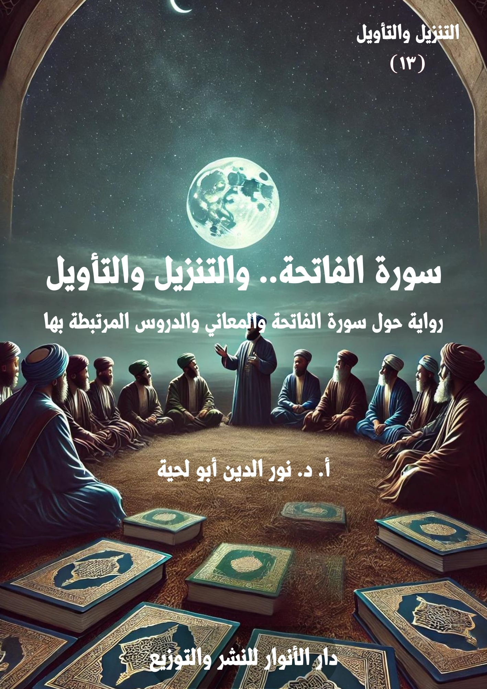

الكتاب: المفسرون وسورة الفاتحة
الوصف: رواية حول سورة الفاتحة والمعاني والدروس المرتبطة بها
السلسلة: التنزيل والتأويل
المؤلف: أ. د. نور الدين أبو لحية
الناشر: دار الأنوار للنشر والتوزيع
الطبعة: الأولى، 1446 هـ
عدد الصفحات: 650
ISBN: 978-620-4-72102-6
لمطالعة الكتاب من تطبيق مؤلفاتي المجاني وهو أحسن وأيسر: هنا

يجمع هذا الكتاب ما ذكره المفسّرون باهتماماتهم وتوجهاتهم ومدارسهم المختلفة، وعبر العصور، حول سورة الفاتحة.
وبذلك هو يحاول أن يجمع كل ما ورد في تفسيرها من الأحاديث والآثار والاجتهادات والفهوم والمباحث المختلفة، ما عدا تلك المباحث اللغوية المعقّدة، والتي لا علاقة لها مباشرة بهذه السورة الكريمة.
ولذلك يمكن اعتباره جامعا بين التفسير الأثري والاجتهادي والكلامي والفلسفي والعرفاني والفقهي والاجتماعي والحركي واللغوي والأدبي لهذه السورة الكريمة.
كما أنه يشمل ما ذكرته المدارس المختلفة، كالمدرسة السنية بمذاهبها العقدية والفقهية، ومثلها مدارس الإمامية والزيدية والإباضية والمعتزلة، وغيرها.
ذلك أن القرآن الكريم ـ لعظمة معانيه وسعتها وأعماقها ـ لا يمكن أن تحيط به جهة واحدة ولا مدرسة واحدة.. بالإضافة إلى أنه لا تعارض في أحيان كثيرة بين الفهوم المختلفة.
ولذلك، فإن هذا الكتاب مثله مثل كتب سائر السلسلة يحاول أن يكون حلقة وصل بين المسلمين من خلال التعرف على أقوال المفسّرين من المشارب والطوائف المختلفة، والاستفادة منها جميعا، وهو ما يزيل الكثير من الشحناء التي دسها الأعداء، واستغلوا بعض الخلافات الفرعية في ذلك.
وننبّه إلى أنا حاولنا تبسيط هذا الكتاب من خلال صياغته روائيا في كتاب [سورة الفاتحة.. والتنزيل والتأول] من سلسلة [التنزيل والتأويل]، ولكل كتاب منها خصوصياته.
سورة الفاتحة والتنزيل والتأويل، ص 7.
بعد أن انتهينا في الأجزاء السابقة من هذه السلسلة من بعض المقدمات التي رأينا ضرورتها، نتناول ـ ابتداء من هذا الكتاب ـ سور القرآن الكريم بحسب الترتيب المصحفي، وبالمنهج الذي ذكرناه في مقدمة هذه السلسلة، وهو طرح المعارف القرآنية ـ وبحسب ما ذكره المفسّرون والمتدبرون، ومن مختلف المدارس والمناهج، ومن مختلف العصور ـ بطرق مبسّطة ميسّرة تحاول أن تخاطب العقل والعاطفة مثلما فعلنا في سلسلة [حقائق ورقائق]، وغيرها من السلاسل.
وقد ذكرنا من أغراض السلسلة محاولة تمييز التأويلات الصحيحة عن المنحرفة، والرد على الشبهات المثارة حول المعاني القرآنية، والتي كان التأويل المنحرف سببا للكثير منها، ولذلك سمينا السلسلة [التنزيل والتأويل]
وذكرنا أن الهدف الأكبر منها هو البحث عن التأويل المتناسب مع جلال التنزيل، أو التأويل الذي يحاول أن يرتقي بالعقول لحقائق التنزيل، أو التأويل الذي يعمق فهم التنزيل، ويكسب صاحبه القدرة على التدبر والفهم العميق.
وبما أن مثل هذا النوع من التأويل لا يمكن أن يصل إليه عقل واحد، أو مدرسة واحدة، أو أبناء عصر واحد، فقد حاولنا أن تكون مصادرنا التفسيرية التي اعتمدنا عليها شاملة لكل ذلك.. فهي تجمع التفسير الأثري مع التفسير الاجتهادي والكلامي والفلسفي والعرفاني والفقهي والاجتماعي والحركي واللغوي والأدبي وغيرها.. كما تشمل المدارس السنية بمذاهبها المختلفة، كما تشمل مدارس الإمامية والزيدية والإباضية والمعتزلة، وغيرها.
ذلك أن القرآن الكريم ـ لعظمة معانيه وسعتها وأعماقها ـ لا يمكن أن تحيط به جهة واحدة ولا مدرسة واحدة.. بالإضافة إلى أنه لا تعارض في أحيان كثيرة بين الفهوم المختلفة.. فما الضرر أن يدرس اللغوي الآية الكريمة على ضوء تخصصه اللغوي، ويدرسها آخر على ضوء تخصصه الكلامي، أو الفقهي أو الاجتماعي أو الحركي؟.. وما الضرر في أن تفهم كل مدرسة القرآن الكريم على ضوء ما لديها من أسس فكرية، بشرط ألا تتعارض مع الحقائق القرآنية القطعية؟
سورة الفاتحة والتنزيل والتأويل، ص 7.
ونحب أن ننبه إلى أن لكل كتاب من كتب هذه السلسلة ـ والمرتبط بسور القرآن الكريم ـ نظيره في سلسلة [المفسّرون والقرآن]، فهذا الكتاب مثلا، والمعنون بـ [سورة الفاتحة.. والتنزيل والتأويل]، يقابله في سلسلة [المفسّرون والقرآن]: [المفسّرون.. وسورة الفاتحة]، وهكذا كل كتاب منها، وقد دعانا إلى ذلك معان متعددة، منها:
أولا ـ أن سلسلة [التنزيل والتأويل] مصاغة على شكل أدبي روائي، قد لا يحبّذه الكثير من الباحثين، ولذلك رأيت أن تكون هذه السلسلة لغيرهم من الذين لا يحبّذون ذلك الأسلوب، وقد أمرنا أن نراعي أذواق الناس، وما يحبذونه من الأساليب؛ فالعبرة بالمعنى، لا بالأسلوب.
ثانيا ـ أن السلسلتين يكمّل بعضهما بعضا؛ فسلسلة [المفسّرون والقرآن] تهتمّ بعرض أقوال المفسّرين ومناقشتها في حال الضرورة بالطريقة العلمية الأكاديمية المعتمدة، بخلاف هذه السلسلة، والتي تطرحها من خلال المناقشات والحوارات، والتي لا تخلو من العلمية، ولكن أسلوبها مع ذلك أسلوب أيسر على عامة الناس، وأسهل.
ثالثا ـ أنا حرصنا في سلسلة [المفسّرون والقرآن] على نسبة الأقوال إلى أصحابها، والحديث عن أقوال المدارس والمذاهب ونحوها، بنسبتها إلى أصحابها، بخلاف هذه السلسلة، والتي اكتفينا فيها بالتوثيق من المصادر من غير اهتمام بأصحاب الأقوال والمذاهب، ونحوها، إلا إذا دعت الحاجة إلى ذلك.
رابعا ـ أن حرية المناقشة والنقد ونحوهما في هذه السلسلة أكبر، لأنها تحاول طرح المسائل بطريقة تتناسب مع الجميع، وبالتالي تناقش الأقوال والآراء من طرف الجميع، بخلاف سلسلة [المفسّرون والقرآن]، لأنها تطرح الأقوال بطريقة علمية هادئة، وتكتفي في المناقشة بما تمس إليها الحاجة، وترجئ الكثير من المناقشات إلى محالها المناسبة، كما هو دأب المنهج العلمي، الذي يفرق بين مطالب العرض والتحليل والمناقشة والنقد.
وننبه هنا ـ بمناسبة ذكر المناقشة والنقد ـ إلا أننا في كلا السلسلتين، حاولنا أن نكون حياديين وموضوعيين قدر الإمكان، وذلك بأن لا ننتقد أي فهم لأي آية، حتى لو اختلفنا معه، ما دام لا يتعارض مع المقاصد والمعاني القرآنية، بالإضافة إلى أن الكثير من الخلاف لفظي، أو لا آثار عملية له، وبالتالي فإن الانتصار لأحد الأقوال فيها مجرد تعصب يؤدي إلى الشحناء من غير فائدة.
سورة الفاتحة والتنزيل والتأويل، ص 8.
بالإضافة إلى ذلك، فإن تفسير أو تدبر القرآن الكريم لا يعني بالضرورة أن يكون المعنى الذي وصل إليه المتدبر عميقا؛ ونرى ذلك في الواقع حيث يتأثر أكثر الناس للفهوم البسيطة، أكثر من تأثرهم للفهوم العميقة، والتي قد لا يفهمونها، والقرآن أُنزل للناس جميعا، لا للخاصة منهم.
بالإضافة إلى ذلك، فإن انتقاد تلك الفهوم، وترجيح فهوم أخرى بدلها، قد يؤدي إلى الصراع والشقاق الذي نُهينا عنه، فأكثر ما صرف الكثير من علماء المدرسة السنية عن تفاسير إخوانهم من المدرسة الشيعية هو ما يرونه من تطبيق بعض الآيات الكريمة أو الكثير منها على الإمام علي أو أئمة الهدى، مع أنه لا حرج في الكثير من التطبيقات ما دامت لا تمسّ بعمومية القرآن الكريم.
لكن هذا لا يعني قبول كل ما ورد من تلك الفهوم والتدبّرات، فالسكوت عن الباطل المعارض للمعاني القرآنية رعاية للوحدة والوفاق غير مقبول لا شرعا ولا أخلاقا؛ فنحن مطالبون بأن ننكر على المنكر، لا أن نسكت عنه، أو نلتمس له المبررات، ولكن بشرط أن يكون منكرا واضحا، لا مجرد معنى لا ضرر فيه، حتى ولو كان لا جدوى منه.
هذا باختصار ما تمس إليه الحاجة من التعريف بالمنهج الذي نعتمده في هذه السلسلة ـ بعد الانتهاء من مقدماتها ـ وقد شرحناه بتفصيل في مقدمة سلسلة [المفسّرون والقرآن]، والتي اقتطفنا بعضا من التعريف بها هنا، خشية ألا يطلع على تلك المقدمة من يطلع على هذا الكتاب.
ونضيف إليه ما ذكرناه عن التفاسير المعتمدة، وسر اعتمادها، وسر الترتيب الذي قد يجده القارئ في هذه السلسلة، كما يجده في سلسلة [المفسّرون والقرآن]، فقد ذكرنا ثمانية أسباب للتفاسير المنتقاة:
1. مرجعية التفسير، أي أنه يقدم الذي يكون مرجعا لغيره من التفاسير على غيره، ذلك أن الاطلاع عليه يعني الاطلاع على كل التفاسير التي اعتمدت عليه، ومن الأمثلة على ذلك تفسير الفخر الرازي، والذي بنيت عليه الكثير من التفاسير التي تلته، من أمثال تفسير (أنوار التنزيل وأسرار التأويل) للبيضاوي، والذي بنيت عليه هو الآخر الكثير من التفاسير.
2. اعتماد التفسير لدى المدرسة التي ينتمي إليها المفسر، ذلك أن من أهداف السلسلة التعرف على مواقف المدارس المختلفة، ولذلك اعتمدنا في المدرسة الإمامية ـ مثلا ـ على تفاسير الطوسي والطبرسي والطباطبائي والشيرازي وجواد مغنية وغيرهم، ولم نعتمد التفسير المنسوب للإمام العسكري، أو القمي،
سورة الفاتحة والتنزيل والتأويل، ص 9.
وغيرهما، بناء على كونه غير معتبر لديها، ولذلك في حال ذكر ما ذكراه يكون بناء على ما ذكره مفسرو المدرسة، لا المصادر نفسها.
3. الصياغة وسهولتها ويسرها، ذلك أن من أهداف السلسلة تبسيط المعارف القرآنية، وما ذكره المفسّرون بشأنها، ولذلك كان للصياغة دورها في انتقائنا للتفسير، ومن الأمثلة على ذلك تفاسير المتأخرين، كعبد الكريم الخطيب وتفسير المراغي في المدرسة السنية، وتفسير محمد حسين فضل الله ومحمد جواد مغنية وناصر مكارم الشيرازي في المدرسة الإمامية.. فهذه التفاسير تبسط الكثير من المسائل المطروحة في الكتب القديمة، وطبعا لا تغني عنها.
ومن هذا الباب لم نضع في الكتب التي اعتمدناها تفسير الزمخشري باعتبار أن كل ما ذكره ـ وإن كان متقدما على غيره ـ إلا أنه موجود في تفاسير المتأخرين عنه، مع إضافة ما ذكره الشراح والنقاد تعقيبا عليه.
4. التحقيقات والاهتمام بالمعارف القرآنية، وهو مما يدخل ضمن تدبر القرآن الكريم، والاستفادة منه في كل الشؤون، ومن هذا الباب انتقينا التفاسير المطولة، ومن العصور المختلفة، ومن المدارس المختلفة، باعتبارها تهتم بالتحقيق، وليس بمجرد الفهم السطحي للآيات الكريمة، ومن أمثلتها في التفاسير القديمة تفسير الفخر الرازي والقرطبي، ومن التفاسير الحديثة تفسير الطباطبائي وابن عاشور وغيرهما.
5.الاهتمام بالجوانب العرفانية والسلوكية والروحية، البعيد عن الغنوصيات أو الشطح الصوفي، ولهذا لم نذكر تفسيرات ابن عربي أو القاشاني أو الآلوسي الإشارية، واكتفينا بما ذكره القشيري أو ابن عجيبة، أو ما ذكره الفخر الرازي وغيره، ممن يهتمون بالإشارات العرفانية.
6. الاهتمام بالجوانب الاجتماعية والسياسية والحضارية، ولهذا اعتمدنا التفاسير التي تصنف ضمن هذا التفسير، كتفسير المنار، ومن تأثر به كالمراغي والقاسي، أو تفسير الطباطبائي والشيرازي ومحمد حسين فضل الله وغيرهم.
7. الاهتمام بالجوانب الحركية، ومسؤوليات الأمة، وفهم القرآن الكريم من خلال الواقع، وكيفية تطبيقه، ومن هذا الباب اعتمدنا تفسير سيد قطب ومحمد حسين فضل الله، وغيرهما، ممن يهتم بالجوانب
سورة الفاتحة والتنزيل والتأويل، ص 10.
الحركية، وخصوصا المعاصرة منها.
8. الاهتمام بالأحاديث والآثار، الواردة عن رسول الله صلى الله عليه وآله وسلم أو أئمة الهدى أو السلف الأول من الصحابة والتابعين، باعتبارها أولى الفهوم والتدبّرات، إما لكونها فهوما معصومة، أو باعتبارها فهوما قريبة من الزمن الذي نزل فيه الوحي، وبذلك تكون أقرب للمراد القرآني من غيرها، بالإضافة إلى أن الانحرافات والأخطاء التي وقعت في فهم القرآن الكريم بدأت من ذلك العصر، حيث تسلل للتفسير الكثير من القصص والخرافات والأساطير والمعاني التي لا علاقة لها بالقرآن الكريم ومعانيه المقدسة، ولذلك كان التعرف عليها ضروريا، لحماية المعاني القرآنية من سوء الفهم، والتعرف على جذور ذلك.
بناء على هذا ذكرنا في مقدمة [المفسّرون والقرآن] الكتب المنتقاة، والتي رتبناها بحسب التسلسل التاريخي، وهو نفس ما نعتمده في هذه السلسلة.
انطلاقا من هذا، فقد قسّمنا هذا الكتاب [سورة الفاتحة.. والتنزيل والتأويل] إلى تسعة فصول بدأنا أولها بمقدمة حول ما نراه من انحرافات في التعامل مع هذه السورة الكريمة، مثلها مثل سائر سور القرآن الكريم، كما شرحنا ذلك في مقدمات السلسلة.
ثم تناولنا ما ذكره المفسّرون حول أسماء السورة، وأسباب التسمية بها، لعلاقتها الكبيرة بمحتوى السورة ومقاصدها.. وذكرنا فيه ما ورد حول محل نزولها، وترتيبها بين سور القرآن الكريم، والخلاف في ذلك، وعلاقته بمحتواها، وعلاقته بأسمائها.
ثم تناولنا ما ذكره المفسّرون حول مقاصد سورة الفاتحة، وعلاقتها بالمقاصد القرآنية، وقد اهتممنا في هذا المبحث بذكر كل ما ذكره المفسّرون من ذلك لأهميته القصوى، واندراجه ضمن التفسير الموضوعي المرتبط بمقاصد القرآن الكريم.
ثم تناولنا ما ذكره المفسّرون حول الجوانب العرفانية المرتبطة بسورة الفاتحة، وآثارها في النفس، وسر الأمر بقراءتها في الصلاة، وفي كل ركعة.
ثم تناولنا ما ذكره المفسّرون حول الأحكام الفقهية المرتبطة بقراءتها في الصلاة، وما ورد حول البسملة وكونها آية من كل سورة، ومن سورة الفاتحة خصوصا، والخلاف الوارد في ذلك، وارتباطه بالصلاة من ناحية، وبمعانيها ومقاصدها من ناحية أخرى.. وقد استثنينا مما ذكروه بعض التفاصيل
سورة الفاتحة والتنزيل والتأويل، ص 11.
المرتبطة بالقراءة في الصلاة، لأن رأينا أن محلها ما ورد من الآيات في الحث على قراءة القرآن، ولذلك نقلناها إلى محلها فيها، وهكذا نقلنا ما ذكروه من المباحث المرتبطة بالاستعاذة، لأن محلها هو ما ورد من الأمر بالاستعاذة، وليس له علاقة مباشرة بالسورة.
ثم تناولنا ما ورد في الأحاديث والآثار، وما ذكره المفسّرون حول تفسير المقطع الأول من سورة الفاتحة، وهو ما نص عليه قوله تعالى: ﴿بِسْمِ اللَّهِ الرَّحْمَنِ الرَّحِيمِ﴾، أو ما يطلق عليه اصطلاحا البسملة، وما تضمنت من المباحث المرتبطة بتفسيرها كمفردات، أو كتركيب.. أو ما ارتبط بذلك مثل مباحث الاسم والمسمى، واسم الجلالة، والرحمة الإلهية، والتأصيل الموضوعي لها من خلال القرآن الكريم، أو من خلال الآفاق والأنفس، ونحوها.
ثم تناولنا ما ورد في الأحاديث والآثار، وما ذكره المفسّرون حول تفسير المقطع الثاني من سورة الفاتحة، وهو ما نص عليه قوله تعالى:﴿الْحَمْدُ لِلَّهِ رَبِّ الْعَالَمِينَ الرَّحْمَنِ الرَّحِيمِ مَالِكِ يَوْمِ الدِّينِ﴾، وما تضمن من المباحث المرتبطة بالحمد والربوبية والعالمين والرحمة الإلهية، والمالكية ويوم الدين، بالإضافة إلى المباحث المتعلقة بها، كبعض مباحث المعاد، وضرورته، وتجليات المالكية فيه.
ثم تناولنا ما ورد في الأحاديث والآثار، وما ذكره المفسّرون حول تفسير المقطع الثالث من سورة الفاتحة، وهو ما نص عليه قوله تعالى: ﴿إِيَّاكَ نَعْبُدُ وَإِيَّاكَ نَسْتَعِينُ﴾، وما تضمن من المباحث المرتبطة بالعبادة والاستعانة.
ثم تناولنا ما ورد في الأحاديث والآثار، وما ذكره المفسّرون حول تفسير قوله تعالى: ﴿اهْدِنَا الصِّرَاطَ الْمُسْتَقِيمَ صِرَاطَ الَّذِينَ أَنْعَمْتَ عَلَيْهِمْ غَيْرِ الْمَغْضُوبِ عَلَيْهِمْ وَلَا الضَّالِّينَ﴾ [الفاتحة: 6 ـ 7] ، وما تضمن من المباحث المرتبطة بمعاني الهداية، وأنواعها، وسر ارتباطها بالصراط المستقيم.. والمقصود بالمنعم عليهم، والذين دعي إلى اتباع سبيلهم وصراطهم.. والمقصود بالضالين والمغضوب عليهم، وأنواع الضلالة، وأصناف المغضوب عليهم من خلال القرآن الكريم.
وفي ختام هذه المقدمة ـ كما في مقدمة سلسلة [المفسّرون والقرآن]، أتوجه بالشكر الجزيل لكل من أمدّني بما أحتاجه من مراجع، ويسّر لي الحصول عليها، وأولهم أستاذنا الكريم الكبير السيد جلال ميرأقائي الذي قدّم لي الخدمات الكثيرة في هذا المجال، كما لا أنسى أن أتقدم بالشكر الجزيل لشركة نور سوفت،
سورة الفاتحة والتنزيل والتأويل، ص 12.
وهي من كبرى شركات البرمجيات في الجمهورية الإسلامية الإيرانية، والتي أهدتني ما أنتجته من إصدارات علمية، وخصوصا تلك التي جمعت التفاسير القرآنية، والتي اعتمدت على الكثير منها في هذه السلسلة.. كما ألا أنسى بعض إخواننا في اليمن، والذين أمدّوني بكل ما كتبه أئمة الزيدية وعلمائها.
فالشكر الجزيل لكل هؤلاء، وأسأل الله أن يجعلنا جميعا خدما للقرآن الكريم، وخدما للوحدة الإسلامية، والتقارب بين المسلمين بطوائفهم وأجيالهم المختلفة، تحت راية القرآن الكريم.
سورة الفاتحة والتنزيل والتأويل، ص 13.
بعد أن طلب مني معلمي معلم القرآن تجهيز نفسي لرحلتي الجديدة إلى أول سورة من سور القرآن الكريم سورة الفاتحة، امتلأت شوقا لذلك.. فسورة الفاتحة هي السورة التي يفتتح بها كل مؤمن حياته، وصلته بالقرآن الكريم، وهي السورة التي تُقرأ كل يوم ليس مرة واحدة، ولكن لمرات عديدة، أقلها سبع عشرة مرة، ولا تُقرأ هكذا فقط، بل تُقرأ في الصلاة، وبهيئة معينة، ومع خضوع كامل.
وهي السورة التي حظيت بالكثير من الأحاديث المتفق على أكثرها في المدارس الإسلامية، والتي تبين فضلها ومكانتها وقيمتها وقيمة ما تحويه من معان، ويكفيها أن رسول الله صلى الله عليه وآله وسلم قال في وصفها: (هي أم القرآن، وهي فاتحة الكتاب، وهي السبع المثاني، وهي القرآن العظيم)(1).. وكلها أوصاف عظيمة تدل على عظمة ما فيها.
وهكذا ذكر رسول الله صلى الله عليه وآله وسلم تلك العلاقة الروحية التي تربط المؤمن بربه، وهو يقرؤها، فقال فيما يحكي عن الله تعالى: (قسمت الصلاة بيني وبين عبدي نصفين، ولعبدي ما سأل فإذا قال العبد: ﴿الْحَمْدُ لِلَّهِ رَبِّ الْعَالَمِينَ﴾، قال الله: حمدني عبدي، وإذا قال: ﴿الرَّحْمَنُ الرَّحِيمُ﴾، قال الله: أثنى علي عبدي، فإذا قال: ﴿مَالِكِ يَوْمِ الدِّينِ﴾، قال مجّدني عبدي فإذا قال: ﴿إِيَّاكَ نَعْبُدُ وَإِيَّاكَ نَسْتَعِينُ﴾، قال هذا بيني وبين عبدي، ولعبدي ما سأل، فإذا قال: ﴿اهْدِنَا الصِّرَاطَ الْمُسْتَقِيمَ صِرَاطَ الَّذِينَ أَنْعَمْتَ عَلَيْهِمْ غَيْرِ الْمَغْضُوبِ عَلَيْهِمْ وَلَا الضَّالِّينَ﴾، قال هذا لعبدي ولعبدي ما سأل)(2)
وهكذا ذكر رسول الله صلى الله عليه وآله وسلم منة الله تعالى على هذه الأمة بهذه السورة العظيمة، فقال: (إن الله تعالى منّ علي بفاتحة الكتاب ـ الى قول ﴿مَالِكِ يَوْمِ الدِّينِ﴾ ـ قال جبرئيل: ما قاله مسلم الا صدقه الله وأهل سمائه)(3)، وروي أنه قال حاكيا عن الله تعالى: (وأعطيت أمتك كنزا من كنوز عرشي، فاتحة الكتاب)(4)
وروي أنه صلى الله عليه وآله وسلم قال لجابر بن عبد الله: يا جابر! ألا أعلمك أفضل سورة أنزلها الله في كتابه؟ فقال جابر: بلى ـ بأبي أنت وأمي ـ يا رسول الله، علمنيها، قال: فعلمه الحمد لله، أم الكتاب)(5)
ــــــــــــــــــــــــــــــــــــــــــــــــــــــــــ
(1) أحمد: ١٥/٤٨٩.
(2) مسلم: 1/296.
(3) مجمع البيان: 1/31.
(4) الخصال: ص 425 ـ: 426.
(5) تفسير العياشي: 1/20.
سورة الفاتحة والتنزيل والتأويل، ص 14.
وغيرها من الأحاديث الكثيرة التي تنبه كل قارئ إلى عظمة ما فيها من معان، ولذلك شرع الله تعالى تكريرها لتبقى تلك المعاني راسخة دائما في الذهن.
لكني لم ألبث بعد ذلك الفرح والشوق أن تسلل إلي الحزن من جديد، ذلك أن هذه السورة العظيمة، ومع اتفاق الأمة جميعا على قراءتها وحفظها وتلاوتها في كل صلاة، بل في كل مناسبة، ولكن مع ذلك لا تأثير لها في الكثير، وكأنها دواء أسيء استعماله؛ فصار عديم الجدوى، أو صار ربما ضرره أكثر من نفعه.
لقد صرت أرى سورة الفاتحة عند الكثيرين مجرد وسيلة لكسب الأجور، وإسقاط الذنوب، وكأنها حقيبة دبلوماسية تحمي صاحبها من التفتيش والمحاسبة، وليست رسالة إلهية تعيد الإنسان إلى وعيه بحقيقة الوجود، وحقيقة دوره فيه.
بل رأيت من يستعملها في السحر والشعوذة والطلسمات والأوفاق.. ورأيت من يبحث عن خادمها، لا ليتعلم منه معانيها وأسرارها، وإنما ليسخره كما سخر علاء الدين خادم مصباحه السحري.
ورأيت من يراها مجرد نص عربي بليغ يبحث في وجوه إعرابه وبيانه، ويحاول أن يبرز كل عضلاته في ذلك، من دون اهتمام بمعانيها، ولا بالرسائل التي تحملها.
ورأيت من يراها مجرد حروف، يبحث عن مخارجها، وكيف يمد مدودها، ويرقق ما يحتاج إلى ترقيق، ويغلظ ما تحتاج إلى تغليظ، ويخفي ما يحتاج إلى إخفاء.. ثم إذا سمع الإمام وهو يقرأ لم يراقب من قراءته إلا تلك الحروف، وكيف تخرج، ليلقاه بعدها، فينصحه بإضافة مد أو غنة أو تصحيح مخرج حرف.
وهكذا.. رأيت من يشعر بالاشمئزاز والضيق عندما يسمع مكبرات الصوت، وهي تقرؤها، مخافة أن يكون ذلك إيذانا بموت عزيز، أو فراق حبيب.
ربما لا يصدقني الكثير منكم، لأنه لم يشاهد ما يدل على ذلك.. ولذلك سأذكر لكم خمسة مشاهد مررت بها، ولا عليكم أن تصدقوني، أو لا تصدقوني.. لكن تلك المشاهد، وما رأيته فيها، والألم الذي انتابني بعدها، كان سبب رحلتي هذه، والتي قادني فيها معلم القرآن بنفسه إلى المدينة التي أدركت فيها من عظمة هذه السورة ما لم أدركه من قبل.
سورة الفاتحة والتنزيل والتأويل، ص 15.
أما المشهد الأول منها، فهو مشهد اختلطت فيه الخرافة بالدجل بالابتزاز، واستعمال القرآن الكريم، وسورة الفاتحة منه بالخصوص لذلك.
وقد بدأ بمروري على بناء ضخم، كُتب على بابه إعلان غريب، اجتذبني أيما اجتذاب، فهو إعلان يقول: (دورة تكوينية تدريبية في استعمال سورة الفاتحة في تحقيق كل الحاجات، يلقيها مجموعة من المدربين العالميين المختصين بالعلاج الروحي، والعلاج بالطاقة، واستخدام الميتاكون)
عندما قرأت الإعلان تصورت أنني سألتقي في ذلك المحل بمعلم القرآن، لكني وبمجرد دخولي الباب، وملاقاتي للبواب عرفت أن ذلك المكان أبعد الأمكنة عن القرآن، وعن معلم القرآني.
فبمجرد دخولي، طالبني البواب أن أدفع التذكرة التي تتيح لي حضور الدورة، فأخبرته أني لا أملكها، فاعتذر لي، وطلب مني أن أعود من حيث أتيت، لكني لحرصي الشديد على الحضور، رجوته أن يسمح لي، فقبل بذلك بعد تردد، ثم أخذني إلى مكتبه، وأعطاني تذكرة، وقال: لا بأس.. هذه تذكرة كنت اشتريتها سابقا.. ادفع ثمنها كما هو بالضبط من غير زيادة، وادخل.
دهشت كثيرا عندما رأيت ثمن التذكرة، فقلت له: ما كل هذا الثمن؟ لم أر في حياتي تذكرة بهذا الثمن.
أمسك التذكرة، وقال: لا شك أنك لا تعرف قيمة سورة الفاتحة، ولهذا تقول هذا الكلام.
قلت: بلى.. أعرفها.. فهي كنز الله تعالى الأعظم الذي منّ به على عباده.
قال: فكيف تريد أن تظفر بالكنز العظيم بمال قليل؟
قلت: صدقت في هذا.. لقد ألقمتني الحجة، ولا مناص لي من شرائها.. هات سأشتريها.
أعطيته كل ما كان عندي من المال، فابتسم، وقال: صدّقني.. إن الكنوز التي ستنالها بهذا المال القليل الذي تدفعه مقابلها لا يمكن أن يقدّر بثمن.
دخلت القاعة، وأنا راض عن نفسي، ومتلهف لأجور كثيرة مقابل تلك الأموال التي دفعتها حتى أنال بركات سورة الفاتحة، كنز الله الأعظم.
لكني فوجئت بما جعلني أندم ندما عظيما على دفعي لكل ذلك المال، لا بخلا به، ولكن لأني وضعته في يد من سيستخدمه في الدجل والخرافة، وباسم سورة الفاتحة.
سورة الفاتحة والتنزيل والتأويل، ص 16.
لقد تمنيت حينها لو وضعته في يد اللصوص والمجرمين، ولم أضعه هناك، لأن اللص والمجرم، يفعل ذلك، وهو يعرف والناس يعرفون جميعا أنه مجرم.. لكن ذلك الذي يحتال باسم سورة الفاتحة، يخدع الناس جميعا، وقد يخدع نفسه أيضا، وبأسمى مقدس، وبأغلى كنز.
دعوني أحكي لكم ما جرى، لتفهموا سر ندمي وغضبي..
بعد دخولي القاعة التي اجتمع فيها الكثير من الناس حول أولئك الذين لقبوا أنفسهم بلقب المدربين العالميين، والذين تنوعت ملابسهم، بحسب تنوع تخصصاتهم، بدأ أولهم الحديث بقوله(1): هذا الذي ذكرناه لكم كان ثمرة للكثير من التمارين والتجارب التي استفدناها، وبالسند الصحيح من معلمنا الأكبر أحمد بن علي البوني، المتوفى سنة 622 هجرية، صاحب شمس المعارف الكبرى.. والذي فتح الله تعالى عليه من العلوم اللدنية المتعلقة بسورة الفاتحة وغيرها من سور القرآن الكريم ما لم يفتح لغيره.
قال آخر، وقد فتح كتابا قديما: أجل.. اسمعوا ما قال في حديثه عن البسملة، وآثارها..
أخذ يقرأ بصوت مؤثر: (اعلم وفقني اللّه وإياك لطاعته وفهم أسرار أسمائه، أن من علم ما أودع اللّه تعالى في: ﴿بِسْمِ اللَّهِ الرَّحْمنِ الرَّحِيمِ﴾ من الأسرار لم يحترق بالنار ولم تأكله، ومن كتبها ووفقها لم يحترق بالنار.. ومن أكثر من ذكرها رزق الهيبة عند العالم العلوي والسفلي، وبها قام ملك سليمان بن داود عليه السّلام، ومن كتبها مائة مرة وحملها رزق الهيبة في القلوب)(2)
التفت للجموع، وقال: هذا جزء بسيط جدا من آثارها.. وما زال المزيد منها.. اسمعوا ما قال في اسم الجلالة فيها.. (وهو اسم سرياني، وأما تفسيره فهو أنه يخرج الأشياء من العدم إلى الوجود، وله معان أخر يجب على الناظر فيها كفها عن السفهاء لئلا يتوصلوا إلى فعل المنكرات والمحرمات فيسقط عند اللّه مثل باعورا لما أراد اللّه تعالى به معصية نعوذ باللّه تعالى من غضبه، اللهم لا تجعلنا ممن يستعين بأسمائه على معاصيه.. وهذا الاسم له حروف أربعة ألف ولامان وهاء لأن الطبائع أربعة، والأقطار أربعة شرق وغرب وشمال وجنوب، وملائكة التسبيح أربعة جبريل وميكائيل وإسرافيل وعزرائيل.. ولهؤلاء الأربعة ملوك أيام تختص بهم، فلجبريل عليه السّلام يوم الاثنين لأنه بارد رطب، ولإسرافيل عليه السّلام يوم
ــــــــــــــــــــــــــــــــــــــــــــــــــــــــــ
(1) شمس المعارف الكبرى، ص 42.
(2) شمس المعارف الكبرى، ص 43.
سورة الفاتحة والتنزيل والتأويل، ص 17.
الخميس وهو حار رطب، ولعزرائيل عليه السّلام يوم السبت لأنه بارد رطب، وطبعه التراب والموت والفناء، ولميكائيل عليه السّلام يوم الأربع وهو ممتزج من الطبائع الأربعة.. ولهم أربعة أوفاق تختص بهم؛ وهو المسبع لجبريل عليه السّلام، والمربع لإسرافيل عليه السّلام، والمثلث لعزرائيل عليه السّلام، والمثمن لميكائيل عليه السّلام، وهذه الأوفاق الأربعة وهذه صفتها)(1)
ثم دعاهم إلى النظر إلى الشاشة، ليروا ذلك الوفق.. وهو يقول: انظروا هذه صورة المثلث لعزرائيل عليه السّلام.. وهذه صورة المربع لإسرافيل عليه السّلام.. وهذه صورة المسبع لجبريل عليه السّلام.. وهذه صورة المثمن لميكائيل عليه السّلام.
قال آخر: لا تستهينوا بهذه الأوفاق؛ فكل وفق منها بالدنيا وما فيها.. ولا يمكن معرفة قيمتها وفضلها.. لقد أجمع كل أساتذتنا على تأثيرها العظيم..
فتح كتابا بين يديه، وقال: انظروا ما قال سيدنا علامة دهره وعصره.. لقد قال: (اعلم وفقني اللّه وإياك لطاعته أن لهذه الأوفاق تأثيرا عظيما في كل ما تريد، فمن تدبّرها وجدها صحيحة جدا يفعل بها ما يشاء، واتقى اللّه ربه في جميع أحواله، فإذا أردت عملا من أعمال الأوفاق الأربعة، فاكتب خاتمه بعد عدده وصحته، وأضف إليه اسم المطلوب يحصل ما تريد)(2)
قام بعض الحضور، وقال: أنا أريد الانتقام من أعدائي الذين تظاهروا علي؛ فكيف يمكنني استعماله لذلك؟
قام بعض الأساتذة، وقال(3): بسيط جدا: عليك بالمسبع.. اكتبه في كاغد أو فضة بيضاء خالصة، يوم الاثنين عند طلوع الشمس ساعة القمر، فإن كان للخير فاكتبه في زيادة القمر، وإن كان في شرفه أو سعده سالما من النحوس كان أبلغ، وإن أردت غير ذلك من الانتقام للأعداء، أو ظالم جبار فليكن القمر في المحاق والاحتراق، متصلا بزحل والمريخ.
ثم ابتسم، وقال(4): وإياك أن تفعله لغير مستحقه، والعفو أولى قال تعالى: ﴿وأَنْ تَعْفُوا أَقْرَبُ لِلتَّقْوى﴾، وقال: ﴿فَمَنْ عَفا وأَصْلَحَ فَأَجْرُهُ عَلَى اللَّهِ﴾
ــــــــــــــــــــــــــــــــــــــــــــــــــــــــــ
(1) شمس المعارف الكبرى، ص 43.
(2) شمس المعارف الكبرى، ص 45.
(3) شمس المعارف الكبرى، ص 45.
(4) شمس المعارف الكبرى، ص 45.
سورة الفاتحة والتنزيل والتأويل، ص 18.
قام أستاذ آخر، وقال(1): أحب أن أضيف إلى ما ذكره زميلي بهذا التذكير.. لا تنسى أن تدخّن للخير بالدخنة الطيبة وللشر بضدها، فانظر فإن كان القمر في برج هوائي علق في الهواء، وإن كان في برج ناري ففي النار، وإن كان في برج مائي ففي الماء، أو ادفنه في قرب الماء، وإن أردت إرساله فيكون في قصبة فارس مشمعة، واقرأ عليه ما يأتي، وإن كان في ترابي ادفنه في التراب تحت عتبة بابه أو بابك إن أردت جلبه إليك، وإن كان عظيما أجابك.
قام أحد الحضور، وقال: أنا رجل لي علاقة بأهل الحكمة والسلطة، وأحيانا أذهب إليهم في سبيل قضاء حاجاتي، فيردوني؛ فهلا أجد عندكم فيها ما يلينهم لي.
قام أحد الأساتذة، وقال: هذا من أسهل الأمور بالنسبة لسورة الفاتحة، وبالنسبة للخدم الموكلين بها.. ويكفيك منها ﴿بِسْمِ اللَّهِ الرَّحْمَنِ الرَّحِيمِ﴾.. فقد ذكر أساتذتنا الربانيون القرآنيون أن من أرد الدخول على الحكام، وتليين قلوبهم لقضاء مصالحه عليه أن يصوم يوم الخميس، ويفطر على الزيت والتمر، ويصلي المغرب، ويقرؤها مائة وإحدى وعشرين مرة، ثم يقرؤها من غير عدد إلى أن يغلب عليه النوم، فإذا أصبحت يوم الجمعة، فليصل الصبح ويتلوها العدد المذكور، ويكتبها في كاغد بمسك وزعفران وماء ورد، ويبخرها بعود وعنبر، ويكتبها العدد المذكور(2).
ثم سكت قليلا، ثم راح يرفع صوته بحماسة، ويقول، هو يشير بيده: فو اللّه الذي لا إله إلا هو ما حملها رجل أو امرأة إلا وصار في أعين الناس كالقمر ليلة البدر، وكان عزيزا مهابا وجيها مطاعا، وكل من رآه أحبه وقضى حاجته، وألقى حبه في قلوب الخلق(3).
قام رجل آخر من الحضور، وقال: بورك فيكم.. أنا رجل مقتّر علي في الرزق، فهل يمكنني أن أغتني بها؟
قام أحد الأساتذة، وقال(4): أجل.. فقد ذكر أساتذتنا القرآنيون الربانيون أن من كتبها في رقّ غزال مائة وإحدى وعشرين مرة بمسك وزعفران وماء ورد والبخور قسط وميعه ولبان وجاوي وحمله المقتر عليه في الرزق فتح اللّه تعالى عليه ووسع رزقه.. وإن حملها مديون أوفى اللّه تعالى دينه وكانت له أمانا
ــــــــــــــــــــــــــــــــــــــــــــــــــــــــــ
(1) شمس المعارف الكبرى، ص 45.
(2) شمس المعارف الكبرى، ص 47.
(3) شمس المعارف الكبرى، ص 47.
(4) شمس المعارف الكبرى، ص 47.
سورة الفاتحة والتنزيل والتأويل، ص 19.
من كل مكروه.. وإذا كتبت في ورقة خمسة وثلاثين مرة وعلقت في البيت لم يدخله شيطان ولا جان وتكثر فيه البركة.. وإذا علقت تلك الورقة في دكان كثر زبونه وزاد ربحه وكثرت بضاعته وأعمى اللّه عنه أعين الناظرين.
قام آخر، وقال: أنا رجل أرغب في أن يكون لي ولد.. وقد سعيت إلى كل المستشفيات والأطباء في سبيل ذلك.. لكن لم أنل ما تمناه.. فكلهم ذكروا لي أن زوجتي عاقر، ولا يمكن أن تلد أبدا.. فهل أجد عندكم الترياق.
قام أحد الأساتذة، وقال(1): أجل.. فقد ذكر أساتذتنا القرآنيون الربانيون أن من كتبها في رقّ غزال مائة وإحدى وعشرين مرة بمسك وزعفران، وشربت منه متعسرة عن الولادة وضعت حالا.. وإذا كتبت 110 مرات للمرأة التي لا يعيش لها ولد، والعاقر التي لم تحمل بعد طهرها، وحملت الورقة فإنها تحمل بإذن اللّه تعالى، ولا تضع الورقة إلّا بعد ستين يوما فإنها تحمل بولد صالح ولا ترى لحمله ألما ولا مشقة بإذن اللّه تعالى.. وإذا كتبت إحدى وستين مرة وحملها من لا يعيش أولادها عاشوا، وقد جرب ذلك وصح واللّه على كل شيء قدير.
قام آخر، وقال: أنا من صغري الباكر، ومنذ استماعي لتلك الأعاجيب التي حدثتنا عنها أمهاتنا وجداتنا، والتي حصلت لعلاء الدين ومصباحه العجيب.. منذ ذلك الحين، وأنا أحلم أن يكون لي مثل ذلك المصباح.. فهل يمكنني بالفاتحة أن أحصل على مثله؟
قام أحد الأساتذة، وقال: شكرا جزيلا على هذا الطلب الوجيه.. أجل.. يمكنك الحصول على كل خدماته.. فقد ذكر علماؤنا القرآنيون الربانيون الكثير من الطرق لذلك.. ومنها ما ذكره بعضهم، فقال: (إذا أردت اتخاذ إخوان من الجن المؤمنين يقضون حاجتك ويسعون في مرضاتك، فابدأ بالصوم يوم الأربعاء إلى يوم السبت الرابع منه، بعد أن تغسل الثوب والبدن، واقرأ سورة الإخلاص كل يوم ألف مرة، وسورة يس مرة، وسورة الدخان، وتنزيل السجدة وتبارك الذي بيده الملك مرة، فإذا كان عصر يوم السبت وهي الساعة العاشرة، اعتزل عن الناس في موضع خال في بقعة نظيفة، وتأخذ سبع براوات من الكاغد تكتب على الأولى قوله تعالى: ﴿وهُوَ الَّذِي يُحْيِي ويُمِيتُ ولَهُ اخْتِلافُ اللَّيْلِ والنَّهارِ﴾، وعلى الثانية قوله
ــــــــــــــــــــــــــــــــــــــــــــــــــــــــــ
(1) شمس المعارف الكبرى، ص 47.
سورة الفاتحة والتنزيل والتأويل، ص 20.
تعالى: ﴿فَإِذا قَضى أَمْراً فَإِنَّما يَقُولُ لَهُ كُنْ فَيَكُونُ﴾، وعلى الثالثة قوله تعالى: ﴿فَسَيَكْفِيكَهُمُ اللَّهُ وهُوَ السَّمِيعُ الْعَلِيمُ﴾، وعلى الرابعة قوله تعالى: ﴿ثُمَّ إِذا دَعاكُمْ دَعْوَةً مِنَ الْأَرْضِ إِذا أَنْتُمْ تَخْرُجُونَ﴾، وعلى الخامسة: ﴿فَإِذا هُمْ مِنَ الْأَجْداثِ إِلى رَبِّهِمْ يَنْسِلُونَ﴾، وعلى السادسة: ﴿ونُفِخَ فِي الصُّورِ﴾ إلى قوله: ﴿فَإِذا هُمْ قِيامٌ يَنْظُرُونَ﴾، وعلى السابعة: ﴿يَوْمَ يَخْرُجُونَ مِنَ الْأَجْداثِ سِراعاً فَسَيَكْفِيكَهُمُ اللَّهُ وهُوَ السَّمِيعُ الْعَلِيمُ﴾ بعد أن تصلي أربع ركعات بالفاتحة ويس في الأولى، والدخان في الثانية، والثالثة الفاتحة والسجدة وتبارك الملك)
قاطعه الرجل، وقال: ليتك كتبت لي هذا.
قال الأستاذ: في المكتب ستجدون كل الأحراز.. وهي مكتوبة بحسب الطوالع، ويمكنكم شراءها منهم.
قال الرجل: فإذا فعلت ذلك.. ماذا يحصل.. هل سيظهر لي من يقول لي: شبيك لبيك، ها أنا بين يديك؟
قال الأستاذ: إذا فعلت ذلك.. سيظهر لك سبعة أشخاص من أشرافهم وكبرائهم، ويسلمون عليك ويمتثلون أمرك، وقبل قراءة الأسماء تعلق عليك سبع براوات في خيط مثل الطرطور، وضعه على رأسك قبل شروعك في الصلاة، ويكون معك شمع، فتأخذ براوات من السبعة التي كتبتهم وتقرأها عليهم وتقول: أيكم صاحب هذه البراوة وصاحب هذه الرقعة فيقول واحد منهم: أنا صاحبها فتقول له: ما اسمك فيقول: فلان فتكتب اسمه أعلى الرقعة، ثم تقول: خاتمك وتأخذ الخيط والشمع وتختم به أسفل الرقعة كما تختم المكتوب، ثم تقول لكل واحد منهم كذلك حتى تنتهي إلى السابع، ثم تقول: أقسمت عليكم بما في هذه الرقعة من الأسماء إلا ما حضرتم وأجبتم دعوتي إذا دعوتكم، ثم تقول انصرفوا بارك اللّه فيكم وعليكم، ثم ارفع تلك البراوات والرقعة المختومة في مكان طاهر حتى يبدو لك حاجة من طعام أو شراب أو علم شيء أو كنز أو خبيئة أو غير ذلك، فادعهم يجيبوك في أسرع وقت بإذن اللّه تعالى، وإياك أن تكون غير قوي القلب ثابت العزم ذا همة عالية ودماغ ثابت وقلب قوي وتكون ممارسا للخلوة والرياضات، وإن كنت غير ذلك، فإياك أن تحضرهم فتضر نفسك، واحذر من مشاهداتهم فإنها تكشف قناع القلب.
سورة الفاتحة والتنزيل والتأويل، ص 21.
بعد أن ذكر الحضور حاجاتهم، وأجابهم عنها الأساتذة، قام بعضهم، وقال: أنا بحمد الله قد أعطاني الله تعالى من كل فضل وخير.. ولهذا لم أحضر لمثل هذه الحاجات، ولكني حضرت للتعرف على أسرار حروفها.. وقد عرفت منها سابقا أسرار حرف الباء، وجئت اليوم لأتعلم سر حرف السين وخواصه.
قام أحد الأساتذة، وقال(1): بورك فيك، وفي همتك العلية.. لقد ذكر أساتذتنا الربانيون القرآنيون أن حرف السين لما خلقه اللّه تعالى من عالم أمره، أنزل معه من الملائكة تسعة آلاف وثمانمائة وثمانين ملكا، وهو أول حرف من حروف ظاهر الاسم الأعظم، وأما الاسم الأعظم فله ظاهر وباطن، فظاهره قامت به السموات، وباطنه قامت به العلويات من الكرسي والعرش، ولذلك وقعت السين في أول السموات وفي ذلك مرتبة الكرسي، ولما كانت الباء متعلقة بالقدرة وهي مضمرة للمضمرات لأن الباء منك إليك، فأنت تقول هو هو، وهو يقول بي بي، وإن في سورة يس اسما من أسماء الحكمة من وقف عليه وكتبه ومحاه بماء المطر وهو مستقبل القبلة عدد الأسماء أياما أنطقه اللّه تعالى بالحكمة، وهو وسط السورة وعدد حروفها ستة عشر حرفا منها حرفان منقوطان من أعلى، وحرفان منقوطان من أسفل، وهي خمس كلمات أولها حرف السين، وآخرها حرف الميم، وظهر حرف السين في اسمه السلام والسميع السريع وهو اسم الملحين في الدعاء خصوصا.
قام أستاذ آخر، وقال(2): لاشك أنكم لم تعرفوا باسم الله السريع.. فهو من الأسماء التي لا يعرفها أكثر الناس مع أنه من الأسماء الحسنى العظمى.. وقد ذكر أساتذتنا القرآنيون الربانيون أن من ذكره أياما عدده وسأل اللّه تعالى شيئا أعطاه إياه ومن كان له حاجة فليرسمه في كفه ويدعو بالأسماء مضروبة في الأيام فما بلغ من العدد يدعو به، فإن اللّه تعالى يجيب دعاءه وعدده مضروبا في الأيام أربعة آلاف ومائتان وسبعة وسبعون مرة.. وهو لمن أراد رؤية الأرواح ويسألهم فيجيبونه وفيه أسرار خفيات وأعمال جليات.
قام رجل من الحضور، وقال: حدّثتمونا عن حرف السين؛ فحدّثونا عن حرف الميم.
قام أحد الأساتذة، وقال(3): حرف الميم قطر من أقطار الحروف، وكل حرف كان آخره كأوله
ــــــــــــــــــــــــــــــــــــــــــــــــــــــــــ
(1) شمس المعارف الكبرى، ص 53.
(2) شمس المعارف الكبرى، ص 53.
(3) شمس المعارف الكبرى، ص 53.
سورة الفاتحة والتنزيل والتأويل، ص 22.
كالواو والميم والنون يشير إلى الجميع لما فيه من الاتحاد، ويشير إلى السكون لما فيه من هيبته، وهو من حروف اللوح، ولما خلقه اللّه تعالى خلقه نورا مستنيرا مطموسا بالنور ومن حروف العقل لإحاطته، ومنه تستمد الشمس في الفلك الرابع، وبسرّه أقام اللّه تعالى الملك والملكوت واظهار العالم بالميم، فأعانه على الأعمال بسر النور الميمي، وهو آخر رتبة في بسم، وفيه سر بلوغ الأشد قال تعالى: ﴿حَتَّى إِذا بَلَغَ أَشُدَّهُ﴾ وأعداد الميم الواقعة عليه أربعون.. وقد وكل اللّه تعالى به تسعين ملكا من ملائكة الروح.. وهو السر الذي أودعه اللّه تعالى في اسم نبيه صلى الله عليه وآله وسلم في أوله وذلك بسر الملكوت وفي وسطه بسر الملك فيجتمع عالم الملك وعالم الملكوت.. ومن نظر إلى شكل الميم كل يوم أربعين مرة وهو يقول: ﴿قُلِ اللَّهُمَّ مالِكَ الْمُلْكِ﴾ إلى قوله تعالى: ﴿بِغَيْرِ حِسابٍ﴾ يسر اللّه تعالى له أسباب الخير والبركة ولم يدر من أين يأتيه الرزق.
ذاك هو المشهد الأول.. أما المشهد الثاني؛ فهو أحسن مصداق لما ورد في الحديث عن رسول الله صلى الله عليه وآله وسلم حيث قال في وصف المتكلفين المتنطعين: (يخرج في آخر الزّمان أقوام أحداث الأسنان، سفهاء الأحلام، يقولون من خير قول البريّة، لا يجاوز إيمانهم حناجرهم؛ فأينما لقيتموهم فاقتلوهم، فإنّ قتلهم أجر لمن قتلهم يوم القيامة)(1)
وقد مررت به قبل سنوات.. وقد حصل في المسجد، وبعد صلاة المغرب، فبعد صلاتنا خلف إمام قريتنا الورع التقي الصالح.. والذي كنا نشعر براحة عظيمة، ونحن نستمع لقراءته الخالية من التنطع والتكلف.. جاءنا في ذلك اليوم من كدر علينا كل شيء.. وبسورة الفاتحة، بل بحرف واحد من حروفها.
سأحكي لكم ما جرى لتحكموا بأنفسكم.. بعد انتهائنا من الصلاة، وكانت صلاة جهرية، قرأ الإمام فيها قراءة واضحة خاشعة، لم أر فيها ما يخالف القرآن الكريم، لكن بعض الحضور، وكان من الضيوف الذين وفدوا لقريتنا، وكان صاحب لحية طويلة، وبمجرد سلام الإمام، قام غاضبا، وقال: على الجميع أن يعيدوا الصلاة.. فهذا الإمام قرأ سورة الفاتحة بطريقة خاطئة، لا علاقة لها بها.. لست أدري هل كان يقرأ التوراة أو الزبور أو الإنجيل أو غيرها.. المهم أنه لم يكن يقرأ القرآن الكريم الذي أنزله الله تعالى
ــــــــــــــــــــــــــــــــــــــــــــــــــــــــــ
(1) البخاري، (5057)، ومسلم (1066)
سورة الفاتحة والتنزيل والتأويل، ص 23.
على رسوله صلى الله عليه وآله وسلم.
لم ينفعل الإمام لما قاله ذلك الرجل، ولكنه قال بهدوء: لا بأس.. اذكر لي مواضع خطئي.. وسأصححها إن شاء الله..
قال الرجل بغضب: ماذا أذكر.. وماذا أترك.. لقد أتيت بالسبع الموبقات في قراءتك لسورة الفاتحة.. لم تراع لها أي حرمة.. ألم تسمع ما ورد فيها من الأحاديث والآثار؟
قال الإمام: فهلا ذكرت لي خطأ منها.
قال الرجل: هل سمعتم كيف نطق حرف الضاد من كلمة ﴿الضَّالِّينَ﴾ .. لقد نطق به كما تنطق الأعاجم الذين يحرفون القرآن الكريم، وصلاتهم لا تصح لأجل ذلك.
قال الإمام: كيف تقول هذا يا بني.. وأنا قرأت القرآن الكريم وجودته من كبار القراء والمجودين المعاصرين..
قال الرجل: هذه هي مشكلتك.. إنها كبار القراء والمجودين المعاصرين الذين لا يفقهون شيئا بسبب مخالفتهم لسنن قراءة الأوائل..
قال الإمام: لا بأس.. ما دام قد وقع الخلاف فيما ذكرت.. فلماذا يضيق بعضنا على بعض؟
غضب الرجل، وقال: وكيف لا أغضب، وأنا أرى القرآن الكريم يحرّف أمام سمعي وبصري.
وقف بقامته الفارعة، وراح يخاطب الجموع قائلا: هل يرضيكم أن يُحرّف القرآن.. هل يرضيكم أن تصلوا صلاة باطلة وراء هذا الإمام الذي لا يحسن قراءة سورة الفاتحة؟
لم يجد الإمام ما يقول.. لكن بعض الحضور ممن كانوا يستاءون من الإمام بسبب بعض فتاواه المتشددة أعجبهم ذلك الخلاف، وجعلوه فرصة ليتخلصوا من الإمام بحجة عدم إتقانه لقراءة القرآن الكريم، وخصوصا سورة الفاتحة منه.
فلذلك قام بعضهم، وقال: أولا نرحب بهذا الضيف الذي قدم إلينا من بلاد بعيدة.. وهو من كبار العلماء المجيدين لمخارج الحروف، وهو بشهادة الجميع يقرأ القرآن غضا طريا كما أنزل على رسول الله صلى الله عليه وآله وسلم، وقد شهد له بذلك كل العدول.
قام الجميع يرحبون به، وطلبوا منه أن يجلس على المنصة التي يجلس عليها الإمام، ثم طلبوا منه أن
سورة الفاتحة والتنزيل والتأويل، ص 24.
يحدثهم عن الضاد في ﴿الضَّالِّينَ﴾، وكيف تنطق.. وقد كانت نتيجة ذلك المجلس أن عزل الإمام التقي الصالح، واستبدل بذلك الذي جاء من بعيد، لا لكونه عالما أو ورعا تقيا، وإنما لأنه كان ينطق الضاد في ﴿الضَّالِّينَ﴾ بطريقة صحيحة يشبهونها بطريقة نطق رسول الله صلى الله عليه وآله وسلم بها.
سأحكي لكم بعض ما دار في ذلك المجلس، وكيف استطاع ذلك الحرفي أن يجلب القلوب إليه، ويطرد ذلك الإمام المسكين..
بدأ حديثه بقوله(1): من خلال استقرائي لكتب المتقدمين، وحبي الشغوف في بناء شخصيتي التجويدية من العلماء المتقدمين، وجدت أكثر من كتاب تحدث أن الضاد متفشية، ولعل ذلك يكون فيه غرابة على البعض ممن أغلق نفسه وعقله على الكتب المعاصرة، واكتفى بذلك وإن كنت أرى أن كلام المتقدمين حجة، وأخص من ذلك تقعيدهم الدقيق لبناء قواعد التجويد على أساس صوتي صحيح.. ولا حجة لكلام المعاصرين في المسائل التجويدية، وخاصة فيما لو وقع الخلاف بين فريق المعاصرين وفريق المتقدمين، كما حدث في مسألة إطباق الشفتين وعدم الإطباق..
سكت قليلا، ثم قال(2): وقد رأيت بعد بحث طويل أن المتقدمين مجمعون على إطباق الشفتين في القلب والإخفاء الشفوي، أما المعاصرون قالوا بترك فرجة بسيطة جدا وعندما أسألهم أين الدليل لترك هذه الفرجة يستدلون بالكتب المعاصرة، وهل لهؤلاء رأي في التجويد، بل الحجة لمن تقدّم.
التفت للحضور، وهو يبتسم ـ بعد أن بهرهم بكلامه ـ وقال(3): فلنفترض أن هناك مسألة خلافية بين المعاصرين والمتقدمين في التجويد فأيهما نأخذ بكلامه من الفريقين؟.. بلا شك نقدّم كلام المتقدمين أمثال طاهر بن غلبون، وابن مجاهد أول من سبع السبعة، والداني والشاطبي والجزري ومن على شاكلتهم، ولا حجة للمعاصرين، ولا رأي لهم في التجويد.. ولو أشكل علي مسألة في التجويد أذهب للمتقدمين وأسبح في بحر كلامهم وأتعلم من كتبهم.
ــــــــــــــــــــــــــــــــــــــــــــــــــــــــــ
(1) صوت الضاد الفصيحة التي نزل بها القرآن، ص 34.
(2) صوت الضاد الفصيحة التي نزل بها القرآن، ص 34.
(3) صوت الضاد الفصيحة التي نزل بها القرآن، ص 34.
سورة الفاتحة والتنزيل والتأويل، ص 25.
هدأ قليلا، ثم قال(1): ولكن أريد الإنصاف هناك القليل جدا.. فمن العلماء المتأخرين من لا يزالون على نسق المتقدمين في مصنفاتهم، أمثال الضباع والشيخ عبد العزيز عيون السود شيخ قراء الشام، وأستاذي الشيخ الحبيب إلى قلبي أيمن رشدي سويد، وفضيلة الشيخ يحي الغوثاني أعز أصدقائي، ومن حذا حذوهم بالنقل عن من تقدم فقط.. وكانت نصيحتهم ألا تجعل لنفسك رأيا في التجويد تكن من أنجح المدرسين لعلم التجويد بل تنقل عمن تقدم فحسب بحيث لو اصطدم معك أحد شيوخ العصر تخبره بأن هذا ليس بكلامك بل كلام الأئمة المعتبرين.
كنت متأكدا من أن أكثر الحضور لم يفهموا كل ما ذكره، لكنهم كانوا معجبين بقامته الفارعة، ولحيته الطويلة، وطريقته في الكلام، والتي يختلط فيها اللين بالعنف..
بعد أن رأى الجميع منبهرين به قال: سأحدثكم عن لب المشكلة التي وقع فيها هذا الذي حرّف القرآن الكريم بسبب عدم معرفته بالنطق الصحيح.. إن المشكلة تكمن في عدم اطلاعه على مسألة تفشي الضاد.. وهي من أهم المسائل القرآنية.. ولا يمكن أن يقرأ القرآن الكريم غضا طريا من دون معرفتها..
سأله بعض الحضور عنها، فقال(2): التفشي في اصطلاح المجودين هو كثرة انتشار خروج الريح بين اللسان والحنك وانبساطه في الخروج عند النطق بها.. لقد صرّح بذلك ابن الجزري في كتابه النشر والتمهيد بأن الضاد متفشية وتفشيها في استطالتها.. وقال بنفس كلام مكي في الرعاية ابن الجزري في التمهيد.. حيث قال: (الحرف المتفشي، وهو الشين.. سميت بذلك لأنها تفشت في مخرجها عند النطق بها.. وقيل إن في الياء تفشياً.. وقال قوم حروف التفشي ثمانية: الميم والشين والفاء والراء والثاء والصاد والسين والضاد، تفشي الميم بالغنة، والشين والثاء بالانتشار، والفاء بالتأفف، والراء بالتكرير، والصاد والسين بالصفير، والضاد بالاستطالة.. ومن جعل الميم حرف تفش بالغنة يلزمه النون، لأنه حرف أغن.. ومن لقب الصاد والسين بالتفشي لصفيرهما يلزمه الزاي لأن فيه ما فيها من الصفير.. ومعنى التفشي هو كثرة انتشار خروج الريح بين اللسان والحنك وانبساطه في الخروج عند النطق بها حتى يتصل الحرف بمخرج غيره)
ــــــــــــــــــــــــــــــــــــــــــــــــــــــــــ
(1) صوت الضاد الفصيحة التي نزل بها القرآن، ص 34.
(2) صوت الضاد الفصيحة التي نزل بها القرآن، ص 35.
سورة الفاتحة والتنزيل والتأويل، ص 26.
كان الجميع يستمع منبهرا لا يفهم شيئا.. وقد أعجبه ذلك أيما إعجاب، فراح يقول(1): المشكلة تكمن في اختلاف الظواهر الصوتية العامية عند العرب المعاصرين عن بعض الظواهر الصوتية الفصحى التي نزل بها القرآن، ومن ذلك ما انتشر بين بعض العرب المعاصرين، وأخص منهم المصريين، فقد أصاب ضادهم التطوير، فقد صارت الضاد عندهم صوتا شديدا بعد أن كان رخوا في القديم، كما صارت الطاء والقاف والباء أصوات مهموسة عندهم في اللهجة الدارجة اليومية لديهم.. وصرح علماء الأصوات أن الضاد التي ينطق بها في مصر الآن لا تختلف عن الدال في شيء.
سكت قليلا، ثم قال(2): منذ القرن الثاني الهجري وهناك خلط بين صوت الضاد والظاء في النطق، وفي عهد الخلافة العباسية وفي عاصمتها بغداد كانت بدايات ظهور المؤلفات التي تعالج مشكلة نطق الضاد والخلط بينه وبين الظاء اللسانية الأسنانية، وقد تمثّل ذلك في كتاب (الضاد والظاء) لأبي سعيد عبد الملك بن قريب الأصمعي (ت 216 هـ).. وقد سجل علماء التجويد في كتبهم كثيرا من الظواهر المتعلقة بنطق الضاد عبر قرون كثيرة فنجد مكي بن أبي طالب (ت 437 هـ).. يؤكد في كتابه الرعاية على قضيتين أولا صعوبة الضاد وثانيا اختلاطها بالظاء.. وقال الداني (444هـ) في كتابه التحديد: (ومن آكد ما على القراء أن يخلصوه من حرف الظاء بإخراجه من موضعه وإيفائه حقه من الاستطالة، ولا سيما فيما يفترق معناه من الكرم، فينبغي أن ينعم بيانه ليتميز بذلك).. وقال عبد الوهاب القرطبي في كتابه الموضح في التجويد (ت 462 هـ): (وأكثر القراء اليوم على إخراج الضاد من مخرج الظاء ويجب أن تكون العناية بتحقيقها تامة).. وقال ابن وثيق في كتابه تجويد القراءة (ت 654 هـ): (وقل من يحكمها في الناس)
كان جميع الحضور من عوام الناس منبهرين بما يقول، ولو لم يفهموا مما يقوله شيئا.. شجعه ذلك، فراح يقول: وبعد ذكر هذه المؤلفات القديمة تتخذ المناقشات التي تدور حول قضية الضاد اتجاها جديدا وذلك حين بدأت تظهر مؤلفات مستقلة في الموضوع أشرت إلى بعضها من قبل..
أخرج من محفظته كتابين، وكأنه كان يعد نفسه لهذه الجلسة، وقال: بين أيدينا كتابان من هذه المؤلفات.. أحدهما هو هذا.. إنه كتاب (بغية المرتاد لتصحيح الضاد) لعلي بن محمد المعروف بابن غانم
ــــــــــــــــــــــــــــــــــــــــــــــــــــــــــ
(1) صوت الضاد الفصيحة التي نزل بها القرآن، ص 36.
(2) صوت الضاد الفصيحة التي نزل بها القرآن، ص 36.
سورة الفاتحة والتنزيل والتأويل، ص 27.
المقدسي رحمه الله (ت 1004 هـ).. والثاني هو هذا.. وهو كتاب (كيفية أداء الضاد) لمحمد المرعشي الملقب ساجقلي زادة رحمه الله (ت 1150 هـ)
قال أحد الحضور، ممن كانوا يقفون موقفا سلبيا من إمام المسجد: حدثنا عن الكتاب الأول.. فلا شك أنه من العلم النافع الذي يجهله الكثير ممن جعلوا من أنفسهم أئمة يصلون بالناس، وهم لا يعرفون كيف يقرؤون سورة الفاتحة.
أعجب الرجل بكلماته، وقال: أجل.. مثل هذه الكتب ينبغي لكل مسلم أن يقتنيها، لأنه لا يمكن أن يقرأ سورة الفاتحة التي تبطل الصلاة بالخطأ فيها من دون قراءتها.. الكاتب ابن غانم المقدسي يريد أن يثبت في كتابه هذا أن الضاد الصحيحة هي الظاء.. وهذا في القرن الحادي عشر الهجري.. ورد في كتابه وخطّأ المصريين في نطقهم للضاد.. والصواب عنده هي صوت الظاء.
قال أحد الحضور: فهل ما قاله صحيح؟
قال الرجل: لا تستعجلوا.. سوف نتابع المسألة من كل نواحيها.. فالقضية خطيرة جدا.. هي تمس القرآن الكريم، ولا ينبغي أن نهمل أي شيء له علاقة بالقرآن الكريم.
حمل الكتاب الثاني بيده، ثم قال: جاء من بعد ابن غانم المقدسي شخص يقال له: المرعشي التركي في القرن الثاني عشر الهجري، وألف كتابه المسمي (كيفية أداء الضاد)، وتابع فيه رأي ابن غانم في تخطئة نطق المصريين للضاد.
قال أحد الحضور: إذن توقفت المسألة عند هذا الحد.
قال الرجل: لا تستعجلوا.. لقد سخر الله بعدهما تركيا آخر ينتصر للمصريين، ويرد على المرعشي وابن غانم المقدسي، وهو الشيخ محمد بن إسماعيل الأزميري (ت 1160 هـ)، حيث ألّف الأزميري رسالة بعنوان (الرد على رسالة المرعشي في الضاد)
مدّ يده إلى محفظته الضخمة، وبحث بين ثناياه إلى أن وجد الكتاب، أخرجه، وقال: ها هو الكتاب.. لقد خطّأ الشيخ محمد بن إسماعيل الأزميري كلا الشيخين السابقين عليه، لتقريرها أن الضاد التي نزل بها القرآن هي صوت الظاء كما زعم المرعشي وابن غانم..
قال أحد الحضور: فما تقول فيما قام به؟
سورة الفاتحة والتنزيل والتأويل، ص 28.
قال الرجل: أنا شخصيا أعتبر هذا الشخص مجددا من كبار مجددي الإسلام.. فجزاه الله خير الجزاء لرده المفحم عليهما.
فتح الكتاب على صفحاته الأولى، ثم قال: اسمعوا ماذا قال في سبب تأليفه للكتاب..
أخذ يقرأ بصوت جهوري عال: (لما رأيت بمحروسة القاهرة التي هي زين البلاد كثيرا من أفاضل الناس فضلا عن الأوغاد يخرجون عن مقتضى العقل والنقل في النطق بالضاد.. ثم شاع الإنكار منهم علينا في كل نادٍ.. بين حاضرة وبادٍ، فأردت مع طلب جمع من الإخوان وإشارة من بعض الأعيان أن أزيل الغبن من غير الرشاد.. وسميته [بغية المرتاد لتصحيح الضاد]، وقبل الخوض في المرام لابد من تقرير الكلام وتحرير المقام فليعلم أن أصل هذه المسألة أنهم ينطقون بالضاد ممزوجة بالدال المفخمة والطاء المهملة وينكرون على من ينطقون بها قريبة من الظاء المعجمة بحيث يتوهم بعضهم أنها هي وليس كما توهمه فنقول الكلام في إثبات ما أنكروه منحصر في مقدمة فيما يجب أن نقدمه وفصلين محيطين من الدلائل بنوعين وخاتمة لتنبيهات ودفع تمويهات)(1)
سكت قليلا، ثم قال: لقد ذكر في مقدمة كتابه المهم هذا بيان مخرج الضاد، ومالها من الصفات.. ثم ذكر في الفصل الأول ما يدل بالمعقول على أن اللفظ بالضاد كالظاء المعجمة هو المقبول، وهي أدلة متعددة لاحت له بالنظر في المعقول، فذكر اثنى عشر دليلا.. منها أن علماء هذا الفن وغيرهم تعرضوا للفرق بينهما وبينوا الألفاظ التي تقرأ بالظاء والتي تقرأ بالضاد في مؤلفات مستقلة وغير مستقلة نظما ونثرا ثم علّق عليها بقوله: (فياليت شعري لولا التشابه بينهما لفظا والالتباس حتى خفي الفرق بينهما على كثير من الناس لمَ كان هذا الجم الغفير يتعقبون القلم ويسودون القرطاس)(2)
سكت قليلا، ثم قال: لقد ذكر في كتابه المهم هذا أن الفقهاء ذكروا أحكام من يبدل الضاد ظاء.. ولم يتعرضوا لأحكام من يبدلها بحرف غير الظاء كما تعرضوا لأحكام من يبدلها به فلولا التشابه بينهما لما كانوا يفعلون ذلك.. ، بالإضافة إلى ذلك، ذكروا أن من صفاتها النفخ ويشاركها فيه الظاء والذل والزاي ولا يتحقق ذلك إلا بالضاد الشبيهة بالظاء أما الضاد الطائية فلا يوجد فيها هذه الصفة كما يشهد به من
ــــــــــــــــــــــــــــــــــــــــــــــــــــــــــ
(1) صوت الضاد الفصيحة التي نزل بها القرآن، ص 42.
(2) صوت الضاد الفصيحة التي نزل بها القرآن، ص 42.
سورة الفاتحة والتنزيل والتأويل، ص 29.
أحاط بالمقدمة معرفة.. بالإضافة إلى ذلك، ذكروا من صفاتها الاستطالة.. وهي المميزة لها عن الظاء ولا يوجد في الضاد الطائية الاستطالة.. بالإضافة إلى ذلك، ذكروا من صفاتها الرخاوة وهذا شديد الدلالة عند من ليس عنده غباوة فإنه لا رخاوة فيها إلا إذا أتت شبيهة بالظاء أما الضاد الطائية فمشوبة بالدال والطاء المهملة وكل منهما حرف شديد فكذا ما هو بينهما بل من عرف معنى الشدة والرخاوة يجد هذا الحرف متصفا بالشدة قطعا مع قطع النظر عن الدال والطاء)(1)
سكت قليلا، ثم قال: بالإضافة إلى ذلك، فإن هذا الحرف صعب على اللسان نص على ذلك علماء هذا الشأن.. فإذا كانت الضاد العربية بهذه المرتبة من الصعوبة وأنت ترى أن لا صعوبة في الضاد الطائية بل هي في غاية السهولة على اللسان يستوي في النطق العالم والجاهل والفارس في العلم والراجل فإنك تعلم بأن الضاد الطائية بعيدة عن الضاد العربية بمراحل)(2)
سكت قليلا، ثم قال: بالإضافة إلى ذلك، فإن المخرج المنصوص عليه للضاد في الكتب المعروفة المتداولة ليس إلا للضاد الشبيه بالظاء المعجمة لا الطائية فإنهم قالوا في معرفة مخرج الحرف أن تسكنه وتدخل عليه همزة وتنظر أين ينتهي الصوت فحيث انتهى فثم مخرجه.. وأنت إذا نطقت بالضاد الطائية وفعلت ما تقدم ذكره لا تجد الصوت ينتهي إلا إلى طرف اللسان وأعلى الحنك وهو مخرج الدال والطاء والتاء ولم نر أن أحدا ذكر أن مخرج الضاد من هذا المحل بل ما ذكرناه لها من المخرج مذكور في كتب لا تحصى في علم القراءات وعلم النحو)(3)
بقي على هذا النحو من حديثه إلى أن أذّن المؤذن لصلاة العشاء.. حينها أراد الإمام التقي الورع أن يتقدّم للناس بالصلاة، فنهره كل المأتمين، ثم طلبوا من ذلك الخبير بعلم الضاد أن يتقدم بهم للصلاة.. لكنه طلب الحديث إلى المصلين، فتصورت أنه يريد أن يعتذر لهم.. لكنه خلف اعتذاري.. لقد قال بكل وقاحة: أنا لا أستطيع أن أصلي بكم صلاة العشاء حتى أصلي بكم صلاة المغرب.. لأن أداءنا لها وراء ذلك الإمام كانت خاطئة.
تقبل جمهور المصلين قوله، وفرحوا به.. فراح يصلي بنا.. كانت قراءته بالقرآن كقراءة الآلات
ــــــــــــــــــــــــــــــــــــــــــــــــــــــــــ
(1) صوت الضاد الفصيحة التي نزل بها القرآن، ص 43.
(2) صوت الضاد الفصيحة التي نزل بها القرآن، ص 43.
(3) صوت الضاد الفصيحة التي نزل بها القرآن، ص 44.
سورة الفاتحة والتنزيل والتأويل، ص 30.
الصوتية، لا ترى فيه خشوعا ولا إيمانا.. وكأن هدفه من القراءة لم يكن إلا إقامة الحروف، وإخراجها من مخارجها بتكلف وتنطّع.
وليت الأمر توقف عند ذلك الحد.. لقد كان ذلك الإمام سببا في مصائب كثيرة حلت بقريتنا، جعلت بعضنا يكفّر بعضا، بل ويضرب أعناق بعض إلى أن انتهى به الأمر إلى الفرار من قريتنا محمّلا بأموال كثيرة، ومخلفا خلفه ضلالا كثيرا.
ذاك هو المشهد الثاني.. أما المشهد الثالث.. فقد حضرته في مدرسة قرآنية أسّست في الأصل لتدبر القرآن الكريم، لكنها تحوّلت إلى مدرسة للغو والجدال.. لا أقول بسبب بعض اللغويين، ولكن بسبب بعض اللاغين.. الذي انحرف بها انحرافا تاما؛ فبدل أن تستفيد من معاني القرآن الكريم راحت تجادل وتتصارع في كيفية إعراب كل حرف من حروفه، أو كلمة من كلماته، غافلة عن معانيه والرسائل التي يحملها، ولو أنها حاولت أن تجمع بين الجميع لكان ذلك أجود وأجدى، ولكنها اكتفت بمنهج اللاغين الذين وصفهم الله تعالى بقوله: ﴿وَقَالَ الَّذِينَ كَفَرُوا لَا تَسْمَعُوا لِهَذَا الْقُرْآنِ وَالْغَوْا فِيهِ لَعَلَّكُمْ تَغْلِبُونَ﴾ [فصلت: 26]، ذلك أنها جعلت من تلك الاصطلاحات اللغوية حجبا بينها وبين المعاني القرآنية.
في بداية ذلك المجلس الذي حضر فيه الحضور الكثير من أهل القرية، والذين لم يكن لهم علاقة، لا بالنحو، ولا بالصرف، ولا بالبلاغة، ولا بأي علم من علوم اللغة، بدأ عميد المدرسة يتحدث، وبحماسة شديدة عن سورة الفاتحة..
لقد قال في بداية حديثه: لا يمكننا أن نفهم سورة الفاتحة التي نكررها كل يوم أكثر من سبع عشرة مرة من دون أن نعرف إعرابها الصحيح.. ونرد على كل المبتدعين الضالين الذين أعربوها إعرابا خاطئا.. لذلك عليكم أن تركزوا جيدا على كل كلمة نقولها، ولهذا فقد أحضرت تلاميذ مدرستنا لتسمعوا منهم.. وتروا مدى النجابة التي حلت بهم، بسبب تدبرهم للقرآن الكريم.
أشار إلى بعض الشباب من تلاميذ المدرسة، وقال: أخبرنا.. وأخبرهم جميعا عن إعراب الباء في ﴿بِسْمِ اللَّهِ الرَّحْمنِ الرَّحِيمِ﴾ ليعرفوا عظمة القرآن الكريم، وغرابة العلوم المرتبطة به.
سورة الفاتحة والتنزيل والتأويل، ص 31.
قال الشاب(1): إنها باء الجر.. وهي تأتي لمعان: للإلصاق، والاستعانة، والقسم، والسبب، والحال، والظرفية، والنقل.. فالإلصاق: حقيقة نحو قولنا: مسحت برأسي، ومجازا ، حقيقة نحو قولنا: مررت بزيد.. والاستعانة، نحو قولنا: ذبحت بالسكين.. والسبب، نحو قوله تعالى: ﴿فَبِظُلْمٍ مِنَ الَّذِينَ هادُوا حَرَّمْنا﴾.. والقسم، نحو قولنا: باللّه لقد قام.. والحال، نحو قولنا: جاء زيد بثيابه.. والظرفية، نحو قولنا: زيد بالبصرة. والنقل، نحو قولنا: قمت بزيد.. وتأتي زائدة للتوكيد، نحو قولنا: شربن بماء البحر.. والبدل، نحو قولنا: فليت لي بهم قوما أي بدلهم.. والمقابلة، نحو قولنا: اشتريت الفرس بألف.. والمجاوزة، نحو قولنا: تشقق السماء بالغمام أي عن الغمام.. والاستعلاء، نحو قولنا: من أن تأمنه بقنطار.. وكنى بعضهم عن الحال بالمصاحبة، وزاد فيها كونها للتعليل. وكنى عن الاستعانة بالسبب، وعن الحال، بمعنى مع، بموافقة معنى اللام.
انبهر الحضور بما قال، ولو لم يفهموا منه شيئا.. وقد تحيّن العميد الفرصة حينها ليقول لهم: هل رأيتم الصعوبة في تفسير القرآن الكريم، بل في مجرد فهمه.. فاحذروا أن تحاولوا فهم القرآن الكريم من دون أن تكون لكم هذه المعارف فتضلوا..
أشار إلى شاب آخر، وقال: حدثنا زميلك عن الباء.. فحدثنا عن اسم في قوله تعالى: ﴿بِسْمِ اللَّهِ الرَّحْمنِ الرَّحِيمِ﴾
قال الشاب(2): اختلف اللغويون في ذلك.. حيث يقال اسم بكسر همزة الوصل وضمها، وسم بكسر السين وضمها، وسمي كهدي، والبصري يقول: مادته سين وميم وواو، والكوفي يقول: واو وسين وميم، والأرجح الأول.
قال العميد: فحدثنا عن محل إعراب ﴿بِسْمِ﴾، وما قيل في تقدير محذوفها.
قال الشاب(3): موضعها نصب، أي بدأت، وهو قول الكوفيين، وكذا كل فاعل بدئ في فعله بالتسمية كان مضمرا لا بدأ.. وقدره الزمخشري فعلا غير بدأت وجعله متأخرا، قال: تقديره ﴿بِسْمِ اللَّهِ﴾ أقرأ أو أتلو، إذ الذي يجيء بعد التسمية مقروء، والتقديم على العامل عنده يوجب الاختصاص، وليس
ــــــــــــــــــــــــــــــــــــــــــــــــــــــــــ
(1) البحر المحيط فى التفسير: 1/28.
(2) البحر المحيط فى التفسير: 1/28.
(3) البحر المحيط فى التفسير: 1/28.
سورة الفاتحة والتنزيل والتأويل، ص 32.
كما زعم.. قال سيبويه، وقد تكلم على ضربت زيدا ما نصه: وإذا قدمت الاسم فهو عربي جيد كما كان ذلك، يعني تأخيره عربيا جيدا، وذلك قولك زيدا ضربت.. والاهتمام والعناية هنا في التقديم والتأخير، سواء مثله في ضرب زيد عمر، أو ضرب زيدا عمر، وانتهى، وقيل موضع اسم رفع التقدير ابتدائي ثابت، أو مستقر باسم اللّه، وهو قول البصريين، وأي التقديرين أرجح يرجح الأول، لأن الأصل في العمل للفعل، أو الثاني لبقاء أحد جزأي الإسناد.
أشار العميد إلى شاب آخر، وقال: فلنترك هذا الموضوع.. ولننتقل إلى البلاغة.. فحدثنا عن ضروب البلاغة في البسملة.
قال الشاب: فيها نوعان من البلاغة.. فهل أحدثكم عنهما جميعا.
قال العميد: أجل.. لا بد من ذلك.. وابدأ بأولهما.
قال الشاب(1): أولهما: الحذف، وهو ما يتعلّق به الباء في بسم.. والحذف قيل لتخفيف اللفظ، كقولهم بالرفاء والبنين، باليمن والبركة، فقلت إلى الطعام، وقوله تعالى: ﴿فِي تِسْعِ آيَاتٍ﴾ أي أعرست وهلموا واذهب، قال أبو القاسم السهيلي: وليس كما زعموا، إذ لو كان كذلك كان إظهاره وإضماره في كل ما يحذف تخفيفا، ولكن في حذفه فائدة، وذلك أنه موطن ينبغي أن لا يقدم فيه سوى ذكر اللّه تعالى، فلو ذكر الفعل، وهو لا يستغني عن فاعله، لم يكن ذكر اللّه مقدما، وكان في حذفه مشاكلة اللفظ للمعنى، كما تقول في الصلاة اللّه أكبر، ومعناه من كل شيء، ولكن يحذف ليكون اللفظ في اللسان مطابقا لمقصود القلب، وهو أن لا يكون في القلب ذكر إلا اللّه عزّ وجل.. ومن الحذف أيضا حذف الألف في بسم اللّه وفي الرحمن في الخط، وذلك لكثرة الاستعمال.
قال العميد: حدثتنا عن الأول.. فحدثنا عن الثاني.
قال الشاب(2): النوع الثاني: التكرار في الوصف، ويكون إما لتعظيم الموصوف، أو للتأكيد، ليتقرر في النفس.
أشار العميد إلى شاب آخر، وقال: حدثنا زملاؤك عن الباء في ﴿بِسْمِ﴾، فحدثنا عن اللام في ﴿لِلَّهِ﴾، وإعرابها.
ــــــــــــــــــــــــــــــــــــــــــــــــــــــــــ
(1) البحر المحيط فى التفسير: 1/29.
(2) البحر المحيط فى التفسير: 1/29.
سورة الفاتحة والتنزيل والتأويل، ص 33.
قال الشاب(1): اللام في كلمة ﴿لِلَّهِ﴾ للملك وشبهه، وللتمليك وشبهه، وللاستحقاق، وللنسب، وللتعليل، وللتبليغ، وللتعجب، وللتبيين، وللصيرورة، وللظرفية بمعنى في أو عند أو بعد، وللانتهاء، وللاستعلاء مثل: ذلك المال لزيد، أدوم لك ما تدوم لي، ووهبت لك دينارا، ﴿جَعَلَ لَكُمْ مِنْ أَنْفُسِكُمْ أَزْواجاً﴾ ، الجلباب للجارية، لزيد عم، ﴿لِتَحْكُمَ بَيْنَ النَّاسِ﴾ ، قلت لك، وللّه عينا، من رأى، من تفوق، ﴿هَيْتَ﴾، ﴿لَكَ﴾ ، ﴿لِيَكُونَ لَهُمْ عَدُوًّا وَ حَزَناً﴾ ، ﴿الْقِسْطَ لِيَوْمِ الْقِيامَةِ﴾ ، كتب لخمس خلون، لدلوك الشمس، ﴿سُقْناهُ لِبَلَدٍ مَيِّتٍ﴾ ، ﴿يَخِرُّونَ لِلْأَذْقانِ﴾
بقينا في ذلك المجلس إلى وقت طويل من الليل، وقد خرج الحضور بالكثير من المصطلحات اللغوية إلا أنهم لم يخرجوا بمعنى واحد من المعاني القرآنية، وكأنهم كانوا في درس لغة، لا في درس يرتبط برسالة الله لعباده.
ذاك هو المشهد الثالث.. أما المشهد الرابع.. فقد كان في بعض المراكز الثقافية الخاصة بالشباب والمراهقين، والذين كنتم أتوسم فيهم ما ذكره رسول الله صلى الله عليه وآله وسلم عن الشباب الصالحين، وأنهم ينعمون بالظلال الوارفة يوم القيامة، بسبب مجاهدتهم لأنفسهم، وفي أخطر المراحل التي يمرون بها.
لكن للأسف كان لذلك المجلس، الذي حضره بعض المغفلين، دوره في تهديم كل تلك الحصون التي كانت تحمي أولئك الشباب من نزوات أنفسهم.. وليته استعمل عقله فقط لذلك.. بل راح يستعمل القرآن الكريم، وسورة الفاتحة خصوصا، وينقل ذلك عن كبار المفسّرين.
سأحكي لكم بعض ما كان في ذلك المجلس.. لقد بدأ حديثه عن سورة الفاتحة بقوله: بالنسبة لي سورة الفاتحة هي أرجى سورة في القرآن الكريم.. فآياتها كلها رجاء.. وكلها تدعونا إلى أمل في فضل الله تعالى، وطرح اليأس جانبا.
قام بعض الشباب، وقال: حتى تلك التي تتحدّث عن المغضوب عليهم والضالين، وتحذرنا من أن نسلك سبيلهم حتى لا ينزل بنا ما نزل بهم.
ــــــــــــــــــــــــــــــــــــــــــــــــــــــــــ
(1) البحر المحيط فى التفسير: 1/29.
سورة الفاتحة والتنزيل والتأويل، ص 34.
قال الرجل: حتى تلك الآية الكريمة، ألم تسمع ما قاله المفسّرون عنها.. إنها خاصة باليهود والنصارى.. ولا علاقة لها بهذه الأمة المرحومة، فالله لا يرضى أن يحزن نبيه بسبب غضبه على أمته.. فلذلك احذروا أن تسمعوا للوعيدية الذين يرهبونكم، ويحولون الله تعالى في أذهانكم إلى وحش مفترس لا هم له إلا تعذيبكم.. الله تعالى ليس كذلك.. الله تعالى كله رحمة ولطف.
سكت قليلا، ثم قال: لعلكم سمعتم بالحديث الذي رواه عبد الله بن عمر قال: قال رسول الله صلى الله عليه وآله وسلم: (إن الله عز وجل ينشر على بعض عباده يوم القيامة تسعة وتسعين سجلًا كل واحد منها مثل مد البصر فيقول له: هل تنكر من هذا شيئاً؟ هل ظلمك الكرام الكاتبون؟ فيقول: لا يا رب، فيقول الله تعالى: فهل كان لك عذر في عمل هذه الذنوب؟ فيقول: لا يا رب، فيضع ذلك العبد قلبه على النار فيقول الله تعالى: إن لك عندي حسنة وإنه لا ظلم اليوم، ثم يخرج بطاقة فيها: (أشهد أن لا إله إلا الله وأشهد أن محمداً رسول الله) فيقول العبد: يا رب، كيف تقع هذه البطاقة في مقابلة هذه السجلات؟ فتوضع البطاقة في كفة والسجلات في كفة أخرى، فطاشت السجلات وثقلت البطاقة ولا يثقل مع ذكر الله شيء)(1)
سكت قليلا، ثم قال: هل رأيتم رحمة الله تعالى الواسعة.. كل الذنوب لا يبقى لها وجود.. كلها تزول.. كلها ترفع.. كلها تمحى.. فقط رددوا: أشهد أن لا إله إلا الله وأشهد أن محمداً رسول الله.
ردد الشباب بفرح وسرور الشهادتين، ولست أدري هل رددوهما فرحا بمعناهما، أم فرحا بما يتيحانه لهم من أصناف الحماية من العقاب المترتب عن الانصياع للنفس والهوى.
عندما رأى الرجل ذلك.. ورأى حماستهم.. ارتفع درجة جديدة في سلم الإرجاء، فقال: سأذكر لكم لطيفة جميلة ذكرها الفخر الرازي في تفسيره لسورة الفاتحة.. لقد قال: (وصف نفسه بكونه رحماناً رحيماً، ثم إنه أعطى مريم عليها السلام رحمة واحدة حيث قال: ﴿وَرَحْمَةً مِنَّا وَكَانَ أَمْرًا مَقْضِيًّا﴾ [مريم: 21] فتلك الرحمة صارت سبباً لنجاتها من توبيخ الكفار الفجار، ثم إنا ـ كمسلمين ـ نصفه كل يوم أربعة وثلاثين مرة أنه رحمن وأنه رحيم، وذلك لأن الصلوات سبع عشرة ركعة، ويقرأ لفظ ﴿الرَّحْمَنُ الرَّحِيمُ﴾ في كل ركعة مرتين مرة في ﴿بِسْمِ اللَّهِ الرَّحْمَنِ الرَّحِيمِ﴾ ومرة في قوله: ﴿الْحَمْدُ لِلَّهِ رَبِّ الْعَالَمِينَ الرَّحْمَنِ
ــــــــــــــــــــــــــــــــــــــــــــــــــــــــــ
(1) رواه الترمذي (2639)، وابن ماجة (4300)
سورة الفاتحة والتنزيل والتأويل، ص 35.
الرَّحِيمِ﴾ [الفاتحة: 1، 2] فلما صار ذكر الرحمة مرة واحدة سبباً لخلاص مريم عليها السلام عن المكروهات.. أفلا يصير ذكر الرحمة هذه المرات الكثيرة طول العمر سبباً لنجاة المسلمين من النار والعار والدمار؟)(1)
كبّر الشباب لما ذكره، فازداد حماسه، وارتفع درجة أخرى في سلم الإرجاء، فقال: ذكر الفخر الرازي في تفسيرة لسورة الفاتحة أنه صلى الله عليه وآله وسلم قال: (اللهم اجعل حساب أمتي على يدي)(2)، ثم استنتج من هذا الحديث استنتاجات عظيمة، فقال: (ثم إنه امتنع عن الصلاة على الميت لأجل أنه كان مديوناً بدرهمين، وأخرج عائشة عن البيت بسبب الإفك، فكأنه تعالى قال له إن لك رحمة واحدة وهي قوله: ﴿وَمَا أَرْسَلْنَاكَ إِلَّا رَحْمَةً لِلْعَالَمِينَ﴾ [الأنبياء: 107] والرحمة الواحدة لا تكفي في إصلاح عالم المخلوقات، فذرني وعبيدي واتركني وأمتك فإني أنا الرحمن الرحيم، فرحمتي لا نهاية لها، ومعصيتهم متناهية، والمتناهي في جنب غير المتناهي يصير فانياً، فلا جرم معاصي جميع الخلق تفنى في بحار رحمتي، لأني أنا الرحمن الرحيم)(3)
سكت قليلا، ثم قال: ثم ذكر الفخر الرازي حكاية جميلة أخرى ، فقال: (روي أنه يجاء برجل يوم القيامة فينظر في أحوال نفسه فلا يرى لنفسه حسنة ألبتة، فيأتيه النداء، يا فلان أدخل الجنة بعملك، فيقول: إلهي، ماذا عملت؟ فيقول الله تعالى: ألست لما كنت نائماً تقلبت من جنب إلى جنب ليلة كذا فقلت في خلال ذلك (الله) ثم غلبك النوم في الحال فنسيت ذلك، أما أنا فلا تأخذني سنة ولا نوم فما نسيت ذلك)(4)
ذاك هو المشهد الرابع.. أما المشهد الخامس.. فقد كان من أسعد المشاهد، ولو أن بدايته كانت أليمة كسائر المشاهد السابقة، وقد كان ـ بفضل الله ـ المقدمة التي بدأت فيها رحلتي مع معلم القرآن إلى المدائن التي تعلمت فيها أسرار تنزيل وتأويل سورة الفاتحة.
وقد بدأ المشهد بجلسة عامة حضرها بعض الضيوف إلى قريتنا ممن يطلق عليهم العقول المهاجرة.. وللأسف، فإن هؤلاء الذين هاجروا لم يكتفوا بأن يهاجروا بعقولهم، وإنما هاجروا دينهم، وهجروه، لا لمعرفة سابقة به، وإنما لكونهم راحوا إلى تلك البلاد ليسمعوا منهم الشروح المضللة عن الدين.
ــــــــــــــــــــــــــــــــــــــــــــــــــــــــــ
(1) تفسير الفخر الرَّازي: 1/204.
(2) تفسير الفخر الرَّازي: 1/204.
(3) تفسير الفخر الرَّازي: 1/204.
(4) تفسير الفخر الرَّازي: 1/205.
سورة الفاتحة والتنزيل والتأويل، ص 36.
وقد بدأ المشهد بترديدهم جميعا لتلك الصلاة المسيحية المعروفة بالصلاة الربانية، والتي يذكر المسيحيون أنها الصلاة التي قام المسيح بتعليمها لتلاميذه، كما في [متى 9:6-13]، و[لوقا 2:11-4]، ويقول نص الصلاة كما في [متى 9:6-13]: (صلّوا أنتم هكذا: أبانا الّذي في السّماوات ليتقدّس اسمك.. ليأت ملكوتك.. لتكن مشيئتك كما في السّماء كذلك على الأرض.. خبزنا كفافنا أعطنا اليوم.. واغفر لنا ذنوبنا كما نغفر نحن أيضا للمذنبين إلينا.. ولا تدخلنا في تجربة لكن نجّنا من الشّرّير.. لأنّ لك الملك والقوّة والمجد إلى الأبد.. آمين)
بعدما ذكروا هذه الصلاة، وبصوت واحد، وبطريقة خاشعة انبهر الجميع بها، فراح يسألهم عنها، وكيف تعلموها، ومن أين تعلموها.. وكان ذلك فرصة لهم لنشر ما يريدون من أفكار، خاصة وأن كل الحضور كان معجبا بهم، وكان يسميهم [عقولا مهاجرة]، وهو يفهم منها ما يفهم من العقول المجردة، والتي لا تتدخل الأهواء في مواقفها ولا قراراتها.
قال أحد تلك العقول، جوابا على بعض الأسئلة(1): يخطيء كثير من الناس باعتقادهم أن الصلاة الربانية هي صلاة يجب ترديدها حرفيا.. فيستخدمها البعض وكأنها وصفة سحرية، أو أن كلماتها تحمل قدرة معينة للتأثير على الله.. لا هذا ليس صحيحا.. لكن، يعلمنا الكتاب المقدس العكس تماما، فالله يهتم بقلوبنا أكثر كثيرا من كلماتنا عندما نصلي.
قال آخر: ولهذا ورد فيه: (أمّا أنت فمتى صلّيت فادخل إلى مخدعك وأغلق بابك وصلّ إلى أبيك الّذي في الخفاء.. فأبوك الّذي يرى في الخفاء يجازيك علانية.. وحينما تصلّون لا تكرّروا الكلام باطلا كالأمم فإنّهم يظنّون أنّه بكثرة كلامهم يستجاب لهم) (متى 6:6-7). فعندما نصلي، يجب أن نسكب قلوبنا أمام الله (فيلبي 6:4-7)، وليس فقط أن نردد كلمات محفوظة أمام الله.
قال آخر: ولهذا، يجب أن تعتبر الصلاة الربانية كمثال أو نموذج للصلاة.. فالصلاة الربانية تعطينا العناصر التي تتكون منها الصلاة.. وهي كالآتي: (أبانا الذي في السموات)، حيث تعلمنا هذه العبارة لمن نوجه صلاتنا، أي الله الآب.. (ليتقدس اسمك): أن نعبد الله ونسبحه لشخصه.. (ليأت ملكوتك، لتكن مشيئتك كما في السماء كذلك على الأرض): يذكرنا بأن نطلب إتمام مشيئة الله في حياتنا وفي العالم وليس
ــــــــــــــــــــــــــــــــــــــــــــــــــــــــــ
(1) نقلا عن بعض المواقف التبشيرية المسيحية.
سورة الفاتحة والتنزيل والتأويل، ص 37.
رغباتنا الشخصية.
قال آخر: وتشجعنا عبارة (خبزنا كفافنا أعطنا اليوم) أن نطلب من الله ما نحتاجه.. أما (اغفر لنا ذنوبنا كما نغفر نحن أيضا للمذنبين إلينا)، فتذكرنا أن نعترف بخطايانا لله وأن نبتعد عنها.. وأيضا تذكرنا أن نغفر للآخرين كما غفر الله لنا خطايانا.. وختام الصلاة و(لا تدخلنا في تجربة بل نجنا من الشرير) هو طلب المساعدة من الله للتغلب على الخطية وطلب حمايته من هجمات الشيطان.
قال آخر: لذلك، نذكر لكم ونكرّر أن الصلاة الربانية ليست صلاة نحفظها ونرددها لله.. بل هي مجرد مثال لكيفية الصلاة.. هل يوجد خطأ في حفظ الصلاة الربانية عن ظهر قلب؟ كلا بالطبع! هل يوجد خطأ في ترديد الصلاة الربانية أمام الله؟ كلا، إن كان هذا من قلبك وكنت تعني كل كلمة تقولها، وتذكر أنه في الصلاة يهتم الله بتواصلنا معه وحديثنا من قلوبنا إليه أكثر من اهتمامه بالكلمات التي نستخدمها.. تقول رسالة [فيلبي 6:4-7 ]: (لا تهتمّوا بشيء، بل في كلّ شيء بالصّلاة والدّعاء مع الشّكر، لتعلم طلباتكم لدى الله.. وسلام الله الّذي يفوق كلّ عقل يحفظ قلوبكم وأفكاركم في المسيح يسوع)
بعد أن انتهوا من بثّ كل ما عندهم، مما ذكرته لكم، استأذن رجل للحديث معهم، لم أره من قبل في قريتنا، وعندما أذنوا له بالحديث قال: جميل جدا ما ذكرتموه، وجميل جدا أن نراكم مهتمين بالدين، مع أن الكثير ممن هم مثلكم، وفي تلك البلاد لا يبالون بالدين.
قال أحد العقول: شكرا جزيلا.. الدين بالنسبة لنا شيء عظيم.. فبه نسعد وبه نأنس.. ولا يمكن لكل العلوم التي تعلمناها أن تعوضه.
قال الرجل: ولكن مع ذلك نحن نحتاج إلى البحث عن الحقيقة في الدين، كما نحتاج عن الحقيقة في كل شيء.. وهو ما يستدعي منا التجرد التام عن كل ما يحول بيننا وبينها.
قال أحد العقول: صدقت.. ولذلك ترانا تركنا ما عشناه في قريتنا من دين.. ورحنا نبحث عن الدين الحقيقي إلى أن وجدناه.
قال الرجل: فهل أنتم متأكدون من أنكم وجدتموه؟
قال أحد العقول: أجل.. ولذلك جئنا نبشر به.
قال الرجل: لا بأس.. فلنناقش الجديد الذي آثرتموه على القديم الذي تركتموه.. ما هو البديل
سورة الفاتحة والتنزيل والتأويل، ص 38.
الذي تركتموه مقابل تلك الصلاة التي جئتم تبشرون بها.
قال أحد العقول: سورة الفاتحة.. تلك الصلاة التي قرأناها هي بمثابة سورة الفاتحة التي يقرؤها المسلمون.
قال الرجل: ألا ترون أن هناك فرقا بينهما؟
قال أحد العقول: أجل.. ولولا ذلك ما تركنا ديننا لهذا الدين الجديد.
قال الرجل(1): فلنبدأ بما ورد فيها.. فهذه الصلاة فيها ليس فيها من الثناء على الله تعالى ما في فاتحة المسلمين ولا بعضه.. وطلب تقديس اسم الأب وإتيان ملكوته تحصيل حاصل، فهو لغو لا يليق بالعاقل، وذكره بصيغة الأمر باللام غير لائق، ـ إن لم نقل في انتقاده ما هو أشد من ذلك وأبعد من ذلك عن اللياقة والأدب مع الرب تبارك وتعالى: طلب كون مشيئته على الأرض كمشيئته في السماء، وكونها بصيغه الأمر باللام أيضا، فمشيته تعالى نافذة في جميع خلقه من سمائه وأرضه بالضرورة، فلا معنى لطلبها، وطلب المساواة بين السماء والأرض فيها إن أريد به من كل وجه، فهو تحكم لا يخفى ما يترتب عليه.
سكت قليلا، ثم قال(2): بالإضافة إلى ذلك، فإن ما ورد في تلك الصيغة من طلب الخبز والكفاف في كل يوم بصيغة الحصر يفيد أن كل هم المصلين وكل مطلبهم من ربهم ولو لدنياهم هو الخبز الذي يكفيهم، فأين هذا من طلب الهداية إلى الصراط المستقيم الموصل إلى سعادة الدنيا والآخرة على أكمل وجه، لكونه نفس صراط خيار الناس دون شرارهم؟
سكت قليلا، ثم قال(3): وأما طلب المغفرة ـ فهو على كونه يليق أن يطلب منه تعالى ـ ينتقد منه تشبيهها بمغفرة الطالب للمذنب المسيء إليه من وجهين (أحدهما) أن مغفرة الله لعبده أجل وأعظم وأعم من مغفرة العبد لمثله (ثانيهما) أن الذي يغفر لجميع المسيئين إليه نادر؛ ومن المشاهد أن أكثر الناس يجزون على السيئة إما بمثلها، وإما بأكثر منها، فكيف يكلف هؤلاء بمخاطبة ربهم بالكذب عليه، الذي حاصله أنهم يطلبون أن لا يغفر لهم، لأنهم لا يغفرون للمسيئين إليهم.
قال أحد العقول: نحن نلتزم هذا، لأن ديننا يوجب علينا أن نغفر لجميع من أذنب وأساء إلينا،
ــــــــــــــــــــــــــــــــــــــــــــــــــــــــــ
(1) تفسير المنار: 1/83.
(2) تفسير المنار: 1/83.
(3) تفسير المنار: 1/84.
سورة الفاتحة والتنزيل والتأويل، ص 39.
ونعتقد أن ربنا لا يغفر لنا إذا لم نغفر لهم؛ لأن من علمنا هذه الصلاة قال بعدها (متى 6: 14): (فإنه إن غفرتم للناس زلاتهم، يغفر لكم أيضا أبوكم السماوي وإن لم تغفروا للناس زلاتهم لا يغفر لكم أبوكم أيضا زلاتكم)(1)
قال الرجل(2): هذا التعبير يدل على وجوب مغفرة جميع الذنوب لجميع الناس عامة كانت أو خاصة، فأين نجد هذا عند النصارى، ومن منهم يفعل ذلك؟.. وهل يوجد في الألف أو الألوف منهم واحد كذلك؟.. ألسنا نرى أكثرهم لا يغفرون لأحد أدنى زلة، بل لا يكتفون بعقاب من يسيء إلى أحد منهم إذا كان من غيرهم بمثل ذنبه، وإنما يضاعفون له العقاب أضعافا، بل ينتقمون من أمته كلها إذا كانت ضعيفة لا يمكنها أن تصدهم بالقوة، فهم لا يمنعهم من الجزاء على السيئة بأضعافها من السيئات ولا من ابتداء الظلم والعدوان إلا العجز.
سكتت العقول عن الجواب، فتوجه الرجل إلى الجموع الحاضرة، وقال: هل تعرفون قيمة سورة الفاتحة التي هجرها هؤلاء لأجل تلك الصلاة؟
قام أحد الحضور، وكان شيخا كبيرا، وقال: بورك فيك.. لقد ذكرتني بشبابي، وبشيخ كنت أتتلمذ على يديه، عندما علمني الصلاة قال لي(3): إذا قمت إلى الصلاة فوجّه كل قلبك فيها إلى استحضار كل ما يتحرك به لسانك من ذكر وتلاوة.. فاذا قلت (الله أكبر) فحسبك أن تذكر في قلبك أن الله تعالى أعظم من كل عظيم؛ وأكبر من كل شيء.. فلا يصح أن يشغلك عن الصلاة له أو فيها شيء دونه، وكل شيء دونه.. وإذا قرأت البسملة فاستحضر من معناها: إنني أصلى (باسم الله) ولله الذى شرع الصلاة وأقدرني عليها ﴿الرَّحْمَنُ الرَّحِيمُ﴾ ذي الرحمة العامة التي وسعت كل شيء والخاصة بمن شاء من عباده المخلصين.
سكت قليلا، ثم قال(4): وقال لي: إذا قلت ﴿الْحَمْدُ لِلَّهِ رَبِّ الْعَالَمِينَ﴾ فاستحضر من معناها أن كل ثناء جميل بالحق فهو لله تعالى استحقاقا وفعلا، من حيث إنه الرب خالق العالمين ومدبر جميع أمورهم.. ﴿الرَّحْمَنُ﴾ في نفسه ﴿الرَّحِيمُ﴾ بخلقه ﴿مَالِكِ يَوْمِ الدِّينِ﴾ ذي الملك والتصرف دون غيره يوم محاسبة الخلق ومجازاتهم بأعمالهم فلا يرجى غيره
ــــــــــــــــــــــــــــــــــــــــــــــــــــــــــ
(1) تفسير المنار: 1/84.
(2) تفسير المنار: 1/84.
(3) تفسير المنار: 1/104.
(4) تفسير المنار: 1/104.
سورة الفاتحة والتنزيل والتأويل، ص 40.
سكت قليلا، ثم قال(1): وقال لي: وإذا قلت ﴿إِيَّاكَ نَعْبُدُ﴾ فتذكر أنك تخاطب هذا الرب العظيم كفاحا بما يحب أن تكون صادقا فيه، ومعناه: نعبدك وحدك دون سواك بدعائك والتوجه إليك ﴿وَإِيَّاكَ نَسْتَعِينُ﴾ نطلب معونتك وحدك على عبادتك وعلى جميع شؤوننا، بالعمل بما أعطيتنا من الأسباب، وبالتوكل عليك وحدك عند العجز عنها ﴿اهْدِنَا الصِّرَاطَ الْمُسْتَقِيمَ﴾ دلنا وأوصلنا بتوفيقك ومعونتك إلى طريق الحق في العلم والعمل، الذى لا عوج فيه ولا زلل ﴿صِرَاطَ الَّذِينَ أَنْعَمْتَ عَلَيْهِمْ﴾ بالإيمان الصحيح والعمل الصالح وثمرتهما وهي سعادة الدارين، وتذكر إجمالا أولئك المنعم عليهم ﴿مِنَ النَّبِيِّينَ وَالصِّدِّيقِينَ وَالشُّهَدَاءِ وَالصَّالِحِينَ﴾، وأن حظك من هذه الهداية لصراطهم إنما يكون بالتأسي والاقتداء بهم في الدنيا، ومرافقتهم في الآخرة ﴿وَحَسُنَ أُولَئِكَ رَفِيقًا﴾ صراط الدين أنعمت عليهم فضلا وإحسانا منك ﴿غَيْرِ الْمَغْضُوبِ عَلَيْهِمْ﴾ بإيثارهم الباطل على الحق، وترجيحهم الشر على الخير ﴿وَلَا الضَّالِّينَ﴾ عن طريق الحق والخير بجهلهم ﴿الَّذِينَ ضَلَّ سَعْيُهُمْ فِي الْحَيَاةِ الدُّنْيَا وَهُمْ يَحْسَبُونَ أَنَّهُمْ يُحْسِنُونَ صُنْعًا﴾
بقي الرجل يحدثهم عن سورة الفاتحة، وعظمة المعاني الواردة فيها.. إلى أن جاء من يطلب مني أن أعود إلى البيت لظرف طارئ، ولم أدر حينها ما حصل لتلك العقول، ولا لذلك الرجل معهم.
ــــــــــــــــــــــــــــــــــــــــــــــــــــــــــ
(1) تفسير المنار: 1/104.
سورة الفاتحة والتنزيل والتأويل، ص 41.
بعد أن مررت بكل تلك المشاهد المؤلمة التي رأيت فيها من أصناف التحريف ما رأيت، تشرفت بالالتقاء بمعلم القرآن، والذي جاءني كعادته من حيث لا أحتسب، وقال لي بقوة ممتزجة بلين: قم لتتعلم سورة الفاتحة.. فلا يمكن لمن يتتلمذ على القرآن الكريم أن لا يفتتح تلمذته بها.
مع أني فرحت كثيرا بدعوته الكريمة هذه، لكن شبح التردد عاد إلى نفسي من جديد، وصحت من حيث لا أشعر: لكني أخشى أن أسمع من بعض المؤوّلين ما يذهب حلاوتها من قلبي، ويكفيني ما سمعته من الذين جعلوها وسيلة للخرافة والدجل والإرجاء، أو أولئك الذين اختصروها في النطق السليم بحروفها، أو المعرفة بوجوه إعرابها.
ردد معلم القرآن نفس كلماته التي يدعوني فيها إلى القيام: قم لتتعلم سورة الفاتحة.. فلا يمكن لمن يتتلمذ على القرآن الكريم أن لا يفتتح تلمذته بها.
قلت ـ من حيث لا أشعر أو لا أريد ـ: يكفيني أن أقرأها كما يقرؤها عامة الناس، وأتدبرها كما يتدبرونها.. فأن يكون لدي كيل من الفهم فيها، خير لي من أن يكون لي وقر بعير يختلط فيه الحق بالباطل، والعلم بالهوى.
قال حينها معلم القرآن: لقد كان ما مررت به في تلك المشاهد اختبارات إلهية، وكلمات ربانية، ولولا نجاحك فيها لما أذن الله تعالى لك في القيام لتعلم أسرارها.
قلت: لا أدري أني نجحت.. فأنا ـ كما رأيتني أو كما تعرفني ـ ضعيف قاصر.. لم أستطع في ذلك المجلس الذي امتلأ بالجدل والخرافة أن أنكر، ولو بشطر كلمة.. بل إني قبل ذلك ساهمت معهم بالكثير من المال، واستطاعوا الاحتيال علي.. وهكذا في كل المجالس.. لم يسمع أحد منهم صدى لصوتي، ولا أثرا لإنكاري.
قال: لقد علم الله تعالى ضعفك وقصورك وتقصيرك، ولذلك أعطاك الفرصة لتصلح ذلك، وبأحسن مما فاتك.
قلت: كيف ذلك؟
سورة الفاتحة والتنزيل والتأويل، ص 42.
قال: لقد فاتك في تلك المجالس جميعا أن تنكر على أولئك الذين التقيت بهم.. لكنه في إمكانك، وبواسطة القلم الذي أقسم الله تعالى به أن تنكر على كل من يشابههم في عصرك، وفي كل العصور.
قلت: ولكن معارفي محدودة.. فأنّى لي أن أنكر.. وهل يمكن لجاهل أن ينكر؟.. وقد رأيت حالي في المجلس الأخير، وكيف لم أستطع الرد على أولئك الهاجرين، لولا أن جاءهم ذلك الرجل الغريب الذي تولى ذلك.
قال: فهل تحب أن تكون مثله؟
قلت: أجل.. فلم أغبط أحدا كما غبطته.. لقد تكلم بحق، وبصدق، وبعلم.. ولاشك أنه كان لكلماته تأثيرها الكبير في ذلك المجلس.
قال: فذلك الرجل تلميذ من تلاميذ سورة الفاتحة، ولولا أنه تعلم علومها، لما استطاع أن يواجه أولئك الهاجرين.. أو يواجه غيرهم.
قلت: فهل يمكنني إن رحلت معك أن أصير مثله؟
قال: ذلك يعود إلى اختيارك وإرادتك.. يمكنك أن تصير مثله إن كانت همتك دنية، ويمكنك أن تتحول إلى معلم لمن يصير مثلك إذا كانت همتك علية.
قلت: فكيف تكون همتي علية؟
قال: إن استطعت أن تسجل كل ما تسمعه وتراه، وتحوله إلى مدرسة يتتلمذ فيها التلاميذ الصادقين أسرار تنزيل وتأويل سورة الفاتحة، فإنك حينها ستكون صاحب همة علية.
قلت: إذن سأحمل قراطيسي وأقلامي ودواتي معي..
قال: لابد من ذلك إن كنت تريد أن تكون صاحب همة علية.
قمت من حيث لا أشعر، وحملت حقيبة أدواتي التي كنت جهزتها منذ طلب مني معلمي أن أهيئ نفسي.. وقلت له: ها أنا جاهز.. فسر بنا حيث شئت.
ما قلت هذا حتى رأيتني في مدينة عجيبة، تجلت فيها كل صنوف الجمال، وكأنها قطعة من الجنة..
سورة الفاتحة والتنزيل والتأويل، ص 43.
كان أول ما صادفنا باب جميل.. كتب عليه بخط نوراني [باب سورة الفاتحة]، سألت معلمي عنه، فقال: ألم تسمع قول ربك في تعليم آدم عليه السلام علوم الأسماء؟
قلت: بلى.. فقد قال تعالى: ﴿وَعَلَّمَ آدَمَ الْأَسْمَاءَ كُلَّهَا ثُمَّ عَرَضَهُمْ عَلَى الْمَلَائِكَةِ فَقَالَ أَنْبِئُونِي بِأَسْمَاءِ هَؤُلَاءِ إِنْ كُنْتُمْ صَادِقِينَ قَالُوا سُبْحَانَكَ لَا عِلْمَ لَنَا إِلَّا مَا عَلَّمْتَنَا إِنَّكَ أَنْتَ الْعَلِيمُ الْحَكِيمُ قَالَ يَا آدَمُ أَنْبِئْهُمْ بِأَسْمَائِهِمْ فَلَمَّا أَنْبَأَهُمْ بِأَسْمَائِهِمْ قَالَ أَلَمْ أَقُلْ لَكُمْ إِنِّي أَعْلَمُ غَيْبَ السَّمَاوَاتِ وَالْأَرْضِ وَأَعْلَمُ مَا تُبْدُونَ وَمَا كُنْتُمْ تَكْتُمُونَ﴾ [البقرة: 31-33]
قال: فهل كانت تلك الأسماء مجرد حروف وألفاظ تعلمها آدم عليه السلام، أم أنها كانت حقائق ومعان؟
قلت: الحروف والألفاظ مجرد موجات صوتية ظاهرة أو باطنة.. ولا قيمة لها إلا بقدر ما تحمله من معان.
قال: فهكذا الأسماء.. فكل اسم ليس سوى براق ترحل به إلى عالم الحقائق.
قلت: لقد ذكرتني بأسماء القيامة الكثيرة.. فقد ذكر العلماء أن لكل اسم قرآني لها دلالته الخاصة على صفاتها وخصائصها.. بل إنه يمكن اكتشاف الكثير من قوانينها من خلال تلك الأسماء.
قال: فطبق ذلك على أسماء سورة الفاتحة.
قلت: هل تقصد أن هذا الباب هو لاسم من أسمائها، وأن هناك أبوابا أخرى لأسماء أخرى.
قال: أجل.. وستمر عليها جميعا.. فلا يمكن أن تدخل عالم الحقائق من دون أن تعرف الأسماء التي تدل عليها.. فهي الشيفرة التي تفتح لك بها الأبواب، ويرفع بها عنك الحجاب.
ما قال ذلك، حتى اختفى عني.. ثم رأيت جموعا كثيرة من الناس، تجتمع أمام حديقة ذلك الباب..
اقتربت من إحداها.. فسمعت أحدهم، وهو أكبرهم يقول(1): لقد سمعت من أستاذي برهان الدين البقاعي حديثا مهما عن علاقة أسماء الفاتحة بمحتواها، وبالغرض الذي سيقت له، فقال: (قال شيخنا الإمام المحقق أبو الفضل محمد: الأمر الكلي المفيد لعرفان مناسبات الآيات في جميع القرآن هو أنك تنظر الغرض الذي سيقت له السورة، وتنظر ما يحتاج إليه ذلك الغرض من المقدمات وتنظر إلى مراتب
ــــــــــــــــــــــــــــــــــــــــــــــــــــــــــ
(1) تفسير البقاعي: 1/12.
سورة الفاتحة والتنزيل والتأويل، ص 44.
تلك المقدمات في القرب والبعد من المطلوب، وتنظر عند انجرار الكلام في المقدمات إلى ما يستتبعه من استشراف نفس السامع إلى الأحكام واللوازم التابعة له التي تقتضي البلاغة شفاء العليل يدفع عناء الاستشراف إلى الوقوف عليها؛ فهذا هو الأمر الكلي المهيمن على حكم الربط بين جميع أجزاء القرآن، وإذا فعلته تبين لك إن شاء الله وجه النظم مفصلا بين كل آية وآية في كل سورة سورة والله الهادي)(1)
قال له أحد الحضور: فهل ذكر لكم كيف وصل إلى هذه النتيجة العظيمة المرتبطة بناحية مهمة من نواحي التدبر.. وهي معرفة النظم والمناسبات؟
قال الشيخ: أجل.. لقد ذكر لنا ذلك، فقال: (بعد وصولي إلى سورة سبأ في السنة العاشرة من ابتدائي في عمل هذا الكتاب أن اسم كل سورة مترجم عن مقصودها لأن اسم كل شيء تظهر المناسبة بينه وبين مسماه عنوانه الدال إجمالا على تفصيل ما فيه، وذلك هو الذي أنبأ به آدم صلى الله عليه وآله وسلم عند العرض على الملائكة عليهم الصلاة والسّلام، ومقصود كل سورة هاد إلى تناسبها؛ فأذكر المقصود من كل سورة، وأطبق بينه وبين اسمها، وأفسر كل بسملة بما يوافق مقصود السورة، ولا أخرج عن معاني كلماتها)(2)
قال بعض الحضور: فهل طبّق لكم هذا المعنى على سورة الفاتحة؟
قال الشيخ: أجل.. لقد ذكر لنا أسماء سورة الفاتحة، فقال: (فالفاتحة اسمها (أم الكتاب) و(الأساس) و(المثاني) و(الكنز) و(الشافية) و(الكافية) و(الوافية) و(الواقية) و(الرقية) و(الحمد) و(الشكر) و(الدعاء) و(الصلاة)(3).. ثم ذكر المدار الذي تدور عليه هذه الأسماء، فقال: (فمدار هذه الأسماء كما ترى على أمر خفي كاف لكل مراد وهو المراقبة التي سأقول إنها مقصودها فكل شيء لا يفتتح بها لا اعتداد به، وهي أم كل خير، وأساس كل معروف، ولا يعتد بها إلا إذا ثنيت فكانت دائمة التكرار، وهي كنز لكل شيء، شافية لكل داء، كافية لكل هم، وافية بكل مرام، واقية من كل سوء، رقية لكل ملم، وهي إثبات للحمد الذي هو الإحاطة بصفات الكمال، وللشكر الذي هو تعظيم المنعم، وهي عين الدعاء فإنه التوجه إلى المدعو، وأعظم مجامعها الصلاة)(4)
قال أحد الحضور: فهل ذكر لكم صلة هذه المعاني بالغرض الذي سيقت له السورة؟
ــــــــــــــــــــــــــــــــــــــــــــــــــــــــــ
(1) تفسير البقاعي: 1/12.
(2) تفسير البقاعي: 1/13.
(3) تفسير البقاعي: 1/13.
(4) تفسير البقاعي: 1/13.
سورة الفاتحة والتنزيل والتأويل، ص 45.
قال الشيخ: أجل.. لقد قال لنا: (إذا تقرر ذلك فالغرض الذي سيقت له الفاتحة وهو إثبات استحقاق الله تعالى لجميع المحامد وصفات الكمال، واختصاصه بملك الدنيا والآخرة، وباستحقاق العبادة والاستعانة، بالسؤال في المنّ بإلزام صراط الفائزين والإنقاذ من طريق الهالكين مختصا بذلك كله، ومدار ذلك كله مراقبة العباد لربهم، لإفراده بالعبادة، فهو مقصود الفاتحة بالذات وغيره وسائل إليه، فإنه لا بد في ذلك من إثبات إحاطته تعالى بكل شيء ولن يثبت حتى يعلم أنه المختص بأنه الخالق الملك المالك، لأن المقصود من إرسال الرسل وإنزال الكتب نصب الشرائع، والمقصود من نصب الشرائع جمع الخلق على الحق، والمقصود من جمعهم تعريفهم الملك وبما يرضيه، وهو مقصود القرآن الذي انتظمته الفاتحة بالقصد الأول، ولن يكون ذلك إلا بما ذكر علما وعملا)(1)
لست أدري كيف انفض ذلك المجلس بعد أن سمعت فيه ما نقلته لكم من كلمات الشيخ عن أستاذه.. انتقلت إلى مجلس آخر، رأيت فيه بعض الشباب يتحدثون، قال أحدهم: لقد سألت أستاذي الفخر الرَّازي عن سبب تسمية الفاتحة باسم (فاتحة الكتاب)، فقال: (سميت بذلك الاسم لأنه يفتتح بها في المصاحف والتعليم، والقراءة في الصلاة، وقيل سميت بذلك لأن الحمد فاتحة كل كلام.. وقيل لأنها أول سورة نزلت من السماء)(2)
قال آخر: أما أنا فقد سمعت من أستاذي محمد بن أحمد القرطبي قوله عن سبب تسميتها بهذا الاسم: (سميت بذلك لأنه تفتتح قراءة القرآن بها لفظا، وتفتتح بها الكتابة في المصحف خطا، وتفتتح بها الصلوات)(3)
قال آخر: أما أنا فقد سمعت من أستاذي محمد بن علي الشوكاني قوله في سبب تسميتها بهذا الاسم: (معنى الفاتحة في الأصل أوّل ما من شأنه أن يفتتح به، ثم أطلقت على أوّل كل شيء كالكلام، والتاء للنقل من الوصفية إلى الاسمية، فسميت هذه السورة (فاتحة الكتاب) لكونه افتتح بها، إذ هي أول ما يكتبه الكاتب من المصحف، وأول ما يتلوه التالي من الكتاب العزيز، وإن لم تكن أول ما نزل من القرآن، وقد اشتهرت هذه السورة الشريفة بهذا الاسم في أيام النبوّة)(4)
ــــــــــــــــــــــــــــــــــــــــــــــــــــــــــ
(1) تفسير البقاعي: 1/13.
(2) تفسير الفخر الرَّازي: 1/157.
(3) تفسير القرطبي: 1/112.
(4) تفسير الشوكاني: 1/18.
سورة الفاتحة والتنزيل والتأويل، ص 46.
قال آخر: أما أنا فقد سمعت من أستاذي جمال الدين القاسمي قوله في سبب تسميتها بهذا الاسم: (فاتحة الشيء: أوله وابتداؤه، ولمّا افتتح التنزيل الكريم بها، إمّا بتوقيف من النبيّ صلى الله عليه وآله وسلم، أو باجتهاد من الصحابة ـ كما حكى القولين القاضي الباقلانيّ في ترتيب التنزيل ـ سمّيت بذلك قال السيد الجرجانيّ: فاتحة الكتاب صارت علما بالغلبة لسورة الحمد، وقد يطلق عليها (الفاتحة) وحدها، فإما أن يكون علما آخر بالغلبة أيضا، لكون اللام لازمة، وإما أن يكون اختصارا، واللام كالعوض عن الإضافة إلى الكتاب، مع لمح الوصفية الأصلية.. وقال ابن جرير: سميت (فاتحة الكتاب): لأنها يفتتح بكتابتها المصاحف، ويقرأ بها في الصلوات. فهي فواتح لما يتلوها من سور القرآن في الكتابة والقراءة)(1)
قال آخر: أما أنا فقد سمعت من أستاذي محمد الطاهر بن عاشور قوله في سبب تسميتها بهذا الاسم: (فأما تسميتها فاتحة الكتاب فقد ثبتت في السنة في أحاديث كثيرة منها قول النبي صلى الله عليه وآله وسلم: (لا صلاة لمن لم يقرأ بفاتحة الكتاب)(2)، ثم ذكر الاشتقاق اللغوي لهذه التسمية، فقال: (وفاتحة مشتقة من الفتح وهو إزالة حاجز عن مكان مقصود ولوجه فصيغتها تقتضي أنّ موصوفها شيء يزيل حاجزا، وليس مستعملا في حقيقته بل مستعملا في معنى أول الشيء تشبيها للأول بالفاتح لأن الفاتح للباب هو أول من يدخل، فقيل الفاتحة في الأصل مصدر بمعنى الفتح كالكاذبة بمعنى الكذب، والباقية بمعنى البقاء في قوله تعالى: ﴿فَهَلْ تَرَى لَهُمْ مِنْ بَاقِيَةٍ﴾ [الحاقة: 8] وكذلك الطاغية في قوله تعالى: ﴿فَأَمَّا ثَمُودُ فَأُهْلِكُوا بِالطَّاغِيَةِ﴾ [الحاقة: 5] في قول ابن عباس أي بطغيانهم، والخاطئة بمعنى الخطأ والحاقة بمعنى الحق)(3)
قال آخر: أجل.. وقد كنت معك في ذلك المجلس، وسمعته ذكر سر إضافة السورة إلى هذا الاسم، فقال: (وإضافة سورة إلى فاتحة الكتاب في قولهم سورة فاتحة الكتاب من إضافة العام إلى الخاص باعتبار فاتحة الكتاب علما على المقدار المخصوص من الآيات من ﴿الْحَمْدُ لِلَّهِ﴾ إلى ﴿الضَّالِّينَ﴾ [الفاتحة: 2 ـ 7]، بخلاف إضافة سورة إلى ما أضيفت إليه في بقية سور القرآن فإنها على حذف مضاف أي سورة ذكر كذا)(4)
قال آخر: أجل.. وقد كنت معكما في ذلك المجلس، وسمعته ذكر ما ورد في اللغة العربية من الدلالة على هذا، فقال: (وإضافة العام إلى الخاص وردت في كلام العرب مثل قولهم شجر الأراك ويوم
ــــــــــــــــــــــــــــــــــــــــــــــــــــــــــ
(2) التحرير والتنوير: 1/130.
(3) التحرير والتنوير: 1/130.
(4) التحرير والتنوير: 1/131.
سورة الفاتحة والتنزيل والتأويل، ص 47.
الأحد وعلم الفقه، ونراها قبيحة لو قال قائل إنسان زيد، وذلك باد لمن له أدنى ذوق)(1)
قال آخر: نرى من خلال ما ذكرتم عن أساتذتكم أن من أسباب تسميتها بالفاتحة كونها أول ما افتتح به نزول القرآن الكريم.. فهل تراهم متفقون في ذلك؟
قال آخر: لقد اختلفوا في ذلك اختلافا لا يضر.. وقد حكى ذلك الخلاف أستاذنا الفخر الرَّازي حيث ذكر لكيفية نزول هذه السورة ثلاثة أقوال، أولها أنها مكية، واستدل له بقوله: (روى الثعلبي بإسناده عن علي بن أبي طالب أنه قال: نزلت فاتحة الكتاب بمكة من كنز تحت العرش، ثم قال الثعلبي: وعليه أكثر العلماء، وروي أيضاً بإسناده عن عمرو بن شرحبيل أنه قال أول ما نزل من القرآن ﴿الْحَمْدُ لِلَّهِ رَبِّ الْعَالَمِينَ﴾ وذلك أن رسول الله صلى الله عليه وآله وسلم أسر إلى خديجة فقال: (لقد خشيت أن يكون خالطني شيء)، فقالت: وما ذاك؟ قال: (إني إذا خلوت سمعت النداء باقرأ)، ثم ذهب إلى ورقة بن نوفل وسأله عن تلك الواقعة فقال له ورقة: إذا أتاك النداء فاثبت له، فأتاه جبريل عليه السلام وقال له: قل: ﴿بِسْمِ اللَّهِ الرَّحْمَنِ الرَّحِيمِ﴾، الحمد لله رب العالمين، وبإسناده عن أبي صالح عن ابن عباس قال قام رسول الله صلى الله عليه وآله وسلم فقال: (﴿بِسْمِ اللَّهِ الرَّحْمَنِ الرَّحِيمِ﴾)، فقالت قريش: دق الله فاك)(2)
قال آخر: أجل.. وقد سمعته ذكر القول الثاني، وأنها نزلت بالمدينة، واستدل له بقوله: (روى الثعلبي بإسناده عن مجاهد أنه قال فاتحة الكتاب أنزلت بالمدينة)(3)
قال آخر: أجل.. وقد سمعته ذكر ردّه عليه، وبدأه بما نقله عن الحسين بن الفضل، وقوله: (لكل عالم هفوة وهذه هفوة مجاهد، لأن العلماء على خلافه)(4).. ثم ذكر وجهين للرد، فقال: (ويدل عليه وجهان: الأول: أن سورة الحجر مكية بالاتفاق، ومنها قوله تعالى: ﴿وَ لَقَدْ آتَيْناكَ سَبْعاً مِنَ الْمَثانِي﴾، [الحجر: 87] وهي فاتحة الكتاب، وهذا يدل على أنه تعالى آتاه هذه السورة فيما تقدم، الثاني: أنه يبعد أن يقال إنه أقام بمكة بضع عشرة سنة بلا فاتحة الكتاب)(5)
قال آخر: أجل.. وقد سمعته ذكر القول الثالث، وهو تعدد النزول، فقال: (قال بعض العلماء،
ــــــــــــــــــــــــــــــــــــــــــــــــــــــــــ
(1) التحرير والتنوير: 1/131.
(2) تفسير الفخر الرَّازي: 1/160.
(3) تفسير الفخر الرَّازي: 1/161.
(4) تفسير الفخر الرَّازي: 1/161.
(5) تفسير الفخر الرَّازي: 1/161.
سورة الفاتحة والتنزيل والتأويل، ص 48.
هذه السورة نزلت بمكة مرة، وبالمدينة مرة أخرى، فهي مكية مدنية، ولهذا السبب سماها الله بالمثاني، لأنه ثنى إنزالها، وإنما كان كذلك مبالغة في تشريفها)(1)
قال آخر: أما أنا فقد سمعت من أستاذي محمد بن علي الشوكاني حديثه عن الخلاف في محل نزولها، وبدأ بالقول الأول، وهو أنها نزلت بمكة، واستدل له بمجموعة من الآثار، منها ما (رواه عن عليّ قال نزلت فاتحة الكتاب بمكة من كنز تحت العرش)(2)
قال آخر: ومنها ما رواه من حديث عمرو بن شرحبيل: أن رسول الله صلى الله عليه وآله وسلم لما شكا إلى خديجة ما يجده عند أوائل الوحي، فذهبت به إلى ورقة فأخبره فقال له: (إذا خلوت وحدي سمعت نداء خلفي: يا محمد يا محمد يا محمد! فأنطلق هاربا في الأرض، فقال: لا تفعل، إذا أتاك فاثبت حتّى تسمع ما يقول ثم ائتني فأخبرني؛ فلمّا خلا ناداه يا محمّد قل: ﴿بِسْمِ اللَّهِ الرَّحْمَنِ الرَّحِيمِ﴾، حتّى بلغ ولا الضّالّين) الحديث)(3)
قال آخر: ومنها ما رواه عن رجل من بني سلمة قال لما أسلم فتيان بني سلمة وأسلم ولد عمرو بن الجموح قالت امرأة عمرو له: هل لك أن تسمع من ابنك ما روى عنه؟ فسأله فقرأ عليه: الحمد لله رب العالمين، وكان ذلك قبل الهجرة)(4)
قال آخر: ومنها قوله: (أخرج أبو بكر بن الأنباري في المصاحف عن عبادة قال فاتحة الكتاب نزلت بمكة)(5).. وقد علّق على هذه الأحاديث والآثار بقوله: (فهذا جملة ما استدل به من قال إنها نزلت بمكة)(6)
قال آخر: ثم ذكر القول الثاني، وهو أنها نزلت بالمدينة، وذكر من استدلالاتهم عليه ما رواه عن أبي هريرة: (رنّ إبليس حين أنزلت فاتحة الكتاب، وأنزلت بالمدينة)(7).. ومنها ما رواه عن مجاهد قال: (نزلت فاتحة الكتاب بالمدينة)(8)
قال آخر: ثم ذكر القول الثالث، فقال: (وقيل إنها نزلت مرتين مرة بمكة ومرة بالمدينة جمعا بين
ــــــــــــــــــــــــــــــــــــــــــــــــــــــــــ
(1) تفسير الفخر الرَّازي: 1/161.
(2) تفسير الشوكاني: 1/18.
(3) تفسير الشوكاني: 1/18.
(4) تفسير الشوكاني: 1/18.
(5) تفسير الشوكاني: 1/18.
(6) تفسير الشوكاني: 1/18.
(7) تفسير الشوكاني: 1/18.
(8) تفسير الشوكاني: 1/18.
سورة الفاتحة والتنزيل والتأويل، ص 49.
هذه الروايات)(1)
قال آخر: أما أنا فقد سمعت من أستاذي رشيد رضا وأستاذه محمد عبده الكثير من الأدلة التي تثبت أنها سورة مكية، وأنها أول ما نزل من القرآن الكريم.. وقد ذكر ـ لأجل تأييد كونها مكية ـ الفرق بين السور المكية والمدنية، وبدأ بذكر خصائص السور المكية، فقال: (المكية أكثر إيجازا لأن المخاطبين بها هم أبلغ العرب وأفصحهم، وعلى الإيجاز مدار البلاغة عندهم، ثم إن معظمها تنبيهات وزواجر وبيان لأصول الدين بالإجمال.. وأكثر السور المكية لا سيما المنزلة في أوائل البعثة قوارع تصخ الجنان، وتصدع الوجدان، وتفزع القلوب إلى استشعار الخوف، وتدعّ العقول إلى إطالة الفكر، في الخطبين الغائب والعتيد، والخطرين القريب والبعيد، وهما عذاب الدنيا بالإبادة والاستئصال، أو الفتح الذاهب بالاستقلال، وعذاب الآخرة وهو أشد وأقوى، وأنكى وأخزى، بكل من هذا وذاك أنذرت السور المكية أولئك المخاطبين إذا أصروا على شركهم، ولم يرجعوا بدعوة الإسلام عن ضلالهم وإفكهم، ويأخذوا بتلك الأصول المجملة، التي هي الحنيفية السمحة السهلة، وليست بالشيء الذى ينكره العقل، أو يستثقله الطبع، وإنما ذلك تقليد الآباء والأجداد، يصرف الناس عن سبيل الهدى والرشاد)(2)
قال آخر: ومثلك أنا.. فقد سمعته ذكر نماذج قرآنية تدل على ذلك، فقال: (راجع تلك السور العزيزة، ولا سيما قصار المفصل منها، كـ ﴿الْحَاقَّةُ مَا الْحَاقَّةُ الْقارِعَةُ مَا الْقارِعَةُ﴾ و﴿إِذَا وَقَعَتِ الْوَاقِعَةُ﴾ و﴿إِذَا الشَّمْسُ كُوِّرَتْ﴾ و﴿إِذَا السَّمَاءُ انْفَطَرَتْ﴾ و﴿إِذَا السَّمَاءُ انْشَقَّتْ﴾ و﴿إِذَا زُلْزِلَتِ الْأَرْضُ زِلْزَالَهَا﴾ و﴿الذَّارِياتِ ذَرْواً﴾ و﴿الْمُرْسَلاتِ عُرْفاً وَالنَّازِعاتِ غَرْقاً﴾ تلك السور التي كانت بنذرها، وفهم القوم لبلاغتها وعبرها، تفزعهم من سماع القرآن، حتى يفروا من الداعي صلى الله عليه وآله وسلم من مكان إلى مكان ﴿كَأَنَّهُمْ حُمُرٌ مُسْتَنْفِرَةٌ فَرَّتْ مِنْ قَسْوَرَةٍ﴾ ﴿أَلَا إِنَّهُمْ يَثْنُونَ صُدُورَهُمْ لِيَسْتَخْفُوا مِنْهُ أَلَا حِينَ يَسْتَغْشُونَ ثِيَابَهُمْ يَعْلَمُ مَا يُسِرُّونَ وَمَا يُعْلِنُونَ﴾ ثم إلى السور المكية الطوال، فلا نجدها تخرج في الأوامر والنواهي عن حد الاجمال، كقوله عز وجل: ﴿وَ قَضى رَبُّكَ أَلَّا تَعْبُدُوا إِلَّا إِيَّاهُ وَبِالْوالِدَيْنِ إِحْساناً﴾، وقوله بعد إباحة الزينة وانكار تحريم الطيبات من الرزق: ﴿قُلْ إِنَّمَا حَرَّمَ رَبِّيَ الْفَوَاحِشَ مَا ظَهَرَ مِنْهَا وَمَا بَطَنَ وَالْإِثْمَ وَالْبَغْيَ بِغَيْرِ الْحَقِّ
ــــــــــــــــــــــــــــــــــــــــــــــــــــــــــ
(1) تفسير الشوكاني: 1/18.
(2) تفسير المنار: 1/33.
سورة الفاتحة والتنزيل والتأويل، ص 50.
وَأَنْ تُشْرِكُوا بِاللَّهِ مَا لَمْ يُنَزِّلْ بِهِ سُلْطَانًا وَأَنْ تَقُولُوا عَلَى اللَّهِ مَا لَا تَعْلَمُونَ﴾)(1)
قال آخر: ومثلكما أنا.. فقد سمعته ذكر السور المدنية، فقال: (وأما السور المدنية ففي أسلوبها شيء من الاسهاب، ولا سيما في مخاطبة أهل الكتاب، لأنهم أقل بلاغة وفهما من العرب الأصلاء، ولا سيما قريش، وما فيها من الكلام في أصول الدين أكثره محاجة لهم ـ لأهل الكتاب ـ ونعى عليهم، وإثبات لتحريفهم ما نزل إليهم، وابتداعهم فيه وإعراضهم عن هدايته، ونسيانهم حظا مما ذكروا به، ودعوة لهم إلى التوحيد الخالص توحيد الألوهية والربوبية، وبيان لكون الإسلام الذى جاء به القرآن، هو دين جميع الأنبياء عليهم الصلاة والسّلام.. وفى هذه السور المدنية أيضا بيان لما لا بد منه من الأحكام العملية في العبادات والمعاملات، الشخصية والمدنية والسياسية والحربية، ولأصول الحكومة الإسلامية والتشريع فيها، كما تراه في طوال المفصل منها، كالبقرة وآل عمران والنساء والمائدة)(2)
قال آخر: ومثلكم أنا.. فقد سمعته بعد هذه المقدمة يذكر ما ورد من خلاف في محل نزول سورة الفاتحة، وترتيبه، فقال: (أقول الآن: ذكر الحافظ السيوطي في الاتقان أربعة أقوال في أول ما أنزل (أحدها) ﴿اقْرَأْ بِاسْمِ رَبِّكَ﴾ رواه الشيخان وغيرهما من حديث عائشة.. (ثانيها) ﴿يَا أَيُّهَا الْمُدَّثِّرُ﴾ رواه الشيخان عن سلمة بن عبد الرحمن عن جابر بن عبد الله، وجمعوا بين القولين بأن الأول هو أول ما نزل على الاطلاق، وهو صدر سورة اقرأ، والثاني أول سورة نزلت بتمامها أو الثاني أول ما نزل بعد فترة الوحى آمرا بتبليغ الرسالة، وقيل في الجمع غير ذلك كما في الاتقان.. (ثالثها) سورة الفاتحة قال في الكشاف: ذهب ابن عباس ومجاهد إلى أن أول سورة نزلت (اقرأ) وأكثر المفسّرين إلى أن أول سورة نزلت فاتحة الكتاب (قال السيوطى)(3).. ثم ذكر القول المشهور بين هذه الأقوال، فقال: (وقال ابن حجر والذي ذهب إليه أكثر الأئمة هو الأول)(4)
قال آخر: ومثلكم أنا.. فقد سمعته يذكر عن أستاذه محمد عبده ما ورد عن كون سورة الفاتحة أول ما نزل، فقال: (وأما الذى نسبه إلى الأكثر فلم يقل به إلا عدد أقل من القليل بالنسبة إلى من قال بالأول، وحجته ما أخرجه البيهقي في الدلائل والواحدي من طريق يونس بن بكير عن يونس بن عمرو عن أبيه
ــــــــــــــــــــــــــــــــــــــــــــــــــــــــــ
(1) تفسير المنار: 1/33.
(2) تفسير المنار: 1/34.
(3) تفسير المنار: 1/35.
(4) تفسير المنار: 1/35.
سورة الفاتحة والتنزيل والتأويل، ص 51.
عن أبي ميسرة عمرو بن شرحبيل أن رسول الله صلى الله عليه وآله وسلم قال لخديجة (إني إذا خلوت وحدى سمعت نداء، فقد والله خشيت أن يكون هذا أمرا. فقالت معاذ الله، ما كان الله ليفعل بك، فو الله إنك لتؤدى الأمانة وتصل الرحم وتصدق الحديث) ـ وفى الحديث أنه أخبر ورقة بذلك، وأن ورقة أشار عليه بأن يثبت ويسمع النداء وأنه صلى الله عليه وآله وسلم لما خلا ناداه ـ أي الملك ـ (يا محمد قل: ﴿بِسْمِ اللَّهِ الرَّحْمَنِ الرَّحِيمِ الْحَمْدُ لِلَّهِ رَبِّ الْعَالَمِينَ﴾ ـ حتى بلغ ﴿وَ لَا الضَّالِّينَ﴾ قال السيوطي في الحديث: هذا مرسل رجاله ثقات، ونقل عن البيهقي احتمال أن هذا بعد نزول صدر ﴿اقْرَأْ بِاسْمِ رَبِّكَ﴾)(1)
قال آخر: وقد سمعت محمد رشيد رضا يذكر ترجيح أستاذه محمد عبده لكون الفاتحة أول ما نزل، وأدلته على ذلك، فقال: (هذا ـ وأما الأستاذ الإمام فقد رجح أنها أول ما نزل على الاطلاق، ولم يستثن قوله تعالى: ﴿اقْرَأْ بِاسْمِ رَبِّكَ﴾ ونزع في الاستدلال على ذلك منزعا غريبا في حكمة القرآن وفقه الدين فقال ما مثاله. ومن آية ذلك: أن السنة الإلهية في هذا الكون ـ سواء كان كون إيجاد أو كون تشريع ـ أن يظهر سبحانه الشيء مجملا ثم يتبعه التفصيل بعد ذلك تدريجا، وما مثل الهدايات الإلهية إلا مثل البذرة والشجرة العظيمة، فهي في بدايتها مادة حياة تحتوى على جميع أصولها ثم تنمو بالتدريج حتى تبسق فروعها بعد أن تعظم دوحتها ثم تجود عليك بثمرها، والفاتحة مشتملة على مجمل ما في القرآن، وكل ما فيه تفصيل للأصول التي وضعت فيها، ولست أعنى بهذا ما يعبرون عنه بالإشارة ودلالة الحروف، كقولهم إن أسرار القرآن في الفاتحة، وأسرار الفاتحة في البسملة، وأسرار البسملة في الباء وأسرار الباء في نقطتها. فإن هذا لم يثبت عن النبيّ صلى الله عليه وآله وسلم وأصحابه عليهم الرضوان ولا هو معقول في نفسه وإنما هو من مخترعات الغلاة الذين ذهب بهم الغلو إلى سلب القرآن خاصته وهي البيان)(2)
قال آخر: وبعد أن ذكر التفاصيل الدالة على ذلك، قال: (فتبين من مجموع ما تقدم أن الفاتحة قد اشتملت إجمالا على الأصول التي يفصلها القرآن تفصيلا فكان إنزالها أولا موافقا لسنة الله تعالى في الابداع، وعلى هذا تكون الفاتحة جديرة بأن تسمى (أم الكتاب) كما نقول إن النواة أم النخلة فإن النواة مشتملة على شجرة النخلة كلها حقيقة لا كما قال بعضهم إن المعنى في ذلك أن الأم تكون أولا ويأتي بعدها
ــــــــــــــــــــــــــــــــــــــــــــــــــــــــــ
(1) تفسير المنار: 1/35.
(2) تفسير المنار: 1/36.
سورة الفاتحة والتنزيل والتأويل، ص 52.
الأولاد)(1)
قال آخر: ولكن مع ذلك، فإن أستاذنا محمد رشيد رضا بعد نقله لرأي أستاذه ذكر خلافه له، فقال: (وأقول الآن: هذا ما قاله الأستاذ الإمام مبسوطا موضحا ويمكن أن يقال إن نزول أول سورة العلق قبل الفاتحة لا ينافى هذه الحكم التي بينها لأنه تمهيد للوحى المجمل والمفصل خاص بحال النبيّ صلى الله عليه وآله وسلم وإعلام له بأنه يكون وهو أمي قارئا بعناية الله تعالى ومخرجا للأميين من أميتهم إلى العلم بانقلم أي الكتابة وفى ذلك استجابة لدعوة إبراهيم: ﴿رَبَّنَا وَابْعَثْ فِيهِمْ رَسُولًا مِنْهُمْ يَتْلُو عَلَيْهِمْ آيَاتِكَ وَيُعَلِّمُهُمُ الْكِتَابَ وَالْحِكْمَةَ وَيُزَكِّيهِمْ﴾ فسر الأستاذ الإمأم الكتاب بالكتابة ثم كانت الفاتحة أول سورة نزلت كاملة وأمر النبيّ بجعلها أول القرآن وانعقد على ذلك الاجماع)(2)
قال آخر: بورك فيكم، وفي أستاذكم.. أما أنا فقد سمعت من أستاذي أحمد بن مصطفى المراغي ترجيحه لكون سورة الفاتحة مكية، وقد استدل لذلك بما ذكره أستاذكم محمد عبده من الحديث، وعلّق عليه بقوله: (وهذه السورة إحدى السور المكية التي نزلت قبل هجرة النبي صلى الله عليه وآله وسلم إلى المدينة، وعدة آيها سبع.. وقد نزل القرآن الكريم منجّما أي مفرقا في ثلاث وعشرين سنة بحسب الحوادث التي دعت إلى نزوله، وقد نزل بعضه بمكة قبل الهجرة وبعضه بالمدينة بعدها)(3)
قال آخر: ومثلك أنا.. فقد سمعته يذكر الفروق بين المكي والمدني، وبدأ بميزات المكي، فقال: (ولكل من المكي والمدني ميزات يعرف بها.. فمن ميزات المكي أنه نزل لبيان أسس الدين من الإيمان بالله واليوم الآخر، والملائكة والكتاب والنبيين، وفعل الخيرات وترك المنكرات، مع إيجاز في التعبير، واختصار في الأسلوب، ويتضح ذلك جليا في قصار المفصّل كالحاقة والواقعة والمرسلات)(4).. ثم ذكر ميزات المدني، فقال: (ومن ميزات المدني أنه جاء بأحكام العبادات والمعاملات الشخصية والمدنية في السلم والحرب، وأصول التشريع للحكومات الإسلامية، إلى إسهاب في الأسلوب وبسطة في القول، ولا سيما عند محاجة أهل الكتاب، والنعي عليهم بتحريف ما أنزل إليهم ودعوتهم إلى التوحيد الخالص، وبيان أن
ــــــــــــــــــــــــــــــــــــــــــــــــــــــــــ
(1) تفسير المنار: 1/39.
(2) تفسير المنار: 1/39.
(3) تفسير المراغي: 1/25.
(4) تفسير المراغي: 1/25.
سورة الفاتحة والتنزيل والتأويل، ص 53.
الإسلام الذي جاء به القرآن هو دين الأنبياء صلوات الله عليهم جميعا)(1)
قال آخر: بورك فيكم، وفي أستاذكم.. أما أنا فقد سألت أستاذي عبد المتعال الصعيدي عن الارتباط بين ترتيب سورة الفاتحة، والأغراض التي حوتها، فقال: (نزلت هذه السورة لتكون من القرآن بمنزلة المقدمة للكتاب، لأن نظام التأليف يقضي بألا يفاجئ المؤلف قرّاء كتابه بمقصوده منه، بل يجب أن يبدأه على بصيرة به قبل الشروع فيه)(2)
قال آخر: ومثلك أنا.. فقد سمعته ذكر ما ينبغي أن تشتمل عليه المقدمة من أركان، فقال: (وهذه المقدمة يجب أن تشتمل على ثلاثة أركان: أوّلها، افتتاحها باسم الله، والحمد لله، والثناء عليه؛ شكرا له على ذلك التأليف الذي هدى إليه. وثانيها، إظهار الخضوع له، وبيان أنه لا عون إلّا منه سبحانه. وثالثها، الالتجاء إليه بالدعاء لاستمداد ذلك العون)(3).. ثم ذكر ما ينبغي أن تحويه من عناصر براعة الاستهلال، فقال: (يجب أن تشتمل، مع هذا، على ما يسمّى براعة الاستهلال، وهي أن يؤتى قبل الشروع في المقصود بما يشعر به، ليدرك القارئ الغرض من وضع الكتاب، ويكون على بصيرة به قبل الشروع فيه)(4)
قال آخر: ومثلكما أنا.. فقد سمعته ذكر ما اشتملت عليه الفاتحة من ذلك كله، فقال: (وقد اشتملت هذه السورة على هذه الأركان الثلاثة، فجاء في أوّلها ﴿بِسْمِ اللَّهِ الرَّحْمَنِ الرَّحِيمِ الْحَمْدُ لِلَّهِ رَبِّ الْعَالَمِينَ الرَّحْمَنِ الرَّحِيمِ مَالِكِ يَوْمِ الدِّينِ﴾، فافتتحت باسم الله والثناء عليه بهذه الصفات التي تفرّد بها دون غيره، وقد كان العرب، في جاهليتهم يفتتحون كلامهم بقولهم: (باسمك اللهم)، فاستبدل به القرآن ﴿بِسْمِ اللَّهِ الرَّحْمَنِ الرَّحِيمِ﴾، إشارة إلى أن عهد الإسلام عهد رحمة، وهو العهد الذي يجب أن يشمل العالم كله، ويكون خاتمة العهود كلها، وهذا هو ركنها الأول)(5)
قال آخر: ثم ذكر ما اشتملت عليه الفاتحة من الركن الثاني، فقال: (ثم جاء فيها بعد ذلك ركنها الثاني بقوله تعالى: ﴿إِيَّاكَ نَعْبُدُ وَإِيَّاكَ نَسْتَعِينُ﴾، وفي ذلك إقرار بأنه لا معبود غيره، ولا عون إلّا منه)(6)
ــــــــــــــــــــــــــــــــــــــــــــــــــــــــــ
(1) تفسير المراغي: 1/25.
(2) موسوعة خصائص السور: 1/14، نقلا عن كتاب: النظم الفنّي في القرآن)، للشيخ عبد المتعال الصعيدي.
(3) موسوعة خصائص السور: 1/14.
(4) موسوعة خصائص السور: 1/15.
(5) موسوعة خصائص السور: 1/15.
(6) موسوعة خصائص السور: 1/15.
سورة الفاتحة والتنزيل والتأويل، ص 54.
قال آخر: ثم ذكر ما اشتملت عليه الفاتحة من الركن الثالث، فقال: (ثم جاء ركنها الثالث بقوله تعالى: ﴿اهْدِنَا الصِّرَاطَ الْمُسْتَقِيمَ صِرَاطَ الَّذِينَ أَنْعَمْتَ عَلَيْهِمْ غَيْرِ الْمَغْضُوبِ عَلَيْهِمْ وَلَا الضَّالِّينَ﴾، وفي ذلك براعة الاستهلال المطلوبة، لأنه يشير إلى أن المقصود بالقرآن وضع دين جديد للخلق، يشتمل على أحكام لا عوج فيها ولا انحراف، ويصلح ما أفسده النّاس في شرائع الله من قبل)(1)
قال آخر: ثم ختم هذا البيان بقوله: (ولا شك أن هذه الفاتحة، بهذا الشكل، لم يسبق إليها كتاب قبل القرآن، وقد صارت بعده قدوة تتبع، وسنّة تحتذى، وكفى ذلك دليلا على فضلها وحسن ترتيبها)(2)
قال آخر: بورك فيكم وفي أساتذتكم.. أما أنا فقد سمعت من أستاذي محمد الطاهر بن عاشور قوله عن سر الترتيب في سورة الفاتحة: (هذه السورة وضعت في أول السّور لأنها تنزل منها منزل ديباجة الخطبة أو الكتاب، مع ما تضمنته من أصول مقاصد القرآن كما علمت آنفا وذلك شأن الديباجة من براعة الاستهلال)(3)
ما إن انتهيت من الاستماع إلى هذه الأحاديث عن سر تسمية سورة الفاتحة بهذا الاسم، والعلوم المرتبطة بذلك، حتى رأيتني أمام باب آخر، لا يختلف عما قبله جمالا، كتب عليه بخطوط نورانية اسم [أم الكتاب]، ثم رأيت جموعا كثيرة مثل من سبق أن رأيتهم.
اقتربت من بعض تلك الجموع، فسمعت أحدهم يقول: لقد سمعت أستاذي الفضل بن الحسن الطَبرِسي يذكر سبب تسمية سورة الفاتحة باسم (أم الكتاب)، فقال: (سميت بذلك لأنها متقدمة على سائر سور القرآن.. والعرب تسمي كل جامع أمر أو متقدم لأمر إذا كانت له توابع تتبعه أمّا فيقولون أمّ الرأس للجلدة التي تجمع الدماغ.. وأم القرى لأن الأرض دحيت من تحت مكة فصارت لجميعها أمّا.. وقيل لأنها أشرف البلدان فهي متقدمة على سائرها.. وقيل: سميت بذلك لأنها أصل القرآن.. والأمّ هي الأصل.. وإنما صارت أصل القرآن لأن الله تعالى أودعها مجموع ما في السور لأن فيها إثبات الربوبية
ــــــــــــــــــــــــــــــــــــــــــــــــــــــــــ
(1) موسوعة خصائص السور: 1/15.
(2) موسوعة خصائص السور: 1/15.
(3) ) التحرير والتنوير: 1/134.
سورة الفاتحة والتنزيل والتأويل، ص 55.
والعبودية وهذا هو المقصود بالقرآن)(1)
قال آخر: أما أنا فقد سمعت من أستاذي الفخر الرَّازي في سر تسميتها بذلك أحاديث كثيرة منها قوله عن السبب اللغوي لذلك: (الأم في كلام العرب الراية التي ينصبها العسكر، قال قيس بن الحطيم:
نصبنا أمنا حتى ابذعروا
وصاروا بعد ألفتهم سلالا
فسميت هذه السورة بأم القرآن لأن مفزع أهل الإيمان إلى هذه السورة كما أن مفزع العسكر إلى الراية، والعرب تسمي الأرض أماً، لأن معاد الخلق إليها في حياتهم ومماتهم، ولأنه يقال: أم فلان فلاناً إذا قصده)(2)
قال آخر: ومثلك أنا.. فقد سمعته يذكر عند حديثه عن سبب تسمية الفاتحة بأم الكتاب مقاصد السورة، وعلاقتها بالقرآن الكريم، فقال: (أم الشيء أصله، والمقصود من كل القرآن تقرير أمور أربعة: الإلهيات، والمعاد، والنبوات، وإثبات القضاء والقدر لله تعالى، فقوله: ﴿الْحَمْدُ لِلَّهِ رَبِّ الْعَالَمِينَ الرَّحْمَنِ الرَّحِيمِ﴾ يدل على الإلهيات، وقوله: ﴿مَالِكِ يَوْمِ الدِّينِ﴾ يدل على المعاد، وقوله: ﴿إِيَّاكَ نَعْبُدُ وَإِيَّاكَ نَسْتَعِينُ﴾ يدل على نفي الجبر والقدر وعلى إثبات أن الكل بقضاء الله وقدره، وقوله: ﴿اهْدِنَا الصِّرَاطَ الْمُسْتَقِيمَ صِرَاطَ الَّذِينَ أَنْعَمْتَ عَلَيْهِمْ غَيْرِ الْمَغْضُوبِ عَلَيْهِمْ وَلَا الضَّالِّينَ﴾ يدل أيضاً على إثبات قضاء الله وقدره وعلى النبوات.. فلما كان المقصد الأعظم من القرآن هذه المطالب الأربعة وكانت هذه السورة مشتملة عليها لقبت بأم القرآن)(3).
قال آخر: ومثلكما أنا.. فقد سمعته يذكر المعاني الواردة في سورة الفاتحة، وعلاقتها بتسميتها بأم الكتاب، فيقول: (حاصل جميع الكتب الإلهية يرجع إلى أمور ثلاثة: إما الثناء على الله باللسان، وإما الاشتغال بالخدمة والطاعة، وإما طلب المكاشفات والمشاهدات، فقوله: ﴿الْحَمْدُ لِلَّهِ رَبِّ الْعَالَمِينَ الرَّحْمَنِ الرَّحِيمِ مَالِكِ يَوْمِ الدِّينِ﴾ كله ثناء على الله.. وقوله: ﴿إِيَّاكَ نَعْبُدُ وَإِيَّاكَ نَسْتَعِينُ﴾ اشتغال بالخدمة والعبودية، إلا أن الابتداء وقع بقوله: ﴿إِيَّاكَ نَعْبُدُ﴾ وهو إشارة إلى الجد والاجتهاد في العبودية، ثم قال: ﴿وَ إِيَّاكَ نَسْتَعِينُ﴾ وهو إشارة إلى اعتراف العبد بالعجز والذلة والمسكنة والرجوع إلى الله.. وأما قوله:
ــــــــــــــــــــــــــــــــــــــــــــــــــــــــــ
(1) تفسير الفضل بن الحسن الطَبرِسي: 1/88.
(2) تفسير الفخر الرَّازي: 1/158.
(3) تفسير الفخر الرَّازي: 1/157.
سورة الفاتحة والتنزيل والتأويل، ص 56.
﴿اهْدِنَا الصِّرَاطَ الْمُسْتَقِيمَ﴾ فهو طلب للمكاشفات والمشاهدات وأنواع الهدايات)(1)
قال آخر: ومثلكم أنا.. فقد سمعته ذكر سببا آخر، فقال: (المقصود من جميع العلوم: إما معرفة عزة الربوبية، أو معرفة ذلة العبودية فقوله: ﴿الْحَمْدُ لِلَّهِ رَبِّ الْعَالَمِينَ الرَّحْمَنِ الرَّحِيمِ مَالِكِ يَوْمِ الدِّينِ﴾ يدل على أنه هو الإله المستولي على كل أحوال الدنيا والآخرة، ثم من قوله: ﴿إِيَّاكَ نَعْبُدُ وَإِيَّاكَ نَسْتَعِينُ﴾ إلى آخر السورة يدل على ذل العبودية، فإنه يدل على أن العبد لا يتم له شيء من الأعمال الظاهرة ولا من المكاشفات الباطنة إلا بإعانة الله تعالى وهدايته)(2)
قال آخر: ومثلكم أنا.. فقد سمعته ذكر سببا آخر، فقال: (العلوم البشرية إما علم ذات الله وصفاته وأفعاله، وهو علم الأصول وإما علم أحكام الله تعالى وتكاليفه، وهو علم الفروع، وإما علم تصفية الباطن وظهور الأنوار الروحانية والمكاشفات الإلهية)(3).. ثم ذكر ما يدل عليه، فذكر أن (العلوم البشرية إما علم ذات الله وصفاته وأفعاله، وهو علم الأصول وإما علم أحكام الله تعالى وتكاليفه، وهو علم الفروع، وإما علم تصفية الباطن وظهور الأنوار الروحانية والمكاشفات الإلهية)(4).. ثم ذكر أن (المقصود من القرآن بيان هذه الأنواع الثلاثة، وهذه السورة الكريمة مشتملة على تقرير هذه المطالب الثلاثة على أكمل الوجوه)(5)
قال آخر: ومثلكم أنا.. فقد سمعته يذكر دلائل ذلك، وابتدأ بقوله تعالى: ﴿الْحَمْدُ لِلَّهِ رَبِّ الْعَالَمِينَ الرَّحْمَنِ الرَّحِيمِ مَالِكِ يَوْمِ الدِّينِ﴾، فقال: (فيها إشارة إلى علم الأصول: لأن الدال على وجوده وجود مخلوقاته، فقوله: ﴿رَبُّ الْعَالَمِينَ﴾ يجري مجرى الإشارة إلى أنه لا سبيل إلى معرفة وجوده إلا بكونه رباً للعالمين.. وقوله: ﴿الْحَمْدُ لِلَّهِ﴾ إشارة إلى كونه مستحقاً للحمد، ولا يكون مستحقاً للحمد إلا إذا كان قادراً على كل الممكنات عالماً بكل المعلومات.. ثم وصفه بنهاية الرحمة ـ وهو كونه رحماناً رحيماً ـ ثم وصفه بكمال القدرة ـ وهو قوله ﴿مَالِكِ يَوْمِ الدِّينِ﴾ـ حيث لا يهمل أمر المظلومين، بل يستوفي حقوقهم من الظالمين، وعند هذا تم الكلام في معرفة الذات والصفات وهو علم الأصول)(6)
ــــــــــــــــــــــــــــــــــــــــــــــــــــــــــ
(1) تفسير الفخر الرَّازي: 1/158.
(2) تفسير الفخر الرَّازي: 1/158.
(3) تفسير الفخر الرَّازي: 1/158.
(4) تفسير الفخر الرَّازي: 1/158.
(5) تفسير الفخر الرَّازي: 1/158.
(6) تفسير الفخر الرَّازي: 1/158.
سورة الفاتحة والتنزيل والتأويل، ص 57.
قال آخر: ثم ذكر ما ورد في السورة من الإشارة إلى علم الفروع، فقال: (شرع بعده في تقرير علم الفروع، وهو الاشتغال بالخدمة والعبودية، وهو قول: ﴿إِيَّاكَ نَعْبُدُ﴾ ثم مزجه أيضاً بعلم الأصول مرة أخرى، وهو أن أداء وظائف العبودية لا يكمل إلا بإعانة الربوبية)(1)
قال آخر: ثم ذكر ما ورد في السورة من طلب الهداية ومراتبها، فقال: (ثم شرع بعده في بيان درجات المكاشفات، وهي على كثرتها محصورة في أمور ثلاثة: أولها: حصول هداية النور في القلب، وهو المراد من قوله تعالى: ﴿اهْدِنَا الصِّرَاطَ الْمُسْتَقِيمَ﴾.. وثانيها: أن يتجلى له درجات الأبرار المطهرين من الذين أنعم الله عليهم بالجلايا القدسية والجواذب الإلهية، حتى تصير تلك الأرواح القدسية كالمرايا المجلوة فينعكس الشعاع من كل واحدة منها إلى الأخرى، وهو قوله: ﴿صِرَاطَ الَّذِينَ أَنْعَمْتَ عَلَيْهِمْ﴾.. وثالثها: أن تبقى مصونة معصومة عن أوضار الشهوات، وهو قوله: ﴿غَيْرِ الْمَغْضُوبِ عَلَيْهِمْ﴾ وعن أوزار الشبهات، وهو قوله: ﴿وَ لَا الضَّالِّينَ﴾)(2)
قال آخر: ثم علّق على هذا بقوله: (فثبت أن هذه السورة مشتملة على هذه الأسرار العالية التي هي أشرف المطالب، فلهذا السبب سميت بأم الكتاب كما أن الدماغ يسمى أم الرأس لاشتماله على جميع الحواس والمنافع)(3)
قال آخر: بورك فيكم وفي أساتذتكم.. أما أنا فقد سمعت من أستاذي محمد بن أحمد القرطبي حديثه عن اسم (أم الكتاب)، والخلاف فيه، وسبب تسميتها به، فقال: (وفي هذا الاسم خلاف، جوزه الجمهور، وكرهه أنس والحسن وابن سيرين. قال الحسن: أم الكتاب الحلال والحرام، قال الله تعالى: ﴿آيَاتٌ مُحْكَمَاتٌ هُنَّ أُمُّ الْكِتَابِ وَأُخَرُ مُتَشَابِهَاتٌ﴾ [آل عمران: 7]، وقال أنس وابن سيرين: أم الكتاب اسم اللوح المحفوظ. قال الله تعالى: ﴿وَإِنَّهُ فِي أُمِّ الْكِتَابِ﴾ [الزخرف: 4])(4).. وهكذا ذكر من أسماء سورة الفاتحة اسم (أم القرآن)، وذكر الخلاف فيه، وسبب تسميتها به، وذكر أنه اختلف فيه أيضا، فجوزه الجمهور، وكرهه أنس وابن سيرين، (والأحاديث الثابتة ترد هذين القولين)(5)
ــــــــــــــــــــــــــــــــــــــــــــــــــــــــــ
(1) تفسير الفخر الرَّازي: 1/158.
(2) تفسير الفخر الرَّازي: 1/158.
(3) تفسير الفخر الرَّازي: 1/158.
(4) تفسير القرطبي: 1/112.
(5) تفسير القرطبي: 1/113.
سورة الفاتحة والتنزيل والتأويل، ص 58.
قال آخر: ومثلك أنا.. فقد سمعته ساق الأحاديث والآثار الواردة في ذلك، ومنها قول رسول الله صلى الله عليه وآله وسلم: (الحمد لله أم القران وأم الكتاب والسبع المثاني)، ثم علّق عليه بقوله: (قال هذا حديث حسن صحيح، وفي البخاري قال: وسميت أم الكتاب لأنه يبتدأ بكتابتها في المصاحف، ويبدأ بقراءتها في الصلاة، وقال يحيى بن يعمر: أم القرى: مكة، وام خراسان: مرو، وأم القرآن: سورة الحمد)(1)
قال آخر: ومثلكما أنا.. فقد سمعته ذكر ما يدل على ذلك من اللغة، فقال: (وقيل: سميت أم القرآن لأنها أوله ومتضمنة لجميع علومه، وبه سميت مكة أم القرى لأنها أول الأرض ومنها دحيت، ومنه سميت الأم أما لأنها أصل النسل، والأرض أما، في قول أمية بن أبي الصلت:
فالأرض معقلنا وكانت أمنا
فيها مقابرنا وفيها نولد
ويقال لراية الحرب: أم، لتقدمها واتباع الجيش لها، واصل أم أمهة، ولذلك تجمع على أمهات، قال الله تعالى: ﴿وَأُمَّهَاتُكُمُ﴾. ويقال أمات بغير هاء. قال فرجت الظلام بأماتكا وقيل: إن أمهات في الناس، وأمات في البهائم، حكاه ابن فارس في المجمل)(2)
قال آخر: أما أنا فقد سمعت من أستاذي محمد بن علي الشوكاني قوله في سبب تسميتها بهذا الاسم: (قال البخاري في أول التفسير: وسميت أمّ الكتاب لأنه يبدأ بكتابتها في المصاحف، ويبدأ بقراءتها في الصلاة)، ثم ذكر الخلاف في تسميتها بهذا الاسم، فقال: (وأخرج ابن الضريس في فضائل القرآن عن أيوب عن محمد بن سيرين كان يكره أن يقول أمّ الكتاب ويقول: قال الله تعالى: ﴿وَعِنْدَهُ أُمُّ الْكِتَابِ﴾ ولكن يقول: فاتحة الكتاب)، ثم قال: (ويقال لها الفاتحة لأنها يفتتح بها القراءة، وافتتحت الصحابة بها كتابة المصحف الإمام)(3)
قال آخر: أما أنا فقد سمعت من أستاذي جمال الدين القاسمي قوله في سبب تسميتها باسم (أم القرآن): (لتقدمها على سائر سور القرآن غيرها، وتأخّر ما سواها خلفها في القراءة والكتابة تقدّم الأمّ والأصل، أو لاشتمالها على ما فيه من الثناء على الله بما هو أهله، والتعبّد بأمره ونهيه، وبيان وعده ووعيده، أو على جملة معانيه من الحكم النظرية، والأحكام العملية التي هي سلوك الصراط المستقيم، والاطلاع على
ــــــــــــــــــــــــــــــــــــــــــــــــــــــــــ
(1) تفسير القرطبي: 1/113.
(2) تفسير القرطبي: 1/113.
(3) تفسير الشوكاني: 1/18.
سورة الفاتحة والتنزيل والتأويل، ص 59.
معارج السعداء، ومنازل الأشقياء)(1)
قال آخر: أما أنا فقد سمعت من أستاذي محمد الطاهر بن عاشور قوله في سبب تسميتها باسم (أم القرآن وأم الكتاب): (وأما تسميتها أم القرآن وأم الكتاب فقد ثبتت في السنة، من ذلك ما في (صحيح البخاري) في كتاب الطب أن أبا سعيد الخدري رقى ملدوغا فجعل يقرأ عليه بأم القرآن، وفي الحديث قصة، ووجه تسميتها أم القرآن أن الأم يطلق على أصل الشيء ومنشئه، وفي الحديث الصحيح قال النبي صلى الله عليه وآله وسلم: (كل صلاة لم يقرأ فيها بأم القرآن فهي خداج) أي منقوصة مخدوجة)(2)
قال آخر: ومثلك أنا.. فقد سمعته يذكر وجوها ثلاثة لهذه التسمية، بدأ أولها بقوله: (أنها مبدؤه ومفتتحه فكأنها أصله ومنشؤه، يعني أن افتتاحه الذي هو وجود أول أجزاء القرآن قد ظهر فيها فجعلت كالأم للولد في أنها الأصل والمنشأ فيكون أم القرآن تشبيها بالأم التي هي منشأ الولد لمشابهتها بالمنشإ من حيث ابتداء الظهور والوجود)(3)
قال آخر: ثم ذكر الثاني، فقال: (إنها تشتمل محتوياتها على أنواع مقاصد القرآن وهي ثلاثة أنواع: الثناء على الله ثناء جامعا لوصفه بجميع المحامد وتنزيهه عن جميع النقائص، ولإثبات تفرده بالإلهية وإثبات البعث والجزاء وذلك من قوله: ﴿الْحَمْدُ لِلَّهِ﴾ إلى قوله: ملك يوم الدين، والأوامر والنواهي من قوله: ﴿إِيَّاكَ نَعْبُدُ﴾ والوعد والوعيد من قوله: ﴿صِرَاطَ الَّذِينَ﴾ إلى آخرها، فهذه هي أنواع مقاصد القرآن كله، وغيرها تكملات لها)(4)
قال آخر: ثم فصّل ذلك وفسره، فقال: (لأن القصد من القرآن إبلاغ مقاصده الأصلية وهي صلاح الدارين وذلك يحصل بالأوامر والنواهي، ولما توقفت الأوامر والنواهي على معرفة الآمر وأنه الله الواجب وجوده خالق الخلق لزم تحقيق معنى الصفات، ولما توقف تمام الامتثال على الرجاء في الثواب والخوف من العقاب لزم تحقق الوعد والوعيد، والفاتحة مشتملة على هاته الأنواع فإن قوله: ﴿الْحَمْدُ لِلَّهِ﴾ إلى قوله: ﴿يَوْمُ الدِّينِ﴾ حمد وثناء، وقوله: ﴿إِيَّاكَ نَعْبُدُ﴾ إلى قوله: ﴿الْمُسْتَقِيمَ﴾ من نوع الأوامر والنواهي، وقوله: ﴿صِرَاطَ الَّذِينَ﴾ إلى آخرها من نوع الوعد والوعيد مع أن ذكر ﴿الْمَغْضُوبِ عَلَيْهِمْ﴾ و﴿الضَّالِّينَ﴾
ــــــــــــــــــــــــــــــــــــــــــــــــــــــــــ
(1) تفسير القاسمي: 1/224.
(2) التحرير والتنوير: 1/132.
(3) التحرير والتنوير: 1/132.
(4) التحرير والتنوير: 1/132.
سورة الفاتحة والتنزيل والتأويل، ص 60.
يشير أيضا إلى نوع قصص القرآن، وقد يؤيد هذا الوجه بما ورد في الصحيح في: ﴿قُلْ هُوَ اللَّهُ أَحَدٌ﴾ [الإخلاص: 1] أنها تعدل ثلث القرآن لأن ألفاظها كلها أثناء على الله تعالى)(1)
قال آخر: ثم ذكر الثالث، فقال: (إنها تشتمل معانيها على جملة معاني القرآن من الحكم النظرية والأحكام العملية فإن معاني القرآن إما علوم تقصد معرفتها وإما أحكام يقصد منها العمل بها، فالعلوم كالتوحيد والصفات والنبوءات والمواعظ والأمثال والحكم والقصص، والأحكام إما عمل الجوارح وهو العبادات والمعاملات، وإما عمل القلوب أي العقول وهو تهذيب الأخلاق وآداب الشريعة، وكلها تشتمل عليها معاني الفاتحة بدلالة المطابقة أو التضمن أو الالتزام ف ﴿الْحَمْدُ لِلَّهِ﴾ يشمل سائر صفات الكمال التي استحق الله لأجلها حصر الحمد له تعالى بناء على ما تدل عليه جملة ﴿الْحَمْدُ لِلَّهِ﴾ من اختصاص جنس الحمد به تعالى واستحقاقه لذلك الاختصاص كما سيأتي و﴿رَبُّ الْعَالَمِينَ﴾ يشمل سائر صفات الأفعال والتكوين عند من أثبتها، و﴿الرَّحْمَنُ الرَّحِيمُ﴾ يشمل أصول التشريع الراجعة للرحمة بالمكلفين ومالك يوم الدين يشمل أحوال القيامة، و﴿إِيَّاكَ نَعْبُدُ﴾ يجمع معنى الديانة والشريعة، و﴿إِيَّاكَ نَسْتَعِينُ﴾ يجمع معنى الإخلاص لله في الأعمال)(2)
قال آخر: ثم نقل عن عز الدين بن عبد السلام قوله في كتابه (حل الرموز ومفاتيح الكنوز): (الطريقة إلى الله لها ظاهر (أي عمل ظاهر أي بدني) وباطن (أي عمل قلبي) فظاهرها الشريعة وباطنها الحقيقة، والمراد من الشريعة والحقيقة إقامة العبودية على الوجه المراد من المكلف. ويجمع الشريعة والحقيقة كلمتان هما قوله: ﴿إِيَّاكَ نَعْبُدُ وَإِيَّاكَ نَسْتَعِينُ﴾ فـ ﴿إِيَّاكَ نَعْبُدُ﴾ شريعة ﴿وَإِيَّاكَ نَسْتَعِينُ﴾ حقيقة)(3)
قال آخر: ثم قال: (و﴿اهْدِنَا الصِّرَاطَ الْمُسْتَقِيمَ﴾ يشمل الأحوال الإنسانية وأحكامها من عبادات ومعاملات وآداب، و﴿صِرَاطَ الَّذِينَ أَنْعَمْتَ عَلَيْهِمْ﴾ يشير إلى أحوال الأمم والأفراد الماضية الفاضلة، وقوله: ﴿غَيْرِ الْمَغْضُوبِ عَلَيْهِمْ وَلَا الضَّالِّينَ﴾ يشمل سائر قصص الأمم الضالة ويشير إلى تفاصيل ضلالاتهم المحكية عنهم في القرآن، فلا جرم يحصل من معاني الفاتحة ـ تصريحا وتضمنا ـ علم إجمالي بما حواه القرآن من الأغراض، وذلك يدعو نفس قارئها إلى تطلب التفصيل على حسب التمكن والقابلية،
ــــــــــــــــــــــــــــــــــــــــــــــــــــــــــ
(1) التحرير والتنوير: 1/132.
(2) التحرير والتنوير: 1/133.
(3) التحرير والتنوير: 1/133.
سورة الفاتحة والتنزيل والتأويل، ص 61.
ولأجل هذا فرضت قراءة الفاتحة في كل ركعة من الصلاة حرصا على التذكر لما في مطاويها)(1)
ما انتهيت من الاستماع إلى هذه الأحاديث عن سر تسمية سورة الفاتحة باسم أم الكتاب، وأم القرآن، والعلوم المرتبطة بذلك، حتى رأيتني أمام باب آخر، لا يختلف عما قبله جمالا، كتب عليه بخطوط نورانية اسم [السبع المثاني]، ثم رأيت جموعا كثيرة مثل من سبق أن رأيتهم.
اقتربت من بعض تلك الجموع، فسمعت أحدهم يقول: لقد سمعت أستاذي الفخر الرَّازي يذكر هذا الاسم (السبع المثاني)، واستدل له بقوله تعالى: ﴿وَلَقَدْ آتَيْنَاكَ سَبْعًا مِنَ الْمَثَانِي﴾ [الحجر: 87]، ثم ذكر في سبب تسميتها بالمثاني وجوها، الكثير منها مما يمكن اعتباره من اللطائف، والتي كان يتحف بها أحيانا، من غير أن يذكر لنا ما يدل عليها.. ولكنا كنا نستريح لها كثيرا.
قال آخر: أجل.. ومن تلك اللطائف ما ذكره (أنها مثنى: نصفها ثناء العبد للرب، ونصفها عطاء الرب للعبد.. وأنها تثنى في كل ركعة من الصلاة.. وأنها مستثناة من سائر الكتب، كما قال صلى الله عليه وآله وسلم: والذي نفسي بيده ما أنزل في التوراة، ولا في الإنجيل ولا في الزبور ولا في الفرقان مثل هذه السورة وإنها السبع المثاني والقرآن العظيم.. أنها سبع آيات، كل آية تعدل قراءتها قراءة سبع من القرآن، فمن قرأ الفاتحة أعطاه الله ثواب من قرأ كل القرآن)(2).. وأذكر أنا سألناه عن هذا الحديث، والأجر المرتبط به، فلم يجبنا، ولعله نقله من بعض كتب المواعظ التي لا تميّز بين الصحيح والضعيف.
قال آخر: ومن تلك اللطائف ما عبّر عنه بقوله: (سميت مثاني لأنها تقرأ في الصلاة ثم إنها تثنى بسورة أخرى.. ولأنها أثنية على الله تعالى ومدائح له.. ومنها أن الله أنزلها مرتين)(3)
قال آخر: وأذكر أنا سألناه بمناسبة ذكر السبع، عن عدد آياتها، فقال: (رأيت في بعض الروايات الشاذة أن الحسن البصري كان يقول: هذه السورة ثمان آيات، فأما الرواية المشهورة التي أطبق الأكثرون عليها أن هذه السورة سبع آيات، وبه فسروا قوله تعالى: ﴿وَ لَقَدْ آتَيْناكَ سَبْعاً مِنَ الْمَثانِي﴾ [الحجر: 87])(4)
ــــــــــــــــــــــــــــــــــــــــــــــــــــــــــ
(1) التحرير والتنوير: 1/133.
(2) تفسير الفخر الرَّازي: 1/159.
(3) تفسير الفخر الرَّازي: 1/159.
(4) تفسير الفخر الرَّازي: 1/179.
سورة الفاتحة والتنزيل والتأويل، ص 62.
قال آخر: ثم ذكر لنا وجه تقسيم آيات سورة الفاتحة إلى سبع آيات، فقال: (الذين قالوا إن ﴿بِسْمِ اللَّهِ الرَّحْمَنِ الرَّحِيمِ﴾ آية من الفاتحة قالوا إن قوله: ﴿صِرَاطَ الَّذِينَ أَنْعَمْتَ عَلَيْهِمْ غَيْرِ الْمَغْضُوبِ عَلَيْهِمْ وَلَا الضَّالِّينَ﴾ آية تامة، وأما أبو حنيفة فإنه لما أسقط التسمية من السورة لا جرم قال قوله: ﴿صِرَاطَ الَّذِينَ أَنْعَمْتَ عَلَيْهِمْ﴾ آية، وقوله: ﴿غَيْرِ الْمَغْضُوبِ عَلَيْهِمْ وَلَا الضَّالِّينَ﴾ آية أخرى)(1)
قال آخر: ثم ذكر لنا أدلة الذين قالوا إن ﴿بِسْمِ اللَّهِ الرَّحْمَنِ الرَّحِيمِ﴾ آية من الفاتحة، وأولها ما عبّر عنه بقوله: (أن مقطع قوله ﴿صِرَاطَ الَّذِينَ أَنْعَمْتَ عَلَيْهِمْ﴾ لا يشابه مقطع الآيات المتقدمة ورعاية التشابه في المقاطع لازم، لأنا وجدنا مقاطع القرآن على ضربين متقاربة ومتشاكلة فالمتقاربة كما في سورة (ق) والمتشاكلة كما في سورة القمر، وقوله: ﴿أَنْعَمْتَ عَلَيْهِمْ﴾ ليس من القسمين، فامتنع جعله من المقاطع)(2)
قال آخر: ثم ذكر لنا الدليل الثاني، فقال: (أنا إذا جعلنا قوله ﴿غَيْرِ الْمَغْضُوبِ عَلَيْهِمْ﴾ ابتداء آية فقد جعلنا أول الآية لفظ غير، وهذا اللفظ إما أن يكون صفة لما قبله أو استثناء عما قبله، والصفة مع الموصوف كالشيء الواحد، وكذلك الاستثناء مع المستثنى منه كالشيء الواحد وإيقاع الفصل بينهما على خلاف الدليل، أما إذا جعلنا قوله ﴿صِرَاطَ الَّذِينَ أَنْعَمْتَ عَلَيْهِمْ﴾ إلى آخر السورة آية واحدة، كنا قد جعلنا الموصوف مع الصفة والمستثنى مع المستثنى منه كلاماً واحداً وآية واحدة، وذلك أقرب إلى الدليل)(3)
قال آخر: ثم ذكر لنا الدليل الثالث، فقال: (أن المبدل منه في حكم المحذوف، فيكون تقدير الآية اهدنا صراط الذين أنعمت عليهم لكن طلب الاهتداء بصراط من أنعم الله عليهم لا يجوز إلا بشرطين: أن يكون ذلك المنعم عليه غير مغضوب عليه، ولا ضالًا، فإنا لو أسقطنا هذا الشرط لم يجز إلا الاهتداء به، والدليل عليه قوله تعالى: ﴿أَلَمْ تَرَ إِلَى الَّذِينَ بَدَّلُوا نِعْمَتَ اللَّهِ كُفْرًا﴾ [إبراهيم: 28] وهذا يدل على أنه قد أنعم عليهم إلا أنهم لما صاروا من زمرة المغضوب عليهم ومن زمرة الضالين لا جرم لم يجز الاهتداء بهم، فثبت أنه لا يجوز فصل قوله: ﴿صِرَاطَ الَّذِينَ أَنْعَمْتَ عَلَيْهِمْ﴾ عن قوله: ﴿غَيْرِ الْمَغْضُوبِ عَلَيْهِمْ﴾ بل هذا المجموع كلام واحد، فوجب القول بأنه آية واحدة)(4)
ــــــــــــــــــــــــــــــــــــــــــــــــــــــــــ
(1) تفسير الفخر الرَّازي: 1/179.
(2) تفسير الفخر الرَّازي: 1/179.
(3) تفسير الفخر الرَّازي: 1/179.
(4) تفسير الفخر الرَّازي: 1/179.
سورة الفاتحة والتنزيل والتأويل، ص 63.
قال آخر: وأذكر أن بعضنا حينها سأله، فقال: (أليس أن قوله ﴿الْحَمْدُ لِلَّهِ رَبِّ الْعَالَمِينَ﴾ آية واحدة، وقوله ﴿الرَّحْمَنُ الرَّحِيمُ﴾ آية ثانية، ومع أن هذه الآية غير مستقلة بنفسها، بل هي متعلقة بما قبلها؟)، وقد أجابنا بقوله: (الفرق أن قوله ﴿الْحَمْدُ لِلَّهِ رَبِّ الْعَالَمِينَ﴾ كلام تام بدون قوله ﴿الرَّحْمَنُ الرَّحِيمُ﴾، فلا جرم لم يمتنع أن يكون مجرد قوله ﴿الْحَمْدُ لِلَّهِ رَبِّ الْعَالَمِينَ﴾ آية تامة، ولا كذلك هذا، لما بينا أن مجرد قوله ﴿اهْدِنَا الصِّرَاطَ الْمُسْتَقِيمَ صِرَاطَ الَّذِينَ أَنْعَمْتَ عَلَيْهِمْ﴾ ليس كلاماً تاماً، بل ما لم يضم إليه قوله ﴿غَيْرِ الْمَغْضُوبِ عَلَيْهِمْ وَلَا الضَّالِّينَ﴾ لم يصح قوله ﴿اهْدِنَا الصِّرَاطَ الْمُسْتَقِيمَ صِرَاطَ الَّذِينَ أَنْعَمْتَ عَلَيْهِمْ﴾، فظهر الفرق)(1)
قال آخر: بورك فيكم.. وقد سمعت منه يذكر في هذا المعنى اسم (الوافية)، وذكر سبب تسميتها به، فقال: (كان سفيان بن عيينة يسميها بهذا الاسم، قال الثعلبي، وتفسيرها أنها لا تقبل التنصيف، ألا ترى أن كل سورة من القرآن لو قرئ نصفها في ركعة والنصف الثاني في ركعة أخرى لجاز، وهذا التنصيف غير جائز في هذه السورة)(2)
قال آخر: بورك فيكم.. أما أنا فقد سمعت من أستاذي محمد بن علي الشوكاني قوله في سبب تسميتها باسم (السبع المثاني): (لأنها تثنى في الصلاة فتقرأ في كل ركعة).. ثم ذكر لنا ما ورد في ذلك من أحاديث، فقال: (أخرج أحمد من حديث أبي هريرة عن النبيّ صلى الله عليه وآله وسلم قال في أمّ القرآن، وهي السّبع المثاني، وهي القرآن العظيم)، وأخرج ابن جرير في تفسيره عن أبي هريرة أيضا عن رسول الله صلى الله عليه وآله وسلم قال: (هي أمّ القرآن، وهي فاتحة الكتاب، وهي السّبع المثاني)، وأخرج نحوه ابن مردويه في تفسيره والدارقطني من حديثه، وقال كلهم ثقات، وروى البيهقيّ عن عليّ وابن عباس وأبي هريرة أنهم فسروا قوله تعالى: ﴿سَبْعًا مِنَ الْمَثَانِي﴾ بالفاتحة)(3)
قال آخر: بورك فيكم.. أما أنا فقد سمعت من أستاذي محمد الطاهر بن عاشور قوله في سبب تسميتها باسم (السبع المثاني): (ووجه تسميتها بذلك أنها سبع آيات باتفاق القراء والمفسّرين ولم يشذ عن ذلك إلا الحسن البصري فقال: هي ثمان آيات، وإلا الحسين الجعفي فقال: هي ست آيات، وقال بعض
ــــــــــــــــــــــــــــــــــــــــــــــــــــــــــ
(1) تفسير الفخر الرَّازي: 1/179.
(2) تفسير الفخر الرَّازي: 1/159.
(3) تفسير الشوكاني: 1/18.
سورة الفاتحة والتنزيل والتأويل، ص 64.
الناس: تسع آيات ويتعين حينئذ كون البسملة ليست من الفاتحة لتكون سبع آيات ومن عدّ البسملة أدمج آيتين)(1)
قال آخر: وأذكر أنا سألناه بمناسبة ذكر السبع، عن عدد آياتها، فقال: (هي سبع آيات باتفاق القراء والمفسّرين، ولم يشذ عن ذلك إلا الحسن البصري، قال هي ثمان آيات، ونسب أيضا لعمرو بن عبيد وإلى الحسين الجعفي قال هي ست آيات، ونسب إلى بعضهم غير معيّن أنها تسع آيات)(2)
قال آخر: ثم ذكر القول الأشهر، فقال: (وتحديد هذه الآيات السبع هو ما دل عليه حديث (الصحيحين) عن أبي هريرة أن رسول الله صلى الله عليه وآله وسلم قال: (قال الله عزّ وجل، قسمت الصلاة نصفين بيني وبين عبدي).. فهن ثلاث ثم واحدة ثم ثلاث، فعند أهل المدينة لا تعد البسملة آية وتعد: ﴿أَنْعَمْتَ عَلَيْهِمْ﴾ آية، وعند أهل مكة وأهل الكوفة تعد البسملة آية وتعد ﴿أَنْعَمْتَ عَلَيْهِمْ﴾ جزء آية، والحسن البصري عد البسملة آية وعد ﴿أَنْعَمْتَ عَلَيْهِمْ﴾ آية)(3)
قال آخر: ثم ذكر سبب وصفها بالمثاني، فقال: (ووجه الوصف به أن تلك الآيات تثنى في كل ركعة.. لأن معناه أنها تضم إليها السورة في كل ركعة، ولعل التسمية بذلك كانت في أول فرض الصلاة فإن الصلوات فرضت ركعتين ثم أقرّت صلاة السفر وأطيلت صلاة الحضر كذا ثبت في الحديث الصحيح.. وقيل: العكس)(4)
قال آخر: ثم ذكر سببا آخر لوصفها بالمثاني، فقال: (وقيل: لأنها تثنى في الصلاة أي تكرر فتكون التثنية بمعنى التكرير بناء على ما شاع عند العرب من استعمال المثنى في مطلق المكرر نحو ﴿ثُمَّ ارْجِعِ الْبَصَرَ كَرَّتَيْنِ﴾ [الملك: 4] وقولهم لبيك وسعديك، وعليه فيكون المراد بالمثاني هنا مثل المراد بالمثاني في قوله تعالى: ﴿كِتَابًا مُتَشَابِهًا مَثَانِيَ﴾ [الزمر: 23] أي مكرر القصص والأغراض)(5)
قال آخر: ثم ذكر سببا آخر لوصفها بالمثاني، فقال: (وقيل: سميت المثاني لأنها ثنيت في النزول فنزلت بمكة ثم نزلت في المدينة)، ثم علّق عليه بقوله: (وهذا قول بعيد جدا وتكرّر النزول لا يعتبر قائله،
ــــــــــــــــــــــــــــــــــــــــــــــــــــــــــ
(1) التحرير والتنوير: 1/134.
(2) التحرير والتنوير: 1/135.
(3) التحرير والتنوير: 1/135.
(4) التحرير والتنوير: 1/135.
(5) التحرير والتنوير: 1/135.
سورة الفاتحة والتنزيل والتأويل، ص 65.
وقد اتّفق على أنها مكية فأي معنى لإعادة نزولها بالمدينة)(1)
قال آخر: بورك فيكم وفي أساتذتكم.. أما أنا فقد سمعت من أستاذي محمد بن أحمد القرطبي حديثه عن اسم (المثاني)، وذكر سبب تسميتها به، فقال: (سميت بذلك لأنها تثنى في كل ركعة، وقيل: سميت بذلك لأنها استثنيت لهذه الأمة فلم تنزل على أحد قبلها ذخرا لها)(2)
قال آخر: وقال لنا: (ليس في تسميتها بالمثاني وأم الكتاب ما يمنع من تسمية غيرها بذلك، قال الله عز وجل: ﴿كِتَابًا مُتَشَابِهًا مَثَانِيَ﴾ [الزمر: 23] فأطلق على كتابه: مثاني، لان الأخبار تثنى فيه، وقد سميت السبع الطول أيضا مثاني، لأن الفرائض والقصص تثنى فيها.. قال ابن عباس: أوتى رسول الله صلى الله عليه وآله وسلم سبعا من المثاني، قال السبع الطول.. وهي من البقرة إلى الأعراف ست، واختلفوا في السابعة، فقيل: يونس، وقيل: الأنفال والتوبة، وهو قول مجاهد وسعيد بن جبير، وقال أعشى همدان:
فلجوا المسجد وادعوا ربكم
وادرسوا هذي المثاني)(3) والطول
قال آخر: ثم شرح لنا معنى ذلك، فقال: (المثاني جمع مثنى، وهي التي جاءت بعد الأولى، والطول جمع أطول، وقد سميت الأنفال من المثاني لأنها تتلو الطول في القدر، وقيل: هي التي تزيد آياتها على المفصل وتنقص عن المئين، والمئون: هي السور التي تزيد كل واحدة منها على مائة آية)(4)
قال آخر: وقد سألناه حينها عن عدد آياتها والاختلاف فيه، فقال: (أجمعت الأمة على أن فاتحة الكتاب سبع آيات، إلا ما روى عن حسين الجعفي: أنها ست، وهذا شاذ، وإلا ما روى عن عمرو بن عبيد أنه جعل ﴿إِيَّاكَ نَعْبُدُ﴾ آية، وهي على عدة ثماني آيات، وهذا شاذ)(5)
قال آخر: ثم ذكر لنا الأدلة التي تدل على صحة ما أجمع عليه، فقال: (وقول تعالى: ﴿وَلَقَدْ آتَيْنَاكَ سَبْعًا مِنَ الْمَثَانِي﴾ [الحجر: 87]، وقوله: (قسمت الصلاة) الحديث، يرد هذين القولين، وأجمعت الامة أيضا على أنها من القرآن)(6)
قال آخر: ثم ذكر لنا رده على ما يروى عن عبد الله بن مسعود في ذلك، فقال: (فإن قيل: لو كانت
ــــــــــــــــــــــــــــــــــــــــــــــــــــــــــ
(1) التحرير والتنوير: 1/134.
(2) تفسير القرطبي: 1/113.
(3) تفسير القرطبي: 1/115.
(4) تفسير القرطبي: 1/115.
(5) تفسير القرطبي: 1/115.
(6) تفسير القرطبي: 1/115.
سورة الفاتحة والتنزيل والتأويل، ص 66.
قرآنا لأثبتها عبد الله بن مسعود في مصحفه، فلما لم يثبتها دل على أنها ليست من القرآن، كالمعوذتين عنده.. فالجواب ما ذكره أبو بكر الأنباري قال.. قال قيل لعبد الله بن مسعود: لم لم تكتب فاتحة الكتاب في مصحفك؟ قال لو كتبتها لكتبتها مع كل سورة.. قال أبو بكر: يعني أن كل ركعة سبيلها أن تفتتح بأم القرآن قبل السورة المتلوة بعدها، فقال: اختصرت بإسقاطها، ووثقت بحفظ المسلمين لها، ولم أثبتها في موضع فيلزمني أن أكتبها مع كل سورة، إذ كانت تتقدمها في الصلاة)(1)
ما انتهيت من الاستماع إلى هذه الأحاديث عن سر تسمية سورة الفاتحة باسم [السبع المثاني]، والعلوم المرتبطة بذلك، حتى رأيتني أمام باب آخر، لا يختلف عما قبله جمالا، كتب عليه بخطوط نورانية أسماء كثيرة، منها [السؤال]، و[الكافية]، و[الوافية]، و[الشفاء]، و[الأساس]، ثم رأيت جموعا كثيرة مثل من سبق أن رأيتهم.
اقتربت من بعض تلك الجموع، فسمعت أحدهم يقول: بورك فيكم.. أما أنا فقد سمعت من أستاذي الفخر الرَّازي يذكر من أسمائها الدالة على ما جعل الله تعالى فيها من أسرار قضاء الحاجات اسم (السؤال)، واستدل له بما روي أن رسول الله صلى الله عليه وآله وسلم حكى عن رب العزة سبحانه وتعالى أنه قال: (من شغله ذكري عن سؤالي أعطيته أفضل ما أعطي السائلين)، ثم علّق عليه بقوله: (وقد فعل الخليل عليه السلام ذلك حيث قال: ﴿الَّذِي خَلَقَنِي فَهُوَ يَهْدِينِ﴾ [الشعراء: 78] إلى أن قال: ﴿رَبِّ هَبْ لِي حُكْمًا وَأَلْحِقْنِي بِالصَّالِحِينَ﴾ [الشعراء: 83].. ثم قال: (ففي هذه السورة أيضاً وقعت البداءة بالثناء عليه سبحانه وتعالى وهو قوله: ﴿الْحَمْدُ لِلَّهِ﴾ إلى قوله: ﴿مَالِكِ يَوْمِ الدِّينِ﴾ ثم ذكر العبودية وهو قوله: ﴿إِيَّاكَ نَعْبُدُ وَإِيَّاكَ نَسْتَعِينُ﴾ ثم وقع الختم على طلب الهداية وهو قوله تعالى: ﴿اهْدِنَا الصِّرَاطَ الْمُسْتَقِيمَ﴾ وهذا يدل على أن أكمل المطالب هو الهداية في الدين، وهو أيضاً يدل على أن جنة المعرفة خير من جنة النعيم لأنه تعالى ختم الكلام هنا على قوله: ﴿اهْدِنَا﴾ ولم يقل أرزقنا الجنة)(2)
قال آخر: بورك فيك.. وقد سمعت منه يذكر في هذا المعنى اسم (الكافية)، وذكر سبب تسميتها
ــــــــــــــــــــــــــــــــــــــــــــــــــــــــــ
(1) تفسير القرطبي: 1/115.
(2) تفسير الفخر الرَّازي: 1/160.
سورة الفاتحة والتنزيل والتأويل، ص 67.
به، فقال: (سميت بذلك لأنها تكفي عن غيرها، وأما غيرها فلا يكفي عنها)، وروى لنا عن رسول الله صلى الله عليه وآله وسلم أنه قال: (أم القرآن عوض عن غيرها، وليس غيرها عوضاً عنها)(1)
قال آخر: بورك فيك.. وقد سمعت منه يذكر في هذا المعنى اسم (الشفاء)، وذكر سبب تسميتها به، فقال: (الأمراض منها روحانية، ومنها جسمانية، والدليل عليه أنه تعالى سمى الكفر مرضاً فقال تعالى: ﴿فِي قُلُوبِهِمْ مَرَضٌ﴾ [البقرة: 10] وهذه السورة مشتملة على معرفة الأصول والفروع والمكاشفات، فهي في الحقيقة سبب لحصول الشفاء في هذه المقامات الثلاثة)(2)
قال آخر: بورك فيكم وفي أساتذتكم.. أما أنا فقد سمعت من أستاذي محمد بن أحمد القرطبي حديثه عن اسم (الشفاء)، وذكر سبب تسميتها به، فقال: (لما روى الدارمي عن أبي سعيد الخدري قال رسول الله صلى الله عليه وآله وسلم: (فاتحة الكتاب شفاء من كل سم)(3)
قال آخر: بورك فيك.. وقد سمعت منه يذكر في هذا المعنى اسم (الكافية)، وذكر سبب تسميتها به، فقال: (قال يحيى بن أبي كثير: لأنها تكفي عن سواها ولا يكفي سواها عنها. يدل عليه ما روى محمد بن خلاد الإسكندراني قال النبي صلى الله عليه وآله وسلم: (أم القرآن عوض من غيرها وليس غيرها منها عوضا)(4)
ــــــــــــــــــــــــــــــــــــــــــــــــــــــــــ
(1) تفسير الفخر الرَّازي: 1/159.
(2) تفسير الفخر الرَّازي: 1/160.
(3) تفسير القرطبي: 1/113.
(4) تفسير القرطبي: 1/114.
سورة الفاتحة والتنزيل والتأويل، ص 68.
بعد أن مررت على هذه الأبواب التي عرفت منها بعض أسماء سورة الفاتحة التي أُذن لنا بمعرفتها، ظهر معلمي معلم القرآن، وظهرت معه أنوار كثيرة، وجمال عظيم، حتى أني تصورت أني قد خرجت من عالم الدنيا إلى الجنة مباشرة، بل إلى فردوسها الأعلى، ومن غير أن أمر بكل تلك المراحل التي ذكرها القرآن الكريم.
سألت معلمي عن تلك المناظر البديعة، والروائح العطرة، والسلام العظيم، فقال: ألم تسمع ما ذكر نبيك عن ربيع القرآن؟
قلت: بلى.. فقد ورد في الحديث عن رسول الله صلى الله عليه وآله وسلم أنه قال: (ما أصاب أحدا قطّ همّ ولا حزن، فقال: اللهمّ إنّي عبدك، وابن عبدك، وابن أمتك، ناصيتي بيدك، ماض فيّ حكمك، عدل فيّ قضاؤك، أسألك بكلّ اسم هو لك، سمّيت به نفسك، أو علّمته أحدا من خلقك، أو أنزلته في كتابك، أو استأثرت به في علم الغيب عندك. أن تجعل القرآن ربيع قلبي، ونور صدري، وجلاء حزني، وذهاب همّي. إلّا أذهب الله همّه وحزنه، وأبدله مكانه فرجا). قال فقيل: يا رسول الله، ألا نتعلّمه؟. فقال: (بلى، ينبغي لمن سمعه أن يتعلّمه)(1)
قال: فقد ذكر رسول الله صلى الله عليه وآله وسلم أن القرآن هو ربيع القلوب.. ونور الصدور.. وجلاء الأحزان.. وكل ذلك يتجسد بحسب الأحوال والنشآت.. وما تراه مظهر من مظاهره وتجل من تجلياته.
قلت: لقد ذكرتني بما ذكره الغزالي عن هذا، فقد قال في مقدمة كتابه (جواهر القرآن): (إني أنبهك على رقدتك أيها المسترسل في تلاوتك، المتخذ دراسة القرآن عملا، المتلقف من معانيه ظواهر وجملا، إلى كم تطوف على ساحل البحر مغمضا عينيك عن غرائبها، أو ما كان لك أن تركب متن لجتها لتبصر عجائبها، وتسافر إلى جزائرها لاجتناء أطايبها، وتغوص في عمقها، فتستغني بنيل جواهرها، أوما تعير نفسك في الحرمان عن دررها وجواهرها بإدمان النظر إلى سواحلها وظواهرها)(2)
ــــــــــــــــــــــــــــــــــــــــــــــــــــــــــ
(1) أحمد (5/3712 ـ 3713)
(2) جواهر القرآن:21.
سورة الفاتحة والتنزيل والتأويل، ص 69.
قال: ما ذكره الغزالي ليس سوى تنبيهات بسيطة للعقول البسيطة، وإلا فالأمر أكبر من ذلك.. وأنى يحيط العقل المحدود، بالذي لا تحويه الأقطار والحدود.
بعد أن قال هذا، رأيت جموعا كثيرة من الناس، يجلسون على الأرائك متقابلين، وهم بأزهى الثياب، وأجمل مظهر، وكأنهم هم بأعينهم من وصفهم الله تعالى بقوله: ﴿إِنَّ الْمُتَّقِينَ فِي مَقَامٍ أَمِينٍ فِي جَنَّاتٍ وَعُيُونٍ يَلْبَسُونَ مِنْ سُنْدُسٍ وَإِسْتَبْرَقٍ مُتَقَابِلِينَ﴾ [الدخان: 51 ـ 53]
سألت معلمي عنهم، فقال: هؤلاء علماء يجلسون مع تلاميذهم الذين لم يتشرفوا بالتتلمذ عليهم لبعد الديار أو الأعصار.
قلت: ما تعني؟
قال: ألا ترى من قومك من يحب أن يتتلمذ على فلان أو فلان؟
قلت: بلى.. بل هناك من يتمنى أن يكون مع الصحابة المنتجبين، أو مع علي في صفين، أو في كربلاء مع الإمام الحسين.
قال: ففي هذا العالم، كل ما يتمنى المرء يدركه، ألم تسمع قوله تعالى: ﴿إِنَّ الَّذِينَ قَالُوا رَبُّنَا اللَّهُ ثُمَّ اسْتَقَامُوا تَتَنَزَّلُ عَلَيْهِمُ الْمَلَائِكَةُ أَلَّا تَخَافُوا وَلَا تَحْزَنُوا وَأَبْشِرُوا بِالْجَنَّةِ الَّتِي كُنْتُمْ تُوعَدُونَ نَحْنُ أَوْلِيَاؤُكُمْ فِي الْحَيَاةِ الدُّنْيَا وَفِي الْآخِرَةِ وَلَكُمْ فِيهَا مَا تَشْتَهِي أَنْفُسُكُمْ وَلَكُمْ فِيهَا مَا تَدَّعُونَ نُزُلًا مِنْ غَفُورٍ رَحِيمٍ﴾ [فصلت: 30 ـ 32]؟
قلت: بلى.. وسمعت معها قوله تعالى: ﴿يُطَافُ عَلَيْهِمْ بِصِحَافٍ مِنْ ذَهَبٍ وَأَكْوَابٍ وَفِيهَا مَا تَشْتَهِيهِ الْأَنْفُسُ وَتَلَذُّ الْأَعْيُنُ وَأَنْتُمْ فِيهَا خَالِدُونَ﴾ [الزخرف: 71]
سألت معلمي: هل يمكنني أن أجلس إليهم، لأتتلمذ معهم، فأنا أيضا مثلهم أحب أن أتتلمذ على كل العلماء والصالحين.
قال: أنت ترى المجالس كثيرة.. ولا يمكنك أن تجلس فيها جميعا.. ولذلك لك أن تجلس إلى أربعة مجالس.. وستجد فيها كل ما تحتاجه من رغائب ونفائس.
سورة الفاتحة والتنزيل والتأويل، ص 70.
ما قال ذلك، حتى انصرف عني، ثم لم ألبث أن رأيت أريكة من الأرائك تتحرك إلي، لتجتذبني إلى بعض المجالس.. وكان مجلسا للفخر الرازي، وقد اجتمع حوله الكثير من التلاميذ، ومن كل العصور.
بعد أن نظر إلي، وحياني، ورحب بي، قال للملتفين حوله: ها قد جاءكم تلميذ القرآن الذي أخبرتكم عنه.. فدعوا له المجال للسؤال.. وسأتفرغ لكم ـ كما كنت ـ بعدها.
ثم التفت إلي، وقال: سمعت أنك كثير السؤال والإشكال، بل والاعتراض والنقد؛ فهلم بما تشاء، وسأجيبك بما يوفقني الله تعالى إليه.
قلت: هذا من لطفك يا سيدي، وكم اشتقت لأن أكون من تلاميذك.. وها قد أتاح الله ذلك لي.. وبما أننا في العالَم المقدس لسورة الفاتحة، فإني أريد أن أسألك عما ذكرته عنها بكونها حوت مقاصد القرآن الكريم، وأنها لذلك استحقت أن توصف بأنها أم الكتاب.
ابتسم الفخر الرازي، وقال: أجل.. فأم الشيء هي أصله، والمقصود من كل القرآن ـ كما يعرف الجميع ـ تقرير أمور أربعة: الإلهيات، والمعاد، والنبوات، وإثبات القضاء والقدر لله تعالى.
قلت: فهلا طبقت ذلك على سورة الفاتحة.
قال(1): أجل.. فقوله تعالى: ﴿الْحَمْدُ لِلَّهِ رَبِّ الْعَالَمِينَ الرَّحْمَنِ الرَّحِيمِ﴾ يدل على الإلهيات.. وقوله: ﴿مَالِكِ يَوْمِ الدِّينِ﴾ يدل على المعاد.. وقوله: ﴿إِيَّاكَ نَعْبُدُ وَإِيَّاكَ نَسْتَعِينُ﴾ يدل على نفي الجبر والقدر وعلى إثبات أن الكل بقضاء الله وقدره.. وقوله: ﴿اهْدِنَا الصِّرَاطَ الْمُسْتَقِيمَ صِرَاطَ الَّذِينَ أَنْعَمْتَ عَلَيْهِمْ غَيْرِ الْمَغْضُوبِ عَلَيْهِمْ وَلَا الضَّالِّينَ﴾ يدلّ أيضاً على إثبات قضاء الله وقدره، وعلى النبوات.. فلما كان المقصد الأعظم من القرآن هذه المطالب الأربعة وكانت هذه السورة مشتملة عليها لقبت بأم القرآن.
قلت: بورك فيك.. وقد سمعت أنك ذكرت أن حاصل جميع الكتب الإلهية يرجع إلى أمور ثلاثة: إما الثناء على الله باللسان.. وإما الاشتغال بالخدمة والطاعة.. وإما طلب المكاشفات والمشاهدات.. فكيف تحقق كل ذلك في هذه السورة؟
قال(2): صدقت في ذلك.. أما قوله تعالى: ﴿الْحَمْدُ لِلَّهِ رَبِّ الْعَالَمِينَ الرَّحْمَنِ الرَّحِيمِ مَالِكِ يَوْمِ
ــــــــــــــــــــــــــــــــــــــــــــــــــــــــــ
(1) تفسير الفخر الرَّازي: 1/157.
(2) تفسير الفخر الرَّازي: 1/158.
سورة الفاتحة والتنزيل والتأويل، ص 71.
الدِّينِ﴾ فكله ثناء على الله.. وقوله: ﴿إِيَّاكَ نَعْبُدُ وَإِيَّاكَ نَسْتَعِينُ﴾ اشتغال بالخدمة والعبودية، إلا أن الابتداء وقع بقوله: ﴿إِيَّاكَ نَعْبُدُ﴾ وهو إشارة إلى الجد والاجتهاد في العبودية، ثم قال: ﴿وَ إِيَّاكَ نَسْتَعِينُ﴾ وهو إشارة إلى اعتراف العبد بالعجز والذلة والمسكنة والرجوع إلى الله.. وأما قوله: ﴿اهْدِنَا الصِّرَاطَ الْمُسْتَقِيمَ﴾ فهو طلب للمكاشفات والمشاهدات وأنواع الهدايات.
قلت: بورك فيك.. وقد سمعت أنك ذكرت أن المقصود من جميع العلوم: إما معرفة عزّة الربوبية، أو معرفة ذلة العبودية.. فكيف تحقق ذلك في هذه السورة؟
قال(1): أما قوله تعالى: ﴿الْحَمْدُ لِلَّهِ رَبِّ الْعَالَمِينَ الرَّحْمَنِ الرَّحِيمِ مَالِكِ يَوْمِ الدِّينِ﴾، فهو يدل على أنه هو الإله المستولي على كل أحوال الدنيا والآخرة.. وقوله: ﴿إِيَّاكَ نَعْبُدُ وَإِيَّاكَ نَسْتَعِينُ﴾ إلى آخر السورة يدل على ذل العبودية.. ويدل على أن العبد لا يتم له شيء من الأعمال الظاهرة ولا من المكاشفات الباطنة إلا بإعانة الله تعالى وهدايته.
قلت(2): بورك فيك.. وقد سمعت أنك ذكرت أن العلوم البشرية إما علم ذات الله وصفاته وأفعاله، وهو علم الأصول.. وإما علم أحكام الله تعالى وتكاليفه، وهو علم الفروع.. وإما علم تصفية الباطن وظهور الأنوار الروحانية والمكاشفات الإلهية.. ثم ذكرت أن المقصود من القرآن بيان هذه الأنواع الثلاثة، وأن سورة الفاتحة مشتملة على تقرير هذه المطالب الثلاثة على أكمل الوجوه.. فكيف تثبت ذلك؟
قال(3): صدقت في ذلك.. أما قوله تعالى: ﴿الْحَمْدُ لِلَّهِ رَبِّ الْعَالَمِينَ الرَّحْمَنِ الرَّحِيمِ مَالِكِ يَوْمِ الدِّينِ﴾، ففيها إشارة إلى علم الأصول: لأن الدال على وجوده وجود مخلوقاته، فقوله: ﴿رَبُّ الْعَالَمِينَ﴾ يجري مجرى الإشارة إلى أنه لا سبيل إلى معرفة وجوده إلا بكونه رباً للعالمين.. وقوله: ﴿الْحَمْدُ لِلَّهِ﴾ إشارة إلى كونه مستحقاً للحمد، ولا يكون مستحقاً للحمد إلا إذا كان قادراً على كل الممكنات عالماً بكل المعلومات.. ثم وصفه بنهاية الرحمة ـ وهو كونه رحماناً رحيماً ـ ثم وصفه بكمال القدرة ـ وهو قوله مالك يوم الدين ـ حيث لا يهمل أمر المظلومين، بل يستوفي حقوقهم من الظالمين، وعند هذا تم الكلام في معرفة الذات والصفات وهو علم الأصول.
ــــــــــــــــــــــــــــــــــــــــــــــــــــــــــ
(1) تفسير الفخر الرَّازي: 1/158.
(2) تفسير الفخر الرَّازي: 1/158.
(3) تفسير الفخر الرَّازي: 1/158.
سورة الفاتحة والتنزيل والتأويل، ص 72.
قلت: وعيت هذا.. فكيف تثبت ما ورد في السورة من الإشارة إلى علم الفروع؟
قال(1): لقد شرع الله تعالى بعد تقرير علم الأصول في تقرير علم الفروع، وهو الاشتغال بالخدمة والعبودية، وهو قول: ﴿إِيَّاكَ نَعْبُدُ﴾.. ثم مزجه أيضاً بعلم الأصول مرة أخرى، وهو أن أداء وظائف العبودية لا يكمل إلا بإعانة الربوبية.
قلت: وعيت هذا.. فكيف تثبت ما ورد في السورة من الإشارة إلى طلب الهداية ومراتبها؟
قال(2): لقد شرع الله تعالى بعد تقرير علم الفروع ببيان درجات المكاشفات، وهي على كثرتها محصورة في أمور ثلاثة: أولها: حصول هداية النور في القلب، وهو المراد من قوله تعالى: ﴿اهْدِنَا الصِّرَاطَ الْمُسْتَقِيمَ﴾.. وثانيها: أن يتجلى له درجات الأبرار المطهرين من الذين أنعم الله عليهم بالجلايا القدسية والجواذب الإلهية، حتى تصير تلك الأرواح القدسية كالمرايا المجلوة فينعكس الشعاع من كل واحدة منها إلى الأخرى، وهو قوله: ﴿صِرَاطَ الَّذِينَ أَنْعَمْتَ عَلَيْهِمْ﴾.. وثالثها: أن تبقى مصونة معصومة عن أوضار الشهوات، وهو قوله: ﴿غَيْرِ الْمَغْضُوبِ عَلَيْهِمْ﴾ وعن أوزار الشبهات، وهو قوله: ﴿وَ لَا الضَّالِّينَ﴾
ثم التفت إلي مبتسما، وقال(3): ها قد رأيت أن هذه السورة مشتملة على هذه الأسرار العالية التي هي أشرف المطالب، فلهذا السبب سميت بأم الكتاب كما أن الدماغ يسمى أم الرأس لاشتماله على جميع الحواس والمنافع.
قلت: بورك فيك من معلم.. فهل تأذن لي في سؤال آخر؟
قال: سل ما بدا لك.
قلت(4): لقد رأيتك تتحدّث في بعض كتبك عن صلة سورة الفاتحة بمقاصد الدين المختلفة، عند حديثك عن الحديث المشهور، والذي يقول فيه رسول الله صلى الله عليه وآله وسلم حكاية عن الله تعالى: (قسمت الصلاة بيني وبين عبدي نصفين)
قال(5): أجل.. فقوله تعالى: (قسمت الصلاة بيني وبين عبدي نصفين) يدل على أن مدار الشرائع
ــــــــــــــــــــــــــــــــــــــــــــــــــــــــــ
(1) تفسير الفخر الرَّازي: 1/158.
(2) تفسير الفخر الرَّازي: 1/158.
(3) تفسير الفخر الرَّازي: 1/158.
(4) تفسير الفخر الرَّازي: 1/230.
(5) تفسير الفخر الرَّازي: 1/230.
سورة الفاتحة والتنزيل والتأويل، ص 73.
على رعاية مصالح الخلق، كما قال تعالى: ﴿إِنْ أَحْسَنْتُمْ أَحْسَنْتُمْ لِأَنْفُسِكُمْ وَإِنْ أَسَأْتُمْ فَلَهَا﴾ [الإسراء: 7] وذلك لأن أهم المهمات للعبد أن يستنير قلبه بمعرفة الربوبية، ثم بمعرفة العبودية، لأنه إنما خلق لرعاية هذا العهد، كما قال: ﴿وَمَا خَلَقْتُ الْجِنَّ وَالْإِنْسَ إِلَّا لِيَعْبُدُونِ﴾ [الذاريات: 56] وقال: ﴿إِنَّا خَلَقْنَا الْإِنْسَانَ مِنْ نُطْفَةٍ أَمْشَاجٍ نَبْتَلِيهِ فَجَعَلْنَاهُ سَمِيعًا بَصِيرًا﴾ [الإنسان: 2] وقال: ﴿يَا بَنِي إِسْرَائِيلَ اذْكُرُوا نِعْمَتِيَ الَّتِي أَنْعَمْتُ عَلَيْكُمْ وَأَوْفُوا بِعَهْدِي﴾ ﴿أُوفِ بِعَهْدِكُمْ﴾ [البقرة: 40] ولما كان الأمر كذلك لا جرم أنزل الله هذه السورة على محمد عليه السلام وجعل النصف الأول منها في معرفة الربوبية، والنصف الثاني منها في معرفة العبودية، حتى تكون هذه السورة جامعة لكل ما يحتاج إليه في الوفاء بذلك العهد.
ما انتهى الفخر الرازي من حديثه ذلك، وشكرته عليه، حتى وجدت أريكتي تنتقل بي إلى مجلس آخر، وكان أستاذه محمد رشيد رضا، ومعه في نفس المجلس أستاذه محمد عبده، وقد رحبا بي غاية الترحيب، وأذنا لي في أن أسألهما ما أشاء.
لست أدري كيف خطر على بالي حينها أن أسألهما عن موقفهما من تلك المطولات التي وضعت لبيان مقاصد سورة الفاتحة، أو تفسيرها، فقال أحدهما: لعلك تقصد ما قام به الفخر الرَّازي وابن القيم وغيرهما؟
قلت: أجل.. أقصد ذلك.. فهل ما تزال على موقفك منهما؟
قال: في الحقيقة لقد أطال الفخر الرازي في استطرادات عديدة، ومسائل مستنبطة من لوازم للمعاني قريبة أو بعيدة، ولكنها تشغل مريد الاهتداء بالقرآن.. ومثله ابن القيم، فقد أطال في أول كتابه (مدارج السالكين) القول في استنباط المسائل منها من طريق الدلالات الثلاث..
قلت: ما تعني بطريق الدلالات الثلاث؟
قال(1): دلالة المطابقة والتضمن والالتزام.. وقد أخذ في الثالثة باللزوم البين بالمعنى الأعم وبالمعنى الأخص وباللزوم غير البين أيضا، بل سمى كتابه: مدارج السالكين، بين منازل ﴿إِيَّاكَ نَعْبُدُ وَإِيَّاكَ
ــــــــــــــــــــــــــــــــــــــــــــــــــــــــــ
(1) تفسير المنار: 1/102.
سورة الفاتحة والتنزيل والتأويل، ص 74.
نَسْتَعِينُ﴾ وأجمل ذلك بقوله في خطبة الكتاب: (إنه ينبه على بعض ما تضمنته هذه السورة من هذه المطالب، وما تضمنته من الرد على جميع طوائف أهل البدع والضلال، وما تضمنته من منازل السائرين؛ ومقامات العارفين، والفرق بين وسائلها، وغاياتها، ومواهبها وكسبياتها وبيان أنه لا يقوم غير هذه السورة مقامها ولا يسد مسدّها، ولذلك لم ينزل في التوراة ولا في الانجيل ولا في القرآن مثلها)
سكت قليلا، ثم قال(1): من الأمثلة على ما ذكره من المبالغات في الاستنباطات ما ذكره من فصول في الرد على أهل الوحدة والمجوس والقدرية والجهمية والجبرية ومنكري النبوات والقائلين بقدم العالم.. وغيرها.
قلت: فما الفرق بين ما ذكره ابن القيم وما ذكره الرازي في ذلك، وأيهما تقدم؟
قال(2): الفرق بين مستنبطات ابن القيم ومستنبطات الرازي أن أكثر ما ذكره الرازي في المصطلحات العربية والعقلية والكلامية والفقهية.. بينما أكثر ما ذكره ابن القيم في المقاصد الروحية التعبدية لتلك المصطلحات والعلوم، فهي تزيد قارئها دينا وإيمانا وتقوى، ولكن لا يصح أن يسمى شيء منهما تفسيرا للفاتحة، ولو كنا نعده تفسيرا لاقتبسناه أو لخصناه في كتبنا.
قلت: ولكن ألا ترى أنها مع ذلك نتائج للتدبر القرآني.. ولا حرج في هذا التدبر على أي كان.
قال: صدقت في هذا.. لكن بعض تلك التدبرات كانت منحرفة تماما، بل صارت معارضة للقرآن الكريم.
قلت: فهلا ضربت لي مثالا على ذلك.
قال(3): من أحسن الأمثلة على ذلك ما ذكره بعض الصوفية من تفسيرات وتدبرات بعيدة عن اللغة والنقل والعقل.. وقد جرّأت مثل الدجال ميرزا غلام أحمد القادياني الذى ادعى النبوة والوحى، وزعم أنه المسيح الذى ينتظره أهل الملل في آخر الزمان، وجرأته على ادعاء دلالة البسملة غلى دعواه الباطلة، وقد فندنا شبهة أمثال هؤلاء في تفسير قوله تعالى: ﴿مَا فَرَّطْنَا فِي الْكِتَابِ مِنْ شَيْءٍ﴾
قلت: وعيت هذا، فهلا ذكرت لي مثالا آخر على ذلك.
ــــــــــــــــــــــــــــــــــــــــــــــــــــــــــ
(1) تفسير المنار: 1/103.
(2) تفسير المنار: 1/103.
(3) تفسير المنار: 1/103.
سورة الفاتحة والتنزيل والتأويل، ص 75.
قال(1): من أحسن الأمثلة على ذلك ما قام به بعض أهل عصرك وعصري من المبالغات.. حيث يذكرون أن تفسير لفظ العالمين مثلا يقتضى بيان كل ما وصل اليه علم البشر من مدلول هذا اللفظ، وأن تفسير لفظي الرحمن والرحيم يقتضى بيان كل ما يعرف من نعم الله وإحسانه بخلقه وإلى خلقه من كل وجه؛ فاتباع هذا المذهب في تفسير الفاتحة أو آية أو كلمة منها لا يكمل إلا بكتابة ألوف من المجلدات يدّون فيها كل ما وصل إليه علم جميع علماء الأرض في أعيان العالم وصفاتها وأحوالها من أدنى الحشرات إلى أرقى البشر من حكماء الصديقين، والانبياء المرسلين.
قلت: فما الضرر في كل هذا.. أليس هو من التدبر للقرآن الكريم؟
قال(2): بلى.. هو كذلك.. ولكن وضعه في الكتب والتفاسير سيشوش عن مقاصد القرآن الكريم.. وعد مثل هذا من التفسير إضلال عن القرآن، وإنما يحسن في التفسير تذكير المؤمن بألا يغفل عن ذكر الله والتفكر في آياته ورحمته ونعمه في كل نوع من مخلوقاته، عند النظر فيها، والتفكر في آيات الله الدالة عليها.
قلت: ما دمت ذكرت هذا.. فما موقفك ممن يستنبطون المعارف القرآنية من أعداد حروف الهجاء بحساب الجمّل؟
قال(3): ذلك منهج خطير.. وهو من تأثيرات اليهود.. لقد سمعت بعضهم يزعم أن القرآن يدل على أن قيام الساعة سيكون في سنه 1407 للهجرة وهو عدد حروف (بغتة) من قوله تعالى: ﴿لَا تَأْتِيكُمْ إِلَّا بَغْتَةً﴾.. وهكذا نجد لهؤلاء في الحروف المقطعة في أوائل السور وفى أعدادها ضلالات كثيرة لا علاقة لها بدلالة الألفاظ على المعاني.
قلت: بورك فيك.. فما موقفك مما ذكره الرازي وغيره من الحديث عن المقاصد العظيمة الكثيرة التي تنطوي عليها سورة الفاتحة؟
قال: كل ذلك من العلم النافع الذي لا حرج فيه.. بل لابد منه.. وقد كنت ألقنه لتلاميذي.
قلت: فهلا ذكرت لي بعضه.
ــــــــــــــــــــــــــــــــــــــــــــــــــــــــــ
(1) تفسير المنار: 1/103.
(2) تفسير المنار: 1/103.
(3) تفسير المنار: 1/103.
سورة الفاتحة والتنزيل والتأويل، ص 76.
قال(1): لقد رأيت من خلال تأملي في مقاصد القرآن الكريم الكبرى، أن ما نزل القرآن لأجله أمور.. أحدها: التوحيد لأن الناس كانوا كلهم وثنيين وإن كان بعضهم يدعى التوحيد.. ثانيها: وعد من أخذ به وتبشيره بحسن المثوبة ووعيد من لم يأخذ به وانذاره بسوء العقوبة.. والوعد يشمل ما للأمة وما للأفراد فيعم نعم الدنيا والآخرة وسعادتهما والوعيد كذلك يشمل نقمهما وشقاءهما فقد وعد الله المؤمنين بالاستخلاف في الأرض والعزة والسلطان والسيادة وأوعد المخالفين بالخزي والشقاء في الدنيا كما وعد بالجنة والنعيم وأوعد بنار الجحيم في الآخرة.. ثالثها: العبادة التي تحيي التوحيد في القلوب وتثبته في النفوس.. رابعها: بيان سبيل السعادة وكيفية السير فيه الموصل إلى نعم الدنيا والآخرة.. خامسها: قصص من وقف عند حدود الله تعالى وأخذ بأحكام دينه وأخبار الذين تعدوا حدوده ونبذوا أحكام دينه ظهريا لأجل الاعتبار واختيار طريق المحسنين ومعرفة سنن الله في البشر.. هذه هي الأمور التي احتوى عليها القرآن وفيها حياة الناس وسعادتهم الدنيوية والأخروية والفاتحة مشتملة عليها إجمالا بغير ما شك ولا ريب.
قلت: وعيت هذا.. فكيف طبقت المقصد الأول منها.. وهو التوحيد على سورة الفاتحة؟
قال(2): لقد امتلأت سورة الفاتحة بكل ما يدل على التوحيد.. فقوله تعالى: ﴿الْحَمْدُ لِلَّهِ رَبِّ الْعَالَمِينَ﴾ دليل ناطق بأن كل حمد وثناء يصدر عن نعمة ما فهو له تعالى ولا يصح ذلك إلا إذا كان سبحانه مصدر كل نعمة في الكون تستوجب الحمد ومنها نعمة الخلق والايجاد والتربية والتنمية.. ولم يكتف الله تعالى باستلزام العبارة لهذا المعنى فصرح به بقوله: ﴿رَبُّ الْعَالَمِينَ﴾ ولفظ (رب) ليس معناه المالك والسيد فقط بل فيه معنى التربية والانماء وهو صريح بأن كل نعمة يراها الانسان في نفسه وفى الآفاق منه عز وجل فليس في الكون متصرف بالإيجاد ولا بالأشقاء والاسعاد سواه.
سكت قليلا، ثم قال(3): ليس ذلك فقط.. بل لكون التوحيد أهم ما جاء لأجله الدين.. ولذلك لم يكتف الله تعالى في الفاتحة بمجرد الاشارة إليه، بل استكمله بقوله: ﴿إِيَّاكَ نَعْبُدُ وَإِيَّاكَ نَسْتَعِينُ﴾ فاجتث بذلك جذور الشرك والوثنية التي كانت فاشية في جميع الأمم وهي اتخاذ أولياء من دون الله تعتقد لهم
ــــــــــــــــــــــــــــــــــــــــــــــــــــــــــ
(1) تفسير المنار: 1/37.
(2) تفسير المنار: 1/37.
(3) تفسير المنار: 1/37.
سورة الفاتحة والتنزيل والتأويل، ص 77.
السلطة الغيبية، ويدعون لذلك من دون الله ويستعان بهم على قضاء الحوائج في الدنيا ويتقرب بهم إلى الله زلفى وجميع ما في القرآن من آيات التوحيد ومقارعة المشركين هو تفصيل لهذا الاجمال.
قلت: وعيت هذا.. فكيف طبقت المقصد الثاني منها.. وهو الوعد والوعيد على سورة الفاتحة؟
قال(1): أما الوعد والوعيد.. فالأول منهما مطوي في ﴿بِسْمِ اللَّهِ الرَّحْمَنِ الرَّحِيمِ﴾ فذكر الرحمة في أول الكتاب ـ وهي التي وسعت كل شيء ـ وعد بالإحسان، وقد كررها مرة ثانية تنبيها لنا على أمره إيانا بتوحيده وعبادته رحمة منه سبحانه بنا لأنه لمصلحتنا ومنفعتنا.. وقوله تعالى: ﴿مَالِكِ يَوْمِ الدِّينِ﴾ يتضمن الوعد والوعيد معا لأن معنى الدين الخضوع، أي أن له تعالى في ذلك اليوم السلطان المطلق، والسيادة التي لا نزاع فيها لا حقيقة ولا ادعاء، وأن العالم كله يكون فيه خاضعا لعظمته ظاهرا وباطنا يرجو رحمته ويخشى عذابه.. وهذا يتضمن الوعد والوعيد.. أو معنى الدين الجزاء وهو إما ثواب للمحسن وإما عقاب للمسيء وذلك وعد ووعيد.. وزد على ذلك أنه ذكر بعد ذلك ﴿الصِّرَاطَ الْمُسْتَقِيمَ﴾ وهو الذى من سلكه فاز ومن تنكبه هلك وذلك يستلزم الوعد والوعيد.
قلت: وعيت هذا.. فكيف طبقت المقصد الثالث منها.. وهو العبادة التي تحيي التوحيد في القلوب وتثبته في النفوس على سورة الفاتحة؟
قال(2): أما العبادة.. فبعد أن ذُكرت في مقام التوحيد بقوله تعالى: ﴿إِيَّاكَ نَعْبُدُ وَإِيَّاكَ نَسْتَعِينُ﴾ أوضح معناها بعض الإيضاح في بيان الأمر الرابع الذى يشملها ويشمل أحكام المعاملات وسياسة الأمة بقوله تعالى: ﴿اهْدِنَا الصِّرَاطَ الْمُسْتَقِيمَ﴾ أي أنه قد وضع لنا صراطا سيبينه ويحدده وتكون السعادة في الاستقامة عليه، والشقاوة في الانحراف عنه، وهذه الاستقامة عليه هي روح العبادة، ويشبه هذا قوله تعالى: ﴿وَ الْعَصْرِ إِنَّ الْإِنْسانَ لَفِي خُسْرٍ إِلَّا الَّذِينَ آمَنُوا وَعَمِلُوا الصَّالِحاتِ وَتَواصَوْا بِالْحَقِّ وَتَواصَوْا بِالصَّبْرِ﴾ فالتواصي بالحق والصبر هو كمال العبادة بعد التوحيد.
سكت قليلا، ثم قال(3): بالإضافة إلى ذلك، فإن الفاتحة بجملتها تنفخ روح العبادة في المتدبر لها وروح العبادة هي إشراب القلوب خشية الله وهيبته والرجاء لفضله لا الأعمال المعروفة من فعل وكفّ
ــــــــــــــــــــــــــــــــــــــــــــــــــــــــــ
(1) تفسير المنار: 1/38.
(2) تفسير المنار: 1/38.
(3) تفسير المنار: 1/38.
سورة الفاتحة والتنزيل والتأويل، ص 78.
وحركات اللسان والأعضاء فقد ذكرت العبادة في الفاتحة قبل ذكر الصلاة وأحكامها والصيام وأيامه وكانت هذه الروح في المسلمين قبل أن يكلفوا هذه الأعمال البدنية وقبل نزول أحكامها التي فصلت في القرآن تفصيلا ما وإنما الحركات والأعمال مما يتوسل به إلى حقيقة العبادة، ومخ العبادة الفكر والعبرة.
قلت: وعيت هذا.. فكيف طبّقت المقصد الرابع منها.. وهو بيان سبيل السعادة وكيفية السير فيه الموصل إلى نعم الدنيا والآخرة على سورة الفاتحة؟
قال(1): أما الأخبار والقصص ففي قوله تعالى: ﴿صِرَاطَ الَّذِينَ أَنْعَمْتَ عَلَيْهِمْ﴾ تصريح بأن هناك قوما تقدموا وقد شرع الله شرائع لهدايتهم، وصائح يصيح ألا فانظروا في الشئون العامة التي كانوا عليها واعتبروا بها، كما قال تعالى لنبيه صلى الله عليه وآله وسلم يدعوه إلى الاقتداء بمن كان قبله من الأنبياء ﴿أُولَئِكَ الَّذِينَ هَدَى اللَّهُ فَبِهُدَاهُمُ اقْتَدِهْ﴾ حيث بين أن القصص إنما هي للعظة والاعتبار.
سكت قليلا، ثم قال: وهكذا ما ورد في السورة من الإشارة إلى قصص المنحرفين عن الصراط المستقيم، ففي قوله تعالى: ﴿غَيْرِ الْمَغْضُوبِ عَلَيْهِمْ وَلَا الضَّالِّينَ﴾ تصريح بأن غير المنعم عليهم فريقان فريق ضل عن صراط الله وفريق جاحده وعاند من يدعو إليه فكان محفوفا بالغضب الإلهي والخزي في هذه الحياة الدنيا، وباقي القرآن يفصّل لنا في أخبار الأمم هذا الاجمال على الوجه الذى يفيد العبرة فيشرح حال الظالمين الذين قاوموا الحق عنادا، والذين ضلوا فيه ضلالا، وحال الذين حافظوا عليه وصبروا على ما أصابهم في سبيله)(2)
قلت: بورك فيك.. ألأجل هذا سُميت هذه السورة المباركة بـ (أم الكتاب)؟
قال(3): أجل.. فالفاتحة قد اشتملت إجمالا على الأصول التي يفصلها القرآن تفصيلا فكان إنزالها أولا موافقا لسنة الله تعالى في الابداع، وعلى هذا تكون الفاتحة جديرة بأن تسمى (أم الكتاب) كما نقول: إن النواة أم النخلة، فإن النواة مشتملة على شجرة النخلة كلها حقيقة لا كما قال بعضهم إن المعنى في ذلك أن الأم تكون أولا، ويأتي بعدها الأولاد.
ــــــــــــــــــــــــــــــــــــــــــــــــــــــــــ
(1) تفسير المنار: 1/39.
(2) تفسير المنار: 1/39.
(3) تفسير المنار: 1/39.
سورة الفاتحة والتنزيل والتأويل، ص 79.
ما انتهى محمد رشيد رضا، وأستاذه محمد عبده من حديثهما حول المقاصد القرآنية وعلاقتها بسورة الفاتحة، وقدمت واجب الشكر لهما على ذلك، حتى وجدت أريكتي تنتقل بي إلى مجلس آخر، وكان أستاذه محمد حسين فضل الله، وقد رحب بي غاية الترحيب، وبلهجته اللبنانية الجميلة، وأذن لي مثلما أذن لي غيره في أن أسأله ما أشاء.
لست أدري كيف خطر على بالي حينها أن أسأله عن عبارة استوقفتني في تفسيره (من وحي القرآن)، ذكر فيها خلاصة مقاصد سورة الفاتحة، فقال: (لعل قيمة هذه السورة تكمن في أنها تقدّم، في آياتها، تصورا شاملا لعلاقة الله بالإنسان وعلاقة الإنسان به من خلال صفاته ذات الصلة الوثيقة بهذه العلاقة المتبادلة، ليكون ذلك بمثابة الثقافة السريعة، والوعي المتحرك في الوجدان الإنساني، كلما أراد تمثّل تصوّره العقدي لله، لتتوازن تصوراته، ولتستقيم خطواته في هذا الاتجاه)(1)
قال: أجل.. في هذه السورة إطلالات متعددة تعرفنا بحقائق الوجود، وبالقيم التي ترتبط به.
قلت: فهلا حدثتني عن أمثلة عنها.
قال(2): أولها الإطلالة بالفكر على كل آفاق الحمد في صفات الله وأفعاله، مما يتحسّسه الإنسان في سرّ وجوده وحركته وعناصر شخصيته وامتداد حياته، مما يتمثل فيه عظمة الخلق، وروعة النعمة، فيكون الحمد بكل إيحاءاته الفكرية والشعورية هو التعبير الصارخ لكل ما يحمله الإنسان من انفتاح على مواقع الحمد لله.
قلت: وعيت هذا.. فهلا حدثتني عن غيرها.
قال(3): أجل.. هناك إطلالة في السورة الكريمة على الربوبية الشاملة للعالمين.. والتي يتطلع فيها الإنسان إلى الله في آفاق ألوهيته التي لا حدود لها، ليجده في مواقع الكون كله.. في عوالمه التي لا حصر لها.. فيتحسس موقعه كإنسان من بين هذه العوالم، ليجد التربية الإلهية تتعهده بالرعاية الكاملة من موقع القدرة المطلقة المنفتحة على آفاق الألوهية، وليشعر بالوحدة الوجودية في ظلال الربوبية مع كل العالمين، فلا يحس بأيّ انفصال عن حركة الكون من حوله.
ــــــــــــــــــــــــــــــــــــــــــــــــــــــــــ
(1) من وحي القرآن: 1/32.
(2) من وحي القرآن: 1/32.
(3) من وحي القرآن: 1/32.
سورة الفاتحة والتنزيل والتأويل، ص 80.
قلت: وعيت هذا.. فهلا حدثتني عن ﴿الرَّحْمَنُ الرَّحِيمُ﴾، وما يوحيان من آثار في النفس.
قال(1): إذا كانت الكلمتان ﴿لِلَّهِ﴾ و﴿رَبُّ الْعَالَمِينَ﴾ تختزنان إيحاء قوة العظمة، فإن كلمتي ﴿الرَّحْمَنُ الرَّحِيمُ﴾ توحيان بالرحمة التي تلامس قلب الإنسان وروحه وكذلك كل حياته، لتناسب فيها محبة وخيرا وطمأنينة وسلاما، فترتاح مشاعره لإيحاءات الرحمة في الوقت الذي تسمو فيه أفكاره إلى معاني العظمة.
قلت: وعيت هذا.. فهلا حدثتني عما ورد في السورة الكريمة من الحديث عن المعاد.
قال(2): أجل.. فهذه السورة الكريمة تنتقل بالمؤمن في الأجواء الإيمانية إلى عالم آخر، هو عالم الآخرة الذي يواجه فيه الجزاء العادل على أعماله الصالحة أو غير الصالحة في يوم الدين الذي يملكه الله، فله ـ وحده ـ السيطرة المطلقة فيه، في كل ما يتعلق بالثواب والعقاب، والجنة والنار.، وبذلك تندفع مشاعر المسؤولية في كيان الإنسان لينطلق تصوّره لله من خلال هذا الأفق الواسع الذي يثير في داخله الرقابة الإلهية الشاملة لتوازن خطواته في المواقع التي تتوازن فيها أعماله.
قلت: وعيت هذا.. فهلا حدثتني عن تأثير ما ذكرته من تلك المعاني الإيمانية في التحقق بالعبودية.
قال(3): التصور لله في هذه الصفات الثلاث هو الأساس لحركة العقيدة بالله في تفاصيلها الإيحائية التي تتحرك في حياة الإنسان لتوجهه إلى عبادة الله، ممّا تفرضه الربوبية الشاملة والرحمة الواسعة والمالكية المطلقة للمصير كله، وفيما هي الهيمنة كلها على الكون كله، فيتوجه إليه ليعبّر عن خضوعه لعبادته بالمستوى الذي ينفتح فيه على توحيد العبادة، فلا يعبد غيره، ولا تكون المسألة مسألة تقريرية، بل هي مسألة إقرارية، لأنه يسجل على نفسه الاعتراف الحاسم بذلك بقوله: ﴿إِيَّاكَ نَعْبُدُ﴾
قلت: فما تأثير تلك التصورات في إشعار المؤمن بالحاجة إلى الاستعانة بالله، ولماذا ورد قوله تعالى: ﴿وَإِيَّاكَ نَسْتَعِينُ﴾ بعد قوله: ﴿إِيَّاكَ نَعْبُدُ﴾؟
قال(4): عندما يتطلع المؤمن إلى الوجود كله ليجد أن الله هو القادر على كل شيء فيه، لأنه الخالق لكل الوجود، فكل مخلوق محتاج إليه بفعل ارتباط وجوده به الذي يمثل الفقر كله، مما يجعله عاجزا عن
ــــــــــــــــــــــــــــــــــــــــــــــــــــــــــ
(1) من وحي القرآن: 1/33.
(2) من وحي القرآن: 1/33.
(3) من وحي القرآن: 1/33.
(4) من وحي القرآن: 1/33.
سورة الفاتحة والتنزيل والتأويل، ص 81.
إدارة شؤون نفسه، أو إدارة شؤون غيره إلّا بإذنه، فهو المستعان، فلا يملك أحد أن يحصل على العون إلا بإرادته، وهو الكافي الذي يكفي من كل شيء ولا يكفي منه شيء.. وهكذا ينطلق الفقر الإنساني في حاجاته الوجوديّة، ليصرخ، من موقع العقيدة المنفتحة على قدرة الله على كل شيء، بقوله: ﴿وَإِيَّاكَ نَسْتَعِينُ﴾، مما يوحي بالتوحيد في الاستعانة، فلا استعانة للعبد إلّا بربه الواحد في عمق المعنى، لأن ما يقدمه الآخرون من معونة، فهو مستمد من الله.
قلت: فما تأثير تلك التصورات في الحاجة إلى الاستعانة بالله؟
قال(1): إذا كان الله هو المعين، فهو الهادي إلى سواء السبيل، لأن الهداية جزء من معونته، يفتح بها قلب الإنسان وعقله على الحق، ويوجه حركته الاتّجاه السليم، فيما يوجهه إليه من رسالاته، ويلطف به من فيوضات ألطافه، ليهتدي بذلك كله إلى الطريق المستقيم الذي تتمثل فيه كل نعم الله في وعي الحق المنفتح على كل قضايا العقيدة في الحياة، ويبتعد ـ من خلاله ـ عن كل الطرق المنحرفة التي تقوده في فكره وعمله إلى غضب الله، وعن كل المتاهات الفكرية والروحية والحركية التي تؤدي به إلى الضياع في صحراء الضلال على كل المستويات.. وهكذا تحدد السورة للإنسان تصوراته لرّبه، في موقع الربوبية والرحمة والمسؤولية، والتزامه بالله في موقع العبادة له والاستعانة به، وانفتاحه عليه، في الدعاء له بأن يهديه ﴿الصِّرَاطَ الْمُسْتَقِيمَ﴾ الذي يحصل من خلاله على محبته ورضاه وهداه.
قلت: ألاشتمال السورة على كل المقاصد القرآنية سميت بأم الكتاب؟
قال(2): أجل.. ففي السورة إطلالة واسعة على الأجواء القرآنية الرحبة التي تضع هذه المبادئ عنواناً لها في الواجهة، لتكون آيات القرآن بمثابة التفاصيل كل مفرداتها، ولذلك سميت ب (أمّ الكتاب).. وربما أمكننا أن نختصر خطها العام بتأكيدها على العقيدة والعمل اللذين تندرج تحتهما كل المفاهيم القرآنية في حركة الفكر والواقع في تفاصيل الآيات القرآنية المتصلة بالحياة الإنسانية في الواقع كله.
ما انتهى محمد حسين فضل الله من حديثه ذلك، وشكرته عليه، حتى وجدت أريكتي تنتقل بي إلى
ــــــــــــــــــــــــــــــــــــــــــــــــــــــــــ
(1) من وحي القرآن: 1/34.
(2) من وحي القرآن: 1/34.
سورة الفاتحة والتنزيل والتأويل، ص 82.
مجلس آخر، وكان أستاذه ناصر مكارم الشيرازي، وقد رحب بي غاية الترحيب، وباللغتين العربية والفارسية، ثم أذن لي مثلما أذن لي غيره في أن أسأله ما أشاء.
لست أدري كيف خطر على بالي حينها أن أسأله عن مقاصد سورة الفاتحة، وعلاقتها بخصائصها التي تميزت بها عن سائر سور القرآن الكريم، فقال(1): لهذه السّورة مكانة متميّزة بين سائر سور القرآن الكريم، وتتميز بمجموعة خصائص.. وأولها سياق السّورة، حيث تختلف سورة الحمد عن سائر سور القرآن في لحنها وسياقها، فسياق السور الأخرى يعبّر عن كلام الله، وسياق هذه السّورة يعبّر عن كلام عباد الله، وبعبارة أخرى: شاء الله في هذه السّورة أن يعلّم عباده طريقة خطابهم له ومناجاتهم إيّاه.. فهذه السورة تبدأ بحمد الله والثناء عليه، وتستمر في إقرار الإيمان بالمبدأ والمعاد (بالله ويوم القيامة) وتنتهي بالتضرع والطلب.. ولذلك، فإن الإنسان الواعي المتيقّظ يحسّ وهو يقرأ هذه السّورة بأنّه يعرج على أجنحة الملائكة، ويسمو في عالم الروح والمعنوية، ويدنو باستمرار من ربّ العالمين.
قلت: وعيت هذا.. فحدثني عما ورد في السورة من الدعوة للتوحيد، والمواجهة للشرك.
قال(2): هذه السّورة تعبّر عن اتجاه الإسلام في رفض الوسطاء بين الله والإنسان.. هؤلاء الوسطاء الذين افتعلتهم المذاهب الزائفة المنحرفة.. ولذلك، فإنها تعلّم البشر أن يرتبطوا بالله مباشرة دونما واسطة.. والمؤمن لا يرى في مضامين آيات السّورة سوى الله.. يخاطبه.. يناجيه.. يتضرّع إليه.. دونما واسطة حتى وإن كانت الواسطة نبيّا مرسلا أو ملكا مقرّبا.
قلت: ألهذا السبب، كان لهذه السورة تلك الأهمية الكبيرة، والفضل العظيم؟
قال(3): أجل.. فسبب أهمية هذه السّورة يتضح من محتواها، فهي في الحقيقة عرض لكل محتويات القرآن، جانب منها يختصّ بالتوحيد وصفات الله، وجانب آخر بالمعاد ويوم القيامة، وقسم منها يتحدّث عن الهداية والضلال باعتبارهما علامة التمييز بين المؤمن والكافر وفيها أيضا إشارات إلى حاكمية الله المطلقة، وإلى مقام ربوبيّته، ونعمه اللامتناهية العامة والخاصة (الرحمانية والرحيمية)، وإلى مسألة العبادة والعبودية واختصاصهما بذات الله دون سواه.
ــــــــــــــــــــــــــــــــــــــــــــــــــــــــــ
(1) تفسير الأمثل: 1/18.
(2) تفسير الأمثل: 1/18.
(3) تفسير الأمثل: 1/19.
سورة الفاتحة والتنزيل والتأويل، ص 83.
قلت: بمناسبة ذكرك لما اشتملت عليه السورة من التوحيد، حدثنا عما ذكرته عن أصنافه.
قال(1): هذه السورة الكريمة تتضمّن توحيد الذات، وتوحيد الصفات، وتوحيد الأفعال، وتوحيد العبادة.. وبعبارة أخرى: تتضمّن هذه السّورة مراحل الإيمان الثلاث: الاعتقاد بالقلب، والإقرار باللسان، والعمل بالأركان.
قلت: أهذا يفسر ما ورد من الأحاديث والآثار في فضلها ووصفها بأنها أم الكتاب؟
قال(2): أجل.. فمن المعلوم أنّ لفظ (الأمّ) يعني هنا الأساس والجذر، ولعل ابن عباس ينطلق من هذا الفهم إذ يقول: (إن لكل شيء أساسا.، وأساس القرآن الفاتحة).. ومن هذا المنطلق أيضا قال رسول الله صلى الله عليه وآله وسلم فيما روي عنه: (أيّما مسلم قرأ فاتحة الكتاب أعطي من الأجر كأنّما قرأ ثلثي القرآن، وأعطي من الأجر كأنّما تصدّق على كلّ مؤمن ومؤمنة)، وتعبير (ثلثي القرآن)، ربّما كان إشارة إلى أنّ القرآن ينطوي على ثلاثة أقسام: الدّعوة إلى الله، والإخبار بيوم الحساب، والفرائض والأحكام، وسورة الحمد تتضمن القسمين الأوّلين، وتعبير (أمّ القرآن) إشارة إلى القرآن يتلخّص من وجهة نظر أخرى في (الإيمان والعمل) وقد جمعا في سورة الحمد.
قلت: وعيت هذا.. فهلا ذكرت لنا الدروس العملية المرتبطة بكل آية من آيات السورة الكريمة، والتي تشير إلى المقاصد والمعاني التي حدثتنا عنها.
قال(3): أجل.. فكلّ واحدة من الآيات السبع في هذه السّورة تشير إلى حقيقة هامّة.. فـ ﴿بِسْمِ اللَّهِ﴾ بداية لكلّ عمل، وتعلّمنا الاستمداد من الباري تعالى لدى البدء بأي عمل.. و﴿الْحَمْدُ لِلَّهِ رَبِّ الْعَالَمِينَ﴾ درس في عودة كلّ نعمة ورعاية إلى الله تعالى، وإلفات إلى حقيقة انطلاق كلّ هذه المواهب من ذات الله تعالى.. و﴿الرَّحْمَنُ الرَّحِيمُ﴾ تبيّن هذه الحقيقة، وهي: إنّ خلق الله ورعايته وحاكميته تقوم على أساس الرّحمة والرّحمانية، وهذا المبدأ يشكّل المحور الأساس لنظام رعاية العالم.. و﴿مَالِكِ يَوْمِ الدِّينِ﴾ استحضار للمعاد ويوم الجزاء، ولحاكمية الله على تلك المحكمة الكبرى.. و﴿إِيَّاكَ نَعْبُدُ وَإِيَّاكَ نَسْتَعِينُ﴾ تبيّن التوحيد في العبادة، والتوحيد في الاستعانة بالأسباب.. و﴿اهْدِنَا الصِّرَاطَ الْمُسْتَقِيمَ﴾ توضّح حاجة
ــــــــــــــــــــــــــــــــــــــــــــــــــــــــــ
(1) تفسير الأمثل: 1/19.
(2) تفسير الأمثل: 1/20.
(3) تفسير الأمثل: 1/21.
سورة الفاتحة والتنزيل والتأويل، ص 84.
العباد ورغبتهم الشديدة للهداية، وتؤكّد حقيقة أن كل ألوان الهداية إنما تصدر منه تعالى.. وآخر آية من هذه السّورة ترسم معالم ﴿الصِّرَاطَ الْمُسْتَقِيمَ﴾ وتميّز بين صراط الذين أنعم الله عليهم، وصراط الذين ضلّوا والذين استحقّوا غضب الله عليهم.
قلت: لقد ورد في بعض الأحاديث المشهورة ذكر لقسمة الفاتحة بين الله تعالى وعباده، فهل لذلك علاقة بمقاصد السورة وغاياتها؟
قال(1): أجل.. يمكن تقسيم هذه السّورة، من منظار آخر إلى قسمين: قسم يختصّ بحمد الله والثناء عليه، وقسم يتضمّن حاجات العبد.. وإلى هذا التقسيم يشير الحديث الشريف عن رسول الله صلى الله عليه وآله وسلم قال: (قال الله عزّ وجلّ: قسّمت فاتحة الكتاب بيني وبين عبدي، فنصفها لي ونصفها لعبدي ولعبدي ما سأل)
ــــــــــــــــــــــــــــــــــــــــــــــــــــــــــ
(1) تفسير الأمثل: 1/22.
سورة الفاتحة والتنزيل والتأويل، ص 85.
ما انتهيت من ذلك المجلس الرابع، حتى ظهر لي معلمي معلم القرآن كعادته من جديد، ورأيت معه نفسي، وهي داخل مسجد ممتلئ بالهيبة والجمال، ورأيت الجموع الكثيرة واقفة تستمع الإقامة للصلاة.. فرحت أصطفّ معها.. وأصلي.. وقد كانت قراءة الإمام خاشعة بعيدة عن التنطع والتكلّف.
بعد الانتهاء من الصلاة، سألت معلمي عن سر حضوري لذلك المسجد، فقال: ألم تعلم أن من أسماء الفاتحة الصلاة؟
قلت: بلى.. وقد ورد في ذلك الحديث المشهور الذي سماها بذلك.
قال: فما تعني الصلاة؟
قلت: هي وسيلة القرب إلى الله تعالى.
قال: القرب الحسي؟
قلت: معاذ الله تعالى.. فالله أعظم من أن يكون محسوسا أو محدودا؛ فتكون صلتنا به صلة الأجسام بالأجسام.
قال: فكيف يكون القرب من الله تعالى؟
قلت: بمعرفته.. فأكثر الناس معرفة بالله أكثرهم قربا منه.. وقد قال في ذلك بعض الحكماء: (معنى قربه منك وقربك منه: أنك متقرب منه بالخدمة، وهو يتقرب بالرحمة.. وأنت تتقرب بالسجود، وهو يتقرب بالجود.. وأنت تتقرب بالطاعة، وهو يتقرب بتوفيقك الاستطاعة)(1).. وقال آخر: (قربك منه أن تكون شاهداً لقربه، وإلا فمن أين أنت ووجود قربه؟)
قال: فهل يحتاج هذا النوع من القرب إلى وسيلة تقريب؟
قلت: أجل.. وقد قال تعالى يشير إلى ذلك: ﴿أُولَئِكَ الَّذِينَ يَدْعُونَ يَبْتَغُونَ إِلَى رَبِّهِمُ الْوَسِيلَةَ أَيُّهُمْ أَقْرَبُ وَيَرْجُونَ رَحْمَتَهُ وَيَخَافُونَ عَذَابَهُ إِنَّ عَذَابَ رَبِّكَ كَانَ مَحْذُورًا﴾ [الإسراء: 57]
قال: فسورة الفاتحة من أعظم تلك الوسائل، ولذلك قرنت بالصلاة، ولم يكن للصلاة معنى من
ــــــــــــــــــــــــــــــــــــــــــــــــــــــــــ
(1) حل الرموز ومفاتيح الكنوز، ص 86.
سورة الفاتحة والتنزيل والتأويل، ص 86.
دونها.
قلت: ولكن ما أكثر من يصلي.. وهو أبعد الناس عن ربه.
قال: لأنه لم يصلّ بروحه وقلبه ولطائفه.. وإنما صلى بجوارحه وجسده.. واشتغاله بعالم الحس بعيدا عن عالم المعنى سيجعله حبيسا لحسه.
قلت: فكيف يصل إلى المعنى؟
قال: من خلال الرحلة من الحروف إلى معانيها.. ومن الكلمات إلى الحقائق التي تسكنها.
قلت: فأين أجد هذا؟
قلت: في هذه المجالس يجتمع كل هؤلاء لأجل المذاكرة في ذلك.. فاجلس معهم.
ما قال ذلك، حتى انصرف عني، ووجدت نفسي في بعض تلك المجالس.. وقد قال أحدهم يخاطب إخوانه المحيطين به: هيا بنا نتذاكر ما ورد في سورة الفاتحة من المعاني العرفانية، حتى نعيشها، ونحن في الصلاة.. فلا يمكن للصلاة أن تؤدي دورها في وصلنا بربنا، ونحن لا نعرف الحقائق التي تحتويها.
قال آخر(1): صدقت.. وسأبدأ أنا بالحديث.. لقد اكتشفت من خلال بحثي الفقهي المرتبط بأدلة وجوب قراءة سورة الفاتحة في الصلاة، أن أعظم دليل لذلك هو علاقتها بالجوانب العرفانية، فالمقصود من الصلاة حصول ذكر القلب، لقوله تعالى: ﴿وَأَقِمِ الصَّلَاةَ لِذِكْرِي﴾ [طه: 14] وهذه السورة مع كونها مختصرة، هي جامعة لمقامات الربوبية والعبودية.. والمقصود من جميع التكاليف حصول هذه المعارف ولهذا السبب جعل الله هذه السورة معادلة لكل القرآن في قوله: ﴿وَلَقَدْ آتَيْنَاكَ سَبْعًا مِنَ الْمَثَانِي وَالْقُرْآنَ الْعَظِيمَ﴾ [الحجر: 87] فوجب أن لا يقوم غيرها مقامها ألبتة.
قال آخر(2): صدقت في ذلك.. وإليه يشير ما ورد في الحديث عن رسول الله صلى الله عليه وآله وسلم، والذي يقول فيه: (إذا قال العبد ﴿بِسْمِ اللَّهِ الرَّحْمَنِ الرَّحِيمِ﴾ يقول الله تعالى: (ذكرني عبدي).. فهو يدل على أنه عند فقدان الفاتحة لا تحصل الصلاة.. وقد قال تعالى يشير إلى ذلك: ﴿إِنَّنِي أَنَا اللَّهُ لَا إِلَهَ إِلَّا أَنَا فَاعْبُدْنِي وَأَقِمِ
ــــــــــــــــــــــــــــــــــــــــــــــــــــــــــ
(1) تفسير الفخر الرَّازي: 1/231.
(2) تفسير الفخر الرَّازي: 1/231.
سورة الفاتحة والتنزيل والتأويل، ص 87.
الصَّلَاةَ لِذِكْرِي﴾ [طه: 14]
قال آخر(1): فذلك الحديث.. وهذه الآية الكريمة تشير إلى قوله تعالى: ﴿فَاذْكُرُونِي أَذْكُرْكُمْ﴾ [البقرة: 152].. فلما أقدم العبد على ذكر الله لا جرم ذكره تعالى في ملأ خير من ملائه.
قال آخر(2): أحسنت.. كما أن هذا يدل على أن مقام الذكر مقام عال شريف في العبودية، لأنه وقع الابتداء به، ومما يدل على كماله أنه تعالى أمر بالذكر فقال: ﴿فَاذْكُرُونِي أَذْكُرْكُمْ﴾، وقال: ﴿يَا أَيُّهَا الَّذِينَ آمَنُوا اذْكُرُوا اللَّهَ ذِكْرًا كَثِيرًا﴾ [الأحزاب: 41]، وقال:﴿الَّذِينَ يَذْكُرُونَ اللَّهَ قِيَامًا وَقُعُودًا وَعَلَى جُنُوبِهِمْ﴾ [آل عمران: 191]، وقال:﴿إِنَّ الَّذِينَ اتَّقَوْا إِذَا مَسَّهُمْ طَائِفٌ مِنَ الشَّيْطَانِ تَذَكَّرُوا فَإِذَا هُمْ مُبْصِرُونَ﴾ [الأعراف: 201] فلم يبالغ في تقرير شيء من مقامات العبودية مثل ما بالغ في تقرير مقام الذكر.
قال آخر(3): بالإضافة إلى ذلك، فإن قوله: (ذكرني عبدي) يدل على أن قولنا: (الله) اسم علم لذاته المخصوصة، إذ لو كان اسماً مشتقاً لكان مفهومه مفهوماً كلياً، ولو كان كذلك لما صارت ذاته المخصوصة المعينة مذكورة بهذا اللفظ، فظاهر أن لفظي الرحمن الرحيم لفظان كليان، فثبت أن قوله: (ذكرني عبدي) يدل على أن قولنا الله اسم علم.
قال آخر: بورك فيكم.. لكني لم أفهم ما يشير إليه قول رسول الله صلى الله عليه وآله وسلم في حديث الصلاة: (وإذا قال الحمد لله يقول الله تعالى: حمدني عبدي).. فما سر تأخر الحمد على الذكر؟
قال آخر(4): بورك فيك وفي سؤالك.. أرى أن هذا يدل على أن مقام الحمد أعلى من مقام الذكر، ويدل عليه أن أول كلام ذكر في أول خلق العالم هو الحمد، بدليل قول الملائكة قبل خلق آدم عليه السلام: ﴿وَنَحْنُ نُسَبِّحُ بِحَمْدِكَ وَنُقَدِّسُ لَكَ﴾ [البقرة: 30].. وآخر كلام يذكر بعد فناء العالم هو الحمد أيضاً، بدليل قوله تعالى في صفة أهل الجنة: ﴿وَآخِرُ دَعْوَاهُمْ أَنِ الْحَمْدُ لِلَّهِ رَبِّ الْعَالَمِينَ﴾ [يونس: 10]
قال آخر(5): بورك فيك.. والعقل أيضاً يدل عليه، لأن الفكر في ذات الله غير ممكن، لقوله صلى الله عليه وآله وسلم: (تفكروا في الخلق، ولا تفكروا في الخالق)، ولأن الفكر في الشيء مسبوق بسبق تصوره، وتصور كنه حقيقة
ــــــــــــــــــــــــــــــــــــــــــــــــــــــــــ
(1) تفسير الفخر الرَّازي: 1/231.
(2) تفسير الفخر الرَّازي: 1/231.
(3) تفسير الفخر الرَّازي: 1/231.
(4) تفسير الفخر الرَّازي: 1/231.
(5) تفسير الفخر الرَّازي: 1/231.
سورة الفاتحة والتنزيل والتأويل، ص 88.
الحق غير ممكن، فالفكر فيه غير ممكن، فعلى هذا الفكر لا يمكن إلا في أفعاله ومخلوقاته.
قال آخر(1): صدقت، وقد ثبت بالدليل القاطع أن الخير مطلوب بالذات، والشر بالعرض فكل من تفكر في مخلوقاته ومصنوعاته كان وقوفه على رحمته وفضله وإحسانه أكثر، فلا جرم كان اشتغاله بالحمد والشكر أكثر، فلهذا قال: ﴿الْحَمْدُ لِلَّهِ رَبِّ الْعَالَمِينَ﴾، وعند هذا يقول الله تعالى: حمدني عبدي، فشهد الحق سبحانه بوقوف العبد بعقله وفكره على وجود فضله وإحسانه في ترتيب العالم الأعلى والعالم الأسفل، وعلى أن لسانه صار موافقاً لعقله ومطابقاً له، وإن غرق في بحر الإيمان به والإقرار بكرمه بقلبه ولسانه وعقله وبيانه، فما أجل هذه الحالة.
قال آخر: بورك فيكم.. فحدّثونا عما يشير إليه قول رسول الله صلى الله عليه وآله وسلم في حديث الصلاة: (وإذا قال الرحمن الرحيم يقول الله عظمني عبدي).. وما السر في أنه لما قال: ﴿بِسْمِ اللَّهِ الرَّحْمَنِ الرَّحِيمِ﴾ يكون قد ذكر ﴿الرَّحْمَنُ الرَّحِيمُ﴾، وهناك لم يقل الله عظمني عبدي، وهاهنا لما قال: ﴿الرَّحْمَنُ الرَّحِيمُ﴾ قال: عظمني عبدي فما الفرق؟
قال آخر(2): الجواب والله أعلم أن قوله: ﴿الْحَمْدُ لِلَّهِ﴾ دل على إقرار العبد بكماله في ذاته، وبكونه مكملًا لغيره، ثم قال بعده: ﴿رَبُّ الْعَالَمِينَ﴾، وهذا يدل على أن الإله الكامل في ذاته المكمل لغيره واحد ليس له شريك، فلما قال بعده ﴿الرَّحْمَنُ الرَّحِيمُ﴾ دل ذلك على أن الإله الكامل في ذاته المكمل لغيره المنزه عن الشريك والنظير والمثل والضد والند في غاية الرحمة والفضل والكرم مع عباده ولا شك أن غاية ما يصل العقل والفهم والوهم إليه من تصور معنى الكمال والجلال ليس إلا هذا المقام، فلهذا السبب قال الله تعالى هاهنا: (عظمني عبدي)
قال آخر: بورك فيكم.. فحدّثونا عما يشير إليه قول رسول الله صلى الله عليه وآله وسلم في حديث الصلاة: (وإذا قال: ﴿مَالِكِ يَوْمِ الدِّينِ﴾ يقول الله: مجدني عبدي)
قال آخر(3): الجواب والله أعلم أن قوله: (مجدني عبدي) يعني: نزهني وقدسني عما لا ينبغي.. وتقريره أنا نرى في دار الدنيا كون الظالمين متسلطين على المظلومين، وكون الأقوياء مستولين على الضعفاء،
ــــــــــــــــــــــــــــــــــــــــــــــــــــــــــ
(1) تفسير الفخر الرَّازي: 1/231.
(2) تفسير الفخر الرَّازي: 1/231.
(3) تفسير الفخر الرَّازي: 1/231.
سورة الفاتحة والتنزيل والتأويل، ص 89.
ونرى العالم الزاهد الكامل في أضيق العيش، ونرى الكافر الفاسق في أعظم أنواع الراحة والغبطة، وهذا العمل لا يليق برحمة أرحم الراحمين وأحكم الحاكمين، فلو لم يحصل المعاد والبعث والحشر حتى ينتصف الله فيه للمظلومين من الظالمين ويوصل إلى أهل الطاعة الثواب، وإلى أهل الكفر العقاب، لكان هذا الإهمال والامهال ظلماً من الله على العباد، أما لما حصل يوم الجزاء ويوم الدين اندفع وهم الظلم، فلهذا السبب قال الله تعالى: ﴿لِيَجْزِيَ الَّذِينَ أساؤوا بِما عَمِلُوا وَيَجْزِيَ الَّذِينَ أَحْسَنُوا بِالْحُسْنَى﴾ [النجم: 31] وهذا هو المراد من قوله تعالى: مجدني عبدي، الذي نزهني عن الظلم وعن شيمه.
قال آخر: بورك فيكم.. فحدّثونا عما يشير إليه قول رسول الله صلى الله عليه وآله وسلم في حديث الصلاة: (وإذا قال العبد ﴿إِيَّاكَ نَعْبُدُ وَإِيَّاكَ نَسْتَعِينُ﴾ قال الله هذا بيني وبين عبدي)
قال آخر: الجواب والله أعلم أن قوله: (هذا بيني وبين عبدي) يشير إلى ما يطلق عليه الأمر بين الأمرين.. فالعبد ليس مجبرا على أفعاله، ولكنه مع ذلك لا يستطيع أن يتخلى عن عون ربه.
قال آخر: وكيف ذلك؟
قال آخر(1): يشير إلى هذا المعنى قوله تعالى عن دعاء المؤمنين: ﴿رَبَّنَا لَا تُزِغْ قُلُوبَنَا بَعْدَ إِذْ هَدَيْتَنَا﴾، أي: لا تترك في قلوبنا داعية تدعونا إلى العقائد الباطلة والأعمال الفاسدة، وهب لنا من لدنك رحمة، وهذه الرحمة خلق الداعية التي تدعونا إلى الأعمال الصالحة والعقائد الحقة، فهذا هو المراد من الإعانة والاستعانة، وكل من لم يقل بهذا القول لم يفهم ألبتة معنى قوله: ﴿إِيَّاكَ نَعْبُدُ وَإِيَّاكَ نَسْتَعِينُ﴾
قال آخر(2): وإذا ثبت هذا ظهر صحة قوله تعالى: (هذا بيني وبين عبدي)، أما الذي منه فهو خلق الداعية الجازمة، وأما الذي من العبد فهو أن عند حصول مجموع القدرة والداعية يصدر الأثر والقابلية منه.
قال آخر: بورك فيكم.. فحدّثونا عما يشير إليه قول رسول الله صلى الله عليه وآله وسلم في حديث الصلاة: (وإذا قال: ﴿اهْدِنَا الصِّرَاطَ الْمُسْتَقِيمَ﴾ يقول الله تعالى: هذا لعبدي ولعبدي ما سأل)
قال آخر: الجواب والله أعلم أن قوله: (هذا لعبدي ولعبدي ما سأل) يشير إلى فضل الله تعالى على
ــــــــــــــــــــــــــــــــــــــــــــــــــــــــــ
(1) تفسير الفخر الرَّازي: 1/232.
(2) تفسير الفخر الرَّازي: 1/232.
سورة الفاتحة والتنزيل والتأويل، ص 90.
عباده بإتاحة الهداية، وبكل أسبابها، مع إعطائهم الحرية في تقبلها أو رفضها.
قال آخر(1): وتقرير هذا أنا نرى أهل العالم مختلفين في النفي والإثبات في جميع المسائل الإلهية، وفي جميع مسائل النبوات، وفي جميع مسائل المعاد، والشبهات غالبة، والظلمات مستولية، ولم يصل إلى كنه الحق إلا القليل القليل من الكثير الكثير، وقد حصلت هذه الحالة مع استواء الكل في العقول والأفكار والبحث الكثير والتأمل الشديد.
قال آخر(2): فلولا هداية الله تعالى وإعانته وأنه يزين الحق في عين عقل الطالب المقبل على الحق لما حصل منه ذلك القبول، كما قال تعالى: ﴿وَلَكِنَّ اللَّهَ حَبَّبَ إِلَيْكُمُ الْإِيمَانَ وَزَيَّنَهُ فِي قُلُوبِكُمْ وَكَرَّهَ إِلَيْكُمُ الْكُفْرَ وَالْفُسُوقَ وَالْعِصْيَانَ﴾ [الحجرات: 7].. ولهذا، فإن قوله تعالى: ﴿اهْدِنَا الصِّرَاطَ الْمُسْتَقِيمَ﴾ يشير إلى هذه الحالة.
قال آخر: بورك فيكم.. فما تقولون فيمن يذكر أن المبطل لا يرضى بالباطل، وإنما طلب الاعتقاد الحق والدين المتين والقول الصحيح، فلو كان الأمر باختياره لوجب أن لا يقع أحد في الخطأ، ولما رأينا الأكثرين غرقوا في بحر الضلالات..
قال آخر: هذه شبهة الشيطان والمشركين الذين نسبوا ضلالهم لله.. فالله يهدي عباده جميعا.. لكن منهم من يقبل، ومنهم من يعرض.. ولولا ذلك لتخلفت عدالة الله تعالى، والتي لا يجوز أن تتخلف أبدا.
قال آخر(3): فما تقول فيمن يذكر أن الوصول إلى الحق ليس إلا بهداية الله تعالى، ومما يقوي ذلك أن كل الملائكة والأنبياء أطبقوا على ذلك، أما الملائكة فقالوا: ﴿سُبْحَانَكَ لَا عِلْمَ لَنَا إِلَّا مَا عَلَّمْتَنَا إِنَّكَ أَنْتَ الْعَلِيمُ الْحَكِيمُ﴾ [البقرة: 32] وقال آدم عليه السلام: ﴿وَإِنْ لَمْ تَغْفِرْ لَنَا وَتَرْحَمْنَا لَنَكُونَنَّ مِنَ الْخَاسِرِينَ﴾ [الأعراف: 23] وقال إبراهيم عليه السلام: ﴿لَئِنْ لَمْ يَهْدِنِي رَبِّي لَأَكُونَنَّ مِنَ الْقَوْمِ الضَّالِّينَ﴾ [الأنعام: 77] وقال يوسف عليه السلام: ﴿تَوَفَّنِي مُسْلِمًا وَأَلْحِقْنِي بِالصَّالِحِينَ﴾ [يوسف: 101] وقال موسى عليه السلام: ﴿رَبِّ اشْرَحْ لِي صَدْرِي﴾ [طه: 25] الآية وقال محمد صلى الله عليه وآله وسلم: ﴿رَبَّنَا لَا تُزِغْ قُلُوبَنَا بَعْدَ إِذْ هَدَيْتَنَا وَهَبْ لَنَا مِنْ لَدُنْكَ رَحْمَةً إِنَّكَ أَنْتَ الْوَهَّابُ﴾ [آل عمران: 8]
ــــــــــــــــــــــــــــــــــــــــــــــــــــــــــ
(1) تفسير الفخر الرَّازي: 1/233.
(2) تفسير الفخر الرَّازي: 1/233.
(3) تفسير الفخر الرَّازي: 1/233.
سورة الفاتحة والتنزيل والتأويل، ص 91.
قال آخر: ما ذكرته صحيح.. وهؤلاء جميعا يعبرون عن حقيقة الحال؛ فلولا هداية الله تعالى ما تحققت لهم الهداية.. ولكن هذا لا يعني أن الهداية لم تكن متاحة لغيرهم، بل كانت متاحة لهم جميعا.. مثلما يفعل الأستاذ عندما يشرح درسه لكل الطلبة، لكن منهم من يقبل عليه، ومنهم من يعرض عنه.
بعد انتهائي من الاستماع لتلك الأحاديث العرفانية الجميلة.. وجدت نفسي في مجلس آخر، وبين قوم آخرين، وفي موضوع آخر، وقد بدأه أحدهم بقوله: لقد تحدثنا سابقا عن الجوانب العرفانية المرتبطة بحديث الصلاة، فحدّثونا عن صلة آيات سورة الفاتحة بالصلاة، وحركاتها.
قال آخر(1): لقد تأملت في هذا.. فوجدت أن آيات الفاتحة سبع، والأعمال المحسوسة أيضاً في الصلاة سبعة، وهي: القيام، والركوع، والانتصاب، والسجود الأول، والانتصاب فيه، والسجود الثاني والقعدة، فصار عدد آيات الفاتحة مساوياً لعدد هذه الأعمال، فصارت هذه الأعمال كالشخص، والفاتحة لها كالروح، والكمال إنما يحصل عند اتصال الروح بالجسد.
قال آخر(2): صحيح.. فقوله تعالى: ﴿بِسْمِ اللَّهِ الرَّحْمَنِ الرَّحِيمِ﴾ في سورة الفاتحة هو بإزاء القيام.. ألا ترون أن الباء في ﴿بِسْمِ اللَّهِ﴾ لما اتصل باسم الله بقي قائماً مرتفعاً.. وأيضاً فالتسمية لبداية الأمور، قال صلى الله عليه وآله وسلم: (كل أمر ذي بال لا يبدأ فيه ببسم الله فهو أبتر)، وقال تعالى: ﴿قَدْ أَفْلَحَ مَنْ تَزَكَّى وَذَكَرَ اسْمَ رَبِّهِ فَصَلَّى﴾ [الأعلى: 14، 15].. وأيضاً القيام لبداية الأعمال، فحصلت المناسبة بين التسمية وبين القيام من هذه الوجوه.
قال آخر(3): صدقتم.. وهكذا فإن قوله تعالى: ﴿الْحَمْدُ لِلَّهِ رَبِّ الْعَالَمِينَ﴾ هو بإزاء الركوع، وذلك لأن العبد في مقام التحميد ناظر إلى الحق وإلى الخلق، لأن التحميد عبارة عن الثناء عليه بسبب الإنعام الصادر منه، والعبد في هذا المقام ناظر إلى المنعم وإلى النعمة، فهو حالة متوسطة بين الإعراض وبين الاستغراق، والركوع حالة متوسطة بين القيام وبين السجود.. وأيضاً، الحمد يدل على النعم الكثيرة، والنعم الكثيرة مما تثقل ظهره، فينحني ظهره للركوع.
ــــــــــــــــــــــــــــــــــــــــــــــــــــــــــ
(1) تفسير الفخر الرَّازي: 1/233.
(2) تفسير الفخر الرَّازي: 1/233.
(3) تفسير الفخر الرَّازي: 1/233.
سورة الفاتحة والتنزيل والتأويل، ص 92.
قال آخر(1): صدقتم.. وهكذا فإن قوله تعالى: ﴿الرَّحْمَنُ الرَّحِيمُ﴾ مناسب للانتصاب، لأن العبد لما تضرع إلى الله في الركوع فيليق برحمته أن يرده إلى الانتصاب، ولذلك قال عليه السلام: (إذا قال العبد سمع الله لمن حمده نظر الله إليه بالرحمة.
قال آخر(2): صدقتم.. وهكذا فإن قوله تعالى: ﴿مَالِكِ يَوْمِ الدِّينِ﴾ مناسب للسجدة الأولى.. لأن قولك ﴿مَالِكِ يَوْمِ الدِّينِ﴾ يدل على كمال القهر والجلال والكبرياء، وذلك يوجب الخوف الشديد، فيليق به الإتيان بغاية الخضوع والخشوع، وهو السجدة.
قال آخر(3): صدقتم.. وهكذا فإن قوله تعالى: ﴿إِيَّاكَ نَعْبُدُ وَإِيَّاكَ نَسْتَعِينُ﴾ مناسب للقعدة بين السجدتين، لأن قوله ﴿إِيَّاكَ نَعْبُدُ﴾ إخبار عن السجدة التي تقدمت، وقوله: ﴿وَإِيَّاكَ نَسْتَعِينُ﴾ استعانة بالله في أن يوفقه للسجدة الثانية.
قال آخر(4): صدقتم.. وهكذا فإن قوله تعالى: ﴿اهْدِنَا الصِّرَاطَ الْمُسْتَقِيمَ﴾ فهو سؤال لأهم الأشياء فيليق به السجدة الثانية الدالة على نهاية الخضوع.
قال آخر(5): صدقتم.. وهكذا فإن قوله تعالى: ﴿صِرَاطَ الَّذِينَ أَنْعَمْتَ عَلَيْهِمْ﴾ إلى آخره فهو مناسب للقعدة، وذلك لأن العبد لما أتى بغاية التواضع قابل الله تواضعه بالإكرام، وهو أن أمره بالقعود بين يديه، وذلك إنعام عظيم من الله على العبد، فهو شديد المناسبة لقوله: ﴿أَنْعَمْتَ عَلَيْهِمْ﴾، وأيضاً فإن محمداً صلى الله عليه وآله وسلم لما أنعم الله عليه بأن رفعه إلى قاب قوسين قال عند ذلك: (التحيات المباركات الصلوات الطيبات لله، والصلاة معراج المؤمن، فلما وصل المؤمن في معراجه إلى غاية الإكرام ـ وهي أن جلس بين يدي الله ـ وجب أن يقرأ الكلمات التي ذكرها نبيه صلى الله عليه وآله وسلم، فهو أيضاً يقرأ التحيات، ويصير هذا كالتنبيه على أن هذا المعراج الذي حصل له شعلة من شمس معراج محمد صلى الله عليه وآله وسلم وقطرة من بحره وهو تحقيق قوله: ﴿فَأُولَئِكَ مَعَ الَّذِينَ أَنْعَمَ اللَّهُ عَلَيْهِمْ مِنَ النَّبِيِّينَ﴾ [النساء: 69]
قال آخر(6): ولذلك، فإن آيات الفاتحة وهي سبع صارت كالروح لهذه الأعمال السبعة، وهذه
ــــــــــــــــــــــــــــــــــــــــــــــــــــــــــ
(1) تفسير الفخر الرَّازي: 1/233.
(2) تفسير الفخر الرَّازي: 1/233.
(3) تفسير الفخر الرَّازي: 1/233.
(4) تفسير الفخر الرَّازي: 1/233.
(5) تفسير الفخر الرَّازي: 1/233.
(6) تفسير الفخر الرَّازي: 1/233.
سورة الفاتحة والتنزيل والتأويل، ص 93.
الأعمال السبعة صارت كالروح للمراتب السبعة المذكورة في خلقة الإنسان، وهي قوله تعالى: ﴿وَلَقَدْ خَلَقْنَا الْإِنْسَانَ مِنْ سُلَالَةٍ مِنْ طِينٍ﴾ [المؤمنون: 12] إلى قوله: ﴿فَتَبَارَكَ اللَّهُ أَحْسَنُ الْخَالِقِينَ﴾ [المؤمنون: 14] وعند هذا ينكشف أن مراتب الأجساد كثيرة، ومراتب الأرواح كثيرة، وروح الأرواح ونور الأنوار هو الله تعالى، كما قال سبحانه وتعالى: ﴿وَأَنَّ إِلَى رَبِّكَ الْمُنْتَهَى﴾ [النجم: 42]
بعد انتهائي من الاستماع لتلك الأحاديث العرفانية الجميلة.. وجدت نفسي في مجلس آخر، وبين قوم قد التفوا بأحدهم يسألونه، وهو يجيبهم، قال له أحدهم: لطالما سمعتهم يذكرون أن الصلاة معراج العارفين.. لكني لم أفهم معناه.. فهلا وضحته لنا أستاذنا الجليل.
قال الأستاذ(1): لقد قرأت في هذا عن بعضهم أنه ذكر في بيان معناه أنه كان لرسول الله صلى الله عليه وآله وسلم معراجان: أحدهما: من المسجد الحرام إلى المسجد الأقصى، والآخر من الأقصى إلى أعالي ملكوت الله تعالى، فهذا ما يتعلق بالظاهر.. وأما ما يتعلق بعالم الأرواح فله معراجان: أحدهما: من عالم الشهادة إلى عالم الغيب، والثاني: من عالم الغيب إلى عالم غيب الغيب، وهما بمنزلة قاب قوسين متلاصقين، فتخطاهما محمد صلى الله عليه وآله وسلم وهو المراد من قوله تعالى: ﴿فَكَانَ قَابَ قَوْسَيْنِ أَوْ أَدْنَى﴾ [النجم: 9] وقوله: ﴿أَوْ أَدْنَى﴾ إشارة إلى فنائه في نفسه.
قال أحد التلاميذ: فما معنى الانتقال من عالم الشهادة إلى عالم الغيب؟
قال الأستاذ: لقد ذكر بعضهم في هذا الكثير من الفهوم والإشارات والتصويرات التي يصعب إثباتها بتفاصيلها.. ولكن لا حرج في ذكرها من هذا الباب، لا على أنها حقائق مطلقة، ولكن على أنها تقريبات للعقول بما يمكنها فهمه.
سكت قليلا، ثم قال(2): لقد ذكر أن كل ما يتعلق بالجسم والجسمانيات فهو من عالم الشهادة، لأنك تشاهد هذه الأشياء ببصرك، فانتقال الروح من عالم الأجساد إلى عالم الأرواح هو السفر من عالم الشهادة إلى عالم الغيب، وأما عالم الأرواح فعالم لا نهاية له، وذلك لأن آخر مراتب الأرواح هو الأرواح
ــــــــــــــــــــــــــــــــــــــــــــــــــــــــــ
(1) تفسير الفخر الرَّازي: 1/234.
(2) تفسير الفخر الرَّازي: 1/234.
سورة الفاتحة والتنزيل والتأويل، ص 94.
البشرية، ثم تترقى في معارج الكمالات ومصاعد السعادات حتى تصل إلى الأرواح المتعلقة بسماء الدنيا ثم تصير أعلى وهي أرواح السماء الثانية وهكذا حتى تصل إلى الأرواح الذين هم سكان درجات الكرسي، وهي أيضاً متفاوتة في الاستعلاء.. ثم تصير أعلى وهم الملائكة المشار إليهم بقوله تعالى: ﴿وَتَرَى الْمَلَائِكَةَ حَافِّينَ مِنْ حَوْلِ الْعَرْشِ﴾ [الزمر: 75].. ثم تصير أعلى وأعظم وهم المشار إليهم بقوله تعالى: ﴿وَيَحْمِلُ عَرْشَ رَبِّكَ فَوْقَهُمْ يَوْمَئِذٍ ثَمَانِيَةٌ﴾ [الحاقة: 17].. ثم تترقى فتنتهي إلى الأرواح المقدسة عن التعلقات بالأجسام، وهم الذين طعامهم ذكر الله، وشرابهم محبة الله، وأنسهم بالثناء على الله، ولذتهم في خدمة الله، وإليهم الإشارة بقوله: ﴿وَمَنْ عِنْدَهُ لَا يَسْتَكْبِرُونَ عَنْ عِبَادَتِهِ﴾ [الأنبياء: 19]، وبقوله: ﴿يُسَبِّحُونَ اللَّيْلَ وَالنَّهَارَ لَا يَفْتُرُونَ﴾ [الأنبياء: 20].. ثم لهم أيضاً درجات متفاوتة، ومراتب متباعدة، والعقول البشرية قاصرة عن الإحاطة بأحوالها، والوقوف على شرح صفاتها، ولا يزال هذا الترقي والتصاعد حاصلًا كما قال تعالى: ﴿وَفَوْقَ كُلِّ ذِي عِلْمٍ عَلِيمٌ﴾ [يوسف: 76] إلى أن ينتهي الأمر إلى نور الأنوار، ومسبب الأسباب، ومبدأ الكل، وينبوع الرحمة، ومبدأ الخير، وهو الله تعالى، فثبت أن عالم الأرواح هو عالم الغيب، وحضرة جلال الربوبية هي غيب الغيب، ولذلك قال صلى الله عليه وآله وسلم: (إن لله سبعين حجاباً من النور لو كشفها لأحرقت سبحات وجهه كل ما أدرك البصر) وتقدير عدد تلك الحجب بالسبعين مما لا يعرف إلا بنور النبوة.
سكت قليلا، ثم قال: وبعد أن ذكر كل هذا، مما قد يكون الكثير منه من الغيب الذي لم يتح لنا الاطلاع عليه قال: (فقد ظهر بما ذكرنا أن المعراج على قسمين: أولهما: المعراج من عالم الشهادة إلى عالم الغيب.. والثاني: المعراج من عالم الغيب إلى عالم غيب الغيب، وهذه كلمات برهانية يقينية حقيقية)(1)
قال أحد التلاميذ: فهل لهذا علاقة بمعراج رسول الله صلى الله عليه وآله وسلم؟.. وهل لذلك علاقة بالصلاة؟.. وهل له علاقة بسورة الفاتحة؟
قال الأستاذ: لقد تحدّث بعضهم عن هذا بنوع من الإشارة، فقال: (إن محمداً صلى الله عليه وآله وسلم لما وصل إلى المعراج وأراد أن يرجع قال يا رب العزة إن المسافر إذا أراد أن يعود إلى وطنه احتاج إلى محمولات يتحف بها أصحابه وأحبابه، فقيل له: إن تحفة أمتك الصلاة، وذلك لأنها جامعة بين المعراج الجسماني، وبين المعراج
ــــــــــــــــــــــــــــــــــــــــــــــــــــــــــ
(1) تفسير الفخر الرَّازي: 1/234.
سورة الفاتحة والتنزيل والتأويل، ص 95.
الروحاني: أما الجسماني فبالأفعال، وأما الروحاني فبالأذكار)(1)
قال أحد التلاميذ: فكيف تكون الصلاة معراجا لكل المؤمنين؟
قال الأستاذ: في شبابي عندما كنت في مثل عمركم.. قال لي أستاذني يخاطبني: (إذا أردت أيها العبد الشروع في هذا المعراج فتطهر أولًا، لأن المقام مقام القدس، فليكن ثوبك طاهراً، وبدنك طاهراً لأنك بالوادي المقدس طوى.. وأيضاً فعندك ملك وشيطان، فانظر أيهما تصاحب.. ودين ودنيا، فانظر أيهما تصاحب.. وعقل وهوى، فانظر أيهما تصاحب.. وخير وشر، وصدق وكذب، وحق وباطل، وحلم وطيش، وقناعة وحرص، وكذا القول في كل الأخلاق المتضادة والصفات المتنافية، فانظر أنك تصاحب أي الطرفين وتوافق أي الجانبين فإنه إذا استحكمت المرافقة تعذرت المفارقة.. ولهذا السر قال تعالى: ﴿يَا أَيُّهَا الَّذِينَ آمَنُوا اتَّقُوا اللَّهَ وَكُونُوا مَعَ الصَّادِقِينَ﴾ [التوبة: 119])(2)
سكت قليلا، ثم قال: ثم ذكر لي ما في حركات الصلاة من الإشارات العرفانية، وابتدأ بأولها، فقال: (ثم إذا تطهرت فارفع يديك، وذلك الرفع إشارة إلى توديع عالم الدنيا وعالم الآخرة فاقطع نظرك عنهما بالكلية، ووجه قلبك وروحك وسرك وعقلك وفهمك وذكرك وفكرك إلى الله)(3)
سكت قليلا، ثم قال: ثم ذكر التكبير وإشاراته، فقال: (ثم قل: الله أكبر، والمعنى أنه أكبر من كل الموجودات، وأعلى وأعظم وأعز من كل المعلومات، بل هو أكبر من أن يقاس إليه شيء أو يقال أنه أكبر)(4)
سكت قليلا، ثم قال: ثم ذكر دعاء الافتتاح وإشاراته، فقال: (ثم قل: سبحانك اللهم وبحمدك، وفي هذا المقام تجلى لك نور سبحات الجلال، ثم ترقيت من التسبيح إلى التحميد ثم قل: تبارك اسمك، وفي هذا المقام انكشف لك نور الأزل والأبد، لأن قوله تبارك إشارة إلى الدوام المنزه عن الإفناء والإعدام، وذلك يتعلق بمطالعة حقيقة الأزل في العدم، ومطالعة حقيقة الأبد في البقاء، ثم قل: وتعالى جدك، وهو إشارة إلى إنه أعلم وأعظم من أن تكون صفات جلاله ونعوت كماله محصورة في القدر المذكور، ثم قل: ولا إله غيرك، وهو إشارة إلى أن كل صفات الجلال وسمات الكمال له لا لغيره، فهو الكامل الذي لا كامل
ــــــــــــــــــــــــــــــــــــــــــــــــــــــــــ
(1) تفسير الفخر الرَّازي: 1/235.
(2) تفسير الفخر الرَّازي: 1/235.
(3) تفسير الفخر الرَّازي: 1/235.
(4) تفسير الفخر الرَّازي: 1/235.
سورة الفاتحة والتنزيل والتأويل، ص 96.
إلا هو، والمقدس الذي لا مقدس إلا هو، وفي الحقيقة لا هو إلا هو ولا إله إلا هو، والعقل هاهنا ينقطع، واللسان يعتقل، والفهم يتبلد، والخيال يتحير، والعقل يصير كالزمن، ثم عد إلى نفسك وحالك وقل: وجهت وجهي للذي فطر السموات والأرض، فقولك: (سبحانك اللهم وبحمدك) معراج الملائكة المقربين، وهو المذكور في قوله: ﴿وَنَحْنُ نُسَبِّحُ بِحَمْدِكَ وَنُقَدِّسُ لَكَ﴾ [البقرة: 30] وهو أيضاً معراج محمد عليه السلام، لأن معراجه مفتتح بقوله: (سبحانك اللهم وبحمدك) وأما قولك: (وجهت وجهي) فهو معراج إبراهيم الخليل عليه السلام، وقولك: (إن صلاتي ونسكي ومحياي ومماتي لله) فهو معراج محمد الحبيب عليه السلام، فإذا قرأت هذين الذكرين فقد جمعت بين معراج أكابر الملائكة المقربين وبين معراج عظماء الأنبياء والمرسلين)(1)
سكت قليلا، ثم قال: ثم ذكر الاستعاذة وإشاراتها، فقال: (ثم إذا فرغت من هذه الحالة فقل: أعوذ بالله من الشيطان الرجيم، لتدفع ضرر العجب من نفسك)(2)
سكت قليلا، ثم قال: ثم ذكر المواهب الإلهية المرتبطة بذلك، وبسورة الفاتحة، فقال: (واعلم أن للجنة ثمانية أبواب، ففي هذا المقام انفتح لك باب من أبواب الجنة، وهو باب المعرفة، والباب الثاني: هو باب الذكر وهو قولك ﴿بِسْمِ اللَّهِ الرَّحْمَنِ الرَّحِيمِ﴾، والباب الثالث: باب الشكر، وهو قولك الحمد لله رب العالمين والباب الرابع: باب الرجاء، وهو قولك الرحمن الرحيم، والباب الخامس: باب الخوف، وهو قولك مالك يوم الدين، والباب السادس: باب الإخلاص المتولد من معرفة العبودية ومعرفة الربوبية، وهو قولك ﴿إِيَّاكَ نَعْبُدُ وَإِيَّاكَ نَسْتَعِينُ﴾ والباب السابع: باب الدعاء والتضرع كما قال: ﴿أَمَّنْ يُجِيبُ الْمُضْطَرَّ إِذَا دَعَاهُ﴾ [النمل: 62] وقال: ﴿ادْعُونِي أَسْتَجِبْ لَكُمْ﴾ [غافر: 60] وهو هاهنا قولك اهدنا الصراط المستقيم، والباب الثامن: باب الاقتداء بالأرواح الطيبة الطاهرة والاهتداء بأنوارهم، وهو قولك صراط الذين أنعمت عليهم غير المغضوب عليهم ولا الضالين، وبهذا الطريق إذا قرأت هذه السورة، ووقفت على أسرارها انفتحت لك ثمانية أبواب الجنة، وهو المراد من قوله تعالى: ﴿جَنَّاتِ عَدْنٍ مُفَتَّحَةً لَهُمُ الْأَبْوَابُ﴾ [ص: 50] فجنات المعارف الربانية انفتحت أبوابها بهذه المقاليد الروحانية، فهذا هو الإشارة إلى
ــــــــــــــــــــــــــــــــــــــــــــــــــــــــــ
(1) تفسير الفخر الرَّازي: 1/235.
(2) تفسير الفخر الرَّازي: 1/235.
سورة الفاتحة والتنزيل والتأويل، ص 97.
ما حصل في الصلاة من المعراج الروحاني)(1)
قال أحد التلاميذ: بورك فيك أستاذنا.. حدثتنا عن المعراج الروحي، فحدثنا عن المعراج الجسماني.
قال الأستاذ: المعراج الجسماني هو الحركات التي تقوم عليها الصلاة، وقد حدثني أستاذي عنه، فقال: (وأما المعراج الجسماني فالمرتبة الأولى أن تقوم بين يدي الله مثل قيام أصحاب الكهف، وهو قوله تعالى: ﴿إِذْ قَامُوا فَقَالُوا رَبُّنَا رَبُّ السَّمَاوَاتِ وَالْأَرْضِ﴾ [الكهف: 14] بل قم قيام أهل القيامة وهو قوله تعالى: ﴿يَوْمَ يَقُومُ النَّاسُ لِرَبِّ الْعَالَمِينَ﴾ [المطففين: 6] ثم اقرأ: سبحانك اللهم، وبعده وجهت وجهي، وبعده الفاتحة، وبعدها ما تيسر لك من القرآن، واجتهد في أن تنظر من الله إلى عبادتك حتى تستحقرها وإياك أن تنظر من عبادتك إلى الله، فإنك إن فعلت ذلك صرت من الهالكين، وهذا سر قوله: ﴿إِيَّاكَ نَعْبُدُ وَإِيَّاكَ نَسْتَعِينُ﴾)(2)
سكت قليلا، ثم قال: ثم حدثني عن أسرار الحركات الأخرى للصلاة، فقال: (اعلم أن النفس الآن جارية مجرى خشبة عرضتها على نار خوف الجلال فلانت، فاجعلها محنية بالركوع فقل: سمع الله لمن حمده، ثم اتركها لتستقيم مرة أخرى، فإن هذا الدين متين فأوغل فيه برفق، ولا تبغض إلى نفسك عبادة الله، فإن المنبت لا أرضاً قطع ولا ظهراً أبقى، فإذا عادت إلى استقامتها فانحدر إلى الأرض بنهاية التواضع واذكر ربك بغاية العلو، وقل: سبحان ربي الأعلى)(3)
سكت قليلا، ثم قال: ثم حدثني عن أنواع الطاعات المتحققة بتلك الحركات، والمواهب المرتبطة بها، فقال: (فإذا أتيت بالسجدة الثانية فقد حصل لك ثلاثة أنواع من الطاعة: الركوع الواحد، والسجودان، وبها تنجو من العقبات الثلاث المهلكة، فبالركوع تنجو عن عقبة الشهوات، وبالسجود الأول تنجو عن عقبة الغضب الذي هو رئيس المؤذيات، وبالسجود الثاني تنجو عن عقبة الهوى الذي هو الداعي إلى كل المهلكات والمضلات)(4)
سكت قليلا، ثم قال: ثم حدثني عن التشهد، والمعاني والمواهب المرتبطة به، فقال: (فإذا تجاوزت هذه العقبات وتخلصت عن هذه الدركات فقد وصلت إلى الدرجات العاليات، وملكت الباقيات
ــــــــــــــــــــــــــــــــــــــــــــــــــــــــــ
(1) تفسير الفخر الرَّازي: 1/236.
(2) تفسير الفخر الرَّازي: 1/236.
(3) تفسير الفخر الرَّازي: 1/236.
(4) تفسير الفخر الرَّازي: 1/236.
سورة الفاتحة والتنزيل والتأويل، ص 98.
الصالحات، وانتهيت إلى عتبة جلال مدبر الأرض والسموات، فقل عند ذلك: التحيات المباركات الصلوات الطيبات لله، فالتحيات المباركات باللسان، والصلوات بالأركان، والطيبات بالجنان وقوة الإيمان، ثم في هذا المقام يصعد نور روحك وينزل نور روح محمد صلى الله عليه وآله وسلم فيتلاقى الروحان، ويحصل هناك الروح والراحة والريحان، فلا بد لروح محمد صلى الله عليه وآله وسلم من محمدة وتحية، فقل: السلام عليك أيها النبي ورحمة الله وبركاته، فعند ذلك يقول محمد صلى الله عليه وآله وسلم: (السلام علينا وعلى عباد الله الصالحين)، وكأنه قيل لك فهذه الخيرات والبركات بأي وسيلة وجدتها؟ وبأي طريق وصلت إليها؟ فقل بقولي: (أشهد أن لا إله إلا الله وأشهد أن محمداً رسول الله، فقيل لك أن محمداً هو الذي هداك إليه، فأي شيء هديتك له؟ فقل: اللهم صل على محمد وعلى آل محمد، فقيل لك: إن إبراهيم هو الذي طلب من الله أن يرسل إليك مثل هذا الرسول فقال: ﴿رَبَّنَا وَابْعَثْ فِيهِمْ رَسُولًا مِنْهُمْ﴾ [البقرة: 129] فما جزاؤك له؟ فقل: كما صليت على إبراهيم وعلى آل إبراهيم، فيقال لك: فكل هذه الخيرات من محمد أو من إبراهيم أو من الله؟ فقل: بل من الحميد المجيد إنك حميد مجيد)(1)
سكت قليلا، ثم قال: ثم حدثني عن المواهب الإلهية المرتبطة بهذا، والأحاديث التي تشير إلى ذلك، فقال: (ثم إن العبد إذا ذكر الله بهذه الأثنية والمدائح ذكره الله تعالى في محافل الملائكة بدليل قوله صلى الله عليه وآله وسلم حكاية عن الله عز وجل: (إذا ذكرني عبدي في ملأ ذكرته في ملأ خير من ملئه) فإذا سمع الملائكة ذلك اشتاقوا إلى هذا العبد فقال الله: (إن ملائكة السموات اشتاقوا إلى زيارتك وأحبوا القرب منك، وقد جاءوك فابدأ بالسلام عليهم لتحصل لك فيه مرتبة السابقين، فيقول العبد عن يمينه وعن شماله: السلام عليكم ورحمة الله وبركاته فلا جرم أنه إذا دخل الجنة الملائكة يدخلون عليه من كل باب فيقولون: ﴿سَلَامٌ عَلَيْكُمْ بِمَا صَبَرْتُمْ فَنِعْمَ عُقْبَى الدَّارِ﴾ [الرعد: 24])(2)
بعد انتهائي من الاستماع لتلك الأحاديث العرفانية الجميلة.. وجدت نفسي في مجلس آخر، وبين قوم قد التفّوا بأحدهم، وكأن على رؤوسهم الطير، وهو يقول لهم(3): أعظم المخلوقات جلالة ومهابة
ــــــــــــــــــــــــــــــــــــــــــــــــــــــــــ
(1) تفسير الفخر الرَّازي: 1/237.
(2) تفسير الفخر الرَّازي: 1/237.
(3) تفسير الفخر الرَّازي: 1/238.
سورة الفاتحة والتنزيل والتأويل، ص 99.
المكان والزمان.. أما المكان فهو الفضاء الذي لا نهاية له، والخلاء الذي لا غاية له.. وأما الزمان فهو الامتداد المتوهم الخارج من قعر ظلمات عالم الأزل إلى ظلمات عالم الأبد، كأنه نهر خرج من قعر جبل الأزل وامتد حتى دخل في قعر جبل الأبد فلا يعرف لانفجاره مبدأ، ولا لاستقراره منزل.. فالأول والآخر صفة الزمان، والظاهر والباطن صفة المكان..وكمال هذه الأربعة ﴿الرَّحْمَنُ الرَّحِيمُ﴾، فالحق سبحانه وسع المكان ظاهراً وباطناً، ووسع الزمان أولًا وآخراً، وإذا كان مدبر المكان والزمان هو الحق تعالى كان منزهاً عن المكان والزمان.
سكت قليلا، ثم قال(1): إذا عرفتم هذا نقول: الحق سبحانه وتعالى له عرش، وكرسي، فعقد المكان بالكرسي فقال: ﴿وَسِعَ كُرْسِيُّهُ السَّمَاوَاتِ وَالْأَرْضَ﴾ [البقرة: 255]، وعقد الزمان بالعرش فقال: ﴿وَكَانَ عَرْشُهُ عَلَى الْمَاءِ﴾ [هود: 7] لأن جري الزمان يشبه جري الماء، فلا مكان وراء الكرسي، ولا زمان وراء العرش، فالعلو صفة الكرسي وهو قوله: ﴿وَسِعَ كُرْسِيُّهُ السَّمَاوَاتِ وَالْأَرْضَ﴾ والعظمة صفة العرش وهو قوله: ﴿فَقُلْ حَسْبِيَ اللَّهُ لَا إِلَهَ إِلَّا هُوَ عَلَيْهِ تَوَكَّلْتُ وَهُوَ رَبُّ الْعَرْشِ الْعَظِيمِ﴾ [التوبة: 129] وكمال العلو والعظمة لله كما قال: ﴿وَلا يَؤُدُهُ حِفْظُهُما وَهُوَ الْعَلِيُّ الْعَظِيمُ﴾ [البقرة: 255]
سكت قليلا، ثم قال(2): واعلموا أن العلو والعظمة درجتان من درجات الكمال، إلا أن درجة العظمة أكمل وأقوى من درجة العلو، وفوقهما درجة الكبرياء قال تعالى: (الكبرياء ردائي، والعظمة إزاري)، ولا شك أن الرداء أعظم من الإزار، وفوق جميع هذه الصفات بالرتبة والشرف صفة الجلال، وهي تقدسه في حقيقته المخصوصة وهويته المعينة عن مناسبة شيء من الممكنات، وهو لتلك الهوية المخصوصة استحق صفة الإلهية، فلهذا المعنى قال صلى الله عليه وآله وسلم: (ألظوا بيا ذا الجلال والإكرام)، وقال: ﴿وَيَبْقَى وَجْهُ رَبِّكَ ذُو الْجَلَالِ وَالْإِكْرَامِ﴾ [الرحمن: 27] وقال: ﴿تَبَارَكَ اسْمُ رَبِّكَ ذِي الْجَلَالِ وَالْإِكْرَامِ﴾ [الرحمن: 78])
بعد ما انتهى من حديثه هذا، والذي استغربت من ذكره له في محلّ لا أسمع فيه إلا الحديث عن الصلاة وسورة الفاتحة، التفت إليّ، وابتسم، وقال(3): إذا عرفتم هذا الأصل فاعلموا أن المصلي إذا قصد
ــــــــــــــــــــــــــــــــــــــــــــــــــــــــــ
(1) تفسير الفخر الرَّازي: 1/238.
(2) تفسير الفخر الرَّازي: 1/238.
(3) تفسير الفخر الرَّازي: 1/238.
سورة الفاتحة والتنزيل والتأويل، ص 100.
الصلاة صار من جملة من قال الله في صفتهم: ﴿يُرِيدُونَ وَجْهَهُ﴾ [الأنعام: 52، الكهف: 28].. ومن أراد الدخول على السلطان العظيم وجب عليه أن يطهر نفسه من الأدناس والأنجاس.
قال أحد الحضور: أتقصد الطهارة للصلاة من الحدث والخبث؟
قال الأستاذ(1): تلك بعض الطهارة.. أما الطهارة الكبرى، فأعظم، ولها أربعة مراتب.. وأولها التطهير من دونس الذنوب بالتوبة، كما قال تعالى: ﴿يَا أَيُّهَا الَّذِينَ آمَنُوا تُوبُوا إِلَى اللَّهِ تَوْبَةً نَصُوحًا﴾ [التحريم: 8] ومن كان في مقام الزهد كانت طهارته من الدنيا حلالها وحرامها، ومن كان في مقام الإخلاص كانت طهارته من الالتفات إلى أعماله، ومن كان في مقام المحسنين كانت طهارته من الالتفات إلى حسناته، ومن كان في مقام الصديقين كانت طهارته من كل ما سوى الله، وبالجملة فالمقامات كثيرة والدرجات متفاوتة كأنها غير متناهية، كما قال تعالى: ﴿فَأَقِمْ وَجْهَكَ لِلدِّينِ حَنِيفًا فِطْرَتَ اللَّهِ الَّتِي فَطَرَ النَّاسَ عَلَيْهَا لَا تَبْدِيلَ لِخَلْقِ اللَّهِ﴾ [الروم: 30].
قال أحدهم: فحدثنا عن المنهج العملي لتحقيق هذا التطهير.
قال الأستاذ(2): إذا أردت أن تكون من جملة من قال الله فيهم: ﴿يُرِيدُونَ وَجْهَهُ﴾ فقم قائماً واستحضر في نفسك جميع مخلوقات الله تعالى من عالم الأجسام والأرواح.. وذلك بأن تبتدئ من نفسك وتستحضر في عقلك جملة أعضائك البسيطة والمركبة وجميع قواك الطبيعية والحيوانية والإنسانية.. ثم استحضر في عقلك جملة ما في هذا العالم من أنواع المعادن والنبات والحيوان من الإنسان وغيره.. ثم ضم إليه البحار والجبال والتلال والمفاوز وجملة ما فيها من عجائب النبات والحيوان وذرات الهباء.. ثم ترق منها إلى سماء الدنيا على عظمها واتساعها.. ثم لا تزال ترقى من سماء إلى سماء حتى تصل إلى سدرة المنتهى والرفرف واللوح والقلم والجنة والنار والكرسي والعرش العظيم.. ثم انتقل من عالم الأجسام إلى عالم الأرواح واستحضر في عقلك جميع الأرواح الأرضية السفلية البشرية وغير البشرية.. واستحضر جميع الأرواح المتعلقة بالجبال والبحار مثلما قال الرسول صلى الله عليه وآله وسلم عن ملك الجبال وملك البحار ثم استحضر ملائكة سماء الدنيا وملائكة جميع السموات السبع كما قال صلى الله عليه وآله وسلم: (ما في السموات موضع شبر إلا وفيه ملك قائم
ــــــــــــــــــــــــــــــــــــــــــــــــــــــــــ
(1) تفسير الفخر الرَّازي: 1/238.
(2) تفسير الفخر الرَّازي: 1/238.
سورة الفاتحة والتنزيل والتأويل، ص 101.
أو قاعد) واستحضر جميع الملائكة الحافين حول العرش وجميع حملة العرش والكرسي، ثم انتقل منها إلى ما هو خارج هذا العالم كما قال تعالى: ﴿وَمَا يَعْلَمُ جُنُودَ رَبِّكَ إِلَّا هُوَ﴾ [المدثر: 31]
سكت قليلا، ثم قال(1): فإذا استحضرت جميع هذه الأقسام من الروحانيات والجسمانيات فقل: الله أكبر، وتريد بقولك: (الله) الذات التي حصل بإيجادها وجود هذه الأشياء وحصلت لها كمالاتها في صفاتها وأفعالها، وتريد بقولك أكبر أنه منزه عن مشابهتها ومشاكلتها، بل هو منزه عن أن يحكم العقل بجواز مقايسته بها ومناسبته إليها فهذا هو المراد من قوله في أول الصلاة الله أكبر.
قال أحدهم: فحدثنا عن تفسير التكبير، وما ينبغي أن نشعر عنده.
قال الأستاذ(2): فقال: لذلك وجوه.. منها أنه صلى الله عليه وآله وسلم قال الإحسان أن تعبد الله كأنك تراه، فإن لم تكن تراه فإنه يراك، فتقول: الله أكبر من أن لا يراني ومن أن لا يسمع كلامي.. ومنها: أن الله أكبر من أن تصل إليه عقول الخلق وأوهامهم وأفهامهم، كما قال الإمام علي كرم الله وجهه: التوحيد أن لا تتوهمه.. ومنها: أن الله أكبر من أن يقدر الخلق على قضاء حق عبوديته، فطاعاتهم قاصرة عن خدمته، وثنائهم قاصر عن كبريائه، وعلومهم قاصرة عن كنه صمديته.
سكت قليلا، ثم قال: أذكر أن بعض أساتذتي بعد أن ألقى إلي هذه المعاني، قال: (اعلم أيها العبد أنك لو بلغت إلى أن يحيط عقلك بجميع عجائب عالم الأجسام والأرواح، فإياك أن تحدثك نفسك بأنك بلغت مبادئ ميادين جلال الله فضلًا عن أن تبلغ الغور والمنتهى ونعم ما قال الشاعر: أساميا لم تزده معرفة...وإنما لذة ذكرناها.. ومن دعوات رسول الله عليه السلام وثنائه على الله: (لا ينالك غوص الفكر، ولا ينتهي إليك نظر ناظر، ارتفعت عن صفة المخلوقين صفات قدرتك، وعلا عن ذلك كبرياء عظمتك)(3)
قال أحدهم: حدثتنا عن التكبير، فحدثنا عن قراءة سورة الفاتحة، والآداب المرتبطة بها.
قال الأستاذ(4): لقد قال لي أستاذي: ثم انتقل منها إلى عالم الأمر والتكليف، واجعل سورة الفاتحة مرآة لك تبصر فيها عجائب عالم الدنيا والآخرة، وتطالع فيها أنوار أسماء الله الحسنى وصفاته العليا
ــــــــــــــــــــــــــــــــــــــــــــــــــــــــــ
(1) تفسير الفخر الرَّازي: 1/238.
(2) تفسير الفخر الرَّازي: 1/239.
(3) تفسير الفخر الرَّازي: 1/239.
(4) تفسير الفخر الرَّازي: 1/239.
سورة الفاتحة والتنزيل والتأويل، ص 102.
والأديان السالفة والمذاهب الماضية، وأسرار الكتب الإلهية والشرائع النبوية، وتصل إلى الشريعة، ومنها إلى الطريقة، ومنها إلى الحقيقة، وتطالع درجات الأنبياء والمرسلين، ودركات الملعونين والمردودين والضالين.
سكت قليلا، ثم قال(1): ثم قال لي أستاذي: إذا قلت ﴿بِسْمِ اللَّهِ الرَّحْمَنِ الرَّحِيمِ﴾ فأبصر به الدنيا إذ باسمه قامت السموات والأرضون.. وإذا قلت الحمد لله رب العالمين أبصرت به الآخرة إذ بكلمة الحمد قامت الآخرة كما قال: ﴿وَآخِرُ دَعْوَاهُمْ أَنِ الْحَمْدُ لِلَّهِ رَبِّ الْعَالَمِينَ﴾ [يونس: 10].. وإذا قلت الرحمن الرحيم فأبصر به عالم الجمال، وهو الرحمة والفضل والإحسان.. وإذا قلت مالك يوم الدين فأبصر به عالم الجلال وما يحصل فيه من الأحوال والأهوال.. وإذا قلت ﴿إِيَّاكَ نَعْبُدُ﴾ فأبصر به عالم الشريعة.. وإذا قلت: ﴿وَإِيَّاكَ نَسْتَعِينُ﴾ فأبصر به الطريقة.. وإذا قلت ﴿اهْدِنَا الصِّرَاطَ الْمُسْتَقِيمَ﴾ فأبصر به الحقيقة.. وإذا قلت ﴿صِرَاطَ الَّذِينَ أَنْعَمْتَ عَلَيْهِمْ﴾ فأبصر به درجات أرباب السعادات وأصحاب الكرامات من النبيين والصديقين والشهداء والصالحين.. وإذا قلت ﴿غَيْرِ الْمَغْضُوبِ عَلَيْهِمْ﴾ فأبصر به مراتب فساق أهل الآفاق.. وإذا قلت ﴿وَلَا الضَّالِّينَ﴾ فأبصر به دركات أهل الكفر والشقاق والخزي والنفاق على كثرة درجاتها وتباين أطرافها وأكنافها.
سكت قليلا، ثم قال(2): ثم قال لي أستاذي: ثم إذا انكشفت لك هذه الأحوال العالية والمراتب السامية فلا تظنن أنك بلغت الغور والغاية، بل عد إلى الإقرار للحق بالكبرياء، ولنفسك بالذلة والمسكنة، وقل: الله أكبر، ثم أنزل من صفة الكبرياء إلى صفة العظمة، فقل: سبحان ربي العظيم.
سكت قليلا، ثم قال(3): ثم قال لي أستاذي: وإن أردت أن تعرف ذرة من صفة العظمة فاعرف أن العظمة صفة العرش، ولا يبلغ مخلوق بعقله كنه عظمة العرش وإن بقي إلى آخر أيام العالم، ثم اعرف أن عظمة العرش في مقابلة عظمة الله كالقطرة في البحر فكيف يمكنك أن تصل إلى كنه عظمة الله؟ ثم هاهنا سر عجيب وهو أنه ما جاء سبحان ربي الأعظم وإنما جاء سبحان ربي العظيم، وما جاء سبحان ربي العالي وإنما جاء سبحان ربي الأعلى.
ــــــــــــــــــــــــــــــــــــــــــــــــــــــــــ
(1) تفسير الفخر الرَّازي: 1/239.
(2) تفسير الفخر الرَّازي: 1/239.
(3) تفسير الفخر الرَّازي: 1/239.
سورة الفاتحة والتنزيل والتأويل، ص 103.
سكت قليلا، ثم قال(1): ثم قال لي أستاذي: فإذا ركعت وقلت سبحان ربي العظيم فعد إلى القيام ثانياً، وادع لمن وقف موقفك وحمد حمدك وقل: سمع الله لمن حمده، فإنك إذا سألتها لغيرك وجدتها لنفسك وهو المراد من قوله عليه السلام: (لا يزال الله في عون العبد ما دام العبد في عون أخيه المسلم).. والفرق بين هذا المقام ومقام التكبير، هو أن التكبير مأخوذ من الكبرياء وهو مقام الهيبة والخوف، وهذا المقام مقام الشفاعة، وهما متباينان.
سكت قليلا، ثم قال(2): ثم قال لي أستاذي: ثم إذا فرغت من هذه الشفاعة فعد إلى التكبير وانحدر به إلى صفة العلو وقل سبحان ربي الأعلى، وذلك لأن السجود أكثر تواضعاً من الركوع، لا جرم الذكر المذكور في السجود هو بناء المبالغة ـ وهو الأعلى ـ والذكر المذكور في الركوع هو لفظ العظيم من غير بناء المبالغة.
قال أحدهم: بورك فيك وفي أستاذك، فحدثنا عن أسرارالجلسة بين السجدتين، والحكم والإشارات العرفانية المرتبطة بها.
قال الأستاذ(3): لقد سألت أستاذي عن ذلك، فقال لي: السجدة الأولى للأزل، والثانية للأبد، والارتفاع فيما بينهما إشارة إلى وجود الدنيا فيما بين الأزل والأبد، وذلك لأنك تعرف بأزليته أنه هو الأول لا أول قبله فتسجد له، وتعرف بأبديته أنه الآخر لا آخر بعده فتسجد له ثانياً.
سكت قليلا، ثم قال(4): وقال لي: بالسجدة الأولى فناء الدنيا في الآخرة، وبالسجدة الثانية فناء عالم الآخرة عند ظهور نور جلال الله.
سكت قليلا، ثم قال(5): وقال لي: السجدة الأولى فناء الكل في نفسها، والسجدة الثانية بقاء الكل بإبقاء الله تعالى: ﴿كُلُّ شَيْءٍ هَالِكٌ إِلَّا وَجْهَهُ﴾ [القصص: 88]
سكت قليلا، ثم قال(6): وقال لي: السجدة الأولى تدل على انقياد عالم الشهادة لقدرة الله، والسجدة الثانية تدل على انقياد عالم الأرواح لله تعالى، كما قال: ﴿أَلَا لَهُ الْخَلْقُ وَالْأَمْرُ﴾ [الأعراف: 54])(7)
ــــــــــــــــــــــــــــــــــــــــــــــــــــــــــ
(1) تفسير الفخر الرَّازي: 1/239.
(2) تفسير الفخر الرَّازي: 1/240.
(3) تفسير الفخر الرَّازي: 1/240.
(4) تفسير الفخر الرَّازي: 1/240.
(5) تفسير الفخر الرَّازي: 1/240.
(6) تفسير الفخر الرَّازي: 1/240.
(7) تفسير الفخر الرَّازي: 1/240.
سورة الفاتحة والتنزيل والتأويل، ص 104.
سكت قليلا، ثم قال(1): وقال لي: السجدة الأولى سجدة الشكر بمقدار ما أعطانا من معرفة ذاته وصفاته، والسجدة الثانية سجدة العجز والخوف مما لم يصل إليه من أداء حقوق جلاله وكبريائه.
كان الحضور ساكنين خاشعين، وكأن على رؤوسهم الطير، ولست أدري حينها كيف انطلق لساني، ورحت أفسد ذلك الجو الخاشع بقولي: في قومنا من يفهمون من العظمة كبر الجثة، ويفهمون من العلو علو الجهة، ويفهمون من الكبر طول المدة.. فكيف نرد عليهم؟
ابتسم، وقال(2): جل الحق سبحانه عن هذه الأوهام، فهو عظيم لا بالجثة، عال لا بالجهة، كبير لا بالمدة، وكيف يقال ذلك وهو فرد أحد، فكيف يكون عظيماً بالجثة وهو منزه عن الحجمية، وكيف يكون عالياً بالجهة وهو منزه عن الجهة؟ وكيف يكون كبيراً بالمدة والمدة متغيرة من ساعة إلى ساعة فهي محدثة فمحدثها موجود قبلها فكيف يكون كبيراً بالمدة؟ فهو تعالى عالٍ على المكان لا بالمكان، وسابق على الزمان لا بالزمان، فكبرياؤه كبرياء عظمة، وعظمته عظمة علو، وعلوه علو جلال، فهو أجل من أن يشابه المحسوسات، ويناسب المخيلات، وهو أكبر مما يتوهّمه المتوهمون، وأعظم مما يصفه الواصفون، وأعلى مما يمجده الممجدون.
سكت قليلا، ثم قال(3): لقد قال لي أستاذي عندما سألته مثل هذا السؤال: إذا صور لك حسك مثالًا: فقل الله أكبر، وإذا عين خيالك صورة فقل: سبحانك الله وبحمدك، وإذا زلق رجل طلبك في مهواة التعطيل فقل: وجهت وجهي للذي فطر السموات والأرض، وإذا جال روحك في ميادين العزة والجلال ثم ترقى إلى الصفات العلى والأسماء الحسنى وطالع من مرقومات القلم على سطح اللوح نقشاً وسكن عند سماع تسبيحات المقربين وتنزيهات الملائكة الروحانيين إلى صورة فاقرأ عند كل هذه الأحوال: ﴿سُبْحَانَ رَبِّكَ رَبِّ الْعِزَّةِ عَمَّا يَصِفُونَ وَسَلَامٌ عَلَى الْمُرْسَلِينَ وَالْحَمْدُ لِلَّهِ رَبِّ الْعَالَمِينَ﴾ [الصافات: 180 ـ 182]
بعد انتهائي من الاستماع لتلك الأحاديث العرفانية الجميلة.. وجدت نفسي في مجلس آخر، وبين
ــــــــــــــــــــــــــــــــــــــــــــــــــــــــــ
(1) تفسير الفخر الرَّازي: 1/240.
(2) تفسير الفخر الرَّازي: 1/241.
(3) تفسير الفخر الرَّازي: 1/241.
سورة الفاتحة والتنزيل والتأويل، ص 105.
قوم قد التفوا بأحدهم وهو يعظهم بصوت خاشع قائلا(1): إذا قمت أيها المسلم إلى الصلاة فوجّه كل قلبك فيها إلى استحضار كل ما يتحرك به لسانك من ذكر وتلاوة.. فاذا قلت (الله أكبر) فحسبك أن تذكر في قلبك أن الله تعالى أعظم من كل عظيم؛ وأكبر من كل شيء.. فلا يصح أن يشغلك عن الصلاة له أو فيها شيء دونه، وكل شيء دونه، وإذا قرأت ما ورد في ذكر الافتتاح فلا تشغل نفسك بغير معناه وهو ظاهر وإذا استعذت بالله تعالى قبل القراءة عملا بعموم قوله تعالى: ﴿فَإِذَا قَرَأْتَ الْقُرْآنَ فَاسْتَعِذْ بِاللَّهِ مِنَ الشَّيْطَانِ الرَّجِيمِ﴾ فتصور من معنى صيغة الاستعاذة أنك تلجأ إلى الله تعالى وتعتصم به من وسوسة الشيطان الشاغلة عن الصلاة وما يجب فيها من التدبر لكتابه والخشوع والإخلاص له تعالى.
سكت قليلا، ثم قال(2): وإذا قرأت البسملة فاستحضر من معناها: إنني أصلى (باسم الله) ولله الذى شرع الصلاة وأقدرني عليها ﴿الرَّحْمَنُ الرَّحِيمُ﴾ ذي الرحمة العامة التي وسعت كل شيء والخاصة بمن شاء من عباده المخلصين.. وإذا قلت ﴿الْحَمْدُ لِلَّهِ رَبِّ الْعَالَمِينَ﴾ فاستحضر من معناها أن كل ثناء جميل بالحق فهو لله تعالى استحقاقا وفعلا، من حيث إنه الرب خالق العالمين ومدبر جميع أمورهم.. ﴿الرَّحْمَنُ﴾ في نفسه ﴿الرَّحِيمُ﴾ بخلقه ﴿مَالِكِ يَوْمِ الدِّينِ﴾ ذي الملك والتصرف دون غيره يوم محاسبة الخلق ومجازاتهم بأعمالهم فلا يرجى غيره.
سكت قليلا، ثم قال(3): وإذا قلت: ﴿إِيَّاكَ نَعْبُدُ﴾ فتذكر أنك تخاطب هذا الرب العظيم كفاحا بما يحب أن تكون صادقا فيه، ومعناه: نعبدك وحدك دون سواك بدعائك والتوجه إليك.. ﴿وَإِيَّاكَ نَسْتَعِينُ﴾ نطلب معونتك وحدك على عبادتك وعلى جميع شؤوننا، بالعمل بما أعطيتنا من الأسباب، وبالتوكل عليك وحدك عند العجز عنها.
سكت قليلا، ثم قال(4): وإذا قلت: ﴿اهْدِنَا الصِّرَاطَ الْمُسْتَقِيمَ﴾ فتذكر أنك تقول لربك: دلنا وأوصلنا بتوفيقك ومعونتك إلى طريق الحق في العلم والعمل، الذى لا عوج فيه ولا زلل ﴿صِرَاطَ الَّذِينَ أَنْعَمْتَ عَلَيْهِمْ﴾ بالإيمان الصحيح والعمل الصالح وثمرتهما وهي سعادة الدارين، وتذكر إجمالا أولئك المنعم عليهم (من النبيين والصديقين، والشهداء والصالحين) وأن حظك من هذه الهداية لصراطهم إنما
ــــــــــــــــــــــــــــــــــــــــــــــــــــــــــ
(1) تفسير المنار: 1/104.
(2) تفسير المنار: 1/104.
(3) تفسير المنار: 1/104.
(4) تفسير المنار: 1/104.
سورة الفاتحة والتنزيل والتأويل، ص 106.
يكون بالتأسي والاقتداء بهم في الدنيا، ومرافقتهم في الآخرة (وحسن أولئك رفيقا) ﴿صِرَاطَ الَّذِينَ أَنْعَمْتَ عَلَيْهِمْ﴾ فضلا وإحسانا منك ﴿غَيْرِ الْمَغْضُوبِ عَلَيْهِمْ﴾ بإيثارهم الباطل على الحق، وترجيحهم الشر على الخير ﴿وَلَا الضَّالِّينَ﴾ عن طريق الحق والخير بجهلهم (الذين ضل سعيهم في الحياة الدنيا، وهم يحسبون أنهم يحسنون صنعا)
سكت قليلا، ثم قال(1): وأنصح لك أيها التالي للقرآن في الصلاة وفى غير الصلاة أن نقرأه على مكث وتمهل، بخشوع وتدبر، وأن تقف على رؤوس الآيات، وتعطى القراءة حقها من التجويد والنغمات، مع اجتناب التكلف والتطريب، واتقاء الاشتغال بالألفاظ عن المعاني فإن قراءة آية واحدة مع التدبر والخشوع، خير لك من قراءة ختمة مع الغفلة.
بعد انتهائي من الاستماع لتلك الأحاديث العرفانية الجميلة.. وجدت نفسي في مجلس آخر، وبين قوم قد التفوا بأحدهم يسألونه، وهو يجيبهم، قال له أحدهم: ما سر النظم في سورة الفاتحة، ومع علاقته بالمعاني العرفانية المبثوثة فيها.
قال الأستاذ(2): الشأن في الخطاب بأمر مهم لم يسبق للمخاطب به خطاب من نوعه أن يستأنس له قبل إلقاء المقصود وأن يهيّأ لتلقيه وأن يشوق إلى سماع ذلك وتراض نفسه على الاهتمام بالعمل به ليستعد للتلقي بالتخلي عن كل ما شأنه أن يكون عائقا عن الانتفاع بالهدى من عناد ومكابرة أو امتلاء العقل بالأوهام الضالة، فإن النفس لا تكاد تنتفع بالعظات والنذر، ولا تشرق فيها الحكمة وصحة النظر ما بقي يخالجها العناد والبهتان، وتخامر رشدها نزغات الشيطان، فلما أراد الله أن تكون هذه السورة أولى سور الكتاب المجيد بتوقيف النبي صلى الله عليه وآله وسلم نبّه الله تعالى قراء كتابه وفاتحي مصحفه إلى أصول هذه التزكية النفسية بما لقنهم أن يبتدئوا بالمناجاة التي تضمنتها سورة الفاتحة من قوله: ﴿إِيَّاكَ نَعْبُدُ﴾ إلى آخر السورة، فإنها تضمنت أصولا عظيمة.
قال أحدهم: فهل حدثتنا عن هذه الأصول العظيمة.
ــــــــــــــــــــــــــــــــــــــــــــــــــــــــــ
(1) تفسير المنار: 1/105.
(2) التحرير والتنوير: 1/151.
سورة الفاتحة والتنزيل والتأويل، ص 107.
قال الأستاذ(1): أولها التخلية عن التعطيل والشرك بما تضمنه ﴿إِيَّاكَ نَعْبُدُ﴾.. الثاني التخلي عن خواطر الاستغناء عنه بالتبري من الحول والقوة تجاه عظمته بما تضمنه ﴿وَإِيَّاكَ نَسْتَعِينُ﴾.. الثالث الرغبة في التحلي بالرشد والاهتداء بما تضمنه ﴿اهْدِنَا الصِّرَاطَ الْمُسْتَقِيمَ﴾.. الرابع الرغبة في التحلي بالأسوة الحسنة بما تضمنه ﴿صِرَاطَ الَّذِينَ أَنْعَمْتَ عَلَيْهِمْ﴾.. الخامس التهمم بالسلامة من الضلال الصريح بما تضمنه ﴿غَيْرِ الْمَغْضُوبِ عَلَيْهِمْ﴾.. السادس التهمم بسلامة تفكيرهم من الاختلاط بشبهات الباطل المموّه بصورة الحق وهو المسمى بالضلال لأن الضلال خطأ الطريق المقصود بما تضمنه ﴿وَلَا الضَّالِّينَ﴾.. وإذا افتقدتم أصول نجاح المرشد في إرشاده والمسترشد في تلقيه على كثرتها وتفاريعها وجدتموها عاكفة حول هذه الأركان الستة.
قال أحدهم: فحدثنا عن رحمة الله تعالى بعباده بوضع هذه المعاني في سورة الفاتحة وصياغتها بذلك الشكل.
قال الأستاذ(2): إن الذي لقن أهل القرآن ما فيه جماع طرائق الرشد بوجه لا يحيط به غير علام الغيوب لم يهمل إرشادهم إلى التحلي بزينة الفضائل، وهي أن يقدروا النعمة حق قدرها بشكر المنعم بها فأراهم كيف يتوّجون مناجاتهم بحمد واهب العقل ومانح التوفيق، ولذلك كان افتتاح كل كلام مهم بالتحميد سنة الكتاب المجيد، فسورة الفاتحة بما تقرر منزّلة من القرآن منزلة الديباجة للكتاب أو المقدمة للخطبة، وهذا الأسلوب له شأن عظيم في صناعة الأدب العربي وهو أعون للفهم وأدعى للوعي.
قال أحدهم: نعلم أستاذنا اهتمامك بفنون التحرير والإنشاء، فحدثنا عما حوته سورة الفاتحة من المناهج التي تفيد في الإنشاء، وكيفية التعبير، مما له علاقة بالدعوة إلى الله على بصيرة.
قال الأستاذ(3): لقد رسم أسلوب الفاتحة للمنشئين ثلاث قواعد للمقدمة: القاعدة الأولى إيجاز المقدمة لئلا تمل نفوس السامعين بطول انتظار المقصود وهو ظاهر في الفاتحة، وليكون سنة للخطباء فلا يطيلوا المقدمة كيلا ينسبوا إلى العي فإنه بمقدار ما تطال المقدمة يقصر الغرض، ومن هذا يظهر وجه وضعها قبل السور الطوال مع أنها سورة قصيرة.. والقاعدة الثانية: أن تشير إلى الغرض المقصود وهو ما
ــــــــــــــــــــــــــــــــــــــــــــــــــــــــــ
(1) التحرير والتنوير: 1/151.
(2) التحرير والتنوير: 1/151.
(3) التحرير والتنوير: 1/151.
سورة الفاتحة والتنزيل والتأويل، ص 108.
يسمى براعة الاستهلال لأن ذلك يهيئ السامعين لسماع تفصيل ما سيرد عليهم فيتأهبوا لتلقيه إن كانوا من أهل التلقي فحسب، أو لنقده وإكماله إن كانوا في تلك الدرجة، ولأن ذلك يدل على تمكن الخطيب من الغرض وثقته بسداد رأيه فيه بحيث ينبه السامعين لوعيه، وفيه سنة للخطباء ليحيطوا بأغراض كلامهم، وقد تقدم بيان اشتمال الفاتحة على هذا عند الكلام على وجه تسميتها أم القرآن.. والقاعدة الثالثة: أن تكون المقدمة من جوامع الكلم وقد بين ذلك علماء البيان عند ذكرهم المواضع التي ينبغي للمتكلم أن يتأنق فيها.. والقاعدة الرابعة: أن تفتتح بحمد الله.
قال أحدهم: فحدثنا عما تحويه سورة الفاتحة من تطهير للنفس من العناد والمكابرة لتتلقى بعدها الحق في سهولة ويسر.
قال الأستاذ(1): إن القرآن هدى للناس وتبيانا للأحكام التي بها إصلاح الناس في عاجلهم وآجلهم ومعاشهم ومعادهم ولما لم يكن لنفوس الأمة اعتياد بذلك لزم أن يهيّأ المخاطبون بها إلى تلقيها ويعرف تهيؤهم بإظهارهم استعداد النفوس بالتخلي عن كل ما من شأنه أن يعوق عن الانتفاع بهاته التعاليم النافعة، وذلك بأن يجردوا نفوسهم عن العناد والمكابرة وعن خلط معارفهم بالأغلاط الفاقرة، فلا مناص لها قبل استقبال تلك الحكمة والنظر من الاتسام بميسم الفضيلة والتخلية عن السفاسف الرذيلة.
قال أحدهم: فحدثنا عما حوته سورة الفاتحة من أصناف التنزيه.
قال الأستاذ(2): تضمنت سورة الفاتحة مناجاة للخالق جامعة التنزه عن التعطيل والإلحاد والدهرية بما تضمنه قوله: ﴿مَالِكِ يَوْمِ الدِّينِ﴾، وعن الإشراك بما تضمنه ﴿إِيَّاكَ نَعْبُدُ وَإِيَّاكَ نَسْتَعِينُ﴾، وعن المكابرة والعناد بما تضمنه ﴿اهْدِنَا الصِّرَاطَ الْمُسْتَقِيمَ صِرَاطَ الَّذِينَ أَنْعَمْتَ عَلَيْهِمْ﴾ فإن طلب الهداية اعتراف بالاحتياج إلى العلم، ووصف الصراط بالمستقيم اعتراف بأن من العلم ما هو حق ومنه ما هو مشوب بشبه وغلط، ومن اعترف بهذين الأمرين فقد أعد نفسه لاتباع أحسنهما، وعن الضلالات التي تعتري العلوم الصحيحة والشرائع الحقة فتذهب بفائدتها وتنزل صاحبها إلى دركة أقل مما وقف عنده
ــــــــــــــــــــــــــــــــــــــــــــــــــــــــــ
(1) التحرير والتنوير: 1/151.
(2) التحرير والتنوير: 1/152.
سورة الفاتحة والتنزيل والتأويل، ص 109.
الجاهل البسيط، وذلك بما تضمنه قوله: ﴿غَيْرِ الْمَغْضُوبِ عَلَيْهِمْ وَلَا الضَّالِّينَ﴾ كما أجملناه قريبا، ولأجل هذا سميت هاته السورة أم القرآن.
بعد انتهائي من الاستماع لتلك الأحاديث العرفانية الجميلة.. وجدت نفسي في مجلس آخر، وبين قوم قد التفوا بأحدهم يسألونه، وهو يجيبهم، قال له أحدهم: حدثنا عن علاقة نظم سورة الفاتحة وترتيبها بما فيها من معان عرفانية.
قال الأستاذ(1): أما نظم هذه السورة فأقول فيه: إن العاقل المميز إذ عرف نعم الله سبحانه بالمشاهدة وكان له من نفسه بذلك أعدل شاهد وأصدق رائد ابتدأ بآية التسمية استفتاحا باسم المنعم واعترافا بإلهيته واسترواحا إلى ذكر فضله ورحمته ولما اعترف بالمنعم الفرد اشتغل بالشكر له والحمد فقال: ﴿الْحَمْدُ لِلَّهِ﴾.. ولما رأى نعم الله تعالى على غيره واضحة كما شاهد آثارها على نفسه لائحة عرف أنه رب الخلائق أجمعين فقال: ﴿رَبُّ الْعَالَمِينَ﴾.. ولما رأى شمول فضله للمربوبين وعموم رزقه للمرزوقين قال: ﴿الرَّحْمَنُ﴾.. ولما رأى تقصيرهم في واجب شكره وتعذيرهم في الانزجار عند زجره واجتناب نهيه وامتثال أمره وأنه تعالى يتجاوز عنهم بالغفران ولا يؤاخذهم عاجلا بالعصيان ولا يسلبهم نعمه بالكفران قال: ﴿الرَّحِيمُ﴾.. ولما رأى ما بين العباد من التباغي والتظالم والتكالم والتلاكم وأن ليس بعضهم من شر بعض بسالم على أن وراءهم يوما ينتصف فيه للمظلوم من الظالم فقال: ﴿مَالِكِ يَوْمِ الدِّينِ﴾
سكت قليلا، ثم قال(2): وإذا عرف هذه الجملة فقد علم أن له خالقا رازقا رحيما يحيي ويميت ويبدئ ويعيد وهو الحي لا يشبهه شيء والإله الذي لا يستحق العبادة سواه ولما صار الموصوف بهذا الوصف كالمدرك له بالعيان المشاهد بالبرهان تحول عن لفظ الغيبة إلى لفظ الخطاب فقال: ﴿إِيَّاكَ نَعْبُدُ﴾ وهذا كما أن الإنسان يصف الملك بصفاته فإذا رآه عدل عن الوصف إلى الخطاب.. ولما رأى اعتراض الأهواء والشبهات وتعاور الآراء المختلفات ولم يجد معينا غير الله تعالى سأله الإعانة على الطاعات بجميع
ــــــــــــــــــــــــــــــــــــــــــــــــــــــــــ
(1) تفسير الفضل بن الحسن الطَبرِسي: 1/111.
(2) تفسير الفضل بن الحسن الطَبرِسي: 1/111.
سورة الفاتحة والتنزيل والتأويل، ص 110.
الأسباب لها والوصلات فقال: ﴿وَإِيَّاكَ نَسْتَعِينُ﴾
سكت قليلا، ثم قال(1): ولما عرف هذه الجملة وتبين له أنه بلغ من معرفة الحق المدى واستقام على منهج الهدى ولم يأمن العثرة لارتفاع العصمة سأل الله تعالى التوفيق للدوام عليه والثبات والعصمة من الزلات فقال: ﴿اهْدِنَا الصِّرَاطَ الْمُسْتَقِيمَ﴾، وهذا لفظ جامع يشتمل على مسألة معرفة الأحكام والتوفيق لإقامة شرائع الإسلام والاقتداء بمن أوجب الله طاعته من أئمة الأنام واجتناب المحارم والآثام.
سكت قليلا، ثم قال(2): وإذا علم ذلك علم أن لله سبحانه عبادا خصهم بنعمته واصطفاهم على بريته وجعلهم حججا على خليقته فسأله أن يلحقه بهم ويسلك به سبيلهم وأن يعصمه عن مثل أحوال الزالين المزلين والضالين المضلين ممن عاند الحق وعمي عن طريق الرشد وخالف سبيل القصد فغضب الله عليه ولعنه وأعد له الخزي المقيم والعذاب الأليم أو شك في واضح الدليل فضل عن سواء السبيل فقال: ﴿صِرَاطَ الَّذِينَ أَنْعَمْتَ عَلَيْهِمْ غَيْرِ الْمَغْضُوبِ عَلَيْهِمْ وَلَا الضَّالِّينَ﴾
بعد انتهائي من الاستماع لتلك الأحاديث العرفانية الجميلة.. وجدت نفسي في مجلس آخر، وبين قوم قد التفوا بأحدهم وهو يعظهم بصوت خاشع قائلا(3): اعلم أن المداخل التي يأتي الشيطان من قبلها في الأصل ثلاثة: الشهوة، والغضب، والهوى، فالشهوة بهيمية، والغضب سبعية، والهوى شيطانية: فالشهوة آفة لكن الغضب أعظم منه، والغضب آفة لكن الهوى أعظم منه.
سكت قليلا، ثم قال(4): وفي القرآن الكريم ما يشير إلى ذلك.. فقوله تعالى: ﴿إِنَّ الصَّلَاةَ تَنْهَى عَنِ الْفَحْشَاءِ﴾ المراد آثار الشهوة، وقوله: ﴿وَالْمُنْكَرِ﴾ المراد منه آثار الغضب، وقوله: ﴿وَالْبَغْيِ﴾، المراد منه آثار الهوى.. فبالشهوة يصير الإنسان ظالماً لنفسه، وبالغضب يصير ظالماً لغيره، وبالهوى يتعدى ظلمه إلى حضرة جلال الله تعالى، ولهذا قال صلى الله عليه وآله وسلم: الظلم ثلاثة: فظلم لا يغفر، وظلم لا يترك وظلم عسى الله أن يتركه.. فالظلم الذي لا يغفر هو الشرك بالله، والظلم الذي لا يترك هو ظلم العباد بعضهم بعضاً، والظلم
ــــــــــــــــــــــــــــــــــــــــــــــــــــــــــ
(1) تفسير الفضل بن الحسن الطَبرِسي: 1/111.
(2) تفسير الفضل بن الحسن الطَبرِسي: 1/111.
(3) تفسير الفخر الرَّازي: 1/227.
(4) تفسير الفخر الرَّازي: 1/227.
سورة الفاتحة والتنزيل والتأويل، ص 111.
الذي عسى الله أن يتركه هو ظلم الإنسان نفسه، فمنشأ الظلم الذي لا يغفر هو الهوى، ومنشأ الظلم الذي لا يترك هو الغضب، ومنشأ الظلم الذي عسى الله أن يتركه هو الشهوة.
سكت قليلا، ثم قال(1): ثم لها نتائج، فالحرص والبخل نتيجة الشهوة، والعجب والكبر نتيجة الغضب، والكفر والبدعة نتيجة الهوى، فإذا اجتمعت هذه الستة في بني آدم تولد منها سابع ـ وهو الحسد ـ وهو نهاية الأخلاق الذميمة. كما أن الشيطان هو النهاية في الأشخاص المذمومة، ولهذا السبب ختم الله مجامع الشرور الإنسانية بالحسد، وهو قوله: ﴿وَمِنْ شَرِّ حَاسِدٍ إِذَا حَسَدَ﴾ [الفلق: 5] كما ختم مجامع الخبائث الشيطانية بالوسوسة وهو قوله: ﴿يُوَسْوِسُ فِي صُدُورِ النَّاسِ مِنَ الْجِنَّةِ وَالنَّاسِ﴾ [الناس: 5، 6] فليس في بني آدم أشر من الحسد كما أنه ليس في الشياطين أشر من الوسواس، بل قيل: الحاسد أشر من إبليس، لأن إبليس روي أنه أتى باب فرعون وقرع الباب فقال فرعون من هذا؟ فقال إبليس: لو كنت إلهاً لما جهلتني، فلما دخل قال فرعون: أتعرف في الأرض شرًّا مني ومنك، قال نعم، الحاسد، وبالحسد وقعت في هذه المحنة.
سكت قليلا، ثم قال(2): إذا عرفت هذا فنقول: أصول الأخلاق القبيحة هي تلك الثلاثة، والأولاد والنتائج هي هذه السبعة المذكورة فأنزل الله تعالى سورة الفاتحة وهي سبع آيات لحسم هذه الآفات السبع وأيضاً أصل سورة الفاتحة هو التسمية، وفيها الأسماء الثلاثة، وهي في مقابلة تلك الأخلاق الأصلية الفاسدة، فالأسماء الثلاثة الأصلية في مقابلة الأخلاق الثلاثة الأصلية، والآيات السبع (التي هي الفاتحة) في مقابلة الأخلاق السبعة، ثم إن جملة القرآن كالنتائج والشعب من الفاتحة، وكذا جميع الأخلاق الذميمة كالنتائج والشعب من تلك السبعة، فلا جرم القرآن كله كالعلاج لجميع الأخلاق الذميمة.
سكت قليلا، ثم قال(3): أما بيان أن الأمهات الثلاثة في مقابلة الأمهات الثلاثة فنقول: إن من عرف الله وعرف أنه لا إله إلا الله تباعد عنه الشيطان والهوى، لأن الهوى إله سوى الله يعبد، بدليل قوله تعالى: ﴿أَفَرَأَيْتَ مَنِ اتَّخَذَ إِلَهَهُ هَوَاهُ﴾ [الجاثية: 23] وقال تعالى لموسى: يا موسى، خالف هواك فإني ما خلقت خلقاً نازعني في ملكي إلا الهوى، ومن عرف أنه رحمن لا يغضب، لأن منشأ الغضب طلب الولاية،
ــــــــــــــــــــــــــــــــــــــــــــــــــــــــــ
(1) تفسير الفخر الرَّازي: 1/227.
(2) تفسير الفخر الرَّازي: 1/227.
(3) تفسير الفخر الرَّازي: 1/228.
سورة الفاتحة والتنزيل والتأويل، ص 112.
والولاية للرحمن لقوله تعالى: ﴿الْمُلْكُ يَوْمَئِذٍ الْحَقُّ لِلرَّحْمَنِ﴾ [الفرقان: 26] ومن عرف أنه رحيم وجب أنه يتشبه به في كونه رحيماً وإذا صار رحيماً لم يظلم نفسه، ولم يلطخها بالأفعال البهيمية.
سكت قليلا، ثم قال(1): وأما الأولاد السبعة فهي مقابلة الآيات السبع، وقبل أن نخوض في بيان تلك المعارضة نذكر دقيقة أخرى، وهي أنه تعالى ذكر أن تلك الأسماء الثلاثة المذكورة في التسمية في نفس السورة، وذكر معها اسمين آخرين: وهما الرب، والمالك، فالرب قريب من الرحيم، لقوله: ﴿سَلَامٌ قَوْلًا مِنْ رَبٍّ رَحِيمٍ﴾ [يس: 58] والمالك قريب من الرحمن، لقوله تعالى: ﴿الْمُلْكُ يَوْمَئِذٍ الْحَقُّ لِلرَّحْمَنِ﴾ فحصلت هذه الأسماء الثلاثة: الرب والملك، والإله، فلهذا السبب ختم الله آخر سورة القرآن عليها، والتقدير كأنه قيل: إن أتاك الشيطان من قبل الشهوة فقل: ﴿أَعُوذُ بِرَبِّ النَّاسِ﴾ وإن أتاك من قبل الغضب فقل: ﴿مَلِكِ النَّاسِ﴾ وإن أتاك من قبل الهوى فقل: ﴿إِلَهِ النَّاسِ﴾ [الناس: 1 ـ 3]
سكت قليلا، ثم قال(2): من قال الحمد لله فقد شكر الله، واكتفى بالحاصل، فزالت شهوته، ومن عرف أنه رب العالمين زال حرصه فيما لم يجد، وبخله فيما وجد فاندفعت عنه آفة الشهوة ولذاتها، ومن عرف أنه مالك يوم الدين بعد أن عرف أنه الرحمن الرحيم زال غضبه، ومن قال: ﴿إِيَّاكَ نَعْبُدُ وَإِيَّاكَ نَسْتَعِينُ﴾ زال كبره بالأول وعجبه بالثاني، فاندفعت عنه آفة الغضب بولديها، فإذا قال اهدنا الصراط المستقيم اندفع عنه شيطان الهوى، وإذا قال صراط الذين أنعمت عليهم زال عنه كفره وشبهته، وإذا قال غير المغضوب عليهم ولا الضالين اندفعت عنه بدعته، فثبت أن هذه الآيات السبع دافعة لتلك الأخلاق القبيحة السبعة.
بعد انتهائي من الاستماع لتلك الأحاديث العرفانية الجميلة.. وجدت نفسي في مجلس آخر، وبين قوم قد التفوا بأحدهم يسألونه، وهو يجيبهم، قال له أحدهم: حدثنا عن سبب اشتمال سورة الفاتحة على تلك الأسماء الخمسة.
قال الأستاذ(3): سبب اشتمال الفاتحة على الأسماء الخمسة هو أن مراتب أحوال الخلق خمسة: أولها: الخلق، وثانيها: التربية في مصالح الدنيا، وثالثها: التربية في تعريف المبدأ، ورابعها: التربية في تعريف المعاد،
ــــــــــــــــــــــــــــــــــــــــــــــــــــــــــ
(1) تفسير الفخر الرَّازي: 1/228.
(2) تفسير الفخر الرَّازي: 1/228.
(3) تفسير الفخر الرَّازي: 1/245.
سورة الفاتحة والتنزيل والتأويل، ص 113.
وخامسها: نقل الأرواح من عالم الأجساد إلى دار المعاد.. فاسم الله منبع الخلق والإيجاد والتكوين والإبداع.. واسم الرب يدل على التربية بوجوه الفضل والإحسان.. واسم الرحمن يدل على التربية في معرفة المبدأ.. واسم الرحيم في معرفة المعاد حتى يحترز عما لا ينبغي ويقدم على ما ينبغي.. واسم الملك يدل على أنه ينقلهم من دار الدنيا إلى دار الجزاء.
سكت قليلا، ثم قال(1): عند وصول العبد إلى هذه المقامات انتقل الكلام من الغيبة إلى الحضور، فقال: ﴿إِيَّاكَ نَعْبُدُ﴾ كأنه يقول: إنك إذا انتفعت بهذه الأسماء الخمسة في هذه المراتب الخمس وانتقلت إلى دار الجزاء صرت بحيث ترى الله، فحينئذ تكلم معه على سبيل المشاهدة لا على سبيل المغايبة، ثم قل: ﴿إِيَّاكَ نَعْبُدُ وَإِيَّاكَ نَسْتَعِينُ﴾، كأنه قال: ﴿إِيَّاكَ نَعْبُدُ﴾ لأنك الله الخالق،﴿وَإِيَّاكَ نَسْتَعِينُ﴾ لأنك الرب الرازق، ﴿إِيَّاكَ نَعْبُدُ﴾ لأنك الرحمن،﴿وَإِيَّاكَ نَسْتَعِينُ﴾ لأنك الرحيم، ﴿إِيَّاكَ نَعْبُدُ﴾ لأنك الملك،﴿وَإِيَّاكَ نَسْتَعِينُ﴾ لأنك المالك.
سكت قليلا، ثم قال(2): واعلم أن قوله ﴿مَالِكِ يَوْمِ الدِّينِ﴾ دل على أن العبد منتقل من دار الدنيا إلى دار الآخرة، ومن دار الشرور إلى دار السرور، فقال: لا بد لذلك اليوم من زاد واستعداد، وذلك هو العبادة، فلا جرم قال: ﴿إِيَّاكَ نَعْبُدُ﴾، ثم قال العبد: الذي اكتسبته بقوتي وقدرتي قليل لا يكفيني في ذلك اليوم الطويل فاستعان بربه فقال، ما معنى قليل، فأعطني من خزائن رحمتك ما يكفيني في ذلك اليوم الطويل فقال:﴿وَإِيَّاكَ نَسْتَعِينُ﴾
سكت قليلا، ثم قال(3): ثم لما حصل الزاد ليوم المعاد قال هذا سفر طويل شاق والطرق كثيرة والخلق قد تاهوا في هذه البادية فلا طريق إلا أن أطلب الطريق ممن هو بإرشاد السالكين حقيق فقال: ﴿اهْدِنَا الصِّرَاطَ الْمُسْتَقِيمَ﴾
سكت قليلا، ثم قال(4): ثم إنه لا بد لسالك الطريق من رفيق ومن بدرقة ودليل فقال: ﴿صِرَاطَ الَّذِينَ أَنْعَمْتَ عَلَيْهِمْ﴾، والذين أنعم الله عليهم هم النبيون والصديقون والشهداء والصالحون، فالأنبياء هم الأدلاء، والصديقون هم البدرقة، والشهداء والصالحون هم الرفقاء.
ــــــــــــــــــــــــــــــــــــــــــــــــــــــــــ
(1) تفسير الفخر الرَّازي: 1/245.
(2) تفسير الفخر الرَّازي: 1/245.
(3) تفسير الفخر الرَّازي: 1/245.
(4) تفسير الفخر الرَّازي: 1/245.
سورة الفاتحة والتنزيل والتأويل، ص 114.
سكت قليلا، ثم قال(1): ثم قال: ﴿غَيْرِ الْمَغْضُوبِ عَلَيْهِمْ وَلَا الضَّالِّينَ﴾، وذلك لأن الحجب عن الله قسمان: الحجب النارية ـ وهي عالم الدنيا ـ ثم الحجب النورية ـ وهي عالم الأرواح ـ فاعتصم بالله سبحانه وتعالى من هذين الأمرين، وهو أن لا يبقى مشغول السر لا بالحجب النارية ولا بالحجب النورية.
سكت قليلا، ثم قال(2): في هذه السورة كلمتان مضافتان إلى اسم الله، واسمان مضافان إلى غير الله: أما الكلمتان المضافتان إلى اسم الله فهما قوله: بسم الله، وقوله: الحمد لله فقوله بسم الله لبداية الأمور، وقوله الحمد لله لخواتيم الأمور، فبسم الله ذكر، والحمد لله شكر، فلما قال بسم الله استحق الرحمة، ولما قال الحمد لله استحق رحمة أخرى، فبقوله بسم الله استحق الرحمة من اسم الرحمن، وبقوله الحمد لله استحق الرحمة من اسم الرحيم، فلهذا المعنى قيل: يا رحمن الدنيا ورحيم الآخرة، وأما قوله رب العالمين الرحمن الرحيم مالك يوم الدين فالربوبية لبداية حالهم بدليل قوله: ﴿أَلَسْتُ بِرَبِّكُمْ قَالُوا بَلَى﴾ [الأعراف: 172] وصفة الرحمن لوسط حالهم، وصفة الملك لنهاية حالهم بدليل قوله: ﴿لِمَنِ الْمُلْكُ الْيَوْمَ لِلَّهِ الْوَاحِدِ الْقَهَّارِ﴾ [غافر: 16]. والله أعلم بالصواب، وهو الهادي إلى الرشاد.
بعد انتهائي من الاستماع لتلك الأحاديث العرفانية الجميلة.. وجدت نفسي في مجلس آخر، وبين قوم قد التفوا بأحدهم يسألونه، وهو يجيبهم، قال له أحدهم: حدثنا عن إجابة سورة الفاتحة على كل الأسئلة والإشكالات التي تطرحها العقول والفطر السليمة.
قال الأستاذ(3): اعلموا أنه تعالى لما قال: ﴿الْحَمْدُ لِلَّهِ﴾ فكأن سائلًا يقول: الحمد لله مبني عن أمرين: أحدهما: وجود الإله، والثاني: كونه مستحقاً للحمد، فما الدليل على وجود الإله وما الدليل على أنه مستحق الحمد؟ ولما توجه هذان السؤالان لا جرم ذكر الله تعالى ما يجري مجرى الجواب عن هذين السؤالين، فأجاب عن السؤال الأول بقوله: ﴿رَبُّ الْعَالَمِينَ﴾ وأجاب عن السؤال الثاني بقوله: ﴿الرَّحْمَنِ الرَّحِيمِ مَالِكِ يَوْمِ الدِّينِ﴾
قال أحدهم: فحدثنا عن الجواب الأول.
ــــــــــــــــــــــــــــــــــــــــــــــــــــــــــ
(1) تفسير الفخر الرَّازي: 1/245.
(2) تفسير الفخر الرَّازي: 1/245.
(3) تفسير الفخر الرَّازي: 1/162.
سورة الفاتحة والتنزيل والتأويل، ص 115.
قال الأستاذ(1): إن علمنا بوجود الشيء إما أن يكون ضرورياً أو نظرياً، لا جائز أن يقال العلم بوجود الإله ضروري، لأنا نعلم بالضرورة أنا لا نعرف وجود الإله بالضرورة فبقي أن يكون العلم نظرياً، والعلم النظري لا يمكن تحصيله إلا بالدليل، ولا دليل على وجود الإله إلا أن هذا العالم المحسوس بما فيه من السموات والأرضين والجبال والبحار والمعادن والنبات والحيوان محتاج إلى مدبر يدبره وموجود يوجده ومرب يربيه ومبق يبقيه، فكان قوله: ﴿رَبُّ الْعَالَمِينَ﴾ إشارة إلى الدليل الدال على وجود الإله القادر الحكيم.. ويشير إلى ذلك ثلاث إشارات ولطائف.
قال أحدهم: فحدثنا عن اللطيفة الأولى.
قال الأستاذ(2): اللطيفة الأولى هي أن العالمين إشارة إلى كل ما سوى الله فقوله: ﴿رَبُّ الْعَالَمِينَ﴾ إشارة إلى أن كل ما سواه فهو مفتقر إليه محتاج في وجوده إلى إيجاده، وفي بقائه إلى إبقائه، فكان هذا إشارة إلى أن كل جزء لا يتجزأ وكل جوهر فرد وكل واحد من آحاد الأعراض فهو برهان باهر ودليل قاطع على وجود الإله الحكيم القادر القديم، كما قال تعالى: ﴿وَ إِنْ مِنْ شيء إِلَّا يُسَبِّحُ بِحَمْدِهِ وَلكِنْ لا تَفْقَهُونَ تَسْبِيحَهُمْ﴾ [الإسراء: 44]
قال أحدهم: حدثتنا عن اللطيفة الأولى.. فحدثنا عن الثانية.
قال الأستاذ(3): اللطيفة الثانية هي أنه تعالى لم يقل الحمد لله خالق العالمين، بل قال: ﴿الْحَمْدُ لِلَّهِ رَبِّ الْعَالَمِينَ﴾ والسبب فيه أن الناس أطبقوا على أن الحوادث مفتقرة إلى الموجد والمحدث حال حدوثها، لكنهم اختلفوا في أنها حال بقائها هل تبقى محتاجة إلى المبقي أم لا؟ فقال قوم: الشيء حال بقائه يستغني عن السبب، والمربي هو القائم بإبقاء الشيء وإصلاح حاله حال بقائه، فقوله: ﴿رَبُّ الْعَالَمِينَ﴾ تنبيه على أن جميع العالمين مفتقرة إليه في حال بقائها، والمقصود أن افتقارها إلى الموجد في حال حدوثها أمر متفق عليه، أما افتقارها إلى المبقي والمربي حال بقائها هو الذي وقع فيه الخلاف فخصه سبحانه بالذكر تنبيهاً على أن كل ما سوى الله فإنه لا يستغنى عنه لا في حال حدوثه ولا في حال بقائه)
قال أحدهم: حدثتنا عن اللطيفة الثانية.. فحدثنا عن الثالثة.
ــــــــــــــــــــــــــــــــــــــــــــــــــــــــــ
(1) تفسير الفخر الرَّازي: 1/162.
(2) تفسير الفخر الرَّازي: 1/162.
(3) تفسير الفخر الرَّازي: 1/162.
سورة الفاتحة والتنزيل والتأويل، ص 116.
قال الأستاذ(1): اللطيفة الثالثة هي أن هذه السورة مسماة بأم القرآن فوجب كونها كالأصل والمعدن، وأن يكون غيرها كالجداول المتشعبة منه، فقوله: ﴿رَبُّ الْعَالَمِينَ﴾ تنبيه على أن كل موجود سواه فإنه دليل على إلهيته.
قال أحدهم: لقد ذكرت لنا في مجالس متعددة أن في هذه الآية الكريمة دلالة على تنزيه الله تعالى عن المكان والحيز والجهة، فكيف ذلك؟
قال الأستاذ(2): أجل.. فهذه الكلمة كما دلت على وجود الإله فهي أيضاً مشتملة على الدلالة على كونه متعالياً في ذاته عن المكان والحيز والجهة، لأنا بينا أن لفظ العالمين يتناول كل موجود سوى الله ومن جملة ما سوى الله المكان والزمان، والمكان عبارة عن الفضاء والحيز والفراغ الممتد، والزمان عبارة عن المدة التي يحصل بسببها القبلية والبعدية، فقوله: ﴿رَبُّ الْعَالَمِينَ﴾ يدل على كونه رباً للمكان والزمان وخالقاً لهما وموجداً لهما، ثم من المعلوم أن الخالق لا بدّ وأن يكون سابقاً وجوده على وجود المخلوق، ومتى كان الأمر كذلك كانت ذاته موجودة قبل حصول الفضاء والفراغ والحيز، متعالية عن الجهة والحيز، فلو حصلت ذاته بعد حصول الفضاء في جزء من أجزاء الفضاء لانقلبت حقيقة ذاته، وذلك محال، فقوله: ﴿رَبُّ الْعَالَمِينَ﴾ يدل على تنزيه ذاته عن المكان والجهة بهذا الاعتبار.
قال أحدهم: لقد ذكرت لنا في مجالس متعددة أن في هذه الآية الكريمة دلالة على تنزيه الله تعالى عن الحلول، فكيف ذلك؟
قال الأستاذ(3): أجل.. فهذه اللفظة تدل على أن ذاته منزهة عن الحلول في المحل كما تقول النصارى والحلولية، لأنه لما كان رباً للعالمين كان خالقاً لكل ما سواه، والخالق سابق على المخلوق، فكانت ذاته موجودة قبل كل محل، فكانت ذاته غنية عن كل محل، فبعد وجود المحل امتنع احتياجه إلى المحل.
قال أحدهم: لقد ذكرت لنا في مجالس متعددة أن في هذه الآية الكريمة دلالة على تنزيه الله تعالى عن الإكراه، فكيف ذلك؟
قال الأستاذ(4): أجل.. فهذه الآية تدل على أن إله العالم ليس موجباً بالذات، بل هو فاعل مختار
ــــــــــــــــــــــــــــــــــــــــــــــــــــــــــ
(1) تفسير الفخر الرَّازي: 1/166.
(2) تفسير الفخر الرَّازي: 1/166.
(3) تفسير الفخر الرَّازي: 1/166.
(4) تفسير الفخر الرَّازي: 1/166.
سورة الفاتحة والتنزيل والتأويل، ص 117.
والدليل على أن الموجب بالذات لا يستحق على شيء من أفعاله الحمد والثناء والتعظيم، ألا ترى أن الإنسان إذا انتفع بسخونة النار أو ببرودة الجمد فإنه لا يحمد النار ولا الجمد لما أن تأثير النار في التسخين وتأثير الجمد في التبريد ليس بالقدرة والاختيار بل بالطبع، فلما حكم بكونه مستحقاً للحمد والثناء ثبت أنه فاعل بالاختيار، وإنما عرفنا كونه فاعلًا مختاراً، لأنه لو كان موجباً لدامت الآثار والمعلولات بدوام المؤثر الموجب، ولامتنع وقوع التغير فيها، وحيث شاهدنا حصول التغييرات علمنا أن المؤثر فيها قادر بالاختيار لا موجب بالذات، ولما كان الأمر كذلك لا جرم ثبت كونه مستحقاً للحمد.
قال أحدهم: لقد ذكرت لنا في مجالس متعددة أن في هذه الآية الكريمة دلالة على إثبات العلم والقدرة وكل الكمالات لله، فكيف ذلك؟
قال الأستاذ(1): أجل..ذلك أنه لما خلق الله العالم مطابقاً لمصالح العباد موافقاً لمنافعهم كان الإحكام والإتقان ظاهرين في العالم الأعلى والعالم الأسفل، وفاعل الفعل المحكم المتقن يجب أن يكون عالماً فثبت بما ذكرنا أن قوله: الْحَمْدُ لله يدل على وجود الإله ويدل على كونه منزهاً عن الحيز والمكان، ويدل على كونه منزهاً عن الحلول في المحل، ويدل على كونه في نهاية القدرة ويدل على كونه في نهاية العلم ويدل على كونه في نهاية الحكمة.
قال أحدهم: عرفنا السؤال الأول من أسئلة العقل والفطرة السلمية.. وكيف أجابت عنه سورة الفاتحة، فحدثنا عن السؤال الثاني، وكيف أجابت عنه؟
قال الأستاذ: ذكروني به.
قال أحدهم(2): لقد ذكرت لنا أن السؤال الثاني هو (هب أنه ثبت القول بوجود الإله القادر فلم قلتم إنه يستحق الحمد والثناء؟)، وقد ذكرت لنا سابقا أن الجواب هو في قوله تعالى: ﴿الرَّحْمَنِ الرَّحِيمِ مَالِكِ يَوْمِ الدِّينِ﴾.. فما البراهين الدالة على هذا؟
قال الأستاذ(3): اعلموا أن العبد لا يخلو حاله في الدنيا عن أمرين: إما أن يكون في السلامة والسعادة، وإما أن يكون في الألم والفقر والمكاره، فإن كان في السلامة والكرامة فأسباب تلك السلامة
ــــــــــــــــــــــــــــــــــــــــــــــــــــــــــ
(1) تفسير الفخر الرَّازي: 1/166.
(2) تفسير الفخر الرَّازي: 1/166.
(3) تفسير الفخر الرَّازي: 1/166.
سورة الفاتحة والتنزيل والتأويل، ص 118.
وتلك الكرامة لم تحصل إلا بخلق الله وتكوينه وإيجاده، فكان رحماناً رحيماً، وإن كان في المكاره والآفات، فتلك المكاره والآفات إما أن تكون من العباد، أو من الله، فإن كانت من العباد فالله سبحانه وتعالى وعد بأنه ينتصف للمظلومين من الظالمين في يوم الدين، وإن كانت من الله فالله تعالى وعد بالثواب الجزيل والفضل الكثير على كل ما أنزله بعباده في الدنيا من المكروهات والمخافات، وإذا كان الأمر كذلك ثبت أنه لا بدّ وأن يكون مستحقاً للحمد الذي لا نهاية له، والثناء الذي لا غاية له فظهر بالبيان الذي ذكرناه أن قوله﴿الْحَمْدُ لِلَّهِ رَبِّ الْعَالَمِينَ الرَّحْمَنِ الرَّحِيمِ مَالِكِ يَوْمِ الدِّينِ﴾ مرتب ترتيباً لا يمكن في العقل وجود كلام أكمل وأفضل منه.
قال أحدهم: فحدثنا عن سر تعقيب الحديث عن صفات الله بالحديث عن العبودية.
قال الأستاذ(1): اعلموا أنه تعالى لما تمم الكلام في الصفات المعتبرة في الربوبية أردفه بالكلام المعتبر في العبودية، واعلموا أن الإنسان مركب من جسد، ومن روح، والمقصود من الجسد أن يكون آلة للروح في اكتساب الأشياء النافعة للروح فلا جرم كان أفضل أحوال الجسد أن يكون آتياً بأعمال تعين الروح على اكتساب السعادات الروحانية الباقية، وتلك الأعمال هي أن يكون الجسد آتياً بأعمال تدل على تعظيم المعبود وخدمته، وتلك الأعمال هي العبادة، فأحسن أحوال العبد في هذه الدنيا أن يكون مواظباً على العبادات، وهذه أول درجات سعادة الإنسان، وهو المراد بقوله: ﴿إِيَّاكَ نَعْبُدُ﴾
ــــــــــــــــــــــــــــــــــــــــــــــــــــــــــ
(1) تفسير الفخر الرَّازي: 1/166.
سورة الفاتحة والتنزيل والتأويل، ص 119.
ما انتهيت من المجلس العاشر، حتى ظهر لي معلمي معلم القرآن كعادته من جديد، ورأيت معه نفسي، وهي داخل حديقة جميلة، وقد اجتمع فيها جمع من الشباب، وقد انقسموا إلى قسمين، وقد كتب على كل قسم لافتة تعرّف به.. وقد عرفت بعد ذلك أن مسابقة أقيمت بينهم ترتبط بسورة الفاتحة، والأحكام الفقهية المرتبطة بقراءتها.
سألت معلمي عن سر اهتمام أهل هذه المدينة بتلك الفروع الفقهية، فقال: ألم تسمع قوله تعالى: ﴿تَبَارَكَ الَّذِي بِيَدِهِ الْمُلْكُ وَهُوَ عَلَى كُلِّ شَيْءٍ قَدِيرٌ الَّذِي خَلَقَ الْمَوْتَ وَالْحَيَاةَ لِيَبْلُوَكُمْ أَيُّكُمْ أَحْسَنُ عَمَلًا وَهُوَ الْعَزِيزُ الْغَفُورُ﴾ [الملك: 1 ـ 2]؟
قلت: بلى.. وسمعت معها قوله تعالى: ﴿إِنَّ الْأَبْرَارَ لَفِي نَعِيمٍ عَلَى الْأَرَائِكِ يَنْظُرُونَ تَعْرِفُ فِي وُجُوهِهِمْ نَضْرَةَ النَّعِيمِ يُسْقَوْنَ مِنْ رَحِيقٍ مَخْتُومٍ خِتَامُهُ مِسْكٌ وَفِي ذَلِكَ فَلْيَتَنَافَسِ الْمُتَنَافِسُونَ﴾ [المطففين: 22 ـ 26]؟
قال: بناء على هذه الآيات الكريمة التي تدعو إلى البحث عن أحسن الأعمال، راح أهل هذه المدينة يبحثون في أقوال الفقهاء، وما يؤيدها من الأدلة، ليمارسوا ما أمروا به من عبودية، وفق ما يتناسب مع الأحسن والأعلى والأكمل.
قال ذلك، ثم انصرف عني كعادته.. ثم رأيت بعض الأساتذة يرتقون إلى منصبة نصبت هناك، ثم قال بعضهم: في هذه المسابقة سنبحث في ثلاث مسائل كبرى، بحثها الفقهاء في كل العصور، ترتبط بسورة الفاتحة، والأحكام المرتبطة بها.. وأولها حول قراءتها في الصلاة.. وثانيها حول ارتباطها بالبسملة، وهل يجب قراءتها معها.. والثالثة حول التأمين، وحكمه، وصلته بالفاتحة.. وننبه شبابنا الكرام إلى أن يكتفوا بسرد الأقوال وأدلتها من دون ذكر أصحابها، فهو أبعد عن أدواء التعصب والطائفية، لأن هناك من يتبنى بعض الأقوال لاهتمامه بالقائلين بها، وليس قوتها أو حجيتها.
سورة الفاتحة والتنزيل والتأويل، ص 120.
قال ذلك، ثم أشار إلى الفريق الأول، وقال: سنبدأ بالمسألة الأولى، وهي حول حكم قراءة سورة الفاتحة في الصلاة، وأول سؤال موجه لكم هو في حكم القراءة عموما في الصلاة، وهل هي واجبة أم لا؟
قام أحد الشباب، وقال(1): أجمع الأكثرون على أن قراءة القرآن الكريم واجبة في الصلاة.. وذكر بعضهم أنها لا تجب.
قال الأستاذ: فما هي أدلة ما ذهب إليه الأكثرون؟
قام بعض الشباب من ذلك الفريق، وقال(2): أول ما يدل على أن قراءة الفاتحة واجبة هو أن أصل القراءة واجب.. كما يشير إلى ذلك قوله تعالى: ﴿أَقِمِ الصَّلَاةَ لِدُلُوكِ الشَّمْسِ إِلَى غَسَقِ اللَّيْلِ وَقُرْآنَ الْفَجْرِ﴾ [الإسراء: 78] والمراد بالقرآن القراءة، والتقدير: أقم قراءة الفجر، وظاهر الأمر للوجوب.
قال آخر(3): ومن الأدلة ما روي عن أبي الدرداء أن رجلًا سأل النبي صلى الله عليه وآله وسلم فقال: أفي الصلاة قراءة فقال: نعم، فقال السائل: وجبت، فأقر النبي صلى الله عليه وآله وسلم ذلك الرجل على قوله وجبت.
قال آخر(4): ومن الأدلة ما روي عن ابن مسعود أن النبي صلى الله عليه وآله وسلم سئل: أيقرأ في الصلاة؟ فقال صلى الله عليه وآله وسلم: أتكون صلاة بغير قراءة.
قال الأستاذ: أحسنتم.. فما هي أدلة ما ذهب إليه المخالفون لهم، وما ردكم عليها؟
قام بعض الشباب من ذلك الفريق، وقال(5): حجة المخالفين هي قوله صلى الله عليه وآله وسلم: (صلوا كما رأيتموني أصلي)، فقد جعل الصلاة من الأشياء المرئية، والقراءة ليست بمرئية، فوجب كونها خارجة عن الصلاة.
قال آخر(6): والجواب على هذا الدليل أن الرؤية إذا كانت متعدية إلى مفعولين كانت بمعنى العلم.
قال الأستاذ: أحسنتم.. فما الذي ترجحونه في هذا الخلاف؟
قام بعض الشباب من ذلك الفريق، وقال: ما دمنا قد أمرنا بالأخذ بالأحسن، فالقول بوجوب القراءة هو الأحسن.. وما أنزل الله تعالى القرآن الكريم إلا لنقرأه، ولا حياة للصلاة من دونه.
ــــــــــــــــــــــــــــــــــــــــــــــــــــــــــ
(1) تفسير الفخر الرَّازي: 1/169.
(2) تفسير الفخر الرَّازي: 1/169.
(3) تفسير الفخر الرَّازي: 1/169.
(4) تفسير الفخر الرَّازي: 1/169.
(5) تفسير الفخر الرَّازي: 1/169.
(6) تفسير الفخر الرَّازي: 1/169.
سورة الفاتحة والتنزيل والتأويل، ص 121.
قال الأستاذ: أحسنتم.. فحدّثونا عن حكم قراءة الفاتحة في الصلاة، وما الخلاف الواقع فيها.
قام بعض الشباب من ذلك الفريق، وقال(1): وقع في ذلك الخلاف على قولين: منهم من قال: قراءة الفاتحة واجبة في الصلاة، فإن ترك منها حرفاً واحداً وهو يحسنها لم تصح صلاته، وبه قال الأكثرون، وقال آخرون: لا تجب قراءة الفاتحة.
التفت الأستاذ إلى الفريق الثاني، وقال: لقد سمعتم ما ذكر الفريق الأول، فأجيبوني عن الأدلة التي استدل بها من ذكر أن قراءة الفاتحة واجبة في الصلاة.
قام بعض الشباب من ذلك الفريق، وقال(2): هي حجج كثيرة، وأولها ما روي أنه صلى الله عليه وآله وسلم واظب طول عمره على قراءة الفاتحة في الصلاة فوجب أن يجب علينا ذلك، لقوله تعالى: ﴿وَ اتَّبِعُوهُ﴾ ولقوله: ﴿فَلْيَحْذَرِ الَّذِينَ يُخَالِفُونَ عَنْ أَمْرِهِ﴾ [النور: 63] ولقوله تعالى: ﴿فَاتَّبِعُونِي يُحْبِبْكُمُ اللَّهُ﴾ [آل عمران: 31]
قال آخر(3): ومن الأدلة قوله تعالى: ﴿أَقِيمُوا الصَّلَاةَ﴾: والصلاة لفظة مفردة محلاة بالألف واللام فيكون المراد منها المعهود السابق، وليس عند المسلمين معهود سابق من لفظ الصلاة إلا الأعمال التي كان رسول الله صلى الله عليه وآله وسلم يأتي به.. وإذا كان كذلك كان قوله: ﴿أَقِيمُوا الصَّلَاةَ﴾ جارياً مجرى قوله: (أقيموا الصلاة التي كان يأتي بها الرسول، والتي أتى بها الرسول صلى الله عليه وآله وسلم هي الصلاة المشتملة على الفاتحة، فيكون قوله: ﴿أَقِيمُوا الصَّلَاةَ﴾ أمراً بقراءة الفاتحة وظاهر الأمر الوجوب، ثم إن هذه اللفظة تكررت في القرآن أكثر من مائة مرة فكان ذلك دليلًا قاطعاً على وجوب قراءة الفاتحة في الصلاة.
قال آخر(4): ومن الأدلة الحديث المشهور، وهو أنه سبحانه وتعالى قال: (قسمت الصلاة بيني وبين عبدي نصفين)، إلى آخر الحديث، ووجه الاستدلال أنه تعالى حكم على كل صلاة بكونها بينه وبين العبد نصفين ثم بين أن هذا التنصيف لم يحصل إلا بسبب آيات هذه السورة، فنقول: الصلاة لا تنفك عن هذا التنصيف، وهذا التنصيف لا يحصل إلا بسبب هذه السورة، ولازم اللازم لازم، فوجب كون هذه السورة من لوازم الصلاة، وهذا اللزوم لا يحصل إلا إذا قلنا قراءة الفاتحة شرط لصحة الصلاة.
ــــــــــــــــــــــــــــــــــــــــــــــــــــــــــ
(1) تفسير الفخر الرَّازي: 1/169.
(2) تفسير الفخر الرَّازي: 1/169.
(3) تفسير الفخر الرَّازي: 1/169.
(4) تفسير الفخر الرَّازي: 1/170.
سورة الفاتحة والتنزيل والتأويل، ص 122.
قال آخر(1): ومن الأدلة ما روي أن رجلا قال لرسول الله صلى الله عليه وآله وسلم: علمني الصلاة يا رسول الله، فقال: (إذا توجهت إلى القبلة فكبر، واقرأ بفاتحة الكتاب).. وجه الدليل أن هذا أمر، والأمر للوجوب، وأيضاً الرجل قال: علمني الصلاة، فكل ما ذكره الرسول صلى الله عليه وآله وسلم وجب أن يكون من الصلاة، فلما ذكر قراءة الفاتحة وجب أن تكون قراءة الفاتحة جزءا من أجزاء الصلاة.
قال آخر(2): ومن الأدلة ما روي أن النبي صلى الله عليه وآله وسلم قال: (ألا أخبركم بسورة ليس في التوراة ولا في الإنجيل ولا في الزبور مثلها)، قالوا: نعم، قال: (فما تقرؤون في صلاتكم؟) قالوا: ﴿الْحَمْدُ لِلَّهِ رَبِّ الْعَالَمِينَ﴾، فقال: (هي هي).. ووجه الدليل أنه صلى الله عليه وآله وسلم لما قال ما تقرؤون في صلاتكم فقالوا: الحمد لله، وهذا يدل على أنه كان مشهوراً عند الصحابة أنه لا يصلي أحد إلا بهذه السورة، فكان هذا إجماعاً معلوماً عندهم.
قال آخر(3): ومن الأدلة قوله تعالى: ﴿فاقْرَؤُوا ما تَيَسَّرَ مِنَ الْقُرْآنِ﴾ [المزمل: 20]، ووجه الدليل أن قوله ﴿فاقرؤوا} أمر، والأمر للوجوب، فهذا يقتضي أن قراءة ما تيسر من القرآن واجبة.. والمراد بما تيسر من القرآن إما أن يكون هو الفاتحة أو غير الفاتحة، أو المراد التخيير بين الفاتحة وبين غيرها والأول: يقتضي أن تكون الفاتحة بعينها واجبة، وهو المطلوب، والثاني: يقتضي أن تكون قراءة غير الفاتحة واجبة علينا، وهو باطل بالإجماع، والثالث: يقتضي أن يكون المكلف مخيراً بين قراءة الفاتحة وبين قراءة غيرها، وذلك باطل بالإجماع، لأن الأمة مجمعة على أن قراءة الفاتحة أولى من قراءة غيرها، وسلم المخالفون أن الصلاة بدون قراءة الفاتحة خداج ناقص، والتخيير بين الناقص والكامل لا يجوز.
قال آخر(4): بالإضافة إلى ذلك، فإن قراءة الفاتحة قراءة لما تيسر من القرآن، لأن هذه السورة محفوظة لجميع المكلفين من المسلمين فهي متيسرة للكل، وأما سائر السور فقد تكون محفوظة وقد لا تكون، وحينئذ لا تكون متيسرة للكل.
قال آخر(5): ومن الأدلة أن الأمر بالصلاة كان ثابتاً، والأصل في الثابت البقاء، ولأن الأخبار دالة على أن سورة الفاتحة أفضل من سائر السور، ولأن المسلمين أطبقوا على أن الصلاة مع قراءة هذه السورة
ــــــــــــــــــــــــــــــــــــــــــــــــــــــــــ
(1) تفسير الفخر الرَّازي: 1/171.
(2) تفسير الفخر الرَّازي: 1/171.
(3) تفسير الفخر الرَّازي: 1/171.
(4) تفسير الفخر الرَّازي: 1/172.
(5) تفسير الفخر الرَّازي: 1/171.
سورة الفاتحة والتنزيل والتأويل، ص 123.
أكمل من الصلاة الخالية عن قراءة هذه السورة، فعند عدم قراءة هذه السورة وجب البقاء على الأصل.
قال آخر(1): ومن الأدلة أن قراءة الفاتحة توجب الخروج عن العهدة باليقين، فكانت أحوط فوجب القول بوجوبها للنص والمعقول).. أما النص فقوله صلى الله عليه وآله وسلم: (دع ما يريبك إلى ما لا يريبك).. وأما المعقول فهو أنه يفيد دفع ضرر الخوف عن النفس، ودفع الضرر عن النفس واجب.. فإن قالوا: لو اعتقدنا الوجوب لاحتمل كوننا مخطئين فيه، فيبقى الخوف، قلنا: اعتقاد الوجوب يورث الخوف المحتمل، واعتقاد عدم الوجوب يورثه أيضاً فيتقابل هذان الضرران، وأما في العمل فإن القراءة لا توجب الخوف، أما تركه فيفيد الخوف، فثبت أن الأحوط هو العمل.
قال آخر(2): ومن الأدلة الإجماع على أنه لا يجوز إبدال الركوع والسجود بغيرهما، فوجب أن لا يجوز إبدال قراءة الفاتحة بغيرها، والجامع رعاية الاحتياط.
قال آخر(3): ومن الأدلة أن الأصل بقاء التكليف، فالقول بأن الصلاة بدون قراءة الفاتحة تقتضي الخروج عن العهدة إما أن يعرف بالنص أو القياس، أما الأول فباطل، لأن النص الذي يتمسكون به هو قوله تعالى: ﴿فاقْرَؤُوا ما تَيَسَّرَ مِنَ الْقُرْآنِ﴾ [المزمل: 20] وقد بينا أنه دليلنا، وأما القياس فباطل، لأن التعبدات غالبة على الصلاة، وفي مثل هذه الصورة يجب ترك القياس.
قال آخر(4): ومن الأدلة أنه لما ثبت أن النبي صلى الله عليه وآله وسلم واظب على القراءة طول عمره فحينئذ تكون قراءة غير الفاتحة ابتداعاً وتركاً للاتباع وذلك حرام لقوله صلى الله عليه وآله وسلم: (اتبعوا ولا تبتدعوا)، ولقوله صلى الله عليه وآله وسلم: (وأحسن الهدي هدي محمد وشر الأمور محدثاتها.
قال آخر(5): ومن الأدلة أن الصلاة مع الفاتحة وبدون الفاتحة إما أن يتساويا في الفضيلة أو الصلاة مع الفاتحة أفضل، والأول باطل بالإجماع، لأنه صلى الله عليه وآله وسلم واظب على الصلاة بالفاتحة، فتعين الثاني.. بالإضافة إلى ذلك، فإن الصلاة بدون الفاتحة توجب فوات الفضيلة الزائدة من غير جابر، فوجب أن لا يجوز المصير إليه، لأنه قبيح في العرف فيكون قبيحاً في الشرع.
ــــــــــــــــــــــــــــــــــــــــــــــــــــــــــ
(1) تفسير الفخر الرَّازي: 1/172.
(2) تفسير الفخر الرَّازي: 1/172.
(3) تفسير الفخر الرَّازي: 1/172.
(4) تفسير الفخر الرَّازي: 1/172.
(5) تفسير الفخر الرَّازي: 1/172.
سورة الفاتحة والتنزيل والتأويل، ص 124.
قال آخر(1): ومن الأدلة الحديث المشهور عن النبي صلى الله عليه وآله وسلم أنه قال: كل صلاة لم يقرأ فيها بفاتحة الكتاب فهي خداج، أي غير تمام.. فإن قالوا: الخداج هو النقصان، وذلك لا يدل على عدم الجواز، قلنا: بل هذا يدل على عدم الجواز، لأن التكليف بالصلاة قائم، والأصل في الثابت البقاء، وخالفنا هذا الأصل عند الإتيان بالصلاة على صفة الكمال، فعند الإتيان بها على سبيل النقصان وجب أن لا نخرج عن العهدة.
قال آخر(2): ومن الأدلة أن الأمة وإن اختلفت في أنه هل تجب قراءة الفاتحة أم لا لكنهم اتفقوا عليه في العمل، فإنك لا ترى أحداً من المسلمين في المشرق والمغرب إلا ويقرأ الفاتحة في الصلاة، إذا ثبت هذا نقول: إن من صلى ولم يقرأ الفاتحة كان تاركاً سبيل المؤمنين فيدخل تحت قوله: ﴿وَ مَنْ يَتَّبِعْ غَيْرَ سَبِيلِ الْمُؤْمِنِينَ نُوَلِّهِ ما تَوَلَّى وَنُصْلِهِ جَهَنَّمَ وَساءَتْ مَصِيراً﴾ [النساء: 115])،
قال الأستاذ: فإن قيل لكم إن الذين اعتقدوا أنه لا يجب قراءتها قرؤوها لا على اعتقاد الوجوب، بل على اعتقاد الندبية فلم يحصل الإجماع على وجوب قراءتها.. فبم تردون؟
قال الشاب(3): أعمال الجوارح غير أعمال القلوب، ونحن قد بينا إطباق الكل على الإتيان بالقراءة، فمن لم يأت بالقراءة كان تاركاً طريقة المؤمنين في هذا العمل، فدخل تحت الوعيد، وهذا القدر يكفينا في الدليل، ولا حاجة بنا في تقرير هذا الدليل إلى ادعاء الإجماع في اعتقاد الوجوب.
قال الأستاذ(4): ما رأيكم فيمن ذكر أن حرف النفي الوارد في قوله صلى الله عليه وآله وسلم: (لا صلاة إلا بفاتحة الكتاب) لا بدّ من صرفه إلى حكم من أحكام الصلاة، وليس صرفه إلى الصحة أولى من صرفه إلى الكمال.
قال الشاب(5): هذا إشكال غير صحيح.. فقد جاء في بعض الروايات: لا صلاة لمن لم يقرأ بفاتحة الكتاب، وعلى هذه الرواية فالنفي ما دخل على الصلاة وإنما دخل على حصولها للرجل، وحصولها للرجل عبارة عن انتفاعه بها، وخروجه عن عهدة للتكليف بسببها، وعلى هذا التقدير فإنه يمكن إجراء النفي على ظاهره.
قال آخر(6): بالإضافة إلى ذلك، فإن من اعتقد أن قراءة الفاتحة جزء من أجزاء ماهية الصلاة فعند
ــــــــــــــــــــــــــــــــــــــــــــــــــــــــــ
(1) تفسير الفخر الرَّازي: 1/171.
(2) تفسير الفخر الرَّازي: 1/170.
(3) تفسير الفخر الرَّازي: 1/170.
(4) تفسير الفخر الرَّازي: 1/170.
(5) تفسير الفخر الرَّازي: 1/170.
(6) تفسير الفخر الرَّازي: 1/170.
سورة الفاتحة والتنزيل والتأويل، ص 125.
عدم قراءة الفاتحة لا توجد ماهية الصلاة، لأن الماهية يمتنع حصولها حال عدم بعض أجزائها، وإذا ثبت هذا فقولهم إنه لا يمكن إدخال حرف النفي على مسمى الصلاة إنما يصح لو ثبت أن الفاتحة ليست جزءا من الصلاة، وهذا هو أول المسألة، فثبت أن على قولنا يمكن إجراء هذا اللفظ على ظاهره)
قال آخر(1): بالإضافة إلى ذلك، فإننا نقول لذلك ادعى تلك الدعوى: هب أنه لا يمكن إجراء هذا اللفظ على ظاهره، إلا أنهم أجمعوا على أنه متى تعذر العمل بالحقيقة وحصل للحقيقة مجازان: أحدهما: أقرب إلى الحقيقة، والثاني: أبعد فإنه يجب حمل اللفظ على المجاز الأقرب، إذا ثبت هذا فنقول: المشابهة بين المعدوم وبين الموجود الذي لا يكون صحيحاً أتم من المشابهة بين المعدوم وبين الموجود الذي يكون صحيحاً لكنه لا يكون كاملًا، فكان حمل اللفظ على نفي الصحة أولى.
قال آخر(2): بالإضافة إلى ذلك، فإن الحمل على نفي الصحة أولى لوجوه: أحدها: أن الأصل إبقاء ما كان على ما كان، والثاني: أن جانب الحرمة راجح، والثالث: أن هذا أحوط.
التفت الأستاذ إلى الفريق الأول، وقال: لقد سمعتم ما ذكر الفريق الثاني، فأجيبوني عن الأدلة التي استدل بها من ذكر أن قراءة الفاتحة غير واجبة في الصلاة.. وما جوابكم عليها؟
قام بعض الشباب من ذلك الفريق، وقال(3): لقد احتجوا بالقرآن والخبر.. أما القرآن فقوله تعالى: ﴿فاقْرَؤُوا ما تَيَسَّرَ مِنَ الْقُرْآنِ﴾ [المزمل: 20].. وأما الخبر فما روى أبو هريرة أنه قال: أمرني رسول الله صلى الله عليه وآله وسلم أن أخرج، وأنادي: (لا صلاة إلا بقراءة، ولو بفاتحة الكتاب)
قال آخر(4): أما الجواب على ذلك، فهو أن قوله تعالى: ﴿فاقْرَؤُوا ما تَيَسَّرَ مِنَ الْقُرْآنِ﴾ أمر، والأمر للوجوب، فهذا يقتضي أن قراءة ما تيسر من القرآن واجبة.. والمراد بما تيسر من القرآن إما أن يكون هو الفاتحة، أو غير الفاتحة أو المراد التخيير بين الفاتحة وبين غيرها.. والأول: يقتضي أن يكون الفاتحة بعينها واجبة، وهو المطلوب.. والثاني: يقتضي أن يكون قراءة غير الفاتحة واجبة بعينها، وهو باطل بالإجماع.. والثالث: يقتضي أن يكون المكلف مخيراً بين قراءة الفاتحة وبين قراءة غيرها، وذلك باطل بالإجماع، لأن الأمة مجمعة على أن قراءة الفاتحة أولى من قراءة غيرها، وقد سلّم المخالفون أن الصلاة بدون قراءة الفاتحة
ــــــــــــــــــــــــــــــــــــــــــــــــــــــــــ
(1) تفسير الفخر الرَّازي: 1/170.
(2) تفسير الفخر الرَّازي: 1/171.
(3) تفسير الفخر الرَّازي: 1/173.
(4) تفسير الفخر الرَّازي: 1/173.
سورة الفاتحة والتنزيل والتأويل، ص 126.
خداج ناقص والتخيير بين الناقص والكامل لا يجوز.
قال آخر(1): بالإضافة إلى ذلك، فإن الله تعالى إنما سمى قراءة الفاتحة قراءة لما تيسر من القرآن لأن هذه السورة محفوظة لجميع المكلفين من المسلمين، فهي متيسرة للكل، وأما سائر السور فقد تكون محفوظة وقد لا تكون، وحينئذ لا تكون متيسرة للكل.
قال آخر(2): أما الحديث الذي استدلوا به، فإنه معارَض بما نقل عن أبي هريرة أنه قال: أمرني رسول الله صلى الله عليه وآله وسلم أن أخرج وأنادي: (لا صلاة إلا بفاتحة الكتاب)
قال آخر(3): وأيضاً لم لا يجوز أن يقال: المراد من قوله: (لا صلاة إلا بقراءة ولو بفاتحة الكتاب) هو أنه لو اقتصر على الفاتحة لكفى؟ وإذا ثبت التعارض فالترجيح معنا، لأنه أحوط، ولأنه أفضل.
التفت الأستاذ إلى الفريق الثاني، وقال: لقد سمعتم ما ذكر الفريق الأول، فأجيبوني عمن قصر في قراءة سورة الفاتحة ـ فذا أو مأموما ـ في بعض الركعات، فهل صلاته باطلة لا يمكن جبرها؟
قام بعض الشباب من ذلك الفريق، وقال(4): اختلف العلماء في ذلك.. فمنهم من قال: هي متعينة للإمام والمنفرد في كل ركعة.. وذكر هؤلاء أن من نسيها في صلاة ركعة من صلاة ركعتين أن صلاته تبطل ولا تجزيه.
قال آخر(5): واختلف قولهم فيمن تركها ناسيا في ركعة من صلاة رباعية أو ثلاثية، فبعضهم قال: يعيد الصلاة، وبعضهم قال: يسجد سجدتي السهو.. وقال بعضهم: يعيد تلك الركعة ويسجد للسهو بعد السلام.
قال آخر(6): وذكر آخرون أنه إذا قرأ بأم القرآن مرة واحدة في الصلاة أجزأه ولم تكن عليه إعادة، لأنها صلاة قد قرأ فيها بأم القرآن، وهي تامة لقوله صلى الله عليه وآله وسلم: (لا صلاة لمن لم يقرأ بأم القرآن) وهذا قد قرأ بها.
قال آخر(7): ويحتمل هذا الحديث أنه لا صلاة لمن لم يقرأ بها في كل ركعة، وهو ما عليه الكثيرون، ويحتمل: لا صلاة لمن لم يقرأ بها في أكثر عدد الركعات.
ــــــــــــــــــــــــــــــــــــــــــــــــــــــــــ
(1) تفسير الفخر الرَّازي: 1/173.
(2) تفسير الفخر الرَّازي: 1/173.
(3) تفسير الفخر الرَّازي: 1/173.
(4) تفسير القرطبي: 1/118.
(5) تفسير القرطبي: 1/119.
(6) تفسير القرطبي: 1/119.
(7) تفسير القرطبي: 1/119.
سورة الفاتحة والتنزيل والتأويل، ص 127.
قال آخر(1): وذكر آخرون أن من تركها عامدا في صلاته كلها وقرأ غيرها أجزأه.. واختلفوا في المقروء المجزي، فبعضهم ذكر أن أقله ثلاث، آيات أو آية طويله كآية الدين.. وقال آخرون: نسوغ الاجتهاد في مقدار آية ومقدار كلمة مفهومة، نحو: ﴿الْحَمْدُ لِلَّهِ﴾ ولا نسوغه في حرف لا يكون كلاما.
قال آخر(2): وذكر آخرون أن المصلى يقرأ بأم القرآن في كل ركعة، فإن لم يقرأ بها لم يجزه إلا مثلها من القرآن عدد آيها وحروفها.
قال الأستاذ: أحسنتم.. فما حكم القراءة على المأموم؟
قام بعض الشباب من ذلك الفريق، وقال(3): أما المأموم فإن أدرك الامام راكعا فالإمام يحمل عنه القراءة، لإجماعهم على أنه إذا أدركه راكعا أنه يكبر ويركع ولا يقرأ شيئا، وإن أدركه قائما فإنه يقرأ، ولا ينبغي لاحد أن يدع القراءة خلف إمامه في صلاة السر، فإن فعل فقد أساء، ولا شي عليه.
قال آخر(4): أما إذا جهر الامام فلا قراءة بفاتحة الكتاب ولا غيرها عند الأكثرين، لقول الله تعالى: ﴿وَإِذَا قُرِئَ الْقُرْآنُ فَاسْتَمِعُوا لَهُ وَأَنْصِتُوا﴾ [الأعراف: 204]، وقول رسول الله صلى الله عليه وآله وسلم: (ما لي أنازع القرآن)، وقوله في الامام: (إذا قرأ فأنصتوا)، وقوله: (من كان له إمام فقراءة الامام له قراءة)
قال آخر(5): وقالو آخرون: لا تجزئ أحدا صلاة حتى يقرأ بفاتحة الكتاب في كل ركعة، إماما كان أو مأموما، جهر إمامه أو أسر.
قال آخر(6): وقالو آخرون: لا يقرأ المأموم شيئا، جهر إمامه أو أسر، لقوله صلى الله عليه وآله وسلم: (فقراءة الامام له قراءة) وهذا عام، ولقول جابر: من صلى ركعة لم يقرأ فيها بأم القرآن فلم يصل إلا وراء الامام.
قال الأستاذ: فما ترون الأرجح بين هذه الأقوال؟
قام بعض الشباب من ذلك الفريق، وقال(7): الأرجح الذي نراه هو أن الفاتحة متعينة في كل ركعة لكل أحد على العموم، لقوله صلى الله عليه وآله وسلم: (لا صلاة لمن لم يقرأ فيها بفاتحة الكتاب)، وقوله: (من صلى صلاة لم يقرأ فيها بأم القران فهي خداج) ثلاثا، وقال أبو هريرة: أمرني رسول الله صلى الله عليه وآله وسلم أن أنادي أنه: (لا صلاة إلا بقراءة
ــــــــــــــــــــــــــــــــــــــــــــــــــــــــــ
(1) تفسير القرطبي: 1/119.
(2) تفسير القرطبي: 1/119.
(3) تفسير القرطبي: 1/119.
(4) تفسير القرطبي: 1/119.
(5) تفسير القرطبي: 1/120.
(6) تفسير القرطبي: 1/120.
(7) تفسير القرطبي: 1/120.
سورة الفاتحة والتنزيل والتأويل، ص 128.
فاتحة الكتاب فما زاد).. وكما لا ينوب سجود ركعة ولا ركوعها عن ركعة أخرى، فكذلك لا تنوب قراءة ركعة عن غيرها.
قال آخر(1): بالإضافة إلى ذلك، فقد أخرج ابن ماجة القزويني في سننه ما يرفع الخلاف ويزيل كل احتمال فقال: قال رسول الله صلى الله عليه وآله وسلم: (لا صلاة لمن لم يقرأ في كل ركعة بالحمد لله وسورة في فريضة أو غيرها)، وفى صحيح مسلم عن أبي هريرة أنه صلى الله عليه وآله وسلم قال للذي علمه الصلاة: (وأفعل ذلك في صلاتك كلها)
قال آخر(2): بالإضافة إلى ذلك، فقد أخرج أبو داود عن نافع بن محمود بن الربيع الأنصاري قال: أبطأ عبادة بن الصامت عن صلاة الصبح، فأقام أبو نعيم المؤذن الصلاة فصلى أبو نعيم بالناس، وأقبل عبادة بن الصامت وأنا معه حتى صففنا خلف أبي نعيم، وأبو نعيم يجهر بالقراءة، فجعل عبادة يقرأ بأم القرآن، فلما انصرف قلت لعبادة: سمعتك تقرأ بأم القرآن وأبو نعيم يجهر؟ قال أجل! صلى بنا رسول الله صلى الله عليه وآله وسلم بعض الصلوات التي يجهر فيها بالقراءة فالتبست عليه، فلما انصرف أقبل علينا بوجهه فقال: (هل تقرؤون إذا جهرت بالقراءة) فقال بعضنا: إنا نصنع ذلك، قال: (فلا، وأنا أقول ما لي ينازعني القرآن فلا تقرؤوا بشيء من القرآن إذا جهرت إلا بأم القرآن)
قال آخر(3): وهذا نص صريح في المأموم، وأخرجه الترمذي من حديث محمد بن إسحاق بمعناه، وقال: حديث حسن، والعمل على هذا الحديث في القراءة خلق الامام عند أكثر أهل العلم من أصحاب النبي صلى الله عليه وآله وسلم والتابعين.
قال آخر(4): وذكر الدارقطني عن يزيد بن شريك قال: سألت عمر عن القراءة خلف الامام، فأمرني أن أقرأ، قلت: وإن كنت أنت؟ قال وإن كنت أنا، قلت: وإن جهرت؟ قال وإن جهرت. قال الدارقطني: هذا إسناد صحيح.
قال آخر(5): وروى عن جابر بن عبد الله قال رسول الله صلى الله عليه وآله وسلم: (الامام ضامن فما صنع فاصنعوا).. قال أبو حاتم: هذا يصح لمن قال بالقراءة خلف الامام، وبهذا أفتى أبو هريرة الفارسي أن يقرأ بها في نفسه
ــــــــــــــــــــــــــــــــــــــــــــــــــــــــــ
(1) تفسير القرطبي: 1/120.
(2) تفسير القرطبي: 1/121.
(3) تفسير القرطبي: 1/121.
(4) تفسير القرطبي: 1/121.
(5) تفسير القرطبي: 1/121.
سورة الفاتحة والتنزيل والتأويل، ص 129.
حين قال له: إني أحيانا أكون وراء الامام، ثم استدل بقول تعالى: (قسمت الصلاة بيني وبين عبدي نصفين فنصفها لي ونصفها لعبدي ولعبدي ما سأل)، قال رسول الله صلى الله عليه وآله وسلم: (اقْرَؤُوا يقول العبد ﴿الْحَمْدُ لِلَّهِ رَبِّ الْعَالَمِينَ﴾) الحديث.
التفت الأستاذ إلى الجمهور الحاضر، وقال: بعد أن انتهينا من المسائل المرتبطة بالصلاة وحكم قراءة سورة الفاتحة فيها.. ننتقل إلى مسألة أخرى كثر الخلاف فيها.. وهي عن البسملة، وهل هي آية من كل سورة، ومن سورة الفاتحة خصوصا، أم لا، وذلك لارتباطها بالصلاة خصوصا.. ولأهمية المسألة، فإن أسئلتنا ستكون عما ذكره المفسّرون واختياراتهم وأدلتهم بشأنها.
قال ذلك، ثم التفت للفريق الأول، وقال: نريد أن تذكروا لنا نموذجا عن المفسّرين الذين ذهبوا إلى أن البسملة ليست من سورة الفاتحة، وأدلتهم على ذلك.
قام بعض الشباب من ذلك الفريق، وقال: من النماذج على ذلك، بل من أقدمها أبو منصور الماتريدي، فهو من الفريق الذي يرى أن البسملة ليست من سورة الفاتحة، ولهذا استهل حديثه عن المسألة بقوله: (ليست من فاتحة الكتاب، دليل جعلها آية: ما روى عن النبي صلى الله عليه وآله وسلم أنه قال لأبىّ بن كعب: (لأعلّمنّك آية لم تنزل على أحد قبلي إلّا على سليمان بن داود فأخرج إحدى قدميه، ثمّ قال له: بأيّ آية تفتتح بها القرآن؟ قال ب ﴿بِسْمِ اللَّهِ الرَّحْمَنِ الرَّحِيمِ﴾. فقال: هي هى).. ثم عقّب على هذا الحديث بقوله: (ففى هذا أنها آية من القرآن، وأنها لو كانت من السور لكان يعلمه نيّفا ومائة آية لا آية واحدة. ولو كانت منها أيضا؛ لكان لا يجعلها مفتاح القرآن، بل يجعلها من السور. ثم الظاهر أن من لم يتكلف تفسيرها عند ابتداء السورة ثبت أنها ليست منها)(1)
قال آخر: واستدل على ذلك أيضا بقوله: (وكذلك ترك الأمة الجهر بها، على العلم بأنه لا يجوز أن يكون رسول الله صلى الله عليه وآله وسلم يجهر بها ثم يخفى ذلك على من معه، وأن يكونوا غفلوا ثم يضيعون سنّة بلا نفع يحصل
ــــــــــــــــــــــــــــــــــــــــــــــــــــــــــ
(1) تأويلات أهل السنة: 1/350.
سورة الفاتحة والتنزيل والتأويل، ص 130.
لهم، حتى توارثت الأمة تركها فيما يحتمل أن يكون الجهر سنة ثم يخفى، فيكون في فعل الناس دليل واضح أنها ليست من السور)(1)
قال آخر: واستدل على ذلك أيضا بقوله: (ودليل آخر على ذلك ما روى عن رسول الله صلى الله عليه وآله وسلم عن الله أنه قال: (قسمت الصّلاة بيني وبين عبدى نصفين، فإذا قال العبد: ﴿الْحَمْدُ لِلَّهِ﴾ إلى قوله: ﴿مَالِكِ يَوْمِ الدِّينِ﴾، فقال: هذا لى)، وهي ثلاث آيات. وقال بعد قوله: ﴿اهْدِنَا﴾ إلى آخرها: (هذا لعبدى)، ثبت أنها ثلاث آيات؛ لتستوي القسمة ثم قال في قوله: ﴿إِيَّاكَ نَعْبُدُ وَإِيَّاكَ نَسْتَعِينُ﴾ (هذا بيني وبين عبدى نصفين) فثبت أنها آية واحدة؛ فصارت بغير التسمية سبعا، وذلك قول الجميع: إنها سبع آيات مع ما لم يذكر في خبر القسمة؛ فثبت أنها دونها سبع آيات)(2)
قال آخر: واستدل على ذلك أيضا بقوله: (قد روى عن أنس بن مالك أنه قال: (صلّيت خلف رسول الله صلى الله عليه وآله وسلم، وخلف أبي بكر، وعمر، وعثمان فلم يكونوا يجهرون بـ ﴿بِسْمِ اللَّهِ الرَّحْمَنِ الرَّحِيمِ﴾، وروى ذلك عن على وعبد الله بن عمر وجماعة، وهو الأمر المعروف في الأمة، مع ما جاء في قصة السحر: أن العقد كانت إحدى عشرة، وقرأ عليها المعوذتين دون التسمية؛ فكذا غيرها من السور مع ما إذا جعلت مفتاحا كانت كالتعوذ)(3)
قال آخر: وبعد أن ساق هذه الأدلة النقلية، ذكر أدلة أخرى، استهلها بقوله: (لأصل عندنا أن المعنى الذي تضمنه فاتحة القرآن فرض على جميع البشر؛ إذ فيه الحمد لله والوصف له بالمجد، والتوحيد له، والاستعانة به، وطلب الهداية، وذلك كله يلزم كافّة العقلاء من البشر، إذ فيه معرفة الصانع على ما هو معروف، والحمد له على ما يستحقه، إذ هو المبتدئ بنعمه على جميع خلقه، وإليه فقر كلّ عبد، وحاجة كلّ محتاج، فصارت لنفسها ـ بما جمعت الخصال التي بيّنّا ـ فريضة على عباد الله)(4)
قال آخر: ثم ذكر دليلا آخر، فقال: (ثم ليست هي في حق الصلاة فريضة، وذلك نحو التسبيحات بما فيها من تنزيه الله. والتكبيرات بما فيها من تعظيمه فريضة لنفسها؛ إذ ليس لأحد ألا ينزه ربه، ولا يعظمه من غير أن يوجب ذلك فرضيتها في حق الصلاة، وفى حق كل مجعولة هي فيه، لا من طريق توضيح
ــــــــــــــــــــــــــــــــــــــــــــــــــــــــــ
(1) تأويلات أهل السنة: 1/351.
(2) تأويلات أهل السنة: 1/351.
(3) تأويلات أهل السنة: 1/352.
(4) تأويلات أهل السنة: 1/354.
سورة الفاتحة والتنزيل والتأويل، ص 131.
الفرضية من غير طريق الذي ذكرت)(1)
قال آخر: ثم ذكر أنها ليست بفريضة في حق القراءة في الصلاة؛ لوجوه، عبر عن أولها بقوله: (أحدها: أن فرضية القراءة عرفنا بقوله: ﴿فاقْرَؤُوا ما تَيَسَّرَ مِنَ الْقُرْآنِ﴾ [المزمل: 20] وفيها الدلالة من وجهين: أحدهما: أنه قد يكون غيرها أيسر. والثاني: أن فرضيّة القراءة في هذه الآية من حيث الامتنان بالتخفيف علينا والتيسير، ولو لم يكن فريضة لم يكن علينا في التخفيف منّة إذا بالترك ثم لا نخير في فاتحة القرآن، والآية التي بها عرفنا الفرضية فيما تخير ما يختار من الأيسر، ثبت أنها رجعت إلى غيرها، وبالله التوفيق)(2)
قال آخر: ثم ذكر وجها آخر، فقال: (والثاني: أن نبيّ الله أخبر عن الله: أنه جعل بها في حق الثناء، وهو ما ذكر في خبر القسمة فصارت تقرأ بذلك الحق، فلم يخلص لها حق القراءة، بل ألحق بها حق الدعاء والثناء، وليس ذلك من فرائض الصلاة)(3)
قال آخر: ثم ذكر وجها آخر، فقال: (والثالث: ما روى عن عبد الله بن مسعود (أنّ النبيّ صلى الله عليه وآله وسلم أحيا ليلة بقوله: ﴿إِنْ تُعَذِّبْهُمْ فَإِنَّهُمْ عِبَادُكَ﴾ [المائدة: 118] الآية، وبه كان يقوم، وبه كان يركع، وبه يسجد، وبه يقعد)، فثبت أنه لا يتعين قراءتها في الصلاة مع ما أيّده الخبر الذي فيه (أن ارجع فصلّ فإنّك لم تصلّ)؛ إذ قال له وقت التعليم: (اقرأ ما تيسّر عليك) فثبت أن المفروض ذلك)(4)
قال آخر: ثم ذكر دليلا آخر، فقال: (وأيضا روى عن رسول الله صلى الله عليه وآله وسلم أنه قال: (لا صلاة إلّا بفاتحة الكتاب). ثم روى عنه بيان محلها: (إنّ كلّ صلاة لم يقرأ فيها بفاتحة الكتاب فهي خداج، نقصان، غير تمام). والفاسد لا يوصف بالنقصان، وإنما الموصوف بمثله ما جاز مع النقصان)(5)
قال الأستاذ: أحسنتم.. فهل هناك من المفسّرين غيره من انتصر لهذا القول؟
قام بعض الشباب من ذلك الفريق، وقال: أجل.. فمنهم محمد بن أحمد القرطبي، فهو من الفريق الذي يرى أن البسملة ليست من سورة الفاتحة، ومع ذلك، فقد استهل حديثه عن المسألة بذكر الخلاف
ــــــــــــــــــــــــــــــــــــــــــــــــــــــــــ
(1) تأويلات أهل السنة: 1/355.
(2) تأويلات أهل السنة: 1/355.
(3) تأويلات أهل السنة: 1/355.
(4) تأويلات أهل السنة: 1/355.
(5) تأويلات أهل السنة: 1/356.
سورة الفاتحة والتنزيل والتأويل، ص 132.
الوارد فيها، ثم ذكر بعض ما احتج به القائلون بكونها آية من سورة الفاتحة، وذكر أجوبته عليها.
قال آخر: وأولها ما روي عن أبي هريرة عن النبي صلى الله عليه وآله وسلم قال: (إذا قرأتم ﴿الْحَمْدُ لِلَّهِ رَبِّ الْعَالَمِينَ﴾ فاقْرَؤُوا ﴿بِسْمِ اللَّهِ الرَّحْمَنِ الرَّحِيمِ﴾ إنها أم القرآن وأم الكتاب والسبع المثاني و﴿بِسْمِ اللَّهِ الرَّحْمَنِ الرَّحِيمِ﴾ أحد آياتها).. ثم عقّب على الحديث بقوله: (رفع هذا الحديث عبد الحميد ابن جعفر، وعبد الحميد هذا وثقه أحمد بن حنبل ويحيى بن سعيد ويحيى بن معين، وأبو حاتم يقول فيه: محله الصدق، وكان سفيان الثوري يضعه ويحمل عليه، ونوح بن أبي بلال ثقة مشهور)(1)
قال آخر: ثم ذكر ما استدل به القائلون بأنها آية من كل سورة، وهو ما رواه مسلم عن أنس قال بينا رسول الله صلى الله عليه وآله وسلم ذات يوم بين أظهرنا إذ أغفى إغفاءة ثم رفع رأسه متبسما، فقلنا: ما أضحكك يا رسول الله؟ قال: (نزلت على آنفا سورة فقرأ ﴿بِسْمِ اللهِ الرَّحْمنِ الرَّحِيمِ إِنَّا أَعْطَيْناكَ الْكَوْثَرَ فَصَلِّ لِرَبِّكَ وانْحَرْ إِنَّ شانِئَكَ هُوَ الْأَبْتَرُ﴾، وذكر الحديث)(2)
قال آخر: ثم ذكر ترجيحه بين هذه الأقوال، وهو أن البسملة ليست من سورة الفاتحة، واستدل لذلك بقوله: (لأن القرآن لا يثبت بأخبار لآحاد وإنما طريقة التواتر القطعي الذي لا يختلف فيه)(3)
قال آخر: ثم ذكر ما ورد من الأخبار مما يدل على ذلك، فقال: (والأخبار الصحاح التي لا مطعن فيها دالة على أن البسملة ليست بآية من الفاتحة ولا غيرها إلا في النمل وحدها)(4)
قال آخر: ثم ذكر أولها، فقال: (روى مسلم عن أبى هريرة قال سمعت رسول الله صلى الله عليه وآله وسلم يقول: (قال الله عز وجل قسمت الصلاة بيني وبين عبدي نصفين ولعبدي ما سأل فإذا قال: ﴿الْحَمْدُ لِلَّهِ رَبِّ الْعَالَمِينَ﴾ قال الله تعالى حمدني عبدي وإذا قال العبد ﴿الرَّحْمَنُ الرَّحِيمُ﴾ قال الله تعالى أثنى علي عبدي وإذا قال العبد ﴿مَالِكِ يَوْمِ الدِّينِ﴾ قال مجدني عبدي وقال مرة ف. ض إلى عبدي فإذا قال: ﴿إِيَّاكَ نَعْبُدُ وَإِيَّاكَ نَسْتَعِينُ﴾ قال هذا بيني وبين عبدي ولعبدي ما سأل فإذا قال: ﴿اهْدِنَا الصِّرَاطَ الْمُسْتَقِيمَ صِرَاطَ الَّذِينَ أَنْعَمْتَ عَلَيْهِمْ غَيْرِ الْمَغْضُوبِ عَلَيْهِمْ وَلَا الضَّالِّينَ﴾ قال هذا لعبدي ولعبدي ما سأل)(5)
ــــــــــــــــــــــــــــــــــــــــــــــــــــــــــ
(1) تفسير القرطبي: 1/94.
(2) تفسير القرطبي: 1/94.
(3) تفسير القرطبي: 1/94.
(4) تفسير القرطبي: 1/95.
(5) تفسير القرطبي: 1/95.
سورة الفاتحة والتنزيل والتأويل، ص 133.
قال آخر: ثم عقّب على الحديث بقوله: (فقوله سبحانه: (قسمت الصلاة) يريد الفاتحة، وسماها صلاة لأن الصلاة لا تصح إلا بها، فجعل الثلاث الآيات الأول لنفسه، واختص بها تبارك اسمه، ولم يختلف المسلمون فيها ثم الآية الرابعة جعلها بينه وبين عبده، لأنها تضمنت تذلل العبد وطلب الاستعانة منه، وذلك يتضمن تعظيم الله تعالى، ثم ثلاث آيات تتمة سبع آيات، ومما يدل على أنها ثلاث قوله: (هؤلاء لعبدي) أخرجه مالك، ولم يقل: هاتان، فهذا يدل على أن ﴿أَنْعَمْتَ عَلَيْهِمْ﴾ آية، قال ابن بكير قال مالك: ﴿أَنْعَمْتَ عَلَيْهِمْ﴾ آية، ثم الآية السابعة إلى آخرها. فثبت بهذه القسمة التي قسمها الله تعالى وبقوله عليه السلام لأبي: (كيف تقرأ إذا افتتحت الصلاة) قال فقرأت ﴿الْحَمْدُ لِلَّهِ رَبِّ الْعَالَمِينَ﴾ حتى أتيت على آخرها أن البسملة ليست بآية منها)(1)
قال آخر: ثم ذكر من قال بذلك، فقال: (وكذا عد أهل المدينة وأهل الشام وأهل البصرة، وأكثر القراء عدوا ﴿أَنْعَمْتَ عَلَيْهِمْ﴾ آية، وكذا روى قتادة عن أبي نضرة عن أبي هريرة قال الآية السادسة ﴿أَنْعَمْتَ عَلَيْهِمْ﴾، وأما أهل الكوفة من القراء والفقهاء فإنهم عدوا فيها ﴿بِسْمِ اللَّهِ الرَّحْمَنِ الرَّحِيمِ﴾ ولم يعدوا ﴿أَنْعَمْتَ عَلَيْهِمْ﴾)(2)
قال آخر: ثم ذكر ما استدل به المخالفون من إثباتها في المصحف، فقال: (فإن قيل: فإنها ثبتت في المصحف وهي مكتوبة بخطه ونقلت، كما نقلت في النمل، وذلك متواتر عنهم).. ثم أجاب على ذلك بقوله: (قلنا: ما ذكرتموه صحيح، ولكن لكونها قرآنا، أو لكونها فاصلة بين السور: (هؤلاء لعبدي) (قسمت الصلاة) كما روى عن الصحابة: كنا لا نعرف انقضاء السورة حتى تنزل ﴿بِسْمِ اللَّهِ الرَّحْمَنِ الرَّحِيمِ﴾ أخرجه أبو داود، أو تبركا بها، كما قد اتفقت الأمة على كتابتها في أوائل الكتب والرسائل؟ كل ذلك محتمل، وقد قال الجريري: سئل الحسن عن ﴿بِسْمِ اللَّهِ الرَّحْمَنِ الرَّحِيمِ﴾ قال في صدور الرسائل، وقال الحسن أيضا: لم تنزل ﴿بِسْمِ اللَّهِ الرَّحْمَنِ الرَّحِيمِ﴾ في شي من القرآن إلا في) طس ﴿إِنَّهُ مِنْ سُلَيْمَانَ وَإِنَّهُ بِسْمِ اللَّهِ الرَّحْمَنِ الرَّحِيمِ﴾، والفيصل أن القرآن لا يثبت بالنظر والاستدلال، وإنما يثبت بالنقل المتواتر القطعي الاضطراري)(3)
ــــــــــــــــــــــــــــــــــــــــــــــــــــــــــ
(1) تفسير القرطبي: 1/95.
(2) تفسير القرطبي: 1/95.
(3) تفسير القرطبي: 1/96.
سورة الفاتحة والتنزيل والتأويل، ص 134.
التفت الأستاذ للفريق الثاني، وقال: بعد أن ذكر زملاؤكم من الفريق الأول حجج المفسّرين الذين ذهبوا إلى أن البسملة ليست آية من سورة الفاتحة، ولا آية من غيرها من سور القرآن الكريم ما عدا سورة النمل.. نريد أن تذكروا لنا نموذجا عن المفسّرين الذين خالفوهم في ذلك، فذهبوا إلى أن البسملة آية من سورة الفاتحة، أو من غيرها من سور القرآن الكريم.
قام بعض الشباب من ذلك الفريق، وقال: من أحسن الأمثلة على ذلك الفخر الرَّازي، فهو من أبرز من دافع في تفسيره عن كون البسملة آية من سورة الفاتحة، بل من جميع سور القرآن الكريم، وقد ذكر الأدلة الكثيرة لذلك.
قال آخر: وبدأ بأول دليل، فقال: (ودليلنا أن بسم الله مكتوب في أوائل السور بخط القرآن فوجب كونه قرآناً)(1)
قال آخر: ثم ذكر أدلة المخالفين، فقال: (واحتج المخالف بما روى أبو هريرة أن النبي صلى الله عليه وآله وسلم قال في سورة الملك: إنها ثلاثون آية، وفي سورة الكوثر: إنها ثلاث آيات، ثم أجمعوا على أن هذا العدد حاصل بدون التسمية، فوجب أن لا تكون التسمية آية من هذه السور)(2)، ثم ذكر جوابه على هذا، فقال: (والجواب أنا إذا قلنا ﴿بِسْمِ اللَّهِ الرَّحْمَنِ الرَّحِيمِ﴾ مع ما بعده آية واحدة فهذا الإشكال زائل)(3)
قال آخر: ثم ردّ على ما قد يستشكلونه من هذا القول، فقال: (فإن قالوا: لما اعترفتم بأنها آية تامة من أول الفاتحة فكيف يمكنكم أن تقولوا إنها بعض آية من سائر السور؟ قلنا: هذا غير بعيد، ألا ترى أن قوله: ﴿الْحَمْدُ لِلَّهِ رَبِّ الْعَالَمِينَ﴾ آية تامة، ثم صار مجموع قوله: ﴿وَآخِرُ دَعْوَاهُمْ أَنِ الْحَمْدُ لِلَّهِ رَبِّ الْعَالَمِينَ﴾ [يونس: 10] آية واحدة: فكذا هاهنا وأيضاً فقوله سورة الكوثر ثلاث آيات يعني ما هو خاصية هذه السورة ثلاث آيات، وأما التسمية فهي كالشيء المشترك فيه بين جميع السور، فسقط هذا السؤال)(4)
قال آخر: ثم ذكر مجموعة من الحجج التي تدل على كون الجهر بها سنة، وبدأ بأولها، فقال: (الحجة الأولى: قد دللنا على أن التسمية آية من الفاتحة، وإذا ثبت هذا فنقول: الاستقراء دل على أن السورة الواحدة
ــــــــــــــــــــــــــــــــــــــــــــــــــــــــــ
(1) تفسير الفخر الرَّازي: 1/180.
(2) تفسير الفخر الرَّازي: 1/180.
(3) تفسير الفخر الرَّازي: 1/180.
(4) تفسير الفخر الرَّازي: 1/180.
سورة الفاتحة والتنزيل والتأويل، ص 135.
إما أن تكون بتمامها سرية أو جهرية، فأما أن يكون بعضها سرياً وبعضها جهرياً فهذا مفقود في جميع السور، وإذا ثبت هذا كان الجهر بالتسمية مشروعاً في القراءة الجهرية)(1)
قال آخر: ثم ذكر الحجة الثانية، وهي (أن قوله: ﴿بِسْمِ اللَّهِ الرَّحْمَنِ الرَّحِيمِ﴾ لا شك أنه ثناء على الله وذكر له بالتعظيم فوجب أن يكون الإعلان به مشروعاً لقوله تعالى: ﴿فَاذْكُرُوا اللَّهَ كَذِكْرِكُمْ آبَاءَكُمْ أَوْ أَشَدَّ ذِكْرًا﴾ [البقرة: 200] ومعلوم أن الإنسان إذا كان مفتخراً بأبيه غير مستنكف منه فإنه يعلن بذكره ويبالغ في إظهاره أما إذا أخفى ذكره أو أسره دل ذلك على كونه مستنكفاً منه، فإذا كان المفتخر بأبيه يبالغ في الإعلان والإظهار وجب أن يكون إعلان ذكر الله أولى عملًا بقوله: ﴿فَاذْكُرُوا اللَّهَ كَذِكْرِكُمْ آبَاءَكُمْ أَوْ أَشَدَّ ذِكْرًا﴾)(2)
قال آخر: ثم ذكر الحجة الثالثة، وهي (أن الجهر بذكر الله يدل على كونه مفتخراً بذلك الذكر غير مبالٍ بإنكار من ينكره، ولا شك أن هذا مستحسن في العقل، فيكون في الشرع كذلك، لقوله صلى الله عليه وآله وسلم: (ما رآه المسلمون حسناً فهو عند الله حسن).. ومما يقوي هذا الكلام أيضاً أن الإخفاء والسر لا يليق إلا بما يكون فيه عيب ونقصان فيخفيه الرجل ويسره، لئلا ينكشف ذلك العيب، أما الذي يفيد أعظم أنواع الفخر والفضيلة والمنقبة فكيف يليق بالعقل إخفائه؟ ومعلوم أنه لا منقبة للعبد أعلى وأكمل من كونه ذاكراً الله بالتعظيم، ولهذا قال صلى الله عليه وآله وسلم: (طوبى لمن مات ولسانه رطب من ذكر الله) وكان علي بن أبي طالب عليه السلام يقول: يا من ذكره شرف للذاكرين.. ومثل هذا كيف يليق بالعاقل أن يسعى في إخفائه؟ ولهذا السبب نقل أن علياً رضي الله عنه كان مذهبه الجهر بـ ﴿بِسْمِ اللَّهِ الرَّحْمَنِ الرَّحِيمِ﴾ في جميع الصلوات، وأقول إن هذه الحجة قوية في نفسي راسخة في عقلي لا تزول ألبتة بسبب كلمات المخالفين)(3)
قال آخر: ثم ذكر الحجة الرابعة، وهي (ما رواه الشافعي بإسناده، أن معاوية قدم المدينة فصلى بهم، ولم يقرأ ﴿بِسْمِ اللَّهِ الرَّحْمَنِ الرَّحِيمِ﴾، ولم يكبر عند الخفض إلى الركوع والسجود، فلما سلم ناداه المهاجرون والأنصار: يا معاوية، سرقت منا الصلاة، أين ﴿بِسْمِ اللَّهِ الرَّحْمَنِ الرَّحِيمِ﴾؟ وأين التكبير عند الركوع والسجود؟ ثم إنه أعاد الصلاة مع التسمية والتكبير، قال الشافعي: إن معاوية كان سلطاناً عظيم القوة
ــــــــــــــــــــــــــــــــــــــــــــــــــــــــــ
(1) تفسير الفخر الرَّازي: 1/180.
(2) تفسير الفخر الرَّازي: 1/180.
(3) تفسير الفخر الرَّازي: 1/180.
سورة الفاتحة والتنزيل والتأويل، ص 136.
شديد الشوكة، فلولا أن الجهر بالتسمية كان كالأمر المتقرر عند كل الصحابة من المهاجرين والأنصار وإلا لما قدروا على إظهار الإنكار عليه بسبب ترك التسمية)(1)
قال آخر: ثم ذكر الحجة الخامسة، وهي ما (روى البيهقي في (السنن الكبير) عن أبي هريرة قال كان رسول الله صلى الله عليه وآله وسلم يجهر في الصلاة بـ ﴿بِسْمِ اللَّهِ الرَّحْمَنِ الرَّحِيمِ﴾، ثم إن الشيخ البيهقي روى الجهر عن عمر بن الخطاب، وابن عباس، وابن عمر، وابن الزبير، وأما أن علي بن أبي طالب رضي الله عنه كان يجهر بالتسمية فقد ثبت بالتواتر، ومن اقتدى في دينه بعلي بن أبي طالب فقد اهتدى، والدليل عليه قوله عليه السلام: اللهم أدر الحق مع علي حيث دار)(2)
قال آخر: ثم ذكر الحجة السادسة، وهي (أن قوله: ﴿بِسْمِ اللَّهِ الرَّحْمَنِ الرَّحِيمِ﴾ يتعلق بفعل لا بد من إضماره، والتقدير بإعانة اسم الله اشرعوا في الطاعات، أو ما يجري مجرى هذا المضمر، ولا شك أن استماع هذه الكلمة ينبه العقل على أنه لا حول عن معصية الله إلا بعصمة الله، ولا قوة على طاعة الله إلا بتوفيق الله، وينبه العقل على أنه لا يتم شيء من الخيرات والبركات إلا إذا وقع الابتداء فيه بذكر الله، ومن المعلوم أن المقصود من جميع العبادات والطاعات حصول هذه المعاني في العقول، فإذا كان استماع هذه الكلمة يفيد هذه الخيرات الرفيعة والبركات العالية دخل هذا القائل تحت قوله: ﴿كُنْتُمْ خَيْرَ أُمَّةٍ أُخْرِجَتْ لِلنَّاسِ تَأْمُرُونَ بِالْمَعْرُوفِ وَتَنْهَوْنَ عَنِ الْمُنْكَرِ﴾، [آل عمران: 110] لأن هذا القائل بسبب إظهار هذه الكلمة أمر بما هو أحسن أنواع الأمر بالمعروف، وهو الرجوع إلى الله بالكلية والاستعانة بالله في كل الخيرات، وإذا كان الأمر كذلك فكيف يليق بالعاقل أن يقول إنه بدعة)(3)
قال آخر: ثم ذكر منشأ القول بالإسرار بالبسملة، وسر ما رواه أنس بشأنها، فقال: (وأيضاً ففيها تهمة أخرى، وهي أن علياً عليه السلام كان يبالغ في الجهر بالتسمية، فلما وصلت الدولة إلى بني أمية بالغوا في المنع من الجهر، سعياً في إبطال آثار علي عليه السلام، فلعل أنساً خاف منهم فلهذا السبب اضطربت أقواله فيه، ونحن وإن شككنا في شيء فإنا لا نشك أنه مهما وقع التعارض بين قول أنس وابن المغفل وبين قول علي بن أبي طالب عليه السلام الذي بقي عليه طول عمره فإن الأخذ بقول علي أولى، فهذا جواب
ــــــــــــــــــــــــــــــــــــــــــــــــــــــــــ
(1) تفسير الفخر الرَّازي: 1/181.
(2) تفسير الفخر الرَّازي: 1/181.
(3) تفسير الفخر الرَّازي: 1/181.
سورة الفاتحة والتنزيل والتأويل، ص 137.
قاطع في المسألة)(1)
قال آخر: ثم ذكر وجوها أخرى للترجيح بين هذه الروايات المتعارضة بدأ أولها بقوله: (ثم نقول: هب أنه حصل التعارض بين دلائلكم ودلائلنا، إلا أن الترجيح معنا، وبيانه من وجوه)(2)
قال آخر: ثم ذكر أولها، فقال: (راوي أخباركم أنس وابن المغفل، وراوي قولنا علي بن أبي طالب عليه السلام وابن عباس وابن عمر وأبو هريرة، وهؤلاء كانوا أكثر علماً وقرباً من رسول الله صلى الله عليه وآله وسلم من أنس وابن المغفل)(3)
قال آخر: ثم ذكر الثاني، فقال: (مذهب أبي حنيفة أن خبر الواحد إذا ورد على خلاف القياس لم يقبل، ولهذا السبب فإنه لم يقبل خبر المصراة مع أنه لفظ رسول الله صلى الله عليه وآله وسلم قال لأن القياس يخالفه، إذا ثبت هذا فنقول قد بينا أن صريح العقل ناطق بأنّ إظهار هذه الكلمة أولى من إخفائها، فلأي سبب رجح قول أنس وقول ابن المغفل على هذا البيان الجلي البديهي؟)(4)
قال آخر: ثم ذكر الثالث، فقال: (من المعلوم بالضرورة أن النبي صلى الله عليه وآله وسلم كان يقدم الأكابر على الأصاغر، والعلماء على غير العلماء، والأشراف على الأعراب، ولا شك أن علياً وابن عباس وابن عمر كانوا أعلى حالًا في العلم والشرف وعلو الدرجة من أنس وابن المغفل، والغالب على الظن أن علياً وابن عباس وابن عمر كانوا يقفون بالقرب من رسول الله صلى الله عليه وآله وسلم، وكان أنس وابن المغفل يقفان بالبعد منه، وأيضاً أنه عليه السلام ما كان يبالغ في الجهر امتثالًا لقوله تعالى: ﴿وَلَا تَجْهَرْ بِصَلَاتِكَ وَلَا تُخَافِتْ بِهَا﴾ [الإسراء: 110] وأيضاً فالإنسان أول ما يشرع في القراءة إنما يشرع فيها بصوت ضعيف ثم لا يزال يقوى صوته ساعة فساعة، فهذه أسباب ظاهرة في أن يكون علي وابن عباس وابن عمر وأبو هريرة سمعوا الجهر بالتسمية من رسول الله صلى الله عليه وآله وسلم وأن أنساً وابن المغفل ما سمعاه)(5)
قال آخر: ثم ذكر الرابع، فقال: (قال الشافعي: لعل المراد من قول أنس كان رسول الله صلى الله عليه وآله وسلم يستفتح الصلاة بالحمد لله رب العالمين أنه كان يقدم هذه السورة في القراءة على غيرها من السور فقوله الحمد لله
ــــــــــــــــــــــــــــــــــــــــــــــــــــــــــ
(1) تفسير الفخر الرَّازي: 1/182.
(2) تفسير الفخر الرَّازي: 1/182.
(3) تفسير الفخر الرَّازي: 1/182.
(4) تفسير الفخر الرَّازي: 1/182.
(5) تفسير الفخر الرَّازي: 1/182.
سورة الفاتحة والتنزيل والتأويل، ص 138.
رب العالمين المراد منه تمام هذه فجعل هذه اللفظة اسماً لهذه السورة)(1)
قال آخر: ثم ذكر الخامس، فقال: (لعل المراد، من عدم الجهر في حديث ابن المغفل عدم المبالغة في رفع الصوت، كما قال تعالى: ﴿وَلَا تَجْهَرْ بِصَلَاتِكَ وَلَا تُخَافِتْ بِهَا﴾ [الإسراء: 110])(2)
قال آخر: ثم ذكر السادس، فقال: (الجهر كيفية ثبوتية، والإخفاء كيفية عدمية، والرواية المثبتة أولى من النافية)(3)
قال آخر: ثم ذكر السابع، فقال: (الدلائل العقلية موافقة لنا، وعمل علي بن أبي طالب عليه السلام معنا، ومن اتخذ علياً إماماً لدينه فقد استمسك بالعروة الوثقى في دينه ونفسه)(4)
قال آخر: ثم ردّ على من استدل بقوله تعالى: ﴿وَاذْكُرْ رَبَّكَ فِي نَفْسِكَ تَضَرُّعًا وَخِيفَةً﴾ [الأعراف: 205]، فقال: (أما التمسك بقوله تعالى: ﴿وَاذْكُرْ رَبَّكَ فِي نَفْسِكَ تَضَرُّعًا وَخِيفَةً﴾ [الأعراف: 205] فالجواب أنا نحمل ذلك على مجرد الذكر، أما قوله: ﴿بِسْمِ اللَّهِ الرَّحْمَنِ الرَّحِيمِ﴾ فالمراد منه قراءة كلام الله تعالى على سبيل العبادة والخضوع، فكان الجهر به أولى)(5)
قال آخر: وبعد أن ساق هذه الأدلة، ذكر توجيهات الذين قالوا بأن البسملة ليست آية من أوائل السور في سبب إثباتها في المصحف في أول كل سورة، وذكر لذلك قولين.. أما أولهما، فقد ذكر (أن التسمية ليست من القرآن، وهؤلاء فريقان: منهم من قال إنها كتبت للفصل بين السور، وهذا الفصل قد صار الآن معلوماً فلا حاجة إلى إثبات التسمية، فعلى هذا لو لم تكتب لجاز، ومنهم من قال إنه يجب إثباتها في المصاحف، ولا يجوز تركها أبداً)(6)
قال آخر: والقول الثاني: (أنها من القرآن، وقد أنزلها الله تعالى، ولكنها آية مستقلة بنفسها، وليست آية من السورة، وهؤلاء أيضاً فريقان: منهم من قال إن الله تعالى كان ينزلها في أول كل سورة على حدة ومنهم من قال لا، بل أنزلها مرة واحدة، وأمر بإثباتها في أول كل سورة)(7)
قال آخر: ثم ذكر ما يدل على هذا من الروايات، وأولها ما عبّر عنه بقوله: (والذي يدل على أن الله
ــــــــــــــــــــــــــــــــــــــــــــــــــــــــــ
(1) تفسير الفخر الرَّازي: 1/182.
(2) تفسير الفخر الرَّازي: 1/183.
(3) تفسير الفخر الرَّازي: 1/183.
(4) تفسير الفخر الرَّازي: 1/183.
(5) تفسير الفخر الرَّازي: 1/183.
(6) تفسير الفخر الرَّازي: 1/183.
(7) تفسير الفخر الرَّازي: 1/183.
سورة الفاتحة والتنزيل والتأويل، ص 139.
تعالى أنزلها، وعلى أنها من القرآن ما روي عن أم سلمة أن النبي صلى الله عليه وآله وسلم كان يعد ﴿بِسْمِ اللَّهِ الرَّحْمَنِ الرَّحِيمِ﴾ آية فاصلة)(1)
قال آخر: والثانية ما روي (عن إبراهيم بن يزيد قال قلت لعمرو بن دينار: أن الفضل الرقاشي يزعم أن ﴿بِسْمِ اللَّهِ الرَّحْمَنِ الرَّحِيمِ﴾ ليس من القرآن، فقال: سبحان الله ما أجرأ هذا الرجل! سمعت سعيد بن جبير يقول: سمعت ابن عباس يقول: كان النبي صلى الله عليه وآله وسلم إذا أنزل عليه ﴿بِسْمِ اللَّهِ الرَّحْمَنِ الرَّحِيمِ﴾ علم أن تلك السورة قد ختمت وفتح غيرها)(2)
قال آخر: والثالثة ما روي (عن عبد الله بن المبارك أنه قال من ترك ﴿بِسْمِ اللَّهِ الرَّحْمَنِ الرَّحِيمِ﴾ فقد ترك مائة وثلاث عشرة آية، وروي مثله عن ابن عمر، وأبي هريرة)(3)
قال آخر: ثم ذكر الأحكام العملية المرتبطة بهذه المذاهب، فقال: (ما ذهب إليه القائلون بأن التسمية آية من الفاتحة وأن الفاتحة يجب قراءتها في الصلاة لا شك أنهم يوجبون قراءة التسمية)(4)
قال آخر: ثم ذكر قول المخالفين لهم، فقال: (أما الذين لا يقولون به فقد اختلفوا، فقال أبو حنيفة وأتباعه والحسن بن صالح بن جني وسفيان الثوري وابن أبي ليلى: يقرأ التسمية سراً، وقال مالك: لا ينبغي أن يقرأها في المكتوبة لا سراً ولا جهراً، وأما في النافلة فإن شاء قرأها وإن شاء ترك)(5)
قال الأستاذ: أحسنتم.. فهل هناك من المفسّرين غيره من انتصر لهذا القول؟
قام بعض الشباب من ذلك الفريق، وقال: أجل.. فمن المفسّرين الذين ذهبوا إلى هذا القول الإمام الناصر الديلمي، وقد عبر عن موقفه وموقف مدرسته الزيدية منها بقوله: (أجمع الناس على أن ﴿بِسْمِ اللَّهِ الرَّحْمَنِ الرَّحِيمِ﴾ في سورة النمل بعض آية، وإنما اختلفوا في إثباتها آية من فاتحة الكتاب ومن كل سورة في القرآن؛ فذهب قوم إلى أنها آية في الفاتحة وليست منها، وكذلك حكمها في سائر القرآن، وذهب آخرون إلى أنها ليست من القرآن.. وعندنا وعند علماء العترة الطاهرة أنها آية من فاتحة الكتاب ومن كل سورة أثبتت فيها وأن تاركها تارك لآية من كتاب الله عز وجل)(6)
ــــــــــــــــــــــــــــــــــــــــــــــــــــــــــ
(1) تفسير الفخر الرَّازي: 1/183.
(2) تفسير الفخر الرَّازي: 1/183.
(3) تفسير الفخر الرَّازي: 1/183.
(4) تفسير الفخر الرَّازي: 1/183.
(5) تفسير الفخر الرَّازي: 1/183.
(6) البرهان في تفسير القرآن للديلمي: 1/15.
سورة الفاتحة والتنزيل والتأويل، ص 140.
قال آخر: ثم ذكر ما استدل به علماء الزيدية، فقال: (والدليل على صحة ما ذهبنا إليه: ما ثبت عن رسول الله صلى الله عليه وآله وسلم من قراءته لها مع ما كان يقرأ من السور فلولا أنها من القرآن لما جاز لرسول الله صلى الله عليه وآله وسلم أن يدخل في كلام الله عز وجل ما ليس منه كما لا يجوز أن يخلط به كلام سواه ولا بيتاً من الشعر فلما كان الأمر على هذا وجب أن تكون آية من السور.. والثاني: إجماع الأمة على اختلافها في إثباتها في كل سورة إلا سورة براءة وإجماعهم حجة وليس تثبت في القرآن ما ليس منه على ما ذكرنا.. وأما من قال إنها آية وليست بآية من فاتحة الكتاب فالدليل عليه إجماع كل من قرأ القرآن أنها سبع آيات ولا تكون سبعاً إلا بعد عد (بِسْمِ اللهِ الرَّحْمَنِ الرَّحِيمِ)(1)
قال الأستاذ: أحسنتم.. فهل هناك من المفسّرين غيره من انتصر لهذا القول؟
قام بعض الشباب من ذلك الفريق، وقال: أجل.. فمن المفسّرين الذين ذهبوا إلى هذا القول محمد رشيد رضا وأستاذه محمد عبده، وميزة ما ذكره هو ردوده الشديدة على من يخالفون كون البسملة آية من كل سورة، وخاصة موقفه من الألوسي.
قال آخر: وقد ذكر ما استدل به القائلون بكونها آية في كل سورة، فقال: (وأقوى حججهم في ذلك إجماع الصحابة ومن بعدهم على إثباتها في المصحف أول كل سورة سوى سورة براءة (التوبة) مع الأمر بتجريد القرآن عن كل ما ليس منه، ولذلك لم يكتبوا (آمين) في آخر الفاتحة)(2)
قال آخر: ثم ذكر ما استدل به القائلون بكونها آية من سورة الفاتحة، فقال: (وأما كون البسملة آية من الفاتحة، فأقوى الحجج المثبتة له: كتابتها في المصحف الامام الرسمي الذي وزع نسخه الخليفة الثالث على الامصار برأي الصحابة وأجمعت عليه الأمة، وكذا جميع المصاحف المتواترة إلى اليوم، والخط حجة علمية كما قال العلامة العضد، وعليه جميع شعوب العلم والمدنية في هذا العصر لا حجة عندهم أقوى من حجة الكتابة الرسمية، ثم إجماع القراء على قراءتها في أول الفاتحة وإن زعم بعضهم أنها آية مستقلة، فإن هذا رأى، والعبرة بالعمل، وهو إذا كان عاما مطردا من أقوى الحجج. على أن تواترها عن واحد منهم تقوم ما به الحجة على باقيهم وعلى سائر الناس، فإنه إثبات بالتواتر لا يعارضه نفى ما)(3)
ــــــــــــــــــــــــــــــــــــــــــــــــــــــــــ
(1) البرهان في تفسير القرآن للديلمي: 1/15.
(2) تفسير المنار: 1/40.
(3) تفسير المنار: 1/85.
سورة الفاتحة والتنزيل والتأويل، ص 141.
قال آخر: ثم ذكر سبب الاختلاف الذي وقع في الأمة في ذلك، ومنشأه، فقال: (وردت أحاديث آحادية في إثبات ذلك ونفيه ترتب عليها اختلاف الفقهاء الذين جعلوا المسألة مسألة مذاهب، ينصر كل حزب منهم أهل المذهب الذي ينسبون إليه ﴿كُلُّ حِزْبٍ بِمَا لَدَيْهِمْ فَرِحُونَ﴾ ولولا ذلك لا تفقوا، لأن اثبات البسملة في أول الفاتحة في جميع المصاحف المجمع عليها المتواترة حجة قطعية لا تعارض بأحاديث الآحاد وإن صح سندها)(1)
قال آخر: ثم ذكر ما استدل به المخالفون لذلك، فقال: (وأصرح الأحاديث التي استدلوا بها على كون البسملة ليست آية من الفاتحة: ما رواه أحمد ومسلم وأبو داود والترمذي والنسائي عن أبى هريرة قال رسول الله صلى الله عليه وآله وسلم (من صلى صلاة لم يقرأ فيها بفاتحة الكتاب فهي خداج) يقولها ثلاثا ـ أي كلمة (فهى خداج) أي ناقصة غير تامة كالناقة تلد لغير التمام ـ فقيل لأبى هريرة: إنا نكون وراء الإمام؟ فقال: اقرأ بها في نفسك، فإني سمعت رسول الله صلى الله عليه وآله وسلم يقول (قال الله عز وجل: قسمت الصلاة بيني وبين عبدى نصفين ولعبدى ما سأل) قال النافون: إن الحديث يدل على أن البسملة ليست من الفاتحة لأنها لو كانت منها لذكرت في الحديث)(2)
قال آخر: ثم أجاب عن هذا بقوله: (وهو استدلال سلبى لا يعارض القطعي المتواتر وهو إثباتها في المصحف وإجماع القراء على قراءتها معها عند البدء بالختمات، وثبوت التواتر بذلك، على أن عدم ذكرها في الحديث قد يكون لسبب اقتضى ذلك)(3)
قال آخر: ثم ذكر ما يمكن الإجابة به على ما استدلوا به من الحديث، فقال: (ومما يخطر في البال بداهة: أنه كما اكتفى من قسمة الصلاة بالفاتحة دون سائر التلاوة والأذكار والافعال اكتفى من الفاتحة بما لا يشاركها فيه غيرها من السور، إذ البسملة آية من كل سورة غير (براءة) على التحقيق الذي يدل عليه خط المصحف)(4)
قال آخر: ثم ذكر وجها آخر لذلك، فقال: (وثم سبب آخر لعدم ذكر البسملة في القسمة: وهو أنه ليس فيها إلا الثناء على الله تعالى بوصفه بالرحمة، وهو معنى مكرر في الفاتحة وذكر في القسمة، والعمدة في
ــــــــــــــــــــــــــــــــــــــــــــــــــــــــــ
(1) تفسير المنار: 1/85.
(2) تفسير المنار: 1/86.
(3) تفسير المنار: 1/86.
(4) تفسير المنار: 1/86.
سورة الفاتحة والتنزيل والتأويل، ص 142.
عدم المعارضة أن دلالة الحديث ظنية سلبية وإثبات البسملة إيجابي وقطعي كما تقدم وإذا كان من علل الحديث المانعة من وصفه بالصحة: مخالفة راويه لغيره من الثقات فمخالفة القطعي من القرآن المتواتر أولى بسلب وصف الصحة عنه.. على أن هذا الحديث هو المعارض بالأحاديث المثبتة لكون البسملة من الفاتحة)(1)
قال آخر: ثم ذكر دليلا آخر استدل به المخالفون، فقال: (واستدلوا أيضا بحديث أبى هريرة المرفوع عند أحمد وأصحاب السنن.. قال: (إن سورة من القرآن ثلاثون آية شفعت لرجل حتى غفر له، وهي ﴿تَبَارَكَ الَّذِي بِيَدِهِ الْمُلْكُ﴾ قالوا: وإنما هي ثلاثون بدون البسملة)(2)
قال آخر: ثم ذكر جوابه عن هذا، فقال: (وأجيب بمثل ما قلناه آنفا من أن عدد آيات السور باعتبار ما هو خاص بالسورة وهو ما دون البسملة، ويؤيده ما روى عن أبى هريرة من أن سورة الكوثر ثلاث آيات، وقد روى أحمد ومسلم والنسائي من حديث أنس قال: (بينا رسول الله صلى الله عليه وآله وسلم ذات يوم بين أظهرنا في المسجد إذ أغفى إغفاءة، ثم رفع رأسه متبسما، فقلنا: ما أضحكك يا رسول الله؟ فقال: نزلت علىّ آنفا سورة فقرأ ﴿بِسْمِ الله الرَّحْمنِ الرَّحِيمِ إِنَّا أَعْطَيْناكَ الْكَوْثَرَ فَصَلِّ لِرَبِّكَ وَانْحَرْ إِنَّ شانِئَكَ هُوَ الْأَبْتَرُ﴾ وهذا الحديث ناطق بأن البسملة من سورة الكوثر مع عدم عدها من آياتها لما ذكرنا، فكونها آية من الفاتحة أولى وهو أصح من حديث أبى هريرة في سورة الملك، لأن البخاري أعله بأن عباسا الجشمي راويه لا يعرف سماعه من أبى هريرة)(3)
قال آخر: ثم ذكر أحاديث أخرى استدل بها المخالفون، وذكر تضعيفه لها، فقال: (واستدلوا بالأحاديث الواردة في عدم قراءة النبيّ صلى الله عليه وآله وسلم وخلفائه لها في الصلاة، وأصرحها: قول عبد الله بن مغفل (صليت مع رسول الله صلى الله عليه وآله وسلم ومع أبى بكر، ومع عمر، ومع عثمان، فلم أسمع أحدا منهم يقولها) يعنى البسملة.. رواه أحمد والترمذي وحسنه والنسائي وابن ماجه عن ابن عبد الله بن مغفل وهو مجهول؛ فقد كان له سبعة أولاد وهذه علة تمنع صحة الحديث.. قالوا: وقد تفرد به الجريري وقيل: إنه قد اختلط بأخرة)(4)
ــــــــــــــــــــــــــــــــــــــــــــــــــــــــــ
(1) تفسير المنار: 1/86.
(2) تفسير المنار: 1/87.
(3) تفسير المنار: 1/87.
(4) تفسير المنار: 1/87.
سورة الفاتحة والتنزيل والتأويل، ص 143.
قال آخر: ثم ذكر العلل التي تمنع من الاستدلال ببعض تلك الأحاديث، فقال: (وقد عورض وأعلّ حديث أنس على اضطراب متنه بما يأتي عنه من مخالفته له في صفة قراءة النبي صلى الله عليه وآله وسلم وبما رواه الدارقطني وصححه عن أبى سلمة. قال سألت أنس بن مالك: (أكان رسول الله صلى الله عليه وآله وسلم يستفتح بالحمد لله رب العالمين، أو ببسم الله الرحمن الرحيم؟ فقال إنك سألتني عن شيء ما أحفظه وما سألني عنه أحد قبلك، فقلت: أكان رسول الله صلى الله عليه وآله وسلم يصلى في النعلين؟ قال نعم) قالوا: وعروض النسيان في مثل هذا غير مستنكر فقد حكى الحازمي عن نفسه أنه حضر جامعا وحضره جماعة من أهل التمييز المواظبين في ذلك الجامع، فسألهم عن حال إمامهم في الجهر والإخفات ـ قال وكان صيتا يملأ صوته الجامع ـ فاختلفوا في ذلك فقال بعضهم: يجهر، وقال بعضهم: يخفت)(1)
قال آخر: ثم ذكر سبب ذلك، فقال: (ولم يختلف هؤلاء المصلون في صلاة واحدة، بل في جميع الصلوات، وسبب ذلك الغفلة والناس عرضة لها، ولا سيما الغفلة عن أول صلاة الإمام، إذ يكون المأمومون مشغولين بمثل ما يشغله من الدخول فيها وقراءة دعاء الافتتاح كما تقدم آنفا)(2)
قال آخر: ثم ذكر ما ورد من الأحاديث في إثبات كون البسملة من الفاتحة، مما ذكرناه سابقا، ثم عقّب عليها بقوله: (وقد أورد الشوكاني في نيل الأوطار هذه الأحاديث الصحيحة وغيرها من الروايات الضعيفة الأسانيد الصحيحة المتون، وذكر حمل الروايات الصحيحة من أحاديث النفي المعارضة لها على عدم الجهر بالبسملة من باب حمل المطلق على المقيد وهو ترك الجهر، ثم قال: (وإذا كان محصل أحاديث نفى البسملة هو نفى الجهر بها، فمتى وجدت رواية فيها إثبات الجهر قدمت على نفيه. قال الحافظ ـ ابن حجر ـ لا بمجرد تقديم رواية المثبت على النافي ـ أي كما هي القاعدة ـ لأن أنسا يبعد جدا أن يصحب النبيّ صلى الله عليه وآله وسلم مدة عشر سنين ويصحب أبا بكر وعمر وعثمان خمسا وعشرين سنة فلا يسمع منهم الجهر بها في صلاة واحدة، بل لكون أنس اعترف بأنه لا يحفظ هذا الحكم، كأنه لبعد عهده به لم يذكر منه إلا الجزم بالافتتاح بالحمد لله جهرا، فلم يستحضر الجهر بالبسملة، فيتعين الأخذ بحديث من أثبت الجهر)(3)
قال آخر: ثم عقّب على هذا بقوله: (ولا يغرّن أحدا قول العلماء أن منكر كون البسملة من الفاتحة
ــــــــــــــــــــــــــــــــــــــــــــــــــــــــــ
(1) تفسير المنار: 1/88.
(2) تفسير المنار: 1/89.
(3) تفسير المنار: 1/90.
سورة الفاتحة والتنزيل والتأويل، ص 144.
أو من كل سورة لا يكفر ومنبتها لا يكفر فيظن أن سبب هذا عدم ثبوتها بالدليل القطعي كلا إنها ثابتة ولكن منكرها لا يكفر لتأويله الدليل القطعي بشبهة المعارضة التي تقدمت وبينا ضعفها، وسنزيده بيانا والشبهة تدرأ حد الردة)(1)
قال آخر: ثم ذكر موقفه من تلك الروايات المتعارضة، فقال: (وجملة القول أن اختلاف الروايات الآحادية في الإسرار بالبسملة والجهر بها قوى، وأما الاختلاف في كونها من الفاتحة أو ليست منها فضعيف جدا جدا وإن قال به بعض كبار العلماء ذهولا عن رسم المصحف الإمام القطعي المتواتر والقراءات المتواترة التي لا يصح أن تعارض بروايات آحادية، أو بنظريات جدلية وأصحاب الجدل يجمعون بين الغث والسمين وبين الضدين والنقيضين، وصاحب الحق منهم يشتبه بغيره، وربما يظهر عليه المبطل بخلابته، إذا كان ألحن بحجته)(2)
قال الأستاذ: أحسنتم.. فهل هناك من المفسّرين غيره من انتصر لهذا القول؟
قام بعض الشباب من ذلك الفريق، وقال: أجل.. فمن المفسّرين الذين دافعوا عن كون البسملة آية من سورة الفاتحة، بل من جميع سور القرآن الكريم، أبو القاسم الخوئي، وأول الأدلة التي ذكرها لذلك (أحاديث أهل البيت عليهم السّلام: وهي الروايات الصحيحة المأثورة عن أهل البيت عليهم السّلام الصريحة في ذلك وبها الكفاية عن تجشم أي دليل آخر بعد أن جعلهم النبي صلى الله عليه وآله وسلم عدلا للقرآن في وجوب التمسك بهم والرجوع إليهم)(3)
قال آخر: ثم ذكر من تلك الروايات ما روي (عن معاوية بن عمار قال قلت لأبي عبد الله عليه السّلام إذا قمت للصلاة اقرأ ﴿بِسْمِ اللَّهِ الرَّحْمَنِ الرَّحِيمِ﴾ في فاتحة القرآن؟ قال نعم. قلت: فإذا قرأت فاتحة القرآن أقرأ ﴿بِسْمِ اللَّهِ الرَّحْمَنِ الرَّحِيمِ﴾ مع السورة، قال: نعم)(4)
قال آخر: ثم ذكر رواية ثانية، وهي ما روي (عن يحيى بن أبي عمران الهمداني قال: (كتبت إلى أبي جعفر عليه السّلام جعلت فداك ما تقول في رجل ابتدأ: بـ ﴿بِسْمِ اللَّهِ الرَّحْمَنِ الرَّحِيمِ﴾ في صلاته وحده في أم الكتاب فلما صار إلى غير أمّ الكتاب من السورة تركها؟ فقال العباسي: ليس بذلك بأس، فكتب بخطه:
ــــــــــــــــــــــــــــــــــــــــــــــــــــــــــ
(1) تفسير المنار: 1/91.
(2) تفسير المنار: 1/91.
(3) البيان في تفسير القرآن، ص 443.
(4) البيان في تفسير القرآن، ص 443.
سورة الفاتحة والتنزيل والتأويل، ص 145.
يعيدها ـ مرتين ـ على رغم أنفه) يعني العباسي)(1)
قال آخر: ثم ذكر رواية ثالثة، وهي ما روي (في صحيحة ابن أبي أذينة: (.. فلما فرغ من التكبير والافتتاح أوحى الله اليه سمّ باسمي فمن أجل ذلك جعل ﴿بِسْمِ اللَّهِ الرَّحْمَنِ الرَّحِيمِ﴾ في أول السورة ثم أوحى الله اليه أن احمدني فلما قال الحمد لله رب العالمين، قال النبي صلى الله عليه وآله وسلم في نفسه شكرا فأوحى الله عز وجل إليه قطعت حمدي فسمّ باسمي فمن أجل ذلك جعل في الحمد: الرحمن الرحيم مرتين، فلما بلغ ولا الضالين قال النبي صلى الله عليه وآله وسلم الحمد لله ربّ العالمين شكرا فأوحى الله اليه قطعت ذكري فسمّ باسمي فمن أجل ذلك جعل ﴿بِسْمِ اللَّهِ الرَّحْمَنِ الرَّحِيمِ﴾ في أول السورة ثم أوحى الله عز وجل اليه اقرأ يا محمد نسبة ربك تبارك وتعالى: ﴿قُلْ هُوَ اللَّهُ أَحَدٌ اللَّهُ الصَّمَدُ لَمْ يَلِدْ وَلَمْ يُولَدْ وَلَمْ يَكُنْ لَهُ كُفُوًا أَحَدٌ﴾)(2)
قال آخر: ثم ذكر النوع الثاني من الأدلة، وهو ما ورد في أحاديث المدرسة السنية، فقال: (وقد دلت على ذلك أيضا روايات كثيرة من طرق أهل السنة)(3)، ثم ذكر بعض ما ذكرناه سابقا من روايات.
قال آخر: ثم ذكر الروايات المخالفة لهذا في المصادر السنية، فقال: (وليس بإزاء هذه الروايات إلا روايتان دلّتا على عدم جزئية البسملة للسورة)(4)
قال آخر: ثم ذكر أولاهما، فقال: (إحداهما: رواية قتادة عن أنس بن مالك، قال صلّيت مع رسول الله صلى الله عليه وآله وسلم وأبي بكر وعمر وعثمان فلم أسمع أحدا منهم يقرأ ﴿بِسْمِ اللَّهِ الرَّحْمَنِ الرَّحِيمِ﴾ )(5)
قال آخر: ثم ذكر الثانية، فقال: (ثانيتهما: ما رواه ابن عبد الله بن مغفل يزيد بن عبد الله، قال: (سمعني أبي وأنا أقول: ﴿بِسْمِ اللَّهِ الرَّحْمَنِ الرَّحِيمِ﴾، فقال: أي بني! إياك قال ولم أر أحدا من أصحاب رسول الله صلى الله عليه وآله وسلم كان أبغض اليه حدثا في الإسلام منه، فإني قد صليت مع رسول الله صلى الله عليه وآله وسلم ومع أبي بكر وعمر، ومع عثمان فلم أسمع أحدا منهم يقولها فلا تقلها، إذا أنت قرأت فقل: الحمد لله رب العالمين)(6)
قال آخر: ثم ذكر جوابه عن الأولى، فقال: (الجواب عن الرواية الأولى: مضافا الى مخالفتها للروايات المأثورة عن أهل البيت عليهم السّلام: أنها لا يمكن الاعتماد عليها من وجوه)(7)
ــــــــــــــــــــــــــــــــــــــــــــــــــــــــــ
(1) البيان في تفسير القرآن، ص 443.
(2) البيان في تفسير القرآن، ص 443.
(3) البيان في تفسير القرآن، ص 444.
(4) البيان في تفسير القرآن، ص 447.
(5) البيان في تفسير القرآن، ص 447.
(6) البيان في تفسير القرآن، ص 447.
(7) البيان في تفسير القرآن، ص 447.
سورة الفاتحة والتنزيل والتأويل، ص 146.
قال آخر: ثم ذكر الوجه الأول منها، فقال: (الوجه الأول معارضتها بالروايات المتواترة معنى، المنقولة عن طرق أهل السنة، ولا سيما أن جملة منها صحاح الأسانيد، فكيف يمكن تصديق هذه الرواية؟ مع شهادة ابن عباس، وأبي هريرة، وأمّ سلمة على أن رسول الله كان يقرأ البسملة وبعدّها آية من الفاتحة، وإن ابن عمر كان يقول: لم كتبت إن لم تقرأ!) وإن عليا عليه السّلام كان يقول: (من ترك قراءتها فقد نقص) وكان يقول: (هي تمام السبع المثاني)(1)
قال آخر: ثم ذكر الوجه الثاني منها، فقال: (الوجه الثاني: مخالفتها لما اشتهر بين المسلمين من قراءتها في الصلاة، حتى أن معاوية تركها في صلاته في يوم من أيام خلافته، فقال له المسلمون: (أسرقت أم نسيت؟). ومع هذا كيف يمكن التصديق بأن رسول الله صلى الله عليه وآله وسلم ومن بعده لم يقرؤوها!)(2)
قال آخر: ثم ذكر الوجه الثالث منها، فقال: (الوجه الثالث: مخالفتها لما استفاض نقله عن أنس نفسه فالرواية موضوعة ما في ذلك من شك)(3)
قال آخر: ثم أجاب عن الرواية الثانية، وهي رواية ابن عبد الله بن مغفل، فقال: (يظهر مما تقدم في الجواب عن الرواية الأولى، على أنها تضمنت ما يخالف ضرورة الإسلام، فإنه لا يشك أحد من المسلمين في استحباب التسمية قبل الحمد والسورة، ولو بقصد التيمن والتبرك، لا لأن البسملة جزء فكيف ينهى ابن مغفل عنها بدعوى أنها حدث في الإسلام!؟)(4)
قال آخر: ثم ذكر النوع الثالث من الأدلة، فقال: (سيرة المسلمين: لقد استقرت سيرة المسلمين على قراءة البسملة في أوائل السور غير سورة براءة، وثبت بالتواتر أن رسول الله صلى الله عليه وآله وسلم كان يقرؤها، ولو لم تكن من القرآن للزم على الرسول الأكرم صلى الله عليه وآله وسلم أن يصرح بذلك، فإن قراءته ـ وهو في مقام البيان ـ ظاهرة في أن جميع ما يقرأ قرآن، ولو لم يكن بعض ما يقرأ قرآنا ثم لم يصرح بذلك لكان ذلك منه إغراء منه بالجهل، وهو قبيح، وفي ما يرجع إلى الوحي الإلهي أشد قبحا، ولو صرّح الرسول صلى الله عليه وآله وسلم بذلك لنقل إلينا بالتواتر مع أنه لم ينقل حتى بالآحاد)(5)
ــــــــــــــــــــــــــــــــــــــــــــــــــــــــــ
(1) البيان في تفسير القرآن، ص 447.
(2) البيان في تفسير القرآن، ص 447.
(3) البيان في تفسير القرآن، ص 447.
(4) البيان في تفسير القرآن، ص 448.
(5) البيان في تفسير القرآن، ص 448.
سورة الفاتحة والتنزيل والتأويل، ص 147.
قال آخر: ثم ذكر النوع الرابع من الأدلة، فقال: (مصاحف التابعين والصحابة: مما لا ريب فيه أن مصاحف التابعين والصحابة ـ قبل جمع عثمان وبعده ـ كانت مشتملة على البسملة، ولو لم تكن من القرآن لما أثبتوها في مصاحفهم، فإن الصحابة منعت أن يدرج في المصحف ما ليس من القرآن، حتى أن بعض المتقدمين منعوا عن تنقيط المصحف وتشكيله. فإثبات البسملة في مصاحفهم شهادة منهم بأنها من القرآن كسائر الآيات المتكررة فيه. وما ذكرناه يبطل احتمال أن إثباتهم إياها كان للفصل بين السور، ويبطل هذه الدعوى أيضا إثبات البسملة في سورة الفاتحة، وعدم إثباتها في أول سورة براءة. ولو كانت للفصل بين السور، لأثبتت في الثانية، ولم تثبت في الأولى، وذلك يدلنا قطعا على أن البسملة آية منزلة في الفاتحة دون سورة براءة)(1)
قال آخر: ثم ذكر ما استدل به المخالفون لهذا، وأجاب عنها، وقدّم لذلك بقوله: (واستدلّ القائلون بأن البسملة ليست جزء من السورة بوجوه)(2)
قال آخر: ثم ذكر الوجه الأول، فقال: (الوجه الأول طريق ثبوت القرآن ينحصر بالتواتر، فكل ما وقع النزاع في ثبوته فهو ليس من القرآن، والبسملة مما وقع النزاع فيه)(3)
قال آخر: ثم ذكر جوابه عنه، فقال: (والجواب أولا: أن كون البسملة من القرآن مما تواتر عن أهل البيت عليهم السّلام ولا فرق في التواتر بين أن يكون عن النبي صلى الله عليه وآله وسلم وبين أن يكون عن أهل بيته الطاهرين بعد أن ثبت وجوب اتباعهم.. وثانيا: إن ذهاب شرذمة إلى عدم كون البسملة من القرآن لشبهة لا يضرّ بالتواتر، مع شهادة جمع كثير من الصحابة بكونها من القرآن، ودلالة الروايات المتواترة عليه معنى.. وثالثا: أنه قد تواتر أن النبي صلى الله عليه وآله وسلم قرأ البسملة حينما يقرأ سورة من القرآن وهو في مقام البيان، ولم يبين أنها ليست منه وهذا يدل دلالة قطعية على أن البسملة من القرآن نعم لا يثبت بهذا أنها جزء من السورة، ويكفي لإثباته ما تقدم من الروايات، فضلا عما سواها من الأخبار الكثيرة المروية من الطريقين، والجزئية تثبت بخبر الواحد الصحيح، ولا دليل على لزوم التواتر فيها أيضا)(4)
قال آخر: ثم ذكر الوجه الثاني، وهو ما أخرجه مسلم من حديث أبي هريرة قال: (سمعت رسول
ــــــــــــــــــــــــــــــــــــــــــــــــــــــــــ
(1) البيان في تفسير القرآن، ص 449.
(2) البيان في تفسير القرآن، ص 449.
(3) البيان في تفسير القرآن، ص 449.
(4) البيان في تفسير القرآن، ص 449.
سورة الفاتحة والتنزيل والتأويل، ص 148.
الله صلى الله عليه وآله وسلم يقول: قال الله تعالى: قسمت الصلاة بيني وبين عبدي نصفين ولعبدي ما سأل: فإذا قال العبد: ﴿الْحَمْدُ لِلَّهِ رَبِّ الْعَالَمِينَ﴾ قال الله تعالى: حمدني عبدي، وإذا قال: ﴿الرَّحْمَنُ الرَّحِيمُ﴾، قال أثنى عليّ عبدي وإذا قال: ﴿مَالِكِ يَوْمِ الدِّينِ﴾، قال الله تعالى: مجّدني عبدي، وإذا قال العبد: ﴿إِيَّاكَ نَعْبُدُ وَإِيَّاكَ نَسْتَعِينُ﴾، قال الله تعالى: هذا بيني وبين عبدي، ولعبدي ما سأل، فإذا قال: ﴿اهْدِنَا الصِّرَاطَ الْمُسْتَقِيمَ صِرَاطَ الَّذِينَ أَنْعَمْتَ عَلَيْهِمْ غَيْرِ الْمَغْضُوبِ عَلَيْهِمْ وَلَا الضَّالِّينَ﴾. قال هذا لعبدي، ولعبدي ما سأل)(1)
قال آخر: ثم ذكر استدلالهم بالحديث، فقال: (وتقريب الاستدلال في هذه الرواية أنها تدل ـ بظاهرها ـ على أن ما بعد آية ﴿إِيَّاكَ نَعْبُدُ وَإِيَّاكَ نَسْتَعِينُ﴾ يساوي ما قبلها في العدد، ولو كانت البسملة جزء من الفاتحة لم يستقم معنى الرواية، وذلك: لأن سورة الفاتحة ـ كما عرفت ـ سبع آيات، فإن كانت البسملة جزء كان ما بعد آية: ﴿إِيَّاكَ نَعْبُدُ وَإِيَّاكَ نَسْتَعِينُ﴾ آيتين، ومعنى ذلك أن ما قبل هذه الآية ضعف ما بعدها، فالفاتحة لا تنقسم إلى نصفين في العدد)(2)
قال آخر: ثم أجاب عن هذا الإشكال بمجموعة وجوه، فقال: (والجواب عنه أولا: أن الرواية مروية عن العلاء، وقد اختلف فيه بالتوثيق والتضعيف.. وثانيا: أنه لو تمت دلالتها، فهي معارضة بالروايات الصحيحة المتقدمة الدالة على أن الفاتحة سبع آيات، مع البسملة لا بدونها.. وثالثا: إنه لا دلالة في الرواية على أن التقسيم بحسب الألفاظ، بل الظاهر انه بحسب المعنى، فالمراد أن أجزاء الصلاة بين ما يرجع إلى الرب وما يرجع إلى العبد بحسب المدلول.. ورابعا: أنه لو سلمنا أن التقسيم هو بحسب الألفاظ فأي دليل على أنه بحسب عدد الآيات، فلعله باعتبار الكلمات، فإن الكلمات المتقدمة على آية ﴿إِيَّاكَ نَعْبُدُ وَإِيَّاكَ نَسْتَعِينُ﴾ والمتأخرة عنها، مع احتساب البسملة وحذف المكررات عشر كلمات)(3)
قال آخر: ثم ذكر الوجه الثالث من استدلالات المخالفين، وهو (ما رواه أبو هريرة: من أن سورة الكوثر ثلاث آيات، وأن سورة الملك ثلاثون آية فلو كانت البسملة جزء منها، لزاد عددهما على ذلك)(4)
قال آخر: ثم أجاب عنه بقوله: (إن رواية أبي هريرة في سورة الكوثر على فرض صحة سندها معارضة برواية أنس، وقد تقدمت وهي رواية مقبولة روتها جميع الصحاح غير موطأ مالك، فرواية أبي
ــــــــــــــــــــــــــــــــــــــــــــــــــــــــــ
(1) البيان في تفسير القرآن، ص 450.
(2) البيان في تفسير القرآن، ص 450.
(3) البيان في تفسير القرآن، ص 450.
(4) البيان في تفسير القرآن، ص 451.
سورة الفاتحة والتنزيل والتأويل، ص 149.
هريرة مطروحة أو مؤولة بإرادة الآيات المختصة، فإن البسملة مشتركة بين جميع السور، وهذا هو جواب روايته في سورة الملك)(1)
بعد أن أنهى الفريقان ذكرهما للأقوال المختلفة في البسملة وعلاقتها بسورة الفاتحة، وأدلتها، التفت الأستاذ إلى الفريق الأول، وقال: بعد أن سمعنا كلا القولين، فما هو القول الذي يرجحه فريقكم؟
قام بعض الشباب من ذلك الفريق، وقال: ما دمنا قد أمرنا بالأخذ بالأحسن والأحوط والأتقى.. فالقول بكونها آية من سورة الفاتحة، يحوي ذلك كله.. والأدلة كلها تدل عليه.
ثم التفت الأستاذ للفريق الثاني، وقال: وأنتم ماذا ترون؟
قام بعض الشباب من ذلك الفريق، وردد ما ردده زميله من الفريق الأول، إلا أنه أضاف: ولكنا مع ذلك لا نحرّج على من يرى خلاف قولنا، بناء على ما بلغه من أدلة.. فهي من المسائل الفرعية التي لا حرج في الخلاف فيها.
التفت الأستاذ إلى الجمهور الحاضر، وقال: بعد أن انتهينا من المسائل المرتبطة بالبسملة، وهل هي آية من كل سورة، ومن سورة الفاتحة خصوصا، أم لا، سننتقل إلى مسألة أخرى، كثر فيها أيضا الخلاف، وهي التأمين في الصلاة، أي قول: (آمين) بعد قوله تعالى: ﴿غَيْرِ الْمَغْضُوبِ عَلَيْهِمْ وَلَا الضَّالِّينَ﴾.. ولأهميتها، فإن أسئلتنا ستكون عما ذكره المفسّرون واختياراتهم وأدلتهم بشأنها.
قال ذلك، ثم التفت للفريق الأول، وقال: نريد أن تذكروا لنا نموذجا عن المفسّرين الذين ذهبوا إلى أن التأمين في الصلاة، أي قول: (آمين) بعد قوله تعالى: ﴿غَيْرِ الْمَغْضُوبِ عَلَيْهِمْ وَلَا الضَّالِّينَ﴾ مشروع، وأدلتهم على ذلك.
قام بعض الشباب من ذلك الفريق، وقال: من أحسن الأمثلة على القائلين بهذا القول محمد بن أحمد القرطبي، وقد استهل ذلك بقوله: (يسن لقارئ القرآن أن يقول بعد الفراغ من الفاتحة بعد سكتة على
ــــــــــــــــــــــــــــــــــــــــــــــــــــــــــ
(1) البيان في تفسير القرآن، ص 451.
سورة الفاتحة والتنزيل والتأويل، ص 150.
نون ﴿وَلَا الضَّالِّينَ﴾: آمين ليتميز ما هو قرآن مما ليس بقرآن)(1)
قال آخر: ثم ذكر ما يدل على هذا، فقال: (ثبت في الأمهات من حديث أبي هريرة أن رسول الله صلى الله عليه وآله وسلم قال: (إذا أمن الامام فأمنوا فإنه من وافق تأمينه تأمين الملائكة غفر له ما تقدم من ذنبه)(2)
قال آخر: ثم علّق عليه بقوله: (فترتبت المغفرة للذنب على مقدمات أربع تضمنها هذا الحديث، الأولى: تأمين الامام.. الثانية: تأمين من خلفه.. الثالثة: تأمين الملائكة.. الرابعة: موافقة التأمين، قيل في الإجابة، وقيل في الزمن، وقيل في الصفة من إخلاص الدعاء، لقوله عليه السلام: (ادعوا الله وأنتم موقنون بالإجابة واعلموا أن الله لا يستجيب دعاء من قلب غافل لاه)(3)
قال آخر: ثم ذكر دليلا آخر على ذلك، فقال: (روى أبو داود عن أبى مصبح المقرائي قال: كنا نجلس إلى أبي زهير النميري وكان من الصحابة، فيحدث أحسن الحديث، فإذا دعا الرجل منا بدعاء قال اختمه بآمين، فإن آمين مثل الطابع على الصحيفة.. قال أبو زهير: ألا أخبركم عن ذلك، خرجنا مع رسول الله صلى الله عليه وآله وسلم ذات ليلة، فأتينا على رجل قد ألح في المسألة، فوقف النبي صلى الله عليه وآله وسلم يسمع منه، فقال النبي صلى الله عليه وآله وسلم: (أوجب إن ختم) فقال له رجل من القوم: بأي شي يختم؟ قال: (بآمين فإنه ختم بآمين فقد أوجب) فانصرف الرجل الذي سأل النبي صلى الله عليه وآله وسلم، فأتى الرجل فقال له: اختم يا فلان وأبشر)(4)
قال آخر: ثم ذكر آثارا أخرى تدل على ذلك، فقال: (وفي الخبر (لقنني جبريل آمين عند فراغي من فاتحة الكتاب وقال إنه كالخاتم على الكتاب).. وفي حديث آخر: (آمين خاتم رب العالمين). قال الهروي قال أبو بكر: معناه أنه طابع الله على عباده، لأنه يدفع به عنهم الآفات والبلايا، فكان كخاتم الكتاب الذي يصونه، ويمنع من إفساده وإظهار ما فيه.. وفي حديث آخر (آمين درجة في الجنة). قال أبو بكر: معناه أنه حرف يكتسب به قائله درجة في الجنة)(5)
قال آخر: ثم ذكر الخلاف في معنى آمين فقال: (معنى آمين عند أكثر أهل العلم: اللهم استجب لنا، وضع موضع الدعاء، وقال قوم: هو اسم من أسماء الله، روي عن جعفر بن محمد ومجاهد وهلال بن
ــــــــــــــــــــــــــــــــــــــــــــــــــــــــــ
(1) تفسير القرطبي: 1/128.
(2) تفسير القرطبي: 1/128.
(3) تفسير القرطبي: 1/128.
(4) تفسير القرطبي: 1/128.
(5) تفسير القرطبي: 1/129.
سورة الفاتحة والتنزيل والتأويل، ص 151.
يساف ورواه ابن عباس عن النبي صلى الله عليه وآله وسلم ولم يصح، قاله ابن العربي.. وقيل معنى آمين كذلك فليكن، قاله الجوهري.. وروى الكلبي عن أبي صالح عن ابن عباس قال سألت رسول الله صلى الله عليه وآله وسلم ما معنى آمين قال: (رب افعل).. وقال مقاتل: هو قوة للدعاء، واستنزال للبركة).. وقال الترمذي: معناه لا تخيب رجاءنا)(1)
قال آخر: ثم ذكر كيفية النطق بها، فقال: (في آمين لغتان: المد على وزن فأعيل كياسين، والقصر على وزن يمين. قال الشاعر في المد:
يا رب لا تسلبني حبها أبدا
ويرحم الله عبدا قال آمينا
وقال آخر:
آمين آمين لا أرضى بواحدة
حتى أبلغها ألفين آمينا
وقال آخر في القصر:
تباعد مني فطحل إذ سألته
أمين فزاد الله ما بيننا بعدا)(2)
قال آخر: ثم ذكر التشديد في الميم، فقال: (وتشديد الميم خطأ، قال الجوهري، وقد روي عن الحسن وجعفر الصادق التشديد، وهو قول الحسين بن الفضل، من أم إذا قصد، أي نحن قاصدون نحوك، ومنه قوله: ﴿وَلَا آمِّينَ الْبَيْتَ الْحَرَامَ﴾ [المائدة: 2]. حكاه أبو نصر عبد الرحيم بن عبد الكريم أبو القاسم القشيري. قال الجوهري: وهو مبني على الفتح مثل أين وكيف، لاجتماع الساكنين، وتقول منه: أمن فلان تأمينا)(3)
قال آخر: ثم ذكر الخلاف في الجهر بها، وبدأ بأدلة من يرى الجهر، ثم ذكر ما يدل على ذلك من الحديث، فقال: (وحجتهم حديث أبي موسى الأشعري أن رسول الله صلى الله عليه وآله وسلم خطبنا فبين لنا سنتنا وعلمنا صلاتنا فقال: (إذا صليتم فأقيموا صفوفكم ثم ليؤمكم أحدكم فإذا كبر فكبروا وإذا قال: ﴿غَيْرِ الْمَغْضُوبِ عَلَيْهِمْ وَلَا الضَّالِّينَ﴾ فقولوا آمين يجبكم الله) وذكر الحديث، أخرجه مسلم)(4)
قال آخر: ثم ذكر حديثا آخر، فقال: (ومثله حديث سمي عن أبي هريرة، وأخرجه مالك،
ــــــــــــــــــــــــــــــــــــــــــــــــــــــــــ
(1) تفسير القرطبي: 1/129.
(2) تفسير القرطبي: 1/129.
(3) تفسير القرطبي: 1/129.
(4) تفسير القرطبي: 1/130.
سورة الفاتحة والتنزيل والتأويل، ص 152.
والصحيح الأول لحديث وائل بن حجر قال كان رسول الله صلى الله عليه وآله وسلم إذا قرأ ﴿وَلَا الضَّالِّينَ﴾ قال: (آمين) يرفع بها صوته، أخرجه أبو داود والدارقطني، وزاد) قال أبو بكر: هذه سنة تفرد بها أهل الكوفة، هذا صحيح والذي بعده)(1)
قال آخر: ثم ذكر أدلة أخرى على ذلك، فقال: (وترجم البخاري) باب جهر الامام بالتأمين).. وقال عطاء: (آمين) دعاء، أمن ابن الزبير ومن وراءه حتى إن للمسجد للجة.. وقال الترمذي: وبه يقول غير واحد من أهل العلم من أصحاب النبي صلى الله عليه وآله وسلم ومن بعدهم، يرون أن يرفع الرجل صوته بالتأمين لا يخفيها، وبه يقول الشافعي وأحمد وإسحاق)(2)
قال آخر: ثم ذكر أدلة أخرى على ذلك، فقال: (وفى الموطأ والصحيحين قال ابن شهاب: وكان رسول الله صلى الله عليه وآله وسلم يقول) آمين).. وفي سنن ابن ماجة عن أبي هريرة قال ترك الناس آمين وكان رسول الله صلى الله عليه وآله وسلم إذا قال: ﴿غَيْرِ الْمَغْضُوبِ عَلَيْهِمْ وَلَا الضَّالِّينَ﴾ قال: (آمين) حتى يسمعها أهل الصف الأول فيرتج بها المسجد)(3)
قال آخر: ثم علّق على حديث أبي موسى السابق بقوله: (وأما حديث أبي موسى وسمي فمعناهما التعريف بالموضع الذي يقال فيه آمين وهو إذا قال الامام: ﴿وَلَا الضَّالِّينَ﴾ ليكون قولهما معا، ولا يتقدموه بقول: آمين لما ذكرناه.. (ولقوله عليه السلام: (إذا أمن الامام فأمنوا)(4)
قال آخر: ثم ذكر أقوالا أخرى في المسألة، فقال: (وقال ابن نافع في كتاب ابن الحارث: لا يقولها المأموم إلا أن يسمع الامام يقول: ﴿وَلَا الضَّالِّينَ﴾، وإذا كان ببعد لا يسمعه فلا يقل.. وقال ابن عبدوس: يتحرى قدر القراءة ويقول: آمين)(5)
قال آخر: ثم تحدّث عن حكم إخفاء التأمين، فذكر قول من يقول بأن (الإخفاء بآمين أولى من الجهر بها لأنه دعاء، وقد قال الله تعالى: ﴿ادْعُوا رَبَّكُمْ تَضَرُّعًا وَخُفْيَةً﴾ [الأعراف: 5])(6)
قال آخر: ثم ذكر أدلتهم على ذلك، فقال: (قالوا: والدليل عليه ما روي في تأويل قول تعالى: ﴿قَدْ
ــــــــــــــــــــــــــــــــــــــــــــــــــــــــــ
(1) تفسير القرطبي: 1/130.
(2) تفسير القرطبي: 1/130.
(3) تفسير القرطبي: 1/130.
(4) تفسير القرطبي: 1/131.
(5) تفسير القرطبي: 1/131.
(6) تفسير القرطبي: 1/131.
سورة الفاتحة والتنزيل والتأويل، ص 153.
أُجِيبَتْ دَعْوَتُكُمَا﴾ [يونس: 89]. قال كان موسى يدعو وهارون يؤمن، فسماهما الله داعيين)(1)
قال آخر: ثم أجاب عن هذا بقوله: (والجواب: أن إخفاء الدعاء إنما كان أفضل لما يدخله من الرياء، وأما ما يتعلق بصلاة الجماعة فشهودها إشهار شعار ظاهر، وإظهار حق يندب العباد إلى إظهاره، وقد ندب الامام إلى إشهار قراءة الفاتحة المشتملة على الدعاء والتأمين في آخرها، فإذا كان الدعاء مما يسن الجهر فيه فالتأمين على الدعاء تابع له وجار مجراه، وهذا بين)(2)
قال آخر: ثم ذكر ما يشير إلى كون التأمين خاصا بهذه الأمة، فقال: (كلمة آمين لم تكن قبلنا إلا لموسى وهارون عليهما السلام، ذكر الترمذي الحكيم في (نوادر الأصول) قال حدثنا أنس بن مالك قال رسول الله صلى الله عليه وآله وسلم: (إن الله أعطى أمتي ثلاثا لم تعط أحدا قبلهم السلام وهو تحية أهل الجنة وصفوف الملائكة وآمين إلا ما كان من موسى وهارون)(3)
قال آخر: ثم علّق على هذا بقوله: (معناه أن موسى دعا على فرعون، وأمن هارون، فقال الله تبارك اسمه عندما ذكر دعاء موسى في تنزيله: ﴿قَدْ أُجِيبَتْ دَعْوَتُكُمَا﴾ [يونس: 89] ولم يذكر مقالة هارون، وقال موسى: ربنا، فكان من هارون التأمين، فسماه داعيا في تنزيله، إذ صير ذلك منه دعوة)(4)
قال آخر: ثم ذكر أدلة أخرى تشير إلى ذلك، فقال: (وقد قيل: إن آمين خاص لهذه الامة، لما روي عن النبي صلى الله عليه وآله وسلم أنه قال: (ما حسدتكم اليهود على شي ما حسدتكم على السلام والتأمين) أخرجه ابن ماجة.. وأخرج أيضا من حديث ابن عباس عن النبي صلى الله عليه وآله وسلم قال: (ما حسدتكم اليهود على شي ما حسدتكم على آمين فأكثروا من قول آمين)(5)
قال آخر: ثم علّق على هذا بقوله: (إنما حسدنا أهل الكتاب لان أولها حمد لله وثناء عليه ثم خضوع له واستكانة، ثم دعاء لنا بالهداية إلى الصراط المستقيم، ثم الدعاء عليهم مع قولنا آمين)(6)
قال الأستاذ: أحسنتم.. فهل هناك من المتأخرين من المفسّرين من أيّد هذا، وانتصر له؟
قام بعض الشباب من ذلك الفريق، وقال: أجل، وما أكثرهم.. ومنهم محمد رشيد رضا، والذي
ــــــــــــــــــــــــــــــــــــــــــــــــــــــــــ
(1) تفسير القرطبي: 1/131.
(2) تفسير القرطبي: 1/131.
(3) تفسير القرطبي: 1/131.
(4) تفسير القرطبي: 1/131.
(5) تفسير القرطبي: 1/131.
(6) تفسير القرطبي: 1/131.
سورة الفاتحة والتنزيل والتأويل، ص 154.
اعتبر التأمين مشروعا، واستدل له بما ورد في الأحاديث، والتي سقناها سابقا، وعلق عليها بقوله: (وهذه الأحاديث كلها صحيحة وأخرجها غير من ذكر، وزاد أبو داود في الأخير منها (ورفع بها صوته) قال الحافظ ابن حجر: وسنده صحيح، وخطأ ابن القطان في إعلانه إياه بجهالة حجر بن عنبس وقال إنه ثقة معروف قيل: إن له صحبة)(1)
قال آخر: ثم نقل ما ذكره العلماء والمحدثون من تأييد ذلك، فقال: (وهنا لك أحاديث أخرى في المسألة تبلغ مع هذه سبعة عشر حديثا، وهذه أصحها قال الشوكاني في نيل الأوطار عند شرح حديث أبى هريرة الأول: والحديث يدل على مشروعية التأمين.. قال الحافظ: وهذا الأمر عند الجمهور للندب، وحكى ابن بزيزة عن بعض أهل العلم وجوبه عملا بظاهر الأمر، وأوجبته الظاهرية على كل من يصلى، والظاهر من الحديث: وجوبه على المأموم فقط، لكن لا مطلقا بل مقيدا بأن يؤمن الإمام، وأما الإمام والمنفرد فمندوب فقط)(2)
قال آخر: ثم ذكر المخالفين لهذا، فقال: (وحكى المهدى في البحر عن العترة جميعا أن التأمين بدعة ـ وقد عرفت ثبوته عن على رضى الله عنه من فعله وروايته عن النبيّ صلى الله عليه وآله وسلم في كتب أهل البيت وغيرهم ـ على أنه قد حكى السيد العلامة الامام محمد بن ابراهيم الوزير عن الامام المهدى محمد بن المطهر وهو أحد أثمتهم المشاهير أنه قال في كتابه (الرياض الندية) إن رواة التأمين جم غفير ـ قال ـ وهو مذهب زيد بن على وأحمد ابن عيسى.. وقد استدل صاحب البحر على أن التأمين بدعة بحديث معاوية بن الحكم السلمى: (إن هذه صلاتنا لا يصلح فيها شيء من كلام الناس) ولا شك أن أحاديث التأمين خاصة وهذا عام، وإن كانت أحاديثه الواردة عن جمع من الصحابة لا يقوى بعضها على تخصيص حديث واحد من الصحابة ـ مع أنها مندرجة تحت تلك العمومات القاضية بمشروعية مطلق الدعاء في الصلاة لأن التأمين دعاء، فليس في الصلاة تشهد، وقد أثبتته العترة، فما هو جوابهم في إثباته فهو الجواب في إثبات ذلك. على أن المراد بكلام الناس في الحديث هو تكليمهم لأنه اسم مصدر كلم لا تكلم ويدل على ذلك السبب المذكور في الحديث)(3)
ــــــــــــــــــــــــــــــــــــــــــــــــــــــــــ
(1) تفسير المنار: 1/99.
(2) تفسير المنار: 1/99.
(3) تفسير المنار: 1/100.
سورة الفاتحة والتنزيل والتأويل، ص 155.
قال آخر: ثم عقّب على هذا بقوله: (وجملة القول: أن التأمين في الصلاة مشروع بنص الأحاديث الصحيحة الصريحة. فلا وجه لمنعه بعموم أحاديث أخرى لا تنافيها، ولو عارضتها لوجب ترجيحها عليها)(1)
قال آخر: ثم ذكر الخلاف في موضعه، فقال: (واختلف في موضعه بالنسبة إلى المأموم هل هو بعد قول الامام ﴿وَلَا الضَّالِّينَ﴾ أم عند قوله (آمين) وهو مبني على أن بين الحديثين في ذلك تعارضا وهو غفلة عن كون الامام إنما يؤمن بعد قوله: ﴿وَلَا الضَّالِّينَ﴾ كما صرح به في رواية أحمد والنسائي لحديث أبى هريرة فمعنى الحديثين متفق، وقوله صلى الله عليه وآله وسلم (إذا أمن الامام فأمنوا) مبنى على أن من شأن الامام أن يؤمن عقب إتمام الفاتحة اتباعا للسنة فلا مفهوم للشرط فيه)(2)
التفت الأستاذ للفريق الثاني، وقال: بعد أن ذكر زملاؤكم من الفريق الأول حجج المفسّرين الذين ذهبوا إلى أن التأمين في الصلاة، أي قول: (آمين) بعد قوله تعالى: ﴿غَيْرِ الْمَغْضُوبِ عَلَيْهِمْ وَلَا الضَّالِّينَ﴾ مشروع، وأدلتهم على ذلك، اذكروا لنا ما قال المخالفون لهم من المفسّرين وأدلتهم.
قام بعض الشباب من ذلك الفريق، وقال: من أحسن الأمثلة على القائلين بهذا القول من المتقدمين أبو جعفر الطوسي، فقد ذكر موقفه وموقف علماء مدرسته من قول التأمين ختام سورة الفاتحة، وذلك عند تفسيره لقوله تعالى: ﴿غَيْرِ الْمَغْضُوبِ عَلَيْهِمْ وَلَا الضَّالِّينَ﴾، فقال: (ولا يجوز عندنا أن يقول القارئ عند خاتمة الحمد: آمين فإن قال ذلك في الصلاة متعمداً بطلت صلاته لأنه كلام لا يتعلق بالصلاة، ولأنه كلام لا يستقل بنفسه وإنما يفيد إذا كان تأميناً على ما تقدم ومتى قصد بما تقدم الدعاء لم يكن تالياً للقرآن، فتبطل صلاته وان قصد التلاوة لا يكون داعياً فلا يصح التأمين وان قصدهما فعند كثير من الأصوليين ان المعنيين المختلفين لا يصح ان يردا بلفظ واحد، ومن أجاز ذلك ـ وهو الصحيح ـ منع منه لقيام الدلالة على المنع من ذلك فلأجل ذلك لم يجز)(3)
قال آخر: أما المتأخرون، فكثيرون هم، لكن أبرزهم محمد مهدي معرفة والذي ذكر موقف
ــــــــــــــــــــــــــــــــــــــــــــــــــــــــــ
(1) تفسير المنار: 1/100.
(2) تفسير المنار: 1/100.
(3) تفسير الطوسي: 1/46.
سورة الفاتحة والتنزيل والتأويل، ص 156.
مدرسته من التأمين، وأدلتهم عليه، وناقش أدلة المخالفين، وقدّم لذلك بذكر الخلاف الوارد فيه، وما ورد من أحاديث وآثار بشأنه، فقال: (هناك وردت روايات باستحباب قول (آمين) عند الفراغ من قراءة الحمد، سواء المنفرد في صلاته أم مع الجماعة، إماما أو مأموما)(1)
قال آخر: ثم ذكر موقف العترة الطاهرة من التأمين، فقال: (وفي روايات أهل البيت عليهم السّلام استحباب قول ﴿الْحَمْدُ لِلَّهِ رَبِّ الْعَالَمِينَ﴾ والنهي عن التأمين لأنّه احتذاء بفعلة اليهود والنصارى كالتكفير الذي هو فعلة المجوس)(2)
قال آخر: ثم ذكر ما ورد من الآثار في ذلك، فقال: (روى ثقة الإسلام الكليني عن علي بن إبراهيم عن أبيه عن عبد اللّه بن المغيرة عن جميل عن أبي عبد اللّه عليه السّلام قال: (إذا كنت خلف إمام فقرأ الحمد وفرغ من قراءتها، فقل أنت: الحمد للّه ربّ العالمين. ولا تقل: آمين)(3)(4)
قال آخر: ثم ذكر أثرا آخر، فقال: (وروى شيخ الطائفة أبو جعفر الطوسي في كتابيه (التهذيب والاستبصار) بإسناده إلى محمّد الحلبي قال: (سألت أبا عبد اللّه عليه السّلام: (أقول إذا فرغت من فاتحة الكتاب: آمين قال لا)، وفي رواية أخرى بالإسناد إلى معاوية بن وهب قال: (قلت لأبي عبد اللّه عليه السّلام: أقول: آمين إذا قال الإمام: ﴿غَيْرِ الْمَغْضُوبِ عَلَيْهِمْ وَلَا الضَّالِّينَ﴾ قال هم اليهود والنصارى! ولم يجب في هذا(5)، أي سكت عن الإجابة صريحا، وأشار إلى أنّ التأمين أثناء العبادة هي فعلة أهل الكتاب، لا ينبغي الاحتذاء بهم!)(6)
قال آخر: ثم ذكر أثرا آخر، فقال: (وفي حديث زرارة عن الإمام أبي جعفر عليه السّلام قال: (ولا تقولنّ إذا فرغت من قراءتك: آمين فإن شئت قلت: الحمد للّه ربّ العالمين)(7)(8)
قال آخر: ثم ذكر أثرا آخر، فقال: (وروى الصدوق في باب ذكر أخلاق الرّضا عليه السّلام
ــــــــــــــــــــــــــــــــــــــــــــــــــــــــــ
(1) التفسير الأثري الجامع: 1/400.
(2) الكافي 3: 299/1.. قال ابن الأثير: التكفير: هو أن ينحني الإنسان ويطأطئ رأسه في حالة القيام قبل الركوع.
(3) الكافي 3: 313/5.
(4) التفسير الأثري الجامع: 1/400.
(5) التهذيب 2: 74ـ 75/276.
(6) التفسير الأثري الجامع: 1/401.
(7) رواه الصدوق في علل الشرائع 2: 358/1.
(8) التفسير الأثري الجامع: 1/401.
سورة الفاتحة والتنزيل والتأويل، ص 157.
ووصف عبادته: (وكان إذا فرغ من الفاتحة قال الحمد للّه ربّ العالمين)(1)(2)
قال آخر: ثم ذكر أثرا آخر، فقال: (قال القاضي النعمان المصري: وكرهوا (أي أئمة أهل البيت عليهم السّلام) أن يقال بعد فراغ فاتحة الكتاب: (آمين)، وقال جعفر بن محمّد عليه السّلام: (إنّما كانت النصارى تقولها)(3)
قال آخر: ثم نقل ما ذكره بعضهم عن أصل لفظة التأمين، فقال: (قال أبو القاسم عليّ بن أحمد الكوفي: إنّها كلمة سريانيّة، معناها بالعربيّة: استجب(4)(5)
قال آخر: ثم علّق عليه بقوله: (والكلمة دارجة عند أكثر أهل الأديان القديمة، وقد أخذت عنهم اليهود وجرت عليها النصارى، وقد عرفتها العرب لجوارهم مع أهل الكتاب، أمّا وتداولها عند المسلمين ولا سيّما في قراءة الصلاة، فمن المستحدثات المتأخّرة عن عهد الرسالة، ومن ثمّ قابلها أئمّة أهل البيت عليهم السّلام بالإنكار، ورفضها الفقه الإماميّ وعدّها الفقهاء من المكروهات في الصلاة، بل من المبطلات إذا تعمّدت البدعة فيها، نعم قد يجوز ذلك وهو دعاء إذا لم يكن عن قصد الابتداع)(6)
قال آخر: ثم ذكر ما يدل على هذا من الآثار، فقال: (ولذلك وردت الرخصة فيها في صحيحة جميل، قال: (سألت أبا عبد اللّه عليه السّلام عن قول الناس في الصلاة جماعةـ حين يقرأ فاتحة الكتاب: آمين قال ما أحسنها، واخفض الصوت بها)(7)(8)
قال آخر: ثم ذكر سبب الدعوة إلى خفض الصوت بها، فقال: (ولعلّ الأمر بخفض الصوت كان للتجنّب عمّا ابتدعته العامّة من رفع الصوت بها إلى حدّ العجيج، ففي الدعائم والجعفريّات مرفوعا إلى رسول اللّه صلى الله عليه وآله وسلم قال: (لا تزال أمّتي بخير وعلى شريعة من دينها حسنة جميلة.. ما لم يفعلوا كذا وكذا كفعل أهل الكتاب.. وذكر أمورا ثلاثة وقال بشأن الأمر الثالث: (ولم تكن لهم ضجّة بآمين)(9)(10)
ــــــــــــــــــــــــــــــــــــــــــــــــــــــــــ
(1) العيون 2: 25.
(2) التفسير الأثري الجامع: 1/401.
(3) دعائم الإسلام 1: 160؛ مستدرك الوسائل 4: 175/4.
(4) كتاب الاستغاثة: 33.
(5) التفسير الأثري الجامع: 1/401.
(6) التفسير الأثري الجامع: 1/401.
(7) رواه الشيخ في التهذيب 2: 75/277؛ الاستبصار 1: 318/1187.
(8) التفسير الأثري الجامع: 1/401.
(9) دعائم الإسلام 1: 160؛ الجعفريّات: 34.
(10) التفسير الأثري الجامع: 1/402.
سورة الفاتحة والتنزيل والتأويل، ص 158.
قال آخر: ثم ذكر ما ورد في المصادر السنية مما يشير إلى هذا، فقال: (بل في حديث أبي هريرة ما يدلّ على عدم تداولها بين المسلمين في الصدر الأوّل بعد وفاة الرسول صلى الله عليه وآله وسلم، فقد روى ابن ماجة بإسناده إلى عبد اللّه هذا عن أبي هريرة قال: (ترك الناس التأمين. وكان رسول اللّه صلى الله عليه وآله وسلم إذا قال: ﴿غَيْرِ الْمَغْضُوبِ عَلَيْهِمْ وَلَا الضَّالِّينَ﴾ قال آمين حتّى يسمعها أهل الصفّ الأوّل، فيرتجّ بها المسجد)(1)(2)
قال آخر: ثم علّق عليه بقوله: (أقول: كيف يترك المسلمون ذلك العهد، سنّة جرى عليها الأصحاب بذلك الشكل الرهيب!؟ وعبد اللّه هذا اعتمده مالك واستند إليه في فتواه بالجهر بآمين)(3)
قال آخر: ثم ذكر ما يؤيد هذا من المصادر السنية، فقال: (وأيضا تقدّم في حديث سمرة بن جندب: أنّ رسول اللّه صلى الله عليه وآله وسلم كانت له سكتة بعد فراغه من سورة الحمد.. قال الصدوق وهذا حجّة قويّة على أنّ رسول اللّه لم يكن ليؤمّن بعد قراءة الحمد، وأنّه لم يقل: (آمين) لا سرّا ولا جهرا، لأنّ المتكلّم سرّا أو علانية لا يكون ساكتا(4). لا سيّما وروايات التأمين متّفقة على السماع المنافي للسكوت محضا)(5)
قال آخر: ثم ذكر حديثا آخر يدل على ذلك، فقال: (روى ابن ماجة في الصحيح بإسناده عن سعيد عن قتادة عن الحسن عن سمرة بن جندب قال سكتتان حفظتهما عن رسول اللّه صلى الله عليه وآله وسلم فأنكر ذلك عمران بن الحصين فكتبنا إلى أبيّ بن كعب بالمدينة فكتب أنّ سمرة قد حفظ. قال سعيد: فقلنا لقتادة: ما هاتان السكتتان؟ قال إذا دخل في صلاته وإذا فرغ من القراءة. ثمّ قال بعد: وإذا قرأ ﴿غَيْرِ الْمَغْضُوبِ عَلَيْهِمْ وَلَا الضَّالِّينَ.﴾ قال وكان يعجبهم إذا فرغ من القراءة أن يسكت حتّى يترادّ إليه نفسه(6)(7)
قال آخر: ثم ذكر حديثا آخر يدل على ذلك، فقال: (وأيضا يدلّ على ذلك ما رواه الصدوق بإسناده إلى جماعة عن الإمام الصادق عليه السّلام في حديث طويل يقول فيه عليه السّلام بعد أن حكى عن النبيّ صلى الله عليه وآله وسلم ما رأى إذ عرج به وعلّة الأذان والافتتاح: (فلمّا فرغ من التكبيرة والافتتاح، قال اللّه عزّ وجلّ: الآن وصلت إليّ فسمّ باسمي، فقال: ﴿بِسْمِ اللَّهِ الرَّحْمنِ الرَّحِيمِ﴾ فمن أجل ذلك جعل ﴿بِسْمِ اللَّهِ الرَّحْمنِ الرَّحِيمِ﴾ في أوّل السورة. ثمّ قال له: أحمدني فقال: ﴿الْحَمْدُ لِلَّهِ رَبِّ الْعالَمِينَ..﴾ فلمّا بلغ ﴿وَلَا الضَّالِّينَ﴾
ــــــــــــــــــــــــــــــــــــــــــــــــــــــــــ
(1) ابن ماجة 1: 278/853.
(2) التفسير الأثري الجامع: 1/402.
(3) التفسير الأثري الجامع: 1/402.
(4) الخصال: 75.
(5) التفسير الأثري الجامع: 1/402.
(6) ابن ماجة 1: 278.
(7) التفسير الأثري الجامع: 1/402.
سورة الفاتحة والتنزيل والتأويل، ص 159.
قال النبيّ صلى الله عليه وآله وسلم: ﴿الْحَمْدُ لِلَّهِ رَبِّ الْعالَمِينَ،﴾ شكرا. فقال اللّه العزيز الجبّار: قطعت ذكري فسمّ باسمي. فمن أجل ذلك جعل ﴿بِسْمِ اللَّهِ الرَّحْمنِ الرَّحِيمِ﴾ بعد الحمد في استقبال السورة الأخرى)(1)(2)
قال آخر: ثم ذكر ما يدل على ذلك من الآثار التي تدل على عدم تقيد السلف بها، فقال: (ومن ثمّ كان من السلف من لم يكن يتقيّد بها، فقد أخرج ابن أبي شيبة عن مجاهد قال إذا قال الإمام ﴿غَيْرِ الْمَغْضُوبِ عَلَيْهِمْ وَلَا الضَّالِّينَ﴾ فقل: أللّهمّ إنّي أسألك الجنّة وأعوذ بك من النار(3).. وأخرج أيضا عن الربيع بن خثيم قال إذا قال الإمام ﴿غَيْرِ الْمَغْضُوبِ عَلَيْهِمْ وَلَا الضَّالِّينَ﴾ فاستعن من الدعاء ما شئت(4).. وأخرج عن إبراهيم النخعي قال كان يستحبّ إذا قال الإمام ﴿غَيْرِ الْمَغْضُوبِ عَلَيْهِمْ وَلَا الضَّالِّينَ﴾ أن يقال: أللّهم اغفر لي (آمين)(5).. وأخرج البيهقي في شعب الإيمان عن عبد اللّه بن عمر: أنّه كان يقرأ في الصلاة ﴿بِسْمِ اللَّهِ الرَّحْمنِ الرَّحِيمِ،﴾ فإذا ختم السورة (أي سورة الحمد) قرأها (أي البسملة). وكان يقول: ما كتبت في المصحف إلّا لتقرأ(6)(7)
قال آخر: ثم علّق على هذه الآثار بقوله: (والتعبير بأنّه إذا ختم الحمد بدأ بالتسمية للسورة بعدها، يشعر بأنّه لم يكن ليؤمّن بعد الفراغ من الفاتحة، لأنّه كان يسمّى فور ختمها)(8)
قال آخر: ثم ذكر ما ورد في المصادر السنية من الأحاديث في فضل التأمين، وذكر ما قاله المحدثون بشأنها، ومنها قوله: (قال جلال الدين السيوطي: أخرج ابن ماجة بسند ضعيف عن ابن عباس قال رسول اللّه صلى الله عليه وآله وسلم: (ما حسدتكم اليهود على شيء ما حسدتكم على آمين فأكثروا من قول: آمين!)(9)، قال ابن كثير: وفي إسناده طلحة بن عمرو، وهو ضعيف(10)(11)
بعد أن أنهى الفريقان ذكرهما للأقوال المختلفة في البسملة وعلاقتها بسورة الفاتحة، وأدلتها، التفت الأستاذ إلى الفريق الأول، وقال: بعد أن سمعنا كلا القولين، فما هو القول الذي يرجحه فريقكم؟
ــــــــــــــــــــــــــــــــــــــــــــــــــــــــــ
(1) علل الشرايع 2: 315.
(2) التفسير الأثري الجامع: 1/403.
(3) المصنّف 2: 316/14.
(4) المصنّف 2: 315/10.
(5) المصنّف 2: 315/12.
(6) الشعب 2: 439ـ 440/2336.
(7) التفسير الأثري الجامع: 1/403.
(8) التفسير الأثري الجامع: 1/403.
(9) الدرّ 1: 44، وراجع: ابن ماجة 1: 279/857.
(10) ابن كثير 1: 34.
(11) التفسير الأثري الجامع: 1/404.
سورة الفاتحة والتنزيل والتأويل، ص 160.
قام بعض الشباب من ذلك الفريق، وقال: ما دمنا قد أمرنا بالأخذ بالأحسن والأحوط والأتقى.. فعدم التأمين يحوي ذلك كله، خاصة وأن العترة الطاهرة التي أمرنا باتباعها، ذكرت ذلك، بل نهت عن غيره، وبذلك كان الاحتياط أولى، خاصة مع علمنا بما حصل من بدع في الصلاة، ومن العصر الأول.. بالإضافة إلى أنها ليست من القرآن الكريم، ولو كانت منه لأثبتت فيه، وعدم إثباتها دليل على أنه لا علاقة لها، لا بالفاتحة، ولا بالصلاة.
ثم التفت الأستاذ للفريق الثاني، وقال: وأنتم ماذا ترون؟
قام بعض الشباب من ذلك الفريق، وردد ما ردده زميله من الفريق الأول، إلا أنه أضاف: ولكنا مع ذلك لا نحرّج على من يرى التأمين، أو يقوله بناء على ما بلغه من أدلة.. فهي من المسائل الفرعية التي لا حرج في الخلاف فيها.
سورة الفاتحة والتنزيل والتأويل، ص 161.
ما انتهيت من الحضور والاستمتاع بما جرى في تلك المسابقة العلمية الجميلة، حتى ظهر لي معلمي معلم القرآن كعادته من جديد، ورأيت معه نفسي، وهي داخل مدرسة عتيقة، لكنها حدّثت بأجمل صورة، وعبّقت بأرقى أريج.
سألت معلمي عنها، فقال: هذه المدرسة تشبه مدارسكم التي كان يجتمع فيها العلماء مع طلبتهم، وهؤلاء كذلك يجتمعون مع طلبتهم.. لكنّ الفرق بين من رأيته في بلادك، وبين من تراه هنا، أن أهل بلادك كانوا من ذوي عصر واحد.. أما هؤلاء فمن عصور متعددة.. وفوق ذلك، هم من مدارس متعددة.. وأنت مطالب بأن تسمع لهم جميعا.
قلت: لكني أرى الكثير من المشتركات بينهم.. فكيف أستمع الشيء، ثم أسمع نظيره.. ثم أسجّله بعد ذلك كله.
قال: المواقف تحتاج إلى توضيح.. ولا حرج في التكرير لتحقيق ذلك.. ألم تسمع بمن يقوّل إخوانك من المدارس المختلفة بما لم يقولوا؟
قلت: بلى.. وما أكثر ذلك.. خاصة إخواننا من الإمامية، فلهم نصيب الأسد من تلك الاتهامات؛ فالحاقدون عليهم يتركون كل تفاسيرهم المعتبرة، ويذهبون إلى كل غث وسمين، ثم يتهمونهم بأنهم يفسرون القرآن الكريم بخلاف ما يقتضيه النقل والعقل.
قال: فلذلك عليك أن تسمع في هذه المدرسة من الجميع.. لتلقي بالحجة على الجميع.
قلت: فما الذي سأسمعه منهم؟
قال: ستبدأ بما بدأ الله به..
قلت: بدأ الله تعالى سورة الفاتحة بالبسملة.
قال: فستبدأ بها.
ما قال ذلك، حتى انصرف عني، ثم لم ألبث أن وجدت نفسي في مجلس من تلك المجالس، يتربع على صدره شيخ كبير ذو هيبة ووقار، وكان الكل يأتمر بأمره، وقد علمت بعد ذلك أن الملتفين حوله علماء
سورة الفاتحة والتنزيل والتأويل، ص 162.
كبار تخرجوا على يديه.
بمجرد أن جلست، قال ذلك الشيخ: مباحث البسملة ـ كما درستم، وكما بحثتم في التفاسير التي فتح الله تعالى بها عليكم كثيرة ـ لكن يمكن أن تجتمع في ستة مباحث كبرى.. أولها ما ورد في فضلها، وكونها لذلك ذكرا من الأذكار المشروعة المرتبطة بشؤون الحياة المختلفة.. وثانيها ما يرتبط بعلاقتها بالإيمان والعرفان.. وثالثها ما يرتبط بمتعلقاتها، والوجوه والمعاني المرتبطة بها.. ورابعها البحث في الاسم والمسمى، وعلاقتها بـ ﴿بِسْمِ اللَّهِ﴾.. وخامسها التعرف على اسم ﴿اللَّهُ﴾، أو اسم الجلالة، أو الاسم الجامع.. وسادسها المباحث المرتبطة بالرحمة الإلهية، ومعنى اسمي ﴿الرَّحْمَنُ الرَّحِيمُ﴾ واشتقاقهما، والفرق بينهما، والتأصيل الموضوعي لهما من خلال القرآن الكريم، أو من خلال الآفاق والأنفس.
ثم أشار إلى أحدهم، فقال: أول المباحث وأهمها ما ورد في فضل البسملة، وكونها لذلك ذكرا من الأذكار المشروعة المرتبطة بشؤون الحياة المختلفة، ولذلك لكم أن تتحدثوا في ذلك..
قال أحد الأساتذة: بما أني كنت من المعتنين بجمع الأحاديث والآثار، فقد رأيت أنه قد ورد في فضل البسملة الكثير منها لكنها للأسف تستعمل من طرف المرجئة، ليعارضوا بها ما ورد في القرآن الكريم من وعيد، ولذلك لا ينبغي روايتها من دون التنبيه إلى عدم اعتبارها من هذا الجانب، وإلا أصبحت وكأنها رخصت لارتكاب الخطايا، وتوفير السند الشرعي لها.
قال آخر: صدقت.. ومن الأمثلة عنها ما روي عنه صلى الله عليه وآله وسلم أنه قال: (إن أمتي يأتون يوم القيامة وهم يقولون: ﴿بِسْمِ اللَّهِ الرَّحْمَنِ الرَّحِيمِ﴾، فتثقل حسناتهم في الميزان، فتقول الامم: ما أرجح موازين أمة محمد صلى الله عليه وآله وسلم!؟ فتقول الأنبياء: إن ابتداء كلامهم ثلاثة أسماء من أسماء الله؛ لو وضعت في كفة الميزان، ووضعت سيئات الخلق في كفة أخرى، لرجحت حسناتهم)(1)، ونرى معارضة هذا الحديث للقرآن الكريم لمخالفته للعدالة الإلهية، وحضه على الإرجاء.
ــــــــــــــــــــــــــــــــــــــــــــــــــــــــــ
(1) ربيع الأبرار: 2/336.
سورة الفاتحة والتنزيل والتأويل، ص 163.
قال آخر: ومثل ذلك ما روي عنه صلى الله عليه وآله وسلم أنه قال: (إذا مر المؤمن على الصراط فيقول: ﴿بِسْمِ اللَّهِ الرَّحْمَنِ الرَّحِيمِ﴾ طفئت لهب النيران، وتقول: جز يا مؤمن، فإن نورك قد أطفأ لهبي!)(1)، وهذا الحديث معناه صحيح، لأنه يذكر فضل البسملة لا كونها وسيلة للإرجاء، لكن هناك للأسف من يستعمله لذلك، ولا عبرة باستعماله.
قال آخر: ومثل ذلك ما روي عنه صلى الله عليه وآله وسلم أنه قال: (إذا قال المعلّم للصبيّ: قل: ﴿بِسْمِ اللَّهِ الرَّحْمَنِ الرَّحِيمِ﴾، فقالها الصبيّ، كتب الله براءة للصبيّ، وبراءة لأبويه، وبراءة للمعلّم)(2)، ونرى معارضة هذا الحديث للقرآن الكريم لمخالفته لشروط المغفرة.
قال آخر: وهناك أحاديث أخرى كثيرة لا حرج في قبولها، حتى لو لم تصح سندا.. ومن أمثلتها ما روي عن رسول الله صلى الله عليه وآله وسلم أنه قال: ﴿بِسْمِ اللَّهِ الرَّحْمَنِ الرَّحِيمِ﴾ مفتاح كل كتاب)(3).. وروي عنه أنه قال: (من ابتدأ بأمر وقال: ﴿بِسْمِ اللَّهِ﴾، غفر الله له)(4).. وروي عنه أنه قال: (كل أمر ذي بال لا يبدأ فيه بباسم الله فهو أجذم)(5)
قال آخر: ومن أمثلتها ما روي عنه صلى الله عليه وآله وسلم أنه قال: (من قرأ: ﴿بِسْمِ اللَّهِ الرَّحْمَنِ الرَّحِيمِ﴾ موقنا سبحت معه الجبال، إلا أنه لا يسمع ذلك منها)(6).. وروي عنه أنه قال: (لا يرد دعاءٌ أوله ﴿بِسْمِ اللَّهِ الرَّحْمَنِ الرَّحِيمِ﴾)(7)..
قال آخر: وروي عنه أنه قال: (من أحزنه أمر تعاطاه، فقال: ﴿بِسْمِ اللَّهِ الرَّحْمَنِ الرَّحِيمِ﴾، وهو مخلص لله ويقبل بقلبه إليه، لم ينفكّ من إحدى اثنتين: إمّا بلوغ حاجته في الدنيا، وإمّا يعدّ له عند ربّه ويدّخر لديه، وما عند الله خير وأبقى للمؤمنين)(8)
قال آخر: وروي عن بريدة قال: قال رسول الله صلى الله عليه وآله وسلم: (لا أخرج من المسجد حتى أخبرك بآية ـ أو سورة ـ لم تنزل على نبي بعد سليمان غيري)، قال فمشى، وتبعته حتى انتهى إلى باب المسجد، فأخرج إحدى
ــــــــــــــــــــــــــــــــــــــــــــــــــــــــــ
(1) عيون أخبار الإمام الرضا: 2/123.
(2) جامع الأخبار: 49.
(3) الجامع لأخلاق الراوي وآداب السامع: 1/407.
(4) كنزا لعمال: 10/164 4 عن الرافعي.
(5) تلخيص الحبير: 1/76.
(6) الدر المنثور: 1/26 عن أبي نعيم والديلمي.
(7) منية المريد: ص 351.
(8) التوحيد: 232/5.
سورة الفاتحة والتنزيل والتأويل، ص 164.
رجليه من أسكفة المسجد، وبقيت الأخرى في المسجد، فقلت بيني وبين نفسي: نسي ذاك، فأقبل علي بوجهه، فقال: (بأي شيء تفتتح القرآن إذا افتتحت الصلاة؟)، قلت: بـ ﴿بِسْمِ اللَّهِ الرَّحْمَنِ الرَّحِيمِ﴾، قال: (هي هي)، ثم خرج)(1)
قال آخر: وروي عنه أنه قال يوصي بعض أصحابه: ألا أعلمك كلمات؛ إذا وقعت في ورطة أو بلية فقل: (﴿بِسْمِ اللَّهِ الرَّحْمَنِ الرَّحِيمِ﴾ ولا حول ولا قوة إلا بالله العلي العظيم)، فإن الله عز وجل يصرف بها عنك ما يشاء من أنواع البلاء)(2)
قال آخر: وروي أنه دخل عبد الله بن يحيى على الإمام علي وبين يديه كرسيّ، فأمره بالجلوس عليه، فجلس فمال به حتّى سقط فأوضح عن عظم رأسه وسال الدم، ثمّ قال الإمام علي: (يا عبد الله، الحمد لله الذي جعل تمحيص ذنوب شيعتنا في الدنيا بمحنهم، لتسلم لهم طاعاتهم)، قال عبد الله: لو عرّفتني ذنبي الذي امتحنت به في هذا المجلس حتّى لا أعود إلى مثله؟ قال تركك ـ حين جلست ـ قول ﴿بِسْمِ اللَّهِ الرَّحْمَنِ الرَّحِيمِ﴾، إنّ رسول الله صلى الله عليه وآله وسلم حدّثني عن الله عزوجل: كلّ أمر ذي بال لم يذكر فيه ﴿بِسْمِ اللَّهِ﴾ فهو أبتر)(3)
قال آخر: وروي عن ابن عباس أنه قال كان رسول الله صلى الله عليه وآله وسلم إذا قرأ: ﴿بِسْمِ اللَّهِ الرَّحْمَنِ الرَّحِيمِ﴾ هزأ منه المشركون، وقالوا: محمد يذكر إله اليمامة، وكان مسيلمة يتسمى: الرحمن، فلما نزلت هذه الآية أمر رسول الله صلى الله عليه وآله وسلم أن لا يجهر بها)(4).. ولا نرى صحة هذا الحديث، فرسول الله صلى الله عليه وآله وسلم لا يغير أحكام الله تعالى بسبب حادث عارض.
قال آخر: وروي عن أبي سعيد الخدري، قال رسول الله صلى الله عليه وآله وسلم: (إن عيسى ابن مريم أسلمته أمه إلى الكتاب ليعلمه، فقال له المعلم: اكتب ﴿بِسْمِ اللَّهِ الرَّحْمَنِ الرَّحِيمِ﴾، قال له عيسى: وما ﴿بِسْمِ اللَّهِ﴾؟ قال المعلم: لا أدري، فقال له عيسى: الباء بهاء الله، والسين سناؤه، والميم مملكته، والله إله الآلهة، والرحمن رحمان الدنيا والآخرة، والرحيم رحيم الآخرة)(5).. ولا نرى صحة هذا الحديث، خاصة مع ورود هذه العبارة فيه: (والله إله الآلهة)
ــــــــــــــــــــــــــــــــــــــــــــــــــــــــــ
(1) ابن أبي حاتم: ٩/٢٨٧٣.
(2) جامع الأخبار: ص 120.
(3) تفسير الإمام: 22 ـ: 25/7.
(4) الطبراني في الكبير: ١١/٤٣٩.
(5) ابن جرير: ١/١١٩.
سورة الفاتحة والتنزيل والتأويل، ص 165.
قال آخر: وروي عن عبد الله بن مسعود قال كنا نكتب: باسمك اللهم، زمانا؛ فلما نزلت: ﴿قُلِ ادْعُوا اللَّهَ أَوِ ادْعُوا الرَّحْمَنَ﴾ كتبنا: بسم الله الرحمن، فلما نزلت ﴿إِنَّهُ مِنْ سُلَيْمَانَ وَإِنَّهُ بِسْمِ اللَّهِ الرَّحْمَنِ الرَّحِيمِ﴾ كتبنا ﴿بِسْمِ اللَّهِ الرَّحْمَنِ الرَّحِيمِ﴾)(1)
قال آخر: وروي عن ابن عباس قال: أول ما نزل جبريل على محمد صلى الله عليه وآله وسلم قال يا محمد، استعذ؛ قل: أستعيذ بالسميع العليم من الشيطان الرجيم، ثم قال قل: ﴿بِسْمِ اللَّهِ الرَّحْمَنِ الرَّحِيمِ﴾، ثم قال: ﴿اقْرَأْ بِاسْمِ رَبِّكَ الَّذِي خَلَقَ﴾، قال عبد الله: وهي أول سورة أنزلها الله على محمد بلسان جبريل، فأمره أن يتعوذ بالله دون خلقه)(2)
قال الشيخ: بورك فيكم.. فحدّثونا عن الأحاديث التي وردت حول المواطن التي تذكر فيها البسملة وفضلها.
قال أحد الأساتذة: منها ما روي أن رسول الله صلى الله عليه وآله وسلم قال للإمام علي: (يا علي، اغد بسم الله؛ فإن الله بارك لأمتي في بكورها)(3)
قال آخر: يروى عنه صلى الله عليه وآله وسلم أنه قال: (إذا خرج الرجل من بيته، فقال: ﴿بِسْمِ اللَّهِ﴾، قالت الملائكة له: سلمت، فإذا قال: (لا حول ولا قوة إلا بالله)، قالت له الملائكة: كفيت، فإذا قال: (توكلت على الله)، قالت الملائكة له: وقيت)(4)
قال آخر: ويروى في وصايا رسول الله صلى الله عليه وآله وسلم للإمام علي قوله: (يا علي، إذا توضأت فقل: (بسم الله، اللهم إني أسأ لك تمام الوضوء، وتمام الصلاة، وتمام رضوانك، وتمام مغفرتك)، فهذا زكاة الوضوء)(5)
قال آخر: ويروى عنه أنه قال: (إن قال العبد في أول وضوئه: ﴿بِسْمِ اللَّهِ الرَّحْمَنِ الرَّحِيمِ﴾، طهرت أعضاؤه كلها من الذنوب)(6)، مع التنبيه إلى عدم استعمال هذا الحديث للإرجاء، وإلا كان معارضا للقرآن الكريم.
قال آخر: ويروى أن فاطمة بنت رسول الله صلى الله عليه وآله وسلم قالت: (إن النبي صلى الله عليه وآله وسلم كان إذا دخل المسجد يقول:
ــــــــــــــــــــــــــــــــــــــــــــــــــــــــــ
(1) يحيى بن سلام ـ كما في تفسير ابن أبي زمنين: ١/١١٧.
(2) ابن جرير: ١/١١١.
(3) تارىخ بغداد: 3/54.
(4) قرب الإسناد: ص 66.
(5) جامع الأخبار: ص 165.
(6) التفسىر المنسوب للإمام العسكري ص 521.
سورة الفاتحة والتنزيل والتأويل، ص 166.
(بسم الله، اللهم صل علي محمد، واغفر ذنوبي، وافتح لي أبواب رحمتك)، وإذا خرج يقول: (بسم الله، اللهم صل على محمد واغفر ذنوبي، وافتح لي أبواب فضلك)(1)
قال آخر: ويروى أنها قالت: (كان رسول الله صلى الله عليه وآله وسلم إذا دخل المسجد يقول: (بسم الله، والسلام على رسول الله، اللهم اغفر لي ذنوبي، وافتح لي أبواب رحمتك)، وإذا خرج قال: (بسم الله، والسلام على رسول الله، اللهم اغفر لي ذنوبي، وافتح لي أبواب فضلك)(2)
قال آخر: وروي عن المطلب بن عبد الله، قال: (كان رسول الله صلى الله عليه وآله وسلم إذا دخل المسجد قال بسم الله، اللهم افتح لي أبواب رحمتك، وسهل لي أبواب رزقك)(3)
قال آخر: وروي عن سماعة قال إذا دخلت المسجد فقل: (بسم الله، والسلام على رسول الله، إن الله وملائكته يصلون علي محمد وآل محمد، والسلام عليهم ورحمة الله وبركاته، رب اغفر لي ذنوبي، وافتح لي أبواب فضلك)، وإذا خرجت فقل مثل ذلك)(4)
قال آخر: وروي أن رسول الله صلى الله عليه وآله وسلم قال لعلي: (يا علي، إذا أكلت فقل: ﴿بِسْمِ اللَّهِ﴾، وإذا فرغت فقل: (الحمد لله)؛ فإن حافظيك لا يبرحان يكتبان لك الحسنات حتى تبعده عنك)(5)
قال آخر: وروي أن رسول الله صلى الله عليه وآله وسلم قال إذا قال العبد عند منامه: ﴿بِسْمِ اللَّهِ الرَّحْمَنِ الرَّحِيمِ﴾، يقول الله: ملائكتي! اكتبوا بالحسنات نفسه إلى الصباح)(6)
قال آخر: وروي عنه أنه كان يقول عند منامه: (بسم الله أموت وأحيا وإلي الله المصير، اللهم آمن روعتي، واستر عورتي، وأد عني أمانتي)(7)
قال آخر: وروي عنه أنه قال: (إذا انكشف أحدكم لبول أو غير ذلك، فليقل: ﴿بِسْمِ اللَّهِ﴾؛ فإن الشيطان يغض بصره)(8)
قال آخر: وروي عنه أنه قال: (من قال إذا ركب الدابة: بسم الله لا حول ولا قوة إلا بالله الحمد لله الذي هدانا لهذا وما كنا لنهتدي لو لا أن هدانا الله لقد جاءت رسل ربنا بالحق ونودوا أن تلكم الجنة
ــــــــــــــــــــــــــــــــــــــــــــــــــــــــــ
(1) دلائل الإمامة: ص 75.
(2) سنن ابن ماجة: 1/253.
(3) المصنف لعبدالرزاق: 1/426.
(4) تهذيب الأحكام: 3/263.
(5) المحاسن: 2/210.
(6) جامع الأخبار: ص 120.
(7) مكارم الأخلاق: 1/93.
(8) تهذيب الأحكام: 1/353.
سورة الفاتحة والتنزيل والتأويل، ص 167.
أورثتموها بما كنتم تعملون وسبحان الذي سخر لنا هذا وما كنا له مقرنين؛ حفظت له نفسه ودابته حتى ينزل)(1)
قال الشيخ: بورك فيكم.. فحدّثونا عن الآثار التي وردت في فضل البسملة، والمواطن التي تذكر فيها.
قال أحد الأساتذة: منها ما روي عن الإمام علي أنه قال: (لا يتوضأ الرجل حتى يسمي؛ يقول قبل أن يمس الماء: (بسم الله وبالله، اللهم اجعلني من التوابين، واجعلني من المتطهرين)(2).. وروي أنه كان إذا دخل المسجد قال: (بسم الله وبالله، السلام عليك أيها النبي ورحمة الله وبركاته، السلام علينا وعلي عباد الله الصالحين)(3).. وروي أنه قال: (قولوا عند افتتاح كل أمر صغير أو عظيم: ﴿بِسْمِ اللهِ الرَّحْمَنِ الرَّحِيم﴾)(4)
قال آخر: وروي عن الإمام الباقر أنه قال: (من قال حين يخرج من منزله: (بسم الله، حسبي الله، توكلت على الله، اللهم إني أسأ لك خير أموري كلها، وأعوذ بك من خزي الدنيا وعذاب الآخرة)، كفاه الله ما أهمه من أمر دنياه وآخرته)(5)
قال آخر: وروي أنه قال: (إذا قمت بالليل من منامك فقل: (الحمد لله الذي رد علي روحي لأحمده وأعبده)، ثم استك وتوضأ، فإذا وضعت يدك في الماء، فقل: (بسم الله وبالله، اللهم اجعلني من التوابين، واجعلني من المتطهرين) فإذا فرغت فقل: (الحمد لله رب العالمين)(6)
قال آخر: وروي أنه قال: (إذا قمت إلى صلاتك فقل: (بسم الله وبالله، وإلي الله، ومن الله، وما شاء الله، ولا حول ولا قوة إلا بالله، اللهم اجعلني من زوار بيتك، وعمار مساجدك، وافتح لي باب توبتك، وأغلق عني باب معصيتك وكل معصية، الحمد لله الذي جعلني ممن يناجيه، اللهم أقبل علي بوجهك، جل ثناؤك)، ثم افتتح الصلاة بالتكبير)(7)
قال آخر: وروي أنه قال عن الرجل يلبس الثوب الجديد: (يقول: بسم الله وبالله، اللهم اجعله
ــــــــــــــــــــــــــــــــــــــــــــــــــــــــــ
(1) الكافي: 6/540.
(2) الخصال: ص 628.
(3) مسند زىد: ص 154.
(4) التوحيد: ص 232.
(5) الكافي: 2/541.
(6) الكافي: 3/445.
(7) الكافي: 3/445.
سورة الفاتحة والتنزيل والتأويل، ص 168.
ثوب يمن وتقوي وبركة، اللهم ارزقني فيه حسن عبادتك، وعملا بطاعتك، وأداء شكر نعمتك، الحمد لله الذي كساني ما اواري به عورتي، وأتجمل به في الناس)(1)
قال آخر: وروي أنه قال: (من أخذ من أظفاره وشاربه كل جمعة وقال حين يأخذ: (بسم الله وبالله، وعلي سنة محمد رسول الله صلى الله عليه وآله وسلم)، لم يسقط منه قلامة ولا جزازة إلا كتب الله له بها عتق نسمة)(2)
قال آخر: وري عن الإمام الصادق أن علي بن الحسين كان إذا أصبح قال: (أبتدئ يومي هذا بين يدي نسياني وعجلتي باسم الله وما شاء الله)، فإذا فعل ذلك العبد أجزأه مما نسي في يومه)(3)
قال آخر: وروي أنه قال: (من قال إذا أصبح: (أبتدئ في يومي هذا بين يدي نسياني وعجلتي باسم الله)، أجزأه علي ما نسي من طعام أو شراب)(4)
قال آخر: وروي أنه قال: (لا تدع أن تقول: (بسم الله وبالله في كل صباح ومساء، فإن في ذلك إصرافا لكل سوء)(5)
قال آخر: وروي أنه قال: (إذا دخلت منزلك، فقل: (بسم الله، أشهد أن لا إله إلا الله، وأن محمدا رسول الله صلي الله عليه وعلى أهل بيته)، وسلم علي أهلك، وإن لم يكن فيه أحد فقل: (بسم الله وسلام على رسول الله صلى الله عليه وآله وسلم، السلام علينا وعلي عباد الله الصالحين)؛ فإذا قال ذلك فر الشيطان من منزله)(6)
قال آخر: وروي أنه قال: (إذا توضأ أحدكم ولم يسم، كان للشيطان في وضوئه شرك، وإن أكل أو شرب أو لبس، وكل شيء صنعه ينبغي له أن يسمي عليه، فإن لم يفعل كان للشيطان فيه شرك)(7)
قال آخر: وروي أنه قال: (إذا شرب أحدكم الماء فقال: ﴿بِسْمِ اللَّهِ﴾ ثم شرب، ثم قطعه فقال: (الحمد لله)، ثم شرب فقال: ﴿بِسْمِ اللَّهِ﴾، ثم قطعه فقال: (الحمد لله)، ثم شرب فقال: ﴿بِسْمِ اللَّهِ﴾، ثم قطعه فقال: (الحمد لله)؛ سبح ذلك الماء له مادام في بطنه إلى أن يخرج)(8)
قال آخر: وروي أنه قال: (إن الرجل منكم ليشرب الشربة من الماء فيوجب الله له بها الجنة! ـ ثم قال ـ إنه ليأخذ الإناء فيضعه على فيه فيسمي ثم يشرب، فينحيه وهو يشتهيه، فيحمد الله، ثم يعود فيشرب،
ــــــــــــــــــــــــــــــــــــــــــــــــــــــــــ
(1) مكارم الأخلاق: 1/222.
(2) الكافي: ج6 ص491 ح9.
(3) الكافي: 2/523.
(4) دعائم الإسلام: 2/118.
(5) المقنع: ص 543.
(6) الاصول الستة عشر: ص 234.
(7) المحاسن: 2/211.
(8) الكافي: 6/384.
سورة الفاتحة والتنزيل والتأويل، ص 169.
ثم ينحيه فيحمد الله، ثم يعود فيشرب، ثم ينحيه فيحمد الله؛ فيوجب الله عز وجل بها له الجنة)(1)
قال آخر: وروي أنه قال: (إذا دخلت المخرج فقل: بسم الله، اللهم إني أعوذ بك من الخبيث المخبث، الرجس النجس، الشيطان الرجيم)(2)
قال آخر: وروي أنه قال: (إذا خرجت من بيتك تريد الحج والعمرة إن شاء الله، فادع دعاء الفرج، فإذا جعلت رجلك في الركاب فقل: ﴿بِسْمِ اللَّهِ الرَّحْمَنِ الرَّحِيمِ﴾، بسم الله والله أكبر)(3)
قال آخر: وروي أنه قال: (أغلقوا أبواب المعصية بالاستعاذة، وافتحوا أبواب الطاعة بالتسمية)(4)
قال آخر: وروي أنه قال: (لا تدع ﴿بِسْمِ اللَّهِ الرَّحْمَنِ الرَّحِيمِ﴾ وإن كان بعده شعر)(5)
قال آخر: وروي أنه قال: (لربما ترك في افتتاح أمر بعض شيعتنا ﴿بِسْمِ اللَّهِ الرَّحْمَنِ الرَّحِيمِ﴾، فيمتحنه الله بمكروه؛ لينبهه علي شكر الله تعالي والثناء عليه، ويمحو عنه وصمة تقصيره عند تركه قول: ﴿بِسْمِ اللَّهِ الرَّحْمَنِ الرَّحِيمِ﴾)(6)
قال آخر: وروي عن الإمام الرضا أنه قال: (كان أبي إذا خرج من منزله قال: (﴿بِسْمِ اللَّهِ الرَّحْمَنِ الرَّحِيمِ﴾، خرجت بحول الله وقوته، لا بحول مني ولا قوتي، بل بحولك وقوتك يا رب، متعرضا لرزقك، فائتني به في عافية)(7)
بعد أن انتهى الأساتذة من ذكر ما روي من الأحاديث والآثار في فضل البسملة، وتعلقها بالشؤون المختلفة، قال الشيخ: بورك فيكم.. فحدّثونا الآن عما ذكرتم في تفاسيركم عنها.
رفع أحد الأساتذة يده، فأذن له الشيخ، فقال: أما أنا ـ المعروف بالفخر الرَّازي ـ فقد ذكرت في تفسيري الإجماع على كون البسملة من الأذكار المشروعة المستحبة في كل الشؤون، فقلت: (أجمع العلماء على أنه يستحب أن لا يشرع في عمل من الأعمال وإلا ويقول ﴿بِسْمِ اللَّهِ﴾ فإذا نام قال: ﴿بِسْمِ اللَّهِ﴾ وإذا
ــــــــــــــــــــــــــــــــــــــــــــــــــــــــــ
(1) الكافي: 2/96.
(2) الكافي: 3/16.
(3) الكافي: 4/284.
(4) الدعوات: ص 52.
(5) الكافي: 2/672.
(6) التفسىر المنسوب للإمام العسكري ص 22.
(7) الكافي: 2/542.
سورة الفاتحة والتنزيل والتأويل، ص 170.
قام من مقامه قال: ﴿بِسْمِ اللَّهِ﴾ وإذا قصد العبادة قال: ﴿بِسْمِ اللَّهِ﴾ وإذا دخل الدار قال: ﴿بِسْمِ اللَّهِ﴾ أو خرج منها قال: ﴿بِسْمِ اللَّهِ﴾ وإذا أكل أو شرب أو أخذ أو أعطى قال: ﴿بِسْمِ اللَّهِ﴾ ويستحب للقابلة إذا أخذت الولد من الأم أن تقول: ﴿بِسْمِ اللَّهِ﴾ وهذا أول أحواله من الدنيا وإذا مات وأدخل القبر قيل: ﴿بِسْمِ اللَّهِ﴾ وهذا آخر أحواله من الدنيا وإذا قام من القبر قال أيضاً: ﴿بِسْمِ اللَّهِ﴾ وإذا حضر الموقف قال: ﴿بِسْمِ اللَّهِ﴾ فتتباعد عنه النار ببركة قوله: ﴿بِسْمِ اللَّهِ﴾)(1)
قال آخر: أما أنا ـ محمد بن أحمد القرطبي ـ فقد استهللت حديثي عنها بذكر الكثير من أقوال العلماء في فضلها، وسببها، فقلت: (قال العلماء: ﴿بِسْمِ اللَّهِ الرَّحْمَنِ الرَّحِيمِ﴾ قسم من ربنا أنزله عند رأس كل سورة، يقسم لعباده إن هذا الذي وضعت لكم يا عبادي في هذه السورة حق، وإني أوفي لكم بجميع ما ضمنت في هذه السورة من وعدي ولطفي وبري، و﴿بِسْمِ اللَّهِ الرَّحْمَنِ الرَّحِيمِ﴾ مما أنزله الله تعالى في كتابنا وعلى هذه الأمة خصوصا بعد سليمان عليه السلام)(2)
رفع بعض الأساتذة يده، فأذن له الشيخ، فقال: مع احترامنا لما ذكرت من هذا المعنى، لكني ـ أنا محمد الطاهر بن عاشور ـ خالفتك في ذلك، وقد قلت في تفسيري أقرر ذلك: (وعندي أن البسملة كان ما يرادفها قد جرى على ألسنة الأنبياء من عهد إبراهيم عليه السلام فهي من كلام الحنيفية، فقد حكى الله عن إبراهيم أنه قال لأبيه: ﴿يَا أَبَتِ إِنِّي أَخَافُ أَنْ يَمَسَّكَ عَذَابٌ مِنَ الرَّحْمَنِ﴾ [مريم: 45]، وقال: ﴿سَأَسْتَغْفِرُ لَكَ رَبِّي إِنَّهُ كَانَ بِي حَفِيًّا﴾ [مريم: 47] ومعنى الحفي قريب من معنى الرحيم، وحكي عنه قوله: ﴿وَتُبْ عَلَيْنَا إِنَّكَ أَنْتَ التَّوَّابُ الرَّحِيمُ﴾ [البقرة: 128]، وورد ذكر مرادفها في كتاب سليمان إلى ملكة سبأ: ﴿إِنَّهُ مِنْ سُلَيْمَانَ وَإِنَّهُ بِسْمِ اللَّهِ الرَّحْمَنِ الرَّحِيمِ أَلَّا تَعْلُوا عَلَيَّ وَأْتُونِي مُسْلِمِينَ﴾ [النمل: 30، 31]، والمظنون أن سليمان اقتدى في افتتاح كتابه بالبسملة بسنة موروثة من عهد إبراهيم جعلها إبراهيم كلمة باقية في وارثي نبوته، وأن الله أحياء هذه السنة في الإسلام في جملة ما أوحى له من الحنيفية كما قال تعالى: ﴿مِلَّةَ أَبِيكُمْ إِبْرَاهِيمَ هُوَ سَمَّاكُمُ الْمُسْلِمِينَ مِنْ قَبْلُ﴾ [الحج: 78])(3)
رفع بعض الأساتذة يده، فأذن له الشيخ، فقال: ومثلك ـ أنا أحمد الخليلي ـ خالفتك في ذلك، فقلت:
ــــــــــــــــــــــــــــــــــــــــــــــــــــــــــ
(1) تفسير الفخر الرَّازي: 1/184.
(2) تفسير القرطبي: 1/92.
(3) التحرير والتنوير: 1/149.
سورة الفاتحة والتنزيل والتأويل، ص 171.
(اختلف في البسملة هل هي من خصوصيات هذه الأمة أو كانت للأمم قبلها! فنقل أبو بكر التونسي إجماع علماء كل ملة على أن الله افتتح كل كتاب بها وهذه دعوى لم تعضدها حجة إذ صحة الإجماع متوقفة على ثبوت نقله.. وذهب آخرون إلى أنها من خصوصيات هذه الأمة واحتج له الألوسي بما لا طائل تحته والعجب من هؤلاء كيف يغفلون عن كتاب سليمان الذي صدر بها وقد حكاه الله في سورة النمل)(1)
قال الشيخ: بورك فيكما، وفيما ذكرتماه.. والآن لك الكلمة يا قرطبي.. واصل ما ذكرته عن فضلها.
قال القرطبي: بورك فيك شيخنا، وفي أخويّ ابن عاشور والخليلي، وأنا معهما فيما ذكراه ونبها إليه.. لقد ذكرت بعد ذلك ما ذكره بعض العلماء من (أن ﴿بِسْمِ اللَّهِ الرَّحْمَنِ الرَّحِيمِ﴾ تضمنت جميع الشرع، لأنها تدل على الذات وعلى الصفات، وهذا صحيح)(2)
ثم ذكرت قول سعيد بن أبي سكينة: (بلغني أن علي بن أبي طالب رضى الله عنه نظر إلى رجل يكتب﴿بِسْمِ اللَّهِ الرَّحْمَنِ الرَّحِيمِ﴾ فقال له: جودها فإن رجلا جودها فغفر له.. وقال سعيد: وبلغني أن رجلا نظر إلى قرطاس فيه ﴿بِسْمِ اللَّهِ الرَّحْمَنِ الرَّحِيمِ﴾ فقبله ووضعه على عينيه فغفر له، ومن هذا المعنى قصة بشر الحافي، فإنه لما رفع الرقعة التي فيها بسم الله وطيبها طيب اسمه)(3)، ونرى أن هذا قد يستعمل في الإرجاء، فلذلك نحذر من الاستعمال الخاطئ به.
ثم ذكرت ما روى النسائي عن أبي المليح عن ردف رسول الله صلى الله عليه وآله وسلم قال إن رسول الله صلى الله عليه وآله وسلم قال: (إذا عثرت بك الدابة فلا تقل تعس الشيطان فإنه يتعاظم حتى يصير مثل البيت ويقول بقوته صنعته ولكن قل ﴿بِسْمِ اللَّهِ الرَّحْمَنِ الرَّحِيمِ﴾ فإنه يتصاغر حتى مثل الذباب)(4)
ثم نقلت عن على بن الحسين قوله في تفسير قوله تعالى ﴿وَإِذَا ذَكَرْتَ رَبَّكَ فِي الْقُرْآنِ وَحْدَهُ وَلَّوْا عَلَى أَدْبَارِهِمْ نُفُورًا﴾ قال: (معناه: إذا قلت ﴿بِسْمِ اللَّهِ الرَّحْمَنِ الرَّحِيمِ﴾)(5)
ثم ذكرت ما روى وكيع عن الأعمش عن أبي وائل عن عبد الله بن مسعود قل: من أراد أن ينجيه الله من الزبانية التسعة عشر فليقرأ ﴿بِسْمِ اللَّهِ الرَّحْمَنِ الرَّحِيمِ﴾ ليجعل الله تعالى له بكل حرف منها جنة
ــــــــــــــــــــــــــــــــــــــــــــــــــــــــــ
(1) تفسير الخليلي: (1/198).
(2) تفسير القرطبي: 1/92.
(3) تفسير القرطبي: 1/92.
(4) تفسير القرطبي: 1/92.
(5) تفسير القرطبي: 1/93.
سورة الفاتحة والتنزيل والتأويل، ص 172.
من كل واحد.. فالبسملة تسعة عشر حرفا على عدد ملائكة أهل النار الذين قال الله فيهم: ﴿عَلَيْهَا تِسْعَةَ عَشَرَ﴾ وهم يقولون في كل أفعالهم: ﴿بِسْمِ اللَّهِ الرَّحْمَنِ الرَّحِيمِ﴾ فمن هناك هي قوتهم، وببسم الله استضلعوا)(1)
ثم نقلت عن ابن عطية تعليقا على هذا الحديث قوله: (ونظير هذا قولهم في ليلة القدر: إنها ليلة سبع وعشرين، مراعاة للفظة) هي) من كلمات سورة ﴿إِنَّا أَنْزَلْنَاهُ﴾ ونظيره أيضا قولهم في عدد الملائكة الذين ابتدروا قول القائل: ربنا ولك الحمد حمدا كثيرا طيبا مباركا فيه، فإنها بضعة وثلاثون حرفا، فلذلك قال النبي صلى الله عليه وآله وسلم: (لقد رأيت بضعا وثلاثين ملكا يبتدرونها أيهم يكتبها أول). قال ابن عطية: وهذا من ملح التفسير وليس من متين العلم)(2)
ثم ذكرت بعض المسائل الفقهية المرتبطة بهذا، فقلت: (اتفقت الأمة على جواز كتبها في أول كتاب من كتب العلم والرسائل، فإن كان الكتاب ديوان شعر فروى مجالد عن الشعبي قال أجمعوا ألا يكتبوا أمام الشعر ﴿بِسْمِ اللَّهِ الرَّحْمَنِ الرَّحِيمِ﴾، وقال الزهري: مضت السنة ألا يكتبوا في الشعر ﴿بِسْمِ اللَّهِ الرَّحْمَنِ الرَّحِيمِ﴾، وذهب إلى رسم التسمية في أول كتب الشعر سعيد بن جبير، وتابعه على ذلك أكثر المتأخرين، قال أبو بكر الخطيب: هو الذي نختاره ونستحبه)(3)
ثم ذكرت ما ورد في استحباب ذكرها في المواضع المختلفة، فقلت: (ندب الشرع إلى ذكر البسملة في أول كل فعل، كالأكل والشرب والنحر، والجماع والطهارة وركوب البحر، وإلى غير ذلك من الأفعال، قال الله تعالى: ﴿فَكُلُوا مِمَّا ذُكِرَ اسْمُ اللَّهِ عَلَيْهِ﴾.. ﴿وَقَالَ ارْكَبُوا فِيهَا بِسْمِ اللَّهِ مَجْرَاهَا وَمُرْسَاهَا﴾، وقال رسول الله صلى الله عليه وآله وسلم: (أغلق بابك واذكر اسم الله وأطفئ مصباحك واذكر اسم الله وخمر إناءك واذكر اسم الله وأوك سقاءك واذكر اسم الله)، وقال: (لو أن أحدكم أذا أراد أن يأتي أهله قال بسم الله اللهم جنبنا الشيطان وجنب الشيطان ما رزقتنا فإنه إن يقدر بينهما ولد في ذلك لم يضره شيطان أبدا)، وقال لعمر بن أبي سلمة: (يا غلام سم الله وكل بيمينك وكل مما يليك) وقال) إن الشيطان ليستحل الطعام ألا يذكر اسم الله عليه) وقال: (من لم يذبح فليذبح باسم الله)، وشكا إليه عثمان بن أبي العاص وجعا يجده في جسده منذ أسلم،
ــــــــــــــــــــــــــــــــــــــــــــــــــــــــــ
(1) تفسير القرطبي: 1/93.
(2) تفسير القرطبي: 1/93.
(3) تفسير القرطبي: 1/98.
سورة الفاتحة والتنزيل والتأويل، ص 173.
فقال له رسول الله صلى الله عليه وآله وسلم: (ضع يدك على الذي تألم من جسدك وقل بسم الله ثلاثا وقل سبع مرات أعوذ بعزة الله وقدرته من شر ما أجد وأحاذر). هذا كله ثابت في الصحيح، وروى ابن ماجة والترمذي عن النبي صلى الله عليه وآله وسلم قال: (ستر ما بين الجن وعورات بني آدم إذا دخل الكنيف أن يقول بسم الله)، وروى الدارقطني عن عائشة قالت: كان رسول الله صلى الله عليه وآله وسلم إذا مس طهوره سمى الله تعالى، ثم يفرغ الماء على يديه)(1)
رفع بعض الأساتذة يده، فأذن له الشيخ، فقال: أما ـ أنا المعروف بالشوكاني ـ فقد ذكرت ما ورد من الأحاديث في فضل البسملة ما ورد من أحاديث، مع حديثه عن موقفه من أسانيدها، ومنها ما أخرجه سعيد بن منصور في سننه وابن خزيمة في كتاب البسملة والبيهقي عن ابن عباس قال استرق الشيطان من الناس أعظم آية من القرآن: ﴿بِسْمِ اللَّهِ الرَّحْمَنِ الرَّحِيمِ﴾، وأخرج نحوه أبو عبيد وابن مردويه والبيهقي في شعب الإيمان عنه أيضا)(2)
ثم ذكرت الثاني، وهو ما أخرجه الدارقطني بسند ضعيف عن ابن عمر أن رسول الله صلى الله عليه وآله وسلم قال: (كان جبريل إذا جاءني بالوحي أوّل ما يلقي عليّ (﴿بِسْمِ اللَّهِ الرَّحْمَنِ الرَّحِيمِ﴾)(3)
ثم ذكرت الثالث، وهو ما أخرجه ابن أبي حاتم في تفسيره والحاكم في المستدرك، وصحّحه البيهقي في شعب الإيمانّ عن ابن عباس: أن عثمان بن عفان سأل النبيّ صلى الله عليه وآله وسلم عن ﴿بِسْمِ اللَّهِ الرَّحْمَنِ الرَّحِيمِ﴾ فقال: (هو اسم من أسماء الله، وما بينه وبين اسم الله الأكبر إلّا كما بين سواد العين وبياضها من القرب)(4)
ثم ذكرت الرابع، وهو ما أخرجه ابن جرير وابن عديّ في الكامل وابن مردويه وأبو نعيم في الحلية وابن عساكر في تاريخ دمشق، والثعلبي بسند ضعيف جدا، عن أبي سعيد الخدري قال رسول الله صلى الله عليه وآله وسلم: (إن عيسى ابن مريم أسلمته أمه إلى الكتاب لتعلّمه، فقال له المعلم: اكتب ﴿بِسْمِ اللَّهِ الرَّحْمَنِ الرَّحِيمِ﴾، فقال له عيسى: وما ﴿بِسْمِ اللَّهِ الرَّحْمَنِ الرَّحِيمِ﴾؟ قال المعلم: لا أدري، فقال له عيسى: الباء بهاء الله، والسين سناه، والميم مملكته، والله إله الآلهة، والرحمن رحمن الدنيا والآخرة، والرحيم رحيم الآخرة) وفي إسناده إسماعيل بن يحيى وهو كذّاب، وقد أورد هذا الحديث عبد الرحمن بن الجوزي في الموضوعات)(5)
ــــــــــــــــــــــــــــــــــــــــــــــــــــــــــ
(1) تفسير القرطبي: 1/98.
(2) تفسير الشوكاني: 1/22.
(3) تفسير الشوكاني: 1/22.
(4) تفسير الشوكاني: 1/22.
(5) تفسير الشوكاني: 1/23.
سورة الفاتحة والتنزيل والتأويل، ص 174.
ثم ذكرت الخامس، وهو ما أخرجه ابن مردويه والثعلبي عن جابر قال: لما نزلت ﴿بِسْمِ اللَّهِ الرَّحْمَنِ الرَّحِيمِ﴾: هرب الغيم إلى المشرق، وسكنت الريح، وهاج البحر، وأصغت البهائم بآذانها، ورجمت الشياطين من السماء، وحلف الله بعزّته وجلاله أن لا تسمّى على شيء إلّا بارك فيه)(1)
ثم ذكرت السادس، وهو ما أخرجه أبو نعيم والديلمي عن عائشة قالت: لما نزلت ﴿بِسْمِ اللَّهِ الرَّحْمَنِ الرَّحِيمِ﴾، ضجّت الجبال حتى سمع أهل مكة دويها، فقالوا: سحر محمد الجبال، فبعث الله دخانا حتى أظلّ على أهل مكة، فقال رسول الله صلى الله عليه وآله وسلم: (من قرأ ﴿بِسْمِ اللَّهِ الرَّحْمَنِ الرَّحِيمِ﴾ موقنا سبحت معه الجبال إلّا أنه لا يسمع ذلك منها)(2)
ثم ذكرت السابع، وهو ما أخرجه الديلمي عن ابن مسعود قال رسول الله صلى الله عليه وآله وسلم: (من قرأ ﴿بِسْمِ اللَّهِ الرَّحْمَنِ الرَّحِيمِ﴾ كتب الله له بكل حرف أربعة آلاف حسنة، ومحا عنه أربعة آلاف سيئة، ورفع له أربعة آلاف درجة)(3).. وللأسف نسيت أن أنبه عند روايتي لهذا الحديث، بأنه ـ إن أسيء فهمه ـ من الأحاديث التي تشجع على الإرجاء.
ثم ذكرت الثامن، وهو ما أخرجه الخطيب في الجامع عن أبي جعفر محمد بن عليّ قال رسول الله صلى الله عليه وآله وسلم: (﴿بِسْمِ اللَّهِ الرَّحْمَنِ الرَّحِيمِ﴾ مفتاح كل كتاب)(4)
ثم عقّبت على هذه الأحاديث بقولي: (وهذه الأحاديث ينبغي البحث عن أسانيدها والكلام عليها بما يتبيّن بعد البحث إن شاء الله)(5)
ثم ذكرت المواطن التي تذكر فيها البسملة باختصار، فقلت: (وقد شرعت التسمية في مواطن كثيرة قد بيّنها الشارع منها: عند الوضوء، وعند الذبيحة، وعند الأكل، وعند الجماع، وغير ذلك)(6)
بعد أن انتهى الشوكاني من ذكر ما ذكره في تفسيره عن فضل البسملة ومواطنها، طلب الشيخ من الحضور أن يتحدثوا باختصار عما أوردوه في تفاسيرهم عنها، وقد كانت أحاديثهم كثيرة، وكان مما سجّلته منها ما نقله محمد رشيد رضا عن أستاذه، حيث قال: (القرآن إمامنا وقدوتنا فافتتاحه بهذه الكلمة إرشاد
ــــــــــــــــــــــــــــــــــــــــــــــــــــــــــ
(1) تفسير الشوكاني: 1/23.
(2) تفسير الشوكاني: 1/23.
(3) تفسير الشوكاني: 1/23.
(4) تفسير الشوكاني: 1/23.
(5) تفسير الشوكاني: 1/23.
(6) تفسير الشوكاني: 1/23.
سورة الفاتحة والتنزيل والتأويل، ص 175.
لنا بأن نفتتح أعمالنا بها فما معنى هذا؟ ليس معناه أن نفتتح أعمالنا باسم من أسماء الله تعالى بأن نذكره على سبيل التبرك أو الاستعانة به بل أن نقول هذه العبارة ﴿بِسْمِ اللَّهِ الرَّحْمَنِ الرَّحِيمِ﴾ فإنها مطلوبة لذاتها)(1)
ثم تحدّث المراغي، فقال:ذكرت في تفسيري أهمية ذكر البسملة في كل المحال، وقلت: (افتتح عزّ اسمه كتابه الكريم بالبسملة إرشادا لعباده أن يفتتحوا أعمالهم بها، وقد ورد في الحديث (كل أمر ذي بال لم يبدأ فيه باسم الله فهو أبتر) (أي مقطوع الذنب ناقص). وقد كان العرب قبل الإسلام يبدؤون أعمالهم بأسماء آلهتهم فيقولون باسم اللات أو باسم العزى، وكذلك كان يفعل غيرهم من الأمم، فإذا أراد امرؤ منهم أن يفعل أمرا مرضاة لملك أو أمير يقول أعمله باسم فلان، أي إن ذلك العمل لا وجود له لولا ذلك الملك أو الأمير وإذا فمعنى أبتدئ عملي باسم الله الرحمن الرحيم أنني أعمله بأمر الله ولله لا لحظ نفسي وشهواتها)(2)
ثم ذكرت معنى آخر من المعاني التي تورد لأجلها البسملة في كل المحال، فقلت: (ويمكن أن يكون المراد ـ أن القدرة التي أنشأت بها العمل هي من الله ولولا ما أعطاني من القدرة لم أفعل شيئا، فأنا أبرأ من أن يكون عملي باسمي، بل هو باسمه تعالى، لأنني أستمد القوة والعون منه، ولولا ذلك لم أقدر على عمله، وإذا فمعنى البسملة التي جاءت أول الكتاب الكريم، أن جميع ما جاء في القرآن من الأحكام والشرائع والأخلاق والآداب والمواعظ ـ هو لله ومن الله ليس لأحد غيره فيه شيء، وكأنه قال اقرأ يا محمد هذه السورة ﴿بِسْمِ اللَّهِ الرَّحْمَنِ الرَّحِيمِ﴾، أي اقرأها على أنها من الله لا منك، فإنه أنزلها عليك لتهديهم بها إلى ما فيه خيرهم وسعادتهم في الدنيا والآخرة)(3)
ثم ذكرت سنة رسول الله صلى الله عليه وآله وسلم في ذلك، فقلت: (وكذلك كان النبي صلى الله عليه وآله وسلم يقصد من تلاوتها على أمته أنه يقرأ عليهم هذه السورة باسم الله لا باسمه أي أنها من الله لا منه، فإنما هو مبلّغ عنه تبارك وتعالى كما جاء في قوله: ﴿وَأُمِرْتُ أَنْ أَكُونَ مِنَ الْمُسْلِمِينَ﴾، ﴿وَأَنْ أَتْلُوَ الْقُرْآنَ فَمَنِ اهْتَدَى فَإِنَّمَا يَهْتَدِي لِنَفْسِهِ﴾، ﴿وَمَنْ ضَلَّ فَقُلْ إِنَّمَا أَنَا مِنَ الْمُنْذِرِينَ﴾)(4)
ثم تحدّث سيد قطب، فقال: ذكرت عند الحديث عنها أهمية البدء بها في كل الشؤون، فقلت:
ــــــــــــــــــــــــــــــــــــــــــــــــــــــــــ
(1) تفسير المنار: 1/41.
(2) تفسير المراغي: 1/29.
(3) تفسير المراغي: 1/29.
(4) تفسير المراغي: 1/29.
سورة الفاتحة والتنزيل والتأويل، ص 176.
(والبدء باسم الله هو الأدب الذي أوحى الله لنبيه ـ صلى الله عليه وآله وسلم ـ في أول ما نزل من القرآن باتفاق، وهو قوله تعالى: ﴿اقْرَأْ بِاسْمِ رَبِّكَ﴾.، وهو الذي يتفق مع قاعدة التصور الإسلامي الكبرى من أن الله ﴿هُوَالْأَوَّلُ والْآخِرُ والظَّاهِرُ والْباطِنُ﴾.. فهو ـ سبحانه ـ الموجود الحق الذي يستمد منه كلّ موجود وجوده، ويبدأ منه كل مبدوء بدأه. فباسمه إذن يكون كل ابتداء، وباسمه إذن تكون كل حركة وكل اتجاه)(1)
ثم تحدّث محمد حسين الطباطبائي، فقال: ذكرت في تفسيري عند الحديث عنها أهمية ذكر البسملة في كل الشؤون، فقلت: (الناس ربّما يعملون عملا أو يبتدئون في عمل باسم عزيز من أعزّتهم أو كبير من كبرائهم ليكون عملهم مباركا بذلك أو ذكرى يذكّرهم به، ومثل ذلك موجود في باب التسمية، فربما يسمّون إنسانا أو شيئا مصنوعا أو معمولا بأسماء من يهدونه أو يعظّمونه ليبقى الاسم ببقائه، وهذا إلقاء نسبة بين المسمّى وصاحب الاسم ليكون لصاحب الاسم نوع بقاء ببقاء المسمّى، فلا يزول ولا ينسى. وقد جرى كلامه سبحانه هذا المجرى، ليكون ما يشتمل عليه من المعنى مرتبطا باسمه سبحانه وأدبا يؤدّب به العباد في أعمالهم وأفعالهم وأقوالهم، فيبتدئوا باسمه ويعملوا به ليكون منعوتا بنعته ومقصودا لأجله سبحانه)(2)
ثم ذكرت وجها آخر من وجوه الاهتمام بالبسملة، فقلت: (وفيه إظهار أنّ العمل موجّه بوجه الله، فلا يكون هالكا متبّرا باطلا؛ إذ قد بيّن سبحانه في مواضع من كلامه: أنّ ما ليس لوجهه الكريم متبّر باطل حابط، وأنّه سيقدم إلى ما عملوا من عمل أريد به غيره، فيجعله هباء منثورا حين يضلّ عنهم ما كانوا يدعون من قبل وما كانوا يفترون، وكلّ أمر واقع فإنّما نصيبه من البقاء والبركة بقدر ما لله سبحانه فيه من النصيب؛ فلو كان منعوتا بنعته مسمّى باسمه مقصودا لأجله سبحانه، وإلّا فهو هالك أبتر لا عقب له، وهذا معنى ما رواه الفريقان عن النبيّ ـ صلى الله عليه وآله وسلم ـ: (كلّ أمر ذي بال لم يبدأ فيه باسم الله فهو أبتر)(3)
ثم تحدّث محمد حسين فضل الله، فقال: ذكرت في تفسيري عند الحديث عنها أهمية ذكر البسملة في كل الشؤون وأسرار ذلك، ومن خلال القرآن الكريم، وقد قدم لذلك بقوله: (هل يراد للبسملة أن تكون كلمة قرآنية يرددها المؤمنون في قراءتهم وفي ذكرهم التقليدي لله، ثم لا شيء غير ذلك!؟ أم أن هناك
ــــــــــــــــــــــــــــــــــــــــــــــــــــــــــ
(1) في ظلال القرآن: 1/22.
(2) الميزان في تفسير القرآن: 1/20.
(3) الميزان في تفسير القرآن: 1/20.
سورة الفاتحة والتنزيل والتأويل، ص 177.
شيئاً أعمق من ذلك؟)(1)
ثم أجبت عن هذا السؤال بقولي: (ربما نحتاج إلى الدخول في رحاب القرآن لنستعرض الآيات الكثيرة التي تؤكد على مسألة ذكر الله في داخل حركة الزمن: ﴿وَاذْكُرِ اسْمَ رَبِّكَ بُكْرَةً وَأَصِيلًا﴾ [الإنسان: 25] ليكون اسم الله هو ما يبدأ الإنسان به ويختم، كإيحاء بالشعور العميق بالزمن الذي ينفتح على الله، لينفتح الإنسان من خلاله على حركة المسؤولية في حياته، كما يؤكد عليها في الحالة الداخلية كوسيلة من وسائل التفاعل مع المضمون الحيّ لاسم الله، في سبيل تعبئة الناحية الشعورية بالتضرع إلى الله من خلال الحاجة إليه وإلى رضوانه، وبالخوف منه من خلال التخلص من عقابه، وذلك من أجل إيجاد الوعي الروحي الذي يعيش فيه الإنسان الحضور الإلهيّ في شخصيته، فلا يكون غافلًا عنه. ﴿وَاذْكُرْ رَبَّكَ فِي نَفْسِكَ تَضَرُّعًا وَخِيفَةً وَدُونَ الْجَهْرِ مِنَ الْقَوْلِ بِالْغُدُوِّ وَالْآصَالِ وَلَا تَكُنْ مِنَ الْغَافِلِينَ﴾ [الأعراف: 205]. ﴿وَاذْكُرِ اسْمَ رَبِّكَ وَتَبَتَّلْ إِلَيْهِ تَبْتِيلًا﴾ [المزمل: 8])(2)
ثم ذكرت ما ورد في القرآن الكريم من الدعوة إلى ذكر اسم الله في كل المحال، فقلت: (وهكذا أراد الله أن نذكره في مقام التسبيح باسمه، وفي مقام الانفتاح على التزكية، وعلى الصلاة. ﴿سَبِّحِ اسْمَ رَبِّكَ الْأَعْلَى﴾ [الأعلى: 1]. ﴿قَدْ أَفْلَحَ مَنْ تَزَكَّى وَذَكَرَ اسْمَ رَبِّهِ فَصَلَّى﴾ [الأعلى: 14 ـ 15])(3)
ثم ذكرت نماذج أخرى مما وردت الدعوة إليه في القرآن الكريم، فقلت: (كما أرادنا أن نذكره عندما نبدأ القراءة، لتكون القراءة باسمه، ﴿اقْرَأْ بِاسْمِ رَبِّكَ الَّذِي خَلَقَ﴾ [العلق: 1].. وقد ورد التأكيد على أن الحيوان لا يحلّ ذبحه إلّا إذا ذكر اسم الله عليه ﴿وَلَا تَأْكُلُوا مِمَّا لَمْ يُذْكَرِ اسْمُ اللَّهِ عَلَيْهِ وَإِنَّهُ لَفِسْقٌ﴾ [الأنعام: 121].. ﴿فَكُلُوا مِمَّا ذُكِرَ اسْمُ اللَّهِ عَلَيْهِ إِنْ كُنْتُمْ بِآيَاتِهِ مُؤْمِنِينَ﴾ [الأنعام: 118])(4)
ثم ذكرت الآثار الروحية لذلك، فقلت: (وهكذا تتنوع الآيات التي تتحدّث عن ذكر الله وعن الذاكرين لله، فيما يمثله ذلك من قيمة روحية كبيرة تتصل بالمستوى الإيماني للإنسان المسلم، وبالدرجة الرفعة التي يحصل عليها عند الله سبحانه وتعالى)(5)
ــــــــــــــــــــــــــــــــــــــــــــــــــــــــــ
(1) من وحي القرآن: 1/36.
(2) من وحي القرآن: 1/37.
(3) من وحي القرآن: 1/37.
(4) من وحي القرآن: 1/37.
(5) من وحي القرآن: 1/38.
سورة الفاتحة والتنزيل والتأويل، ص 178.
ثم ذكرت المقاصد الكبرى لذلك، فقلت: (إننا نستطيع أن نخرج من هذا العرض السريع بنتيجة محددة، وهي أن الله يريد لعباده أن يذكروه دائما في كل أمورهم، وأن يربطوا به كل تحركاتهم وأوضاعهم، ليظل وعيهم الإيماني في الحضور الإلهي في فكرهم وشعورهم منفتحا على الله، وليبقى إحساسهم متحركا في نطاق ارتباط كل الأشياء به، فلا يستسلم الإنسان للحالات التي توحي له باستقلاله الذاتي أو باستقلال الأسباب الواقعية المحيطة به في إدارة قضاياه أو قضايا الكون من حوله، والتي قد تأتي من خلال الغفلة عن عمق الفقر التكويني الذي يتمثل في كل الموجودات في علاقاتها بالله)(1)
ثم ذكرت الآثار التربوية لذلك، والتي تميز التربية الإسلامية عن غيرها، فقلت: (وهذا ما انطلقت به التربية الإسلامية، لتجعل بداية كل عمل يقوم به الإنسان مرتبطاً بالله سبحانه وتعالى، ليتولد لديه الشعور بأن الطاقة التي يبذلها والأفكار التي يطلقها ليست شيئا ذاتيا، بل هي شيء مستمد من الله، بسبب ما أودعه في كيانه من أجهزة، وما أحاطه به من إمكانات، وهداه إليه من وسائل)(2)
ثم رددت على الأوهام التي قد يساء بها فهم هذه المعاني، فقلت: (وليس معنى ذلك ـ كما قد يخيّل للبعض ـ أن يبتعد الإنسان عن الإحساس بالثقة بنفسه، ليكون مجرد خشبة في مجرى التيار، أو ورقة في مهبّ الريح، فيوحي لنفسه دائما بأنه لا يملك إرادته، ولا يسيطر على حركته، ولا يستطيع أن يتحكّم بتحديد مصيره، فيما تفرضه عليه العقيدة الإيمانية من ذلك كله، بل إن المسألة، في بعدها الفكري العقدي، تؤكد الثقة بالنفس، من خلال ثبات الأجهزة المودعة في داخل كيانه في نطاق العقل والإرادة والحركة الخاضعة للقوانين الإلهية المتحكمة ببنية الكيان الإنساني وفاعليته، ومن خلال ثبات السنن الكونية التي أقام الله الكون عليها في حركة نظامه وفي مفردات الوجود في داخله، مما يوحي بأن الإنسان يملك استقلاله الذاتي في دائرة النظام الكوني في كيانه وفي ما يحيط به من قوانين الوجود، وذلك من خلال إرادة الله التي تتصرف في الكون كله بالحكمة العميقة وبالقدرة المطلقة)(3)
ثم ذكرت تأثير تلك المعاني في النفس، فقلت: (ونستطيع التأكيد بأن هذا الارتباط الكلّي بالله القدرة والرحمة والعلم والحكمة، يمنح الإنسان الشعور الكبير بالثقة، بدرجة أكبر، لأنه يستند إليه
ــــــــــــــــــــــــــــــــــــــــــــــــــــــــــ
(1) من وحي القرآن: 1/38.
(2) من وحي القرآن: 1/38.
(3) من وحي القرآن: 1/38.
سورة الفاتحة والتنزيل والتأويل، ص 179.
ويستعين به في مواجهة كل عوامل الضعف الداخلية والخارجية التي تتحداه، من دون أن ينتقص ذلك من حريته ومصداقيته)(1)
ثم ذكرت أهمية الاستعانة بالله، باعتبارها من المعاني التي تورد لأجلها التسمية، فقلت: (إن الاستعانة بالله تمثل ـ في المفهوم الإسلامي ـ الاستعانة بمصدر القوة الأساس في وجوده من ناحية المبدأ والتفاصيل، تماما كما هو الحال في التفكير المادّي في السنن الكونية الطبيعية التي يراها أساسا لحركة الوجود المادية، مع فارق كبير، وهو أن المؤمن ينفتح على الإرادة الإلهية الحكيمة العليمة القادرة الواعية، بينما يعيش المادّي في ضباب شديد.. كما أن إرادة الله قد تتجاوز السنن الطبيعية في بعض الحالات، بينما لا يمكن تجاوزها في التصور المادّي لحركة الكون والإنسان)(2)
ثم ذكرت المنطلقات العقدية لهذا، فقلت: (وخلاصة الفكرة، أن البسملة تمثل جزءاً من حركة التربية الإسلامية في ارتباط الإنسان بالله في أفعال وأقواله، الأمر الذي يجعلها بمثابة الإيحاء المتحرك المستمر بأنّ الله يقف خلف كل وجوده وحركته، فلا بد من أن يبدأ الأمور كلها باسمه، ليكون ذلك موحيا بأن الله هو الذي يعطي الشرعية العملية لما يحتاج إلى مصدر الشرعية، وأنه هو الذي يعطي القوة الحركية لما يحتاج إلى مصدر القوة، حتى لا ينفصل العمل الإنساني، في كل مواقعه، عن التصور الإيماني لله، على أساس أنّه هو القوة الوحيدة المهيمنة على الأمر كله في حركة الكون والإنسان، باعتبار أنه مصدر التكوين والتشريع، وبذلك يتأكد إيمان الإنسان في كل مواقع الحركة في أبعاد حياته)(3)
وبناء على هذا ذكرت أهمية ذكر البسملة في كل الشؤون، فقلت: (وفي ضوء ذلك، يمكن لنا أن نقرر ضرورة التقيد بذكر البسملة في كل المواقع والمواثيق والمعاهدات والخطابات، باعتبار أنها تمثل العنوان الإسلامي الذي يوحي بالخط الإسلامي الملتزم بالله في ذلك كله)(4)
ثم رددت على المنصاعين للواقع الذي يريد إبعاد الله عن كل شؤون الحياة، فقلت: (وقد يكون من الضروري الانتباه إلى طبيعة الخطة التي يعمد إليها غير المسلمين، أو غير الإسلاميين، في الإيحاء بأن ذلك لا يمثل عنصراً مهما، بالنسبة للقضايا الحيويّة التي تدور بين المسلمين وبين غيرهم على صعيد
ــــــــــــــــــــــــــــــــــــــــــــــــــــــــــ
(1) من وحي القرآن: 1/39.
(2) من وحي القرآن: 1/39.
(3) من وحي القرآن: 1/40.
(4) من وحي القرآن: 1/40.
سورة الفاتحة والتنزيل والتأويل، ص 180.
الاتفاقات، الأمر الذي يفرض علينا ـ فيما يقولونه ـ أن لا نتوقف أمام هذا الموضوع، وأن لا نصر على التقيّد به، مما قد ينعكس سلباً على إتمام الاتفاقات أو المواثيق المصيرية عندما يرفض الآخرون ذلك)(1)
ثم ذكرت أهمية البسملة في كونها شعارا يميز المسلمين عن غيرهم، فقلت: (إن علينا التنبّه إلى طبيعة هذه اللعبة الخبيثة التي تريد إبعادنا عن الوقوف أمام العنصر الحي من عناصر شخصيتنا الإسلامية فيما ترسمه من الملامح العامة للوجه الإسلامي الأصيل، وأن نواجه ذلك كله بالموقف الذي يؤكد على أن المسألة ليست مجرد كلمة تذكر أو تحذف، بل هي عنوان للخط، وحركة في المسيرة، مما يجعل الاستهانة بها استهانة بالمعنى الأصيل الذي تمثله في معنى العقيدة الإسلامية)(2)
ثم تحدّث ناصر مكارم الشيرازي، فقال: ذكرت في تفسيري عند الحديث عنها أهمية ذكر ﴿بِسْمِ اللَّهِ الرَّحْمَنِ الرَّحِيمِ﴾ في كل الشؤون، فقلت: (دأبت الأمم والشّعوب على أن تبدأ كل عمل هام ذي قيمة باسم كبير من رجالها، والحجر الأساس لكل مؤسسة هامّة يوضع باسم شخصية مرموقة في نظر أصحابها، أي أن أصحاب المؤسسة يبدؤون العمل باسم تلك الشّخصية. ولكن، أليس من الأفضل أن يبدأ العمل في اطروحة أريد لها البقاء والخلود باسم وجود خالد قائم لا يعتريه الفناء؟ فكلّ ما في الكون يتجه إلى الزّوال والفناء، إلا ما كان مرتبطا بالذات الأبدية الخالدة.. ذات الله سبحانه)(3)
ثم ذكرت دلالة الواقع على هذا، فقلت: (إنّ خلود ذكر الأنبياء سببه ارتباطهم بالله وبالقيم الإنسانية الإلهية الخالدة كالعدالة وطلب الحقيقة، وخلود اسم رجل في التّاريخ مثل (حاتم الطّائي)، يعود إلى ارتباطه بواحدة من تلك القيم هي (السّخاء). صفة الخلود والأبدية يختص بها الله تعالى من بين سائر الموجودات، ومن هنا ينبغي أن يبدأ كلّ شيء باسمه وتحت ظلّه وبالاستمداد منه، ولذلك كانت البسملة أوّل آية في القرآن الكريم)(4)
ثم ذكرت المعاني الكثيرة والعميقة التي تختزنها البسملة، فقلت: (مهما أطلنا الحديث في تفسير هذه الآية فهو قليل، فالمعروف عن عليّ عليه السّلام أنّه بدأ يفسّر لابن عباس آية البسملة في أول الليل، فأسفر الصبح وهو لم يتجاوز تفسير الباء منها، غير أنّنا ننهي البحث بحديث عنه عليه السّلام، وستكون لنا
ــــــــــــــــــــــــــــــــــــــــــــــــــــــــــ
(1) من وحي القرآن: 1/40.
(2) من وحي القرآن: 1/40.
(3) تفسير الأمثل: 1/26.
(4) تفسير الأمثل: 1/26.
سورة الفاتحة والتنزيل والتأويل، ص 181.
بحوث أخرى في هذا الصدد خلال بحوثنا القادمة. دخل عبد الله بن يحيى على أمير المؤمنين عليه السّلام وبين يديه كرسيّ فأمره بالجلوس عليه فجلس عليه فمال به حتّى سقط على رأسه فأوضح عن عظم رأسه وسال الدّم، فأمر أمير المؤمنين عليه السّلام بماء فغسل عنه ذلك الدّم ثمّ قال أدن منّي، فوضع يده على موضحته (.. أما علمت أنّ رسول الله حدّثني عن الله جلّ وعزّ: كلّ أمر ذي بال لم يذكر فيه بسم الله فهو أبتر؟) فقلت: بلى بأبي أنت وأمّي لا أتركها بعدها، قال: (إذا تحظى بذلك وتسعد)(1)
ثم نقلت عن الإمام الصّادق قوله: (ولربّما ترك في افتتاح أمر بعض شيعتنا ﴿بِسْمِ اللَّهِ الرَّحْمَنِ الرَّحِيمِ﴾ فيمتحنه الله بمكروه لينبّهه على شكر الله تعالى والثّناء عليه ويمحو فيه عنه وصمة تقصيره عند تركه قول بسم الله)(2).. ثم علّقت على هذا بقولي: (والبسملة لا ينبغي أن تنحصر في اللفظ والصورة، بل لا بدّ أن تتعدّى ذلك إلى الارتباط الواقعي بمعناها، وهذا الارتباط يخلق الاتجاه الصحيح ويصون من الانحراف، ويؤدي حتما إلى نتيجة مطلوبة مباركة. لذلك جاء في الحديث النّبوي الشريف: (كلّ أمر ذي بال لم يذكر فيه اسم الله فهو أبتر).. وأمير المؤمنين عليه السّلام بعد نقله لهذا الحديث الشريف قال: (إنّ العبد إذا أراد أن يقرأ أو يعمل عملا فيقول ﴿بِسْمِ اللَّهِ الرَّحْمَنِ الرَّحِيمِ﴾ فإنه يبارك فيه). ويقول الإمام محمّد بن علي الباقر عليه السّلام: (وينبغي الإتيان به عند افتتاح كلّ أمر عظيم أو صغير ليبارك فيه). بعبارة موجزة: بقاء العمل وخلوده يتوقف على ارتباطه بالله. من هنا كانت الآية الأولى التي أنزلها الله على نبيّه الكريم تحمل أمرا لصاحب الرسالة أن يبدأ مهمته الكبرى باسم الله: ﴿اقْرَأْ بِاسْمِ رَبِّكَ﴾)(3)
ثم ذكرت نماذج على ذلك مما ورد في القرآن الكريم، فقلت: (ولذلك أيضا فإنّ نوحا عليه السّلام ـ حين يركب السفينة في ذلك الطوفان العجيب، ويمخر عباب الأمواج الهادرة، ويواجه ألوان الأخطار على طريق تحقيق هدفه ـ يطلب من أتباعه أن يردّدوا البسملة في حركات السفينة وسكناتها. ﴿وَقَالَ ارْكَبُوا فِيهَا بِسْمِ اللَّهِ مَجْرَاهَا وَمُرْسَاهَا﴾، وانتهت هذه السفرة المليئة بالأخطار بسلام وبركة كما يذكر القرآن الكريم: ﴿قِيلَ يَا نُوحُ اهْبِطْ بِسَلَامٍ مِنَّا وَبَرَكَاتٍ عَلَيْكَ وَعَلَى أُمَمٍ مِمَّنْ مَعَكَ﴾.. وسليمان عليه السّلام يبدأ رسالته إلى ملكة سبأ بالبسملة: ﴿إِنَّهُ مِنْ سُلَيْمَانَ وَإِنَّهُ بِسْمِ اللَّهِ الرَّحْمَنِ الرَّحِيمِ﴾)(4)
ــــــــــــــــــــــــــــــــــــــــــــــــــــــــــ
(1) تفسير الأمثل: 1/29.
(2) تفسير الأمثل: 1/29.
(3) تفسير الأمثل: 1/27.
(4) تفسير الأمثل: 1/28.
سورة الفاتحة والتنزيل والتأويل، ص 182.
ثم ذكرت السبب في بدء كل السور بها، فقلت: (وانطلاقا من هذا المبدأ تبدأ كلّ سور القرآن بالبسملة، كي يتحقّق هدفها الأصل المتمثل بهداية البشرية نحو السعادة، ويحالفها التوفيق من البداية إلى ختام المسيرة.. وتنفرد سورة التوبة بعدم بدئها بالبسملة، لأنّها تبدأ بإعلان الحرب على مشركي مكة وناكثي الأيمان، وإعلان الحرب لا ينسجم مع وصف الله بالرحمن الرحيم)(1)
بعد أن انتهى الأساتذة من تلك الأحاديث الجميلة المتعلقة بفضل البسملة، طلب الشيخ من ثلاثة من تلاميذه أن يجلسوا بين يديه، أما أولهم فهو الفخر الرازي، وأما الثاني، فهو محمد بن أحمد القرطبي، وأما الثالث، فهو ناصر مكارم الشيرازي.. فجلسوا بين يديه بكل أدب.. ثم توجه للحضور قائلا: هؤلاء الأساتذة الثلاثة تحدثوا عن بعض المعاني العرفانية المرتبطة بالبسملة، وأنتم تعلمون أن الكثير من هذه المعاني لطائف تنكت في القلوب، وقد لا يستطيعون إثباتها بدقة، ولذلك تحتاج إلى مناقشات وتعقيبات.. ولذلك لكم أن تناقشوهم كما تشاءون.. وليكن معيارنا الذي نتبعه في هذا، وفي كل الشؤون هو أن لا تعارض القرآن الكريم.
قال ذلك، ثم أشار إلى الفخر الرازي، ليتكلم، فقال: لقد اهتممت عند تعرضي للبسملة في تفسيري للأسرار العرفانية للأسماء الواردة في البسملة، وذكرت أن السبب في اشتمال البسملة على الأسماء الثلاثة وجوها، بدأت بأولها، فقلت: (لا شك أنه تعالى يتجلى لعقول الخلق، إلا أن لذلك التجلي ثلاث مراتب: فإنه في أول الأمر يتجلى بأفعاله وآياته.. وفي وسط الأمر يتجلى بصفاته.. وفي آخر الأمر يتجلى بذاته)(2)
قال أحد الأساتذة: فهل لهذه الأشارة دليل من القرآن الكريم.
قال الرازي: أجل.. فالله تعالى يتجلى لعامة عباده بأفعاله وآياته، كما قال: ﴿وَمِنْ آيَاتِهِ الْجَوَارِ فِي الْبَحْرِ كَالْأَعْلَامِ﴾ [الشورى: 32]، وقال: ﴿إِنَّ فِي خَلْقِ السَّمَاوَاتِ وَالْأَرْضِ وَاخْتِلَافِ اللَّيْلِ وَالنَّهَارِ لَآيَاتٍ﴾ [آل عمران: 190].. ثم يتجلى لأوليائه بصفاته، كما قال: ﴿وَيَتَفَكَّرُونَ فِي خَلْقِ السَّمَاوَاتِ وَالْأَرْضِ
ــــــــــــــــــــــــــــــــــــــــــــــــــــــــــ
(1) تفسير الأمثل: 1/28.
(2) تفسير الفخر الرَّازي: 1/244.
سورة الفاتحة والتنزيل والتأويل، ص 183.
رَبَّنَا مَا خَلَقْتَ هَذَا بَاطِلًا﴾ [آل عمران: 191].. ويتجلى لأكابر الأنبياء ورؤساء الملائكة بذاته كما قال تعالى: ﴿قُلِ اللَّهُ ثُمَّ ذَرْهُمْ فِي خَوْضِهِمْ يَلْعَبُونَ﴾ [الأنعام: 91])(1)
قال أحد الأساتذة: بورك فيك، فكيف طبقت هذه المعاني على البسملة؟
قال الرازي: لقد بدأت باسم الله، فقلت: (اسم الله عز وجل أقوى الأسماء في تجلي ذاته، لأنه أظهر الأسماء في اللفظ، وأبعدها معنى عن العقول، فهو ظاهر باطن، يعسر إنكاره، ولا تدرك أسراره، قال الشاعر:
اسم مع الخلق قد تاهوا به ولها
ليعلموا منه معنى من معانيه
والله ما وصلوا منه إلى سبب
حتى يكون الذي أبداه مبديه
وقال أيضاً:
يا سر سر يدق حتى
يخفي على وهم كل حي
فظاهراً باطناً تجلى
لكل شيء بكل شيء)(2)
قال أحد الأساتذة: بورك فيك، فكيف طبقت تلك المعاني على اسمي الرحمن الرحيم؟
قال الرازي: لقد قلت: (وأما اسمه الرحمن فهو يفيد تجلي الحق بصفاته العالية، ولذلك قال: ﴿قُلِ ادْعُوا اللَّهَ أَوِ ادْعُوا الرَّحْمَنَ أَيًّا مَا تَدْعُوا فَلَهُ الْأَسْمَاءُ الْحُسْنَى﴾ [الإسراء: 110] وأما اسمه الرحيم فهو يفيد تجلي الحق بأفعاله وآياته، ولهذا السبب قال: ﴿رَبَّنَا وَسِعْتَ كُلَّ شَيْءٍ رَحْمَةً وَعِلْمًا﴾ [غافر: 7])(3)
قال أحد الأساتذة: ثم ذكرت بعض اللطائف المروية في هذا، والتي لا نرى صحتها سندا، ولا معنى، وتمنيت لو أنك لم تذكرها في تفسيرك، لأنها أصبحت مطية من مطايا الإرجاء.
قال الرازي: صدقت.. وتمنيت لو أني لم أذكرها.. لقد ذكرت أن فرعون قبل أن يدعي الإلهية بنى قصراً وأمر أن يكتب ﴿بِسْمِ اللَّهِ﴾ على بابه الخارج، فلما ادعى الإلهية وأرسل إليه موسى عليه السلام ودعاه فلم ير به أثر الرشد قال إلهي كم أدعوه ولا أرى به خيراً، فقال تعالى: يا موسى، لعلك تريد إهلاكه، أنت
ــــــــــــــــــــــــــــــــــــــــــــــــــــــــــ
(1) تفسير الفخر الرَّازي: 1/244.
(2) تفسير الفخر الرَّازي: 1/244.
(3) تفسير الفخر الرَّازي: 1/244.
سورة الفاتحة والتنزيل والتأويل، ص 184.
تنظر إلى كفره وأنا أنظر إلى ما كتبه على بابه)(1).. ثم علّقت على هذا بقولي: (والنكتة أن من كتب هذه الكلمة على بابه الخارج صار آمناً من الهلاك وإن كان كافراً فالذي كتبه على سويداء قلبه من أول عمره إلى آخره كيف يكون حاله؟)(2)
قال أحد الأساتذة: ثم أوردت حكاية أخرى، قدمت لها بقولك: (سمى نفسه رحماناً رحيماً فكيف لا يرحم؟)، ثم قلت: (روي أن سائلًا وقف على باب رفيع فسأل شيئاً فأعطي قليلًا، فجاء في اليوم الثاني بفأس وأخذ يخرب الباب فقيل له: ولم تفعل؟ قال إما أن يجعل الباب لائقاً بالعطية أو العطية لائقة بالباب)، ثم ختمت ذلك بقولك: (إلهنا إن بحار الرحمة بالنسبة إلى رحمتك أقل من الذرة بالنسبة إلى العرش، فكما ألقيت في أول كتابك على عبادك صفة رحمتك فلا تجعلنا محرومين عن رحمتك وفضلك)(3)
قال الرازي: صدقت.. ثم تحدّثتُ عن اسم الله، وصلته باسمي الرحمن الرحيم، فقلت: (الله: إشارة إلى القهر والقدرة والعلو، ثم ذكر عقيبه الرحمن الرحيم، وذلك يدل على أن رحمته أكثر وأكمل من قهره)(4)
قال أحد الأساتذة: ثم ذكرت ما يقع في الواقع من هذه المعاني وتطبيقها على المعارف الإلهية المتعلقة بالبسملة، فقلت: (كثيراً ما يتفق لبعض عبيد الملك أنهم إذا اشتروا شيئاً من الخيل والبغال والحمير وضعوا عليها سمة الملك لئلا يطمع فيها الأعداء، فكأنه تعالى يقول: إن لطاعتك عدواً وهو الشيطان فإذا شرعت في عمل فاجعل عليه سمتي، وقل: ﴿بِسْمِ اللَّهِ الرَّحْمَنِ الرَّحِيمِ﴾، حتى لا يطمع العدو فيها)(5)
قال آخر: ثم ذكرت ما ورد في القرآن الكريم عن نوح عليه السلام، ونجاته ببركة التسمية، فقلت: (أن نوحاً عليه السلام لما ركب السفينة قال: ﴿بِسْمِ اللَّهِ مَجْرَاهَا وَمُرْسَاهَا﴾ [هود: 41] فوجد النجاة بنصف هذه الكلمة، فمن واظب على هذه الكلمة طول عمره كيف يبقى محروماً عن النجاة؟)(6)
قال آخر: ثم ذكرت سليمان عليه السلام، واهتمامه بالتسمية، فقلت: (وأيضاً أن سليمان عليه السلام نال مملكة الدنيا والآخرة بقوله: ﴿إِنَّهُ مِنْ سُلَيْمَانَ وَإِنَّهُ بِسْمِ اللَّهِ الرَّحْمَنِ الرَّحِيمِ﴾ [النمل: 30]
ــــــــــــــــــــــــــــــــــــــــــــــــــــــــــ
(1) تفسير الفخر الرَّازي: 1/153.
(2) تفسير الفخر الرَّازي: 1/153.
(3) تفسير الفخر الرَّازي: 1/154.
(4) تفسير الفخر الرَّازي: 1/154.
(5) تفسير الفخر الرَّازي: 1/154.
(6) تفسير الفخر الرَّازي: 1/154.
سورة الفاتحة والتنزيل والتأويل، ص 185.
فالمرجو أن العبد إذا قاله فاز بملك الدنيا والآخرة)(1)
قال آخر: ثم ذكرت سر تقديم سليمان عليه السلام اسمه على البسملة، فقلت: (إن قال قائل لم قدم سليمان عليه السلام اسم نفسه على اسم الله تعالى في قوله: ﴿إِنَّهُ مِنْ سُلَيْمَانَ﴾ فالجواب من وجوه)(2)
قال آخر: ثم ذكرت الوجه الأول منها، فقلت: (الأول: أن بلقيس لما وجدت ذلك الكتاب موضوعاً على وسادتها ولم يكن لأحد إليها طريق ورأت الهدهد واقفاً على طرف الجدار علمت أن ذلك الكتاب من سليمان، فأخذت الكتاب وقالت: إنه من سليمان، فلما فتحت الكتاب ورأت ﴿بِسْمِ اللَّهِ الرَّحْمَنِ الرَّحِيمِ﴾ قالت: وإنه ﴿بِسْمِ اللَّهِ الرَّحْمَنِ الرَّحِيمِ﴾، فقوله: ﴿إِنَّهُ مِنْ سُلَيْمَانَ﴾ من كلام بلقيس لا كلام سليمان)(3)
قال آخر: ثم ذكرت الوجه الثاني منها، فقلت: (الثاني: لعل سليمان كتب على عنوان الكتاب ﴿إِنَّهُ مِنْ سُلَيْمَانَ﴾ وفي داخل الكتاب ابتدأ بقوله: ﴿بِسْمِ اللَّهِ الرَّحْمَنِ الرَّحِيمِ﴾ كما هو العادة في جميع الكتب، فلما أخذت بلقيس ذلك الكتاب قرأت ما في عنوانه، فقالت: إنه من سليمان، فلما فتحت الكتاب قرأت: ﴿بِسْمِ اللَّهِ الرَّحْمَنِ الرَّحِيمِ﴾، فقالت: وأنه ﴿بِسْمِ اللَّهِ الرَّحْمَنِ الرَّحِيمِ﴾)(4)
قال آخر: ثم ذكرت الوجه الثالث منها، فقلت: (الثالث: أن بلقيس كانت كافرة فخاف سليمان أن تشتم الله إذا نظرت في الكتاب فقدّم اسم نفسه على اسم الله تعالى، ليكون الشتم له لا لله تعالى)(5)
قال الرازي: صدقتم جميعا.. ثم تحدّثت عن حروف ﴿بِسْمِ﴾ واللطائف العرفانية المرتبطة بها، وبدأت بالباء، فقلت: (الباء من ﴿بِسْمِ﴾ مشتق من البر فهو البار على المؤمنين بأنواع الكرامات في الدنيا والآخرة، وأجل بره وكرامته أن يكرمهم يوم القيامة برؤيته)(6)، وأقصد الرؤية القلبية طبعا؛ فالرؤية الحسية لا تكون إلا للأجسام.
قال أحد الأساتذة: أجل.. ثم حكيت حكاية غريبة في هذا ـ كما هو شأن الصوفية من الاهتمام بإيصال المعاني من خلال القصص والحكايات ـ فقلت: (مرض لبعضهم جار يهودي، قال: فدخلت عليه
ــــــــــــــــــــــــــــــــــــــــــــــــــــــــــ
(1) تفسير الفخر الرَّازي: 1/154.
(2) تفسير الفخر الرَّازي: 1/154.
(3) تفسير الفخر الرَّازي: 1/154.
(4) تفسير الفخر الرَّازي: 1/154.
(5) تفسير الفخر الرَّازي: 1/154.
(6) تفسير الفخر الرَّازي: 1/155.
سورة الفاتحة والتنزيل والتأويل، ص 186.
للعيادة وقلت له: أسلم، فقلت: على ماذا؟ قلت: من خوف النار قال لا أبالي بها، فقلت: للفوز بالجنة، فقلت: لا أريدها، قلت: فماذا تريد؟ قال على أن يريني وجهه الكريم، قلت: أسلم على أن تجد هذا المطلوب، فقال لي: أكتب بهذا خطاً، فكتبت له بذلك خطاً فأسلم ومات من ساعته، فصلينا عليه ودفناه، فرأيته في النوم كأنه يتبختر فقلت له: يا شمعون، ما فعل بك ربك؟ قال غفر لي، وقال لي: أسلمت شوقاً إلي)(1)
قال الرازي: صدقت.. وتمنيت لو أني لم أذكرها.. ففي غيرها ما يغني عنها.. فليس هناك تعارض بين نعيم الله ومحبة الله.
قال أحد الأساتذة: ثم ذكرت السين، واللطائف المرتبطة بها، فقلت: (وأما السين فهو مشتق من اسمه السميع، يسمع دعاء الخلق من العرش إلى ما تحت الثرى)(2)
قال آخر: ثم ذكرت حكاية في هذا، فقلت: (روي أن زيد بن حارثة خرج مع منافق من مكة إلى الطائف فبلغا خربة فقال المنافق ندخل هاهنا ونستريح، فدخلا ونام زيد فأوثق المنافق زيداً وأراد قتله، فقال زيد: لم تقتلني؟ قال: لأن محمداً يحبك وأنا أبغضه، فقال زيد: يا رحمن أغثني، فسمع المنافق صوتاً يقول: ويحك لا تقتله، فخرج من الخربة ونظر فلم ير أحداً، فرجع وأراد قتله فسمع صائحاً أقرب من الأول يقول: لا تقتله، فنظر فلم يجد أحداً، فرجع الثالثة وأراد قتله فسمع صوتاً قريباً يقول: لا تقتله، فخرج فرأى فارساً معه رمح فضربه الفارس ضربة فقتله، ودخل الخربة وحل وثاق زيد، وقال له: أما تعرفني؟ أنا جبريل حين دعوت كنت في السماء السابعة فقال الله عز وجل: (أدرك عبدي)، وفي الثانية كنت في السماء الدنيا، وفي الثالثة بلغت إلى المنافق)(3).. فهل ما زلت مصمما على تركها في تفسيرك؟
قال الرازي: لا.. لو استقبلت من أمري ما استدبرت لأزلتها عنه.. فهي مع كونها مكذوبة سندا.. لا تصح متنا ولا معنى.. فالله قادر على تخليص عبده من غير حاجة لإرسال جبريل عليه السلام لذلك.. وفي حال إرساله يحتاج دليلا قطعيا، لا مجرد خبر.
قال أحد الأساتذة: ثم ذكرت الميم، واللطائف المرتبطة بها، فقلت: (وأما الميم فمعناه أن من
ــــــــــــــــــــــــــــــــــــــــــــــــــــــــــ
(1) تفسير الفخر الرَّازي: 1/155.
(2) تفسير الفخر الرَّازي: 1/155.
(3) تفسير الفخر الرَّازي: 1/155.
سورة الفاتحة والتنزيل والتأويل، ص 187.
العرش إلى ما تحت الثرى ملكه وملكه)(1)
قال آخر: ثم ذكرت حكاية في هذا، لا نرى حرجا في قبولها، فقلت: (قال السدي: أصاب الناس قحط على عهد سليمان بن داود عليهما السلام، فأتوه فقالوا له: يا نبي الله، لو خرجت بالناس إلى الاستسقاء، فخرجوا وإذا بنملة قائمة على رجليها باسطة يديها وهي تقول: اللهم أنا خلق من خلقك، ولا غنى لي عن فضلك، قال: فصب الله تعالى عليهم المطر، فقال لهم سليمان عليه السلام: ارجعوا فقد استجيب لكم بدعاء غيركم)(2)
قال آخر: ثم تحدّثت عن اسم الجلالة، فقلت: (اعلموا أيها الناس أني أقول طول حياتي الله، فإذا مت أقول الله، وإذا سئلت في القبر أقول الله، وإذا جئت يوم القيامة أقول الله، وإذا أخذت الكتاب أقول الله وإذا وزنت أعمالي أقول الله، وإذا جزت الصراط أقول الله، وإذا دخلت الجنة أقول الله، وإذا رأيت الله قلت الله)(3)
قال آخر: ثم ذكرت الحكمة في ذكر هذه الأسماء الثلاثة، فقلت: (لأن المخاطبين في القرآن ثلاثة أصناف كما قال تعالى: ﴿فَمِنْهُمْ ظَالِمٌ لِنَفْسِهِ وَمِنْهُمْ مُقْتَصِدٌ وَمِنْهُمْ سَابِقٌ بِالْخَيْرَاتِ﴾ [فاطر: 32] فقلت: أنا الله للسابقين، الرحمن للمقتصدين، الرحيم للظالمين، وأيضاً الله هو معطي العطاء، والرحمن هو المتجاوز عن زلات الأولياء، والرحيم هو المتجاوز عن الجفاء، ومن كمال رحمته كأنه تعالى يقول أعلم منك ما لو علمه أبواك لفارقاك، ولو علمته المرأة لجفتك، ولو علمته الأمة لأقدمت على الفرار منك، ولو علمه الجار لسعى في تخريب الدار، وأنا أعلم كل ذلك وأستره بكرمي لتعلم أني إله كريم)(4)
قال آخر: ثم ذكرت وجها آخر، فقلت: (الله يوجب ولايته، قال الله تعالى: ﴿اللَّهُ وَلِيُّ الَّذِينَ آمَنُوا﴾ [البقرة: 256] والرحمن يوجب محبته، قال الله تعالى: ﴿إِنَّ الَّذِينَ آمَنُوا وَعَمِلُوا الصَّالِحَاتِ سَيَجْعَلُ لَهُمُ الرَّحْمَنُ وُدًّا﴾ [مريم: 96] والرحيم يوجب رحمته ﴿وَكَانَ بِالْمُؤْمِنِينَ رَحِيمًا﴾ [الأحزاب: 43])(5)
قال آخر: ثم ذكرت حديثا في هذا لا نرى صحته، بسبب ذكره الأجر العظيم على العمل القليل،
ــــــــــــــــــــــــــــــــــــــــــــــــــــــــــ
(1) تفسير الفخر الرَّازي: 1/155.
(2) تفسير الفخر الرَّازي: 1/155.
(3) تفسير الفخر الرَّازي: 1/155.
(4) تفسير الفخر الرَّازي: 1/155.
(5) تفسير الفخر الرَّازي: 1/155.
سورة الفاتحة والتنزيل والتأويل، ص 188.
فقلت: (قال صلى الله عليه وآله وسلم: من رفع قرطاساً من الأرض فيه (﴿بِسْمِ اللَّهِ الرَّحْمَنِ الرَّحِيمِ﴾) إجلالًا له تعالى كتب عند الله من الصديقين، وخفف عن والديه وإن كانا مشركين)(1)
قال آخر: ثم ذكرت حكاية في هذا لا نرى صحتها، فقلت: (كتب قيصر إلى عمر أن بي صداعاً لا يسكن فابعث لي دواء، فبعث إليه عمر قلنسوة فكان إذا وضعها على رأسه يسكن صداعه، وإذا رفعها عن رأسه عاوده الصداع، فعجب منه ففتش القلنسوة فإذا فيها كاغد مكتوب فيه: ﴿بِسْمِ اللَّهِ الرَّحْمَنِ الرَّحِيمِ﴾)(2)
قال آخر: ثم ذكرت قوله صلى الله عليه وآله وسلم: (من توضأ ولم يذكر اسم الله تعالى كان طهوراً لتلك الأعضاء، ومن توضأ وذكر اسم الله تعالى كان طهوراً لجميع بدنه)(3)
قال آخر: ثم علّقت على هذا بقولك: (فإذا كان الذكر على الوضوء طهوراً لكل البدن فذكره عن صميم القلب أولى أن يكون طهوراً للقلب عن الكفر والبدعة)(4)
قال آخر: ثم ذكرت حكاية في هذا لا نرى صحتها، فقلت: (طلب بعضهم آية من خالد بن الوليد فقلت: إنك تدعي الإسلام فأرنا آية لنسلم، فقلت: ائتوني بالسم القاتل، فأتي بطاس من السم، فأخذها بيده وقال: ﴿بِسْمِ اللَّهِ الرَّحْمَنِ الرَّحِيمِ﴾، وأكل الكل وقام سالماً بإذن الله تعالى، فقال المجوس: هذا دين حق)(5)
قال آخر: ثم ذكرت حكاية أخرى في هذا لا نرى صحتها، فقلت: (مر عيسى ابن مريم عليه السلام على قبر فرأى ملائكة العذاب يعذبون ميتاً، فلما انصرف من حاجته مر على القبر فرأى ملائكة الرحمة معهم أطباق من نور، فتعجب من ذلك، فصلى ودعا الله تعالى فأوحى الله تعالى إليه: يا عيسى، كان هذا العبد عاصياً ومذ مات كان محبوساً في عذابي، وكان قد ترك امرأة حبلى فولدت ولداً وربته حتى كبر، فسلمته إلى الكتاب فلقنه المعلم ﴿بِسْمِ اللَّهِ الرَّحْمَنِ الرَّحِيمِ﴾، فاستحيت من عبدي أن أعذبه بناري في بطن الأرض وولده يذكر اسمي على وجه الأرض)(6)
ــــــــــــــــــــــــــــــــــــــــــــــــــــــــــ
(1) تفسير الفخر الرَّازي: 1/156.
(2) تفسير الفخر الرَّازي: 1/156.
(3) تفسير الفخر الرَّازي: 1/156.
(4) تفسير الفخر الرَّازي: 1/156.
(5) تفسير الفخر الرَّازي: 1/156.
(6) تفسير الفخر الرَّازي: 1/156.
سورة الفاتحة والتنزيل والتأويل، ص 189.
قال آخر: ثم ذكرت حكاية في هذا لا نرى اعتمادها خاصة مع الخلاف في المسألة، فقلت: (سئلت عمرة الفرغانية ـ وكانت من كبار العارفات ـ ما الحكمة في أن الجنب والحائض منهيان عن قراءة القرآن دون التسمية فقالت: لأن التسمية ذكر اسم الحبيب والحبيب لا يمنع من ذكر الحبيب)(1)
قال آخر: ثم ذكرت بعض اللطائف في هذا، والتي نرى فيها بعض التكلف، فقلت: (قيل في قوله: (الرحيم) هو تعالى رحيم بهم في ستة مواضع في القبر وحشراته، والقيامة وظلماته، والميزان ودرجاته، وقراءة الكتاب وفزعاته، والصراط ومخافاته والنار ودركاته)(2)
قال آخر: ومنها قولك: (كتب عارف (﴿بِسْمِ اللَّهِ الرَّحْمَنِ الرَّحِيمِ﴾) وأوصى أن تجعل في كفنه فقيل له: أي فائدة لك فيه فقلت: أقول يوم القيامة: إلهي بعثت كتاباً وجعلت عنوانه ﴿بِسْمِ اللَّهِ الرَّحْمَنِ الرَّحِيمِ﴾ ، فعاملني بعنوان كتابك)(3)
قال آخر: ومنها قولك: (قيل (﴿بِسْمِ اللَّهِ الرَّحْمَنِ الرَّحِيمِ﴾) تسعة عشر حرفاً، وفيه فائدتان: إحداهما: أن الزبانية تسعة عشر، فالله تعالى يدفع بأسهم بهذه الحروف التسعة عشر، الثانية: خلق الله تعالى الليل والنهار أربعة وعشرين ساعة، ثم فرض خمس صلوات في خمس ساعات فهذه الحروف التسعة عشر تقع كفارات للذنوب التي تقع في تلك الساعات التسعة عشر)(4)
قال آخر: ومنها قولك: (لما كانت سورة التوبة مشتملة على الأمر بالقتال لم يكتب في أولها ﴿بِسْمِ اللَّهِ الرَّحْمَنِ الرَّحِيمِ﴾ وأيضاً السنة أن يقال عند الذبح (باسم الله، والله أكبر) ولا يقال: ﴿بِسْمِ اللَّهِ الرَّحْمَنِ الرَّحِيمِ﴾ لأن وقت القتال والقتل لا يليق به ذكر الرحمن الرحيم، فلما وفقك لذكر هذه الكلمة في كل يوم سبع عشرة مرة في الصلوات المفروضة دل ذلك على أنه ما خلقك للقتل والعذاب، وإنما خلقك للرحمة والفضل والإحسان، والله تعالى الهادي إلى الصواب)(5)
قال آخر: ومنها قولك: (قالوا: الأصل في قولنا: (الله) الإله، وهي ستة حروف، فلما أبدلوه بقولهم: (الله) بقيت أربعة أحرف في الخط: همزة، ولامان، وهاء، فالهمزة من أقصى الحلق واللام من طرف
ــــــــــــــــــــــــــــــــــــــــــــــــــــــــــ
(1) تفسير الفخر الرَّازي: 1/156.
(2) تفسير الفخر الرَّازي: 1/156.
(3) تفسير الفخر الرَّازي: 1/156.
(4) تفسير الفخر الرَّازي: 1/156.
(5) تفسير الفخر الرَّازي: 1/156.
سورة الفاتحة والتنزيل والتأويل، ص 190.
اللسان، والهاء من أقصى الحلق، وهو إشارة إلى حالة عجيبة، فإن أقصى الحلق مبدأ التلفظ بالحروف، ثم لا يزال يترقى قليلا قليلا إلى أن يصل إلى طرف اللسان ثم يعود إلى الهاء الذي هو في داخل الحلق، ومحل الروح، فكذلك العبد يبتدئ من أول حالته التي هي حالة النكرة والجهالة، ويترقى قليلا قليلا في مقامات العبودية، حتى إذا وصل إلى آخر مراتب الوسع والطاقة ودخل في عالم المكاشفات والأنوار أخذ يرجع قليلا قليلا حتى ينتهي إلى الفناء في بحر التوحيد، فهو إشارة إلى ما قيل: النهاية رجوع إلى البداية)(1)
قال الرازي: بورك فيكم جميعا.. وأنا معكم في كل ما ذكرتم.. لكنكم تعرفون أني كنت خطيبا، وكان الكثير من الناس يحبون أمثال هذه الحكايات واللطائف؛ فكنت أجتذبهم بها، وأنا أستغفر الله تعالى منها، لأن هناك من أساء فهمها، أو استعملها ليعارض القرآن الكريم.
بعد أن انتهى الأساتذة من مناقشة الرازي، التفت الشيخ إلى القرطبي، وقال: في إمكانكم الآن أن تناقشوا القرطبي على الشرط الذي ذكرته لكم.
قال ذلك، ثم أشار إلى القرطبي، ليتكلم، فقال: لقد اهتممت عند تعرضي للبسملة في تفسيري لبعض اللطائف العرفانية المرتبطة بها، وباختصار، فأنتم تعلمون أن أكثر اهتماماتي في التفسير كانت منصبة على الفقه، والأحكام الشرعية.
قال أحد الأساتذة: أجل.. ومن ذلك ما رويته (عن علي بن أبي طالب كرم الله وجهه أنه قال في قوله ﴿بِسْمِ اللَّهِ﴾ إنه شفاء من كل داء، وعون على كل دواء، وأما ﴿الرَّحْمَنُ﴾ فهو عون لكل من آمن به، وهو اسم لم يسم به غيره، وأما ﴿الرَّحِيمُ﴾ فهو لمن تاب وآمن وعمل صالحا، وقد فسره بعضهم على الحروف)(2)
قال آخر: ثم رويت عن عثمان بن عفان حديثا لا نرى صحته.. وهو أنه سأل رسول الله صلى الله عليه وآله وسلم عن تفسير ﴿بِسْمِ اللَّهِ الرَّحْمَنِ الرَّحِيمِ﴾ فقال: (أما الباء فبلاء الله وروحه ونضرته وبهاؤه وأما السين فسناء الله وأما الميم فملك الله وأما الله فلا إله غيره وأما الرحمن فالعاطف على البر والفاجر من خلقه وأما الرحيم فالرفيق بالمؤمنين خاصة)(3)
ــــــــــــــــــــــــــــــــــــــــــــــــــــــــــ
(1) تفسير الفخر الرَّازي: 1/105.
(2) تفسير القرطبي: 1/108.
(3) تفسير القرطبي: 1/108.
سورة الفاتحة والتنزيل والتأويل، ص 191.
قال آخر: ثم علّقت على هذا بقولك: (وقد قيل أن كل حرف هو افتتاح اسم من أسمائه، فالباء مفتاح اسمه بصير، والسين مفتاح اسمه سميع، والميم مفتاح اسمه مليك، والألف مفتاح اسمه الله، واللام مفتاح اسمه لطيف، والهاء مفتاح اسمه هادي، والراء مفتاح اسمه رازق، والحاء مفتاح اسمه حلم، والنون مفتاح اسمه نور، ومعنى هذا كله دعاء الله تعلى عند افتتاح كل شي)(1).. وكل هذا مما لا يمكن إثباته، ويحتاج إلى معصوم.
بعد أن انتهى الأساتذة من مناقشة القرطبي، التفت الشيخ إلى الشيرازي، وقال: في إمكانكم الآن أن تناقشوا الشيرازي على الشرط الذي ذكرته لكم.
قال ذلك، ثم أشار إلى الشيرازي، ليتكلم، فقال: لقد اهتممت عند تعرضي للبسملة في تفسيري لبعض اللطائف العرفانية المرتبطة بها، وباختصار، ومنها تلك المعارف الإلهية المرتبطة باسمي الرحمن الرحيم.
قال أحد الأساتذة: لقد قلت في ذلك: (في البسملة ذكرت صفتان لله فقط هما: الرحمانية والرحيمية، فما هو السبب؟ الجواب يتضح لو عرفنا أنّ كل عمل ينبغي أن يبدأ بالاستمداد من صفة تعم آثارها جميع الكون وتشمل كلّ الموجودات، وتنقذ المستغيثين في اللحظات الحساسة)(2)
قال آخر: ثم ذكرت ما يدل على هذا، فقلت: (هذه حقيقة يوضّحها القرآن إذ يقول: ﴿وَرَحْمَتِي وَسِعَتْ كُلَّ شَيْءٍ﴾، ويقول على لسان حملة العرش: ﴿رَبَّنَا وَسِعْتَ كُلَّ شَيْءٍ رَحْمَةً﴾)(3)
قال آخر: ثم ذكرت سنة الأنبياء عليهم السلام في ذلك، فقلت: (ومن جانب آخر نرى الأنبياء وأتباعهم يتوسّلون برحمة الله في المواقف الشديدة الحاسمة. فقوم موسى تضرّعوا إلى الله أن ينقذهم من تجبّر فرعون وظلمه، وتوسّلوا إليه برحمته فقالوا: ﴿وَنَجِّنَا بِرَحْمَتِكَ﴾. وبشأن هود وقومه، يقول القرآن: ﴿فَأَنْجَيْنَاهُ وَالَّذِينَ مَعَهُ بِرَحْمَةٍ مِنَّا﴾)(4)
قال آخر: ثم ذكرت تناسب الدعاء مع أسماء الله تعالى، فقلت: (من الطبيعي أنّنا ـ حين نتضرّع إلى الله ـ نناديه بصفات تتناسب مع تلك الحاجة، فعيسى عليه السّلام حين يطلب من الله مائدة من السماء،
ــــــــــــــــــــــــــــــــــــــــــــــــــــــــــ
(1) تفسير القرطبي: 1/108.
(2) تفسير الأمثل: 1/35.
(3) تفسير الأمثل: 1/35.
(4) تفسير الأمثل: 1/35.
سورة الفاتحة والتنزيل والتأويل، ص 192.
يقول: ﴿اللَّهُمَّ رَبَّنَا أَنْزِلْ عَلَيْنَا مَائِدَةً مِنَ السَّمَاءِ﴾.. ﴿وَارْزُقْنَا وَأَنْتَ خَيْرُ الرَّازِقِينَ﴾. ونوح عليه السّلام يدعو الله في حطّ رحاله: ﴿رَبِّ أَنْزِلْنِي مُنْزَلًا مُبَارَكًا وَأَنْتَ خَيْرُ الْمُنْزِلِينَ﴾. وزكريا نادى ربّه لدى طلب الولد الوارث قال: ﴿رَبِّ لَا تَذَرْنِي فَرْدًا وَأَنْتَ خَيْرُ الْوَارِثِينَ﴾)(1)
قال آخر: ثم ذكرت صلة هذا بذكر البسملة في كل المحال، فقلت: (للبدء بأيّ عمل ينبغي ـ إذن ـ أن نتوسّل برحمة الله الواسعة، رحمته العامة ورحمته الخاصة، وهل هناك أنسب من هذه الصفة لتحقّق النجاح في الأعمال، وللتغلب على المشاكل والصعاب!؟ والقوة التي تستطيع أن تجذب القلوب نحو الله وتربطها به هي صفة الرحمة، إذ لها طابعها العام مثل قانون الجاذبية، ينبغي الاستفادة من صفة الرحمة هذه لتوثيق العرى بين المخلوقين والخالق)(2)
قال آخر: ثم ذكرت الأثر التربوي للبسملة، فقلت: (المؤمنون الحقيقيون يطهّرون قلوبهم بذكر البسملة في بداية كلّ عمل من كل علقة وارتباط، ويرتبطون بالله وحده ويستمدّون منه العون، ويتوسلون إليه برحمته التي وسعت كلّ شيء)(3)
قال آخر: ثم ذكرت معارف أخرى ترتبط بالبسملة، فقلت: (والبسملة أيضا تعلّمنا أنّ أفعال الله تقوم أساسا على الرحمة، والعقاب له طابع استثنائي لا ينزل إلّا في ظروف خاصة، كما نقرأ في الأدعية المروية عن آل بيت رسول الله: (يا من سبقت رحمته غضبه)(4)
قال آخر: ثم ذكرت الأثر التربوي والاجتماعي لهذه المعرفة، فقلت: (المجموعة البشرية السائرة على طريق الله ينبغي أن تقيم نظام حياتها على هذا الأساس أيضا، وأن تقرن مواقفها بالرحمة والمحبة، وأن تترك العنف إلى المواضع الضرورية، (113) سورة من مجموع (114) سورة قرآنية تبدأ بالتأكيد على رحمة الله، وسورة التوبة وحدها تبدأ بإعلان الحرب والعنف بدل البسملة)(5)
قال آخر: ولا نرى حرجا في كل ما ذكرته.. فبارك الله فيك.. وفيما قدمته للأمة من تفسير يتناسب مع حاجاتها، ويجيب عن تساؤلاتها، مثلك مثل كل المفسّرين الذين نحترمهم جميعا، وإن لم نحكم
ــــــــــــــــــــــــــــــــــــــــــــــــــــــــــ
(1) تفسير الأمثل: 1/35.
(2) تفسير الأمثل: 1/36.
(3) تفسير الأمثل: 1/36.
(4) تفسير الأمثل: 1/36.
(5) تفسير الأمثل: 1/36.
سورة الفاتحة والتنزيل والتأويل، ص 193.
بعصمتهم.
بعد أن انتهى الأساتذة من تلك الأحاديث الجميلة المتعلقة بالبسملة والعرفان، سكت الجميع، وكأن على رؤوسهم الطير، حينها قال الشيخ: بورك فيكم، وفي مناقشتكم الهادئة الدالة على تمكّن العرفان الحقيقي منكم.. والآن سأترك لكم الفرصة لتحدّثونا عما ذكرتموه في تفاسيركم حول الوجوه والمعاني التي تحتملها البسملة، وكل حرف من حروفها، أو كلمة من كلماتها.. وطبعا سنبدأ بكلمة ﴿بِسْمِ﴾، باعتبارها الأساس الذي تقوم عليه الجملة التي تركبت عليها البسملة.
قال ذلك، ثم أشار إلى بعض الأساتذة، وقال: سمعت أنك تروي بعض الآثار في ذلك عن أئمة الهدى.
قال الأستاذ: أجل.. بلغتني بعض الروايات في تفسيرها عن الإمام علي، لكني لا أدري مدى صحتها، وبما أن معاييرنا في قبول الروايات ورفضها هي مدى موافقتها ومعارضتها للقرآن الكريم، فسأذكرها لكم لتروا رأيكم فيها.
أذن له الشيخ في الحديث، فقال: مما بلغني أنه قام رجل إلى الإمام السجاد، فقال: أخبرني ما معنى ﴿بِسْمِ اللَّهِ الرَّحْمَنِ الرَّحِيمِ﴾؟ فقال: حدثني أبي عن أخيه الحسن عن أبيه أمير المؤمنين أن رجلا قام إليه فقال: يا أمير المؤمنين، أخبرني عن ﴿بِسْمِ اللَّهِ الرَّحْمَنِ الرَّحِيمِ﴾ ما معناه؟ فقال: إن قولك (الله) أعظم اسم من أسماء الله عز وجل؛ وهو الاسم الذي لا ينبغي أن يسمي به غير الله، ولم يتسم به مخلوق، فقال الرجل: فما تفسير قوله: (الله)؟ قال هو الذي يتأله إليه عند الحوائج والشدائد كل مخلوق عند انقطاع الرجاء من جميع من دونه، وتقطع الأسباب من كل من سواه، وذلك أن كل مترئس في هذه الدنيا ومتعظم فيها، وإن عظم غناؤه وطغيانه، وكثرت حوائج من دونه إليه، فإنهم سيحتاجون حوائج لا يقدر عليها هذا المتعاظم، وكذلك هذا المتعاظم يحتاج حوائج لا يقدر عليها، فينقطع إلى الله عند ضرورته وفاقته، حتي إذا كفي همه عاد إلى شركه.. أما تسمع الله عز وجل يقول: ﴿قُلْ أَرَأَيْتَكُمْ إِنْ أَتَاكُمْ عَذَابُ اللَّهِ أَوْ أَتَتْكُمُ السَّاعَةُ أَغَيْرَ اللَّهِ تَدْعُونَ إِنْ كُنْتُمْ صَادِقِينَ بَلْ إِيَّاهُ تَدْعُونَ فَيَكْشِفُ مَا تَدْعُونَ إِلَيْهِ إِنْ شَاءَ وَتَنْسَوْنَ مَا تُشْرِكُونَ﴾ [الأنعام: 40
سورة الفاتحة والتنزيل والتأويل، ص 194.
ـ 41]، فقال الله عز وجل لعباده: أيها الفقراء إلى رحمتي، إني قد ألزمتكم الحاجة إلى في كل حال، وذلة العبودية في كل وقت، فإلي فافزعوا في كل أمر تأخذون فيه وترجون تمامه وبلوغ غايته، فإني إن أردت أن أعطيكم لم يقدر غيري علي منعكم، وإن أردت أن أمنعكم لم يقدر غيري علي إعطائكم، فأنا أحق من سئل، وأولى من تضرع إليه، فقولوا عند افتتاح كل أمر صغير أو عظيم: ﴿بِسْمِ اللَّهِ الرَّحْمَنِ الرَّحِيمِ﴾؛ أي أستعين على هذا الأمر بالله الذي لا يحق العبادة لغيره، المغيث إذا استغيث، المجيب إذا دعي، الرحمن الذي يرحم ببسط الرزق علينا، الرحيم بنا في أدياننا ودنيانا وآخرتنا، خفف علينا الدين وجعله سهلا خفيفا، وهو يرحمنا بتمييزنا من أعدائه)(1)
قال آخر: وهكذا بلغني أنه دخل عبد الله بن يحيى على الإمام علي، فقال: يا أمير المؤمنين، ما تفسير ﴿بِسْمِ اللَّهِ الرَّحْمَنِ الرَّحِيمِ﴾؟ قال إن العبد إذا أراد أن يقرأ أو يعمل عملا ويقول ﴿بِسْمِ اللَّهِ﴾: أي بهذا الاسم أعمل هذا العمل، فكل أمر يعمله يبدأ فيه بـ ﴿بِسْمِ اللَّهِ الرَّحْمَنِ الرَّحِيمِ﴾ فإنه يبارك له فيه)(2)
قال آخر: وبلغني عن الإمام زيد أنه قال: (﴿بِسْمِ اللَّهِ﴾ هو تعظيم لله ﴿الرَّحْمَنُ﴾ بما خلق من الأرض في الأرض، والسّماء في السّماء)(3)
قال آخر: وبلغني عنه أنه قال: (﴿بِسْمِ اللَّهِ﴾: فإن الله عز وجل دل عباده على أنهم إذا أرادوا قولا أو عملا افتتحوا ببسم الله كما افتتح الله تعالى كلامه، وليجعلوا ذكر اسم الله تعالى استعانة منهم نافعة، وتبركا بالافتتاح باسمه؛ كما قال ابن رواحة:
ببسم الله وبه بدينا
ولو عبدنا غيره شقينا)(4)
قال آخر: وبلغني عن الإمام الرضا في تفسيرها أنه سئل عن ﴿بِسْمِ اللَّهِ﴾، فقال: معنى قول القائل: ﴿بِسْمِ اللَّهِ﴾ أي أسم على نفسي سمة من سمات الله عز وجل وهي العبادة، فقيل له: ما السمة؟ فقال: العلامة)(5)
قال آخر: وبلغني عن الإمام العسكري في تفسير ﴿بِسْمِ اللَّهِ الرَّحْمَنِ الرَّحِيمِ﴾ قوله: (الله هو الذي
ــــــــــــــــــــــــــــــــــــــــــــــــــــــــــ
(1) التوحيد: ص 230.
(2) التفسير المنسوب إلى العسكري: ص 25.
(3) تفسير الإمام زيد، ص 76.
(4) الأنوار البهية المنتزع من كتب أئمة الزيدية: 1/7.
(5) التوحيد: ص 229.
سورة الفاتحة والتنزيل والتأويل، ص 195.
يتأله إليه عند الحوائج والشدائد كل مخلوق عند انقطاع الرجاء من كل من هو دونه، وتقطع الأسباب من جميع ما سواه، يقول: بسم الله؛ أي أستعين على أموري كلها بالله الذي لا تحق العبادة إلا له، المغيث إذا استغيث، والمجيب إذا دعي، وهو ما قال رجل للصادق: يا ابن رسول الله، دلني على الله ما هو؟ فقد أكثر علي المجادلون وحيروني، فقال له: يا عبد الله، هل ركبت سفينة قط؟ قال نعم، قال فهل كسر بك حيث لا سفينة تنجيك ولا سباحة تغنيك؟ قال نعم، قال فهل تعلق قلبك هنالك أن شيئا من الأشياء قادر علي أن يخلصك من ورطتك؟ فقال: نعم، قال الصادق: فذلك الشيء هو الله القادر على الإنجاء حيث لا منجي، وعلي الإغاثة حيث لا مغيث)(1)
قال آخر: وبلغني عن الإمام الهادي إلى الحق قوله في تفسيرها: ﴿بِسْمِ اللَّهِ﴾ هو: بسم الله يبدأ كل شيء.. ﴿الرَّحْمَنُ﴾: هو: ذو الرحمة والإحسان.. ﴿الرَّحِيمُ﴾ هو: ذو التعطف بالرحمة والامتنان)(2)
قال آخر: وبلغني عن الإمام المهدي العياني قوله في تفسيرها: (معنى ﴿بِسْمِ اللَّهِ﴾ بذكر الله نبدأ، ومعنى ﴿اللَّهُ﴾ هو: الذي تفزع إليه القلوب، وتله ولها إليه، وهو: الشوق عند المهمات، والنوازل والمصائب والملمات؛ قال الكميت بن زيد يمدح آل رسول الله صلى الله عليه وآله وسلم:
ولهت نفسي الطروب إليهم
ولها حال دون طعم الطعام
يعني بالوله: الشوق.. ومعنى ﴿الرَّحْمَنُ﴾ هو: ذو الرحمة والإحسان، ومعنى ﴿الرَّحِيمُ﴾ مثل تأويل الرحمن، وهو: تأكيد لذكر الرحمة، وزيادة في البيان، وإنما أراد سبحانه: أن يخبر العباد برحمته؛ ليرجوه، ويطيعوه فيما أمرهم، ولا يعصوه)(3).. وقال في معنى ﴿الرَّحْمَنُ الرَّحِيمُ﴾: (مأخوذ من الرحمة للعباد، والمودة لهم للطف والرشاد، لأنه عز وجل أرحم بنا من أمهاتنا وآبائنا، وألطف بنا من أنفسنا، وأنظر لنا في كل أحوالنا، فمن لم يعتقد ما ذكرنا من ذلك فهو كافر من المشركين، لأنه شبه الله أرحم الراحمين بمن لا يرحم ولا يلطف من الكافرين)(4)
قال الشيخ: بورك فيكم.. ونِعم ما ذكرتم.. ولا نرى فيه أي حرج أو معارضة للقرآن الكريم..
ــــــــــــــــــــــــــــــــــــــــــــــــــــــــــ
(1) التوحيد: ص 230.
(2) تفسير الإمام الهادي: 1/133.
(3) الأنوار البهية المنتزع من كتب أئمة الزيدية: 1/13.
(4) تفسير الإمام المهدي العياني: 1/94.
سورة الفاتحة والتنزيل والتأويل، ص 196.
والآن يمكنكم أن تذكروا ما ذكرتموه في المسألة، ومناقشة بعضكم لبعض فيها.. وليكن معيارنا الذي نتبعه في هذا، وفي كل الشؤون هو أن لا تعارض القرآن الكريم، وما عدا ذلك، فالخلاف سهل يسير.
قال أحد الأساتذة: اسمحوا لي أن أحدثكم أنا بما ذكرته في تفسيري عنها.. لاشك أنكم تعرفوني جميعا.. فأنا أبو الحسن الماوردي.. ذلك العبد الضعيف الذي شرفه الله تعالى بتفسير كتابه.
لقد ذكرت الاختلافات الواردة حولها لأبين سعة المعاني القرآنية، وابتدأت بـ ﴿بِسْمِ﴾، فقلت: (اختلف في قوله: ﴿بِسْمِ﴾: فذهب أبو عبيدة وطائفة إلى أنها صلة زائدة، وإنما هو الله الرحمن الرحيم، واستشهدوا بقول لبيد:
إلى الحول ثمّ اسم السّلام عليكما
ومن يبك حولا كاملا فقد اعتذر
فذكر اسم السّلام زيادة، وإنما أراد: ثم السّلام عليكما)(1)
ثم ذكرت سبب هذا القول، والخلاف الوارد فيه، فقلت: (واختلف من قال بهذا في معنى زيادته على قولين: أحدهما: لإجلال ذكره وتعظيمه، ليقع الفرق به بين ذكره وذكر غيره من المخلوقين، وهذا قول قطرب.. والثاني: ليخرج به من حكم القسم إلى قصد التبرّك، وهذا قول الأخفش وذهب الجمهور إلى أن (بسم) أصل مقصود)(2)
ثم ذكرت الخلاف في معنى دخول الباء في ﴿بِسْمِ﴾، فقلت: (واختلفوا في معنى دخول الباء عليه ـ فهل دخلت على معنى الأمر أو على معنى الخبر ـ على قولين: أحدهما: دخلت على معنى الأمر وتقديره: ابدؤوا ﴿بِسْمِ اللَّهِ الرَّحْمَنِ الرَّحِيمِ﴾ وهذا قول الفراء.. والثاني: على معنى الإخبار وتقديره: بدأت ﴿بِسْمِ اللَّهِ الرَّحْمَنِ الرَّحِيمِ﴾ وهذا قول الزجّاج)(3)
ثم ذكرت سبب حذف الألف، فقلت: (وحذفت ألف الوصل، بالإلصاق في اللفظ والخط، لكثرة الاستعمال كما حذفت من الرحمن، ولم تحذف من الخط في قوله: ﴿اقْرَأْ بِاسْمِ رَبِّكَ الَّذِي خَلَقَ﴾ [العلق: 1]
ــــــــــــــــــــــــــــــــــــــــــــــــــــــــــ
(1) تفسير أبي الحسن الماوردي: 1/48.
(2) تفسير أبي الحسن الماوردي: 1/48.
(3) تفسير أبي الحسن الماوردي: 1/48.
سورة الفاتحة والتنزيل والتأويل، ص 197.
لقلّة استعماله)(1)
ثم تحدّثت عن معنى الاسم، فقلت: (الاسم: كلمة تدل على المسمى دلالة إشارة، والصفة كلمة تدل على الموصوف دلالة إفادة، فإن جعلت الصفة اسما، دلّت على الأمرين: على الإشارة والإفادة.. وزعم قوم أن الاسم ذات المسمى، واللفظ هو التسمية دون الاسم، وهذا فاسد، لأنه لو كان أسماء الذوات هي الذوات، لكان أسماء الأفعال هي الأفعال، وهذا ممتنع في الأفعال فامتنع في الذوات)(2)
ثم ذكرت الاختلاف في اشتقاق الاسم، فقلت: (واختلفوا في اشتقاق الاسم على وجهين: أحدهما: أنه مشتق من السمة، وهي العلامة، لما في الاسم من تمييز المسمى، وهذا قول الفرّاء.. والثاني: أنه مشتق من السمو، وهي الرفعة لأن الاسم يسمو بالمسمى ﴿قُلِ ادْعُوا اللَّهَ أَوِ ادْعُوا الرَّحْمَنَ أَيًّا مَا تَدْعُوا فَلَهُ الْأَسْمَاءُ الْحُسْنَى﴾ ﴿وَلِلَّهِ الْأَسْمَاءُ الْحُسْنَى فَادْعُوهُ بِهَا﴾ فيرفعه من غيره، وهذا قول الخليل والزجّاج.. وأنشد قول عمرو بن معدي كرب:
إذا لم تستطع أمرا فدعه
وجاوزه إلى ما تستطيع
وصله بالدّعاء فكلّ أمر
سما لك أو سموت له)(3) ولوع
ثم رددت على من أوّل كل حرف من الحروف، ووضع له معنى خاصا، فقلت: (وتكلف من راعى معاني الحروف ببسم الله تأويلا، أجرى عليه أحكام الحروف المعنوية، حتى صار مقصودا عند ذكر الله في كل تسمية)(4)
ثم ذكرت الخلاف في ذلك، فقلت: (ولهم فيه ثلاثة أقاويل: أحدها: أن الباء بهاؤه وبركته، وبره وبصيرته، والسين سناؤه وسموّه وسيادته، والميم مجده ومملكته ومنّه، وهذا قول الكلبي.. والثاني: أن الباء بريء من الأولاد، والسين سميع الأصوات والميم مجيب الدعوات، وهذا قول سليمان بن يسار.. والثالث: أن الباء بارئ الخلق، والسين ساتر العيوب، والميم المنان، وهذا قول أبي روق)(5)
ــــــــــــــــــــــــــــــــــــــــــــــــــــــــــ
(1) تفسير أبي الحسن الماوردي: 1/48.
(2) تفسير أبي الحسن الماوردي: 1/49.
(3) تفسير أبي الحسن الماوردي: 1/49.
(4) تفسير أبي الحسن الماوردي: 1/50.
(5) تفسير أبي الحسن الماوردي: 1/50.
سورة الفاتحة والتنزيل والتأويل، ص 198.
ثم عقّبت على هذا بقولي: (ولو أن هذا الاستنباط يحكي عمّن يقتدى به في علم التفسير لرغب عن ذكره، لخروجه عما اختص الله تعالى به من أسمائه، لكن قاله متبوع فذكرته مع بعده حاكيا، لا محققا ليكون الكتاب جامعا لما قيل)(1)
ثم ذكرت المصطلح الذي اتفق عليه في الدلالة على التسمية، فقلت: (ويقال لمن قال: ﴿بِسْمِ اللَّهِ﴾ بسمل على لغة مولّدة، وقد جاءت في الشعر، قال عمر بن أبي ربيعة:
لقد بسملت ليلى غداة لقيتها
فيا حبّذا ذاك الحبيب)(2) المبسمل
بعد أن انتهى الماوردي من ذكر ما ذكره في تفسيره عنها، استأذن أستاذ آخر للحديث، فأذن له، فقال: والآن اسمحوا لي أن أحدثكم أنا بما ذكرته في تفسيري عنها.. لاشك أنكم تعرفوني جميعا.. فأنا أبو القاسم القشيري.. ذلك العبد الضعيف الذي شرفه الله تعالى بتفسير كتابه.. لقد بدأت تفسيري لـ ﴿بِسْمِ اللَّهِ الرَّحْمَنِ الرَّحِيمِ﴾ بتفسير معنى الباء في ﴿بِسْمِ اللَّهِ﴾، فقلت: (حرف التضمين؛ أي بالله ظهرت الحادثات، وبه وجدت المخلوقات، فما من حادث مخلوق، وحاصل منسوق، من عين وأثر وغبر، وغير من حجر ومدر، ونجم وشجر، ورسم وطلل، وحكم وعلل ـ إلا بالحق وجوده، والحق ملكه، ومن الحق بدؤه، وإلى الحق عوده، فبه وجد من وحّد، وبه جحد من ألحد سلامته سبحانه عن كل عيب)(3)
ثم ذكرت باقي حروف ﴿بِسْمِ﴾، فقلت: (وبالميم مجده سبحانه بعز وصفه، وآخرون يذكرون عند الباء بهاءه، وعند السين سناءه، وعند الميم ملكه)(4).. ثم ذكرت أن تفسير البسملة يختلف باختلاف السور، فقلت: (فلما أعاد الله سبحانه وتعالى هذه الآية أعنى ﴿بِسْمِ اللَّهِ الرَّحْمَنِ الرَّحِيمِ﴾ في كل سورة وثبت أنها منها أردنا أن نذكر في كل سورة من إشارات هذه الآية كلمات غير مكررة، وإشارات غير معادة)(5)
استأذن أستاذ آخر للحديث، فأذن له، فقال: اسمحوا لي أن أحدثكم أنا بما ذكرته في تفسيري عنها.. أنا الفضل بن الحسن الطَبرِسي.. ذلك العبد الضعيف الذي شرفه الله تعالى بتفسير كتابه.. لقد
ــــــــــــــــــــــــــــــــــــــــــــــــــــــــــ
(1) تفسير أبي الحسن الماوردي: 1/50.
(2) تفسير أبي الحسن الماوردي: 1/51.
(3) تفسير القشيري: 1/45.
(4) تفسير القشيري: 1/45.
(5) تفسير القشيري: 1/45.
سورة الفاتحة والتنزيل والتأويل، ص 199.
ذكرت في تفسيري لها وجوه المعاني في ﴿بِسْمِ اللَّهِ﴾، وبدأت بأولها فقلت: (قيل المراد به تضمين الاستعانة فتقديره استعينوا بأن تسموا الله بأسمائه الحسنى، وتصفوه بصفاته العلي، وقيل المراد استعينوا بالله ويلتفت إليه قول أبي عبيدة أن الاسم صلة والمراد هو الله كقول لبيد:
إلى الحول ثم اسم السلام عليكما
ومن يبك حولا كاملا فقد اعتذر
أي ثم السلام عليكما، والاسم قد يوضع موضع المسمى لما كان المعلق على الاسم ذكرا أو خطابا معلقا على المسمى تقول رأيت زيدا فتعلق الرؤية على الاسم وفي الحقيقة تعلقها بالمسمى فإن الاسم لا يرى فحسن إقامة الاسم مقام المسمى)(1)
ثم ذكرت قولا آخر، فقلت: (وقيل المراد به أبتدأ بتسمية الله فوضع الاسم موضع المصدر كما يقال أكرمته كرامة أي إكراما وأهنته هوانا أي إهانة ومنه قول الشاعر:
أكفرا بعد رد الموت عني
وبعد عطائك المائة الرتاعا
أي بعد إعطائك، وقال الآخر:
فإن كان هذا البخل منك سجية
لقد كنت في طولي رجائك أشعبا
أراد في إطالتي رجائك فعلى هذا يكون تقدير الكلام ابتداء قراءتي بتسمية الله أو أقرأ مبتدئا بتسمية الله)(2)
ثم ذكرت ترجيحي للقول الأخير، فقلت: (وهذا القول أولى بالصواب لأنا إنما أمرنا بأن نفتتح أمورنا بتسمية الله لا بالخبر عن كبريائه وعظمته كما أمرنا بالتسمية على الأكل والشرب والذبائح ألا ترى أن الذابح لو قال بالله ولم يقل باسم الله لكان مخالفا لما أمر به)(3)
استأذن أستاذ آخر للحديث، فأذن له، فقال: والآن اسمحوا لي أن أحدثكم أنا بما ذكرته في تفسيري عنها.. لاشك أنكم تعرفوني جميعا.. فأنا الفخر الرَّازي.. ذلك العبد الضعيف الذي شرفه الله تعالى بتفسير كتابه.. لقد تحدثت بتفصيل عن تفسير البسملة، والكثير مما ذكرته يرتبط بالمباحث التدبرية، ولذلك سأذكره فيها، وأكتفي هنا بما ذكرته من تفسيرها العام، وقد بدأته بقولي: (قد بينا أن الباء من ﴿بِسْمِ اللَّهِ
ــــــــــــــــــــــــــــــــــــــــــــــــــــــــــ
(1) تفسير الفضل بن الحسن الطَبرِسي: 1/93.
(2) تفسير الفضل بن الحسن الطَبرِسي: 1/93.
(3) تفسير الفضل بن الحسن الطَبرِسي: 1/94.
سورة الفاتحة والتنزيل والتأويل، ص 200.
الرَّحْمَنِ الرَّحِيمِ﴾ متعلقة بمضمر، فنقول: هذا المضمر يحتمل أن يكون اسما، وأن يكون فعلا، وعلى التقديرين فيجوز أن يكون متقدما، وأن يكون متأخرا، فهذه أقسام أربعة)(1)
ثم ذكرت تطبيقات ذلك، فقلت: (أما إذا كان متقدما وكان فعلا فكقولك: أبدأ باسم الله، وأما إذا كان متقدما وكان اسما فكقولك: ابتداء الكلام باسم الله، وأما إذا كان متأخرا وكان فعلا فكقولك: باسم الله أبدأ، وأما إذا كان متأخرا وكان اسما فكقولك: باسم الله ابتدائي)(2)
ثم ذكرت التفاضل بين التقديم والتأخير، فقلت: (ويجب البحث هاهنا عن شيئين: الأول: أن التقديم أولى أم التأخير؟ فنقول كلاهما وارد في القرآن، أما التقديم فكقوله: ﴿بِسْمِ اللَّهِ مَجْرَاهَا وَمُرْسَاهَا﴾ [هود: 41] وأما التأخير فكقوله: ﴿اقْرَأْ بِاسْمِ رَبِّكَ﴾ [العلق: 1])(3)
ثم ذكرت ترجيحي للتقديم، وذكرت الأدلة العرفانية عليه، فقلت: (التقديم عندي أولى، ويدل عليه وجوه: الأول أنه تعالى قديم واجب الوجود لذاته، فيكون وجوده سابقا على وجود غيره، والسابق بالذات يستحق السبق، في الذكر.. الثاني: قال تعالى: ﴿هُوَ الْأَوَّلُ وَالْآخِرُ﴾ [الحديد: 3] وقال: ﴿لِلَّهِ الْأَمْرُ مِنْ قَبْلُ وَمِنْ بَعْدُ﴾، [الروم: 4].. الثالث: أن التقديم في الذكر أدخل في التعظيم.. الرابع: أنه قال: ﴿إِيَّاكَ نَعْبُدُ﴾ فههنا الفعل متأخر عن الاسم، فوجب أن يكون في قوله: ﴿بِسْمِ اللَّهِ﴾ كذلك، فيكون التقدير باسم الله ابتدئ)(4)
ثم حكيت في هذا حكاية عن الشيخ أبي سعيد بن أبي الخير الميهني أنه حضر مع أبي القاسم القشيري، فقال أبو القاسم القشيري: المحققون قالوا ما رأينا شيئا إلا ورأينا الله بعده، فقال أبو سعيد بن أبي الخير: (ذاك مقام المريدين أما المحققون فإنهم ما رأوا شيئا إلا وكانوا قد رأوا الله قبله)(5).. ثم علّقت عليها بقولي: (وتحقيق الكلام أن الانتقال من المخلوق إلى الخالق إشارة إلى برهان الآن، والنزول من الخالق إلى المخلوق برهان اللم، ومعلوم أن برهان اللم أشرف)(6)
ثم ذكرت الفروق الوجدانية بينها، فقلت: (وإذا ثبت هذا فمن أضمر الفعل أولا فكأنه انتقل من
ــــــــــــــــــــــــــــــــــــــــــــــــــــــــــ
(1) تفسير الفخر الرَّازي: 1/100.
(2) تفسير الفخر الرَّازي: 1/100.
(3) تفسير الفخر الرَّازي: 1/100.
(4) تفسير الفخر الرَّازي: 1/100.
(5) تفسير الفخر الرَّازي: 1/100.
(6) تفسير الفخر الرَّازي: 1/100.
سورة الفاتحة والتنزيل والتأويل، ص 201.
رؤية فعله إلى رؤية وجوب الاستعانة باسم الله ومن قال: (باسم الله) ثم أضمر الفعل ثانيا فكأنه رأى وجوب الاستعانة بالله ثم نزل منه إلى أحوال نفسه)(1)
ثم نقلت عن الشيخ أبي بكر الرَّازي قوله: (نسق تلاوة القرآن يدل على أن المضمر هو الفعل، وهو الأمر، لأنه تعالى قال: ﴿إِيَّاكَ نَعْبُدُ وَإِيَّاكَ نَسْتَعِينُ﴾ [الفاتحة: 4] والتقدير قولوا ﴿إِيَّاكَ نَعْبُدُ وَإِيَّاكَ نَسْتَعِينُ﴾، فكذلك قوله: ﴿بِسْمِ اللَّهِ الرَّحْمَنِ الرَّحِيمِ﴾ التقدير قولوا بسم الله)(2)
ثم ذكرت احتمالا عرفانيا في إضمار الاسم، وكونه أولى، فقلت: (لقائل أن يقول: بل إضمار الاسم أولى، لأنا إذا قلنا تقدير الكلام بسم الله ابتداء كل شيء كان هذا إخبارا عن كونه مبدأ في ذاته لجميع الحوادث وخالفا لجميع الكائنات، سواء قاله قائل أو لم يقله، وسواء ذكره ذاكر أو لم يذكره، ولا شك أن هذا الاحتمال أولى، وتمام الكلام فيه يجيء في بيان أن الأولى أن يقال قولوا الحمد لله أو الأولى أن يقال الحمد لله، لأنه إخبار عن كونه في نفسه مستحقا للحمد سواء قاله قائل أو لم يقله)(3)
ثم تحدّثت عن بعض المسائل النحوية المرتبطة بالجر في البسملة، فقلت: (سبب الجر يحصل بشيئين: أحدهما: بالحرف كما في قوله: (باسم) والثاني: بالإضافة كما في (الله) من قوله: (باسم الله) وأما الجر الحاصل في لفظ ﴿الرَّحْمَنُ الرَّحِيمُ﴾ فإنما حصل لكون الوصف تابعا للموصوف في الإعراب)(4)
ثم أشرت إلى بعض الأبحاث المرتبطة بهذا، والتي يشير إليها عادة علماء اللغة للتعريف بأسرار البيان القرآني، فقلت: (فههنا أبحاث: أحدها: أن حروف الجر لم اقتضت الجر؟ وثانيها: أن الإضافة لم اقتضت الجر؟ وثالثها: أن اقتضاء الحرف أقوى أو اقتضاء الإضافة، ورابعها: أن الإضافة على كم قسم تقع، قالوا إضافة الشيء إلى نفسه محال، فبقي أن تقع الإضافة بين الجزء والكل، أو بين الشيء والخارج عن ذات الشيء المنفصل عنه.. أما القسم الأول فنحو (باب حديد، وخاتم ذهب) لأن ذلك الباب بعض الحديد وذلك الخاتم بعض الذهب، وأما القسم الثاني فكقولك: (غلام زيد) فإن المضاف إليه مغاير للمضاف بالكلية، وأما أقسام النسب والإضافات فكأنها خارجة عن الضبط والتعديد، فإن أنواع النسب
ــــــــــــــــــــــــــــــــــــــــــــــــــــــــــ
(1) تفسير الفخر الرَّازي: 1/101.
(2) تفسير الفخر الرَّازي: 1/101.
(3) تفسير الفخر الرَّازي: 1/101.
(4) تفسير الفخر الرَّازي: 1/101.
سورة الفاتحة والتنزيل والتأويل، ص 202.
غير متناهية)(1)
ثم تحدّثت عن معنى الاسم، وضرورته، فقلت: (كون الاسم اسما للشيء نسبة بين اللفظة المخصوصة التي هي الاسم وبين الذات المخصوصة التي هي المسمى، وتلك النسبة معناها أن الناس اصطلحوا على جعل تلك اللفظة المخصوصة معرفة لذلك الشيء المخصوص، فكأنهم قالوا متى سمعتم هذه اللفظة منا فافهموا أنا أردنا بها ذلك المعنى الفلاني، فلما حصلت هذه النسبة بين الاسم وبين المسمى لا جرم صحت إضافة الاسم إلى المسمى، فهذا هو المراد من إضافة الاسم إلى الله تعالى)(2)
ثم نقلت كلاما لأبي عبيد حول لفظة الاسم، وكونها مجرد صلة سيقت للتبرك أو القسم، فقلت: (قال أبو عبيد: ذكر الاسم في قوله: ﴿بِسْمِ اللَّهِ﴾ صلة زائدة، والتقدير بالله قال وإنما ذكر لفظة الاسم: إما للتبرك، وإما ليكون فرقا بينه وبين القسم)(3)
ثم ذكرت ردي عليه، فقلت: (وأقول والمراد من قوله: ﴿بِسْمِ اللَّهِ﴾ قوله: ابدؤوا بسم الله، وكلام أبي عبيد ضعيف، لأنا لما أمرنا بالابتداء فهذا الأمر إنما يتناول فعلا من أفعالنا، وذلك الفعل هو لفظنا وقولنا، فوجب أن يكون المراد أبدأ بذكر الله، والمراد أبدأ ببسم الله، وأيضا فالفائدة فيه أنه كما أن ذات الله تعالى أشرف الذوات فكذلك ذكره أشرف الأذكار، واسمه أشرف الأسماء، فكما أنه في الوجود سابق على كل ما سواه وجب أن يكون ذكره سابقا على كل الأذكار، وأن يكون اسمه سابقا على كل الأسماء، وعلى هذا التقدير فقد حصل في لفظ الاسم هذه الفوائد الجليلة)(4)
ثم ذكرت أحكام الوقف في البسملة، فقلت: (أجمعوا على أن الوقف على قوله: (بسم) ناقص قبيح، وعلى قوله: ﴿بِسْمِ اللَّهِ﴾ أو على قوله: (بسم الله الرحمن) كاف صحيح، وعلى قوله: (﴿بِسْمِ اللَّهِ الرَّحْمَنِ الرَّحِيمِ﴾) تام)(5)
ثم ذكرت أسباب ذلك، فقلت: (واعلم أن الوقف لا بد وأن يقع على أحد هذه الأوجه الثلاثة، وهو أن يكون ناقصا، أو كافيا أو كاملا، فالوقف على كل كلام لا يفهم بنفسه ناقص، والوقف على كل
ــــــــــــــــــــــــــــــــــــــــــــــــــــــــــ
(1) تفسير الفخر الرَّازي: 1/101.
(2) تفسير الفخر الرَّازي: 1/101.
(3) تفسير الفخر الرَّازي: 1/101.
(4) تفسير الفخر الرَّازي: 1/101.
(5) تفسير الفخر الرَّازي: 1/102.
سورة الفاتحة والتنزيل والتأويل، ص 203.
كلام مفهوم المعاني إلا أن ما بعده يكون متعلقا بما قبله يكون كافيا، والوقف على كل كلام تام ويكون ما بعده منقطعا عنه يكون وقفا تاما)(1)
ثم ذكرت لطيفة حول سر الحذف، فقلت: (قوله ﴿بِسْمِ اللَّهِ﴾ معناه أبدأ باسم الله، فأسقط منه قوله: (أبدأ) تخفيفاً، فإذا قلت بسم الله فكأنك قلت أبدأ باسم الله، والمقصود منه التنبيه على أن العبد من أول ما شرع في العمل كان مدار أمره على التسهيل والتخفيف والمسامحة، فكأنه تعالى في أول كلمة ذكرها لك جعلها دليلًا على الصفح والإحسان)(2)
بعد أن انتهى الفخر الرازي من ذكر ما ذكره في تفسيره عنها، استأذن أستاذ آخر للحديث، فأذن له، فقال: والآن اسمحوا لي أن أحدثكم أنا بما ذكرته في تفسيري عنها.. أنا الإمام الناصر الديلمي.. ذلك العبد الضعيف الذي شرفه الله تعالى بتفسير كتابه.. لقد بدأت تفسيري لـ ﴿بِسْمِ اللَّهِ الرَّحْمَنِ الرَّحِيمِ﴾ بتفسير ﴿بِسْمِ﴾ والخلاف الوارد في الباء، فقلت: (يجوز أن تكون صلة زائدة وإنما هو الله الرحمن الرحيم والمستشهد بقول لبيد:
إلى الحول ثم اسم السلام عليكما
ومن يبك حولاً كاملاً فقد اعتذر
فذكر اسم السلام زيادة وإنما أراد ثم السلام عليكما أو أن تكون (بسم) أصل مقصود وفي دخول الباء عليه قولان أحدهما أنها دخلت على معنى الأمر، والثاني أنها دخلت على معنى الخبر.. فأما معنى الأمر فتقديره: ابدأ بسم الله الرحمن الرحيم، وأما الثاني: فعلى الإخبار بدأت بسم الله الرحمن الرحيم، وحذفت ألف الوصل بباء الإلصاق في اللفظ والخط لكثرة الاستعمال ولم تحذف من قوله: ﴿اقْرَأْ بِاسْمِ رَبِّكَ الَّذِي خَلَقَ﴾ [العلق]، لقلة استعماله.. والاسم: كلمة تدل على المسمى دلالة إشارة والصفة: كلمة تدل على الموصوف دلالة إفادة فإن جعلت الصفة اسماً دلت على الأمرين على الإشارة والإفادة وفي اشتقاق الاسم وجهان أحدهما أنه مشتق من السمو وهو الرفعة لأن الاسم يسمو بصاحبه والآخر من السمة وهو العلامة فيرفعه من غيره)(3)
استأذن أستاذ آخر للحديث، فأذن له، فقال: أما أنا محمد بن علي الشوكاني.. فقد بدأت تفسيري
ــــــــــــــــــــــــــــــــــــــــــــــــــــــــــ
(1) تفسير الفخر الرَّازي: 1/102.
(2) تفسير الفخر الرَّازي: 1/153.
(3) البرهان في تفسير القرآن للديلمي: 1/16.
سورة الفاتحة والتنزيل والتأويل، ص 204.
لـ ﴿بِسْمِ اللَّهِ الرَّحْمَنِ الرَّحِيمِ﴾ بالحديث عن متعلّق الباء في ﴿بِسْمِ﴾، فقلت: (هو محذوف وهو أقرأ أو أتلو لأنه المناسب لما جعلت البسملة مبدأ له؛ فمن قدّره متقدما كان غرضه الدلالة بتقديمه على الاهتمام بشأن الفعل، ومن قدّره متأخرا كان غرضه الدلالة بتأخيره على الاختصاص مع ما يحصل في ضمن ذلك من العناية بشأن الاسم، والإشارة إلى أن البداية به أهمّ لكون التبرك حصل به، وبهذا يظهر رجحان تقدير الفعل متأخرا في مثل هذا المقام، ولا يعارضه قوله تعالى: ﴿اقْرَأْ بِاسْمِ رَبِّكَ الَّذِي خَلَقَ﴾ لأن ذلك المقام مقام القراءة، فكان الأمر بها أهمّ)(1)
ثم ذكرت الخلاف في نوع المقدّر، فقلت: (وأما الخلاف بين أئمة النحو في كون المقدر اسما أو فعلا فلا يتعلق بذلك كثير فائدة)(2).. ثم ذكرت معنى الباء واسم، فقلت: (الباء للاستعانة أو المصاحبة، ورجّح الثاني الزمخشري، واسم أصله سمو حذفت لامه، ولما كان من الأسماء التي بنوا أوائلها على السكون زادوا في أوّله الهمزة إذا نطقوا به لئلا يقع الابتداء بالساكن، وهو اللفظ الدالّ على المسمى)(3)
استأذن أستاذ آخر للحديث، فأذن له، فقال: أما أنا محمد رشيد رضا.. فقد بدأت تفسيري لـ ﴿بِسْمِ اللَّهِ الرَّحْمَنِ الرَّحِيمِ﴾ بتفسير معنى البسملة، فقلت: (معنى البسملة في الفاتحة أن جميع ما يقرر في القرآن من الأحكام والآيات وغيرها هو لله ومنه ليس لأحد غير الله فيه شيء)(4)
ثم ذكرت ما ذكره أستاذي محمد عبده في متعلق ﴿بِسْمِ اللَّهِ﴾، فقلت: (أقول هذا صفوة ما قرره في متعلق ﴿بِسْمِ اللَّهِ﴾ ومعناها وههنا نظر آخر فيه وهو أن القرآن كان وحيا يلقيه الروح الأمين في قلب النبيّ صلى الله عليه وآله وسلم وكل سورة منه مبتدأة ببسملة، فمتعلق البسملة من ملك الوحى تعلم من أول آية نزل بها وهي قوله تعالى: ﴿اقْرَأْ بِاسْمِ رَبِّكَ﴾ فمعنى البسملة الذي كان يفهمه النبيّ صلى الله عليه وآله وسلم من روح الوحى: اقرأ يا محمد هذه السورة ﴿بِسْمِ اللَّهِ الرَّحْمَنِ الرَّحِيمِ﴾ على عباده أي اقرأها على أنها منه تعالى لأمنك فإنه برحمته بهم أنزلها عليك لتهديهم بها إلى ما فيه الخير لهم في الدنيا والآخرة، وعلى هذا كان يقصد النبيّ صلى الله عليه وآله وسلم من متعلق البسملة إنني أقرأ السورة عليكم أيها الناس باسم الله لا باسمي وعلى أنها منه لا منى فإنما أنا مبلغ عنه عز وجل
ــــــــــــــــــــــــــــــــــــــــــــــــــــــــــ
(1) تفسير الشوكاني: 1/22.
(2) تفسير الشوكاني: 1/22.
(3) تفسير الشوكاني: 1/22.
(4) تفسير المنار: 1/44.
سورة الفاتحة والتنزيل والتأويل، ص 205.
﴿أُمِرْتُ أَنْ أَكُونَ مِنَ الْمُسْلِمِينَ وَأَنْ أتلو الْقُرْآنَ﴾)(1)
استأذن أستاذ آخر للحديث، فأذن له، فقال: أما أنا أحمد بن مصطفى المراغي، فقد بدأت تفسيري لـ ﴿بِسْمِ اللَّهِ الرَّحْمَنِ الرَّحِيمِ﴾ بتفسير ﴿بِسْمِ﴾ وتحدثت عن معنى ﴿بِسْمِ﴾، ودلالاتها، فقلت: (الاسم هو اللفظ الذي يدل على ذات كمحمد وإنسان، أو معنى كعلم وأدب. وقد أمرنا الله بذكره وتسبيحه في آيات فقلت: ﴿فَاذْكُرُوا اللَّهَ عِنْدَ الْمَشْعَرِ الْحَرَامِ وَاذْكُرُوهُ كَمَا هَدَاكُمْ﴾ وقال: ﴿فَاذْكُرُوا اللَّهَ كَذِكْرِكُمْ آبَاءَكُمْ أَوْ أَشَدَّ ذِكْرًا﴾ وقال: ﴿فَإِذَا قَضَيْتُمُ الصَّلَاةَ فَاذْكُرُوا اللَّهَ قِيَامًا وَقُعُودًا وَعَلَى جُنُوبِكُمْ﴾. وأمرنا بذكر اسمه وتسبيحه في آيات أخرى فقلت: ﴿وَاذْكُرِ اسْمَ رَبِّكَ وَتَبَتَّلْ إِلَيْهِ تَبْتِيلًا﴾ وقال: ﴿وَاذْكُرِ اسْمَ رَبِّكَ بُكْرَةً وَأَصِيلًا﴾ وقال: ﴿وَمَا لَكُمْ أَلَّا تَأْكُلُوا مِمَّا ذُكِرَ اسْمُ اللَّهِ عَلَيْهِ﴾)(2)
ثم ذكرت دور الاسم في التذكير بالمسمى، فقلت: (ومن ذلك يعلم أن ذكر المسمى مطلوب بتذكر القلب إياه ونطق اللسان به لتذكر عظمته وجلاله ونعمه المتظاهرة على عباده، وذكره باللسان هو ذكر أسمائه الحسنى وإسناد الحمد والشكر إليه وطلب المعونة منه على إيجاد الأفعال وإحداثها)(3)
ثم ذكرت المعاني المرتبطة بذلك الذكر، فقلت: (وذكر الاسم مشروع ومطلوب كذلك، فيعظم الاسم مقرونا بالحمد والشكر وطلب المعونة في كون الفعل معتدا به شرعا، فإنه ما لم يصدّر باسمه تعالى يكون بمنزلة المعدوم)(4)
استأذن أستاذ آخر للحديث، فأذن له، فقال: أما أنا محمد الطاهر بن عاشور، فقد بدأت تفسيري لـ ﴿بِسْمِ اللَّهِ الرَّحْمَنِ الرَّحِيمِ﴾ بالحديث عن الأساس اللغوي لمصطلح البسملة، فقلت: (صوغ فعل مضي على زنة فعلل مؤلفة مادّته من حروف جملة أو حروف مركّب إضافيّ، مما ينطق به الناس اختصارا عن ذكر الجملة كلها لقصد التخفيف لكثرة دوران ذلك على الألسنة، وقد استعمل العرب النحت في النّسب إلى الجملة أو المركب إذا كان في النسب إلى صدر ذلك أو إلى عجزه التباس، كما قالوا في النسبة إلى عبد شمس عبشميّ خشية الالتباس بالنسب إلى عبد أو إلى شمس، وفي النسبة إلى عبد الدار عبدريّ كذلك وإلى حضر موت حضرمي قال سيبويه في باب الإضافة (أي النسب) إلى المضاف من الأسماء: (وقد يجعلون للنسب
ــــــــــــــــــــــــــــــــــــــــــــــــــــــــــ
(1) تفسير المنار: 1/45.
(2) تفسير المراغي: 1/28.
(3) تفسير المراغي: 1/28.
(4) تفسير المراغي: 1/28.
سورة الفاتحة والتنزيل والتأويل، ص 206.
في الإضافة اسما بمنزلة جعفري ويجعلون فيه من حروف الأول والآخر ولا يخرجونه من حروفهما ليعرف)، فجاء من خلفهم من مولدي العرب واستعملوا هذه الطريقة في حكاية الجمل التي يكثر دورانها في الألسنة لقصد الاختصار، وذلك من صدر الإسلام فصارت الطريقة عربية، قال الراعي: قوم على الإسلام لمّا يمنعوا ما عونهم ويضيّعوا التهليلا أي لم يتركوا قول: لا إله إلا الله، وقال عمر بن أبي ربيعة: لقد بسملت ليلى غداة لقيتها ألا حبّذا ذاك الحبيب المبسمل أي قالت بسم الله فرقا منه، فأصل بسمل قال بسم الله)(1)
ثم ذكرت كيف اشتهر هذا المصطلح بعد ذلك، فقلت: (ثم أطلقه المولدون على قول ﴿بِسْمِ اللَّهِ الرَّحْمَنِ الرَّحِيمِ﴾، اكتفاء واعتمادا على الشهرة وإن كان هذا المنحوت خليّا من الحاء والراء اللذين هما من حروف الرحمن الرحيم، فشاع قولهم بسمل في معنى قال: ﴿بِسْمِ اللَّهِ الرَّحْمَنِ الرَّحِيمِ﴾، واشتق من فعل بسمل مصدر هو البسملة كما اشتق من هلّل مصدر هو الهيللة وهو مصدر قياسي لفعلل، واشتق منه اسم فاعل في بيت عمر بن أبي ربيعة ولم يسمع اشتقاق اسم مفعول)(2)
ثم ذكرت التعابير الشرعية التي وقع عليها مثل هذا النحت، فقلت: (ورأيت في (شرح ابن هارون التونسي على مختصر ابن الحاجب) في باب الأذان عن المطرز في كتاب (اليواقيت): الأفعال التي نحتت من أسمائها سبعة: بسمل في بسم الله، وسبحل في سبحان الله، وحيعل في حي على الصلاة، وحوقل في لا حول ولا قوة إلا بالله، وحمدل في الحمد لله، وهلّل في لا إله إلا الله، وجيعل إذا قال جعلت فداك، وزاد الطّبقلة في أطال الله بقاءك، والدّمعزة في أدام الله عزك)(3)
ثم تحدّثت عن متعلق المجرور في ﴿بِسْمِ اللَّهِ﴾، فقلت: (واعلم أن متعلق المجرور في ﴿بِسْمِ اللَّهِ﴾ محذوف تقديره هنا أقرأ، وسبب حذف متعلق المجرور أن البسملة سنة عند ابتداء الأعمال الصالحة فحذف متعلق المجرور فيها حذفا ملتزما إيجازا اعتمادا على القرينة)(4)
ثم ذكرت ما يدل على ذلك، فقلت: (وقد حكى القرآن قول سحرة فرعون عند شروعهم في السحر بقوله: ﴿فَأَلْقَوْا حِبَالَهُمْ وَعِصِيَّهُمْ وَقَالُوا بِعِزَّةِ فِرْعَوْنَ﴾ [الشعراء: 44]، وذكر صاحب (الكشاف)
ــــــــــــــــــــــــــــــــــــــــــــــــــــــــــ
(1) التحرير والتنوير: 1/136.
(2) التحرير والتنوير: 1/136.
(3) التحرير والتنوير: 1/137.
(4) التحرير والتنوير: 1/145.
سورة الفاتحة والتنزيل والتأويل، ص 207.
أن أهل الجاهلية كانوا يقولون في ابتداء أعمالهم: (باسم اللات باسم العزّى)(1)
ثم تحدّثت عن المحذوف الذي تعلقت به الباء، فقلت: (المجرور ظرف لغو معمول للفعل المحذوف ومتعلّق به وليس ظرفا مستقرا مثل الظروف التي تقع أخبارا، ودليل المتعلق ينبئ عنه العمل الذي شرع فيه فتعين أن يكون فعلا خاصا من النوع الدال على معنى العمل المشروع فيه دون المتعلّق العام مثل أبتدئ لأن القرينة الدالة على المتعلق هي الفعل المشروع فيه المبدوء بالبسملة فتعين أن يكون المقدر اللفظ الدال على ذلك الفعل)(2)
ثم تحدّثت عن الخلاف حول نوع المتعلق، فقلت: (ولا يجري في هذا الخلاف الواقع بين النحاة في كون متعلق الظروف هل يقدر اسما نحو كائن أو مستقر أم فعلا نحو كان أو استقر لأن ذلك الخلاف في الظروف الواقعة أخبارا أو أحوالا بناء على تعارض مقتضى تقدير الاسم وهو كونه الأصل في الأخبار والحالية، ومقتضى تقدير الفعل وهو كونه الأصل في العمل لأن ما هنا ظرف لغو، والأصل فيه أن يعدى الأفعال ويتعلق بها، ولأن مقصد المبتدئ بالبسملة أن يكون جميع عمله ذلك مقارنا لبركة اسم الله تعالى فلذلك ناسب أن يقدر متعلق الجار لفظا دالا على الفعل المشروع فيه، وهو أنسب لتعميم التيمن لإجزاء الفعل، فالابتداء من هذه الجهة أقل عموما، فتقدير الفعل العام يخصص وتقدير الفعل الخاص يعمم وهذا يشبه أن يلغز به)(3)
ثم ذكرت دلالة القرائن على التقدير، فقلت: (وهذا التقدير من المقدرات التي دلت عليها القرائن كقول الداعي للمعرّس (بالرفاء والبنين) وقول المسافر عند حلوله وترحاله (باسم الله والبركات) وقول نساء العرب عندما يزففن العروس (باليمن والبركة وعلى الطائر الميمون) ولذلك كان تقدير الفعل هاهنا واضحا)(4)
ثم ذكرت فائدة حذف المقدر، فقلت: (وقد أسعف هذا الحذف بفائدة وهي صلوحية البسملة ليبتدئ بها كلّ شارع في فعل فلا يلجأ إلى مخالفة لفظ القرآن عند اقتباسه، والحذف من قبيل الإيجاز لأنه حذف ما قد يصرح به في الكلام، بخلاف متعلقات الظروف المستقرة نحو عندك خير، فإنهم لا يظهرون
ــــــــــــــــــــــــــــــــــــــــــــــــــــــــــ
(1) التحرير والتنوير: 1/145.
(2) التحرير والتنوير: 1/145.
(3) التحرير والتنوير: 1/145.
(4) التحرير والتنوير: 1/145.
سورة الفاتحة والتنزيل والتأويل، ص 208.
المتعلق فلا يقولون خير كائن عندك ولذلك عدوا نحو قوله: فإنك كالليل الذي هو مدركي من المساواة دون الإيجاز يعني مع ما فيه من حذف المتعلق، وإذ قد كان المتعلق محذوفا تعين أن يقدر في موضعه متقدّما على المتعلّق به كما هو أصل الكلام؛ إذ لا قصد هنا لإفادة البسملة الحصر، ودعوى صاحب (الكشاف) تقديره مؤخرا تعمق غير مقبول، لا سيما عند حالة الحذف، فالأنسب أن يقدر على حسب الأصل)(1)
ثم تحدّثت عن معنى الباء، فقلت: (والباء باء الملابسة والملابسة، هي المصاحبة، وهي الإلصاق أيضا فهذه مترادفات في الدلالة على هذا المعنى وهي كما في قوله تعالى: ﴿تَنْبُتُ بِالدُّهْنِ﴾ [المؤمنون: 20] وقولهم: (بالرفاء والبنين) وهذا المعنى هو أكثر معاني الباء وأشهرها، قال سيبويه: الإلصاق لا يفارق الباء وإليه ترجع تصاريف معانيها، ولذلك قال صاحب (الكشاف): وهذا الوجه (أي الملابسة) أعرب وأحسن) أي أحسن من جعل الباء للآلة أي أدخل في العربية وأحسن لما فيه من زيادة التبرك بملابسة جميع أجزاء الفعل لاسمه تعالى)(2)
ثم ذكرت سبب ذكر الاسم مضافا إلى علم الجلالة، فقلت: (وإنما أقحم لفظ اسم مضافا إلى علم الجلالة إذ قيل ﴿بِسْمِ اللَّهِ﴾ ولم يقل بالله لأن المقصود أن يكون الفعل المشروع فيه من شئون أهل التوحيد الموسومة باسم الإله الواحد فلذلك تقحم كلمة اسم في كل ما كان على هذا المقصد كالتسمية على النسك قال تعالى: ﴿فَكُلُوا مِمَّا ذُكِرَ اسْمُ اللَّهِ عَلَيْهِ﴾ [الأنعام: 118] وقال: ﴿وَمَا لَكُمْ أَلَّا تَأْكُلُوا مِمَّا ذُكِرَ اسْمُ اللَّهِ عَلَيْهِ﴾ [الأنعام: 119] وكالأفعال التي يقصد بها التيمن والتبرك وحصول المعونة مثل: ﴿اقْرَأْ بِاسْمِ رَبِّكَ﴾ [العلق: 1] فاسم الله هو الذي تمكن مقارنته للأفعال لا ذاته، ففي مثل هذا لا يحسن أن يقال بالله لأنه حينئذ يكون المعنى أنه يستمد من الله تيسيرا وتصرفا من تصرفات قدرته وليس ذلك هو المقصود بالشروع، فقوله تعالى: ﴿فَسَبِّحْ بِاسْمِ رَبِّكَ الْعَظِيمِ﴾ [الواقعة: 74] أمر بأن يقول سبحان الله، وقوله: ﴿وَسَبِّحْهُ﴾ [الإنسان: 26] أمر بتنزيه ذاته وصفاته عن النقائص)(3)
ثم ذكرت الغرض من الاسم هنا، فقلت: (فاستعمال لفظ الاسم في هذا بمنزلة استعمال سمات الإبل عند القبائل، وبمنزلة استعمال القبائل شعار تعارفهم أن كل مقام يقصد فيه التيمن والانتساب إلى
ــــــــــــــــــــــــــــــــــــــــــــــــــــــــــ
(1) التحرير والتنوير: 1/145.
(2) التحرير والتنوير: 1/146.
(3) التحرير والتنوير: 1/148.
سورة الفاتحة والتنزيل والتأويل، ص 209.
الرب الواحد الواجب الوجود يعدى فيه الفعل إلى لفظ اسم الله كقوله: ﴿وَقَالَ ارْكَبُوا فِيهَا بِسْمِ اللَّهِ مَجْرَاهَا وَمُرْسَاهَا﴾.. وفي الحديث في دعاء الاضطجاع: (باسمك ربي وضعت جنبي وباسمك أرفعه)(1)
ثم ذكرت نظائر ذلك في القرآن الكريم، فقلت: (وكذلك المقام الذي يقصد فيه ذكر اسم الله تعالى كقوله تعالى: ﴿فَسَبِّحْ بِاسْمِ رَبِّكَ الْعَظِيمِ﴾ أي قل سبحان الله: ﴿سَبِّحِ اسْمَ رَبِّكَ الْأَعْلَى﴾ [الأعلى: 1] وكل مقام يقصد فيه طلب التيسير والعون من الله تعالى يعدى الفعل المسئول إلى علم الذات باعتبار ما له من صفات الخلق والتكوين كما في قوله تعالى: ﴿فَاسْجُدْ لَهُ﴾ [الإنسان: 26] وقوله في الحديث: (اللهم بك نصبح وبك نمسي) أي بقدرتك ومشيئتك وكذلك المقام الذي يقصد فيه توجه الفعل إلى الله تعالى كقوله تعالى: ﴿فَاسْجُدْ لَهُ وَسَبِّحْهُ﴾ أي نزه ذاته وحقيقته عن النقائص. فمعنى (﴿بِسْمِ اللَّهِ الرَّحْمَنِ الرَّحِيمِ﴾) أقرأ قراءة ملابسة لبركة هذا الاسم المبارك)(2)
ثم ذكرت الاستعمالات الأخرى للفظة الاسم، والتوسع فيها، فقلت: (هذا وقد ورد في استعمال العرب توسعات في إطلاق لفظ الاسم مرة يعنون به ما يرادف المسمى كقول النابغة:
نبئت زرعة والسفاهة كاسمها
يهدى إليّ غرائب الأشعار
يعني أن السفاهة هي هي لا تعرّف للناس بأكثر من اسمها وهو قريب من استعمال اسم الإشارة في قوله تعالى: ﴿وَكَذَلِكَ جَعَلْنَاكُمْ أُمَّةً وَسَطًا﴾ [البقرة: 143]. أي مثل ذلك الجعل الواضح الشهير ويطلقون الاسم مقحما زائدا كما في قول لبيد: إلى الحول ثم اسم السلام عليكما.. يعني ثم السلام عليكما)(3)
ثم ذكرت أن هذا معروف في اللغة العربية وليس خاصا بلفظ الاسم، فقلت: (وليس هذا خاصا بلفظ الاسم بل يجيء فيما يرادفه مثل الكلمة في قوله تعالى: ﴿وَأَلْزَمَهُمْ كَلِمَةَ التَّقْوَى﴾ [الفتح: 26] وكذلك (لفظ) في قول بشار هاجيا:
وكذاك، كان أبوك يؤثر بالهني
ويظل في لفظ النّدى يتردّد)(4)
ــــــــــــــــــــــــــــــــــــــــــــــــــــــــــ
(1) التحرير والتنوير: 1/148.
(2) التحرير والتنوير: 1/149.
(3) التحرير والتنوير: 1/149.
(4) التحرير والتنوير: 1/149.
سورة الفاتحة والتنزيل والتأويل، ص 210.
ثم ذكرت الدلالة الكنائية للفظة الاسم، فقلت: (وقد يطلق الاسم وما في معناه كناية عن وجود المسمى، ومنه قوله تعالى: ﴿وَجَعَلُوا لِلَّهِ شُرَكَاءَ قُلْ سَمُّوهُمْ﴾ [الرعد: 33] والأمر للتعجيز أي أثبتوا وجودهم ووضع أسماء لهم)(1)
ثم ذكرت سبب ذكره لهذه المعاني مع عدم علاقتها بالبسملة، فقلت: (فهذه إطلاقات أخرى ليس ذكر اسم الله في البسملة من قبيلها، وإنما نبهنا عليها لأن بعض المفسّرين خلط بها في تفسير البسملة، ذكرتها هنا توضيحا ليكون نظركم فيها فسيحا فشدوا بها يدا ولا تتبعوا طرائق قددا)(2)
ثم ذكرت ما ذكره المفسّرون عن سبب تطويل الباء في رسم البسملة، فقلت: (وقد تكلموا على ملحظ تطويل الباء في رسم البسملة بكلام كله غير مقنع، والذي يظهر لي أن الصحابة لما كتبوا المصحف طولوها في سورة النمل للإشارة إلى أنها مبدأ كتاب سليمان فهي من المحكي، فلما جعلوها علامة على فواتح السور نقولها برسمها، وتطويل الباء فيها صالح لاتخاذه قدوة في ابتداء الغرض الجديد من الكلام بحرف غليظ أو ملون)(3)
استأذن أستاذ آخر للحديث، فأذن له، فقال: والآن اسمحوا لي أن أحدثكم أنا بما ذكرته في تفسيري عنها.. أنا محمد أبو زهرة.. لقد بدأت تفسيري لـ ﴿بِسْمِ اللَّهِ الرَّحْمَنِ الرَّحِيمِ﴾ بالحديث عن دلالات الباء في ﴿بِسْمِ﴾، فقلت: (الباء هنا هي حرف جر يدل على السببية، وهي مبنية على الكسر ك (لام) الأمر، والمعنى: بسبب اسم الله الذي لا يعبد سواه وأنه الرحمن الرحيم أبتدئ، فهي متعلقة بمحذوف يذكر بعدها، لبيان اختصاص الابتداء أو التبرك باسم الله تعالى، فالتأخير يفيد الاهتمام بمتعلّق الباء ومزيد الاختصاص بالاستعانة والتيمن والتبرك به)(4)
ثم ذكرت أنواع التقدير في البسملة، وبحسب المحال، فقلت: (والبسملة يبدأ بها في كل أمر ذي بال، كما قال صلى الله عليه وآله وسلم: (كلّ أمر ذي بال لم يبدأ فيه بـ ﴿بِسْمِ اللَّهِ الرَّحْمَنِ الرَّحِيمِ﴾ فهو أبتر) والفعل الذي تعلقت به الباء محذوف، وكما ذكرنا يقدر مؤخرا؛ لأن المقدم يكون محل التخصيص، ولأن البسملة يبدأ بها كل أمر
ــــــــــــــــــــــــــــــــــــــــــــــــــــــــــ
(1) التحرير والتنوير: 1/149.
(2) التحرير والتنوير: 1/149.
(3) التحرير والتنوير: 1/149.
(4) زهرة التفاسير: 1/50.
سورة الفاتحة والتنزيل والتأويل، ص 211.
ذي بال، فإنه يقدر الفعل على حسب ما نبتدئ البسملة)(1)
ثم ذكرت اختلاف المفسّرين في ذلك، فقلت: (ويرى بعض المفسّرين أن يقدر الفعل المحذوف (أبتدئ)؛ لأنه يكون صالحا، لكل أمر ذي بال وشأن، والآخرون قالوا: إنه يقدر في القرآن أتلو أو أقرأ أو أرتل أو نحو ذلك، وبعض العلماء قال إنها في القرآن الكريم في معنى القسم بأن القرآن حق لا يأتيه الباطل من بين يديه ولا من خلفه، وتكون على هذا للقسم، ويقدر الفعل ب (أقسم)، والمعنى على ذلك في أول كل سورة اجعل قسمك بالله الرحمن الرحيم أن ما تتلو هو الحق الذي لا ريب فيه، فهو الكتاب لا ريب فيه هدى للمتقين)(2)
استأذن أستاذ آخر للحديث، فأذن له، فقال: والآن اسمحوا لي أن أحدثكم أنا بما ذكرته في تفسيري عنها.. أنا محمد حسين الطباطبائي.. لقد بدأت تفسيري لـ ﴿بِسْمِ اللَّهِ الرَّحْمَنِ الرَّحِيمِ﴾ بالحديث عن متعلق الباء، ومعناه، فقلت: (الأنسب أن متعلق الباء في البسملة أبتدئ بالمعنى الذي ذكرناه فقد ابتدأ بها الكلام بما أنه فعل من الأفعال، فلا محالة له وحدة، ووحدة الكلام بوحدة مدلوله ومعناه، فلا محالة له معنى ذا وحدة وهو المعنى المقصود إفهامه من إلقاء الكلام، والغرض المحصل منه)(3)
ثم ذكرت ما ورد في القرآن الكريم من بيان أغراضه التي يتلى من أجلها، فقلت: (وقد ذكر الله سبحانه الغرض المحصل من كلامه الذي هو جملة القرآن إذ قال: ﴿قَدْ جَاءَكُمْ مِنَ اللَّهِ نُورٌ وَكِتَابٌ مُبِينٌ يَهْدِي بِهِ اللَّهُ﴾ إلى غير ذلك من الآيات التي أفاد فيها: أن الغاية من كتابه وكلامه هداية العباد، فالهداية جملة هي المبتدئة ﴿بِسْمِ اللَّهِ الرَّحْمَنِ الرَّحِيمِ﴾، فهو الله الذي إليه مرجع العباد، وهو الرحمن يبين لعباده سبيل رحمته العامة للمؤمن والكافر، مما فيه خيرهم في وجودهم وحياتهم، وهو الرحيم يبين لهم سبيل رحمته الخاصة بالمؤمنين وهو سعادة آخرتهم ولقاء ربهم وقد قال تعالى: ﴿وَرَحْمَتِي وَسِعَتْ كُلَّ شَيْءٍ فَسَأَكْتُبُهَا لِلَّذِينَ يَتَّقُونَ﴾ فهذا بالنسبة إلى جملة القرآن)(4)
ثم ذكرت خصوصية المتعلق في بسملة كل سورة، باعتبار أن لكل سورة غرضا خاصا، فقلت: (ثم إنه سبحانه كرر ذكر السورة في كلامه كثيرا كقوله تعالى: ﴿فَأْتُوا بِسُورَةٍ مِثْلِهِ﴾، وقوله: ﴿فَأْتُوا بِعَشْرِ
ــــــــــــــــــــــــــــــــــــــــــــــــــــــــــ
(1) زهرة التفاسير: 1/50.
(2) زهرة التفاسير: 1/50.
(3) الميزان في تفسير القرآن: 1/20.
(4) الميزان في تفسير القرآن: 1/20.
سورة الفاتحة والتنزيل والتأويل، ص 212.
سُوَرٍ مِثْلِهِ مُفْتَرَيَاتٍ﴾، وقوله تعالى: ﴿إِذا أُنْزِلَتْ سُورَةٌ﴾، وقوله: ﴿سُورَةٌ أَنْزَلْنَاهَا وَفَرَضْنَاهَا﴾، فبان لنا من ذلك: أن لكل طائفة من هذه الطوائف من كلامه التي فصلها قطعا قطعا، وسمي كل قطعة سورة نوعا من وحدة التأليف والتمام، لا يوجد بين أبعاض من سورة ولا بين سورة وسورة، ومن هنا نعلم: أن الأغراض والمقاصد المحصلة من السور مختلفة، وأن كل واحدة منها مسوقة لبيان معنى خاص ولغرض محصل لا تتم السورة إلا بتمامه، وعلى هذا فالبسملة في مبتدإ كل سورة راجعة إلى الغرض الخاص من تلك السورة)(1)
ثم ذكرت نموذجا على ذلك ببسملة سورة الفاتحة، فقلت: (فالبسملة في سورة الحمد راجعة إلى غرض السورة والمعنى المحصل منه، والغرض الذي يدل عليه سرد الكلام في هذه السورة هو حمد الله بإظهار العبودية له سبحانه بالإفصاح عن العبادة والاستعانة وسؤال الهداية، فهو كلام يتكلم به الله سبحانه نيابة عن العبد، ليكون متأدبا في مقام إظهار العبودية بما أدبه الله به. وإظهار العبودية من العبد هو العمل الذي يتلبس به العبد، والأمر ذو البال الذي يقدم عليه، فالابتداء باسم الله سبحانه الرحمن الرحيم راجع إليه، فالمعنى باسمك أظهر لك العبودية)(2)
استأذن أستاذ آخر للحديث، فأذن له، فقال: والآن اسمحوا لي أن أحدثكم أنا بما ذكرته في تفسيري عنها.. أنا محمد حسين فضل الله.. لقد بدأت تفسيري لـ ﴿بِسْمِ اللَّهِ الرَّحْمَنِ الرَّحِيمِ﴾ بالحديث عن ﴿بِسْمِ اللَّهِ﴾ والمعنى الذي أرجحه، فقلت: (أي: أبتدئ باسم الله، وهذا هو المعنى المتبادر من جوّ الكلمة في متعلّق الجار والمجرور، لأنّ المقصود هو الابتداء باسم الله في إيحاءاته بارتباط الفعل وهو القراءة، أو الانفتاح على المضمون الذي تشتمل عليه السورة في المعاني العامّة التي أراد الله بيانها في تفاصيل آياتها، لأن البداية عندما تكون ﴿بِسْمِ اللَّهِ﴾، فإنها تفتح وعي الإنسان على كلام الله النازل من خلال وحيه، مما يجعل من الابتداء باسمه مدخلًا للانفتاح عليه على أساس ما يرمز إليه اسم الله من الذات المقدسة المطلقة التي يرجع إليها الأمر كله، فتكون بداية كل شيء منه ونهايته إليه)(3)
استأذن أستاذ آخر للحديث، فأذن له، فقال: والآن اسمحوا لي أن أحدثكم أنا بما ذكرته في تفسيري
ــــــــــــــــــــــــــــــــــــــــــــــــــــــــــ
(1) الميزان في تفسير القرآن: 1/20.
(2) الميزان في تفسير القرآن: 1/17.
(3) من وحي القرآن: 1/41.
سورة الفاتحة والتنزيل والتأويل، ص 213.
عنها.. أنا بدر الدّين الحوثي.. لقد بدأت تفسيري لـ ﴿بِسْمِ اللَّهِ الرَّحْمَنِ الرَّحِيمِ﴾ بالحديث عن معنى ﴿بِسْمِ اللَّهِ﴾، وما أرجحه من المحذوف المتعلق بها، فقلت: (المعنى: باسم الله أقرأ، أي هذا كلام الله أقرأه باسمه، ليس كلامي أنا، وعلى هذا فهي تلقين للرسول صلى الله عليه وآله وسلم ولأمته، مثل: ﴿إِيَّاكَ نَعْبُدُ﴾ وهذا أرجح من تقدير أبتدئ؛ لأنه لو لم يكن المراد إلا الابتداء باسمه تعالى لكان الابتداء الحقيقي به أولى من الإخبار به، كأن يقال: الله الرحمن الرحيم، ولأن القراءة قد ظهرت في ﴿اقْرَأْ بِسْمِ رَبِّكَ﴾ [العلق:1] ومثله: ﴿بِسْمِ اللَّهِ مَجْرَاهَا﴾ [هود:41]. وتقول عند الذبح: ﴿بِسْمِ اللَّهِ﴾ أي باسم الله أذبح؛ لأنه أحل لي ذبح هذه وبناءً عليه أذبح لا اعتداءً وظلماً، ويظهر أن وجوب التسمية على الذبيحة لإفادتها هذا المعنى، وتقول: (باسم الله آكل) أي لأنه نعمته وكذا الشرب واللباس وغيرها و(باسم الله أعمل)؛ لأنه بتيسيره وما خلق لي من القدرة)(1)
استأذن أستاذ آخر للحديث، فأذن له، فقال: والآن اسمحوا لي أن أحدثكم أنا بما ذكرته في تفسيري عنها.. أنا ناصر مكارم الشيرازي.. لقد بدأت تفسيري لـ ﴿بِسْمِ اللَّهِ الرَّحْمَنِ الرَّحِيمِ﴾ بالحديث عن ﴿بِسْمِ اللَّهِ﴾ والمعنى الذي أرجحه، فقلت: (اتضح ممّا سبق أيضا أنّ قولنا: ﴿بِسْمِ اللَّهِ﴾ في بداية كلّ عمل يعني (الاستعانة) بالله، ويعني أيضا (البدء) باسم الله، وهذان المعنيان يعودان إلى أصل واحد، وإن عمد بعض المفسّرين إلى التفكيك بينهما وتقدير كل واحد منهما في الكلام. فالمعنيان متلازمان، أي: أبدأ باسم الله وأستعين بذاته المقدّسة)(2)
ثم ذكرت آثار تلك العلاقة، فقلت: (وطبيعي أنّ البدء باسم الله الذي تفوق قدرته كل قدرة، يبعث فينا القوة، والعزم، والثقة، والاندفاع، والصمود والأمل أمام الصعاب والمشاكل، والإخلاص والنزاهة في الحركة. وهذا رمز آخر للنجاح، حين تبدأ الأعمال باسم الله)(3)
ثم تحدّثت عن كلمة (اسم)، فقلت: (كلمة (اسم) أول ما تطالعنا في البسملة من كلمات، وهو في رأي علماء اللغة من (السموّ) على وزن (العلوّ)، ومعناه الارتفاع، ويفهم أن الشيء بعد التسمية يخرج من مرحلة الخفاء إلى مرحلة البروز والظهور والرقي، أو إنّه يرتفع بالتسمية عن مرحلة الإهمال ويكتسب المعنى والعلو)(4)
ــــــــــــــــــــــــــــــــــــــــــــــــــــــــــ
(1) التيسير في التفسير: 1/37.
(2) تفسير الأمثل: 1/28.
(3) تفسير الأمثل: 1/28.
(4) تفسير الأمثل: 1/32.
سورة الفاتحة والتنزيل والتأويل، ص 214.
بعد أن انتهى الأساتذة من تلك الأحاديث الجميلة بالمتعلقة الوجوه والمعاني التي تحتملها البسملة، سكت الجميع، وكأن على رؤوسهم الطير، حينها قال الشيخ: بورك فيكم.. والآن أطلب من الذين تحدثوا في تفاسيرهم عن علاقة الاسم بالمسمى عند تفسيرهم للبسملة أن يتقدموا هنا، ليناقشهم الباقي، فهي من مسائل الخلاف التي تحتاج إلى تحقيق.
بعد أن تقدموا، وأراد بعضهم أن يتحدث، قال الشيخ: فلنبدأ أولا بذكر ما ورد من الأحاديث والآثار في المسألة، فلا يصح أن نقدم شيئا عليها.
قال أحد الأساتذة: أجل.. وقد بحثت عن ذلك.. فلم أجد إلا ما روي أنه قيل للإمام الباقر أنه قيل له: نعبد الرحمن الرحيم الواحد الأحد الصمد؟ فقال: إن من عبد الاسم دون المسمى بالأسماء أشرك وكفر وجحد ولم يعبد شيئا، بل اعبد الله الواحد الأحد الصمد المسمى بهذه الأسماء دون الأسماء، إن الأسماء صفاتٌ وصف بها نفسه)(1)
قال آخر: وأنا رويت عن الإمام الصادق أنه قال: (من عبد الله بالتوهم فقد كفر، ومن عبد الاسم دون المعنى فقد كفر، ومن عبد الاسم والمعنى فقد أشرك، ومن عبد المعنى بإيقاع الأسماء عليه بصفاته التي وصف بها نفسه، فعقد عليه قلبه ونطق به لسانه في سرائره وعلانيته؛ فأولئك هم المؤمنون حقا)(2)
قال آخر: وأنا رويت عن الإمام الرضا أنه سئل عن اسم الله واشتقاقه، فقال: (الله مشتقٌ من إله، والإله يقتضي مألوها، والاسم غير المسمى، فمن عبد الاسم دون المعنى فقد كفر ولم يعبد شيئا، ومن عبد الاسم والمعنى فقد كفر وعبد اثنين، ومن عبد المعنى دون الاسم فذاك التوحيد.. قيل: زدني قال إن لله تسعة وتسعين اسما، فلو كان الاسم هو المسمى لكان كل اسم منها إلها، ولكن الله معنى يدل عليه بهذه الأسماء، وكلها غيره.. الخبز اسمٌ للمأكول، والماء اسمٌ للمشروب، والثوب اسمٌ للملبوس، والنار اسمٌ للمحرق)(3).. ويروى عنه أنه قال: (أسماء الله تعبيرٌ، وأفعاله تفهيمٌ، وذاته حقيقةٌ)(4).. ويروى عنه أنه
ــــــــــــــــــــــــــــــــــــــــــــــــــــــــــ
(1) الكافي: 1/7.
(2) الكافي: 1/87.
(3) الكافي: 1/87.
(4) التوحيد: ص 36.
سورة الفاتحة والتنزيل والتأويل، ص 215.
قال: (عن الاسم ما هو؟ قال صفة لموصوف)(1)
قال الشيخ: بورك فيكم.. ونِعم ما ذكرتم.. ولا نرى فيه أي حرج أو معارضة للقرآن الكريم.. والآن يمكنكم أن تذكروا ما ذكرتموه في المسألة، ومناقشة بعضكم لبعض فيها.. وليكن معيارنا الذي نتبعه في هذا، وفي كل الشؤون هو أن لا تعارض القرآن الكريم، وما عدا ذلك، فالخلاف فيه سهل يسير.
قال أحد الأساتذة: من خلال اطلاعي على من تحدّث في المسألة بتفصيل، وجدت الفخر الرازي، قد أشبعها بحثا.. وقد قدّم لها بالحديث عن أقسام الأسماء الواقعة على المسميات، وذكر أنها تسعة، فقال: (أولها: الاسم الواقع على الذات، وثانيها: الاسم الواقع على الشيء بحسب جزء من أجزاء ذاته كما إذا قلنا لجدار أنه جسم وجوهر، وثالثها: الاسم الواقع على الشيء بحسب صفة حقيقية قائمة بذاته كقولنا للشيء إنه أسود وأبيض وحار وبارد فإن السواد والبياض والحرارة والبرودة صفات حقيقة قائمة بالذات لا تعلق لها بالأشياء الخارجية، ورابعها: الاسم الواقع على الشيء بحسب صفة إضافية فقط كقولنا للشيء إنه معلوم ومفهوم ومذكور ومالك ومملوك، وخامسها: الاسم الواقع على الشيء بحسب حالة سلبية كقولنا إنه أعمى وفقير وقولنا إنه سليم عن الآفات خال عن المخافات، وسادسها: الاسم الواقع على الشيء بحسب صفة حقيقية مع صفة إضافية كقولنا للشيء إنه عالم وقادر فإن العلم عند الجمهور صفة حقيقية ولها إضافة إلى المعلومات والقدرة صفة حقيقية ولها إضافة إلى المقدورات، وسابعها: الاسم الواقع على الشيء بحسب صفة حقيقية مع صفة سلبية كالمفهوم من مجموع قولنا قادر لا يعجز عن شيء وعالم لا يجهل شيئا، وثامنها: الاسم الواقع على الشيء بحسب صفة إضافية مع صفة سلبية مثل لفظ الأول فإنه عبارة عن مجموع أمرين: أحدهما: أن يكون سابقا على غيره وهو صفة إضافية. والثاني: أن لا يسبقه غيره وهو صفة سلبية، ومثل القيوم فإن معناه كونه قائما بنفسه مقوما لغيره فقيامه بنفسه أنه لا يحتاج إلى غيره وتقويمه لغيره احتياج غيره إليه، والأول: سلب، والثاني: إضافة، وتاسعها: الاسم الواقع على الشيء بحسب مجموع صفة حقيقة وإضافية وسلبية)(2)
قال آخر: ثم ذكر انحصار أقسام الأسماء في هذه الأقسام، فقال: (فهذا هو القول في تقسيم
ــــــــــــــــــــــــــــــــــــــــــــــــــــــــــ
(1) الكافي: 1/113.
(2) تفسير الفخر الرَّازي: 1/109.
سورة الفاتحة والتنزيل والتأويل، ص 216.
الأسماء، وسواء كان الاسم اسما لله سبحانه وتعالى أو لغيره من أقسام المحادثات فإنه لا يوجد قسم آخر من أقسام الأسماء غير ما ذكرناه)(1)
قال آخر: ثم ذكر الخلاف الجاري في العلاقة بين الاسم والمسمى، فقال: (قالت الحشوية والكرامية والأشعرية: الاسم نفس المسمى وغير التسمية، وقالت المعتزلة: الاسم غير المسمى ونفس التسمية، والمختار عندنا أن الاسم غير المسمى وغير التسمية)(2)
قال آخر: وقبل أن يذكر الأدلة على ترجيحه، ذكر ضرورة ذكر بعض المقدمات، فقال: (قبل الخوض في ذكر الدلائل لا بدّ من التنبيه على مقدمة، وهي أن قول القائل: (الاسم هل هو نفس المسمى أم لا؟) يجب أن يكون مسبوقا ببيان أن الاسم ما هو، وأن المسمى ما هو، حتى ينظر بعد ذلك في أن الاسم هل هو نفس المسمى أم لا)(3)
قال آخر: ثم ذكر الاحتمالات المتعلقة بالمراد من الاسم، وعلاقتها بالمسمى، فقال: (إن كان المراد بالاسم هذا اللفظ الذي هو أصوات مقطعة وحروف مؤلفة، وبالمسمى تلك الذوات في أنفسها، وتلك الحقائق بأعيانها، فالعلم الضروري حاصل بأن الاسم غير المسمى، والخوض في هذه المسألة على هذا التقدير يكون عبثا، وإن كان المراد بالاسم ذات المسمى، وبالمسمى أيضا تلك الذات كان قولنا الاسم هو المسمى معناه أن ذات الشيء عين الشيء، وهذا وإن كان حقا إلا أنه من باب إيضاح الواضحات وهو عبث، فثبت أن الخوض في هذا البحث على جميع التقديرات يجري مجرى العبث)(4)
قال آخر: ثم ذكر أنه مع مخالفته لمن يرى أن الاسم هو عين المسمى إلا أنه ذكر تبريرا وتأويلا لطيفا لما ذكره، فقال: (اعلم أنا استخرجنا لقول من يقول الاسم نفس المسمى تأويلا لطيفا دقيقا، وبيانه أن الاسم اسم لكل لفظ دل على معنى من غير أن يدل على زمان معين، ولفظ الاسم كذلك، فوجب أن يكون لفظ الاسم اسما لنفسه، فيكون لفظ الاسم مسمى بلفظ الاسم، ففي هذه الصورة الاسم نفس المسمى، إلا أن فيه إشكالا، وهو أن كون الاسم اسما للمسمى من باب الاسم المضاف، وأحد المضافين لا بد وأن
ــــــــــــــــــــــــــــــــــــــــــــــــــــــــــ
(1) تفسير الفخر الرَّازي: 1/109.
(2) تفسير الفخر الرَّازي: 1/106.
(3) تفسير الفخر الرَّازي: 1/106.
(4) تفسير الفخر الرَّازي: 1/106.
سورة الفاتحة والتنزيل والتأويل، ص 217.
يكون مغايرا للآخر)(1)
قال آخر: ثم ذكر الدلائل على عدم جواز أن يكون الاسم عين المسمى، وبدأ بأولها، فقال: (الأول: أن الاسم قد يكون موجودا مع كون المسمى معدوما، فإن قولنا: (المعدوم منفي) معناه سلب لا ثبوت له، والألفاظ موجودة مع أن المسمى بها عدم محض ونفي صرف، وأيضا قد يكون المسمى موجودا والاسم معدوما مثل الحقائق التي ما وضعوا لها أسماء معينة، وبالجملة فثبوت كل واحد منهما حال عدم الآخر معلوم مقرر وذلك يوجب المغايرة)(2)
قال آخر: ثم ذكر الدليل الثاني، فقال: (الثاني: أن الأسماء تكون كثيرة مع كون المسمى واحد كالأسماء المترادفة، وقد يكون الاسم واحدا والمسميات كثيرة كالأسماء المشتركة، وذلك أيضا يوجب المغايرة)(3)
قال آخر: ثم ذكر الدليل الثالث، فقال: (الثالث: أن كون الاسم اسما للمسمى وكون المسمى مسمى بالاسم من باب الإضافة كالمالكية والمملوكية، وأحد المضافين مغاير للآخر ولقائل أن يقول: يشكل هذا بكون الشيء عالما بنفسه)(4)
قال آخر: ثم ذكر الدليل الرابع، فقال: (الرابع: الاسم أصوات مقطعة وضعت لتعريف المسميات، وتلك الأصوات أعراض غير باقية، والمسمى قد يكون باقيا، بل يكون واجب الوجود لذاته)(5)
قال آخر: ثم ذكر الدليل الخامس، فقال: (الخامس: أنا إذا تلفظنا بالنار والثلج فهذان اللفظان موجودان في ألسنتنا، فلو كان الاسم نفس المسمى لزم أن يحصل في ألسنتنا النار والثلج، وذلك لا يقوله عاقل)(6)
قال آخر: ثم ذكر الدليل السادس، فقال: (السادس: قوله تعالى: ﴿وَلِلَّهِ الْأَسْمَاءُ الْحُسْنَى فَادْعُوهُ بِهَا﴾ وقوله صلى الله عليه وآله وسلم: (إن لله تعالى تسعة وتسعين اسما) فههنا الأسماء كثيرة والمسمى واحد، وهو الله عز
ــــــــــــــــــــــــــــــــــــــــــــــــــــــــــ
(1) تفسير الفخر الرَّازي: 1/107.
(2) تفسير الفخر الرَّازي: 1/107.
(3) تفسير الفخر الرَّازي: 1/107.
(4) تفسير الفخر الرَّازي: 1/107.
(5) تفسير الفخر الرَّازي: 1/107.
(6) تفسير الفخر الرَّازي: 1/107.
سورة الفاتحة والتنزيل والتأويل، ص 218.
وجل)(1)
قال آخر: ثم ذكر الدليل السابع، فقال: (السابع: أن قوله تعالى: ﴿بِسْمِ اللَّهِ﴾ وقوله: ﴿تَبَارَكَ اسْمُ رَبِّكَ﴾ [الرحمن: 78] ففي هذه الآيات يقتضي إضافة الاسم إلى الله تعالى وإضافة الشيء إلى نفسه محال)(2)
قال آخر: ثم ذكر الدليل الثامن، فقال: (الثامن: أنا ندرك تفرقة ضرورية بين قولنا اسم الله، وبين قولنا اسم الاسم، وبين قولنا الله الله، وهذا يدل على أن الاسم غير المسمى)(3)
قال آخر: ثم ذكر الدليل التاسع، فقال: (التاسع: أنا نصف الأسماء بكونها عربية وفارسية فنقول: الله اسم عربي، وخداي اسم فارسي، وأما ذات الله تعالى فمنزه عن كونه كذلك)(4)
قال آخر: ثم ذكر الدليل العاشر، فقال: (العاشر: قال الله تعالى: ﴿وَلِلَّهِ الْأَسْمَاءُ الْحُسْنَى فَادْعُوهُ بِهَا﴾ [الأعراف: 180] أمرنا بأن ندعو الله بأسمائه فالاسم آلة الدعاء، والمدعو هو الله تعالى، والمغايرة بين ذات المدعو وبين اللفظ الذي يحصل به الدعاء معلوم بالضرورة)(5)
قال آخر: ثم ذكر ما استدل به من قال بأن الاسم هو المسمى، فقال: (واحتج من قال الاسم هو المسمى بالنص، والحكم، أما النص فقوله تعالى: ﴿تَبَارَكَ اسْمُ رَبِّكَ﴾ [الرحمن: 78] والمتبارك المتعالي هو الله تعالى لا الصوت ولا الحرف، وأما الحكم فهو أن الرجل إذا قال زينب طالق، وكان زينب اسما لامرأته وقع عليها الطلاق، ولو كان الاسم غير المسمى لكان قد أوقع الطلاق على غير تلك المرأة، فكان يجب أن لا يقع الطلاق عليها)(6)
قال آخر: ثم أجاب عن الأول بقوله: (والجواب عن الأول أن يقال: لم لا يجوز أن يقال: كما أنه يجب علينا أن نعتقد كونه تعالى منزها عن النقائص والآفات، فكذلك يجب علينا تنزيه الألفاظ الموضوعة لتعريف ذات الله تعالى وصفاته عن العبث والرفث وسوء الأدب)(7)
قال آخر: ثم أجاب عن الثاني بقوله: (وعن الثاني أن قولنا زينب طالق معناه أن الذات التي يعبر عنها بهذا اللفظ طالق، فلهذا السبب وقع الطلاق عليها)(8)
ــــــــــــــــــــــــــــــــــــــــــــــــــــــــــ
(1) تفسير الفخر الرَّازي: 1/107.
(2) تفسير الفخر الرَّازي: 1/107.
(3) تفسير الفخر الرَّازي: 1/107.
(4) تفسير الفخر الرَّازي: 1/107.
(5) تفسير الفخر الرَّازي: 1/107.
(6) تفسير الفخر الرَّازي: 1/108.
(7) تفسير الفخر الرَّازي: 1/108.
(8) تفسير الفخر الرَّازي: 1/108.
سورة الفاتحة والتنزيل والتأويل، ص 219.
قال آخر: ثم ذكر المغايرة بين التسمية والاسم، فقال: (التسمية عندنا غير الاسم، والدليل عليه أن التسمية عبارة عن تعيين اللفظ المعين لتعريف الذات المعينة، وذلك التعيين معناه قصد الواضع وإرادته، وأما الاسم فهو عبارة عن تلك اللفظة المعينة. والفرق بينهما معلوم بالضرورة)(1)
قال آخر: ثم ذكر استحالة تسمية الله تعالى بما يقتضي التركيب ـ كما تذكر التيارات السلفية ذلك ـ فقال: (أما الاسم الدال على المسمى بحسب جزء من أجزاء ماهية المسمى فهذا في حق الله تعالى محال، لأن هذا إنما يتصور في حق من كانت ماهيته مركبة من الأجزاء وذلك في حق الله محال، لأن كل مركب فإنه محتاج إلى جزئه، وجزؤه غيره فكل مركب فإنه محتاج إلى غيره، وكل محتاج إلى غيره فهو ممكن، ينتج أن كل مركب فهو ممكن لذاته، فما لا يكون ممكنا لذاته امتنع أن يكون مركبا، وما لا يكون مركبا امتنع أن يحصل له اسم بحسب جزء ماهيته)(2)
قال آخر: ثم ذكر التفاصيل الكثيرة المرتبطة بعلاقة الاسم بالمسمى، وأقسام الأسماء، وعلاقتها بأسماء الله الحسنى، ونرى أن المحلّ المناسب لها هو ما ورد في القرآن الكريم عن ذكر الأسماء الحسنى.
قال الشيخ: فما تقولون فيما ذكره؟
قال أحد الأساتذة: أرى أن كل ما ذكره صحيح لا حرج فيه، وأدلته عليه قوية.. خاصة وأن المسألة كانت من المسائل المثارة في عصره، فلذلك اضطر إلى البحث فيها.
قال الشيخ: فهل هناك من أيده في هذا من المفسّرين المتأخرين؟
قال أحد الأساتذة: أجل.. فمنهم محمد رشيد رضا.. فقد ذكر هذه المسألة، وقدّم لها بقوله: (الاسم هو اللفظ الذي يدل على ذات من الذوات كحجر وخشب وزيد أو معنى من المعاني كالعلم والفرح، وقال ابن سيده هو اللفظ الموضوع على الجوهر أو العرض، وقال الراغب الاسم ما يعرف به ذات الشيء وأصله، وقال كثيرون أنه مشتق من السمو وأن أصله سمو لأن تصغيره سمى وجمعه أسماء. والسمو العلو كأن الاسم يعلو مسماه بكونه عنوانا له ودليلا عليه، وقال آخرون إنه من السمة وهي العلامة وأصله وسم)(3)
قال آخر: ثم ذكر من يقول بأن الاسم عين المسمى، فقال: (وقال بعض الباحثين في الكلام
ــــــــــــــــــــــــــــــــــــــــــــــــــــــــــ
(1) تفسير الفخر الرَّازي: 1/108.
(2) تفسير الفخر الرَّازي: 1/112.
(3) تفسير المنار: 1/41.
سورة الفاتحة والتنزيل والتأويل، ص 220.
والفلسفة إن الاسم يطلق على نفس الذات والحقيقة والوجود والعين وهي عندهم أسماء مترادفة، وهذا القول ليس من اللغة في شيء ولا هو من الفلسفة النافعة بل من الفلسفة الضارة وإن قال الآلوسي بعد نقله عن ابن فورك والسهيلي (وهما ممن يعض عليه بالنواجد) بل لا ينبغي أن يذكر مثل هذا القول إلا لأجل النهى عن إضاعة الوقت في قراءة ما بنى عليه من السفسطة في إثبات قول القائلين إن الاسم عين المسمى وقد كتبوا لغوا كثيرا في هذه المسألة وقلما ترى أحدا رضى كلام غيره فيها ولكن قد يرضيه كلام نفسه الذي يؤيد به ما لم يفهمه من كلام غيره)(1)
قال آخر: ثم ذكر حقيقة العلاقة بين الاسم والمسمى، فقال: (والحق أن الاسم هو اللفظ الذي ينطق به لسانك ويكتبه قلمك كقولك: الشمس أو زيد أو مكة، والمسمى هو الكوكب المعروف أو الشخص المعين أو البلد المحدد، وقد يكون بعيدا عنك عند إطلاق الاسم ولفظ (اسم) اسم لهذا النوع من اللفظ الذي يدل على الجواهر والاعراض دون الاحداث التي تسمى في النحو أفعالا، ومدلوله مثل مدلول لفظ إنسان يطلق على أفراد كثيرة كلفظ (الشمس) الذي تنطق به وتكتبه، ولفظ (زيد) ولفظ مكة، وغير ذلك من أسماء الموجودات، فالاسم غير المسمى في اللغة وقد أخطأ من نسب إلى سيبويه غير هذا كما قال ابن القيم، بل قال في كتابه (بدائع الفوائد) ما قال نحوى قط ولا عربي أن الاسم عين المسمى، وذكر بعض من قال باتحاد الاسم والمسمى بالتسمية وبين الخطأ في ذلك، وأن معنى ﴿سَبِّحِ اسْمَ رَبِّكَ الْأَعْلَى﴾ سبح ربك ذاكرا اسمه الأعلى ومعنى (سبح باسم ربك) سبحه ناطقا باسمه العظيم)(2)
قال آخر: ثم ذكر السبب الذي أدى إلى ذلك القول، فقال: (ومنشأ الاشتباه عند بعضهم أن الله تعالى أمرنا بذكره وتسبيحه في آيات وبذكر اسمه وتسبيح اسمه في آيات أخرى، فقال تعالى ﴿وَاذْكُرِ اسْمَ رَبِّكَ وَتَبَتَّلْ إِلَيْهِ تَبْتِيلًا﴾، وقال: ﴿وَاذْكُرِ اسْمَ رَبِّكَ بُكْرَةً وَأَصِيلًا﴾، وقال: ﴿وَمَسَاجِدُ يُذْكَرُ فِيهَا اسْمُ اللَّهِ كَثِيرًا﴾، وقال: ﴿فَكُلُوا مِمَّا ذُكِرَ اسْمُ اللَّهِ عَلَيْهِ إِنْ كُنْتُمْ بِآيَاتِهِ مُؤْمِنِينَ﴾، وقال: ﴿وَمَا لَكُمْ أَلَّا تَأْكُلُوا مِمَّا ذُكِرَ اسْمُ اللَّهِ عَلَيْهِ﴾، وقال: ﴿فَاذْكُرُوا اسْمَ اللَّهِ عَلَيْهَا صَوَافَّ﴾ أي البدن عند نحرها، وقال تعالى (﴿يَا أَيُّهَا الَّذِينَ آمَنُوا اذْكُرُوا اللَّهَ ذِكْرًا كَثِيرًا﴾، وقال: ﴿وَسَبِّحُوهُ بُكْرَةً وَأَصِيلًا﴾، وقال: ﴿فَاذْكُرُوا الله عِنْدَ الْمَشْعَرِ
ــــــــــــــــــــــــــــــــــــــــــــــــــــــــــ
(1) تفسير المنار: 1/41.
(2) تفسير المنار: 1/42.
سورة الفاتحة والتنزيل والتأويل، ص 221.
الْحَرامِ وَاذْكُرُوهُ كَما هَداكُمْ فَاذْكُرُوا الله كَذِكْرِكُمْ آباءَكُمْ أَوْ أَشَدَّ ذِكْراً﴾، وقال: ﴿الَّذِينَ يَذْكُرُونَ اللَّهَ قِيَامًا وَقُعُودًا وَعَلَى جُنُوبِهِمْ وَيَتَفَكَّرُونَ فِي خَلْقِ السَّمَاوَاتِ وَالْأَرْضِ﴾، وقال: ﴿فَإِذَا قَضَيْتُمُ الصَّلَاةَ فَاذْكُرُوا اللَّهَ قِيَامًا وَقُعُودًا وَعَلَى جُنُوبِكُمْ﴾ وقال تعالى في التسبيح: ﴿إِنَّ الَّذِينَ عِنْدَ رَبِّكَ لَا يَسْتَكْبِرُونَ عَنْ عِبَادَتِهِ﴾، وقال: ﴿وَيُسَبِّحُونَهُ وَلَهُ يَسْجُدُونَ﴾ أي يسبحون ربك فعدى التسبيح بنفسه إلى ضمير الرب كما عدّاه بنفسه إلى اسم الرب في قوله تعالى: ﴿سَبِّحِ اسْمَ رَبِّكَ الْأَعْلَى﴾ وبالياء في قوله (﴿فَسَبِّحْ بِاسْمِ رَبِّكَ الْعَظِيمِ﴾ وقال: ﴿سَبَّحَ لِلَّهِ مَا فِي السَّمَاوَاتِ وَالْأَرْضِ﴾ ومثله كثير، وقال تعالى: ﴿فَتَبَارَكَ اللَّهُ﴾، وقال: ﴿تَبَارَكَ الَّذِي نَزَّلَ الْفُرْقَانَ﴾ كما قال: (﴿تَبَارَكَ اسْمُ رَبِّكَ﴾)(1)
قال آخر: ثم ذكر الفهم الخاطئ لهذه الآيات الكريمة، فقال: (رأى بعضهم أن يجمع بين هذه الآيات بجعل الاسم عين المسمى، وأن ذكر الله وذكر اسمه وتسبيحه وتسبيح اسمه واحد، لأن اسمه عين ذاته، وأن هذا خير من القول بأن لفظ (اسم) مقحم زائد)(2)
قال آخر: ثم ذكر جوابه على هذا الاشتباه، فقال: (والصواب أن الذكر في اللغة ضد النسيان وهو ذكر القلب، ولذلك قرنه بالتفكر في سورة آل عمران (190) وهما عبادتان قلبيتان، وقال: ﴿وَاذْكُرْ رَبَّكَ إِذَا نَسِيتَ﴾ ويطلق الذكر أيضا على النطق باللسان لأنه دليل على ذكر القلب وعنوان وسبب له، وإنما يذكر اللسان اسم الله تعالى كما يذكر من كل الأشياء أسماءها، دون ذوات مسمياتها، فإذا قال نار لا يقع جسم النار على لسانه فيحرقه، وإذا قال الظمآن (ماء) لا يحصل مسمى هذا اللفظ في فيه فينقع غلته، فذكر الله تعالى في القلب هو تذكر عظمته وجلاله وجماله ونعمه، وورد التصريح بالأمر بذكر نعمة الله وآلاء الله، وذكره باللسان هو ذكر أسمائه الحسنى وإسناد الحمد والشكر والثناء إليها، وكذلك تسبيحه تعالى، فالقلب يسبحه باعتقاد كماله وتذكر تنزيهه عما لا يليق به، واللسان يسبحه بإضافة التسبيح إلى أسمائه من غير ذكر للفظ الاسم)(3)
قال آخر: ثم استدل بما ورد من الحديث في ذلك، فقال: (روى أحمد وأبو داود وابن ماجة والحاكم في مستدركه وابن حبان في صحيحه عن عقبة بن عامر قال لما نزلت ﴿فَسَبِّحْ بِاسْمِ رَبِّكَ الْعَظِيمِ﴾ قال لنا
ــــــــــــــــــــــــــــــــــــــــــــــــــــــــــ
(1) تفسير المنار: 1/42.
(2) تفسير المنار: 1/43.
(3) تفسير المنار: 1/43.
سورة الفاتحة والتنزيل والتأويل، ص 222.
رسول الله صلى الله عليه وآله وسلم (اجعلوها في ركوعكم) فلما نزلت ﴿سَبِّحِ اسْمَ رَبِّكَ الْأَعْلَى﴾ قال: (اجعلوها في سجودكم)(1)
قال آخر: ثم علّق على ذلك بقوله: (والمراد أن يقولوا (سبحان ربى العظيم) (لا سبحان اسم ربى العظيم) فقد روى أحمد وأصحاب السنن الأربعة وصححه الترمذي عن حذيفة قال صليت مع النبيّ صلى الله عليه وآله وسلم فكان يقول في ركوعه (سبحان ربى العظيم) وفى سجوده (سبحان ربى الأعلى)، ولهذا ورد في الكلام عن الذبائح ذكر اسم الله عليها (فكلوا مما ذكر اسم الله عليه)(2)
قال آخر: ثم ذكر خلاصة ما ذهب إليه، فقال: (فعلم من هذا التحقيق أن الاسم غير المسمى وأن ذكر الاسم مشروع، وذكر المسمى مشروع، والفرق بينهما ظاهر كالصبح، وكذلك التسبيح والتبارك، فكما يعظم الله يعظم اسمه الكريم، فيذكر مقرونا بالحمد والشكر والثناء والتقديس، وقد صرحوا بأن تعمد إهانة أسماء الله تعالى في اللفظ والكتابة كفر لأنه لا يمكن أن يأتي من مؤمن )(3)
قال آخر: ثم نقل عن أستاذه محمد عبده قوله: (عند ما تقول إنني أذكر اسم الله تعالى كالعزيز والحكيم لا تعنى أنك تذكر لفظ (اسم) فلو كان قولهم إن المراد من الابتداء بالكلمة ﴿بِسْمِ اللَّهِ﴾ التبرك باسم الله هو الصواب لكان ينبغي أن يكون قولك (بالله الرحمن الرحيم) مثل (﴿بِسْمِ اللَّهِ الرَّحْمَنِ الرَّحِيمِ﴾) وقوله تعالى: ﴿بِسْمِ اللَّهِ مَجْرَاهَا وَمُرْسَاهَا﴾ وقد قال بعضهم إن الإضافة ههنا للبيان أي أفتتح كلامي باسم الله ولكن يقتضى أن يكون لفظ ﴿الرَّحْمَنُ الرَّحِيمُ﴾ واردا على اللفظ وهو غير صحيح، وإرادة أن الأسماء الثلاثة هي المبينة للفظ الاسم تمحل ظاهر)(4)
قال آخر: ثم ذكر المقصود من هذا التعبير في البسملة وغيرها، فقال: (مثل هذا التعبير مألوف عند جميع الأمم ومنهم العرب وهو أن الواحد منهم إذا أراد أن يفعل أمرا ما لأجل أمير أو عظيم بحيث يكون متجردا من نسبته اليه ومنسلخا عنه، يقول أعمله باسم فلان ويذكر اسم ذلك الأمير أو السلطان لأن اسم الشيء دليل وعنوان عليه، فإذا كنت أعمل عملا لا يكون له وجود ولا أثر، لولا السلطان الذي به أمر،
ــــــــــــــــــــــــــــــــــــــــــــــــــــــــــ
(1) تفسير المنار: 1/43.
(2) تفسير المنار: 1/43.
(3) تفسير المنار: 1/44.
(4) تفسير المنار: 1/44.
سورة الفاتحة والتنزيل والتأويل، ص 223.
أقول إن عملي هذا باسم السلطان، أي إنه معنون باسمه ولولاه لما عملته)(1)
قال آخر: ثم ذكر تطبيق هذا المعنى على البسملة، فقال: (فمعنى ابتدئ عملي (﴿بِسْمِ اللَّهِ الرَّحْمَنِ الرَّحِيمِ﴾) أنني أعمله بأمره وله لا لي ولا أعمله باسمي مستقلا به على أنني فلان. فكأنى أقول إن هذا العمل لله لا لحظ نفسي)(2)
قال آخر: ثم ذكر وجها آخر لهذا، فقال: (وفيه وجه آخر وهو أن القدرة التي أنشأت بها العمل هي من الله تعالى فلولا ما منحنى منها لم أعمل شيئا، فلم يصدر عنى هذا العمل إلا باسم الله ولم يكن باسمي إذ لولا ما آتاني من القوة عليه لم أستطع أن آتيه، وقدتم هذا المعنى بلفظ ﴿الرَّحْمَنُ الرَّحِيمُ﴾ كما هو ظاهر)(3)
قال آخر: ثم ذكر أثرا آخر لذلك، فقال: (وحاصل المعنى أنني أعمل عملي متبرئا من أن يكون باسمي بل هو باسمه تعالى لأنني أستمد القوة والعناية منه وأرجو إحسانه عليه، فلولاه لم أقدر عليه ولم أعمله، بل وما كنت عاملا له على تقدير القدرة عليه لولا أمره ورجاء فضله فلفظ الاسم معناه مراد، ومعنى لفظ الجلالة مراد أيضا)(4)
قال آخر: ثم ذكر مثالا واقعيا على ذلك، فقال: (وهذا الاستعمال معروف مألوف في كل اللغات، وأقر به اليكم اليوم ما ترونه في المحاكم النظامية حيث يبتدئون الأحكام قولا وكتابة باسم السلطان فلان أو الخديو فلان)(5)
قال الشيخ: فهل هناك من المفسّرين من تحدّث في هذه المسألة موافقا لما ذهب إليه هؤلاء المفسّرون؟
استأذن أبو حيّان، فأذن له الشيخ، فقال: لقد ذكرت هذه المسألة في تفسيري، وتعجبت من وجود الخلاف فيها، فقلت: (والعجب من اختلاف الناس، هل الاسم هو عين المسمى أو غيره، وقد صنف في ذلك الغزالي، وابن السيد، والسهيلي وغيرهم، وذكروا احتجاج كل من القولين، وأطالوا في ذلك، وقد
ــــــــــــــــــــــــــــــــــــــــــــــــــــــــــ
(1) تفسير المنار: 1/44.
(2) تفسير المنار: 1/44.
(3) تفسير المنار: 1/44.
(4) تفسير المنار: 1/44.
(5) تفسير المنار: 1/44.
سورة الفاتحة والتنزيل والتأويل، ص 224.
تأول السهيلي، رحمه الله، قوله تعالى: ﴿سَبِّحِ اسْمَ رَبِّكَ﴾ بأنه أقحم الاسم تنبيها على أن المعنى سبح ربك، واذكر ربك بقلبك ولسانك حتى لا يخلو الذكر والتسبيح من اللفظ باللسان، لأن الذكر بالقلب متعلقه المسمى المدلول عليه بالاسم، والذكر باللسان متعلقه اللفظ، وقوله تعالى: ﴿مَا تَعْبُدُونَ مِنْ دُونِهِ إِلَّا أَسْمَاءً﴾ بأنها أسماء كاذبة غير واقعة على حقيقة، فكأنهم لم يعبدوا إلا الأسماء التي اخترعوها، وهذا من المجاز البديع)(1)
استأذن الشوكاني، فأذن له الشيخ، فقال: لقد ذكرت هذه المسألة في تفسيري، والخلاف الوارد فيها، وذكرت ترجيحي لكون الاسم ليس هو عين المسمى، فقلت: (من زعم أن الاسم هو المسمى كما قاله أبو عبيدة وسيبويه والباقلاني وابن فورك، وحكاه الفخر الرَّازي عن الحشوية والكرامية والأشعرية فقد غلط غلطا بينا، وجاء بما لا يعقل، مع عدم ورود ما يوجب المخالفة للعقل لا من الكتاب ولا من السنة ولا من لغة العرب، بل العلم الضروري حاصل بأن الاسم الذي هو أصوات مقطعة وحروف مؤلفة غير المسمى الذي هو مدلوله، والبحث مبسوط في علم الكلام، وقد ثبت في الصحيحين من حديث أبي هريرة: (إن لله تسعة وتسعين اسما من أحصاها دخل الجنة). وقال الله عزّ وجلّ: ﴿وَلِلَّهِ الْأَسْمَاءُ الْحُسْنَى فَادْعُوهُ بِهَا﴾ وقال تعالى: ﴿قُلِ ادْعُوا اللَّهَ أَوِ ادْعُوا الرَّحْمَنَ أَيًّا مَا تَدْعُوا فَلَهُ الْأَسْمَاءُ الْحُسْنَى﴾)(2)
استأذن الطباطبائي، فأذن له الشيخ، فقال: لقد ذكرت هذه المسألة في تفسيري، والخلاف الوارد فيها، فقلت: (وأما الاسم، فهو اللفظ الدال على المسمى مشتق من السمة بمعنى العلامة أو من السمو بمعنى الرفعة وكيف كان فالذي يعرفه منه اللغة والعرف هو اللفظ الدال ويستلزم ذلك أن يكون غير المسمى، وأما الإسلام بمعنى الذات مأخوذا بوصف من أوصافه فهو من الأعيان لا من الألفاظ وهو مسمى الاسم بالمعنى الأول كما أن لفظ العالم (من أسماء الله تعالى) اسم يدل على مسماه وهو الذات مأخوذة بوصف العلم وهو بعينه اسم بالنسبة إلى الذات الذي لا خبر عنه إلا بوصف من أوصافه ونعت من نعوته والسبب في ذلك أنهم وجدوا لفظ الاسم موضوعا للدال على المسمى من الألفاظ، ثم وجدوا أن الأوصاف المأخوذة على وجه تحكي عن الذات وتدل عليه حال اللفظ المسمى بالاسم في أنها تدل على
ــــــــــــــــــــــــــــــــــــــــــــــــــــــــــ
(1) تفسير أبي حيّان: 1/31.
(2) تفسير الشوكاني: 1/22.
سورة الفاتحة والتنزيل والتأويل، ص 225.
ذوات خارجية، فسموا هذه الأوصاف الدالة على الذوات أيضا أسماء فأنتج ذلك أن الاسم كما يكون أمرا لفظيا كذلك يكون أمرا عينيا، ثم وجدوا أن الدال على الذات القريب منه هو الاسم بالمعنى الثاني المأخوذ بالتحليل، وأن الاسم بالمعنى الأول إنما يدل على الذات بواسطته، ولذلك سموا الذي بالمعنى الثاني اسما، والذي بالمعنى الأول اسم الاسم، هذا ولكن هذا كله أمر أدى إليه التحليل النظري ولا ينبغي أن يحمل على اللغة، فالاسم بحسب اللغة ما ذكرناه)(1)
ثم ذكرت الخلاف الواقع في المسألة، فقلت: (وقد شاع النزاع بين المتكلمين في الصدر الأول من الإسلام في أن الاسم عين المسمى أو غيره وطالت المشاجرات فيه، ولكن هذا النوع من المسائل قد اتضحت اليوم اتضاحا يبلغ إلى حد الضرورة، ولا يجوز الاشتغال بها بذكر ما قيل وما يقال فيها، والعناية بإبطال ما هو الباطل وإحقاق ما هو الحق فيها، فالصفح عن ذلك أولى)(2)
قال الشيخ: فهل هناك من المفسّرين من تحدّث في هذه المسألة على خلاف ما ذهب إليها هؤلاء المفسّرون.
استأذن القرطبي، فأذن له الشيخ، فقال: لقد ذكرت في تفسيري خلاف ما ذكره إخواني هؤلاء، لقد ذكرت أن الاسم هو المسمى، وقد قدّمت لذلك بقولي: (وعلى هذا الخلاف وقع الكلام في الاسم والمسمى.. فذهب أهل الحق فيما نقل القاضي أبو بكر بن الطيب إلى أن الاسم هو المسمى، وارتضاه ابن فورك، وهو قول أبي عبيدة وسيبويه، فإذا قال قائل: الله عالم، فقوله دال على الذات الموصوفة بكونه عالما، فالاسم كونه عالما وهو المسمى بعينه، وكذلك إذا قال الله خالق، فالخالق هو الرب، وهو بعينه الاسم. فالاسم عندهم هو المسمى بعينه من غير تفصيل.. قال ابن الحصار: من ينفي الصفات من المبتدعة يزعم أن لا مدلول للتسميات إلا الذات، ولذلك يقولون الاسم غير المسمى، ومن يثبت الصفات يثبت للتسميات مدلولات هي أوصاف الذات وهي غير العبارات وهي الأسماء عندهم)(3)
بعد أن انتهى الأساتذة من تلك الأحاديث الجميلة المتعلقة بعلاقة الاسم بالمسمى، طلب الشيخ
ــــــــــــــــــــــــــــــــــــــــــــــــــــــــــ
(1) الميزان في تفسير القرآن: 1/20.
(2) الميزان في تفسير القرآن: 1/20.
(3) تفسير القرطبي: 1/102.
سورة الفاتحة والتنزيل والتأويل، ص 226.
من المفسّرين الجالسين بين يديه أن يتحدثوا عما ذكروه في تفسيرهم للبسملة عن اسم ﴿اللَّهُ﴾، وقال: لقد اطلعت على ما كتبتموه فيها.. وأنا مسرور بها، وأدرك سر اهتمامكم بذلك، وهو ليس نوعا من الترف العقلي كما يذكر من لا يقدّر جهودكم، فدور المفسر هو الإجابة على كل التساؤلات المرتبطة بما يفسره من آيات، ولكل الناس، وباختلاف العصور، واعتبار البعض لبعض المسائل ترفا عقليا لا يعني ذلك الجميع.. لكن ذلك لا يمنع من مناقشة ما طرحتموه، ومن خلال عرضه على القرآن الكريم الذي هو المرجع في كل خلاف، وقبل أن تبدؤوا أحاديثكم أطلب ممن لديه أي آثار حول الموضوع أن يذكرها، فهي أولى بالتقديم.
قال أحد الأساتذة: أنا أروي في ذلك أثرا عن الإمام الصادق، لست أدري مدى صحته، وهو أنه قال ـ في جواب الزنديق حين سأله عن الله: فما هو؟ ـ: (هو الرب، وهو المعبود، وهو الله، وليس قولي: (الله) إثبات هذه الحروف: ألف ولام وهاء، ولا راء ولا باء، ولكن أرجع إلى معنى وشيء خالق الأشياء وصانعها، ونعت هذه الحروف، وهو المعني سمي به الله، والرحمن، والرحيم، والعزيز، وأشباه ذلك من أسمائه، وهو المعبود جل وعز)(1)
قال آخر: وبلغني أنه سئل عن اسم الله واشتقاقه، فقال: (الله مشتقٌ من إله، والإله يقتضي مألوها، والاسم غير المسمى، فمن عبد الاسم دون المعنى فقد كفر ولم يعبد شيئا، ومن عبد الاسم والمعنى فقد كفر وعبد اثنين، ومن عبد المعنى دون الاسم فذاك التوحيد).. قيل: زدني قال: (إن لله تسعة وتسعين اسما، فلو كان الاسم هو المسمى لكان كل اسم منها إلها، ولكن الله معنى يدل عليه بهذه الأسماء، وكلها غيره.. الخبز اسمٌ للمأكول، والماء اسمٌ للمشروب، والثوب اسمٌ للملبوس، والنار اسمٌ للمحرق)(2)
قال آخر: وبلغني أنه قال: (أسماء الله تعبيرٌ، وأفعاله تفهيمٌ، وذاته حقيقةٌ)(3)
قال آخر: وبلغني أنه سئل عن الاسم ما هو؟ فقال: (صفة لموصوف)(4)
قال آخر: وبلغني عن الفتح بن يزيد الجرجاني عن أبي الحسن، قال سمعته يقول: (وهو اللطيف الخبير، السميع البصير، الواحد الأحد الصمد، لم يلد ولم يولد ولم يكن له كفوا أحد، لو كان كما يقول المشبهة لم يعرف الخالق من المخلوق، ولا المنشئ من المنشإ لكنه المنشئ، فرق بين من جسمه وصوره
ــــــــــــــــــــــــــــــــــــــــــــــــــــــــــ
(1) الكافي: 1/84.
(2) الكافي: 1/87.
(3) التوحيد: ص 36.
(4) الكافي: 1/113.
سورة الفاتحة والتنزيل والتأويل، ص 227.
وأنشأه، إذ كان لا يشبهه شيء، ولا يشبه هو شيئا، قلت: أجل جعلني الله فداك، لكنك قلت: الأحد الصمد، وقلت: لا يشبهه شيء، والله واحد والإنسان واحد، أليس قد تشابهت الوحدانية؟ قال يا فتح، أحلت ثبتك الله! إنما التشبيه في المعاني، فأما في الأسماء فهي واحدة وهي دالة على المسمى، وذلك أن الإنسان وإن قيل واحد فإنه يخبر أنه جثة واحدة وليس باثنين، والإنسان نفسه ليس بواحد؛ لأن أعضاءه مختلفة وألوانه مختلفة، ومن ألوانه مختلفة غير واحد، وهو أجزاء مجزأة ليست بسواء؛ دمه غير لحمه، ولحمه غير دمه، وعصبه غير عروقه، وشعره غير بشره، وسواده غير بياضه، وكذلك سائر جميع الخلق، فالإنسان واحد في الاسم لا واحد في المعني، والله جل جلاله هو واحد لا واحد غيره، لا اختلاف فيه ولا تفاوت ولا زيادة ولا نقصان)(1)
قال آخر: وبلغني عن الإمام العسكري في تفسير ﴿بِسْمِ اللَّهِ الرَّحْمَنِ الرَّحِيمِ﴾ قوله: (الله هو الذي يتأله إليه عند الحوائج والشدائد كل مخلوق عند انقطاع الرجاء من كل من هو دونه، وتقطع الأسباب من جميع ما سواه، يقول: بسم الله؛ أي أستعين على أموري كلها بالله الذي لا تحق العبادة إلا له، المغيث إذا استغيث، والمجيب إذا دعي، وهو ما قال رجل للصادق: يا ابن رسول الله، دلني على الله ما هو؟ فقد أكثر علي المجادلون وحيروني، فقال له: يا عبد الله، هل ركبت سفينة قط؟ قال نعم، قال فهل كسر بك حيث لا سفينة تنجيك ولا سباحة تغنيك؟ قال نعم، قال فهل تعلق قلبك هنالك أن شيئا من الأشياء قادر علي أن يخلصك من ورطتك؟ فقال: نعم، قال الصادق: فذلك الشيء هو الله القادر على الإنجاء حيث لا منجي، وعلي الإغاثة حيث لا مغيث)(2)
قال الشيخ: بورك فيكم.. ونِعم ما ذكرتم.. ولا نرى فيه أي حرج أو معارضة للقرآن الكريم.. والآن يمكنكم أن تذكروا ما ذكرتموه في المسألة، ومناقشة بعضكم لبعض فيها.. وليكن معيارنا الذي نتبعه في هذا، وفي كل الشؤون هو أن لا تعارض القرآن الكريم، وما عدا ذلك، فالخلاف فيه سهل يسير.
استأذن الماوردي للحديث، فأذن له الشيخ، فقال: لقد تحدّثت عن اسم (الله)، والتأويلات المرتبطة به، فقلت: (فأما قوله: (الله)، فهو أخص أسمائه به، لأنه لم يتسمّ باسمه الذي هو (الله) غيره.. والتأويل
ــــــــــــــــــــــــــــــــــــــــــــــــــــــــــ
(1) الكافي: 1/118.
(2) التوحيد: ص 230.
سورة الفاتحة والتنزيل والتأويل، ص 228.
الثاني: أن معناه هل تعلم له شبيها، وهذا أعمّ التأويلين، لأنه يتناول الاسم والفعل.. وحكي عن أبي حنيفة أنه الاسم الأعظم من أسمائه تعالى، لأن غيره لا يشاركه فيه)(1)
ثم ذكرت الخلاف الواقع في اشتقاقه، فقلت: (واختلفوا في هذا الاسم هل هو اسم علم للذات أو اسم مشتقّ من صفة، على قولين: أحدهما: أنه اسم علم لذاته، غير مشتق من صفاته، لأن أسماء الصفات تكون تابعة لأسماء الذات، فلم يكن بدّ من أن يختص باسم ذات، يكون علما لتكون أسماء الصفات والنعوت تبعا.. والقول الثاني: أنه مشتق من أله، صار باشتقاقه عند حذف همزه، وتفخيم لفظه الله)(2)
ثم ذكرت الخلاف الواقع فيما اشتق منه، فقلت: (واختلفوا فيما اشتق منه إله على قولين: أحدهما: أنه مشتق من الوله، لأن العباد يألهون إليه، أي يفزعون إليه في أمورهم، فقيل للمألوه إليه إله، كما قيل للمؤتمّ به إمام.. والقول الثاني: أنه مشتق من الألوهية، وهي العبادة، من قولهم فلان يتألّه، أي يتعبد، قال رؤبة بن العجاج: لله درّ الغانيات المدّه...لمّا رأين خلق المموّه.. سبّحن فاسترجعن من تألّه.. أي من تعبد، وقد روي عن ابن عباس أنه قرأ: ﴿وَيَذَرَكَ وَآلِهَتَكَ﴾ أي وعبادتك)(3)
ثم ذكرت الخلاف الواقع في اسم الإله، وهل هو من فعل العبادة، أو من استحقاقها، ولوازم ذلك، فقلت: (ثم اختلفوا، هل اشتق اسم الإله من فعل العبادة، أو من استحقاقها، على قولين: أحدهما: أنه مشتق من فعل العبادة، فعلى هذا، لا يكون ذلك صفة لازمة قديمة لذاته، لحدوث عبادته بعد خلق خلقه، ومن قال بهذا، منع من أن يكون الله تعالى إلها لم يزل، لأنه قد كان قبل خلقه غير معبود.. والقول الثاني: أنه مشتق من استحقاق العبادة، فعلى هذا يكون ذلك صفة لازمة لذاته، لأنه لم يزل مستحقّا للعبادة، فلم يزل إلها)(4)
ثم ذكرت ترجيحي لهذا، فقلت: (وهذا أصح القولين، لأنه لو كان مشتقّا من فعل العبادة لا من استحقاقها، للزم تسمية عيسى عليه السّلام إلها، لعبادة النصارى له، وتسمية الأصنام آلهة، لعبادة أهلها
ــــــــــــــــــــــــــــــــــــــــــــــــــــــــــ
(1) تفسير أبي الحسن الماوردي: 1/51.
(2) تفسير أبي الحسن الماوردي: 1/51.
(3) تفسير أبي الحسن الماوردي: 1/51.
(4) تفسير أبي الحسن الماوردي: 1/52.
سورة الفاتحة والتنزيل والتأويل، ص 229.
لها، وفي بطلان هذا دليل، على اشتقاقه من استحقاق العبادة، لا من فعلها، فصار قولنا (إله) على هذا القول صفة من صفات الذات، وعلى القول الأول من صفات الفعل)(1)
بعد أن انتهى الماوردي من حديثه، استأذن الفضل بن الحسن الطَبرِسي للحديث، فأذن له الشيخ، فقال: لقد ذكرت عند حديثي عن اسم ﴿اللَّهُ﴾ اختلاف العلماء في اشتقاقه، وبدأت بالقول الأول، فقلت: (فأما الكلام في اشتقاقه فمنهم من قال إنه اسم موضع غير مشتق إذ ليس يجب في كل لفظ أن يكون مشتقا لأنه لو وجب ذلك لتسلسل هذا قول الخليل)(2)
ثم ذكرت القول الثاني، واختلافهم في اشتقاقه، فقلت: (ومنهم من قال إنه مشتق ثم اختلفوا في اشتقاقه على وجوه: فمنها أنه مشتق من الألوهية التي هي العبادة والتأله التعبد قال رؤبة:
لله در الغانيات المده
سبحان واسترجعن من تألهي
أي تعبدي وقرأ ابن عباس ويذرك وإلهتك أي عبادتك ويقال أله الله فلان إلاهة كما يقال عبده عبادة فعلى هذا يكون معناه الذي يحق له العبادة، ولذلك لا يسمى به غيره ويوصف فيما لم يزل بأنه إله)(3)
ثم ذكرت أقوالا أخرى في اشتقاقه، فقلت: (ومنها: أنه مشتق من الوله وهو التحير يقال أله يأله إذا تحير ـ عن أبي عمرو ـ فمعناه أنه الذي تتحير العقول في كنه عظمته.. ومنها أنه مشتق من قولهم ألهت إلى فلان أي فزعت إليه لأن الخلق يألهون إليه أي يفزعون إليه في حوائجهم فقيل للمألوه آله كما يقال للمؤتمّ به إمام.. ومنها أنه مشتق من ألهت إليه أي سكنت إليه عن المبرد ومعناه أن الخلق يسكنون إلى ذكره، ومنها أنه من لاه أي احتجب فمعناه أنه المحتجب بالكيفية عن الأوهام، الظاهر بالدلائل والأعلام)(4)
ثم عرّفت معنى اسم ﴿اللَّهُ﴾، فقلت: (ومعنى الله والإله أنه الذي تحق له العبادة وإنما تحق له العبادة لأنه قادر على خلق الأجسام وإحيائها والإنعام عليها بما يستحق به العبادة وهو تعالى إله للحيوان والجماد لأنه قادر على أن ينعم على كل منهما بما معه يستحق العبادة)(5)
ثم رددت على من أنكر هذا، فقلت: (فأما من قال معنى الإله المستحق للعبادة يلزمه أن لا يكون
ــــــــــــــــــــــــــــــــــــــــــــــــــــــــــ
(1) تفسير أبي الحسن الماوردي: 1/52.
(2) تفسير الفضل بن الحسن الطَبرِسي: 1/92.
(3) تفسير الفضل بن الحسن الطَبرِسي: 1/92.
(4) تفسير الفضل بن الحسن الطَبرِسي: 1/92.
(5) تفسير الفضل بن الحسن الطَبرِسي: 1/94.
سورة الفاتحة والتنزيل والتأويل، ص 230.
إلها في الأزل لأنه لم يفعل الإنعام الذي يستحق به العبادة وهذا خطأ)(1)
بعد أن انتهى الطبرسي من حديثه، استأذن أبو الفرج بن الجوزي، فأذن له الشيخ، فقال: ذكرت عند حديثي عن اسم ﴿اللَّهُ﴾ اختلاف العلماء في اشتقاقه، فقلت: (اختلف العلماء في اسم الله الذي هو (الله)؛ فقال قوم: إنه مشتقّ، وقال آخرون: إنه علم ليس بمشتقّ، وفيه عن الخليل روايتان: إحداهما: أنه ليس بمشتقّ، ولا يجوز حذف الألف واللام منه كما يجوز من الرحمن، والثانية: رواها عنه سيبويه: أنه مشتقّ)(2)
ثم ذكرت الخلاف في معنى المشتق منه، فقلت: (وذكر أبو سليمان الخطّابيّ عن بعض العلماء أن أصله في الكلام مشتق من: أله الرجل يأله: إذا فزع إليه من أمر نزل به. فألهه، أي: أجاره وأمّنه، فسمي إلها كما يسمّى الرجل إماما، وقال غيره: أصله ولاه. فأبدلت الواو همزة فقيل: إله كما قالوا: وسادة وإسادة، ووشاح وإشاح، واشتقّ من الوله، لأن قلوب العباد توله نحوه، كقوله تعالى: ﴿ثُمَّ إِذَا مَسَّكُمُ الضُّرُّ فَإِلَيْهِ تَجْأَرُونَ﴾، وكان القياس أن يقال: مألوه، كما قيل: معبود، إلا أنهم خالفوا به البناء ليكون علما، كما قالوا للمكتوب: كتاب، وللمحسوب: حساب، وقال بعضهم: أصله من: أله الرجل يأله إذا تحيّر، لأن القلوب تتحيّر عند التفكّر في عظمته، وحكي عن بعض اللّغويين: أله الرجل يأله إلاهة، بمعنى: عبد يعبد عبادة، وروي عن ابن عباس أنه قال: (ويذرك وإلاهتك) أي: عبادتك. قال والتّألّه: التّعبّد. قال رؤبة:
لله درّ الغانيات المدّه
سبّحن واسترجعن من تألّهي
فمعنى الإله: المعبود)(3)
بعد أن انتهى أبو الفرج بن الجوزي من حديثه، استأذن الفخر الرَّازي، فأذن له الشيخ، فقال: بما أن اسم ﴿اللَّهُ﴾ يدل على الله من حيث ذاته، لا من حيث أي متعلق آخر، لهذا اهتمت ببيان هذا المعنى، وعبر مقدمات مهمة، خصصتها بفصل خاص قدمت له بقولي: (في بيان أنه هل لله تعالى بحسب ذاته المخصوصة اسم أم لا؟)، ثم أجبت عن هذا السؤال بقولي: (اعلم أن الخوض في هذه المسألة مسبوق
ــــــــــــــــــــــــــــــــــــــــــــــــــــــــــ
(1) تفسير الفضل بن الحسن الطَبرِسي: 1/94.
(2) زاد المسير: 1/17.
(3) زاد المسير: 1/17.
سورة الفاتحة والتنزيل والتأويل، ص 231.
بمقدمات عالية من المباحث الإلهية)(1)
ثم بدأت بالمقدمة الأولى، فقلت: (الله تعالى مخالف لخلقه، لذاته المخصوصة لا لصفة، والدليل عليه أن ذاته من حيث هي هي مع قطع النظر عن سائر الصفات إن كانت مخالفة لخلقه فهو المطلوب، وإن كانت مساوية لسائر الذوات فحينئذ تكون مخالفة ذاته لسائر الذوات لا بد وأن يكون لصفة زائدة، فاختصاص ذاته بتلك الصفة التي لأجلها وقعت المخالفة إن لم يكن لأمر ألبتة فحينئذ لزم رجحان الجائز لا لمرجح، وإن كان لأمر آخر لزم إما التسلسل وإما الدور وهما محالان، فإن قيل، هي قولنا فهذا يقتضي أن تكون خصوصية تلك الصفة لصفة أخرى ويلزم منه التسلسل وهو محال)(2)
ثم ذكرت المقدمة الثانية، فقلت: (إنه تعالى ليس بجسم ولا جوهر، لأن سلب الجسمية والجوهرية مفهوم سلبي، وذاته المخصوصة أمر ثابت، والمغايرة بين السلب والثبوت معلوم بالضرورة، وأيضا فذاته المخصوصة ليست عبارة عن نفس القادرية والعالمية، لأن المفهوم من القادرية والعالمية مفهومات إضافية، وذاته ذات قائمة بنفسها والفرق بين الموجود القائم بالنفس وبين الاعتبارات النسبية والإضافية معلوم بالضرورة)(3)
ثم ذكرت المقدمة الثالثة، فقلت: (في هذا الوقت لا نعرف ذاته المخصوصة، ويدل عليه وجوه)(4)
ثم ذكرت أول تلك الوجوه، فقلت: (أنا إذا رجعنا إلى عقولنا وأفهامنا لم نجد عند عقولنا من معرفة الله تعالى إلا أحد أمور أربعة: إما العلم بكونه موجودا، وإما العلم بدوام وجوده، وإما العلم بصفات الجلال وهي الاعتبارات السلبية، وإما العلم بصفات الإكرام وهي الاعتبارات الإضافية، وقد ثبت بالدليل أن ذاته المخصوصة مغايرة لكل واحد من هذه الأربعة، فإنه ثبت بالدليل أن حقيقته غير وجوده، وإذا كان كذلك كانت حقيقته أيضا مغايرة لدوام وجوده، وثبت أن حقيقته غير سلبية وغير إضافية، وإذا كان لا معلوم عند الخلق إلا أحد هذه الأمور الأربعة وثبت أنها مغايرة لحقيقته المخصوصة، ثبت أن حقيقته المخصوصة غير معلومة للبشر)(5)
ــــــــــــــــــــــــــــــــــــــــــــــــــــــــــ
(1) تفسير الفخر الرَّازي: 1/109.
(2) تفسير الفخر الرَّازي: 1/109.
(3) تفسير الفخر الرَّازي: 1/109.
(4) تفسير الفخر الرَّازي: 1/110.
(5) تفسير الفخر الرَّازي: 1/110.
سورة الفاتحة والتنزيل والتأويل، ص 232.
ثم ذكرت الوجه الثاني، فقلت: (يدل الاستقراء التام على أنا لا يمكننا أن نتصور أمرا من الأمور إلا من طرق أمور أربعة: أحدها: الأشياء التي أدركناها بإحدى هذه الحواس الخمس، وثانيها: الأحوال التي ندركها من أحوال أبداننا كالألم واللذة والجوع والعطش والفرح والغم، وثالثها: الأحوال التي ندركها بحسب عقولنا مثل علمنا بحقيقة الوجود والعدم والوحدة والكثرة والوجوب والإمكان، ورابعها: الأحوال التي يدركها العقل والخيال من تلك الثلاثة، فهذه الأشياء هي التي يمكننا أن نتصورها وأن ندركها من حيث هي هي، فإذا ثبت هذا وثبت أن حقيقة الحق سبحانه وتعالى مغايرة لهذه الأقسام، ثبت أن حقيقته غير معقولة للخلق)(1)
ثم ذكرت الوجه الثالث، فقلت: (حقيقة الله تعالى المخصوصة علة لجميع لوازمه من الصفات الحقيقية والإضافية والسلبية والعلم بالعلة علة للعلم بالمعلول، ولو كانت حقيقته المخصوصة معلومة لكانت صفاته بأسرها معلومة بالضرورة، وهذا معدوم فذاك معدوم، فثبت أن حقيقة الحق غير معقولة للبشر)(2)
ثم ذكرت المقدمة الرابعة، فقلت: (في بيان أنها وإن لم تكن معقولة للبشر فهل يمكن أن تصير معقولة لهم)(3)
ثم ذكرت المقدمة الخامسة، فقلت: (في بيان أن البشر وإن امتنع في عقولهم إدراك تلك الحقيقة المخصوصة فهل يمكن ذلك العرفان في حق جنس الملائكة أو في حق فرد من أفرادهم؟)(4)
ثم ذكرت صعوبة هذه المباحث، فقلت: (الإنصاف أن هذه المباحث صعبة، والعقل كالعاجز القاصر في الوفاء بها كما ينبغي، وقال بعضهم: عقول المخلوقات ومعارفهم متناهية، والحق تعالى غير متناه، والمتناهي يمتنع وصوله إلى غير المتناهي ولأن أعظم الأشياء هو الله تعالى، وأعظم العلوم علم الله سبحانه وتعالى، وأعظم الأشياء لا يمكن معرفته إلا بأعظم العلوم، فعلى هذا لا يعرف الله إلا الله)(5)
ثم ذكرت المقدمة السادسة، فقلت: (اعلم أن معرفة الأشياء على نوعين: معرفة عرضية، ومعرفة
ــــــــــــــــــــــــــــــــــــــــــــــــــــــــــ
(1) تفسير الفخر الرَّازي: 1/110.
(2) تفسير الفخر الرَّازي: 1/110.
(3) تفسير الفخر الرَّازي: 1/110.
(4) تفسير الفخر الرَّازي: 1/110.
(5) تفسير الفخر الرَّازي: 1/110.
سورة الفاتحة والتنزيل والتأويل، ص 233.
ذاتية)(1)
ثم ذكرت مثالا عن المعرفة العرضية، فقلت: (أما المعرفة العرضية فكما إذا رأينا بناء علمنا بأنه لا بد له من بان، فأما أن ذلك الباني كيف كان في ماهيته، وأن حقيقته من أي أنواع الماهيات، فوجود البناء لا يدل عليه)(2)
ثم ذكرت مثالا عن المعرفة الذاتية، فقلت: (وأما المعرفة الذاتية فكما إذا عرفنا اللون المعين ببصرنا، وعرفنا الحرارة بلمسنا، وعرفنا الصوت بسمعنا، فإنه لا حقيقة للحرارة والبرودة إلا هذه الكيفية الملموسة، ولا حقيقة للسواد والبياض إلا هذه الكيفية المرئية)(3)
ثم ذكرت ما تنبني عليه هذه المعارف، فقلت: (إذا عرفت هذا فنقول: إنا إذا علمنا احتياج المحدثات إلى محدث وخالق فقد عرفنا الله تعالى معرفة عرضية إنما الذي نفيناه الآن هو المعرفة الذاتية، فلتكن هذه الدقيقة معلومة حتى لا تقع في الغلط)(4)
ثم ذكرت المقدمة السابعة، فقلت: (اعلم أن إدراك الشيء من حيث هو هو ـ أعني ذلك النوع الذي سميناه بالمعرفة الذاتية ـ يقع في الشاهد على نوعين: أحدهما: العلم، والثاني: الإبصار، فإنا إذا أبصرنا السواد ثم غمضنا العين فإنا نجد تفرقة بديهية بين الحالتين، فعلمنا أن العلم غير، وأن الأبصار غير)(5)
ثم ذكرت ما ينبني على هذه المعرفة، فقلت: (إذا عرفت هذا فنقول: بتقدير أنه يقال يمكن حصول المعرفة الذاتية للخلق فهل لتلك المعرفة ولذلك الإدراك طريق واحد فقط أو يمكن وقوعه على طريقين مثل ما في الشاهد من العلم والإبصار؟)(6)
ثم أجبت عن هذا السؤال المهم بقولي: (هذا أيضا مما لا سبيل للعقل إلى القضاء به والجزم فيه، وبتقدير أن يكون هناك طريقان: أحدهما: المعرفة، والثاني: الإبصار فهل الأمر هناك مقصور على هذين الطريقين أو هناك طرق كثيرة ومراتب مختلفة؟ كل هذه المباحث مما لا يقدر العقل على الجزم فيها ألبتة)(7)
وبعد أن تحدثت عن هذه المقدمات المهمة التي تتعلق بمنهج التعرف على الله تعالى، واختلافه عن
ــــــــــــــــــــــــــــــــــــــــــــــــــــــــــ
(1) تفسير الفخر الرَّازي: 1/110.
(2) تفسير الفخر الرَّازي: 1/110.
(3) تفسير الفخر الرَّازي: 1/110.
(4) تفسير الفخر الرَّازي: 1/110.
(5) تفسير الفخر الرَّازي: 1/111.
(6) تفسير الفخر الرَّازي: 1/111.
(7) تفسير الفخر الرَّازي: 1/111.
سورة الفاتحة والتنزيل والتأويل، ص 234.
سائر المناهج، أخذت في طرح ما ينبني عليها، وأولها ما عبّرت عنه بقولي: (في أنه هل لله تعالى بحسب ذاته المخصوصة اسم أم لا؟)(1)
ثم ذكرت الاحتمالات الواردة في هذا، وبدأت بأولها، فقلت: (نقل عن قدماء الفلاسفة إنكاره، قالوا: والدليل عليه أن المراد من وضع الاسم الإشارة بذكره إلى المسمى فلو كان لله بحسب ذاته اسم لكان المراد من وضع ذلك الاسم ذكره مع غيره لتعريف ذلك المسمى، فإذا ثبت أن أحدا من الخلق لا يعرف ذاته المخصوصة ألبتة لم يبق في وضع الاسم لتلك الحقيقة فائدة، فثبت أن هذا النوع من الاسم مفقود)(2)
ثم ذكرت ما استبدل به هؤلاء الاسم، فقلت: (فعند هذا قالوا: إنه ليس لتلك الحقيقة اسم، بل له لوازم معرفة، وتلك اللوازم هي أنه الأزلي الذي لا يزول، وأنه الواجب الذي لا يقبل العدم)(3)
ثم ذكرت احتمالا آخر، فقلت: (وأما الذين قالوا إنه لا يمتنع في قدرة الله تعالى أن يشرف بعض المقربين من عباده بأن يجعله عارفا بتلك الحقيقة المخصوصة قالوا: إذا كان الأمر كذلك فحينئذ لا يمتنع وضع الاسم لتلك الحقيقة المخصوصة، فثبت أن هذه المسألة مبنية على تلك المقدمات السابقة)(4)
ثم بنيت على هذا كله عظمة اسم الله تعالى باعتباره يعبر عن أعظم الحقائق، فقلت: (بتقدير أن يكون وضع الاسم لتلك الحقيقة المخصوصة ممكنا وجب القطع بأن ذلك الاسم أعظم الأسماء، وذلك الذكر أشرف الأذكار، لأن شرف العلم بشرف المعلوم، وشرف الذكر بشرف المذكور، فلما كان ذات الله تعالى أشرف المعلومات والمذكورات كان العلم به أشرف العلوم، وكان ذكر الله أشرف الأذكار، وكان ذلك الاسم أشرف الأسماء وهو المراد من الكلام المشهور الواقع في الألسنة، وهو اسم الله الأعظم، ولو اتفق لملك مقرب أو نبي مرسل الوقوف على ذلك الاسم حال ما يكون قد تجلى له معناه لم يبعد أن يطيعه جميع عوالم الجسمانيات والروحانيات)(5)
وهكذا تحدثت عن اسم ﴿اللَّهُ﴾ في محل آخر، وعن مسألة مشهورة اهتم بها كل المفسّرين واللغوين، وهي كون اسم ﴿اللَّهُ﴾ مشتقا، أو ليس مشتق، وقد عبرت عن رأيي في المسألة بقولي: (المختار
ــــــــــــــــــــــــــــــــــــــــــــــــــــــــــ
(1) تفسير الفخر الرَّازي: 1/111.
(2) تفسير الفخر الرَّازي: 1/111.
(3) تفسير الفخر الرَّازي: 1/111.
(4) تفسير الفخر الرَّازي: 1/111.
(5) تفسير الفخر الرَّازي: 1/111.
سورة الفاتحة والتنزيل والتأويل، ص 235.
عندنا أن هذا اللفظ اسم علم لله تعالى، وأنه ليس بمشتق ألبتة، وهو قول الخليل وسيبويه، وقول أكثر الأصوليين والفقهاء، ويدل عليه وجوه، وحجج)(1)
ثم ذكرت الحجة الأولى، فقلت: (لو كان اسم ﴿اللَّهُ﴾ لفظاً مشتقاً لكان معناه معنى كلياً لا يمنع نفس مفهومه من وقوع الشركة فيه لأن اللفظ المشتق لا يفيد إلا أنه شيء ما مبهم حصل له ذلك المشتق منه وهذا المفهوم لا يمنع من وقوع الشركة فيه بين كثيرين، فثبت أن هذا اللفظ لو كان مشتقاً لم يمنع وقوع الشركة فيه بين كثيرين، ولو كان كذلك لما كان قولنا: (لا إله إلا الله) توحيداً حقاً مانعاً من وقوع الشركة فيه بين كثيرين، لأن بتقدير أن يكون الله لفظاً مشتقاً كان قولنا: (الله) غير مانع من أن يدخل تحته أشخاص كثيرة، وحينئذ لا يكون قولنا: (لا إله إلا الله) موجباً للتوحيد المحض، وحيث أجمع العقلاء على أن قولنا: (لا إله إلا الله) يوجب التوحيد المحض علمنا أن قولنا: (الله) اسم علم موضوع لتلك الذات المعينة، وأنها ليست من الألفاظ المشتقة)(2)
ثم ذكرت الحجة الثانية، فقلت: (من أراد أن يذكر ذاتاً معينة ثم يذكره بالصفات فإنه يذكر اسمه أولًا ثم يذكر عقيب الاسم الصفات، مثل أن يقول: زيد الفقيه النحوي الأصولي، إذا عرفت هذا فنقول: إن كل من أراد أن يذكر الله تعالى بالصفات المقدسة فإنه يذكر أولًا لفظة الله ثم يذكر عقيبه صفات المدائح مثل أن يقول: الله العالم القادر الحكيم، ولا يعكسون هذا فلا يقولون: العالم القادر الله، وذلك يدل على أن قولنا: (الله) اسم علم)(3)
ثم ذكرت ما قد يجيب به المخالفون لهذا، فقلت: (فإن قيل: أليس أنه تعالى قال في أول سورة إبراهيم: ﴿الْعَزِيزِ الْحَمِيدِ اللَّهِ الَّذِي لَهُ مَا فِي السَّمَاوَاتِ وَمَا فِي الْأَرْضِ﴾؟ [إبراهيم: 1، 2])(4)
ثم أجبت عن هذا بقولي: (هاهنا قراءتان منهم من قرأ الله بالرفع، وحينئذ يزول السؤال، لأنه لما جعله مبتدأ فقد أخرجه عن جعله صفة لما قبله، وأما من قرأ بالجر فهو نظير لقولنا: هذه الدار ملك للفاضل العالم زيد وليس المراد أنه جعل قوله زيد صفة للعالم الفاضل، بل المعنى أنه لما قال هذه الدار ملك للعالم الفاضل بقي الاشتباه في أنه من ذلك العالم الفاضل؟ فقيل عقيبه زيد، ليصير هذا مزيلًا لذلك الاشتباه،
ــــــــــــــــــــــــــــــــــــــــــــــــــــــــــ
(1) تفسير الفخر الرَّازي: 1/144.
(2) تفسير الفخر الرَّازي: 1/144.
(3) تفسير الفخر الرَّازي: 1/145.
(4) تفسير الفخر الرَّازي: 1/145.
سورة الفاتحة والتنزيل والتأويل، ص 236.
ولما لم يلزم هاهنا أن يقال اسم العلم صار صفة فكذلك في هذه الآية)(1)
ثم ذكرت الحجة الثالثة، فقلت: (قال تعالى: ﴿هَلْ تَعْلَمُ لَهُ سَمِيًّا﴾ [مريم 65] وليس المراد من الاسم في هذه الآية الصفة وإلا لكذب قوله: ﴿هَلْ تَعْلَمُ لَهُ سَمِيًّا﴾ فوجب أن يكون المراد اسم العلم، فكل من أثبت لله اسم علم قال ليس ذاك إلا قولنا الله)(2)
ثم ذكرت ما احتج به القائلون بأن اسم ﴿اللَّهُ﴾ ليس اسم علم، وأجبت عنها بعد ذكري لها كاملة، أما الحجة الأولى، فهي ما عبّرت عنه بقولي: (قوله تعالى: ﴿وَهُوَ اللَّهُ فِي السَّمَاوَاتِ﴾ [الأنعام: 3] وقوله: ﴿هُوَ اللَّهُ الَّذِي لَا إِلَهَ إِلَّا هُوَ﴾ [البقرة: 255] فإن قوله: (الله) لا بدّ وأن يكون صفة، ولا يجوز أن يكون اسم علم، بدليل أنه لا يجوز أن يقال: هو زيد في البلد، وهو بكر، ويجوز أن يقال: هو العالم الزاهد في البلد، وبهذا الطريق يعترض على قول النحويين: إن الضمير لا يقع موصوفاً ولا صفة، وإذا ثبت كونه صفة امتنع أن يكون اسم علم)(3)
ثم ذكرت الحجة الثانية، فقلت: (اسم العلم قائم مقام الإشارة، فلما كانت الإشارة ممتنعة في حق الله تعالى كان اسم العلم ممتنعاً في حقه)(4)
ثم ذكرت الحجة الثالثة، فقلت: (اسم العلم إنما يصار إليه ليتميز شخص عن شخص آخر يشبهه في الحقيقة والماهية، وإذا كان هذا في حق الله ممتنعاً كان القول بإثبات الاسم العلم محالًا في حقه)(5)
ثم أجبت عن الحجة الأولى بقولي: (والجواب عن الأول لم لا يجوز أن يكون ذلك جارياً مجرى أن يقال: هذا زيد الذي لا نظير له في العلم والزهد؟)(6)
ثم أجبت عن الحجة الثانية والثالثة بقولي: (والجواب عن الثاني أن الاسم العلم هو الذي وضع لتعيين الذات المعينة، ولا حاجة فيه إلى كون ذلك المسمى مشاراً إليه بالحس أم لا، وهذا هو الجواب عن الحجة الثالثة)(7)
ثم ذكرت المسائل التي ذكرها من قالوا بأن اسم ﴿اللَّهُ﴾ مشتق، وأولها ما عبّرت عنه بقولي: (أن
ــــــــــــــــــــــــــــــــــــــــــــــــــــــــــ
(1) تفسير الفخر الرَّازي: 1/145.
(2) تفسير الفخر الرَّازي: 1/145.
(3) تفسير الفخر الرَّازي: 1/145.
(4) تفسير الفخر الرَّازي: 1/145.
(5) تفسير الفخر الرَّازي: 1/145.
(6) تفسير الفخر الرَّازي: 1/145.
(7) تفسير الفخر الرَّازي: 1/145.
سورة الفاتحة والتنزيل والتأويل، ص 237.
الإله هو المعبود، سواء عبد بحق أو بباطل، ثم غلب في عرف الشرع على المعبود بالحق، وعلى هذا التفسير لا يكون إلهاً في الأزل)(1)
ثم أجبت عن هذه المسألة بقولي: (اعلم أنه تعالى هو المستحق للعبادة، وذلك لأنه تعالى هو المنعم بجميع النعم أصولها وفروعها، وذلك لأن الموجود إما واجب وإما ممكن، والواجب واحد وهو الله تعالى، وما سواه ممكن، والممكن لا يوجب إلا بالمرجح، فكل الممكنات إنما وجدت بإيجاده وتكوينه إما ابتداء وإما بواسطة، فجميع ما حصل للعبد من أقسام النعم لم يحصل إلا من الله، فثبت أن غاية الأنعام صادرة من الله والعبادة غاية التعظيم فإذا ثبت هذا فنقول: إن غاية التعظيم لا يليق إلا لمن صدرت عنه غاية الإنعام فثبت أن المستحق للعبودية ليس إلا الله تعالى)(2)
ثم ذكرت مسألة أخرى، لها علاقة بالعرفان، فقلت: (من الناس من يعبد الله لطلب الثواب وهو جهل وسحف، ويدل عليه وجوه)(3)
ثم ذكرت أول تلك الوجوه، فقلت: (الأول: أن من عبد الله ليتوصل بعبادته إلى شيء آخر كان المعبود في الحقيقة هو ذلك الشيء، فمن عبد الله لطلب الثواب كان معبوده في الحقيقة هو الثواب، وكان الله تعالى وسيلة إلى الوصول إلى ذلك المعبود، وهذا جهل عظيم)(4)
ثم ذكرت الثاني، فقلت: (الثاني: أنه لو قال أصلي لطلب الثواب أو للخوف من العقاب، لم تصح صلاته)(5)
ثم ذكرت الثالث، فقلت: (الثالث: أن من عمل عملًا لغرض آخر كان بحيث لو وجد ذلك الغرض بطريق آخر لترك الواسطة، فمن عبد الله للأجر والثواب كان بحيث لو وجد الأجر والثواب بطريق آخر لم يعبد الله، ومن كان كذلك لم يكن محباً لله ولم يكن راغباً في عبادة الله، وكل ذلك جهل، ومن الناس من يعبد الله لغرض أعلى من الأول، وهو أن يتشرف بخدمة الله، لأنه إذا شرع في الصلاة حصلت النية في القلب، وتلك النية عبارة عن العلم بعزة الربوبية وذلة العبودية، وحصل الذكر في اللسان،
ــــــــــــــــــــــــــــــــــــــــــــــــــــــــــ
(1) تفسير الفخر الرَّازي: 1/145.
(2) تفسير الفخر الرَّازي: 1/146.
(3) تفسير الفخر الرَّازي: 1/146.
(4) تفسير الفخر الرَّازي: 1/146.
(5) تفسير الفخر الرَّازي: 1/146.
سورة الفاتحة والتنزيل والتأويل، ص 238.
وحصلت الخدمة في الجوارح والأعضاء فيتشرف كل جزء من أجزاء العبد بخدمة الله، فمقصود العبد حصول هذا الشرف)(1)
ثم ذكرت مسألة أخرى، عبّرت عنها بقولي: (من الناس من طعن في قول من يقول: الإله هو المعبود من وجوه)(2)
ثم ذكرت تلك الوجوه، فقلت: (الأول: أن الأوثان عبدت مع أنها ليست آلهة.. الثاني: أنه تعالى إله الجمادات والبهائم، مع أن صدور العبادة منها محال.. الثالث: أنه تعالى إله المجانين والأطفال، مع أنه لا تصدر العبادة عنها.. الرابع: أن المعبود ليس له بكونه معبوداً صفة، لأنه لا معنى لكونه معبوداً إلا أنه مذكور بذكر ذلك الإنسان، ومعلوم بعلمه، ومراد خدمته بإرادته، وعلى هذا التقدير فلا تكون الإلهية صفة لله تعالى.. الخامس: يلزم أن يقال: إنه تعالى ما كان إلهاً في الأزل)(3)
ثم ذكرت مسألة أخرى، عبّرت عنها بقولي: (من الناس من قال الإله ليس عبارة عن المعبود، بل الإله هو الذي يستحق أن يكون معبوداً، وهذا القول أيضاً يرد عليه أن لا يكون إلهاً للجمادات والبهائم والأطفال والمجانين، وأن لا يكون إلهاً في الأزل.. ومنهم من قال إنه القادر على أفعال لو فعلها لاستحق العبادة ممن يصح صدور العبادة عنه، واعلم أنا إن فسرنا الإله بالتفسيرين الأولين لم يكن إلهاً في الأزل، ولو فسرناه بالتفسير الثالث كان إلهاً في الأزل)(4)
ثم ذكرت التفسير الثاني الذي ذهب إليه من ذكروا أن اسم ﴿اللَّهُ﴾ مشتق، فقلت: (الإله مشتق من ألهت إلى فلان، أي: سكنت إليه، فالعقول لا تسكن إلا إلى ذكره والأرواح لا تعرج إلا بمعرفته)(5)
ثم شرحت هذا المعنى، وأصّلت له من وجوه، بدأت بأولها، فقلت: (الأول: أن الكمال محبوب لذاته، وما سوى الحق فهو ناقص لذاته، لأن الممكن من حيث هو هو معدوم، والعدم أصل النقصان والناقص بذاته لا يكمل إلا بتكميل الكامل بذاته، فإذا كان الكامل محبوباً لذاته وثبت أن الحق كامل لذاته وجب كونه محبوباً لذاته)(6)
ــــــــــــــــــــــــــــــــــــــــــــــــــــــــــ
(1) تفسير الفخر الرَّازي: 1/146.
(2) تفسير الفخر الرَّازي: 1/146.
(3) تفسير الفخر الرَّازي: 1/146.
(4) تفسير الفخر الرَّازي: 1/146.
(5) تفسير الفخر الرَّازي: 1/146.
(6) تفسير الفخر الرَّازي: 1/146.
سورة الفاتحة والتنزيل والتأويل، ص 239.
ثم ذكرت التفسير الثاني، فقلت: (الثاني: أن كل ما سواه فهو ممكن لذاته، والممكن لذاته لا يقف عند نفسه، بل يبقى متعلقاً بغيره، لأنه لا يوجد إلا بوجود غيره، فعلى هذا كل ممكن فإنه لا يقف عند نفسه بل ما لم يتعلق بالواجب لذاته لم يوجد، وإذا كان الأمر كذلك في الوجود الخارجي وجب أن يكون كذلك في الوجود العقلي، فالعقول مترقبة إلى عتبة رحمته والخواطر متمسكة بذيل فضله وكرمه)(1)
ثم ذكرت أن (هذان الوجهان عليهما التعويل في تفسير قوله تعالى: ﴿أَلَا بِذِكْرِ اللَّهِ تَطْمَئِنُّ الْقُلُوبُ﴾ [الرعد: 28])(2)
ثم ذكرت التفسير الثالث، وشرحته عرفانيا، فقلت: (التفسير الثالث: أنه مشتق من الوله، وهو ذهاب العقل، واعلم أن الخلق قسمان: واصلون إلى ساحل بحر معرفته، ومحرومون، فالمحرومون قد بقوا في ظلمات الحيرة وتيه الجهالة فكأنهم فقدوا عقولهم وأرواحهم، وأما الواجدون فقد وصلوا إلى عرصة النور وفسحة الكبرياء والجلال، فتاهوا في ميادين الصمدية، وبادوا في عرصة الفردانية، فثبت أن الخلق كلهم والهون في معرفته، فلا جرم كان الإله الحق للخلق هو هو)(3)
ثم ذكرت شرحا عرفانيا آخر لهذا المعنى، فقلت: (وبعبارة أخرى وهي أن الأرواح البشرية تسابقت في ميادين التوحيد والتمجيد فبعضها تخلفت وبعضها سبقت فالتي تخلفت بقيت في ظلمات الغبار والتي سبقت وصلت إلى عالم الأنوار، فالأولون بادوا في أودية الظلمات، والآخرون طاشوا في أنوار عالم الكرامات)(4)
ثم ذكرت التفسير الرابع، فقلت: (التفسير الرابع: أنه مشتق من لاه إذا ارتفع، والحق سبحانه وتعالى هو المرتفع عن مشابهة الممكنات ومناسبة المحدثات، لأن الواجب لذاته ليس إلا هو، والكامل لذاته ليس إلا هو، والأحد الحق في هويته ليس إلا هو، والموجد لكل ما سواه ليس إلا هو)(5)
ثم ذكرت معنى آخر لهذا، فقلت: (وأيضاً فهو تعالى مرتفع عن أن يقال: إن ارتفاعه بحسب المكان، لأن كل ارتفاع حصل بسبب المكان فهو للمكان بالذات وللمتمكن بالعرض، لأجل حصوله في
ــــــــــــــــــــــــــــــــــــــــــــــــــــــــــ
(1) تفسير الفخر الرَّازي: 1/146.
(2) تفسير الفخر الرَّازي: 1/147.
(3) تفسير الفخر الرَّازي: 1/147.
(4) تفسير الفخر الرَّازي: 1/147.
(5) تفسير الفخر الرَّازي: 1/147.
سورة الفاتحة والتنزيل والتأويل، ص 240.
ذلك المكان، وما بالذات أشرف مما بالغير، فلو كان هذا الارتفاع بسبب المكان لكان ذلك المكان أعلى وأشرف من ذات الرحمن، ولما كان ذلك باطلًا علمنا أنه سبحانه وتعالى أعلى من أن يكون علوه بسبب المكان، وأشرف من أن ينسب إلى شيء مما حصل في عالم الإمكان)(1)
ثم ذكرت التفسير الخامس، فقلت: (التفسير الخامس: من أله في الشيء إذا تحير فيه ولم يهتد إليه، فالعبد إذا تفكر فيه تحير، لأن كل ما يتخيله الإنسان ويتصوره فهو بخلافه، فإن أنكر العقل وجوده كذبته نفسه، لأن كل ما سواه فهو محتاج، وحصول المحتاج بدون المحتاج إليه محال، وإن أشار إلى شيء يضبطه الحس والخيال وقال إنه هو كذبته نفسه أيضاً، لأن كل ما يضبطه الحس والخيال فأمارات الحدوث ظاهرة فيه، فلم يبق في يد العقل إلا أن يقر بالوجود والكمال مع الاعتراف بالعجز عن الإدراك، فههنا العجز عن درك الإدراك إدراك، ولا شك أن هذا موقف عجيب تتحير العقول فيه وتضطرب الألباب في حواشيه)(2)
ثم ذكرت التفسير السادس، فقلت: (التفسير السادس: من لاه يلوه إذا احتجب، ومعنى كونه محتجباً من وجوه)(3)
ثم ذكرت هذه الوجوه، فقلت: (الأول: أنه بكنه صمديته محتجب عن العقول.. الثاني: أن لو قدرنا أن الشمس كانت واقفة في وسط الفلك غير متحركة كانت الأنوار باقية على الجدران غير زائلة عنها، فحينئذ كان يخطر بالبال أن هذه الأنوار الواقعة على هذه الجدران ذاتية لها، إلا لما شاهدنا أن الشمس تغيب وعند غيبتها تزول هذه الأنوار عن هذه الجدران فبهذا الطريق علمنا أن هذه الأنوار فائضة عن قرص الشمس، فكذا هاهنا الوجود الواصل إلى جميع عالم المخلوقات من جناب قدرة الله تعالى كالنور الواصل من قرص الشمس، فلو قدرنا أنه كان يصح على الله تعالى الطلوع والغروب والغيبة والحضور لكان عند غروبه يزول ضوء الوجود عن الممكنات، فحينئذ كان يظهر أن نور الوجود منه، لكنه لما كان الغروب والطلوع عليه محالًا لا جرم خطر ببال بعض الناقصين أن هذه الأشياء موجودة بذواتها ولذواتها، فثبت أنه لا سبب لاحتجاب نوره إلا كمال نوره)(4)
ثم ذكرت ما يعبّر به أهل العرفان عن هذا المعنى، فقلت: (فلهذا قال بعض المحققين: سبحان من
ــــــــــــــــــــــــــــــــــــــــــــــــــــــــــ
(1) تفسير الفخر الرَّازي: 1/147.
(2) تفسير الفخر الرَّازي: 1/147.
(3) تفسير الفخر الرَّازي: 1/147.
(4) تفسير الفخر الرَّازي: 1/147.
سورة الفاتحة والتنزيل والتأويل، ص 241.
احتجب عن العقول بشدة ظهوره، واختفى عنها بكمال نوره وإذا كان كذلك ظهر أن حقيقة الصمدية محتجبة عن العقول، ولا يجوز أن يقال: محجوبة لأن المحجوب مقهور، والمقهور يليق بالعبد، أما الحق فقاهر، وصفة الاحتجاب صفة القهر فالحق محتجب، والخلق محجوبون)(1)
ثم ذكرت التفسير السابع، فقلت: (التفسير السابع: اشتقاقه من أله الفصيل إذا ولع بأمه، والمعنى أن العباد مولهون مولعون بالتضرع إليه في كل الأحوال)(2)
ثم ذكرت الدلالات الواقعية على هذا، وبدأت بأولها، فقلت: (الأول: أن الإنسان إذا وقع في بلاء عظيم وآفة قوية فهنالك ينسى كل شيء إلا الله تعالى، فيقول بقلبه ولسانه: يا رب، يا رب، فإذا تخلص عن ذلك البلاء وعاد إلى منازل الآلاء والنعماء أخذ يضيف ذلك الخلاص إلى الأسباب الضعيفة والأحوال الخسيسة، وهذا فعل متناقض، لأنه إن كان المخلص عن الآفات والموصل إلى الخيرات غير الله وجب الرجوع في وقت نزول البلاء إلى غير الله، وإن كان مصلح المهمات هو الله تعالى في وقت البلاء وجب أن يكون الحال كذلك في سائر الأوقات، وأما الفزع إليه عند الضرورات والإعراض عنه عند الراحات فلا يليق بأرباب الهدايات)(3)
ثم ذكرت دلالات أخرى، فقلت: (والثاني: أن الخير والراحة مطلوب من الله.. والثالث: أن المحسن في الظاهر إما الله أو غيره، فإن كان غيره فذلك الغير لا يحسن إلا إذا خلق الله في قلبه داعية الإحسان، فالحق سبحانه وتعالى هو المحسن في الحقيقة، والمحسن مرجوع إليه في كل الأوقات، والخلق مشغوفون بالرجوع إليه)(4)
ثم ذكرت حكاية عرفانية في هذا، فقلت: (شكا بعض المريدين من كثرة الوسواس، فقال الأستاذ: كنت حداداً عشر سنين، وقصاراً عشرة أخرى، وبواباً عشرة ثالثة، فقالوا: ما رأيناك فعلت ذلك، قال فعلت ولكنكم ما رأيتم، أما عرفتم أن القلب كالحديد؟ فكنت كالحداد ألينه بنار الخوف عشر سنين، ثم بعد ذلك شرعت في غسله عن الأوضار والأقذار عشر سنين، ثم بعد هذه الأحوال جلست على باب حجرة القلب عشرة أخرى سالا سيف (لا إله إلا الله) فلم أزل حتى يخرج منه حب غير الله، ولم أزل حتى
ــــــــــــــــــــــــــــــــــــــــــــــــــــــــــ
(1) تفسير الفخر الرَّازي: 1/148.
(2) تفسير الفخر الرَّازي: 1/148.
(3) تفسير الفخر الرَّازي: 1/148.
(4) تفسير الفخر الرَّازي: 1/148.
سورة الفاتحة والتنزيل والتأويل، ص 242.
يدخل فيه حب الله تعالى، فلما خلت عرصة القلب عن غير الله تعالى وقويت فيه محبة الله سقطت من بحار عالم الجلال قطرة من النور فغرق القلب في تلك القطرة، وفني عن الكل، ولم يبق فيه إلا محض سر (لا إله إلا الله)(1)
ثم ذكرت التفسير الثامن، فقلت: (التفسير الثامن: أن اشتقاق لفظ (الإله) من أله الرجل يأله إذا فزع من أمر نزل به فألهه أي أجاره، والمجير لكل الخلائق من كل المضار هو الله سبحانه وتعالى، لقوله تعالى: ﴿وَهُوَ يُجِيرُ وَلَا يُجَارُ عَلَيْهِ﴾ [المؤمنون: 88] ولأنه هو المنعم لقوله تعالى: ﴿وَمَا بِكُمْ مِنْ نِعْمَةٍ فَمِنَ اللَّهِ﴾ [النحل: 53] ولأنه هو المطعم لقوله تعالى: ﴿وَهُوَ يُطْعِمُ وَلَا يُطْعَمُ﴾ [الأنعام: 14] ولأنه هو الموجد لقوله تعالى: ﴿قُلْ كُلٌّ مِنْ عِنْدِ اللَّهِ﴾ [النساء: 87] فهو سبحانه وتعالى قهار للعدم بالوجود والتحصيل، جبار لها بالقوة والفعل والتكميل، فكان في الحقيقة هو الله ولا شيء سواه)(2)
ثم ذكرت ما ذكره بعضهم من أن لفظة ﴿اللَّهُ﴾ غير عربية، وقد عبّرت عن ذلك بقولي: (قال بعضهم هذه اللفظة ليست عربية، بل عبرانية أو سريانية، فإنهم يقولون إلهاً رحماناً ومرحيانا، فلما عرب جعل (الله الرحمن الرحيم)(3)
ثم رددت على هذا بقولي: (وهذا بعيد، ولا يلزم من المشابهة الحاصلة بين اللغتين الطعن في كون هذه اللفظة عربية أصلية، والدليل عليه قوله تعالى: ﴿وَلَئِنْ سَأَلْتَهُمْ مَنْ خَلَقَ السَّمَاوَاتِ وَالْأَرْضَ لَيَقُولُنَّ اللَّهُ﴾ [لقمان: 25] وقال تعالى: ﴿هَلْ تَعْلَمُ لَهُ سَمِيًّا﴾ [مريم: 65] وأطبقوا على أن المراد منه لفظة (الله)(4)
ثم ذكرت قول الأكثرين، فقلت: (وأما الأكثرون فقد سلموا كونها لفظة عربية، أما القائلون بأن هذا اللفظ اسم علم لله تعالى فقد تخلصوا عن هذه المباحث)(5)
ثم ذكرت قول غيرهم عن أصل الكلمة، فقلت: (وأما المنكرون لذلك فلهم قولان: قال الكوفيون: أصل هذه اللفظة إلاه، فأدخلت الألف واللام عليها للتعظيم، فصار الإله فحذفت الهمزة استثقالًا، لكثرة جريانها على الألسنة، فاجتمع لامان، فأدغمت الأولى فقالوا: (الله) وقال البصريون أصله
ــــــــــــــــــــــــــــــــــــــــــــــــــــــــــ
(1) تفسير الفخر الرَّازي: 1/148.
(2) تفسير الفخر الرَّازي: 1/148.
(3) تفسير الفخر الرَّازي: 1/149.
(4) تفسير الفخر الرَّازي: 1/149.
(5) تفسير الفخر الرَّازي: 1/149.
سورة الفاتحة والتنزيل والتأويل، ص 243.
لاه، فألحقوا بها الألف واللام فقيل: (الله) وأنشدوا: كحلفة من أبي رباح...يسمعها لاهه الكبار فأخرجه على الأصل)(1)
ثم نقلت عن الخليل قوله: (أطبق جميع الخلق على أن قولنا: (الله) مخصوص بالله سبحانه وتعالى، وكذلك قولنا الإله مخصوص به سبحانه وتعالى، وأما الذين كانوا يطلقون اسم الإله على غير الله فإنما كانوا يذكرونه بالإضافة كما يقال إله كذا، أو ينكرونه فيقولون: إله كما قال الله تعالى خبراً عن قوم موسى ﴿اجْعَلْ لَنَا إِلَهًا كَمَا لَهُمْ آلِهَةٌ قَالَ إِنَّكُمْ قَوْمٌ تَجْهَلُونَ﴾ [الأعراف: 138])(2)
وكعادتي في ختام المباحث، ذكرت بعض اللطائف والفوائد التي قد تساهم في تقريب المعاني التي ذكرتها، وليس بالضرورة أن يكون معناها صحيحا أو مقبولا، وأول تلك اللطائف ما عبّرت عنه بقولي: (عادة المديون أنه إذا رأى صاحب الدين من البعد فإنه يفر منه، والله الكريم يقول: عبادي: أنتم غرمائي بكثرة ذنوبكم، ولكن لا تفروا مني، بل أقول: ﴿فَفِرُّوا إِلَى اللَّهِ﴾ [الذاريات: 50] فإني أنا الذي أقضي ديونكم وأغفر ذنوبكم، وأيضاً الملوك يغلقون أبوابهم عن الفقراء دون الأغنياء، وأنا أفعل ضد ذلك)(3)
ثم ذكرت لطيفة ثانية، فقلت: (قال صلى الله عليه وآله وسلم: إن لله تعالى مائة رحمة أنزل منها رحمة واحدة بين الجن والإنس والطير والبهائم والهوام فبها يتعاطفون ويتراحمون، وأخر تسعة وتسعين رحمة يرحم بها عباده يوم القيامة)ثم علّق على الحديث بقوله: (وأقول: إنه صلى الله عليه وآله وسلم إنما ذكر هذا الكلام على سبيل التفهيم، وإلا فبحار الرحمة غير متناهية فكيف يعقل تحديدها بحد معين؟)(4)
ثم ذكرت لطيفة ثالثة، فقلت: (قال صلى الله عليه وآله وسلم: إن الله عز وجل يقول يوم القيامة للمذنبين: هل أحببتم لقائي؟ فيقولون: نعم يا رب، فيقول الله تعالى: ولم؟ فيقولون: رجونا عفوك وفضلك، فيقول الله تعالى: إني قد أوجبت لكم مغفرتي)(5)
ثم ذكرت لطيفة رابعة، تمنيت لو أني لم أثبتها في كتابي، لمعارضتها القرآن الكريم، وحضّها على الإرجاء، وهي ذلك الحديث المشهور الذي يستعمله المرجئة لضرب كل ما ورد في القرآن الكريم من
ــــــــــــــــــــــــــــــــــــــــــــــــــــــــــ
(1) تفسير الفخر الرَّازي: 1/149.
(2) تفسير الفخر الرَّازي: 1/150.
(3) تفسير الفخر الرَّازي: 1/148.
(4) تفسير الفخر الرَّازي: 1/149.
(5) تفسير الفخر الرَّازي: 1/149.
سورة الفاتحة والتنزيل والتأويل، ص 244.
وعيد، وهي ما رواه عن عبد الله بن عمر: قال رسول الله صلى الله عليه وآله وسلم: (إن الله عز وجل ينشر على بعض عباده يوم القيامة تسعة وتسعين سجلًا كل واحد منها مثل مد البصر فيقول له: هل تنكر من هذا شيئاً؟ هل ظلمك الكرام الكاتبون؟ فيقول: لا يا رب، فيقول الله تعالى: فهل كان لك عذر في عمل هذه الذنوب؟ فيقول: لا يا رب، فيضع ذلك العبد قلبه على النار فيقول الله تعالى: إن لك عندي حسنة وإنه لا ظلم اليوم، ثم يخرج بطاقة فيها: (أشهد أن لا إله إلا الله وأشهد أن محمداً رسول الله) فيقول العبد: يا رب، كيف تقع هذه البطاقة في مقابلة هذه السجلات؟ فتوضع البطاقة في كفة والسجلات في كفة أخرى، فطاشت السجلات وثقلت البطاقة ولا يثقل مع ذكر الله شيء)(1)
ثم ذكرت لطيفة خامسة، فقلت: (الفائدة الخامسة: وقف صبي في بعض الغزوات ينادي عليه في من يزيد في يوم صائف شديد الحر، فبصرت به امرأة فعدت إلى الصبي وأخذته وألصقته إلى بطنها، ثم ألقت ظهرها على البطحاء وأجلسته على بطنها تقيه الحر، وقالت: ابني، ابني، فبكى الناس وتركوا ما هم فيه فأقبل رسول الله صلى الله عليه وآله وسلم حتى وقف عليهم فأخبروه الخبر، فقلت: أعجبتم من رحمة هذه بابنها فإن الله تعالى أرحم بكم جميعاً من هذه المرأة بابنها، فتفرق المسلمون على أعظم أنواع الفرح والبشارة)(2)
ومن اللطائف التي ذكرتها بعد ذكري للمسائل المرتبطة باشتقاق الاسم حديثي عن خواص اسم ﴿اللَّهُ﴾، وقد قدمت لذلك بقولي: (اعلم أن هذا الاسم مختص بخواص لم توجد في سائر أسماء الله تعالى، ونحن نشير إليها)(3)
ثم ذكرت أول تلك الخواص، فقلت: (فالخاصة الأولى: أنك إذا حذفت الألف من قولك: (الله) بقي الباقي على صورة (الله) وهو مختص به سبحانه، كما في قوله: ﴿وَلِلَّهِ جُنُودُ السَّمَاوَاتِ وَالْأَرْضِ﴾ [الفتح: 4] ﴿وَلِلَّهِ خَزَائِنُ السَّمَاوَاتِ وَالْأَرْضِ﴾ [المنافقون: 7].. وإن حذفت عن هذه البقية اللام الأولى بقيت البقية على صورة (له) كما في قوله تعالى: ﴿لَهُ مَقَالِيدُ السَّمَاوَاتِ وَالْأَرْضِ﴾ [الزمر: 63] وقوله: ﴿لَهُ الْمُلْكُ وَلَهُ الْحَمْدُ﴾ [التغابن: 1].. فإن حذفت اللام الباقية كانت البقية هي قولنا: (هو) وهو أيضاً يدل عليه سبحانه كما في قوله: ﴿قُلْ هُوَ اللَّهُ أَحَدٌ﴾ [الإخلاص: 1] وقوله: ﴿هُوَ الْحَيُّ لَا إِلَهَ إِلَّا هُوَ﴾ [غافر: 65] والواو زائدة
ــــــــــــــــــــــــــــــــــــــــــــــــــــــــــ
(1) تفسير الفخر الرَّازي: 1/149.
(2) تفسير الفخر الرَّازي: 1/149.
(3) تفسير الفخر الرَّازي: 1/150.
سورة الفاتحة والتنزيل والتأويل، ص 245.
بدليل سقوطها في التثنية والجمع، فإنك تقول، هما، هم فلا تبقى الواو فيهما، فهذه الخاصية موجودة في لفظ (الله) غير موجودة في سائر الأسماء)(1)
ثم ذكرت شمول هذه الخاصية للفظ والمعنى، فقلت: (وكما حصلت هذه الخاصية بحسب اللفظ فقد حصلت أيضاً بحسب المعنى، فإنك إذا دعوت الله بالرحمن فقد وصفته بالرحمة، وما وصفته بالقهر، وإذا دعوته بالعليم فقد وصفته بالعلم، وما وصفته بالقدرة، وأما إذا قلت يا الله فقد وصفته بجميع الصفات، لأن الإله لا يكون إلهاً إلا إذا كان موصوفاً بجميع هذه الصفات، فثبت أن قولنا الله قد حصلت له هذه الخاصية التي لم تحصل لسائر الأسماء)(2)
ثم ذكرت الخاصية الثانية، فقلت: (كلمة الشهادة هي الكلمة التي بسببها ينتقل الكافر من الكفر إلى الإسلام لم يحصل فيها إلا هذا الاسم، فلو أن الكافر قال أشهد أن لا إله إلا الرحمن أو إلا الرحيم، أو إلا الملك، أو إلا القدوس لم يخرج من الكفر ولم يدخل في الإسلام، أما إذا قال أشهد أن لا إله إلا الله فإنه يخرج من الكفر ويدخل في الإسلام، وذلك يدل على اختصاص هذا الاسم بهذه الخاصية الشريفة، والله الهادي إلى الصواب)(3)
بعد أن انتهى الرازي من حديثه المطول المفصل، استأذن القرطبي، فأذن له الشيخ، فقال: بورك في أستاذنا فخر الدين، وفي حديثه المفصل، أما أنا فقد قدمت لحديثي عن اسم ﴿اللَّهُ﴾ بقولي: (﴿اللَّهُ﴾ هذا الاسم أكبر أسمائه سبحانه وأجمعها، حتى قال بعض العلماء: إنه اسم الله الأعظم ولم يتسم به غيره، لذلك لم يثن ولم يجمع، وهو أحد تأويلي قوله تعالى ﴿هَلْ تَعْلَمُ لَهُ سَمِيًّا﴾ أي من تسمى باسمه الذي هو (الله)، فالله اسم للموجود الحق الجامع لصفات الإلهية، المنعوت بنعوت الربوبية، المنفرد بالوجود الحقيقي، لا إله إلا هو سبحانه، وقيل: معناه الذي يستحق أن يعبد، وقيل: معناه واجب الوجود الذي لم يزل ولا يزال، والمعنى واحد)(4)
ثم ذكرت الخلاف في اشتقاقه، فقلت: (واختلفوا في هذا الاسم هل هو مشتق أو موضوع للذات
ــــــــــــــــــــــــــــــــــــــــــــــــــــــــــ
(1) تفسير الفخر الرَّازي: 1/150.
(2) تفسير الفخر الرَّازي: 1/150.
(3) تفسير الفخر الرَّازي: 1/150.
(4) تفسير القرطبي: 1/103.
سورة الفاتحة والتنزيل والتأويل، ص 246.
علم؟)(1)
ثم ذكرت القول الأول، وهو كونه مشتقا، واختلافهم في أصله، فقلت: (فذهب إلى الأول كثير من أهل العلم، واختلفوا في اشتقاقه وأصله، فروى سيبويه عن الخليل أن أصله إلاه، مثل فعال، فأدخلت الألف واللام بدلا من الهمزة. قال سيبويه: مثل الناس أصله أناس، وقيل: أصل الكلمة (لاه) وعليه دخلت الألف واللام للتعظيم، وهذا اختيار سيبويه، وأنشد(2):
لاه ابن عمك لا أفضلت في سب
عني ولا أنت دياني فتخزوني
ثم ذكرت قولا آخر، فقلت: (وقال الكسائي والفراء: معنى ﴿بِسْمِ اللَّهِ﴾ بسم الإله، فخذوا الهمزة وأدغموا اللام الأولى في الثانية فصارتا لاما مشددة، كما قال عز وجل: ﴿لَكِنَّا هُوَ اللَّهُ رَبِّي﴾ ومعناه، لكن أنا، كذلك قرأها الحسن)(3)
ثم ذكرت معناه المشتق منه، واختلافهم فيه، فقلت: (ثم قيل: هو مشتق من (وله) إذا تحير، والوله: ذهاب العقل. يقال: رجل وله وامرأة والهة وواله، وماء مولة: أرسل في الصحاري. فالله سبحانه تتحير الألباب وتذهب في حقائق صفاته والفكر في معرفته. فعلى هذا أصل (إلاه) و(لاه) وأن الهمزة مبدلة من واو كما أبدلت في أشاح ووشاح، وإسادة ووسادة، وروى عن الخليل)(4)
ثم ذكرت قولا آخر، فقلت: (وروى عن الضحاك أنه قال إنما سمى (الله) إلها لأن الخلق يتألهون إليه في حوائجهم، ويتضرعون إليه عند شدائدهم، وذكر عن الخليل بن أحمد أنه قال لأن الخلق يألهون إليه (بنصب اللام) ويألهون أيضا (بكسرها) وهما لغتان)(5)
ثم ذكرت قولا آخر، فقلت: (وقيل إنه مشتق من الارتفاع، فكانت العرب تقول لكل شيء مرتفع: لاها فكانوا يقولون إذا طلعت الشمس: لاهت)(6)
ثم ذكرت قولا آخر، فقلت: (وقيل: هو مشتق من أله الرجل إذا تنسك، ومن ذلك قوله تعالى: ﴿ويذرك وإلاهتك﴾ على هذه القراءة، فإن ابن عباس وغيره قالوا: وعبادتك. قالوا: فاسم الله مشتق من
ــــــــــــــــــــــــــــــــــــــــــــــــــــــــــ
(1) تفسير القرطبي: 1/103.
(2) تفسير القرطبي: 1/103.
(3) تفسير القرطبي: 1/103.
(4) تفسير القرطبي: 1/103.
(5) تفسير القرطبي: 1/104.
(6) تفسير القرطبي: 1/104.
سورة الفاتحة والتنزيل والتأويل، ص 247.
هذا، فالله سبحانه معناه المقصود بالعبادة، ومنه قول الموحدين: لا إله إلا الله، معناه لا معبود غير الله، و(إلا) في الكلمة بمعنى غير، لا بمعنى الاستثناء)(1)
ثم ذكرت قولا آخر، فقلت: (وزعم بعضهم أن الأصل فيه (الهاء) التي هي الكناية عن الغائب، وذلك أنهم أثبتوه موجدا في فطر عقولهم فأشاروا إليه بحرف الكناية ثم زيدت فيه لام الملك إذ قد علموا أنه خالق الأشياء ومالكها فصار (له) ثم زيدت فيه الألف واللام تعظيما وتفخيما)(2)
ثم ذكرت القول الثاني، فقلت: (ذهب إليه جماعة من العلماء أيضا منهم الشافعي وأبو المعالي والخطابي والغزالي والمفضل وغيرهم، وروى عن الخليل وسيبويه: أن الألف واللام لازمة له لا يجوز حذفها منه، قال الخطابي: والدليل على أن الألف واللام من بنية هذا الاسم، ولم يدخلا للتعريف، ألا ترى أنك لا تقول: يا الرحمن ولا يا الرحيم، كما تقول: يا لله، فدل على أنهما من بنية الاسم، والله أعلم)(3)
بعد أن انتهى القرطبي، استأذن الإمام الناصر الديلمي، فأذن له الشيخ، فقال: ذكرت عند حديثي عن اسم ﴿اللَّهُ﴾ الاختلاف في اشتقاقه، فقلت: (أما قوله: ﴿اللَّهُ﴾ فهو أخص أسمائه لأنه لم يتسمَّ به غيره وفيه تأويلان؛ أحدهما: أنه اسم عَلَم للذات والآخر: أنه اسم مشتق من صفة وأسماء الصفات تكون تابعة لأسماء الذات فلم يكن به سن أن يختص باسم ذات يكون علماً لتكون أسماء الصفات والنعوت تبعاً له واشتقاقه من (أله) فحذفت الهمزة وعوض عنها الألف واللام، وفُخّم للتعظيم)(4)
ثم ذكرت الخلاف في اشتقاقه، فقلت: (وفي اشتقاقه قولان: أحدهما: أنه من الوله؛ لأن العباد يألهون إليه أي يفزعون إليه في أمورهم فقيل للمألوه إليه: إله؛ كما قيل للمؤتمّ به: إمام.. والثاني: مشتق من الألوهية وهي العبادة من قولهم فلان يتأله أي يتعبد؛ قال رؤبة بن العجاج: لله در الغانيات المبدة... لما رأينني خلق المموه... سبحن واسترجعن من تأله.. وقد قيل إن بعض العلماء من آل الرسول قرأ: ﴿وَيَذَرَكَ وَآلِهَتَكَ﴾، أي عبادتك)(5)
ثم ذكرت الخلاف في هذا، فقلت: (وهل استحق هذا الاسم لذاته أو هو مشتق من فعل العبادة
ــــــــــــــــــــــــــــــــــــــــــــــــــــــــــ
(1) تفسير القرطبي: 1/104.
(2) تفسير القرطبي: 1/104.
(3) تفسير القرطبي: 1/104.
(4) البرهان في تفسير القرآن للديلمي: 1/17.
(5) البرهان في تفسير القرآن للديلمي: 1/17.
سورة الفاتحة والتنزيل والتأويل، ص 248.
فعلى هذا لم يكن صفة لازمة لذاته لحدوث عبادته بعد خلق خلقه ومن قال بهذا منع أن يكون إلهاً لم يزل.. والقول الثاني: أنه مشتق من استحقاق العبادة فعلى هذا يكون صفة لازمة لذاته لأنه لم يزل مستحقاً للعبادة فلم يزل إلهاً)(1)
ثم ذكرت ترجيحي للقول الأخير، فقلت: (وهذا أصح القولين لأنه لو كان مشتقاً من فعل العبادة لا من استحقاقها لكان عيسى إلهاً والأصنام آلهة لأن الناس قد عبدوها فصار قولنا على هذا من صفات الذات وهو الأصح وعلى القول الأول من صفات الفعل)(2)
بعد أن انتهى الإمام الناصر الديلمي، استأذن محمد رشيد رضا، فأذن له الشيخ، فقال: عند حديثي عن اسم ﴿اللَّهُ﴾ الاختلاف في اشتقاقه، وبدأت بأولها، فقلت: (قال بعض العلماء إن لفظ (إله) من أله بمعنى عبد فهو بمعنى معبود ككتاب بمعنى مكتوب، يقال أله يأله إلاهة وألوهة وألوهية كما يقال عبد يعبد عبادة وعبودة وعبودية فهو صفة بمعنى اسم المفعول)(3)
ثم ذكرت قولا آخر، فقلت: (وقيل هو من أله بمعنى تحير وقيل من وله بمعنى تحير، وهو إذا استشكل من جهة اللفظ لأنه تعالى منزه عن الحيرة يصح أن يقال من جهة المعنى، والمراد أنه سبب الحيرة. لأن الناظرين إذا ارتقوا في سلم أسباب التكوين ينتهون عند درجة الحيرة في معرفة الموجد الأول الذي هو موجود بنفسه لا بسبب ولا علة سابقة عليه، وبه وجد كل ما عداه، لا يستطيعون الوصول إلى حقيقة هذا الموجود العظيم الذي لا يعقل وجود هذه الكائنات الممكنة إلا بوجوده، حتى إن الملاحدة الماديين لما بحثوا في أصل الموجودات، وارتقوا إلى معرفة البسائط التي تركبت منها الكائنات، قالوا إنه لا بد أن يكون لها منشأ وحدة مجهول الذات، ذو قوة وحياة)(4)
ثم ذكرت الخلاف في العلمية والاشتقاق، فقلت: (والحاصل أن اسم الجلالة (الله) علم على ذات الباري سبحانه وتعالى تجرى عليه الصفات ولا يوصف به، ولفظ (الإله) صفة، والجمهور على أن معناه الشرعي المعبود بحق، ولذلك أنكر القرآن عليهم تسمية أصنامهم آلهة، والتحقيق أنه أنكر عليهم تأليهها وعبادتها، لا مجرد تسميتها، وقد سماها هو آلهة في قوله: ﴿وَمَا ظَلَمْنَاهُمْ وَلَكِنْ ظَلَمُوا أَنْفُسَهُمْ فَمَا أَغْنَتْ
ــــــــــــــــــــــــــــــــــــــــــــــــــــــــــ
(1) البرهان في تفسير القرآن للديلمي: 1/17.
(2) البرهان في تفسير القرآن للديلمي: 1/17.
(3) تفسير المنار: 1/46.
(4) تفسير المنار: 1/46.
سورة الفاتحة والتنزيل والتأويل، ص 249.
عَنْهُمْ آلِهَتُهُمُ الَّتِي يَدْعُونَ مِنْ دُونِ اللَّهِ مِنْ شَيْءٍ لَمَّا جَاءَ أَمْرُ رَبِّكَ وَمَا زَادُوهُمْ غَيْرَ تَتْبِيبٍ﴾ ولا يظهر في هذه الآية قصد الحكاية)(1)
ثم ذكرت ما يترتب على القول بعَلمية لفظ الجلالة (الله)، فقلت: (ومما يترتب على قولنا أن لفظ الجلالة (الله) علم يوصف ولا يوصف به أن أسماء الله الحسنى صفات تجرى على هذا الاسم العظيم، ولكونها صفات وصفت بالحسنى. قال تعالى: ﴿وَلِلَّهِ الْأَسْمَاءُ الْحُسْنَى فَادْعُوهُ بِهَا وَذَرُوا الَّذِينَ يُلْحِدُونَ فِي أَسْمَائِهِ﴾ وتسند إليه تعالى أفعال هذه الصفات فيقال: رحم الله فلانا، ويرحمه الله، واللهم ارحم فلانا، وتضاف إليه مصادرها فيقال رحمة الله وربوبيته ومغفرته ﴿إِنَّ رَحْمَة الله قَرِيبٌ مِنَ الْمُحْسِنِينَ﴾)(2)
ثم ذكرت أسماء الله تعالى واشتقاقها، فقلت: (وهذه الأسماء المشتقة كل منها يدل على ذات الله تعالى وعلى الصفة التي اشتق منها معا بالمطابقة، وعلى الذات وجدها أو الصفة بالتضمن، ولكل منها لوازم يدل عليها بالالتزام، كدلالة الرحمن على الاحسان والانعام، ودلالة الحكيم على الاتقان والنظام، ودلالة الرب على البعث والجزاء، لأن الرب الكامل لا يترك مربوبيه سدى)(3)
ثم ذكرت جامعية اسم الجلالة (الله) لكل الأسماء، فقلت: (ومن عرف الأسماء الحسني، والصفات العليا، عرف أن اسم الجلالة الأعظم (الله) يدل عليها كلها وعلى لوازمها الكمالية وعلى تنزهه عن أضدادها السلبية، فدل هذا الاسم الأعلى على اتصاف مسماه بجميع صفات الكمال، وتنزهه عن جميع النقائص، فسبحان الله والحمد لله ولا إله إلا الله والله أكبر)(4)
وهكذا تحدّثت في محل آخر عن هذا الاسم، وجامعيته للأسماء الحسنى، فقلت: (قد علمت أن اسم الجلالة (الله) هو اسم الذات الجامع لمعاني الصفات العليا، وسائر الأسماء الحسنى)(5)
ثم ذكرت الأصول الكبرى التي تجتمع فيها أسماء الله تعالى وصفاته، فقلت: (والأصول من هذه الأسماء والصفات التي يرجع إليها غيرها وتعود إليها معانيها ولو بطريق اللزوم أربعة. اثنان منها ذاتيان وهما (الحى القيوم) والاثنان الآخران فعليان وهما: الرب والرحمن والرحيم.. وبتعبير أظهر أو أصح اثنان
ــــــــــــــــــــــــــــــــــــــــــــــــــــــــــ
(1) تفسير المنار: 1/46.
(2) تفسير المنار: 1/46.
(3) تفسير المنار: 1/47.
(4) تفسير المنار: 1/47.
(5) تفسير المنار: 1/73.
سورة الفاتحة والتنزيل والتأويل، ص 250.
منهما لا يتعلقان بتدبير الخلق واثنان يتعلقان به)(1)
ثم تحدّثت عن اسم الحي، فقلت: (فالحى ذو الحياة وهي بأعم معانيها الصفة الوجودية التي هي الأصل في معقولنا لجميع صفات الكمال في الوجود من صفات ذات وصفات أفعال كالعلم والقدرة والإرادة والسمع والبصر والكلام وهي الصفات التي يسميها علماء الكلام صفات المعاني ويجعلون عليها مدار معرفة الله تعالى مع الصفات السلبية التي يراد بها تنزيهه سبحانه وتعالى عما لا يليق من النقص ومشابهة الخلق وكالرحمة والحلم والغضب والعدل والعزة والخالقية والرازقية الخ وكمال الحياة يستلزم الاتصاف بهذه الصفات وبغيرها من صفات الكمال)(2)
ثم ذكرت الفرق بين حياة الخلق وحياة الخالق، وبدأ ببيان حياة الخلق، فقلت: (والحياة في الخلق قسمان: حسية ومعنوية، فالأولى الحياة النباتية، والحياة الحيوانية، ولكل منهما صفات لازمة لها أعلاها في الحياة الثانية حياة الإنسان التي من خواصها العلم والإرادة والقدرة والسمع والبصر والكلام وغير ذلك مما يفقده بالموت، والثانية الحياة العقلية والعلمية والروحية الدينية، ومن الشواهد القرآنية على هذه الحياة قوله تعالى: ﴿لِيُنْذِرَ مَنْ كَانَ حَيًّا﴾ وقوله: ﴿اسْتَجِيبُوا لِلَّهِ وَلِلرَّسُولِ إِذَا دَعَاكُمْ لِمَا يُحْيِيكُمْ﴾ وكمال هذه الحياة للبشر لا يكون إلا في الآخرة وإنما يكون الاستعداد له في الدنيا بتزكية النفس بالعلم والعمل)(3)
ثم ذكرت حياة الخالق، وكمالها، فقلت: (وحياة الخالق تعالى أعلى وأكمل من حياة جميع خلقه من الجن والإنس والملائكة وهي لا تشبهها ﴿لَيْسَ كَمِثْلِهِ شَيْءٌ﴾ وإنما نفهم من إطلاقها اللغوي مع التنزيه أنها الصفة الذاتية الواجبة الأزلية الأبدية التي يلزمها اتصافه بما وصف به نفسه من صفات الكمال بدونها فهي لا يتوقف تعقلها على غيرها من الصفات ويتوقف تعقل جميع الصفات عليها، وعبر عنها بعضهم بأنها تصحح له الاتصاف بصفات المعانى)(4)
ثم تحدّثت عن اسم الله تعالى القيوم، فقلت: (وأما القيوم فأحسن ما قيل في تفسيره ما في معجم (لسان العرب) وهو القائم (أى الثابت المتحقق) بنفسه مطلقا لا بغيره وهو مع ذلك يقوم به كل موجود
ــــــــــــــــــــــــــــــــــــــــــــــــــــــــــ
(1) تفسير المنار: 1/74.
(2) تفسير المنار: 1/74.
(3) تفسير المنار: 1/74.
(4) تفسير المنار: 1/74.
سورة الفاتحة والتنزيل والتأويل، ص 251.
حتى لا يتصور وجود شيء ولا دوام وجوده إلا به)(1)
ثم ذكرت معنى (القائم بنفسه)، فقلت: (بمعنى قول المتكلمين (واجب الوجود) أي الذي وجوده ثابت لذاته غير مستمد من وجود آخر فهو يستلزم القدم الذي لا أول له والبقاء الذي لا آخر له ﴿هُوَ الْأَوَّلُ وَالْآخِرُ﴾)(2)
ثم ذكرت معنى (الذي يقوم به كل موجود)، فقلت: (معناه أنه لا وجود لشيء غيره ابتداء ولا بقاء إلا به، فكل وجود سواه مستمد منه وباق بإبقائه إياه: ﴿إِنَّ اللَّهَ يُمْسِكُ السَّمَاوَاتِ وَالْأَرْضَ أَنْ تَزُولَا وَلَئِنْ زَالَتَا إِنْ أَمْسَكَهُمَا مِنْ أَحَدٍ مِنْ بَعْدِهِ﴾ ومن كان هذا وصفه كان بالضرورة قادرا مريدا عليما حكيما، فإذا كانت الحياة تصحح لصاحبها الاتصاف بهذه الصفات وغيرها وتدل عليها بقيد الكمال دلالة التزام، فالقيومية تدل عليها دلالة تضمن بغير قيد)(3)
ثم ذكرت علاقة هذين الاسم باسم الجلالة، فقلت: (ولجمع هذين الاسمين الكريمين هذه المعاني وغيرها من معانى الكمال الأعلى كان القول بأنهما مع اسم الجلالة ـ ما يعبر عنه بالاسم الأعظم هو القول الراجح المختار عندنا)(4)
ثم ذكرت تفسيري لهذين الاسمين، فقلت: (وإنما فسرنا الاسمين الكريمين هنا وذكرهما استطرادي لا يدخل في تفسير الفاتحة لأن أكثر القراء لا يفهم معانيهما التي يدل عليها لفظهما بطرق الدلالة الثلاث. المطابقة والتضمن والالتزام)(5)
ثم تحدّثت عن صفتي الربوبية والرحمة، فقلت: (واما صفتا الربوبية والرحمة فهما الصفتان الدالتان على أن الله تعالى هو المالك المدبر لأمور العالم كلها، وعلى أن رحمته تعالى تغلب غضبه وإحسانه الذي هو أثر رحمته يغلب انتقامه، ومعنى الانتقام لغة الجزاء على السيئات، فإن كان جزاء على السيئة بمثلها كان انتقام حق وعدل، وإن كان بأكثر من ذلك كان انتقام باطل وجور، والله تعالى منزه عن الباطل والجور ﴿وَلَا يَظْلِمُ رَبُّكَ أَحَدًا﴾ بل يتجاوز عن بعض السيئات، ويضاعف جزاء الحسنات: ﴿وَهُوَ الَّذِي يَقْبَلُ
ــــــــــــــــــــــــــــــــــــــــــــــــــــــــــ
(1) تفسير المنار: 1/74.
(2) تفسير المنار: 1/74.
(3) تفسير المنار: 1/75.
(4) تفسير المنار: 1/75.
(5) تفسير المنار: 1/75.
سورة الفاتحة والتنزيل والتأويل، ص 252.
التَّوْبَةَ عَنْ عِبادِهِ وَيَعْفُوا عَنِ السَّيِّئاتِ وَيَعْلَمُ ما تَفْعَلُونَ﴾، وقال: ﴿وَما أَصابَكُمْ مِنْ مُصِيبَةٍ فَبِما كَسَبَتْ أَيْدِيكُمْ وَيَعْفُوا عَنْ كَثِيرٍ﴾، وقال: ﴿إِنَّ اللَّهَ لَا يَظْلِمُ مِثْقَالَ ذَرَّةٍ وَإِنْ تَكُ حَسَنَةً يُضَاعِفْهَا وَيُؤْتِ مِنْ لَدُنْهُ أَجْرًا عَظِيمًا﴾ والآيات في الجزاء على السيئة بمثلها وعلى الحسنة بعشر أمثالها معروفة، وكذا آية المضاعفة سبعمائة ضعف وما شاء الله تعالى)(1)
ثم ذكرت مقتضيات هذه الصفات، وعلاقتها بمصالح الخلق، فقلت: (فمن شأن الرب المالك للعباد المدبر لأمورهم المربى لهم أن يجازى كل عامل بعمله، وينتقم للمظلوم من ظالمه)(2)
ثم ذكرت سر اقتران الربوبية بالرحمة، فقلت: (والجزاء بالعدل مخيف لأكثر الناس بل لجميع الناس، فإنه ما من أحد إلا ويقصر فيما يجب عليه لربه ولنفسه ولأهله وولده بله من دونهم حقا عليه ومكانة عنده، ومن حقهم أن يغلب الخوف على الرجاء في قلوبهم، ولذلك قرن سبحانه صفة الربوبية بصفة الرحمة وعبر عنها باسمين لا باسم واحد: اسم الرحمن الدال على منتهى الكمال في اتصافه بها، واسم الرحيم الدال على أنها من الصفات النفسية المعنوية مع تعلقها بالخلق تعلقا تنجيز يا كقوله تعالى: ﴿إِنَّ اللَّهَ كَانَ بِكُمْ رَحِيمًا﴾، وقال: ﴿وَكَانَ بِالْمُؤْمِنِينَ رَحِيمًا﴾)(3)
ثم ذكرت دلالة صفتي الربوبية والرحمة على جميع معانى صفات الأفعال الإلهية، فقلت: (وأما دلالة صفتي الربوبية والرحمة على جميع معانى صفات الأفعال الالهية فظاهر فإن رب العباد هو الذي يسدى إليهم كل ما يتعلق بخلقهم ورزقهم وتدبير شؤونهم من فعل دلت عليه أسماؤه الحسنى كالخالق الباري المصور القهار الوهاب الرزاق الفتاح القابض الباسط الخافض الرافع المعز المذل الحكم العدل اللطيف الخبير الحليم الرقيب المقيت الباعث الشهيد المحصي المبدئ المعيد المحيي المميت المقدم المؤخر المغنى المانع الضار النافع وأمثالها، والرحمن في ذاته الرحيم بعباده لا بد أن يكون توابا غفورا عفوا رؤوفا شكورا حليما وهابا)(4)
ثم تحدّثت عن سر اقتصار الله تعالى في أول الفاتحة على الربوبية والرحمة دون الحياة والقيومية فقلت: (إذا علمنا هذا تجلت لنا حكمة وصف الله تعالى في أول فاتحة الكتاب العزيز بالربوبية والرحمة
ــــــــــــــــــــــــــــــــــــــــــــــــــــــــــ
(1) تفسير المنار: 1/75.
(2) تفسير المنار: 1/75.
(3) تفسير المنار: 1/75.
(4) تفسير المنار: 1/76.
سورة الفاتحة والتنزيل والتأويل، ص 253.
الدالتين على جميع صفات الأفعال دون الحياة والقيومية الدالتين على صفات الذات وغيرها ـ وهي والله أعلم بمراده أن الفاتحة ينظر فيها من وجهين (أحدهما) ما دل عليه اسمها هذا أعنى كونها فاتحة ومبدأ للقرآن (وثانيهما) أنها قد شرعت للقراءة في الصلوات كل يوم، وكل منهما يناسبه البدء بذكر ربوبية الله ورحمته ذلك بأن القرآن كما قال الله في أول سورة البقرة ﴿هُدًى لِلْمُتَّقِينَ الَّذِينَ يُؤْمِنُونَ بِالْغَيْبِ وَيُقِيمُونَ الصَّلَاةَ﴾ الخ الآيات.. فهم الذين يتلونه حق تلاوته، وهم الذين يتدبرونه ويتعظون به، وهم ﴿الَّذِينَ يَخْشَوْنَ رَبَّهُمْ بِالْغَيْبِ وَهُمْ مِنَ السَّاعَةِ مُشْفِقُونَ﴾ فالمناسب في حقهم أن تكون السورة الأولى وهي المثاني التي يثنونها دائما في صلاتهم وفى بدء أورادهم القرآنية المسماة بالختمات مبدوءة بذكر الصفتين الجامعتين لمعاني الصفات التي تتعلق بتدبير الله سبحانه لشؤونهم، وبعدله في الحكم بينهم فيما يختصمون فيه، وبمجازاتهم على أعمالهم، وبرحمته لهم وإحسانه إليهم، الدالتين على ما يجب عليهم من شكره وتخصيصه بالعبادة والاستعانة، والتوجه إليه في طلب كمال الهداية، وهاتان الصفتان هما الربوبية والرحمة)(1)
بعد أن انتهى محمد رشيد رضا من حديثه، استأذن محمد أبو زهرة، فأذن له الشيخ، فقال: ذكرت عند حديثي عن اسم ﴿اللَّهُ﴾ علاقته بالاسم، فقلت: (و﴿اللَّهُ﴾ هو لفظ الجلالة الدال على أنه وحده له كمال العبودية، واسم الله ـ قال بعض العلماء إنه المراد فيه الذات العلية فهو اسم يعنى المسمى، والمعنى هو القسم بالذات العلية، وقرر بعض العلماء أن الاسم الأعلى هو المقصود بالافتتاح تبركا وتيمنا باسم الذات العلية، ولها المكان الأقدس من العباد تبارك الله، والاسم ذاته يتيمن به ويتبرك، فليس المراد بالاسم الذات؛ لأنها مذكورة، كما قال تعالى: ﴿تَبَارَكَ اسْمُ رَبِّكَ ذِي الْجَلَالِ وَالْإِكْرَامِ﴾ [الرحمن]، وقوله تعالى: ﴿سَبِّحِ اسْمَ رَبِّكَ الْأَعْلَى﴾ [الأعلى] وهذا ما نميل إليه؛ لأنه لا يحتاج إلى تحول من المعنى الأصلي لكلمة الاسم إلى غيره، ولأن إطلاق الاسم على المسمى من قبيل المجاز، ولا يصار إلى المجاز إلا عند تعذر الحقيقة، ولأن قصد الاسم الاسمى ابتداء يفيد معنيين، وهو تقديس الاسم في كلمة بسم الله، وتقديس المسمى وهو الله سبحانه، ولو أطلق الاسم على المسمى، لكان تقديسا للذات العلية من غير إعلاء للاسم في ذاته، ولا شك أن الأول أبلغ تسبيح لله تعالى لقاء التبرك بذكره، والتيمن به سبحانه وتعالى علوا كبيرا)(2)
ــــــــــــــــــــــــــــــــــــــــــــــــــــــــــ
(1) تفسير المنار: 1/76.
(2) زهرة التفاسير: 1/51.
سورة الفاتحة والتنزيل والتأويل، ص 254.
ثم ذكرت الخلاف الوارد في اشتقاق اسم ﴿اللَّهُ﴾، فقلت: (وكلمة ﴿اللَّهُ﴾ تعالى لا تطلق إلا على الذات العلية خالق الكون، ومنشئ الوجود على غير مثال سبق، بديع السموات والأرض، وقالوا: إن أصل كلمة الله: الإله، ثم كان حذف الهمزة، مع تقدير أنها مطوية في الكلام مقدرة فيه، والإله تطلق على المعبود، وتعم المعبود بحق وبغير حق، ولكن كلمة ﴿اللَّهُ﴾ تعالى لا تطلق إلا على المعبود بحق، فيقال: آلهة المشركين، وآلهة الرومان، وآلهة المصريين، ولا يقال: (الله) إلا في مقام أنه الخالق المدبر المنشئ المستحق للعبادة)(1)
ثم استدللت لهذا بما ورد في القرآن الكريم، فقلت: (ولذلك كانت ألفاظ القرآن الكثيرة في مخاطبة المشركين، على أن الله تعالى معروف بأنه المنشئ، وأنه غير آلهتهم، فكانوا يقولون: الآلهة هبل، واللات، والعزى، ومناة الثالثة؛ يقولون عنها إله وآلهة ولا يقولون عن واحدة منها إنه (الله)، لقد قال تعالى عنهم: ﴿وَلَئِنْ سَأَلْتَهُمْ مَنْ خَلَقَ السَّمَاوَاتِ وَالْأَرْضَ لَيَقُولُنَّ اللَّهُ﴾ [لقمان]، وكان يحتج عليهم بأنهم يعبدون مع الله آلهة أخرى، وجدل القرآن الكريم لهم لإلزامهم بالتوحيد بأنهم يعترفون بأن الله تعالى خالق السموات والأرض فهو الجدير وحده بالعبادة، اقرأ قوله تعالى: ﴿أَمَّنْ خَلَقَ السَّماواتِ والْأَرْضَ وأَنْزَلَ لَكُمْ مِنَ السَّماءِ ماءً فَأَنْبَتْنا بِهِ حَدائِقَ ذاتَ بَهْجَةٍ ما كانَ لَكُمْ أَنْ تُنْبِتُوا شَجَرَها أَ إِلهٌ مَعَ اللهِ بَلْ هُمْ قَوْمٌ يَعْدِلُونَ أَمَّنْ جَعَلَ الْأَرْضَ قَراراً وجَعَلَ خِلالَها أَنْهاراً وجَعَلَ لَها رَواسِيَ وجَعَلَ بَيْنَ الْبَحْرَيْنِ حاجِزاً أَ إِلهٌ مَعَ اللهِ بَلْ أَكْثَرُهُمْ لا يَعْلَمُونَ أَمَّنْ يُجِيبُ الْمُضْطَرَّ إِذا دَعاهُ ويَكْشِفُ السُّوءَ ويَجْعَلُكُمْ خُلَفاءَ الْأَرْضِ أَ إِلهٌ مَعَ اللهِ قَلِيلًا ما تَذَكَّرُونَ أَمَّنْ يَهْدِيكُمْ فِي ظُلُماتِ الْبَرِّ والْبَحْرِ ومَنْ يُرْسِلُ الرِّياحَ بُشْراً بَيْنَ يَدَيْ رَحْمَتِهِ أَ إِلهٌ مَعَ اللهِ تَعالَى اللهُ عَمَّا يُشْرِكُونَ أَمَّنْ يبدأ الْخَلْقَ ثُمَّ يُعِيدُهُ ومَنْ يَرْزُقُكُمْ مِنَ السَّماءِ والْأَرْضِ أَ إِلهٌ مَعَ اللهِ قُلْ هاتُوا بُرْهانَكُمْ إِنْ كُنْتُمْ صادِقِينَ﴾ [النمل] ونرى من هذا أن العرب كانوا يعرفون الله سبحانه وتعالى، وأنه الخالق لكل شيء وما كانوا يطلقون كلمة (الله) إلا على الخالق المدبر المنفرد بالإيجاد والإبداع، وما كانوا يطلقون على آلهتهم كلمة الله، وهذا عرف لغتهم ودلالتها)(2)
بعد أن انتهى أبو زهرة، استأذن محمد حسين الطباطبائي، فأذن له الشيخ، فقال: عند حديثي عن
ــــــــــــــــــــــــــــــــــــــــــــــــــــــــــ
(1) زهرة التفاسير: 1/51.
(2) زهرة التفاسير: 1/51.
سورة الفاتحة والتنزيل والتأويل، ص 255.
اسم ﴿اللَّهُ﴾ لم أذكر الخلاف الواقع فيها، بل اكتفيت بذكر ما أرجحه منها، فقلت: (وأما لفظ الجلالة، فالله أصله الإله، حذفت الهمزة لكثرة الاستعمال، وإله من أله الرجل يأله بمعنى عبد، أو من أله الرجل أو وله الرجل أي تحير، فهو فعال بكسر الفاء بمعنى المفعول ككتاب بمعنى المكتوب سمي إلها لأنه معبود أو لأنه مما تحيرت في ذاته العقول)(1)
ثم ذكرت ترجيحي للعلمية بالغلبة، فقلت: (والظاهر أنه علم بالغلبة، وقد كان مستعملا دائرا في الألسن قبل نزول القرآن يعرفه العرب الجاهلي كما يشعر به قوله تعالى: ﴿وَلَئِنْ سَأَلْتَهُمْ مَنْ خَلَقَهُمْ لَيَقُولُنَّ اللَّهُ﴾، وقوله تعالى: ﴿فَقَالُوا هَذَا لِلَّهِ بِزَعْمِهِمْ وَهَذَا لِشُرَكَائِنَا﴾، ومما يدل على كونه علما أنه يوصف بجميع الأسماء الحسنى وسائر أفعاله المأخوذة من تلك الأسماء من غير عكس، فيقال: الله الرحمن الرحيم ويقال: رحم الله وعلم الله، ورزق الله، ولا يقع لفظ الجلالة صفة لشيء منها ولا يؤخذ منه ما يوصف به شيء منها)(2)
ثم ذكرت جامعية اسم ﴿اللَّهُ﴾ لكل الأسماء الحسنى، فقلت: (ولما كان وجوده سبحانه، وهو إله كل شيء يهدي إلى اتصافه بجميع الصفات الكمالية كانت الجميع مدلولا عليها به بالالتزام، وصح ما قيل إن لفظ الجلالة اسم للذات الواجب الوجود المستجمع لجميع صفات الكمال وإلا فهو علم بالغلبة لم تعمل فيه عناية غير ما يدل عليه مادة أله)(3)
بعد أن انتهى الطباطبائي من حديثه، استأذن محمد حسين فضل الله، فأذن له الشيخ، فقال: عند حديثي عن اسم ﴿اللَّهُ﴾ ذكرت الخلاف الوارد فيه، مهونا من شأنه، فقلت: (وكلمة الجلالة (الله) لا تدل إلا على ذاته سبحانه، بالوضع، أو لغلبة الاستعمال، وذلك من خلال التبادر الذي يوحي بذلك. وعلى ضوء هذا، فإن الكلمة تحمل الوضوح الصافي المشرق الذي يجعل التصور في مستوى الحقيقة التي لا مجال فيها للغموض أو الاشتباه، بحيث لا يبقى هناك مجال للحاجة إلى أيّ تأويل أو تفسير، ولذلك كانت كلمة التوحيد: (لا إله إلّا الله) تعني الالتزام بالوحدانية من دون حاجة إلى أيّ لفظ آخر يكمل المعنى، لتعيّن المعنى التوحيدي من خلال الكلمة)(4)
ــــــــــــــــــــــــــــــــــــــــــــــــــــــــــ
(1) الميزان في تفسير القرآن: 1/20.
(2) الميزان في تفسير القرآن: 1/20.
(3) الميزان في تفسير القرآن: 1/20.
(4) من وحي القرآن: 1/41.
سورة الفاتحة والتنزيل والتأويل، ص 256.
بعد أن انتهى محمد حسين فضل الله من حديثه، استأذن ناصر مكارم الشيرازي، فأذن له الشيخ، فقال: عند حديثي عن اسم ﴿اللَّهُ﴾ ذكرت جامعيته للأسماء الحسنى، فقلت: (تجدر الإشارة إلى أنّ البسملة تقتصر على صيغة ﴿بِسْمِ اللَّهِ﴾ ولا تقول فيها: باسم الخالق أو باسم الرزاق وما شابهها من الصيغ، والسبب يعود إلى أنّ كلمة (الله) جامعة لكلّ أسماء الله وصفاته. أمّا الأسماء الأخرى لله فتشير إلى قسم من كمالاته كالرحمة والخالقية)(1)
وقلت في محل آخر أذكر هذا المعنى: (بعد كلمة الاسم نلتقي بكلمة (الله) وهي أشمل أسماء ربّ العالمين فكل اسم ورد لله في القرآن الكريم وسائر المصادر الإسلامية يشير إلى جانب معين من صفات الله، والاسم الوحيد الجامع لكل الصفات والكمالات الإلهية أو الجامع لكل صفات الجلال والجمال هو (الله). ولذلك اعتبرت بقية الأسماء صفات لكلمة (الله) مثل: (الغفور) و(الرحيم) و(السميع) و(العليم) و(البصير) و(الرزاق) و(ذو القوة) و(المتين) و(الخالق) و(الباري) و(المصوّر)(2)
ثم ذكرت دلائل ذلك، فقلت: (كلمة (الله) هي وحدها الجامعة، ومن هنا اتّخذت هذه الكلمة صفات عديدة في آية كريمة واحدة، حيث يقول تعالى: ﴿هُوَ اللَّهُ الَّذِي لَا إِلَهَ إِلَّا هُوَ الْمَلِكُ الْقُدُّوسُ السَّلَامُ الْمُؤْمِنُ الْمُهَيْمِنُ الْعَزِيزُ الْجَبَّارُ الْمُتَكَبِّرُ﴾ أحد شواهد جامعية هذا الاسم أنّ الإيمان والتوحيد لا يمكن إعلانه إلّا بعبارة (لا إله إلّا الله)، وعبارة (لا إله إلّا القادر.. أو إلّا الخالق.. أو إلّا الرّزّاق) لا تفي بالغرض، ولهذا السبب يشار في الأديان الأخرى إلى معبود المسلمين باسم (الله) فهذه التسمية الشاملة خاصة بالمسلمين)(3)
بعد أن انتهى الماوردي من حديثه، استأذن أبو جعفر الطوسي، فأذن له الشيخ، فقال: عند حديثي عن اسمي ﴿الرَّحْمَنُ الرَّحِيمُ﴾ ذكرت اشتقاقهما، والفرق بينهما، فقلت: (هما اسمان مشتقان من الرحمة، وهي النعمة التي يستحق بها العبادة وهما موضوعان للمبالغة، وفي رحمان خاصة مبالغة يختص الله بها، وقيل ان تلك المزية من حيث فعل النعمة التي يستحق بها العبادة، لا يشاركه في هذا المعنى سواه)(4)
ثم ذكرت علاقة المبالغة ببناء الكلمتين، فقلت: (والأصل في باب فعل يفعل وفَعِل يفعِل ان يكون
ــــــــــــــــــــــــــــــــــــــــــــــــــــــــــ
(1) تفسير الأمثل: 1/28.
(2) تفسير الأمثل: 1/32.
(3) تفسير الأمثل: 1/33.
(4) تفسير الطوسي: 1/29.
سورة الفاتحة والتنزيل والتأويل، ص 257.
اسم الفاعل فاعلا فإن أرادوا المبالغة حملوا على فعلان وفعيل كما قالوا غضب فهو غضبان وسكر فهو سكران إذا امتلأ غضباً وسكراً، وكذلك قالوا: رحم فهو رحمان وخصوه به تعالى لما قلناه، وكذلك قالوا علم فهو عليم ورحم فهو رحيم)(1)
ثم ذكرت انتفاء التكرار بينهما، فقلت: (وعلى هذا الوجه لا يكونان للتكرار، كقولهم ندمان ونديم بل التزايد فيه حاصل والاختصاص فيه بيَّن)(2)
ثم ذكرت بعض مصاديق اسم الرحيم، فقلت: (وقيل في معنى الرحيم: لا يكلف عباده جميع ما يطيقونه فإن الملك لا يوصف بانه رحيم، إذا كلف عبيده جميع ما يطيقونه. ذكره ابو الليث)(3)
ثم ذكرت سبب تقديم الرحمن على الرحيم، فقلت: (وإنما قدم الرحمن على الرحيم لأن وصفه بالرحمن بمنزلة الاسم العلم، من حيث لا يوصف به إلا الله تعالى فصار بذلك كاسم العلم في انه يجب تقديمه على صفته)(4)
ثم ذكرت العموم والخصوص بينهما، فقلت: (وجه عموم الرحمن بجميع الخلق هو انشاؤه إياهم وجعلهم أحياء قادرين وخلقه فيهم الشهوات، وتمكينهم من المشتهيات، وتعريضهم بالتكليف لعظيم الثواب، ووجه خصوص الرحيم بالمؤمنين، ما فعل الله تعالى بهم في الدنيا من الألطاف التي لم يفعلها بالكفار، وما يفعله بهم في الآخرة من عظيم الثواب، فهذا وجه الاختصاص)(5)
ثم نقلت عن عطاء قوله: (الرحمن كان يختص الله تعالى به فلما تسمى مسيلمة بذلك صار الرحمن الرحيم مختصيّن به تعالى، ولا يجتمعان لأحد)(6)
ثم علّقت عليه بقولي: (وهذا الذي ذكره ليس بصحيح، لأن تسمى مسيلمة بذلك لا يخرج الاسم من أن يكون مختصاً به تعالى، لأن المراد بذلك استحقاق هذه الصفة وذلك لا يثبت لأحد، كما أنهم سمو أصنامهم آلهة ولم يخرج بذلك من أن يكون الاله صفة يختص بالوصف به)(7)
ثم ذكرت قول من يرى أن اسم الرحمن ليس عربيا، ورددت عليه، فقلت: (وقال بعضهم إن لفظة
ــــــــــــــــــــــــــــــــــــــــــــــــــــــــــ
(1) تفسير الطوسي: 1/29.
(2) تفسير الطوسي: 1/30.
(3) تفسير الطوسي: 1/30.
(4) تفسير الطوسي: 1/30.
(5) تفسير الطوسي: 1/30.
(6) تفسير الطوسي: 1/30.
(7) تفسير الطوسي: 1/30.
سورة الفاتحة والتنزيل والتأويل، ص 258.
الرحمن ليست عربية، وإنما هي ببعض اللغات كقوله تعالى: ﴿بِالْقِسْطَاسِ﴾ فإنها بالرومية واستدل على ذلك بقوله تعالى: ﴿قالُوا وَمَا الرَّحْمنُ أَ نَسْجُدُ لِما تَأْمُرُنا﴾ إنكاراً منهم لهذا الاسم، حكي ذلك عن تغلب، والصحيح انه معروف واشتقاقه من الرحمة، على ما بينا. قال الشنفري:
ألا ضربت تلك الفتاة هجينها
ألا ضرب الرحمن، ربي، يمينها
وقال سلامة بن جندل الطهوري:
عجلتم عليه قد عجلنا عليكم
وما يشأ الرحمن يعقد ويطلق(1)
ثم ذكرت فروقا أخرى بينهما، فقلت: (وبدأ بالرحمن لما بينا أن فيه المبالغة، وما روي عن ابن عباس من انهما اسمان رقيقان أحدهما ارق من الآخر. فالرحمن الرقيق، والرحيم العطاف على عباده بالرزق محمول على انه يعود عليهم بالفضل بعد الفضل وبالنعمة بعد النعمة لأنه تعالى لا يوصف برقة القلب)(2)
ثم ذكرت دلالة الاسمين على التوحيد، فقلت: (ودلت هذه الآية على التوحيد لأن وصفه بالرحمن يقتضي مبالغة في الوصف بالرحمة على وجه يعم جميع الخلق وذلك لا يقدر عليها غير الله القادر لنفسه، وذلك لا يكون إلا واحداً، ولأن وصفه بالإلهية يفيد انه تحق له العبادة وذلك لا يكون إلا للقادر للنفس)(3)
ثم ذكرت دلالة الاسمين على العدل، وإبطاله لقول المجبرة بذلك، فقلت: (وهي تدل على العدل لأن وصفه بالرحمة التي وسعت كل شيء، يعم كل محتاج الى الرحمة من مؤمن وكافر وطفل وبالغ من كل حي، وذلك يبطل قول المجبرة الذين قالوا ليس لله على الكافر نعمة ولأنها صفة مدح تنافي وصفه بانه يخلق الكفر في الكافر ثم يعذبه عليه لان هذا صفة ذم)(4)
بعد أن انتهى الطوسي من حديثه، استأذن الفضل بن الحسن الطَبرِسي، فأذن له الشيخ، فقال: عند حديثي عن اسمي ﴿الرَّحْمَنُ الرَّحِيمُ﴾ ذكرت اشتقاقهما، والفرق بينهما، فقلت: (﴿الرَّحْمَنُ الرَّحِيمُ﴾ اسمان وضعا للمبالغة، واشتقا من الرحمة، وهي النعمة، إلا أن فعلان أشد مبالغة من فعيل وحكي عن أبي عبيدة
ــــــــــــــــــــــــــــــــــــــــــــــــــــــــــ
(1) تفسير الطوسي: 1/30.
(2) تفسير الطوسي: 1/30.
(3) تفسير الطوسي: 1/30.
(4) تفسير الطوسي: 1/30.
سورة الفاتحة والتنزيل والتأويل، ص 259.
أنه قال الرحمن ذو الرحمة والرحيم هو الراحم وكرر لضرب من التأكيد)(1)
ثم أوّلت ما روي عن ابن عباس في تفسيرهما، فقلت: (وأما ما روي عن ابن عباس أنهما اسمان رقيقان أحدهما أرق من الآخر فالرحمن الرقيق والرحيم العطاف على عباده بالرزق والنعم فمحمول على أنه يعود عليهم بالفضل بعد الفضل، والنعمة بعد النعمة، فعبر عن ذلك بالرقة، لأنه لا يوصف بالرقة)(2)
ثم رددت ما روي من عدم كون اسم ﴿الرَّحْمَنُ﴾ عربيا، فقلت: (وما حكي عن تغلب أن لفظة الرحمن ليست بعربية وإنما هي ببعض اللغات مستدلا بقوله تعالى: ﴿قَالُوا وَمَا الرَّحْمَنُ﴾ إنكارا منهم لهذا الاسم فليس بصحيح لأن هذه اللفظة مشهورة عند العرب موجودة في أشعارها قال الشنفري:
ألا ضربت تلك الفتاة هجينها
ألا قضب الرحمن ربي يمينها
وقال سلامة بن جندل: (وما يشأ الرحمن يعقد ويطلق)(3)
ثم ذكرت سبب تقديم ﴿الرَّحْمَنُ﴾، فقلت: (وإنما قدّم الرحمن على الرحيم لأن الرحمن بمنزلة اسم العلم من حيث لا يوصف به إلا الله فوجب لذلك تقديمه بخلاف الرحيم لأنه يطلق عليه وعلى غيره)(4)
ثم ذكرت ما روي من الآثار في ذلك، فقلت: (وروى أبو سعيد الخدري عن النبي صلى الله عليه وآله وسلم أن عيسى بن مريم قال الرحمن رحمن الدنيا والرحيم رحيم الآخرة، وعن بعض التابعين قال الرحمن بجميع الخلق والرحيم بالمؤمنين خاصة)(5)
ثم فسرت هذا بذكر وجوه العموم والخصوص فيهما، فقلت: (ووجه عموم الرحمن بجميع الخلق مؤمنهم وكافرهم وبرهم وفاجرهم هو إنشاؤه إياهم وخلقهم أحياء قادرين ورزقه إياهم، ووجه خصوص الرحيم بالمؤمنين هو ما فعله بهم في الدنيا من التوفيق وفي الآخرة من الجنة والإكرام، وغفران الذنوب والآثام)(6)
ثم ذكرت ما روي من الآثار في تأكيد ذلك، فقلت: (وإلى هذا المعنى يؤول ما روي عن الصادق عليه السلام أنه قا:ل الرحمن اسم خاص بصفة عامة والرحيم اسم عام بصفة خاصة، وعن عكرمة قال
ــــــــــــــــــــــــــــــــــــــــــــــــــــــــــ
(1) تفسير الفضل بن الحسن الطَبرِسي: 1/92.
(2) تفسير الفضل بن الحسن الطَبرِسي: 1/92.
(3) تفسير الفضل بن الحسن الطَبرِسي: 1/92.
(4) تفسير الفضل بن الحسن الطَبرِسي: 1/94.
(5) تفسير الفضل بن الحسن الطَبرِسي: 1/94.
(6) تفسير الفضل بن الحسن الطَبرِسي: 1/94.
سورة الفاتحة والتنزيل والتأويل، ص 260.
الرحمن برحمة واحدة والرحيم بمائة رحمة، وهذا المعنى قد اقتبسه من قول الرسول صلى الله عليه وآله وسلم أن لله عز وجل مائة رحمة وأنه أنزل منها واحدة إلى الأرض فقسمها بين خلقه بها يتعاطفون ويتراحمون وأخر تسعا وتسعين لنفسه يرحم بها عباده يوم القيامة، وروي أن الله قابض هذه إلى تلك فيكملها مائة يرحم بها عباده يوم القيامة)(1)
بعد أن انتهى الطَبرِسي من حديثه، استأذن ابن الجوزي، فأذن له الشيخ، فقال: عند حديثي عن اسمي ﴿الرَّحْمَنُ الرَّحِيمُ﴾ ذكرت اشتقاقهما، والفرق بينهما، فقلت: (فأما ﴿الرَّحْمَنُ﴾: فذهب الجمهور إلى أنه مشتقّ من الرحمة، مبنيّ على المبالغة، ومعناه: ذو الرحمة التي لا نظير له فيها، وبناء فعلان في كلامهم للمبالغة، فإنهم يقولون للشديد الامتلاء: ملآن، وللشديد الشّبع: شبعان.. قال الخطّابيّ: فـ ﴿الرَّحْمَنُ﴾: ذو الرحمة الشاملة التي وسعت الخلق في أرزاقهم ومصالحهم، وعمّت المؤمن والكافر، و(الرحيم): خاصّ للمؤمنين. قال عزّ وجلّ: ﴿وَكَانَ بِالْمُؤْمِنِينَ رَحِيمًا﴾، والرحيم: بمعنى الرّاحم)(2)
بعد أن انتهى ابن الجوزي من حديثه، استأذن الفخر الرَّازي، فأذن له الشيخ، فقال: قدمت لحديثي عن اسمي ﴿الرَّحْمَنُ الرَّحِيمُ﴾ مقدمة مهمة بدأتها بقولي: (اعلم أن الأشياء على أربعة أقسام: الذي يكون نافعاً وضرورياً معاً، والذي يكون نافعاً ولا يكون ضرورياً، والذي يكون ضرورياً ولا يكون نافعاً، والذي لا يكون نافعاً ولا يكون ضرورياً)(3)
ثم ذكرت أولها، فقلت: (أما القسم الأول ـ وهو الذي يكون نافعاً وضرورياً معاً ـ فإما أن يكون كذلك في الدنيا فقط، وهو مثل النفس ـ فإنه لو انقطع منك لحظة واحدة حصل الموت، وإما أن يكون كذلك في الآخرة، وهو معرفة الله تعالى، فإنها إن زالت عن القلب لحظة واحدة مات القلب، واستوجب عذاب الأبد)(4)
ثم ذكرت الثاني، فقلت: (وأما القسم الثاني ـ وهو الذي يكون نافعاً ولا يكون ضرورياً ـ فهو كالمال في الدنيا وكسائر العلوم والمعارف في الآخرة)(5)
ــــــــــــــــــــــــــــــــــــــــــــــــــــــــــ
(1) تفسير الفضل بن الحسن الطَبرِسي: 1/94.
(2) زاد المسير: 1/17.
(3) تفسير الفخر الرَّازي: 1/150.
(4) تفسير الفخر الرَّازي: 1/150.
(5) تفسير الفخر الرَّازي: 1/150.
سورة الفاتحة والتنزيل والتأويل، ص 261.
ثم ذكرت الثالث، فقلت: (وأما القسم الثالث ـ وهو الذي يكون ضرورياً ولا يكون نافعاً ـ فكالمضار التي لا بد منها في الدنيا: كالأمراض، والموت، والفقر، والهرم، ولا نظير لهذا القسم في الآخرة، فإن منافع الآخرة لا يلزمها شيء من المضار)(1)
ثم ذكرت الرابع، فقلت: (وأما القسم الرابع ـ وهو الذي لا يكون نافعاً ولا ضرورياً ـ فهو كالفقر في الدنيا والعذاب في الآخرة)(2)
ثم طبقت مثال النفَس في الدنيا على معرفة الله تعالى في الآخرة، فقلت: (إذا عرفت هذا فنقول: قد ذكرنا أن النفَس في الدنيا نافع وضروري فلو انقطع عن الإنسان لحظة لمات في الحال، وكذلك معرفة الله تعالى أمر لا بد منه في الآخرة فلو زالت عن القلب لحظة لمات القلب لا محالة، لكن الموت الأول أسهل من الثاني، لأنه لا يتألم في الموت الأول إلا ساعة واحدة، وأما الموت الثاني فإنه يبقى ألمه أبد الآباد)(3)
ثم طبّقت نفس المثال، من نواح أخرى، فقلت: (وكما أن التنفس له أثران: أحدهما: إدخال النسيم الطيب على القلب وإبقاء اعتداله وسلامته، والثاني: إخراج الهواء الفاسد الحار المحترق عن القلب، كذلك الفكر له أثران: أحدهما: إيصال نسيم الحجة والبرهان إلى القلب وإبقاء اعتدال الإيمان والمعرفة عليه، والثاني: إخراج الهواء الفاسد المتولد من الشبهات عن القلب، وما ذاك إلا بأن يعرف أن هذه المحسوسات متناهية في مقاديرها منتهية بالآخرة إلى الفناء بعد وجودها، فمن وقف على هذه الأحوال بقي آمناً من الآفات واصلًا إلى الخيرات والمسرات)(4)
ثم ذكرت صلة هذه المعاني برحمة الله تعالى، فقلت: (وكمال هذين الأمرين ينكشف لعقلك بأن تعرف أن كل ما وجدته ووصلت إليه فهو قطرة من بحار رحمه الله، وذرة من أنوار إحسانه، فعند هذا ينفتح على قلبك معرفة كون الله تعالى رحماناً رحيماً)(5)
وبعد أن ذكرت هذه المعرفة الإجمالية، ذكرت بعض تفاصيلها، فقلت: (إذا أردت أن تعرف هذا المعنى على التفصيل فاعلم أنك جوهر مركب من نفس، وبدن وروح، وجسد)(6)
ــــــــــــــــــــــــــــــــــــــــــــــــــــــــــ
(1) تفسير الفخر الرَّازي: 1/150.
(2) تفسير الفخر الرَّازي: 1/150.
(3) تفسير الفخر الرَّازي: 1/151.
(4) تفسير الفخر الرَّازي: 1/151.
(5) تفسير الفخر الرَّازي: 1/151.
(6) تفسير الفخر الرَّازي: 1/151.
سورة الفاتحة والتنزيل والتأويل، ص 262.
ثم بدأت بذكر النفس، وما أودع الله تعالى فيها من القوى، فقلت: (أما نفسك فلا شك أنها كانت جاهلة في مبدأ الفطرة كما قال تعالى: ﴿وَاللَّهُ أَخْرَجَكُمْ مِنْ بُطُونِ أُمَّهَاتِكُمْ لَا تَعْلَمُونَ شَيْئًا وَجَعَلَ لَكُمُ السَّمْعَ وَالْأَبْصَارَ وَالْأَفْئِدَةَ لَعَلَّكُمْ تَشْكُرُونَ﴾ [النمل: 78] ثم تأمل في مراتب القوى الحساسة والمحركة والمدركة والعاقلة، وتأمل في مراتب المعقولات وفي جهاتها، واعلم أنه لا نهاية لها ألبتة، ولو أن العاقل أخذ في اكتساب العلم بالمعقولات وسرى فيها سريان البرق الخاطف والريح العاصف وبقي في ذلك السير أبد الآبدين ودهر الداهرين لكان الحاصل له من المعارف والعلوم قدراً متناهياً، ولكانت المعلومات التي ما عرفها ولم يصل إليها أيضاً غير متناهية، والمتناهي في جنب غير المتناهي قليل في كثير، فعند هذا يظهر له أن الذي قاله الله تعالى في قوله: ﴿وَمَا أُوتِيتُمْ مِنَ الْعِلْمِ إِلَّا قَلِيلًا﴾ [الإسراء: 85] حق وصدق)(1)
ثم تحدّثت عن البدن، وما أودع الله فيه من القوى ـ بحسب الاصطلاحات التي عاصرتها ـ فقلت: (وأما بدنك فاعلم أنه جوهر مركب من الأخلاط الأربعة، فتأمل كيفية تركيبها وتشريحها، وتعرف ما في كل واحد من الأعضاء والأجزاء من المنافع العالية والآثار الشريفة وحينئذ يظهر لك صدق قوله تعالى: ﴿وَإِنْ تَعُدُّوا نِعْمَةَ اللَّهِ لَا تُحْصُوهَا﴾ [إبراهيم: 34] وحينئذ ينجلي لك أثر من آثار كمال رحمته في خلقك وهدايتك، فتفهم شيئاً قليلًا من معنى قوله الرحمن الرحيم)(2)
ثم أخذت في المقارنة بين رحمة الله تعالى ورحمة خلقه، وبدأت ذلك بقولي: (فإن قيل: فهل لغير الله رحمة أم لا؟ قلنا: الحق أن الرحمة ليست إلا لله، ثم بتقدير أن تكون لغير الله رحمة إلا أن رحمة الله أكمل من رحمة غيره)(3)
ثم ذكرت المقام الأول، وهو أنه لا رحمة إلا لله، فذكرت وجوها من الحجج في الدلالة عليها، وبدأت بأولها، فقلت: (الأول: أن الجود هو إفادة ما ينبغي لا لعوض، فكل أحد غير الله فهو إنما يعطي ليأخذ عوضاً، إلا أن الأعواض أقسام: منها جسمانية مثل أن يعطي ديناراً ليأخذ كرباساً، ومنها روحانية وهي أقسام: فأحدها: أنه يعطي المال لطلب الخدمة، وثانيها: يعطي المال لطلب الإعانة، وثالثها: يعطي المال لطلب الثناء الجميل، ورابعها: يعطي المال لطلب الثواب الجزيل، وخامسها: يعطي المال ليزيل حب
ــــــــــــــــــــــــــــــــــــــــــــــــــــــــــ
(1) تفسير الفخر الرَّازي: 1/151.
(2) تفسير الفخر الرَّازي: 1/151.
(3) تفسير الفخر الرَّازي: 1/152.
سورة الفاتحة والتنزيل والتأويل، ص 263.
المال عن القلب، وسادسها: يعطي المال لدفع الرقة الجنسية عن قلبه، وكل هذه الأقسام أعواض روحانية)(1)
ثم ذكرت خلاصة ذلك، فقلت: (وبالجملة فكل من أعطى فإنما يعطي ليفوز بواسطة ذلك العطاء بنوع من أنواع الكمال، فيكون ذلك في الحقيقة معاوضة، ولا يكون جوداً، ولا هبة، ولا عطية)(2)
ثم قارنت هذا بالعطاء والرحمة الإلهية، فقلت: (أما الحق سبحانه وتعالى فإنه كامل لذاته، فيستحيل أن يعطي ليستفيد به كمالًا، فكان الجواد المطلق والراحم المطلق هو الله تعالى)(3)
ثم ذكرت حجة أخرى في الدلالة على أنه لا رحمة إلا لله، فقلت: (الحجة الثانية: أن كل من سوى الله فهو ممكن لذاته، والممكن لذاته لا يوجد إلا بإيجاد واجب الوجود لذاته، فكل رحمة تصدر من غير الله فهي إنما دخلت في الوجود بإيجاد الله فيكون الرحيم في الحقيقة هو الله تعالى)(4)
ثم ذكرت حجة أخرى، فقلت: (الحجة الثالثة: إن الإنسان يمكنه الفعل والترك، فيمتنع رجحان الفعل على الترك إلا عند حصول داعية جازمة في القلب، فعند عدم حصول تلك الداعية يمتنع صدور تلك الرحمة منه، وعند حصولها يجب صدور الرحمة منه، فيكون الراحم في الحقيقة هو الذي خلق تلك الداعية في ذلك لقلب، وما ذاك إلا الله تعالى، فيكون الراحم في الحقيقة هو الله تعالى)(5)
ثم ذكرت حجة أخرى، فقلت: (الحجة الرابعة: هب إن فلاناً يعطي الحنطة، ولكن ما لم تحصل المعدة الهاضمة للطعام لم يحصل الانتفاع بتلك الحنطة، وهب أنه وهب البستان فما لم تحصل القوة الباصرة في العين لم يحصل الانتفاع بذلك البستان، بل الحق أن خالق تلك الحنطة وذلك البستان هو الله تعالى والممكن من الانتفاع بهما هو الله، والحافظ له عن أنواع الآفات والمخافات حتى يحصل الانتفاع بتلك الأشياء هو الله تعالى، فوجب أن يقال: المنعم والراحم في الحقيقة هو الله تعالى)(6)
ثم ذكرت المقام الثاني، وهو في تقدير أن تحصل الرحمة من غير الله إلا أن رحمة الله أكمل وأعظم، واحتججت له بوجوه، بدأت بأولها، فقلت: (الأول: أن الأنعام يوجب علو حال المنعم ودناءة حال المنعم
ــــــــــــــــــــــــــــــــــــــــــــــــــــــــــ
(1) تفسير الفخر الرَّازي: 1/152.
(2) تفسير الفخر الرَّازي: 1/152.
(3) تفسير الفخر الرَّازي: 1/152.
(4) تفسير الفخر الرَّازي: 1/152.
(5) تفسير الفخر الرَّازي: 1/152.
(6) تفسير الفخر الرَّازي: 1/152.
سورة الفاتحة والتنزيل والتأويل، ص 264.
عليه بالنسبة إلى المنعم، فإذا حصل التواضع بالنسبة إلى حضرة الله فذاك خير من حصول هذه الحالة بالنسبة إلى بعض الخلق)(1)
ثم ذكرت الثاني، فقلت: (إذا أنعم الله تعالى عليك بنعمة طلب عندها منك عملًا تتوصل به إلى استحقاق نعم الآخرة، فكأنه تعالى يأمرك بأن تكتسب لنفسك سعادة الأبد، وأما غير الله فإنه إذا أنعم عليك بنعمة أمرك بالاشتغال بخدمته والانصراف إلى تحصيل مقصوده، ولا شك أن الحالة الأولى أفضل)(2)
ثم ذكرت الثالث، فقلت: (المنعم عليه يصير كالعبد للمنعم، وعبودية الله أولى من عبودية غير الله)(3)
ثم ذكرت الرابع، فقلت: (السلطان إذا أنعم عليك فهو غير عالم بتفاصيل أحوالك، فقد ينعم عليك حال ما تكون غنياً عن إنعامه، وقد يقطع عنك إنعامه حال ما تكون محتاجاً إلى إنعامه، وأيضاً فهو غير قادر على الإنعام عليك في كل الأوقات وبجميع المرادات، أما الحق تعالى فإنه عالم بجميع المعلومات قادر على كل الممكنات، فإذا ظهرت بك حاجة عرفها، وإن طلبت منه شيئاً قدر على تحصيله، فكان ذلك أفضل)(4)
ثم ذكرت الخامس، فقلت: (الإنعام يوجب المنة، وقبول المنة من الحق أفضل من قبولها من الخلق. فثبت بما ذكرنا أن الرحمن الرحيم هو الله تعالى، وبتقدير أن يحصل رحمن آخر فرحمة الله تعالى أكمل وأفضل وأعلى وأجل والله أعلم)(5)
وكعادتي في ذكر الحكايات واللطائف العرفانية بعد المباحث، ذكرت حكاية توضح هذه المعاني، وليس بالضرورة أن تكون صحيحة، لأن غرضي هو المعنى، فقلت: (مرض موسى عليه السلام واشتد وجع بطنه، فشكا إلى الله تعالى، فدله على عشب في المفازة، فأكل منه فعوفي بإذن الله تعالى، ثم عاوده ذلك المرض في وقت آخر فأكل ذلك العشب فازداد مرضه، فقلت: يا رب، أكلته أولًا فانتفعت به، وأكلته ثانياً
ــــــــــــــــــــــــــــــــــــــــــــــــــــــــــ
(1) تفسير الفخر الرَّازي: 1/152.
(2) تفسير الفخر الرَّازي: 1/152.
(3) تفسير الفخر الرَّازي: 1/152.
(4) تفسير الفخر الرَّازي: 1/153.
(5) تفسير الفخر الرَّازي: 1/153.
سورة الفاتحة والتنزيل والتأويل، ص 265.
فازداد مرضي، فقلت: لأنك في المرة الأولى ذهبت مني إلى الكلأ فحصل فيه الشفاء، وفي المرة الثانية ذهبت منك إلى الكلأ فازداد المرض، أما علمت أن الدنيا كلها سم قاتل وترياقها اسمي؟)(1)
وذكرت حكاية أخرى، فقلت: (باتت رابعة ليلة في التهجد والصلاة، فلما انفجر الصبح نامت، فدخل السارق دارها وأخذ ثيابها، وقصد الباب فلم يهتد إلى الباب، فوضعها فوجد الباب، ففعل ذلك ثلاث مرات، فنودي من زاوية البيت: ضع القماش واخرج فإن نام الحبيب فالسلطان يقظان)(2)
وذكرت حكاية أخرى، فقلت: (كان بعض العارفين يرعى غنماً وحضر في قطيع غنمه الذئاب، وهي لا تضر أغنامه، فمر عليه رجل وناداه: متى اصطلح الذئب والغنم؟ فقال الراعي: من حين اصطلح الراعي مع الله تعالى)(3)
بعد أن انتهى الأساتذة من تلك الأحاديث الجميلة المتعلقة باسم ﴿اللَّهُ﴾، طلب الشيخ من المفسّرين الجالسين بين يديه أن يتحدثوا عما ذكروه في تفسيرهم للبسملة عن اسمي ﴿الرَّحْمَنُ الرَّحِيمُ﴾، وقال: لقد اطلعت على ما كتبتموه فيها عن اشتقاقهما، والفرق بين الاسمين الكريمين، والتأصيل الموضوعي لهما من خلال القرآن الكريم، أو من خلال الآفاق والأنفس، ونحوها، وكلها من المباحث التفسيرية والتدبرية المهمة التي لها علاقة بالتفسير والعقائد والعرفان، وأنا مسرور بها، وأدرك سر اهتمامكم بذلك، وهو ليس نوعا من الترف العقلي كما يذكر من لا يقدّر جهودكم، فدور المفسر هو الإجابة على كل التساؤلات المرتبطة بما يفسره من آيات، ولكل الناس، وباختلاف العصور، واعتبار البعض لبعض المسائل ترفا عقليا لا يعني ذلك الجميع.. لكن ذلك لا يمنع من مناقشة ما طرحتموه، ومن خلال عرضه على القرآن الكريم الذي هو المرجع في كل خلاف، وقبل أن تبدؤوا أحاديثكم أطلب ممن لديه أي آثار حول الموضوع أن يذكرها، فهي أولى بالتقديم.
قال أحد الأساتذة: أنا أروي في ذلك أثرا عن الإمام زيد أنه قال: (﴿الرَّحْمَنُ﴾ مجازه: ذو الرحمة؛ وكانت العرب لا تعرف الرحمن في أسماء الله تعالى، ولا تسمي الله تعالى به، وكانوا يقولون لعراف اليمامة:
ــــــــــــــــــــــــــــــــــــــــــــــــــــــــــ
(1) تفسير الفخر الرَّازي: 1/153.
(2) تفسير الفخر الرَّازي: 1/153.
(3) تفسير الفخر الرَّازي: 1/153.
سورة الفاتحة والتنزيل والتأويل، ص 266.
رحمن اليمامة، وكان أهل الكتاب يعلمون أنه من أسماء الله تعالى؛ فلما أنزل الله تعالى على نبيه صلى الله عليه وآله وسلم قالت قريش: ﴿وَمَا الرَّحْمَنُ أَنَسْجُدُ لِمَا تَأْمُرُنَا﴾ [الفرقان: 60]، يقول: إنا لا نعرف هذا الاسم من أسماء الله تعالى، ولا ندعوه بما لا نعرف، فقال الله تبارك وتعالى: ﴿قُلِ ادْعُوا اللَّهَ أَوِ ادْعُوا الرَّحْمَنَ أَيًّا مَا تَدْعُوا فَلَهُ الْأَسْمَاءُ الْحُسْنَى﴾ [الإسراء: 110]، يقول: فأي ذلك دعوتموه به فهو اسمه وهو حسن.. والرحمن: المنان)(1)
قال آخر: وقد بلغني أنه قال: (﴿الرَّحِيمُ﴾، ومجاز الرحيم: الرحمن المترحم الرحيم بعباده، ففي رحمته يتقلبون، وبرحمته ما بأنفسهم من نعمة، وما سخر لهم في السماء والأرض، وما أنزل عليهم من غيث، وما أخرج لهم من معاش.. ومن رحمته بخلقه: أمهلهم في إعطائه، وهم يعبدون به غيره، ومن رحمته: استتابهم من شتمه، وتكذيب كتبه، وقتل رسله، ولم يعجل إهلاكهم على عظيم ما ركبوا؛ فأكرم الأكرمين وأرحم الراحمين الرؤوف الحكيم: الله الذي هو كذلك، لا مثل له من خلقه، وتأويل الرؤوف الرحيم واحد، والكلمة جامعة لكل نعمة في الدنيا.. وتأويل الرحمة من الله لعباده: إغاثة الفقير، والصفح عن الإساءة؛ فالله عز وجل غياث كل مضطر، وخير الغافرين)(2)
قال الشيخ: بورك فيكم.. ونِعم ما ذكرتم.. ولا نرى فيه أي حرج أو معارضة للقرآن الكريم.. والآن يمكنكم أن تذكروا ما ذكرتموه في المسألة، ومناقشة بعضكم لبعض فيها.. وليكن معيارنا الذي نتبعه في هذا، وفي كل الشؤون هو أن لا تعارض القرآن الكريم، وما عدا ذلك، فالخلاف فيه سهل يسير.
استأذن الماوردي للحديث، فأذن له الشيخ، فقلت: لقد تحدّثت في تفسيري للبسملة عن اسمي ﴿الرَّحْمَنُ الرَّحِيمُ﴾ واشتقاقهما، والفرق بينهما، فقلت: (أما ﴿الرَّحْمَنُ الرَّحِيمُ﴾، فهما اسمان من أسماء الله تعالى، والرحيم فيها اسم مشتق من صفته)(3)
ثم ذكرت الخلاف في اسم الرحمن، وبدأت بأولهما، ولا أرى صحته، فقلت: (وأما الرحمن ففيه قولان: أحدهما: أنه اسم عبراني معرب، وليس بعربي، كالفسطاط رومي معرب، والإستبرق فارسي معرب، لأن قريشا وهم فطنة العرب وفصحاؤهم، لم يعرفوه حتى ذكر لهم، وقالوا ما حكاه الله تعالى
ــــــــــــــــــــــــــــــــــــــــــــــــــــــــــ
(1) الأنوار البهية المنتزع من كتب أئمة الزيدية: 1/7.
(2) الأنوار البهية المنتزع من كتب أئمة الزيدية: 1/8.
(3) تفسير أبي الحسن الماوردي: 1/53.
سورة الفاتحة والتنزيل والتأويل، ص 267.
عنهم: ﴿ومَا الرَّحْمنُ أَ نَسْجُدُ لِما تَأْمُرُنا وزادَهُمْ نُفُوراً﴾ [الفرقان: 60]، وهذا قول ثعلب واستشهد بقول جرير:
أو تتركون إلى القسّين هجرتكم
ومسحكم صلبهم رحمن قربانا
قال: ولذلك جمع بين الرحمن والرحيم، ليزول الالتباس، فعلى هذا يكون الأصل فيه تقديم الرحيم على الرحمن لعربيته، لكن قدّم الرحمن لمبالغته)(1)
ثم ذكرت القول الثاني، فقلت: (القول الثاني: أن الرحمن اسم عربي كالرحيم لامتزاج حروفهما، وقد ظهر ذلك في كلام العرب، وجاءت به أشعارهم، قال الشنفرى:
ألا ضربت تلك الفتاة هجينها
ألا ضرب الرّحمن ربّي يمينها)(2)
ثم ذكرت اشتقاق كلا الاسمين، فقلت: (فإذا كانا اسمين عربيين فهما مشتقان من الرحمة، والرحمة هي النعمة على المحتاج، قال الله تعالى: ﴿وَمَا أَرْسَلْنَاكَ إِلَّا رَحْمَةً لِلْعَالَمِينَ﴾ [الأنبياء: 107]، يعني نعمة عليهم، وإنما سميت النعمة رحمة لحدوثها عن الرحمة)(3)
ثم ذكرت الفرق بين الرحمن والرحيم، فقلت: (والرحمن أشدّ مبالغة من الرحيم، لأن الرحمن يتعدى لفظه ومعناه، والرحيم لا يتعدى لفظه، وإنما يتعدى معناه، ولذلك سمي قوم بالرحيم، ولم يتسمّ أحد بالرحمن، وكانت الجاهلية تسمّي الله تعالى به وعليه بيت الشنفرى، ثم إن مسيلمة الكذاب تسمّى بالرحمن، واقتطعه من أسماء الله تعالى، قال عطاء: فلذلك قرنه الله تعالى بالرحيم، لأن أحدا لم يتسمّ بالرحمن الرحيم ليفصل اسمه عن اسم غيره، فيكون الفرق في المبالغة، وفرّق أبو عبيدة بينهما، فقال بأن الرحمن ذو الرحمة، والرحيم الراحم)(4)
ثم ذكرت الخلاف في اشتقاق الرحمن والرحيم، فقلت: (واختلفوا في اشتقاق الرحمن والرحيم على قولين: أحدهما: أنهما مشتقان من رحمة واحدة، جعل لفظ الرحمن أشدّ مبالغة من الرحيم.. والقول الثاني:
ــــــــــــــــــــــــــــــــــــــــــــــــــــــــــ
(1) تفسير أبي الحسن الماوردي: 1/53.
(2) تفسير أبي الحسن الماوردي: 1/53.
(3) تفسير أبي الحسن الماوردي: 1/53.
(4) تفسير أبي الحسن الماوردي: 1/53.
سورة الفاتحة والتنزيل والتأويل، ص 268.
أنهما مشتقان من رحمتين، والرحمة التي اشتق منها الرحمن، غير الرحمة التي اشتق منها الرحيم، ليصح امتياز الاسمين، وتغاير الصفتين)(1)
ثم ذكرت الخلاف الذي وقع فيه من ذهبوا إلى هذا، فقلت: (ومن قال بهذا القول اختلفوا في الرحمتين على ثلاثة أقوال: أحدها: أن الرحمن مشتق من رحمة الله لجميع خلقه، والرحيم مشتق من رحمة الله لأهل طاعته.. والقول الثاني: أن الرحمن مشتق من رحمة الله تعالى لأهل الدنيا والآخرة، والرحيم مشتق من رحمته لأهل الدنيا دون الآخرة.. والقول الثالث: أن الرحمن مشتق من الرحمة التي يختص الله تعالى بها دون عباده، والرحيم مشتق من الرحمة التي يوجد في العباد مثلها)(2)
بعد أن انتهى الرازي من حديثه، استأذن القرطبي، فأذن له الشيخ، فقال: عند حديثي عن اسمي ﴿الرَّحْمَنُ الرَّحِيمُ﴾ ذكرت اشتقاقهما، والفرق بينهما، وبدأت بذكر القائلين بعدم الاشتقاق، وما استدلوا به، فقلت: (واختلفوا أيضا في اشتقاق اسمه الرحمن، فقال بعضهم: لا اشتقاق له لأنه من الأسماء المختصة به سبحانه، ولأنه لو كان مشتقا من الرحمة لا تصل بذكر المرحوم، فجاز أن يقال: الله رحمان بعباده، كما يقال: رحيم بعباده، وأيضا لو كان مشتقا من الرحمة لم تنكره العرب حين سمعوه، إذ كانوا لا ينكرون رحمة ربهم، وقد قال الله عز وجل: ﴿وَإِذَا قِيلَ لَهُمُ اسْجُدُوا لِلرَّحْمَنِ قَالُوا وَمَا الرَّحْمَنُ﴾ الآية، ولما كتب علي رضى الله عنه في صلح الحديبية بأمر النبي صلى الله عليه وآله وسلم: ﴿بِسْمِ اللَّهِ الرَّحْمَنِ الرَّحِيمِ﴾ قال سهيل بن عمرو: أما ﴿بِسْمِ اللَّهِ الرَّحْمَنِ الرَّحِيمِ﴾ فما ندري ما ﴿بِسْمِ اللَّهِ الرَّحْمَنِ الرَّحِيمِ﴾! ولكن اكتب ما نعرف: باسمك اللهم، الحديث. قال ابن العربي: إنما جهلوا الصفة دون الموصوف، واستدل على ذلك بقولهم: وما الرحمن؟ ولم يقولوا: ومن الرحمن؟ قال ابن الحصار: وكأنه رحمه الله لم يقرأ الآية الأخرى: ﴿وَهُمْ يَكْفُرُونَ بِالرَّحْمَنِ﴾)(3)
ثم ذكرت القائلين بالاشتقاق، وما استدلوا به، فقلت: (وذهب الجمهور من الناس إلى أن ﴿الرَّحْمَنُ﴾ مشتق من الرحمة مبني على المبالغة، ومعناه ذو الرحمة الذي لا نظير له فيها، فلذلك لا يثني ولا
ــــــــــــــــــــــــــــــــــــــــــــــــــــــــــ
(1) تفسير أبي الحسن الماوردي: 1/53.
(2) تفسير أبي الحسن الماوردي: 1/53.
(3) تفسير القرطبي: 1/104.
سورة الفاتحة والتنزيل والتأويل، ص 269.
يجمع كما يثنى (الرحيم) ويجمع. قال ابن الحصار: ومما يدل على الاشتقاق ما خرجه الترمذي وصححه عن عبد الرحمن بن عوف أنه سمع رسول الله صلى الله عليه وآله وسلم يقول: (قال الله عز وجل أنا الرحمن خلقت الرحم وشققت لها اسما من اسمي فمن وصلها وصلته ومن قطعها قطعته)، وهذا نص في الاشتقاق، فلا معنى للمخالفة والشقاق، وإنكار العرب له لجهلهم بالله وبما وجب له)(1)
ثم ذكرت من قالوا بعدم عربية اسم الرحمن، ورد عليه، فقلت: (زعم المبرد فيما ذكر ابن الأنباري في كتاب (الزاهر) له: أن ﴿الرَّحْمَنُ﴾ اسم عبراني فجاء معه بـ (الرحيم)، وأنشد:
إلى القسين هجرتكم
ومسحكم صلبهم رحمان قربانا
قال أبو إسحاق الزجاج في معاني القرآن: وقال أحمد بن يحيى: (الرحيم) عربي و﴿الرَّحْمَنُ﴾ عبراني، فلهذا جمع بينهما، وهذا القول مرغوب عنه)(2)
ثم ذكرت الاختلاف في سر الجمع بينهما، وبدأ بأولها، وهو التوكيد، فقلت: (قال أبو العباس: النعت قد يقع للمدح، كما تقول: قال جرير الشاعر، وروى مطرف عن قتادة في قوله عز وجل: ﴿بِسْمِ اللَّهِ الرَّحْمَنِ الرَّحِيمِ﴾ قال مدح نفسه. قال أبو إسحاق: وهذا قول حسن، وقال قطرب: يجوز أن يكون جمع بينهما للتوكيد. قال أبو إسحاق: وهذا قول حسن، وفي التوكيد أعظم الفائدة، وهو كثير في كلام العرب، ويستغني عن الاستشهاد، والفائدة في ذلك ما قاله محمد بن يزيد: إنه تفضل بعد تفضل، وإنعام بعد إنعام، وتقوية لمطامع الراغبين، ووعد لا يخيب آمله)(3)
ثم ذكرت الاختلاف في معناهما، فقلت: (واختلفوا هل هما بمعنى واحد أو بمعنيين؟ فقيل: هما بمعنى واحد، كندمان ونديم. قاله أبو عبيدة وقيل: ليس بناء فعلان كفعيل، فإن فعلان لا يقع إلا على مبالغة الفعل، نحو قولك: رجل غضبان، للممتلئ غضبا، وفعيل قد يكون بمعنى الفاعل والمفعول. قال عملس ولا أعرف اسمه، وقد أخذ بعض الشعراء هذا المعنى فقلت:
الله يغضب إن تركت سؤله
وبني آدم حين يسأل يغضب(4)
ــــــــــــــــــــــــــــــــــــــــــــــــــــــــــ
(1) تفسير القرطبي: 1/105.
(2) تفسير القرطبي: 1/105.
(3) تفسير القرطبي: 1/105.
(4) تفسير القرطبي: 1/105.
سورة الفاتحة والتنزيل والتأويل، ص 270.
ثم ذكرت ما روي عن ابن عباس من أنهما (اسمان رقيقان، أحدهما أرق من الآخر)، وذكر ما قيل في تأويله، أو رده، فقلت: (أي أكثر رحمة. قال الخطابي: وهذا مشكل، لأن الرقة لا مدخل لها في شي من صفات الله تعالى، وقال الحسين بن الفضل البجلي: هذا وهم من الراوي، لأن الرقة ليست من صفات الله تعالى في شي، وإنما هما اسمان رفيقان أحدهما أرفق من الآخر، والرفق من صفات الله عز وجل، قال النبي صلى الله عليه وآله وسلم: (إن الله رفيق يحب الرفق ويعطي على الرفق ما لا يعطى على العنف)(1)
ثم ذكرت ما قيل في اختصاص ﴿الرَّحْمَنُ﴾ بالله تعالى، فقلت: (أكثر العلماء على أن ﴿الرَّحْمَنُ﴾ مختص بالله عز وجل، لا يجوز أن يسمى به غيره، ألا تراه قال: ﴿قُلِ ادْعُوا اللَّهَ أَوِ ادْعُوا الرَّحْمَنَ﴾ فعادل الاسم الذي لا يشركه فيه غيره، وقال: ﴿واسأل مَنْ أَرْسَلْنا مِنْ قَبْلِكَ مِنْ رُسُلِنا أَ جَعَلْنا مِنْ دُونِ الرَّحْمنِ آلِهَةً يُعْبَدُونَ﴾ فأخبر أن ﴿الرَّحْمَنُ﴾ هو المستحق للعبادة جل وعز، وقد تجاسر مسيلمة الكذاب لعنه الله فتسمى برحمان اليمامة، ولم يتسم به حتى قرع مسامعه نعت الكذاب فألزمه الله تعالى نعت الكذاب لذلك، وإن كان كل كافر كاذبا، فقد صار هذا الوصف لمسيلمة علما يعرف به، ألزمه الله إياه، وقد قيل في اسمه الرحمن: إنه اسم الله الأعظم، ذكره ابن العربي)(2)
ثم تحدّثت عن معنى ﴿الرَّحِيمُ﴾، وذكرت فيه قولا غريبا، أرى رفضه في تفسير الآية، وإن كان صحيحا في معناه، فقلت: (﴿الرَّحِيمُ﴾ صفة للمخلوقين، ولما في ﴿الرَّحْمَنُ﴾ من العموم قدم في كلامنا على ﴿الرَّحِيمُ﴾ مع موافقة التنزيل، قاله المهدوي، وقيل: إن معنى ﴿الرَّحِيمُ﴾ أي بالرحيم وصلتم إلى الله، فـ ﴿الرَّحِيمُ﴾ نعت محمد صلى الله عليه وآله وسلم، وقد نعته تعالى بذلك فقلت: ﴿لرَؤُوف رَحِيمٌ﴾ فكأن المعنى أن يقول: بسم الله الرحمن وبالرحيم، أي وبمحمد صلى الله عليه وآله وسلم وصلتم إلى، أي باتباعه وبما جاء به وصلتم إلى ثوابي وكرامتي والنظر إلى وجهي، والله أعلم)(3)
بعد أن انتهى القرطبي من حديثه، استأذن الإمام الناصر الديلمي، فأذن له الشيخ، فقال: عند حديثي عن اسمي ﴿الرَّحْمَنُ الرَّحِيمُ﴾ ذكرت اشتقاقهما، والفرق بينهما، فقلت: (أما ﴿الرَّحْمَنُ الرَّحِيمُ﴾ فاشتقاقه من الرحمة وهي النعمة على المحتاج قال الله تعالى: ﴿وَمَا أَرْسَلْنَاكَ إِلَّا رَحْمَةً لِلْعَالَمِينَ﴾ [الأنبياء]،
ــــــــــــــــــــــــــــــــــــــــــــــــــــــــــ
(1) تفسير القرطبي: 1/107.
(2) تفسير القرطبي: 1/107.
(3) تفسير القرطبي: 1/107.
سورة الفاتحة والتنزيل والتأويل، ص 271.
أي نعمة عليهم، وإنما سميت النعمة رحمة لحدوثها عنها.. والرحمن: أشد مبالغة من الرحيم لأن الرحمن يتعدى لفظه ومعناه، والرحيم يتعدى معناه ولا يتعدى لفظه، وكذلك تسمى قوم بالرحيم ولم يتسم أحد بالرحمن فكانت الجاهلية تسمي الله تعالى به قال الشنفري:
ألا ضربت تلك الفتاة مجنها
ألا ضرب الرحمن ربي يمينها
وقيل: إن الرحمن ذو الرحمة، والرحيم الراحم)(1)
بعد أن انتهى الديلمي من حديثه، استأذن الشوكاني، فأذن له الشيخ، فقال: عند حديثي عن اسمي ﴿الرَّحْمَنُ الرَّحِيمُ﴾ ذكرت اشتقاقهما، والفرق بينهما، فقلت: (و﴿الرَّحْمَنُ الرَّحِيمُ﴾: اسمان مشتقان من الرحمة على طريق المبالغة، ورحمن أشد مبالغة من رحيم، وفي كلام ابن جرير ما يفهم حكاية الاتفاق على هذا، ولذلك قالوا: رحمن الدنيا والآخرة، ورحيم الدنيا، وقد تقرّر أن زيادة البناء تدل على زيادة المعنى)(2)
ثم ذكرت ما قيل من عدم عربية الرحمن، فقلت: (وقال ابن الأنباري والزجاج: إن الرحمن عبراني والرحيم عربي وخالفهما غيرهما)(3)
ثم ذكرت فروقا أخرى بينهما، فقلت: (والرحمن من الصفات الغالبة لم يستعمل في غير الله عزّ وجلّ، وأما قول بني حنيفة في مسيلمة: رحمان اليمامة، فقال في الكشاف: إنه باب من تعنتهم في كفرهم.. قال أبو عليّ الفارسيّ: الرحمن اسم عام في جميع أنواع الرحمة يختص به الله تعالى، والرحيم إنما هو في جهة المؤمنين، قال الله تعالى: ﴿وَكَانَ بِالْمُؤْمِنِينَ رَحِيمًا﴾)(4)
بعد أن انتهى الشوكاني من حديثه، استأذن محمد رشيد رضا، فأذن له الشيخ، فقال: عند حديثي عن اسمي ﴿الرَّحْمَنُ الرَّحِيمُ﴾ ذكرت ما ذكره أستاذي محمد عبده عن اشتقاقهما، والفرق بينهما، فقلت: (قال الأستاذ الامام ما معناه: والرحمن والرحيم مشتقان من الرحمة وهي معنى يلم بالقلب فيبعث صاحبه ويحمله على الاحسان إلى غيره، وهو محال على الله تعالى بالمعنى المعروف عند البشر، لأنه في البشر ألم في النفس شفاؤه الاحسان والله تعالى منزه عن الآلام والانفعالات، فالمعنى المقصود بالنسبة إليه من الرحمة
ــــــــــــــــــــــــــــــــــــــــــــــــــــــــــ
(1) البرهان في تفسير القرآن للديلمي: 1/17.
(2) تفسير الشوكاني: 1/22.
(3) تفسير الشوكاني: 1/22.
(4) تفسير الشوكاني: 1/22.
سورة الفاتحة والتنزيل والتأويل، ص 272.
أثرها وهو الاحسان، وقد مشى الجلال في تفسيره وتبعه الصبان على أن الرحمن والرحيم بمعنى واحد، وأن الثاني تأكيد للأول، ومن العجيب أن يصدر مثل هذا القول عن عالم مسلم وما هي إلا غفلة نسأل الله أن يسامح صاحبها)(1)
ثم استطردت بذكر موقف أستاذه من الذين يذكرون هذا، ويفسرون به القرآن الكريم، فقلت: (قال: وأنا لا أجيز لمسلم أن يقول في نفسه أو بلسانه ان في القرآن كلمة تغاير أخرى ثم تأتى لمجرد تأكيد غيرها بدون أن يكون لها في نفسها معنى تستقل به. نعم قد يكون في معنى الكلمة ما بزيد معنى الأخرى تقريرا أو إيضاحا ولكن الذي لا أجيره هو أن يكون معنى الكلمة هو عين معنى الأخرى بدون زيادة، ثم يؤتى بها لمجرد التأكيد لا غير بحيث تكون من قبيل ما يسمى بالمترادف في عرف أهل اللغة. فإن ذلك لا يقع إلا في كلام من يرمى في لفظه إلى مجرد التنميق والتزويق، وفى العربية طرق للتأكيد ليس هذا منها)(2)
ثم ذكرت نفس الموقف فيما يسمونه الحرف الزائد، فقلت: (وأما ما يسمونه بالحرف الزائد الذي يأتي للتأكيد فهو حرف وضع لذلك ومعناه هو التأكيد وليس معناه معنى الكلمة التي يؤكدها، فالباء في قوله تعالى: ﴿وَكَفَى بِاللَّهِ شَهِيدًا﴾ تؤكد معني اتصال الكفاية بجانب الله جل شأنه بذاتها ومعناها الذي وضعت له، ومعنى وصفها بالزيادة أنها كذلك في الإعراب وكذلك معنى (من) في قوله: ﴿وَمَا هُمْ بِضَارِّينَ بِهِ مِنْ أَحَدٍ إِلَّا بِإِذْنِ اللَّهِ﴾ ونحو ذلك)(3)
ثم ذكرت الفرق بين هذا، وبين التكرار، فقلت: (أما التكرار للتأكيد أو التقريع أو التهويل فأمر سائغ في أبلغ الكلام عندما يظهر ذلك القصد منه كتكرار جملة ﴿فَبِأَيِّ آلَاءِ رَبِّكُمَا تُكَذِّبَانِ﴾ ونحوها عقب ذكر كل نعمة، وهي عند التأمل ليست مكررة، فإن معناها عند ذكر كل نعمة: أفبهذه النعمة تكذبان، وهكذا كل ما جاء في القرآن على هذا النحو)(4)
ثم عدت لذكر الفرق بينهما، والخلاف الجاري في ذلك، فقلت: (والجمهور على أن معنى الرحمن المنعم بجلائل النعم، ومعنى الرحيم المنعم بدقائقها، وبعضهم يقول إن الرحمن هو المنعم بنعم عامة تشمل
ــــــــــــــــــــــــــــــــــــــــــــــــــــــــــ
(1) تفسير المنار: 1/47.
(2) تفسير المنار: 1/47.
(3) تفسير المنار: 1/47.
(4) تفسير المنار: 1/48.
سورة الفاتحة والتنزيل والتأويل، ص 273.
الكافرين مع غيرهم، والرحيم هو المنعم بالنعم الخاصة بالمؤمنين)(1)
ثم ذكرت موقفي من هذه الآراء، فقلت: (وكل هذا تحكم في اللغة مبنى على أن زيادة المبنى تدل على زيادة المعنى، ولكن الزيادة تدل على زيادة الوصف مطلقا فصفة الرحمن تدل على كثرة الإحسان الذي يعطيه سواء كان جليلا أو دقيقا، وأما كون أفراد الإحسان التي يدل عليها اللفظ الأكثر حروفا أعظم من أفراد الاحسان التي يدل عليها اللفظ الأقل حروفا، فهو غير معنى ولا مراد، وقد قارب من قال ان معنى الرحمن المحسن بالإحسان العام ولكنه أخطأ في تخصيص مدلول الرحيم بالمؤمنين، ولعل الذي حمل من قال إن الثاني مؤكد للأول على قوله هذا هو عدم الاقتناع بما قالوه من التفرقة مع عدم التفطن لما هو أحسن منه)(2)
ثم ذكرت ما ذكره أستاذي محمد عبده حول المعاني المرتبطة ببناء كلا الاسمين، فقلت: (والذى أقول إن صيغة فعلان تدل على وصف فعلي فيه معنى المبالغة كفعال وهو في استعمال اللغة للصفات العارضة كعطشان وغرثان وغضبان وأما صيغة فعيل فإنها تدل في الاستعمال على المعاني الثابتة كالأخلاق والسجايا في الناس كعليم وحكيم وحليم وجميل)(3)
وبناء على هذا ذكرت معناهما، فقلت: (والقرآن لا يخرج عن الأسلوب العربي البليغ في الحكاية عن صفات الله عز وجل التي تعلو عن مماثلة صفات المخلوقين. فلفظ الرحمن يدل على من تصدر عنه آثار الرحمة بالفعل وهي إفاضة النعم والاحسان؛ ولفظ الرحيم يدل على منشأ هذه الرحمة والاحسان وعلى أنها من الصفات الثابتة الواجبة، وبهذا المعنى لا يستغنى بأحد الوصفين عن الآخر ولا يكون الثاني مؤكدا للأول)(4)
ثم وضحت هذا بقولي: (فاذا سمع العربي وصف الله جل ثناؤه بالرحمن وفهم منه أنه المفيض للنعم فعلا لا يعتقد منه أن الرحمة من الصفات الواجبة له دائما. لأن الفعل قد ينقطع إذا لم يكن عن صفة لازمة ثابتة وإن كان كثيرا، فعندما يسمع لفظ الرحيم يكمل اعتقاده على الوجه الذي يليق بالله تعالى ويرضيه سبحانه، ويعلم أن لله صفة ثابتة هي الرحمة التي عنها يكون أثرها، وإن كانت تلك الصفة على
ــــــــــــــــــــــــــــــــــــــــــــــــــــــــــ
(1) تفسير المنار: 1/48.
(2) تفسير المنار: 1/48.
(3) تفسير المنار: 1/48.
(4) تفسير المنار: 1/48.
سورة الفاتحة والتنزيل والتأويل، ص 274.
غير مثال صفات المخلوقين، ويكون ذكرها بعد الرحمن كذكر الدليل بعد المدلول ليقوم برهانا عليه)(1)
ثم ذكرت ما ذكره ابن القيم في هذا المعنى، فقلت: (قد سبق العلامة ابن القيم إلى مثل هذه التفرقة ولكنه عكس في دلالة الاسمين الكريمين. قال وأما الجمع بين الرحمن والرحيم ففيه معنى بديع، وهو أن الرحمن دال على الصفة القائمة به سبحانه والرحيم دال على تعلقها بالمرحوم، وكأن الأول الوصف، والثاني الفعل، فالأول دال على أن الرحمة صفته أي صفة ذات له سبحانه والثاني دال على أنه يرحم خلقه برحمته، أي صفة فعل له سبحانه، فاذا أردت فهم هذا فتأمل قوله تعالى: ﴿وَكانَ بِالْمُؤْمِنِينَ رَحِيماً إِنَّهُ بِهِمْ رَؤُوف رَحِيمٌ﴾ ولم يجيء قط رحمن بهم، فعلمت أن رحمن هو الموصوف بالرحمة، ورحيم هو الراحم برحمته، (قال رحمه الله تعالى) هذه النكتة لا تكاد تجدها في كتاب، وإن تنفست عندها مرآة قلبك لم تنجل لك صورتها)(2)
ثم ذكرت ما ذكرته في كتاب آخر عند ذكر الاسمين الكريمين: (وكرر أذانا (أى إعلاما) بثبوت الوصف وحصول أثره وتعلقه بمتعلقاته، فالرحمن الذي الرحمة وصفه، والرحيم الراحم لعباده، ولهذا يقول تعالى: ﴿وَكانَ بِالْمُؤْمِنِينَ رَحِيماً إِنَّهُ بِهِمْ رَؤُوف رَحِيمٌ﴾ ولم يجيء رحمن بعباده ولا رحمن بالمؤمنين، مع ما في اسم الرحمن الذي هو على وزن (فعلان) من سعة هذا الوصف وثبوت جميع معناه للموصوف به. ألا ترى أنهم يقولون غضبان للممتلئ غضبا وندمان وحيران وسكران ولهفان لمن مليء بذلك فبناء فعلان للسعة والشمول)(3)
ثم ذكرت صلة ما نقلته عن ابن القيم بما ذكره أستاذي، فقلت: (أقول إن هذه الأمثلة تؤيد ما قاله الاستاذ الامام من أن صيغة (فعلان) تدل على الصفة العارضة ولا تدل على الدائمة فاحتيج إلى صيغة أخرى تدل على الصفة الثابتة الدائمة وهي صيغة (فعيل) فهذا أقوى ما قيل في نكتة الجمع بين الاسمين الكريمين بالصيغتين، ويليه دلالة أحدهما على الرحمة بالقوة والآخر دلالة عليها بالفعل، وهذا معنى آخر ألمّ به هذان الامامان، ولكن ابن القيم جعل لفظ الرحيم هو الدال على الرحمة بالفعل بدليل الآيتين اللتين أوردهما، ولفظ الرحمن هو الدال عليها بالقوة لعدم تعلق مثل ذلك الظرف به، وهو قوى، وعكس محمد عبده وجعل ذلك من مدلول الصيغة باللزوم)(4)
ــــــــــــــــــــــــــــــــــــــــــــــــــــــــــ
(1) تفسير المنار: 1/48.
(2) تفسير المنار: 1/49.
(3) تفسير المنار: 1/49.
(4) تفسير المنار: 1/49.
سورة الفاتحة والتنزيل والتأويل، ص 275.
بعد أن انتهى محمد رشيد رضا من حديثه، استأذن أحمد بن مصطفى المراغي، فأذن له الشيخ، فقال: عند حديثي عن اسمي ﴿الرَّحْمَنُ الرَّحِيمُ﴾ ذكرت اشتقاقهما، والفرق بينهما، فقلت: (﴿الرَّحْمَنُ الرَّحِيمُ﴾ كلاهما مشتق من الرحمة وهي معنى يقوم بالقلب يبعث صاحبه على الإحسان إلى سواه، ويراد منها في جانب المولى عزّ اسمه أثرها وهو الإحسان، إلا أن لفظ ﴿الرَّحْمَنُ﴾ يدل على من تصدر عنه آثار الرحمة وهي إسباغ النعم والإحسان، ولفظ ﴿الرَّحِيمُ﴾ يدل على منشأ هذه الرحمة، وأنها من الصفات الثابتة اللازمة له، فإذا وصف الله جل ثناؤه بالرحمن استفيد منه لغة أنه المفيض للنعم، ولكن لا يفهم منه أن الرحمة من الصفات الواجبة له دائما، وإذا وصف بعد ذلك بالرحيم علم أن لله صفة ثابتة دائمة هي الرحمة التي يكون أثرها الإحسان الدائم؛ وتلك الصفة على غير صفات المخلوقين، وإذا يكون ذكر الرحيم بعد الرحمن كالبرهان على أنه يفيض الرحمة على عباده دائما لثبوت تلك الصفة له على طريق الدوام والاستمرار)(1)
بعد أن انتهى المراغي من حديثه، استأذن سيد قطب، فأذن له الشيخ، فقال: عند حديثي عن اسمي ﴿الرَّحْمَنُ الرَّحِيمُ﴾ ذكرت معناهما، والفرق بينهما، فقلت: (ووصفه ـ سبحانه ـ في البدء بالرحمن الرحيم، يستغرق كل معاني الرحمة وحالاتها، وهو المختص وحده باجتماع هاتين الصفتين، كما أنه المختص وحده بصفة الرحمن. فمن الجائز أن يوصف عبد من عباده بأنه رحيم؛ ولكن من الممتنع من الناحية الإيمانية أن يوصف عبد من عباده بأنه رحمن، ومن باب أولى أن تجتمع له الصفتان.. ومهما يختلف في معنى الصفتين: أيتهما تدل على مدى أوسع من الرحمة، فهذا الاختلاف ليس مما يعنينا تقصيه في هذه الظلال؛ إنما نخلص منه إلى استغراق هاتين الصفتين مجتمعتين لكل معاني الرحمة وحالاتها ومجالاتها)(2)
ثم ذكرت أهمية هذين الاسمين في كليات التصورات الإسلامية، فقلت: (وإذا كان البدء باسم الله وما ينطوي عليه من توحيد الله وأدب معه يمثل الكلية الأولى في التصور الإسلامي.. فإن استغراق معاني الرحمة وحالاتها ومجالاتها في صفتي ﴿الرَّحْمَنُ الرَّحِيمُ﴾ يمثل الكلية الثانية في هذا التصور، ويقرر حقيقة العلاقة بين الله والعباد)(3)
ــــــــــــــــــــــــــــــــــــــــــــــــــــــــــ
(1) تفسير المراغي: 1/29.
(2) في ظلال القرآن: 1/22.
(3) في ظلال القرآن: 1/23.
سورة الفاتحة والتنزيل والتأويل، ص 276.
بعد أن انتهى سيد قطب من حديثه، استأذن عبد الكريم الخطيب، فأذن له الشيخ، فقال: عند حديثي عن اسمي ﴿الرَّحْمَنُ الرَّحِيمُ﴾ ذكرت معناهما، وباختصار، فقلت: (التفسير: باسم الألوهية يقوم الوجود، وإليه يركن كل موجود.. فكل عوالم الكون مألوهة لله، خاضعة لمشيئته، محفوفة برحمته، ووصف الألوهية بهاتين الصفتين: ﴿الرَّحْمَنُ الرَّحِيمُ﴾ يدل على أن هذا الوجود إنما هو فيض من رحمانية الله ورحمته. إذ الوجود ـ على أية صورة من صوره ـ نعمة وخير، إذا هو قيس بالعدم، الذي هو فناء مطلق، وتيه وضياع)(1)
بعد أن انتهى عبد الكريم الخطيب من حديثه، استأذن محمد أبو زهرة، فأذن له الشيخ، فقال: عند حديثي عن اسمي ﴿الرَّحْمَنُ الرَّحِيمُ﴾ ذكرت معناهما بالنسبة لله تعالى، فقلت: (﴿الرَّحْمَنُ الرَّحِيمُ﴾ هذان وصفان لله تعالى قرنا في البسملة، وكلاهما يدل على كمال رحمة الله تعالى في ذاته وعلى خلقه، والرحمة رقة في القلب، والله تعالى لا يتصف بذلك؛ لأن هذا من صفات الحوادث، والله تعالى ليس كمثله شيء وهو السميع البصير، وإنما يراد من الأوصاف التي يتصف بمثلها العباد غايتها، وثمرتها، وثمرة الرحمة الإنعام الكامل، والنفع ودفع الضر، والرزق، وغفران الذنوب، وكلاءة الله تعالى لهم، والقيام على كل ما يمدهم به بالخير والنعمة)(2)
ثم ذكرت ما ورد في القرآن الكريم من اجتماع كلا الاسمين، فقلت: (والوصفان اقترنا واجتمعا في البسملة، كما اجتمعا في بسملة كتاب سليمان عليه السلام لبلقيس، إذ قال تعالى: ﴿إِنَّهُ مِنْ سُلَيْمَانَ وَإِنَّهُ بِسْمِ اللَّهِ الرَّحْمَنِ الرَّحِيمِ﴾ [النمل] وهذه بسملة كبسملة أوائل السور، كما اجتمع الوصفان في آيتين أخريين من آيات القرآن، ففي أول سورة فصلت ذكر للقرآن الكريم، وقال سبحانه عن الذكر ﴿تَنْزِيلٌ مِنَ الرَّحْمَنِ الرَّحِيمِ﴾ [فصلت] وجاء في سورة الحشر ﴿هُوَ اللَّهُ الَّذِي لَا إِلَهَ إِلَّا هُوَ عَالِمُ الْغَيْبِ وَالشَّهَادَةِ هُوَ الرَّحْمَنُ الرَّحِيمُ﴾ [الحشر])(3)
ثم ذكرت اختصاص كل واحد منهما بدلالة خاصة، فقلت: (ولا شك أن الوصفين من أسماء الله الحسنى وصفاته، ولا شك أن لكل منهما معنى قائما بذاته، منفردا به عن الآخر)(4)
ــــــــــــــــــــــــــــــــــــــــــــــــــــــــــ
(1) التفسير القرآني للقرآن: 1/18.
(2) زهرة التفاسير: 1/52.
(3) زهرة التفاسير: 1/53.
(4) زهرة التفاسير: 1/53.
سورة الفاتحة والتنزيل والتأويل، ص 277.
ثم ذكرت ما نقله الزمخشري عن الزجاج في بيان ذلك، فقلت: (إن صيغة فعلان من الصيغ التي تدل على الامتلاء، كغضبان، وشبعان، وسكران، وجوعان، فإنها تدل على الامتلاء من الفعل الذي اشتقت منه، فكذلك الرحمن معناها الممتلئ رحمة، ورحيم تدل على الاتصاف بالرحمة التي تليق بذاته العلية من غير امتلاء)(1)
ثم ذكرت ما ذكره علماء البلاغة من الفرق بينهما، فقلت: (ولذلك يقول الزمخشري ومن تبعه في دراساته البيانية للقرآن الكريم: إن ﴿الرَّحْمَنُ﴾ أبلغ من (الرحيم)، وإن كان كلامه تعالى كله فوق الكلام البشرى وما ترى فيه من تفاوت، وإن كان كله في أعلى درجات البيان لا يساويه بيان للإنسان)(2)
ثم ذكرت أهمية العودة للقرآن الكريم للتعرف على معناهما، فقلت: (وبدراسة اللفظين في القرآن يتبين لنا الفرق بينهما في الاستعمال القرآني السامي في بلاغته إلى ما لا يتسامى إليه كلام بشر، ولا يدانيه شيء من الكلام الإنساني)(3)
ثم ذكرت تطبيقي لذلك، فقلت: (وعند الاتجاه إلى استقراء الآيات القرآنية نجد القرآن الكريم جمع بين الوصفين في آيتين غير البسملة وقد ذكرتا، وذكر وصف الرحمن منفردا في نحو ستين موضعا من كتاب الله العزيز، وكان يذكر ذلك الوصف السامي غير مضاف إلى فعل من الأفعال، ولا واقع على أحد كقوله تعالى: ﴿قُلِ ادْعُوا اللَّهَ أَوِ ادْعُوا الرَّحْمَنَ أَيًّا مَا تَدْعُوا فَلَهُ الْأَسْمَاءُ الْحُسْنَى﴾ [الإسراء] وكقوله تعالى: ﴿يَوْمَ نَحْشُرُ الْمُتَّقِينَ إِلَى الرَّحْمَنِ وَفْدًا﴾ [مريم] وقوله تعالى: ﴿الرَّحْمَنُ عَلَّمَ الْقُرْآنَ﴾ [الرحمن] ومثل قوله تعالى: ﴿وَقَالُوا لَوْ شَاءَ الرَّحْمَنُ مَا عَبَدْنَاهُمْ مَا لَهُمْ بِذَلِكَ مِنْ عِلْمٍ إِنْ هُمْ إِلَّا يَخْرُصُونَ﴾ [الزخرف]. وهكذا في نحو ستين آية يذكر وصف الرحمن مجردا من الإضافة إلى شيء أو شخص أو فعل كما يذكر (الله) تعالى، وذكر وصف الرحيم منفردا عن الرحمن في أكثر من ثلاثين ومائة آية، ونجد أنها مضافة إلى رحمته سبحانه وتعالى بالعباد مثل قوله تعالى: ﴿فَمَنِ اضْطُرَّ غَيْرَ بَاغٍ وَلَا عَادٍ فَلَا إِثْمَ عَلَيْهِ إِنَّ اللَّهَ غَفُورٌ رَحِيمٌ﴾ [البقرة] ومثل قوله تعالى: ﴿إِنَّ اللهَ بِالنَّاسِ لرَؤُوف رَحِيمٌ﴾ [الحج] ومثل قوله تعالى: ﴿فَإِنِ انْتَهَوْا فَإِنَّ اللَّهَ غَفُورٌ رَحِيمٌ﴾ [البقرة])(4)
ــــــــــــــــــــــــــــــــــــــــــــــــــــــــــ
(1) زهرة التفاسير: 1/53.
(2) زهرة التفاسير: 1/53.
(3) زهرة التفاسير: 1/53.
(4) زهرة التفاسير: 1/53.
سورة الفاتحة والتنزيل والتأويل، ص 278.
وبعد أن ذكرت ما ورد في القرآن الكريم من ذلك، أخذت في ذكر الفروق بينهما، وذكر الفرق الأول، فقلت: (أولا: أن وصف الرحمن وصف ذاتي للذات العلية لا يتعلق بفعل ولا بشخص يذكر، ولكنه وصف لله أو اسم له كلفظ الجلالة، ولكنه يشعرنا بالرحمة، كما أنه لفظ يشعر بالألوهية واستحقاق العبادة؛ ولذلك قال بعض العلماء: إن كلمة ﴿الرَّحْمَنُ﴾ اسم لله تعالى، وأما (الرحيم) فهو وصف لله تعالى يتعلق برحمته بالعباد المكلفين المخاطبين بشريعته، والذين طلب منهم أن يقوموا بحق الله تعالى في إجابة أوامره، واجتناب نواهيه؛ ولذلك يقترن كثيرا بالتوبة والمغفرة)(1)
ثم ذكرت الثاني، فقلت: (ثانيا: أن الرحمة في ﴿الرَّحْمَنُ﴾ أكثر من (الرحيم)؛ ولذلك قالوا: إن رحمة الرحمن، هي الرحمة بالوجود كله، فبرحمة الرحمن يرزق الله من في السموات والأرض، وبرحمته الواسعة ينزل الغيث، ويرسل الرياح، ومهّد الأرض، وجعل الجبال، وبرحمة الرحمن بعث الرسل مبشرين ومنذرين، وبرحمة الرحمن جازى المحسن بإحسانه، والمسيء بإساءته ﴿مَنْ جَاءَ بِالْحَسَنَةِ فَلَهُ عَشْرُ أَمْثَالِهَا وَمَنْ جَاءَ بِالسَّيِّئَةِ فَلَا يُجْزَى إِلَّا مِثْلَهَا وَهُمْ لَا يُظْلَمُونَ﴾ [الأنعام]. وهكذا كانت رحمة الرحمن شاملة الوجود كله، والرحيم متعلق في رحمته بالمكلفين)(2)
ثم ذكرت الثالث، فقلت: (ثالثا: أن ﴿الرَّحْمَنُ﴾ أكثر رحمة لما في الوصف بالرحمة فيه من شمول يشمل الوجود الإنساني كله، ووصف (الرحيم) خاص بالمكلفين، كما يدل على ذلك سياق اللفظ في القرآن الكريم)(3)
بعد أن انتهى أبو زهرة من حديثه، استأذن محمد حسين الطباطبائي، فأذن له الشيخ، فقال: عند حديثي عن اسمي ﴿الرَّحْمَنُ الرَّحِيمُ﴾ ذكرت معناهما بالنسبة لله تعالى بناء على ما يقتضيه التنزيه، فقلت: (و﴿الرَّحْمَنُ﴾ فعلان بمعنى كثير الرحمة، والصفات المثبتة له تعالى من المعاني التي نفهمها يجب أن تجرّد عن الخصوصيّات المصداقيّة التي بين أيدينا أعني عن نواقص الإمكان، فهي تثبت له سبحانه بمجرّد معناها من غير تقيّد بقيود المصاديق المادّية، بل الممكنة على ما حقّق في محلّه، والرحمة فينا ميل قلبي من الراحم إلى المرحوم لإصابة الخير إليه وبالتجريد عن خصوصيّات المصاديق هي إيصال الخير إلى المحتاج إليه، والخير
ــــــــــــــــــــــــــــــــــــــــــــــــــــــــــ
(1) زهرة التفاسير: 1/54.
(2) زهرة التفاسير: 1/55.
(3) زهرة التفاسير: 1/55.
سورة الفاتحة والتنزيل والتأويل، ص 279.
هو الوجود، فالرحمة منه سبحانه إفاضة الوجود فهو الغنيّ ذو الرحمة وسعت رحمته كلّ شيء)(1)
ثم ذكرت موارد الاتفاق والاختلاف بينهما بناء على ما ورد في القرآن الكريم، فقلت: (فالاسمان: (الرحمن والرحيم) بمعنى واحد إلّا ما يدلّ عليه هيئة الاسمين، فصيغة المبالغة تدلّ على الكثرة، والصفة المشبّهة على الاستقرار والثبوت والدوام، من غير فرق من حيث الظرف كالدنيا والآخرة، ولا من حيث المتعلّق كالمؤمن والكافر، لكنّه سبحانه يستعمل اسم (الرحيم) في كلامه في موارد يختصّ بالمؤمنين، وبـ (الرحمة) من حيث الهداية أو الثواب، كقوله: ﴿وَاللَّهُ غَفُورٌ رَحِيمٌ﴾ ﴿وإِنَّ اللهَ بِكُمْ لرَؤُوف رَحِيمٌ﴾، ومن هنا ما يقال: إنّ الرحمان مختصّ بالدنيا أو عامّ للمؤمن والكافر، والرحيم بالآخرة، وهو الملائم لما تفيده الصفة المشبّهة)(2)
ثم ذكرت ما ورد في الروايات مما يؤكد ذلك، فقلت: (وبذلك يتبيّن معنى ما في الكافي، والتوحيد، والمعاني، والعيّاشي، عن الصادق عليه السلام في حديث: (والله إله كلّ شيء، الرحمن بجميع خلقه، الرحيم بالمؤمنين خاصّة). وروي عن عيسى بن مريم عليه السلام: (الرحمن رحمن الدنيا، والرحيم رحيم الآخرة). وروي عن الصادق عليه السلام: (الرحمن اسم خاصّ بصفة عامّة، والرحيم اسم عامّ لصفة خاصّة)(3)
ثم عقّبت على ذلك بقولي: (وكأنّه عليه السلام يريد أنّ الرحمن خاصّ بالدنيا ويعمّ المؤمن والكافر، والرحيم يشمل الدنيا والآخرة لكن يختصّ بالمؤمنين والإفاضة الخاصّة بهم، فيرجع إلى ما ذكرناه من المعنى، وقد قال سبحانه: ﴿وَرَحْمَتِي وَسِعَتْ كُلَّ شَيْءٍ فَسَأَكْتُبُهَا لِلَّذِينَ يَتَّقُونَ﴾)(4)
وهكذا ذكرت في محل آخر ما ورد في القرآن الكريم من الفرق بينهما، فقلت: (والرحمن، فعلان صيغة مبالغة تدل على الكثرة، والرحيم فعيل صفة مشبهة تدل على الثبات والبقاء ولذلك ناسب الرحمن أن يدل على الرحمة الكثيرة المفاضة على المؤمن والكافر وهو الرحمة العامة، وعلى هذا المعنى يستعمل كثيرا في القرآن، قال تعالى: ﴿الرَّحْمَنُ عَلَى الْعَرْشِ اسْتَوَى﴾، وقال: ﴿قُلْ مَنْ كَانَ فِي الضَّلَالَةِ فَلْيَمْدُدْ لَهُ الرَّحْمَنُ مَدًّا﴾، إلى غير ذلك، ولذلك أيضا ناسب الرحيم أن يدل على النعمة الدائمة والرحمة الثابتة الباقية التي تفاض على المؤمن كما قال تعالى: ﴿وَكَانَ بِالْمُؤْمِنِينَ رَحِيمًا﴾، وقال تعالى: ﴿إِنَّهُ بِهِمْ رَؤُوف رَحِيمٌ﴾، إلى غير
ــــــــــــــــــــــــــــــــــــــــــــــــــــــــــ
(1) تفسير البيان: 1/38.
(2) تفسير البيان: 1/39.
(3) تفسير البيان: 1/39.
(4) تفسير البيان: 1/40.
سورة الفاتحة والتنزيل والتأويل، ص 280.
ذلك، ولذلك قيل: إن الرحمن عام للمؤمن والكافر والرحيم خاص بالمؤمن)(1)
بعد أن انتهى الطباطبائي من حديثه، استأذن محمد حسين فضل الله، فأذن له الشيخ، فقال: عند حديثي عن اسمي ﴿الرَّحْمَنُ الرَّحِيمُ﴾ ذكرت معناهما في حق الله تعالى، فقلت: (﴿الرَّحْمَنُ الرَّحِيمُ﴾ هاتان الكلمتان الدالّتان على وصف واحد هو الرحمة، التي تمثل، في مدلولها الإنساني، حالة انفعال إيجابيّ، تصيب القلب بفعل احتضانه لآلام الآخرين وآمالهم ومشاكلهم، في رعاية محبّبة، وعناية ودودة، وحنان دافق، وتنفذ إلى عمق حاجتهم، إلى العاطفة المنفتحة على كل كيانهم الجائع إلى الحنان الظامئ وإلى الحب المتحرك نحو احتواء الموقف كله. أمّا في الجانب الإلهي، فهي لا تقترب من مشاعر الانفعال الممتنع على الله، لأنه من حالات الجسد المادّي، ولكنها تنطلق في النتائج العملية المنفتحة على وجود الإنسان الذي يمثل وجها من وجوه حركة الرحمة الإلهية لديه، وعلى كل تفاصيل حياته في النعم التي يغدقها الله عليه، وعلى كل مواقع خطاياه التي يغفرها الله له، وعلى كل مجالات حركته العامة أو الخاصة في آلامه ومشاكله ليخفّفها عنه أو ليبعدها عن حياته، وعلى كل تطلعاته في أحلامه، ليحقّقها له، وعلى كل مصيره في الدنيا والآخرة ليجعل السعادة له في دائرة رضوانه في ذلك كله)(2)
ثم ذكرت سعة مجالات الرحمة الإلهية، فقلت: (إن الوجود كله هو مظهر الرحمة الإلهية التي هي صفة من صفات الكمال لله فيما تعبّر عنه من الموقع الرحيم الذي يطل به الله على الوجود وعلى الإنسان في كل مواقعه في داخل طبيعة الوجود وفي عمق حركته، وهذا ما يريد الله في الإنسان أن يتصوره به، ليشعر ـ دائماً ـ بقربه إليه من خلال حركة الرحمة التي وسعت كل شيء، باعتبار أنها تلاحق الإنسان لتضمّد له جراحة، ولتفتح قلبه على الأمل كله والخير كله، ولتعده بمستقبل مشرق كبير، وهذا هو ما يوحي به الدعاء المأثور: (اللهم إن لم أكن أهلا أن أبلغ رحمتك فإن رحمتك أهل أن تبلغني وتسعني لأنها وسعت كل شيء)(3)
ثم ذكرت التأثير التربوي لهذه المعاني العقدية، فقلت: (ولعل هذا هو الأسلوب التربوي الذي يعمل على تأكيد التصور الإنساني لله من موقع الرحمة، بيبقي قريبا منه في مواقع حاجته إليه، من حيث
ــــــــــــــــــــــــــــــــــــــــــــــــــــــــــ
(1) الميزان في تفسير القرآن: 1/20.
(2) من وحي القرآن: 1/42.
(3) من وحي القرآن: 1/42.
سورة الفاتحة والتنزيل والتأويل، ص 281.
الأفق الواسع المليء بالعطف والطف والحنان والرضوان)(1)
ثم ذكرت صلة هذا المعنى التربوي بذكر كلا الاسمين، وتأكيد أحدهما بالآخر، فقلت: (ولعل هذا الأسلوب أيضا، هو الذي أوجب التعبير عن الرحمة بكلمتين، ليزداد تأكيد هذا المضمون في الوعي الشعوري للإنسان تجاه ربه)(2)
ثم ذكرت أهمية التأكيد من هذه النواحي، وعدم تعارضه مع بلاغة القرآن الكريم، فقلت: (وإذا كان التأكيد يمثل لونا من التكرار للفكرة، فإنّ الحاجة إليه لا تقتصر على دفع احتمال الاشتباه، كما يقرر النحويون، بل قد تكون المسألة فيه هي الحاجة إلى تعميق المعنى الذي تتضمنه الكلمة بشكل عميق واسع، مما لا يحصل الإنسان عليه بالكلمة الواحدة فلا ينافي ذلك بلاغة القرآن، لأن التأكيد في مدلوله التصويري التعميقي لا يكرّر المعنى بشكل جامد، بل يعمقه بشكل حيّ متحرك)(3)
ثم ذكرت ما ذكره المفسّرون من الفروق بين كلا الاسمين، فقلت: (وقد أفاض المفسّرون في توضيح الفرق بين الكلمتين، فذهب بعض منهم إلى أن ﴿الرَّحْمَنُ﴾ هو المنعم بجلائل النعم، وأن ﴿الرَّحِيمُ﴾ هو المنعم بدقائقها، وذهب آخرون إلى أن ﴿الرَّحْمَنُ﴾ هو المنعم على جميع الخلق، وأن ﴿الرَّحِيمُ﴾ هو المنعم على المؤمنين خاصة، وذهب رأي ثالث إلى أن الوصفين بمعنى واحد، وأن الثاني تأكيد للأول)(4)
ثم نقلت عن بعض المفسّرين كنموذج عن تلك المواقف، فقلت: (وذكر بعض المفسّرين أن صيغة الرحمن مبالغة في الرحمة، ويعلّق السيد الخوئي (قده) عليه فيقول: (وهو كذلك في خصوص هذه الكلمة، سواء أكانت هيئة فعلان مستعملة في المبالغة أم لم تكن، فإن كلمة ﴿الرَّحْمَنُ﴾ في جميع موارد استعمالها محذوفة المتعلق، فيستفاد منها العموم وأن رحمته وسعت كل شيء، ومما يدلنا على ذلك، أنه لا يقال: إن الله بالناس أو بالمؤمنين لرحمن، كما يقال: إن الله بالناس أو بالمؤمنين لرحيم، أمّا صفة ﴿الرَّحِيمُ﴾ فهي صفة مشبّهة أو صيغة مبالغة، ومن خصائص هذه الصيغة أنها تستعمل غالباً في الغرائز واللوازم غير المنفكّة عن
ــــــــــــــــــــــــــــــــــــــــــــــــــــــــــ
(1) من وحي القرآن: 1/43.
(2) من وحي القرآن: 1/43.
(3) من وحي القرآن: 1/43.
(4) من وحي القرآن: 1/43.
سورة الفاتحة والتنزيل والتأويل، ص 282.
الذات كالعليم والقدير والشريف والوضيع والسخي والبخيل والعلي والدانيّ)(1)
وبناء على ذلك ذكرت الفرق بينهما، فقلت: (فالفارق بين الصفتين: أن الرحيم يدل على لزوم الرحمة للذات وعدم انفكاكها عنها، والرحمن يدل على ثبوت الرحمة فقط، ومما يدلّ على أن الرحمة في كلمة ﴿الرَّحِيمُ﴾ غريزة وسجيّة: أن هذه الكلمة، لم ترد في القرآن عند ذكر متعلقها إلّا متعدية بالباء، فقد قال تعالى: ﴿إِنَّ اللهَ بِالنَّاسِ لرَؤُوف رَحِيمٌ﴾ [البقرة: 143]، ﴿وَكَانَ بِالْمُؤْمِنِينَ رَحِيمًا﴾ [الأحزاب: 43]. فكأنها عند ذكر متعلقها انسلخت عن التعدية إلى اللزوم)(2)
ثم ذكرت موقفي مما ذكره المفسّرون من تلك الفروق، فقلت: (وهناك وجوه أخرى، ولكنا لا نجد وجها واضحا لهذه الاحتمالات، فهي لم ترتكز إلى دليل واضح)(3)
ثم ناقشت ما ذكره أستاذه الخوئي، فقلت: (أمّا ما ذكره أستاذنا المحقق السيد الخوئي ـ قده ـ من دلالة كلمة ﴿الرَّحْمَنُ﴾ على المبالغة في الرحمة، إمّا لكونها من صيغ المبالغة، كما ذكر البعض، وإمّا لحذف المتعلق مما يفيد العموم، فهو غير واضح، لأنّ دلالتها على المبالغة لم تثبت، وربما كانت ملاحظة ما كان على هذا الوزن من الكلمات الأخرى تدفع ذلك، كما أن حذف المتعلق لا يفيد العموم دائما، فربما كان ذلك من أجل التركيز على المبدأ، أمّا بالنسبة إلى صيغة (فعيل) فقد تستعمل فيما يكون من قبيل الغرائز، ولكنها قد تستعمل في غيره)(4)
ثم ذكرت وجها آخر في معناهما أراه أرجح الوجوه، فقلت: (وهناك وجه آخر قد يكون أقرب الوجوه إلى الاعتبار، وهو الذي ذكره بعض المتأخرين؛ وخلاصته أن الوصفين متغايران تمام التغاير، فالرحمن صفة ذاتية هي مبدأ الرحمة والإحسان، والرحيم صفة فعل تدل على وصول الرحمة والإحسان وتعدّيهما إلى المنعم عليه)(5)
ثم ذكرت ما يدل على هذا من القرآن الكريم، فقلت: (ويدلّ على هذا أن الرحمن لم تذكر في القرآن إلّا مجرى عليها الصفات كما هو شأن أسماء الذات: ﴿قُلِ ادْعُوا اللَّهَ أَوِ ادْعُوا الرَّحْمَنَ﴾ [الإسراء: 110] ﴿لِمَنْ
ــــــــــــــــــــــــــــــــــــــــــــــــــــــــــ
(1) من وحي القرآن: 1/44.
(2) من وحي القرآن: 1/44.
(3) من وحي القرآن: 1/45.
(4) من وحي القرآن: 1/45.
(5) من وحي القرآن: 1/45.
سورة الفاتحة والتنزيل والتأويل، ص 283.
يَكْفُرُ بِالرَّحْمَنِ﴾ [الزخرف: 33] ﴿أَنْ دَعَوْا لِلرَّحْمَنِ وَلَدًا﴾ [مريم: 91] ﴿إِنِّي أَخَافُ أَنْ يَمَسَّكَ عَذَابٌ مِنَ الرَّحْمَنِ﴾ [مريم: 45] ﴿الرَّحْمَنُ عَلَّمَ الْقُرْآنَ﴾ [الرحمن: 1 ـ 2] ﴿الرَّحْمَنُ عَلَى الْعَرْشِ اسْتَوَى﴾ [طه: 5] وهكذا.. أمّا ﴿الرَّحِيمُ﴾ فقد كثر استعمالها وصفا فعليا، وجاءت بأسلوب التعدية والتعلق بالمنعم عليه: ﴿إِنَّ اللهَ بِالنَّاسِ لرَؤُوف رَحِيمٌ﴾ [البقرة: 143] ﴿وَكَانَ بِالْمُؤْمِنِينَ رَحِيمًا﴾ [الأحزاب: 43] ﴿وَهُوَ الْغَفُورُ الرَّحِيمُ﴾ [يونس: 107]، كما جاءت الرحمة كثيرا على هذا الأسلوب: ﴿وَرَحْمَتِي وَسِعَتْ كُلَّ شَيْءٍ﴾ [الأعراف: 156] ﴿يَنْشُرْ لَكُمْ رَبُّكُمْ مِنْ رَحْمَتِهِ﴾ [الكهف: 16]، ولم ير في القرآن تعبير ما برحمانية الله)(1)
وبناء على هذا ذكرت موقفي من الفرق بينهما، فقلت: (وقد نستطيع التعبير عن هذا الوجه بأن كلمة ﴿الرَّحْمَنُ﴾ هي صفته في ذاته، بينما ﴿الرَّحِيمُ﴾ تمثل صفته في حركة الرحمة في خلقه، ولعلّ هذا هو المتبادر للذهن من موارد استعمالها؛ والله العالم)(2)
بعد أن انتهى فضل الله من حديثه، استأذن عبد الرحمن بن حسن حَبَنَّكَة الميداني الدمشقي، فأذن له الشيخ، فقال: عند حديثي عن اسمي ﴿الرَّحْمَنُ الرَّحِيمُ﴾ ذكرت الفرق بينهما، بناء على ما ورد في القرآن الكريم، فقلت: (لقد تتبّعت بالاستقراء الآيات التي جاء فيها اسم الله ﴿الرَّحْمَنُ﴾ واسم الله ﴿الرَّحِيمُ﴾ فوجدت أنّ الآيات الّتي تشير إلى رحمة الله عباده في الدّنيا، وحتّى آخر موقف الحساب وفصل القضاء وتنفيذ الجزاء يوم الدّين، قد جاء فيها استعمال اسم الله ﴿الرَّحْمَنُ﴾ منفردا في الغالب، أو مع ذكر اسم الله (الرحيم)، أمّا الآيات الّتي فيها الحديث عن رحمة الله عباده المتقين في الجنّة، فقد جاء فيها استعمال اسم الله (الرّحيم) فقط)(3)
ثم ذكرت ما استنتجته من هذا، فقلت: (وهذا يدلّ على أنّ الله رحمان لجميع عباده المؤمنين والكافرين والعاصين، حتّى دخول آخر داخل جنّة النّعيم، ولو كان من أهل العذاب في دار العذاب بصفة مؤقّتة. لكنّه بالنّسبة إلى أهل جنّات النعيم فهو بهم (رحيم) أي: كثير فيوضات الإسعاد والإنعام والإكرام، ونستطيع أن نفهم من هذا أنّ صيغة: (رحيم) أبلغ من صيغة: (رحمان) ولهذا جاء في البسملة والفاتحة ذكر اسم الله: ﴿الرَّحْمَنُ﴾ والارتقاء إلى الأبلغ الذي هو اسم الله (الرحيم)(4)
ــــــــــــــــــــــــــــــــــــــــــــــــــــــــــ
(1) من وحي القرآن: 1/45.
(2) من وحي القرآن: 1/46.
(3) معارج التفكر: 1/22.
(4) معارج التفكر: 1/23.
سورة الفاتحة والتنزيل والتأويل، ص 284.
بعد أن انتهى حَبَنَّكَة من حديثه، استأذن بدر الدّين الحوثي، فأذن له الشيخ، فقال: بدأت حديثي عن اسمي ﴿الرَّحْمَنُ الرَّحِيمُ﴾ بذكر معنى الاسم الأول، فقلت: (﴿الرَّحْمَنُ﴾ اسم لله يفيد رحمته لعباده والدليل على أنه اسم أن الكفار أنكروه ﴿وَإِذَا قِيلَ لَهُمُ اسْجُدُوا لِلرَّحْمَانِ قَالُوا وَمَا الرَّحْمَنُ أَنَسْجُدُ لِمَا تَأْمُرُنَا وَزَادَهُمْ نُفُورًا﴾ [الفرقان:60] ولو كان مجرد وصف بالرحمة لما أنكروه كما لم ينكروا الرحيم)(1)
ثم ذكرت اسم ﴿الرَّحِيمُ﴾، فقلت: (وصف لله تعالى، يدل أنه يرحم عباده، ومن رحمته سبحانه إرسال الرسول صلى الله عليه وآله وسلم، وإنزال القرآن، كما قال تعالى: ﴿وَمَا أَرْسَلْنَاكَ إِلَّا رَحْمَةً لِلْعَالَمِينَ﴾ [الأنبياء:107]. فالدلالة على رحمته وتكرارها بالاسم والوصف في أوائل السور، فيه فائدة عظيمة، كأنه يقول: استمعوا لكلام الرحمن الرحيم لتشملكم الرحمة إذا اتبعتموه، فإنه أنزله لكم رحمة لكم)(2)
بعد أن انتهى الحوثي من حديثه، استأذن ناصر مكارم الشيرازي، فأذن له الشيخ، فقال: عند حديثي عن اسمي ﴿الرَّحْمَنُ الرَّحِيمُ﴾ ذكرت الفرق بينهما، فقلت: (المشهور بين جماعة من المفسّرين أنّ صفة ﴿الرَّحْمَنُ﴾ تشير إلى الرحمة الإلهية العامة، وهي تشمل الأولياء والأعداء، والمؤمنين والكافرين، والمحسنين والمسيئين، فرحمته تعمّ المخلوقات، وخوان فضله ممدود أمام جميع الموجودات، وكلّ العباد يتمتعون بموهبة الحياة، وينالون حظهم من مائدة نعمه اللامتناهية، وهذه هي رحمته العامة الشاملة لعالم الوجود كافة وما تسبّح فيه من كائنات. وصفة (الرحيم) إشارة إلى رحمته الخاصة بعباده الصالحين المطيعين، قد استحقوها بإيمانهم وعملهم الصالح، وحرم منها المنحرفون والمجرمون)(3)
ثم ذكرت ما يدل على هذا من القرآن الكريم والآثار، فقلت: (الأمر الذي يشير إلى هذا المعنى أنّ صفة ﴿الرَّحْمَنُ﴾ ذكرت بصورة مطلقة في القرآن الكريم ممّا يدل على عموميتها، لكنّ صفة (الرحيم) ذكرت أحيانا مقيّدة، لدلالتها الخاصة، كقوله تعالى: ﴿وَكَانَ بِالْمُؤْمِنِينَ رَحِيمًا﴾ وأحيانا أخرى مطلقة كما في هذه السّورة، وفي رواية عن الإمام جعفر بن محمّد الصادق عليه السّلام قال: (والله إله كلّ شيء الرّحمن بجميع خلقه، الرّحيم بالمؤمنين خاصّة)(4)
ثم ذكرت ما يدل على هذا من اللغة، فقلت: (من جهة أخرى، كلمة ﴿الرَّحْمَنُ﴾ اعتبروها صيغة
ــــــــــــــــــــــــــــــــــــــــــــــــــــــــــ
(1) التيسير في التفسير: 1/37.
(2) التيسير في التفسير: 1/37.
(3) تفسير الأمثل: 1/33.
(4) تفسير الأمثل: 1/33.
سورة الفاتحة والتنزيل والتأويل، ص 285.
مبالغة، ولذلك كانت دليلا آخر على عمومية رحمته، واعتبروا (الرحيم) صفة مشبّهة تدلّ على الدوام والثبات، وهي خاصة بالمؤمنين)(1)
ثم عدت وذكرت ما يدل على هذا من القرآن الكريم والآثار، فقلت: (وثمّة دليل آخر، هو إنّ ﴿الرَّحْمَنُ﴾ من الأسماء الخاصة بالله، ولا تستعمل لغيره، بينما (الرحيم) صفة تنسب لله ولعباده. فالقرآن وصف بها الرّسول الكريم، حيث قال: ﴿عَزِيزٌ عَلَيْهِ ما عَنِتُّمْ حَرِيصٌ عَلَيْكُمْ بِالْمُؤْمِنِينَ رَؤُوف رَحِيمٌ﴾. وإلى هذا المعنى أشار الإمام الصادق عليه السّلام، فيما روي عنه: (الرّحمن اسم خاصّ بصفة عامّة، والرّحيم عامّ بصفة خاصّة)(2)
ثم ذكرت بعض الاستثناءات في هذا، فقلت: (ومع كل هذا، نجد كلمة (الرحيم) تستعمل أحيانا كوصف عام، وهذا يعني أن التمييز المذكور بين الكلمتين إنما هو في جذور كل منهما، ولا يخلو من استثناء. في دعاء عرفة ـ المنقول عن الحسين بن علي عليه السّلام ـ وردت عبارة: (يا رحمن الدّنيا والآخرة ورحيمهما)(3)
ــــــــــــــــــــــــــــــــــــــــــــــــــــــــــ
(1) تفسير الأمثل: 1/34.
(2) تفسير الأمثل: 1/34.
(3) تفسير الأمثل: 1/34.
سورة الفاتحة والتنزيل والتأويل، ص 286.
بعد أن سجّلت كل ما سمعته في ذلك المجلس مما ذكره كبار مفسّري القرآن الكريم حول البسملة، والمعاني التي أُذن لنا بمعرفتها، ظهر معلمي معلم القرآن كعادته من جديد، ورأيت معه نفسي، وهي داخل روضة غناء، ترتل بصوت جميل لم أسمع مثله في حياتي قوله تعالى في سورة الفاتحة: ﴿الْحَمْدُ لِلَّهِ رَبِّ الْعَالَمِينَ الرَّحْمَنِ الرَّحِيمِ مَالِكِ يَوْمِ الدِّينِ﴾
سألت معلمي عن تلك الروضة الغناء، وسر ما يقرأ فيها من القرآن الكريم، فقال: هذه الروضة مظهر من مظاهر هذه الآيات الكريمة، والتي كان يعيشها المؤمنون الصادقون المتدبرون لكلام ربهم.. وقد منّ الله تعالى عليهم لذلك بأن جعل ما في باطنهم في ظاهرهم.. ألم تسمع قوله تعالى: ﴿وَلَوْ أَنَّهُمْ أَقَامُوا التَّوْرَاةَ وَالْإِنْجِيلَ وَمَا أُنْزِلَ إِلَيْهِمْ مِنْ رَبِّهِمْ لَأَكَلُوا مِنْ فَوْقِهِمْ وَمِنْ تَحْتِ أَرْجُلِهِمْ﴾ [المائدة: 66]؟
قلت: بلى.. وسمعت معها قوله تعالى: ﴿وَأَنْ لَوِ اسْتَقَامُوا عَلَى الطَّرِيقَةِ لَأَسْقَيْنَاهُمْ مَاءً غَدَقًا﴾ [الجن: 16]
قال: فهذا من ذاك، أو بعض ذاك، وفضل الله تعالى أعظم من أن يحصيه المحصون، أو يعده العادون.
قلت: لقد مررت في كل المجالس السابقة بعلماء أو تلاميذهم.. واستفدت منهم ما سجّلته في قراطيسي.. لكني لا أرى الآن إلا الرياض الغناء، وأصناف الطيور تغرد فيها.. فلمن تراني سأستمع، وأي كلام سأسجل؟
ابتسم، وقال: ألم تسمع قول ربك: ﴿يَوْمَئِذٍ تُحَدِّثُ أَخْبَارَهَا﴾ [الزلزلة: 4]؟
قلت: بلى.. لكن الله تعالى ذكر ذلك اليوم، فقال: ﴿إِذَا زُلْزِلَتِ الْأَرْضُ زِلْزَالَهَا وَأَخْرَجَتِ الْأَرْضُ أَثْقَالَهَا وَقَالَ الْإِنْسَانُ مَا لَهَا﴾ [الزلزلة: 1 ـ 3]
قال: من أنطقها في ذلك اليوم، يمكن أن ينطقها في أي يوم.
قلت: هل تقصد أني سأسمع أحاديثها؟
قال: إن كنت ذا أذن واعية.. فستسمع منها.. وإلا فعد من حيث أتيت.
سورة الفاتحة والتنزيل والتأويل، ص 287.
قلت: فكيف أملك هذه الأذن الواعية.. فأنا لا أحب أن أعود من دون أن أكمل مهمتي؟
قال: عندما تسلم لربّك، وتعلم أنه على كل شيء قدير، ستردد حينها مع سليمان وداود عليهما السلام: ﴿يَا أَيُّهَا النَّاسُ عُلِّمْنَا مَنْطِقَ الطَّيْرِ وَأُوتِينَا مِنْ كُلِّ شَيْءٍ إِنَّ هَذَا لَهُوَ الْفَضْلُ الْمُبِينُ﴾ [النمل: 16]
قلت: لكنهما ذكرا أنهما عُلّما منطق الطير، لا منطق الزهور.
قال: من صدّق بقدرة ربه على إنطاق الطيور، لن يستحيل عليه أن يصدق قدرته على إنطاق الزهور.
ما قال ذلك، حتى اختفى عني.. ثم رأيت نفسي أتجول في تلك الروضة الغناء.. وفجأة سمعت صوتا جميلا ينبعث من زهرة جميلة، لم أر مثلها من قبل، وكأنها تُوّجت بتاج ملك الجمال.. رأيتها وهي تقول لصواحبها: لقد زارنا اليوم تلميذ القرآن الكريم، ونحن مطالبون بأن نحدّثه بكل ما سمعناه من المفسّرين الذين شموا أريجنا، أو جلسوا في ظلالنا..
قالت أخرى: سمعت أنه لم يؤذن لنا إلا في أن نحدثه بما سمعناه في تفسير قوله تعالى: ﴿الْحَمْدُ لِلَّهِ رَبِّ الْعَالَمِينَ الرَّحْمَنِ الرَّحِيمِ مَالِكِ يَوْمِ الدِّينِ﴾
قالت أخرى: أجل.. وقد سمعت أننا مطالبون بأن نحدثه عما ورد في فضل الحمدلة، لارتباطها بالقرآن الكريم من ناحية، وارتباطها بالكثير من الأذكار، وبكل شؤون الحياة.
قالت أخرى: أجل.. ومطالبون كذلك بأن نحدثه عن الربوبية والعالمين، ومعنى ﴿رَبُّ الْعَالَمِينَ﴾، والمعاني المرتبطة بكلا المفردتين.
قالت أخرى: أجل.. ومطالبون كذلك بأن نحدثه عن الرحمة الإلهية، ومعنى ﴿الرَّحْمَنُ الرَّحِيمُ﴾، وارتباطها بسياق السورة.
قالت أخرى: أجل.. ومطالبون كذلك بأن نحدثه عن المالكية ويوم الدين، ومعنى ﴿مَالِكِ يَوْمِ الدِّينِ﴾، والفرق بين المالك والملك، والمعاني المرتبطة بدلالات كلا الاسمين، بالإضافة إلى المعاني المرتبطة بالمعاد، وضرورته، وتجليات المالكية فيه.
سورة الفاتحة والتنزيل والتأويل، ص 288.
ما انتهت تلك الأزهار الجميلة من حديثها إلى ذلك الموضع، حتى سمعت شجرة تناديني، فأسرعت إلى مصدر الصوت، فوجدت شجرة عجيبة مليئة بكل أنواع الفاكهة، منها ما رأيته من فاكهة الدنيا، ومنها ما لم أره، وكلها تردّد بصوت واحد: ﴿الْحَمْدُ لِلَّهِ﴾
عندما اقتربت منها قالت إحدى ثمارها: مرحبا بك يا تلميذ القرآن الكريم.. لقد أُمرنا أن نسمعك ما بلغنا من الأحاديث والآثار حول فضل ﴿الْحَمْدُ لِلَّهِ﴾، مع تنبيهك إلى خطر استعمالها في معارضة ما ورد في القرآن الكريم من الوعيد، أو استعمالها لإعطاء النفس ما تهوى، وما تريد.
قالت أخرى: ومن تلك الأحاديث ما بلغنا أن رسول الله صلى الله عليه وآله وسلم قال: (الحمد رأس الشكر، فما شكر الله عبد لا يحمده)(1)
قالت أخرى: ومنها ما روي أنّه قال: (إذا قلت: الحمد لله رب العالمين، فقد شكرت الله، فزادك)(2)
قالت أخرى: ومنها ما روي أنّه قال: (إذا قال العبد: ﴿الْحَمْدُ لِلَّهِ رَبِّ الْعَالَمِينَ﴾، قال الله حمدني عبدي، وعلم أن النعم التي له من عندي، وأن البلايا التي اندفعت عنه، بتطولي، أشهدكم أني أضيف له الى نعم الدنيا، نعم الآخرة، وأدفع عنه بلايا الآخرة، كما دفعت عنه بلايا الدنيا)(3)
قالت أخرى: ومنها ما روي أنّه قال: (إذا مرض العبد بعث الله تعالى إليه ملكين فقال: انظرا ماذا يقول لعواده، فإن هو إذا جاءوه حمد الله وأثنى عليه رفعا ذلك إلى الله عز وجل، وهو أعلم، فيقول: لعبدي علي، إن توفيته أن أدخله الجنة، وإن أنا شفيته أن أبدل له لحما خيرا من لحمه، ودما خيرا من دمه، وأن أكفر عنه سيئاته)(4)
قالت أخرى: ومنها ما روي أنّه قال: (أول من يدعى إلى الجنة الحمادون؛ الذين يحمدون الله على السراء والضراء)(5)
ــــــــــــــــــــــــــــــــــــــــــــــــــــــــــ
(1) عبد الرزاق في جامعه: ١٠/٤٢٤.
(2) ابن جرير: ١/١٣٦.
(3) عيون الاخبار: 1/300.
(4) الموطأ: 2/940.
(5) المعجم الكبير: 12/15 5.
سورة الفاتحة والتنزيل والتأويل، ص 289.
قالت أخرى: ومنها ما روي أنّه قال: (من رأى مبتلى فقال: الحمد لله الذي عافاني مما ابتلاك به، وفضلني على كثير ممن خلق تفضيلا.. لم يصبه ذلك البلاء)(1)
قالت أخرى: ومنها ما روي أنّه قال: (من نظر إلى صاحب بلاء، فقال: الحمد لله الذي عدل عني بلاءك، وفضلني عليك وعلى كثير ممن خلق تفضيلا.. كان حقا على الله تعالى أن لا يضربه بذلك البلاء)(2)
قالت أخرى: ومنها ما روي أنه سرقت ناقة رسول الله صلى الله عليه وآله وسلم، فقال: (لئن ردها الله علي لأشكرن ربي)، فوقعت في حي من أحياء العرب فيهم امرأة مسلمة، فوقع في خلدها أن تهرب عليها، فرأت من القوم غفلة، فقعدت عليها، ثم حركتها، فصبحت بها المدينة، فلما رآها المسلمون فرحوا بها، ومشوا بجنبها حتى أتوا رسول الله صلى الله عليه وآله وسلم، فلما رآها قال: (الحمد لله)، فانتظروا هل يحدث رسول الله صلى الله عليه وآله وسلم صوما أو صلاة، فظنوا أنه نسي، فقالوا: يا رسول الله، قد كنت قلت: (لئن ردها الله لأشكرن ربي)، قال: (ألم أقل: الحمد لله!؟)(3)
قالت أخرى: ومنها ما روي أنّه كان إذا أصبح، قال: ﴿الْحَمْدُ لِلَّهِ رَبِّ الْعَالَمِينَ﴾ كثيرا، على كل حال، ثلاثمائة وستين مرة، وإذا أمسى قال مثل ذلك)(4)
قالت أخرى: ومنها ما روي أنّه كان إذا ورد عليه أمرٌ يسره قال: (الحمد لله على هذه النعمة)، وإذا ورد عليه أمرٌ يغتم به قال: (الحمد لله على كل حال)(5)
قالت أخرى: ومما أذكره من كلام المفسّرين الذين استظلوا بهذه الشجرة المباركة ما حدث به بعضهم، فقال: (روى أبو محمد عبد الغني بن سعيد الحافظ.. عن النبي صلى الله عليه وآله وسلم قال: (إذا قال العبد الحمد لله قال صدق عبدي: الحمد لي).. وقال: (إن الله ليرضى عن العبد أن يأكل الاكلة فيحمده عليها أو يشرب الشربة فيحمده عليها)(6)
قالت أخرى: وقد سمعته روى عن رسول الله صلى الله عليه وآله وسلم أنه قال: (ما أنعم الله على عبد نعمة فقال: الحمد
ــــــــــــــــــــــــــــــــــــــــــــــــــــــــــ
(1) الترمذي: 5/494.
(2) الجعفريات: ص 220.
(3) الطبراني في الأوسط: ٢/١٤.
(4) الكافي: 2/503.
(5) الكافي: 2/97.
(6) تفسير القرطبي: 1/132.
سورة الفاتحة والتنزيل والتأويل، ص 290.
لله إلا كان الذي أعطاه أفضل مما أخذ)(1)
قالت أخرى: وسمعته روى عن رسول الله صلى الله عليه وآله وسلم أنه قال: (لو أن الدنيا كلها بحذافيرها بيد رجل من أمتي ثم قال الحمد لله لكانت الحمد لله أفضل من ذلك)(2)
قالت أخرى: وقد سمعته عقّب على هذا الحديث بقوله: (معناه عندنا أنه قد أعطي الدنيا، ثم أعطي على أثرها هذه الكلمة حتى نطق بها، فكانت هذه الكلمة أفضل من الدنيا كلها، لأن الدنيا فانية والكلمة باقية، هي من الباقيات الصالحات، قال الله تعالى: ﴿وَالْبَاقِيَاتُ الصَّالِحَاتُ خَيْرٌ عِنْدَ رَبِّكَ ثَوَابًا وَخَيْرٌ أَمَلًا﴾ [مريم: 76]، وقيل في بعض الروايات: لكان ما أعطى أكثر مما أخذ، فصير الكلمة إعطاء من العبد، والدنيا أخذا من الله، فهذا في التدبير.. كذاك يجري في الكلام أن هذه الكلمة من العبد، والدنيا من الله، وكلاهما من الله في الأصل، الدنيا منه والكلمة منه، أعطاه الدنيا فأغناه، وأعطاه الكلمة فشرفه بها في الآخرة)(3)
قالت أخرى: وقد سمعته روى عن رسول الله صلى الله عليه وآله وسلم أنه حدثهم، فقال: (إن عبدا من عباد الله قال يا رب لك الحمد كما ينبغي لجلال وجهك وعظيم سلطانك فعضلت بالملكين فلم يدريا كيف يكتبانها فصعدا إلى السماء وقالا يا ربنا إن عبدك قد قال مقالة لا ندري كيف نكتبها قال الله عز وجل وهو أعلم بما قال عبده ماذا قال عبدي قالا يا رب إنه قد قال يا رب لك الحمد كما ينبغي لجلال وجهك وعظيم سلطانك فقال الله لهما اكتباها كما قال عبدي حتى يلقاني فأجزيه بها)(4)
قالت أخرى: ومما أذكره من كلام المفسّرين الذين استظلوا بهذه الشجرة المباركة ما حدث به بعضهم، فقال: (وقد ورد في فضل الحمد أحاديث).. ثم بدأ بأولها، فقال: (منها ما أخرجه أحمد والنسائي والحاكم وصحّحه، والبخاري في الأدب المفرد عن الأسود بن سريع قال: (قلت يا رسول الله! ألا أنشدك محامد حمدت بها ربي تبارك وتعالى؟ فقال: أما إن ربك يحبّ الحمد)(5)
قالت أخرى: ثم ذكر الثاني، فقال: (وأخرج الترمذي وحسنه والنسائي وابن ماجة وابن حبان
ــــــــــــــــــــــــــــــــــــــــــــــــــــــــــ
(1) تفسير القرطبي: 1/132.
(2) تفسير القرطبي: 1/132.
(3) تفسير القرطبي: 1/132.
(4) تفسير القرطبي: 1/132.
(5) فتح القدير: 1/25.
سورة الفاتحة والتنزيل والتأويل، ص 291.
والبيهقي عن جابر قال رسول الله صلى الله عليه وآله وسلم: (أفضل الذكر لا إله إلّا الله، وأفضل الدعاء الحمد للّه)(1)
قالت أخرى: ثم ذكر الثالث، فقال: (وأخرج ابن ماجة والبيهقي بسند حسن عن أنس قال رسول الله صلى الله عليه وآله وسلم: (ما أنعم الله على عبد نعمة فقال: الحمد لله إلا كان الذي أعطى أفضل مما أخذ)(2)
قالت أخرى: ثم ذكر الرابع، فقال: (وأخرج الحكيم الترمذي في نوادر الأصول، ومحمد بن أحمد القرطبي في تفسيره، عن أنس عن النبيّ صلى الله عليه وآله وسلم قال: (لو أن الدنيا كلها بحذافيرها في يد رجل من أمتي ثم قال الحمد للّه، لكان الحمد أفضل من ذلك) قال محمد بن أحمد القرطبي: معناه لكان إلهامه الحمد أكبر نعمة عليه من نعم الدنيا، لأن ثواب الحمد لا يفنى، ونعيم الدنيا لا يبقى)(3)
قالت أخرى: ثم ذكر الخامس، فقال: (وأخرج البيهقي في شعب الإيمان عن جابر قال رسول الله صلى الله عليه وآله وسلم: (ما من عبد ينعم عليه بنعمة إلا كان الحمد أفضل منها)، وأخرج عبد الرزاق في المصنف نحوه عن الحسن مرفوعا)(4)
قالت أخرى: ثم ذكر السادس، فقال: (وأخرج مسلم والنسائي وأحمد عن أبي مالك الأشعري قال رسول الله صلى الله عليه وآله وسلم: (الطهور شطر الإيمان، والحمد لله تملأ الميزان) الحديث)(5)
قالت أخرى: ثم ذكر السابع، فقال: (وأخرج سعيد بن منصور وأحمد والترمذي وحسّنه وابن مردويه، عن رجل من بني سليم؛ أن رسول الله صلى الله عليه وآله وسلم قال: (سبحان الله نصف الميزان، والحمد لله تملأ الميزان، والله أكبر تملأ ما بين السماء والأرض، والطهور نصف الإيمان، والصوم نصف الصبر)(6)
قالت أخرى: ثم ذكر الثامن، فقال: (وأخرج الحكيم الترمذي عن عبد الله بن عمر قال رسول الله صلى الله عليه وآله وسلم: (التسبيح نصف الميزان، والحمد لله تملؤه، ولا إله إلا الله ليس لها دون الله حجاب حتى تخلص إليه)(7)
قالت أخرى: ثم ذكر التاسع، فقال: (وأخرج البيهقي عن أنس قال رسول الله صلى الله عليه وآله وسلم: (التأني من الله، والعجلة من الشيطان، وما شيء أكثر معاذير من الله، وما شيء أحب إلى الله من الحمد)(8)
قالت أخرى: ثم ذكر العاشر، فقال: (وأخرج ابن شاهين في السنة والديلمي عن أبان عن أنس
ــــــــــــــــــــــــــــــــــــــــــــــــــــــــــ
(1) فتح القدير: 1/25.
(2) فتح القدير: 1/25.
(3) فتح القدير: 1/25.
(4) فتح القدير: 1/25.
(5) فتح القدير: 1/25.
(6) فتح القدير: 1/25.
(7) فتح القدير: 1/25.
(8) فتح القدير: 1/25.
سورة الفاتحة والتنزيل والتأويل، ص 292.
قال رسول الله صلى الله عليه وآله وسلم: (التوحيد ثمن الجنة، والحمد ثمن كل نعمة، ويتقاسمون الجنة بأعمالهم)(1)
قالت أخرى: ثم ذكر الحادي عشر، فقال: (وأخرج أهل السنن وابن حبان والبيهقي عن أبي هريرة قال رسول الله صلى الله عليه وآله وسلم: (كل أمر ذي بال لا يبدأ فيه بحمد الله فهو أقطع)(2)
قالت أخرى: ثم ذكر الثاني عشر، فقال: (وأخرج ابن ماجة في سننه عن ابن عمر أن رسول الله صلى الله عليه وآله وسلم حدّثهم أن عبدا من عباد الله قال يا ربّ! لك الحمد كما ينبغي لجلال وجهك وعظيم سلطانك، فلم يدر الملكان كيف يكتبانها، فصعدا إلى السماء فقالا: يا ربنا إن عبدا قد قال مقالة لا ندري كيف نكتبها، قال الله ـ وهو أعلم بما قال عبده ـ: ماذا قال عبدي؟ قالا يا ربّ إنه قال لك الحمد كما ينبغي لجلال وجهك وعظيم سلطانك، فقال الله لهما: اكتباها كما قال عبدي حتى يلقاني وأجزيه بها)(3)
قالت أخرى: ثم ذكر الثالث عشر، فقال: (وأخرج مسلم عن أنس قال رسول الله صلى الله عليه وآله وسلم: (إن الله ليرضى عن العبد أن يأكل الأكلة فيحمده عليها، أو يشرب الشربة فيحمده عليها)(4)
قالت أخرى: بالإضافة إلى هذه الأحاديث، فقد بلغنا من الآثار عن ابن عباس أنه قال: (﴿الْحَمْدُ لِلَّهِ﴾ كلمة الشكر، إذا قال العبد: ﴿الْحَمْدُ لِلَّهِ﴾ قال الله: شكرني عبدي)(5)
قالت أخرى: وروي أنه قال: (الحمد لله هو الشكر، والاستخذاء لله، والإقرار بنعمته، وهدايته، وابتدائه وغير ذلك)(6)
قالت أخرى: وروي عن الإمام السجاد أنه قال: (أحسن صحبة نعمة الله بحمد الله عليها على كل حال)(7)
قالت أخرى: وروي عن الإمام زيد أنه قال: (ثم افتتح بعد أسمائه الحسنى ما وصف به نفسه من الإلهية، فقال: ﴿الْحَمْدُ لِلَّهِ﴾، يقول: الشكر لله على عباده بما أنعم عليهم؛ وشكرهم إياه وحمدهم إياه: طاعتهم إياه فيما أمرهم به ونهاهم عنه.. والكلمة جامعة لكل طاعة ونعمة؛ لأن الحمد: شكر على النعم، فالنعم كلها من الله تعالى، والشكر واجب على الطاعة كلها؛ لأنها بالله كانت؛ فهو أهل أن لا يعصى ولا
ــــــــــــــــــــــــــــــــــــــــــــــــــــــــــ
(1) فتح القدير: 1/25.
(2) فتح القدير: 1/25.
(3) فتح القدير: 1/25.
(4) فتح القدير: 1/25.
(5) ابن جرير: ١/١٣٥.
(6) ابن جرير: ١/١٣٥.
(7) تحف العقول: ص 265.
سورة الفاتحة والتنزيل والتأويل، ص 293.
ينسى)(1)
قالت أخرى: وروي عن الإمام الصادق أنه قال: (من قال أربع مرات، إذا أصبح: ﴿الْحَمْدُ لِلَّهِ رَبِّ الْعَالَمِينَ﴾، فقد أدى شكر يومه، ومن قالها، إذا أمسى، فقد أدى شكر ليلته)(2)
قالت أخرى: وروي عن الإمام الرضا أنه قال: (﴿الْحَمْدُ لِلَّهِ﴾، إنما هو أداء لما أوجب الله تعالى على خلقه، من الشكر، وشكر لما وفق عبده من الخير، ﴿رَبُّ الْعَالَمِينَ﴾، توحيد له، وتحميد واقرار بأنه هو الخالق المالك، لا غيره)(3)
قالت أخرى: وروي عن الإمام القاسم الرسي أنّه قال: (تأويل ﴿الْحَمْدُ لِلَّهِ﴾ هو الشكر لله على نعمه وإحسانه، والتحميد لله والثناء عليه، ومن الحمد قيل: محمود وحميد، كما يقال من الجود: جواد ومجيد.. والله لا شريك له، فهو الذي تأله إليه القلوب، ويستغيث به في كل كرباته المكروب، وإليه يجأر الخلق كلهم جميعا ويألهون، وإياه سبحانه يعبد البررة الأزكياء ويتألهون، دون كل إله ورب ومعبود، وإياه يحمدون في كل نعمة قبل كل محمود)(4)
ما انتهيت من سماع تلك الأحاديث والآثار من تلك الثمار.. حتى لفت انتباهي أصوات عالية من شجرتين قريبتين، فرحت أتقدم نحوهما.. فسمعت الأولى تقول لأختها: ها قد جاء تلميذ القرآن الكريم، وقد حان بمجيئه أن تجيبيني عن السؤال الذي طرحته عليك سابقا.
قالت الثانية: تقصدين سؤالك عن الحامد في قوله تعالى: ﴿الْحَمْدُ لِلَّهِ﴾
قالت الأولى: أجل..
قالت الثانية: لقد سمعت من بعض المفسّرين الذين تشرفت بجلوسهم على ظلالي أنه ذكر ذلك الخلاف، فقال: (احتمل: أن يكون جلّ ثناؤه حمد نفسه؛ ليعلم الخلق استحقاقه الحمد بذاته؛ فيحمدوه)(5)
قالت الأولى: ولكن ذلك يثير الإشكال حول سر حمد الله لنفسه، مع أن ذلك غير محمود بين الخلق.
ــــــــــــــــــــــــــــــــــــــــــــــــــــــــــ
(1) الأنوار البهية المنتزع من كتب أئمة الزيدية: 1/8.
(2) الكافي: 2/503.
(3) من لا يحضره الفقيه: 1/203.
(4) مجموع كتب ورسائل الإمام القاسم الرسي: 2/69.
(5) تأويلات أهل السنة: 1/358.
سورة الفاتحة والتنزيل والتأويل، ص 294.
قالت الثانية: لقد ذكر وجهين للجواب عنها.
قالت الأولى: فما أولها؟
قالت الثانية: أولها ما عبّر عنه بقوله: (أنّه استحقّ الحمد بذاته، لا بأحد؛ ليكون في ذلك تعريف الخلق لما يزلفهم لديه بما أثنى على نفسه؛ ليثنوا عليه، وغيره إنما يكون ذلك له به ـ جل وعزّ ـ فعليه: توجيه الحمد إليه لا إلى نفسه؛ إذ نفسه لا تستوجبه بها، بل بالله تعالى)(1)
قالت الأولى: هذا الأول.. فما الثاني؟
قالت الثانية: الثاني، ما عبّر عنه بقوله: (إن الله تعالى حقيق بذلك؛ إذ لا عيب يمسّه، ولا آفة تحل به فيدخل نقصان في ذلك، ولا هو خاصّ بشيء، والعبد لا يخلو عن عيوب تمسّه، وآفات تحل به، ويمدح بالائتمار، ويذم بتركه، وفى ذلك تمكن النقصان، وحق لمثله الفزع إلى الله، والتضرع إليه؛ ليتغمده برحمته، ويتجاوز عن صنيعه، وعلى ذلك معنى التكبير، نحمد به ربنا ولا نحمد غيره؛ إذ ليس للعبد معنى يستقيم معه تكبّره، إذ هم جميعا أكفاء من طريق المحبّة، والخلق، وما أدرك أحد منهم من فضيلة أو رفعة فبالله أدركه، لا بنفسه؛ فعليه تنزيه الرب، والفزع إليه بالشكر، لا بالتكبر على أمثاله، والله عن هذا الوصف متعال)(2)
قالت الأولى: وعيت هذا.. فما الاحتمال الثاني الذي ذكره؟
قالت الثانية: هو ما عبّر عنه بقوله: (ويحتمل أن يكون قوله: ﴿الْحَمْدُ لِلَّهِ﴾ على إضمار الأمر، أي قولوا: الحمد لله؛ لأن الحمد يضاف إلى الله، فلا بد من أن يكون له علينا؛ فأمر بالحمد لذلك)(3)
قالت الأولى: وبم استدل على هذا؟
قالت الثانية: لقد ذكر وجهين مرتبطين بهذا الاحتمال.
قالت الأولى: فما أولهما؟
قالت الثانية: أولها ما عبّر عنه بقوله: (ما روي عن ابن عباس أنه قال: (الحمد لله: أي الشكر لله بما صنع إلى خلقه)، فيخرج تأويل الآية على هذا؛ لأنه ـ على هذا الترتيب ـ على الأمر بتوجيه الشكر إليه، وذلك
ــــــــــــــــــــــــــــــــــــــــــــــــــــــــــ
(1) تأويلات أهل السنة: 1/358.
(2) تأويلات أهل السنة: 1/358.
(3) تأويلات أهل السنة: 1/359.
سورة الفاتحة والتنزيل والتأويل، ص 295.
يتضمن الأمر أيضا بكل الممكن من الطاعة على ما روي عن النبيّ صلى الله عليه وآله وسلم (أنّه صلّى حتّى تورّمت قدماه فقيل له: أليس قد غفر الله لك ما تقدّم من ذنبك وما تأخّر؟ قال أفلا أكون عبدا شكورا)، فصيّر أنواع الطاعات شكرا له، فمن أطاع الله ـ تعالى ـ فقد شكر له، فيخرج تأويل الآية على هذا)(1)
قالت الأولى: هذا الأول.. فما الثاني؟
قالت الثانية: الثاني، هو ما عبّر عنه بقوله: (أنه يخرج مخرج الثناء على الله ـ عزّ وجل ـ والمدح له، والوصف بما يستحقه، والتنزيه عما لا يليق به، من توجيه النعم إليه، وقطع الشركة عنه في الإنعام والإفضال على عباده، وعلى ذلك ما روي عن رسول الله صلى الله عليه وآله وسلم: (أن الله ـ عزّ وجل ـ يقول: قسمت الصلاة بيني وبين عبدى نصفين، فإذا قال العبد: الحمد لله ربّ العالمين، قال الله تعالى: حمدني عبدى)؛ فجعل الحمد هذا الحرف، وصيّر منه ثناء؛ لوجهين: أحدهما: أنه نسب الربوبية إليه في جميع العالم، وقطعها عن غيره. والثاني: أنه سمّى ذلك صلاة، والصلاة اسم للثناء والدعاء، وذلك خلاف الذم ونقيضه، وفى الوصف بالبراءة من الذم مدح، وثناء بغاية المدح والثناء)(2)
قالت الأولى: بورك فيك.. لقد ذكّرني كلامك هذا بمفسّر قعد على ظل شجرتي ذات يوم، وقد سئل نفس هذا السؤال، فقال: (علم الحق سبحانه وتعالى شدة إرادة أوليائه بحمده وثنائه، وعجزهم عن القيام بحق مدحه على مقتضى عزه وسنائه فأخبرهم أنه حمد نفسه بما افتتح به خطابه بقوله: (الحمد للّه) فانتعشوا بعد الذّلة، وعاشوا بعد الخمود، واستقلت أسرارهم بكمال التعزز حيث سمعوا ثناء الحق عن الحق بخطاب الحق، فنطقوا ببيان الرمز على قضية الأشكال، وقالوا:
ولوجهها من وجهها قمر
ولعينها من عينها كحل
هذا خطيب الأولين والآخرين، سيد الفصحاء، وإمام البلغاء، لمّا سمع حمده لنفسه، ومدحه سبحانه لحقّه، علم النبي أن تقاصر اللسان أليق به في هذه الحالة فقال: (لا أحصى ثناء عليك، أنت كما أثنيت على نفسك)
داوود لو سمعت أذناه قالتها
لما ترنّم بالألحان داوود
غنت سعاد بصوتها فتخاذلت
ألحان داوود من الخجل)(3)
قالت الثانية: بورك فيك.. لقد ذكّرني كلامك هذا بمفسّر قعد على ظل شجرتي ذات يوم يحدث تلاميذه، فقال: (أثنى الله سبحانه بالحمد على نفسه، وافتتح كتابه بحمده، ولم يأذن في ذلك لغيره، بل نهاهم عن ذلك في كتابه وعلى لسان نبيه عليه السلام فقال: ﴿فَلَا تُزَكُّوا أَنْفُسَكُمْ هُوَ أَعْلَمُ بِمَنِ اتَّقَى﴾، وقال عليه السلام: (احثوا في وجوه المدّاحين التراب).. فمعنى ﴿الْحَمْدُ لِلَّهِ رَبِّ الْعَالَمِينَ﴾ أي سبق الحمد مني لنفسي أن يحمدني أحد من العالمين، وحمدي نفسي لنفسي في الأزل لم يكن بعلة، وحمدي الخلق مشوب بالعلل.. قال علماؤنا: فيستقبح من المخلوق الذي لم يعط الكمال أن يحمد نفسه ليستجلب لها المنافع ويدفع عنها المضار)(4)
قالت الأولى: أجل.. وقد سمعته يذكر مسألة عرفانية في هذا، فقال: (وقيل: لما علم سبحانه عجز عباده عن حمده، حمد نفسه بنفسه لنفسه في الأزل، فاستفراغ طوق عباده هو محل العجز عن حمده.. ألا ترى سيد المرسلين كيف أظهر العجز بقوله: (لا أحصى ثناء عليك)، وأنشدوا:
إذا نحن أثنينا عليك بصالح
فأنت كما نثني وفوق الذي نثني
وقيل: حمد نفسه في الأزل لما علم من كثره نعمه على عباده وعجزهم عن القيام بواجب حمده فحمد نفسه عنهم، لتكون النعمة أهنأ لديهم، حيث أسقط عنهم به ثقل المنة)(5)
قالت الثانية: ثم ذكر وجوه استحقاق الله تعالى للحمد، فقال: (وإنما استحق الحمد وحده لأنه ﴿رَبُّ الْعَالَمِينَ﴾، وكأن سائلا سأله: لم اختصصت بالحمد؟ فقال: لأني ربّ العالمين، أنا أوجدتهم برحمتي، وأمددتهم بنعمتي، فلا منعم غيرى، فاستحققت الحمد وحدي، منّى كان الإيجاد وعلىّ توالى الإمداد، فأنا ربّ العباد، فالعوالم كلها ـ على تعدد أجناسها واختلاف أنواعها ـ في قبضتي وتحت تربيتي ورعايتى)(6)
قالت الأولى: أجل.. وقد سمعت مفسّرا آخر تحدّث عن هذه المعاني، فقال: (إن الظاهر من السياق وبقرينة الالتفات الذي في قوله: ﴿إِيَّاكَ نَعْبُدُ﴾﴾ الآية أن السورة من كلام العبد، وأنه سبحانه في هذه
ــــــــــــــــــــــــــــــــــــــــــــــــــــــــــ
(1) تأويلات أهل السنة: 1/359.
(2) تأويلات أهل السنة: 1/359.
(3) تفسير القشيري: 1/46.
(4) تفسير القرطبي: 1/136.
(5) تفسير القرطبي: 1/136.
(6) تفسير ابن عجيبة: 1/57.
سورة الفاتحة والتنزيل والتأويل، ص 296.
السورة يلقن عبده حمد نفسه وما ينبغي أن يتأدب به العبد عند نصب نفسه في مقام العبودية، وهو الذي يؤيده قوله: ﴿الْحَمْدُ لِلَّهِ﴾)(1)
قالت الثانية: أجل.. وقد ذكر سبب هذا، فقال: (ذلك أن الحمد توصيف، وقد نزه سبحانه نفسه عن وصف الواصفين من عباده حيث قال: ﴿سُبْحَانَ اللَّهِ عَمَّا يَصِفُونَ إِلَّا عِبَادَ اللَّهِ الْمُخْلَصِينَ﴾ والكلام مطلق غير مقيد، ولم يرد في كلامه تعالى ما يؤذن بحكاية الحمد عن غيره إلا ما حكاه عن عدة من أنبيائه المخلصين، قال تعالى في خطابه لنوح عليه السلام: ﴿فَقُلِ الْحَمْدُ لِلَّهِ الَّذِي نَجَّانَا مِنَ الْقَوْمِ الظَّالِمِينَ﴾، وقال تعالى حكاية عن إبراهيم عليه السلام: ﴿الْحَمْدُ لِلَّهِ الَّذِي وَهَبَ لِي عَلَى الْكِبَرِ إِسْمَاعِيلَ وَإِسْحَاقَ﴾، وقال تعالى لنبيه محمد صلى الله عليه وآله وسلم في بضعة مواضع من كلامه: ﴿وَقُلِ الْحَمْدُ لِلَّهِ﴾، وقال تعالى حكاية عن داود وسليمان عليه السلام ﴿وَقَالَا الْحَمْدُ لِلَّهِ﴾، وإلا ما حكاه عن أهل الجنة وهم المطهرون من غل الصدور ولغو القول والتأثيم كقوله: ﴿وَآخِرُ دَعْوَاهُمْ أَنِ الْحَمْدُ لِلَّهِ رَبِّ الْعَالَمِينَ﴾)(2)
قالت الأولى: ثم ذكر ما ورد في القرآن الكريم من غير هذه الموارد، فقال: (وأما غير هذه الموارد فهو تعالى وإن حكى الحمد عن كثير من خلقه بل عن جميعهم، كقوله تعالى: ﴿وَالْمَلَائِكَةُ يُسَبِّحُونَ بِحَمْدِ رَبِّهِمْ﴾، وقوله: ﴿وَيُسَبِّحُ الرَّعْدُ بِحَمْدِهِ﴾، وقوله: ﴿وَإِنْ مِنْ شَيْءٍ إِلَّا يُسَبِّحُ بِحَمْدِهِ﴾ إلا أنه سبحانه شفع الحمد في جميعها بالتسبيح بل جعل التسبيح هو الأصل في الحكاية وجعل الحمد معه، وذلك أن غيره تعالى لا يحيط بجمال أفعاله وكمالها كما لا يحيطون بجمال صفاته وأسمائه التي منها جمال الأفعال، قال تعالى: ﴿وَلَا يُحِيطُونَ بِهِ عِلْمًا﴾، فما وصفوه به فقد أحاطوا به وصار محدودا بحدودهم مقدرا بقدر نيلهم منه، فلا يستقيم ما أثنوا به من ثناء إلا من بعد أن ينزهوه ويسبحوه عن ما حدوه وقدروه بأفهامهم، قال تعالى: ﴿إِنَّ اللَّهَ يَعْلَمُ وَأَنْتُمْ لَا تَعْلَمُونَ﴾، وأما المخلصون من عباده تعالى فقد جعل حمدهم حمده ووصفهم وصفه حيث جعلهم مخلصين له)(3)
قالت الثانية: ثم ذكر ما تستلزمه هذه المعاني العرفانية من أدب، فقال: (فقد بان أن الذي يقتضيه أدب العبودية أن يحمد العبد ربه بما حمد به نفسه ولا يتعدى عنه، كما في الحديث الذي رواه الفريقان عن
ــــــــــــــــــــــــــــــــــــــــــــــــــــــــــ
(1) الميزان في تفسير القرآن: 1/21.
(2) الميزان في تفسير القرآن: 1/21.
(3) الميزان في تفسير القرآن: 1/21.
سورة الفاتحة والتنزيل والتأويل، ص 297.
النبي صلى الله عليه وآله وسلم: (لا أحصي ثناء عليك أنت ـ كما أثنيت على نفسك الحديث)(1)
قالت الأولى: ثم ذكر القصد من الحمد في سورة الفاتحة، فقال: (فقوله في أول هذه السورة: ﴿الْحَمْدُ لِلَّهِ﴾، تأديب بأدب عبودي ما كان للعبد أن يقوله لولا أن الله تعالى قاله نيابة وتعليما لما ينبغي الثناء به)(2)
قالت الثانية: ثم ذكر الأدلة العقلية على استحقاق الله تعالى للحمد، فقال: (البراهين العقلية ناهضة على أن استقلال المعلول وكل شأن من شئونه إنما هو بالعلة، وأن كل ما له من كمال فهو من أظلال وجود علته، فلو كان للحسن والجمال حقيقة في الوجود فكماله واستقلاله للواجب تعالى لأنه العلة التي ينتهي إليه جميع العلل، والثناء والحمد هو إظهار موجود ما بوجوده كمال موجود آخر وهو لا محالة علته وإذا كان كل كمال ينتهي إليه تعالى فحقيقة كل ثناء وحمد تعود وتنتهي إليه تعالى، فالحمد لله رب العالمين)(3)
قالت الأولى: بورك فيك.. لقد ذكّرني كلامك هذا بمفسّر قعد على ظل شجرتي ذات يوم، وقد سئل عما ذكره بعض المفسّرين من أن تقدير الكلام في ﴿الْحَمْدُ لِلَّهِ﴾ هو (قولوا الحمد للّه)، وردّ عليه، فقال: (وهذا عندي ضعيف، لأن الإضمار إنما يصار إليه ليصح الكلام، وهذا الإضمار يوجب فساد الكلام)(4)
قالت الثانية: أجل.. وقد سمعته يذكر الوجوه التي تدل على هذا، وأولها ما عبّر عنه بقوله: (الأول: أن قوله الحمد لله إخبار عن كون الحمد حقاً له وملكاً له، وهذا كلام تام في نفسه، فلا حاجة إلى الإضمار)(5)
قالت الأولى: ثم ذكر الثاني، فقال: (قوله الحمد لله يدل على كونه تعالى مستحقاً للحمد بحسب ذاته وبحسب أفعاله سواء حمدوه أو لم يحمدوه، لأن ما بالذات أعلى وأجل مما بالغير)(6)
قالت الثانية: ثم ذكر الثالث، فقال: (ذكروا مسألة في الواقعات وهي أنه لا ينبغي للوالد أن يقول لولده اعمل كذا وكذا، لأنه يجوز أن لا يمتثل أمره فيأثم، بل يقول إن كذا وكذا يجب أن يفعل، ثم إذا كان
ــــــــــــــــــــــــــــــــــــــــــــــــــــــــــ
(1) الميزان في تفسير القرآن: 1/21.
(2) الميزان في تفسير القرآن: 1/20.
(3) الميزان في تفسير القرآن: 1/24.
(4) تفسير الفخر الرَّازي: 1/196.
(5) تفسير الفخر الرَّازي: 1/196.
(6) تفسير الفخر الرَّازي: 1/196.
سورة الفاتحة والتنزيل والتأويل، ص 298.
الولد كريماً فإنه يجيبه ويطيعه، وإن كان عاقا لم يشافهه بالرد، فيكون إثمه أقل، فكذلك هاهنا قال الله تعالى الحمد لله فمن كان مطيعاً حمده، ومن كان عاصياً كان إثمه أقل)(1)
ما انتهيت من سماع أحاديث تينك الشجرتين حتى سمعت صوتا من بعيد، وكأنه من السماء يردد: (حقيقة الحمد الثناء على المحمود، بذكر نعوته الجليلة وأفعاله الجميلة، واللام هاهنا للجنس، ومقتضاها الاستغراق؛ فجميع المحامد لله سبحانه إمّا وصفا وإمّا خلقا، فله الحمد لظهور سلطانه، وله الشكر لوفور إحسانه، والحمد لله لاستحقاقه لجلاله وجماله، والشكر لله لجزيل نواله وعزيز أفضاله، فحمده سبحانه له هو من صفات كماله وحوله، وحمد الخلق له على إنعامه وطوله، وجلاله وجماله استحقاقه لصفات العلو، واستيجابه لنعوت العز والسمو، فله الوجود القديم، وله الجود الكريم، وله الثبوت الأحدي والكون الصمدي والبقاء الأزلي والبهاء الأبدي والثناء الديمومي وله السمع والبصر، والقضاء والقدر، والكلام والقول، والعزة والطول، والرحمة والجود، والعين والوجه والجمال، والقدرة والجلال، وهو الواحد المتعال، كبرياؤه رداؤه، وعلاؤه سناؤه، ومجده عزه، وكونه ذاته، وأزله أبده، وقدمه سرمده، وحقه يقينه، وثبوته عينه، ودوامه بقاؤه، وقدره قضاؤه، وجلاله جماله، ونهيه أمره، وغضبه رحمته، وإرادته مشيئته، وهو الملك بجبروته، والأحد في ملكوته. تبارك الله سبحانه! فسبحانه ما أعظم شأنه!)(2)
ما انتهيت من سماع هذا الحديث الجميل الذي لم أعرف مصدره، حتى سمعت صوتا من تحت قدمي، يطلب مني أن أرفعها عنه.. فالتفت فإذا زهرة بابونج، تقول لي: إن أعجبك ما سمعته من حديث عن لام الحمد.. فسأضيف لك المزيد.
قلت: هل هو اجتهاد منك، أم علم تلقيته من معلم؟
قالت: نحن لا نجتهد.. بل نحفظ ما نسمعه، لنؤديه متى طلب منا.. وقد جلس بعض المفسّرين ذات يوم أمامي، وسمعت منه حديثا عن لام الحمد.
قلت: فما قال؟
ــــــــــــــــــــــــــــــــــــــــــــــــــــــــــ
(1) تفسير الفخر الرَّازي: 1/196.
(2) تفسير القشيري: 1/46.
سورة الفاتحة والتنزيل والتأويل، ص 299.
قالت: لقد ذكر أن اللام في قوله تعالى: ﴿الْحَمْدُ لِلَّهِ﴾ تحتمل وجوهاً، فقال: (أحدها: الاختصاص اللائق كقولك الجل للفرس.. وثانيها: الملك كقولك الدار لزيد.. وثالثها: القدرة والاستيلاء كقولك البلد للسلطان)(1)
قلت: واللام في ﴿الْحَمْدُ لِلَّهِ﴾ ماذا تحتمل؟
قالت: لقد ذكر أنها تحتمل كل هذه الوجوه، فقال: (واللام في قولك ﴿الْحَمْدُ لِلَّهِ﴾ يحتمل هذه الوجوه الثلاثة فإن حملته على الاختصاص اللائق فمن المعلوم أنه لا يليق الحمد إلا به لغاية جلاله وكثرة فضله وإحسانه.. وإن حملته على الملك فمعلوم أنه تعالى مالك للكل فوجب أن يملك منهم كونهم مشتغلين بحمده)(2)
قلت: فهل تحدّث عن حرف التعريف في ﴿الْحَمْدُ لِلَّهِ﴾ ووجوهه؟
قالت: أجل.. لقد قال في ذلك: (الحمد لفظة مفردة دخل عليها حرف التعريف، وفيه قولان: الأول: أنه إن كان مسبوقاً بمعهود سابق انصرف إليه، وإلا يحمل على الاستغراق صوناً للكلام عن الإجمال.. والقول الثاني: أنه لا يفيد العموم إلا أنه يفيد الماهية والحقيقة فقط)(3)
قلت: فكيف طبّق هذا على قوله تعالى: ﴿الْحَمْدُ لِلَّهِ﴾؟
قالت: لقد سمعته يقول في ذلك: (إذا عرفت هذه فنقول: قوله ﴿الْحَمْدُ لِلَّهِ﴾ إن قلنا بالقول الأول: أفاد أن كل ما كان حمداً وثناء فهو لله وحقه وملكه، وحينئذ يلزم أن يقال: إن ما سوى الله فإنه لا يستحق الحمد والثناء ألبتة.. وإن قلنا بالقول الثاني: كان معناه أن ماهية الحمد حق الله تعالى وملك له، وذلك ينفي كون فرد من أفراد هذه الماهية لغير الله، فثبت على القولين أن قوله الحمد لله ينفي حصول الحمد لغير الله)(4)
قلت: ولكن ما ذكره يثير إشكالا مرتبطا باستحقاق غير الله تعالى الحمد (أليس المنعم يستحق الحمد من المنعم عليه، والأستاذ يستحق الحمد من التلميذ، والسلطان العادل يستحق الحمد من الرعية،
ــــــــــــــــــــــــــــــــــــــــــــــــــــــــــ
(1) تفسير الفخر الرَّازي: 1/193.
(2) تفسير الفخر الرَّازي: 1/193.
(3) تفسير الفخر الرَّازي: 1/193.
(4) تفسير الفخر الرَّازي: 1/193.
سورة الفاتحة والتنزيل والتأويل، ص 300.
وقال صلى الله عليه وآله وسلم: من لم يحمد الناس لم يحمد الله)(1)
قالت: لقد ذكر الجواب على هذا، فقال: (إن كل من أنعم على غيره بإنعام فالمنعم في الحقيقة هو الله تعالى، لأنه لولا أنه تعالى خلق تلك الداعية في قلب ذلك المنعم وإلا لم يقدم على ذلك الإنعام، ولولا أنه تعالى خلق تلك النعمة وسلط ذلك المنعم عليها ومكن المنعم عليه من الانتفاع لما حصل الانتفاع بتلك النعمة، فثبت أن المنعم في الحقيقة هو الله تعالى)(2)
قلت: هذا كلام جميل.. فهل اكتفيت من السماع منه بما ذكرته؟
قالت: صاحبة همة دنية أنا إن فعلت ذلك.. لقد سمعته يتحدث أيضا عن دلالة العقل على ضرورة حمد الله تعالى، وذكر لذلك أربعة وجوه.
قلت: فحدثيني عن أولاها.
قالت: لقد بدأ بها، فقال: (الأول: أنه تعالى لو لم يخلق داعية الإنعام في قلب المنعم لم ينعم فيكون المنعم في الحقيقة هو الله الذي خلق تلك الداعية)(3)
قلت: أحسنت.. فحدثيني عن الثاني.
قالت: لقد عبّر عنه بقوله: (وثانيها: أن كل من أنعم على الغير فإنه يطلب بذلك الإنعام عوضاً إما ثواباً أو ثناء أو تحصيل حق أو تخليصاً للنفس من خلق البخل، وطالب العوض لا يكون منعماً، فلا يكون مستحقاً للحمد في الحقيقة، أما الله سبحانه وتعالى فإنه كامل لذاته، والكامل لذاته لا يطلب الكمال، لأن تحصيل الحاصل محال، فكانت عطاياه جوداً محضاً وإحساناً محضاً، فلا جرم كان مستحقاً للحمد، فثبت أنه لا يستحق الحمد إلا الله تعالى)(4)
قلت: أحسنت.. فحدثيني عن الثالث.
قالت: لقد عبّر عنه بقوله: (وثالثها: أن كل نعمة فهي من الموجودات الممكنة الوجود، وكل ممكن الوجود فإنه وجد بإيجاد الحق إما ابتداء وإما بواسطة، ينتج أن كل نعمة فهي من الله تعالى ويؤكد ذلك بقوله تعالى: ﴿وَمَا بِكُمْ مِنْ نِعْمَةٍ فَمِنَ اللَّهِ﴾ [النحل: 53] والحمد لا معنى له إلا الثناء على الإنعام فلما كان
ــــــــــــــــــــــــــــــــــــــــــــــــــــــــــ
(1) تفسير الفخر الرَّازي: 1/193.
(2) تفسير الفخر الرَّازي: 1/193.
(3) تفسير الفخر الرَّازي: 1/193.
(4) تفسير الفخر الرَّازي: 1/193.
سورة الفاتحة والتنزيل والتأويل، ص 301.
لا إنعام إلا من الله تعالى، وجب القطع بأن أحداً لا يستحق الحمد إلا الله تعالى)(1)
قلت: أحسنت.. فحدثيني عن الرابع.
قالت: لقد عبّر عنه بقوله: (ورابعها: النعمة لا تكون كاملة إلا عند اجتماع أمور ثلاثة: أحدها: أن تكون منفعة، والانتفاع بالشيء مشروط بكونه حياً مدركاً، وكونه حياً مدركاً لا يحصل إلا بإيجاد الله تعالى وثانيها: أن المنفعة لا تكون نعمة كاملة إلا إذا كانت خالية عن شوائب الضرر والغم، وإخلاء المنافع عن شوائب الضرر لا يحصل إلا من الله تعالى، وثالثها: أن المنفعة لا تكون نعمة كاملة إلا إذا كانت آمنة من خوف الانقطاع، وهذا الأمر لا يحصل إلا من الله تعالى، إذا ثبت هذا فالنعمة الكاملة لا تحصل إلا من الله تعالى، فوجب أن لا يستحق الحمد الكامل إلا الله تعالى، فثبت بهذه البراهين صحة قوله تعالى الحمد للّه)(2)
ما استمعت إلى هذه الأحاديث الجميلة من زهرة بابونج، حتى سمعت أزهارا أخرى، لا أعرف أسماءها، تقول لي: تعال لنذكر لك ما سمعناه من المفسّرين الذين تشرفنا بشمهم لأريجنا.
قلت: كلي آذان صاغية.. فهلموا بحديثك.
قالت إحداهن: لقد سئل أحدهم عن شمول حمد الله تعالى، فقال: (قوله سبحانه: ﴿الْحَمْدُ لِلَّهِ رَبِّ الْعَالَمِينَ﴾ إلى قوله: ﴿يَوْمُ الدِّينِ﴾ ثناء وحمد منه تعالى لنفسه بقصر الحمد عليه، ولا يتفاوت في ذلك كون اللام للاستغراق أو الجنس، إذ قد قال سبحانه: ﴿ذَلِكُمُ اللَّهُ رَبُّكُمْ خَالِقُ كُلِّ شَيْءٍ﴾ فعمّم نسبة الخلق على ما سواه من شيء ثمّ قال: ﴿الَّذِي أَحْسَنَ كُلَّ شَيْءٍ خَلَقَهُ﴾ فأثبت الحسن لكلّ شيء مخلوق، فالخلق يدور مع الحسن أينما دار، فما ليس بحسن ليس بمخلوق من حيث إنّه ليس بحسن جميل، ثمّ قال سبحانه: ﴿أَلَا لَهُ الْخَلْقُ وَالْأَمْرُ تَبَارَكَ اللَّهُ رَبُّ الْعَالَمِينَ﴾ فأثبت مالكيّة الخلق لنفسه، فهو المالك لكلّ شيء مخلوق جميل، ولا يملك غيره خلقا ولا جميلا إلّا بإذنه وتمليكه، فهو سبحانه المالك لكلّ حمد وثناء بالحقيقة، وما ينسب من ذلك إلى غيره سبحانه فله حقّه وحقيقته قبله)(3)
قالت أخرى: ثم ذكر ارتباط هذا المعنى بجميع الأسماء الحسنى الواردة في سورة الفاتحة، فقال: (وهذا المعنى هو الذي يقتضيه نضد هذه الأسماء الخمسة المباركة بعد الحمد، فهو سبحانه بألوهيّته مبدأ
ــــــــــــــــــــــــــــــــــــــــــــــــــــــــــ
(1) تفسير الفخر الرَّازي: 1/193.
(2) تفسير الفخر الرَّازي: 1/194.
(3) الميزان في تفسير القرآن: 1/20.
سورة الفاتحة والتنزيل والتأويل، ص 302.
لكلّ خلق وأمر، وبربوبيّته للعالمين مالكهم ومدبّرهم، وبأنّه رحمن فيّاض للرحمة على جميع خلقه، وبأنّه رحيم للمؤمنين خاصّة، وبملكه يوم الدين حاكم فاصل بين عباده مجاز إيّاهم، فلا يبقى شأن من شؤون ما سواه إلّا وهو مبدؤه ومصيره، فله الحمد جميعا)(1)
قالت أخرى: وهكذا سمعت من مفسر آخر ما ذكره عند تفسيره لقوله تعالى: ﴿الْحَمْدُ لِلَّهِ﴾، حيث ذكر استحقاق الله تعالى وحده للحمد، فقال: (﴿الْحَمْدُ لِلَّهِ﴾ هذه الجملة واردة في مورد الحصر، باعتبار أن لله وحده الحمد كله، باعتباره مالكاً للوجود كله، والأمر كله.. فإذا كان بعض خلقه مستحقّاً للحمد من خلال صفاته العظيمة، أو أفعاله الحسنة، فإن الله هو الذي وهبه ذلك، ومكّنه منه.. فهو الذي هيّأ له الظروف والوسائل والإمكانات التي جعلت منه إنسانا محموداً، مما يجعل من محامد خلقه امتداداً لمحامده، باعتبار أن ذلك من فعله ومن إرادته.. إن الخلق كله يمثّل بالنسبة إلى الله الظلّ والصدى وامتداد الشعاع، فلا وجود لهم إلّا من خلال وجوده، ولا حمد لهم إلّا من خلال حمده)(2)
قالت أخرى: ثم ذكر الآثار العرفانية لحمد الله، فقال: (وإذا كانت الكلمة تنطلق من عمق الإحساس بالعظمة والنعمة، فلا بد من أن تطوف بالإنسان في رحاب الله، في صفات الجلال والكمال، ليعيش مع الله في ذلك الجو كله، مما يجعل الكلمة تجتذب آلاف الكلمات، كما ينطلق التصور في معنى الحمد الممتد في كل مواقع الحمد ليلتقي بآلاف التصورات فيما يحمله اسم الجلالة من كل المعاني العظيمة والصفات الحسنى. وهذا هو التصور الأوّل في السورة فيما يتصوره المؤمن من تصوراته العقدية لله، لتلتقي صفة الله المحمود، مع مشاعر المؤمن الحامد)(3)
قالت أخرى: وهكذا سمعت من مفسر آخر ما ذكره عند تفسيره لقوله تعالى: ﴿الْحَمْدُ لِلَّهِ﴾، حيث ذكر المراد من الحمد واستيعابه لكل النعم، فقال: (الْحَمْدُ هو المدح على الجميل الاختياري والجميل يعم الإحسان ويعم تحصيل الخير المطلوب والوقاية من الشر وإنصاف المظلوم والحكم بالحق والعدل وحيث أن نعم الله لا يحصيها العباد وما بهم من نعمة فمن الله ومن أعظم نعمه الهداية لما يرضيه ويقرّب منه ويؤدي صاحبه إلى السعادة الدائمة في جنات النعيم وحيث أن منه تعالى نعم الدنيا والدين ونعم الدنيا والآخرة
ــــــــــــــــــــــــــــــــــــــــــــــــــــــــــ
(1) الميزان في تفسير القرآن: 1/20.
(2) من وحي القرآن: 1/49.
(3) من وحي القرآن: 1/49.
سورة الفاتحة والتنزيل والتأويل، ص 303.
التي لا تنتهي. فله الحمد كله وهو له، ولو كانت النعمة بواسطة بعض المخلوقين ولا يكون حمد لمخلوق إلا بإذن الله وتيسيره لفعل سببه فحمد المخلوق نعمة من الله عليه، فهو لله من حيث أنه المنعم به لم يكن إلا بنعمته وتيسيره فالله المحمود على النعمة التي بواسطة العبد قبل حمد العبد والله المحمود على حمد العبد لأنه من نعمته ولو كان حمد العبد للعبد فهو نعمة بواسطة العبد ونظير هذا الحصر قول الله تعالى: ﴿قُلْ لِلَّهِ الشَّفَاعَةُ جَمِيعًا﴾ [الزمر:44] بمعنى: أن أمرها إليه وحده لا تكون إلا بإذنه ورضاه ولم يناف ذلك وقوعها من العبد)(1)
قالت أخرى: وهكذا سمعت من مفسر آخر ما ذكره عند تفسيره لقوله تعالى: ﴿الْحَمْدُ لِلَّهِ﴾، من تحديد للمجال الزمني لحمد الله، وشموله لكل الأزمنة، حيث قال: (الحمد لله له تعلق بالماضي وتعلق بالمستقبل، أما تعلقه بالماضي فهو أنه يقع شكراً على النعم المتقدمة، وأما تعلقه بالمستقبل فهو أنه يوجب تجدد النعم في الزمان المستقبل، لقوله تعالى: ﴿لَئِنْ شَكَرْتُمْ لَأَزِيدَنَّكُمْ﴾ [إبراهيم: 7])(2)
قالت أخرى: ثم ذكر دلالة العقل على هذا، فقال: (والعقل أيضاً يدل عليه، وهو أن النعم السابقة توجب الإقدام على الخدمة، والقيام بالطاعة، ثم إذا اشتغل بالشكر انفتحت على العقل والقلب أبواب نعم الله تعالى، وأبواب معرفته ومحبته، وذلك من أعظم النعم، فلهذا المعنى كان الحمد بسبب تعلقه بالماضي يغلق عنك أبواب النيران، وبسبب تعلقه بالمستقبل يفتح لك أبواب الجنان، فتأثيره في الماضي سد أبواب الحجاب عن الله تعالى، وتأثيره في المستقبل فتح أبواب معرفة الله تعالى، ولما كان لا نهاية لدرجات جلال الله فكذلك لا نهاية للعبد في معارج معرفة الله، ولا مفتاح لها إلا قولنا الحمد للّه، فلهذا السبب سميت سورة الحمد بسورة الفاتحة)(3)
قالت أخرى: ثم ذكر بعض الآداب المرتبطة بقول الحمد لله، والتي تمنع من قولها أحيانا إذا اقتضى المقام ذلك، فقال: (الحمد لله كلمة شريفة جليلة لكن لا بد من ذكرها في موضعها وإلا لم يحصل المقصود منها)(4)
قالت أخرى: ثم حكى حكاية تشير إلى ذلك، فقال: (قيل للسري السقطي: كيف يجب الإتيان
ــــــــــــــــــــــــــــــــــــــــــــــــــــــــــ
(1) التيسير في التفسير: 1/38.
(2) تفسير الفخر الرَّازي: 1/196.
(3) تفسير الفخر الرَّازي: 1/196.
(4) تفسير الفخر الرَّازي: 1/196.
سورة الفاتحة والتنزيل والتأويل، ص 304.
بالطاعة؟ قال أنا منذ ثلاثين سنة أستغفر الله عن قولي مرة واحدة الحمد للّه، فقيل كيف ذلك؟ قال وقع الحريق في بغداد واحترقت الدكاكين والدور فأخبروني إن دكاني لم يحترق فقلت: الحمد لله، وكان معناه أني فرحت ببقاء دكاني حال احتراق دكاكين الناس وكان حق الدين والمروءة أن لا أفرح بذلك فأنا في الاستغفار منذ ثلاثين سنة عن قولي الحمد للّه)(1)
قالت أخرى: ثم علّق على هذا بقوله: (فثبت بهذا أن هذه الكلمة وإن كانت جليلة القدر إلا أنه يجب رعاية موضعها)(2)
قالت أخرى: ثم ذكر ما يشير إلى بعض مظاهر ذلك، فقال: (ثم إن نعم الله على العبد كثيرة، إلا أنها بحسب القسمة الأولى محصورة في نوعين: نعم الدنيا، ونعم الدين، ونعم الدين أفضل من نعم الدنيا لوجوه كثيرة، وقولنا الحمد لله كلمة جليلة شريفة فيجب على العاقل إجلال هذه الكلمة من أن يذكرها في مقابلة نعم الدنيا، بل يجب أن لا يذكرها إلا عند الفوز بنعم الدين)(3)، ولا أرى صحة ما ذكره في هذا لما ورد من القرآن الكريم في الدعوة إلى حمد الله تعالى مطلقا، ولما ورد من الأحاديث الكثيرة في ذلك.
قالت أخرى: ثم ذكر تقسيمات أخرى للنعم، وضرورة استحضارها عند الحمد، فقال: (ثم نعم الدين قسمان: أعمال الجوارح، وأعمال القلوب، والقسم الثاني أشرف، ثم نعم الدنيا قسمان: تارة تعتبر تلك النعم من حيث هي نعم، وتارة تعتبر من حيث إنها عطية المنعم، والقسم الثاني أشرف، فهذه مقامات يجب اعتبارها حتى يكون ذكر قولنا الحمد لله موافقاً لموضعه لائقاً بسببه)(4)
قالت أخرى: ثم ذكر لطيفة عرفانية ترتبط بهذا، فقال: (أول كلمة ذكرها أبونا آدم هو قوله الحمد للّه، وآخر كلمة يذكرها أهل الجنة هو قولنا الحمد للّه، أما الأول: فلأنه لما بلغ الروح إلى سرته عطس فقال الحمد لله رب العالمين، وأما الثاني: فهو قوله تعالى: ﴿وَآخِرُ دَعْوَاهُمْ أَنِ الْحَمْدُ لِلَّهِ رَبِّ الْعَالَمِينَ﴾ [يونس: 10] ففاتحة العالم مبنية على الحمد وخاتمته مبنية على الحمد، فاجتهد حتى يكون أول أعمالك وآخرها مقروناً بهذه الكلمة فإن الإنسان عالم صغير فيجب أن تكون أحواله موافقة لأحوال العالم الكبير)(5)
ــــــــــــــــــــــــــــــــــــــــــــــــــــــــــ
(1) تفسير الفخر الرَّازي: 1/196.
(2) تفسير الفخر الرَّازي: 1/196.
(3) تفسير الفخر الرَّازي: 1/196.
(4) تفسير الفخر الرَّازي: 1/196.
(5) تفسير الفخر الرَّازي: 1/196.
سورة الفاتحة والتنزيل والتأويل، ص 305.
ما انتهيت من سماع تلك الأحاديث الجميلة عن استحقاق الله تعالى للحمد، حتى رأيت ثلاثة طيور جميلة، اقتربت منها، فسمعت أحدها يقول: ها قد جاء تلميذ القرآن الكريم، فهلمّ نحدثه عما سمعناه من المفسّرين عن الحمد والمفردات القريبة منه، مثل المدح والشكر وغيرهما.
قال الثاني: لقد سمعت بعض المفسّرين يلخص ذلك بقوله: (﴿الْحَمْدُ لِلَّهِ﴾ هو الثناء على المحمود بجميل صفاته وأفعاله، والشكر الثناء عليه بإنعامه، فكلّ شكر حمد، وليس كلّ حمد شكرا، فهذا فرق ما بين الحمد والشكر، ولذلك جاز أن يحمد الله تعالى نفسه، ولم يجز أن يشكرها.. فأما الفرق بين الحمد والمدح، فهو أن الحمد لا يستحق إلا على فعل حسن، والمدح قد يكون على فعل وغير فعل، فكلّ حمد مدح وليس كل مدح حمدا، ولهذا جاز أن يمدح الله تعالى على صفته، بأنه عالم قادر، ولم يجز أن يحمد به، لأن العلم والقدرة من صفات ذاته، لا من صفات أفعاله، ويجوز أن يمدح ويحمد على صفته، بأنه خالق رازق لأن الخلق والرزق من صفات فعله لا من صفات ذاته)(1)
قال الثالث: أجل.. وسمعته يذكر الفروق بين الحمد والشكر، وبدأ بأولها، فقال: (ذهب أبو جعفر الطبري وأبو العباس المبرد إلى أن الحمد والشكر بمعنى واحد سواء، وليس بمرضى، وحكاه أبو عبد الرحمن السلمي في كتاب (الحقائق) له عن جعفر الصادق وابن عطاء. قال ابن عطاء: معناه الشكر لله، إذ كان منه الامتنان على تعليمنا إياه حتى حمدناه، واستدل الطبري على أنهما بمعنى بصحة قولك: الحمد لله شكرا)(2).. ثم نقل عن ابن عطية رده على هذا القول، وهو قوله: (وهو في الحقيقة دليل على خلاف ما ذهب إليه، لأن قولك شكرا، إنما خصصت به الحمد، لأنه على نعمة من النعم)(3)
قال الأول: ثم ذكر قولا آخر في الفرق بين الحمد والشكر، فقال: (وقال بعض العلماء: إن الشكر أعم من الحمد، لأنه باللسان وبالجوارح والقلب، والحمد إنما يكون باللسان خاصة)(4)
قال الثاني: ثم ذكر قولا ثالثا، فقال: (وقيل: الحمد أعم، لأن فيه معنى الشكر ومعنى المدح، وهو
ــــــــــــــــــــــــــــــــــــــــــــــــــــــــــ
(1) تفسير أبي الحسن الماوردي: 1/54.
(2) تفسير القرطبي: 1/134.
(3) تفسير القرطبي: 1/134.
(4) تفسير القرطبي: 1/134.
سورة الفاتحة والتنزيل والتأويل، ص 306.
أعم من الشكر، لأن الحمد يوضع موضع الشكر ولا يوضع الشكر موضع الحمد)(1)
قال الثالث: ثم نقل عن ابن عباس ما يؤكد هذا، فقال: (وروي عن ابن عباس أنه قال الحمد لله كلمه كل شاكر، وإن آدم عليه السلام قال حين عطس: الحمد لله، وقال الله لنوح عليه السلام: ﴿فَقُلِ الْحَمْدُ لِلَّهِ الَّذِي نَجَّانَا مِنَ الْقَوْمِ الظَّالِمِينَ﴾ وقال إبراهيم عليه السلام: ﴿الْحَمْدُ لِلَّهِ الَّذِي وَهَبَ لِي عَلَى الْكِبَرِ إِسْمَاعِيلَ وَإِسْحَاقَ﴾، وقال في قصة داود وسليمان: ﴿وَقَالَا الْحَمْدُ لِلَّهِ الَّذِي فَضَّلَنَا عَلَى كَثِيرٍ مِنْ عِبَادِهِ الْمُؤْمِنِينَ﴾، وقال لنبيه صلى الله عليه وآله وسلم: ﴿وَقُلِ الْحَمْدُ لِلَّهِ الَّذِي لَمْ يَتَّخِذْ وَلَدًا﴾، وقال أهل الجنة: ﴿الْحَمْدُ لِلَّهِ الَّذِي أَذْهَبَ عَنَّا الْحَزَنَ﴾.. ﴿وَآخِرُ دَعْوَاهُمْ أَنِ الْحَمْدُ لِلَّهِ رَبِّ الْعَالَمِينَ﴾. فهي كلمة كل شاكر)(2)
قال الأول: ثم ذكر ترجيحه بين هذه الأقوال، فقال: (الصحيح أن الحمد ثناء على الممدوح بصفاته من غير سبق إحسان، والشكر ثناء على المشكور بما أولى من الإحسان، وعلى هذا الحد قال علماؤنا: الحمد أعم من الشكر، لأن الحمد يقع على الثناء وعلى التحميد وعلى الشكر، والجزاء مخصوص إنما يكون مكافأة لمن أولاك معروفا، فصار الحمد أعم في الآية لأنه يزيد على الشكر)(3)
قال الثاني: ثم ذكر دلالة الحمد على الرضا، فقال: (ويذكر الحمد بمعنى الرضا، يقال: بلوته فحمدته، أي رضيته، ومنه قول تعالى: ﴿مَقَامًا مَحْمُودًا﴾، وقال عليه السلام: (أحمد إليكم غسل الإحليل) أي أرضاه لكم)(4)
قال الثالث: ثم ذكر بعض المعاني العرفانية المرتبطة بالحمد، فقال: (ويذكر عن جعفر الصادق في قوله ﴿الْحَمْدُ لِلَّهِ﴾: من حمده بصفاته كما وصف نفسه فقد حمد، لأن الحمد جاء وميم ودال، فالحاء من الوحدانية، والميم من الملك، والدال من الديمومية فمن عرفه بالوحدانية والديمومية والملك فقد عرفه، وهذا هو حقيقة الحمد لله، وقال شقيق بن إبراهيم في تفسير ﴿الْحَمْدُ لِلَّهِ﴾ قال هو على ثلاثة أوجه: أولها إذا أعطاك الله شيئا تعرف من أعطاك، والثاني أن ترضى بما أعطاك، والثالث ما دامت قوته في جسدك ألا تعصيه، فهذه شرائط الحمد)(5)
ــــــــــــــــــــــــــــــــــــــــــــــــــــــــــ
(1) تفسير القرطبي: 1/134.
(2) تفسير القرطبي: 1/134.
(3) تفسير القرطبي: 1/134.
(4) تفسير القرطبي: 1/134.
(5) تفسير القرطبي: 1/134.
سورة الفاتحة والتنزيل والتأويل، ص 307.
قال الأول: بالإضافة إلى ذلك، فقد سمعت مفسّرا آخر يتحدّث عن معنى الحمد والمدح والشكر، والفروق بينها، فقال: (الحمد والمدح والشكر نظائر، وبين الحمد والشكر فرق؛ لأن نقيض الحمد الذم، ونقيض الشكر الكفر، ولأن الشكر لا يكون إلا على نعمة، والحمد يكون من غير نعمة، وقيل: معنى الحمد والشكر: الاعتراف بنعم المنعم مع اعتقاد بعظمته، والشكر يكون بالقلب وهو الأصل، ويكون باللسان، وقد يجب عند تهمة الجحود، وأصل الحمد: الوصف بالجميل، والحمد مصدر لا يُثَنَّى ولا يجمع، تقول: أعجبني حمدكم زيدًا.. ومتى قيل: لم ذكر الحمد دون الشكر؟ قلنا: لأن الحمد يكون على نعمة وغير نعمة، فنحن نحمده على نعمته علينا، ونحمده على أفعاله الحسنة، وصفاته العلا)(1)
قال الثاني: بالإضافة إلى ذلك، فقد سمعت مفسّرا آخر يتحدّث عن معنى الحمد والمدح والشكر، والفروق بينها، فقال: (الحمد والمدح والشكر متقاربة المعنى.. والفرق بين الحمد والشكر أن الحمد نقيض الذم كما أن المدح نقيض الهجاء، والشكر نقيض الكفران، والحمد قد يكون من غير نعمة والشكر يختص بالنعمة إلا أن الحمد يوضع موضع الشكر ويقال الحمد لله شكرا فينصب شكرا على المصدر ولو لم يكن الحمد في معنى الشكر لما نصبه فإذا كان الحمد يقع موقع الشكر فالشكر هو الاعتراف بالنعمة مع ضرب من التعظيم ويكون بالقلب وهو الأصل، ويكون أيضا باللسان وإنما يجب باللسان لنفي تهمة الجحود والكفران، وأما المدح فهو القول المنبئ عن عظم حال الممدوح مع القصد إليه)(2)
قال الثالث: بالإضافة إلى ذلك، فقد سمعت مفسّرا آخر يتحدّث عن معنى الحمد والمدح والشكر، والفروق بينها، عند تفسيره لقوله تعالى: ﴿الْحَمْدُ لِلَّهِ﴾، فقال: (واعلم أن الحمد: ثناء على المحمود، ويشاركه الشكر، إلا أن بينهما فرقا، وهو: أن الحمد قد يقع ابتداء للثناء، والشكر لا يكون إلّا في مقابلة النعمة، وقيل: لفظه لفظ الخبر، ومعناه الأمر، فتقديره: قولوا: الحمد للّه، وقال ابن قتيبة: (الحمد) الثناء على الرجل بما فيه من كرم أو حسب أو شجاعة، وأشباه ذلك، والشكر: الثناء عليه بمعروف أو لاكه، وقد يوضع الحمد موضع الشكر. فيقال: حمدته على معروفه عندي، كما يقال: شكرت له على شجاعته)(3)
قال الأول: بالإضافة إلى ذلك، فقد سمعت مفسّرا آخر يتحدّث عن الفروق بين الحمد، والمدح
ــــــــــــــــــــــــــــــــــــــــــــــــــــــــــ
(1) التهذيب في التفسير: 1/206.
(2) تفسير الفضل بن الحسن الطَبرِسي: 1/95.
(3) زاد المسير: 1/19.
سورة الفاتحة والتنزيل والتأويل، ص 308.
والشكر، واستهل ذلك ببيان الفرق بين الحمد والمدح، وذكر لذلك وجوها، عبر عن أولها بقوله: (الأول: أن المدح قد يحصل للحي ولغير الحي، ألا ترى أن من رأى لؤلؤة في غاية الحسن أو ياقوتة في غاية الحسن فإنه قد يمدحها، ويستحيل أن يحمدها، فثبت أن المدح أعم من الحمد)(1)
ثم ذكر الوجه الثاني، فقال: (المدح قد يكون قبل الإحسان وقد يكون بعده، أما الحمد فإنه لا يكون إلا بعد الإحسان)(2)
ثم ذكر الوجه الثالث، فقال: (المدح قد يكون منهياً عنه، قال صلى الله عليه وآله وسلم: (احثوا التراب في وجوه المدّاحين أما الحمد فإنه مأمور به مطلقاً، قال صلى الله عليه وآله وسلم: (من لم يحمد الناس لم يحمد الله)(3)
ثم ذكر الوجه الرابع، فقال: (المدح عبارة عن القول الدال على كونه مختصاً بنوع من أنواع الفضائل، وأما الحمد فهو القول الدال على كونه مختصاً بفضيلة معينة، وهي فضيلة الإنعام والإحسان)(4)
ثم ذكر نتيجة هذه الفروق، فقال: (فثبت بما ذكرنا أن المدح أعم من الحمد)(5)
قال الثاني: أجل.. وقد سمعته يذكر الفرق بين الحمد وبين الشكر، فقال: (وأما الفرق بين الحمد وبين الشكر فهو أن الحمد يعم ما إذا وصل ذلك الإنعام إليك أو إلى غيرك، وأما الشكر فهو مختص بالإنعام الواصل إليك)(6)
قال الثالث: وبناء على هذه الفروق سمعته يذكر السر في ورود الحمد لله بهذه الصيغة ﴿الْحَمْدُ لِلَّهِ﴾، فقال: (إذا عرفت هذا فنقول: قد ذكرنا أن المدح حاصل للحي ولغير الحي، وللفاعل المختار ولغيره فلو قال المدح لله لم يدل ذلك على كونه تعالى فاعلًا مختاراً، أما لما قال الحمد لله فهو يدل على كونه مختاراً.. فقوله: ﴿الْحَمْدُ لِلَّهِ﴾ يدل على كون هذا القائل مقراً بأن إله العالم ليس موجباً بالذات كما تقول الفلاسفة بل هو فاعل مختار)(7)
قال الأول: أجل.. وقد سمعته يذكر أولوية صيغة ﴿الْحَمْدُ لِلَّهِ﴾ على الشكر لله، فقال: (وأيضاً فقوله صيغة ﴿الْحَمْدُ لِلَّهِ﴾ أولى من قوله الشكر لله لأن قوله صيغة ﴿الْحَمْدُ لِلَّهِ﴾ ثناء على الله بسبب كل
ــــــــــــــــــــــــــــــــــــــــــــــــــــــــــ
(1) تفسير الفخر الرَّازي: 1/191.
(2) تفسير الفخر الرَّازي: 1/191.
(3) تفسير الفخر الرَّازي: 1/191.
(4) تفسير الفخر الرَّازي: 1/191.
(5) تفسير الفخر الرَّازي: 1/191.
(6) تفسير الفخر الرَّازي: 1/192.
(7) تفسير الفخر الرَّازي: 1/192.
سورة الفاتحة والتنزيل والتأويل، ص 309.
إنعام صدر منه ووصل إلى غيره وأما الشكر لله فهو ثناء بسبب إنعام وصل إلى ذلك القائل، ولا شك أن الأول أفضل لأن التقدير كأن العبد يقول: سواء أعطيتني أو لم تعطني فإنعامك واصل إلى كل العالمين، وأنت مستحق للحمد العظيم)(1).. ثم ذكر قولا آخر في الفرق بين الحمد والشكر، فقال: (وقيل الحمد على ما دفع الله من البلاء، والشكر على ما أعطى من النعماء)(2)
قال الثاني: أجل.. وقد سمعته ذكر إشكالا مرتبط بهذا القول، فقال: (فإن قيل: النعمة في الإعطاء أكثر من النعمة في دفع البلاء فلما ذا ترك الأكثر وذكر الأقل)(3)، ثم ذكر في الجواب على ذلك وجوها، فقال: (الأول: كأنه يقول أنا شاكر لأدنى النعمتين فكيف لأعلاهما.. الثاني: المنع غير متناه، والإعطاء متناه، فكان الابتداء بشكر دفع البلاء الذي لا نهاية له أولى.. الثالث: أن دفع الضرر أهم من جلب النفع، فلهذا قدمه)
قال الثالث: ثم ذكر الفرق بين ﴿الْحَمْدُ لِلَّهِ﴾ وأحمد الله، وكون ﴿الْحَمْدُ لِلَّهِ﴾ أبلغ، بوجوه عبر عن أولها بقوله: (أحدها: أنه لو قال أحمد الله أفاد ذلك كون ذلك القائل قادراً على حمده أما لما قال: ﴿الْحَمْدُ لِلَّهِ﴾ فقد أفاد ذلك أنه كان محموداً قبل حمد الحامدين وقبل شكر الشاكرين، فهؤلاء سواء حمدوا أو لم يحمدوا وسواء شكروا أو لم يشكروا فهو تعالى محمود من الأزل إلى الأبد بحمده القديم وكلامه القديم)(4)
قال الأول: ثم ذكر الوجه الثاني، فقال: (وثانيها: أن قولنا الحمد للّه، معناه أن الحمد والثناء حق لله وملكه، فإنه تعالى هو المستحق للحمد بسبب كثرة أياديه وأنواع آلائه على العباد، فقولنا: الحمد لله معناه أن الحمد لله حق يستحقه لذاته ولو قال أحمد الله لم يدل ذلك على كونه مستحقاً للحمد لذاته ومعلوم أن اللفظ الدال على كونه مستحقاً للحمد أولى من اللفظ الدال على أن شخصاً واحد حمده)(5)
قال الثاني: ثم ذكر الوجه الثالث، فقال: (وثالثها: أنه لو قال أحمد الله لكان قد حمد لكن لا حمداً يليق به، وأما إذا قال الحمد لله فكأنه قال من أنا حتى أحمده؟ لكنه محمود بجميع حمد الحامدين، مثاله ما لو سئلت: هل لفلان عليك نعمة؟ فإن قلت: نعم فقد حمدته ولكن حمداً ضعيفاً، ولو قلت في الجواب: بل
ــــــــــــــــــــــــــــــــــــــــــــــــــــــــــ
(1) تفسير الفخر الرَّازي: 1/192.
(2) تفسير الفخر الرَّازي: 1/192.
(3) تفسير الفخر الرَّازي: 1/192.
(4) تفسير الفخر الرَّازي: 1/192.
(5) تفسير الفخر الرَّازي: 1/192.
سورة الفاتحة والتنزيل والتأويل، ص 310.
نعمه على كل الخلائق، فقد حمدته بأكمل المحامد)(1)
قال الثالث: ثم ذكر الوجه الرابع، فقال: (ورابعها: أن الحمد عبارة عن صفة القلب وهي اعتقاد كون ذلك المحمود متفضلًا منعماً مستحقاً للتعظيم والإجلال، فإذا تلفظ الإنسان بقوله أحمد الله مع أنه كان قلبه غافلًا عن معنى التعظيم اللائق بجلال الله كان كاذباً، لأنه أخبر عن نفسه بكونه حامداً مع أنه ليس كذلك، أما إذا قال الحمد لله سواء كان غافلًا أو مستحضراً لمعنى التعظيم فإنه يكون صادقاً لأن معناه أن الحمد حق لله وملكه، وهذا المعنى حاصل سواء كان العبد مشتغلًا بمعنى التعظيم والإجلال أو لم يكن)(2)
ما انتهيت من سماع هذه المعاني حول الحمد ونظائره، حتى ناداني سرب طيور أن أستمع لما يرويه مما سمعه من المفسّرين، قال أحدهم: لقد سمعت بعض المفسّرين يتحدث عند تفسيره لقوله عز وجل: ﴿الْحَمْدُ لِلَّهِ﴾ عن معنى الحمد، والفرق بينه وبين المدح والشكر، فقال: (أما الحمد فهو الثناء على الرجل بجميل صفاته وأفعاله، والشكر الثناء عليه بإحسانه وإنعامه، وكل شكر حمد، وليس كل حمد شكراً فهذا فرق ما بين الحمد والشكر، ولذلك جاز أن يحمد الله نفسه ولم يجز أن يشكرها.. فأما الفرق بين الحمد والمدح فقد يكون على فعل وغير فعل، وكل حمد مدح وليس كل مدح حمداً، ولهذا جاز أن يمدح الله على صفة بأنه عالم قادر، ولم يجز أن نحمده به لأن العلم والقدرة من صفات ذاته لا من صفات فعله، ويجوز أن يمدح ويحمد بأنه خالق رازق لأن الخلق والرزق من صفات فعله لا من صفات ذاته)(3)
قال آخر: وسمعت آخر يذكر عند تفسيره لقوله تعالى: ﴿الْحَمْدُ لِلَّهِ﴾ المراد من الحمد والفرق بينه وبين الشكر، فقال: (معنى الحمد في اللغة: الثناء بالجميل على قصد التعظيم والتبجيل، وفى العرف: فعل ينبئ عن تعظيم المنعم بسبب كونه منعما، والشكر في اللغة: فعل يشعر بتعظيم المنعم، فهو مرادف للحمد العرفي، وفى العرف: صرف العبد جميع ما أنعم الله عليه من السمع والبصر إلى ما خلق لأجله وأعطاه إياه، وانظر شرحنا الكبير للفاتحة في النّسب التي بيناها نظما ونثرا)(4)
قال آخر: ثم ذكر معنى الحمد في سورة الفاتحة، فقال: (يقول الحق جل جلاله معلّما لعباده كيف
ــــــــــــــــــــــــــــــــــــــــــــــــــــــــــ
(1) تفسير الفخر الرَّازي: 1/192.
(2) تفسير الفخر الرَّازي: 1/192.
(3) البرهان في تفسير القرآن للديلمي: 1/18.
(4) تفسير ابن عجيبة: 1/54.
سورة الفاتحة والتنزيل والتأويل، ص 311.
يثنون عليه ويعظمونه ثم يسألونه: يا عبادي قولوا: ﴿الْحَمْدُ لِلَّهِ رَبِّ الْعَالَمِينَ﴾ أي: الثناء الجميل إنما يستحقه العظيم الجليل، فلا يستحق الحمد سواه، إذ لا منعم على الحقيقة إلا الله، ﴿وَمَا بِكُمْ مِنْ نِعْمَةٍ فَمِنَ اللَّهِ﴾ أو جميع المحامد كلّها للّه، أو الحمد المعهود في الأذهان هو حمد الله تعالى نفسه في أزله، قبل أن يوجد خلقه، فلما أوجد خلقه قال لهم: الحمد للّه، أي: احمدوني بذلك الحمد المعهود في الأزل)(1)
قال آخر: وسمعت آخر يذكر عند تفسيره لقوله تعالى: ﴿الْحَمْدُ لِلَّهِ﴾ المراد من الحمد، فقال: (الْحَمْدُ لِلَّهِ الحمد هو الثناء الكامل على الأفعال الاختيارية، وعلى من تصدر عنه هذه الأفعال الاختيارية فيعم نفعها وهي مصدر الخير لهذا الوجود الكوني والإنساني)(2)
قال آخر: ثم ذكر الفرق بين الحمد والمدح والشكر، فقال: (وهناك كلمات ثلاث تتلاقى معانيها في جملتها، وتختلف في دقتها، وهي كلمة (حمد)، وهي تكون كما ذكرنا الثناء الجميل على من يعمل أعمالا اختيارية عامة النفع، ودافعة للضرر للوجود كله بحكمة من يفعلها)(3)
قال آخر: ثم ذكر الكلمة الثانية، وهي (المدح)، فقال: (وهى الثناء على الصفات الذاتية، والشخصية الطيبة، فيقال: مدحت الصفات الطيبة في فلان، ولا يقال: حمدتها، إنما يقال: حمدت الله تعالى ومدحت خصال فلان)(4)
قال آخر: ثم ذكر من خالف هذا، فقال: (وقيل: إن الحمد والمدح مترادفان، ولعل قائل هذا القول نظر إلى معنى الثناء فيهما من غير أن ينظر إلى الباعث، فإن الباعث في الحمد أعمال الإنعام والخير، والباعث على المدح الشخص والذات، فيقال: مدحت الجميل في صفاته الحسنة، وخلاله الكريمة، ولا يقال حمدته، ومن العلماء من قال إن المدح أعم، ومن قال العكس، ونميل إلى التفرقة بينهما باختلاف الموضوع)(5)
قال آخر: ثم ذكر الكلمة الثانية، وهي (الشكر)، فقال: (الشكر هو امتلاء النفس بالإحساس بالنعمة، واندفاع النفس إلى الطاعة والخضوع، والقيام بحق المنعم ومقابلة الفضل والنعمة بالإحسان في الطاعة والواجبات، وقد قال تعالى في ذلك: ﴿لَئِنْ شَكَرْتُمْ لَأَزِيدَنَّكُمْ﴾ [إبراهيم])(6)
ــــــــــــــــــــــــــــــــــــــــــــــــــــــــــ
(1) تفسير ابن عجيبة: 1/57.
(2) زهرة التفاسير: 1/56.
(3) زهرة التفاسير: 1/56.
(4) زهرة التفاسير: 1/56.
(5) زهرة التفاسير: 1/56.
(6) زهرة التفاسير: 1/56.
سورة الفاتحة والتنزيل والتأويل، ص 312.
قال آخر: ثم ذكر قول بعض المفسّرين المتقدمين بأن الحمد والشكر بمعنى واحد، وعلق عليه بقوله: (والحق أنهما يتلاقيان ويختلفان، فيتلاقيان في معنى الإحساس بالنعمة والقيام بحقها، وما يجب بالنسبة للمنعم، ولكنهما يختلفان في القيام بحق المنعم، فالقيام بحق المنعم في الشكر الطاعة والعمل وجعل الجوارح كلها في طاعة الله تعالى، والخضوع المطلق لله تعالى في كل شأن من شئونه، وحال من أحواله، والقيام بحق المنعم في الحمد الثناء على الله تعالى ثناء مطلقا كاملا مع تذكر نعمائه، وتذكر ما يحيطه من الوجود كله، لا في ناحية من نواحي شخصه؛ ولذلك روي عن النبيّ صلى الله عليه وآله وسلم أنه قال: (الحمد رأس الشكر) (1) والحمد ذاته عبادة والشكر يكون على النعمة وبالمثابرة على الطاعة والعبادة)(1)
قال آخر: ثم ذكر التقارب بين هذه الكلمات، فقال: (ومهما يكن فالألفاظ الثلاثة متقاربة في مؤداها ـ وإن تخالفت في مدلولاتها)(2)
قال آخر: ثم تحدّث عن (ال) في قوله تعالى: ﴿الْحَمْدُ لِلَّهِ﴾، فقال: (هي للاستغراق والكمال، أي الحمد كله وبكماله لله تعالى وحده، فلا يستحق أحد من خلقه حمدا)(3)
قال آخر: وسمعت مفسّرا آخر يذكر عند تفسيره لقوله تعالى: ﴿الْحَمْدُ لِلَّهِ﴾ أهمية الحمد ودوره في المعرفة والسلوك، فقال: (أول واجبات العباد أن يستحضروا دوما مبدأ عالم الوجود، ونعمه اللامتناهية، هذه النعم التي تحيطنا وتغمر وجودنا، وتهدينا إلى معرفة الله من جهة، وتدفعنا على طريق العبودية من جهة أخرى. وعند ما نقول أن النعم تشكّل دافعا ومحرّكا على طريق العبودية، لأنّ الإنسان مفطور على البحث عن صاحب النعمة حينما تصله النعمة، ومفطور على أن يشكر المنعم على أنعامه. من هنا فإن علماء الكلام (علماء العقائد) يتطرقون في بحوثهم الأولية لهذا العلم إلى (وجوب شكر المنعم) باعتباره أمرا فطريا وعقليا دافعا إلى معرفة الله سبحانه. وإنما قلنا إن النعم تهدينا إلى معرفة الله، لأن أفضل طريق وأشمل سبيل لمعرفته سبحانه، دراسة أسرار الخليقة، وخاصة ما يرتبط بوجود النعم في حياة الإنسان)(4)
قال آخر: ثم ذكر الفرق بين الحمد والمدح والشكر، فقال: (ولفهم عمق هذه العبارة وعظمتها
ــــــــــــــــــــــــــــــــــــــــــــــــــــــــــ
(1) زهرة التفاسير: 1/56.
(2) زهرة التفاسير: 1/56.
(3) زهرة التفاسير: 1/56.
(4) تفسير الأمثل: 1/37.
سورة الفاتحة والتنزيل والتأويل، ص 313.
يلزمنا توضيح الفرق بين (الحمد) و(المدح) و(الشكر) والنتائج المترتبة على ذلك)(1)
قال آخر: ثم بدأ بذكر معنى (الحمد)، فقال: (هو في اللغة: الثناء على عمل أو صفة طيبة مكتسبة عن اختيار، أي حينما يؤدي شخص عملا طيّبا عن وعي، أو يكتسب عن اختيار صفة تؤهله لأعمال الخير فإنّنا نحمده ونثني عليه)(2)
قال آخر: ثم عرّف المدح والفرق بينه وبين الحمد، فقال: (هو الثناء بشكل عام، سواء كان لأمر اختياري أو غير اختياري، كمدحنا جوهرة ثمينة جميلة، ومفهوم المدح عام، بينما مفهوم الحمد خاص)(3)
قال آخر: ثم ذكر مفهوم الشكر، وعلاقته بالحمد والمدح، فقال: (أمّا مفهوم (الشكر) فأخصّ من الاثنين، ويقتصر على ما نبديه تجاه نعمة تغدق علينا من منعم عن إختيار)(4)
قال آخر: ثم تحدّث عن دلالات الألف واللام في (الحمد)، فقال: (لو علمنا أنّ الألف واللام في (الحمد) هي لاستغراق الجنس، لعلمنا أنّ كل حمد وثناء يختص بالله سبحانه دون سواه. ثناؤنا على الآخرين ينطلق من ثنائنا عليه تعالى، لأنّ مواهب الواهبين كالأنبياء في هدايتهم للبشر، والمعلمين في تعليمهم، والكرماء في بذلهم وعطائهم، والأطباء في علاجهم للمرضى وتطبيبهم للمصابين، إنّما هي في الأصل من ذاته المقدسة، وبعبارة أخرى: حمد هؤلاء هو حمد للّه، والثناء عليهم ثناء على الله تعالى. وهكذا الشمس حين تغدق علينا بأشعتها، والسحب بأمطارها، والأرض ببركاتها، كلّ ذلك منه سبحانه، ولذلك فكلّ الحمد له. وبكلمة أخرى: جملة ﴿الْحَمْدُ لِلَّهِ رَبِّ الْعَالَمِينَ﴾ إشارة إلى توحيد الذات، والصفات، والأفعال)(5)
قال آخر: ثم ردّ على نظرية الفيض، فقال: (يستفاد من (الحمد) أن الله سبحانه واهب النعم عن إرادة واختيار خلافا لأولئك القائلين إنّ الله تعالى مجبر على أن يفيض بالعطاء كالشمس)(6)
قال آخر: ثم ذكر ارتباط الحمد بالأعمال، وفي جميع مراحلها، فقال: (جدير بالذكر أن الحمد ليس بداية كل عمل فحسب، بل هو نهاية كل عمل أيضا كما يعلمنا القرآن. يقول سبحانه عن أهل الجنة: ﴿دَعْوَاهُمْ فِيهَا سُبْحَانَكَ اللَّهُمَّ وَتَحِيَّتُهُمْ فِيهَا سَلَامٌ وَآخِرُ دَعْوَاهُمْ أَنِ الْحَمْدُ لِلَّهِ رَبِّ الْعَالَمِينَ﴾)(7)
ــــــــــــــــــــــــــــــــــــــــــــــــــــــــــ
(1) تفسير الأمثل: 1/38.
(2) تفسير الأمثل: 1/38.
(3) تفسير الأمثل: 1/38.
(4) تفسير الأمثل: 1/38.
(5) تفسير الأمثل: 1/38.
(6) تفسير الأمثل: 1/39.
(7) تفسير الأمثل: 1/39.
سورة الفاتحة والتنزيل والتأويل، ص 314.
قال آخر: وسمعت مفسّرا آخر يتحدّث عن معنى الخبرية والإنشائية في الحمدلة، فقال: (وهذه الجملة خبرية، ولكنها استعملت لإنشاء الحمد.. فأما معنى الخبرية فهو إثبات أن الثناء الجميل في أي أنواعه تحقق فهو ثابت له تعالى وراجع إليه، لأنه متصف بكل ما يحمد عليه الحامدون، فصفاته أجل الصفات، وإحسانه عمّ جميع الكائنات، ولأن جميع ما يصح أن يتوجه إليه الحمد مما سواه فهو منه جل ثناؤه، إذ هو مصدر الكون كله، فيكون له ذلك الحمد أولا وبالذات، والخلاصة أن أيّ حمد يتوجه إلى محمود ما فهو لله تعالى سواء لاحظه الحامد أو لم يلاحظه، وأما معنى الانشائية فهو أن الحامد جعلها عبارة عما وجهه من الثناء إلى الله تعالى في الحال)(1)
قال آخر: ثم ذكر التعريف المشهور بين العلماء للحمد، فقال: (هو الثناء باللسان على الجميل الاختياري أي الفعل الجميل الصادر عن فاعله باختياره أي سواء أسدى هذا الجميل إلى الحامد أم لا)(2)
قال آخر: ثم علّق عليه بقوله: (وأزيد عليهم أنه قد يحمد غير الفاعل المختار تنزيلا له منزلة الفاعل في نفعه، ومنه: إنما يحمد السوق من ربح، وهذا هو المتبادر من استعمال اللغة، وحذف بعضهم قيد الاختيار ليدخل (تفسير الفاتحة) في الحمد الثناء على صفات الكمال، ولذلك وصف بعضهم الجميل الاختياري بقوله: سواء كان من الفضائل ـ أي الصفات الكمالية لصاحبها ـ أو الفواضل ـ وهي ما يتعدى أثره من الفضل إلى غير صاحب الفضل)(3)
قال آخر: ثم ذكر الفرق اللغوي بين الحمد والمدح، والخلاف في ذلك، فقال: (والظاهر أن الحمد على الفضائل وصفات الكمال إنما يكون باعتبار ما يترتب عليها من الأفعال الاختيارية وما عدا هذا من الثناء تسميه العرب مدحا، يقال: مدح الرياض ومدح المال ومدح الجمال ولا يطلق الحمد على مثل هذه الأشياء، وقيل هما مترادفان، والمقام المحمود للنبي صلى الله عليه وآله وسلم هو ما يحمد فيه لما يناله الناس كلهم من خير دعائه وشفاعته على المشهور)(4)
قال آخر: ثم ذكر احتمالا آخر لهذا، فقال: (وقد يقال: إن ما ذكر هو الحمد الذي يكون من بعض الناس لبعض، وأما الله عز وجل فإنه يحمد لذاته باعتبار أنها مصدر جميع الوجود الممكن وما فيه من
ــــــــــــــــــــــــــــــــــــــــــــــــــــــــــ
(1) تفسير المنار: 1/50.
(2) تفسير المنار: 1/50.
(3) تفسير المنار: 1/50.
(4) تفسير المنار: 1/51.
سورة الفاتحة والتنزيل والتأويل، ص 315.
الخيرات والنعم، أو مطلقا خصوصية له، إذ ليست ذات أحد من الخلق كذاته، ويحمد لصفاته باعتبار تعلقها وآثارها كما سترى بيانه في تفسير الرب والرحمن والرحيم)(1)
قال آخر: وسمعت مفسّرا آخر يتحدّث عند تفسيره لقوله تعالى: ﴿الْحَمْدُ لِلَّهِ﴾ عن معنى الحمد والفرق بينه وبين المدح والثناء والشكر، فقال: (الحمد لغة هو المدح على فعل حسن صدر عن فاعله باختياره سواء أسداه إلى الحامد أو إلى غيره.. والمدح يعم هذا وغيره فيقال مدح المال، ومدح الجمال، ومدح الرياض.. والثناء يستعمل في المدح والذم على السواء، فيقال أثنى عليه شرا، كما يقال أثنى عليه خيرا.. والشكر هو الاعتراف بالفضل إزاء نعمة صدرت من المشكور بالقلب أو باللسان أو باليد أو غيرها من الأعضاء كما قال شاعرهم:
أفادتكم النعماء منّى ثلاثة
يدى ولساني والضّمير المحجّبا
يريد أن يدى ولساني وقلبي لكم، فليس في القلب إلا نصحكم ومحبتكم، ولا في اللسان لا الثناء عليكم ومدحكم، ولا في اليد وسائر الجوارح والأعضاء إلا مكافأتكم وخدمتكم)(2)
قال آخر: ثم ذكر ما ورد في الآثار مما يؤكد ذلك، فقال: (وورد في الأثر: (الحمد رأس الشكر، ما شكر الله عبد لم يحمده)(3) ثم علّق عليه بقوله: (وقد جعله رأس الشكر، لأن ذكر النعمة باللسان والثناء على من أسداها، يشهرها بين الناس ويجعل صاحبها القدوة المؤتسي به، أما الشكر بالقلب فهو خفى قلّ من يعرفه، وكذلك الشكر بالجوارح منهم لا يستبين لكثير من الناس)(4)
قال آخر: وسمعت مفسّرا آخر يتحدّث عند تفسيره لقوله تعالى: ﴿الْحَمْدُ لِلَّهِ﴾ عن سر الاستهلال بالحمد بعد البسملة، فقال: (ولما لقّن المؤمنون هاته المناجاة البديعة التي لا يهتدي إلى الإحاطة بها في كلامه غير علام الغيوب سبحانه قدم الحمد عليها ليضعه المناجون كذلك في مناجاتهم جريا على طريقة بلغاء العرب عند مخاطبة العظماء أن يفتتحوا خطابهم إياهم وطلبتهم بالثناء والذكر الجميل)(5)
ثم ذكر نماذج مما ذكره الأدباء في ذلك، فقال: (قال أمية ابن أبي الصلت يمدح عبد الله بن جدعان:
أأذكر حاجتي أم قد كفاني
حياؤك إنّ شيمتك الحياء
إذا أثنى عليك المرء يوما
كفاه عن تعرّضه الثّناء)(6)
ثم ذكر سنة الاستفتاح بالحمد، فقال: (فكان افتتاح الكلام بالتحميد سنة الكتاب المجيد لكل بليغ مجيد، فلم يزل المسلمون من يومئذ يلقّبون كل كلام نفيس لم يشتمل في طالعه على الحمد بالأبتر أخذا من حديث عن أبي هريرة عن النبي صلى الله عليه وآله وسلم (كلّ أمر ذي بال لا يبدأ فيه بالحمد لله أو بالحمد فهو أقطع)، وقد لقبت خطبة زياد ابن أبي سفيان التي خطبها بالبصرة بالبتراء لأنه لم يفتتحها بالحمد)(7)
ثم ذكر العلاقة بين هذا القصد، وبين الافتتاح بسورة الفاتحة، فقال: (وكانت سورة الفاتحة لذلك منزلة من القرآن منزلة الديباجة للكتاب أو المقدمة للخطبة، ولذلك شأن مهم في صناعة الإنشاء فإن تقديم المقدمة بين يدي المقصود أعود للأفهام وأدعى لوعيها)(8)
ثم ذكر معنى الحمد والفرق بينه وبين الثناء، فقال: (و(الحمد) هو الثناء على الجميل أي الوصف الجميل الاختياري فعلا كان كالكرم وإغاثة الملهوف أم غيره كالشجاعة.. وقد جعلوا الثناء جنسا للحمد فهو أعم منه ولا يكون ضده، فالثناء الذكر بخير مطلقا)(9)
ثم ردّ على من أجاز أن يكون الثناء في الذم، فقال: (وشذ من قال يستعمل الثناء في الذكر مطلقا ولو بشر، ونسبا إلى ابن القطاع، وغرّه في ذلك ما ورد في الحديث وهو قوله صلى الله عليه وآله وسلم: (من أثنيتم عليه خيرا وجبت له الجنة ومن أثنيتم عليه شرا وجبت له النار) وإنما هو مجاز دعت إليه المشاكلة اللفظية والتعريض بأن من كان متكلما في مسلم فليتكلم بثناء أو ليدع، فسمّى ذكرهم بالشر ثناء تنبيها على ذلك، وأما الذي يستعمل في الخير والشر فهو الثناء بتقديم النون وهو في الشر أكثر كما قيل)(10)
ثم ذكر الفرق بين الحمد والمدح، فقال: (وأما المدح فقد اختلف فيه فذهب الجمهور إلى أن المدح أعم من الحمد فإنه يكون على الوصف الاختياري وغيره، وقال صاحب (الكشاف) الحمد والمدح أخوان)(11)
ــــــــــــــــــــــــــــــــــــــــــــــــــــــــــ
(1) تفسير المنار: 1/51.
(2) تفسير المراغي: 1/30.
(3) تفسير المراغي: 1/30.
(4) تفسير المراغي: 1/30.
(5) التحرير والتنوير: 1/152.
(6) التحرير والتنوير: 1/152.
(7) التحرير والتنوير: 1/152.
(8) التحرير والتنوير: 1/152.
(9) التحرير والتنوير: 1/152.
(10) التحرير والتنوير: 1/152.
(11) التحرير والتنوير: 1/153.
سورة الفاتحة والتنزيل والتأويل، ص 316.
ثم ذكر ما أوّل به كلام الزمخشري، فقال: (فقيل أراد أخوان في الاشتقاق الكبير نحو جبذ وجذب، وإن ذلك اصطلاح له في (الكشاف) في معنى أخوة اللفظين لئلا يلزم من ظاهر كلامه أن المدح يطلق على الثناء على الجميل الاختياري)(1)
ثم ردّ على هذا التأويل، فقال: (لكن هذا فهم غير مستقيم والذي عليه المحققون من شراح (الكشاف) أنه أراد من الأخوة هنا الترادف لأنه ظاهر كلامه؛ ولأنه صريح قوله في الفائق: (الحمد هو المدح والوصف بالجميل) ولأنه ذكر الذم نقيضا للحمد إذ قال في الكشاف: (والحمد نقيضه الذم) مع شيوع كون الذم نقيضا للمدح، وعرف علماء اللغة أن يريدوا من النقيض المقابل لا ما يساوي النقيض حتى يجاب بأنه أراد من النقيض ما لا يجامع المعنى والذم لا يجامع الحمد وإن لم يكن معناه رفع معنى الحمد، بل رفع معنى المدح إلا أن نفي الأعم وهو المدح يستلزم نفي الأخص وهو الحمد لأن هذا لا يقصده علماء اللغة، يعني وإن اغتفر مثله في استعمال العرب كقول زهير:
ومن يجعل المعروف في غير أهله
يكن حمده ذمّا عليه ويندم
لأن كلام العلماء مبني على الضبط والتدقيق)(2)
ثم ذكر اختلاف العلماء في مراد صاحب (الكشاف) من ترادفهما، وهل هما مترادفان في تقييدهما بالثناء على الجميل الاختياري؟ أو مترادفان في عدم التقييد بالاختياري)(3)
ثم ذكر أنه على الأول (حمله السيد الشريف وهو ظاهر كلام سعد الدين)ثم ذكر ما استدل به السيد الشريف بأنه صرح بذلك في قوله تعالى: ﴿وَلَكِنَّ اللَّهَ حَبَّبَ إِلَيْكُمُ الْإِيمَانَ﴾ [الحجرات: 7] إذ قال: (فإن قلت فإن العرب تمدح بالجمال وحسن الوجوه وهو مدح مقبول عند الناس، قلت الذي سوغ ذلك أنهم رأوا حسن الرواء ووسامة المنظر في الغالب يسفر عن مخبر مرض وأخلاق محمودة على أن من محققة الثقات وعلماء المعاني من دفع صحة ذلك وخطأ المادح به وقصر المدح على النعت بأمهات الخير وهي كالفصاحة والشجاعة والعدل والعفة وما يتشعب عنها)(4)
ــــــــــــــــــــــــــــــــــــــــــــــــــــــــــ
(1) التحرير والتنوير: 1/153.
(2) التحرير والتنوير: 1/153.
(3) التحرير والتنوير: 1/154.
(4) التحرير والتنوير: 1/154.
سورة الفاتحة والتنزيل والتأويل، ص 317.
ثم ذكر الاحتمال الثاني، فقال: (وعلى المحمل الثاني وهو أن يكون قصد من الترادف إلغاء قيد الاختياري في كليهما حمله المحقق عبد الحكيم السلكوتي في (حواشي التفسير) فرضا أو نقلا لا ترجيحا بناء على أنه ظاهر كلامه في (الكشاف) و(الفائق) إذ ألغى قيد الاختياري في تفسير المدح بالثناء على الجميل وجعلهما مع ذلك مترادفين)(1)
ثم عقّب على هذا بقوله: (وبهذا يندفع الإشكال عن حمدنا الله تعالى على صفاته الذاتية كالعلم والقدرة دون صفات الأفعال وإن كان اندفاعه على اختيار الجمهور أيضا ظاهرا؛ فإن ما ورد عليهم من أن مذهبهم يستلزم أن لا يحمد الله تعالى على صفاته لأنها ذاتية فلا توصف بالاختيار إذ الاختيار يستلزم إمكان الاتصاف، وقد أجابوا عنه إما بأن تلك الصفات العلية نزلت منزلة الاختيارية لاستقلال موصوفها، وإما بأن ترتب الآثار الاختيارية عليها يجعلها كالاختيارية، وإما بأن المراد بالاختيارية أن يكون المحمود فاعلا بالاختيار وإن لم يكن المحمود عليه اختياريا)(2)
ثم ذكر الفرق بين صفات الحق وصفات الخلق في هذا، فقال: (وعندي أن الجواب أن نقول إن شرط الاختياري في حقيقة الحمد عند مثبته لإخراج الصفات غير الاختيارية لأن غير الاختياري فينا ليس من صفات الكمال إذ لا تترتب عليها الآثار الموجبة للحمد، فكان شرط الاختيار في حمدنا زيادة في تحقق كمال المحمود، أما عدم الاختيار المختص بالصفات الذاتية الإلهية فإنه ليس عبارة عن نقص في صفاته ولكنه كمال نشأ من وجوب الصفة للذات لقدم الصفة فعدم الاختيار في صفات الله تعالى زيادة في الكمال لأن أمثال تلك الصفات فينا لا تكون واجبة للذات ملازمة لها فكان عدم الاختيار في صفات الله تعالى دليلا على زيادة الكمال وفينا دليلا على النقص، وما كان نقصا فينا باعتبار ما قد يكون كمالا لله تعالى باعتبار آخر مثل عدم الولد، فلا حاجة إلى الأجوبة المبنية على التنزيل إما باعتبار الصفة أو باعتبار الموصوف، على أن توجيه الثناء إلى الله تعالى بمادة (حمد) هو أقصى ما تسمى به اللغة الموضوعة لأداء المعاني المتعارفة لدى أهل تلك اللغة، فلما طرأت عليهم المدارك المتعلقة بالحقائق العالية عبر لهم عنها بأقصى ما يقربها من كلامهم)(3)
ــــــــــــــــــــــــــــــــــــــــــــــــــــــــــ
(1) التحرير والتنوير: 1/154.
(2) التحرير والتنوير: 1/154.
(3) التحرير والتنوير: 1/155.
سورة الفاتحة والتنزيل والتأويل، ص 318.
ما انتهيت من سماع هذه الأحاديث الجميلة عن الحمد ونظائره، حتى رأيت شجرتين متجاورتين تتحدثان، قالت إحداهما: ها قد جاء تلميذ القرآن الكريم، فهلمّ نحدثه عما سمعناه من المفسّرين عن الحمد والشكر.
قالت الثانية: مرحبا به.. وأول ما أتذكره في هذا أني سمعت من بعض المفسّرين أنه سئل من بعض تلاميذه أو مريديه عن طبقات الحامدين لله، فقال: (تتفاوت طبقات الحامدين لتباينهم في أحوالهم؛ فطائفة حمدوه على ما نالوا من إنعامه وإكرامه من نوعى صفة نفعه ودفعه، وإزاحته وإتاحته، وما عقلوا عنه من إحسانه بهم أكثره ما عرفوا من أفضاله معهم قال جل ذكره: ﴿وَإِنْ تَعُدُّوا نِعْمَةَ اللَّهِ لَا تُحْصُوهَا﴾، وطائفة حمدوه على ما لاح لقلوبهم من عجائب لطائفه، وأودع سرائرهم من مكنونات بره، وكاشف أسرارهم به من خفى غيبه، وأفرد أرواحهم به من بواده مواجده، وقوم حمدوه عند شهود ما كاشفهم به من صفات القدم، ولم يردوا من ملاحظة العز والكرم إلى تصفح أقسام النعم، وتأمل خصائص القسم، بنعت التفرقة مرعية، وأسرارهم مأخوذة بحكم جمع الجمع، كما قالوا:
بيان بيان الحق أنت بيانه
وكل معانى الغيب أنت لسانه(1)
قالت الأولى: أجل.. وقد سمعت آخر يتحدّث عن عجز الإنسان عن شكر نعم ربه، وقد قدّم لها بقوله:(قد عرفت أن الحمد عبارة عن مدح الغير بسبب كونه منعماً متفضلًا، وما لم يحصل شعور الإنسان بوصول النعمة إليه امتنع تكليفه بالحمد والشكر، إذا عرفت هذا فنقول: وجب كون الإنسان عاجزاً عن حمد الله وشكره ويدل عليه وجوه)(2)
قالت الثانية: أجل.. وقد سمعته بدأ بالوجه الأول، فقال: (الأول: أن نعم الله على الإنسان كثيرة لا يقوى عقل الإنسان على الوقوف عليها، كما قال تعالى: ﴿إِنْ تَعُدُّوا نِعْمَةَ اللهِ لا تُحْصُوها﴾ [إبراهيم: 34 النحل: 18] إذا امتنع وقوف الإنسان عليها امتنع اقتداره على الحمد والشكر والثناء اللائق بها)(3)
قالت الأولى: ثم ذكر الوجه الثاني، فقال: (الثاني: أن الإنسان إنما يمكنه القيام بحمد الله وشكره إذا أقدره الله تعالى على ذلك الحمد والشكر وإذا خلق في قلبه داعية إلى فعل ذلك الحمد، والشكر، وإذا
ــــــــــــــــــــــــــــــــــــــــــــــــــــــــــ
(1) تفسير القشيري: 1/47.
(2) تفسير الفخر الرَّازي: 1/194.
(3) تفسير الفخر الرَّازي: 1/194.
سورة الفاتحة والتنزيل والتأويل، ص 319.
زال عنه العوائق والحوائل، فكل ذلك إنعام من الله تعالى، فعلى هذا لا يمكنه القيام بشكر الله تعالى إلا بواسطة نعم عظيمة من الله تعالى عليه، وتلك النعم أيضاً توجب الشكر، وعلى هذا التقدير: فالعبد لا يمكنه الإتيان بالشكر والحمد إلا عند الإتيان به مراراً لا نهاية لها، وذلك محال، والموقوف على المحال محال، فكان الإنسان يمتنع منه الإتيان بحمد الله وبشكره على ما يليق به)(1)
قالت الثانية: ثم ذكر الوجه الثالث، فقال: (الثالث: أن الحمد والشكر ليس معناه مجرد قول القائل بلسانه الحمد للّه، بل معناه علم المنعم عليه بكون المنعم موصوفاً بصفات الكمال والجلال وكل ما خطر ببال الإنسان من صفات الكمال والجلال فكمال الله وجلاله أعلى وأعظم من ذلك المتخيل والمتصور، وإذا كان كذلك امتنع كون الإنسان آتياً بحمد الله وشكره وبالثناء عليه)(2)
قالت الأولى: ثم ذكر الوجه الرابع، فقال: (الرابع: أن الاشتغال بالحمد والشكر معناه أن المنعم عليه يقابل الإنعام الصادر من المنعم بشكر نفسه وبحمد نفسه وذلك بعيد لوجوه: أحدها: أن نعم الله كثيرة لا حد لها فمقابلتها بهذا الاعتقاد الواحد وبهذه اللفظة الواحدة في غاية البعد.. وثانيها: أن من اعتقد أن حمده وشكره يساوي نعم الله تعالى فقد أشرك، وهذا معنى قول الواسطي الشكر شرك.. وثالثها: أن الإنسان محتاج إلى إنعام الله في ذاته وفي صفاته وفي أحواله، والله تعالى غني عن شكر الشاكرين وحمد الحامدين، فكيف يمكن مقابلة نعم الله بهذا الشكر وبهذا الحمد)(3)
قالت الثانية: ثم ذكر نتيجة ما ذكره من وجوه، فقال: (فثبت بهذه الوجوه أن العبد عاجز عن الإتيان بحمد الله وبشكره فلهذه الدقيقة لم يقل: احمدوا الله، بل قال الحمد لله لأنه لو قال احمدوا الله فقد كلفهم ما لا طاقة لهم به، أما لما قال الحمد لله كان المعنى أن كمال الحمد حقه وملكه، سواء قدر الخلق على الإتيان به أو لم يقدروا عليه)(4)
قالت الأولى: ثم ذكر حكاية تشير إلى هذا، فقال: (ونقل أن داود عليه السلام قال يا رب كيف أشكرك وشكري لك لا يتم إلا بإنعامك عليّ وهو أن توفقني لذلك الشكر؟ فقال: يا داود لما علمت
ــــــــــــــــــــــــــــــــــــــــــــــــــــــــــ
(1) تفسير الفخر الرَّازي: 1/194.
(2) تفسير الفخر الرَّازي: 1/194.
(3) تفسير الفخر الرَّازي: 1/194.
(4) تفسير الفخر الرَّازي: 1/194.
سورة الفاتحة والتنزيل والتأويل، ص 320.
عجزك عن شكري فقد شكرتني بحسب قدرتك وطاقتك)(1)
قالت الثانية: ثم ذكر حديثا، لا نرى صحته، لتنافيه مع الشكر الإلهي، وإن كان معناه صحيحا من جهة قصور العبد عن شكر ربه، فقال: (عن النبي صلى الله عليه وآله وسلم، أنه قال: إذا أنعم الله على عبده نعمة فيقول العبد الحمد لله فيقول الله تعالى: (انظروا إلى عبدي أعطيته ما لا قدر له فأعطاني ما لا قيمة له)(2)
قالت الأولى: ثم عقّب عليه بقوله: (وتفسيره أن الله إذا أنعم على العبد كان ذلك الإنعام أحد الأشياء المعتادة مثل أنه كان جائعاً فأطعمه، أو كان عطشاناً فأرواه، أو كان عرياناً فكساه، أما إذا قال العبد الحمد لله كان معناه أن كل حمد أتى به أحد من الحامدين فهو للّه، وكل حمد لم يأت به أحد من الحامدين وأمكن في حكم العقل دخوله في الوجود فهو للّه، وذلك يدخل فيه جميع المحامد التي ذكرها ملائكة العرش والكرسي وساكنو أطباق السموات وجميع المحامد التي ذكرها جميع الأنبياء من آدم إلى محمد صلوات الله عليهم وجميع المحامد التي ذكرها جميع الأولياء والعلماء وجميع الخلق وجميع المحامد التي سيذكرونها إلى وقت قولهم: ﴿دَعْوَاهُمْ فِيهَا سُبْحَانَكَ اللَّهُمَّ وَتَحِيَّتُهُمْ فِيهَا سَلَامٌ وَآخِرُ دَعْوَاهُمْ أَنِ الْحَمْدُ لِلَّهِ رَبِّ الْعَالَمِينَ﴾ [يونس: 10] ثم جميع هذه المحامد متناهية، وأما المحامد التي لا نهاية لها هي التي سيأتون بها أبد الآباد ودهر الداهرين، فكل هذه الأقسام التي لا نهاية لها داخلة تحت قول العبد ﴿الْحَمْدُ لِلَّهِ رَبِّ الْعَالَمِينَ﴾ فلهذا السبب قال تعالى: (انظروا إلى عبدي قد أعطيته نعمة واحدة لا قدر لها فأعطاني من الشكر ما لا حد له ولا نهاية له)(3)
قالت الثانية: ثم ذكر لطيفة تبين سبب تفضل الله تعالى على عبده بالنعيم الدائم مقابل شكره المحدود، فقال: (أقول: هاهنا دقيقة أخرى، وهي أن نعم الله تعالى على العبد في الدنيا متناهية، وقوله الحمد لله حمد غير متناه، ومعلوم أن غير المتناهي إذا سقط منه المتناهي بقي الباقي غير متناه، فكأنه تعالى يقول: عبدي، إذا قلت الحمد لله في مقابلة تلك النعمة فالذي بقي لك من تلك الكلمة طاعات غير متناهية، فلا بد من مقابلتها بنعمة غير متناهية، فلهذا السبب يستحق العبد الثواب الأبدي والخير السرمدي، فثبت أن قول العبد الحمد لله يوجب سعادات لا آخر لها وخيرات لا نهاية لها)(4)
ــــــــــــــــــــــــــــــــــــــــــــــــــــــــــ
(1) تفسير الفخر الرَّازي: 1/194.
(2) تفسير الفخر الرَّازي: 1/195.
(3) تفسير الفخر الرَّازي: 1/195.
(4) تفسير الفخر الرَّازي: 1/195.
سورة الفاتحة والتنزيل والتأويل، ص 321.
قالت الأولى: ثم ذكر سعة مجال حمد الله، وشموله لكل النعم الإلهية، فقال: (لا شك أن الوجود خير من العدم، والدليل عليه أن كل موجود حي فإنه يكره عدم نفسه، ولولا أن الوجود خير من العدم وإلا لما كان كذلك، وإذا ثبت هذا فنقول وجود كل شيء ما سوى الله تعالى فإنه حصل بإيجاد الله وجوده وفضله وإحسانه، وقد ثبت أن الوجود نعمة، فثبت أنه لا موجود في عالم الأرواح والأجسام والعلويات والسفليات إلا ولله عليه نعمة ورحمة وإحسان، والنعمة والرحمة والإحسان موجبة للحمد والشكر، فإذا قال العبد الحمد لله فليس مراده الحمد لله على النعم الواصلة إلي بل المراد، الحمد لله على النعم الصادرة منه وقد بينا أن إنعامه واصل إلى ما كل سواه، فإذا قال العبد الحمد لله كان معناه الحمد لله على إنعامه على كل مخلوق خلقه وعلى كل محدث أحدثه من نور وظلمة وسكون وحركة وعرش وكرسي وجني وأنسي وذات وصفة وجسم وعرض إلى أبد الآباد ودهر الداهرين، وأنا أشهد أنها بأسرها حقك وملكك وليس لأحد معك فيها شركة ومنازعة)(1)
قالت الثانية: بالإضافة إلى هذا، قد سمعت مفسّرا آخر يتحدّث عن الفرق بين الحمد والشكر، فقال: (والحمد أخصّ من الشكر موردا وأعمّ منه متعلقا.. فمورد الحمد اللسان فقط، ومتعلقه النعمة وغيرها، ومورد الشكر اللسان والجنان والأركان، ومتعلقه النعمة، وقيل إن مورد الحمد كمورد الشكر، لأن كل ثناء باللسان لا يكون من صميم القلب مع موافقة الجوارح ليس بحمد بل سخرية واستهزاء، وأجيب بأن اعتبار موافقة القلب والجوارح في الحمد لا يستلزم أن يكون موردا له بل شرطا ـ وفرق بين الشرط والشطر ـ)(2)
قالت الأولى: ثم ذكر سبب تعريف الحمد، فقال: (وتعريفه: لاستغراق أفراد الحمد وأنها مختصة بالرّبّ سبحانه على معنى أن حمد غيره لا اعتداد به، لأن المنعم هو الله عزّ وجلّ، أو على أن حمده هو الفرد الكامل فيكون الحصر ادّعائيا. ورجّح صاحب الكشاف أن التعريف هنا هو تعريف الجنس لا الاستغراق، والصواب ما ذكرناه، وقد جاء في الحديث (اللهمّ لك الحمد كله)(3)
قالت الثانية: ثم ذكر سر كونه مرفوعا لا منصوبا، فقال: (وهو مرتفع بالابتداء وخبره الظرف
ــــــــــــــــــــــــــــــــــــــــــــــــــــــــــ
(1) تفسير الفخر الرَّازي: 1/195.
(2) فتح القدير: 1/24.
(3) فتح القدير: 1/24.
سورة الفاتحة والتنزيل والتأويل، ص 322.
وهو للّه، وأصله النصب على المصدرية بإضمار فعله كسائر المصادر التي تنصبها العرب، فعدل عنه إلى الرفع لقصد الدلالة على الدوام والثبات المستفاد من الجمل الاسمية دون الحدوث والتجدد اللذين تفيدهما الجمل الفعلية)(1)
قالت الأولى: ثم ذكر اللام الداخلة على لفظ الجلالة، وذكر أنها لام الاختصاص، ثم نقل عن ابن جرير قوله: (الحمد ثناء أثنى به على نفسه، وفي ضمنه أمر عباده أن يثنوا عليه، فكأنه قال قولوا الحمد للّه)(2)
قالت الثانية: ثم ذكر قول من يقول باتحاد الحمد والشكر، فقال: (ثم رجّح ابن جرير اتحاد الحمد والشكر مستدلا على ذلك بما حاصله: إن جميع أهل المعرفة بلسان العرب يوقعون كلا من الحمد والشكر مكان الآخر. قال ابن كثير: وفيه نظر لأنه اشتهر عند كثير من العلماء المتأخرين أن الحمد هو الثناء بالقول على المحمود بصفاته اللازمة والمتعدية، والشكر لا يكون إلا على المتعدية، ويكون بالجنان واللسان والأركان)(3)
قالت الأولى: ثم عقّب على قول ابن كثير بقوله: (ولا يخفى أن المرجع في مثل هذا إلى معنى الحمد في لغة العرب لا إلى ما قاله جماعة من العلماء المتأخرين، فإن ذلك لا يرد على ابن جرير، ولا تقوم به الحجة)(4)
قالت الثانية: ثم ذكر أن المرجع هو الحقيقة الشرعية، لا غيرها، فقال: (هذا إذا لم يثبت للحمد حقيقة شرعية، فإن ثبتت وجب تقديمها)(5)
قالت الأولى: ثم ذكر بعض ما ورد من ذلك، وبدأ بأولها، فقال: (أخرج ابن أبي حاتم عن ابن عباس قال عمر: قد علمنا سبحان الله ولا إله إلّا الله، فما الحمد للّه؟ فقال عليّ: كلمة رضيها لنفسه)(6)
قالت الثانية: ثم ذكر الثاني، فقال: (وروي ابن أبي حاتم أيضا عن ابن عباس أنه قال الحمد لله كلمة الشكر، وإذا قال العبد: الحمد لله قال شكرني عبدي)(7)
ــــــــــــــــــــــــــــــــــــــــــــــــــــــــــ
(1) فتح القدير: 1/24.
(2) فتح القدير: 1/24.
(3) فتح القدير: 1/24.
(4) فتح القدير: 1/24.
(5) فتح القدير: 1/24.
(6) فتح القدير: 1/24.
(7) فتح القدير: 1/24.
سورة الفاتحة والتنزيل والتأويل، ص 323.
قالت الأولى: ثم ذكر الثالث، فقال: (وروى هو وابن جرير عن ابن عباس أيضا أنه قال الحمد لله هو الشكر لله والاستخذاء له والإقرار له بنعمه وهدايته وابتدائه وغير ذلك)(1)
قالت الثانية: ثم ذكر الرابع، فقال: (وروى ابن جرير عن الحكم بن عمير، وكانت له صحبة قال النبي صلى الله عليه وآله وسلم: (إذا قلت: الحمد لله ربّ العالمين؛ فقد شكرت الله فزادك)(2)
قالت الأولى: ثم ذكر الخامس، فقال: (وأخرج عبد الرزاق في المصنف، والحكيم الترمذي في نوادر الأصول، والخطابي في الغريب، والبيهقيّ في الأدب، والديلميّ في مسند الفردوس، عن عبد الله بن عمرو بن العاص، عن رسول الله صلى الله عليه وآله وسلم أنه قال: (الحمد رأس الشكر، ما شكر الله عبد لا يحمده)(3)
قالت الثانية: ثم ذكر السادس، فقال: (وأخرج ابن المنذر وابن أبي حاتم عن أبي عبد الرحمن الحلبي قال الصلاة شكر والصيام شكر، وكل خير تفعله شكر، وأفضل الشكر الحمد)(4)
قالت الأولى: ثم ذكر السابع، فقال: (وأخرج الطبراني في الأوسط بسند ضعيف عن النّواس بن سمعان قال سرقت ناقة رسول الله صلى الله عليه وآله وسلم فقال: (لئن ردّها الله عليّ لأشكرنّ ربي فرجعت، فلما رآها قال الحمد للّه. فانتظروا هل يحدث رسول الله صلى الله عليه وآله وسلم صوما أو صلاة، فظنوا أنه نسي فقالوا: يا رسول الله! قد كنت قلت: لئن ردّها الله عليّ لأشكرنّ ربي، قال ألم أقل الحمد للّه؟)(5)
ما انتهيت من سماع تلك الأحاديث الجميلة عن حمد الله تعالى، حتى شممت رائحة طيبة، فهرعت رغم أنفي إليها؛ فقد كان لها من الجاذبية ما لم أستطع مقاومته..
بعد مسافة قصيرة قطعتها وجدت أصنافا شتى من كل ما أعرفه من العوالم، وقد تجمعت جميعا في محل واحد، وكأنها في مؤتمر أو ندوة، كتلك المؤتمرات والندوات التي نقيمها نحن البشر..
ومن العجيب أنها بدأت لقاءها بترديد قوله تعالى: ﴿رَبُّ الْعَالَمِينَ﴾، بصوت واحد، وبنغم جميل، مثلما نفعل في مؤتمراتنا من البدء بالأناشيد الوطنية ونحوها.
ــــــــــــــــــــــــــــــــــــــــــــــــــــــــــ
(1) فتح القدير: 1/24.
(2) فتح القدير: 1/24.
(3) فتح القدير: 1/24.
(4) فتح القدير: 1/24.
(5) فتح القدير: 1/24.
سورة الفاتحة والتنزيل والتأويل، ص 324.
بعد أن أكملت قراءتها مرات متعددة لقوله تعالى: ﴿رَبُّ الْعَالَمِينَ﴾، سمعت صوتا صدر من أحدها، ولم أدر من هو بالضبط، وهو يقول: لقد اجتمعنا في هذا المحل ليخبر كل منكم ما سمع من البشر الذين التقى بهم في تفسير قوله تعالى: ﴿رَبُّ الْعَالَمِينَ﴾، وما ذكروه عن معنى الربوبية وتجلياتها في الشؤون المختلفة، وعلاقتها بالأسماء الحسنى، وعلاقتها بالعالم.. ومثل ذلك ما ذكروه عن المراد من العالم، وأنواع العوالم، وتصنيفاتهم المختلفة لذلك، وبحسب العصور التي عاشوا فيها.
قال صوت آخر: أول ما نستفتح به ما ورد في ذلك من الآثار، والتي نرى أن أكثرها، وخاصة ما يتعلق بتحديد مصاديق العالمين من الاجتهادات التي لا يمكن قبولها من دون دليل معصوم.
قال آخر: ومن الأمثلة على ذلك ما روي عن أبيّ بن كعب قال: (العالمون: الملائكة، وهم ثمانية عشر ألف ملك، منهم أربعة آلاف وخمسمائة ملك بالمشرق، ومثلها بالمغرب، ومثلها بالكتف الثالث من الدنيا، ومثلها بالكتف الرابع من الدنيا، مع كل ملك من الأعوان ما لا يعلم عددهم إلا الله)(1)، ولا نرى صحته لحاجة هذا المعنى إلى مصدر معصوم.
قال آخر: ومن الأمثلة على ذلك ما روي عن كعب الأحبار قال: لا يحصي عدد العالمين إلا الله، قال الله تعالى: ﴿وَمَا يَعْلَمُ جُنُودَ رَبِّكَ إِلَّا هُوَ﴾ [المدثر: ٣١])(2)
قال آخر: ومنها ما روي أنه جاء رجل إلى الإمام علي فقال: أخبرني عن قول الله تعالى: ﴿الْحَمْدُ لِلَّهِ رَبِّ الْعَالَمِينَ﴾، ما تفسيره؟ فقال: ﴿الْحَمْدُ لِلَّهِ﴾، هو أن عرف عباده بعض نعمه عليهم، جملا، إذ لا يقدرون على معرفة جميعها، بالتفصيل، لأنها أكثر من أن تحصى، أو تعرف، فقال لهم قولوا: ﴿الْحَمْدُ لِلَّهِ﴾ على ما أنعم به علينا، ﴿رَبُّ الْعَالَمِينَ﴾، وهم الجماعات من كل مخلوق من الجمادات والحيوانات، فأما الحيوانات، فهو يقلبها في قدرته، ويغذوها من رزقه، ويحوطها بكنفه، ويدبر كلا منها بمصلحته، وأما الجمادات، فهو يمسكها بقدرته، ويمسك المتصل منها أن يتهافت، ويمسك المتهافت منها أن يتلاصق، ويمسك السماء أن تقع على الأرض، الا بإذنه، ويمسك الأرض أن تنخسف الا بأمره، انه بعباده رؤوف رحيم)(3)
قال آخر: ومنها ما روي أنه قال: (و﴿رَبُّ الْعَالَمِينَ﴾، مالكهم وخالقهم وسائق أرزاقهم اليهم،
ــــــــــــــــــــــــــــــــــــــــــــــــــــــــــ
(1) الثعلبي: ١/١١١.
(2) تفسير البغوي: ١/٥٣.
(3) عيون الاخبار: 1/284.
سورة الفاتحة والتنزيل والتأويل، ص 325.
من حيث يعلمون ومن حيث لا يعلمون، فالرزق مقسوم، وهو يأتي ابن آدم، على أي سيرة سارها من الدنيا، ليس تقوى متقي، بزائده، ولا فجور فاجر، بناقصه، وبينه وبينه ستر وهو طالبه، فلو أن أحدكم يفر من رزقه، لطلبه رزقه، كما يطلبه الموت، فقال الله ـ جل جلاله ـ: قولوا: ﴿الْحَمْدُ لِلَّهِ﴾ على ما أنعم به علينا)(1)
قال آخر: ومنها ما روي عن ابن عباس أنه قال جبريل لمحمد: يا محمد، قل: ﴿رَبُّ الْعَالَمِينَ﴾، قال ابن عباس: يقول: قل: الحمد لله الذي له الخلق كله، السماوات كلهن ومن فيهن، والأرضون كلهن ومن فيهن وما بينهن، مما يعلم ومما لا يعلم، يقول: اعلم يا محمد أن ربك هذا لا يشبهه شيء)(2)
قال آخر: وروي أنه قال: (﴿رَبُّ الْعَالَمِينَ﴾، قال: (الجن والإنس)(3)، ولا نرى صحته، فالعالمون أعم من ذلك بكثير إلا أن يكون ذلك من باب المصاديق التقريبية.
قال آخر: ومنها ما روي عن أبي العالية رفيع بن مهران: ﴿رَبُّ الْعَالَمِينَ﴾، قال الإنس عالم، والجن عالم، وما سوى ذلك ثمانية عشر ألف عالم من الملائكة، وللأرض أربع زوايا، في كل زاوية ثلاثة آلاف عالم وخمسمائة عالم خلقهم لعبادته)(4)
قال آخر: ومنها ما روي عن تبيع الحميري قال: (العالمون ألف أمة؛ فستمائة في البحر، وأربعمائة في البر)(5)، ولا نرى صحته لحاجة هذا المعنى إلى مصدر معصوم.
قال آخر: وروي عن مجاهد: (أنهم جميع المخلوقات)(6)
قال آخر: وروي عن قتادة: (﴿رَبُّ الْعَالَمِينَ﴾ كل صنف عالم)(7)
قال آخر: وروي عن الإمام زيد: (﴿رَبُّ الْعَالَمِينَ﴾، يقول: الحمد لله لمولى العالمين، والرب هو: المولى، والعالمين: أهل السماوات والأرض، وجميع ما خلق الله تعالى من خلقه، وواحد العالمين: عالم، يقول: فليس لرب العالمين شريك، قال الشاعر:
ما إن رأيت ولا سمعت
بمثلهم في العالمينا
ــــــــــــــــــــــــــــــــــــــــــــــــــــــــــ
(1) عيون الاخبار: 1/284.
(2) ابن جرير: ١/١٤٥.
(3) ابن جرير: ١/١٤٥.
(4) ابن جرير: ١/١٤٧.
(5) ابن أبي حاتم: ١/٢٧.
(6) تفسير البغوي: ١/٥٢.
(7) ابن جرير: ١/١٤٦.
سورة الفاتحة والتنزيل والتأويل، ص 326.
وقد روينا عن النبي صلى الله عليه وآله وسلم أنه قال: (لله أربعة عشر ألف عالم: الجن والإنس منها عالم واحد)(1)
قال آخر: وروي عن مقاتل بن حيان، أنه قال: (لله ثمانون ألف عالم؛ أربعون ألفا في البحر، وأربعون ألفا في البر)(2)
قال آخر: وروي عن مقاتل بن سليمان: ﴿رَبُّ الْعَالَمِينَ﴾، يعني: (الجن، والإنس، مثل قوله: ﴿لِيَكُونَ لِلْعَالَمِينَ نَذِيرًا﴾ [الفرقان: ١])(3)، ولا نرى صحته لحاجة هذا المعنى إلى مصدر معصوم.
قال آخر: وقال الإمام القاسم الرسي: (﴿(تأويل: ﴿رَبُّ الْعَالَمِينَ﴾ هو: السيد المليك، الذي ليس معه فيما ملك مالك ولا شريك.. وتأويل قوله سبحانه: ﴿الْعَالَمِينَ﴾ فيراد به الخلق أجمعون، الباقون منهم والفانون، والأولون منهم والآخرون)(4)
قال آخر: وسمعت بعض المفسّرين، وهو أبو منصور الماتريدي يذكر عند تفسيره لقوله تعالى: ﴿رَبُّ الْعَالَمِينَ﴾ معنى كلا اللفظتين، فقال: (روى عن ابن عباس أنه قال: (سيد العالمين)، والعالم: كل من دبّ على وجه الأرض. وقد يتوجه: (الربّ) إلى الرّبوبية لا إلى السؤدد؛ إذ يستقيم القول برب كل شيء من بنى آدم وغيره، نحو رب السموات والأرضين، ورب العرش ونحوه، وغير مستقيم القول بسيد السموات ونحوه. وقد يتوجه اسم الرب إلى المالك؛ إذ كل من ينسب إليه الملك يسمّى أنه مالكه، ولا يسمّى أنه سيد إلا في بنى آدم خاصة. واسم الرب يجمع ذلك كلّه؛ لذلك كان التوجيه إلى المالك أقرب، وإن احتمل المروى عن ابن عباس إذ هو في الحقيقة سيّد من ذكر وربّهم، والله الموفق)(5)
قال آخر: ثم ذكر الاختلاف في المقصود بالعالمين، فقال: (ثم اختلف أهل التفسير في العالمين: فمنهم من رد إلى كل ذي روح دب على وجه الأرض.. ومنهم من رد إلى كل ذي روح في الأرض وغيرها.. ومنهم من قال لله كذا، كذا عالم)(6)
قال آخر: ثم ذكر ما يراه راجحا، فقال: (والتأويل عندنا ما أجمع عليه أهل الكلام: أن العالمين: اسم لجميع الأنام والخلق جميعا، وقول أهل التفسير يرجع إلى مثله، إلا أنهم ذكروا أسماء الأعلام، وأهل
ــــــــــــــــــــــــــــــــــــــــــــــــــــــــــ
(1) الأنوار البهية المنتزع من كتب أئمة الزيدية: 1/9.
(2) تفسير البغوي: ١/٥٢.
(3) تفسير مقاتل: ١/٣٦.
(4) مجموع كتب ورسائل الإمام القاسم الرسي: 2/69.
(5) تأويلات أهل السنة: 1/360.
(6) تأويلات أهل السنة: 1/360.
سورة الفاتحة والتنزيل والتأويل، ص 327.
الكلام ما يجمع ذلك وغيرهم. ثم العالم اسم للجميع، وكذلك الخلق، ثم تعريف ذلك بالعالمين والخلائق يتوجه إلى جمع الجمع، من غير أن يكون في التحقيق تفاوت، وقد يتوجه إلى عالم كل زمان وكذا خلق كل زمان على حكم تجدد العالم، وبالله التوفيق)(1)
قال آخر: ثم ذكر ما يذكره المتكلمون من الاستدلال بهذا على التوحيد، فقال: (وفى ذلك أن الله ـ عزّ وجل ـ ادعى لنفسه: رب العالمين كلهم، من تقدم وتأخر، ومن كان ويكون، ولم يقدر أحد أن ينطق بالتكذيب، يدّعى شيئا من ذلك لنفسه؛ فدل ذلك على أن لا رب غيره، ولا خالق لشيء من ذلك سواه؛ إذ لا يجوز أن يكون حكيم أو إله ينشئ ويبدع ولا يدعيه، ولا يفصل ما كان منه ما كان لغيره، وبنفسه قام ذلك لا بغيره؛ وعلى ذلك معنى قوله تعالى: ﴿وَمَا كَانَ مَعَهُ مِنْ إِلَهٍ إِذًا لَذَهَبَ كُلُّ إِلَهٍ بِمَا خَلَقَ﴾ [المؤمنون: 91] فهذا ـ مع ما في اتّساق التدبير، واجتماع التضاد، وتعلق حوائج بعض ببعض، وقيام منافع بعض ببعض، على تباعد بعض من بعض وتضادها ـ دليل واضح على أن مدبر ذلك كله واحد، وأنه لا يجوز كون مثل ذلك من غير مدبّر عليم، والله المستعان)(2)
قال آخر: وسمعت مفسّرا آخر، وهو أبو الحسن الماوردي يذكر عند تفسيره لقوله تعالى: ﴿رَبُّ الْعَالَمِينَ﴾ معنى كلا اللفظتين، وبدأ بكلمة ﴿رَبَّ﴾، والاختلاف في اشتقاقها، فقال: (وأما قوله: ﴿رَبَّ﴾ فقد اختلف في اشتقاقه على أربعة أقاويل: أحدها: أنه مشتق من المالك، كما يقال رب الدار أي مالكها.. والثاني: أنه مشتق من السيد، لأن السيد يسمى ربّا قال تعالى: ﴿أَمَّا أَحَدُكُمَا فَيَسْقِي رَبَّهُ خَمْرًا﴾ [يوسف: 41] يعني سيده.. والقول الثالث: أن الرب المدبّر، ومنه قول الله عزّ وجلّ: ﴿وَالرَّبَّانِيُّونَ وَالْأَحْبَارُ﴾ وهم العلماء، سموا ربّانيّين، لقيامهم بتدبير الناس بعلمهم، وقيل: ربّة البيت، لأنها تدبره.. والقول الرابع: الرب مشتق من التربية، ومنه قوله تعالى: ﴿وَرَبَائِبُكُمُ اللَّاتِي فِي حُجُورِكُمْ﴾، [النساء: 23] فسمى ولد الزوجة ربيبة، لتربية الزوج لها)(3)
قال آخر: ثم طبّق هذه المعاني على الله تعالى، فقال: (فعلى هذا، أن صفة الله تعالى بأنه رب، لأنه
ــــــــــــــــــــــــــــــــــــــــــــــــــــــــــ
(1) تأويلات أهل السنة: 1/360.
(2) تأويلات أهل السنة: 1/360.
(3) تفسير أبي الحسن الماوردي: 1/55.
سورة الفاتحة والتنزيل والتأويل، ص 328.
مالك أو سيد، فذلك صفة من صفات ذاته، وإن قيل لأنه مدبّر لخلقه، ومربّيهم، فذلك صفة من صفات فعله، ومتى أدخلت عليه الألف واللام. اختص الله تعالى به، دون عباده، وإن حذفتا منه، صار مشتركا بين الله وبين عباده)(1)
قال آخر: ثم تحدّث عن معنى ﴿الْعَالَمِينَ﴾، والاختلاف فيها، فقال: (وأما قوله: ﴿الْعَالَمِينَ﴾ فهو جمع عالم، لا واحد له من لفظه، مثل: رهط وقوم، وأهل كلّ زمان عالم قال العجاج: فخندف هامة هذا العالم.. واختلف في العالم، على ثلاثة أقاويل: أحدها: أنّه ما يعقل: من الملائكة، والإنس، والجنّ، وهذا قول ابن عباس.. والثاني: أن العالم الدنيا وما فيها.. والثالث: أن العالم كل ما خلقه الله تعالى في الدنيا والآخرة، وهذا قول أبي إسحاق الزجّاج)(2)
قال آخر: ثم ذكر الاختلاف في اشتقاقه، فقال: (واختلفوا في اشتقاقه على وجهين: أحدهما: أنه مشتق من العلم، وهذا تأويل من جعل العالم اسما لما يعقل.. والثاني: أنه مشتق من العلامة، لأنه دلالة على خالقه، وهذا تأويل من جعل العالم اسما لكلّ مخلوق)(3)
قال آخر: وسمعت مفسّرا آخر، وهو أبو القاسم القشيري يذكر عند تفسيره لقوله تعالى: ﴿رَبُّ الْعَالَمِينَ﴾ معنى كلا اللفظتين، فقال: (قوله جل ذكره: ﴿رَبُّ الْعَالَمِينَ﴾ الرب هو السيد، والعالمون جميع المخلوقات، واختصاص هذا الجمع بلفظ العالمين لاشتماله على العقلاء والجمادات فهو مالك الأعيان ومنشيها، وموجد الرسوم والديار بما فيها)(4)
قال آخر: ثم تحدّث عن ارتباط اسم الرب بالتربية، وبعض مظاهر ذلك، فقال: (ويدل اسم الرب أيضا على تربية الخلق، فهو مرب نفوس العابدين بالتأييد ومرب قلوب الطالبين بالتسديد، ومرب أرواح العارفين بالتوحيد، وهو مرب الأشباح بوجود النّعم، ومرب الأرواح بشهود الكرم)(5)
قال آخر: ثم تحدّث عن ارتباط اسم الرب بالإصلاح، وبعض مظاهر ذلك، فقال: (ويدل اسم
ــــــــــــــــــــــــــــــــــــــــــــــــــــــــــ
(1) تفسير أبي الحسن الماوردي: 1/55.
(2) تفسير أبي الحسن الماوردي: 1/55.
(3) تفسير أبي الحسن الماوردي: 1/55.
(4) تفسير القشيري: 1/47.
(5) تفسير القشيري: 1/47.
سورة الفاتحة والتنزيل والتأويل، ص 329.
الرب أيضا على إصلاحه لأمور عباده من ربيت العديم أربه؛ فهو مصلح أمور الزاهدين بجميل رعايته، ومصلح أمور العابدين بحسن كفايته، ومصلح أمور الواجدين بقديم عنايته، أصلح أمور قوم فاستغنوا بعطائه، وأصلح أمور آخرين فاشتاقوا للقائه، وثالث أصلح أمورهم فاستقاموا للقائه، قال قائلهم:
مادام عزّك مسعودا طوالعه
فلا أبالى أعاش الناس أم فقدوا)(1)
قال آخر: وسمعت مفسّرا آخر، وهو الفضل بن الحسن الطَبرِسي يذكر عند تفسيره لقوله تعالى: ﴿رَبُّ الْعَالَمِينَ﴾ معنى كلا اللفظتين، وبدأ بكلمة ﴿رَبَّ﴾، فقال: (وأما ﴿رَبَّ﴾ فله معان (منها) السيد المطاع كقول لبيد:
وأهلكن قدما رب كندة وابنه
ورب معد بين خبت وعرعر
أي سيد كندة (ومنها) المالك نحو قول النبي لرجل: أرب غنم أم رب إبل، فقال: من كل ما آتاني الله فأكثر وأطيب.. (ومنها) الصاحب نحو قول أبي ذؤيب:
قد ناله رب الكلاب بكفه
بيض رهاب ريشهن مقزع
أي صاحب الكلاب.. (ومنها) المربب (ومنها) المصلح واشتقاقه من التربية يقال ربيته ورببته بمعنى وفلان يرب صنيعته إذا كان ينممها، ولا يطلق هذا الاسم إلا على الله ويقيد في غيره فيقال رب الدار ورب الضيعة)(2)
قال آخر: ثم ذكر معنى ﴿الْعَالَمِينَ﴾، فقال: (و﴿الْعَالَمِينَ﴾ جمع عالم والعالم جمع لا واحد له من لفظه كالنفر والجيش وغيرهما واشتقاقه من العلامة لأنه يدل على صانعه.. وقيل أنه من العلم لأنه اسم يقع على ما يعلم، وهو في عرف اللغة عبارة عن جماعة من العقلاء لأنهم يقولون جاءني عالم من الناس ولا يقولون جاءني عالم من البقر، وفي المتعارف بين الناس هو عبارة عن جميع المخلوقات وتدل عليه الآية: ﴿قَالَ فِرْعَوْنُ وَمَا رَبُّ الْعَالَمِينَ قَالَ رَبُّ السَّمَاوَاتِ وَالْأَرْضِ وَمَا بَيْنَهُمَا﴾.. وقيل أنه اسم لكل صنف من الأصناف وأهل كل قرن من كل صنف يسمى عالما، ولذلك جمع فقيل عالمون لعالم كل زمان، وهذا قول أكثر المفسّرين كابن عباس وسعيد بن جبير وقتادة وغيرهم.. وقيل العالم نوع ما يعقل وهم الملائكة والجن
ــــــــــــــــــــــــــــــــــــــــــــــــــــــــــ
(1) تفسير القشيري: 1/47.
(2) تفسير الفضل بن الحسن الطَبرِسي: 1/95.
سورة الفاتحة والتنزيل والتأويل، ص 330.
والإنس وقيل الجن والإنس لقوله تعالى: ﴿لِيَكُونَ لِلْعَالَمِينَ نَذِيرًا﴾ وقيل هم الإنس لقوله تعالى: ﴿أَتَأْتُونَ الذُّكْرَانَ مِنَ الْعَالَمِينَ﴾)(1)
قال آخر: وسمعت مفسّرا آخر، وهو عبد الرحمن بن الجوزي يذكر عند تفسيره لقوله تعالى: ﴿رَبُّ الْعَالَمِينَ﴾ معنى كلا اللفظتين، فقال: (أما (الرّبّ) فهو المالك، ولا يذكر هذا الاسم في حق المخلوق إلا بالإضافة، فيقال: هذا ربّ الدار، وربّ العبد، وقيل: هو مأخوذ من التّربية، قال شيخنا أبو منصور اللغويّ: يقال: ربّ فلان صنيعته يربّها ربّا: إذا أتمّها وأصلحها، فهو ربّ ورابّ. قال الشاعر:
يربّ الذي يأتي من الخير إنه
إذا سئل المعروف زاد وتمّما
قال والرّبّ يقال على ثلاثة أوجه: أحدها: المالك، يقال: ربّ الدار، والثاني: المصلح، يقال: ربّ الشيء، والثالث: السّيد المطاع. قال تعالى: ﴿فَيَسْقِي رَبَّهُ خَمْرًا﴾)(2)
قال آخر: ثم ذكر معنى ﴿الْعَالَمِينَ﴾، فقال: (وفي اشتقاق (العالم) قولان: أحدهما: أنه من العلم، وهو يقوّي قول أهل اللغة، والثاني: أنه من العلامة، وهو يقوّي قول أهل النظر، فكأنه إنما سمّي عندهم بذلك، لأنه دالّ على خالقه.. وللمفسّرين في المراد ب (العالمين) هاهنا خمسة أقول: أحدها: الخلق كلّه، السّماوات والأرضون ما فيهنّ وما بينهنّ. رواه الضحّاك عن ابن عباس، والثاني: كلّ ذي روح دبّ على وجه الأرض. رواه أبو صالح عن ابن عباس، والثالث: أنهم الجنّ والإنس. روي أيضا عن ابن عباس، وبه قال مجاهد، ومقاتل، والرابع: أنهم الجنّ والإنس والملائكة، نقل عن ابن عباس أيضا، واختاره ابن قتيبة، والخامس: أنّهم الملائكة، وهو مرويّ عن ابن عباس أيضا)(3)
قال آخر: وسمعت مفسّرا آخر، وهو الفخر الرَّازي يذكر عند تفسيره لقوله تعالى: ﴿رَبُّ الْعَالَمِينَ﴾ مجموعة مباحث ترتبط بكلا اللفظتين، وبدأ باللفظة الثانية، فذكر أقسام العالم وأنواع كل قسم، فقال: (اعلم أن الموجود إما أن يكون واجباً لذاته، وإما أن يكون ممكناً لذاته، أما الواجب لذاته فهو الله تعالى فقط، وأما الممكن لذاته فهو كل ما سوى الله تعالى وهو العالم، لأن المتكلمين قالوا: العالم كل موجود سوى الله، وسبب تسمية هذا القسم بالعالم أن وجود كل شيء سوى الله يدل على وجود الله تعالى، فلهذا
ــــــــــــــــــــــــــــــــــــــــــــــــــــــــــ
(1) تفسير الفضل بن الحسن الطَبرِسي: 1/95.
(2) زاد المسير: 1/19.
(3) زاد المسير: 1/19.
سورة الفاتحة والتنزيل والتأويل، ص 331.
السبب سمي كل موجود سوى الله بأنه عالم)(1)
قال آخر: ثم ذكر أقسام العالم، وعلاقتها بالتحيز، فقال: (إذا عرفت هذا فنقول: كل ما سوى الله تعالى إما أن يكون متحيزاً، وإما أن يكون صفة للمتحيز، وإما أن لا يكون متحيزاً ولا صفة للمتحيز، فهذه أقسام ثلاثة)(2)
قال آخر: ثم بدأ بالقسم الأول منها، وهو المتحيز، فتحدّث عن أقسامه بناء على المعارف العلمية التي كانت منتشرة في عصره، والتي لا يناقض الكثير منها معارف عصرنا، فقال: (وهو إما أن يكون قابلًا للقسمة، أو لا يكون، فإن كان قابلًا للقسمة فهو الجسم، وإن لم يكن كذلك فهو الجوهر الفرد، أما الجسم فإما أن يكون من الأجسام العلوية أو من الأجسام السفلية، أما الأجسام العلوية فهي الأفلاك والكواكب، وقد ثبت بالشرع أشياء أخر سوى هذين القسمين، مثل العرش والكرسي وسدرة المنتهى واللوح والقلم والجنة)(3)
قال آخر: ثم ذكر أقسام الأجسام السفلية، وأنها إما بسيطة أو مركبة، وبدأ بالبسيطة ـ بناء على معارف عصره ـ فقال: (أما البسيطة فهي العناصر الأربعة: واحدها: كرة الأرض بما فيها من المفاوز والجبال والبلاد المعمورة، وثانيها: كرة الماء وهي البحر المحيط وهذه الأبحر الكبيرة الموجودة في هذا الربع المعمور وما فيه من الأودية العظيمة التي لا يعلم عددها إلا الله تعالى، وثالثها: كرة الهواء، ورابعها: كرة النار.. وأما الأجسام المركبة فهي النبات، والمعادن، والحيوان، على كثرة أقسامها وتباين أنواعها)(4)
قال آخر: ثم ذكر القسم الثاني ـ وهو الممكن الذي يكون صفة للمتحيزات ـ فقال: (فهي الأعراض، والمتكلمون ذكروا ما يقرب من أربعين جنساً من أجناس الأعراض)(5)
قال آخر: ثم ذكر القسم الثالث ـ وهو الممكن الذي لا يكون متحيزاً ولا صفة للمتحيز ـ فقال: (فهو الأرواح، وهي إما سفلية، وإما علوية: أما السفلية فهي إما خيرة، وهم صالحو الجن، وإما شريرة خبيثة وهي مردة الشياطين، والأرواح العلوية إما متعلقة بالأجسام وهي الأرواح الفلكية، وإما غير
ــــــــــــــــــــــــــــــــــــــــــــــــــــــــــ
(1) تفسير الفخر الرَّازي: 1/199.
(2) تفسير الفخر الرَّازي: 1/199.
(3) تفسير الفخر الرَّازي: 1/199.
(4) تفسير الفخر الرَّازي: 1/199.
(5) تفسير الفخر الرَّازي: 1/199.
سورة الفاتحة والتنزيل والتأويل، ص 332.
متعلقة بالأجسام وهي الأرواح المطهرة المقدسة)(1)
قال آخر: ثم ذكر كثرة هذه الأقسام، وأنه لا يمكن حصرها، ولا الإحاطة بها، فقال: (فهذا هو الإشارة إلى تقسيم موجودات العالم، ولو أن الإنسان كتب ألف ألف مجلد في شرح هذه الأقسام لما وصل إلى أقل مرتبة من مراتب هذه الأقسام، إلا أنه لما ثبت أن واجب الوجود لذاته واحد، ثبت أن كل ما سواه ممكن لذاته، فيكون محتاجاً في وجوده إلى إيجاد الواجب لذاته، وأيضاً ثبت أن الممكن حال بقائه لا يستغني عن المبقي، والله تعالى إله العالمين من حيث إنه هو الذي أخرجها من العدم إلى الوجود، وهو رب العالمين من حيث إنه هو الذي يبقيها حال دوامها واستقرارها، وإذا عرفت ذلك ظهر عندك شيء قليل من تفسير قوله الحمد لله رب العالمين، وكل من كان أكثر إحاطة بأحوال هذه الأقسام الثلاثة كان أكثر وقوفاً على تفسير قوله رب العالمين)(2)
قال آخر: ونحن مع احترامنا لما ذكره، وللبحث في هذه المسائل إلا أننا لا ينبغي أن نغفل على أن هذه المعارف مرتبطة فقط بما أتيح لنا معرفته من عوالم، فما نذكره عن عالم الأكوان ليس هو الأكوان جميعا، وإنما ما يمكن لعقولنا القاصرة أن تعرفه، أو ما لها حاجة به.
قال آخر: وبعد أن فرغ من الحديث عن العوالم، تحدّث عن اسم الله تعالى الرب، وبدأ بأول معانيه، وهو [المربي]، وذكر أنه على قسمين، (أحدهما: أن يربي شيئاً ليربح عليه المربى، والثاني: أن يربيه ليربح المربي)(3)
قال آخر: ثم ذكر الفرق بينهما، فقال: (وتربية كل الخلق على القسم الأول، لأنهم إنما يربون غيرهم ليربحوا عليه إما ثواباً أو ثناء، والقسم الثاني: هو الحق سبحانه، كما قال خلقتكم لتربحوا علي لا لأربح عليكم فهو تعالى يربي ويحسن، وهو بخلاف سائر المربين وبخلاف سائر المحسنين)(4)
قال آخر: ثم ذكر الفرق بين تربية الله تعالى لخلقه وتربية بعضهم لبعض، فقال: (واعلم أن تربيته تعالى مخالفة لتربية غيره، وبيانه من وجوه)(5)
ــــــــــــــــــــــــــــــــــــــــــــــــــــــــــ
(1) تفسير الفخر الرَّازي: 1/199.
(2) تفسير الفخر الرَّازي: 1/199.
(3) تفسير الفخر الرَّازي: 1/200.
(4) تفسير الفخر الرَّازي: 1/200.
(5) تفسير الفخر الرَّازي: 1/200.
سورة الفاتحة والتنزيل والتأويل، ص 333.
قال آخر: ثم ذكر الوجه الأول منها، فقال: (الأول: ما ذكرناه أنه تعالى يربي عبيده لا لغرض نفسه بل لغرضهم وغيره يربون لغرض أنفسهم لا لغرض غيرهم)(1)
قال آخر: ثم ذكر الوجه الثاني منها، فقال: (الثاني: أن غيره إذا ربي فبقدر تلك التربية يظهر النقصان في خزائنه وفي ماله وهو تعالى متعال عن النقصان والضرر، كما قال تعالى: ﴿وَإِنْ مِنْ شَيْءٍ إِلَّا عِنْدَنَا خَزَائِنُهُ وَمَا نُنَزِّلُهُ إِلَّا بِقَدَرٍ مَعْلُومٍ﴾ [الحجر: 21])(2)
قال آخر: ثم ذكر الوجه الثالث منها، فقال: (الثالث: أن غيره من المحسنين إذا ألح الفقير عليه أبغضه وحرمه ومنعه، والحق تعالى بخلاف ذلك، كما قال صلى الله عليه وآله وسلم: إن الله تعالى يحب الملحين في الدعاء)(3)
قال آخر: ثم ذكر الوجه الرابع منها، فقال: (الرابع: أن غيره من المحسنين ما لم يطلب منه الإحسان لم يعط، أما الحق تعالى فإنه يعطي قبل السؤال، ألا ترى أنه رباك حال ما كنت جنيناً في رحم الأم، وحال ما كنت جاهلا غير عاقل، لا تحسن أن تسأل منه ووقاك وأحسن إليك مع أنك ما سألته وما كان لك عقل ولا هداية)(4)
قال آخر: ثم ذكر الوجه الخامس منها، فقال: (الخامس: أن غيره من المحسنين ينقطع إحسانه إما بسبب الفقر أو الغيبة أو الموت، والحق تعالى لا ينقطع إحسانه ألبتة)(5)
قال آخر: ثم ذكر الوجه السادس منها، فقال: (السادس: أن غيره من المحسنين يختص إحسانه بقوم دون قوم ولا يمكنه التعميم أما الحق تعالى فقد وصل تربيته وإحسانه إلى الكل كما قال: ﴿وَرَحْمَتِي وَسِعَتْ كُلَّ شَيْءٍ﴾ [الأعراف: 156] فثبت أنه تعالى رب العالمين ومحسن إلى الخلائق أجمعين، فلهذا قال تعالى في حق نفسه الحمد لله رب العالمين)(6)
قال آخر: ثم تحدّث عن مسألة أخرى، تتعلق بأسباب الحمد، وانطباقها بكمالها على الله تعالى، فقال: (إن الذي يحمد ويمدح ويعظم في الدنيا إنما يكون كذلك لأحد وجوه أربعة، إما لكونه كاملًا في ذاته وفي صفاته منزهاً عن جميع النقائص والآفات وإن لم يكن منه إحسان إليك، وإما لكونه محسناً إليك ومنعماً
ــــــــــــــــــــــــــــــــــــــــــــــــــــــــــ
(1) تفسير الفخر الرَّازي: 1/200.
(2) تفسير الفخر الرَّازي: 1/200.
(3) تفسير الفخر الرَّازي: 1/200.
(4) تفسير الفخر الرَّازي: 1/200.
(5) تفسير الفخر الرَّازي: 1/200.
(6) تفسير الفخر الرَّازي: 1/200.
سورة الفاتحة والتنزيل والتأويل، ص 334.
عليك، وإما لأنك ترجو وصول إحسانه إليك في المستقبل من الزمان، وإما لأجل أنك تكون خائفاً من قهره وقدرته وكمال سطوته، فهذه الحالات هي الجهات الموجبة للتعظيم، فكأنه سبحانه وتعالى يقول: إن كنتم ممن يعظمون الكمال الذاتي فاحمدوني فإني إله العالمين، وهو المراد من قوله الحمد للّه، وإن كنتم ممن تعظمون الإحسان فأنا رب العالمين، وإن كنتم تعظمون للطمع في المستقبل فأنا الرحمن الرحيم، وإن كنتم تعظمون للخوف فأنا مالك يوم الدين)(1)
قال آخر: ثم تحدّث عن وجوه تربية الله لخلقه، فقال: (هي كثيرة غير متناهية، ونحن نذكر منها أمثلة)(2).. وبدأ بالمثال الأول منها، فقال: (لما وقعت قطرة النطفة من صلب الأب إلى رحم الأم فانظر كيف أنها صارت علقة أولًا، ثم مضغة ثانياً، ثم تولدت منها أعضاء مختلفة مثل العظام والغضاريف والرباطات والأوتار والأوردة والشرايين، ثم اتصل البعض بالبعض، ثم حصل في كل واحد منها نوع خاص من أنواع القوى، فحصلت القوة الباصرة في العين، والسامعة في الأذن، والناطقة في اللسان، فسبحان من أسمع بعظم، وبصر بشحم، وأنطق بلحم، واعلم أن كتاب التشريح لبدن الإنسان مشهور، وكل ذلك يدل على تربية الله تعالى للعبد)(3)
قال آخر: ثم ذكر المثال الثاني، فقال: (الحبة الواحدة إذا وقعت في الأرض فإذا وصلت نداوة الأرض إليها انتفخت ولا تنشق من شيء من الجوانب إلا من أعلاها وأسفلها، مع أن الانتفاخ حاصل من جميع الجوانب: أما الشق الأعلى فيخرج منه الجزء الصاعد من الشجرة، وأما الشق الأسفل فيخرج منه الجزء الغائص في الأرض، وهو عروق الشجرة، فأما الجزء الصاعد فبعد صعوده يحصل له ساق، ثم ينفصل من ذلك الساق أغصان كثيرة، ثم يظهر على تلك الأغصان الأنوار أولًا، ثم الثمار ثانياً، ويحصل لتلك الثمار أجزاء مختلفة بالكثافة واللطافة وهي القشور ثم اللبوب ثم الأدهان، وأما الجزء الغائص من الشجرة فإن تلك العروق تنتهي إلى أطرافها، وتلك الأطراف تكون في اللطافة كأنها مياه منعقدة، ومع غاية لطافتها فإنها تغوص في الأرض الصلبة الخشنة، وأودع الله فيها قوى جاذبة تجذب الأجزاء اللطيفة من الطين إلى نفسها، والحكمة في كل هذه التدبيرات تحصيل ما يحتاج العبد إليه من الغذاء والإدام والفواكه
ــــــــــــــــــــــــــــــــــــــــــــــــــــــــــ
(1) تفسير الفخر الرَّازي: 1/200.
(2) تفسير الفخر الرَّازي: 1/200.
(3) تفسير الفخر الرَّازي: 1/200.
سورة الفاتحة والتنزيل والتأويل، ص 335.
والأشربة والأدوية، كما قال تعالى: ﴿أَنَّا صَبَبْنَا الْمَاءَ صَبًّا ثُمَّ شَقَقْنَا الْأَرْضَ شَقًّا﴾ [عبس: 25، 26] الآيات)(1)
قال آخر: ثم ذكر المثال الثالث، فقال: (وضع الله تعالى الأفلاك والكواكب بحيث صارت أسباباً لحصول مصالح العباد، فخلق الليل ليكون سبباً للراحة والسكون وخلق النهار ليكون سبباً للمعاش والحركة ﴿هُوَ الَّذِي جَعَلَ الشَّمْسَ ضِيَاءً وَالْقَمَرَ نُورًا وَقَدَّرَهُ مَنَازِلَ لِتَعْلَمُوا عَدَدَ السِّنِينَ وَالْحِسَابَ مَا خَلَقَ اللَّهُ ذَلِكَ إِلَّا بِالْحَقِّ﴾، [يونس: 5] ﴿وَهُوَ الَّذِي جَعَلَ لَكُمُ النُّجُومَ لِتَهْتَدُوا بِهَا فِي ظُلُمَاتِ الْبَرِّ وَالْبَحْرِ﴾ [الأنعام: 97] واقرأ قوله: ﴿أَ لَمْ نَجْعَلِ الْأَرْضَ مِهاداً، وَالْجِبالَ أَوْتاداً﴾ [النبأ: 5، 6] ـ إلى آخر الآية واعلم أنك إذا تأملت في عجائب أحوال المعادن والنبات والحيوان وآثار حكمة الرحمن في خلق الإنسان قضى صريح عقلك بأن أسباب تربية الله كثيرة، ودلائل رحمته لائحة ظاهرة، وعند ذلك يظهر لك قطرة من بحار أسرار قوله ﴿الْحَمْدُ لِلَّهِ رَبِّ الْعَالَمِينَ﴾)(2)
قال آخر: ثم تحدّث عن لطيفة عرفانية تتعلق بسر إضافة الله تعالى الحمد إلى نفسه، ثم إضافة نفسه إلى العالمين، فقال: (والتقدير: إني أحب الحمد فنسبته إلى نفسي بكونه ملكاً لي، ثم لما ذكرت نفسي عرفت نفسي بكوني رباً للعالمين، ومن عرف ذاتاً بصفة فإنه يحاول ذكر أحسن الصفات وأكملها، وذلك يدل على أن كونه رباً للعالمين أكمل الصفات، والأمر كذلك، لأن أكمل المراتب أن يكون تاماً، وفوق التمام، فقولنا الله يدل على كونه واجب الوجود لذاته في ذاته وبذاته وهو التمام، وقوله رب العالمين معناه أن وجود كل ما سواه فائض عن تربيته وإحسانه وجوده وهو المراد من قولنا أنه فوق التمام)(3)
قال آخر: ثم تحدّث عن لطيفة عرفانية أخرى، عبر عنها بقوله: (الله تعالى يملك عباداً غيرك كما قال: ﴿وَمَا يَعْلَمُ جُنُودَ رَبِّكَ إِلَّا هُوَ﴾ [المدثر: 31] وأنت ليس لك رب سواه، ثم إنه يربيك كأنه ليس له عبد سواك وأنت تخدمه كأن لك رباً غيره، فما أحسن هذه التربية أليس أنه يحفظك في النهار عن الآفات من غير عوض، وبالليل عن المخافات من غير عوض؟ واعلم أن الحراس يحرسون الملك كل ليلة، فهل يحرسونه عن لدغ الحشرات وهل يحرسونه عن أن تنزل به البليات؟ أما الحق تعالى فإنه يحرسه من الآفات،
ــــــــــــــــــــــــــــــــــــــــــــــــــــــــــ
(1) تفسير الفخر الرَّازي: 1/200.
(2) تفسير الفخر الرَّازي: 1/200.
(3) تفسير الفخر الرَّازي: 1/204.
سورة الفاتحة والتنزيل والتأويل، ص 336.
ويصونه من المخافات، بعد أن كان قد زج أول الليل في أنواع المحظورات وأقسام المحرمات والمنكرات، فما أكبر هذه التربية وما أحسنها، أليس من التربية أنه صلى الله عليه وآله وسلم قال: (الآدمي بنيان الرب، ملعون من هدم بنيان الرب)، فلهذا المعنى قال تعالى: ﴿قُلْ مَنْ يَكْلَؤُكُمْ بِاللَّيْلِ وَالنَّهَارِ مِنَ الرَّحْمَنِ﴾ [الأنبياء: 42] ما ذاك إلا الملك الجبار، والواحد القهار، ومقلب القلوب والأبصار، والمطلع على الضمائر والأسرار)(1)
قال آخر: ثم تحدّث عن الخلاف بين القدرية والجبرية في فهم ربوبية الله تعالى، فقال: (قالت القدرية: إنما يكون تعالى رباً للعالمين ومربياً لهم لو كان محسناً إليهم دافعاً للمضار عنهم، أما إذا خلق الكفر في الكافر ثم يعذبه عليه، ويأمر بالإيمان ثم يمنعه منه، لم يكن رباً ولا مربياً، بل كان ضاراً ومؤذياً، وقالت الجبرية: إنما سيكون رباً ومربياً لو كانت النعمة صادرة منه والألطاف فائضة من رحمته، ولما كان الإيمان أعظم النعم وأجلها وجب أن يكون حصولها من الله تعالى ليكون رباً للعالمين إليهم محسناً بخلق الإيمان فيهم)(2)
قال آخر: وسمعت مفسّرا آخر، وهو محمد بن أحمد القرطبي يبدأ تفسيره لقوله تعالى: ﴿رَبُّ الْعَالَمِينَ﴾ بالحديث عن اللفظة الأولى، ودلالاتها المختلفة، وبدأ بأول دلالة، فقال: (قوله تعالى: ﴿رَبُّ الْعَالَمِينَ﴾ أي مالكهم، وكل من ملك شيئا فهو ربه، فالرب: المالك، وفي الصحاح: والرب اسم من أسماء الله تعالى، ولا يقال في غيره إلا بالإضافة، وقد قالوه في الجاهلية للملك، قال الحارث بن حلزة:
وهو الرب والشهيد على يو
م الحيارين والبلاء بلاء
لا كالذي في هواء الجو)(3)
قال آخر: ثم ذكر الدلالة الثانية، فقال: (والرب: السيد، ومنه قوله تعالى: ﴿اذْكُرْنِي عِنْدَ رَبِّكَ﴾، وفي الحديث: (أن تلد الامة ربتها) أي سيدتها)(4)
قال آخر: ثم ذكر الدلالة الثالثة، فقال: (والرب: المصلح والمدبر والجابر والقائم. قال الهروي وغيره: يقال لمن قام بإصلاح شي وإتمامه: قد ربه يربه فهو رب له وراب، ومنه سمي الربانيون لقيامهم
ــــــــــــــــــــــــــــــــــــــــــــــــــــــــــ
(1) تفسير الفخر الرَّازي: 1/204.
(2) تفسير الفخر الرَّازي: 1/204.
(3) تفسير القرطبي: 1/138.
(4) تفسير القرطبي: 1/138.
سورة الفاتحة والتنزيل والتأويل، ص 337.
بالكتب، وفي الحديث: (هل لك من نعمة تربها عليه) أي تقوم بها وتصلحها)(1)
قال آخر: ثم ذكر الدلالة الرابعة، فقال: (والرب: المعبود، ومنه قول الشاعر:
أرب يبول الثعلبان برأسه
لقد ذل من بالت عليه الثعالب
ويقال على التكثير: رباه ورببه وربته، حكاه النحاس، وفي الصحاح: ورب فلان ولده يربه ربا ورببه وترببه بمعنى أي رباه، والمربوب: المربى)(2)
قال آخر: ثم ذكر قيمة هذا الاسم بين أسماء الله تعالى الحسنى، فقال: (بعض العلماء: إن هذا الاسم هو اسم الله الأعظم، لكثرة دعوة الداعين به، وتأمل ذلك في القرآن، كما في آخر آل عمران وسورة إبراهيم وغيرهما، ولما يشعر به هذا الوصف من الصلاة بين الرب والمربوب، مع ما يتضمنه من العطف والرحمة والافتقار في كل حال)(3)
قال آخر: ثم ذكر الاختلاف في اشتقاقه، فقال: (واختلف في اشتقاقه، فقيل: إنه مشتق من التربية، فالله سبحانه وتعالى مدبر لخلقه ومربيهم، ومنه قوله تعالى: ﴿وَرَبَائِبُكُمُ اللَّاتِي فِي حُجُورِكُمْ﴾. فسمى بنت الزوجة ربيبة لتربية الزوج لها. فعلى أنه مدبر لخلقه ومربيهم يكون صفة فعل، وعلى أن الرب بمعنى المالك والسيد يكون صفة ذات)(4)
قال آخر: ثم تحدّث عن دخول الالف واللام على (رب)، فقال: (متى أدخلت الالف واللام على (رب) اختص الله تعالى به، لأنها للعهد، وإن حذفنا منه صار مشتركا بين الله وبين عباده، فيقال: الله رب العباد، وزيد رب الدار، فالله سبحانه رب الأرباب، يملك المالك والمملوك، وهو خالق ذلك ورزقه، وكل رب سواه غير خالق ولا رازق، وكل مملوك فمملك بعد أن لم يكن، ومنتزع ذلك من يده، وإنما يملك شيئا دون شي، وصفه الله تعالى مخالفة لهذه المعاني، فهذا الفرق بين صفة الخالق والمخلوقين)(5)
قال آخر: وبعد أن أنهى حديثه عن كلمة ﴿رَبَّ﴾ تحدّث عن كلمة ﴿الْعَالَمِينَ﴾، والاختلاف الواقع فيها، فقال: (اختلف أهل التأويل في ﴿الْعَالَمِينَ﴾ اختلافا كثيرا، فقال قتادة: العالمون جمع عالم، وهو
ــــــــــــــــــــــــــــــــــــــــــــــــــــــــــ
(1) تفسير القرطبي: 1/138.
(2) تفسير القرطبي: 1/138.
(3) تفسير القرطبي: 1/138.
(4) تفسير القرطبي: 1/138.
(5) تفسير القرطبي: 1/137.
سورة الفاتحة والتنزيل والتأويل، ص 338.
كل موجود سوى الله تعالى، ولا واحد له من لفظه مثل رهط وقوم.. وقيل: أهل كل زمان عالم، قاله الحسين بن الفضل، لقول تعالى: ﴿أَتَأْتُونَ الذُّكْرَانَ مِنَ الْعَالَمِينَ﴾ أي من الناس، وقال العجاج: فخندف هامة هذا العالم، وقال جرير بن الخطفي:
تنصفه البرية وهو سام
ويضحي العالمون له عيالا
وقال ابن عباس: العالمون الجن والانس، دليله قوله تعالى: ﴿لِيَكُونَ لِلْعَالَمِينَ نَذِيرًا﴾ ولم يكن نذيرا للبهائم.. وقال الفراء وأبو عبيدة: العالم عبارة عمن يعقل، وهم أربعة أمم: الانس والجن والملائكة والشياطين، ولا يقال للبهائم: عالم، لأن هذا الجمع إنما هو جمع من يعقل خاصة، قال الأعشى: ما إن سمعت بمثلهم في العالمينا.. وقال زيد بن أسلم: هم المرتزقون.. ونحوه قول أبي عمرو بن العلاء: هم الروحانيون، وهو معنى قول ابن عباس أيضا: كل ذي روح دب على وجه الأرض)(1)
قال آخر: ثم ذكر ما ورد في الآثار عن عدد العوالم، وتكلفاتها، فقال: (وقال وهب بن منبه: إن لله عز وجل ثمانية عشر ألف عالم، الدنيا عالم منها، وقال أبو سعيد الخدري: إن لله أربعين ألف عالم، الدنيا من شرقها إلى غربها عالم واحد، وقال مقاتل: العالمون ثمانون ألف عالم، أربعون ألف عالم في البر، وأربعون ألف عالم في البحر، وروى الربيع ابن أنس عن أبي العالية قال الجن عالم، والانس عالم، وسوى ذلك للأرض أربع زوايا في كل زاوية ألف وخمسمائة عالم، خلقهم لعبادته)(2)
قال آخر: ثم ذكر ما يرجحه من هذه الأقوال، فقال: (والقول الأول أصح هذه الأقوال، لأنه شامل لكل مخلوق وموجود، دليله قوله تعالى: ﴿قَالَ فِرْعَوْنُ وَمَا رَبُّ الْعَالَمِينَ قَالَ رَبُّ السَّمَاوَاتِ وَالْأَرْضِ وَمَا بَيْنَهُمَا﴾ ثم هو مأخوذ من العلم والعلامة، لأنه يدل على موجده. كذا قال الزجاج قال العالم كل ما خلقه الله في الدنيا والآخرة، وقال الخليل: العلم والعلامة والمعلم: ما دل على الشيء، فالعالم دال على أن له خالقا ومدبرا، وهذا واضح)(3)
قال آخر: ثم ختم حديثه عن العوالم بلطيفة عرفانية، فقال: (وقد ذكر أن رجلا قال بين يدي الجنيد: الحمد لله، فقال له: أتمها كما قال الله، قل: رب العالمين، فقال الرجل: ومن العالمين حتى تذكر مع الحق؟
ــــــــــــــــــــــــــــــــــــــــــــــــــــــــــ
(1) تفسير القرطبي: 1/139.
(2) تفسير القرطبي: 1/139.
(3) تفسير القرطبي: 1/139.
سورة الفاتحة والتنزيل والتأويل، ص 339.
قال قل يا أخي؟ فإن المحدث إذا قرن مع القديم لا يبقى له أثر)(1)
قال آخر: وسمعت مفسّرا آخر، وهو الإمام الناصر الديلمي يذكر عند تفسيره لقوله عز وجل: ﴿رَبَّ﴾ وجوه معانيها، فقال: (أما قوله تعالى: ﴿رَبَّ﴾ فيحتمل أربعة أوجه؛ أحدها: أنه مشتق من المِلْكِ كما يقال: رب الدار أي مالكها.. والثاني: مشتق من السيد لأن السيد يسمى رباً قال الله عز وجل: ﴿أَمَّا أَحَدُكُمَا فَيَسْقِي رَبَّهُ خَمْرًا﴾ [يوسف:41]، أي سيده.. والثالث: أنه المدبر ومنه: ﴿وَالرَّبَّانِيُّونَ﴾ [المائدة:44]، أي العلماء وسموا بذلك لقيامهم بتدبير الناس، وقيل: ربة البيت لأنها تدبره.. والقول الرابع: أنه مشتق من التربية، ومنه قوله تعالى: ﴿وَرَبَائِبُكُمُ اللَّاتِي فِي حُجُورِكُمْ مِنْ نِسَائِكُمُ﴾ [النساء:23]، وسميت بذلك الربيبة لتربية الزوج لها)(2)
قال آخر: ثم ذكر مستلزمات هذه الأقوال، فقال: (فإن جعل معنى رب بأنه سيد ومالك كان من صفات الذات وإن جعل من التدبير للخلق والتربية كان من صفات الفعل.. ومتى أدخلت الألف واللام عليه اختص اللهُ سبحانه به دون عباده، وإن حذفا منه صار مشتركاً بين الله تعالى وبين عباده، وإنما كسر (رب) لأنه وصف الله والوصف يتبع الموصوف)(3)
قال آخر: ثم تحدّث عن معنى ﴿الْعَالَمِينَ﴾، فقال: (هو جمع عالم لا واحد له من لفظه مثل: رهط، وقوم، ونفر، وأهل كل زمان عالم، قال العجاج: فخندف في هامة هذا العالَم)(4)
قال آخر: ثم ذكر اختلاف المفسّرين في حدود العالم، فقال: (واختلف في العالم على ثلاثة أقاويل؛ أحدها: أن العالم عبارة عمن يعقل من الملائكة والإنس والجن وهو قول جيد، والثاني: أن العالم الدنيا وما فيها، والثالث: أن العالم كل ما خلقه الله سبحانه في الدنيا والآخرة، وهذا قول جيد)(5)
قال آخر: ثم ذكر اشتقاق العالم، فقال: (وفي اشتقاقه وجهان؛ أحدهما: أنه مشتق من العلم وهذا تأويل من جعل العالم عبارة عمن يعقل، والثاني: أنه مشتق من العلامة لأنه دلالة على خالقه وهذا تأويل من جعل العالم اسماً لكل مخلوق)(6)
ــــــــــــــــــــــــــــــــــــــــــــــــــــــــــ
(1) تفسير القرطبي: 1/139.
(2) البرهان في تفسير القرآن للديلمي: 1/18.
(3) البرهان في تفسير القرآن للديلمي: 1/18.
(4) البرهان في تفسير القرآن للديلمي: 1/19.
(5) البرهان في تفسير القرآن للديلمي: 1/19.
(6) البرهان في تفسير القرآن للديلمي: 1/19.
سورة الفاتحة والتنزيل والتأويل، ص 340.
قال آخر: وسمعت مفسّرا آخر، وهو أحمد بن عجيبة يذكر عند تفسيره لقوله تعالى: ﴿رَبُّ الْعَالَمِينَ﴾ معنى لفظة ﴿الْعَالَمِينَ﴾، فقال: (و﴿الْعَالَمِينَ﴾ جمع عالم، والعالم: اسم لما يعلم به، كالخاتم لما يختم به، والطابع لما يطبع به. غلب فيما يعلم به الصانع، وهو كل ما سواه من الجواهر والأعراض، فإنها لإمكانها وافتقارها إلى مؤثّر واجب لذاته، تدل على وجوده، وإنما جمع ليشمل ما تحته من الأجناس المختلفة، وغلّب العقلاء منهم فجمع بالياء والنون كسائر أوصافهم، فهو جمع، لا اسم جمع، خلافا لابن مالك. وقيل: اسم وضع لذوى العلم من الملائكة والثقلين، وتناوله لغيرهم على سبيل الاستتباع، وقيل: عنى به هذا الناس، فإن كل واحد منهم عالم، حيث إنه يشتمل على نظائر ما في العالم الكبير، ولذا سوّى بين النظر فيهما فقال: ﴿وفِي أَنْفُسِكُمْ أَ فَلا تُبْصِرُونَ﴾)(1)
قال آخر: ثم ذكر شعرا عرفانيا في الموضوع، فقال: (وإليه يشير قول الشاعر:
يا تائها في مهمه عن سرّه
انظر تجد فيك الوجود بأسره
أنت الكمال طريقة وحقيقة
يا جامعا سرّ الإله بأسره)(2)
قال آخر: وسمعت مفسّرا آخر، وهو محمد بن علي الشوكاني يذكر عند تفسيره لقوله تعالى: ﴿رَبُّ الْعَالَمِينَ﴾ معنى كلا اللفظتين، وبدأ بأولاهما، فقال: (قال في الصحاح: الربّ اسم من أسماء الله تعالى، ولا يقال في غيره إلا بالإضافة، وقد قالوه في الجاهلية للملك، وقال في الكشاف: الربّ المالك، ومنه قول صفوان لأبي سفيان: لأن يربّني رجل من قريش أحبّ إليّ من أن يربّني رجل من هوازن. ثم ذكر نحو كلام الصحاح. قال محمد بن أحمد القرطبي في تفسيره: والربّ السيد، ومنه قوله تعالى: ﴿اذْكُرْنِي عِنْدَ رَبِّكَ﴾ وفي الحديث (أن تلد الأمة ربّها).. والربّ: المصلح والجابر والقائم قال والربّ: المعبود، ومنه قول الشاعر:
أربّ يبول الثّعلبان برأسه
لقد هان من بالت عليه الثّعالب)(3)
قال آخر: ثم ذكر اللفظة الثانية، فقال: (والعالمين: جمع العالم، وهو كل موجود سوى الله تعالى؛ قاله قتادة، وقيل أهل كل زمان عالم، قاله الحسين بن الفضل، وقال ابن عباس: العالمون الجنّ والإنس، وقال الفرّاء وأبو عبيد: العالم عبارة عمن يعقل وهم أربعة أمم: الإنس، والجن، والملائكة، والشياطين،
ــــــــــــــــــــــــــــــــــــــــــــــــــــــــــ
(1) تفسير ابن عجيبة: 1/55.
(2) تفسير ابن عجيبة: 1/55.
(3) فتح القدير: 1/26.
سورة الفاتحة والتنزيل والتأويل، ص 341.
ولا يقال للبهائم عالم، لأن هذا الجمع إنما هو جمع ما يعقل. حكى هذه الأقوال محمد بن أحمد القرطبي في تفسيره وذكر أدلتها وقال: إن القول الأول أصحّ هذه الأقوال لأنه شامل لكل مخلوق وموجود، دليله قوله تعالى: ﴿قَالَ فِرْعَوْنُ وَمَا رَبُّ الْعَالَمِينَ قَالَ رَبُّ السَّمَاوَاتِ وَالْأَرْضِ وَمَا بَيْنَهُمَا﴾ وهو مأخوذ من العلم والعلامة لأنه يدل على موجده، كذا قال الزجّاج، وقال: العالم: كل ما خلقه الله في الدنيا والآخرة)(1)
قال آخر: ثم عقّب على هذا بقوله: (وعلى هذا يكون جمعه على هذه الصيغة المختصة بالعقلاء تغليبا للعقلاء على غيرهم، وقال في الكشاف: ساغ ذلك لمعنى الوصفية فيه، وهي الدلالة على معنى العلم، وقد أخرج ما تقدم من قول ابن عباس عنه الفريابي وعبد بن حميد وابن جرير وابن المنذر وابن أبي حاتم والحاكم وصحّحه، وأخرجه عبد بن حميد وابن جرير عن مجاهد، وأخرجه ابن جرير عن سعيد بن جبير، وأخرج ابن جبير وابن أبي حاتم عن ابن عباس في قوله تعالى: ﴿رَبُّ الْعَالَمِينَ﴾ قال إله الخلق كله، السموات كلهنّ ومن فيهنّ. والأرضون كلهنّ ومن فيهنّ، ومن بينهنّ مما يعلم ومما لا يعلم)(2)
قال آخر: وسمعت مفسّرا آخر، وهو جمال الدين القاسمي يذكر عند تفسيره لقوله تعالى: ﴿رَبُّ الْعَالَمِينَ﴾ معنى كلا اللفظتين بإيجاز، فقال: (﴿رَبُّ الْعَالَمِينَ﴾ الرب يطلق على السيد المطاع وعلى المصلح وعلى المالك، تقول: ربّه يربّه فهو ربّ كما تقول: نمّ عليه ينمّ فهو نمّ ـ فهو صفة مشبهة، ويجوز أن يكون مصدرا بمعنى التربية وهي: تبليغ الشيء إلى كماله شيئا فشيئا، وصف به الفاعل مبالغة كما وصف بالعدل، والرب ـ باللام ـ لا يقال إلا لله عزّ وجلّ، وهو في غيره على التقييد بالإضافة ـ كربّ الدار ـ ومنه قوله تعالى: ﴿ارْجِعْ إِلَى رَبِّكَ﴾ [يوسف: 50] ﴿إِنَّهُ رَبِّي أَحْسَنَ مَثْوَايَ﴾ [يوسف: 23].. و﴿الْعَالَمِينَ﴾ جمع عالم وهو: الخلق كله وكل صنف منه، وإيثار صيغة الجمع لبيان شمول ربوبيته تعالى لجميع الأجناس، والتعريف لاستغراق أفراد كل منها بأسرها)(3)
قال آخر: وسمعت مفسّرا آخر، وهو محمد أَطَّفِّيش يذكر عند تفسيره لقوله تعالى: ﴿رَبُّ الْعَالَمِينَ﴾ معنى كلا اللفظتين بإيجاز، فقال: (﴿رَبَّ﴾ سيد ﴿الْعَلَمِينَ﴾ أو مالكهم، الناس عاَلم، والملائكة عالم، والجن عالم، والفرس عالم، والجبال عالم، والنبات عالم، والفعل عالم، والاعتقاد عالم، وهكذا كل صنف
ــــــــــــــــــــــــــــــــــــــــــــــــــــــــــ
(1) فتح القدير: 1/26.
(2) فتح القدير: 1/26.
(3) تفسير القاسمي: 1/227.
سورة الفاتحة والتنزيل والتأويل، ص 342.
عالم، الجميع عالمون، جمع تغليبا للعاقل جع قلة. إيذانا بقلتهم بالنسبة إلى قدرته تعالى على خلقه، أصنافا غير الموجودة، وسميت لأن فيها علامة الحدوث. كالتركيب والحلول، وعلامة وجود الله)(1)
قال آخر: وسمعت مفسّرا آخر، وهو محمد رشيد رضا يذكر عند تفسير لقوله تعالى: ﴿رَبُّ الْعَالَمِينَ﴾ معناه، والغرض منه، فقال: (﴿رَبُّ الْعَالَمِينَ﴾ يشعر هذا الوصف ببيان وجه الثناء المطلق، ومعنى الرب السيد المربى الذي يسوس مسوده ويربيه ويدبره ولفظ (العالمين) جمع عالم بفتح اللام جمع جمع المذكر العاقل تغليبا وأريد به جميع الكائنات الممكنة، أي إنه رب كل ما يدخل في مفهوم لفظ العالم)(2)
قال آخر: ثم ذكر سرّ جمع العالم، فقال: (وما جمعت العرب لفظ العالم هذا الجمع إلا لنكتة تلاحظها فيه وهي أن هذا اللفظ لا يطلق عندهم على كل كائن وموجود كالحجر والتراب، وإنما يطلقونه على كل جملة متمايزة لأفرادها صفات تقربها من العاقل الذي جمعت جمعه، إن لم تكن منه، فيقال عالم الإنسان وعالم الحيوان وعالم النبات)(3)
قال آخر: ثم ذكر علاقة كلمة ﴿رَبَّ﴾ بكلمة ﴿الْعَالَمِينَ﴾، فقال: (ونحن نرى أن هذه الأشياء هي التي يظهر فيها معنى التربية الذي يعطيه لفظ (رب) لأن فيها مبدأها وهو الحياة والتغذي والتولد، وهذا ظاهر في الحيوان، ولقد كان السيد (أى جمال الدين الأفغاني رحمه الله تعالى يقول: الحيوان شجرة قطعت رجلها من الأرض فهي، تمشى، والشجرة حيوان ساخت رجلاه في الأرض فهو قائم في مكانه يأكل ويشرب، وإن كان لا ينام ولا يغفل)(4)
قال آخر: وبعد أن نقل ما ذكره أستاذه محمد عبده، علق عليه بقوله: (هذا ملخص ما قاله الأستاذ الإمام، وأزيد الآن أن بعض العلماء قال إن المراد بالعالمين هنا أهل العلم والإدراك من الملائكة والإنس والجن، ويؤثر عن جدنا الامام جعفر الصادق عليه الرضوان أن المراد به الناس فقط كما يدل على هذا وذاك استعمال القرآن في مثل ﴿أَتَأْتُونَ الذُّكْرَانَ مِنَ الْعَالَمِينَ﴾ أي الناس ومثل ﴿لِيَكُونَ لِلْعَالَمِينَ نَذِيرًا﴾ ويرى بعضهم أنه على هذا مشتق من العلم، ومن قال يعم جميع أجناس المخلوقات يرى أنه مشتق من العلامة)(5)
ــــــــــــــــــــــــــــــــــــــــــــــــــــــــــ
(1) تفسير أطفيش: 1/2.
(2) تفسير المنار: 1/51.
(3) تفسير المنار: 1/51.
(4) تفسير المنار: 1/51.
(5) تفسير المنار: 1/51.
سورة الفاتحة والتنزيل والتأويل، ص 343.
قال آخر: ثم تحدّث عن الربوبية ومظاهرها، فقال: (وربوبية الله للناس تظهر بتربيته إياهم، وهذه التربية قسمان: تربية خلقية بما يكون به نموهم وكمال أبدانهم وقواهم النفسية والعقلية ـ وتربية شرعية تعليمية وهي ما يوحيه الى أفراد منهم ليكمل به فطرتهم بالعلم والعمل إذا اهتدوا به. فليس لغير رب الناس أن يشرع للناس عبادة ولا أن يحرم عليهم ويحل لهم من عند نفسه بغير إذن منه تعالى)(1)
قال آخر: وبعد حديثه عن رحمة الله تعالى بعباده، ذكر الآثار العملية لاعتقاد ربوبية الله تعالى، فقال: (هذا ـ وأما حظ العبد من وصف الله بالربوبية فهو أن بحمده تعالى عليه وبشكره له باستعمال نعمه التي تتربى بها القوى الجسدية والعقلية فيما خلقت لأجله فليحسن تربية نفسه وتربية من يوكل إليه تربيته من أهل وولد ومريد وتلميذ، وباستعمال نعتمه بهداية الدين في تربية نفسه الروحية والاجتماعية، وكذا تربية من يوكل إليه تربيتهم، وأن لا يبغى كما بغى فرعون فيدعى أنه رب الناس، وكما بغى فراعنة كثيرون ولا يزالون يبغون بجعل أنفسهم شارعين يتحكمون في دين الناس بوضع العبادات التي لم ينزلها الله تعالى، وبقولهم هذا حلال، وهذا حرام من عند أنفسهم أو من عند أمثالهم، فيجعلون أنفسهم شركاء لله في ربوبيته. قال تعالى: ﴿أَمْ لَهُمْ شُرَكَاءُ شَرَعُوا لَهُمْ مِنَ الدِّينِ مَا لَمْ يَأْذَنْ بِهِ اللَّهُ﴾ وفسر النبيّ صلى الله عليه وآله وسلم اتخاذ أهل الكتاب أحبارهم ورهبانهم أربابا بمثل هذا)(2)
قال آخر: وسمعت مفسّرا آخر، وهو أحمد بن مصطفى المراغي يذكر عند تفسيره لقوله تعالى: ﴿رَبُّ الْعَالَمِينَ﴾ معنى كلا اللفظتين، وبدأ بأولاهما، فقال: (﴿رَبَّ﴾ هو السيد المربّى الذي يسوس من يربّيه ويدبّر شئونه. وتربية الله للناس نوعان، تربية خلقية تكون بتنمية أجسامهم حتى تبلغ الأشد وتنمية قواهم النفسية والعقلية ـ وتربية دينية تهذيبية تكون بما يوحيه إلى أفراد منهم ليبلّغوا للناس ما به تكمل عقولهم وتصفو نفوسهم ـ وليس لغيره أن يشرع للناس عبادة ولا أن يحلّ شيئا ويحرم آخر إلا بإذن منه. ويطلق الرب على الناس فيقال رب الدار، ورب هذه الأنعام كما قال تعالى حكاية عن يوسف صلوات الله عليه في مولاه عزيز مصر ﴿إِنَّهُ رَبِّي أَحْسَنَ مَثْوَايَ﴾ وقال عبد المطلب يوم الفيل لأبرهة قائد النجاشي: أما الإبل فأنا ربّها، وأما البيت فإن له ربّا يحميه)(3)
ــــــــــــــــــــــــــــــــــــــــــــــــــــــــــ
(1) تفسير المنار: 1/51.
(2) تفسير المنار: 1/53.
(3) تفسير المراغي: 1/31.
سورة الفاتحة والتنزيل والتأويل، ص 344.
قال آخر: ثم ذكر اللفظة الثانية، وهي ﴿الْعَالَمِينَ﴾، فقال: (﴿الْعَالَمِينَ﴾ واحدهم عالم (بفتح اللام) ويراد به جميع الموجودات، وقد جرت عادتهم ألا يطلقوا هذا اللفظ إلا على كل جماعة متمايزة لأفرادها صفات تقربها من العقلاء إن لم تكن منهم، فيقولون عالم الإنسان، وعالم الحيوان وعالم النبات، ولا يقولون عالم الحجر، ولا عالم التراب، ذاك أن هذه العوالم هي التي يظهر فيها معنى التربية الذي يفيده لفظ (رب) إذ يظهر فيها الحياة والتغذية والتوالد)(1)
قال آخر: ثم ذكر خلاصة المعنى الشامل لكليهما، فقال: (والخلاصة ـ إن كل ثناء جميل فهو لله تعالى إذ هو مصدر جميع الكائنات. وهو الذي يسوس العالمين ويربيهم من مبدئهم إلى نهايتهم ويلهمهم ما فيه خيرهم وصلاحهم، فله الحمد على ما أسدى، والشكر على ما أولى)(2)
قال آخر: وسمعت مفسّرا آخر، وهو سيد قطب يذكر عند تفسيره لقوله تعالى: ﴿رَبُّ الْعَالَمِينَ﴾ قيمة ما جاء به القرآن الكريم من عقائد ترتبط بعلاقة الله تعالى بالعالم مقارنة بكل العقائد البشرية، فقال: (لا يدرك الإنسان ضرورة هذا الاستقرار حتى يطلع على ضخامة هذا الركام، وحتى يرود هذا التيه من العقائد والتصورات والأساطير والفلسفات والأوهام والأفكار التي جاء الإسلام فوجدها ترين على الضمير البشري.. ومن ثم كانت عناية الإسلام الأولى موجهة إلى تحرير أمر العقيدة، وتحديد التصور الذي يستقر عليه الضمير في أمر الله وصفاته، وعلاقته بالخلائق، وعلاقة الخلائق به على وجه القطع واليقين. ومن ثم كان التوحيد الكامل الخالص المجرد الشامل، الذي لا تشوبه شائبة من قريب ولا من بعيد هو قاعدة التصور التي جاء بها الإسلام، وظل يجلوها في الضمير، ويتتبع فيه كل هاجسة وكل شائبة حول حقيقة التوحيد، حتى يخلصها من كل غبش، ويدعها مكينة راكزة لا يتطرق إليها وهم في صورة من الصور)(3)
قال آخر: ثم ذكر قيمة ما جاء به القرآن الكريم من الحديث عن صفات الله تعالى مقارنة بكل العقائد البشرية، فقال: (كذلك قال الإسلام كلمة الفصل بمثل هذا الوضوح في صفات الله وبخاصة ما يتعلق منها بالربوبية المطلقة. فقد كان معظم الركام في ذلك التيه الذي تخبط فيه الفلسفات والعقائد كما
ــــــــــــــــــــــــــــــــــــــــــــــــــــــــــ
(1) تفسير المراغي: 1/31.
(2) تفسير المراغي: 1/31.
(3) في ظلال القرآن: 1/24.
سورة الفاتحة والتنزيل والتأويل، ص 345.
تخبط فيه الأوهام والأساطير.. مما يتعلق بهذا الأمر الخطير، العظيم الأثر في الضمير الإنساني، وفي السلوك البشري سواء)(1)
قال آخر: ثم ذكر أهمية الاطلاع على كل الانحرافات التي وقعت فيها البشرية ليدرك قيمة المعاني التي جاء بها القرآن الكريم، فقال: (والذي يراجع لجهد المتطاول الذي بذله الإسلام لتقرير كلمة الفصل في ذات الله وصفاته وعلاقته بمخلوقاته، هذا الجهد الذي تمثله النصوص القرآنية الكثيرة.. الذي يراجع هذا الجهد المتطاول دون أن يراجع ذلك الركام الثقيل في ذلك التيه الشامل الذي كانت البشرية كلها تهيم فيه.. قد لا يدرك مدى الحاجة إلى كل هذا البيان المؤكد المكرر، وإلى كل هذا التدقيق الذي يتتبع كل مسالك الضمير، ولكن مراجعة ذلك الركام تكشف عن ضرورة ذلك الجهد المتطاول، كما تكشف عن مدى عظمة الدور الذي قامت به هذه العقيدة ـ وتقوم في تحرير الضمير البشري وإعتاقه؛ وإطلاقه من عناء التخبط بين شتى الأرباب وشتى الأوهام والأساطير! وإن جمال هذه العقيدة وكمالها وتناسقها وبساطة الحقيقة الكبيرة التي تمثلها.. كل هذا لا ينجلي للقلب والعقل كما يتجلى من مراجعة ركام الجاهلية من العقائد والتصورات، والأساطير والفلسفات! وبخاصة موضوع الحقيقة الإلهية وعلاقتها بالعالم.. عندئذ تبدو العقيدة الإسلامية رحمة. رحمة حقيقية للقلب والعقل، رحمة بما فيها من جمال وبساطة، ووضوح وتناسق، وقرب وأنس، وتجاوب مع الفطرة مباشر عميق)(2)
قال آخر: وسمعت مفسّرا آخر، وهو محمد الطاهر بن عاشور يذكر عند تفسيره لقوله تعالى: ﴿رَبُّ الْعَالَمِينَ﴾ معنى كلا اللفظتين، وبدأ بأولاهما، محاولا الترجيح بين الأقوال الواردة فيها من منطلقات لغوية، فقال: (والرب إما مصدر وإما صفة مشبهة على وزن فعل من ربّه يربّه بمعنى رباه وهو رب بمعنى مربّ وسائس، والتربية تبليغ الشيء إلى كماله تدريجا، ويجوز أن يكون من ربه بمعنى ملكه، فإن كان مصدرا على الوجهين فالوصف به للمبالغة، وهو ظاهر، وإن كان صفة مشبهة على الوجهين فهي واردة على القليل في أوزان الصفة المشبهة فإنها لا تكون على فعل من فعل يفعل إلا قليلا، من ذلك قولهم نمّ الحديث ينمّه فهو نمّ للحديث. والأظهر أنه مشتق من ربّه بمعنى رباه وساسه لا من ربه بمعنى ملكه لأن الأول الأنسب
ــــــــــــــــــــــــــــــــــــــــــــــــــــــــــ
(1) في ظلال القرآن: 1/24.
(2) في ظلال القرآن: 1/24.
سورة الفاتحة والتنزيل والتأويل، ص 346.
بالمقام هنا إذ المراد أنه مدبر الخلائق وسائس أمورها ومبلغها غاية كمالها، ولأنه لو حمل على معنى المالك لكان قوله تعالى بعد ذلك ملك يوم الدين كالتأكيد والتأكيد خلاف الأصل ولا داعي إليه هنا، إلا أن يجاب بأن العالمين لا يشمل إلا عوالم الدنيا، فيحتاج إلى بيان أنه ملك الآخرة كما أنه ملك الدنيا، وإن كان الأكثر في كلام العرب ورود الرب بمعنى الملك والسيد وذلك الذي دعا صاحب (الكشاف) إلى الاقتصار على معنى السيد والملك وجوز فيه وجهي المصدرية والصفة، إلا أن قرينة المقام قد تصرف عن حمل اللفظ على أكثر موارده إلى حمله على ما دونه فإن كلا الاستعمالين شهير حقيقي أو مجازي والتبادر العارض من المقام المخصوص لا يقضي بتبادر استعماله في ذلك المعنى في جميع المواقع كما لا يخفي، والعرب لم تكن تخص لفظ الرب به تعالى لا مطلقا ولا مقيدا لما علمت من وزنه واشتقاقه. قال الحرث بن حلزة:
وهو الرب والشهيد على يو
م الحيارين والبلاء بلاء
يعني عمرو بن هند، وقال النابغة في النعمان بن الحارث:
تخبّ إلى النعمان حتى تناله
فدى لك من ربّ طريفي وتالدي
وقال في النعمان بن المنذر حين مرض:
وربّ عليه الله أحسن صنعه
وكان له على البرية ناصرا)(1)
قال آخر: ثم ذكر القول المشهور بأن اسم الرب لا يطلق على غيره تعالى إلا مقيدا، ورد عليه، فقال: (وقال صاحب (الكشاف) ومن تابعه: إنه لم يطلق على غيره تعالى إلا مقيدا أو لم يأتوا على ذلك بسند وقد رأيت أن الاستعمال بخلافه، أما إطلاقه على كل من آلهتهم فلا مرية فيه كما قال غاوي بن ظالم أو عباس بن مرداس:
أربّ يبول الثّعلبان برأسه
لقد هان من بالت عليه الثعالب
وسموا العزى الرّبة، وجمعه على أرباب أدل دليل على إطلاقه على متعدد فكيف تصح دعوى تخصيص إطلاقه عندهم بالله تعالى؟ وأما إطلاقه مضافا أو متعلقا بخاص فظاهر وروده بكثرة نحو رب الدار ورب الفرس ورب بني فلان)(2)
ــــــــــــــــــــــــــــــــــــــــــــــــــــــــــ
(1) التحرير والتنوير: 1/165.
(2) التحرير والتنوير: 1/165.
سورة الفاتحة والتنزيل والتأويل، ص 347.
قال آخر: ثم استدل بوروده في القرآن الكريم كذلك، فقال: (وقد ورد الإطلاق في الإسلام أيضا حين حكى عن يوسف عليه السلام قوله: ﴿إِنَّهُ رَبِّي أَحْسَنَ مَثْوَايَ﴾ [يوسف: 23] إذا كان الضمير راجعا إلى العزيز وكذا قوله: ﴿أَأَرْبَابٌ مُتَفَرِّقُونَ خَيْرٌ﴾ [يوسف: 39] فهذا إطلاق للرب مضافا وغير مضاف على غير الله تعالى في الإسلام لأن اللفظ عربي أطلق في الإسلام، وليس يوسف أطلق هذا اللفظ بل أطلق مرادفه فلو لم يصح التعبير بهذا اللفظ عن المعنى الذي عبر به يوسف لكان في غيره من ألفاظ العربية معدل)(1)
قال آخر: ثم ذكر ما ورد في الحديث من النهي عن ذلك، فقال: (إنما ورد في الحديث النهي عن أن يقول أحد لسيده ربي وليقل سيدي، وهو نهي كراهة للتأديب ولذلك خص النهي بما إذا كان المضاف إليه ممن يعبد عرفا كأسماء الناس لدفع تهمة الإشراك وقطع دابره وجوزوا أن يقول رب الدابة ورب الدار، وأما بالإطلاق فالكراهة أشد فلا يقل أحد للملك ونحوه هذا رب)(2)
قال آخر: ثم تحدّث عن اللفظة الثانية، وهي ﴿رَبُّ الْعَالَمِينَ﴾، فقال: (و﴿رَبُّ الْعَالَمِينَ﴾ جمع عالم قالوا ولم يجمع فاعل هذا الجمع إلا في لفظين عالم وياسم، اسم للزهر المعروف بالياسمين، قيل جمعوه على ياسمون وياسمين قال الأعشى:
وقابلنا الجلّ والياسم
ون والمسمعات وقصّابها
والعالم الجنس من أجناس الموجودات، وقد بنته العرب على وزن فاعل بفتح العين مشتقا من العلم أو من العلامة لأن كل جنس له تميز عن غيره فهو له علامة، أو هو سبب العلم به فلا يختلط بغيره، وهذا البناء مختص بالدلالة على الآلة غالبا كخاتم وقالب وطابع فجعلوا العوالم لكونها كالآلة للعلم بالصانع، أو العلم بالحقائق، ولقد أبدع العرب في هذه اللطيفة إذ بنوا اسم جنس الحوادث على وزن فاعل لهذه النكتة، ولقد أبدعوا إذ جمعوه جمع العقلاء مع أن منه ما ليس بعاقل تغليبا للعاقل)(3)
قال آخر: ثم نقل ما ذكره التفتازانيّ في (شرح الكشاف) عن تعريف العالم، وهو قوله: (العالم اسم لذوي العلم ولكل جنس يعلم به الخالق، يقال عالم الملك، عالم الإنسان، عالم النبات يريد أنه لا يطلق
ــــــــــــــــــــــــــــــــــــــــــــــــــــــــــ
(1) التحرير والتنوير: 1/166.
(2) التحرير والتنوير: 1/166.
(3) التحرير والتنوير: 1/166.
سورة الفاتحة والتنزيل والتأويل، ص 348.
بالإفراد إلا مضافا لنوع يخصصه يقال عالم الإنس عالم الحيوان، عالم النبات وليس اسما لمجموع ما سواه تعالى بحيث لا يكون له إجراء فيمتنع جمعه)(1)
قال آخر: ثم عقّب عليه بقوله: (وهذا هو تحقيق اللغة فإنه لا يوجد في كلام العرب إطلاق عالم على مجموع ما سوى الله تعالى، وإنما أطلقه على هذا علماء الكلام في قولهم: العالم حادث فهو من المصطلحات)(2)
قال آخر: ثم تحدّث عن معنى التعريف في العالم، فقال: (والتعرف فيه للاستغراق بقرينة المقام الخطابي فإنه إذا لم يكن عهد خارجي ولم يكن معنى للحمل على الحقيقة ولا على المعهود الذهني تمحض التعريف للاستغراق لجميع الأفراد دفعا للتحكم فاستغراقه استغراق الأجناس الصادق هو عليها لا محالة وهو معنى قول صاحب (الكشاف): (ليشمل كل جنس مما سمّي به) إلا أن استغراق الأجناس يستلزم استغراق أفرادها استلزاما واضحا إذ الأجناس لا تقصد لذاتها لا سيما في مقام الحكم بالمربوبية عليها فإنه لا معنى لمربوبية الحقائق. وإنما جمع العالم ولم يؤت به مفردا لأن الجمع قرينة على استغراق، لأنه لو أفرد لتوهم أن المراد من التعريف العهد أو الجنس فكان الجمع تنصيصا على الاستغراق، وهذه سنة الجموع مع (ال) الاستغراقية على التحقيق، ولما صارت الجمعية قرينة على الاستغراق بطل منها معنى الجماعات فكان استغراق الجموع مساويا لاستغراق المفردات أو أشمل منه، وبطل ما شاع عند متابعي السكاكي من قولهم استغراق المفرد أشمل)(3)
قال آخر: وسمعت مفسّرا آخر، وهو محمد أبو زهرة يذكر عند تفسيره لقوله تعالى: ﴿رَبُّ الْعَالَمِينَ﴾ معنى كلا اللفظتين، وبدأ بأولاهما، فقال: (﴿رَبُّ الْعَالَمِينَ﴾ في هذا الوصف للذات العلية إشارة إلى سبب الحمد الكامل، الدائم المستمر المتجدد؛ لأنه هو المالك والسيد، والمربى لهم والرقيب عليهم، الذي ميزهم بالنعم المستمرة، والآلاء المتكررة التي لا تنقطع أبدا.. فالرب هو المالك وهو السيد، وهو المصلح والمدبر، والجابر والقائم على كل شيء، الذي يسير الوجود كله بحكمته وبقدره وإرادته)(4)
قال آخر: ثم ذكر المصادر التي اشتقت منها كلمة ﴿رَبَّ﴾، ومعانيها، فقال: (و(الرب) وصف لله
ــــــــــــــــــــــــــــــــــــــــــــــــــــــــــ
(1) التحرير والتنوير: 1/166.
(2) التحرير والتنوير: 1/166.
(3) التحرير والتنوير: 1/166.
(4) زهرة التفاسير: 1/58.
سورة الفاتحة والتنزيل والتأويل، ص 349.
تعالى مأخوذ من ربّ الشيء يربّه بمعنى قام بإصلاحه وتقويمه، وتتبّعه بالإصلاح والتنمية في كل أدواره، وروى أن النبيّ صلى الله عليه وآله وسلم قال: (هل لك عليه من نعمة تربّها) أي تصلحها وتنميها، ثم أطلقت كلمة (رب) على الله سبحانه وتعالى، وهذا المعنى يتلاقى مع (ربّى)، فإن التربية هي الإصلاح والتغذية، والعمل على الإنماء، ولقد جاء في الصحاح للجوهري: (ربّ فلان ولده يربّه ربّا، وتربية بمعنى: ربّاه، والمربوب المربّى). وعلى ذلك يصح أن تقول إن الرب من ربّه، بمعنى نماه، أو من التربية بمعنى الإصلاح والإنماء)(1)
قال آخر: ثم ذكر انطباق هذه المعاني جميعا على الله تعالى، فقال: (والمعنى في الحالين أن الله رب العالمين بمعنى مغذيهم ومنمّيهم والقائم عليهم، والمصلح لهم، والمدبر لأمورهم، وهو مربيهم لأنه القائم عليهم والمهذب لهم بما خلق فيهم من عقول مدركة تدرك الخير والشر، وتختار ما تفعل وتحاسب على ما تقدم من خير فتنال به الثواب، وما تكسب من شر فينالها العقاب)(2)
قال آخر: ثم تحدّث عن اللفظة الثانية، وما اختاره من معانيها، فقال: (وكلمة ﴿الْعَالَمِينَ﴾ يريد بها العقلاء من الملائكة والإنس والجن، فهو رب هؤلاء جمعيا، هو الذي رباهم وأصلحهم، ودبر أمورهم، والعالمون جمع لعالم، وهو كل موجود غير الله تعالى، ولكن إذا جاءت (عالمون) بجمع المذكر العاقل، أريد بها العقلاء ممن خلق الله تعالى، وقد أيد ذلك القول بقول ابن عباس رضى الله عنهما: (العالمون الجن والإنس)، ودليله قوله تعالى: ﴿لِيَكُونَ لِلْعَالَمِينَ نَذِيرًا﴾ [الفرقان] فلا ينذر إلا الجن والإنس؛ لا تنذر الجبال ولا الأرضون، وإنما ينذر العقلاء الذين يتصور الشر منهم، أو لا يتصور كالملائكة، وقد قلنا إن لفظ العالمين يعمهم)(3)
قال آخر: ثم ذكر سر جمع ﴿الْعَالَمِينَ﴾، فقال: (ويسأل سائل: لماذا جمع هنا، والأقرب الإفراد، ونقول ما قاله العلماء: إن المفرد هنا (وهو عالم) أعم من الجمع، ولكن يبقى السؤال لم ذكر الجمع؟ أجابوا بأن في ذلك إشارة إلى أن كل عاقل، أو العاقلين بشكل عام فيهم العوالم كلها، ففيهم دقة التكوين وجمال التصوير وروعة الخلق، من عقل يدبر، ولسان وجوارح تتحرك، فجمع الله تعالى في عالم العقلاء كل العوالم الأخرى في إحكام الصنع وبديع التكوين كما قال تعالى في تقديم العلم بالنفس، وجلائل الخلق والتكوين:
ــــــــــــــــــــــــــــــــــــــــــــــــــــــــــ
(1) زهرة التفاسير: 1/58.
(2) زهرة التفاسير: 1/58.
(3) زهرة التفاسير: 1/59.
سورة الفاتحة والتنزيل والتأويل، ص 350.
﴿وَفِي أَنْفُسِكُمْ أَ فَلا تُبْصِرُونَ وفِي السَّماءِ رِزْقُكُمْ وما تُوعَدُونَ﴾ [الذاريات] ففي الإنسان أكمل صورة للخلق والتكوين)(1)
قال آخر: وسمعت مفسّرا آخر، وهو محمد حسين الطباطبائي يذكر عند تفسيره لقوله تعالى: ﴿رَبُّ الْعَالَمِينَ﴾ معنى كلا اللفظتين، وبدأ بأولاهما، وما يختاره من معانيها، فقال: (الرب هو المالك الذي يدبر أمر مملوكه، ففيه معنى الملك، ومعنى الملك (الذي عندنا في ظرف الاجتماع) هو نوع خاص من الاختصاص وهو نوع قيام شيء بشيء يوجب صحة التصرفات فيه، فقولنا العين الفلانية ملكنا معناه: أن لها نوعا من القيام والاختصاص بنا يصح معه تصرفاتنا فيها ولولا ذلك لم تصح تلك التصرفات وهذا في الاجتماع معنى وضعي اعتباري غير حقيقي وهو مأخوذ من معنى آخر حقيقي نسميه أيضا ملكا، وهو نحو قيام أجزاء وجودنا وقوانا بنا فإن لنا بصرا وسمعا ويدا ورجلا، ومعنى هذا الملك أنها في وجودها قائمة بوجودنا غير مستقلة دوننا بل مستقلة باستقلالنا ولنا أن نتصرف فيها كيف شئنا وهذا هو الملك الحقيقي. والذي يمكن انتسابه إليه تعالى بحسب الحقيقة هو حقيقة الملك دون الملك الاعتباري الذي يبطل ببطلان الاعتبار والوضع، ومن المعلوم أن الملك الحقيقي لا ينفك عن التدبير فإن الشيء إذا افتقر في وجوده إلى شيء فلم يستقل عنه في وجوده لم يستقل عنه في آثار وجوده، فهو تعالى رب لما سواه لأن الرب هو المالك المدبر وهو تعالى كذلك)(2)
قال آخر: ثم تحدّث عن اللفظة الثانية، وما يختاره من معانيها، فقال: (وأما ﴿الْعَالَمِينَ﴾: فهو جمع العالم بفتح اللام بمعنى ما يعلم به كالقالب والخاتم والطابع بمعنى ما يقلب به وما يختم به وما يطبع به، يطلق على جميع الموجودات وعلى كل نوع مؤلف الأفراد والأجزاء منها كعالم الجماد وعالم النبات وعالم الحيوان وعالم الإنسان وعلى كل صنف مجتمع الأفراد أيضا كعالم العرب وعالم العجم وهذا المعنى هو الأنسب لما يؤو إليه عد هذه الأسماء الحسنى حتى ينتهي إلى قوله: ﴿مَالِكِ يَوْمِ الدِّينِ﴾ على أن يكون الدين وهو الجزاء يوم القيامة مختصا بالإنسان أو الإنس والجن فيكون المراد بالعالمين عوالم الإنس والجن وجماعاتهم ويؤيده ورود هذا اللفظ بهذه العناية في القرآن كقوله تعالى: ﴿وَاصْطَفَاكِ عَلَى نِسَاءِ الْعَالَمِينَ﴾،
ــــــــــــــــــــــــــــــــــــــــــــــــــــــــــ
(1) زهرة التفاسير: 1/59.
(2) الميزان في تفسير القرآن: 1/22.
سورة الفاتحة والتنزيل والتأويل، ص 351.
وقوله تعالى: ﴿لِيَكُونَ لِلْعَالَمِينَ نَذِيرًا﴾، وقوله تعالى: ﴿أَتَأْتُونَ الْفَاحِشَةَ مَا سَبَقَكُمْ بِهَا مِنْ أَحَدٍ مِنَ الْعَالَمِينَ﴾)(1)
قال آخر: وسمعت مفسّرا آخر، وهو محمد حسين فضل الله يذكر عند تفسيره لقوله تعالى: ﴿رَبُّ الْعَالَمِينَ﴾ معنى كلا اللفظتين، فقال: (الربّ: مأخوذ من ربب: وهو المالك المصلح والمربي، ومنه: الربيبة، وهو لا يطلق على غيره تعالى إلّا مضافاً إلى شيء، فيقال: رب السفينة، رب الدار)، وكلمة العالم: جمع لا مفرد له كرهط وقوم، وهو قد يطلق على مجموعة من الخلق متماثلة، كما يقال، عالم الجماد، عالم النبات، عالم الحيوان، وقد يطلق على مجموعة يؤلّف بين أجزائها اجتماعها في زمان أو مكان، فيقال: عالم الصبا، عالم الذّر، عالم الدنيا، عالم الآخرة، وقد يطلق ويراد به الخلق كله على اختلاف حقائق وحداته، ويجمع بالواو والنون، فيقال: عالمون، ويجمع على فواعل، فيقال: عوالم، ولم يوجد في لغة العرب ما هو على زنة فاعل، ويجمع بالواو والنون، غير هذه الكلمة)(2)
قال آخر: ثم تحدّث عن معنى كلمة ﴿رَبَّ﴾ وعلاقتها بتربية الله تعالى لخلقه، فقال: (الله هو المربي لذلك يمتزج معنى الألوهية، فيما تعنيه الكلمة، بمعنى التربية. فهو الإله الذي يخلق الخلق، ولكن لا ليتركهم في الفراغ، بل ليرعاهم فيربّي لهم إحساسهم من خلال الأجهزة التي أودعها في داخل كيانهم، ومن خلال الأشياء التي خلقها لهم من الطعام والشراب وغير ذلك، مما يتوقف عليه نموّ أجسادهم، ومما يربّي لهم عقولهم من خلال العناصر الدقيقة الخفية التي أقام عليها كيانهم الفكري، ومن خلال الوسائل الحسية التي حرّكها لتموّن جهاز العقل في وجودهم، ليبدع ما شاء الله له من النتاج الفكري الذي يرفع مستوى الحياة في أكثر من مجال، ويربّي لهم حياتهم الروحية والعملية بالرسالات التي تمثل أعلى درجات السموّ والخير والإبداع)(3)
قال آخر: ثم ذكر شمول تربية الله تعالى لكل الأكوان والعوالم، فقال: (ثم كانت تربيته للوجود كله في مخلوقاته الحية والنامية والجامدة، فيما أبدعه من النظام الكوني الذي يضع لكل موجود نظاماً بديعاً من الداخل والخارج، ويربط فيه بين المخلوقات في عملية التكامل الذي يتمثل في الترابط الوجودي
ــــــــــــــــــــــــــــــــــــــــــــــــــــــــــ
(1) الميزان في تفسير القرآن: 1/22.
(2) من وحي القرآن: 1/50.
(3) من وحي القرآن: 1/50.
سورة الفاتحة والتنزيل والتأويل، ص 352.
المتحرك أو الساكن في وجود الأشياء من خلال حاجتها الذاتية إليها في ذلك كله)(1)
قال آخر: ثم ذكر أهمية هذا المعنى في التصور الإسلامي للألوهية وعلاقتها بالخلق، فقال: (من هنا يظهر لنا أن الألوهية، في المفهوم الإسلامي، تمثل حقيقة حيّة متحركة في علاقة الخالق بالمخلوق، كما هي علاقة المخلوق بالخالق، ليبقى الإنسان والحيوان والملك وكل مفردات الوجود في تطلّع دائم، وفي انتظار يومي، لكل العطاء الإلهي في استمرار الوجود، مما يجعل من عملية النموّ عملية مستمرة مع الزمن كله، في حركة الوجود كله التآزر والتآخي بين مفردات الوجود)(2)
قال آخر: ثم تحدّث عن كلمة: ﴿الْعَالَمِينَ﴾، وعلاقتهما بالربوبية والوحدانية، فقال: (وأمّا كلمة: ﴿الْعَالَمِينَ﴾، فتفتح آفاقها لتشمل مفردات الوجود كلها في اختلافها في عناصرها الذاتية وملامحها النوعية، وحركتها الوجودية، وأوضاعها الشكلية، ومجالاتها الحركية، ومداراتها الكونية.. ثم توحّدها في وحدة الخالق المربّي الذي يرعى حركة وجودها، ويمنح كل واحدة منها الخصائص التي تؤدي بها إلى غاية الوجود فيها، لتتآزر كلها في أخوّة وجودية تجعل من ساحة الكون مجالًا للتكامل، فكل وجود منها مسخّر لوجود آخر، حتى مظاهر الصراع بينها لا تبتعد عن نقطة التوازن في دائرة التكامل، فالحيوان الصغير الذي ينمو ليكون طعاما للحيوان الكبير، لا يعيش الصراع بين وجودين، ولكنه يمثّل الوجود الذي يمنح ذاته لوجود آخر، ليتابع نموّه واستمراره في حركة الوجود الصاعد إلى الغاية الكبرى للوجود كله، من خلال التخطيط الإلهيّ للنظام الوجودي الكونيّ الكبير)(3)
قال آخر: ثم ذكر ـ انطلاقا من هذا ـ علاقة الكائنات ببعضها، فقال: (ومن خلال ذلك، نستلهم الفكرة الإيمانية التي ترتكز على تآخي الموجودات في حركة الوجود، وهذا ما نتمثله في التطلّع الإيماني الذي ينطلق به الإمام علي بن الحسين زين العابدين عليه السّلام عندما يتطلع إلى الصباح، وهو يستقبل الكون كله في شروق الشمس، فيشعر بوحدة الإنسان مع الكون كله بين يدي الله، وفي قبضته وتدبيره، في دعاء الصباح والمساء: (أصبحنا (أو أمسينا) وأصبحت الأشياء كلها بجملتها لك، سماؤها وأرضها وما بثثت في كل واحد منهما، ساكنه ومتحرّكه ومقيمه وشاخصه، وما علا في الهواء وما كنّ تحت الثرى. أصبحنا في
ــــــــــــــــــــــــــــــــــــــــــــــــــــــــــ
(1) من وحي القرآن: 1/50.
(2) من وحي القرآن: 1/50.
(3) من وحي القرآن: 1/51.
سورة الفاتحة والتنزيل والتأويل، ص 353.
قبضتك، يحوينا ملكك وسلطانك، وتضمّنا مشيّتك، ونتصرّف عن أمرك، ونتقلّب في تدبيرك، ليس لنا من الأمر إلّا ما قضيت، ولا من الخير إلّا ما أعطيت)، وهذا هو المفهوم الثاني من التصور الإسلامي للعقيدة بالله، فهو ربّ العالمين، أي: (رب الوجود)، وهو الرب الذي يرعى خلقه ويقودهم إلى ما فيه هداهم، ويحقق لهم التوازن والتكامل في دائرة الوجود الخاص أو العام)(1)
قال آخر: وسمعت مفسّرا آخر، وهو بدر الدّين الحوثي عند تفسيره لقوله تعالى: ﴿رَبُّ الْعَالَمِينَ﴾ معنى كلا اللفظتين بإيجاز، فقال: (﴿رَبُّ الْعَالَمِينَ﴾ سيّدهم، وهم كلهم له عبيد، وتعليق الحمد على الربوبية يفيد أنه تعالى محمود في ربوبيّته؛ لأنه منعم على عبيده كريم في مَلَكَتِه، أنعم عليهم وعاملهم بالحلم والرحمة، والتعريض على السعادة نعماً لا يحصونها وأعظمها إكمال العقول والدعوة إلى السعادة الأبدية وتيسير طريقها بإرسال الرسل وإنزال الكتب وغير ذلك، والعالمون جمع عالم يعم الإنس والجن والملائكة الأولين من العوالم والآخرين)(2)
قال آخر: وسمعت مفسّرا آخر، وهو ناصر مكارم الشيرازي يذكر عند تفسيره لقوله تعالى: ﴿رَبُّ الْعَالَمِينَ﴾ معنى كلا اللفظتين، وبدأ بأولاهما، فقال: (أما كلمة (ربّ) ففي الأصل بمعنى مالك وصاحب الشيء الذي يهتم بتربيته وإصلاحه، وكلمة (ربيبة) وهي بنت الزوجة، ومأخوذة من هذا المفهوم للكلمة، لأن الربيبة تعيش تحت رعاية زوج أمّها. والكلمة بلفظها المطلق تعني ربّ العالمين، وإذا أطلقت على غير الله لزم أن تضاف، كأن نقول: ربّ الدار، وربّ السفينة)(3)
قال آخر: ثم تحدّث عن كلمة ﴿الْعَالَمِينَ﴾، فقال: (﴿الْعَالَمِينَ﴾ جمع (عالم)، والعالم: مجموعة من الموجودات المختلفة ذات صفات مشتركة، أو ذات زمان ومكان مشتركين، كأن نقول: عالم الإنسان، وعالم الحيوان، وعالم النبات. أو نقول عالم الشرق وعالم الغرب، وعالم اليوم، وعالم الأمس. فكلمة العالم وحدها تتضمن معنى الجمع، وحين تجمع بصيغة (عالمين)، فيقصد منها كل مجموعات هذا العالم)(4)
قال آخر: ثم ذكر قول من يقصر ﴿الْعَالَمِينَ﴾ على العقلاء، وسببه، والرد عليه، فقال: (ويلفت النظر هنا أن كلمة عالم جمعت هنا جمعا مذكرا سالما، ونعرف أن جمع المذكر السالم يستعمل في العاقل عادة،
ــــــــــــــــــــــــــــــــــــــــــــــــــــــــــ
(1) من وحي القرآن: 1/52.
(2) التيسير في التفسير: 1/38.
(3) تفسير الأمثل: 1/39.
(4) تفسير الأمثل: 1/39.
سورة الفاتحة والتنزيل والتأويل، ص 354.
ومن هنا ذهب بعض المفسّرين إلى أن كلمة ﴿الْعَالَمِينَ﴾ إشارة إلى المجموعات العاقلة في الكون كالبشر، والملائكة، والجن، ولكن قد يكون هذا الاستعمال للتغليب، أي لتغليب المجموعات العاقلة على غير العاقلة)(1)
قال آخر: ثم نقل عن رشيد رضا قوله: (ويؤثر عن جدنا الإمام جعفر الصادق عليه السّلام أن المراد ب (العالمين) النّاس فقط.. وقد وردت كلمة (العالمين) في القرآن الكريم أيضا بهذا المعنى كقوله: ﴿لِيَكُونَ لِلْعَالَمِينَ نَذِيرًا﴾. ولكن، لو استعرضنا مواضع استعمال (عالمين) في القرآن، لرأينا أن هذه الكلمة وردت في كثير من الآيات بمعنى بني الإنسان، بينما وردت في مواضع أخرى بمعنى أوسع يشمل البشر وسائر موجودات الكون الأخرى، كقوله تعالى: ﴿فَلِلَّهِ الْحَمْدُ رَبِّ السَّمَاوَاتِ وَرَبِّ الْأَرْضِ رَبِّ الْعَالَمِينَ﴾ وكقوله سبحانه: ﴿قَالَ فِرْعَوْنُ وَمَا رَبُّ الْعَالَمِينَ قَالَ رَبُّ السَّمَاوَاتِ وَالْأَرْضِ وَمَا بَيْنَهُمَا﴾)(2)
قال آخر: ثم ذكر ما ورد في الآثار مما يؤكد ذلك، فقال: (وعن الإمام علي عليه السّلام في تفسير ﴿رَبُّ الْعَالَمِينَ﴾ قال: (ربّ العالمين هم الجماعات من كلّ مخلوق من الجمادات والحيوانات). كلمة عالمين يمكن فهمها في إطارها الكوني الأوسع، ويمكن فهمها في إطار عالم (الإنسان) ـ كما ورد في رواية الإمام زين العابدين عليه السّلام، لأن الكائن البشري أشرف المخلوقات، ولأنّ الإنسان هو الهدف الأساس من هذه المجموعة الكبرى وليس بين الفهمين أي تناقض)(3)
قال آخر: ثم ذكر بعض ما ورد من تقسيمات للعالم، فقال: (جدير بالذكر أن هناك من قسّم العالم إلى عالم صغير وعالم كبير، والمقصود من العالم الصغير هو الإنسان، لأنه لوحده ينطوي على مجموعة من نفس القوى المتحكمة في هذا الكون الفسيح، والإنسان ـ في الواقع ـ عينيّة مصغرة لكل هذا العالم)(4)
قال آخر: ثم ذكر سبب ذكر هذه الكلمة في سورة الفاتحة، فقال: (عبارة ﴿رَبُّ الْعَالَمِينَ﴾ جاءت وكأنّها دليل على عبارة (الحمد للّه)، أي أننا نقول في سورة الفاتحة: إن الحمد مختص بالله تعالى لأنه صاحب كل كمال ونعمة وموهبة في العالم)(5)
ــــــــــــــــــــــــــــــــــــــــــــــــــــــــــ
(1) تفسير الأمثل: 1/39.
(2) تفسير الأمثل: 1/40.
(3) تفسير الأمثل: 1/40.
(4) تفسير الأمثل: 1/41.
(5) تفسير الأمثل: 1/41.
سورة الفاتحة والتنزيل والتأويل، ص 355.
قال آخر: وذكر سر وصف (الله) بأنّه ﴿رَبُّ الْعَالَمِينَ﴾، فقال: (هو من قبيل ذكر الدليل بعد ذكر الادعاء، وكأنّ سائلا يقول: لم كان حمد للّه؟ فيأتي الجواب: لأنّه ﴿رَبُّ الْعَالَمِينَ﴾ وفي موقع آخر يقول القرآن عن الباري سبحانه: ﴿الَّذِي أَحْسَنَ كُلَّ شَيْءٍ خَلَقَهُ﴾. ويقول أيضا: ﴿وَمَا مِنْ دَابَّةٍ فِي الْأَرْضِ إِلَّا عَلَى اللَّهِ رِزْقُهَا﴾)(1)
قال آخر: ثم تحدّث عن الانحرافات الكثيرة التي وقعت فيها البشرية نتيجة بعدها عن الدين الصحيح الذي أرسل الله تعالى به رسله، فقال: (شهد التاريخ البشري ألوان الانحرافات عن خط التوحيد، والصفة البارزة في هذه الانحرافات هو الاعتقاد بوجود آلهة متعددة لهذا العالم، وفكرة التعدد انطلقت من ضيق نظرة أصحابها الذين راحوا يعيّنون لكل جانب من جوانب الكون والحياة إلها، وكأنّ ربوبيّة العالمين لا يمكن إناطتها لمصدر واحد! وراحت بعض الأمم تصنع الآلهة لأمور جزئية كالحب والعقل والتجارة والحرب والصيد)(2)
قال آخر: ثم ذكر أمثلة على ذلك، فقال: (اليونانيّون مثلا كانوا يعبدون اثنتي عشرة الهة وضعوها على قمة (أولمپ) وكل واحدة منها تمثل جانبا من صفات البشر!.. والكلدانيّون اعتقدوا بإله الماء وإله القمر وإله الشمس وإله الزهرة، وأطلقوا على كل واحد منها اسما معينا، واتخذوا فوق ذلك (مردوخ) إلها أكبر لهم.. والروم تعددت آلهتهم أيضا، وراج سوق الشرك عندهم أكثر من أية أمّة أخرى. فقد قسموا الآلهة إلى مجموعتين: آلهة الأسرة وآلهة الحكومة، ولم يكونوا يكنون ولاء لآلهة الحكومة، (لعدم ارتياحهم من حكومتهم!). وقد ورد في التاريخ أن الروم اتخذوا لهم ثلاثين ألف إلها حتى قال أحد رجالهم مازحا: إن عدد الهتنا من الكثرة إلى درجة أنها اكثر من المارّة في الأزقة والطرقات، وكلّ واحد منها مظهر من مظاهر الكون المشهودة، إله مثل إله الزراعة، وإله المطبخ، وإله مستودع الطعام، وإله البيت، وإله النار، وإله الفاكهة، وإله الحصاد، وإله شجرة العنب، وإله الغابة، وإله الحريق، وإله بوابة روما، وإله بيت النار)(3)
قال آخر: ثم عقّب على هذه النماذج بقوله: (والخلاصة، أن البشرية كانت غارقة في وحل الخرافات كما أنها تعاني الآن أيضا من ذلك الموروث السقيم، وفي عصر نزول القرآن كان في الجزيرة العربية وفي كثير
ــــــــــــــــــــــــــــــــــــــــــــــــــــــــــ
(1) تفسير الأمثل: 1/39.
(2) تفسير الأمثل: 1/41.
(3) تفسير الأمثل: 1/42.
سورة الفاتحة والتنزيل والتأويل، ص 356.
من مناطق العالم، آلهة تعبد من دون الله، كما كانت عبادة الأفراد رائجة، وإلى ذلك يشير القرآن في خطابه لليهود والنصارى إذ يقول: ﴿اتَّخَذُوا أَحْبَارَهُمْ وَرُهْبَانَهُمْ أَرْبَابًا مِنْ دُونِ اللَّهِ﴾. بعبارة موجزة: حين تنحرف البشرية عن خط التوحيد، وتتورط في شراك الخرافات وفخاخ الأوهام. فمضافا الى أنها تساهم في تغريب العقل وانحطاط الفكر، تؤدي الى تشتت المجتمع وتعمل على تمزيقه. خط التوحيد الذي دعا إليه الأنبياء يتميز بنبذ الآلهة المتعددة، وهداية البشرية نحو الإله الواحد الأحد)(1)
قال آخر: ثم ذكر صلة هذا بما ورد في سورة الفاتحة من معان، فقال: (وانطلاقا من هذه الأهمية القصوى للقضاء على الآلهة المتعددة جاء التأكيد القرآني بعد آية البسملة بقوله: ﴿الْحَمْدُ لِلَّهِ رَبِّ الْعَالَمِينَ﴾. وبهذا يرسم القرآن الكريم خط البطلان على جميع الآلهة المزيفة وارباب النوع ويلقي بها في وادي العدم مكانها الاوّلي، ويغرس محلّها أزهار التوحيد والاتحاد. هذا التأكيد يتلوه الإنسان المسلم عشر مرات في صلواته اليومية ـ على الأقل ـ لتترسخ فكرة التوحيد، وفكرة رفض ربوبية كل الأرباب والآلهة، غير ربوبيّة الله ربّ العالمين)(2)
قال آخر: ثم ذكر نموذجا عن ربوبية الله تعالى لخلقه وتعهده لهم، فقال: (ربوبية الله طريق لمعرفة الله كلمة (الربّ)، وإن كانت تعني في الأصل المالك والصاحب، تتضمّن معنى الصاحب المتعهّد بالتربية.. وإمعان النظر في المسيرة التكاملية للموجودات الحيّة، وفي التغييرات والتحولات التي تجري في عالم الجماد، وفي الظروف التي تتوفّر لتربية الموجودات، وفي تفاصيل هذه الحركات والعمليات، هو أفضل طريق لمعرفة الله. والتنسيق اللاإرادي بين أعضاء جسدنا هو نموذج حيّ لذلك. لو واجهنا في حياتنا ـ مثلا ـ حادثة هامّة تتطلب منّا أن ننهض أمامها بقوة وحزم، فإنّ أوامر منسّقة تصدر خلال لحظة قصيرة إلى جميع أجزاء جسدنا بشكل لا إرادي، وبسرعة خاطفة يشتد ضربان قلبنا وتنفسنا، وتتجهز كل قوانا، وتتدفق المواد الغذائية والأوكسجين ـ المحمولة عن طريق الدم ـ إلى جميع الخلايا، وتتأهب الأعصاب والعضلات للعمل والحركة السريعة، وترتفع قدرة تحمّل الإنسان للمتاعب والآلام، ويغادر النوم العيون، ويزول التعب من الأعضاء، ويزول الإحساس بالجوع، من الذي أوجد هذا التنسيق العجيب في هذه اللحظة الحساسة،
ــــــــــــــــــــــــــــــــــــــــــــــــــــــــــ
(1) تفسير الأمثل: 1/41.
(2) تفسير الأمثل: 1/41.
سورة الفاتحة والتنزيل والتأويل، ص 357.
وبهذه السرعة، بين جميع أجزاء وجود الإنسان؟ هل هذه العناية والتربية ممكنة من غير الله العالم القادر!؟ آيات القرآن الكريم تكثر من عرض نماذج لهذه التربية الإلهية، سنتعرض لها في مكانها إن شاء الله تعالى، وكل واحدة منها دليل واضح على معرفة الله)(1)
ما انتهيت من سماع تلك الأحاديث الجميلة في تفسير قوله تعالى: ﴿رَبُّ الْعَالَمِينَ﴾ حتى رأيت أنوارا جميلة تتنزل من السماء، وكلها تكتب بخط جميل اسمي الله تعالى ﴿الرَّحْمَنِ الرَّحِيمِ﴾، وبمجرد نزولها إلى الأرض تتحول إلى نعمة من النعم.. إما فاكهة لذيذة، أو زهرة جميلة، أو سكينة وطمأنينة.. أو أنواعا أخرى من النعم الكثيرة التي لم يمكني إحصاؤها.
ثم ما لبثت حتى رأيت تلك النعم التي تتنزل من السماء تتحدث فيما بينها كما يتحدث العقلاء..
قالت إحداها: حدّثونا عن ﴿الرَّحْمَنِ الرَّحِيمِ﴾، الذي تكرر ذكره في سورة الفاتحة مرتين.
قالت أخرى: خير ما نفتتح به حديثنا ما ورد من الأحاديث والآثار في ذلك.. فهل سمعت إحداكن منها شيئا؟
قالت أخرى: أجل.. أروي منها الكثير.. لكني كنت قد سمعت بعضها ممن أساءوا فهمها، فوقع لهم ما وقع لبني إسرائيل حين ﴿قَالُوا لَنْ تَمَسَّنَا النَّارُ إِلَّا أَيَّامًا مَعْدُودَاتٍ وَغَرَّهُمْ فِي دِينِهِمْ مَا كَانُوا يَفْتَرُونَ﴾ [آل عمران: 24]
قالت أخرى: ولكن مع ذلك نحتاج إلى روايتها حتى لا يقع لنا ما وقع لمن وصفهم الله تعالى بقوله: ﴿إِنَّ الَّذِينَ يَكْتُمُونَ مَا أَنْزَلْنَا مِنَ الْبَيِّنَاتِ وَالْهُدَى مِنْ بَعْدِ مَا بَيَّنَّاهُ لِلنَّاسِ فِي الْكِتَابِ أُولَئِكَ يَلْعَنُهُمُ اللَّهُ وَيَلْعَنُهُمُ اللَّاعِنُونَ إِلَّا الَّذِينَ تَابُوا وَأَصْلَحُوا وَبَيَّنُوا فَأُولَئِكَ أَتُوبُ عَلَيْهِمْ وَأَنَا التَّوَّابُ الرَّحِيمُ﴾ [البقرة: 159 ـ 160]
قالت أخرى: بورك فيكن.. وأول ما أرويه من ذلك ما ورد في الحديث عن رسول الله صلى الله عليه وآله وسلم أنه قال: (إذا قال العبد: ﴿الرَّحْمَنُ الرَّحِيمُ﴾، قال الله تعالى: شهد لي بأني ﴿الرَّحْمَنُ الرَّحِيمُ﴾، أشهدكم لأوفرن
ــــــــــــــــــــــــــــــــــــــــــــــــــــــــــ
(1) تفسير الأمثل: 1/43.
سورة الفاتحة والتنزيل والتأويل، ص 358.
من رحمتي حظه، ولأجزلنّ من عطائي نصيبه)(1)
قالت أخرى: وروي أنه صلى الله عليه وآله وسلم قال: (إن الله تعالى ليعجب من يأس العبد من رحمته، وقنوطه من عفوه مع عظيم سعة رحمته)(2)
قالت أخرى: وروي أنه قال في الدعاء: (إنك تسميت لسعة رحمتك الرحمن الرحيم)(3)
قالت أخرى: وروي أنه قال: (أوحى الله عز وجل إلى داوود: يا داوود، كما لا تضيق الشمس على من جلس فيها، كذلك لا تضيق رحمتي على من دخل فيها)(4)
قالت أخرى: وروي أنه كان إذا نزل به كرب أو هم دعا: (يا رحمان الدنيا والآخرة ورحيمهما، ارحمني رحمة تغنيني بها عن رحمة من سواك يا أرحم الراحمين)(5)
قالت أخرى: ومن الآثار الواردة في معنى ﴿الرَّحْمَنُ الرَّحِيمُ﴾، قول الإمام علي: (الرحمن الذي يرحم ببسط الرزق علينا، الرحيم بنا في أدياننا ودنيانا وآخرتنا)(6)
قالت أخرى: وروي أنه قال: (هو الذي اشتدت نقمته على أعدائه في سعة رحمته، واتسعت رحمته لأوليائه في شدة نقمته)(7)
قالت أخرى: وروي أنه قال: (الحمد لله الذي لا تبرح منه رحمة، ولا تفقد له نعمة)(8)
قالت أخرى: روي عن الإمام السجاد أنه قال: (لا يهلك مؤمن بين ثلاث خصال: شهادة أن لا إله إلا الله وحده لا شريك له، وشفاعة رسول الله صلى الله عليه وآله وسلم، وسعة رحمة الله)(9)
قالت أخرى: وروي أنه لما قيل له يوما: إن الحسن البصري قال ليس العجب ممن هلك كيف هلك، وإنما العجب ممن نجا كيف نجا، قال ـ: (أنا أقول: ليس العجب ممن نجا كيف نجا، وإنما العجب ممن هلك كيف هلك مع سعة رحمة الله تعالى!)(10)
قالت أخرى: وروي عن الإمام الصادق أنه قال: ﴿الرَّحْمَنُ﴾، بجميع خلقه، ﴿الرَّحِيمُ﴾،
ــــــــــــــــــــــــــــــــــــــــــــــــــــــــــ
(1) عيون الاخبار: 1/300.
(2) إرشاد القلوب: 1/109.
(3) مهج الدعوات: ص 213.
(4) الأمالي للصدوق: ص 382.
(5) الأمالي للطوسي: ص 511.
(6) التوحيد: ص 232.
(7) نهج البلاغة: الخطبة: 90.
(8) نهج البلاغة: الخطبة: 45.
(9) أعلام الدين: ص 299.
(10) إعلام الورى: 1/489.
سورة الفاتحة والتنزيل والتأويل، ص 359.
بالمؤمنين خاصة)(1)
قالت أخرى: وروي أنه قال ـ في دعاء شهر رجب ـ: (يا من يعطي من سأله، يا من يعطي من لم يسأله ومن لم يعرفه تحننا منه ورحمة)(2)
قالت أخرى: وروي عن الإمام الكاظم أنه قال لهشام: (اعلم أن الله لم يفرج المحزونين بقدر حزنهم، ولكن بقدر رأفته ورحمته، فما ظنك بالرؤوف الرحيم الذي يتودد إلى من يؤذيه بأوليائه، فكيف بمن يؤذى فيه، وما ظنك بالتواب الرحيم الذي يتوب على من يعاديه، فكيف بمن يترضاه ويختار عداوة الخلق فيه)(3)
قالت أخرى: وروي الإمام الرضا أنه قال: (﴿الرَّحْمَنُ الرَّحِيمُ﴾، استعطاف، وذكر لآلائه ونعمائه، على جميع خلقه)(4)
قالت أخرى: وروي عن الإمام القاسم الرسي أنه قال: (﴿(تأويل: ﴿الرَّحْمَنُ﴾، هو: ذو الغفران والمن والإحسان.. وتأويل: ﴿الرَّحِيمُ﴾، هو: العفوّ عن الذنب العظيم، والناهي عن الظلم والفساد، لما في ذلك من رحمته للعباد، ضعيفهم وقويهم، وفاجرهم وبرّهم)(5)
قالت أخرى: والآن بعد أن تبركنا بسماع هذه الأحاديث والآثار، حدّثونا عما سمعتوه من المفسّرين في شأنهما، وشرح معناهما وتجلياتهما، والفرق بينهما.
قالت أخرى: ومن ذلك ما سمعته من مفسر يقال له أبو منصور الماتريدي ذكر عند تفسيره لقوله تعالى: ﴿الرَّحْمَنُ الرَّحِيمُ﴾ معنى كلا الاسمين، والعلاقة بينهما وبين اسم اللطيف، فقال: (اسمان مأخوذان من الرحمة، لكنه روى فيهما: رقيقان أحدهما أرقّ من الآخر، وكأن الذي روى عنه هذا أراد به لطيفان أحدهما ألطف من الآخر)(6)
قالت أخرى: قالت أخرى: ثم ذكر دليلين للاستدلال لذلك، بدأ بأولهما، فقال: (أحدهما: مجيء الأثر في ذلك ـ اللطيف ـ في أسماء الله تعالى مع ما نطق به الكتاب، ولم يذكر في شيء من ذلك رقيق. ومعنى
ــــــــــــــــــــــــــــــــــــــــــــــــــــــــــ
(1) تفسير القمي: 1/28.
(2) بحار الأنوار: 98/390.
(3) تحف العقول: ص 399.
(4) من لا يحضره الفقيه: 1/203.
(5) مجموع كتب ورسائل الإمام القاسم الرسي: 2/69.
(6) تأويلات أهل السنة: 1/361.
سورة الفاتحة والتنزيل والتأويل، ص 360.
اللطيف: استخراج الأمور الخفية وظهورها له؛ كقوله: ﴿إِنَّهَا إِنْ تَكُ مِثْقَالَ حَبَّةٍ مِنْ خَرْدَلٍ فَتَكُنْ فِي صَخْرَةٍ﴾ إلى قوله: ﴿لَطِيفٌ خَبِيرٌ﴾ [لقمان: 16])(1)
قالت أخرى: قالت أخرى: ثم ذكر الثاني، فقال: (والثاني: أن اللطيف حرف يدل على البرّ والعطف. والرقة على رقة الشيء التي هي نقيض الغلظ والكثافة، كما يقال: فلان رقيق القلب. وإذا قيل: فلان لطيف، فإنما يراد به بارّ: عاطف؛ فلذلك يجوز: لطيف، ولا يجوز: رقيق، وكذلك فسر من فسر (الرحمن) بالعاطف على خلقه بالرزق. وذهب بعضهم ـ وهو الأول ـ إلى اللطافة وذلك بعيد، وإنما هو من اللّطف)(2)
قالت أخرى: قالت أخرى: ثم ذكر تأويله لما روي عن ابن عباس أن أحدهما أرق من الآخر، إذا عنى بذلك اللطف، فقال: (يحتمل وجهين: أحدهما: التحقيق بأن اللطف بأحد الحرفين أخص وأليق، وأوفر وأكمل، فذلك رحمته بالمؤمنين أنه يقال: رحيم بالمؤمنين على تخصيصهم بالهداية لدينه؛ ولذا ذكر أمته وإن أشركهم في الرزق فيما يراهم غيرهم؛ ألا ترى أنه لا يقال: رحمن بالمؤمنين، وجائز القول: رحيم بهم، وكذلك لا يقال: رحيم بالكافرين، مطلقا!؟ وبالله التوفيق)(3)
قالت أخرى: قالت أخرى: ثم ذكر الوجه الثاني، فقال: (ووجه آخر: أن أحدهما ألطف من الآخر؛ كأنه وصف الغاية في اللطف حتى يتعذر وجه إدراك ما في كل واحد منهما من اللطف، أو يوصف بقطع الغاية عما يتضمنه كل حرف)(4)
قالت أخرى: قالت أخرى: ثم ذكر فرقا آخر بين الاسمين، فقال: (ثم في هذا أن اسم (الرحمن) هو المخصوص به الله لا يسمى به غيره، و(الرحيم) يجوز تسمية غيره به؛ فلذلك يوصف أن (الرحمن) اسم ذاتي، و(الرحيم) فعلي، وإن احتمل أن يكونا مشتقين من الرحمة)(5)
قالت أخرى: ثم استدل لذلك بقوله: (ودليل ذلك: إنكار العرب (الرحمن)، ولا أحد منهم أنكر (الرحيم)، حيث قالوا: ﴿قالُوا ومَا الرَّحْمنُ أَ نَسْجُدُ لِما تَأْمُرُنا﴾ [الفرقان: 60] وذلك قوله: ﴿قُلِ ادْعُوا اللَّهَ
ــــــــــــــــــــــــــــــــــــــــــــــــــــــــــ
(1) تأويلات أهل السنة: 1/361.
(2) تأويلات أهل السنة: 1/361.
(3) تأويلات أهل السنة: 1/361.
(4) تأويلات أهل السنة: 1/361.
(5) تأويلات أهل السنة: 1/362.
سورة الفاتحة والتنزيل والتأويل، ص 361.
أَوِ ادْعُوا الرَّحْمَنَ أَيًّا مَا تَدْعُوا﴾ [الإسراء: 110] يدل على أنّه ذاتيّ لا فعلىّ، وإن كان الفعل صفة الذات؛ إذ محال صفته بغيره؛ لما يوجب ذلك الحاجة إلى غيره ليحدث له الثناء والمدح، وفى ذلك خلق الخلق لنفع الامتداح، وهو عن ذلك متعال، بل بنفسه مستحقّ لكل حمد ومدح، ولا قوة إلا بالله، وروي في خبر القسمة: (أن العبد إذا قال الرحمن الرّحيم، قال الله تعالى: أثنى علىّ عبدى، وإذا قال مالك يوم الدين، قال مجدني عبدى)، وذكر أنه قال في الأول: بالتمجيد، وفى الثاني: بالثناء، وذلك واحد؛ لأن معنى الثناء الوصف بالمجد والكرم والجود، والتمجيد هو الوصف بذلك، وبالله التوفيق)(1)
قالت أخرى: ومن ذلك ما سمعته من مفسر يقال له أبو القاسم القشيري ذكر عند تفسيره لقوله تعالى: ﴿الرَّحْمَنُ الرَّحِيمُ﴾ معنى كلا الاسمين، والفرق بينهما، وخاصة من الناحية العرفانية، فقال: (﴿الرَّحْمَنُ الرَّحِيمُ﴾ اسمان مشتقان من الرحمة، والرحمة صفة أزلية وهي إرادة النعمة وهما اسمان موضوعان للمبالغة ولا فضل بينهما عند أهل التحقيق. وقيل: الرحمن أشد مبالغة وأتم في الإفادة، وغير الحق سبحانه لا يسمى بالرحمن على الإطلاق، والرحيم ينعت به غيره، وبرحمته عرف العبد أنه الرحمن، ولولا رحمته لما عرف أحد أنه الرحمن، وإذا كانت الرحمة إرادة النعمة، أو نفس النعمة كما هي (عند قوم فالنعم في أنفسها مختلفة، ومراتبها متفاوتة فنعمة هي من العرفان، والرحمن بما أعطى من العرفان والرحيم بما تولّى من الغفران، بل الرحمن بما ينعم به من الغفران والرحيم بما يمنّ به من الرضوان، بل الرحمن بما يكتم به والرحيم بما ينعم به من الرؤية والعيان، بل الرحمن بما يوفق، والرحيم بما تحقق، والتوفيق للمعاملات، والتحقيق للمواصلات، فالمعاملات للقاصدين، والمواصلات للواجدين، والرحمن بما يصنع لهم والرحيم بما يدفع عنهم؛ فالصنع بجميل الرعاية والدفع بحسن العناية)(2)
قالت أخرى: ومن ذلك ما سمعته من مفسر يقال له الحاكم الجشمي ذكر عند تفسيره لقوله تعالى: ﴿الرَّحْمَنُ الرَّحِيمُ﴾ معنى كلا الاسمين، والفرق بينهما، وبدأ بأولاهما، فقال: ﴿الرَّحْمَنُ﴾: المنعم بنعم الدنيا والدين.. ﴿الرَّحِيمُ﴾: واسع الرحمة، كأنه قيل: الأوصاف الجميلة والثناء الحسن كلها للذي يحق له العبادة؛ لكونه قادرًا على أصول النعم، وفاعلاً لها، ولكونه منشئًا للخلق، ومالكًا لهم، رحيمًا بهم)(3)
ــــــــــــــــــــــــــــــــــــــــــــــــــــــــــ
(1) تأويلات أهل السنة: 1/362.
(2) تفسير القشيري: 1/48.
(3) التهذيب في التفسير: 1/207.
سورة الفاتحة والتنزيل والتأويل، ص 362.
قالت أخرى: ثم ذكر سبب إعادة ذكر الاسمين، فقال: (ومتى قيل: لم أعاد ذكر الرحمن الرحيم؟ قلنا: قيل: لأن الأول ليس من السورة، وقيل: الأول للاستعانة، والثاني ليجعل الحمد كله له، وقيل: للمبالغة، وقيل: في الأول ذَكَرَ العبودية، ووصله بذكر النعم التي يستحق بها العبادة، وههنا ذكر الحمد، فذكر ما به يستحق الحمد من النعم، وليس فيه تكرار)(1)
قالت أخرى: ومن ذلك ما سمعته من مفسر يقال له الفخر الرَّازي ذكر عند تفسيره لقوله تعالى: ﴿الرَّحْمَنُ الرَّحِيمُ﴾ معنى كلا الاسمين، والفرق بينهما، والكثير من المسائل المرتبطة بذلك، واستهل ذلك بقوله: (الرحمن: هو المنعم بما لا يتصور صدور جنسه من العباد، والرحيم: هو المنعم بما يتصور جنسه من العباد)(2)
قالت أخرى: ثم ذكر بعض الحكايات التي تقرّب هذه المعاني، وإن كان بعضها قد يكون محل شك، لكن المقصود منها صحيح، وبدأ بأولها، فقال: (حكي عن إبراهيم بن أدهم أنه قال كنت ضيفاً لبعض القوم فقدم المائدة، فنزل غراب وسلب رغيفاً، فاتبعته تعجباً، فنزل في بعض التلال، وإذا هو برجل مقيد مشدود اليدين فألقى الغراب ذلك الرغيف على وجهه)(3)
قالت أخرى: ثم ذكر حكاية أخرى، فقال: (وروي عن ذي النون أنه قال كنت في البيت إذ وقعت ولولة في قلبي، وصرت بحيث ما ملكت نفسي، فخرجت من البيت وانتهيت إلى شط النيل، فرأيت عقرباً قوياً يعدو فتبعته فوصل إلى طرف النيل فرأيت ضفدعاً واقفاً على طرف الوادي، فوثب العقرب على ظهر الضفدع وأخذ الضفدع يسبح ويذهب، فركبت السفينة وتبعته فوصل الضفدع إلى الطرف الآخر من النيل، ونزل العقرب من ظهره، وأخذ يعدو فتبعته، فرأيت شاباً نائماً تحت شجرة، ورأيت أفعي يقصده فلما قربت الأفعى من ذلك الشاب وصل العقرب إلى الأفعى فوثب العقرب على الأفعى فلدغه، والأفعى أيضاً لدغ العقرب، فماتا معاً، وسلم ذلك الإنسان منهما)(4)
قالت أخرى: ثم ذكر مثالا آخر، فقال: (يحكى أن ولد الغراب كما يخرج من قشر البيضة يخرج من غير ريش فيكون كأنه قطعة لحم أحمر، والغراب يفر منه ولا يقوم بتربيته، ثم إن البعوض يجتمع عليه لأنه
ــــــــــــــــــــــــــــــــــــــــــــــــــــــــــ
(1) التهذيب في التفسير: 1/207.
(2) تفسير الفخر الرَّازي: 1/204.
(3) تفسير الفخر الرَّازي: 1/204.
(4) تفسير الفخر الرَّازي: 1/204.
سورة الفاتحة والتنزيل والتأويل، ص 363.
يشبه قطعة لحم ميت، فإذا وصلت البعوض إليه التقم تلك البعوض واغتذى بها، ولا يزال على هذه الحال إلى أن يقوى وينبت ريشه ويخفى لحمه تحت ريشه، فعند ذلك تعود أمه إليه، ولهذا السبب جاء في أدعية العرب: يا رازق النعاب في عشه)(1)
قالت أخرى: ثم علّق على هذه الحكايات والأمثلة بقوله: (فظهر بهذه الأمثلة أن فضل الله عام، وإحسانه شامل، ورحمته واسعة)(2)
قالت أخرى: ثم تحدّث عما يمكن تسميته أجوبة عن معضلة الشر، فقال: (واعلم أن الحوادث على قسمين: منه ما يظن أنه رحمة مع أنه لا يكون كذلك، بل يكون في الحقيقة عذاباً ونقمة، ومنه ما يظن في الظاهر أنه عذاب ونقمة، مع أنه يكون في الحقيقة فضلًا وإحساناً ورحمة)(3)
قالت أخرى: ثم ذكر مثالا عن القسم الأول، فقال: (فالوالد إذا أهمل ولده حتى يفعل ما يشاء ولا يؤدبه ولا يحمله على التعلم، فهذا في الظاهر رحمة وفي الباطن نقمة)(4)
قالت أخرى: ثم ذكر مثالين عن القسم الثاني، فقال: (كالوالد إذا حبس ولده في المكتب وحمله على التعلم فهذا في الظاهر نقمة، وفي الحقيقة رحمة، وكذلك الإنسان إذا وقع في يده الآكلة فإذا قطعت تلك اليد فهذا في الظاهر عذاب، وفي الباطن راحة ورحمة، فالأبله يغتر بالظواهر، والعاقل ينظر في السرائر)(5)
قالت أخرى: وانطلاقا من هذه المقدمة راح يفسر ما يقع من بلاء في الواقع، فقال: (إذا عرفت هذا فكل ما في العالم من محنة وبلية وألم ومشقة فهو وإن كان عذاباً وألماً في الظاهر إلا أنه حكمة ورحمة في الحقيقة، وتحقيقه ما قيل في الحكمة: إن ترك الخير الكثير لأجل الشر القليل شر كثير)(6)
قالت أخرى: ثم ذكر أمثلة على ذلك، فقال: (فالمقصود من التكاليف تطهير الأرواح عن العلائق الجسدانية كما قال تعالى: ﴿إِنْ أَحْسَنْتُمْ أَحْسَنْتُمْ لِأَنْفُسِكُمْ﴾ [الإسراء: 7] والمقصود من خلق النار صرف الأشرار إلى أعمال الأبرار، وجذبها من دار الفرار إلى دار القرار، كما قال تعالى: ﴿فَفِرُّوا إِلَى اللَّهِ﴾[الذاريات: 50] وأقرب مثال لهذا الباب قصة موسى والخضر عليهما السلام، فإن موسى كان يبني الحكم على ظواهر
ــــــــــــــــــــــــــــــــــــــــــــــــــــــــــ
(1) تفسير الفخر الرَّازي: 1/204.
(2) تفسير الفخر الرَّازي: 1/204.
(3) تفسير الفخر الرَّازي: 1/204.
(4) تفسير الفخر الرَّازي: 1/204.
(5) تفسير الفخر الرَّازي: 1/204.
(6) تفسير الفخر الرَّازي: 1/204.
سورة الفاتحة والتنزيل والتأويل، ص 364.
الأمور فاستنكر تخريق السفينة وقتل الغلام وعمارة الجدار المائل، وأما الخضر فإنه كان يبني أحكامه على الحقائق والأسرار فقال: ﴿أَمَّا السَّفِينَةُ فَكَانَتْ لِمَسَاكِينَ يَعْمَلُونَ فِي الْبَحْرِ فَأَرَدْتُ أَنْ أَعِيبَهَا وَكَانَ وَرَاءَهُمْ مَلِكٌ يَأْخُذُ كُلَّ سَفِينَةٍ غَصْبًا وَأَمَّا الْغُلَامُ فَكَانَ أَبَوَاهُ مُؤْمِنَيْنِ فَخَشِينَا أَنْ يُرْهِقَهُمَا طُغْيَانًا وَكُفْرًا فَأَرَدْنَا أَنْ يُبْدِلَهُمَا رَبُّهُمَا خَيْرًا مِنْهُ زَكَاةً وَأَقْرَبَ رُحْمًا وَأَمَّا الْجِدَارُ فَكَانَ لِغُلَامَيْنِ يَتِيمَيْنِ فِي الْمَدِينَةِ وَكَانَ تَحْتَهُ كَنْزٌ لَهُمَا وَكَانَ أَبُوهُمَا صَالِحًا فَأَرَادَ رَبُّكَ أَنْ يَبْلُغَا أَشُدَّهُمَا وَيَسْتَخْرِجَا كَنْزَهُمَا رَحْمَةً مِنْ رَبِّكَ﴾ [الكهف: 79 ـ 82])(1)
قالت أخرى: ثم عقّب على هذه القصة بقوله: (فظهر بهذه القصة أن الحكيم المحقق هو الذي يبني أمره على الحقائق لا على الظاهر، فإذا رأيت ما يكرهه طبعك وينفر عنه عقلك فاعلم أن تحته أسراراً خفية وحكماً بالغة، وأن حكمته ورحمته اقتضت ذلك، وعند ذلك يظهر لك أثر من بحار أسرار قوله الرحمن الرحيم)(2)
قالت أخرى: ثم ذكر لطيفة عرفانية تتعلق بكلا الاسمين والفرق بينهما، فقال: (الرحمن: اسم خاص بالله، والرحيم: ينطلق عليه وعلى غيره. فإن قيل: فعلى هذا: الرحمن أعظم: فلم ذكر الأدنى بعد ذكر الأعلى؟ والجواب: لأن الكبير العظيم لا يطلب منه الشيء الحقير اليسير)(3)
قالت أخرى: ثم ذكر حكاية عرفانية تشير إلى هذا المعنى، فقال: (حكي أن بعضهم ذهب إلى بعض الأكابر فقال: جئتك لمهم يسير فقال: اطلب للمهم اليسير رجلًا يسيراً، كأنه تعالى يقول: لو اقتصرت على ذكر الرحمن لاحتشمت عني ولتعذر عليك سؤال الأمور اليسيرة، ولكن كما علمتني رحماناً تطلب مني الأمور العظيمة، فأنا أيضاً رحيم، فاطلب مني شراك نعلك وملح قدرك، كما قال تعالى لموسى: (يا موسى سلني عن ملح قدرك وعلف شاتك)(4)
قالت أخرى: ثم ذكر لطيفة عرفانية أخرى، أساء المرجئة فهمها، فقال: (وصف نفسه بكونه رحماناً رحيماً، ثم إنه أعطى مريم عليها السلام رحمة واحدة حيث قال: ﴿وَرَحْمَةً مِنَّا وَكَانَ أَمْرًا مَقْضِيًّا﴾ [مريم: 21] فتلك الرحمة صارت سبباً لنجاتها من توبيخ الكفار الفجار، ثم أنا نصفه كل يوم أربعة وثلاثين مرة أنه رحمن وأنه رحيم، وذلك لأن الصلوات سبع عشرة ركعة، ويقرأ لفظ الرحمن الرحيم في كل ركعة مرتين
ــــــــــــــــــــــــــــــــــــــــــــــــــــــــــ
(1) تفسير الفخر الرَّازي: 1/204.
(2) تفسير الفخر الرَّازي: 1/204.
(3) تفسير الفخر الرَّازي: 1/204.
(4) تفسير الفخر الرَّازي: 1/204.
سورة الفاتحة والتنزيل والتأويل، ص 365.
مرة في بسم الله الرحمن الرحيم ومرة في قوله: ﴿الْحَمْدُ لِلَّهِ رَبِّ الْعَالَمِينَ الرَّحْمَنِ الرَّحِيمِ﴾ [الفاتحة: 1، 2] فلما صار ذكر الرحمة مرة واحدة سبباً لخلاص مريم عليها السلام عن المكروهات أفلا يصير ذكر الرحمة هذه المرات الكثيرة طول العمر سبباً لنجاة المسلمين من النار والعار والدمار؟)(1)
قالت أخرى: ثم ذكر فرقا آخر بين كلا الاسمين، فقال: (إنه تعالى رحمن لأنه يخلق ما لا يقدر العبد عليه، رحيم لأنه يفعل ما لا يقدر العبد على جنسه، فكأنه تعالى يقول: أنا رحمن لأنك تسلم إلى نطفة مذرة فاسلمها إليك صورة حسنة، كما قال تعالى: ﴿وَصَوَّرَكُمْ فَأَحْسَنَ صُوَرَكُمْ﴾ [غافر: 64] وأنا رحيم لأنك تسلم إلى طاعة ناقصة فأسلم إليك جنة خالصة)(2)
قالت أخرى: ثم ذكر حكاية في هذا لا نرى صحتها سندا ومتنا لمعارضتها القرآن الكريم، فقال: (في حديث النبي صلى الله عليه وآله وسلم روي أن فتى قربت وفاته واعتقل لسانه عن شهادة أن لا إله إلا الله فأتوا النبي صلى الله عليه وآله وسلم وأخبروه به، فقام ودخل عليه، وجعل يعرض عليه الشهادة وهو يتحرك ويضطرب ولا يعمل لسانه فقال النبي صلى الله عليه وآله وسلم: (أما كان يصلي؟ أما كان يصوم؟ أما كان يزكي؟) فقالوا: بلى، فقال: (هل عق والديه؟) فقالوا: بلى، فقال عليه السلام: (هاتوا بأمه)، فجاءت وهي عجوز عوراء فقال عليه السلام: (هلا عفوت عنه)، فقالت: لا أعفو لأنه لطمني ففقأ عيني، فقال عليه السلام: (هاتوا بالحطب والنار)، فقالت: وما تصنع بالنار؟ فقال عليه السلام: (أحرقه بالنار بين يديك جزاء لما عمل بك)، فقالت: عفوت عفوت، أللنار حملته تسعة أشهر؟ أللنار أرضعته سنتين؟ فأين رحمة الأم؟ فعند ذلك انطلق لسانه، وذكر أشهد أن لا إله إلا الله)(3)
قالت أخرى: ثم علّق على الحكاية بما يتعلّق به وبأمثاله المرجئة، فقال: (والنكتة أنها كانت رحيمة وما كانت رحمانة فلأجل ذلك القدر القليل من الرحمة ما جوزت الإحراق بالنار، فالرحمن الرحيم الذي لم يتضرر بجنايات عبيده مع عنايته بعباده كيف يستجيز أن يحرق المؤمن الذي واظب على شهادة أن لا إله إلا الله سبعين سنة بالنار)(4)
قالت أخرى: ثم ذكر لطيفة أخرى يسيء المرجئة فهمها، فقال: (لقد اشتهر أن النبي عليه السلام
ــــــــــــــــــــــــــــــــــــــــــــــــــــــــــ
(1) تفسير الفخر الرَّازي: 1/204.
(2) تفسير الفخر الرَّازي: 1/204.
(3) تفسير الفخر الرَّازي: 1/204.
(4) تفسير الفخر الرَّازي: 1/204.
سورة الفاتحة والتنزيل والتأويل، ص 366.
لما كسرت رباعيته قال: (اللهم اهد قومي فإنهم لا يعلمون)، فظهر أنه يوم القيامة يقول: (أمتي، أمتي)، فهذا كرم عظيم منه في الدنيا وفي الآخرة، وإنما حصل فيه هذا الكرم وهذا الإحسان لكونه رحمة كما قال تعالى: ﴿وَمَا أَرْسَلْنَاكَ إِلَّا رَحْمَةً لِلْعَالَمِينَ﴾ فإذا كان أثر الرحمة الواحدة بلغ هذا المبلغ فكيف كرم من هو رحمن رحيم؟)(1)
قالت أخرى: ثم ذكر حديثا في هذا لا نرى صحته سندا ومتنا لمعارضته القرآن الكريم، فقال: (روي أنه عليه السلام قال: (اللهم اجعل حساب أمتي على يدي)(2)
قالت أخرى: ثم استنتج من هذا استنتاجات لا نرى صحتها، لأنها مما يتمسك به المرجئة لضرب ما ورد في القرآن الكريم من وعيد، فقال: (ثم إنه امتنع عن الصلاة على الميت لأجل أنه كان مديوناً بدرهمين، وأخرج عائشة عن البيت بسبب الإفك فكأنه تعالى قال له إن لك رحمة واحدة وهي قوله: ﴿وَمَا أَرْسَلْنَاكَ إِلَّا رَحْمَةً لِلْعَالَمِينَ﴾ [الأنبياء: 107] والرحمة الواحدة لا تكفي في إصلاح عالم المخلوقات، فذرني وعبيدي واتركني وأمتك فإني أنا الرحمن الرحيم، فرحمتي لا نهاية لها، ومعصيتهم متناهية، والمتناهي في جنب غير المتناهي يصير فانياً، فلا جرم معاصي جميع الخلق تفنى في بحار رحمتي، لأني أنا الرحمن الرحيم)(3)
قالت أخرى: ثم ختم حديثه عن الاسمين بذكر استدلال القدرية بكلا الاسمين على استحالة الجبر على الله تعالى، فقال: (قالت القدرية: كيف يكون رحماناً رحيماً من خلق الخلق للنار ولعذاب الأبد؟ وكيف يكون رحماناً رحيماً من يخلق الكفر في الكافر ويعذبه عليه؟ وكيف يكون رحماناً رحيماً من أمر بالإيمان ثم صد ومنع عنه؟)(4)
قالت أخرى: ثم ذكر جواب الجبرية، فقال: (وقالت الجبرية: أعظم أنواع النعمة والرحمة هو الإيمان فلو لم يكن الإيمان من الله بل كان من العبد لكان اسم الرحمن الرحيم بالعبد أولى منه بالله، والله أعلم)(5)
ــــــــــــــــــــــــــــــــــــــــــــــــــــــــــ
(1) تفسير الفخر الرَّازي: 1/204.
(2) تفسير الفخر الرَّازي: 1/204.
(3) تفسير الفخر الرَّازي: 1/204.
(4) تفسير الفخر الرَّازي: 1/204.
(5) تفسير الفخر الرَّازي: 1/204.
سورة الفاتحة والتنزيل والتأويل، ص 367.
قالت أخرى: ومن ذلك ما سمعته من مفسر يقال له محمد بن أحمد القرطبي ذكر في تفسيره لقوله تعالى: ﴿الرَّحْمَنُ الرَّحِيمُ﴾ بذكر المناسبة بينهما وبين قوله تعالى: ﴿رَبُّ الْعَالَمِينَ﴾، فقال: (قوله تعالى: ﴿الرَّحْمَنُ الرَّحِيمُ﴾ وصف نفسه تعالى بعد ﴿رَبُّ الْعَالَمِينَ﴾، بأنه ﴿الرَّحْمَنُ الرَّحِيمُ﴾، لأنه لما كان في اتصافه ب ﴿رَبُّ الْعَالَمِينَ﴾ ترهيب قرنه بـ ﴿الرَّحْمَنُ الرَّحِيمُ﴾، لما تضمن من الترغيب، ليجمع في صفاته بين الرهبة منه، والرغبة إليه، فيكون أعون على طاعته وأمنع، كما قال: ﴿نَبِّئْ عِبَادِي أَنِّي أَنَا الْغَفُورُ الرَّحِيمُ وَأَنَّ عَذَابِي هُوَ الْعَذَابُ الْأَلِيمُ﴾)، وقال: ﴿غَافِرِ الذَّنْبِ وَقَابِلِ التَّوْبِ شَدِيدِ الْعِقَابِ ذِي الطَّوْلِ﴾، وفي صحيح مسلم عن أبي هريرة أن رسول الله صلى الله عليه وآله وسلم قال: (لو يعلم المؤمن ما عند الله من العقوبة ما طمع بجنته أحد ولو يعلم الكافر ما عند الله من الرحمة ما قنط من جنته أحد)(1)
قالت أخرى: ومن ذلك ما سمعته من مفسر يقال له أحمد بن عجيبة ذكر عند تفسيره لقوله تعالى: ﴿الرَّحْمَنُ الرَّحِيمُ﴾ معنى كلا الاسمين، وما يشتركان فيه، فقال: (و﴿الرَّحْمَنُ الرَّحِيمُ﴾ اسمان بنيا للمبالغة، من رحم، كالغضبان من غضب، والعليم من علم، والرحمة في اللغة: رقّة القلب، وانعطاف يقتضى التفضل والإحسان، ومنه الرّحم؛ لانعطافها على ما فيها، وأسماء الله تعالى إنما تؤخذ باعتبار الغايات، التي هي أفعال، دون المبادئ التي هي انفعالات)(2)
قالت أخرى: ثم ذكر الفرق بينهما، فقال: (و(الرحمن) أبلغ من (الرحيم)؛ لأن زيادة المبنى تدل على زيادة المعنى، كقطّع وقطع، وذلك إنما يؤخذ تارة باعتبار الكمية، وأخرى باعتباره الكيفية.. فعلى الأول: قيل: يا رحمن الدنيا؛ لأنه يعمّ المؤمن والكافر، ورحيم الآخرة؛ لأنه يختص بالمؤمن.. وعلى الثاني قيل: يا رحمن الدنيا والآخرة ورحيم الدنيا؛ لأن النعم الأخروية كلها جسام، وأما النعم الدنيوية فجليلة وحقيرة)(3)
قالت أخرى: ثم ذكر سبب تقديم الرحمن، فقال: (وإنما قدّم (الرحمن) ـ والقياس الترقي من الأدنى إلى الأعلى ـ لتقدّم رحمة الدنيا، ولأنه صار كالعلم من حيث إنه لا يوصف به غيره؛ لأن معناه المنعم الحقيقي البالغ في الرحمة غايتها، وذلك لا يصدق على غيره تعالى)(4)
ــــــــــــــــــــــــــــــــــــــــــــــــــــــــــ
(1) تفسير القرطبي: 1/140.
(2) تفسير ابن عجيبة: 1/56.
(3) تفسير ابن عجيبة: 1/56.
(4) تفسير ابن عجيبة: 1/56.
سورة الفاتحة والتنزيل والتأويل، ص 368.
قالت أخرى: ثم ذكر بعض المعاني العرفانية المرتبطة بهذا، فقال: (ثم هذه التربية التي ربى سبحانه بها خلقه إنما هي رحمة منة وإحسان، لا لزوم عليه وإيجاب، ولذلك وصله بقوله: ﴿الرَّحْمَنُ الرَّحِيمُ﴾، أي: الرحمن بنعمة الإيجاد، الرحيم بنعمة الإمداد. نعمتان ما خلا موجود عنهما، ولا بد لكل مكوّن منهما: نعمة الإيجاد ونعمة الإمداد، أنعم أولا بالإيجاد، وثنى بتوالي الإمداد.. كما في (الحكم).. فاسمه (الرحمن) يقتضى إيجاد الأشياء وإبرازها، واسمه (الرحيم) يقتضى تربيتها وإمدادها)(1)
قالت أخرى: ثم ذكر سبب اختصاص الله تعالى باسم الرحمن دون الرحيم، فقال: (ولذلك لا يجوز إطلاق اسم (الرحمن) على أحد، ولم يتسمّ أحد به؛ إذ الإيجاد لا يصح من غيره تعالى، بخلاف اسمه (الرحيم) فيجوز إطلاقه على غيره تعالى؛ لمشاركة صدور الإمداد في الظاهر من بعض المخلوقات مجازا وعارية)(2)
قالت أخرى: ثم ذكر فرقا آخر بين كلا الاسمين، فقال: (أو: الرحمن في الدنيا والآخرة، والرحيم في الآخرة؛ لأن رحمة الآخرة خاصة بالمؤمنين)(3)
قالت أخرى: ثم ذكر فرقا آخر بين كلا الاسمين، فقال: (أو الرحمن بجلائل النعم والرحيم بدقائقها، فجلائل النعم مثل: نعمة الإسلام والإيمان والإحسان، والمعرفة والهداية، وكشف الحجاب وفتح الباب والدخول مع الأحباب، ودقائق النعم مثل: الصحة والعافية والمال الحلال، وغير ذلك مما يأتي ذكره في المنعم عليهم)(4)
قالت أخرى: ومن ذلك ما سمعته من مفسر يقال له محمد أَطَّفِّيش ذكر عند تفسيره لقوله تعالى: ﴿الرَّحْمَنُ الرَّحِيمُ﴾ معنى كلا الاسمين، والفرق بينهما، فقال: (﴿الرَّحْمَنُ﴾ المنعم بالنعم العظيمة، أو مريد الإنعام به، وليس معرّبا من رحمن بالخاء المعجمة كما قيل.. ﴿الرَّحِيمُ﴾ المنعم بالنعم التي دون تلك، أو مريدها، وليس بينها عموم وخصوص على هذا، فضلا عن أن يقال، قدمت الخاصة على العامة، وإنما ذلك لو فسر الرحيم بالمنعم بمطلق النعم، أو هما سواء، كنديم وندمان، جمعا تأكيدا، كما روى، رحمن الدنيا والآخرة ورحيمهما، وعلى الأخصية، فقد قيل بجواز تقديم الصفة الخاصة على العامة للفاصلة، كما في
ــــــــــــــــــــــــــــــــــــــــــــــــــــــــــ
(1) تفسير ابن عجيبة: 1/58.
(2) تفسير ابن عجيبة: 1/58.
(3) تفسير ابن عجيبة: 1/58.
(4) تفسير ابن عجيبة: 1/58.
سورة الفاتحة والتنزيل والتأويل، ص 369.
قوله تعالى (رَؤوف رَحيم)، وقوله تعالى: (رَسولا نبيا)، وقيل: يا رحمن الدنيا، لأنه يعم المؤمن والكافر، ورحيم الآخرة، لأنه يخص المؤمن، وقيل: يا رحمن الدنيا والآخرة، ورحيم الدنيا، لأن نعم الآخرة كلها عظام، وأما نعيم الدنيا فجليلة وحقيرة)(1)
قالت أخرى: ومن ذلك ما سمعته من مفسر يقال له محمد رشيد رضا ذكر عند تفسيره لقوله تعالى: ﴿الرَّحْمَنُ الرَّحِيمُ﴾ سر تكرارهما بعد ذكرهما في البسملة، فقال: (﴿الرَّحْمَنُ الرَّحِيمُ﴾ تقدم معناهما وبقى الكلام في اعادتهما والنكتة فيها ظاهرة وهي أن تربيته تعالى للعالمين ليست لحاجة به إليهم كجلب منفعة أو دفع مضرة، وإنما هي لعموم رحمته وشمول إحسانه)(2)
قالت أخرى: ثم ذكر سببا مهما آخر، فقال: (وثمّ نكتة أخرى، وهي أن البعض يفهم من معنى الرب الجبروت والقهر، فأراد الله تعالى أن يذكرهم برحمته وإحسانه ليجمعوا بين اعتقاد الجلال والجمال، فذكر الرحمن وهو المفيض للنعم بسعة وتجدد لا منتهى لهما، والرحيم الثابت له وصف الرحمة لا يزايله أبدا.. فكأن الله تعالى أراد أن يتحبب إلى عباده فعرفهم أن ربوبيته ربوبية رحمة واحسان ليعلموا أن هذه الصفة هي التي ربما يرجع إليها معنى الصفات، وليتعلقوا به ويقبلوا على اكتساب مرضاته، منشرحة صدورهم، مطمئنة قلوبهم)(3)
قالت أخرى: ثم ذكر عدم تعارض الرحمة مع الوعيد الإلهي، فقال: (ولا ينافى عموم الرحمة وسبقها ما شرعه الله من العقوبات في الدنيا، وما أعده من العذاب في الآخرة، للذين يتعدون الحدود، وينتهكون الحرمات، فإنه وإن سمى قهرا بالنسبة لصورته ومظهره، فهو في حقيقته وغايته من الرحمة، لأن فيه تربية للناس وزجرا لهم عن الوقوع فيما يخرج عن حدود الشريعة الإلهية، وفى الانحراف عنها شقاؤهم وبلاؤهم، وفى الوقوف عندها سعادتهم ونعيمهم، والوالد الرؤوف يربى ولده بالترغيب فيما ينفعه والإحسان عليه إذا قام به، وربما لجأ إلى الترهيب والعقوبة إذا اقتضت ذلك الحال، ولله المثل الأعلى لا إله إلا هو وإليه يرجعون)(4)
قالت أخرى: ثم رد على من يتوهمون أن ﴿الرَّحْمَنُ الرَّحِيمُ﴾ مجرد تكرار لما سبق ذكره في البسملة،
ــــــــــــــــــــــــــــــــــــــــــــــــــــــــــ
(1) تفسير أطفيش: 1/3.
(2) تفسير المنار: 1/52.
(3) تفسير المنار: 1/52.
(4) تفسير المنار: 1/52.
سورة الفاتحة والتنزيل والتأويل، ص 370.
فقال: (إننى لا أرى وجها للبحث في عد ذكر ﴿الرَّحْمَنُ الرَّحِيمُ﴾ في سورة الفاتحة تكرارا أو إعادة مطلقا.. أما على القول بأن البسملة ليست آية منها فظاهر، وأما على القول بأنها آية منها فيحتاج إلى بيان)(1)
قالت أخرى: ثم ذكر سبب إعادة ذكرها في كل سورة، فقال: (وهو أن جعلها آية منها ومن كل سورة يراد به ما تقدم شرحه آنفا من أن النبيّ صلى الله عليه وآله وسلم كان يلقنها ويبلغها للناس على أنها ـ أي السورة ـ منزلة من عند الله تعالى أنزلها برحمته لهداية خلقه، وأنه صلى الله عليه وآله وسلم لا كسب له فيها ولا صنع، وإنما هو مبلغ لها بأمر الله تعالى. فهي مقدمة للسور كلها إلا سورة براءة المنزلة بالسيف وكشف الستار عن نفاق المنافقين، فهي بلاء على من أنزل أكثرها في شأنهم لا رحمة بهم)(2)
قالت أخرى: ثم طبّق هذا المعنى على سورة الفاتحة، فقال: (وإذا كان المراد ببدء الفاتحة بالبسملة أنها منزلة من الله رحمة بعباده فلا ينافى ذلك أن يكون من موضوع هذه السورة بيان رحمة الله تعالى مع بيان ربوبيته للعالمين، وكونه الملك الذي يملك وحده جزاء العاملين على أعمالهم، وأنه بهذه الأسماء والصفات كان مستحقا للحمد من عباده، كما أنه مستحق له في ذاته، ولهذا نسب الحمد إلى اسم الذات، الموصوف بهذه الصفات)(3)
قالت أخرى: ثم وضّح هذا المعنى، ولخصه بقوله: (والحاصل أن معنى الرحمة في بسملة كل سورة هو أن السورة منزلة برحمة الله وفضله فلا يعد ما عساه يكون في أول السورة أو أثنائها من ذكر الرحمة مكررا مع ما في البسملة، وإن كان مقرونا بذكر التنزيل كأول سورة فصلت ﴿حم تَنْزِيلٌ مِنَ الرَّحْمَنِ الرَّحِيمِ﴾ لأن الرحمة في البسملة للمعنى العام في الوحى والتنزيل، وفى السور للمعنى الخاص الذي تبينه السورة، وقد لاحظ هذا المعنى من قال إن البسملة آية مستقلة فاصلة بين السور، وأما من قال إنها آية من كل سورة فمراده أنها تقرأ عند الشروع في قراءتها، وأن من حلف ليقرأن سورة كذا لا يبرأ إلا إذا قرأ البسملة معها، وأن الصلاة لا تصح إلا بقراءتها أيضا)(4)
قالت أخرى: ثم ذكر الآثار العملية لاعتقاد رحمة الله تعالى لعباده، فقال: (وأما حظ العبد من وصف الله بالرحمة فهو أن يطالب نفسه بأن يكون رحيما بكل من يراه مستحقا للرحمة من خلق الله تعالى
ــــــــــــــــــــــــــــــــــــــــــــــــــــــــــ
(1) تفسير المنار: 1/53.
(2) تفسير المنار: 1/53.
(3) تفسير المنار: 1/53.
(4) تفسير المنار: 1/53.
سورة الفاتحة والتنزيل والتأويل، ص 371.
حتى الحيوان الأعجم، وأن يتذكر دائما أنه يستحق بذلك رحمة الله تعالى)(1)
قالت أخرى: ثم ذكر بعض الأحاديث التي تدعو إلى ذلك، فقال: (قال صلى الله عليه وآله وسلم: (إنما يرحم الله من عباده الرحماء) رواه الطبراني عن جرير بسند صحيح، وقال: (الراحمون يرحمهم الرحمن تبارك وتعالى، ارحموا من في الأرض يرحمكم من في السماء) رواه أحمد وأبو داود والترمذي والحاكم.. وقال صلى الله عليه وآله وسلم (من رحم ولو ذبيحة عصفور رحمه الله يوم القيامة) رواه البخاري في الأدب المفرد والطبراني عن أبى أمامة وأشار السيوطي في الجامع الصغير إلى صحته، ومما يدل على الترغيب في رحمة الحيوان والرفق به بغير لفظ الرحمة، حديث (فى كل ذات كبد حرّى أجر) رواه أحمد وابن ماجه عن سراقة بن مالك؛ وأحمد أيضا عن عبد الله ابن عمرو، وهو حديث صحيح)(2)
قالت أخرى: ومن ذلك ما سمعته من مفسر يقال له أحمد بن مصطفى المراغي ذكر عند تفسيره لقوله تعالى: ﴿الرَّحْمَنُ الرَّحِيمُ﴾ معنى كلا الاسمين، والفرق بينهما، فقال: (﴿الرَّحْمَنُ الرَّحِيمُ﴾ قد سبق أن قلنا: إن معنى الرّحمن المفيض للنعم المحسن على عباده بلا حصر ولا نهاية، وهذا اللفظ خاص بالله تعالى ولم يسمع عن العرب إطلاقه على غيره تعالى إلا في شعر لبعض من فتن بمسيلمة الكذاب:
سموت بالمجد يا ابن الأكرمين أبا
وأنت غيث الورى لا زلت رحمانا
والرّحيم هو الثابت له صفة الرحمة التي عنها يكون الإحسان)(3)
قالت أخرى: ثم ذكر سر ذكر الله تعالى لكلا الاسمين، وعلاقتهما بالربوبية، فقال: (وقد ذكر سبحانه هذين الوصفين ليبين لعباده أن ربوبيته ربوبية رحمة وإحسان، ليقبلوا على عمل ما يرضيه وهم مطمئنو النفوس منشرحو الصدور، لا ربوبية جبروت وقهر لهم. والعقوبات التي شرعها الله لعباده في الدنيا والعذاب الأليم في الآخرة لمن تعدّى حدوده وانتهك حرماته ـ هي قهر في الظاهر ورحمة في الحقيقة، لأنها تربية للناس وزجر لهم حتى لا ينحرفوا عن الجادة التي شرعها لهم إذ في اتباعها سعادتهم ونعيمهم، وفى تجاوزها شقاؤهم وبلاؤهم، ألا ترى إلى الوالد الرؤوف كيف يربّى أولاده بالترغيب في عمل ما ينفع والإحسان إليهم إذا لزموا الجادّة، فإذا هم حادوا عن الصراط السوي لجأ إلى الترهيب بالعقوبة حين لا
ــــــــــــــــــــــــــــــــــــــــــــــــــــــــــ
(1) تفسير المنار: 1/54.
(2) تفسير المنار: 1/54.
(3) تفسير المراغي: 1/31.
سورة الفاتحة والتنزيل والتأويل، ص 372.
يجد منها محيصا، قال أبو تمام:
فقسا ليزدجروا ومن يك حازما
فليقس أحيانا على من يرحم)(1)
قالت أخرى: ومن ذلك ما سمعته من مفسر يقال له سيد قطب ذكر عند تفسيره لقوله تعالى: ﴿الرَّحْمَنُ الرَّحِيمُ﴾ صلة كلا الاسمين بما سبقهما من ذكر ربوبية الله تعالى للعالمين، فقال: (﴿الرَّحْمَنُ الرَّحِيمُ﴾.. هذه الصفة التي تستغرق كل معاني الرحمة وحالاتها ومجالاتها تتكرر هنا في صلب السورة، في آية مستقلة، لتؤكد السمة البارزة في تلك الربوبية الشاملة؛ ولتثبت قوائم الصلة الدائمة بين الرب ومربوبيه، وبين الخالق ومخلوقاته.. إنها صلة الرحمة والرعاية التي تستجيش الحمد والثناء. إنها الصلة التي تقوم على الطمأنينة وتنبض بالمودة، فالحمد هو الاستجابة الفطرية للرحمة الندية)(2)
قالت أخرى: ثم ذكر الفرق بين هذه المعاني، وما يوجد لدى الأديان الأخرى، فقال: (إن الرب الإله في الإسلام لا يطارد عباده مطاردة الخصوم والأعداء كآلهة الأولمب في نزواتها وثوراتها كما تصورها أساطير الإغريق، ولا يدبر لهم المكائد الانتقامية كما تزعم الأساطير المزورة في (العهد القديم) كالذي جاء في أسطورة برج بابل في الإصحاح الحادي عشر من سفر التكوين)(3)
قالت أخرى: ومن ذلك ما سمعته من مفسر يقال له محمد الطاهر بن عاشور ذكر عند تفسيره لقوله تعالى: ﴿الرَّحْمَنُ الرَّحِيمُ﴾ رده على من يذكر أن اسم ﴿الرَّحْمَنُ﴾ ليس عربيا، فقال: (وفي (تفسير القرطبي) عن ابن الأنباري عن المبرد أن الرحمن اسم عبراني نقل إلى العربية قال وأصله بالخاء المعجمة (أي فأبدلت خاؤه حاء مهملة عند أكثر العرب كشأن التغيير في التعريب) وأنشد على ذلك قول جرير يخاطب الأخطل:
أو تتركنّ إلى القسّيس هجرتكم
ومسحكم صلبكم رخمان قربانا
(الرواية بالخاء المعجمة)(4)
قالت أخرى: ثم عقّب عليه بقوله: (ولم يأت المبرد بحجة على ما زعمه، ولم لا يكون الرحمن عربيا
ــــــــــــــــــــــــــــــــــــــــــــــــــــــــــ
(1) تفسير المراغي: 1/31.
(2) في ظلال القرآن: 1/25.
(3) في ظلال القرآن: 1/25.
(4) التحرير والتنوير: 1/167.
سورة الفاتحة والتنزيل والتأويل، ص 373.
كما كان عبرانيا فإن العربية والعبرانية أختان وربما كانت العربية الأصلية أقدم من العبرانية ولعل الذي جرأه على ادعاء أن الرحمن اسم عبراني ما حكاه القرآن عن المشركين في قوله: ﴿قَالُوا وَمَا الرَّحْمَنُ﴾ [الفرقان: 60] ويقتضي أن العرب لم يكونوا يعلمون هذا الاسم لله تعالى كما سيأتي بعض عرب اليمن يقولون رخم رخمة بالمعجمة)(1)
قالت أخرى: ثم ذكر معنى الرحمة في حق الله تعالى، وتنزيهه عما لا يليق به فيها، فقال: (واسم الرحمة موضوع في اللغة العربية لرقة الخاطر وانعطافه نحو حيّ بحيث تحمل من اتصف بها على الرفق بالمرحوم والإحسان إليه ودفع الضر عنه وإعانته على المشاق. فهي من الكيفيات النفسانية لأنها انفعال، ولتلك الكيفية اندفاع يحمل صاحبها على أفعال وجودية بقدر استطاعته وعلى قدر قوة انفعاله، فأصل الرحمة من مقولة الانفعال وآثارها من مقولة الفعل، فإذا وصف موصوف بالرحمة كان معناه حصول الانفعال المذكور في نفسه، وإذا أخبر عنه بأنه رحم غيره فهو على معنى صدر عنه أثر من آثار الرحمة، إذ لا تكون تعدية فعل رحم إلى المرحوم إلا على هذا المعنى فليس لماهية الرحمة جزئيات وجودية ولكنها جزئيات من آثارها)(2)
قالت أخرى: ثم ذكر تأثير غلبة التجسيم في الأديان على إساءة فهم معنى الرحمة في حق الله تعالى، فقال: (فوصف الله تعالى بصفات الرحمة في اللغات ناشئ على مقدار عقائد أهلها فيما يجوز على الله ويستحيل، وكان أكثر الأمم مجسّمة ثم يجيء ذلك في لسان الشرائع تعبيرا عن المعاني العالية بأقصى ما تسمح به اللغات مع اعتقاد تنزيه الله عن أعراض المخلوقات بالدليل العام على التنزيه وهو مضمون قول القرآن: ﴿لَيْسَ كَمِثْلِهِ شَيْءٌ﴾ [الشورى: 11])(3)
قالت أخرى: ثم ذكر موقف المنزهة من أمثال هذه الألفاظ، فقال: (فأهل الإيمان إذا سمعوا أو أطلقوا وصفي الرحمن الرحيم لا يفهمون منه حصول ذلك الانفعال الملحوظ في حقيقة الرحمة في متعارف اللغة العربية لسطوع أدلة تنزيه الله تعالى عن الأعراض، بل إنه يراد بهذا الوصف في جانب الله تعالى إثبات الغرض الاسمي من حقيقة الرحمة وهو صدور آثار الرحمة من الرفق واللطف والإحسان والإعانة؛ لأن
ــــــــــــــــــــــــــــــــــــــــــــــــــــــــــ
(1) التحرير والتنوير: 1/167.
(2) التحرير والتنوير: 1/167.
(3) التحرير والتنوير: 1/167.
سورة الفاتحة والتنزيل والتأويل، ص 374.
ما عدا ذلك من القيود الملحوظة في مسمى الرحمة في متعارف الناس لا أهمية له لولا أنه لا يمكن بدونه حصول آثاره فيهم ألا ترى أن المرء قد يرحم أحدا ولا يملك له نفعا لعجز أو نحوه)(1)
قالت أخرى: ثم ذكر القواعد التي ذكرها الغزالي في هذا عند شرحه لأسماء الله الحسنى، فقال: (وقد أشار إلى ما قلناه أبو حامد الغزالي في (المقصد الأسنى) بقوله: (الذي يريد قضاء حاجة المحتاج ولا يقضيها فإن كان قادرا على قضائها لم يسمّ رحيما إذ لو تمت الإرادة لوفّى بها وإن كان عاجزا فقد يسمى رحيما باعتبار ما اعتوره من الرحمة والرقة ولكنه ناقص)(2)
قالت أخرى: ثم ذكر أن إطلاق هذه المعاني على الله تعالى ليس من المتشابه، لتحقق تنزيه الله تعالى عن العوارض في الذهن ومن دون تكلف، فقال: (وبهذا تعلم أن إطلاق نحو هذا الوصف على الله تعالى ليس من المتشابه لتبادر المعنى المراد منه بكثرة استعماله وتحقق تنزه الله عن لوازم المعنى المقصود في الوضع مما لا يليق بجلال الله تعالى)(3)
قالت أخرى: ثم ذكر نماذج عن هذا بأسماء الله الأخرى، فقال: (كما نطلق العليم على الله مع التيقن بتجرد علمه عن الحاجة إلى النظر والاستدلال وسبق الجهل، وكما نطلق الحي عليه تعالى مع اليقين بتجرد حياته عن العادة والتكون، ونطلق القدرة مع اليقين بتجرد قدرته عن المعالجة والاستعانة)(4)
قالت أخرى: ثم ذكر ما ورد في القرآن الكريم من الدلالة على هذا الوصف، فقال: (فوصفه تعالى بالرحمن الرحيم من المنقولات الشرعية فقد أثبت القرآن رحمة الله في قوله: ﴿وَرَحْمَتِي وَسِعَتْ كُلَّ شَيْءٍ﴾ [الأعراف: 156] فهي منقولة في لسان الشرع إلى إرادة الله إيصال الإحسان إلى مخلوقاته في الحياة الدنيا وغالب الأسماء الحسنى من هذا القبيل)(5)
قالت أخرى: ثم ذكر معنى المتشابه، فقال: (وأما المتشابه فهو ما كانت دلالته على المعنى المنزه عنه أقوى وأشد ـ وسيأتي في سورة آل عمران [7] عند قوله تعالى: ﴿وَأُخَرُ مُتَشَابِهَاتٌ﴾)(6)
قالت أخرى: وبعد ذكر بعض المباحث اللغوية التي لا نرى حاجة إليها، ذكر بعض الأسرار
ــــــــــــــــــــــــــــــــــــــــــــــــــــــــــ
(1) التحرير والتنوير: 1/167.
(2) التحرير والتنوير: 1/168.
(3) التحرير والتنوير: 1/168.
(4) التحرير والتنوير: 1/168.
(5) التحرير والتنوير: 1/168.
(6) التحرير والتنوير: 1/168.
سورة الفاتحة والتنزيل والتأويل، ص 375.
البيانية المتعلقة بهما، فقال: (وبعد كون كل من صفتي الرحمن الرحيم دالة على المبالغة في اتصافه تعالى بالرحمة فقد قال الجمهور إن الرحمن أبلغ من الرحيم بناء على أن زيادة المبنى تؤذن بزيادة المعنى وإلى ذلك ما جمهور المحققين مثل أبي عبيدة وابن جني والزجاج والزمخشري وعلى رعي هذه القاعدة أعني أن زيادة المبنى تؤذن بزيادة المعنى فقد شاع ورود إشكال على وجه إرداف وصفه الرحمن بوصفه بالرحيم مع أن شأن أهل البلاغة إذا أجروا وصفين في معنى واحد على موصوف في مقام الكمال أن يرتقوا من الأعم إلى الأخص ومن القوي إلى الأقوى كقولهم شجاع باسل وجواد فياض، وعالم نحرير، وخطيب مصقع، وشاعر مفلق)(1)
قالت أخرى: ثم ذكر ما أجاب به المفسّرون عن هذا، فقال: (وقد رأيت للمفسّرين في توجيه الارتقاء من الرحمن إلى الرحيم أجوبة كثيرة مرجعها إلى اعتبار الرحمن أخص من الرحيم فتعقيب الأول بالثاني تعميم بعد خاص، ولذلك كان وصف الرحمن مختصا به تعالى وكان أول إطلاقه مما خصه به القرآن على التحقيق بحيث لم يكن التوصيف به معروفا عند العرب كما سيأتي، ومدلول الرحيم كون الرحمة كثيرة التعلق إذ هو من أمثلة المبالغة ولذلك كان يطلق على غير الله تعالى كما في قوله تعالى في حق رسوله ﴿بِالْمُؤْمِنِينَ رؤوف رَحِيمٌ﴾ [التوبة: 128] فليس ذكر إحدى الصفتين بمغن عن الأخرى)(2)
قالت أخرى: ثم ذكر إجابة أخرى، فقال: (وتقديم الرحمن على الرحيم لأن الصيغة الدالة على الاتصاف الذاتي أولى بالتقديم في التوصيف من الصفة الدالة على كثرة متعلقاتها)(3)
قالت أخرى: ثم ذكر قولا آخر في هذا ضعّفه ورد عليه، فقال: (وينسب إلى قطرب أن الرحمن والرحيم يدلان على معنى واحد من الصفة المشبهة فهما متساويان وجعل الجمع بينهما في الآية من قبيل التوكيد اللفظي ومال إليه الزجاج وهو وجه ضعيف إذ التوكيد خلاف الأصل والتأسيس خير من التأكيد والمقام هنا بعيد عن مقتضى التوكيد، وقد ذكرت وجوه في الجمع بين الصفتين ليست بمقنعة)(4)
قالت أخرى: ثم ذكر ما قيل عن عَلمية اسم الرحمن، فقال: (وقد ذكر جمهور الأئمة أن وصف الرحمن لم يطلق في كلام العرب قبل الإسلام وأن القرآن هو الذي جاء به صفة لله تعالى فلذلك اختص به
ــــــــــــــــــــــــــــــــــــــــــــــــــــــــــ
(1) التحرير والتنوير: 1/170.
(2) التحرير والتنوير: 1/170.
(3) التحرير والتنوير: 1/170.
(4) التحرير والتنوير: 1/170.
سورة الفاتحة والتنزيل والتأويل، ص 376.
تعالى حتى قيل إنه اسم له وليس بصفة واستدلوا على ذلك بقوله تعالى: ﴿وَإِذَا قِيلَ لَهُمُ اسْجُدُوا لِلرَّحْمَنِ قَالُوا وَمَا الرَّحْمَنُ﴾ [الفرقان: 60] وقال: ﴿وَهُمْ يَكْفُرُونَ بِالرَّحْمَنِ﴾ [الرعد: 30] وقد تكرر مثل هاتين الآيتين في القرآن وخاصة في السور المكية مثل سورة الفرقان وسورة الملك وقد ذكر الرحمن في سورة الملك باسمه الظاهر وضميره ثماني مرات مما يفيد الاهتمام بتقرير هذا الاسم لله تعالى في نفوس السامعين فالظاهر أن هذا الوصف تنوسي في كلامهم، أو أنكروا أن يكون من أسماء الله)(1)
قالت أخرى: ثم ذكر المناسبة بين ذكر هذين الاسمين وربوبية الله تعالى، فقال: (وإجراء هذين الوصفين العليين على اسم الجلالة بعد وصفه بأنه رب العالمين لمناسبة ظاهرة للبليغ لأنه بعد أن وصف بما هو مقتضى استحقاقه الحمد من كونه رب العالمين أي مدبر شئونهم ومبلغهم إلى كمالهم في الوجودين الجثماني والروحاني، ناسب أن يتبع ذلك بوصفه بالرحمن أي الذي الرحمة له وصف ذاتي تصدر عنه آثاره بعموم واطراد على ما تقدم، فلما كان ربا للعالمين وكان المربوبون ضعفاء كان احتياجهم للرحمة واضحا وكان ترقبهم إياها من الموصوف بها بالذات ناجحا)(2)
قالت أخرى: ثم ذكر سر وصف الله تعالى بالرحمن مع اسمه الرحيم عند ذكر ربوبية الله تعالى لعباده، فقال: (فإن قلت إن الربوبية تقتضي الرحمة لأنها إبلاغ الشيء إلى كماله شيئا فشيئا وذلك يجمع النعم كلها، فلما ذا احتيج إلى ذكر كونه رحمانا؟ قلت لأن الرحمة تتضمن أن ذلك الإبلاغ إلى الكمال لم يكن على وجه الإعنات بل كان برعاية ما يناسب كل نوع وفرد ويلائم طوقه واستعداده، فكانت الربوبية نعمة، والنعمة قد تحصل بضرب من الشدة والأذى، فأتبع ذلك بوصفه بالرحمن تنبيها على أن تلك النعم الجليلة وصلت إلينا بطريق الرفق واليسر ونفي الحرج، حتى في أحكام التكاليف والمناهي والزواجر فإنها مرفوقة باليسر بقدر ما لا يبطل المقصود منها، فمعظم تدبيره تعالى بنا هو رحمات ظاهرة كالتمكين من الأرض وتيسير منافعها، ومنه ما رحمته بمراعاة اليسر بقدر الإمكان مثل التكاليف الراجعة إلى منافعنا كالطهارة وبث مكارم الأخلاق، ومنها ما منفعته للجمهور فتتبعها رحمات الجميع لأن في رحمة الجمهور رحمة بالبقية في انتظام الأحوال كالزكاة)(3)
ــــــــــــــــــــــــــــــــــــــــــــــــــــــــــ
(1) التحرير والتنوير: 1/171.
(2) التحرير والتنوير: 1/171.
(3) التحرير والتنوير: 1/171.
سورة الفاتحة والتنزيل والتأويل، ص 377.
قالت أخرى: ومن ذلك ما سمعته من مفسر يقال له محمد أبو زهرة ذكر عند تفسيره لقوله تعالى: ﴿الرَّحْمَنُ الرَّحِيمُ﴾ ارتباطهما بالحمد لله، وبربوبيته تعالى للعالمين، فقال: (﴿الرَّحْمَنُ الرَّحِيمُ﴾ هذان وصفان من أوصاف الله تعالى، أو اسمان من أسمائه ذكرا في مقام السببية لاستحقاق الله تعالى الحمد وحده، وقد ذكرنا هذين الوصفين في الكلام في البسملة، فلا نعيده، ولكن نذكر هنا مقامهما من النسق بعد قوله تعالى: ﴿رَبُّ الْعَالَمِينَ﴾ فنقول إن (الرحمن والرحيم) يدلان على الرحمة التي يصلح بها الكون ويدبر أمره بحكمته وقدرته، فهو سبحانه يرب العالمين ويصلحهم رحيما بهم، ويصلح الكون والوجود كله برحمته الشاملة لاسمه الأعلى الرحمن)(1)
قالت أخرى: ومن ذلك ما سمعته من مفسر يقال له محمد حسين الطباطبائي ذكر عند تفسيره لقوله تعالى: ﴿الرَّحْمَنُ الرَّحِيمُ﴾ معنى كلا الاسمين، والفرق بينهما، فقال: (قد ظهر مما مر وجه عموم الرحمن للمؤمن والكافر واختصاص الرحيم بالمؤمن، وأما كون الرحمن اسما خاصا بصفة عامة والرحيم اسما عاما بصفة خاصة فكأنه يريد به أن الرحمن خاص بالدنيا ويعم الكافر والمؤمن والرحيم عام للدنيا والآخرة ويخص المؤمنين، وبعبارة أخرى: الرحمن يختص بالإفاضة التكوينية التي يعم المؤمن والكافر، والرحيم يعم التكوين والتشريع الذي بابه باب الهداية والسعادة، ويختص بالمؤمنين لأن الثبات والبقاء يختص بالنعم التي تفاض عليهم والعاقبة للتقوى)(2)
قالت أخرى: ومن ذلك ما سمعته من مفسر يقال له محمد حسين فضل الله ذكر عند تفسيره لقوله تعالى: ﴿الرَّحْمَنُ الرَّحِيمُ﴾ صلة كلا الاسمين بالسورة، فقال: (﴿الرَّحْمَنُ الرَّحِيمُ﴾، وقد تقدم الحديث عن ملامح هاتين الكلمتين في معناهما، أما موقعهما في هذه السورة، فلعله كان بلحاظ الإيحاء بأن الربوبية الشاملة تنفتح على الخلق، ولا سيما الإنسان، من خلال الرحمة الواسعة التي تتسع لتشمل الخلائق كلهم، ليقفوا أمامه في أمل كبير ورجاء عظيم، على هذا الصعيد، ليتوازن الشعور لديهم بين الخوف، من خلال وحي الربوبية الشاملة، وبين الرجاء، من خلال وحي الرحمة الواسعة)(3)
قالت أخرى: ومن ذلك ما سمعته من مفسر يقال له ناصر مكارم الشيرازي ذكر عند تفسيره لقوله
ــــــــــــــــــــــــــــــــــــــــــــــــــــــــــ
(1) زهرة التفاسير: 1/60.
(2) الميزان في تفسير القرآن: 1/24.
(3) من وحي القرآن: 1/53.
سورة الفاتحة والتنزيل والتأويل، ص 378.
تعالى: ﴿الرَّحْمَنُ الرَّحِيمُ﴾ الدروس المرتبطة بتكرار ذكر كلا الاسمين، فقال: (معنى (الرّحمن) و(الرّحيم) واتساع مفهومهما والفرق بينهما، شرحناه في تفسير البسملة، ولا حاجة إلى التكرار، وما نضيفه هنا هو أن هاتين الصفتين تتكرران في البسملة والحمد، (والملتزمون) بذكر البسملة في السّورة بعد الحمد يكررون هاتين الصفتين في صلواتهم اليومية الواجبة ثلاثين مرّة، وبذلك يصفون الله برحمته ستين مرّة يوميا. وهذا في الواقع درس لكل جماعة بشرية سائرة على طريق الله، وتواقة للتخلق بأخلاق الله. إنه درس يبعد البشرية عن تلك الحالات التي شهدها تاريخ الرق في ظل القياصرة والأكاسرة والفراعنة. القرآن يركز على علاقة الرحمة والرأفة بين ربّ العباد والعباد، حيث يقول: ﴿قُلْ يَا عِبَادِيَ الَّذِينَ أَسْرَفُوا عَلَى أَنْفُسِهِمْ لَا تَقْنَطُوا مِنْ رَحْمَةِ اللَّهِ إِنَّ اللَّهَ يَغْفِرُ الذُّنُوبَ جَمِيعًا﴾. هذه العلاقة نستحضرها مرات يوميا إذ نقول: ﴿الرَّحْمَنُ الرَّحِيمُ﴾، لنربّي أنفسنا تربية صحيحة في علاقتنا بالله، وفي علاقتنا بأبناء جنسنا)(1)
ما انتهيت من سماع تلك الأحاديث الجميلة في تفسير قوله تعالى: ﴿الرَّحْمَنِ الرَّحِيمِ﴾ حتى سمعت أصوات رعد وبرق وصواعق تملأ النفس رعبا وخوفا.. ثم لم ألبث حتى رأيت أمطارا كثيرة تتنزل، ومعها ثلوج وبرد، وفي نفس الوقت.. مما لم أر مثله في حياتي.. ثم رأيت بعدها كل قطرة من تلك الأمطار تمتزج بالتراب ليخرج منها أصناف النبات، مع كونها تسقى بماء واحد.. وكان الجميع يلهج بصوت جميل مرددا قوله تعالى: ﴿مَالِكِ يَوْمِ الدِّينِ﴾، ويكررها مرات كثيرة متعددة، وفي كل مرة بلحن جديد، وأداء جميل.
ثم ما لبثت حتى رأيت كل تلك الأصناف من النباتات تتحدث فيما بينها كما يتحدث العقلاء، قال أحدها: حدّثونا عما سمعتموه في نشآتكم السابقة عن قوله تعالى: ﴿مَالِكِ يَوْمِ الدِّينِ﴾، وما سمعتموه من المفسّرين بشأنها.
قال آخر: لقد سمعنا الكثير من الحديث في ذلك لكن لم يعجبني ما وقع من بعضهم أو من الكثير منهم من الترجيح بين اسم الله تعالى (مالك وملك)، ذلك أن كلا من ملك ومالك من أسماء الله تعالى الحسنى، ولا تصح المفاضلة بينها.
ــــــــــــــــــــــــــــــــــــــــــــــــــــــــــ
(1) تفسير الأمثل: 1/45.
سورة الفاتحة والتنزيل والتأويل، ص 379.
قال آخر: بالإضافة إلى ذلك، فإنهم جميعا يعتبرون كليهما مما نزل به القرآن الكريم، مع أن القرآن الكريم واحد، وهو ما وردت به القراءة المتواترة، وهي ﴿مَالِكِ يَوْمِ الدِّينِ﴾، أما قراءة ملك، فهي مجرد قراءة تفسيرية، ولا يصح تقديم القراءة التفسيرية على القرآن الكريم.
قال آخر: بالإضافة إلى ذلك، فإن في الكثير من المعاني التي قيلت في المفاضلة مما يستغلها المرجئة ليعارضوا بها الوعيد القرآني، ولذلك لا حرج في قبولها بشرط الإيمان بالوعيد الإلهي، وعدم معارضته.
قال آخر: لا بأس سنذكر ما ذكروه ولكن بناء على كون البحث فيها بحثا في معنى اسمي الله تعالى ملك ومالك والفرق بينهما، لا على أن كليهما قراءة قرآنية.
قال آخر: خير ما نفتتح به حديثنا ما ورد من الأحاديث والآثار في ذلك.. فهل سمعت أحد منكم منها شيئا؟
قال آخر: أجل.. من ذلك ما روي عن رسول الله صلى الله عليه وآله وسلم أنه قال: (إذا قال العبد: ﴿مَالِكِ يَوْمِ الدِّينِ﴾، قال الله تعالى: أشهدكم كما اعترف بأني مالك يوم الدين، لأسهلن يوم الحساب، حسابه، ولأثقلنّ حسناته، ولأتجاوزن عن سيئاته)(1)، وننبه إلى أن هذا الحديث مما قد يستعمله المرجئة، ليعارضوا بها ما ورد في القرآن الكريم من وعيد، ولذلك لا نعتبره من هذا الجانب.
قال آخر: وروي عن الإمام علي أنه قال: ﴿يَوْمِ الدِّينِ﴾، هو يوم الحساب، سمعت رسول الله صلى الله عليه وآله وسلم يقول: ألا أخبركم بأكيس الكيسين وأحمق الحمقى؟ قالوا: بلى يا رسول الله! قال أكيس الكيسين، من حاسب نفسه، وعمل لما بعد الموت، وإن أحمق الحمقى، من أتبع نفسه هواها، وتمنى على الله تعالى الأماني، فقال الرجل: يا أمير المؤمنين، فكيف يحاسب الرجل نفسه؟ قال إذا أصبح ثم أمسى، رجع الى نفسه، فقال: يا نفس، إن هذا يوم مضى عليك، لا يعود إليك، أبدا، والله تعالى يسألك عنه، بما أفنيته وما الذي عملت فيه، أذكرت الله؟ أحمدته؟ أقضيت حق أخ مؤمن؟ أنفست عنه كربته؟ أحفظته بظهر الغيب في أهله وولده؟ أحفظته بعد الموت في مخلفيه؟ أكففت عن غيبة أخ مؤمن بفضل جاهك؟ أأعنت مسلما؟ ما الذي صنعت فيه؟ فيذكر ما كان منه، فإن ذكر أنه جرى منه خير، حمد الله تعالى وشكره، على توفيقه، وان ذكر
ــــــــــــــــــــــــــــــــــــــــــــــــــــــــــ
(1) عيون الاخبار: 1/301.
سورة الفاتحة والتنزيل والتأويل، ص 380.
معصية أو تقصيرا، استغفر الله تعالى، وعزم على ترك معاودته، ومحى ذلك عن نفسه)(1)
قال آخر: وروي عن ابن عباس أنه قال: ﴿مَالِكِ يَوْمِ الدِّينِ﴾ لا يملك أحد معه في ذلك اليوم حكما كملكهم في الدنيا، ثم قال: ﴿لَا يَتَكَلَّمُونَ إِلَّا مَنْ أَذِنَ لَهُ الرَّحْمَنُ وَقَالَ صَوَابًا﴾ [النبأ: ٣٨]، وقال: ﴿وَخَشَعَتِ الْأَصْوَاتُ لِلرَّحْمَنِ﴾ [طه: ١٠٨]، وقال: ﴿وَلَا يَشْفَعُونَ إِلَّا لِمَنِ ارْتَضَى﴾ [الأنبياء: ٢٨])(2)
قال آخر: وروي أنه قال: (﴿يَوْمُ الدِّينِ﴾ يوم حساب الخلائق، وهو يوم القيامة، يدينهم بأعمالهم؛ إن خيرا فخير، وإن شرا فشر، إلا من عفا عنه؛ فالأمر أمره، ثم قال: ﴿أَلَا لَهُ الْخَلْقُ وَالْأَمْرُ﴾ [الأعراف: ٥٤])(3)
قال آخر: وقال قتادة: (﴿مَالِكِ يَوْمِ الدِّينِ﴾ يوم يدين الله العباد بأعمالهم)(4)
قال آخر: وقال محمد بن كعب القرظي: (ملك يوم لا ينفع فيه إلا الدين)(5)
قال آخر: وقال الإمام زيد (﴿مَالِكِ يَوْمِ الدِّينِ﴾ أي: هو يملك يوم الدين، كما هو اليوم رب العالمين؛ يخبر: أن الدنيا والآخرة له، وهو ملكهما لا غيره.. والدين هو: الجزاء يوم يدان الناس بعضهم من بعض، ويجازيهم بما كانوا يعملون.. وإنما أخبرنا أنه يدين بعض الخلائق من بعض: يخوفهم بذلك ويحذرهم؛ ليزدجروا ويحذروا، وقد يقال في الأمثال: كما تدين تدان)(6)
قال آخر: وروي أنه قال: (﴿مَالِكِ يَوْمِ الدِّينِ﴾ يوم الحساب والجزاء)(7)
قال آخر: وعن ابن شهاب الزهري، قال كان علي بن الحسين إذا قرأ ﴿مَالِكِ يَوْمِ الدِّينِ﴾، يكررها حتى كاد أن يموت)(8)
قال آخر: وقال مقاتل بن سليمان: (﴿مَالِكِ يَوْمِ الدِّينِ﴾، يعني: يوم الحساب، كقوله سبحانه: ﴿أَإِنَّا لَمَدِينُونَ﴾ [الصافات: ٥٣]، يعني: لمحاسبون، وذلك أن ملوك الدنيا يملكون في الدنيا، فأخبر سبحانه أنه لا يملك يوم القيامة أحد غيره، فذلك قوله تعالى: ﴿وَالْأَمْرُ يَوْمَئِذٍ لِلَّهِ﴾ [الانفطار: ١٩])(9)
ــــــــــــــــــــــــــــــــــــــــــــــــــــــــــ
(1) التفسير المنسوب للإمام العسكري: ص46.
(2) ابن جرير: ١/١٥١.
(3) ابن جرير: ١/١٥٨.
(4) عبد الرزاق: ١/٣٧.
(5) تفسير البغوي: ١/٥٣.
(6) الأنوار البهية المنتزع من كتب أئمة الزيدية: 1/9.
(7) تفسير الإمام زيد، ص 77.
(8) الكافي: 2/602.
(9) تفسير مقاتل: ١/٣٦.
سورة الفاتحة والتنزيل والتأويل، ص 381.
قال آخر: وقال ابن جريج: (﴿مَالِكِ يَوْمِ الدِّينِ﴾ يوم يدان الناس بالحساب)(1)
قال آخر: وقال الإمام الرضا: (﴿مَالِكِ يَوْمِ الدِّينِ﴾، إقرار له بالبعث والحساب والمجازاة، وإيجاب ملك الآخرة له، كإيجاب ملك الدنيا)(2)
قال آخر: وقال الإمام القاسم الرسي: (تأويل ﴿مَالِكِ يَوْمِ الدِّينِ﴾ هو: مالك أمر يوم الدين، الذي لا ينفذ أمر في ذلك اليوم غير أمره، ولا يمضي فيه حكم غير حكمه، والملك: من الملك، والمالك: من الملك، وهما يقرآن جميعا، وكلاهما معا فلله، فهو يوم الجزاء والثواب والعقاب، وإنما سمي الدين لما يدان أي يجازى، ومعنى يوم الدين هو يوم يدان العاملون أعمالهم، ويجزون يومئذ بهداهم وضلالهم)(3)
قال آخر: وقال الإمام الهادي إلى الحق: ﴿مَالِكِ يَوْمِ الدِّينِ﴾: معنى ﴿مَلِكِ﴾ هو: مالك أمر يوم الدين، لا ينفذ أمرا في ذلك اليوم غير أمره، ولا يمضي فيه حكم غير حكمه، ويوم الدين هو: يوم الجزاء والحساب، والثواب والعقاب، وإنما سمي الدين لما يدان العالمون فيه، ومعنى يدان هو: يجازى)(4)
قال آخر: والآن بعد أن تبركنا بسماع هذه الأحاديث والآثار، حدّثونا عما سمعتوه من المفسّرين في بيان معنى قوله تعالى: ﴿مَالِكِ يَوْمِ الدِّينِ﴾، ومعنى المالكية، ومعنى يوم الدين.
قال آخر: من ذلك ما سمعته من مفسّر يقال له أبو منصور الماتريدي، والذي استهلّ تفسيره لقوله تعالى: ﴿مَالِكِ يَوْمِ الدِّينِ﴾ ببيان معنى ﴿يَوْمُ الدِّينِ﴾، فقال: (ثم أجمع على أن قوله: ﴿مَالِكِ يَوْمِ الدِّينِ﴾ أنه يوم الحساب والجزاء، وعلى ذلك القول: ﴿أَإِنَّا لَمَدِينُونَ﴾ [الصافات: 53]، وقوله تعالى: ﴿يَوْمَئِذٍ يُوَفِّيهِمُ اللَّهُ دِينَهُمُ الْحَقَّ﴾ [النور: 25] وهو الجزاء، ومن ذلك قول الناس: (كما تدين تدان).. وجائز أن يكون ﴿مَالِكِ يَوْمِ الدِّينِ﴾ على جعل ذلك اليوم لما يدان اليوم؛ إذ به يظهر حقيقته، وعظم مرتبته، وجليل موقعه عند ربه)(5)
قال آخر: ثم ذكر العلاقة بين اسم المالك واسم الرب، والدلالات العقدية لذلك، فقال: (وفى الآية دلالة وصف الرب بملك ما ليس بموجود لوقت الوصف بملكه، وهو يوم القيامة. ثبت أن الله
ــــــــــــــــــــــــــــــــــــــــــــــــــــــــــ
(1) ابن جرير: ١/١٥٩.
(2) من لا يحضره الفقيه: 1/203.
(3) مجموع كتب ورسائل الإمام القاسم الرسي: 2/70.
(4) تفسير الإمام الهادي: 1/134.
(5) تأويلات أهل السنة: 1/362.
سورة الفاتحة والتنزيل والتأويل، ص 382.
بجميع ما يستحق الوصف به يستحقه بنفسه لا بغيره. ولذلك قلنا نحن: هو خالق لم يزل، ورحيم لم يزل، وجواد لم يزل، وسميع لم يزل ـ وإن كان ما عليه وقع ذلك لم يكن ـ وكذلك نقول: هو رب كل شيء، وإله كل شيء في الأزل ـ وإن كانت الأشياء حادثة ـ كما قال: ﴿مَالِكِ يَوْمِ الدِّينِ﴾ وإن كان اليوم بعد غير حادث، وبالله التوفيق)(1)
قال آخر: ومن ذلك ما سمعته من مفسّر يقال له أبو الحسن الماوردي، والذي استهلّ تفسيره لقوله تعالى: ﴿مَالِكِ يَوْمِ الدِّينِ﴾ ببيان معنى ﴿مَالِكُ﴾، والفرق بينه وبين ملك، فقال: (قرأ عاصم والكسائي ﴿مَالِكُ﴾ وقرأ الباقون ملك وفيما اشتقا جميعا منه وجهان: أحدهما: أن اشتقاقهما من الشدة، من قولهم ملكت العجين، إذا عجنته بشدة. ﴿مَالِكَ الْمُلْكِ﴾ ﴿مَلِكِ النَّاسِ الْمَلِكُ الْقُدُّوسُ﴾.. والثاني: أن اشتقاقهما من القدرة، قال الشاعر:
ملكت بها كفّي فأنهرت فتقها
يرى قائم من دونها ما وراءها)(2)
قال آخر: ثم ذكر وجهين للفرق بين المالك والملك، فقال: (أحدهما: أن المالك من كان خاصّ الملك، والملك من كان عامّ الملك.. والثاني: أن المالك من اختص بملك الملوك، والملك من اختص بنفوذ الأمر)(3)
قال آخر: ثم ذكر الاختلاف في أيهما أبلغ في المدح، فقال: (واختلفوا أيهما أبلغ في المدح، على ثلاثة أقاويل: أحدها: أن الملك أبلغ في المدح من المالك، لأنّ كلّ ملك مالك، وليس كلّ مالك ملكا، ولأن أمر الملك نافذ على المالك.. والثاني: أن مالك أبلغ في المدح من ملك، لأنه قد يكون ملكا على من لا يملك، كما يقال ملك العرب، وملك الروم، وإن كان لا يملكهم، ولا يكون مالكا إلا على من يملك، ولأن الملك يكون على الناس وغيرهم.. والثالث: وهو قول أبي حاتم، أن مالك أبلغ في مدح الخالق من ملك، وملك أبلغ من مدح المخلوق من مالك، والفرق بينهما، أن المالك من المخلوقين، قد يكون غير ملك، وإن كان الله تعالى مالكا كان ملكا، فإن وصف الله تعالى بأنه ملك، كان ذلك من صفات ذاته، وإن وصف بأنه
ــــــــــــــــــــــــــــــــــــــــــــــــــــــــــ
(1) تأويلات أهل السنة: 1/362.
(2) تفسير أبي الحسن الماوردي: 1/56.
(3) تفسير أبي الحسن الماوردي: 1/56.
سورة الفاتحة والتنزيل والتأويل، ص 383.
مالك، كان من صفات أفعاله)(1)
قال آخر: ثم تحدّث عن قوله تعالى: ﴿يَوْمُ الدِّينِ﴾ وذكر أن فيه تأويلين: (أحدهما: أنه الجزاء. والثاني: أنه الحساب)(2)
قال آخر: ثم ذكر أصل كلمة الدين، والخلاف بشأنها، فقال: (وفي أصل الدين في اللغة قولان: أحدهما: العادة، ومنه قول المثقّب العبدي:
تقول وقد درأت لها وضيني
أهذا دينه أبدا وديني
أي عادته وعادتي.. والثاني: أنّ أصل الدين الطاعة، ومنه قول زهير بن أبي سلمى:
لئن حللت بجوّ في بني أسد
في دين عمرو ومالت بيننا فدك
أي في طاعة عمرو)(3)
قال آخر: ثم ذكر الخلاف في اليوم المراد، فقال: (وفي هذا اليوم قولان: أحدهما: أنه يوم، ابتداؤه طلوع الفجر، وانتهاؤه غروب الشمس.. والثاني: أنه ضياء، يستديم إلى أن يحاسب الله تعالى جميع خلقه، فيستقر أهل الجنة في الجنة، وأهل النار في النار)(4)
قال آخر: ثم ذكر الخلاف في اختصاصه بملك يوم الدين، فقال: (في اختصاصه بملك يوم الدين تأويلان: أحدهما: أنه يوم ليس فيه ملك سواه، فكان أعظم من ملك الدنيا التي تملكها الملوك، وهذا قول الأصم. والثاني: أنه لما قال: ﴿رَبُّ الْعَالَمِينَ﴾، يريد به ملك الدنيا، قال بعده: ملك يوم الدّين يريد به ملك الآخرة، ليجمع بين ملك الدنيا والآخرة)(5)
قال آخر: ومن ذلك ما سمعته من مفسّر يقال له أبو جعفر الطوسي، والذي ذكر عند تفسيره لقوله تعالى: ﴿مَالِكِ يَوْمِ الدِّينِ﴾ معنى ﴿مَالِكُ﴾، فقال: (المالك هو القادر على التصرف في ماله، وأن يتصرف فيه على وجه ليس لأحدٍ منعه منه، ويوصف العاجز بأنه مالك من جهة الحكم، والملك هو القادر الواسع
ــــــــــــــــــــــــــــــــــــــــــــــــــــــــــ
(1) تفسير أبي الحسن الماوردي: 1/56.
(2) تفسير أبي الحسن الماوردي: 1/57.
(3) تفسير أبي الحسن الماوردي: 1/57.
(4) تفسير أبي الحسن الماوردي: 1/57.
(5) تفسير أبي الحسن الماوردي: 1/57.
سورة الفاتحة والتنزيل والتأويل، ص 384.
القدرة الذي له السياسة والتدبير، ويقال ملك بيِّن الملك مضمومة الميم، ومالك بيِّن الملك والملك بفتح الميم وكسرها.. ويقال: هذا ملك فلان إذا كان له التصرف فيه على ما بيناه)(1)
قال آخر: ثم ذكر الخلاف في ملك ومالك، فقال: (فأمّا من رجح قراءة ملك من حيث انه وصف نفسه بأنه ملك كل شيء بقوله: ﴿رَبُّ الْعَالَمِينَ﴾ فلا فائدة في تكرير ما قد مضى فقد ابعد لأن في القرآن له نظائر تقدّمها العام وذكر بعد العام الخاص: ﴿اقْرَأْ بِاسْمِ رَبِّكَ الَّذِي خَلَقَ خَلَقَ الْإِنْسَانَ مِنْ عَلَقٍ﴾ فعمَّ في الأول ثم خص ذكر الإنسان تنبيهاً على تأمل ما فيه من إتقان الصنعة ووجوه الحكمة، كما قال: ﴿وَفِي أَنْفُسِكُمْ أَ فَلا تُبْصِرُونَ﴾، ولذلك نظائر كثيرة)(2)
قال آخر: ثم ذكر الخلاف في أيهما أبلغ، فقال: (وفي الناس من قال ان ملك ابلغ في المدح من مالك، لأن كل ملك مالك وليس كل مالك ملكاً، وقال تغلب: إن مالك ابلغ من ملك لأنه قد يكون الملك على من لا يملك، كما يقال ملك الروم وان كان لا يملكهم ولا يكون مالكا إلا على ما يملك، وقال بعضهم: ان مالك أبلغ في المدح للخالق من ملك، وملك أبلغ في مدح المخلوقين من مالك، لأن مالك من المخلوقين قد يكون غير ملك، وإذا كان الله تعالى مالكا كان ملكا، والأقوى أن يكون مالك أبلغ في المدح فيه تعالى، لأنه ينفرد بالملك ويملك جميع الأشياء فكان أبلغ)(3)
قال آخر: ومن ذلك ما سمعته من مفسّر يقال له أبو القاسم القشيري، فقد ذكر عند تفسيره لقوله تعالى: ﴿مَالِكِ يَوْمِ الدِّينِ﴾ بيان معنى ﴿مَالِكُ﴾ بلغة كلامية عرفانية، فقال: (﴿مَالِكِ يَوْمِ الدِّينِ﴾ المالك من له الملك، وملك الحق سبحانه وتعالى قدرته على الإبداع، فالملك مبالغة من المالك وهو سبحانه الملك المالك، وله الملك، وكما لا إله إلا هو فلا قادر على الإبداع إلا هو، فهو بإلهيته متوحد، وبملكه متفرد، ملك نفوس العابدين فصرفها في خدمته، وملك قلوب العارفين فشرّفها بمعرفته، وملك نفوس القاصدين فتيّمها، وملك قلوب الواجدين فهيّمها.. ملك أشباح من عبده فلاطفها بنواله وأفضاله، وملك أرواح من أحبهم.. ملك قلوب العابدين إحسانه فطمعوا في عطائه، وملك قلوب الموحدين سلطانه فقنعوا ببقائه.. عرّف أرباب التوحيد أنه مالكهم فسقط عنهم اختيارهم، علموا أن العبد لا ملك له، ومن لا ملك
ــــــــــــــــــــــــــــــــــــــــــــــــــــــــــ
(1) تفسير الطوسي: 1/35.
(2) تفسير الطوسي: 1/35.
(3) تفسير الطوسي: 1/35.
سورة الفاتحة والتنزيل والتأويل، ص 385.
له لا حكم له، ومن لا حكم له لا اختيار له، فلا لهم عن طاعته إعراض ولا على حكمه اعتراض، ولا في اختياره معارضة، ولا لمخالفته تعرّض)(1)
قال آخر: ثم تحدّث عن معنى ﴿يَوْمُ الدِّينِ﴾ بما نراه معارضا للقرآن الكريم في بيان أسباب الجزاء والعقاب، فقال: (﴿يَوْمُ الدِّينِ﴾ يوم الجزاء والنشر، ويوم الحساب والحشر ـ الحق سبحانه وتعالى يجزى كلّا بما يريد، فمن بين مقبول يوم الحشر بفضله سبحانه وتعالى لا بفعلهم، ومن بين مردود بحكمه سبحانه وتعالى لا بجرمهم.. فأمّا الأعداء فيحاسبهم ثم يعذبهم وأمّا الأولياء فيعاتبهم ثم يقربهم:
قوم إذا ظفروا بنا
جادوا بعتق رقابنا)(2)
قال آخر: ومن ذلك ما سمعته من مفسّر يقال له الحاكم الجشمي، فقد بدأ تفسيره لقوله تعالى: ﴿مَالِكِ يَوْمِ الدِّينِ﴾ ببيان معنى ﴿مَالِكُ﴾، فقال: (ملك من المُلك، ومالك من الملك، وأصله من الاشتقاق من الشد والربط، ومنه قول الشاعر: مَلَكْتُ بِهَاَ كفِّي فَأَنهرتُ فَتْقَهَا.. وقيل: من القدرة، والتصريف مطرد على الأصلين، فالَملِك: القادر على ماله أن يصرفه، والمالك: القادر الواسع المقدرة الذي له السياسة والتدبير)(3)
قال آخر: ثم تحدّث عن معنى ﴿يَوْمُ الدِّينِ﴾، فقال: (واليوم: اسم لوقت طلوع الشمس إلى غروبها، ويستعمل بمعنى الوقت، يقال: أيام بني العباس، وسمي يوم القيامة؛ لأنه بمقدار يمتد فيه الضياء إلى أن يستقر أهل كل دار فيها.. والدين: الجزاء، والدين: العادة، والدين: ما يدان به، والدين: الحساب، والدين: الانقياد، وقيل: أصله الجزاء من قولهم: كما تدين تدان، وقيل: العادة، كقول الشاعر: أَهَذَا دِينُهُ أَبَدًا وَدِينِي؟)(4)
قال آخر: ثم تحدّث عن معنى ﴿مَالِكِ يَوْمِ الدِّينِ﴾، والخلاف الوارد فيه، فقال: (لما بين تعالى أنه رب العالمين، وملك الدنيا بَيَّنَ ملكه في الآخرة فقال تعالى ﴿مَالِكُ﴾ يعني القادر (يَوْمِ الدِّينِ) قيل: أراد باليوم الوقت، وقيل: أراد مقدار الضياء إلى أن يفرغ من القضاء، ويستقر أهل كل دار فيها، ويوم الدين: قيل: يوم الحساب، عن ابن عباس والسدي، وقيل: يوم الجزاء، عن الضحاك، وقتادة، وقيل: يوم الجزاء
ــــــــــــــــــــــــــــــــــــــــــــــــــــــــــ
(1) تفسير القشيري: 1/48.
(2) تفسير القشيري: 1/48.
(3) التهذيب في التفسير: 1/208.
(4) التهذيب في التفسير: 1/208.
سورة الفاتحة والتنزيل والتأويل، ص 386.
عن الدين، عن أبي علي، وقيل: يوم القهر، من قولهم: دينته أي قهرته، وقيل: يوم لا ينفع إلا الدين، عن محمد بن كعب)(1)
قال آخر: ثم ذكر سر تخصيص ذلك اليوم، فقال: (ومتى قيل: لم خص ذلك اليوم بالذكر؟ قلنا: تعظيمًا له وتفخيمًا لشأنه، كما قال: ﴿رَبِّ الْعَرْشِ﴾، وقيل: لأنه هناك أملاك الملوك زائلة، والملوك خاضعة، والدعاوي باطلة، فلا حكم إلا له، وقيل: ذكره ترغيبا في الاستعداد لذلك اليوم)(2)
قال آخر: ومن ذلك ما سمعته من مفسّر يقال له الفضل بن الحسن الطَبرِسي، فقد ذكر عند تفسيره لقوله تعالى: ﴿مَالِكِ يَوْمِ الدِّينِ﴾ بيان معنى ﴿مَالِكُ﴾ والفرق بينه وبين ملك، وأيهما أبلغ، فقال: (اختلفوا في أن أي القراءتين أمدح فمن قرأ ﴿مَالِكُ﴾ قال إن هذه الصفة أمدح لأنه لا يكون مالكا للشيء إلا وهو يملكه وقد يكون ملكا للشيء ولا يملكه كما يقال ملك العرب وملك الروم وإن كان لا يملكهم وقد يدخل في المالك ما لا يصح دخوله في الملك يقال فلان مالك الدراهم ولا يقال ملك الدراهم فالوصف بالمالك أعم من الوصف بالملك، والله مالك كل شيء وقد وصف نفسه بأنه (﴿مالك الملك يؤتي الملك من يشاء﴾) فوصفه بالمالك أبلغ في الثناء والمدح من وصفه بالملك)(3)
قال آخر: ثم ذكر القول المخالف لهذا، فقال: (ومن قرأ الملك قال أن هذه الصفة أمدح لأنه لا يكون إلا مع التعظيم والاحتواء على الجمع الكثير واختاره أبو بكر محمد بن السري السراج وقال أن الملك الذي يملك الكثير من الأشياء ويشارك غيره من الناس في ملكه بالحكم عليه وكل ملك مالك وليس كل مالك ملكا وإنما قال تعالى: ﴿مَالِكَ الْمُلْكِ﴾ لأنه تعالى يملك ملوك الدنيا وما ملكوا فمعناه أنه يملك ملك الدنيا فيؤتي الملك فيها من يشاء فأما يوم الدين فليس إلا ملكه وهو ملك الملوك يملكهم كلهم، وقد يستعمل هذا في الناس يقال فلان ملك الملوك وأمير الأمراء ويراد بذلك أن من دونه ملوكا وأمراء ولا يقال ملك الملك ولا أمير الإمارة لأن أميرا وملكا صفة غير جارية على فعل فلا معنى لإضافتها إلى المصدر، فأما إضافة ملك إلى الزمان فكما يقال ملك عام كذا وملوك الدهر الأول وملك زمانه وسيد زمانه فهو في المدح أبلغ والآية إنما نزلت في الثناء والمدح لله ألا ترى إلى قوله: ﴿رَبُّ الْعَالَمِينَ﴾ والربوبية والملك
ــــــــــــــــــــــــــــــــــــــــــــــــــــــــــ
(1) التهذيب في التفسير: 1/209.
(2) التهذيب في التفسير: 1/209.
(3) تفسير الفضل بن الحسن الطَبرِسي: 1/98.
سورة الفاتحة والتنزيل والتأويل، ص 387.
متشابهان)(1)
قال آخر: ثم ذكر من رجح قراءة ﴿مَالِكُ﴾، فقال: (وقال أبو علي الفارسي يشهد لمن قرأ ﴿مَالِكُ﴾ من التنزيل قوله تعالى: ﴿وَالْأَمْرُ يَوْمَئِذٍ لِلَّهِ﴾ لأن قولك الأمر له وهو مالك الأمر بمعنى ألا ترى أن لام الجر معناها الملك والاستحقاق وكذلك قوله تعالى: ﴿يَوْمَ لَا تَمْلِكُ نَفْسٌ لِنَفْسٍ شَيْئًا﴾ يقوي ذلك ويشهد لقراءة من قرأ ملك قوله تعالى: ﴿لِمَنِ الْمُلْكُ الْيَوْمَ﴾ لأن اسم الفاعل من الملك الملك فإذا قال الملك له ذات اليوم كان بمنزلة قوله هو ملك ذلك اليوم وهذا مع قوله: ﴿فَتَعَالَى اللَّهُ الْمَلِكُ الْحَقُّ﴾ و﴿الْمَلِكِ الْقُدُّوسِ﴾ و﴿مَلِكِ النَّاسِ﴾)(2)
قال آخر: ثم ذكر معنى ملك و﴿مَالِكُ﴾، فقال: (الملك) القادر الواسع المقدرة الذي له السياسة والتدبير (والمالك) القادر على التصرف في ماله وله أن يتصرف فيه على وجه ليس لأحد منعه منه ويوصف العاجز بأنه مالك من جهة الحكم يقال ملك بين الملك بضم الميم ومالك بين الملك والملك بكسر الميم وفتحها وضم الميم لغة شاذة، ويقال طالت مملكتهم الناس ومملكتهم بكسر اللام وفتحها، ولي في هذا الوادي ملك وملك وملك ذكرها أبو علي الفارسي، وقال الملك للشيء اختصاص من المالك به وخروجه من أن يكون مباحا لغيره ومعنى الإباحة في الشيء كالاتساع فيه وخلاف الحصر والقصر على الشيء ألا تراهم قالوا باح السر وباحت الدار وقال أبو بكر محمد بن السري السراج الملك والملك يرجعان إلى أصل واحد وهو الربط والشد كما قالوا ملكت العجين أي شددته قال الشاعر:
ملكت بها كفي فأنهرت فتقها
يرى قائم من دونها ما وراءها
يقول شددت بهذه الطعنة كفي ومنه الأملاك ومعناه رباط الرجل بالمرأة)(3)
قال آخر: ثم ذكر المعاني اللغوية لكلمة ﴿الدِّينَ﴾، فقال: (و﴿مَالِكِ يَوْمِ الدِّينِ﴾ معناه في الآية الجزاء قال الشاعر (واعلم بأنك ما تدين تدان) وهو قول سعيد بن جبير وقتادة وقيل الدين الحساب وهو المروي عن أبي جعفر محمد بن علي الباقر وابن عباس.. والدين الطاعة قال عمرو بن كلثوم:
وأيام لنا غر طوال
عصينا الملك فيها أن ندينا
ــــــــــــــــــــــــــــــــــــــــــــــــــــــــــ
(1) تفسير الفضل بن الحسن الطَبرِسي: 1/99.
(2) تفسير الفضل بن الحسن الطَبرِسي: 1/99.
(3) تفسير الفضل بن الحسن الطَبرِسي: 1/99.
سورة الفاتحة والتنزيل والتأويل، ص 388.
والدين العادة قال الشاعر:
تقول إذا درأت لها وضيني
أهذا دينه أبدا وديني
والدين القهر والاستعلاء قال الأعشى:
هو دان الرباب إذ كرهوا الدين
دراكا بغزوة واحتيال
ثم دانت بعد الرباب وكانت
كعذاب عقوبة الأقوال
ويدل على أن المراد به الجزاء والحساب قوله تعالى: ﴿الْيَوْمَ تُجْزَى كُلُّ نَفْسٍ بِمَا كَسَبَتْ﴾ و﴿هَلْ تُجْزَوْنَ إِلَّا بِمَا كُنْتُمْ تَكْسِبُونَ﴾)(1)
قال آخر: ثم ذكر معنى الآية الكريمة، والخلاف الوارد فيها، فقال: (المعنى أنه سبحانه لما بين ملكه في الدنيا بقوله: ﴿رَبُّ الْعَالَمِينَ﴾ بين أيضا ملكه في الآخرة بقوله: ﴿مَالِكِ يَوْمِ الدِّينِ﴾ وأراد باليوم الوقت وقيل أراد به امتداد الضياء إلى أن يفرغ من القضاء ويستقر أهل كل دار فيها، وقال أبو علي الجبائي أراد به يوم الجزاء على الدين وقال محمد بن كعب: أراد يوم لا ينفع إلا الدين)(2)
قال آخر: ثم ذكر تخصيص الملك بيوم الدين، فقال: (وإنما خص يوم القيامة بذكر الملك فيه تعظيما لشأنه وتفخيما لأمره كما قال: ﴿رَبِّ الْعَرْشِ﴾)(3)
قال آخر: ثم ذكر دلالات الآية الكريمة، فقال: (وهذه الآية دالة على إثبات المعاد وعلى الترغيب والترهيب لأن المكلف إذا تصور ذلك لا بد أن يرجو ويخاف)(4)
قال آخر: ومن ذلك ما سمعته من مفسّر يقال له الفخر الرَّازي، فقد ذكر عند تفسيره لقوله تعالى: ﴿مَالِكِ يَوْمِ الدِّينِ﴾ الكثير من المسائل العقدية والعرفانية واللغوية، وقد استهلها ببيان ضرورة ﴿يَوْمُ الدِّينِ﴾، فقال: (قوله ﴿مَالِكِ يَوْمِ الدِّينِ﴾، أي: مالك يوم البعث والجزاء، وتقريره أنه لا بدّ من الفرق بين المحسن والمسيء والمطيع والعاصي، والموافق والمخالف، وذلك لا يظهر إلا في يوم الجزاء كما قال تعالى: ﴿لِيَجْزِيَ الَّذِينَ أساؤوا بِما عَمِلُوا وَيَجْزِيَ الَّذِينَ أَحْسَنُوا بِالْحُسْنَى﴾ [النجم: 31] وقال تعالى: ﴿أَمْ نَجْعَلُ
ــــــــــــــــــــــــــــــــــــــــــــــــــــــــــ
(1) تفسير الفضل بن الحسن الطَبرِسي: 1/98.
(2) تفسير الفضل بن الحسن الطَبرِسي: 1/100.
(3) تفسير الفضل بن الحسن الطَبرِسي: 1/100.
(4) تفسير الفضل بن الحسن الطَبرِسي: 1/100.
سورة الفاتحة والتنزيل والتأويل، ص 389.
الَّذِينَ آمَنُوا وَعَمِلُوا الصَّالِحَاتِ كَالْمُفْسِدِينَ فِي الْأَرْضِ أَمْ نَجْعَلُ الْمُتَّقِينَ كَالْفُجَّارِ﴾ [ص: 28] وقال: ﴿إِنَّ السَّاعَةَ آتِيَةٌ أَكَادُ أُخْفِيهَا لِتُجْزَى كُلُّ نَفْسٍ بِمَا تَسْعَى﴾ [طه: 15])(1)
قال آخر: ثم ذكر علاقة المعاد بالعدالة، فقال: (واعلم أن من سلط الظالم على المظلوم ثم إنه لا ينتقم منه فذاك إما للعجز أو للجهل أو لكونه راضياً بذلك الظلم، وهذه الصفات الثلاث على الله تعالى محال، فوجب أن ينتقم للمظلومين من الظالمين، ولما لم يحصل هذا الانتقام في دار الدنيا وجب أن يحصل في دار الأخرى بعد دار الدنيا، وذلك هو المراد بقوله: ﴿مَالِكِ يَوْمِ الدِّينِ﴾ [الفاتحة: 4] وبقوله: ﴿فَمَنْ يَعْمَلْ مِثْقَالَ ذَرَّةٍ خَيْرًا يَرَهُ﴾ [الزلزلة: 7] الآية)(2)
قال آخر: ثم ذكر حكاية في هذا، قد يستغلها المرجئة لمعارضة الوعيد القرآني، فقال: (روي أنه يجاء برجل يوم القيامة فينظر في أحوال نفسه فلا يرى لنفسه حسنة ألبتة، فيأتيه النداء، يا فلان أدخل الجنة بعملك، فيقول: إلهي، ماذا عملت؟ فيقول الله تعالى: ألست لما كنت نائماً تقلبت من جنب إلى جنب ليلة كذا فقلت في خلال ذلك (الله) ثم غلبك النوم في الحال فنسيت ذلك، أما أنا فلا تأخذني سنة ولا نوم فما نسيت ذلك)(3)
قال آخر: ثم ذكر حكاية أخرى نرى معارضتها للقرآن الكريم، فقال: (وأيضاً يؤتى برجل وتوزن حسناته وسيئاته فتخف حسناته فتأتيه بطاقة فتثقل ميزانه فإذا فيها شهادة أن لا إله إلا الله فلا يثقل مع ذكر الله غيره)(4)
قال آخر: ثم ذكر تقسيما للواجبات، نرى أنه ـ أيضا ـ من المعاني التي أساء المرجئة استخدامها، فقال: (واعلم أن الواجبات على قسمين: حقوق الله تعالى، وحقوق العباد: أما حقوق الله تعالى فمبناها على المسامحة لأنه تعالى غني عن العالمين، وأما حقوق العباد فهي التي يجب الاحتراز عنها)(5)
قال آخر: ثم ذكر حكاية في هذا، فقال: (روي أن أبا حنيفة كان له على بعض المجوس مال فذهب إلى داره ليطالبه به، فلما وصل إلى باب داره وقع على نعله نجاسة، فنفض نعله فارتفعت النجاسة عن نعله
ــــــــــــــــــــــــــــــــــــــــــــــــــــــــــ
(1) تفسير الفخر الرَّازي: 1/205.
(2) تفسير الفخر الرَّازي: 1/205.
(3) تفسير الفخر الرَّازي: 1/205.
(4) تفسير الفخر الرَّازي: 1/205.
(5) تفسير الفخر الرَّازي: 1/205.
سورة الفاتحة والتنزيل والتأويل، ص 390.
ووقعت على حائط دار المجوسي فتحير أبو حنيفة، وقال: إن تركتها كان ذلك سبباً لقبح جدار هذا المجوسي، وإن حككتها انحدر التراب من الحائط، فدق الباب فخرجت الجارية فقال لها: قولي لمولاك إن أبا حنيفة بالباب، فخرج إليه وظن أنه يطالبه بالمال، فأخذ يعتذر، فقال أبو حنيفة: هاهنا ما هو أولى، وذكر قصة الجدار، وأنه كيف السبيل إلى تطهيره فقال المجوسي: فأنا أبدأ بتطهير نفسي فأسلم في الحال)(1)
قال آخر: ثم علّق على الحكاية بقوله: (والنكتة فيه أن أبا حنيفة لما احترز عن ظلم المجوسي في ذلك القدر القليل من الظلم فلأجل تركه ذلك انتقل المجوسي من الكفر إلى الإيمان، فمن احترز عن الظلم كيف يكون حاله عند الله تعالى)(2)
قال آخر: ثم ذكر الخلاف في قراءة ملك ومالك، وذكر حجج كليهما، وبدأ بحجج من قرأ ﴿مَالِكُ﴾ وذكر لذلك وجوها، فقال: (الأول: أن فيه حرفاً زائداً فكانت قراءته أكثر ثواباً.. الثاني: أنه يحصل في القيامة ملوك كثيرون، أما المالك الحق ليوم الدين فليس إلا الله.. الثالث: المالك قد يكون ملكاً وقد لا يكون كما أن الملك قد يكون مالكاً وقد لا يكون فالملكية والمالكية قد تنفك كل واحدة منهما عن الأخرى إلا أن المالكية سبب لإطلاق التصرف، والملكية ليست كذلك فكان المالك أولى.. الرابع: إن الملك ملك للرعية، والمالك مالك للعبيد، والعبد أدون حالًا من الرعية، فوجب أن يكون القهر في المالكية أكثر منه في الملكية، فوجب أن يكون المالك أعلى حالًا من الملك.. الخامس: أن الرعية يمكنهم إخراج أنفسهم عن كونهم رعية لذلك الملك باختيار أنفسهم، أما المملوك فلا يمكنه إخراج نفسه عن كونه مملوكاً لذلك المالك باختيار نفسه، فثبت أن القهر في المالكية أكمل منه في الملكية.. السادس: أن الملك يجب عليه رعاية حال الرعية، قال صلى الله عليه وآله وسلم: وكلكم راع وكلكم مسئول عن رعيته، ولا يجب على الرعية خدمة الملك.. أما المملوك فإنه يجب عليه خدمة المالك وأن لا يستقل بأمر إلا بإذن مولاه، حتى إنه لا يصح منه القضاء والإمامة والشهادة وإذا نوى مولاه السفر يصير هو مسافراً، وإن نوى مولاه الإقامة صار هو مقيماً، فعلمنا أن الانقياد والخضوع في المملوكية أتم منه في كونه رعية، فهذه هي الوجوه الدالة على أن المالك أكمل من الملك)(3)
ــــــــــــــــــــــــــــــــــــــــــــــــــــــــــ
(1) تفسير الفخر الرَّازي: 1/205.
(2) تفسير الفخر الرَّازي: 1/205.
(3) تفسير الفخر الرَّازي: 1/205.
سورة الفاتحة والتنزيل والتأويل، ص 391.
قال آخر: ثم ذكر حجة من قال أن الملك أولى من المالك بوجوه، فقال: (الأول: أن كل واحد من أهل البلد يكون مالكاً أما الملك لا يكون إلا أعظم الناس وأعلاهم فكان الملك أشرف من المالك.. الثاني: أنهم أجمعوا على أن قوله تعالى: ﴿قُلْ أَعُوذُ بِرَبِّ النَّاسِ مَلِكِ النَّاسِ﴾ [الناس: 1، 2] لفظ الملك فيه متعين، ولولا أن الملك أعلى حالًا من المالك وإلا لم يتعين)(1)
قال آخر: ثم ذكر حجة غريبة ذكرها، وذكر الرد عليها، فقال: (الثالث: الملك أولى لأنه أقصر، والظاهر أنه يدرك من الزمان ما تذكر فيه هذه الكلمة بتمامها، بخلاف المالك فإنها أطول، فاحتمل أن لا يجد من الزمان ما يتم فيه هذه الكلمة، هكذا نقل عن أبي عمرو، وأجاب الكسائي بأن قال إني أشرع في ذكر هذه الكلمة فإن لم أبلغها فقد بلغتها حيث عزمت عليها، نظيره في الشرعيات من نوى صوم الغد قبل غروب الشمس من اليوم في أيام رمضان لا يجزيه، لأنه في هذا اليوم مشتغل بصوم هذا اليوم، فإذا نوى صوم الغد كان ذلك تطويلًا للأمل، أما إذا نوى بعد غروب الشمس فإنه يجزيه، لأنه وإن كان ذلك تطويلًا للأمل إلا أنه خرج عن الصوم بسبب غروب الشمس، ويجوز أن يموت في تلك الليلة، فيقول: إن لم أبلغ ألي اليوم فلا أقل من أكون على عزم الصوم، كذا هاهنا يشرع في ذكر قوله مالك فإن تممها فذاك وإن لم يقدر على إتمامها كان عازماً على الإتمام وهو المراد)(2)
قال آخر: ثم ذكر ما يتفرع من الملكية والمالكية من أحكام، وبدأ بالأحكام المتفرعة على كونه ملكاً، وذكر لذلك وجوها، بدأ بأولها، فقال: (الأول: أن السياسات على أربعة أقسام: سياسة الملاك، وسياسة الملوك، وسياسة الملائكة، وسياسة ملك الملوك: فسياسة الملوك أقوى من سياسة الملاك، لأنه لو اجتمع عالم من المالكين فإنهم لا يقاومون ملكاً واحداً، ألا ترى أن السيد لا يملك إقامة الحد على مملوكه عند أبي حنيفة وأجمعوا على أن الملك يملك إقامة الحدود على الناس)(3)
قال آخر: ثم ذكر سياسة الملائكة، فقال: (هي فوق سياسات الملوك، لأن عالماً من أكابر الملوك لا يمكنهم دفع سياسة ملك واحد)(4)
قال آخر: ثم ذكر سياسة ملك الملوك، فقال: (إنها فوق سياسات الملائكة، ألا ترى إلى قوله تعالى:
ــــــــــــــــــــــــــــــــــــــــــــــــــــــــــ
(1) تفسير الفخر الرَّازي: 1/206.
(2) تفسير الفخر الرَّازي: 1/206.
(3) تفسير الفخر الرَّازي: 1/206.
(4) تفسير الفخر الرَّازي: 1/206.
سورة الفاتحة والتنزيل والتأويل، ص 392.
﴿يَوْمَ يَقُومُ الرُّوحُ وَالْمَلَائِكَةُ صَفًّا لَا يَتَكَلَّمُونَ إِلَّا مَنْ أَذِنَ لَهُ الرَّحْمَنُ وَقَالَ صَوَابًا﴾ [النبأ: 38] وقوله تعالى: ﴿مَنْ ذَا الَّذِي يَشْفَعُ عِنْدَهُ إِلَّا بِإِذْنِهِ﴾ [البقرة: 255] وقال في صفة الملائكة: ﴿وَلَا يَشْفَعُونَ إِلَّا لِمَنِ ارْتَضَى﴾ [الأنبياء: 28])(1)
قال آخر: ثم وجه خطابا للملوك والرعية، فقال: (فيا أيها الملوك لا تغتروا بما لكم من المال والملك فإنكم أسراء في قبضة قدرة مالك يوم الدين.. ويا أيها الرعية إذا كنتم تخافون سياسة الملك أفما تخافون سياسة ملك الملوك الذي هو مالك يوم الدين)(2)
قال آخر: ثم ذكر الحكم الثاني من أحكام كونه تعالى ملكاً، فقال: (إن الله تعالى ملك لا يشبه سائر الملوك لأنهم إن تصدقوا بشيء انتقص ملكهم، وقلت خزائنهم، أما الحق سبحانه وتعالى فملكه لا ينتقص بالعطاء والإحسان، بل يزداد)(3)
قال آخر: ثم ذكر مثالا يقرب هذا، فقال: (بيانه أنه تعالى إذا أعطاك ولداً واحداً لم يتوجه حكمه إلا على ذلك الولد الواحد، أما لو أعطاك عشرة من الأولاد كان حكمه وتكليفه لازماً على الكل، فثبت أنه تعالى كلما كان أكثر عطاء كان أوسع ملكاً)(4)
قال آخر: ثم ذكر الحكم الثالث من أحكام كونه تعالى ملكاً، فقال: (من أحكام كونه ملكاً كمال الرحمة، والدليل عليه آيات: إحداها: ما ذكر في هذه السورة من كونه رباً رحماناً رحيماً)(5)
قال آخر: ثم ذكر الثانية، فقال: (وثانيها: قوله تعالى: ﴿هُوَ اللَّهُ الَّذِي لَا إِلَهَ إِلَّا هُوَ عَالِمُ الْغَيْبِ وَالشَّهَادَةِ هُوَ الرَّحْمَنُ الرَّحِيمُ﴾ ثم قال بعده: ﴿هُوَ اللَّهُ الَّذِي لَا إِلَهَ إِلَّا هُوَ الْمَلِكُ﴾ [الحشر: 22، 23] قال آخر: ثم ذكر بعده كونه قدوساً عن الظلم والجور، قال آخر: ثم ذكر بعده كونه سلاماً، وهو الذي سلم عباده من ظلمه وجوره، قال آخر: ثم ذكر بعده كونه مؤمناً، وهو الذي يؤمن عبيده عن جوره وظلمه، فثبت أن كونه ملكاً لا يتم إلا مع كمال الرحمة)(6)
قال آخر: ثم ذكر الثالثة، فقال: (وثالثها: قوله تعالى: ﴿الْمُلْكُ يَوْمَئِذٍ الْحَقُّ لِلرَّحْمَنِ﴾ [الفرقان: 26]
ــــــــــــــــــــــــــــــــــــــــــــــــــــــــــ
(1) تفسير الفخر الرَّازي: 1/206.
(2) تفسير الفخر الرَّازي: 1/206.
(3) تفسير الفخر الرَّازي: 1/207.
(4) تفسير الفخر الرَّازي: 1/207.
(5) تفسير الفخر الرَّازي: 1/207.
(6) تفسير الفخر الرَّازي: 1/207.
سورة الفاتحة والتنزيل والتأويل، ص 393.
لما أثبت لنفسه الملك أردفه بأن وصف نفسه بكونه رحماناً، يعني إن كان ثبوت الملك له في ذلك اليوم يدل على كمال القهر، فكونه رحماناً يدل على زوال الخوف وحصول الرحمة)(1)
قال آخر: ثم ذكر الرابعة، فقال: (ورابعها: قوله تعالى: ﴿قُلْ أَعُوذُ بِرَبِّ النَّاسِ مَلِكِ النَّاسِ﴾ [الناس: 1، 2] فذكر أولًا كونه رباً للناس ثم أردفه بكونه ملكاً للناس، وهذه الآيات دالة على أن الملك لا يحسن ولا يكمل إلا مع الإحسان والرحمة)(2)
قال آخر: ثم وجه خطابا للملوك، فقال: (فيا أيها الملوك اسمعوا هذه الآيات وارحموا هؤلاء المساكين ولا تطلبوا مرتبة زائدة في الملك على ملك الله تعالى)(3)
قال آخر: ثم ذكر الحكم الرابع من أحكام كونه تعالى ملكاً، فقال: (يجب على الرعية طاعته فإن خالفوه ولم يطيعوه وقع الهرج والمرج في العالم وحصل الاضطراب والتشويش ودعا ذلك إلى تخريب العالم وفناء الخلق)(4)
قال آخر: ثم ذكر العبرة من هذا، فقال: (فلما شاهدتم أن مخالفة الملك المجازي تفضي آخر الأمر إلى تخريب العالم وفناء الخلق فانظروا إلى مخالفة ملك الملوك كيف يكون تأثيرها في زوال المصالح وحصول المفاسد؟)(5)
قال آخر: ثم ذكر براهين هذا المعنى، فقال: (وتمام تقريره أنه تعالى بين أن الكفر سبب لخراب العالم، قال تعالى: ﴿تَكَادُ السَّمَاوَاتُ يَتَفَطَّرْنَ مِنْهُ وَتَنْشَقُّ الْأَرْضُ وَتَخِرُّ الْجِبَالُ هَدًّا أَنْ دَعَوْا لِلرَّحْمَنِ وَلَدًا﴾ [مريم: 90، 91] وبين أن طاعته سبب للمصالح قال تعالى: ﴿وَأْمُرْ أَهْلَكَ بِالصَّلَاةِ وَاصْطَبِرْ عَلَيْهَا لَا نَسْأَلُكَ رِزْقًا نَحْنُ نَرْزُقُكَ وَالْعَاقِبَةُ لِلتَّقْوَى﴾ [طه: 132])(6)
قال آخر: ثم ذكر توجيها مرتبطا بهذا المعنى، فقال: (فيا أيها الرعية كونوا مطيعين لملوككم، ويا أيها الملوك كونوا مطيعين لملك الملوك حتى تنتظم مصالح العالم)(7)
قال آخر: ثم ذكر الحكم الخامس من أحكام كونه تعالى ملكاً، فقال: (لما وصف الله تعالى نفسه
ــــــــــــــــــــــــــــــــــــــــــــــــــــــــــ
(1) تفسير الفخر الرَّازي: 1/207.
(2) تفسير الفخر الرَّازي: 1/207.
(3) تفسير الفخر الرَّازي: 1/207.
(4) تفسير الفخر الرَّازي: 1/207.
(5) تفسير الفخر الرَّازي: 1/207.
(6) تفسير الفخر الرَّازي: 1/207.
(7) تفسير الفخر الرَّازي: 1/207.
سورة الفاتحة والتنزيل والتأويل، ص 394.
بكونه ملكاً ليوم الدين أظهر للعالمين كمال عدله فقال: ﴿وَمَا رَبُّكَ بِظَلَّامٍ لِلْعَبِيدِ﴾ [فصلت: 46] ثم بين كيفية العدل فقال: ﴿وَنَضَعُ الْمَوَازِينَ الْقِسْطَ لِيَوْمِ الْقِيَامَةِ فَلَا تُظْلَمُ نَفْسٌ شَيْئًا﴾ [الأنبياء: 47] فظهر بهذا أن كونه ملكاً حقاً ليوم الدين إنما يظهر بسبب العدل، فإن كان الملك المجازي عادلًا كان ملكاً حقاً وإلا كان ملكاً باطلًا فإن كان ملكاً عادلًا حقاً حصل من بركة عدله الخير والراحة في العالم وإن كان ملكاً ظالماً ارتفع الخير من العالم)(1)
قال آخر: ثم ذكر حكاية رمزية في هذا، لا حرج في قبولها، وإن لم تثبت تاريخا، فقال: (يروى أن أنوشروان خرج إلى الصيد يوماً، وأوغل في الركض، وانقطع عن عسكره واستولى العطش عليه، ووصل إلى بستان، فلما دخل ذلك البستان رأى أشجار الرمان فقال لصبي حضر في ذلك البستان: أعطني رمانة واحدة، فأعطاه رمانة فشقها وأخرج حبها وعصرها فخرج منه ماء كثير فشربه، وأعجبه ذلك الرمان فعزم على أن يأخذ ذلك البستان من مالكه، ثم قال لذلك الصبي: أعطني رمانة أخرى، فأعطاه فعصرها فخرج منها ماء قليل فشربه فوجده عفصاً مؤذياً، فقال: أيها الصبي لم صار الرمان هكذا؟ فقال الصبي: لعل ملك البلد عزم على الظلم، فلأجل شؤم ظلمه صار الرمان هكذا، فتاب أنوشروان في قلبه عن ذلك الظلم، وقال لذلك الصبي: أعطني رمانة أخرى، فأعطاه فعصرها فوجدها أطيب من الرمانة الأولى، فقال للصبي: لم بدلت هذه الحالة؟ فقال الصبي: لعل ملك البلد تاب عن ظلمه، فلما سمع أنوشروان هذه القصة من ذلك الصبي وكانت مطابقة لأحوال قلبه تاب بالكلية عن الظلم، فلا جرم بقي اسمه مخلداً في الدنيا بالعدل، حتى إن من الناس من يروي عن رسول الله صلى الله عليه وآله وسلم أنه قال: (ولدت في زمن الملك العادل)(2)
قال آخر: وبعد أن انتهى من الحديث عن الأحكام المتفرعة على كونه ملكاً تحدّث عن الأحكام المتفرعة على كونه مالكاً، وذكر أنها أربعة، وبدأ بأولها، فقال: (قراءة المالك أرجى من قراءة الملك، لأن أقصى ما يرجى من الملك العدل والإنصاف وأن ينجو الإنسان منه رأساً برأس، أما المالك فالعبد يطلب منه الكسوة والطعام والرحمة والتربية فكأنه تعالى يقول: أنا مالككم فعلي طعامكم وثيابكم وثوابكم وجنتكم)(3)
ــــــــــــــــــــــــــــــــــــــــــــــــــــــــــ
(1) تفسير الفخر الرَّازي: 1/207.
(2) تفسير الفخر الرَّازي: 1/207.
(3) تفسير الفخر الرَّازي: 1/208.
سورة الفاتحة والتنزيل والتأويل، ص 395.
قال آخر: ثم ذكر الحكم الثاني، فقال: (الملك وإن كان أغنى من المالك غير أن الملك يطمع فيك والمالك أنت تطمع فيه، وليست لنا طاعات ولا خيرات فلا يريد أن يطلب منا يوم القيامة أنواع الخيرات والطاعات، بل يريد أن يطلب منه يوم القيامة الصفح والمغفرة وإعطاء الجنة بمجرد الفضل، فلهذا السبب قال الكسائي: اقرأ ﴿مَالِكِ يَوْمِ الدِّينِ﴾ لأن هذه القراءة هي الدالة على الفضل الكثير والرحمة الواسعة)(1)
قال آخر: ثم ذكر الحكم الثالث، فقال: (الحكم الثالث: أن الملك إذا عرض عليه العسكر لم يقبل إلا من كان قوي البدن صحيح المزاج، أما من كان مريضاً فإنه يرده ولا يعطيه شيئاً من الواجب، أما المالك إذا كان له عبد فإن مرض عالجه وإن ضعف أعانه وإن وقع في بلاء خلصه، فالقراءة بلفظ المالك أوفق للمذنبين والمساكين)(2)
قال آخر: ثم ذكر الحكم الرابع، فقال: (الحكم الرابع: الملك له هيبة وسياسة، والمالك له رأفة ورحمة، واحتياجنا إلى الرأفة والرحمة أشد من احتياجنا إلى الهيبة والسياسة)(3)
قال آخر: وبعد أن انتهى من الحديث عن الأحكام المرتبطة بالملك والمالك، تحدّث عن علاقة كليهما بالقدرة، فقال: (الملك عبارة عن القدرة، فكونه مالكاً وملكاً عبارة عن القدرة)(4)
قال آخر: ثم ذكر إشكالا في هذا، فقال: (الله تعالى إما أن يكون ملكاً للموجودات أو للمعدومات، والأول: باطل، لأن إيجاد الموجودات محال فلا قدرة لله على الموجودات إلا بالإعدام، وعلى هذا التقرير فلا مالك إلا للعدم.. والثاني: باطل أيضاً، لأنه يقتضي أن تكون قدرته وملكه على العدم ويلزم أن يقال: إنه ليس لله في الموجودات مالكية ولا ملك وهذا بعيد)(5)
قال آخر: ثم ذكر الجواب عليه، فقال: (والجواب إن الله تعالى مالك الموجودات، وملكها، بمعنى أنه تعالى قادر على نقلها من الوجود إلى العدم، أو بمعنى أنه قادر على نقلها من صفة إلى صفة، وهذه القدرة ليست إلا لله تعالى، فالملك الحق هو الله سبحانه وتعالى)(6)
قال آخر: ثم ذكر علاقة المالكية والملكية بيوم الدين، فقال: (إذا عرفت أنه الملك الحق فنقول: إنه
ــــــــــــــــــــــــــــــــــــــــــــــــــــــــــ
(1) تفسير الفخر الرَّازي: 1/208.
(2) تفسير الفخر الرَّازي: 1/208.
(3) تفسير الفخر الرَّازي: 1/208.
(4) تفسير الفخر الرَّازي: 1/208.
(5) تفسير الفخر الرَّازي: 1/208.
(6) تفسير الفخر الرَّازي: 1/208.
سورة الفاتحة والتنزيل والتأويل، ص 396.
الملك ليوم الدين وذلك لأن القدرة على إحياء الخلق بعد موتهم ليست إلا للّه، والعلم بتلك الأجزاء المتفرقة من أبدان الناس ليس إلا للّه، فإذا كان الحشر والنشر والبعث والقيامة لا يتأتى إلا بعلم متعلق بجميع المعلومات وقدرة متعلقة بجميع الممكنات، ثبت أنه لا مالك ليوم الدين إلا الله، وتمام الكلام في هذا الفصل متعلق بمسألة الحشر والنشر)(1)
قال آخر: ثم ذكر إشكالا عبر عنه، فقال: (فإن قيل: إن المالك لا يكون مالكاً للشيء إلا إذا كان المملوك موجوداً، والقيامة غير موجودة في الحال، فلا يكون الله مالكاً ليوم الدين، بل الواجب أن يقال: مالك يوم الدين، بدليل أنه لو قال أنا قاتل زيد، فهذا إقرار، ولو قال أنا قاتل زيداً بالتنوين كان تهديداً ووعيداً)(2)
قال آخر: ثم ذكر جوابه عليه، فقال: (قلنا: الحق ما ذكرتم، إلا أن قيام القيامة لما كان أمراً حقاً لا يجوز الإخلال في الحكمة جعل وجود القيامة كالأمر القائم في الحال الحاصل في الحال، وأيضاً من مات فقد قامت قيامته فكانت القيامة حاصلة في الحال فزال السؤال)(3)
قال آخر: ثم ذكر صلة الأسماء الخمسة الواردة في سورة الفاتحة ببعضها، فقال: (ذكر الله تعالى في هذه السورة من أسماء نفسه خمسة: الله، والرب، والرحمن والرحيم، والمالك، والسبب فيه كأنه يقول: خلقتك أولًا فأنا إله.. ثم ربيتك بوجوه النعم فأنا رب، ثم عصيت فسترت عليك فأنا رحمن، ثم تبت فغفرت لك فأنا رحيم، ثم لا بدّ من إيصال الجزاء إليك فأنا مالك يوم الدين)(4)
قال آخر: ثم ذكر سبب تكرير ذكر الرحمن الرحيم دون ذكر غيرهما من الأسماء، فقال: (التقدير كأنه قيل: أذكر أني إله ورب مرة واحدة، وأذكر أني رحمن رحيم مرتين لتعلم أن العناية بالرحمة أكثر منها بسائر الأمور، ثم لما بين الرحمة المضاعفة فكأنه قال لا تغتروا بذلك فإني مالك يوم الدين، ونظيره قوله تعالى: ﴿غَافِرِ الذَّنْبِ وَقَابِلِ التَّوْبِ شَدِيدِ الْعِقَابِ ذِي الطَّوْلِ﴾ [غافر: 3])(5)
قال آخر: ثم ختم هذه المسائل ـ كعادته ـ بذكر ما يراه الجبرية والقدرية بشأنها، وبدأ بذكر القدرية،
ــــــــــــــــــــــــــــــــــــــــــــــــــــــــــ
(1) تفسير الفخر الرَّازي: 1/208.
(2) تفسير الفخر الرَّازي: 1/208.
(3) تفسير الفخر الرَّازي: 1/208.
(4) تفسير الفخر الرَّازي: 1/208.
(5) تفسير الفخر الرَّازي: 1/208.
سورة الفاتحة والتنزيل والتأويل، ص 397.
فقال: (قالت القدرية: إن كان خالق أعمال العباد هو الله امتنع القول بالثواب والعقاب والجزاء، لأن ثواب الرجل على ما لم يعمله عبث، وعقابه على ما لم يعمله ظلم، وعلى هذا التقدير فيبطل كونه مالكاً ليوم الدين)(1)
قال آخر: ثم ذكر قول الجبرية، فقال: (وقالت الجبرية: لو لم تكن أعمال العباد بتقدير الله وترجيحه لم يكن مالكاً لها، ولما أجمع المسلمون على كونه مالكاً للعباد ولأعمالهم، علمنا أنه خالق لها مقدر لها، والله أعلم)(2)
قال آخر: ومن ذلك ما سمعته من مفسّر يقال له محمد بن أحمد القرطبي، فقد استهلّ تفسيره لقوله تعالى: ﴿مَالِكِ يَوْمِ الدِّينِ﴾ ببيان معنى ﴿مَالِكُ﴾ والفرق بينها وبين ملك، وترجيح أحد الاسمين على الآخر، فقال: (اختلف العلماء أيما أبلغ: ملك أو مالك.. فقيل: (ملك) أعم وأبلغ من ﴿مَالِكُ﴾ إذ كل ملك مالك، وليس كل مالك ملكا، ولأن أمر الملك نافذ على المالك في ملكه، حتى لا يتصرف إلا عن تدبير الملك)(3)
قال آخر: ثم ذكر قولا آخر، فقال: (وقيل: ﴿مَالِكُ﴾ أبلغ، لأنه يكون مالكا للناس وغيرهم، فالمالك أبلغ تصرفا وأعظم، إذ إليه إجراء قوانين الشرع، ثم عنده زيادة التملك)(4)
قال آخر: ثم نقل عن بعض من اختار القراءة ب (ملك)قوله: (إن الله سبحانه قد وصف نفسه بأنه مالك كل شي بقوله: ﴿رَبُّ الْعَالَمِينَ﴾ فلا فائدة في قراءة من قرأ ﴿مَالِكُ﴾ لأنها تكرار)(5)
قال آخر: ثم ذكر الرد عليه، فقال: (ولا حجة في هذا، لأن في التنزيل أشياء على هذه الصورة، تقدم العام قال آخر: ثم ذكر الخاص كقوله: ﴿هُوَ اللَّهُ الْخَالِقُ الْبَارِئُ الْمُصَوِّرُ﴾ فالخالق يعم، وذكر المصور لما فيه من التنبيه على الصنعة ووجود الحكمة، وكما قال تعالى: ﴿وَبِالْآخِرَةِ هُمْ يُوقِنُونَ﴾ بعد قوله: ﴿الَّذِينَ يُؤْمِنُونَ بِالْغَيْبِ﴾، والغيب يعم الآخرة وغيرها، ولكن ذكرها لعظمها، والتنبيه على وجوب اعتقادها، والرد على الكفرة الجاحدين لها، وكما قال: ﴿الرَّحْمَنُ الرَّحِيمُ﴾ فذكر ﴿الرَّحْمَنُ﴾ الذي هو عام وذكر
ــــــــــــــــــــــــــــــــــــــــــــــــــــــــــ
(1) تفسير الفخر الرَّازي: 1/208.
(2) تفسير الفخر الرَّازي: 1/208.
(3) تفسير القرطبي: 1/141.
(4) تفسير القرطبي: 1/141.
(5) تفسير القرطبي: 1/141.
سورة الفاتحة والتنزيل والتأويل، ص 398.
﴿الرَّحِيمُ﴾ بعده، لتخصيص المؤمنين به في قوله: ﴿وَكَانَ بِالْمُؤْمِنِينَ رَحِيمًا﴾)(1)
قال آخر: ثم ذكر عن آخر قوله: (إن مالكا أبلغ في مدح الخالق من (ملك)، و(ملك) أبلغ في مدح المخلوقين من مالك، والفرق بينهما أن المالك من المخلوقين قد يكون غير ملك وإذا كان الله تعالى مالكا كان ملكا)(2)
قال آخر: ثم ذكر استدلاله له بثلاثة أوجه، فقال: (الأول: أنك تضيفه إلى الخاص والعام، فتقول: مالك الدار والأرض والثوب، كما تقول: مالك الملوك.. الثاني: أنه يطلق على مالك القليل والكثير.. والثالث: أنك تقول: مالك الملك، ولا تقول: ملك الملك)(3)
قال آخر: ثم نقل عن آخر قوله: (إنما كان ذلك لأن المراد من ﴿مَالِكُ﴾ الدلالة على الملك بكسر الميم وهو لا يتضمن (الملك) بضم الميم و(ملك) يتضمن الأمرين جميعا فهو أولى بالمبالغة، ويتضمن أيضا الكمال، ولذلك استحق الملك على من دونه، ألا ترى إلى قوله تعالى: ﴿إِنَّ اللَّهَ اصْطَفَاهُ عَلَيْكُمْ وَزَادَهُ بَسْطَةً فِي الْعِلْمِ وَالْجِسْمِ﴾، ولهذا قال عليه السلام: (الامامة في قريش) وقريش أفضل قبائل العرب، والعرب أفضل من العجم وأشرف [ولا نرى صحة هذا المعنى لمعارضته القرآن الكريم]، ويتضمن الاقتدار والاختيار وذلك أمر ضروري في الملك، إن لم يكن قادرا مختارا نافذا حكمه وأمره، قهره عدوه وغلبه غيره وازدرته رعيته، ويتضمن البطش والامر والنهي والوعد والوعيد، ألا ترى إلى قول سليمان عليه السلام: ﴿مَا لِيَ لَا أَرَى الْهُدْهُدَ أَمْ كَانَ مِنَ الْغَائِبِينَ لَأُعَذِّبَنَّهُ عَذَابًا شَدِيدًا﴾ إلى غير ذلك من الأمور العجيبة والمعاني الشريفة التي لا توجد في المالك)(4)
قال آخر: ثم ذكر قولا آخر، فقال: (وقد احتج بعضهم على أن مالكا أبلغ لأن فيه زيادة حرف، فلقارئه عشر حسنات زيادة عمن قرأ ملك)(5)
قال آخر: ثم علّق عليه بقوله: (هذا نظر إلى الصيغة لا إلى المعنى، وقد ثبتت القراءة بملك، وفية من المعنى ما ليس في مالك، على ما بينا والله أعلم)(6)
ــــــــــــــــــــــــــــــــــــــــــــــــــــــــــ
(1) تفسير القرطبي: 1/141.
(2) تفسير القرطبي: 1/141.
(3) تفسير القرطبي: 1/140.
(4) تفسير القرطبي: 1/140.
(5) تفسير القرطبي: 1/140.
(6) تفسير القرطبي: 1/140.
سورة الفاتحة والتنزيل والتأويل، ص 399.
قال آخر: ثم ذكر حكما فقهيا مرتبطا بهذا، فقال: (لا يجوز أن يتسمى أحد بهذا الاسم ولا يدعى به إلا الله تعالى، روى البخاري ومسلم عن أبي هريرة قال رسول الله صلى الله عليه وآله وسلم: (يقبض الله الأرض يوم القيامة ويطوي السماء بيمينه ثم يقول أنا الملك أين ملوك الأرض).. وعنه أيضا عن النبي صلى الله عليه وآله وسلم قال: (إن أخنع اسم عند الله رجل تسمى ملك الأملاك) زاد مسلم (لا مالك إلا الله عز وجل)، قال سفيان: مثل: شاهان شاه، وقال أحمد بن حنبل: سألت أبا عمرو الشيباني عن أخنع، فقال: أوضع، وعنه، قال رسول الله صلى الله عليه وآله وسلم: (أغيظ رجل على الله يوم القيامة وأخبثه رجل كان] يسمى ملك الاملاك لا ملك إلا الله سبحانه)(1)
قال آخر: ثم نقل عن بعضهم قوله: (وكذلك (ملك يوم الدين) و﴿مَالِكَ الْمُلْكِ﴾ لا ينبغي أن يختلف في أن هذا محرم على جميع المخلوقين كتحريم ملك الاملاك سواء)(2)
قال آخر: ثم ذكر حكما فقهيا آخر مرتبطا بالوصف بمالك وملك، فقال: (يجوز أن يوصف بهما من اتصف بمفهومهما، قال الله العظيم: ﴿إِنَّ اللَّهَ قَدْ بَعَثَ لَكُمْ طَالُوتَ مَلِكًا﴾، وقال صلى الله عليه وآله وسلم: (ناس من أمتي عرضوا علي غزاة في سبيل الله يركبون ثبج هذا البحر ملوكا على الأسرة أو مثل الملوك على الأسرة)(3)
قال آخر: ثم ذكر إشكالا آخر، فقال: (إن قال قائل: كيف قال: ﴿مَالِكِ يَوْمِ الدِّينِ﴾ ويوم الدين لم يوجد بعد، فكيف وصف نفسه بملك ما لم يوجده)(4)
قال آخر: ثم ذكر جوابه عليه، فقال: (قيل له: اعلم أن مالكا اسم فاعل من ملك يملك، واسم الفاعل في كلام العرب قد يضاف إلى ما بعده وهو بمعنى الفعل المستقبل ويكون ذلك عندهم كلاما سديدا معقولا صحيحا، كقولك: هذا ضارب زيد غدا، أي سيضرب زيدا، وكذلك: هذا حاج بيت الله في العام المقبل، تأويله سيحج في العام المقبل، أفلا ترى أن الفعل قد ينسب إليه وهو لم يفعله بعد، وإنما أريد به الاستقبال، فكذلك قوله عز وجل: ﴿مَالِكِ يَوْمِ الدِّينِ﴾ على تأويل الاستقبال، أي سيملك يوم الدين أو في يوم الدين إذا حضر)(5)
قال آخر: ثم ذكر وجها آخر، فقال: (ووجه ثان: أن يكون تأويل المالك راجعا إلى القدرة، أي إنه
ــــــــــــــــــــــــــــــــــــــــــــــــــــــــــ
(1) الجامع لأحكام القرآن للقرطبي: 1/143.
(2) الجامع لأحكام القرآن للقرطبي: 1/143.
(3) الجامع لأحكام القرآن للقرطبي: 1/143.
(4) الجامع لأحكام القرآن للقرطبي: 1/143.
(5) الجامع لأحكام القرآن للقرطبي: 1/143.
سورة الفاتحة والتنزيل والتأويل، ص 400.
قادر في يوم الدين، أو على يوم الدين وإحداثه، لان المالك للشيء هو المتصرف في الشيء والقادر عليه، والله عز وجل مالك الأشياء كلها ومصرفها على إرادته، لا يمتنع عليه منها شيء)(1)
قال آخر: ثم ذكر ترجيحه للوجه الأول لغويا، فقال: (والوجه الأول أمس بالعربية وأنفذ في طريقها)(2)
قال آخر: ثم ذكر إشكالا آخر، فقال: (يقال لم خصص يوم الدين وهو مالك يوم الدين وغيره؟)(3)
قال آخر: ثم ذكر جوابه عليه، فقال: (قيل له: لأن في الدنيا كانوا منازعين في الملك، مثل فرعون ونمرود وغيرهما، وفي ذلك اليوم لا ينازعه أحد في ملكه، وكلهم خضعوا له، كما قال تعالى: ﴿لِمَنِ الْمُلْكُ الْيَوْمَ﴾ فأجاب جميع الخلق: ﴿لِلَّهِ الْوَاحِدِ الْقَهَّارِ﴾ فلذلك قال: ﴿مَالِكِ يَوْمِ الدِّينِ﴾، أي في ذلك اليوم لا يكون مالك ولا قاض ولا مجاز غيره، سبحانه لا إله إلا هو)(4)
قال آخر: ثم ذكر فرقا آخر بين اسمي ملك ومالك، فقال: (إن وصف الله سبحانه بأنه ملك كان ذلك من صفات ذاته، وإن وصف بأنه مالك كان ذلك من صفات فعله)(5)
قال آخر: وبعد أن أنهى حديثه عن المسائل المرتبطة بـ ﴿مَالِكُ﴾، تحدّث عن المسائل المرتبطة بـ ﴿يَوْمُ الدِّينِ﴾، وبدأها بتعريف اليوم، فقال: (اليوم: عبارة عن وقت طلوع الفجر إلى وقت غروب الشمس، فاستعير فيما بين مبتدأ القيامة إلى وقت استقرار أهل الدارين فيهما، وقد يطلق اليوم على الساعة منه، قال الله تعالى: ﴿الْيَوْمَ أَكْمَلْتُ لَكُمْ دِينَكُمْ﴾ وجمع يوم أيام، وأصله أيوام فأدغم، وربما عبروا عن الشدة باليوم، يقال: يوم أيوم، كما يقال: ليلة ليلاء)(6)
قال آخر: ثم ذكر معنى ﴿الدِّينَ﴾ في الآية الكريمة، فقال: (الدين: الجزاء على الأعمال والحساب بها، كذلك قال ابن عباس وابن مسعود وابن جريج وقتادة وغيرهم، وروي عن النبي صلى الله عليه وآله وسلم، ويدل عليه قوله تعالى: ﴿يَوْمَئِذٍ يُوَفِّيهِمُ اللَّهُ دِينَهُمُ الْحَقَّ﴾ أي حسابهم، وقال: ﴿الْيَوْمَ تُجْزَى كُلُّ نَفْسٍ بِمَا كَسَبَتْ﴾ [غافر
ــــــــــــــــــــــــــــــــــــــــــــــــــــــــــ
(1) الجامع لأحكام القرآن للقرطبي: 1/143.
(2) الجامع لأحكام القرآن للقرطبي: 1/143.
(3) الجامع لأحكام القرآن للقرطبي: 1/142.
(4) الجامع لأحكام القرآن للقرطبي: 1/142.
(5) الجامع لأحكام القرآن للقرطبي: 1/142.
(6) الجامع لأحكام القرآن للقرطبي: 1/145.
سورة الفاتحة والتنزيل والتأويل، ص 401.
17] و﴿الْيَوْمَ تُجْزَوْنَ مَا كُنْتُمْ تَعْمَلُونَ﴾ وقال: ﴿أَإِنَّا لَمَدِينُونَ﴾ أي مجزيون محاسبون، وقال لبيد:
حصادك يوما ما زرعت وإنما
يدان الفتى يوما كما هو دائن)(1)
قال آخر: ومن ذلك ما سمعته من مفسّر يقال له الإمام الناصر الديلمي، فقد بدأ تفسيره لقوله تعالى: ﴿مَالِكِ يَوْمِ الدِّينِ﴾ ببيان معنى ﴿مَالِكُ﴾، فقال: (أما الذي روينا عن عاصم عن عبدالرحمن السلمي عن أمير المؤمنين علي: مالك، وفي اشتقاقه وجهان؛ أحدهما: أن اشتقاقهما من قولهم: ملكت العجين إذا عجنته بشدة، والثاني: أن اشتقاقهما من القدرة قال الشاعر:
ملكت بها كفي فأنهرت فتقها
يرى قائم من دونها ما وراءها
والفرق بين المالك والملك من وجهين أحدهما: أن المالكَ من كان خاص المِلْك، والملِكَ من كان عام المِلْك، والثاني: أن المالك من اختص بنفوذ الإمرة)(2)
قال آخر: ثم ذكر الخلاف في أيهما أبلغ، فقال: (وفي أيهما أبلغ ثلاثة أقاويل؛ أحدها: أن الملك أبلغ في المدح من المالك؛ لأن كل ملك مالك وليس كل مالك ملكاً، ولأن أمر الملك نافذ على المالك، والثاني: أن مالك أبلغ من ملك في المدح لأنه قد يكون على من لا يملك كما يقال: ملك العرب وملك الروم وإن لم يكن يملكهم ولا يقال: مالك، وهو مالك إلا وصح ملكه، والثالث: أن مالك أبلغ في مدح الخلق من ملك، وملك أبلغ في مدح المخلوقين من مالك، والفرق بينهما أن المالك من المخلوقين قد يكون غير ملك وإذا كان الله تعالى مالكاً كان ملكاً وإن وصف الله سبحانه بأنه ملك كان ذلك من صفات ذاته وإن وصف بأنه مالك كان من صفات فعله)(3)
قال آخر: ثم تحدّث عن قوله عز وجل: ﴿يَوْمُ الدِّينِ﴾، فقال: (في الدين تأويلان أحدهما: أنه الجزاء، والثاني: الحساب، وفي أصل الدين في اللغة قولان أحدهما: أنه العادة ومنه قول المثقف العبدي:
تقول وقد ذرأت لها وضيني
أهذا دينه أبداً وديني
أي من عادته وعادتي.. والثاني: أن أصل الدين الطاعة، ومنه قول زهير بن أبي سلمى:
لئن حللت نحو في بني أسد
في دين عمرو وحالت دوننا فدك
ــــــــــــــــــــــــــــــــــــــــــــــــــــــــــ
(1) الجامع لأحكام القرآن للقرطبي: 1/144.
(2) البرهان في تفسير القرآن للديلمي: 1/19.
(3) البرهان في تفسير القرآن للديلمي: 1/19.
سورة الفاتحة والتنزيل والتأويل، ص 402.
أي في طاعة عمرو، وهذا اليوم هو عبارة عن ضياء يستديم إلى أن يحاسب الله عباده فيستقر أهل الجنة في الجنة وأهل النار في النار)(1)
قال آخر: ثم ذكر سر اختصاصه بملك يوم الدين، فقال: (وفي اختصاصه بملك يوم الدين تأويلان أحدهما: أنه ملك يوم ليس فيه ملك سواه فكان أعظم من ملك الدنيا، والثاني: أنه لما قال: ﴿رَبُّ الْعَالَمِينَ﴾ يريد به ملك الدنيا قال بعده: ﴿مَلِكِ يَوْمِ الدِّينِ﴾ يريد به ملك الآخرة ليجمع بين ملك الدنيا والآخرة)(2)
قال آخر: ومن ذلك ما سمعته من مفسّر يقال له أحمد بن عجيبة، فقد قدّم لتفسيره لقوله تعالى: ﴿مَالِكِ يَوْمِ الدِّينِ﴾ بقوله: (ثم من تحقق منه الإيجاد والإمداد استحق أن يكون ملكا لجميع العباد، ولذلك ذكره بأثره فقال: ﴿مَالِكِ يَوْمِ الدِّينِ﴾ أي: المتصرف في عباده كيف شاء، لا رادّ لما قضى ولا مانع لما أعطى، فهو ملك الملوك رب الأرباب في هذه الدار وفى تلك الدار)(3)
قال آخر: ثم ذكر سبب تخصيص يوم الدين، فقال: (وإنما خصّ يوم الدين ـ وهو يوم الجزاء ـ بالملكية؛ لأن ذلك اليوم يظهر فيه الملك لله عيانا لجميع الخلق، فإن الله تعالى يتجلّى لفصل عباده، حتى يراه المؤمنون عيانا، بخلاف الدنيا فإن تصرفه تعالى لا يفهمه إلا الكملة من المؤمنين، ولذلك ادّعى كثير من الجهلة الملك ونسبوه لأنفسهم، ويوم القيامة ينفرد الملك لله عند الخاص والعام، قال تعالى: ﴿لِمَنِ الْمُلْكُ الْيَوْمَ لِلَّهِ الْوَاحِدِ الْقَهَّارِ﴾)(4)
قال آخر: ثم ذكر إشارة عرفانية ترتبط بهذا المعنى، فقال: (لما تجلّى الحق سبحانه من عالم الجبروت إلى عالم الملكوت، أو تقول: من عالم الغيب إلى عالم الشهادة، حمد نفسه بنفسه، ومجّد نفسه بنفسه، ووحّد نفسه بنفسه، ولله درّ الهرويّ حيث قال:
ما وحّد الواحد من واحد
إذ كلّ من وحّده جاحد
توحيد من ينطق عن نعته
عارية أبطلها الواحد
توحيده إياه توحيده
ونعت من ينعته لاحد
لا عبرة بظواهر الأشياء، وإنما العبرة بالسر المكنون، وليس ذلك إلا بظهور أمر الحق وارتفاع غطائه وزوال أستاره وخفائه، فإذا تحقق ذلك التجلي والظهور، واستولى على الأشياء الفناء والدّثور، وانقشعت الظلمات بإشراق النور، فهناك يبدو عين اليقين ويحق الحق المبين، وعند ذلك تبطل دعوى المدعين، كما يفهم العامة بطلان ذلك في يوم الدين، حين يكون الملك لله رب العالمين، وليت شعرى أيّ وقت كان الملك لسواه حتى يقع التقييد بقوله: ﴿الْمُلْكُ يَوْمَئِذٍ لِلَّهِ﴾ وقوله: ﴿وَالْأَمْرُ يَوْمَئِذٍ لِلَّهِ﴾؟ لولا الدعاوى العريضة من القلوب المريضة)(5)
قال آخر: ومن ذلك ما سمعته من مفسّر يقال له محمد بن علي الشوكاني، فقد ذكر عند تفسيره لقوله تعالى: ﴿مَالِكِ يَوْمِ الدِّينِ﴾ معنى ﴿مَالِكُ﴾ والفرق بينه وبين ملك، فقال: (وقد اختلف العلماء أيّهما أبلغ ملك أو مالك؟ فقيل إن ملك أعمّ وأبلغ من مالك، إذ كل ملك مالك، وليس كل مالك ملكا، ولأن أمر الملك نافذ على المالك في ملكه حتى لا يتصرف إلا بتدبير الملك، قاله أبو عبيد والمبرّد ورجّحه الزمخشري، وقيل مالك أبلغ لأنه يكون مالكا للناس وغيرهم، فالمالك أبلغ تصرفا وأعظم.. وقال أبو حاتم: إن مالكا أبلغ في مدح الخالق من ملك، وملك أبلغ في مدح المخلوقين من مالك، لأن المالك من المخلوقين قد يكون غير ملك، وإذا كان الله تعالى مالكا كان ملكا، واختار هذا القاضي أبو بكر بن العربي)(6)
قال آخر: ثم عقّب على هذا بقوله: (والحق أن لكل واحد من الوصفين نوع أخصية لا يوجد في الآخر؛ فالمالك يقدر على ما يقدر عليه الملك من التصرفات بما هو مالك له بالبيع والهبة والعتق ونحوها، والملك يقدر على ما لا يقدر عليه المالك من التصرفات العائدة إلى تدبير الملك وحياطته ورعاية مصالح الرعية؛ فالمالك أقوى من الملك في بعض الأمور، والملك أقوى من المالك في بعض الأمور، والفرق بين الوصفين بالنسبة إلى الربّ سبحانه أن الملك صفة لذاته، والمالك صفة لفعله)(7)
قال آخر: ثم تحدّث عن معنى ﴿يَوْمُ الدِّينِ﴾، فقال: (يوم الجزاء من الرب سبحانه لعباده كما قال:
ــــــــــــــــــــــــــــــــــــــــــــــــــــــــــ
(1) البرهان في تفسير القرآن للديلمي: 1/20.
(2) البرهان في تفسير القرآن للديلمي: 1/20.
(3) تفسير ابن عجيبة: 1/58.
(4) تفسير ابن عجيبة: 1/58.
(5) تفسير ابن عجيبة: 1/58.
(6) تفسير الشوكاني: 1/24.
(7) تفسير الشوكاني: 1/24.
سورة الفاتحة والتنزيل والتأويل، ص 403.
﴿وَمَا أَدْرَاكَ مَا يَوْمُ الدِّينِ ثُمَّ مَا أَدْرَاكَ مَا يَوْمُ الدِّينِ يَوْمَ لَا تَمْلِكُ نَفْسٌ لِنَفْسٍ شَيْئًا﴾والْأَمْرُ حمد غيره لا اعتداد به، لأن المنعم هو الله عزّ وجلّ، أو على أن حمده هو الفرد الكامل فيكون الحصر ادّعائيا)(1)
قال آخر: ومن ذلك ما سمعته من مفسّر يقال له محمد رشيد رضا، فقد ذكر عند تفسيره لقوله تعالى: ﴿مَالِكِ يَوْمِ الدِّينِ﴾، الفرق بين (مالك) و(ملك)، فقال: (والفرق بينهما أن المالك ذو الملك بكسر الميم والملك ذو الملك بضمها، والقرآن يشهد للأولى بمثل قوله: ﴿يَوْمَ لَا تَمْلِكُ نَفْسٌ لِنَفْسٍ شَيْئًا﴾ وللثانية بقوله: ﴿لِمَنِ الْمُلْكُ الْيَوْمَ﴾.. قال بعضهم إن قراءة ملك أبلغ لأن هذا اللفظ يفهم منه معنى السلطان والقوة والتدبير، وقال آخرون إن القراءة الأخرى أبلغ لأن الملك هو الذي يدبر أعمال رعيته العامة ولا تصرف له بشيء من شؤونهم الخاصة والمالك سلطته أعم.. قال الأستاذ الإمام: وإنما تظهر هذه التفرقة في عبد مملوك في مملكة لها سلطان، فلا ريب أن مالكه هو الذي يتولى جميع شئونه دون سلطانه)(2)
قال آخر: ثم ذكر ترجيحه بين هذه الأقوال، فقال: (وأقول الآن الظاهر أن قراءة (ملك) أبلغ لأن معناها المتصرف في أمور العقلاء المختارين بالأمر والنهى والجزاء ولهذا يقال: ﴿مَلِكِ النَّاسِ﴾ ولا يقال ملك الأشياء، قاله الراغب، وقال في ﴿مَالِكِ يَوْمِ الدِّينِ﴾ تقديره الملك في يوم الدين لقوله: ﴿لِمَنِ الْمُلْكُ الْيَوْمَ لِلَّهِ الْوَاحِدِ الْقَهَّارِ﴾)(3)
قال آخر: ثم عقّب على كلام الراغب بقوله: (وإنما كان هذا أبلغ لأن السياق يدلنا على أن المراد بالآية تذكير المكلفين بما ينتظرهم من الجزاء على أعمالهم رجاء أن تستقيم أحوالهم، ومعنى ﴿مَالِكِ يَوْمِ الدِّينِ﴾ قد يستفاد من قوله: ﴿رَبُّ الْعَالَمِينَ﴾ على أن مجموع القراءتين يدل على المعنيين فكلاهما ثابت، ولكن القراءة في الصلاة بملك يوم الدين تثير من الخشوع ما لا تثيره القراءة الأخرى التي يفضلها بعضهم لأنها تزيد حرفا في النطق وورد في الحديث أن للقارئ بكل حرف كذا حسنة ولكن فاتهم أن حسنة واحدة تكون أكبر تأثيرا في القلب خير من مائة حسنة يكن دونها في التأثير)(4)
قال آخر: ثم ذكر معنى الدين، فقال: (و(الدين) يطلق في اللغة على الحساب وعلى المكافأة وورد (كما تدين تدان) وقال الشاعر:
ولم يبق سوى العدوا
ن دنّاهم كما دانوا
وعلى الجزاء وهو قريب من معنى المكافأة، وعلى الطاعة، وعلى الإخضاع وعلى السياسة يقال: دنته، ودينته فلانا (بالتشديد) أي وليته سياسته وهو قريب من معنى الإخضاع، وعلى الشريعة وما يؤخذ العباد به من التكاليف)(5)
قال آخر: ثم ذكر المعنى المناسب للدين في الآية الكريمة، فقال: (والمناسب هنا من هذه المعاني الجزاء والخضوع، وإنما قال: ﴿يَوْمُ الدِّينِ﴾ ولم يقل (الدين) لتعريفنا بأن للدين يوما ممتازا عن سائر الأيام، وهو اليوم الذي يلقى فيه كل عامل عمله ويوفّى جزاءه)(6)
قال آخر: ثم طرح سؤالا حول الفرق بين جزاء الدنيا وجزاء الأخرة، فقال: (ولسائل أن يسأل: أليست كل الأيام أيام جزاء، وكل ما يلاقيه الناس في هذه الحياة من البؤس هو جزاء على تفريطهم في أداء الحقوق والقيام بالواجبات التي عليهم؟)(7)
قال آخر: ثم أجاب عليه بقوله: (والجواب بلى إن أيامنا التي نحن فيها قد يقع فيها الجزاء على أعمالنا، ولكن ربما لا يظهر لأربابه إلا على بعضها دون جميعها)(8)
قال آخر: ثم ذكر الفرق بين الأفراد والأمم في ذلك، فقال: (والجزاء على التفريط في العمل الواجب إنما يظهر في الدنيا ظهورا تاما بالنسبة إلى مجموع الأمة لا إلى كل فرد من الأفراد، فما من أمة انحرفت عن صراط الله المستقيم ولم تراع سننه في خليقته إلا وأحل بها العدل الإلهي ما تستحق من الجزاء كالفقر والذل وفقد العزة والسلطة، وأما الأفراد فإننا نرى كثيرا من المسرفين الظالمين يقضون أعمارهم منغمسين في الشهوات واللذات، نعم إن ضمائرهم توبخهم أحيانا وإنهم لا يسلمون من المنغصات، وقد يصيبهم النقص في أموالهم، وعافية أبدانهم، وقوة عقولهم، ولكن هذا كله لا يقابل بعض أعمالهم القبيحة، لا سيما الملوك والأمراء الذين تشقى بأعمالهم السيئة أمم وشعوب، كذلك نرى من المحسنين في أنفسهم وللناس من يبتلى بهضم حقوقه، ولا ينال الجزاء الذي يستحقه على عمله، فإن كان قد ينال رضاء نفسه
ــــــــــــــــــــــــــــــــــــــــــــــــــــــــــ
(1) تفسير الشوكاني: 1/24.
(2) تفسير المنار: 1/55.
(3) تفسير المنار: 1/55.
(4) تفسير المنار: 1/55.
(5) تفسير المنار: 1/56.
(6) تفسير المنار: 1/56.
(7) تفسير المنار: 1/56.
(8) تفسير المنار: 1/56.
سورة الفاتحة والتنزيل والتأويل، ص 404.
وسلامة أخلاقه وصحة ملكاته، فما ذلك كل ما يستحق، وفى ذلك اليوم يوفى كل فرد من أفراد العاملين جزاءه كاملا لا يظلم شيئا منه، كما قال تعالى: ﴿فَمَنْ يَعْمَلْ مِثْقَالَ ذَرَّةٍ خَيْرًا يَرَهُ وَمَنْ يَعْمَلْ مِثْقَالَ ذَرَّةٍ شَرًّا يَرَهُ﴾ علمنا الله أنه رحمن رحيم ليجذب قلوبنا اليه)(1)
قال آخر: ثم طرح سؤالا آخر مهما يتعلق بضرورة الوعيد، فقال: (ولكن هل يشعر كل عباده بهذه المنة فينجذبوا إليه الانجذاب المطلوب؟ أليس فينا من يسلك كل سبيل لا يبالى بمستقيم ومعوج؟)(2)
ثم أجاب عليه بقوله: (بلى، ولهذا أعقب سبحانه ذكر الرحمة بذكر الدين، فعرفنا أنه يدين العباد ويجازيهم على أعمالهم، فكان من رحمته بعباده أن رباهم بنوعي التربية كليهما: الترغيب والترهيب، كما تشهد بذلك آيات القرآن الكثيرة ﴿نَبِّئْ عِبَادِي أَنِّي أَنَا الْغَفُورُ الرَّحِيمُ وَأَنَّ عَذَابِي هُوَ الْعَذَابُ الْأَلِيمُ﴾)(3)
قال آخر: ومن ذلك ما سمعته من مفسّر يقال له أحمد بن مصطفى المراغي، فقد بدأ تفسيره لقوله تعالى: ﴿مَالِكِ يَوْمِ الدِّينِ﴾ ببيان معنى ﴿مَالِكُ﴾ والفرق بينه وبين ملك، فقال: (قرأ بعض القرّاء مالك، وبعض آخر ملك، والفارق بينهما أن المالك هو ذو الملك (بكسر الميم) والملك هو ذو الملك (بضم الميم) وقد جاء في الكتاب الكريم ما يعاضد كلّا من القراءتين، فيعاضد الأولى قوله: ﴿يَوْمَ لَا تَمْلِكُ نَفْسٌ لِنَفْسٍ شَيْئًا﴾ ويعاضد الثانية قوله: ﴿لِمَنِ الْمُلْكُ الْيَوْمَ﴾)(4)
قال آخر: ثم ذكر قول من رجح ملك على مالك، فقال: (قال الراغب: والقراءتان وإن رويتا عن جمع كثير من الصحابة، فالثانية يكنفها من الجلال والرّوعة وإثارة الخشية ما لا يوجد مثله في القراءة الأولى، فهي تدلّ على أنه سبحانه هو المتصرف في شئون العقلاء بالأمر والنهى والجزاء، ومن ثمّ يقال ملك الناس ولا يقال ملك الأشياء)(5)
قال آخر: ثم ذكر معنى الدين، فقال: (والدين يطلق لغة على الحساب، وعلى المكافأة، وعلى الجزاء، وهو المناسب هنا، وإنما قال: ﴿مَالِكِ يَوْمِ الدِّينِ﴾، ولم يقل مالك الدين ليعلم أن للدين يوما معينا يلقى فيه كل عامل جزاء عمله)(6)
ــــــــــــــــــــــــــــــــــــــــــــــــــــــــــ
(1) تفسير المنار: 1/56.
(2) تفسير المنار: 1/57.
(3) تفسير المنار: 1/57.
(4) تفسير المراغي: 1/32.
(5) تفسير المراغي: 1/32.
(6) تفسير المراغي: 1/32.
سورة الفاتحة والتنزيل والتأويل، ص 405.
قال آخر: ثم ذكر الحاجة إلى يوم الدين، فقال: (والناس وإن كانوا يلاقون جزاء أعمالهم في الدنيا باعتبارهم أفرادا من بؤس وشقاء جزاء تفريطهم في أداء الحقوق والواجبات التي عليهم ـ فربما يظهر ذلك في بعض دون بعض، فإنا نرى كثيرا من المنغمسين في شهواتهم يقضون أعمارهم وهم متمتعون بلذاتهم، نعم إنهم لا يسلمون من المنغّصات، وربما أتتهم الجوائح في أموالهم، واعتلّت أجسامهم، وضعفت عقولهم، ولكن هذا لا يكون جزاء كاملا لما اقترفوه من عظيم الموبقات، وكبير المنكرات، كذلك نرى كثيرا من المحسنين يبتلون بهضم حقوقهم ولا ينالون ما يستحقون من حسن الجزاء، نعم إنهم ينالون بعض الجزاء بإراحة ضمائرهم وسلامة أجسامهم وصفاء ملكاتهم وتهذيب أخلاقهم، ولكن ليس هذا كلّ ما يستحقون من الجزاء، فإذا جاء ذلك اليوم استوفى كل عامل جزاء عمله كاملا إن خيرا فخير، وإن شرا فشر، جزاء وفاقا لما عمل ﴿وَلَا يَظْلِمُ رَبُّكَ أَحَدًا﴾، ﴿فَمَنْ يَعْمَلْ مِثْقَالَ ذَرَّةٍ خَيْرًا يَرَهُ وَمَنْ يَعْمَلْ مِثْقَالَ ذَرَّةٍ شَرًّا يَرَهُ﴾)(1)
قال آخر: ثم ذكر سنن الله تعالى في الجزاء المرتبط بالأمم والجماعات، فقال: (أما الناس باعتبارهم أمما وجماعات فيظهر جزاؤهم في الدنيا ظهورا تاما، فما من أمّة انحرفت عن الصراط السوي، ولم تراع سنة الله في الخليقة إلا حلّ بها ما تستحق من الجزاء من فقر بعد غنى، وذلّ بعد عزة، ومهانة بعد جلال وهيبة)(2)
قال آخر: ثم ذكر سر الترتيب في الآية الكريمة، فقال: (وقد جاء قوله: ﴿مَالِكِ يَوْمِ الدِّينِ﴾ إثر قوله: ﴿الرَّحْمَنُ الرَّحِيمُ﴾ ليكون كترهيب بعد ترغيب، وليعلمنا أنه تعالى ربّى عباده بكلا النوعين من التربية، فهو رحيم بهم، ومجاز لهم على أعمالهم كما قال: ﴿نَبِّئْ عِبَادِي أَنِّي أَنَا الْغَفُورُ الرَّحِيمُ وَأَنَّ عَذَابِي هُوَ الْعَذَابُ الْأَلِيمُ﴾)(3)
قال آخر: ومن ذلك ما سمعته من مفسّر يقال له سيد قطب، فقد ذكر عند تفسيره لقوله تعالى: ﴿مَالِكِ يَوْمِ الدِّينِ﴾ الكليات العقدية التي تدل عليها، وأهميتها، فقال: (﴿مَالِكِ يَوْمِ الدِّينِ﴾ هذه تمثل الكلية الضخمة العميقة التأثير في الحياة البشرية كلها، كلية الاعتقاد بالآخرة.. والملك أقصى درجات
ــــــــــــــــــــــــــــــــــــــــــــــــــــــــــ
(1) تفسير المراغي: 1/32.
(2) تفسير المراغي: 1/32.
(3) تفسير المراغي: 1/32.
سورة الفاتحة والتنزيل والتأويل، ص 406.
الاستيلاء والسيطرة، ويوم الدين هو يوم الجزاء في الآخرة)(1)
قال آخر: ثم ذكر الانحرافات العقدية المرتبطة بهذا الجانب، فقال: (وكثيرا ما اعتقد الناس بألوهية الله، وخلقه للكون أول مرة؛ ولكنهم مع هذا لم يعتقدوا بيوم الجزاء.. والقرآن يقول عن بعض هؤلاء: ﴿وَلَئِنْ سَأَلْتَهُمْ مَنْ خَلَقَ السَّمَاوَاتِ وَالْأَرْضَ لَيَقُولُنَّ اللَّهُ﴾.. ثم يحكي عنهم في موضع آخر: (﴿بَلْ عَجِبُوا أَنْ جَاءَهُمْ مُنْذِرٌ مِنْهُمْ فَقَالَ الْكَافِرُونَ هَذَا شَيْءٌ عَجِيبٌ أَإِذَا مِتْنَا وَكُنَّا تُرَابًا ذَلِكَ رَجْعٌ بَعِيدٌ﴾)(2)
قال آخر: ثم ذكر الأدوار التربوية للإيمان بالمعاد، فقال: (والاعتقاد بيوم الدين كلية من كليات العقيدة الإسلامية ذات قيمة في تعليق أنظار البشر وقلوبهم بعالم آخر بعد عالم الأرض؛ فلا تستبد بهم ضرورات الأرض، وعندئذ يملكون الاستعلاء على هذه الضرورات، ولا يستبد بهم القلق على تحقيق جزاء سعيهم في عمرهم القصير المحدود، وفي مجال الأرض المحصور، وعندئذ يملكون العمل لوجه الله وانتظار الجزاء حيث يقدره الله، في الأرض أو في الدار الآخرة سواء، في طمأنينة للّه، وفي ثقة بالخير، وفي إصرار على الحق، وفي سعة وسماحة ويقين)(3)
قال آخر: ثم ذكر دور الإيمان بالمعاد في التحقق بالعبودية، فقال: (ومن ثم فإن هذه الكلية تعد مفرق الطريق بين العبودية للنزوات والرغائب، والطلاقة الإنسانية اللائقة ببني الإنسان. بين الخضوع لتصورات الأرض وقيمها وموازينها والتعلق بالقيم الربانية والاستعلاء على منطق الجاهلية)(4)
قال آخر: ثم ذكر دور الإيمان بالمعاد في التحقق بالكمال الإنساني، فقال: (مفرق الطريق بين الإنسانية في حقيقتها العليا التي أرادها الله الرب لعباده، والصور المشوهة المنحرفة التي لم يقدر لها الكمال)(5)
قال آخر: ثم ذكر دور الإيمان بالمعاد في استقامة حياة البشرية، فقال: (وما تستقيم الحياة البشرية على منهج الله الرفيع ما لم تتحقق هذه الكلية في تصور البشر، وما لم تطمئن قلوبهم إلى أن جزاءهم على الأرض ليس هو نصيبهم الأخير، وما لم يثق الفرد المحدود العمر بأن له حياة أخرى تستحق أن يجاهد لها،
ــــــــــــــــــــــــــــــــــــــــــــــــــــــــــ
(1) في ظلال القرآن: 1/25.
(2) في ظلال القرآن: 1/25.
(3) في ظلال القرآن: 1/25.
(4) في ظلال القرآن: 1/25.
(5) في ظلال القرآن: 1/25.
سورة الفاتحة والتنزيل والتأويل، ص 407.
وأن يضحي لنصرة الحق والخير معتمدا على العوض الذي يلقاه فيها.. وما يستوي المؤمنون بالآخرة والمنكرون لها في شعور ولا خلق ولا سلوك ولا عمل. فهما صنفان مختلفان من الخلق، وطبيعتان متميزتان لا تلتقيان في الأرض في عمل ولا تلتقيان في الآخرة في جزاء.. وهذا هو مفرق الطريق)(1)
قال آخر: ومن ذلك ما سمعته من مفسّر يقال له عبد الكريم الخطيب، فقد ذكر عند تفسيره لقوله تعالى: ﴿مَالِكِ يَوْمِ الدِّينِ﴾ معنى ﴿يَوْمُ الدِّينِ﴾، فقال: (يوم الدين: هو يوم الدينونة، أي الحساب والجزاء، وهو يوم القيامة: ﴿وَمَا أَدْرَاكَ مَا يَوْمُ الدِّينِ ثُمَّ مَا أَدْرَاكَ مَا يَوْمُ الدِّينِ يَوْمَ لَا تَمْلِكُ نَفْسٌ لِنَفْسٍ شَيْئًا وَالْأَمْرُ يَوْمَئِذٍ لِلَّهِ﴾)(2)
قال آخر: ثم ذكر سر مجيئه بعد ﴿الرَّحْمَنُ الرَّحِيمُ﴾، فقال: (ومجيء ﴿مَالِكِ يَوْمِ الدِّينِ﴾ معطوفا عطف بيان على ﴿الرَّحْمَنُ الرَّحِيمُ﴾ للإشعار بأن هذه الملكية ملكية رحمانية ورحمة، تضع موازين القسط للفصل بين الناس، حيث يثاب المحسنون، ويعاقب المسيئون، وهو عقاب فيه رحمة لهم، حيث يطهرهم من أدران الآثام التي علقت بهم، ليكونوا أهلا لمساكنة الملأ الأعلى)(3)
قال آخر: ومن ذلك ما سمعته من مفسّر يقال له محمد الطاهر بن عاشور، فقد ذكر عند تفسيره لقوله تعالى: ﴿مَالِكِ يَوْمِ الدِّينِ﴾ سر إتباع الأوصاف الثلاثة لله تعالى بهذا الوصف، فقال: (اتباع الأوصاف الثلاثة المتقدمة بهذا ليس لمجرد سرد صفات من صفاته تعالى، بل هو مما أثارته الأوصاف المتقدمة، فإنه لما وصف تعالى بأنه ﴿رَبِّ الْعَالَمِينَ الرَّحْمَنِ الرَّحِيمِ﴾ وكان ذلك مفيدا لما قدمناه من التنبيه على كمال رفقه تعالى بالمربوبين في سائر أكوانهم، ثم التنبيه بأن تصرفه تعالى في الأكوان والأطوار تصرف رحمة عند المعتبر، وكان من جملة تلك التصرفات تصرفات الأمر والنهي المعبر عنها بالتشريع الراجع إلى حفظ مصالح الناس عامة وخاصة، وكان معظم تلك التشريعات مشتملا على إخراج المكلف عن داعية الهوى الذي يلائمه اتباعه وفي نزعه عنه إرغام له ومشقة، خيف أن تكون تلك الأوصاف المتقدمة في فاتحة الكتاب مخففا عن المكلفين عبء العصيان لما أمروا به ومثيرا لأطماعهم في العفو عن استخفافهم بذلك وأن يمتلكهم الطمع فيعتمدوا على ما علموا من الربوبية والرحمة المؤكّدة فلا يخشوا غائلة الإعراض عن
ــــــــــــــــــــــــــــــــــــــــــــــــــــــــــ
(1) في ظلال القرآن: 1/25.
(2) التفسير القرآني للقرآن: 1/19.
(3) التفسير القرآني للقرآن: 1/19.
سورة الفاتحة والتنزيل والتأويل، ص 408.
التكاليف، لذلك كان من مقتضى المقام تعقيبه بذكر أنه صاحب الحكم في يوم الجزاء: ﴿الْيَوْمَ تُجْزَى كُلُّ نَفْسٍ بِمَا كَسَبَتْ﴾ [غافر: 17] لأن الجزاء على الفعل سبب في الامتثال والاجتناب لحفظ مصالح العالم، وأحيط ذلك بالوعد والوعيد، وجعل مصداق ذلك الجزاء يوم القيامة، ولذلك اختير هنا وصف ملك أو مالك مضافا إلى يوم الدين)(1)
قال آخر: ثم ذكر معنى ملك، وصلته بيوم الدين، فقال: (فأما ملك فهو مؤذن بإقامة العدل وعدم الهوادة فيه لأن شأن الملك أن يدبر صلاح الرعية ويذب عنهم، ولذلك أقام الناس الملوك عليهم، ولو قيل رب يوم الدين لكان فيه مطمع للمفسدين يجدون من شأن الرب رحمة وصفحا)(2)
قال آخر: ثم ذكر معنى مالك، وصلته بيوم الدين، فقال: (وأما مالك فمثل تلك في إشعاره بإقامة الجزاء على أوفق كيفياته بالأفعال المجزي عليها)(3)
قال آخر: ثم ذكر ما يعتمد عليه المرجئة من الاكتفاء بذكر الرحمة الإلهية، فقال: (فإن قلت فإذا كان إجراء الأوصاف السابقة مؤذنا بأن جميع تصرفات الله تعالى فينا رحمة فقد كفى ذلك في الحث على الامتثال والانتهاء إذ المرء لا يخالف ما هو رحمة به فلا جرم أن ينساق إلى الشريعة باختياره)(4)
قال آخر: ثم أجاب عليه بقوله: (المخاطبون مراتب: منهم من لا يهتدي لفهم ذلك إلا بعد تعقيب تلك الأوصاف بهذا الوصف، ومنهم من يهتدي لفهم ذلك، ولكنه يظن أن في فعل الملائم له رحمة به أيضا فربما آثر الرحمة الملائمة على الرحمة المنافرة وإن كانت مفيدة له، وربما تأول الرحمة بأنها رحمة للعموم وأنه إنما يناله منها حظ ضعيف فآثر رحمة حظه الخاص به على رحمة حظه التابع للعامة، وربما تأول أن الرحمة في تكاليف الله تعالى أمر أغلبي لا مطرد وأن وصفه تعالى بالرحمن بالنسبة لغير التشريع من تكوين ورزق وإحياء، وربما ظن أن الرحمة في المآل فآثر عاجل ما يلائمه، وربما علم جميع ما تشتمل عليه التكاليف من المصالح باطراد ولكنه ملكته شهوته وغلبت عليه شقوته.. فكل هؤلاء مظنة للإعراض عن التكاليف الشرعية، ولأمثالهم جاء تعقيب الصفات الماضية بهذه الصفة تذكيرا لهم بما سيحصل من الجزاء يوم
ــــــــــــــــــــــــــــــــــــــــــــــــــــــــــ
(1) التحرير والتنوير: 1/172.
(2) التحرير والتنوير: 1/172.
(3) التحرير والتنوير: 1/172.
(4) التحرير والتنوير: 1/173.
سورة الفاتحة والتنزيل والتأويل، ص 409.
الحساب لئلا يفسد المقصود من التشريع حين تتلقفه أفهام كل متأول مضيع)(1)
قال آخر: ثم ذكر إشارة أخرى، فقال: (ثم إن في تعقيب قوله: ﴿رَبِّ الْعَالَمِينَ الرَّحْمَنِ الرَّحِيمِ﴾ بقوله: ﴿مَالِكِ يَوْمِ الدِّينِ﴾ إشارة إلى أنه ولي التصرف في الدنيا والآخرة فهو إذن تتميم)(2)
قال آخر: وبعد أن ذكر الخلاف في قراءة (ملك) ـ بدون ألف ـ وقراءة (مالك) ـ بالألف، عقب عليها بقوله: (وقد تصدى المفسّرون والمحتجون للقراءات لبيان ما في كل من قراءة (ملك) ـ بدون ألف ـ وقراءة (مالك) ـ بالألف ـ من خصوصيات بحسب قصر النظر على مفهوم كلمة ملك ومفهوم كلمة (مالك)، وغفلوا عن إضافة الكلمة إلى يوم الدين، فأما والكلمة مضافة إلى يوم الدين فقد استويا في إفادة أنه المتصرف في شئون ذلك اليوم دون شبهة مشارك، ولا محيص عن اعتبار التوسع في إضافة (ملك) أو (مالك) إلى (يوم) بتأويل شئون يوم الدين، على أن (مالك) لغة في (ملك) ففي (القاموس(وكأمير وكتف وصاحب ذو الملك)(3)
قال آخر: وبعد أن تحدّث عن معنى الدين بمثل ما ذكره جميع المفسّرون، قال: (واعلم أن وصفه تعالى بملك يوم الدين تكملة لإجراء مجامع صفات العظمة والكمال على اسمه تعالى، فإنه بعد أن وصف بأنه رب العالمين وذلك معنى الإلهية الحقة إذ يفوق ما كانوا ينعتون به آلهتهم من قولهم إله بني فلان فقد كانت الأمم تتخذ آلهة خاصة لها كما حكى الله عن بعضهم: ﴿فَقَالُوا هَذَا إِلَهُكُمْ وَإِلَهُ مُوسَى﴾ [طه: 88] وقال: ﴿قَالُوا يَا مُوسَى اجْعَلْ لَنَا إِلَهًا كَمَا لَهُمْ آلِهَةٌ﴾ [الأعراف: 138] وكانت لبعض قبائل العرب آلهة خاصة، فقد عبدت ثقيف اللات قال الشاعر: ووقرت ثقيف إلى لاتها.. فوصف الله تعالى بأنه رب العالمين كلهم، ثم عقّب بوصفي الرحمن الرحيم لإفادة عظم رحمته، ثم وصف بأنه ملك يوم الدين وهو وصف بما هو أعظم مما قبله لأنه ينبئ عن عموم التصرف في المخلوقات في يوم الجزاء الذي هو أول أيام الخلود، فملك ذلك الزمان هو صاحب الملك الذي لا يشذ شيء عن الدخول تحت ملكه، وهو الذي لا ينتهي ملكه ولا ينقضي)(4)
قال آخر: ثم ذكر الفرق العظيم بين هذه الأوصاف وبين ما يوصف به الملوك، فقال: (فأين هذا
ــــــــــــــــــــــــــــــــــــــــــــــــــــــــــ
(1) التحرير والتنوير: 1/173.
(2) التحرير والتنوير: 1/173.
(3) التحرير والتنوير: 1/174.
(4) التحرير والتنوير: 1/175.
سورة الفاتحة والتنزيل والتأويل، ص 410.
الوصف من أوصاف المبالغة التي يفيضها الناس على أعظم الملوك مثل ملك الملوك (شاهانشاه) وملك الزمان وملك الدنيا (شاهجهان) وما شابه ذلك)(1)
قال آخر: ثم ذكر سر تعريف اليوم بإضافته إلى الدين، فقال: (مع ما في تعريف ذلك اليوم بإضافته إلى الدين أي الجزاء من إدماج التنبيه على عدم حكم الله لأن إيثار لفظ الدين (أي الجزاء) للإشعار بأنه معاملة العامل بما يعادل أعماله المجزيّ عليها في الخير والشر، وذلك العدل الخاص قال تعالى: ﴿الْيَوْمَ تُجْزَى كُلُّ نَفْسٍ بِمَا كَسَبَتْ لَا ظُلْمَ الْيَوْمَ﴾ [غافر: 17] فلذلك لم يقل ملك يوم الحساب فوصفه بأنه ملك يوم العدل الصّرف وصف له بأشرف معنى الملك فإن الملوك تتخلد محامدهم بمقدار تفاضلهم في إقامة العدل)(2)
قال آخر: ثم ذكر علاقة كل هذا بحمد الله تعالى، فقال: (وإجراء هذه الأوصاف الجليلة على اسمه تعالى إيماء بأن موصوفها حقيق بالحمد الكامل الذي أعربت عنه جملة ﴿الْحَمْدُ لِلَّهِ﴾، لأن تقييد مفاد الكلام بأوصاف متعلّق ذلك المفاد يشعر بمناسبة بين تلك الأوصاف وبين مفاد الكلام مناسبة تفهم من المقام مثل التعليل في مقام هذه الآية)(3)
قال آخر: ومن ذلك ما سمعته من مفسّر يقال له محمد أبو زهرة، فقد تحدّث عند تفسيره لقوله تعالى: ﴿مَالِكِ يَوْمِ الدِّينِ﴾ عن معنى ﴿يَوْمُ الدِّينِ﴾، فقال: (﴿يَوْمُ الدِّينِ﴾ يوم الدين هو يوم الجزاء، وقيل يوم الطاعة، وقيل يوم الشريعة الحاكم على كل عقيدة باطلة، ومهما يكن من اختلاف هذه الألفاظ في مدلولاتها الخاصة، فإن النهاية تتجه إلى أن ذلك اليوم هو اليوم الذي يجازى فيه المحسن بإحسانه، والمسيء بإساءته، وهو الذي تجد فيه كل نفس ما عملت محضرا، يعلن ما تستحق من عقاب أو ثواب)(4)
قال آخر: ثم ذكر الخلاف في قراءة ﴿مَالِكُ﴾، فقال: (فيه قراءات تختلف في أشكالها، ولا تختلف في مضمونها فقرئ هكذا: ﴿مَالِكِ يَوْمِ الدِّينِ﴾، وقرئ: مليك يوم الدين، وقرئ: ملك يوم الدين، وقرأ أبو حنيفة: ملك يوم الدين، وقرئ: مالكا يوم الدين، وقرئ: مالك، والقراءات كلها تنتهي إلى معنى واحد، وإن كانت تختلف في أعاريبها، والنص العثماني يشملها جميعا، ولا تخالف في النسخ المتواتر، بيد أن
ــــــــــــــــــــــــــــــــــــــــــــــــــــــــــ
(1) التحرير والتنوير: 1/175.
(2) التحرير والتنوير: 1/175.
(3) التحرير والتنوير: 1/175.
(4) زهرة التفاسير: 1/60.
سورة الفاتحة والتنزيل والتأويل، ص 411.
قراءة النصب (مالكا) تكون حالا من الذات العلية، أي أنه الرب للوجود كله والمنعم عليه بجلائل النعم؛ جليها وخفيها، حال كونه مالكا من بعد ذلك ليوم الجزاء، الذي يجزى كل نفس ما كسبت، إن خيرا فخير، وإن شرا فشر)(1)
قال آخر: ثم ذكر معنى ﴿مَالِكُ﴾، فقال: (قراءة (مالك) تفيد أن كل شيء مملوك لله تعالى في ذلك اليوم، فالنفوس في مآلها وفى نهايتها ملك لله، ومستقبلها القريب والبعيد لله لا تملك من أمرها شيئا، بل كما قال تعالى: ﴿يَوْمَ لَا تَمْلِكُ نَفْسٌ لِنَفْسٍ شَيْئًا وَالْأَمْرُ يَوْمَئِذٍ لِلَّهِ﴾ [الانفطار] وإذا كان سبحانه وتعالى يملك كل شيء في هذا اليوم؛ فالسلطان، والتدبير له، وحده الذي يملك الجزاء، والمغفرة إذا أراد، ولا إرادة لسواه، إنه الحكم العدل اللطيف الخبير)(2)
قال آخر: ثم ذكر الفرق بين اسمي ملك ومالك، فقال: (الفرق بينهما وبين قراءة (مالك) كالفرق بين المصدرين، الملك، والملك، فالملك استيلاء على الأشياء يكون مردها إليه، والملك السلطان بالأمر والنهى وتنفيذ ما يريد، وألا يكون معه آمر ولا ناه ولا حاكم سواه، ولا إرادة فوق إرادته، ولا حكم فوق حكمه)(3)
قال آخر: ثم ذكر اقتضاء أحدهما للآخر، فقال: (ويلاحظ أن معنى الملك يتضمنه بالاقتضاء معنى الملك؛ لأن من ملك شيئا ملك السلطان فيه، والسيطرة عليه، فالملك يقتضى الملك والسلطان، والملك لا يقتضى الملك والسلطان؛ ولذلك يقال سبحان مالك الملك، ولا يقال ملك الملك)(4)
قال آخر: ثم ذكر رأيه في القراءات، والذي لا نوافقه عليه ـ بحسب ما ذكرنا من أدلة في محال مختلفة ـ فقال: (ورأينا أن كل قراءة متواترة قرآن، وأن القرآن لا يخالف بعضه بعضا، بل قد يتمّ بعضه بعضا، وليس لنا أن نراجح بين قراءة وقراءة، لأن كلتيهما تتمم الأخرى)(5)
قال آخر: ثم ذكر عدم التعارض بين القراءتين، فقال: (وخلاصة القول في القراءتين أن قراءة (ملك يوم الدين) موضّحة لما تضمنته ﴿مَالِكِ يَوْمِ الدِّينِ﴾، ولا نتصور أن تتعارض قراءتان متواتران؛
ــــــــــــــــــــــــــــــــــــــــــــــــــــــــــ
(1) زهرة التفاسير: 1/61.
(2) زهرة التفاسير: 1/61.
(3) زهرة التفاسير: 1/62.
(4) زهرة التفاسير: 1/62.
(5) زهرة التفاسير: 1/62.
سورة الفاتحة والتنزيل والتأويل، ص 412.
لأن القرآن لا يضرب بعضه بعضا)(1)
قال آخر: ثم ذكر الدلالات الإعرابية لقوله تعالى: ﴿مَالِكِ يَوْمِ الدِّينِ﴾، فقال: (وفي الإعراب (مالك) أو (ملك) مضاف إلى يوم الدين يدل على أنه هو المسيطر المتصرف المالك لأحداث ذلك اليوم من جزاء: ثواب أو عقاب أو مغفرة، وأنه واقع لا محالة، وأن ما فيه في ملكه وتحت سلطانه وحده.. وإن اسم الفاعل يدل على الاستقبال، فلا يقال إنه مالك لليوم واليوم لم يجئ، وإن الأزمان الماضي والحاضر والمستقبل كلها بالنسبة لله تعالى واحدة)(2)
قال آخر: ثم ذكر دلالات أسماء الله تعالى الحسنى الواردة في سورة الفاتحة على الكمال الإلهي، فقال: (هذا، ويلاحظ أن الأسماء أو الصفات هي كما أشرنا من قبل من قبيل السبب لانفراد الله تعالى بالحمد الكامل، فالربوبية الكاملة بالإنشاء لهذا الوجود وما فيه ومن فيه، وتعهده بالإنماء والتربية والتهذيب والتكميل، والرعاية لكل شيء، وإن الله يمسك السموات والأرض أن تزولا، ولئن زالتا ما أمسكهن أحد من بعده، ثم رحمته الظاهرة والباطنة، والعاجلة والآجلة التي تعم الوجود كله من سماء وأرضين، وشموس ونجوم، ورحمته الخاصة بعباده العاقلين المكلفين من قبول للتوبة، وغفران، وثواب.. ثم كونه بعد ذلك مالكا وحده ليوم الجزاء، كل هذه الأسماء والصفات من شأنها أن تجعله مستحقّا للحمد الكامل بكل ضروبه، وفى كل الأحوال، وذلك بربوبيته الشاملة، ورحمته الكاملة، وامتلاكه وحده ليوم الجزاء)(3)
قال آخر: ثم ذكر دلالات أسماء الله تعالى الحسنى الواردة في سورة الفاتحة على استحقاق الله تعالى للعبادة وطلب الاستعانة، فقال: (وإن الأسماء أو الصفات كما أنها سبب لانفراده باستحقاق الحمد، هي أيضا سبب لانفراده بالعبادة والاستعانة، وطلب الهداية، وقد التفت الكلام الحكيم من بعد ذلك من الإخبار باستحقاق الحمد لله تعالى وحده، وبيان جليل أسمائه إلى ذكر ما ينبغي للمؤمن من إفراده بالعبادة والاستعانة به دون غيره، والضراعة إليه في طلب الهداية)(4)
قال آخر: ومن ذلك ما سمعته من مفسّر يقال له محمد حسين الطباطبائي، فقد ذكر عند تفسيره
ــــــــــــــــــــــــــــــــــــــــــــــــــــــــــ
(1) زهرة التفاسير: 1/62.
(2) زهرة التفاسير: 1/62.
(3) زهرة التفاسير: 1/60.
(4) زهرة التفاسير: 1/60.
سورة الفاتحة والتنزيل والتأويل، ص 413.
لقوله تعالى: ﴿مَالِكِ يَوْمِ الدِّينِ﴾ ببيان معنى ﴿مَالِكُ﴾ والفرق بينه وبين ملك، فقال: (وأما ﴿مَالِكِ يَوْمِ الدِّينِ﴾ فقد عرفت معنى المالك وهو المأخوذ من الملك بكسر الميم، وأما الملك وهو مأخوذ من الملك بضم الميم، فهو الذي يملك النظام القومي وتدبيرهم دون العين، وبعبارة أخرى يملك الأمر والحكم فيهم.. وقد ذكر لكل من القراءتين ملك ومالك؛ وجوه من التأييد غير أن المعنيين من السلطنة ثابتان في حقه تعالى، والذي تعرفه اللغة والعرف أن الملك بضم الميم هو المنسوب إلى الزمان يقال: ملك العصر الفلاني، ولا يقال مالك العصر الفلاني إلا بعناية بعيدة، وقد قال تعالى: ملك يوم الدين فنسبه إلى اليوم، وقال أيضا: ﴿لِمَنِ الْمُلْكُ الْيَوْمَ لِلَّهِ الْوَاحِدِ الْقَهَّارِ﴾)(1)
قال آخر: ومن ذلك ما سمعته من مفسّر يقال له محمد عزة دروزة، فقد ذكر عند تفسيره لقوله تعالى: ﴿مَالِكِ يَوْمِ الدِّينِ﴾ معنى ﴿يَوْمُ الدِّينِ﴾، فقال: (﴿يَوْمُ الدِّينِ﴾ يعني يوم القضاء بين الناس ويوم جزائهم على أعمالهم، والمقصود منه هو الحياة الأخروية التي يبعث الناس فيها ويقفون في يومها الأول أمام ربهم عزّ وجل ليحاسبوا على ما فعلوه في الدنيا ويجزوا عليه)(2)
قال آخر: ثم ذكر اهتمام القرآن الكريم بيوم الدين والمعاد، فقال: (وهذه أولى إشارة إلى هذه الحياة، تأتي في أولى سور القرآن التي يجب تلاوتها في كل ركعة من ركعات كل صلاة مما يسبغ عليها مغزى هام وخطير، ثم توالت الإشارات إليها بأساليب متنوعة حتى شغلت حيزا عظيما في القرآن وحتى يمكن أن يقال إنها ذكرت في معظم سوره بإسهاب حينا واقتضاب حينا آخر، وصار الإيمان بها بمقتضى النصوص القرآنية ركنا من أركان الإسلام كما ترى في آية سورة البقرة هذه: ﴿لَيْسَ الْبِرَّ أَنْ تُوَلُّوا وُجُوهَكُمْ قِبَلَ الْمَشْرِقِ وَالْمَغْرِبِ وَلَكِنَّ الْبِرَّ مَنْ آمَنَ بِاللَّهِ﴾ ﴿يُرِيدُونَ أَنْ يُطْفِئُوا نُورَ اللَّهِ بِأَفْوَاهِهِمْ وَيَأْبَى اللَّهُ إِلَّا أَنْ يُتِمَّ نُورَهُ وَلَوْ كَرِهَ الْكَافِرُونَ هُوَ الَّذِي أَرْسَلَ رَسُولَهُ بِالْهُدَى وَدِينِ الْحَقِّ لِيُظْهِرَهُ عَلَى الدِّينِ كُلِّهِ وَلَوْ كَرِهَ الْمُشْرِكُونَ﴾ ﴿وَالْيَوْمِ الْآخِرِ وَالْمَلَائِكَةِ وَالْكِتَابِ وَالنَّبِيِّينَ﴾، وهذه الآية في سورة النساء: ﴿يَا أَيُّهَا الَّذِينَ آمَنُوا آمِنُوا بِاللَّهِ وَرَسُولِهِ وَالْكِتَابِ الَّذِي نَزَّلَ عَلَى رَسُولِهِ وَالْكِتَابِ الَّذِي أَنْزَلَ مِنْ قَبْلُ وَمَنْ يَكْفُرْ بِاللَّهِ وَمَلَائِكَتِهِ وَكُتُبِهِ وَرُسُلِهِ وَالْيَوْمِ الْآخِرِ فَقَدْ ضَلَّ ضَلَالًا بَعِيدًا﴾)(3)
ــــــــــــــــــــــــــــــــــــــــــــــــــــــــــ
(1) الميزان في تفسير القرآن: 1/23.
(2) التفسير الحديث: 1/298.
(3) التفسير الحديث: 1/298.
سورة الفاتحة والتنزيل والتأويل، ص 414.
قال آخر: ثم ذكر اهتمام السور المكية بذلك خصوصا، لدورها الكبير في الدعوة والتربية والإصلاح، فقال: (وحتى صارت تشغل حيزا كبيرا في القرآن وخاصة في المكي منه بحيث يمكن أن يقال إنها كانت من أقوى وسائل الدعوة وتنبيه الناس وحثّهم على الإيمان بالله وحده والعمل الصالح وتحذيرهم من الآثام والمنكرات والفواحش)(1)
قال آخر: ثم ذكر المعاني التي وردت في الآيات الكريمة التي تتحدّث عن المعاد، فقال: (ولقد احتوت الآيات القرآنية فيما احتوته بيانا للأهداف والمقاصد يمكن تلخيصها بأن الله تعالى لا يمكن أن يكون خلق الكون عبثا وأن حياة الإنسان الذي شاء أن يكون أكمل مخلوقاته الأرضية عقلا لا يمكن أن تكون قاصرة على الزمن القصير الذي يحياه في الدنيا، وأنه لا بد من أن يكون لها تتمة أكمل وأفضل وأدوم يسود فيها أهل الإيمان والحق والعدل والخير وينخذل فيها أهل الجحود والباطل والظلم والشر، وأنه لا يتسق مع عدل الله أن يفلت الشرير مما يرتكبه من الآثام التي كثيرا ما ينجو من عواقبها في الدنيا ومن عقاب جحوده لخالقه وما أسبغه عليه من نعم، وأن يذهب عمل المؤمن الصالح وما قد يناله في سبيل الحق والخير من أذى وحرمان كثيرا ما لا ينال عليه مكافأة في الدنيا هدرا وهباء، وأن يكون الذين آمنوا وعملوا الصالحات كالجاحدين لله المفسدين في الأرض والمتقون كالفجار، وأن حكمة الله اقتضت من أجل ذلك تلك التتمة المسماة بالحياة الأخرى يرجع فيها الناس إلى ربهم ويكافأ فيها المؤمن المحسن، ويعاقب فيها الجاحد المسيء)(2)
قال آخر: ثم ذكر عقلانية تلك المعاني القرآنية، فقال: (والمؤمن بالله الذي ينعم النظر في مشاهد الكون ونواميسه ويلمس فيها ما يذهب بلبّه ويملك عليه مشاعره من العظمة والإتقان والنظام واجد كل الطمأنينة والحق في هذه المقاصد والأهداف، وواجد أن الحياة الأخروية ليست مما يخرج عن نطاق قدرة الله مبدع هذا الكون ومدبره وحكمته السامية)(3)
قال آخر: ثم ذكر الآثار التربوية لتلك المعاني الإيمانية، فقال: (ومن المتبادر بالإضافة إلى ما تقدم أن فكرة الحياة الأخروية وثوابها وعقابها تنطوي على الحافز على الخير والوازع عن الإثم. فالذين لا يخافون
ــــــــــــــــــــــــــــــــــــــــــــــــــــــــــ
(1) التفسير الحديث: 1/298.
(2) التفسير الحديث: 1/298.
(3) التفسير الحديث: 1/298.
سورة الفاتحة والتنزيل والتأويل، ص 415.
الآخرة وحسابها ولا يعتقدون بها قلّما يأبهون للحق والخير في شتى مجالاتهما، ويندفعون فيهما اندفاعا ذاتيا وجدانيا دون انتظار مقابلة أو جزاء في الدنيا، وقلما يتورعون عن الإثم والمنكرات والفواحش إذا ما تيقنوا من النجاة من العقوبة وأمنوا منها في الدنيا، وفي هذا ما فيه من مقاصد صلاح الإنسانية وخيرها على مختلف المستويات)(1)
قال آخر: ثم ذكر ما ورد في القرآن الكريم مما يشير إلى الدور التربوي للإيمان بالمعاد، فقال: (وفي القرآن آيات عديدة تتضمن ذلك صراحة وضمنا، مثل آية سورة النحل هذه: ﴿إِلَهُكُمْ إِلَهٌ وَاحِدٌ فَالَّذِينَ لَا يُؤْمِنُونَ بِالْآخِرَةِ قُلُوبُهُمْ مُنْكِرَةٌ وَهُمْ مُسْتَكْبِرُونَ﴾، وآيات سورة المؤمنون هذه: ﴿إِنَّ الَّذِينَ هُمْ مِنْ خَشْيَةِ رَبِّهِمْ مُشْفِقُونَ وَالَّذِينَ هُمْ بِآيَاتِ رَبِّهِمْ يُؤْمِنُونَ وَالَّذِينَ هُمْ بِرَبِّهِمْ لَا يُشْرِكُونَ وَالَّذِينَ يُؤْتُونَ مَا آتَوْا وَقُلُوبُهُمْ وَجِلَةٌ أَنَّهُمْ إِلَى رَبِّهِمْ رَاجِعُونَ أُولَئِكَ يُسَارِعُونَ فِي الْخَيْرَاتِ وَهُمْ لَهَا سَابِقُونَ﴾، وآية سورة المؤمنون هذه: ﴿وَإِنَّ الَّذِينَ لَا يُؤْمِنُونَ بِالْآخِرَةِ عَنِ الصِّرَاطِ لَنَاكِبُونَ﴾)(2)
قال آخر: ثم ذكر القوة التي يكتسبها المؤمن بالمعاد، فقال: (وهذا يعني فيما يعنيه أن الإيمان بالآخرة يجعل صاحبه يتحمل المكاره ويصبر على الشدائد ويقوم على التضحية بماله ونفسه في سبيل الله والحق دون أن يهتم كثيرا لما قد يصيبه أو يناله من جزاء دنيوي أو حرمان أو أذى أو نكران لأنه يعتقد أنه سوف يستوفي جزاءه على أوفى ما يكون في ذلك اليوم أكثر بكثير من غير المؤمن بها وعلى أي مستوى)(3)
قال آخر: ثم ذكر الطروحات التي يطرحها المنكرون لليوم الآخر كبديل له، فقال: (ونحن نعرف أن من الذين لا يؤمنون بالآخرة من يقول أنه ليس لفكرتها التأثير الخلقي العميق، لأنها سبب خارجي أو نظري ليس من كيان النفس وأعماق الضمير، وإن أقل صدمة لهذا السبب تجعل ما أوجده من الحافز والوازع عدما.. وإن تربية الناس تربية خلقية عميقة نافذة هي التي تستطيع أن تكون الحافز والوازع الذاتيين)(4)
قال آخر: ثم ذكر ردّه على هذا الطرح البعيد عن الواقعية، فقال: (وينسى القائلون ـ ونقول هذا من قبيل المساجلة ـ أن الأمل في هذه التربية وشمولها خيال مستحيل التحقيق بالنسبة لجميع البشر أو
ــــــــــــــــــــــــــــــــــــــــــــــــــــــــــ
(1) التفسير الحديث: 1/297.
(2) التفسير الحديث: 1/299.
(3) التفسير الحديث: 1/299.
(4) التفسير الحديث: 1/300.
سورة الفاتحة والتنزيل والتأويل، ص 416.
جمهورهم أو لكثرة ما منهم، وإنه إذا أمكن أن تكون في أناس فإنهم من الندرة والقلة في الدرجة التي لا يكون منها أي أثر إيجابي محسوس بالنسبة للمجموع، بل إن هناك ظروفا اجتماعية ونفسية يفقد فيها الحافز والوازع في هذه الطبقة القليلة النادرة، وتصبح تحت حكم الغرائز والطبائع البهيمية)(1)
قال آخر: ثم ذكر الدلالات الواقعية على ضرورة الدوافع والحوافز، فقال: (هذا إلى أن الكثرة العظمى من المجتمع لا يمكن أن تستغني عن حافز ووازع مؤثرين وما اضطرار الهيئات الحاكمة في الجماعات وما اضطرار الهيئات الاجتماعية إلى وضع القوانين والحدود والتقاليد إلا مظهر من مظاهر هذه الحاجة وتثبيت لها، ولم يقل أحد إنه ليس من حاجة إلى هذه القوانين والحدود لمنع الناس من الشذوذ والبغي والآثام وحفزهم على العمل الصالح والاستقامة على طريق الحق، وإن هذا وذاك يمكن التحقق ذاتيا)(2)
قال آخر: ثم ذكر عدم كفاية تلك القوانين الوضعية للردع، فقال: (وما دامت التجربة قد أثبتت أن كثيرا من الأفراد ينزعون إلى التفلّت من القوانين والتقاليد والقيود ومعاكستها بشتى الأساليب تحقيقا لمنافعهم وأهوائهم الخاصة حينما يأمنون المغبة ولا يقبلون على الخير لذاته ولا يستقيمون على طريق الحق، إذا أمنوا اللوم والمهانة والحرج والخطر فإن الحاجة تظل ماسة إلى حافز ووازع أقوى تأثيرا وأعمق أثرا في النفوس من القوانين والتقاليد يجعلان المرء رقيبا على نفسه ولو لم يكن عليه رقيب ويحملانه على الرهبة من الإثم والشر والشذوذ والرغبة في المعروف والخير والاستقامة في حال سرّه وعلنه وفي داخل نفسه وأعماقها)(3)
قال آخر: ثم ذكر القدرة التي يمتلكها الإيمان بالمعاد لأداء هذا الدور، فقال: (والإيمان بالآخرة وثوابها وعقابها هو الذي يستطيع أن يسد هذه الحاجة)(4)
قال آخر: ثم ردّ على الشبهة التي يوردها المنكرون للمعاد بالاستناد إلى واقع بعض المؤمنين بالمعاد، فقال: (وإذا كان كثير من المؤمنين بالآخرة ينزعون أيضا إلى الإثم والشر ولا يندفعون إلى الخير فإن غير المؤمنين أكثر نزوعا إلى التفلّت من وازع الضمير ووازع الرهبة من القوانين والتقاليد لأن أثرا ما من إيمان
ــــــــــــــــــــــــــــــــــــــــــــــــــــــــــ
(1) التفسير الحديث: 1/300.
(2) التفسير الحديث: 1/300.
(3) التفسير الحديث: 1/300.
(4) التفسير الحديث: 1/300.
سورة الفاتحة والتنزيل والتأويل، ص 417.
المؤمنين والخوف من الحساب الأخروي يظل في هؤلاء قد يوقظهم في لحظة ما ويجعلهم يندمون ويثوبون ويصلحون.. بينما لا يكون في الجاحدين أثر من شيء ما داموا مستطيعين التفلت من العقوبة المانعة والفوز بالمنفعة الذاتية. ويمكن أن يضاف إلى هذا أمر خطير آخر وهو ما تكون عليه قلوب ونفوس الجاحدين من فراغ ويأس وحيرة وقلق وتساؤل لا جواب عليه من أمر هذه الحياة التي يحيونها بدون غاية ومدى بدءا وسيرة ونهاية. في حين أن المؤمنين بالله واليوم الآخر تكون قلوبهم مطمئنة بحكمة الله السامية في خلقهم وحياتهم وسيرتهم ومماتهم ويملأ نفوسهم الأمل بتتمة أفضل وأسعد لكل ذلك)(1)
قال آخر: ثم ذكر الصلة العظمى بين الإيمان بالله، والإيمان بالمعاد، فقال: (ولقد قلنا إننا نقول هذا من قبيل المساجلة وحسب، وإلّا فإن فكرة الآخرة متصلة أشد الاتصال بفكرة الإيمان بالله وعظمته وعدله وقدرته وحكمته. ثم هي متصلة بما في أعماق النفس البشرية من فكرة الدين، وبما تثيره عظمة الكون وبدائعه ونواميسه في هذه النفس من يقين عميق ذاتي بوجود واجب الوجود وعظمته وحكمته وعدله واستحالة أن يكون خلق ما خلق من أكوان ومخلوقات عبثا لا يكاد يستطيع أن يتفلت منها أحد حتى الذين يظنون أحيانا أنهم استطاعوا التفلت منها وبخاصة في وقت الرخاء والسعة حيث إنهم لا يشعرون إلّا وهم تحت تأثيرها حينما تلمّ بهم النائبات وتجتاحهم الأخطار)(2)
قال آخر: ثم ذكر اهتمام رسول الله صلى الله عليه وآله وسلم والقرآن الكريم بالرد على المنكرين للمعاد، فقال: (ولقد كانت الحياة الأخروية من أكثر ما دار حولها الجدل بين النبي صلى الله عليه وآله وسلم والكفار على ما حكته الآيات الكثيرة جدا، وكان ذلك من أسباب هذه الكثرة على ما هو المتبادر)(3)
قال آخر: ثم ذكر احتواء القرآن الكريم على كل أنواع الردود على المنكرين، فقال: (ولقد احتوت ردودا متنوعة على جحود الكفار المتنوع الصور والأساليب للحياة الأخروية فيها توكيد وبراهين على قدرة الله على ذلك وحكمته السامية المتوخية للحقّ والعدل في هذه الحياة، وقد جاءت بأساليب نافذة إلى أعماق النفوس والقلوب باعثة أشد اليقين فيها بحقيقة هذه الحياة على ما سوف ننبه عليه في مناسباته الآتية)(4)
قال آخر: ثم ذكر ارتباط الآيات الكريمة التي تتحدّث عن المعاد بالترغيب في الخير والترهيب من
ــــــــــــــــــــــــــــــــــــــــــــــــــــــــــ
(1) التفسير الحديث: 1/299.
(2) التفسير الحديث: 1/301.
(3) التفسير الحديث: 1/301.
(4) التفسير الحديث: 1/301.
سورة الفاتحة والتنزيل والتأويل، ص 418.
الشر، فقال: (هذا، ويلحظ أولا أن كثيرا من الآيات التي ذكرت فيها الحياة الأخروية قد جاءت بأساليب تلهم أنها بالإضافة إلى حقيقتها الإيمانية استهدفت في جملة ما استهدفته الترغيب والترهيب وحمل الناس على الإيمان بالله وحده واليوم الآخر، والتزام ما رسمه من حدود وأحكام من الإقبال على الخير والعدل والحق والابتعاد عن الشر والظلم والباطل)(1)
قال آخر: ثم ذكر أمثلة قرآنية على ذلك، فقال: (كما جاء مثلا في آيات سورة الزمر هذه: ﴿قُلِ اللَّهَ أَعْبُدُ مُخْلِصًا لَهُ دِينِي فَاعْبُدُوا مَا شِئْتُمْ مِنْ دُونِهِ قُلْ إِنَّ الْخَاسِرِينَ الَّذِينَ خَسِرُوا أَنْفُسَهُمْ وَأَهْلِيهِمْ يَوْمَ﴾ ﴿الْقِيَامَةِ أَلَا ذَلِكَ هُوَ الْخُسْرَانُ الْمُبِينُ لَهُمْ مِنْ فَوْقِهِمْ ظُلَلٌ مِنَ النَّارِ وَمِنْ تَحْتِهِمْ ظُلَلٌ ذَلِكَ يُخَوِّفُ اللَّهُ بِهِ عِبَادَهُ يَا عِبَادِ فَاتَّقُونِ﴾، وآيات سورة الشورى هذه: ﴿تَرَى الظَّالِمِينَ مُشْفِقِينَ مِمَّا كَسَبُوا وَهُوَ وَاقِعٌ بِهِمْ وَالَّذِينَ آمَنُوا وَعَمِلُوا الصَّالِحَاتِ فِي رَوْضَاتِ الْجَنَّاتِ لَهُمْ مَا يَشَاءُونَ عِنْدَ رَبِّهِمْ ذَلِكَ هُوَ الْفَضْلُ الْكَبِيرُ ذَلِكَ الَّذِي يُبَشِّرُ اللَّهُ عِبَادَهُ الَّذِينَ آمَنُوا وَعَمِلُوا الصَّالِحَاتِ﴾ [22 ـ 23]، وفي سورة طه آية مهمة في هذا الباب وهي: ﴿وَكَذَلِكَ أَنْزَلْنَاهُ قُرْآنًا عَرَبِيًّا وَصَرَّفْنَا فِيهِ مِنَ الْوَعِيدِ لَعَلَّهُمْ يَتَّقُونَ أَوْ يُحْدِثُ لَهُمْ ذِكْرًا﴾)(2)
قال آخر: ثم ذكر طريقة طرح القرآن الكريم لمشاهد المعاد، فقال: (ويلحظ ثانيا أن مشاهد الحياة الأخروية وأهوالها وحسابها وثوابها وعقابها في القرآن متساوقة مع مألوفات الناس في الحياة الدنيا مما يتمثل في آيات لا تكاد تحصى كثرة، والإيمان بكل ما ورد في القرآن وثبت عن النبي صلى الله عليه وآله وسلم من المشاهد الأخروية على مختلف أنواعها وكونه في نطاق قدرة الله عزّ وجل واجب مع واجب الإيمان بأنه لا بدّ من أن يكون للأسلوب والعبارات التي ذكرت بها تلك المشاهد حكمة، ولعل من ذلك قصد التأثير في النفوس التي لا تتأثر إلّا بما تعرفه وتحس به والله أعلم)(3)
قال آخر: ثم ذكر ما ورد في الحديث مما يتوافق مع القرآن الكريم مما يؤكد ويفصل ما ذكره، فقال: (وننبّه على أن هناك أحاديث نبوية واردة في كتب الأحاديث الصحيحة المشهورة وغيرها في صور مشاهد الحياة الأخروية على أنواعها متساوقة مع ما ورد من ذلك في القرآن، وقد أجّلنا إيرادها إلى مناسبات آتية أكثر ملاءمة)(4)
ــــــــــــــــــــــــــــــــــــــــــــــــــــــــــ
(1) التفسير الحديث: 1/301.
(2) التفسير الحديث: 1/301.
(3) التفسير الحديث: 1/301.
(4) التفسير الحديث: 1/301.
سورة الفاتحة والتنزيل والتأويل، ص 419.
قال آخر: ثم ذكر ما ورد في الأديان الأخرى عن عقيدة المعاد، والفرق بينها وبين ما جاء به القرآن الكريم، فقال: (والحياة الأخروية ليست عقيدة إسلامية فقط، بل هي عقيدة مشتركة بين جميع الأديان والنحل والملل وفي جميع الأدوار البشرية، ومنها ما شملت هذه الحياة ومشاهدها ونعيمها وعذابها حيزا غير يسير فيها يشبه ما ورد عنها في النصوص الإسلامية. غير أن وصفها بالأوصاف والسعة التي جاءت في القرآن هو من الخصوصيات القرآنية لأنها لم ترد بسعة وصراحة وتركيز إلّا في القرآن، وليس من ذلك في أسفار اليهود والنصارى المتداولة اليوم إلّا إشارات غامضة ومقتضبة وخاطفة)(1)
قال آخر: ثم ذكر شبهة من أبرز الشبه التي يوردها الجاحدون للمعاد، فقال: (والجاحدون للحياة الأخروية يركزون على ناحية من أمر هذه الحياة وهي أنها تجعلهم ينفضون أيديهم من الحياة الدنيا ويعتبرون أنفسهم عابري سبيل فيها)(2)
قال آخر: ثم ذكر ردّه عليها، فقال: (ونقول إنهم بالنسبة للمسلمين يقيسون الأمر على الواقع الذي لا يتحمل الإسلام والقرآن مسئوليته. فكل ما في القرآن حتى العبادات من صلاة وصيام وحج هادف إلى صلاح الإنسان في الحياة الدنيا على ما سوف نشرحه في مناسباته، وحتى الحياة الأخروية نفسها قد انطوت على هذا الهدف على ما مر شرحه. وصلاح الإنسان في الدنيا أمر عام يشمل كل شيء، ولقد: ﴿وَعَدَ اللَّهُ الَّذِينَ آمَنُوا مِنْكُمْ وَعَمِلُوا الصَّالِحَاتِ لَيَسْتَخْلِفَنَّهُمْ فِي الْأَرْضِ كَمَا اسْتَخْلَفَ الَّذِينَ مِنْ قَبْلِهِمْ وَلَيُمَكِّنَنَّ لَهُمْ دِينَهُمُ الَّذِي ارْتَضَى لَهُمْ وَلَيُبَدِّلَنَّهُمْ مِنْ بَعْدِ خَوْفِهِمْ أَمْنًا﴾ [النور 55]، والصالحات التي قرنت بالإيمان كل شيء يجعل المسلمين صالحين لهذه الخلافة من علم وعمل وعزة وكرامة وقوة وتقدم في كل مجال من مجالات الحياة، وكل هذا هو عماد النجاح للاستخلاف في الأرض والتمكن منها، ولا يصح أن يكون الله قد رشحهم لذلك ويرضى منهم أن ينفضوا أيديهم منه بطبيعة الحال. ولقد توقع الله منهم أن يكونوا عند هذا حينما هتف بهم: ﴿وَلْتَكُنْ مِنْكُمْ أُمَّةٌ يَدْعُونَ إِلَى الْخَيْرِ وَيَأْمُرُونَ بِالْمَعْرُوفِ وَيَنْهَوْنَ عَنِ الْمُنْكَرِ وَأُولَئِكَ هُمُ الْمُفْلِحُونَ وَلَا تَكُونُوا كَالَّذِينَ تَفَرَّقُوا وَاخْتَلَفُوا مِنْ بَعْدِ مَا جَاءَهُمُ الْبَيِّنَاتُ وَأُولَئِكَ لَهُمْ عَذَابٌ عَظِيمٌ﴾، و﴿كُنْتُمْ خَيْرَ أُمَّةٍ أُخْرِجَتْ لِلنَّاسِ تَأْمُرُونَ بِالْمَعْرُوفِ وَتَنْهَوْنَ عَنِ الْمُنْكَرِ وَتُؤْمِنُونَ بِاللَّهِ﴾ [آل عمران 110]،
ــــــــــــــــــــــــــــــــــــــــــــــــــــــــــ
(1) التفسير الحديث: 1/303.
(2) التفسير الحديث: 1/303.
سورة الفاتحة والتنزيل والتأويل، ص 420.
و﴿الَّذِينَ إِنْ مَكَّنَّاهُمْ فِي الْأَرْضِ أَقَامُوا الصَّلَاةَ وَآتَوُا الزَّكَاةَ وَأَمَرُوا بِالْمَعْرُوفِ وَنَهَوْا عَنِ الْمُنْكَرِ﴾ [الحج 41]، والمعروف هو كل ما فيه خير ونفع ومصلحة وعزة وكرامة وعدل واستقامة وصلاح وحق، والمنكر هو كل ما فيه أضداد ذلك. ﴿وَكَذَلِكَ جَعَلْنَاكُمْ أُمَّةً وَسَطًا لِتَكُونُوا شُهَدَاءَ عَلَى النَّاسِ﴾ [البقرة 143]، أي حاملي مشعل الهداية لهم والخير العادل المستقيم على الحق الذي بريء من الإفراط والتفريط والغلوّ والتقصير)(1)
قال آخر: ثم ذكر ما ورد في القرآن الكريم من النهي عن تحريم طيبات الحياة الدنيا، فقال: (وقد استكبر الله تحريم طيباته وجعل للمسلمين حقهم فيها مثل غيرهم في الدنيا مع اختصاصهم بها في الآخرة: ﴿قُلْ مَنْ حَرَّمَ زِينَةَ اللَّهِ الَّتِي أَخْرَجَ لِعِبَادِهِ وَالطَّيِّبَاتِ مِنَ الرِّزْقِ قُلْ هِيَ لِلَّذِينَ آمَنُوا فِي الْحَيَاةِ الدُّنْيَا خَالِصَةً يَوْمَ الْقِيَامَةِ كَذَلِكَ نُفَصِّلُ الْآيَاتِ لِقَوْمٍ يَعْلَمُونَ﴾)(2)
قال آخر: ثم ذكر ما ورد في القرآن الكريم من أن الوعد والوعيد ليسا قاصرين على المعاد، فقال: (ويحسن أن ننبه في هذه المناسبة على نقطة هامة، وهي أن الوعد والوعيد في القرآن للمؤمنين الصالحين المتقين والجاحدين والآثمين الباغين ليسا قاصرين على الحياة الأخروية، ففيه آيات كثيرة وعد فيها الأولون بالحياة السعيدة الرضية والآخرون بالخيبة والشقاء والعذاب في الحياة الدنيا أيضا. حيث يبدو من هذا تساوق حكمة التنزيل مع الحاجات النفسية العاجلة والآجلة معا لتحقيق أهدافها بصلاح البشر وسعادتهم في الدنيا والآخرة)(3)
قال آخر: ثم ذكر نماذج عن تلك الآيات الكريمة، فقال: (والآيات في ذلك كثيرة، فنكتفي بالأمثلة التالية: ﴿وَلَوْ أَنَّ أَهْلَ الْقُرَى آمَنُوا وَاتَّقَوْا لَفَتَحْنَا عَلَيْهِمْ بَرَكَاتٍ مِنَ السَّمَاءِ وَالْأَرْضِ وَلَكِنْ كَذَّبُوا فَأَخَذْنَاهُمْ بِمَا كَانُوا يَكْسِبُونَ﴾ [الأعراف 96]، وقال تعالى: ﴿وَقِيلَ لِلَّذِينَ اتَّقَوْا مَاذَا أَنْزَلَ رَبُّكُمْ قَالُوا خَيْرًا لِلَّذِينَ أَحْسَنُوا فِي هَذِهِ الدُّنْيَا حَسَنَةٌ وَلَدَارُ الْآخِرَةِ خَيْرٌ وَلَنِعْمَ دَارُ الْمُتَّقِينَ﴾ [النحل 30]، وقال تعالى: ﴿أَفَأَمِنَ الَّذِينَ مَكَرُوا السَّيِّئَاتِ أَنْ يَخْسِفَ اللَّهُ بِهِمُ الْأَرْضَ أَوْ يَأْتِيَهُمُ الْعَذَابُ مِنْ حَيْثُ لَا يَشْعُرُونَ﴾ [النحل 45]، وقال تعالى: ﴿وَعَدَ اللَّهُ الَّذِينَ آمَنُوا مِنْكُمْ وَعَمِلُوا الصَّالِحَاتِ لَيَسْتَخْلِفَنَّهُمْ فِي الْأَرْضِ كَمَا اسْتَخْلَفَ الَّذِينَ مِنْ قَبْلِهِمْ وَلَيُمَكِّنَنَّ لَهُمْ دِينَهُمُ الَّذِي ارْتَضَى لَهُمْ وَلَيُبَدِّلَنَّهُمْ مِنْ بَعْدِ خَوْفِهِمْ أَمْنًا يَعْبُدُونَنِي لَا يُشْرِكُونَ بِي شَيْئًا
ــــــــــــــــــــــــــــــــــــــــــــــــــــــــــ
(1) التفسير الحديث: 1/303.
(2) التفسير الحديث: 1/302.
(3) التفسير الحديث: 1/304.
سورة الفاتحة والتنزيل والتأويل، ص 421.
وَمَنْ كَفَرَ بَعْدَ ذَلِكَ فَأُولَئِكَ هُمُ الْفَاسِقُونَ﴾ [النور 55])(1)
قال آخر: ثم ذكر الذين يؤولون ما ورد في أمثال هذه الآيات الكريمة بما يخرجها عن معناها، فقال: (هذا، وبعض الذين ينحون في تأويل الآيات القرآنية تأويلا باطنيا أو صوفيا يذهبون إلى تأويل الحياة الأخروية وآياتها إلى مذهب يتناسب مع نحوهم حتى يصل أمرهم إلى إنكارها كما جاء خبرها وتفصيلاتها بالعبارات الصريحة القرآنية)(2)
قال آخر: ثم ذكر ردّه على هذا التوجه، فقال: (وهذا لا يستقيم لا من حيث اللغة ولا من حيث مقاصد الله عزّ وجل المبينة في كثير من الآيات بصراحة قطعية لا تتحمل أي تأويل غير تأويل الحياة الأخروية الفعلية بعد الموت. فضلا عن هذه الحياة بهذا الوصف من عقائد البشر التي كانت عامة شاملة وقت نزول القرآن، وحمل الآيات القرآنية على غير ذلك شطح بل هذيان، والله تعالى أعلم)(3)
قال آخر: ثم ذكر قول من يقصرون المعاد على الحياة الروحية دون الحسية، ورد عليه، فقال: (ومن الذين يؤمنون بالحياة الأخروية من يرى أنها ستكون حياة روحية أو عالما روحيا لا جسديا، وآيات القرآن صريحة صراحة قطعية بأن البعث سيكون بالجسد أيضا، وإنكار ذلك أو التمحّل فيه مراء إزاء هذه الصراحة، ولقد أنكر ذلك الكفار فردّ عليهم ردا قويا في آيات كثيرة وبأساليب متنوعة، وواجب المؤمن أن يؤمن بما جاء بالقرآن بدون تمحل ولا مراء وأن يؤمن بأن ما ورد فيه هو في نطاق قدرة الله وأن لا يقيس الأشياء بعقله وأن يكل ما يعجز عن إدراكه إلى الله عزّ وجل، وسنزيد هذا الموضوع شرحا في مناسبات آتية، والله تعالى أعلم)(4)
قال آخر: ومن ذلك ما سمعته من مفسّر يقال له محمد حسين فضل الله، فقد ذكر عند تفسيره لقوله تعالى: ﴿مَالِكِ يَوْمِ الدِّينِ﴾ معنى مالكية الله تعالى ليوم الدين، وآثارها، فقال: (هذه الفقرة تدل على إحاطة الله تعالى وسيطرته على هذا اليوم الذي يقوم الناس فيه لرب العالمين، لينطلق التصور في جولة واسعة في ساحة المسؤولية التي يتحملها الإنسان في حياته بين يدي الله، فيما كلّفه الله به من إطاعة أوامره ونواهيه، لأن ذلك هو طبيعة وجود يوم الجزاء، لأن الجزاء لا يكون إلا على الطاعة أو المعصية، كما أن يوم الحساب
ــــــــــــــــــــــــــــــــــــــــــــــــــــــــــ
(1) التفسير الحديث: 1/304.
(2) التفسير الحديث: 1/304.
(3) التفسير الحديث: 1/304.
(4) التفسير الحديث: 1/304.
سورة الفاتحة والتنزيل والتأويل، ص 422.
يفرض وجود يوم للعمل، وهكذا ينفتح الإنسان على ربه المالك ليوم الجزاء ليخاف عقابه من موقع عدله، أو ليرجو ثوابه به موقع رحمته، ليقترب، منه في ساحات الخضوع والخشوع من خلال معرفته بالمصير الأخروي الذي يحمل إليه السعادة الدائمة أو الشقاء الخالد)(1)
قال آخر: ثم ذكر علاقة ذلك بحمد الله تعالى، فقال: (وهكذا تتحرك هذه الآيات الثلاث لتدفع بالإنسان إلى حمد الله تعالى فيما هو التصوّر للربوبية المهيمنة على العالمين، وللرحمة الشاملة الواسعة على كل آفاق حياتهم، وللمالكية المطلقة ليوم الجزاء الذي يقوم الناس فيه لرب العالمين، ليبعث فيهم الشعور بالرغبة أو الرهبة)(2)
قال آخر: ومن ذلك ما سمعته من مفسّر يقال له بدر الدّين الحوثي (ت١٤٣١ هـ)، فقد ذكر عند تفسيره لقوله تعالى: ﴿مَالِكِ يَوْمِ الدِّينِ﴾ معنى ﴿مَالِكُ﴾ وعلاقته بـ ﴿يَوْمُ الدِّينِ﴾، فقال: (﴿يَوْمُ الدِّينِ﴾ يوم الجزاء، أي يوم القيامة، وإسناد المُلك ـ بالضم ـ إلى اليوم لكونه ظرفاً لما يقضي فيه ملك الملوك من جزاء، وله الملك يومئذٍ لأملك سواه ولا شريك له في ملكه، إذًا فالدين إنما هو منه يدين عباده بما قدموا في الدنيا ليس لأحد سواه)(3)
قال آخر: ثم ذكر الدلالات الواقعية لهذه الآية الكريمة، فقال: (وهذه الآيات تفيد: أنه المستحق للعبادة، وأنه يرجى من عبادته الفائدة العظمى، كما أن هذه الآيات إذا قرعت السمع، ووقرت في القلب، توجد في النفس رغبة إلى الله ورهبة منه، وتبعث على طلب الهداية منه إلى طريق رحمته ورضوانه، وإلى ما يقرِّب لديه يوم الدين، وتدعونا إلى أن نقول: إِيَّاكَ نَعْبُدُ وَإِيَّاكَ نَسْتَعِينُ﴾ لأنك ربنا المحمود في ربوبيته المنعم علينا الرحيم بنا الذي له الملك علينا، يوم الجزاء الذي يجزينا بما قدمنا لا شريك لك نتوسل بعبادتك إلى رحمتك وإلى هدايتك)(4)
قال آخر: ومن ذلك ما سمعته من مفسّر يقال له ناصر مكارم الشيرازي (ولد 1345 هـ)، فقد ذكر عند تفسيره لقوله تعالى: ﴿مَالِكِ يَوْمِ الدِّينِ﴾ العلاقة بين ﴿مَالِكُ﴾ و﴿يَوْمُ الدِّينِ﴾، فقال: (هذه الآية تلفت الأنظار إلى أصل هامّ آخر من أصول الإسلام، هو يوم القيامة: ﴿مَالِكِ يَوْمِ الدِّينِ﴾، وبذلك
ــــــــــــــــــــــــــــــــــــــــــــــــــــــــــ
(1) من وحي القرآن: 1/53.
(2) من وحي القرآن: 1/53.
(3) التيسير في التفسير: 1/38.
(4) التيسير في التفسير: 1/38.
سورة الفاتحة والتنزيل والتأويل، ص 423.
يكتمل محور المبدأ والمعاد، الذي يعتبر أساس كل إصلاح أخلاقي واجتماعي في وجود الإنسان.. وتعبير (مالك) يوحي بسيطرة الله التامة وهيمنته المستحكمة على كل شيء وعلى كل فرد في ذلك اليوم، حيث تحضر البشرية في تلك المحكمة الكبرى للحساب، وتقف أمام مالكها الحقيقي للحساب، وترى كل ما فعلته وقالته، بل وحتى ما فكرت به، حاضرا، فلا يضيع أي شيء ـ مهما صغر ـ ولا ينسى، والإنسان ـ وحده ـ يحمل أعباء نتائج أعماله، بل نتائج كل سنّة استنّها في الأرض أو مشروع أقامه)(1)
قال آخر: ثم ذكر الفرق بين مالكية الله تعالى ومالكية غيره، فقال: (مالكية الله في ذلك اليوم دون شك ليست ملكية اعتبارية، نظير ملكيتنا للأشياء في هذا العالم، ملكيتنا هذه عقد يبرم بموجب تعامل ووثائق، وينفسخ بموجب تعامل آخر ووثائق أخرى، لكن ملكية الله لعالم الكون ملكية حقيقية، تتمثل في ارتباط الموجودات ارتباطا خاصا بالله، ولو انقطع هذا الارتباط لحظة لزالت الموجودات تماما مثل زوال النور من المصابيح الكهربائية، حين ينقطع اتصالها بالمولّد الكهربائي)(2)
قال آخر: ثم ذكر علاقة المالكية بالخلق والربوبية، فقال: (بعبارة أخرى: مالكية الله نتيجة خالقيته وربوبيته. فالذي خلق الموجودات ورعاها وربّاها، وأفاض عليها الوجود لحظة بلحظة، هو المالك الحقيقي للموجودات)(3)
قال آخر: ثم ذكر مثالا تقريبيا يوضح هذا المعنى، فقال: (نستطيع أن نرى نموذجا مصغرا للمالكية الحقيقية، في مالكيتنا لأعضاء بدننا، نحن نملك ما في جسدنا من عين وأذن وقلب وأعصاب، لا بالمعنى الاعتباري للملكية، بل بنوع من المعنى الحقيقي القائم على أساس الارتباط والإحاطة)(4)
قال آخر: ثم ذكر سر اقتصار الآية الكريمة على إضافة المالكية ليوم الدين مع أن الله تعالى يملك كل شيء وفي كل وقت، فقال: (وقد يسأل سائل فيقول: لماذا وصفنا الله بأنه ﴿مَالِكِ يَوْمِ الدِّينِ﴾ بينما هو مالك الكون كله؟ والجواب هو أنّ الله مالك لعالم الدنيا والآخرة، لكن مالكيته ليوم القيامة أبرز وأظهر، لأن الارتباطات المادية والملكيات الاعتبارية تتلاشى كلها في ذلك اليوم، وحتى الشفاعة لا تتم يومئذ إلا
ــــــــــــــــــــــــــــــــــــــــــــــــــــــــــ
(1) تفسير الأمثل: 1/46.
(2) تفسير الأمثل: 1/47.
(3) تفسير الأمثل: 1/47.
(4) تفسير الأمثل: 1/47.
سورة الفاتحة والتنزيل والتأويل، ص 424.
بأمر الله: ﴿يَوْمَ لَا تَمْلِكُ نَفْسٌ لِنَفْسٍ شَيْئًا وَالْأَمْرُ يَوْمَئِذٍ لِلَّهِ﴾)(1)
قال آخر: ثم ذكر مثالا عن تجليات المالكية في المعاد، فقال: (بتعبير آخر: قد يسارع الإنسان في هذه الدنيا لمساعدة إنسان آخر، ويدافع عنه بلسانه، ويحميه بأمواله، وينصره بقدرته وأفراده، وقد يشمله بحمايته من خلال مشاريع ومخططات مختلفة، لكن هذه الألوان من المساعدات غير موجودة في ذلك اليوم. من هنا حين يوجه هذا السؤال إلى البشر: ﴿لِمَنِ الْمُلْكُ الْيَوْمَ﴾ يجيبون: ﴿لِلَّهِ الْوَاحِدِ الْقَهَّارِ﴾)(2)
قال آخر: ثم ذكر الدور الإصلاحي للإيمان بالمعاد، فقال: (الإيمان بيوم القيامة، وبتلك المحكمة الإلهية الكبرى التي يخضع فيها كل شيء للإحصاء الدقيق، له الأثر الكبير في ضبط الإنسان أمام الزلات، ووقايته من السقوط في المنحدرات، وأحد أسباب قدرة الصلاة على النهي عن الفحشاء والمنكر هو أنها تذكر الإنسان بالمبدأ المطلّع على حركاته وسكناته وتذكّره أيضا بمحكمة العدل الإلهي الكبرى)(3)
قال آخر: ثم ذكر سرا آخر لقصر الله تعالى لمالكية المعاد في هذه الآية الكريمة، فقال: (التركيز على مالكية الله ليوم القيامة يقارع من جهة أخرى معتقدات المشركين ومنكري المعاد، لأن الإيمان بالله عقيدة فطرية عامة، حتى لدى مشركي العصر الجاهلي، وهذا ما يوضحه القرآن إذ يقول: ﴿وَلَئِنْ سَأَلْتَهُمْ مَنْ خَلَقَ السَّمَاوَاتِ وَالْأَرْضَ لَيَقُولُنَّ اللَّهُ﴾ بينما الإيمان بالمعاد ليس كذلك، فهؤلاء المشركون كانوا يواجهون مسألة المعاد بعناد واستهزاء ولجاج: ﴿وَقَالَ الَّذِينَ كَفَرُوا هَلْ نَدُلُّكُمْ عَلَى رَجُلٍ يُنَبِّئُكُمْ إِذَا مُزِّقْتُمْ كُلَّ مُمَزَّقٍ إِنَّكُمْ لَفِي خَلْقٍ جَدِيدٍ أَفْتَرَى عَلَى اللَّهِ كَذِبًا أَمْ بِهِ جِنَّةٌ﴾. وروي عن علي بن الحسين السجاد عليه السّلام: (أنّه كان إذا قرأ ﴿مَالِكِ يَوْمِ الدِّينِ﴾ يكرّرها حتّى يكاد أن يموت)(4)
قال آخر: ثم ذكر المواضع التي ورد فيها تعبير ﴿يَوْمُ الدِّينِ﴾ ودلالاته، فقال: (أما تعبير ﴿يَوْمُ الدِّينِ﴾، فحيثما ورد في القرآن يعني يوم القيامة، وتكرر ذلك في أكثر من عشرة مواضع من كتاب الله العزيز، وفي الآيات 17 و18 و19 من سورة الانفطار ورد هذا المعنى بصراحة)(5)
قال آخر: ثم ذكر سبب تسمية يوم القيامة بيوم الدين، فقال: (وأما سبب تسمية هذا اليوم بيوم
ــــــــــــــــــــــــــــــــــــــــــــــــــــــــــ
(1) تفسير الأمثل: 1/47.
(2) تفسير الأمثل: 1/47.
(3) تفسير الأمثل: 1/46.
(4) تفسير الأمثل: 1/46.
(5) تفسير الأمثل: 1/48.
سورة الفاتحة والتنزيل والتأويل، ص 425.
الدين، فلأن يوم القيامة يوم الجزاء، و(الدين) في اللغة (الجزاء)، والجزاء أبرز مظاهر القيامة، ففي ذلك اليوم تكشف السرائر ويحاسب النّاس عما فعلوه بدقة، ويرى كل فرد جزاء ما عمله صالحا أم طالحا. وفي حديث عن الإمام جعفر بن محمّد الصادق عليه السّلام يقول: (يوم الدّين هو يوم الحساب) (والدين) استنادا إلى هذه الرواية يعني (الحساب)، وقد يكون هذا التعبير من قبيل ذكر العلّة وإرادة المعلول. لأن الحساب دوما مقدمة للجزاء. من المفسّرين من يعتقد أن سبب تسمية ﴿يَوْمُ الدِّينِ﴾ يعود إلى أن كل إنسان يوم القيامة يجازى إزاء دينه ومعتقده. لكن المعنى الأول (الحساب والجزاء) يبدو أقرب إلى الصحة)(1)
ــــــــــــــــــــــــــــــــــــــــــــــــــــــــــ
(1) تفسير الأمثل: 1/48.
سورة الفاتحة والتنزيل والتأويل، ص 426.
بعد أن سجّلت كل ما سمعته في تلك الروضات الغناء مما ذكره كبار مفسّري القرآن الكريم حول قوله تعالى في سورة الفاتحة: ﴿الْحَمْدُ لِلَّهِ رَبِّ الْعَالَمِينَ الرَّحْمَنِ الرَّحِيمِ مَالِكِ يَوْمِ الدِّينِ﴾، ومن ألسنة وعوالم متعددة، ظهر معلمي معلم القرآن كعادته من جديد، ورأيت معه نفسي، وهي داخل مسجد عجيب اجتمع فيه كل ما نراه في الدنيا من وظائف.. ولولا وجود المحراب والمنبر والمئذنة فيه لتصورت أنه ليس مسجدا.
ولم تكن الغرابة فيه قاصرة على ما اجتمع فيه من أصناف المحلات والوظائف، بل رأيته، وكأنه معلّق بين السماء والأرض، وبحبل متين، سألت معلمي عنه، وعن سره، فقال: هذا مسجد العبادة والاستعانة.. وفيه ستسمع ما ذكره المفسّرون والمتدبّرون حول قوله تعالى: ﴿إِيَّاكَ نَعْبُدُ وَإِيَّاكَ نَسْتَعِينُ﴾
قلت: فلِم أر فيه أشياء كثيرة لا أراها في مساجدنا؟
قال: لأن العبادة أعظم من أن تنحصر في الصلاة والذكر.. ولذلك هي تشمل كل الوظائف، وكل شؤون الحياة.
قلت: فلم أراه معلقا بين السماء والأرض بهذا الحبل المتين؟
قال: هو عُلق حتى لا تصيبه كدورات الأرض.. فلا عبادة لمتثاقل.
قلت: فما سر الحبل المتين؟
قال: هو الحبل الذي أشار إليه قوله تعالى: ﴿وَاعْتَصِمُوا بِحَبْلِ اللَّهِ جَمِيعًا وَلَا تَفَرَّقُوا﴾ [آل عمران: 103].. فالله أمد عباده بحبال فضله، فمن تمسك بها ناله عونه.. ومن أعرض عنه باء بخيبته.
قلت: حتى لو كان عابدا؟
قال: من لم يعرف في عبادته حاجته لربه، واضطراره إليه، لم يعبد ربه، وإنما عبد نفسه.
قلت: ألهذا اجتمع في قوله تعالى: ﴿إِيَّاكَ نَعْبُدُ وَإِيَّاكَ نَسْتَعِينُ﴾ كلا المعنيين؟
قال: أجل.. فكلاهما يؤدي إلى الآخر.
ما قال: ذلك، حتى اختفى عني.. ثم رأيت جموعا كثيرة من الناس، تجتمع في ذلك المسجد، وفي المحال المختلفة المتوفرة فيه..
سورة الفاتحة والتنزيل والتأويل، ص 427.
اقتربت من بعض تلك المحال، فسمعت أحدهم يقول مخاطبا لي: مرحبا بك يا تلميذ القرآن الكريم.. لقد أُمرنا أن نسمعك ما بلغنا من الأحاديث والآثار وأقوال المفسّرين حول معنى قوله تعالى: ﴿إِيَّاكَ نَعْبُدُ وَإِيَّاكَ نَسْتَعِينُ﴾، أو مصاديقها، مع تنبيهك إلى أننا لا ننكر منها إلا ما نراه معارضا للقرآن الكريم، دون الاهتمام بغير ذلك.
قال ذلك، ثم التفت للجموع الكثيرة التي كانت بين يديه، وقال: انتبهوا جيدا لما تذكرونه من الأحاديث والآثار وغيرها.. فكل حديث يلغي الأحكام والمعاني التي جاء بها القرآن الكريم، كتحقيق الحاكمية الإلهية، والأمر بالمعروف والنهي عن المنكر، والجهاد في سبيل الله، وغيرها.. أو يقصر الدين على بضع المظاهر المخصوصة، فنبهوا إلى عدم صحته، أو اذكروه مع غيره من الأحاديث التي تدل على ذلك.. حتى لا تستعمل الأحاديث والآثار لضرب المعاني القرآنية.
قام رجل من الحضور، وقال: فهلا ضربت لنا مثالا على ذلك.
قال المرشد: من الأمثلة على ذلك ما روي عن أبي هريرة أنّ أعرابيّا جاء إلى رسول الله صلى الله عليه وآله وسلم فقال: يا رسول الله، دلّني على عمل إذا عملته دخلت الجنّة، قال: (تعبد الله لا تشرك به شيئا، وتقيم الصّلاة المكتوبة، وتؤدّي الزّكاة المفروضة، وتصوم رمضان) قال: والّذي نفسي بيده! لا أزيد على هذا شيئا أبدا، ولا أنقص منه، فلمّا ولّى، قال: النّبيّ صلى الله عليه وآله وسلم: (من سرّه أن ينظر إلى رجل من أهل الجنّة فلينظر إلى هذا)(1).. فهذا الحديث مما يتعلّق به الذين يريدون تحويل الإسلام إلى دين شخصي لا علاقة له بالحياة.. ولذلك لا يصح ذكره بعيدا عن سائر الأحاديث التي تتحدّث عن سائر أركان الدين.
قال أحد الحضور: صدقت.. ومن تلك الأحاديث التي نرويها في هذا ما روي عن أبي طلحة قال: كنا مع رسول الله صلى الله عليه وآله وسلم في غزاة، فلقي العدو، فسمعته يقول: (يا مالك يوم الدين، ﴿إِيَّاكَ نَعْبُدُ وَإِيَّاكَ نَسْتَعِينُ﴾)، قال: فلقد رأيت الرجال تصرع، تضربها الملائكة من بين يديها ومن خلفها)(2)
قال آخر: ومنها ما روي عن أبي أيوب الأنصاريّ أنّ رجلا قال: للنّبيّ صلى الله عليه وآله وسلم: أخبرني بعمل يدخلني
ــــــــــــــــــــــــــــــــــــــــــــــــــــــــــ
(1) البخاري [الفتح] ٣: ١٣٩٧.
(2) الطبراني في الأوسط: ٨/١٢٣.
سورة الفاتحة والتنزيل والتأويل، ص 428.
الجنّة، قال: ماله ماله، وقال النّبيّ صلى الله عليه وآله وسلم: (أرب ماله، تعبد الله ولا تشرك به شيئا، وتقيم الصّلاة، وتؤتي الزّكاة، وتصل الرّحم)(1)
قال آخر: وروي عن شدّاد بن أوس أنّ النّبيّ صلى الله عليه وآله وسلم قال: له: ألا أدلّك على سيّد الاستغفار: (اللهمّ أنت ربّي لا إله إلّا أنت خلقتني وأنا عبدك وأنا على عهدك ووعدك ما استطعت، أعوذ بك من شرّ ما صنعت، وأبوء لك بنعمتك عليّ وأعترف بذنوبي، فاغفر لي ذنوبي إنّه لا يغفر الذّنوب إلّا أنت، لا يقولها أحدكم حين يمسي فيأتي عليه قدر قبل أن يصبح إلّا وجبت له الجنّة، ولا يقولها حين يصبح فيأتي عليه قدر قبل أن يمسي إلّا وجبت له الجنّة)(2)
قال آخر: وروي عن عليّ بن ربيعة قال: رأيت عليّا أتي بدابّة ليركبها، فلمّا وضع رجله في الرّكاب، قال: باسم الله، فلمّا استوى عليها، قال: الحمد لله، سبحان الّذي سخّر لنا هذا وما كنّا له مقرنين وإنّا إلى ربّنا لمنقلبون، ثمّ حمد الله ثلاثا، وكبّر ثلاثا، ثمّ قال: سبحانك لا إله إلّا أنت، قد ظلمت نفسي فاغفر لي، ثمّ ضحك، فقلت له: ممّ ضحكت يا أمير المؤمنين؟ قال: رأيت رسول الله صلى الله عليه وآله وسلم فعل مثل ما فعلت، ثمّ ضحك، فقلت: ممّ ضحكت يا رسول الله؟، قال: (يعجب الرّبّ من عبده إذا قال: ربّ اغفر لي، ويقول: علم عبدي أنّه لا يغفر الذّنوب غيري)(3)
قال آخر: وروي عن أمّ سلمة في حديث هجرة الحبشة ومن كلام جعفر في مخاطبة النجاشيّ فقال له: (أيّها الملك، كنّا قوما أهل جاهليّة، نعبد الأصنام، ونأكل الميتة، ونأتي الفواحش، ونقطع الأرحام، ونسيء الجوار، يأكل القويّ منّا الضّعيف، فكنّا على ذلك حتّى بعث الله إلينا رسولا منّا، نعرف نسبه وصدقه وأمانته وعفافه فدعانا إلى الله، لنوحّده ونعبده ونخلع ما كنّا نعبد نحن وآباؤنا من دونه من الحجارة والأوثان، وأمرنا بصدق الحديث، وأداء الأمانة، وصلة الرّحم، وحسن الجوار، والكفّ عن المحارم والدّماء، ونهانا عن الفواحش وقول الزّور، وأكل مال اليتيم، وقذف المحصنة، وأمرنا أن نعبد الله وحده ولا نشرك به شيئا، وأمرنا بالصّلاة والزّكاة والصّيام ـ قال: فعدّد عليه أمور الإسلام ـ فصدّقناه وآمنّا، واتّبعناه على ما جاء به.. الحديث)(4)
ــــــــــــــــــــــــــــــــــــــــــــــــــــــــــ
(1) البخاري [الفتح] ٣: ١٣٩٦.
(2) البخاري [الفتح] ١١: ٦٣٠٦.
(3) الترمذي: ٣٤٤٦.
(4) أحمد في المسند: ١: ٢٠٢.
سورة الفاتحة والتنزيل والتأويل، ص 429.
قال آخر: وروي أنه قيل للإمام السجاد ـ وكان الغاية في العبادة ـ: أين عبادتك من عبادة جدّك؟ قال: (عبادتي عند عبادة جدّي كعبادة جدّي عند عبادة رسول الله صلى الله عليه وآله وسلم)(1)
قال آخر: وروي أن رسول الله صلى الله عليه وآله وسلم قال: (إن الدّين يسر، ولن يشادّ الدّين أحد إلّا غلبه فسدّدوا وقاربوا وأبشروا، واستعينوا بالغدوة والرّوحة وشيء من الدّلجة)(2)
قال آخر: وروي أن رسول الله صلى الله عليه وآله وسلم قال: (إن الله ـ تبارك وتعالى ـ منّ علي بفاتحة الكتاب ـ إلى قوله ـ ﴿إِيَّاكَ نَعْبُدُ﴾، اخلاص للعبادة، ﴿وَإِيَّاكَ نَسْتَعِينُ﴾، أفضل ما طلب به العباد، حوائجهم)(3)
قال آخر: وروي أنه قال: (قولوا ﴿إِيَّاكَ نَعْبُدُ﴾، أي: نعبدك وحدك، ولا نقول كما قالت الدهرية: إن الأشياء لا بدء لها، وهي دائمة، ولا كما قالت الثنوية الذين قالوا: إن النور والظلمة، هما المدبران، ولا كما قال: مشركو العرب: إن أوثاننا، آلهة، فلا نشرك بك شيئا، ولا ندعو من دونك إلها كما يقول هؤلاء الكفار، ولا كما تقول النصارى واليهود إن لك ولدا، تعاليت عن ذلك علوا كبيرا)(4)
قال آخر: وروي أنه قال: (من شغلته عبادة الله عن مسألته أعطاه الله أفضل ما يعطي السائلين)(5)
قال آخر: وروي أنه قال: (أعظم العبادة أجرا أخفاها)(6)
قال آخر: وروي أنه قال: (قال الله عزّ وجلّ: إنّ من أغبط أوليائي عندي رجلا خفيف الحال، ذا حظّ من صلاة، أحسن عبادة ربّه بالغيب، وكان غامضا في الناس، جعل رزقه كفافا فصبر عليه، عجلت منيّته فقلّ تراثه وقلّ بواكيه)(7)
قال المرشد: حدّثتمونا عن الأحاديث الواردة في عبادة الله تعالى، فحدّثونا عن الأحاديث الواردة في الاستعانة بالله.
قال أحد الحضور: من ذلك ما روي عن أبي أمامة أنّه قال: (دعا رسول الله صلى الله عليه وآله وسلم بدعاء كثير لم نحفظ منه شيئا قلنا: يا رسول الله دعوت بدعاء كثير لم نحفظ منه شيئا، فقال: (ألا أدلّكم على ما يجمع ذلك كلّه؟ تقول: اللهمّ إنّا نسألك من خير ما سألك منه نبيّك محمّد، ونعوذ بك من شرّ ما استعاذ منه نبيّك محمّد،
ــــــــــــــــــــــــــــــــــــــــــــــــــــــــــ
(1) شرح النهج، 1/9.
(2) البخاري الفتح: ١: ٣٩.
(3) مجمع البيان: 1/31.
(4) الاحتجاج: 1/25.
(5) عدّة الداعي: ص248.
(6) قرب الإسناد: ص64.
(7) الكافي: 3/209.
سورة الفاتحة والتنزيل والتأويل، ص 430.
وأنت المستعان وعليك البلاغ، ولا حول ولا قوّة إلّا بالله)(1)
قال آخر: وروي عن عبد الله بن مسعود قال: علّمنا رسول الله صلى الله عليه وآله وسلم خطبة الحاجة: (إن الحمد لله، نستعينه ونستغفره، ونعوذ به من شرور أنفسنا، من يهد الله فلا مضلّ له، ومن يضلل فلا هادي له، وأشهد أن لا إله إلّا الله، وأشهد أنّ محمّدا عبده ورسوله، يا أيّها الّذين آمنوا اتّقوا ربّكم الّذي خلقكم من نفس واحدة وخلق منها زوجها وبثّ منهما رجالا كثيرا ونساء ﴿وَاتَّقُوا اللَّهَ الَّذِي تَسَاءَلُونَ بِهِ وَالْأَرْحَامَ إِنَّ اللَّهَ كَانَ عَلَيْكُمْ رَقِيبًا﴾ [النساء: 1] ﴿يَا أَيُّهَا الَّذِينَ آمَنُوا اتَّقُوا اللَّهَ حَقَّ تُقَاتِهِ وَلَا تَمُوتُنَّ إِلَّا وَأَنْتُمْ مُسْلِمُونَ﴾ ﴿يَا أَيُّهَا الَّذِينَ آمَنُوا اتَّقُوا اللَّهَ وَقُولُوا قَوْلًا سَدِيدًا يُصْلِحْ لَكُمْ أَعْمَالَكُمْ وَيَغْفِرْ لَكُمْ ذُنُوبَكُمْ وَمَنْ يُطِعِ اللَّهَ وَرَسُولَهُ فَقَدْ فَازَ فَوْزًا عَظِيمًا﴾)(2)
قال آخر: وروي عن جابر بن عبد الله قال: كان رسول الله صلى الله عليه وآله وسلم يعلّمنا الاستخارة في الأمور كلّها كما يعلّمنا السّورة من القرآن، يقول: (إذا همّ أحدكم بالأمر فليركع ركعتين من غير الفريضة، ثمّ يقول: اللهمّ إنّي أستخيرك بعلمك، وأستعينك بقدرتك، وأسألك من فضلك العظيم، فإنّك تقدر ولا أقدر، وتعلم ولا أعلم، وأنت علّام الغيوب، اللهمّ إن كنت تعلم أنّ هذا الأمر خير لي في ديني ومعاشي وعاقبة أمري أو قال: في عاجل أمري وآجله فاقدره لي، ويسّره لي، ثمّ بارك لي فيه، وإن كنت تعلم أنّ هذا الأمر شرّ لي في ديني ومعاشي وعاقبة أمري أو قال: في عاجل أمري وآجله فاصرفه عنّي، واصرفني عنه، واقدر لي الخير حيث كان ثمّ أرضني به(قال: ويسمّي حاجته)(3)
قال آخر: وروي عن ابن عباس قال: كنت خلف رسول الله صلى الله عليه وآله وسلم يوما فقال: (يا غلام، إنّي أعلّمك كلمات: احفظ الله يحفظك، احفظ الله تجده تجاهك، إذا سألت فاسأل الله، وإذا استعنت فاستعن بالله، واعلم أنّ الأمّة لو اجتمعت على أن ينفعوك بشيء لم ينفعوك إلّا بشيء قد كتبه الله لك، ولو اجتمعوا على أن يضرّوك بشيء لم يضرّوك إلّا بشيء قد كتبه الله عليك، رفعت الأقلام، وجفّت الصّحف)(4)
قال آخر: وروي أن رسول الله صلى الله عليه وآله وسلم قال: (المؤمن القويّ خير وأحبّ إلى الله من المؤمن الضّعيف، وفي كلّ خير، احرص على ما ينفعك واستعن بالله ولا تعجز، وإن أصابك شيء فلا تقل لو أنّي فعلت كان
ــــــــــــــــــــــــــــــــــــــــــــــــــــــــــ
(1) الترمذي: ٣٥٢١.
(2) أبو داود: ٢١١٨.
(3) النسائي: ٦/٨٠.
(4) الترمذي: ٢٥١٦.
سورة الفاتحة والتنزيل والتأويل، ص 431.
كذا وكذا، ولكن قل: قدر الله، وما شاء فعل، فإنّ لو تفتح عمل الشّيطان)(1)
قال آخر: وروي أنه قال: (من نفّس عن مؤمن كربة من كرب الدّنيا نفّس الله عنه كربة من كرب يوم القيامة، ومن يسّر على معسر، يسّر الله عليه في الدّنيا والآخرة، ومن ستر مسلما ستره الله في الدّنيا والآخرة، والله في عون العبد ما كان العبد في عون أخيه، ومن سلك طريقا يلتمس فيه علما، سهّل الله له به طريقا إلى الجنّة، وما اجتمع قوم في بيت من بيوت الله يتلون كتاب الله ويتدارسونه بينهم، إلّا نزلت عليهم السّكينة وغشيتهم الرّحمة وحفّتهم الملائكة، وذكرهم الله فيمن عنده، ومن بطّأ به عمله لم يسرع به نسبه)(2)
قال آخر: وروي عن عبد الرّحمن بن سمرة قال: قال لي رسول الله صلى الله عليه وآله وسلم: (يا عبد الرّحمن بن سمرة: لا تسأل الإمارة، فإن أعطيتها عن مسألة وكلت إليها، وإن أعطيتها عن غير مسألة أعنت عليها، وإذا حلفت على يمين فرأيت غيرها خيرا منها فأت الّذي هو خير، وكفّر عن يمينك)(3)
قال آخر: وروي عن أنس بن مالك أنّه قال: كان النّبيّ صلى الله عليه وآله وسلم إذا غزا قال: (اللهمّ أنت عضدي وأنت نصيري، وبك أقاتل)(4)
قال آخر: وروي عن عائشة، قالت: خرج رسول الله صلى الله عليه وآله وسلم قبل بدر، فلمّا كان بحرّة الوبرة أدركه رجل قد كان يذكر منه جرأة ونجدة، ففرح أصحاب رسول الله صلى الله عليه وآله وسلم حين رأوه، فلمّا أدركه قال: لرسول الله صلى الله عليه وآله وسلم: جئت لأتّبعك وأصيب معك، قال: له رسول الله صلى الله عليه وآله وسلم: (تؤمن بالله ورسوله؟)، قال: لا، قال: (فارجع، فلن أستعين بمشرك)، قالت: ثمّ مضى حتّى إذا كنّا بالشّجرة أدركه الرّجل، فقال له كما قال: أوّل مرّة، فقال له النّبيّ صلى الله عليه وآله وسلم كما قال: أوّل مرّة، قال: (فارجع، فلن أستعين بمشرك)، قال: ثمّ رجع فأدركه بالبيداء فقال له كما قال: أوّل مرّة: (تؤمن بالله ورسوله؟)، قال: نعم، فقال له رسول الله صلى الله عليه وآله وسلم: (فانطلق)(5)
قال آخر: وروي عن ابن عباس قال: كان النّبيّ صلى الله عليه وآله وسلم يدعو: (ربّ أعنّي ولا تعن عليّ، وانصرني ولا تنصر عليّ، وامكر لي ولا تمكر عليّ، اللهمّ اجعلني لك شاكرا، لك ذاكرا، لك راهبا، لك مطواعا، إليك مخبتا أو منيبا، ربّ تقبّل توبتي واغسل حوبتي، وأجب دعوتي وثبّت حجّتي، واهد قلبي، وسدّد لساني،
ــــــــــــــــــــــــــــــــــــــــــــــــــــــــــ
(1) مسلم: ٢٦٦٤.
(2) سنن الترمذي: ١٩٣٠.
(3) البخاري [الفتح] ١٣: ٧١٤٧.
(4) الترمذي: ٣٥٨٤.
(5) مسلم: ١٨١٧.
سورة الفاتحة والتنزيل والتأويل، ص 432.
واسلل سخيمة قلبي)(1)
قال المرشد: بورك فيكم.. حدّثتمونا عن الأحاديث الواردة في عبادة الله تعالى والاستعانة به.. فحدّثونا عن الآثار الواردة في ذلك.. أي في معنى ومصاديق قوله تعالى: ﴿إِيَّاكَ نَعْبُدُ وَإِيَّاكَ نَسْتَعِينُ﴾
قال أحد الحضور: منها ما روي عن الإمام علي أنه قال: (إذا أحبّ الله عبدا ألهمه حسن العبادة)(2)
قال آخر: وروي أنه قال: (خادع نفسك عن العبادة وارفق بها، وخذ عفوها ونشاطها إلّا ما كان مكتوبا من الفريضة فإنه لا بدّ من أدائها)(3)
قال آخر: وروي أنه قال: يوصي بعض أهله: (يا بني، دع القول فيما لا تعرف، والخطاب فيما لا تكلّف، وأمسك عن طريق إذا خفت ضلالته، فإن الكف عند حيرة الضلال خير من ركوب الأهوال.. وابدأ قبل ذلك بالاستعانة بإلهك، والرغبة إليه في توفيقك، وترك كل شائبة أولجتك في شبهة، أو أسلمتك إلى ضلالة)(4)
قال آخر: وعن عبد الله بن عوف قال: لما أراد أمير المؤمنين المسير إلى أهل النهروان أتاه منجم فقال له: يا أمير المؤمنين، لا تسر في هذه الساعة، وسر في ثلاث ساعات يمضين من النهار، فقال له أمير المؤمنين: ولم؟ قال: لأنك إن سرت في هذه الساعة أصابك وأصاب أصحابك أذى وضر شديد، وإن سرت في الساعة التي أمرتك ظفرت وظهرت وأصبت كل ما طلبت، فقال أمير المؤمنين: تدري ما في بطن هذه الدابة، أذكر أم أنثى؟ قال: إن حسبت علمت، فقال أمير المؤمنين: من صدقك على هذا القول فقد كذب بالقرآن: ﴿إِنَّ اللَّهَ عِنْدَهُ عِلْمُ السَّاعَةِ وَيُنَزِّلُ الْغَيْثَ وَيَعْلَمُ مَا فِي الْأَرْحَامِ وَمَا تَدْرِي نَفْسٌ مَاذَا تَكْسِبُ غَدًا وَمَا تَدْرِي نَفْسٌ بِأَيِّ أَرْضٍ تَمُوتُ إِنَّ اللَّهَ عَلِيمٌ خَبِيرٌ﴾ [لقمان: 34] ما كان محمد صلى الله عليه وآله وسلم يدعي ما ادعيت، أتزعم أنك تهدي إلى الساعة التي من صار فيها صرف عنه السوء، والساعة التي من صار فيها حاق به الضر؟ من صدقك بهذا استغنى بقولك عن الاستعانة بالله في ذلك الوجه، وأحوج إلى الرغبة إليك في دفع المكروه عنه، وينبغي أن يوليك الحمد دون ربه عز وجل، فمن آمن لك بهذا فقد اتخذك من دون الله ضدا وندا)، ثم قال: (اللهم لا طير إلا طيرك، ولا ضير إلا ضيرك، ولا خير إلا خيرك، ولا إله غيرك)، ثم التفت إلى
ــــــــــــــــــــــــــــــــــــــــــــــــــــــــــ
(1) أبو داود: ١٥١٠.
(2) غرر الحكم، 198.
(3) غرر الحكم، 198.
(4) نهج البلاغة: 3/44.
سورة الفاتحة والتنزيل والتأويل، ص 433.
المنجم وقال: (بل نكذبك ونسير في الساعة التي نهيت عنها)(1)
قال آخر: ومنها ما روي عن ابن عباس أنه قال: (﴿إِيَّاكَ نَعْبُدُ﴾ يعني: إياك نوحد ونخاف ونرجو ربنا، لا غيرك، ﴿وَإِيَّاكَ نَسْتَعِينُ﴾ على طاعتك، وعلى أمورنا كلها)(2)
قال آخر: وروي عن الإمام السجاد أنه كان شديد الاجتهاد في العبادة فأضرّ ذلك بجسمه فقال له ابنه محمّد الباقر: يا أبت كم هذا الجدّ والجهد؟ فقال: ألا تحبّ أن يزلفني ربّي، وكان إذا ناول المسكين الصدقة قبّله ثمّ ناوله، وكان له مسجد في بيته يتعبّد فيه وإذا كان من الليل ثلثه أو نصفه نادى بأعلى صوته: (اللهمّ إنّ هول المطّلع والوقوف بين يديك، أوحشني من وسادتي ومنع رقادي) ثمّ يضع خدّيه على التراب فيجيء إليه أهله وولده يبكون حوله ترحّما له وهو لا يلتفت إليهم ويقول: (اللهمّ إنّي أسألك الروح والراحة حين ألقاك وأنت عنّي راض)(3)
قال آخر: وروي عن الإمام الباقر أنه قال: (كفى بالموت موعظة، وكفى باليقين غنى، وكفى بالعبادة شغلا)(4)
قال آخر: وعن الحسن بن محمد الجمال قال: بعث عبد الملك بن مروان الى عامل المدينة، أن وجه الي محمد بن علي بن الحسين ولا تهيجه ولا تروعه، واقض له حوائجه، وقد كان ورد على عبد الملك، رجل من القدرية، فحضر جميع من كان بالشام، فأعياهم جميعا، فقال: ما له إلا محمد بن علي، فكتب الى صاحب المدينة، أن يحمل محمد بن علي اليه، فأتاه صاحب المدينة، بكتابه، فقال له أبو جعفر ـ: إني شيخ كبير لا أقوى على الخروج، وهذا جعفر، ابني، يقوم مقامي، فوجهه اليه، فلما قدم على الأموي ازدراه لصغره، وكره أن يجمع بينه وبين القدري، مخافة أن يغلبه، وتسامع الناس، بالشام، بقدوم جعفر، لمخاصمة القدري، فلما كان من الغد، اجتمع الناس، لخصومتهما، فقال الأموي لأبي عبد الله: انه قد أعيانا، أمر هذا القدري، وإنما كتبت اليك لأجمع بينك وبينه، فإنه لم يدع عندنا أحدا، إلا خصمه، فقال: إن الله يكفيناه، فلما اجتمعوا قال: القدري لأبي عبد الله: سل عما شئت! فقال له: اقرأ سورة الحمد! قال: فقرأها، فقال الأموي ـ أنا معه: ما في سورة الحمد علينا، ﴿إِنَّا لِلَّهِ وَإِنَّا إِلَيْهِ رَاجِعُونَ﴾، قال: فجعل القدري يقرأ سورة الحمد، حتى بلغ قول
ــــــــــــــــــــــــــــــــــــــــــــــــــــــــــ
(1) أمالي الصدوق: 338/16.
(2) ابن جرير: ١/١٥٩.
(3) فصل الخطاب على ما في الينابيع: ص377.
(4) أصول الكافي: 2/85.
سورة الفاتحة والتنزيل والتأويل، ص 434.
الله ـ تبارك وتعالى ـ ﴿إِيَّاكَ نَعْبُدُ وَإِيَّاكَ نَسْتَعِينُ﴾، فقال له جعفر: قف! بمن تستعين؟ وما حاجتك الى المعونة؟ إن الأمر اليك، ﴿فَبُهِتَ الَّذِي كَفَرَ وَاللَّهُ لَا يَهْدِي الْقَوْمَ الظَّالِمِينَ﴾)(1) وظاهر أن المراد من القدري هنا هو الذي ينكر الاستعانة بالله تعالى، وليس ذلك الذي يخالف الجبري.
قال آخر: وروي عن قتادة أنه قال: (﴿إِيَّاكَ نَعْبُدُ وَإِيَّاكَ نَسْتَعِينُ﴾ يأمركم أن تخلصوا له العبادة، وأن تستعينوه على أمركم)(2)
قال آخر: وروي عن الإمام زيد قوله عند تفسيره لقوله تعالى: ﴿إِيَّاكَ نَعْبُدُ وَإِيَّاكَ نَسْتَعِينُ﴾: (ثم أمر عباده بالإخلاص، فقال: قولوا ﴿إِيَّاكَ نَعْبُدُ وَإِيَّاكَ نَسْتَعِينُ﴾، ﴿إِيَّاكَ نَعْبُدُ﴾: لا نعبد غيرك، ومعنى ﴿نَعْبُدُ﴾: نطيع ونتعبد، ونصلى ونوحد. ﴿وَإِيَّاكَ نَسْتَعِينُ﴾: على عبادتك؛ فأمرهم تبارك وتعالى أن يستعينوا به فيما يتعبدهم في كل أمورهم؛ لأنهم لا ينالون خيرا إلا بالله تعالى.. وقد كان الكفار يستعينون بآلهتهم التي كانوا يعبدون من دون الله تعالى، فأمر الله تعالى المؤمنين أن يخلصوا ذلك له)(3)
قال آخر: وسئل الإمام الصادق عن قول الله تعالى: ﴿وَمَا خَلَقْتُ الْجِنَّ وَالْإِنْسَ إِلَّا لِيَعْبُدُونِ﴾ [الذاريات: 56] فقال: (خلقهم ليأمرهم بالعبادة)، وسئل عن قول الله تعالى: ﴿وَلَا يَزَالُونَ مُخْتَلِفِينَ إِلَّا مَنْ رَحِمَ رَبُّكَ وَلِذَلِكَ خَلَقَهُمْ﴾ [هود: 118، 119]، فقال: (خلقهم ليفعلوا ما يستوجبون به رحمته فيرحمهم)(4)
قال آخر: وروي أنه قال: (الصدقة والله في السرّ أفضل من الصدقة في العلانية، وكذلك والله العبادة في السرّ أفضل منها في العلانية)(5)
قال آخر: وروي عن الإمام الرضا أنه قال: عند تفسيره لقوله تعالى: ﴿إِيَّاكَ نَعْبُدُ وَإِيَّاكَ نَسْتَعِينُ﴾: (﴿إِيَّاكَ نَعْبُدُ﴾، رغبة وتقرب الى الله تعالى ذكره، واخلاص له بالعمل، دون غيره، ﴿وَإِيَّاكَ نَسْتَعِينُ﴾، استزادة من توفيقه وعبادته واستدامة، لما أنعم الله عليه ونصره)(6)
قال آخر: وقال الإمام القاسم الرسي عند تفسيره لقوله تعالى: ﴿إِيَّاكَ نَعْبُدُ وَإِيَّاكَ نَسْتَعِينُ﴾:
ــــــــــــــــــــــــــــــــــــــــــــــــــــــــــ
(1) الاحتجاج: 1/25.
(2) ابن أبي حاتم: ١/٢٩.
(3) الأنوار البهية المنتزع من كتب أئمة الزيدية: 1/9.
(4) علل الشرائع: ص13.
(5) الكافي: 4/8.
(6) من لا يحضره الفقيه: 1/203 ـ: 214.
سورة الفاتحة والتنزيل والتأويل، ص 435.
(﴿إِيَّاكَ نَعْبُدُ﴾ هو: نوحد ونفرد.. ﴿وَإِيَّاكَ نَسْتَعِينُ﴾ نسأل العون على أمرنا، وتوفيقنا لما يرضيك عنا)(1)
قال آخر: وروي عن الإمام العسكري أنه قال: (﴿إِيَّاكَ نَعْبُدُ وَإِيَّاكَ نَسْتَعِينُ﴾ قال: الله تعالى: قولوا أيها الخلق المنعم عليهم: ﴿إِيَّاكَ نَعْبُدُ﴾ أيها المنعم علينا، ونطيعك مخلصين، مع التذلل والخضوع، بلا رياء ولا سمعة،﴿وَإِيَّاكَ نَسْتَعِينُ﴾، منك نسأل المعونة على طاعتك، لنؤديها كما أمرت، ونتقي من دونيانا، ما عنه نهيت، ونعتصم من الشيطان الرجيم ومن سائر مردة الجن والانس، المضلين ومن المؤذين الظالمين، بعصمتك)(2)
قال آخر: وقال الإمام الهادي إلى الحق: (﴿إِيَّاكَ نَعْبُدُ﴾ معناها: أنت معبودنا لا غيرك، ومعنى ﴿نَعْبُدُ﴾ هو: نطيع ونتعبد.. ﴿وَإِيَّاكَ نَسْتَعِينُ﴾ معناها: إياك نسأل العون على أمرنا، والتوفيق لما يرضيك عنا)(3)
قال آخر: وقال الإمام المهدي العياني: (﴿إِيَّاكَ نَعْبُدُ﴾ نطيع ونوحد.. ﴿وَإِيَّاكَ نَسْتَعِينُ﴾ من: العون، والهداية، والتوفيق للطاعة والدين.. ومعنى قوله: ﴿إِيَّاكَ نَعْبُدُ﴾ هو أمر من الله عز وجل بالقول ولكن اختصر، ومعنى ﴿إِيَّاكَ نَعْبُدُ﴾ هو نوحد ونفرد، ونخشع ونطيع ونسجد)(4)
قال المرشد: بورك فيكم.. حدّثتمونا عن الأحاديث والآثار الواردة في معنى ومصاديق قوله تعالى: ﴿إِيَّاكَ نَعْبُدُ وَإِيَّاكَ نَسْتَعِينُ﴾.. فحدّثونا عما ذكره المفسّرون في ذلك.. وابدؤوا بما ذكره أبو منصور الماتريدي.
قال أحد الحضور: لقد ذكر أبو منصور الماتريدي عند تفسيره لقوله تعالى: ﴿إِيَّاكَ نَعْبُدُ وَإِيَّاكَ نَسْتَعِينُ﴾ معنى ﴿إِيَّاكَ نَعْبُدُ﴾ ودلالاتها على اليقين الذي لا شك فيه، ودلالتها على حرمة الاستثناء في دعوى الإيمان، فقال: (وقوله: ﴿إِيَّاكَ نَعْبُدُ﴾. فهو ـ والله أعلم ـ على إضمار الأمر، أي قل: ذا، ثم لم يجعل
ــــــــــــــــــــــــــــــــــــــــــــــــــــــــــ
(1) مجموع كتب ورسائل الإمام القاسم الرسي: 2/70.
(2) التفسير المنسوب للإمام العسكري: ص18.
(3) تفسير الإمام الهادي: 1/134.
(4) تفسير الإمام المهدي العياني: 1/94.
سورة الفاتحة والتنزيل والتأويل، ص 436.
له أن يستثنى في القول به، بل ألزمه القول بالقول فيه. ثم هو يتوجه وجهين: أحدهما: يحال القول به على الخبر عن حاله؛ فيجب ألا يستثنى في التوحيد، وأن من يستثنى فيه عن شكّ يستثنى. والله ـ تعالى ـ وصف المؤمنين بقوله تعالى: ﴿إِنَّمَا الْمُؤْمِنُونَ الَّذِينَ آمَنُوا بِاللَّهِ وَرَسُولِهِ ثُمَّ لَمْ يَرْتَابُوا﴾ الآية [الحجرات: 15]. وكذلك سئل رسول الله صلى الله عليه وآله وسلم عن أفضل الأعمال فقال: (إيمان لا شكّ فيه). والثاني عن الأحوال التي ترد في ذلك. لكنه إذا كان ذلك على اعتقاد المذهب لم يجز الشك فيه؛ إذ المذاهب لا تعتقد لأوقات، إنما تعتقد للأبد؛ لذلك لم يجز الثناء فيه في الأبد، وبالله التوفيق)(1)
قال آخر: ثم تحدّث عن معنى العبادة، والأقوال الواردة فيها، فقال: (ثم قوله: ﴿إِيَّاكَ نَعْبُدُ﴾ يتوجه وجهين: أحدهما: إلى التوحيد، وكذا روى عن ابن عباس أنه قال: (كلّ عبادة في القرآن فهو توحيد).. والوجه الآخر: أن يكون على كل طاعة أن يعبد الله بها، وأصلها يرجع إلى واحد؛ لما على العبد أن يوحد الله ـ تعالى ـ في كل عبادة لا يشرك فيها أحدا، بل يخلصها فيكون موحّدا لله تعالى بالعبادة والدين جميعا. وعلى ذلك قطع الطمع، والخوف، والحوائج كلها عن الخلق. وتوجيه ذلك إلى الله تعالى بقوله: ﴿أَنْتُمُ الْفُقَرَاءُ إِلَى اللَّهِ وَاللَّهُ هُوَ الْغَنِيُّ الْحَمِيدُ﴾ [فاطر: 15] وعلى ذلك المؤمن لا يطمع في الحقيقة بأحد غير الله، ولا يرفع إليه الحوائج، ولا يخاف إلا من الوجه الذي يخشى أن الله جعله سببا لوصول بلاء من بلاياه إليه على يديه؛ فعلى ذلك يخافه، أو يرجو أن يكون الله تعالى جعل سبب ما دفعه إليه على يديه، فبذلك يرجو ويطمع، فيكون ذلك من الضّالّين، فيكون في ذلك التعوّذ من جميع أنواع الذنوب، والاستهداء إلى كل أنواع البر)(2)
قال آخر: ثم تحدّث عن معنى الاستعانة، والوجوه التي تحتملها، فقال: (﴿وَإِيَّاكَ نَسْتَعِينُ﴾ فذلك طلب المعونة من الله تعالى على قضاء جميع حوائجه دينا ودنيا.. ويحتمل أن يكون هو على أثر الفزع إلى الله بقوله: ﴿إِيَّاكَ نَعْبُدُ﴾ على طلب التوفيق لما أمر به، والعصمة عما حذّره عنه، وكذلك الأمر البيّن في الخلق من طلب التوفيق، والمعونة من الله، والعصمة عن المنهى عنه جرت به سنة الأخيار، والله الموفق)(3)
قال آخر: ثم ردّ على المعتزلة في فهم هذه الآية الكريمة، فقال: (ثم لا يصلح هذا على قول المعتزلة؛
ــــــــــــــــــــــــــــــــــــــــــــــــــــــــــ
(1) تأويلات أهل السنة: 1/363.
(2) تأويلات أهل السنة: 1/364.
(3) تأويلات أهل السنة: 1/365.
سورة الفاتحة والتنزيل والتأويل، ص 437.
لأن تلك المعونة على أداء ما كلف قد أعطى؛ إذ هو على قولهم لا يجوز أن يكون مكلفا قد بقى شيء ـ مما به أداء ما كلف ـ عند الله، وطلب ما أعطى كتمان العطية، وكتمان العطية كفران؛ فيصير كأنّ الله أمر أن يكفر نعمه ويكتمها ويطلبها منه تعنتا، وظنّ مثله بالله كفر.. ثم لا يخلو من أن يكون عند الله ما يطلب فلم يعطه التمام إذا، أو ليس عنده فيكون طلبه استهزاء به، إذ من طلب إلى آخر ما يعلم أنه ليس عنده فهو هازئ به في العرف، مع ما كان الذي يطلب إما أن يكون لله ألا يعطيه مع التكليف فيبطل قولهم؛ إذ لا يجوز أن يكلف وعنده ما به الصلاح في الدين فلا يعطى، أو ليس له ألا يعطى فكأنه قال: اللهم لا تجر. ومن هذا علمه بربه فالإسلام أولى به، وهذا مع ما كان لا يدعو الله أحد بالمعونة إلا ويطمئن قلبه أنه لا يذل عند المعونة، ولا يزيغ عند العصمة، وليس مثله يملك الله عند المعتزلة، ولا قوة إلا بالله)(1)
قال آخر: ثم استدل لهذا بما ورد في حديث قسمة الصلاة بين الله وعبده، فقال: (وقد روى عن النبيّ صلى الله عليه وآله وسلم أنه قال: في خبر القسمة: (الله يقول: هذا بيني وبين عبدى نصفين). وذلك يحتمل: أن يكون كل حرف من ذلك بما فيها جميعا الفزع إلى الله بالعبادة، والاستعانة ورفع الحاجة إليه، وإظهار غناه ـ جل وعلا ـ عنه؛ فيتضمن ذلك الثناء عليه، وطلب الحاجة إليه.. ويحتمل: أن يكون الحرف الأول لله بما فيه عبادته وتوحيده، والثاني للعبد بما فيه طلب معونته وقضاء حاجته. ويؤيد ذلك بقية السورة أنه أخرج على الدعاء فقال الله ـ عزّ وجل ـ: (هذا لعبدى، ولعبدى ما سأل)(2)
قال المرشد: بورك فيكم.. حدّثونا الآن عمّا ذكره أبو الحسن الماوردي في تفسيرها.
قال أحد الحضور: ذكر أبو الحسن الماوردي عند تفسيره لقوله تعالى: ﴿إِيَّاكَ نَعْبُدُ وَإِيَّاكَ نَسْتَعِينُ﴾ معنى ﴿إِيَّاكَ﴾، فقال: (هو كناية عن اسم الله تعالى، وفيه قولان: أحدهما: أن اسم الله تعالى مضاف إلى الكاف، وهذا قول الخليل.. والثاني: أنها كلمة واحدة كنّي بها عن اسم الله تعالى، وليس فيها إضافة لأن المضمر لا يضاف، وهذا قول الأخفش)(3)
قال آخر: ثم ذكر معنى قوله تعالى: ﴿نَعْبُدُ﴾، وذكر أن فيه ثلاثة تأويلات، ذكرها فقال: (أحدها:
ــــــــــــــــــــــــــــــــــــــــــــــــــــــــــ
(1) تأويلات أهل السنة: 1/366.
(2) تأويلات أهل السنة: 1/364.
(3) تفسير أبي الحسن الماوردي: 1/58.
سورة الفاتحة والتنزيل والتأويل، ص 438.
أن العبادة الخضوع، ولا يستحقها إلا الله تعالى، لأنها أعلى مراتب الخضوع، فلا يستحقها إلا المنعم بأعظم النعم، كالحياة والعقل والسمع والبصر.. والثاني: أن العبادة الطاعة.. والثالث: أنها التقرب بالطاعة)(1)
قال آخر: ثم ذكر ترجيحه، فقال: (والأول أظهرها، لأن النصارى عبدت عيسى عليه السّلام، ولم تطعه بالعبادة، والنبي صلى الله عليه وآله وسلم مطاع، وليس بمعبود بالطاعة)(2)
قال المرشد: بورك فيكم.. حدّثونا الآن عمّا ذكره أبو جعفر الطوسي في تفسيرها.
قال أحد الحضور: ذكر أبو جعفر الطوسي عند تفسيره لقوله تعالى: ﴿إِيَّاكَ نَعْبُدُ وَإِيَّاكَ نَسْتَعِينُ﴾ معنى ﴿نَعْبُدُ﴾ في اللغة، فقال: (العبادة ضرب من الشكر، مع ضرب من الخضوع ولا تستحق إلا بأصول النعم التي هي خلق الحياة والقدرة والشهوة وما يقدر من النعم لا يوازيه نعمة منعم فلذلك اختص الله بأن يعبد، وان استحق بعضنا على بعض الشكر والعبادة في اللغة الذلة، يقال هذا طريق معبد إذا كان مذللا بكثرة الوطء وبعير معبد اي مذلل بالركوب، وقيل أصله إذا طلي بالقطران، وسمي العبد عبداً لذلته لمولاه، ومن العرب من يقول: هيّاك، فيبدل الألف هاء كما يقولون: هيه وايه)(3)
قال آخر: ثم ذكر معنى الاستعانة لغة، فقال: (ونستعين أي نطلب منك المعونة على طاعتك وعبادتك، وأصله نستعون لأنه من المعونة فقلبت الواو ياء لثقل الكسرة عليها ونقلت كسرتها الى العين قبلها وبقيت الياء ساكنة)(4)
قال آخر: ثم ذكر وجه التقدير فيها، فقال: (والتقدير في أول السورة الى هاهنا، اي قل يا محمد هذا الحمد. وهذا كما قال: ﴿وَلَوْ تَرى إِذِ الْمُجْرِمُونَ ناكِسُو رؤُوسِهِم عِنْدَ رَبِّهِمْ رَبَّنا أَبْصَرْنا﴾ اي: يقولون ربنا، وكما قال: ﴿وَالْمَلَائِكَةُ يَدْخُلُونَ عَلَيْهِمْ مِنْ كُلِّ بَابٍ سَلَامٌ عَلَيْكُمْ﴾ اي: يقولون سلام عليكم)(5)
قال آخر: ثم تحدّث عن الخلاف في القدرة وعلاقتها بالفعل، فقال: (ومن استدل بهذه الآية على أن القدرة مع الفعل من حيث إن القدرة لو كانت متقدمة لما كان لطلب المعونة وجه إذا كان الله قد فعلها فيه فقد اخطأ لأن الرغبة في ذلك تحتمل أمرين: أحدهما ـ ان يسأل الله تعالى من الطافه، وما يقوي دواعيه
ــــــــــــــــــــــــــــــــــــــــــــــــــــــــــ
(1) تفسير أبي الحسن الماوردي: 1/58.
(2) تفسير أبي الحسن الماوردي: 1/58.
(3) تفسير الطوسي: 1/38.
(4) تفسير الطوسي: 1/38.
(5) تفسير الطوسي: 1/38.
سورة الفاتحة والتنزيل والتأويل، ص 439.
ويسهل الفعل عليه ما ليس بحاصل، ومتى لطف له بأن يعلمه أن له في عاقبة الثواب العظيم والمنازل الجليلة زاد ذلك في نشاطه ورغبته.. والثّاني ـ أن يطلب بقاء كونه قادراً على طاعاته المستقبلة بأن يجدد له القدرة حالًا بعد حال عند من لا يقول ببقائها أو لا يفعل ما يضادها وينفيها عند من قال: ببقائها)(1)
قال آخر: ثم تحدّث عن سر تقديم العبادة على المعونة، فقال: (فإن قيل هلّا قدم طلب المعونة على فعل العبادة لأن العبادة لا تتم إلّا بتقدم المعونة أولا؟ قيل: في الناس من قال: المراد به التقديم والتأخير، فكأنه قال: إياك نستعين و﴿إِيَّاكَ نَعْبُدُ﴾، ومنهم من قال: ليس يتغير بذلك المعنى، كما أن القائل إذا قال: أحسنت إلي فقضيت حاجتي أو قضيت حاجتي فأحسنت الي، فإن في الحالين المعنى واحد، وقال قوم انهم سألوا المعونة على عبادة مستأنفة لا على عبادة واقعة منهم)(2)
قال آخر: ثم ذكر سر طلب المعونة مع تحققها، فقال: (وإنما حسن طلب المعونة، وان كان لا بد منها مع التكليف على وجه الانقطاع اليه كما قال: ﴿رَبِّ احْكُمْ بِالْحَقِّ﴾، ولأنه قد لا يكون في ادامته التكليف اللطف ولا في فعل المعونة به الا بعد تقدم الدعاء من العبد)(3)
قال آخر: ثم ذكر سر تكرير إياك، فقال: (وإنما كرّر إياك لأن الكاف التي فيها هي كاف الضمير التي كانت تكون بعد الفعل في قوله نعبدك، فلما قدمت، زيد عليها أيا لأن الاسم إذا انفرد لا يمكن أن يكون على حرف واحد فقيل إياك ولما كانت الكاف يلزم تكرارها لو كرر الفعل وجب مثل ذلك في إياك.. ألا ترى انه لو قال: نعبدك ونستعينك ونستهديك لم يكن بد من تكرير الكاف، وكذلك لو قدم فقيل ﴿إِيَّاكَ نَعْبُدُ وَإِيَّاكَ نَسْتَعِينُ﴾، وفيه تعليم لنا ان نجدد ذكره عند كل حاجة)(4)
قال آخر: ثم ردّ على من ذكر خلاف هذا، فقال: (ومن قال: انه يجري مجرى قول عدي بن زيد العبادي:
وجاعل الشمس مصراً لا خفاء به
بين النهار وبين الليل قد فصلا
وكقول اعشى همدان:
بين الأشج وبين قيس باذخ
بخ بخ لوالده وللمولود
فكرر لفظ بين، فقد أخطأ لأن في البيتين لو لم تكرر بين لكان الفعل مستحيلا، ألا ترى أنه لو قال: الشمس قد فصلت بين النهار لم يكن كلاماً صحيحاً، وكذلك البيت الآخر وليس كذلك الآية، لأنه لو قال: ﴿إِيَّاكَ نَعْبُدُ﴾ وسكت لكان مستقلّا بنفسه ولهذا طعن به بعض المفسّرين، وعندي أن هذا ليس بطعن، لأنه مغالطة لأنه لو قال: بين النهار والليل لكان كلاماً صحيحاً وإنما كرر بين وكذلك لو قال: ﴿إِيَّاكَ نَعْبُدُ﴾ ونستعين كان كلاماً صحيحاً وإنما كرر إياك تأكيداً والعلة ما ذكرناه أولا)(5)
قال المرشد: بورك فيكم.. حدّثونا الآن عمّا ذكره أبو القاسم القشيري في تفسيرها.
قال أحد الحضور: ذكر أبو القاسم القشيري عند تفسيره لقوله تعالى: ﴿إِيَّاكَ نَعْبُدُ وَإِيَّاكَ نَسْتَعِينُ﴾ معنى ﴿إِيَّاكَ نَعْبُدُ﴾ و﴿وَإِيَّاكَ نَسْتَعِينُ﴾، والصلة بينهما، فقال: (﴿إِيَّاكَ نَعْبُدُ وَإِيَّاكَ نَسْتَعِينُ﴾ معناه نعبدك ونستعين بك، والابتداء بذكر المعبود أتمّ من الابتداء بذكر صفته ـ التي هي عبادته واستعانته، وهذه الصيغة أجزل في اللفظ، وأعذب في السمع، والعبادة الإتيان بغاية ما في (بابها) من الخضوع، ويكون ذلك بموافقة الأمر، والوقوف حيثما وقف الشرع. والاستعانة طلب الإعانة من الحق.. والعبادة تشير إلى بذل الجهد والمنّة، والاستعانة تخبر عن استجلاب الطول والمنّة، فبالعبادة يظهر شرف العبد، وبالاستعانة يحصل اللطف للعبد.. في العبادة وجود شرفه، وبالاستعانة أمان تلفه، والعبادة ظاهرها تذلل، وحقيقتها تعزّز وتحمّل:
وإذا تذللت الرقاب تقربا
منّا إليك، فعزّها في ذلّها
وفى معناه:
حين أسلمتني لذال ولام
ألقيتنى في عين وزاي
وتثق بكرم أزلي وتتكل على اختيار سابق، وتعتصم بسبب جوده)(6)
قال المرشد: بورك فيكم.. حدّثونا الآن عمّا ذكره الحاكم الجشمي في تفسيرها.
قال أحد الحضور: ذكر الحاكم الجشمي عند تفسيره لقوله تعالى: ﴿إِيَّاكَ نَعْبُدُ وَإِيَّاكَ نَسْتَعِينُ﴾
ــــــــــــــــــــــــــــــــــــــــــــــــــــــــــ
(1) تفسير الطوسي: 1/39.
(2) تفسير الطوسي: 1/39.
(3) تفسير الطوسي: 1/39.
(4) تفسير الطوسي: 1/39.
(5) تفسير الطوسي: 1/39.
(6) تفسير القشيري: 1/49.
سورة الفاتحة والتنزيل والتأويل، ص 440.
معنى ﴿إِيَّاكَ﴾، فقال: (إياك) أصله إِوْياك، قلبت الواو ياء وأدغمت في الياء، فصار إياك، وأصله من آوى يُؤْوِي إيواء، كأن فيه معنى الانقطاع والقصد، وإياك يستعمل مقدمًا على الفعل، ولا يستعمل مؤخرًا، إلا أن يفصل بينه وبين الفعل فاصل، فتقول: ما عبدت إلا إياك، قال: أبو حاتم: إياك ضمير منفصل، والضمير ثلاثة: متصل، كقولك: أكرمته، وأكرمك، ومنفصل، كقولك: إياك، ومستكن، كقولك: قام، وقعد)(1)
قال آخر: ثم تحدّث عن معنى العبادة لغة، فقال: (وأصل العبادة في اللغة: التذلل، ومنه طريق مُعَبَّد، أي مذلل، ومن زعم أن العبادة الطاعة فقد أخطأ؛ لأن النصارى عبدوا المسيح، وهم غير مطيعين له، وكل طاعة لله على جهة الخضوع والتذلل فهي عبادة)(2)
قال آخر: ثم تحدّث عن معنى الاستعانة لغة، فقال: (والاستعانة: سؤال الإعانة، والمعونة: هي الزيادة على القوم بما يسهل الوصول إلى البغية، أعانه إعانة فهو معين، واستعان به فهو مستعين)(3)
قال آخر: ثم ذكر معنى الآية الكريمة، فقال: (لما بين تعالى أنه مالك الدنيا والآخرة أمر بأن يُعْبَدَ دون غيره، ويستعان به في دون غيره، فقال: ﴿إِيَّاكَ نَعْبُدُ﴾ أي نخضع لك، ونوجه العبادة إليك، (﴿وَإِيَّاكَ نَسْتَعِينُ﴾) أي نطلب المعونة منك على عبادتك)(4)
قال آخر: ثم ذكر شروط العبادة، فقال: (ومتى قيل: ما الذي يجب على العبد أن يفعل حتى يصير فعله عبادة؟ قلنا: ينبغي أن يكون الفعل مما يُتَقَرَّبُ به إليه، ثم يقصد به التقرب، فحينئذ يكون هو متقربا، وفعله عبادة، ثم المؤمن يقصد بالتقرب طلب المنزلة والثواب عنده، والفاسق يقصد طلب النجاة أو التخفيف، وجميع ذلك لا يصح إلا بعد معرفة المعبود، وهذا في الشرعيات التي هي ألطاف لا تكون عبادة إلا بالقصد، فأما العقليات، فقد يقع به قربة، وتستحق الثواب من غير قصد القربة كالنظر في معرفة الله تعالى، ومعرفة صفاته؛ لأن كل ذلك يصح قبل معرفة القديم سبحانه، وإنما استحق القديم العبادة لقدْرته على أصول النعم، وفعله ذلك دون غيره)(5)
ــــــــــــــــــــــــــــــــــــــــــــــــــــــــــ
(1) التهذيب في التفسير: 1/210.
(2) التهذيب في التفسير: 1/210.
(3) التهذيب في التفسير: 1/210.
(4) التهذيب في التفسير: 1/211.
(5) التهذيب في التفسير: 1/211.
سورة الفاتحة والتنزيل والتأويل، ص 441.
قال آخر: ثم ذكر سر التعبير بـ ﴿إِيَّاكَ﴾، فقال: (ومتى قيل: ﴿إِيَّاكَ﴾ خطاب مشاهد، وهو غير مشاهد؟ قلنا: هو في حكم المشاهد؛ لكونه عالما قادرا عليه، رائيا له، سامعا لما يقوله)(1)
قال آخر: ثم ذكر سر عدم الاقتصار فيها على الكاف، فقال: (ومتى قيل: لم قيل: (﴿إِيَّاكَ﴾)، ولم يقتصر على كاف الخطاب؟ قلنا: لأنه لو قدم اشتبه بكاف التشبيه، فكأن أريد تقديم اسمه فقال: (إِيَّاكَ)، وقيل: لأن فيه إثباتا ونفيا، إثبات العبادة له، ونفيها عن غيره)(2)
قال آخر: ثم ذكر سر تقديم العبادة على المعونة، فقال: (ومتى قيل: لم قدم العبادة على المعونة، وطلبُ المعونة على الماضي يستحيل؟ قلنا: قيل: الواو للجمع، وقيل: سألوا المعونة على عبادة يستأنفونها، وقيل: هو خبر، أي: نطلب منك المعونة، وقيل: معناه: منك نطلب المعونة على حوائج الدنيا والآخرة.. قيل: من عَلِمَ حُسْنَ فِعْلٍ أَحبًّ أن يعان عليه، ولأن الطلب قد يكون عبادة وإن كان واجبًا، كاستغفار الملائكة للمؤمنين، ولأنه قد يكون لطفًا عند سؤال العبد، ولا يكون لطفًا لولا سؤاله ولهذا تعبَد به)(3)
قال آخر: ثم ذكر ما تدل عليه الآية الكريمة من أحكام، فقال: (الآية تدل على وجوب العبادة له؛ لأن تقديره: قولوا، فلو لم تجب لم يصح ذلك.. وتدل على وجوب الإخلاص؛ لذلك قال: (إِيَّاكَ).. وتدل على وجوب الاستعانة والانقطاع إليه)(4)
قال آخر: ثم ذكر معنى معونة الله تعالى، فقال: (ومتى قيل: فما المعونة من الله تعالى؟ قلنا: هو على ضربين: تمكين كالقدرة والآلة، وذلك قد فُعِلَ بجميع المكلفين.. والثاني: ما يقربه إلى فِعْلِ ما كُلِّفَ، أو إلى اختياره، كالألطاف، ويختص ذلك بِمَنْ المعلوم أن له لطفًا، ثم اللطف قد يتقدم الفعل وقد يقارنه)(5)
قال آخر: ثم ذكر سر طلب المعونة مع كونها واجبة ومتحققة، فقال: (ومتى قيل: إذا كان عندكم المعونة منه واجبة فما معنى السؤال؟ قيل: من عَلِمَ حُسْنَ فِعْلٍ أَحبًّ أن يعان عليه، ولأن الطلب قد يكون عبادة وإن كان واجبًا، كاستغفار الملائكة للمؤمنين، ولأنه قد يكون لطفًا عند سؤال العبد، ولا يكون لطفًا لولا سؤاله ولهذا تعبَد به)(6)
ــــــــــــــــــــــــــــــــــــــــــــــــــــــــــ
(1) التهذيب في التفسير: 1/211.
(2) التهذيب في التفسير: 1/211.
(3) التهذيب في التفسير: 1/211.
(4) التهذيب في التفسير: 1/212.
(5) التهذيب في التفسير: 1/212.
(6) التهذيب في التفسير: 1/212.
سورة الفاتحة والتنزيل والتأويل، ص 442.
قال المرشد: بورك فيكم.. حدّثونا الآن عمّا ذكره الفضل بن الحسن الطَبرِسي في تفسيرها.
قال أحد الحضور: ذكر الفضل بن الحسن الطَبرِسي عند تفسيره لقوله تعالى: ﴿إِيَّاكَ نَعْبُدُ وَإِيَّاكَ نَسْتَعِينُ﴾ معنى العبادة لغة، فقال: (العبادة في اللغة هي الذلة يقال طريق معبد أي مذلل بكثرة الوطء قال: طرفة:
تباري عتاقا ناجيات وأتبعت
وظيفا وظيفا فوق مور معبد
وبعير معبد إذا كان مطليا بالقطران وسمي العبد عبدا لذلته وانقياده لمولاه والاستعانة طلب المعونة يقال استعنته واستعنت به)(1)
قال آخر: ثم ذكر سر التعبير بإيّاك فقال: (قوله تعالى: ﴿إِيَّاكَ نَعْبُدُ وَإِيَّاكَ نَسْتَعِينُ﴾ أدل على الاختصاص من أن نقول نعبدك ونستعينك لأن معناه نعبدك ولا نعبد سواك ونستعينك ولا نستعين غيرك، كما إذا قال: الرجل إياك أعني فمعناه لا أعني غيرك ويكون أبلغ من أن يقول أعنيك)(2)
قال آخر: ثم ذكر المعنى الشرعي للعبادة، فقال: (والعبادة ضرب من الشكر وغاية فيه لأنها الخضوع بأعلى مراتب الخضوع مع التعظيم بأعلى مراتب التعظيم ولا يستحق إلا بأصول النعم التي هي خلق الحياة والقدرة والشهوة، ولا يقدر عليه غير الله تعالى فلذلك اختص سبحانه بأن يعبد ولا يستحق بعضنا على بعض العبادة كما يستحق بعضنا على بعض الشكر وتحسن الطاعة لغير الله تعالى ولا تحسن العبادة لغيره)(3)
قال آخر: ثم ذكر الاختلاف بين العبادة والطاعة، فقال: (وقول من قال: أن العبادة هي الطاعة للمعبود يفسد بأن الطاعة موافقة الأمر وقد يكون موافقا لأمره ولا يكون عابدا له ألا ترى أن الابن يوافق أمر الأب ولا يكون عابدا له وكذلك العبد يطيع مولاه ولا يكون عابدا له بطاعته إياه والكفار يعبدون الأصنام ولا يكونون مطيعين لهم إذ لا يتصور من جهتهم الأمر)(4)
ــــــــــــــــــــــــــــــــــــــــــــــــــــــــــ
(1) تفسير الفضل بن الحسن الطَبرِسي: 1/101.
(2) تفسير الفضل بن الحسن الطَبرِسي: 1/102.
(3) تفسير الفضل بن الحسن الطَبرِسي: 1/102.
(4) تفسير الفضل بن الحسن الطَبرِسي: 1/102.
سورة الفاتحة والتنزيل والتأويل، ص 443.
قال آخر: ثم ذكر معنى قوله تعالى: ﴿إِيَّاكَ نَسْتَعِينُ﴾، فقال: (إياك نستوفق ونطلب المعونة على عبادتك وعلى أمورنا كلها، والتوفيق هو أن يجمع بين جميع الأسباب التي يحتاج إليها في حصول الفعل، ولهذا لا يقال فيمن أعان غيره وفقه لأنه لا يقدر أن يجمع بين جميع الأسباب التي يحتاج إليها في حصول الفعل)(1)
قال آخر: ثم ذكر سر تكرار قوله تعالى: ﴿إِيَّاكَ﴾، فقال: (لأنه لو اقتصر على واحد ربما توهم متوهم أنه لا يتقرب إلى الله تعالى إلا بالجمع بينهما ولا يمكنه أن يفصل بينهما وهو إذا تفكر في عظمة الله تعالى كان عبادة وإن لم يستعن به، وقيل أنه جمع بينهما للتأكيد كما يقال الدار بين زيد وبين عمرو، ولو اقتصر على واحد فقيل بين زيد وعمرو كان جائزا)(2)
قال آخر: ثم ردّ على من قال: هذا، فقال: (وهذا القول فيه نظر لأن التكرير إنما يكون تأكيدا إذا لم يكن محمولا على فعل ثان و﴿إِيَّاكَ﴾ الثاني في الآية محمول على ﴿نَسْتَعِينُ﴾ ومفعول له فكيف يكون تأكيدا)(3)
قال آخر: ثم ذكر احتمالا آخر في سر التكرير، فقال: (وقيل أيضا أنه تعليم لنا في تجديد ذكره تعالى عند كل حاجة)(4)
قال آخر: ثم ذكر سر تقديم العبادة على الاستعانة، فقال: (فإن قيل: إن عبادة الله تعالى لا تتأتى بغير إعانة منه فكان يجب أن يقدم الاستعانة على العبادة فالجواب أنه قدم العبادة على الاستعانة لا على الإعانة وقد تأتي بغير استعانة وأيضا فإن أحدهما إذا كان مرتبطا بالآخر لم يختلف التقديم والتأخير كما يقال: قضيت حقي فأحسنت إلي وأحسنت إلي فقضيت حقي.. وقيل إن السؤال للمعونة إنما يقع على عبادة مستأنفة لا على عبادة واقعة منهم)(5)
قال آخر: ثم ذكر سر طلب العون مع تحققه، فقال: (وإنما حسن طلب المعونة وإن كان لا بد منها
ــــــــــــــــــــــــــــــــــــــــــــــــــــــــــ
(1) تفسير الفضل بن الحسن الطَبرِسي: 1/102.
(2) تفسير الفضل بن الحسن الطَبرِسي: 1/102.
(3) تفسير الفضل بن الحسن الطَبرِسي: 1/103.
(4) تفسير الفضل بن الحسن الطَبرِسي: 1/103.
(5) تفسير الفضل بن الحسن الطَبرِسي: 1/103.
سورة الفاتحة والتنزيل والتأويل، ص 444.
مع التكليف على وجه الانقطاع إليه تعالى كقوله: ﴿رَبِّ احْكُمْ بِالْحَقِّ﴾ ولأنه ربما لا يكون اللطف في إدامة التكليف، ولا في فعل المعونة به إلا بعد تقديم الدعاء من العبد)(1)
قال آخر: ثم ردّ على من استدل بهذه الآية على أن القدرة مع الفعل، فقال: (وقد أخطأ من استدل بهذه الآية على أن القدرة مع الفعل من حيث أن القدرة لو كانت متقدمة لما كان لطلب المعونة وجه، لأن للرغبة إلى الله تعالى في طلب المعونة وجهين: أحدهما أن يسأل الله تعالى من ألطافه وما يقوي دواعيه ويسهل الفعل عليه ما ليس بحاصل، ومتى لطف له بأن يعلمه أن له في فعله الثواب العظيم زاد ذلك في نشاطه ورغبته.. والثاني أن يطلب بقاء كونه قادرا على طاعته المستقبلة بأن تجدد له القدرة حالا بعد حال عند من لا يقول ببقائها وأن لا يفعل ما يضادها وينفيها عند من قال: ببقائها)(2)
قال آخر: ثم ذكر سر الالتفات في الآية الكريمة، فقال: (وأما العدول عن الخبر إلى الخطاب في قوله: ﴿إِيَّاكَ نَعْبُدُ﴾ إلى آخر السورة فعلى عادة العرب المشهورة وأشعارهم من ذلك مملوءة قال: لبيد:
باتت تشكي إلي النفس مجهشة
وقد حملتك سبعا بعد سبعينا
وقال أبو كثير الهذلي:
يا لهف نفسي كان جدة خالد
وبياض وجهك للتراب الأعفر
فرجع من الإخبار عن النفس إلى مخاطبتها في البيت الأول، ومن الإخبار عن خالد إلى خطابه في البيت الثاني.. وقال الكسائي تقديره قولوا: ﴿إِيَّاكَ نَعْبُدُ﴾، أو قل يا محمد هذا كما قال: الله تعالى: ﴿وَلَوْ تَرى إِذِ الْمُجْرِمُونَ ناكسو رؤوسهم عِنْدَ رَبِّهِمْ رَبَّنا أَبْصَرْنا﴾ وقال: ﴿وَالْمَلَائِكَةُ يَدْخُلُونَ عَلَيْهِمْ مِنْ كُلِّ بَابٍ سَلَامٌ﴾ أي يقولون سلام)(3)
قال المرشد: بورك فيكم.. حدّثونا الآن عمّا ذكره عبد الرحمن بن الجوزي في تفسيرها.
قال أحد الحضور: ذكر عبد الرحمن بن الجوزي عند تفسيره لقوله تعالى: ﴿إِيَّاكَ نَعْبُدُ وَإِيَّاكَ نَسْتَعِينُ﴾ معنى ﴿إِيَّاكَ﴾، وسر الالتفات، فقال: (والعرب ترجع من الغيبة إلى الخطاب، ومن الخطاب إلى
ــــــــــــــــــــــــــــــــــــــــــــــــــــــــــ
(1) تفسير الفضل بن الحسن الطَبرِسي: 1/103.
(2) تفسير الفضل بن الحسن الطَبرِسي: 1/103.
(3) تفسير الفضل بن الحسن الطَبرِسي: 1/103.
سورة الفاتحة والتنزيل والتأويل، ص 445.
الغيبة؛ كقوله تعالى: ﴿حَتَّى إِذَا كُنْتُمْ فِي الْفُلْكِ وَجَرَيْنَ بِهِمْ﴾، وقوله: ﴿وَسَقَاهُمْ رَبُّهُمْ شَرَابًا طَهُورًا إِنَّ هَذَا كَانَ لَكُمْ جَزَاءً﴾، وقال لبيد:
باتت تشكّى إليّ النفس مجهشة
وقد حملتك سبعا بعد سبعينا
قال آخر: ثم ذكر معنى العبادة، فقال: (وفي المراد بهذه العبارة ثلاثة أقوال: أحدها: أنها بمعنى التّوحيد. روي عن عليّ، وابن عباس في آخرين، والثاني: أنها بمعنى الطّاعة، كقوله: ﴿لَا تَعْبُدُوا الشَّيْطَانَ﴾، والثالث: أنها بمعنى الدّعاء؛ كقوله: ﴿إِنَّ الَّذِينَ يَسْتَكْبِرُونَ عَنْ عِبَادَتِي﴾)(1)
قال المرشد: بورك فيكم.. حدّثونا الآن عمّا ذكره الفخر الرَّازي في تفسيرها.
قال أحد الحضور: استهل الفخر الرَّازي تفسيره لقوله تعالى: ﴿إِيَّاكَ نَعْبُدُ وَإِيَّاكَ نَسْتَعِينُ﴾ بتحقيق في بيان معنى العبادة، فقال: (العبادة عبارة عن الفعل الذي يؤتى به لغرض تعظيم الغير، وهو مأخوذ من قولهم: طريق معبد، أي مذلل)(2)
قال آخر: ثم ذكر سر الحصر في قوله تعالى: ﴿إِيَّاكَ نَعْبُدُ﴾، وأدلته، فقال: (واعلم أن قولك ﴿إِيَّاكَ نَعْبُدُ﴾ معناه لا أعبد أحداً سواك، والذي يدل على هذا الحصر وجوه)(3)
قال آخر: ثم ذكر الوجه الأول منها، فقال: (الأول: أن العبادة عبارة عن نهاية التعظيم، وهي لا تليق إلا بمن صدر عنه غاية الإنعام، وأعظم وجوه الإنعام الحياة التي تفيد المكنة من الانتفاع وخلق المنتفع به)(4)
قال آخر: ثم ذكر مراتب ذلك، وبدأ بالمرتبة الأولى، فقال: (فالمرتبة الأولى ـ وهي الحياة التي تفيد المكنة من الانتفاع ـ وإليها الإشارة بقوله تعالى: ﴿وَقَدْ خَلَقْتُكَ مِنْ قَبْلُ وَلَمْ تَكُ شَيْئًا﴾ [مريم: 9] وقوله: ﴿كَيْفَ تَكْفُرُونَ بِاللَّهِ وَكُنْتُمْ أَمْوَاتًا فَأَحْيَاكُمْ﴾ [البقرة: 28] ـ الآية)(5)
قال آخر: ثم ذكر المرتبة الثانية، فقال: (والمرتبة الثانية ـ وهي خلق المنتفع به ـ وإليها الإشارة بقوله تعالى: ﴿هُوَ الَّذِي خَلَقَ لَكُمْ مَا فِي الْأَرْضِ جَمِيعًا﴾ ولما كانت المصالح الحاصلة في هذا العالم السفلي إنما
ــــــــــــــــــــــــــــــــــــــــــــــــــــــــــ
(1) زاد المسير: 1/20.
(2) تفسير الفخر الرَّازي: 1/210.
(3) تفسير الفخر الرَّازي: 1/210.
(4) تفسير الفخر الرَّازي: 1/210.
(5) تفسير الفخر الرَّازي: 1/210.
سورة الفاتحة والتنزيل والتأويل، ص 446.
تنتظم بالحركات الفلكية على سبيل إجراء العادة لا جرم أتبعه بقوله: ﴿ثُمَّ اسْتَوَى إِلَى السَّمَاءِ فَسَوَّاهُنَّ سَبْعَ سَمَاوَاتٍ وَهُوَ بِكُلِّ شَيْءٍ عَلِيمٌ﴾ [البقرة: 29])(1)
قال آخر: ثم علّق على هذا بقوله: (فثبت بما ذكرنا أن كل النعم حاصل بإيجاد الله تعالى، فوجب أن لا تحسن العبادة إلا لله تعالى، فلهذا المعنى قال: ﴿إِيَّاكَ نَعْبُدُ﴾، فإن قوله ﴿إِيَّاكَ نَعْبُدُ﴾ يفيد الحصر)(2)
قال آخر: ثم ذكر الوجه الثاني منها، فقال: (الوجه الثاني: في دلائل هذا الحصر والتعيين: وذلك لأنه تعالى سمى نفسه هاهنا بخمسة أسماء: الله، والرب، والرحمن، والرحيم، ومالك يوم الدين، وللعبد أحوال ثلاثة: الماضي والحاضر والمستقبل: أما الماضي فقد كان معدوماً محضاً كما قال: تعالى: ﴿وَقَدْ خَلَقْتُكَ مِنْ قَبْلُ وَلَمْ تَكُ شَيْئًا﴾ [مريم: 9] وكان ميتاً فأحياه الله تعالى كما قال: ﴿كَيْفَ تَكْفُرُونَ بِاللَّهِ وَكُنْتُمْ أَمْوَاتًا فَأَحْيَاكُمْ﴾ [البقرة: 28] وكان جاهلًا فعلمه الله كما قال: ﴿وَاللَّهُ أَخْرَجَكُمْ مِنْ بُطُونِ أُمَّهَاتِكُمْ لَا تَعْلَمُونَ شَيْئًا وَجَعَلَ لَكُمُ السَّمْعَ وَالْأَبْصَارَ وَالْأَفْئِدَةَ﴾ [النحل: 78] والعبد إنما انتقل من العدم إلى الوجود ومن الموت إلى الحياة ومن العجز إلى القدرة ومن الجهل إلى العلم لأجل أن الله تعالى كان قديماً أزلياً، فبقدرته الأزلية وعلمه الأزلي أحدثه ونقله من العدم إلى الوجود فهو إله لهذا المعنى، وأما الحال الحاضرة للعبد فحاجته شديدة لأنه كلما كان معدوماً كان محتاجاً إلى الرب الرحمن الرحيم، أما لما دخل في الوجود انفتحت عليه أبواب الحاجات وحصلت عند أسباب الضرورات، فقال الله تعالى: أنا إله لأجل أني أخرجتك من العدم إلى الوجود. أما بعد أن أصرت موجوداً فقد كثرت حاجاتك إليّ فأنا رب رحمن رحيم، وأما الحال المستقبلة للعبد فهي حال ما بعد الموت والصفة المتعلقة بتلك الحالة هي قوله مالك يوم الدين، فصارت هذه الصفات الخمس من صفات الله تعالى متعلقة بهذه الأحوال الثلاثة للعبد فظهر أن جميع مصالح العبد في الماضي والحاضر والمستقبل لا يتم ولا يكمل إلا بالله وفضله وإحسانه، فلما كان الأمر كذلك وجب أن لا يشتغل العبد بعبادة شيء إلا بعبادة الله تعالى، فلا جرم قال: العبد ﴿إِيَّاكَ نَعْبُدُ وَإِيَّاكَ نَسْتَعِينُ﴾ على سبيل الحصر)(3)
قال آخر: ثم ذكر الوجه الثالث منها، فقال: (الوجه الثالث: في دليل هذا الحصر، وهو أنه قد دل
ــــــــــــــــــــــــــــــــــــــــــــــــــــــــــ
(1) تفسير الفخر الرَّازي: 1/210.
(2) تفسير الفخر الرَّازي: 1/210.
(3) تفسير الفخر الرَّازي: 1/210.
سورة الفاتحة والتنزيل والتأويل، ص 447.
الدليل القاطع على وجوب كونه تعالى قادراً عالماً محسناً جواداً كريماً حليماً، وأما كون غيره كذلك فمشكوك فيه، لأنه لا أثر يضاف إلى الطبع والفلك والكواكب والعقل والنفس إلا ويحتمل إضافته إلى قدرة الله تعالى، ومع هذا الاحتمال صار ذلك الانتساب مشكوكاً فيه، فثبت أن العلم بكون الإله تعالى معبوداً للخلق أمر يقيني، وأما كون غيره معبوداً للخلق فهو أمر مشكوك فيه، والأخذ باليقين أولى من الأخذ بالشك، فوجب طرح المشكوك والأخذ بالمعلوم وعلى هذا لا معبود إلا الله تعالى فلهذا المعنى قال: ﴿إِيَّاكَ نَعْبُدُ وَإِيَّاكَ نَسْتَعِينُ﴾)(1)
قال آخر: ثم ذكر الوجه الرابع منها، فقال: (الوجه الرابع: أن العبودية ذلة ومهانة إلا أنه كلما كان المولى أشرف وأعلى كانت العبودية به أهنأ وأمرأ، ولما كان الله تعالى أشرف الموجودات وأعلاها فكانت عبوديته أولى من عبودية غيره، وأيضاً قدرة الله تعالى أعلى من قدرة غيره وعلمه أكمل من علم غيره وجوده أفضل من جود غيره، فوجب القطع بأن عبوديته أولى من عبودية غيره، فلهذا السبب قال: ﴿إِيَّاكَ نَعْبُدُ وَإِيَّاكَ نَسْتَعِينُ﴾)(2)
قال آخر: ثم ذكر الوجه الخامس منها، فقال: (الوجه الخامس: أن كل ما سوى الواجب لذاته يكون ممكناً لذاته وكل ما كان ممكناً لذاته كان محتاجاً فقيراً والمحتاج مشغول بحاجة نفسه فلا يمكنه القيام بدفع الحاجة عن الغير، والشيء ما لم يكن غنياً في ذاته لم يقدر على دفع الحاجة عن غيره والغني لذاته هو الله تعالى فدافع الحاجات هو الله تعالى، فمستحق العبادات هو الله تعالى، فلهذا السبب قال: ﴿إِيَّاكَ نَعْبُدُ وَإِيَّاكَ نَسْتَعِينُ﴾)(3)
قال آخر: ثم ذكر الوجه السادس منها، فقال: (الوجه السادس: استحقاق العبادة يستدعي قدرة الله تعالى بأن يمسك سماء بلا علاقة، وأرضاً بلا دعامة، ويسير الشمس والقمر، ويسكن القطبين، ويخرج من السحاب تارة النار وهو البرق، وتارة الهواء وهي الريح، وتارة الماء وهو المطر، وأما في الأرض فتارة يخرج الماء من الحجر وهو ظاهر، وتارة يخرج الحجر من الماء وهو الجمد، ثم جعل في الأرض أجساماً مقيمة لا تسافر وهي الجبال، وأجساماً مسافرة لا تقيم وهي الأنهار، وخسف بقارون فجعل الأرض فوقه،
ــــــــــــــــــــــــــــــــــــــــــــــــــــــــــ
(1) تفسير الفخر الرَّازي: 1/210.
(2) تفسير الفخر الرَّازي: 1/210.
(3) تفسير الفخر الرَّازي: 1/210.
سورة الفاتحة والتنزيل والتأويل، ص 448.
ورفع محمداً صلى الله عليه وآله وسلم فجعل قاب قوسين تحته، وجعل الماء ناراً على قوم فرعون أغرقوا فأدخلوا ناراً، وجعل النار برداً وسلاماً على إبراهيم، ورفع موسى فوق الطور، وقال له: ﴿فَاخْلَعْ نَعْلَيْكَ﴾ [طه: 12] ورفع الطور على موسى وقومه ﴿وَرَفَعْنَا فَوْقَكُمُ الطُّورَ﴾ [البقرة: 63] وغرق الدنيا من التنور اليابسة لقوله: ﴿وَفَارَ التَّنُّورُ﴾ [هود: 40] وجعل البحر يبساً لموسى عليه السلام، فمن كانت قدرته هكذا كيف يسوى في العبادة بينه وبين غيره من الجمادات أو النبات أو الحيوان أو الإنسان أو الفلك أو الملك، فإن التسوية بين الناقص والكامل والخسيس والنفيس تدل على الجهل والسفه)(1)
قال آخر: ثم تحدّث عن علاقة العبودية بالتوحيد، فقال: (قوله: ﴿إِيَّاكَ نَعْبُدُ﴾ يدل على أنه لا معبود إلا الله، ومتى كان الأمر كذلك ثبت أنه لا إله إلا الله، فقوله: ﴿إِيَّاكَ نَعْبُدُ وَإِيَّاكَ نَسْتَعِينُ﴾ يدل على التوحيد المحض)(2)
قال آخر: ثم ذكر أصناف المشركين، فقال: (واعلم أن المشركين طوائف، وذلك لأن كل من اتخذ شريكاً لله فذلك الشريك إما أن يكون جسماً وإما أن لا يكون)(3)
قال آخر: ثم بدأ بذكر الذين اتخذوا شريكاً جسمانياً، وأصنافهم، فقال: (أما الذين اتخذوا شريكاً جسمانياً فذلك الشريك إما أن يكون من الأجسام السفلية أو من الأجسام العلوية، أما الذين اتخذوا الشركاء من الأجسام السفلية فذلك الجسم إما أن يكون مركباً أو بسيطاً، أما المركب فإما أن يكون من المعادن أو من النبات أو من الحيوان أو من الإنسان، أما الذين اتخذوا الشركاء من الأجسام المعدنية فهم الذين يتخذون الأصنام إما من الأحجار أو من الذهب أو من الفضة ويعبدونها، وأما الذين اتخذوا الشركاء من الأجسام النباتية فهم الذين اتخذوا شجرة معينة معبوداً لأنفسهم، وأما الذين اتخذوا الشركاء من الحيوان فهم الذين اتخذوا العجل معبوداً لأنفسهم، وأما الذين اتخذوا الشركاء من الناس فهم الذين قالوا عزير ابن الله والمسيح ابن الله، وأما الذين اتخذوا الشركاء من الأجسام البسيطة فهم الذين يعبدون النار وهم المجوس، وأما الذين اتخذوا الشركاء من الأجسام العلوية فهم الذين يعبدون الشمس والقمر وسائر الكواكب ويضيفون السعادة والنحوسة إليها وهم الصابئة وأكثر المنجمين)(4)
ــــــــــــــــــــــــــــــــــــــــــــــــــــــــــ
(1) تفسير الفخر الرَّازي: 1/209.
(2) تفسير الفخر الرَّازي: 1/211.
(3) تفسير الفخر الرَّازي: 1/211.
(4) تفسير الفخر الرَّازي: 1/211.
سورة الفاتحة والتنزيل والتأويل، ص 449.
قال آخر: ثم ذكر الذين اتخذوا الشركاء لله من غير الأجسام، وأصنافهم، فقال: (وأما الذين اتخذوا الشركاء لله من غير الأجسام فهم أيضاً طوائف: الطائفة الأولى: الذين قالوا مدبر العالم هو النور والظلمة، وهؤلاء هم المانوية والثنوية.. والطائفة الثانية: هم الذين قالوا: الملائكة عبارة عن الأرواح الفلكية ولكل إقليم روح معين من الأرواح الفلكية يدبره ولكل نوع من أنواع هذا العالم روح فلكي يدبره ويتخذون لتلك الأرواح صوراً وتماثيل ويعبدونها وهؤلاء هم عبدة الملائكة.. والطائفة الثالثة: الذين قالوا للعالم إلهان: أحدهما: خير، والآخر شرير، وقالوا: مدبر هذا العالم هو الله تعالى وإبليس، وهما أخوان، فكل ما في العالم من الخيرات فهو من الله وكل ما فيه من الشر فهو من إبليس)(1)
قال آخر: ثم ذكر الفرق بين الموحدين والمشركين، فقال: (إذا عرفت هذه التفاصيل فنقول: كل ما اتخذ لله شريكاً فإنه لا بد وأن يكون مقدماً على عبادة ذلك الشريك من بعض الوجوه، إما طلباً لنفعه أو هرباً من ضرره، وأما الذين أصروا على التوحيد وأبطلوا القول بالشركاء والأضداد ولم يعبدوا إلا الله ولم يلتفتوا إلى غير الله فكان رجاؤهم من الله وخوفهم من الله ورغبتهم في الله ورهبتهم من الله فلا جرم لم يعبدوا إلا الله ولم يستعينوا إلا بالله، فلهذا قالوا: ﴿إِيَّاكَ نَعْبُدُ وَإِيَّاكَ نَسْتَعِينُ﴾، فكان قوله: ﴿إِيَّاكَ نَعْبُدُ وَإِيَّاكَ نَسْتَعِينُ﴾ قائماً مقام قوله: ﴿لَا إِلَهَ إِلَّا اللَّهُ﴾)(2)
قال آخر: ثم ذكر صلة العبادة والاستعانة بـ (سبحان الله والحمد لله ولا إله إلا الله والله أكبر ولا حول ولا قوة إلا بالله العلى العظيم)، فقال: (واعلم أن الذكر المشهور هو أن تقول سبحان الله والحمد لله ولا إله إلا الله والله أكبر ولا حول ولا قوة إلا بالله العلى العظيم، وقد دللنا على أن قولنا الحمد لله يدخل فيه معنى قولنا سبحان الله لأن قوله سبحانه الله يدل على كونه كاملًا تاماً في ذاته، وقوله الحمد لله يدل على كونه مكملًا متمماً لغيره، والشيء لا يكون مكملًا متمماً لغيره إلا إذا كان قبل ذلك تاماً كاملًا في ذاته، فثبت أن قولنا الحمد لله دخل فيه معنى قولنا سبحان الله، ولما قال: الحمد لله فأثبت جميع أنواع الحمد ذكر ما يجري مجرى العلة لإثبات جميع أنواع الحمد للّه، فوصفه بالصفات الخمس وهي التي لأجلها تتم مصالح العبد في الأوقات الثلاثة على ما بيناه، ولما بين ذلك ثبت صحة قولنا سبحان الله والحمد لله، ثم ذكر بعده
ــــــــــــــــــــــــــــــــــــــــــــــــــــــــــ
(1) تفسير الفخر الرَّازي: 1/211.
(2) تفسير الفخر الرَّازي: 1/211.
سورة الفاتحة والتنزيل والتأويل، ص 450.
قوله ﴿إِيَّاكَ نَعْبُدُ﴾﴾، وقد دللنا على أنه قائم مقام لا إله إلا الله ثم ذكر قوله ﴿وَإِيَّاكَ نَسْتَعِينُ﴾، ومعناه أن الله تعالى أعلى وأجل وأكبر من أن يتم مقصود من المقاصد وغرض من الأغراض إلا بإعانته وتوفيقه وإحسانه، وهذا هو المراد من قولنا: ولا حول ولا قوة إلا بالله العلي العظيم، فثبت أن سورة الفاتحة من أولها إلى آخرها منطبقة على ذلك الذكر، وآيات هذه السورة جارية مجرى الشرح والتفصيل للمراتب الخمس المذكورة في ذلك الذكر)(1)
قال آخر: ثم تحدّث عن سر اختيار الضمير المنفصل ﴿إِيَّاكَ﴾ دون المتصل، فقال: (قدم قوله ﴿إِيَّاكَ﴾ على قوله ﴿نَعْبُدُ﴾ ولم يقل نعبدك، وفيه وجوه)(2)
قال آخر: ثم ذكر هذه الوجوه، والكثير منها مما يدخل ضمن العرفان، وبدأ أولها، فقال: (أحدها: أنه تعالى قدّم ذكر نفسه ليتنبه العابد على أن المعبود هو الله الحق، فلا يتكاسل في التعظيم ولا يلتفت يميناً وشمالًا)(3)
قال آخر: ثم ذكر حكاية عرفانية في هذا، فقال: (يحكى أن واحداً من المصارعين الأستاذين صارع رستاقياً جلفاً فصرع الرستاقي ذلك الأستاذ مراراً، فقيل للرستاقي: إنه فلان الأستاذ، فانصرع في الحال منه، وما ذاك إلا لاحتشامه منه)(4).. ثم علّق على هذا بقوله: (فكذا هاهنا: عرفه ذاته أولًا حتى تحصل العبادة مع الحشمة فلا تمتزج بالغفلة)(5)
قال آخر: ثم ذكر الوجه الثاني، فقال: (وثانيها: أنه إن ثقلت عليك الطاعات وصعبت عليك العبادات من القيام والركوع والسجود فاذكر أولًا قوله ﴿إِيَّاكَ نَعْبُدُ﴾ لتذكرني وتحضر في قلبك معرفتي، فإذا ذكرت جلالي وعظمتي وعزتي وعلمت أني مولاك وأنك عبدي سهلت عليك تلك العبادات)(6)
قال آخر: ثم ذكر مثالين مقربين لهذا المعنى، فقال: (ومثاله أن من أراد حمل الجسم الثقيل تناول قبل ذلك ما يزيده قوة وشدة، فالعبد لما أراد حمل التكاليف الشاقة الشديدة تناول أولًا معجون معرفة الربوبية من بستوقة قوله إياك حتى يقوى على حمل ثقل العبودية، ومثال آخر وهو أن العاشق الذي يضرب
ــــــــــــــــــــــــــــــــــــــــــــــــــــــــــ
(1) تفسير الفخر الرَّازي: 1/211.
(2) تفسير الفخر الرَّازي: 1/212.
(3) تفسير الفخر الرَّازي: 1/212.
(4) تفسير الفخر الرَّازي: 1/212.
(5) تفسير الفخر الرَّازي: 1/212.
(6) تفسير الفخر الرَّازي: 1/212.
سورة الفاتحة والتنزيل والتأويل، ص 451.
لأجل معشوقه في حضرة معشوقه يسهل عليه ذلك الضرب)(1).. ثم عقّب عليهما بقوله: (فكذا هاهنا: إذا شاهد جمال ﴿إِيَّاكَ﴾ سهل عليه تحمل ثقل العبودية)(2)
قال آخر: ثم ذكر الوجه الثالث، فقال: (وثالثها: قال: الله تعالى: ﴿إِنَّ الَّذِينَ اتَّقَوْا إِذَا مَسَّهُمْ طَائِفٌ مِنَ الشَّيْطَانِ تَذَكَّرُوا فَإِذَا هُمْ مُبْصِرُونَ﴾ [الأعراف: 201] فالنفس إذا مسها طائف من الشيطان من الكسل والغفلة والبطالة تذكروا حضرة جلال الله من مشرق قوله ﴿إِيَّاكَ نَعْبُدُ﴾ فيصيرون مبصرين مستعدين لأداء العبادات والطاعات)(3)
قال آخر: ثم ذكر الوجه الرابع، فقال: (ورابعها: أنك إذا قلت نعبدك فبدأت أولًا بذكر عبادة نفسك ولم تذكر أن تلك العبادة لمن، فيحتمل أن إبليس يقول هذه العبادة للأصنام أو للأجسام أو للشمس أو القمر، أما إذا غيرت هذا الترتيب وقلت أولًا إياك ثم قلت ثانياً نعبد كان قولك أولًا إياك صريحاً بأن المقصود والمعبود هو الله تعالى، فكان هذا أبلغ في التوحيد وأبعد عن احتمال الشرك)(4)
قال آخر: ثم ذكر الوجه الخامس، فقال: (وخامسها: وهو أن القديم الواجب لذاته متقدم في الوجود على المحدث الممكن لذاته، فوجب أن يكون ذكره متقدماً على جميع الأذكار، فلهذا السبب قدم قوله إياك على قوله نعبد ليكون ذكر الحق متقدماً على ذكر الخلق)(5)
قال آخر: ثم ذكر الوجه السادس، فقال: (وسادسها: قال: بعض المحققين: من كان نظره في وقت النعمة إلى المنعم لا إلى النعمة كان نظره في وقت البلاء إلى المبتلى لا إلى البلاء، وحينئذ يكون غرقاً في كل الأحوال في معرفة الحق سبحانه، وكل من كان كذلك كان أبداً في أعلى مراتب السعادات، أما من كان نظره في وقت النعمة إلى النعمة لا إلى المنعم كان نظره في وقت البلاء إلى البلاء لا إلى المبتلى فكان غرقاً في كل الأوقات في الاشتغال بغير الله، فكان أبداً في الشقاوة، لأن في وقت وجدان النعمة يكون خائفاً من زوالها فكان في العذاب وفي وقت فوات النعمة كان مبتلي بالخزي والنكال فكان في محض السلاسل والأغلال، ولهذا التحقيق قال: لأمة موسى: ﴿اذْكُرُوا نِعْمَتِيَ﴾ [البقرة: 40]، وقال لأمة محمد عليه السلام:
ــــــــــــــــــــــــــــــــــــــــــــــــــــــــــ
(1) تفسير الفخر الرَّازي: 1/212.
(2) تفسير الفخر الرَّازي: 1/212.
(3) تفسير الفخر الرَّازي: 1/212.
(4) تفسير الفخر الرَّازي: 1/212.
(5) تفسير الفخر الرَّازي: 1/212.
سورة الفاتحة والتنزيل والتأويل، ص 452.
﴿فَاذْكُرُونِي أَذْكُرْكُمْ﴾ [البقرة: 152])(1)
قال آخر: ثم عقّب على هذا المعنى بقوله: (إذا عرفت هذا فنقول: إنما قدم قوله إياك على قوله نعبد ليكون مستغرقاً في مشاهدة نور جلال إياك، ومتى كان الأمر كذلك كان في وقت أداء العبادة مستقراً في عين الفردوس، كما قال: تعالى: لا يزال العبد يتقرب إلي بالنوافل حتى أحبه، فإذا أحببته كنت له سمعاً وبصراً)(2)
قال آخر: ثم ذكر الوجه السابع، فقال: (وسابعها: لو قيل نعبدك لم يفد نفي عبادتهم لغيره، لأنه لا امتناع في أن يعبدوا الله ويعبدوا غير الله كما هو دأب المشركين أما لما قال: ﴿إِيَّاكَ نَعْبُدُ﴾ أفاد أنهم يعبدونهم ولا يعبدون غير الله)(3)
قال آخر: ثم ذكر الوجه الثامن، فقال: (وثامنها: أن هذه النون نون العظمة، فكأنه قيل له متى كنت خارج الصلاة فلا تقل نحن ولو كنت في ألف ألف من العبيد، أما لما اشتغلت بالصلاة وأظهرت العبودية لنا فقل نعبد ليظهر للكل أن كل من كان عبداً لنا كان ملك الدنيا والآخرة)(4)
قال آخر: ثم ذكر الوجه التاسع، فقال: (وتاسعها: لو قال: إياك أعبد لكان ذلك تكبراً ومعناه أني أنا العابد أما لما قال: ﴿إِيَّاكَ نَعْبُدُ﴾ كان معناه أني واحد من عبيدك، فالأول تكبر، والثاني تواضع، ومن تواضع لله رفعه الله، ومن تكبر وضعه الله)(5)
قال آخر: ثم ذكر إشكالا عبر عنه بقوله: (فإن قال: قائل: جميع ما ذكرتم قائم في قوله ﴿الْحَمْدُ لِلَّهِ﴾ مع أنه قدم فيه ذكر الحمد على ذكر الله)(6)
قال آخر: ثم أجاب عنه بقوله: (فالجواب أن قوله الحمد يحتمل أن يكون لله ولغير الله فإذا قلت لله فقد تقيد الحمد بأن يكون لله، أما لو قدم قوله (نعبد) احتمل أن يكون لله واحتمل أن يكون لغير الله وذلك كفر، والنكتة أن الحمد لما جاز لغير الله في ظاهر الأمر كما جاز للّه، لا جرم حسن تقدم الحمد، أما هاهنا فالعبادة لما لم تجز لغير الله لا جرم قدم قوله إياك على نعبد، فتعين الصرف للعبادة فلا يبقى في الكلام
ــــــــــــــــــــــــــــــــــــــــــــــــــــــــــ
(1) تفسير الفخر الرَّازي: 1/212.
(2) تفسير الفخر الرَّازي: 1/212.
(3) تفسير الفخر الرَّازي: 1/212.
(4) تفسير الفخر الرَّازي: 1/212.
(5) تفسير الفخر الرَّازي: 1/212.
(6) تفسير الفخر الرَّازي: 1/212.
سورة الفاتحة والتنزيل والتأويل، ص 453.
احتمال أن تقع العبادة لغير الله)(1)
قال آخر: ثم تحدّث عن النون في قوله تعالى: ﴿نَعْبُدُ﴾، ودلالاتها، فقال: (لقائل أن يقول: النون في قوله ﴿نَعْبُدُ﴾ أما أن تكون نون الجمع أو نون التعظيم، والأول: باطل، لأن الشخص الواحد لا يكون جمعاً.. والثاني: باطل لأن عند أداء العبادة، فاللائق بالإنسان أن يذكر نفسه بالعجز والذلة لا بالعظمة والرفعة)(2)
قال آخر: ثم ذكر وجوها للإجابة، قدّم لها بقوله: (واعلم أنه يمكن الجواب عنه من وجوه، كل واحد من تلك الوجوه يدل على حكمة بالغة)(3)
قال آخر: ثم ذكر أولها، فقال: (الوجه الأول: أن المراد من هذه النون نون الجمع وهو تنبيه على أن الأولى بالإنسان أن يؤدي الصلاة بالجماعة، واعلم أن فائدة الصلاة بالجماعة معلومة في موضعها، ويدل عليه قوله عليه السلام: (التكبيرة الأولى في صلاة الجماعة خير من الدنيا وما فيها)، ثم نقول: إن الإنسان لو أكل الثوم أو البصل فليس له أن يحضر الجماعة لئلا يتأذى منه إنسان فكأنه تعالى يقول: هذه الطاعة التي لها هذا الثواب العظيم لا يفي ثوابها بأن يتأذى واحد من المسلمين برائحة الثوم والبصل، فإذا كان هذا الثواب لا يفي بذلك فكيف يفي بإيذاء المسلم وكيف يفي بالنميمة والغيبة والسعاية)(4)
قال آخر: ثم ذكر الوجه الثاني، فقال: (الثاني: أن الرجل إذا كان يصلي بالجماعة فيقول ﴿نَعْبُدُ﴾، والمراد منه ذلك الجمع، وإن كان يصلي وحده كان المراد أني أعبدك والملائكة معي في العبادة. فكان المراد بقوله ﴿نَعْبُدُ﴾ هو وجميع الملائكة الذين يعبدون الله)(5)
قال آخر: ثم ذكر الوجه الثالث، فقال: (الثالث: أن المؤمنين أخوة فلو قال: إياك أعبد لكان قد ذكر عبادة نفسه ولم يذكر عبادة غيره، أما لما قال: ﴿إِيَّاكَ نَعْبُدُ﴾ كان قد ذكر عبادة نفسه وعبادة جميع المؤمنين شرقاً وغرباً فكأنه سعى في إصلاح مهمات سائر المؤمنين، وإذا فعل ذلك قضى الله مهماته لقوله عليه السلام: (من قضى لمسلم حاجة قضى الله له جميع حاجاته)(6)
ــــــــــــــــــــــــــــــــــــــــــــــــــــــــــ
(1) تفسير الفخر الرَّازي: 1/212.
(2) تفسير الفخر الرَّازي: 1/213.
(3) تفسير الفخر الرَّازي: 1/213.
(4) تفسير الفخر الرَّازي: 1/213.
(5) تفسير الفخر الرَّازي: 1/213.
(6) تفسير الفخر الرَّازي: 1/213.
سورة الفاتحة والتنزيل والتأويل، ص 454.
قال آخر: ثم ذكر الوجه الرابع، فقال: (الرابع: كأنه تعالى قال: للعبد لما أثنيت علينا بقولك ﴿الْحَمْدُ لِلَّهِ رَبِّ الْعَالَمِينَ الرَّحْمَنِ الرَّحِيمِ مَالِكِ يَوْمِ الدِّينِ﴾ وفوضت إلينا جميع محامد الدنيا والآخرة فقد عظم قدرك عندنا وتمكنت منزلتك في حضرتنا، فلا تقتصر على إصلاح مهماتك وحدك، ولكن أصلح حوائج جميع المسلمين فقل ﴿إِيَّاكَ نَعْبُدُ وَإِيَّاكَ نَسْتَعِينُ﴾)(1)
قال آخر: ثم ذكر الوجه الخامس، فقال: (الخامس: كأن العبد يقول: إلهي ما بلغت عبادتي إلى حيث أستحق أن أذكرها وحدها، لأنها ممزوجة بجهات التقصير، ولكني أخلطها بعبادات جميع العابدين، وأذكر الكل بعبارة واحدة وأقول ﴿إِيَّاكَ نَعْبُدُ﴾)(2)
قال آخر: ثم ذكر إشارة ترتبط بهذا وتوضحه، فقال: (وهاهنا مسألة شرعية، وهي أن الرجل إذا باع من غيره عشرة فالمشتري إما أن يقبل الكل، أو لا يقبل واحداً منها، وليس له أن يقبل البعض دون البعض في تلك الصفقة فكذا هنا إذا قالت العبد ﴿إِيَّاكَ نَعْبُدُ﴾ فقد عرض على حضرة الله جميع عبادات العابدين، فلا يليق بكرمه أن يميز البعض عن البعض ويقبل البعض دون البعض، فأما أن يرد الكل وهو غير جائز لأن قوله ﴿إِيَّاكَ نَعْبُدُ﴾ دخل فيه عبادات الملائكة وعبادات الأنبياء والأولياء، وإما أن يقبل الكل، وحينئذ تصير عبادة هذا القائل مقبولة ببركة قبول عبادة غيره، والتقدير كأن العبد يقول: إلهي إن لم تكن عبادتي مقبولة فلا تردني لأني لست بوحيد في هذه العبادة بل نحن كثيرون فإن لم أستحق الإجابة والقبول فأتشفع إليك بعبادات سائر المتعبدين فأجبني)(3)
قال آخر: ثم تحدّث عن الجانب النفسي المرتبط بالعبادة، وآثارها الذوقية، فقال: (اعلم أن من عرف فوائد العبادة طاب له الاشتغال بها، وثقل عليه الاشتغال بغيرها، وبيانه من وجوه)(4)
قال آخر: ثم ذكر أول هذه الوجوه، فقال: (الأول: أن الكمال محبوب بالذات، وأكمل أحوال الإنسان وأقواها في كونها سعادة اشتغاله بعبادة الله، فإنه يستنير قلبه بنور الإلهية، ويتشرف لسانه بشرف الذكر والقراءة، وتتجمل أعضاؤه بجمال خدمة الله، وهذه الأحوال أشرف المراتب الإنسانية والدرجات البشرية، فإذا كان حصول هذه الأحوال أعظم السعادات الإنسانية في الحال، وهي موجبة أيضاً لأكمل
ــــــــــــــــــــــــــــــــــــــــــــــــــــــــــ
(1) تفسير الفخر الرَّازي: 1/213.
(2) تفسير الفخر الرَّازي: 1/213.
(3) تفسير الفخر الرَّازي: 1/213.
(4) تفسير الفخر الرَّازي: 1/214.
سورة الفاتحة والتنزيل والتأويل، ص 455.
السعادات في الزمان المستقبل، فمن وقف على هذه الأحوال زال عنه ثقل الطاعات وعظمت حلاوتها في قلبه)(1)
قال آخر: ثم ذكر الوجه الثاني، فقال: (الثاني: أن العبادة أمانة بدليل قوله تعالى: ﴿إِنَّا عَرَضْنَا الْأَمَانَةَ عَلَى السَّمَاوَاتِ﴾ [الأحزاب: 72] الآية وأداء الأمانة واجب عقلًا وشرعاً، بدليل قوله: ﴿إِنَّ اللَّهَ يَأْمُرُكُمْ أَنْ تُؤَدُّوا الْأَمَانَاتِ إِلَى أَهْلِهَا﴾ [النساء: 58] وأداء الأمانة صفة من صفات الكمال محبوبة بالذات، ولأن أداء الأمانة من أحد الجانبين سبب لأداء الأمانة من الجانب الثاني)(2)
قال آخر: ثم ذكر حكاية في هذا، قد تتنافى مع ما ورد من الأمر باتخاذ الأسباب، فقال: (قال بعض الصحابة: رأيت أعرابياً أتى باب المسجد فنزل عن ناقته وتركها ودخل المسجد وصلى بالسكينة والوقار ودعا بما شاء، فتعجبنا، فلما خرج لم يجد ناقته فقال: إلهي أديت أمانتك فأين أمانتي؟ قال: الراوي فزدنا تعجباً، فلم يمكث حتى جاء رجل على ناقته وقد قطع يده وسلم الناقة إليه)(3).. ثم علّق على الحكاية بقوله: (والنكتة أنه لما حفظ أمانة الله حفظ الله أمانته، وهو المراد من قوله عليه السلام لابن عباس: (يا غلام احفظ الله في الخلوات يحفظك في الفلوات)(4)
قال آخر: ثم ذكر الوجه الثالث، فقال: (الثالث: أن الاشتغال بالعبادة انتقال من عالم الغرور إلى عالم السرور، ومن الاشتغال بالخلق إلى حضرة الحق، وذلك يوجب كمال اللذة والبهجة)(5)
قال آخر: ثم ذكر بعض الحكايات في هذا لا ندري مدى صحتها، فقال: (يحكى عن أبي حنيفة أن حية سقطت من السقف، وتفرق الناس، وكان أبو حنيفة في الصلاة ولم يشعر بها، ووقعت الآكلة في بعض أعضاء عروة بن الزبير، واحتاجوا إلى قطع ذلك العضو، فلما شرع في الصلاة قطعوا منه ذلك العضو فلم يشعر عروة بذلك القطع)(6)
قال آخر: ثم ذكر ما ورد في الحديث مما يشير إلى هذا، فقال: (وعن رسول الله صلى الله عليه وآله وسلم أنه كان حين يشرع في الصلاة كانوا يسمعون من صدره أزيزاً كأزيز المرجل)(7)
ــــــــــــــــــــــــــــــــــــــــــــــــــــــــــ
(1) تفسير الفخر الرَّازي: 1/214.
(2) تفسير الفخر الرَّازي: 1/214.
(3) تفسير الفخر الرَّازي: 1/214.
(4) تفسير الفخر الرَّازي: 1/214.
(5) تفسير الفخر الرَّازي: 1/214.
(6) تفسير الفخر الرَّازي: 1/214.
(7) تفسير الفخر الرَّازي: 1/214.
سورة الفاتحة والتنزيل والتأويل، ص 456.
قال آخر: ثم ذكر ما ورد في القرآن الكريم مما يشير إليه، فقال: (ومن استبعد هذا فليقرأ قوله تعالى: ﴿فَلَمَّا رَأَيْنَهُ أَكْبَرْنَهُ وَقَطَّعْنَ أَيْدِيَهُنَّ﴾ [يوسف: 31] فإن النسوة لما غلب على قلوبهن جمال يوسف عليه السلام وصلت تلك الغلبة إلى حيث قطعن أيديهن وما شعرن بذلك)(1).. ثم علّق على هذا بقوله: (فإذا جاز هذا في حق البشر فلأن يجوز عند استيلاء عظمة الله على القلب أولى)(2)
قال آخر: ثم ذكر ما يشير إليه من الواقع، فقال: (ولأن من دخل على ملك مهيب فربما مر به أبواه وبنوه وهو ينظر إليهم ولا يعرفهم لأجل أن استيلاء هيبة ذلك الملك تمنع القلب عن الشعور بهم، فإذا جاز هذا في حق ملك مخلوق مجازى فلأن يجوز في حق خالق العالم أولى)(3)
قال آخر: ثم ذكر ما ذكره أهل العرفان عن درجات العبادة، فقال: (ثم قال: أهل التحقيق: العبادة لها ثلاث درجات: الدرجة الأولى: أن يعبد الله طمعاً في الثواب أو هرباً من العقاب، وهذا هو المسمى بالعبادة، وهذه الدرجة نازلة ساقطة جداً، لأن معبوده في الحقيقة هو ذلك الثواب، وقد جعل الحق وسيلة إلى نيل المطلوب، ومن جعل المطلوب بالذات شيئاً من أحوال الخلق وجعل الحق وسيلة إليه فهو خسيس جداً.. والدرجة الثانية: أن يعبد الله لأجل أن يتشرف بعبادته، أو يتشرف بقبول تكاليفه، أو يتشرف بالانتساب إليه، وهذه الدرجة أعلى من الأولى، إلا أنها أيضاً ليست كاملة، لأن المقصود بالذات غير الله.. والدرجة الثالثة: أن يعبد الله لكونه إلهاً وخالقاً، ولكونه عبداً له، والإلهية توجب الهيبة والعزة، والعبودية توجب الخضوع والذلة، وهذا أعلى المقامات وأشرف الدرجات، وهذا هو المسمى بالعبودية، وإليه الإشارة بقول المصلي في أول الصلاة أصلي للّه، فإنه لو قال: أصلي لثواب الله، أو للهرب من عقابه فسدت صلاته)(4)
قال آخر: ثم ذكر قيمة العبادة والعبودية، ومنزلتها الرفيعة، فقال: (واعلم أن العبادة والعبودية مقام عال شريف، ويدل عليه آيات)(5)
قال آخر: ثم ذكر الآية الكريمة الأولى، فقال: (الأولى: قوله تعالى في آخر سورة الحجر: ﴿وَلَقَدْ
ــــــــــــــــــــــــــــــــــــــــــــــــــــــــــ
(1) تفسير الفخر الرَّازي: 1/214.
(2) تفسير الفخر الرَّازي: 1/214.
(3) تفسير الفخر الرَّازي: 1/214.
(4) تفسير الفخر الرَّازي: 1/214.
(5) تفسير الفخر الرَّازي: 1/215.
سورة الفاتحة والتنزيل والتأويل، ص 457.
نَعْلَمُ أَنَّكَ يَضِيقُ صَدْرُكَ بِمَا يَقُولُونَ فَسَبِّحْ بِحَمْدِ رَبِّكَ وَكُنْ مِنَ السَّاجِدِينَ وَاعْبُدْ رَبَّكَ حَتَّى يَأْتِيَكَ الْيَقِينُ﴾ [الحجر: 97 ـ 99])(1)
قال آخر: ثم ذكر وجه الاستدلال بها، فقال: (والاستدلال بها من وجهين: أحدهما: أنه قال: ﴿وَاعْبُدْ رَبَّكَ حَتَّى يَأْتِيَكَ الْيَقِينُ﴾ فأمر محمداً صلى الله عليه وآله وسلم بالمواظبة على العبادة إلى أن يأتيه الموت، ومعناه أنه لا يجوز الإخلال بالعبادة في شيء من الأوقات، وذلك يدل على غاية جلالة أمر العبادة.. وثانيهما: أنه قال: ﴿وَلَقَدْ نَعْلَمُ أَنَّكَ يَضِيقُ صَدْرُكَ بِمَا يَقُولُونَ﴾)(2)
قال آخر: ثم ذكر ما ورد في الآية الكريمة من أنواع العبادة، فقال: (ثم إنه تعالى أمره بأربعة أشياء: التسبيح: وهو قوله فسبح؛ والتحميد: وهو قوله بحمد ربك، والسجود: وهو قوله: ﴿وَكُنْ مِنَ السَّاجِدِينَ﴾ والعبادة، وهي قوله: ﴿وَاعْبُدْ رَبَّكَ حَتَّى يَأْتِيَكَ الْيَقِينُ﴾، وهذا يدل على أن العبادة تزيل ضيق القلب، وتفيد انشراح الصدر، وما ذاك إلا لأن العبادة توجب الرجوع من الخلق إلى الحق، وذلك يوجب زوال ضيق القلب)(3)
قال آخر: ثم ذكر الآية الكريمة الثانية، فقال: (الآية الثانية في شرف العبودية قوله تعالى: ﴿سُبْحَانَ الَّذِي أَسْرَى بِعَبْدِهِ لَيْلًا﴾ [الإسراء: 1] ولولا أن العبودية أشرف المقامات، وإلا لما وصفه الله بهذه الصفة في أعلى مقامات المعراج)(4)
قال آخر: ثم ذكر شرف العبودية على شرف الرسالة نفسها، فقال: (ومنهم من قال: العبودية أشرف من الرسالة، لأن بالعبودية ينصرف من الخلق إلى الحق، وبالرسالة ينصرف من الحق إلى الخلق، وأيضاً بسبب العبودية ينعزل عن التصرفات، وبسبب الرسالة يقبل على التصرفات، واللائق بالعبد والانعزال عن التصرفات، وأيضاً العبد يتكفل المولى بإصلاح مهماته، والرسول هو المتكفل بإصلاح مهمات الأمة، وشتان ما بينهما)(5).. وما ذكره، وإن كان معناه صحيح، لكن الكثير من مستلزماته قد تكون خاطئة، بالإضافة إلى أن الرسالة نفسها عبودية، فالرسول لا ينطلق من ذاته، وإنما من أمر ربه.
ــــــــــــــــــــــــــــــــــــــــــــــــــــــــــ
(1) تفسير الفخر الرَّازي: 1/215.
(2) تفسير الفخر الرَّازي: 1/215.
(3) تفسير الفخر الرَّازي: 1/215.
(4) تفسير الفخر الرَّازي: 1/215.
(5) تفسير الفخر الرَّازي: 1/215.
سورة الفاتحة والتنزيل والتأويل، ص 458.
قال آخر: ثم ذكر الآية الثالثة، فقال: (الآية الثالثة في شرف العبودية: أن عيسى أول ما نطق قال: ﴿إِنِّي عَبْدُ اللَّهِ﴾ [مريم: 30] وصار ذكره لهذه الكلمة سبباً لطهارة أمه، ولبراءة وجوده عن الطعن، وصار مفتاحاً لكل الخيرات، ودافعاً لكل الآفات، وأيضاً لما كان أول كلام عيسى ذكر العبودية كانت عاقبته الرفعة، كما قال: تعالى: ﴿وَرَافِعُكَ إِلَيَّ﴾، [آل عمران: 55])، والنكتة أن الذي ادعى العبودية بالقول رفع إلى الجنة، والذي يدعيها بالعمل سبعين سنة كيف يبقى محروماً عن الجنة)(1)
قال آخر: ثم ذكر الآية الرابعة، فقال: (الآية الرابعة: قوله تعالى لموسى عليه السلام: ﴿إِنَّنِي أَنَا اللَّهُ لَا إِلَهَ إِلَّا أَنَا فَاعْبُدْنِي﴾ [طه: 14] أمره بعد التوحيد بالعبودية، لأن التوحيد أصل، والعبودية فرع، والتوحيد شجرة، والعبودية ثمرة، ولا قوام لأحدهما إلا بالآخر)(2)
قال آخر: وبعد أن استدل بهذه الآيات الكريمة على شرف العبودية، استدل لها بالدلائل العقلية، فقال: (وأما المعقول فظاهر، وذلك لأن العبد محدث ممكن الوجود لذاته، فلولا تأثير قدرة الحق فيه لبقي في ظلمة العدم وفي فناء الفناء ولم يحصل له الوجود فضلًا عن كمالات الوجود، فلما تعلقت قدرة الحق به وفاضت عليه آثار جوده وإيجاده حصل له الوجود وكمالات الوجود ولا معنى لكونه مقدور قدرة الحق ولكونه متعلق إيجاد الحق إلا العبودية، فكل شرف وكمال وبهجة وفضيلة ومسرة ومنقبة حصلت للعبد فإنما حصلت بسبب العبودية، فثبت أن العبودية مفتاح الخيرات، وعنوان السعادات، ومطلع الدرجات، وينبوع الكرامات، فلهذا السبب قال: العبد: ﴿إِيَّاكَ نَعْبُدُ وَإِيَّاكَ نَسْتَعِينُ﴾، وكان علي كرم الله وجهه يقول: (كفى بي فخراً أن أكون لك عبداً، وكفى بي شرفًا أن تكون لي رباً، اللهم إني وجدتك إلهاً كما أردت فاجعلني عبداً كما أردت)(3)
قال آخر: ثم تحدّث عن علاقة معرفة الربوبية بمعرفة العبودية، وسر ذكرهما معا في سورة الفاتحة، فقال: (اعلم أن المقامات محصورة في مقامين: معرفة الربوبية، ومعرفة العبودية وعند اجتماعهما يحصل العهد المذكور في قوله: ﴿وَأَوْفُوا بِعَهْدِي أُوفِ بِعَهْدِكُمْ﴾ [البقرة: 40])(4)
قال آخر: ثم ذكر معرفة الربوبية، فقال: (أما معرفة الربوبية فكمالها مذكور في قوله: ﴿الْحَمْدُ لِلَّهِ
ــــــــــــــــــــــــــــــــــــــــــــــــــــــــــ
(1) تفسير الفخر الرَّازي: 1/215.
(2) تفسير الفخر الرَّازي: 1/215.
(3) تفسير الفخر الرَّازي: 1/216.
(4) تفسير الفخر الرَّازي: 1/216.
سورة الفاتحة والتنزيل والتأويل، ص 459.
رَبِّ الْعَالَمِينَ الرَّحْمَنِ الرَّحِيمِ مَالِكِ يَوْمِ الدِّينِ﴾ فكون العبد منتقلًا من العدم السابق إلى الوجود يدل على كون من فعل به ذلك إلهاً، وحصول الخيرات والسعادات للعبد حال وجوده يدل على كون من فعل به ذلك رباً رحماناً رحيماً، وأحوال معاد العبد تدل على كون من فعل ذلك مالك يوم الدين، وعند الإحاطة بهذه الصفات حصلت معرفة الربوبية على أقصى الغايات)(1)
قال آخر: ثم ذكر معرفة العبودية، فقال: (وبعدها جاءت معرفة العبودية، ولها مبدأ وكمال، وأول وآخر، أما مبدؤها وأولها فهو الاشتغال بالعبودية وهو المراد، بقوله: ﴿إِيَّاكَ نَعْبُدُ﴾ وأما كمالها فهو أن يعرف العبد أنه لا حول عن معصية الله إلا بعصمة الله ولا قوة على طاعة الله إلا بتوفيق الله، فعند ذلك يستعين بالله في تحصيل كل المطالب، وذلك هو المراد بقوله: ﴿وَإِيَّاكَ نَسْتَعِينُ﴾ ولما تم الوفاء بعهد الربوبية وبعهد العبودية ترتب عليه طلب الفائدة والثمرة، وهو قوله: ﴿اهْدِنَا الصِّرَاطَ الْمُسْتَقِيمَ﴾ وهذا ترتيب شريف رفيع عال يمتنع في العقول حصول ترتيب آخر أشرف منه)(2)
قال آخر: ثم تحدّث عن سر الالتفات في قوله تعالى: ﴿إِيَّاكَ نَعْبُدُ وَإِيَّاكَ نَسْتَعِينُ﴾، وقدّم لذلك بقوله: (لقائل أن يقول: قوله ﴿الْحَمْدُ لِلَّهِ رَبِّ الْعَالَمِينَ الرَّحْمَنِ الرَّحِيمِ مَالِكِ يَوْمِ الدِّينِ﴾ كله مذكور على لفظ الغيبة، وقوله ﴿إِيَّاكَ نَعْبُدُ وَإِيَّاكَ نَسْتَعِينُ﴾ انتقال من لفظ الغيبة إلى لفظ الخطاب، فما الفائدة فيه؟)(3)
قال آخر: ثم ذكر وجوها عرفانية للإجابة على هذا السؤال، بدأ بأولها، فقال: (الأول: أن المصلي كان أجنبياً عند الشروع في الصلاة، فلا جرم أثنى على الله بألفاظ المغايبة إلى قوله مالك يوم الدين، ثم إنه تعالى كأنه يقول له حمدتني وأقررت بكوني إلهاً رباً رحماناً رحيماً مالكاً ليوم الدين، فنعم العبد أنت قد رفعنا الحجاب وأبدلنا البعد بالقرب فتكلم بالمخاطبة وقل ﴿إِيَّاكَ نَعْبُدُ﴾)(4)
قال آخر: ثم ذكر الوجه الثاني، فقال: (الثاني: أن أحسن السؤال ما وقع على سبيل المشافهة، ألا ترى أن الأنبياء عليهم السلام لما سألوا ربهم شافهوه بالسؤال فقالوا: ﴿رَبَّنَا ظَلَمْنَا أَنْفُسَنَا﴾ [الأعراف: 23]، و﴿رَبَّنَا اغْفِرْ لَنَا﴾ [آل عمران: 147]، و﴿رَبِّ هَبْ لِي﴾ [آل عمران: 38]، و﴿رَبِّ أَرِنِي﴾ [الأعراف: 143] والسبب فيه أن الرد من الكريم على سبيل المشافهة والمخاطبة بعيد وأيضاً العبادة خدمة، والخدمة في
ــــــــــــــــــــــــــــــــــــــــــــــــــــــــــ
(1) تفسير الفخر الرَّازي: 1/216.
(2) تفسير الفخر الرَّازي: 1/216.
(3) تفسير الفخر الرَّازي: 1/216.
(4) تفسير الفخر الرَّازي: 1/216.
سورة الفاتحة والتنزيل والتأويل، ص 460.
الحضور أولى)(1)
قال آخر: ثم ذكر الوجه الثالث، فقال: (الثالث: أن من أول السورة إلى قوله ﴿إِيَّاكَ نَعْبُدُ﴾ ثناء، والثناء في الغيبة أولى، ومن قوله ﴿إِيَّاكَ نَعْبُدُ وَإِيَّاكَ نَسْتَعِينُ﴾ إلى آخر السورة دعاء، والدعاء في الحضور أولى)(2)
قال آخر: ثم ذكر الوجه الرابع، فقال: (الرابع: العبد لما شرع في الصلاة وقال نويت أن أصلي تقرباً إلى الله فينوي حصول القربة، ثم إنه ذكر بعد هذه النية أنواعاً من الثناء على الله، فاقتضى كرم الله إجابته في تحصيل تلك القربة، فنقله من مقام الغيبة إلى مقام الحضور، فقال: ﴿إِيَّاكَ نَعْبُدُ وَإِيَّاكَ نَسْتَعِينُ﴾)(3)
قال آخر: وبعد أن انتهى من الحديث عن المعارف المرتبطة بـ ﴿إِيَّاكَ نَعْبُدُ﴾ تحدّث عن المعارف المرتبطة بـ ﴿وَإِيَّاكَ نَسْتَعِينُ﴾، وبدأ بأولها، فقال: (اعلم أنه ثبت بالدلائل العقلية أنه لا حول عن معصية الله إلا بعصمة الله، ولا قوة على طاعة الله إلا بتوفيق الله، ويدل عليه وجوه من العقل والنقل)(4)
قال آخر: ثم بدأ بذكر الوجوه العقلية، وبدأ بأولها، فقال: (الأول: أن القادر متمكن من الفعل والترك على السوية، فما لم يحصل المرجح لم يحصل الرجحان، وذلك المرجح ليس من العبد، وإلا لعاد في الطلب، فهو من الله تعالى، فثبت أن العبد لا يمكنه الإقدام على الفعل إلا بإعانة الله)(5)
قال آخر: ثم ذكر الوجه الثاني، فقال: (الثاني: أن جميع الخلائق يطلبون الدين الحق والاعتقاد الصدق مع استوائهم في القدرة والعقل والجد والطلب، ففوز البعض بدرك الحق لا يكون إلا بإعانة معين، وما ذاك المعين إلا الله تعالى، لأن ذلك المعين لو كان بشراً أو ملكاً لعاد الطلب فيه)(6)
قال آخر: ثم ذكر الوجه الثالث، فقال: (الثالث: أن الإنسان قد يطالب بشيء مدة مديدة ولا يأتي به، ثم في أثناء حال أو وقت يأتي به ويقدم عليه، ولا يتفق له تلك الحالة إلا إذا وقعت داعية جازمة في قلبه تدعوه إلى ذلك الفعل، فإلقاء تلك الداعية في القلب وإزالة الدواعي المعارضة لها ليست إلا من الله تعالى، ولا معنى للإعانة إلا ذلك)(7)
ــــــــــــــــــــــــــــــــــــــــــــــــــــــــــ
(1) تفسير الفخر الرَّازي: 1/216.
(2) تفسير الفخر الرَّازي: 1/216.
(3) تفسير الفخر الرَّازي: 1/216.
(4) تفسير الفخر الرَّازي: 1/217.
(5) تفسير الفخر الرَّازي: 1/217.
(6) تفسير الفخر الرَّازي: 1/217.
(7) تفسير الفخر الرَّازي: 1/217.
سورة الفاتحة والتنزيل والتأويل، ص 461.
قال آخر: ثم ذكر ما يدل على هذا من النقل، بذكر بعض الآيات الكريمة، فقال: (وأما النقل فيدل عليه آيات: أولاها: قوله: ﴿وَإِيَّاكَ نَسْتَعِينُ﴾، وثانيتها: قوله: ﴿اسْتَعِينُوا بِاللَّهِ﴾ [الأعراف: 128])(1)
قال آخر: ثم ذكر الخلاف بين الجبرية والقدرية في فهمهما للآيتين الكريمتين، فقال: (وقد اضطربت الجبرية والقدرية في هذه الآية: أما الجبرية فقالوا: لو كان العبد مستقلًا بالفعل لما كان للاستعانة على الفعل فائدة، وأما القدرية فقالوا الاستعانة إنما تحسن لو كان العبد متمكناً من أصل الفعل، فتبطل الإعانة من الغير، أما إذا لم يقدر على الفعل لم تكن للاستعانة فائدة)(2)
قال آخر: ثم ذكر موقفه من هذا الخلاف، فقال: (وعندي أن القدرة لا تؤثر في الفعل إلا مع الداعية الجازمة، فالإعانة المطلوبة عبارة عن خلق الداعية الجازمة، وإزالة الداعية الصارفة)(3)
قال آخر: ثم ذكر بعض المسائل التي تشير إلى هذا، وبدأ بأولها، فقال: (لقائل أن يقول: الاستعانة على العمل إنما تحسن قبل الشروع في العمل وهاهنا ذكر قوله ﴿إِيَّاكَ نَعْبُدُ﴾ ثم ذكر عقيبه ﴿وَإِيَّاكَ نَسْتَعِينُ﴾، فما الحكمة فيه؟)(4)
قال آخر: ثم أجاب عن هذا الإشكال بوجوه عرفانية، بدأ بأولها، فقال: (الأول: كأن المصلي يقول: شرعت في العبادة فأستعين بك في إتمامها، فلا تمنعني من إتمامها بالموت ولا بالمرض ولا بقلب الدواعي وتغيرها)(5)
قال آخر: ثم ذكر الوجه الثاني، فقال: (الثاني: كأن الإنسان يقول: يا إلهي إني أتيت بنفسي إلا أن لي قلباً يفر مني، فأستعين بك في إحضاره، وكيف وقد قال: صلى الله عليه وآله وسلم: (قلب المؤمن بين إصبعين من أصابع الرحمن، فدل ذلك على أن الإنسان لا يمكنه إحضار القلب إلا بإعانة الله)(6)
قال آخر: ثم ذكر الوجه الثالث، فقال: (الثالث: لا أريد في الإعانة غيرك لا جبريل ولا ميكائيل، بل أريدك وحدك وأقتدي في هذا المذهب بالخليل عليه السلام لأنه لما قيد نمروذ رجليه ويديه ورماه في النار جاء جبريل عليه السلام وقال له: هل لك من حاجة؟ فقال: أما إليك فلا، فقال: سله، فقال: حسبي
ــــــــــــــــــــــــــــــــــــــــــــــــــــــــــ
(1) تفسير الفخر الرَّازي: 1/217.
(2) تفسير الفخر الرَّازي: 1/217.
(3) تفسير الفخر الرَّازي: 1/217.
(4) تفسير الفخر الرَّازي: 1/217.
(5) تفسير الفخر الرَّازي: 1/217.
(6) تفسير الفخر الرَّازي: 1/217.
سورة الفاتحة والتنزيل والتأويل، ص 462.
من سؤالي علمه بحالي، بل ربما أزيد على الخليل في هذا الباب، وذلك لأنه قيد رجلاه ويداه لا غير، وأما أنا فقيدت رجلي فلا أسير، ويدي فلا أحركهما، وعيني فلا أنظر بهما، وأذني فلا أسمع بهما، ولساني فلا أتكلم به، وكان الخليل مشرفاً على نار نمروذ وأنا مشرف على نار جهنم، فكما لم يرض الخليل عليه السلام بغيرك معيناً فكذلك لا أريد معيناً غيرك، فـ ﴿إِيَّاكَ نَعْبُدُ وَإِيَّاكَ نَسْتَعِينُ﴾، فكأنه تعالى يقول: أتيت بفعل الخليل وزدت عليه، فنحن نزيد أيضاً في الجزاء لأنا ثمت قلنا: ﴿يَا نَارُ كُونِي بَرْدًا وَسَلَامًا عَلَى إِبْرَاهِيمَ﴾ [الأنبياء: 69] وأما أنت فقد نجيناك من النار، وأوصلناك إلى الجنة، وزدناك سماع الكلام القديم، ورؤية الموجود القديم، وكما أنا قلنا لنار نمروذ ﴿يَا نَارُ كُونِي بَرْدًا وَسَلَامًا عَلَى إِبْرَاهِيمَ﴾ فكذلك تقول لك نار جهنم: جز يا مؤمن قد أطفأ نورك لهبي)(1)
قال آخر: وهذا الوجه، وإن كان في ظاهره مقبولا وجميلا إلا أننا لا نستحسن الجرأة على مقام النبوة، بالإضافة إلى ذلك، فإن الله تعالى أثنى ثناء عظيما على فعل إبراهيم عليه السلام، وما ذكره نوع من التهوين منه.
قال آخر: ثم ذكر الوجه الرابع، فقال: (الرابع: ﴿إياك نستعين﴾: أي: لا أستعين بغيرك، وذلك لأن ذلك الغير لا يمكنه إعانتي إلا إذا أعنته على تلك الإعانة، فإذا كانت إعانة الغير لا تتم إلا بإعانتك فلنقطع هذه الواسطة ولنقتصر على إعانتك)(2)
قال آخر: ثم ذكر الوجه الخامس، فقال: (الخامس: قوله ﴿إِيَّاكَ نَعْبُدُ﴾ يقتضي حصول رتبة عظيمة للنفس بعبادة الله تعالى، وذلك يورث العجب فأردف بقوله: ﴿وَإِيَّاكَ نَسْتَعِينُ﴾ ليدل ذلك على أن تلك الرتبة الحاصلة بسبب العبادة ما حصلت من قوة العبد، بل إنما حصلت بإعانة الله فالمقصود من ذكر قوله: ﴿وَإِيَّاكَ نَسْتَعِينُ﴾ إزالة العجب وإفناء تلك النخوة والكبر)(3)
قال المرشد: بورك فيكم.. حدّثونا الآن عمّا ذكره الإمام الناصر الديلمي في تفسيرها.
قال أحد الحضور: ذكر الإمام الناصر الديلمي عند تفسيره لقوله تعالى: ﴿إِيَّاكَ نَعْبُدُ وَإِيَّاكَ نَسْتَعِينُ﴾ معنى ﴿إِيَّاكَ﴾، فقال: (أما قوله عز وجل ﴿إِيَّاكَ﴾ كناية عن اسم الله تعالى مضاف إلى الكاف
ــــــــــــــــــــــــــــــــــــــــــــــــــــــــــ
(1) تفسير الفخر الرَّازي: 1/217.
(2) تفسير الفخر الرَّازي: 1/217.
(3) تفسير الفخر الرَّازي: 1/217.
سورة الفاتحة والتنزيل والتأويل، ص 463.
وهذا قول جيد، والثاني أنها كلمة واحدة كنى بها عن اسم الله تعالى وليس فيها إضافة لأن المضمر لا يضاف)(1)
قال آخر: ثم ذكر معنى ﴿نَعْبُدُ﴾، فقال: (وقوله ﴿نَعْبُدُ﴾ فيه ثلاثة تأويلات أحدها: أن العبادة الخضوع فلا يستحقها إلا المنعم بأصول النعم كالحياة والقدرة والسمع والبصر.. والثاني: أن العبادة الطاعة.. والثالث: أنها التقرب بالطاعة والأولى أظهرها لأن النصارى عبدت عيسى ولم تطعه والنبي صلى الله عليه وآله وسلم مطاع وليس بمعبود بالطاعة)(2)
قال المرشد: بورك فيكم.. حدّثونا الآن عمّا ذكره أحمد بن عجيبة في تفسيرها.
قال أحد الحضور: ذكر أحمد بن عجيبة عند تفسيره لقوله تعالى: ﴿إِيَّاكَ نَعْبُدُ وَإِيَّاكَ نَسْتَعِينُ﴾ معنى ﴿إِيَّاكَ نَعْبُدُ﴾، وسر تقديم ﴿إِيَّاكَ﴾، والمعاني العرفانية المرتبطة بذلك، فقال: (ثم تنزل لبيان العبودية، فقال: ﴿إِيَّاكَ نَعْبُدُ وَإِيَّاكَ نَسْتَعِينُ﴾ قلت: (إياك) مفعول (نعبد)، وقدّم للتعظيم والاهتمام به، والدلالة على الحصر، ولذلك قال: ابن عباس: (نعبدك ولا نعبد معك غيرك)، ولتقديم ما هو مقدّم في الوجود وهو الملك المعبود، وللتنبيه على أن العابد ينبغي أن يكون نظره إلى المعبود أولا وبالذات، ومنه إلى العبادة، لا من حيث إنها عبادة صدرت عنه، بل من حيث إنها نسبة شريفة إليه، ووصلة بينه وبين الحق، فإن العارف إنما يحقّ وصوله إذا استغرق في ملاحظة جناب القدس، وغاب عما عداه، حتى إنه لا يلاحظ نفسه ولا حالا من أحوالها إلا من حيث إنها تجلّ من تجلياته ومظهر لربوبيته، ولذلك فضل ما حكى الله عن حبيبه حين قال: ﴿لَا تَحْزَنْ إِنَّ اللَّهَ مَعَنَا﴾ على ما حكاه عن كليمه حيث قال: ﴿إِنَّ مَعِيَ رَبِّي سَيَهْدِينِ﴾ أي: حيث صرّح بمطلوبه)(3)
قال آخر: ثم ذكر سر تقديم ﴿إِيَّاكَ﴾ في ﴿وَإِيَّاكَ نَسْتَعِينُ﴾، وسر تكرارها، فقال: (و﴿إِيَّاكَ﴾ مفعول ﴿نَسْتَعِينُ﴾ وقدّم أيضا للاختصاص والاهتمام، كما تقدم في ﴿إِيَّاكَ نَعْبُدُ﴾، وكرّر الضمير ولم يقل: ﴿إِيَّاكَ نَعْبُدُ﴾ ونستعين؛ لأن إظهاره أبلغ في إظهار الاعتماد على الله، وأقطع في إحضار التعلق بالله والإقبال على الله وأمدح، ألا ترى أن قولك: بك أنتصر وبك أحتمى وبك أنال مطالبي ـ أبلغ وأمدح من قولك:
ــــــــــــــــــــــــــــــــــــــــــــــــــــــــــ
(1) البرهان في تفسير القرآن للديلمي: 1/21.
(2) البرهان في تفسير القرآن للديلمي: 1/21.
(3) تفسير ابن عجيبة: 1/60.
سورة الفاتحة والتنزيل والتأويل، ص 464.
بك أنتصر وأحتمى.. إلخ؟)(1)
قال آخر: ثم ذكر سر تقديم العبادة على الاستعانة، فقال: (وقدم العبادة على الاستعانة ليعلم منه أن تقديم الوسيلة على طلب الحاجة أدعى إلى الإجابة، فإن من تلبّس بخدمة الملك وشرع فيها بحسب وسعه، ثم طلب منه الإعانة عليها أجيب إلى مطلبه، بخلاف من كلّفه الملك بخدمته، فقال: أعطني ما يعينني عليها، فهو سوء أدب)(2)
قال آخر: ثم ذكر وجوها أخرى، فقال: (وأيضا: من استحضر الأوصاف العظام ما أمكنه إلا المسارعة إلى الخضوع والعبادة، وأيضا: لما نسب المتكلم العبادة إلى نفسه أوهم ذلك تبجحا واعتدادا منه بما يصدر عنه فعقبه بقوله: ﴿وَإِيَّاكَ نَسْتَعِينُ﴾، دفعا لذلك التوهم)(3)
قال آخر: ثم تحدّث عن معنى العبادة والاستعانة، فقال: (العبادة: أقصى غاية الخضوع والتذلل، ومنه طريق معبّد، أي: مذلل، والاستعانة: طلب المعونة، والمراد طلب المعونة في المهمات كلّها، أو في أداء العبادات)(4)
قال آخر: ثم ذكر سر الجمع، فقال: (والضمير المستتر في الفعلين للقارئ ومن معه من الحفظة وحاضري صلاة الجماعة، أو له ولسائر الموجودين. أدرج عبادته في تضاعيف عبادتهم وخلط حاجته بحاجتهم لعلها تقبل ببركتها ويجاب إليها، ولهذا شرعت الجماعة)(5)
قال آخر: ثم ذكر بعض المعاني العرفانية المرتبطة بقوله تعالى: ﴿إِيَّاكَ نَعْبُدُ وَإِيَّاكَ نَسْتَعِينُ﴾، فقال: (يقول الحق جل جلاله، تتميما لتعليم عباده: فإذا أثنيتم على ومجدتموني وعظمتموني فأقروا لي بالربوبية، وأظهروا من أنفسكم العبودية، واطلبوا منى العون في كل وقت وقولوا: ﴿إِيَّاكَ نَعْبُدُ وَإِيَّاكَ نَسْتَعِينُ﴾، وكأنه ـ جل جلاله ـ لمّا ذكر أنه مستحق للمحامد كلها قديمها وحديثها؛ لأنه رب العوالم وقيومها، أصل الأصول وفروعها، أنعم عليها أولا بالإيجاد، وثانيا بتوالي الإمداد، فهو مالكها على الإطلاق، ذكر أنه لا يستحق أن يعبد سواه؛ إذ لا منعم على الحقيقة إلا الله، فهو أحقّ أن يعبد، وأولى أن يفرد بالوجهة والقصد،
ــــــــــــــــــــــــــــــــــــــــــــــــــــــــــ
(1) تفسير ابن عجيبة: 1/60.
(2) تفسير ابن عجيبة: 1/60.
(3) تفسير ابن عجيبة: 1/60.
(4) تفسير ابن عجيبة: 1/60.
(5) تفسير ابن عجيبة: 1/60.
سورة الفاتحة والتنزيل والتأويل، ص 465.
لأنه مستبد وغير مستمدّ، والمادة من عين الجود، فإذا انقطعت المادة انعدم الوجود)(1)
قال آخر: ثم ربط هذه المعاني بالحمد، وبما جاء في السورة الكريمة، فقال: (ثم إنه لما ذكر الحقيق بالحمد، ووصف بصفات عظام تميّز بها عن سائر الذوات، تعلّق العلم بمعلوم معين، خوطب بذلك، أي: يا من هذا شأنه نخصّك بالعبادة والاستعانة، ليكون أدل على الاختصاص، وللترقي من الغيبة إلى الشهود، وكأن المعلوم صار عيانا، والمعقول مشاهدا، والغيبة حضورا. بنى أول الكلام على ما هو مبادئ حال العارف؛ من الذكر والفكر والتأمل في أسمائه، والنظر في آلائه، والاستدلال بصنائعه على عظيم شأنه وباهر سلطانه، ثم قفى بما هو منتهى أمره، وهو أن يخوض لجة الوصول، ويصير من أهل المشاهدة، فيراه عيانا ويناجيه شفاها. اللهم اجعلنا من الواصلين إلى العين دون التابعين للأثر)(2)
قال آخر: ثم ذكر سر الالتفات، فقال: (ومن عادة العرب التفنن في الكلام والعدول عن أسلوب إلى آخر، تطرية وتنشيطا للسامع، فتعدل من الخطاب إلى الغيبة، ومن الغيبة إلى التكلم، كقوله: ﴿حَتَّى إِذَا كُنْتُمْ فِي الْفُلْكِ وَجَرَيْنَ بِهِمْ بِرِيحٍ﴾ ولم يقل (بكم) وقوله: ﴿أَرْسَلَ الرِّيَاحَ فَتُثِيرُ سَحَابًا فَسُقْنَاهُ إِلَى بَلَدٍ﴾ أي: ولم يقل: فساقه)(3).. ثم قال: (والالتفات هنا في قوله: ﴿إِيَّاكَ نَعْبُدُ﴾ ولم يقل: إياه نعبد؛ لأن الظاهر من قبل الغيبة، وحسنه أن الموصوف تعيّن وصار حاضرا)(4)
قال آخر: ثم نقل عن بعضهم قوله: (فهذه الآية هي التي قال: فيها النبي صلى الله عليه وآله وسلم: (فإذا قال: العبد: ﴿إِيَّاكَ نَعْبُدُ وَإِيَّاكَ نَسْتَعِينُ﴾، يقول الله تعالى: هذه بيني وبين عبدى ولعبدى ما سأل). معناه: أي عبد توجّه إلى بالعبادة وسألني العون عليها فعبادته متقبلة، والعون منى له عليها حاصل حتى يوقعها على وجهها، فالعبادة وصف العبد، والعون من الله تعالى للعبد، فلهذا قال: (فهذه بيني وبين عبدى)(5)
قال آخر: ثم نقل عن آخر قوله: (أي نطلب العون منك على العبادة وعلى جميع أمورنا، وفى هذا دليل على بطلان قول القدرية والجبرية، وأنّ الحق بين ذلك)(6)
قال آخر: ثم ذكر إشارة عرفانية ترتبط بهذا، فقال: (لمّا تجلى الحق جل جلاله من عالم الجبروت إلى
ــــــــــــــــــــــــــــــــــــــــــــــــــــــــــ
(1) تفسير ابن عجيبة: 1/61.
(2) تفسير ابن عجيبة: 1/61.
(3) تفسير ابن عجيبة: 1/61.
(4) تفسير ابن عجيبة: 1/61.
(5) تفسير ابن عجيبة: 1/61.
(6) تفسير ابن عجيبة: 1/61.
سورة الفاتحة والتنزيل والتأويل، ص 466.
عالم الملكوت، وحمد نفسه بنفسه، تجلى أيضا وتنزّل من عالم الملكوت إلى عالم الملك بقدرته وحكمته؛ لإظهار آثار أسمائه وصفاته، فأظهر العبودية وأخفى الربوبية، أظهر الحكمة وأبطن القدرة، فجعل عالم الحكمة يخاطب عالم القدرة، ويخضع له، ويتعبد ويستمد، منه الإعانة والهداية، ويتحرز من طريق الضلالة والغواية. فعالم الحكمة محل التكليف، وعالم القدرة محل التصريف، عالم الحكمة عالم الأشباح، وعالم القدرة عالم الأرواح، فـ ﴿إِيَّاكَ نَعْبُدُ﴾ لأهل عالم الحكمة،﴿وَإِيَّاكَ نَسْتَعِينُ﴾ لأهل عالم القدرة، ولذلك قال: الشيخ أبو العباس المرسى: ﴿إِيَّاكَ نَعْبُدُ﴾ شريعة، و﴿إِيَّاكَ نَسْتَعِينُ﴾ حقيقة، ﴿إِيَّاكَ نَعْبُدُ﴾ إسلاما، و﴿إِيَّاكَ نَسْتَعِينُ﴾ إحسانا، ﴿إِيَّاكَ نَعْبُدُ﴾ عبادة، و﴿إِيَّاكَ نَسْتَعِينُ﴾ عبودية، ﴿إِيَّاكَ نَعْبُدُ﴾ فرق ﴿إِيَّاكَ نَسْتَعِينُ﴾ جمع)(1)
قال آخر: ثم عقّب عليه بقوله: (وإن شئت قلت: ﴿إِيَّاكَ نَعْبُدُ﴾ لأهل العمل لله وهم المخلصون، و﴿إِيَّاكَ نَسْتَعِينُ﴾ لأهل العمل بالله وهم الموحّدون، العمل لله يوجب المثوبة، والعمل بالله يوجب القربة، العمل لله يوجب تحقيق العبادة، والعمل بالله يوجب تصحيح الإرادة، العمل لله نعت كلّ عابد، والعمل بالله نعت كل قاصد، العمل لله قيام بأحكام الظواهر، والعمل بالله قيام بإصلاح الضمائر) قاله أبو القاسم القشيري)(2)
قال آخر: ثم ذكر أصناف الناس في شهود القدرة والحكمة، فقال: (ثم إنّ الناس في شهود القدرة والحكمة على ثلاثة أقسام: قسم حجبوا بالحكمة عن شهود القدرة، وهم أهل الحجاب من أهل الغفلة، وقفوا مع قوله: ﴿إِيَّاكَ نَعْبُدُ﴾، وقسم حجبوا بشهود القدرة عن الحكمة، وهم أهل الفناء، وقفوا مع قوله: ﴿إِيَّاكَ نَسْتَعِينُ﴾، وقسم لم يحجبوا بالحكمة عن القدرة ولا بالقدرة عن الحكمة، أعطوا كلّ ذي حق حقّه ووفّوا كل ذي قسط قسطه، وهم أهل الكمال من أهل البقاء، جمعوا بين قوله: ﴿إِيَّاكَ نَعْبُدُ وَإِيَّاكَ نَسْتَعِينُ﴾، وبالله التوفيق)(3)
قال المرشد: بورك فيكم.. حدّثونا الآن عمّا ذكره محمد أَطَّفِّيش في تفسيرها.
قال أحد الحضور: ذكر محمد أَطَّفِّيش عند تفسيره لقوله تعالى: ﴿إِيَّاكَ نَعْبُدُ وَإِيَّاكَ نَسْتَعِينُ﴾ سر
ــــــــــــــــــــــــــــــــــــــــــــــــــــــــــ
(1) تفسير ابن عجيبة: 1/61.
(2) تفسير ابن عجيبة: 1/61.
(3) تفسير ابن عجيبة: 1/61.
سورة الفاتحة والتنزيل والتأويل، ص 467.
تقديم ﴿إِيَّاكَ﴾ والمعاني العرفانية المرتبطة بذلك، فقال: (﴿إِيَّاكَ﴾ قدم للحصر، والثاني للحصر والفاصلة، ومقتضى الظاهر، إياه نعبد، وإياه نستعين، ليهدنا بلام الدعاء، أنعم عليهم بصيغ الغيبة مثل ما قبله، إلا أنه لما أتى بالأوصاف الكاملة من كمال الرحمن المشاهدة، وصفات الجلال.. وقدرته الكاملة بتدريج الأفهام في ذلك على وجه الغيبة، وقوى برهان ذلك صار الغائب شاهداً بتكلم معه بصيغ الخطاب، وفي صيغة الخطاب تلذذ ﴿نَعْبُدُ﴾ نخدم بكل ما نقدر عليه، وهذا العموم أفاده الإطلاق القابل لكل ممكن على سبيل البدلية، فيحمل على العموم الشمولي الشامل لكل أفراد البدلي وكذا في قوله: ﴿وَإِيَّاكَ نَسْتَعِينُ﴾ على تحصيل العبادة والمباح، وعلى دفع المعاصي عنها والمضار، وخدمته إما للشراب والهروب عن العقاب، وذلك زهد، وهي عبادة، وإما للشرف بها والنسبة إليه تعالى، وهي عبودية، وإما لإجلاله، وهي عبودية، وهي أعلى)(1)
قال آخر: ثم ذكر سر تقديم العبادة على الاستعانة، فقال: (وقدم العبادة لنتوسل بها إلى دفع المكروه، وجلب المحبوب، أو قدمها لأن المراد بها التوحيد، فذكر بعدها الاستعانة على مطلق العبادة، وأيّاً كان الأمر فالواو لا ترتب، وفى الوجه الأخير حصول التخلي قبل التجلي ما لم يكن عندنا من الدين حتى يتم عندنا، وللذين اهتدوا زادهم هدى، ويزيد الله الذين اهتدوا هدى، أو أدمنا عليه)(2)
قال المرشد: بورك فيكم.. حدّثونا الآن عمّا ذكره جمال الدين القاسمي في تفسيرها.
قال أحد الحضور: ذكر جمال الدين القاسمي عند تفسيره لقوله تعالى: ﴿إِيَّاكَ نَعْبُدُ وَإِيَّاكَ نَسْتَعِينُ﴾ معنى ﴿إِيَّاكَ نَعْبُدُ﴾، فقال: (﴿إِيَّاكَ نَعْبُدُ وَإِيَّاكَ نَسْتَعِينُ﴾ أي لك، اللهم، نخشع ونذلّ ونستكين. إقرارا لك بالربوبية لا لغيرك.. والعبودية عند جميع العرب أصلها الذلة، وأنها تسمّي الطريق المذلل الذي قد وطئته الأقدام، وذلّلته السابلة (معبّدا) ومنه قيل للبعير المذلل بالركوب في الحوائج (معبّد) ومنه سمي العبد (عبدا) لذلّته لمولاه)(3)
قال آخر: ثم ذكر شمول معنى العبادة لكل المعاني، فقال: (وفيه إعلام بما صدع به الإسلام من تحرير الأنفس لله تعالى وتخليصها لعبادته وحده. أعني: أن لا يشرك شيئا ما معه، لا في محبته كمحبته، ولا
ــــــــــــــــــــــــــــــــــــــــــــــــــــــــــ
(1) تفسير أطفيش: 1/5.
(2) تفسير أطفيش: 1/5.
(3) تفسير القاسمي: 1/229.
سورة الفاتحة والتنزيل والتأويل، ص 468.
في خوفه، ولا في رجائه، ولا في التوكل عليه، ولا في العمل له، ولا في النذر له، ولا في الخضوع له، ولا في التذلل والتعظيم والسجود والتقرب، فإن كل ذلك إنما يستحقه فاطر الأرض والسموات وحده، وذلك أن لفظ العبادة يتضمن كمال الذّل بكمال الحب. فلا بد أن يكون العابد محبّا للإله المعبود كمال الحب، ولا بد أن يكون ذليلا له كمال الذل، وهما لا يصلحان إلا لله وحده. فهو الإله المستحق للعبادة، الذي لا يستحقها إلّا هو، وهي كمال الحب والذل والإجلال والتوكل والدعاء بما لا يقدر عليه إلّا هو، تعالى)(1)
قال آخر: ثم ذكر ما يشير إلى ذلك في الآية الكريمة، فقال: (وقد أشار لذلك تقديم المفعول، فإن فيه تنبيها على ما يجب للعبد من تخصيصه ربّه بالعبادة، وإسلامه وجهه لله وحده)(2)
قال آخر: ثم ذكر أصناف المشركين، فقال: (لا كما كان عليه المشركون الذين ظهر النبي صلى الله عليه وآله وسلم عليهم، فقد كانوا متفرقين في عبادتهم، متشاكسين في وجهتهم: منهم من يعبد الشمس والقمر، ومنهم من يعبد الملائكة، ومنهم من يعبد الأصنام، ومنهم من يعبد الأحبار والرهبان، ومنهم من يعبد الأشجار والأحجار.. إلى غير ذلك، كما بينه القرآن الكريم في قوله تعالى: ﴿وَمِنْ آيَاتِهِ اللَّيْلُ وَالنَّهَارُ وَالشَّمْسُ وَالْقَمَرُ لَا تَسْجُدُوا لِلشَّمْسِ وَلَا لِلْقَمَرِ﴾ [فصلت: 37] الآية، وفي قوله تعالى: ﴿وَيَوْمَ يَحْشُرُهُمْ جَمِيعاً ثُمَّ يَقُولُ لِلْمَلائِكَةِ أَ هؤُلاءِ إِيَّاكُمْ كانُوا يَعْبُدُونَ قالُوا سُبْحانَكَ أَنْتَ وَلِيُّنا مِنْ دُونِهِمْ بَلْ كانُوا يَعْبُدُونَ الْجِنَّ أَكْثَرُهُمْ بِهِمْ مُؤْمِنُونَ﴾ [سبأ: 40 ـ 41]، وفي قوله تعالى: ﴿وإِذْ قال: اللهُ يا عِيسَى ابْنَ مَرْيَمَ أَ أَنْتَ قُلْتَ لِلنَّاسِ اتَّخِذُونِي وأُمِّي إِلهَيْنِ مِنْ دُونِ اللهِ قال: سُبْحانَكَ﴾ [المائدة: 116] الآية. وقوله تعالى: ﴿وَلَا يَأْمُرَكُمْ أَنْ تَتَّخِذُوا الْمَلَائِكَةَ وَالنَّبِيِّينَ أَرْبَابًا﴾ [آل عمران: 80] الآية، وفي قوله تعالى: ﴿أَفَرَأَيْتُمُ اللَّاتَ وَالْعُزَّى وَمَنَاةَ الثَّالِثَةَ الْأُخْرَى﴾ [النجم: 19 ـ 20])(3)
قال آخر: ثم ذكر ما ورد في الحديث مما يدل على هذا، فقال: (وحديث أبي واقد الليثيّ قال: خرجنا مع رسول الله صلى الله عليه وآله وسلم إلى حنين ونحن حدثاء عهد بكفر، وللمشركين سدرة يعكفون عندها، وينوطون بها أسلحتهم يقال لها (ذات أنواط) فمررنا بسدرة فقلنا: يا رسول الله، اجعل لنا ذات أنواط كما لهم ذات أنواط. فقال رسول الله صلى الله عليه وآله وسلم: (الله أكبر، إنها السنن، قلتم ـ والذي نفسي بيده ـ كما قالت بنو إسرائيل لموسى:
ــــــــــــــــــــــــــــــــــــــــــــــــــــــــــ
(1) تفسير القاسمي: 1/229.
(2) تفسير القاسمي: 1/229.
(3) تفسير القاسمي: 1/229.
سورة الفاتحة والتنزيل والتأويل، ص 469.
﴿اجْعَلْ لَنَا إِلَهًا كَمَا لَهُمْ آلِهَةٌ قال: إِنَّكُمْ قَوْمٌ تَجْهَلُونَ﴾ ـ إلى قوله: ﴿وَهُوَ فَضَّلَكُمْ عَلَى الْعَالَمِينَ﴾ [الأعراف: 138 ـ 140] رواه الترمذيّ وصححه)(1)
قال آخر: ثم ذكر ما ورد في الحديث مما يدل على معنى عبادة الأحبار والرهبان، فقال: (وأما عبادتهم للأحبار والرهبان ففي قوله تعالى: ﴿اتَّخَذُوا أَحْبَارَهُمْ وَرُهْبَانَهُمْ أَرْبَابًا مِنْ دُونِ اللَّهِ﴾ [التوبة: 31]، فروى الإمام أحمد والترمذي عن عديّ بن حاتم أنه سمع النبي صلى الله عليه وآله وسلم يقرأ هذه الآية ﴿اتَّخَذُوا أَحْبَارَهُمْ وَرُهْبَانَهُمْ أَرْبَابًا مِنْ دُونِ اللَّهِ﴾ الآية، فقلت له: إنا لسنا نعبدهم، قال: (أليس يحرّمون ما أحلّ الله فتحرّمون، ويحلّون ما حرّم الله فتحلّونه؟) فقلت: بلى قال: (فتلك عبادتهم)(2)
قال آخر: ثم ذكر تعدد أصناف العبادة، وضرب أمثلة على ذلك، فقال: (فالعبادة أنواع وأصناف، ولا يتم الإيمان إلّا بتوحيدها كلها لله سبحانه، وقد بينت السنة أن الدعاء هو العبادة. أي ركنها المهم الأعظم، وأصله من التنزيل الكريم قوله تعالى: ﴿وَقَالَ رَبُّكُمُ ادْعُونِي أَسْتَجِبْ لَكُمْ إِنَّ الَّذِينَ يَسْتَكْبِرُونَ عَنْ عِبَادَتِي﴾ أخرجه الترمذي في: الفتن، باب ما جاء لتركبن سنن من كان قبلكم، وهذا نصه: عن أبي واقد الليثيّ أن رسول الله صلى الله عليه وآله وسلم لما خرج إلى خيبر مر بشجرة للمشركين يقال لها ذات أنواط، يعلقون عليها أسلحتهم. فقالوا: يا رسول الله، اجعل لنا ذات أنواط كما لهم ذات أنواط. فقال النبيّ صلى الله عليه وآله وسلم: (سبحان الله! هذا كما قال: قوم موسى: ﴿اجْعَلْ لَنَا إِلَهًا كَمَا لَهُمْ آلِهَةٌ﴾، والذي نفسي بيده لتركبن سنة من كان قبلكم) أخرج الترمذيّ في: التفسير، سورة التوبة، حدثنا الحسين بن مرثد. عن عدي بن حاتم قال: أتيت النبي صلى الله عليه وآله وسلم وفي عنقي صليب من ذهب. فقال: (يا عدي، اطرح عنك هذا الوثن)، وسمعته يقرأ في سورة براءة: ﴿اتَّخَذُوا أَحْبَارَهُمْ وَرُهْبَانَهُمْ أَرْبَابًا مِنْ دُونِ اللَّهِ﴾، قال: (أما إنهم لم يكونوا يعبدونهم، ولكنهم كانوا إذا أحلوا لهم شيئا استحلوه، وإذا حرموا عليهم شيئا حرموه)، فسماه عبادة. وفي الخبر: (الشرك في هذه الأمة أخفى من دبيب النمل)(3)
قال آخر: ثم نقل عن ابن القيم قوله: (ولهذا كان العبد مأمورا في كل صلاة أن يقول: ﴿إِيَّاكَ نَعْبُدُ وَإِيَّاكَ نَسْتَعِينُ﴾ والشيطان يأمر بالشرك، والنفس تطيعه في ذلك، فلا تزال النفس تلتفت إلى غير الله، إما
ــــــــــــــــــــــــــــــــــــــــــــــــــــــــــ
(1) تفسير القاسمي: 1/229.
(2) تفسير القاسمي: 1/229.
(3) تفسير القاسمي: 1/230.
سورة الفاتحة والتنزيل والتأويل، ص 470.
خوفا منه، أو رجاء له، فلا يزال العبد مفتقرا إلى تخليص توحيده من شوائب الشرك، ولذا أخبر سبحانه عن المشركين أنهم ما قدروه حق قدره في ثلاثة مواضع من كتابه، وكيف يقدره حق قدره من جعل له عدلا وندا يحبه، ويخافه، ويرجوه، يذل ويخضع له، ويهرب من سخطه، ويؤثر مرضاته، والمؤثر لا يرضى بإيثاره)(1)
قال آخر: ثم عقّب على هذا بقوله: (قال بعض السلف: الفاتحة سرّ القرآن، وسرّها هذه الكلمة ﴿إِيَّاكَ نَعْبُدُ وَإِيَّاكَ نَسْتَعِينُ﴾: فالأول تبرّؤ من الشرك، والثاني تبرّؤ من الحول والقوة، والتفويض إلى الله عزّ وجلّ، وهذا المعنى في غير آية من القرآن كما قال: تعالى: ﴿فَاعْبُدْهُ وَتَوَكَّلْ عَلَيْهِ﴾ [هود: 123]، ﴿قُلْ هُوَ الرَّحْمَنُ آمَنَّا بِهِ وَعَلَيْهِ تَوَكَّلْنَا﴾ [الملك: 29]، ﴿رَبُّ الْمَشْرِقِ وَالْمَغْرِبِ لَا إِلَهَ إِلَّا هُوَ فَاتَّخِذْهُ وَكِيلًا﴾ [المزمل: 9])(2)
قال المرشد: بورك فيكم.. حدّثونا الآن عمّا ذكره محمد رشيد رضا في تفسيرها.
قال أحد الحضور: ذكر محمد رشيد رضا عند تفسيره لقوله تعالى: ﴿إِيَّاكَ نَعْبُدُ وَإِيَّاكَ نَسْتَعِينُ﴾ معنى العبادة، ورد على التعريف المشهور فيها، فقال: (ما هي العبادة؟ يقولون هي الطاعة مع غاية الخضوع، وما كل عبارة تمثل المعنى تمام التمثيل، وتجليه للأفهام واضحا لا يقبل التأويل، فكثيرا ما يفسرون الشيء ببعض لوازمه ويعرفون الحقيقة برسومها، بل يكتفون أحيانا بالتعريف اللفظي ويبينون الكلمة بما يقرب من معناها، ومن ذلك هذه العبارة، التي شرحوا بها معنى العبادة، فإن فيها إجمالا وتساهلا)(3)
قال آخر: ثم ذكر المنهج السليم للتعرف على معناها، فقال: (وإننا إذا تتبعنا آي القرآن وأساليب اللغة واستعمال العرب لعبد وما يماثلها ويقاربها في المعني ـ كخضع وخنع وأطاع وذل ـ نجد أنه لا شيء من هذه الألفاظ يضاهى (عبد) ويحل محلها ويقع موقعها، ولذلك قالوا: إن لفظ (العباد) مأخوذ من العبادة فتكثر إضافته إلى الله تعالى، ولفظ (العبيد) تكثر إضافته إلى غير الله تعالى لأنه مأخوذ من العبودية بمعنى الرق، وفرق بين العبادة والعبودية بذلك المعنى)(4)
قال آخر: ثم ذكر ما قيل في اختصاص العبادة بالله تعالى لغة، ورد عليه، فقال: (ومن هنا قال:
ــــــــــــــــــــــــــــــــــــــــــــــــــــــــــ
(1) تفسير القاسمي: 1/230.
(2) تفسير القاسمي: 1/230.
(3) تفسير المنار: 1/57.
(4) تفسير المنار: 1/57.
سورة الفاتحة والتنزيل والتأويل، ص 471.
بعض العلماء إن العبادة لا تكون في اللغة إلا لله تعالى، ولكن استعمال القرآن يخالفه، يغلو العاشق في تعظيم معشوقه والخضوع له غلوا كبيرا حتى يفنى هواه في هواه، وتذوب إرادته في إرادته، ومع ذلك لا يسمى خضوعه هذا عبادة بالحقيقة، ويبالغ كثير من الناس في تعظيم الرؤساء والملوك والأمراء، فترى من خضوعهم لهم وتحريهم مرضاتهم مالا تراه من المتحنثين القانتين، دع سائر العابدين، ولم يكن العرب يسمون شيئا من هذا الخضوع عبادة)(1)
قال آخر: وبعد أن ذكر ردوده على كل ما قيل في معنى العبادة لغة، تساءل بقوله: (فما هي العبادة إذا؟)، ثم أجاب على سؤاله، فقال: (تدل الأساليب الصحيحة والاستعمال العربي الصراح على أن العبادة ضرب من الخضوع بالغ حد النهاية ناشئ عن استشعار القلب عظمة للمعبود لا يعرف منشأها، واعتقاده بسلطة له لا يدرك كنهها وماهيتها، وقصارى ما يعرفه منها أنها محيطة به ولكنها فوق ادراكه، فمن ينتهى إلى أقصى الذل لملك من الملوك لا يقال إنه عبده، وإن قبل موطئ أقدامه، ما دام سبب الذل والخضوع معروفا وهو الخوف من ظلمه المعهود، أو الرجاء بكرمه المحدود، اللهم إلا بالنسبة إلى الذين يعتقدون أن الملك قوة غيبية سماوية أفيضت على الملوك من الملأ الأعلى، واختارتهم للاستعلاء على سائر أهل الدنيا، لأنهم أطيب الناس عنصرا، وأكرمهم جوهرا، وهؤلاء هم الذين انتهى بهم هذا الاعتقاد، إلى الكفر والإلحاد، فاتخذوا الملوك آلهة وأربابا وعبدوهم عبادة حقيقية)(2)
قال آخر: ثم ذكر مظاهر العبادة، والغرض منها، فقال: (للعبادة صور كثيرة في كل دين من الأديان شرعت لتذكير الإنسان بذلك الشعور بالسلطان الإلهي الأعلى الذي هو روح العبادة وسرها، ولكل عبادة من العبادات الصحيحة أثر في تقويم أخلاق القائم بها وتهذيب نفسه، والأثر إنما يكون عن ذلك الروح والشعور الذي قلنا إنه منشأ التعظيم والخضوع، فاذا وجدت صورة العبادة خالية من هذا المعنى لم تكن عبادة، كما أن صورة الإنسان وتمثاله ليس إنسانا خذ إليك عبادة الصلاة مثلا وانظر كيف أمر الله بإقامتها، دون مجرد الإتيان بها، واقامة الشيء هي الإتيان به مقوما كاملا يصدر عن علته وتصدر عنه آثاره)(3)
قال آخر: ثم ذكر ما ورد في القرآن الكريم مما يشير إلى ذلك من خلال عبادة الصلاة، فقال: (وآثار
ــــــــــــــــــــــــــــــــــــــــــــــــــــــــــ
(1) تفسير المنار: 1/57.
(2) تفسير المنار: 1/57.
(3) تفسير المنار: 1/58.
سورة الفاتحة والتنزيل والتأويل، ص 472.
الصلاة ونتائجها هي ما أنبأنا الله تعالى بها بقوله: ﴿إِنَّ الصَّلَاةَ تَنْهَى عَنِ الْفَحْشَاءِ وَالْمُنْكَرِ﴾ وقوله عز وجل ﴿إِنَّ الْإِنْسَانَ خُلِقَ هَلُوعًا إِذَا مَسَّهُ الشَّرُّ جَزُوعًا وَإِذَا مَسَّهُ الْخَيْرُ مَنُوعًا إِلَّا الْمُصَلِّينَ﴾ وقد توعد الذين يأتون بصورة الصلاة من الحركات والألفاظ مع السهو عن معنى العبادة وسرها فيها المؤدى إلى غايتها بقوله: ﴿فَوَيْلٌ لِلْمُصَلِّينَ الَّذِينَ هُمْ عَنْ صَلَاتِهِمْ سَاهُونَ الَّذِينَ هُمْ يُرَاءُونَ وَيَمْنَعُونَ الْمَاعُونَ﴾ فسماهم مصلين لأنهم أتوا بصورة الصلاة، ووصفهم بالسهو عن الصلاة الحقيقية التي هي توجه القلب إلى الله تعالى المذكر بخشيته، والمشعر للقلوب بعظم سلطانه، ثم وصفهم بأثر هذا السهو وهو الرياء ومنع الماعون)(1)
قال آخر: ثم ذكر ما ذكره أستاذه محمد عبده حول سعة مفهوم الرياء، فقال: (وذكر الاستاذ الامام أن الرياء ضربان: رياء النفاق وهو العمل لأجل رؤية الناس، ورياء العادة وهو العمل بحكمها من غير ملاحظة معنى العمل وسره وفائدته، ولا ملاحظة من يعمل له ويتقرب إليه به، وهو ما عليه أكثر الناس، فإن صلاة أحدهم في طور الرشد والعقل هي عين ما كان يحاكى به أباه في طور الطفولية عند ما يراه يصلى ـ يستمر على ذلك بحكم العادة من غير فهم لا عقل، وليس لله شيء في هذه الصلاة)(2)
قال آخر: ثم ذكر ما ورد في الأحاديث مما يشير إلى ذلك، فقال: (وقد ورد في بعض الأحاديث أن من لم تنهه صلاته عن الفحشاء والمنكر لم يزدد من الله إلا بعدا، وأنها تلف كما يلف الثوب البالي ويضرب بها وجهه)(3)
قال آخر: ثم ذكر معنى الماعون، فقال: (وأما الماعون فهو المعونة والخير الذي تقدم في الآية الأخرى أن من شأن الإنسان أن يكون منوعا له إلا المصلين)(4)
قال آخر: ثم تحدّث عن معنى الاستعانة، وقوله تعالى: ﴿وَإِيَّاكَ نَسْتَعِينُ﴾، فقال: (والاستعانة طلب المعونة وهي إزالة العجز والمساعدة على اتمام العمل الذي يعجز المستعين عن الاستقلال به بنفسه)(5)
قال آخر: ثم ذكر ما ذكره أستاذه محمد عبده عن الحصر الوارد في قوله تعالى: ﴿إِيَّاكَ﴾، فقال: (ثم
ــــــــــــــــــــــــــــــــــــــــــــــــــــــــــ
(1) تفسير المنار: 1/58.
(2) تفسير المنار: 1/58.
(3) تفسير المنار: 1/59.
(4) تفسير المنار: 1/59.
(5) تفسير المنار: 1/59.
سورة الفاتحة والتنزيل والتأويل، ص 473.
تكلم الاستاذ الإمام على حصر العبادة والاستعانة في الله تعالى الذي دل عليه تقديم المفعول (إياك) على الفعل (نعبد) و(نستعين) فقال ما مثاله: أمرنا الله تعالى بأن لا نعبد غيره؛ لأن السلطة الغيبية التي هي وراء الأسباب ليست إلا له دون غيره، فلا يشاركه فيها أحد فيعظم تعظيم العبادة، وأمرنا بأن لا نستعين بغيره أيضا وهذا يحتاج إلى البيان لأنه أمرنا أيضا في آيات أخرى بالتعاون: ﴿وَتَعَاوَنُوا عَلَى الْبِرِّ وَالتَّقْوَى﴾ فما معنى حصر الاستعانة به مع ذلك؟)(1)
قال آخر: ثم أجاب عن هذا السؤال بقوله: (الجواب أن كل عمل يعمله الإنسان تتوقف ثمرته ونجاحه على حصول الأسباب التي اقتضت الحكمة الإلهية أن تكون مؤدية اليه، وانتفاء الموانع التي من شأنها بمقتضى الحكمة أن تحول دونه، وقد مكّن الله تعالى الإنسان بما أعطاه من العلم والقوة من دفع بعض الموانع وكسب بعض الأسباب، وحجب عنه البعض الآخر، فيجب علينا أن نقوم بما في استطاعتنا من ذلك، ونبذل في إتقان أعمالنا كل ما نستطيع من حول وقوة، وأن نتعاون ويساعد بعضنا بعضا على ذلك، ونفوض الأمر فيما وراء كسبنا إلى القادر على كل شيء، ونلجأ اليه وحده، ونطلب المعونة المتممة للعمل والموصلة لثمرته منه سبحانه دون سواه، إذ لا يقدر على ما وراء الأسباب الممنوحة لكل البشر على السواء إلا مسبب الأسباب، ورب الأرباب، فقوله تعالى: ﴿وَإِيَّاكَ نَسْتَعِينُ﴾ متمم لمعنى قوله: ﴿إِيَّاكَ نَعْبُدُ﴾ لأن الاستعانة بهذا المعنى فزع من القلب إلى الله وتعلق من النفس به، وذلك مخ العبادة، فاذا توجه العبد بها إلى غير الله تعالى كان ضربا من ضروب العبادة الوثنية التي كانت ذائعة في زمن التنزيل وقبله)(2)
قال آخر: ثم تحدّث عن سبب تخصيصها بالذكر، فقال: (وخصت بالذكر لئلا يتوهم الجهلاء أن الاستعانة بمن اتخذوهم أولياء من دون الله، واستعانوا بهم فيما وراء الأسباب المكتسبة لعامة الناس، هي كالاستعانة بسائر الناس في الأسباب العامة، فأراد الحق جل شأنه أن يرفع هذا اللبس عن عباده ببيان أن الاستعانة بالناس فيما هو في استطاعة الناس إنما هو ضرب من استعمال الأسباب المسنونة، وما منزلتها الا كمنزلة الآلات فيما هي آلات له، بخلاف الاستعانة بهم، في شؤون تفوق القدر والقوى الموهوبة لهم، والأسباب المشتركة بينهم، كالاستعانة في شفاء المرض بما وراء الدواء، وعلى غلبة العدو بما وراء العدة
ــــــــــــــــــــــــــــــــــــــــــــــــــــــــــ
(1) تفسير المنار: 1/59.
(2) تفسير المنار: 1/59.
سورة الفاتحة والتنزيل والتأويل، ص 474.
والعدة، فإن ذلك مما لا يجوز الفزع والتوجه فيه إلى غير الله تعالى صاحب السلطان الأعظم، على ما لا يصل اليه سلطان أحد من العالم)(1)
قال آخر: ثم ضرب مثالا على ذلك، فقال: (ضرب الأستاذ الإمام مثلا لذلك الزارع يبذل جهده في الحرث والعذق وتسميد الأرض وريها، ويستعين بالله تعالى على إتمام ذلك بمنع الآفات والجوائح السماوية أو الأرضية.. ومثل بالتاجر يحذق في اختيار الأصناف ويمهر في صناعة الترويج، ثم يتكل على الله فيما بعد ذلك)(2)
قال آخر: ثم ذكر الثمار العملية التي يدل عليها قوله تعالى: ﴿وَإِيَّاكَ نَسْتَعِينُ﴾، فقال: (أرشدتنا هذه الكلمة الوجيزة ﴿وَإِيَّاكَ نَسْتَعِينُ﴾ إلى أمرين عظيمين هما معراج السعادة في الدنيا والآخرة، (أحدهما) أن نعمل الأعمال النافعة ونجتهد في إتقانها ما استطعنا، لأن طلب المعونة لا يكون إلا على عمل بذل فيه المرء طاقته فلم يوفه حقه، أو يخشى أن لا ينجح فيه، فيطلب المعونة على اتمامه وكماله، فمن وقع من يده القلم على المكتب لا يطلب المعونة من أحد على إمساكه، ومن وقع تحت عبء ثقيل يعجز على النهوض به وحده، يطلب المعونة من غيره على رفعه، ولكن بعد استفراغ القوة في الاستقلال به، وهذا الأمر هو مرقاة السعادة الدنيوية، وركن من أركان السعادة الأخروية)(3)
قال آخر: ثم ذكر الثاني، فقال: (وثانيهما: ما أفاده الحصر من وجوب تخصيص الاستعانة بالله تعالى وحده فيما وراء ذلك، وهو روح الدين وكمال التوحيد الخالص، الذي يرفع نفوس معتقديه ويخلصها من رق الاغيار، ويفك إرادتهم من أسر الرؤساء الروحانيين، والشيوخ الدجالين، ويطلق عزائمهم من قيد المهيمنين الكاذبين، من الأحياء والميتين، فيكون المؤمن مع الناس حرا خالصا وسيدا كريما، ومع الله عبدا خاضعا ﴿وَمَنْ يُطِعِ اللَّهَ وَرَسُولَهُ فَقَدْ فَازَ فَوْزًا عَظِيمًا﴾)(4)
قال آخر: ثم تحدّث عن العلاقة بين الاستعانة والشكر، فقال: (وأقول أيضا: إن عبادة الله تعالى هي غاية الشكر له في القيام بما يجب لألوهيته، واستعانته هي غاية الشكر له في القيام يما يجب لربوبيته، أما الأول فظاهر لأنه هو الإله الحق فلا يعبد بحق سواه، وأما الثاني: فلأنه هو المربى للعباد الذي وهب لهم
ــــــــــــــــــــــــــــــــــــــــــــــــــــــــــ
(1) تفسير المنار: 1/60.
(2) تفسير المنار: 1/60.
(3) تفسير المنار: 1/60.
(4) تفسير المنار: 1/61.
سورة الفاتحة والتنزيل والتأويل، ص 475.
جميع ما تكمل به تربيتهم الصورية والمعنوية)(1)
قال آخر: ثم ذكر الأسرار البيانية في التعبير عن ذلك في سورة الفاتحة، فقال: (ومن هنا تعلم أن إيراد ذكر العبادة والاستعانة بعد ذكر اسم الجلالة الأعظم، واسم الرب الاكرم، إنما هو لترتبهما عليهما من قبيل ترتيب النشر على اللف، والاستعانة بهذا المعنى ترادف التوكل على الله وتحل محله، وهو كمال التوحيد والعبادة الخالصة، ولذلك جمع القرآن بينهما في مثل قوله تعالى: ﴿وَلِلَّهِ غَيْبُ السَّمَاوَاتِ وَالْأَرْضِ وَإِلَيْهِ يُرْجَعُ الْأَمْرُ كُلُّهُ فَاعْبُدْهُ وَتَوَكَّلْ عَلَيْهِ﴾)(2)
قال آخر: ثم ذكر سر ارتباط الاستعانة بالتوحيد، وانبنائها عليه، فقال: (فهذه الاستعانة هي ثمرة التوحيد واختصاص الله تعالى بالعبادة، فإن من معنى العبادة: الشعور بأن السلطة الغيبية التي هي وراء الأسباب العامة، الموهوبة من الله تعالى لعباده كافة، هي لله وحده، كما تنطق به الآية التي استشهدنا بها آنفا على قرن العبادة بالتوكل، فمن كان موحدا خالصا لا يستعين بغير الله تعالى قط، فما كان من أنواع المعونة داخلا في حلقات سلسلة الأسباب كان طلبه بسببه طلبا من الله تعالى، ولكنه يحتاج في تحقق ذلك إلى قصد وملاحظة وشهود قلبي، وما كان غير داخل فيها يتوجه في طلبه إلى الله تعالى بلا واسطة ولا حجاب)(3)
قال آخر: ثم ذكر عدم التعارض بين التوحيد والتوكل والأخذ بالأسباب، فقال: (وبهذا البيان تعلم أنه لا منافاة بين التوحيد والتوكل وبين الأخذ بالأسباب واقامة سنن الله تعالى فيها، بل الكمال والأدب في الجميع بينهما، فالسيد المالك إذا نصب لعبده وخدمه مائدة يأكلون منها غدوا وعشيا، وجعل لهم خدما يقومون بأمرها، لا يكون طلب الطعام منه إلا بالاختلاف إلى المائدة، وإنما ينبغي أن لا يغفلوا بها وبخدمها عن ذكر صاحب الفضل الذي أنشأها بماله وسخر أولئك الخدم للآكلين عليها، ولا عن حمده وشكره)(4)
قال آخر: ثم طبق هذا المثال على فضل الله تعالى، فقال: (فهذا مثال مائدة الكون بأسبابه ومسبباته، والعبد إذا احتاج شيئا من الأشياء التي لم يجعلها سيده مبذولة لجميع عبيده في كل وقت، طلبه منه دون سواه، فإن أظهر الحاجة إلى غيره كان ذلك من قلة ثقته بمولاه، وجعل ذلك الغير في مرتبته أو أجدر منه
ــــــــــــــــــــــــــــــــــــــــــــــــــــــــــ
(1) تفسير المنار: 1/61.
(2) تفسير المنار: 1/61.
(3) تفسير المنار: 1/61.
(4) تفسير المنار: 1/62.
سورة الفاتحة والتنزيل والتأويل، ص 476.
بالفضل)(1)
قال آخر: ثم ذكر الفرق الكبير بين الاستعانة بالله تعالى والاستعانة بغيره، فقال: (هذا في العبيد مع السادة الذين لهم نظراء وأنداد، فكيف إذا كان العبد الذي يتوجه إلى غير مولاه، لا يجد من يتوجه اليه سواه، إلا أمثاله من العبيد المحتاجين إلى المولى مثله، لأنه هو السيد الصمد، الذي ليس له كفؤا أحد؟)(2)
قال آخر: ثم تحدّث عن دلالة الاستعانة على الكسب، وعلاقتها بها، وثمار ذلك، فقال: (ثم إن لفظ الاستعانة يشعر بأن يطلب العبد من الرب تعالى الاعانة على شيء له فيه كسب ليعينه على القيام به، وفى هذا تكريم للإنسان بجعل عمله أصلا في كل ما يحتاج اليه لإتمام تربية نفسه وتزكيتها، وإرشاد له إلى أن ترك العمل والكسب، ليس من سنة الفطرة ولا من هدى الشريعة، فمن تركه كان كسولا مذموما لا متوكلا محمودا، وبتذكيره من جهة أخرى بضعفه لكيلا يغتر فيتوهم أنه مستغن بكسبه عن عناية ربه، فيكون من الهالكين في عاقبة أمره)(3)
قال آخر: ثم ذكر دلالة هذه المعاني على سر تقديم العبادة على الاستعانة، فقال: (إذا تدبرت هذا فهمت منه نكتة من نكت تقديم العبادة على الاستعانة وهي أن الثانية ثمرة للأولى، ولا ينافى هذا أن العبادة نفسها مما يستعان عليه بالله تعالى ليوفق العابد للإتيان بها على الوجه المرضىّ له عز وجل)(4)
قال آخر: ثم قرب هذا بمثال، فقال: (لا منافاة بين الأمرين لأن الثمرة التي تخرج من الشجرة تكون حاوية للنواة التي تخرج منها شجرة أخرى.. فالعبادة تكون سببا للمعونة من وجه، والمعونة تكون سببا للعبادة من وجه آخر، كذلك الأعمال تكون الأخلاق التي هي منا شيء الأعمال، فكل منهما سبب ومسبب وعلة ومعلول، والجهة مختلفة فلا دور في المسألة)(5)
قال آخر: ثم تحدّث عن لطائف تقديم (إياك) على الفعلين (نعبد، ونستعين)، فقال: (وأقول: أيضا إن نكتة تقديم (إياك) على الفعلين (نعبد، ونستعين) هي إفادة الاختصاص والحصر على المشهور الذي جرى عليه الأستاذ الإمام كغيره فالمعنى إذا: نعبدك ولا نعبد غيرك ونستعينك ولا نستعين بسواك.. وقد
ــــــــــــــــــــــــــــــــــــــــــــــــــــــــــ
(1) تفسير المنار: 1/62.
(2) تفسير المنار: 1/62.
(3) تفسير المنار: 1/62.
(4) تفسير المنار: 1/62.
(5) تفسير المنار: 1/62.
سورة الفاتحة والتنزيل والتأويل، ص 477.
استخرج له بعض الغواصين على المعاني نكتا أخرى)(1)
قال آخر: ثم ذكر تلك النكت، فقال: (منها: أن (إياك) ضمير راجع إلى الله تعالى وقيل إن (إيّا) اسم ظاهر مضاف إلى الضمير الذي هو الكاف وتقديمه على الوجهين يؤذن بالاهتمام به الذي هو العلة الاصلية العامة للتقديم في هذه اللغة.. ومنها: أنه من الأدب أيضا.. ومنها: أن إفادة الحصر بهذا الاسم (أو الضمير) المقدم على الفعل أبلغ من إفادة الحصر بالضمير المتصل الذي يقرن به ما يدل على ذلك من الكلم، كقولك: إنما نعبدك وإنما نستعينك، أو نستعين بك وحدك)(2)
قال آخر: ثم تحدّث عن إعادة إياك مع الفعل الثاني، ودلالاتها العقدية والعملية، فقال: (وإعادة إياك مع الفعل الثاني يفيد أن كلا من العبادة والاستعانة مقصود بالذات. فلا يستلزم كل منهما الآخر. ذلك بأن الاستعانة بالله تعالى يجب أن تكون عامة في كل شيء ومن الناس من لا يستعين بالله على شيء من أعماله الاختيارية، زعما منهم أنهم يستقلون بذلك بدون إعانة خاصة منه تعالى كالقدرية)(3)
قال آخر: ثم تحدّث عما ورد عن فضل الاستعانة بالله على الخير، فقال: (وأفضل الاستعانة: ما كان على الطاعة والخير، وقد أخذ النبيّ صلى الله عليه وآله وسلم بيد معاذ يوما وقال: (والله إني لأحبك. أوصيك يا معاذ لا تدعنّ في دبر كل صلاة أن تقول: اللهم أعنى على ذكرك وشكرك وحسن عبادتك)(4)
قال المرشد: بورك فيكم.. حدّثونا الآن عمّا ذكره أحمد بن مصطفى المراغي في تفسيرها.
قال أحد الحضور: ذكر أحمد بن مصطفى المراغي عند تفسيره لقوله تعالى: ﴿إِيَّاكَ نَعْبُدُ وَإِيَّاكَ نَسْتَعِينُ﴾ معنى العبادة ومظاهرها واستحقاق الله تعالى لها، فقال: (العبادة خضوع ينشأ عن استشعار القلب بعظمة المعبود اعتقادا بأن له سلطانا لا يدرك العقل حقيقته؛ لأنه أعلى من أن يحيط به فكره، أو يرقى إليه إدراكه. فمن يتذلل لملك لا يقال إنه عبده، لأن سبب التذلل معروف، وهو إما الخوف من جوره وظلمه، وإما رجاء كرمه وجوده)(5)
قال آخر: ثم ذكر مظاهر العبادة، والغرض منها، فقال: (وللعبادة صور وأشكال تختلف باختلاف
ــــــــــــــــــــــــــــــــــــــــــــــــــــــــــ
(1) تفسير المنار: 1/63.
(2) تفسير المنار: 1/63.
(3) تفسير المنار: 1/63.
(4) تفسير المنار: 1/63.
(5) تفسير المراغي: 1/33.
سورة الفاتحة والتنزيل والتأويل، ص 478.
الأديان والأزمان، وكلها شرعت لتنبيه الإنسان إلى ذلك السلطان الأعلى، والملكوت الاسمى، ولتقويم المعوجّ من الأخلاق وتهذيب النفوس، فإن لم تحدث هذا الأثر لم تكن هي العبادة التي شرعها الدين)(1)
قال آخر: ثم ضرب مثالا لها بالصلاة، فقال: (هاك الصلاة تجد أن الله أمرنا بإقامتها والإتيان بها كاملة وجعل من آثارها أنها تنهى عن الفواحش ما ظهر منها وما بطن، كما قال: ﴿إِنَّ الصَّلَاةَ تَنْهَى عَنِ الْفَحْشَاءِ وَالْمُنْكَرِ﴾ فإن لم يكن لها هذا الأثر في النفوس كانت صورا من الحركات والعبارات خالية من روح العبادة وسرها، فاقدة جلالها وكمالها، وقد توعد الله فاعلها بالويل والثبور فقال: ﴿فَوَيْلٌ لِلْمُصَلِّينَ الَّذِينَ هُمْ عَنْ صَلَاتِهِمْ سَاهُونَ﴾ فهم وإن سماهم مصلين لأنهم أتوا بصورة الصلاة، وصفهم بالسهو عن حقيقتها ولبّها، وهو توجه القلب إلى الله والإخبات إليه وهو المشعر بعظمته، وقد جاء في الحديث: (من لم تنهه صلاته عن الفحشاء والمنكر لم يزدد من الله إلا بعدا)، وأنها تلفّ كما يلفّ الثوب البالي ويضرب بها وجهه)(2)
قال آخر: ثم تحدّث عن معنى الاستعانة، فقال: (والاستعانة طلب المعونة والمساعدة على إتمام عمل لا يستطيع المستعين الاستقلال بعمله وحده)(3)
قال آخر: ثم ذكر معنى ﴿إِيَّاكَ نَعْبُدُ وَإِيَّاكَ نَسْتَعِينُ﴾، فقال: (وقد أمرنا الله في هذه الآية ألا نعبد أحدا سواه، لأنه المنفرد بالسلطان، فلا ينبغي أن يشاركه في العبادة سواه، ولا أن يعظم تعظيم المعبود غيره، كما أمرنا ألا نستعين بمن دونه، ولا نطلب المعونة المتممة للعمل والموصلة إلى الثمرة المرجوة إلا منه، فيما وراء الأسباب التي يمكننا كسبها وتحصيلها)(4)
قال آخر: ثم ذكر دلائل الحاجة إلى الاستعانة بالله تعالى، فقال: (بيان هذا أن الأعمال يتوقف نجاحها على أسباب ربطتها الحكمة الإلهية بمسبباتها، وجعلتها موصلة إليها، وعلى انتفاء موانع من شأنها أن تحول دونها، وقد أوتى الإنسان بما فطره الله عليه من العلم والمعرفة كسب بعض الأسباب، ودفع بعض الموانع بقدر استعداده الذي أوتيه، وفى هذا القدر أمرنا أن نتعاون ويساعد بعضنا بعضا كما قال: تعالى:
ــــــــــــــــــــــــــــــــــــــــــــــــــــــــــ
(1) تفسير المراغي: 1/33.
(2) تفسير المراغي: 1/33.
(3) تفسير المراغي: 1/34.
(4) تفسير المراغي: 1/34.
سورة الفاتحة والتنزيل والتأويل، ص 479.
﴿وَتَعَاوَنُوا عَلَى الْبِرِّ وَالتَّقْوَى وَلَا تَعَاوَنُوا عَلَى الْإِثْمِ وَالْعُدْوَانِ﴾)(1)
قال آخر: ثم ضرب أمثلة على تعاون البشر فيما بينهم، فقال: (فنحن نحضر الدواء مثلا لشفاء المرضى، ونجلب السلاح والكراع ونكثر الجند لغلب العدو، ونضع في الأرض السّماد ونرويها ونقتلع منها الحشائش الضارة للخصب وتكثير الغلة)(2)
قال آخر: ثم ذكر الحاجات الأخرى التي تحتاج إلى الإعانة، فقال: (وفيما وراء ذلك مما حجب عنا من الأسباب يجب أن نفوض أمره إلى الله تعالى، فنستعين به وحده، ونفزع إليه في شفاء مريضنا، ونصرنا على عدونا، ورفع الجوائح السماوية والأرضية عن مزارعنا، إذ لا يقدر على دفع ذلك سواه، وهو قد وعدنا إذا نحن لجأنا إليه بإجابة سؤلنا كما قال: ﴿ادْعُونِي أَسْتَجِبْ لَكُمْ﴾ وأرشد إلى أنه قريب منا يسمع دعاءنا كما قال: ﴿وَنَحْنُ أَقْرَبُ إِلَيْهِ مِنْ حَبْلِ الْوَرِيدِ﴾)(3)
قال آخر: ثم بين ضرورة الجمع بين الاستعانة والكسب، فقال: (وفى ذكر الاستعانة بالله إرشاد للإنسان إلى أنه يجب عليه أن يطلب المعونة منه على عمل له فيه كسب، فمن ترك الكسب فقد جانب الفطرة، ونبذ هدى الشريعة، وأصبح مذموما مدحورا، لا متوكّلا محمودا، وكذلك فيها إيماء إلى أن الإنسان مهما أوتى من حصافة الرأي وحسن التدبير، وتقليب الأمور على وجوهها ـ لا يستغنى عن العون الإلهي واللطف الخفىّ)(4)
قال آخر: ثم ذكر علاقة الاستعانة بالتوكل، فقال: (والاستعانة بهذا المعنى ترادف التوكل على الله، وهي من كمال التوحيد والعبادة الخالصة له تعالى، وبها يكون المرء مع الله عبدا خاضعا مخبتا، ومع الناس حرا كريما لا سلطان لأحد عليه، لا حيّ ولا ميت، وفى هذا فكّ للإرادة من أسر الرؤساء والدجالين، وإطلاق العزائم من قيود الأفّاكين الكاذبين)(5)
قال المرشد: بورك فيكم.. حدّثونا الآن عمّا ذكره سيد قطب في تفسيرها.
قال أحد الحضور: ذكر سيد قطب عند تفسيره لقوله تعالى: ﴿إِيَّاكَ نَعْبُدُ وَإِيَّاكَ نَسْتَعِينُ﴾ معنى
ــــــــــــــــــــــــــــــــــــــــــــــــــــــــــ
(1) تفسير المراغي: 1/34.
(2) تفسير المراغي: 1/34.
(3) تفسير المراغي: 1/34.
(4) تفسير المراغي: 1/35.
(5) تفسير المراغي: 1/35.
سورة الفاتحة والتنزيل والتأويل، ص 480.
العبادة والاستعانة، وما يرتبط بهما من توحيد العبادة والاستعانة، وآثارهما الكثيرة على النفس والمجتمع، فقال: (﴿إِيَّاكَ نَعْبُدُ وَإِيَّاكَ نَسْتَعِينُ﴾، هذه هي الكلية الاعتقادية التي تنشأ عن الكليات السابقة في السورة. فلا عبادة إلا للّه، ولا استعانة إلا بالله. وهنا كذلك مفرق طريق.. مفرق طريق بين التحرر المطلق من كل عبودية، وبين العبودية المطلقة للعبيد! وهذه الكلية تعلن ميلاد التحرر البشري الكامل الشامل. التحرر من عبودية الأوهام، والتحرر من عبودية النظم، والتحرر من عبودية الأوضاع، وإذا كان الله وحده هو الذي يعبد، والله وحده هو الذي يستعان، فقد تخلص الضمير البشري من استذلال النظم والأوضاع والأشخاص، كما تخلص من استذلال الأساطير والأوهام والخرافات.. وهنا يعرض موقف المسلم من القوى الإنسانية، ومن القوى الطبيعية)(1)
قال آخر: ثم ذكر القوة التي يملكها المؤمن عند استعانته بالله تعالى في مواجهة كل الطواغيت، فقال: (فأما القوى الإنسانية ـ بالقياس إلى المسلم ـ فهي نوعان: قوة مهتدية، تؤمن بالله، وتتبع منهج الله.. وهذه يجب أن يؤازرها، ويتعاون معها على الخير والحق والصلاح.، وقوة ضالة لا تتصل بالله ولا تتبع منهجه، وهذه يجب أن يحاربها ويكافحها ويغير عليها. ولا يهولن المسلم أن تكون هذه القوة الضالة ضخمة أو عاتية. فهي بضلالها عن مصدرها الأول ـ قوة الله ـ تفقد قوتها الحقيقية. تفقد الغذاء الدائم الذي يحفظ لها طاقتها، وذلك كما ينفصل جرم ضخم من نجم ملتهب، فما يلبث أن ينطفئ ويبرد ويفقد ناره ونوره، مهما كانت كتلته من الضخامة. على حين تبقى لأية ذرة متصلة بمصدرها المشع قوتها وحرارتها ونورها: ﴿كَمْ مِنْ فِئَةٍ قَلِيلَةٍ غَلَبَتْ فِئَةً كَثِيرَةً بِإِذْنِ اللَّهِ﴾.. غلبتها باتصالها بمصدر القوة الأول، وباستمدادها من النبع الواحد للقوة وللعزة جميعا)(2)
قال آخر: ثم تحدّث عن القوى الطبيعية، والفرق بين الرؤية التوحيدية لها والرؤية الجاهلية، فقال: (وأما القوى الطبيعية فموقف المسلم منها هو موقف التعرف والصداقة، لا موقف التخوف والعداء. ذلك أن قوة الإنسان وقوة الطبيعة صادرتان عن إرادة الله ومشيئته. محكومتان بإرادة الله ومشيئته، متناسقتان متعاونتان في الحركة والاتجاه. إن عقيدة المسلم توحي إليه أن الله ربه قد خلق هذه القوى كلها لتكون له
ــــــــــــــــــــــــــــــــــــــــــــــــــــــــــ
(1) في ظلال القرآن: 1/26.
(2) في ظلال القرآن: 1/26.
سورة الفاتحة والتنزيل والتأويل، ص 481.
صديقا مساعدا متعاونا؛ وأن سبيله إلى كسب هذه الصداقة أن يتأمل فيها، ويتعرف إليها، ويتعاون وإياها، ويتجه معها إلى الله ربه وربها. وإذا كانت هذه القوى تؤذيه أحيانا، فإنما تؤذيه لأنه لم يتدبرها ولم يتعرف إليها، ولم يهتد إلى الناموس الذي يسيرها)(1)
قال آخر: ثم ذكر التصورات الجاهلية المرتبطة بتلك القوى، وكيفية التعامل معها، فقال: (لقد درج الغربيون ـ ورثة الجاهلية الرومانية ـ على التعبير عن استخدام قوى الطبيعة بقولهم: (قهر الطبيعة).، ولهذا التعبير دلالته الظاهرة على نظرة الجاهلية المقطوعة الصلة بالله، وبروح الكون المستجيب للّه)(2)
قال آخر: ثم ذكر الفرق بين تلك الرؤية الجاهلية والرؤية الإيمانية، فقال: (فأما المسلم الموصول القلب بربه الرحمن الرحيم، الموصول الروح بروح هذا الوجود المسبحة لله رب العالمين.. فيؤمن بأن هنالك علاقة أخرى غير علاقة القهر والجفوة. إنه يعتقد أن الله هو مبدع هذه القوى جميعا. خلقها كلها وفق ناموس واحد، لتتعاون على بلوغ الأهداف المقدرة لها بحسب هذا الناموس، وأنه سخرها للإنسان ابتداء ويسر له كشف أسرارها ومعرفة قوانينها، وأن على الإنسان أن يشكر الله كلما هيأ له أن يظفر بمعونة من إحداها. فالله هو الذي يسخرها له، وليس هو الذي يقهرها: ﴿سَخَّرَ لَكُمْ ما فِي السَّماواتِ وما فِي الْأَرْضِ جَمِيعاً﴾)(3)
قال آخر: ثم ذكر آثار تلك الرؤية الإيمانية على العقل والنفس، فقال: (وإذن فإن الأوهام لن تملأ حسه تجاه قوى الطبيعة؛ ولن تقوم بينه وبينها المخاوف.. إنه يؤمن بالله وحده، ويعبد الله وحده، ويستعين بالله وحده، وهذه القوى من خلق ربه، وهو يتأملها ويألفها ويتعرف أسرارها، فتبذل له معونتها، وتكشف له عن أسرارها. فيعيش معها في كون مأنوس صديق ودود.، وما أروع قول الرسول ـ صلى الله عليه وآله وسلم ـ وهو ينظر إلى جبل أحد: (هذا جبل يحبنا ونحبه).. ففي هذه الكلمات كل ما يحمله قلب المسلم الأول محمد ـ صلى الله عليه وآله وسلم ـ من ود وألفة وتجاوب، بينه وبين الطبيعة في أضخم وأخشن مجاليها)(4)
قال المرشد: بورك فيكم.. حدّثونا الآن عمّا ذكره محمد الطاهر بن عاشور في تفسيرها.
قال أحد الحضور: ذكر محمد الطاهر بن عاشور عند تفسيره لقوله تعالى: ﴿إِيَّاكَ نَعْبُدُ وَإِيَّاكَ
ــــــــــــــــــــــــــــــــــــــــــــــــــــــــــ
(1) في ظلال القرآن: 1/26.
(2) في ظلال القرآن: 1/26.
(3) في ظلال القرآن: 1/26.
(4) في ظلال القرآن: 1/26.
سورة الفاتحة والتنزيل والتأويل، ص 482.
نَسْتَعِينُ﴾ المناسبة بينها وبين ما سبقها من حمد الله تعالى، فقال: (إذا أتم الحامد حمد ربه يأخذ في التوجه إليه بإظهار الإخلاص له انتقالا من الإفصاح عن حق الرب إلى إظهار مراعة ما يقتضيه حقه تعالى على عبده من إفراده بالعبادة والاستعانة)(1)
قال آخر: ثم ذكر الجوانب البلاغية المرتبطة بالآية الكريمة، وخاصة ما فيها من التفات، وما يحويه من جمال بياني، فقال: (والانتقال من أسلوب الحديث بطريق الغائب المبتدإ من قوله: ﴿الْحَمْدُ لِلَّهِ﴾ إلى قوله: ﴿مَالِكِ يَوْمِ الدِّينِ﴾، إلى أسلوب طريق الخطاب ابتداء من قوله: ﴿إِيَّاكَ نَعْبُدُ﴾ إلى آخر السورة، فن بديع من فنون نظم الكلام البليغ عند العرب، وهو المسمى في علم الأدب العربي والبلاغة التفاتا)(2)
قال آخر: ثم ذكر الحد الذي وضعه علماء البلاغة للالتفات، واختلافهم فيه، فقال: (وفي ضابط أسلوب الالتفات رأيان لأئمة علم البلاغة: أحدهما رأي من عدا السكاكي من أئمة البلاغة وهو أن المتكلم بعد أن يعبّر عن ذات بأحد طريق ثلاثة من تكلم أو غيبة أو خطاب ينتقل في كلامه ذلك فيعبر عن تلك الذات بطريق آخر من تلك الثلاثة، وخالفهم السكاكي فجعل مسمى الالتفات أن يعبّر عن ذات بطريق من طرق التكلم أو الخطاب أو الغيبة عادلا عن أحدهما الذي هو الحقيق بالتعبير في ذلك الكلام إلى طريق آخر منها)(3)
قال آخر: ثم ذكر أثر ذلك الاختلاف، فقال: (ويظهر أثر الخلاف بين الجمهور والسكاكي في المحسّن الذي يسمى بالتجريد في علم البديع مثل قول علقمة بن عبده في طالع قصيدته: طحا بك قلب في الحسان طروب.. مخاطبا نفسه على طريقة التجريد، فهذا ليس بالتفات عند الجمهور وهو معدود من الالتفات عند السكاكي، فتسمية الالتفات التفاتا على رأي الجمهور باعتبار أن عدول المتكلم عن الطريق الذي سلكه إلى طريق آخر يشبه حالة الناظر إلى شيء ثم يلتفت عنه، وأما تسميته التفاتا على رأي السكاكي فتجري على اعتبار الغالب من صور الالتفات دون صورة التجريد، ولعل السكاكي التزم هذه التسمية لأنها تقررت من قبله فتابع هو الجمهور في هذا الاسم)(4)
قال آخر: ثم ذكر انطباق الالتفات على الآية الكريمة على كلا الرأيين، فقال: (ومما يجب التنبه له
ــــــــــــــــــــــــــــــــــــــــــــــــــــــــــ
(1) التحرير والتنوير: 1/176.
(2) التحرير والتنوير: 1/176.
(3) التحرير والتنوير: 1/176.
(4) التحرير والتنوير: 1/176.
سورة الفاتحة والتنزيل والتأويل، ص 483.
أن الاسم الظاهر معتبر من قبيل الغائب على كلا الرأيين، ولذلك كان قوله تعالى: ﴿إِيَّاكَ نَعْبُدُ﴾ التفاتا على كلا الرأيين لأن ما سبق من أول السورة إلى قوله: ﴿إِيَّاكَ نَعْبُدُ﴾ تعبير بالاسم الظاهر وهو اسم الجلالة وصفاته)(1)
قال آخر: ثم ذكر اهتمام البلاغيين بالالتفات، وسببه، فقال: (ولأهل البلاغة عناية بالالتفات لأن فيه تجديد أسلوب التعبير عن المعنى بعينه تحاشيا من تكرر الأسلوب الواحد عدة مرار فيحصل بتجديد الأسلوب تجديد نشاط السامع كيلا يمل من إعادة أسلوب بعينه)(2)
قال آخر: ثم نقل عن السكاكي قوله ـ بعد أن ذكر أن العرب يستكثرون من الالتفات ـ: (أفتراهم يحسنون قرى الأشباح فيخالفون بين لون ولون وطعم وطعم ولا يحسنون قرى الأرواح فيخالفون بين أسلوب وأسلوب)(3)
قال آخر: ثم علّق عليه بقوله: (فهذه فائدة مطردة في الالتفات، ثم إن البلغاء لا يقتصرون عليها غالبا بل يراعون للالتفات لطائف ومناسبات ولم يزل أهل النقد والأدب يستخرجون ذلك من مغاصه)(4)
وبعد أن بين النواحي الجمالية في الالتفات عاد ليطبقها على الآية الكريمة، فقال: (وما هنا التفات بديع فإن الحامد لما حمد الله تعالى ووصفه بعظيم الصفات بلغت به الفكرة منتهاها فتخيل نفسه في حضرة الربوبية فخاطب ربه بالإقبال، كعكس هذا الالتفات في قول محمد بن بشير الخارجي (نسبة إلى بني خارجة قبيلة):
ذممت ولم تحمد وأدركت حاجة
تولّى سواكم أجرها واصطناعها
أبى لك كسب الحمد رأي مقصّر
ونفس أضاق الله بالخير باعها
إذا هي حثته على الخير مرة
عصاها وإن همّت بشرّ أطاعها
فخاطبه ابتداء ثم ذكر قصور رأيه وعدم انطباع نفسه على الخير فالتفت من خطابه إلى التعبير عنه
ــــــــــــــــــــــــــــــــــــــــــــــــــــــــــ
(1) التحرير والتنوير: 1/176.
(2) التحرير والتنوير: 1/177.
(3) التحرير والتنوير: 1/177.
(4) التحرير والتنوير: 1/177.
سورة الفاتحة والتنزيل والتأويل، ص 484.
بضمير الغيبة فقال: (إذا هي حثته) فكأنه تخيله قد تضاءل حتى غاب عنه)(1)
قال آخر: ثم ذكر مثالا قرآنيا على ذلك، فقال: (وبعكس ذلك قوله تعالى: ﴿وَالَّذِينَ كَفَرُوا بِآيَاتِ اللَّهِ وَلِقَائِهِ أُولَئِكَ يَئِسُوا مِنْ رَحْمَتِي﴾ [العنكبوت: 23] لاعتبار تشنيع كفر المتحدّث عنهم بأنهم كفروا بآيات صاحب ذلك الاسم الجليل، وبعد تقرر ذلك انتقل إلى أسلوب ضمير المتكلم إذ هو الأصل في التعبير عن الأشياء المضافة إلى ذات المتكلم)(2)
قال آخر: ثم ذكر بعض آثار الالتفات في الآية الكريمة، فقال: (ومما يزيد الالتفات وقعا في الآية أنه تخلص من الثناء إلى الدعاء ولا شك أن الدعاء يقتضي الخطاب فكان قوله: ﴿إِيَّاكَ نَعْبُدُ﴾ تخلصا يجيء بعده: ﴿اهْدِنَا الصِّرَاطَ﴾)(3)
قال آخر: ثم ذكر مثالا أدبيا لذلك، فقال: (ونظيره في ذلك قول النابغة في رثاء النعمان الغساني:
أبى غفلتي أني إذا ما ذكرته
تحرك داء في فؤادي داخل
وأن تلادي إن نظرت وشكّتي
ومهري وما ضمّت إليّ الأنامل
حباؤك والعيس العتاق كأنها
هجان المهى تزجى عليها الرحائل)(4)
قال آخر: ثم ذكر قول أبي الفتح بن جني عن الالتفات، وتسميته له (شجاعة العربية)ثم علّق عليه بقوله: (كأنه عنى أنه دليل على حدة ذهن البليغ وتمكنه من تصريف أساليب كلامه كيف شاء كما يتصرف الشجاع في مجال الوغي بالكر والفر)(5)
قال آخر: ثم تحدّث عن معنى العبادة لغة، والأركان التي تتشكل منها، فقال: (والعبادة فعل يدل على الخضوع أو التعظيم الزائدين على المتعارف بين الناس، وأما إطلاقها على الطاعة فهو مجاز)(6)
قال آخر: ثم ذكر معنى العبادة شرعا، فقال: (والعبادة في الشرع أخص فتعرّف بأنها فعل ما يرضي الرب من خضوع وامتثال واجتناب، أو هي فعل المكلف على خلاف هوى نفسه تعظيما لربه)(7)
ــــــــــــــــــــــــــــــــــــــــــــــــــــــــــ
(1) التحرير والتنوير: 1/177.
(2) التحرير والتنوير: 1/177.
(3) التحرير والتنوير: 1/177.
(4) التحرير والتنوير: 1/177.
(5) التحرير والتنوير: 1/177.
(6) التحرير والتنوير: 1/178.
(7) التحرير والتنوير: 1/178.
سورة الفاتحة والتنزيل والتأويل، ص 485.
قال آخر: ثم ذكر تعريف الفخر الرَّازي لها عند تفسيره لقوله تعالى: ﴿وَمَا خَلَقْتُ الْجِنَّ وَالْإِنْسَ إِلَّا لِيَعْبُدُونِ﴾ [الذاريات: 56]، وهو قوله: (العبادة تعظيم أمر الله والشفقة على الخلق، وهذا المعنى هو الذي اتفقت عليه الشرائع وإن اختلفوا في الوضع والهيئة والقلة والكثرة)ثم علّق عليه بقوله: (فهي بهذا التفسير تشمل الامتثال لأحكام الشريعة كلها)(1)
قال آخر: ثم ذكر التعريفات العرفانية للعبادة، وموقفه منها، فقال: (وقد فسر الصوفية العبادة بأنها فعل ما يرضي الرب، والعبودية بالرضا بما يفعل الرب. فهي أقوى، وقال بعضهم: العبودية الوفاء بالعهود، وحفظ الحدود، والرضا بالموجود، والصبر على المفقود، وهذه اصطلاحات لا مشاحة فيها)(2)
قال آخر: ثم ذكر ما ذكره الفخر الرَّازي عن مراتب العبادة، وهو قوله: (مراتب العبادة ثلاث: الأولى أن يعبد الله طمعا في الثواب وخوفا من العقاب وهي العبادة، وهي درجة نازلة ساقطة لأنه جعل الحق وسيلة لنيل المطلوب. الثانية أن يعبد الله لأجل أن يتشرف بعبادته والانتساب إليه بقبول تكاليفه وهي أعلى من الأولى إلا أنها ليست كاملة لأن المقصود بالذات غير الله. الثالثة أن يعبد الله لكونه إلها خالقا مستحقا للعبادة وكونه هو عبدا له، وهذه أعلى المقامات وهو المسمى بالعبودية)(3)
قال آخر: ثم علّق عليه بقوله: (ولم يسم الإمام المرتبة الثالثة باسم والظاهر أنها ملحقة في الاسم بالمرتبة الثالثة أعني العبودية لأن الشيخ ابن سينا قال: في (الإشارات): (العارف يريد الحق لا لشيء غيره ولا يؤثر شيئا على عرفانه وتعبّده له فقط ولأنه مستحق للعبادة ولأنها نسبة شريفة إليه لا لرغبة أو رهبة)، فجعلهما حالة واحدة)(4)
قال آخر: ثم ردّ على ما ذكره الفخر الرَّازي وغيره من انحطاط المرتبة الأولى من العبادة، فقال: (وما ادعاه الفخر في سقوط الدرجة الأولى ونزول مرتبتها قد غلب عليه فيه اصطلاح غلاة الصوفية وإلا فإن العبادة للطمع والخوف هي التي دعا إليها الإسلام في سائر إرشاده، وهي التي عليها جمهور المؤمنين وهي غاية التكليف، كيف وقد قال: تعالى: ﴿إِنَّمَا يَخْشَى اللَّهَ مِنْ عِبَادِهِ الْعُلَمَاءُ﴾ [فاطر: 28] فإن بلغ المكلف
ــــــــــــــــــــــــــــــــــــــــــــــــــــــــــ
(1) التحرير والتنوير: 1/178.
(2) التحرير والتنوير: 1/179.
(3) التحرير والتنوير: 1/179.
(4) التحرير والتنوير: 1/179.
سورة الفاتحة والتنزيل والتأويل، ص 486.
إلى المرتبتين الأخريين فذلك فضل عظيم وقليل ما هم)(1)
قال آخر: ثم ذكر عدم انفكاك الإنسان مهما بلغ كماله من الطمع والخوف، فقال: (على أنه لا يخلو من ملاحظة الخوف والطمع في أحوال كثيرة، نعم إن أفاضل الأمة متفاوتون في الاحتياج إلى التخويف والإطماع بمقدار تفاوتهم في العلم بأسرار التكليف ومصالحه وتفاوتهم في التمكن من مغالبة نفوسهم، ومع ذلك لا محيص لهم عن الرجوع إلى الخوف في أحوال كثيرة والطمع في أحوال أكثر)(2)
قال آخر: ثم ذكر ما ورد في القرآن الكريم مما يدل على ذلك، فقال: (وأعظم دليل على ما قلنا أن الله تعالى مدح في كتابه المتقين في مواضع جمة ودعا إلى التقوى، وهل التقوى إلا كاسمهما بمعنى الخوف والاتقاء من غضب الله قال: تعالى: ﴿وَيَرْجُونَ رَحْمَتَهُ وَيَخَافُونَ عَذَابَهُ إِنَّ عَذَابَ رَبِّكَ كَانَ مَحْذُورًا﴾ [الإسراء: 57])(3)
قال آخر: ثم تحدّث عن المرتبة الثالثة من مراتب العبادة، فقال: (والمرتبة الثالثة هي التي أشار لها قوله صلى الله عليه وآله وسلم ـ لمن قال: له: (كيف تجهد نفسك في العبادة وقد غفر لك الله ما تقدم من ذنبك وما تأخر)، فقال: ـ (أفلا أكون عبدا شكورا) لأن من الظاهر أن الشكر هنا على نعمة قد حصلت فليس فيه حظ للنفس بالطمع في المزيد لأن الغفران العام قد حصل له فصار الشكر لأجل المشكور لا غير وتمحض أنه لا لخوف ولا طمع)(4)
قال آخر: ثم ذكر بعض المسائل المهمة التي تبحث في فلسفة العبادة، فقال: (واعلم أن من أهم المباحث البحث عن سر العبادة وتأثيرها وسر مشروعيتها لنا)(5)
قال آخر: ثم قدم لحديثه عن هذه المعاني، ببيان القابليات العظمى التي أودعها الله تعالى للإنسان، فقال: (ذلك أن الله تعالى خلق هذا العالم ليكون مظهرا لكمال صفاته تعالى: الوجود، والعلم، والقدرة، وجعل قبول الإنسان للكمالات التي بمقياسها يعلم نسبة مبلغ علمه وقدرته من علم الله تعالى وقدرته، وأودع فيه الروح والعقل اللذين بهما يزداد التدرج في الكمال ليكون غير قانع بما بلغه من المراتب في أوج
ــــــــــــــــــــــــــــــــــــــــــــــــــــــــــ
(1) التحرير والتنوير: 1/179.
(2) التحرير والتنوير: 1/179.
(3) التحرير والتنوير: 1/179.
(4) التحرير والتنوير: 1/179.
(5) التحرير والتنوير: 1/180.
سورة الفاتحة والتنزيل والتأويل، ص 487.
الكمال والمعرفة، وأرشده وهداه إلى ما يستعين به على مرامه ليحصل له بالارتقاء العاجل رقيّ آجل لا يضمحل، وجعل استعداده لقبول الخيرات كلها عاجلها وآجلها متوقفا على التلقين من السّفرة الموحى إليهم بأصول الفضائل)(1)
قال آخر: ثم ذكر حاجة هذه القابليات إلى رعاية دائمة، وعلاقة ذلك بالعبادة، فقال: (ولما توقف ذلك على مراقبة النفس في نفراتها وشرداتها وكانت تلك المراقبة تحتاج إلى تذكر المجازي بالخير وضده، شرعت العبادة لتذكّر ذلك المجازي لأن عدم حضور ذاته واحتجابه بسبحات الجلال يسرّب نسيانه إلى النفوس، كما أنه جعل نظامه في هذا العالم متصل الارتباط بين أفراده فأمرهم بلزوم آداب المعاشرة والمعاملة لئلا يفسد النظام، ولمراقبة الدوام على ذلك أيضا شرعت العبادة لتذكّر به، على أن في ذلك التذكر دوام الفكر في الخالق وشئونه وفي ذلك تخلق بالكمالات تدريجا فظهر أن العبادة هي ﴿الْحَمْدُ﴾ شكرت لك النعمى طريق الكمال الذاتي والاجتماعي مبدأ ونهاية)(2)
قال آخر: ثم ذكر علاقة العبادة بغاية الخلق، فقال: (وبه يتضح معنى قوله تعالى: ﴿وَمَا خَلَقْتُ الْجِنَّ وَالْإِنْسَ إِلَّا لِيَعْبُدُونِ﴾ [الذاريات: 56] فالعبادة على الجملة لا تخرج عن كونها محقّقة للمقصد من الخلق، ولما كان سرّ الخلق والغاية منه خفية الإدراك عرّفنا الله تعالى إياها بمظهرها وما يحققها جمعا لعظيم المعاني في جملة واحدة وهي جملة: ﴿إِلَّا لِيَعْبُدُونِ﴾)(3)
قال آخر: ثم ذكر توافقه فيما ذكره، أو في كثير منه، مع ما ذكره ابن سينا، فقال: (وقريب من هذا التقرير الذي نحوناه وأقل منه قول الشيخ ابن سينا في (الإشارات): (لما لم يكن الإنسان بحيث يستقل وحده بأمر نفسه إلا بمشاركة آخر من بني جنسه وبمعاوضة ومعارضة تجريان بينهما يفرغ كل واحد منهما لصاحبه عن مهم لو تولاه بنفسه لازدحم على الواحد كثير وكان مما يتعسر إن أمكن، وجب أن يكون بين الناس معاملة وعدل يحفظه شرع يفرضه شارع متميز باستحقاق الطاعة ووجب أن يكون للمحسن والمسيء جزاء من عند القدير الخبير، فوجب معرفة المجازي والشارع وأن يكون مع المعرفة سبب حافظ للمعرفة ففرضت عليهم العبادة المذكّرة للمعبود، وكررت عليهم ليستحفظ التذكير بالتكرير)(4)
ــــــــــــــــــــــــــــــــــــــــــــــــــــــــــ
(1) التحرير والتنوير: 1/180.
(2) التحرير والتنوير: 1/180.
(3) التحرير والتنوير: 1/180.
(4) التحرير والتنوير: 1/181.
سورة الفاتحة والتنزيل والتأويل، ص 488.
قال آخر: ثم تحدّث عن دوافع العبادة، ومراتبها، فقال: (لا شك أن داعي العبادة التعظيم والإجلال وهو إما عن محبة أو عن خوف مجرد، وأهمه ما كان عن محبة لأنه يرضي نفس فاعله قال:
أهابك إجلالا وما بك قدرة
عليّ ولكن ملء عين حبيبها
وهي تستلزم الخوف من غضب المحبوب قال: محمود الوراق أو منصور الفقيه:
تعصي الإله وأنت تظهر حبّه
هذا لعمري في القياس بديع
لو كان حبك صادقا لأطعته
إن المحبّ لمن يحب مطيع)(1)
قال آخر: ثم ذكر ما يشير إلى هذه المرتبة من القرآن الكريم، فقال: (ولذلك قال: تعالى: ﴿قُلْ إِنْ كُنْتُمْ تُحِبُّونَ اللَّهَ فَاتَّبِعُونِي يُحْبِبْكُمُ اللَّهُ﴾ [آل عمران: 31] فذلك يشعر بأن اتباع الشريعة يوجب محبة الله وأن المحب يود أن يحبه حبيبه كما قال: المتنبي:
أنت الحبيب ولكني أعوذ به
من أن أكون محبا غير محبوب)(2)
قال آخر: ثم ذكر انطباق هذا المعنى على ما يعبده أكثر الأمم، فقال: (وإلى هذا النوع ترجع عبادة أكثر الأمم، ومنها العبادة المشروعة في جميع الشرائع لأنها مبنية على حب الله تعالى، وكذلك عبادة المشركين أصنامهم قال: تعالى: ﴿وَمِنَ النَّاسِ مَنْ يَتَّخِذُ مِنْ دُونِ اللَّهِ أَنْدَادًا يُحِبُّونَهُمْ كَحُبِّ اللَّهِ﴾ [البقرة: 165])(3)
قال آخر: ثم ذكر دافع الخوف وعلاقته بالعبادة، فقال: (ومن الأمم من عبدت عن خوف دون محبة وإنما هو لاتقاء شر كما عبدت بعض الأمم الشياطين وعبدت المانوية من المجوس المعبود (أهرمن) وهو عندهم رب الشر والضر ويرمزون إليه بعنصر الظلمة وأنه تولد من خاطر سوء خطر للرب (يزدان) إله الخير، قال: المعري:
فكّر يزدان على غرة
فصيغ من تفكيره أهرمن)(4)
قال آخر: ثم تحدّث عن الحصر الذي يدل عليه قوله تعالى: ﴿إِيَّاكَ نَعْبُدُ﴾، ونوعه، فقال: (والحصر المستفاد من تقديم المعمول في قوله تعالى: ﴿إِيَّاكَ نَعْبُدُ﴾ حصر حقيقي لأن المؤمنين الملقّنين لهذا الحمد لا
ــــــــــــــــــــــــــــــــــــــــــــــــــــــــــ
(1) التحرير والتنوير: 1/181.
(2) التحرير والتنوير: 1/181.
(3) التحرير والتنوير: 1/181.
(4) التحرير والتنوير: 1/181.
سورة الفاتحة والتنزيل والتأويل، ص 489.
يعبدون إلا الله)(1)
قال آخر: ثم ذكر قول من خالف ذلك، ورد عليه، فقال: (وزعم ابن الحاجب في (إيضاح المفصل) في شرح ديباجة (المفصل) عند قول الزمخشري (الله أحمد) أن التقديم لا يفيد إلا الاهتمام دون حصر وأن قوله تعالى: ﴿إِيَّاكَ نَعْبُدُ﴾ تقديم المفعول للاهتمام دون قصر وأن تمسكهم بقوله: ﴿بَلِ اللَّهَ فَاعْبُدْ﴾ [الزمر: 66] ضعيف لورود: ﴿فَاعْبُدِ اللَّهَ مُخْلِصًا لَهُ الدِّينَ﴾ [الزمر: 2])(2)
قال آخر: ثم علّق عليه بقوله: (وإبطال رأيه مقرر في كتب علم المعاني.. وأنا أرى استدلاله بورود قوله تعالى: ﴿فَاعْبُدِ اللَّهَ﴾ لا يليق بمقامه العلمي إذ لا يظن أن محامل الكلام متماثلة في كل مقام)(3)
قال آخر: ثم تحدّث عن قوله تعالى: ﴿وَإِيَّاكَ نَسْتَعِينُ﴾، ومعنى الاستعانة، فقال: (والاستعانة طلب العون، والعون والإعانة تسهيل فعل شيء يشق ويعسر على المستعين وحده، فهي تحصل بإعداد طريق تحصيله من إعارة آلة، أو مشاركة بعمل البدن كالحمل والقود، أو بقول كالإرشاد والتعليم، أو برأي كالنصيحة.. أو بمال كدفع المغرم، بحيث يحصل الأمر بعسير من جهود المستعين والمعين)(4)
قال آخر: ثم تحدّث عن الاستعانة بالله تعالى، فقال: (وأما الاستعانة بالله فهي طلب المعونة على ما لا قبل للبشر بالإعانة عليه ولا قبل للمستعين بتحصيله بمفرده، ولذلك فهي مشعرة بأن المستعين يصرف مقدرته لتحصيل الفعل ويطلب من الله العون عليه بتيسير ما لا قبل لقدرة المستعين على تحصيله بمفرده، فهذه هي المعونة شرعا)(5)
قال آخر: ثم ذكر ما ذكره المتكلمون في تعريفها، وأقسامها بناء على ذلك، فقال: (وقد فسرها العلماء بأنها هي خلق ما به تمام الفعل أو تيسيره، فتنقسم قسمين ضرورية أي ما يتوقف الفعل عليها فلا يحصل بدونها أي لا يحصل بدون توفر متعلقها وهي إعطاء الاقتدار للفاعل وتصوره للفعل وحصول المادة والآلة، ومجموع هاته الأربعة يعبر عنه بالاستطاعة، ويعبر عنها بسلامة الأسباب والآلات وبها يصح تكليف المستطيع)(6)
ــــــــــــــــــــــــــــــــــــــــــــــــــــــــــ
(1) التحرير والتنوير: 1/182.
(2) التحرير والتنوير: 1/182.
(3) التحرير والتنوير: 1/182.
(4) التحرير والتنوير: 1/182.
(5) التحرير والتنوير: 1/182.
(6) التحرير والتنوير: 1/182.
سورة الفاتحة والتنزيل والتأويل، ص 490.
قال آخر: ثم ذكر القسم الثاني، فقال: (القسم الثاني المعونة غير الضرورية وينبغي أن تخص باسم الإعانة وهي إيجاد المعين ما يتيسر به الفعل للمعان حتى يسهل عليه ويقرب منه كإعداد الراحلة في السفر للقادر على المشي)(1)
قال آخر: ثم ذكر كلا القسمين، فقال: (وبانضمام هذا المعنى للمعنى الأول تتم حقيقة التوفيق المعرف عندهم بأنه خلق القدرة والداعية إلى الطاعة، وسمى الراغب هذا القسم الثاني بالتوفيق ولا تعارض بين كلامه وبين تعريفهم إياه لما علمت من أنه لا يحصل إلا بعد حصول المعونة بالمعنى الأول فتم التوفيق)(2)
قال آخر: ثم ذكر مجالات الاستعانة، فقال: (والمقصود هنا الاستعانة على الأفعال المهمة كلها التي أعلاها تلقي الدين وكلّ ما يعسر على المرء تذليله من توجهات النفوس إلى الخير وما يستتبع ذلك من تحصيل الفضائل)(3)
قال آخر: ثم ذكر ما يشير إلى هذا المعنى في سورة الفاتحة، فقال: (وقرينة هذا المقصود رسمه في فاتحة الكتاب ووقوع تخصيص الإعانة عقب التخصيص بالعبادة، ولذلك حذف متعلّق ﴿نَسْتَعِينُ﴾ الذي حقه أن يذكر مجرورا بعلى، وقد أفاد هذا الحذف الهامّ عموم الاستعانة المقصورة على الطلب من الله تأدبا معه تعالى، ومن توابع ذلك وأسبابه وهي المعارف والإرشادات والشرائع وأصول العلوم فكلها من الإعانة المطلوبة وكلها من الله تعالى فهو الذي ألهمنا مبادئ العلوم وكلفنا الشرائع ولقننا النطق، قال: ﴿أَلَمْ نَجْعَلْ لَهُ عَيْنَيْنِ وَلِسَانًا وَشَفَتَيْنِ وَهَدَيْنَاهُ النَّجْدَيْنِ﴾ [البلد: 8 ـ 10] ـ فالأول إيماء إلى طريق المعارف وأصلها المحسوسات وأعلاها المبصرات، والثاني إيماء إلى النطق والبيان للتعليم، والثالث إلى الشرائع)(4)
قال آخر: ثم تحدّث عن الحصر في قوله تعالى: ﴿وَإِيَّاكَ نَسْتَعِينُ﴾، فقال: (والحصر المستفاد من التقديم في قوله: ﴿وَإِيَّاكَ نَسْتَعِينُ﴾ حصر ادعائي للمبالغة لعدم الاعتداد بالاستعانات المتعارفة بين الناس بعضهم ببعض في شئونهم، ومعنى الحصر هنا لا نستعين على عظائم الأمور التي لا يستعان فيها بالناس
ــــــــــــــــــــــــــــــــــــــــــــــــــــــــــ
(1) التحرير والتنوير: 1/182.
(2) التحرير والتنوير: 1/182.
(3) التحرير والتنوير: 1/182.
(4) التحرير والتنوير: 1/182.
سورة الفاتحة والتنزيل والتأويل، ص 491.
إلا بالله تعالى)(1)
قال آخر: ثم ذكر المنحرفين عن الاستعانة بالله تعالى، ودلالة الآية الكريمة على ذلك، فقال: (ويفيد هذا القصر فيهما التعريض بالمشركين الذين يعبدون غير الله ويستعينون بغيره لأنهم كانوا فريقين منهم من عبد غير الله على قصد التشريك إلا أن ولعه واستهتاره بغير الله تعالى أنساه عبادة الله تعالى)(2)
قال آخر: ثم ضرب أمثلة على ذلك بالشرك الذي وقعت فيه الأمم المختلفة، فقال: (كما عبدت سبأ الشمس وعبد الفرس النور والظلمة، وعبد القبط العجل وألّهوا الفراعنة، وعبدت أمم السودان الحيوانات كالثعابين، ومن المشركين من أشرك مع عبادة الله عبادة غيره وهذا حال معظم العرب ممن عبد الأصنام أو عبد الكواكب، فقد عبدت ضبة وتيم وعكل الشمس، وعبدت كنانة القمر، وعبدت لخم وخزاعة وبعض قريش الشّعرى، وعبدت تميم الدبران، وعبدت طيء الثريا)(3)
قال آخر: ثم ذكر الشرك الذي وقع فيه هؤلاء جميعا، فقال: (وهؤلاء كلهم جعلوا الآلهة بزعمهم وسيلة يتقربون بها إلى الله تعالى، فهؤلاء جمعوا العبادة والاستعانة بهم لأنّ جعلهم وسيلة إلى الله ضرب من الاستعانة)(4)
قال آخر: ثم ذكر دلالة الآية الكريمة على ذلك، فقال: (وإنما قلنا إن استفادة الرد على المشركين ونحوهم بطريق التعريض أي بطريق عرض الكلام لأن القصر الحقيقي لا يصلح أن يكون لرد الاعتقاد إلا تعريضا لأن معناه حاصل على الحقيقة كما أشار إليه السلكوتي في (حاشية التفسير)(5)
قال آخر: ثم قارن بين ما ورد في الآية الكريمة وما ورد في الحديث الشريف من ذلك، فقال: (فإن قلت كيف أمرنا بألا نعبد إلا الله ولا نستعين إلا به حسبما تشير إليه هذه الآية، وقد ورد في الصحيح أن النبي صلى الله عليه وآله وسلم لما علّم ابن عباس، قال: له (إذا سألت فاسأل الله وإذا استعنت فاستعن بالله) فلم يأت بصيغة قصر)(6)
قال آخر: ثم نقل عن بعضهم جوابه على هذا، فقال: (ترك طريقة القصر إيماء إلى أن المقام لا يقبل
ــــــــــــــــــــــــــــــــــــــــــــــــــــــــــ
(1) التحرير والتنوير: 1/183.
(2) التحرير والتنوير: 1/183.
(3) التحرير والتنوير: 1/183.
(4) التحرير والتنوير: 1/183.
(5) التحرير والتنوير: 1/183.
(6) التحرير والتنوير: 1/183.
سورة الفاتحة والتنزيل والتأويل، ص 492.
الشركة وأن من حق السؤال أن لا يكون إلا لله القادر العليم، وقد قال: علماء البلاغة إذا كان الفعل مقصورا في نفسه فارتكاب طريق القصر لغو من الكلام)(1)
قال آخر: ثم عقّب عليه بقوله: (وأقول تقفية على أثره إن مقام الحديث غير مقام الآية فمقام الحديث مقام تعليم خاص لمن نشأ وشب وترجل في الإسلام فتقرّر قصر الحكم لديه على طرف الثمام ولذلك استغنى عنه وأما مقام هذه الآية فمقام مفتتح الوحي والتشريع واستهلال الوعظ والتقريع، فناسب تأكيد الحكم بالقصر مع التعريض بحال الشرك الشنيع على أن تعليق الأمر بهما في جواب الشرط على حصول أيّ سؤال وأية استعانة يفيد مفاد القصر تعريضا بالمشركين وبراءة من صنيعهم فقد كانوا يستعينون بآلهتهم، ومن ذلك الاستقسام بالأزلام الموضوعة عند الآلهة والأصنام)(2)
قال آخر: ثم تحدّث عن ضميري الجمع في ﴿نَعْبُدُ﴾ و﴿نَسْتَعِينُ﴾، وسرهما، فقال: (وضميرا ﴿نَعْبُدُ﴾ و﴿نَسْتَعِينُ﴾ يعودان إلى تالي السورة ذاكرا معه جماعة المؤمنين. وفي العدول عن ضمير الواحد إلى الإتيان بضمير المتكلم المشارك الدلالة على أن هذه المحامد صادرة من جماعات، ففيه إغاظة للمشركين إذ يعلمون أن المسلمين صاروا في عزة ومنعة، ولأنه أبلغ في الثناء من أعبد وأستعين لئلا تخلو المناجاة عن ثناء أيضا بأن المحمود المعبود المستعان قد شهد له الجماعات وعرفوا فضله)(3)
قال آخر: ثم تحدّث عن سر تقديم العبادة على الاستعانة، فقال: (ووجه تقديم قوله ﴿إِيَّاكَ نَعْبُدُ﴾ على قوله: ﴿وَإِيَّاكَ نَسْتَعِينُ﴾ أن العبادة تقرّب للخالق تعالى فهي أجدر بالتقديم في المناجاة، وأما الاستعانة فهي لنفع المخلوق للتيسير عليه فناسب أن يقدّم المناجي ما هو من عزمه وصنعه على ما يسأله مما يعين على ذلك، ولأن الاستعانة بالله تتركب على كونه معبودا للمستعين به ولأن من جملة ما تطلب الإعانة عليه العبادة فكانت متقدمة على الاستعانة في التعقل، وقد حصل من ذلك التقديم أيضا إيفاء حق فواصل السورة المبنية على الحرف الساكن المتماثل أو القريب في مخرج اللسان)(4)
قال آخر: ثم ذكر سر تكرار لفظ ﴿إِيَّاكَ﴾، فقال: (وأعيد لفظ ﴿إِيَّاكَ﴾ في الاستعانة دون أن يعطف فعل ﴿نَسْتَعِينُ﴾ على ﴿نَعْبُدُ﴾ مع أنهما مقصودان جميعا كما أنبأ عنه عطف الجملة على الجملة لأن
ــــــــــــــــــــــــــــــــــــــــــــــــــــــــــ
(1) التحرير والتنوير: 1/183.
(2) التحرير والتنوير: 1/183.
(3) التحرير والتنوير: 1/183.
(4) التحرير والتنوير: 1/183.
سورة الفاتحة والتنزيل والتأويل، ص 493.
بين الحصرين فرقا، فالحصر في ﴿إِيَّاكَ نَعْبُدُ﴾ حقيقي والقصر في ﴿إِيَّاكَ نَسْتَعِينُ﴾ ادعائي فإن المسلم قد يستعين غير الله تعالى كيف وقد قال: تعالى: ﴿وَتَعَاوَنُوا عَلَى الْبِرِّ وَالتَّقْوَى﴾ [المائدة: 2] ولكنه لا يستعين في عظائم الأمور إلا بالله ولا يعد الاستعانة حقيقة إلا الاستعانة بالله تعالى)(1)
قال المرشد: بورك فيكم.. حدّثونا الآن عمّا ذكره محمد أبو زهرة في تفسيرها.
قال أحد الحضور: ذكر محمد أبو زهرة عند تفسيره لقوله تعالى: ﴿إِيَّاكَ نَعْبُدُ وَإِيَّاكَ نَسْتَعِينُ﴾ سر الالتفات في الآية الكريمة، فقال: (كان الكلام السامي يسير على نهج الغيبة بذكر مقام الربوبية وأسماء الذات العلية التي هي أوصافها من شمول الرحمة في كل الأحوال ولكل الوجود إلى تخصيصها بالمكلفين من عباده، وبعد ذلك انتقل القول من الغيبة إلى الخطاب؛ لأن الانتقال من باب إلى باب في البيان يعطى للكلام روعة تليق بأبلغ من في الوجود، فالانتقال في القول من غيبة إلى خطاب يجدد في النفس الإقبال على الاستمتاع بالتلاوة، والاستمتاع بالسماع، والاعتبار بما في الكتاب، والإقبال الذي يتولد عنه التدبر والتفكر في آيات الله تعالى)(2)
قال آخر: ثم ذكر علاقة هذا الالتفات بما سبق الآية الكريمة من معان، فقال: (وإن الأوصاف السابقة لذات الله تعالى توجب على العبد التفكر في أمر الله تعالى وعبادته سبحانه، فكان من بعد ذلك ذكر أحوال العباد الواجبة، خاطبهم الله تعالى بكماله، فخاطبوه بما يليق بهم أن يفعلوه، وهو إفراده بالعبادة والاستعانة، وأن يطلبوا منه الهداية إلى الصراط المستقيم. وإن العباد إذ يتدبرون صفات الذات العلية، ويستحضرون جلالها، وإفضالها، وإنعامها وسلطانها يصلون في مداركهم إلى مرتبة المشاهدة الروحية لله تعالى؛ ويرتفعون إلى إدراك ملكوت الله تعالى ليخاطبوه قائلين: ﴿إِيَّاكَ نَعْبُدُ وَإِيَّاكَ نَسْتَعِينُ﴾)(3)
قال آخر: ثم ذكر ما قاله بعض المفسّرين في هذا المعنى العرفاني، فقال: (ولقد قال: في هذا المقام العلامة أبو السعود في تفسيره: (إن حق التالي بعدما تأمل فيما سلف من تفرده تعالى بذاته الأقدس المستوجب العبودية بامتياز ذاته عما سواه بالكلّية، واستبداده بجلائل الصفات وأحكام الربوبية المميزة له سبحانه عن العالمين، وافتقار الكل إليه في الذات والوجود ابتداء وبقاء منه، أن يترقى من رتبة البرهان إلى
ــــــــــــــــــــــــــــــــــــــــــــــــــــــــــ
(1) التحرير والتنوير: 1/183.
(2) زهرة التفاسير: 1/63.
(3) زهرة التفاسير: 1/63.
سورة الفاتحة والتنزيل والتأويل، ص 494.
طبقة العيان، وينتقل من عالم الغيب إلى عالم الشهود، ويلاحظ نفسه حاضرا في محاضر الأنس كأنه واقف لدى مولاه، ماثل بين يديه، وهو يدعو بالخضوع والإخبات، ويقرع بالضراعة باب المناجاة قائلا: يا من هذه شئون ذاته وصفاته نخصك بالعبادة والاستعانة، فإن كل ما سواك كائنا ما كان بمعزل عن الوجود فضلا عن استحقاق أن يعبد أو يستعان)(1)
قال آخر: ثم ذكر ارتباط وجوب قراءة سورة الفاتحة في الصلاة بهذا المعنى العرفاني، فقال: (وإن الارتفاع إلى مقام المشاهدة، ومخاطبة الله تعالى هو الذي من أجله كانت ـ أي الفاتحة ـ واجبة التلاوة في كل ركعة من ركعات الصلاة؛ لأن الصلاة وقوف بين يدي الديان، واتجاه إلى حضرته العلية، ومشاهدة روحية)(2)
قال آخر: ثم تحدّث عن معنى العبادة، فقال: (والعبادة أكمل أنواع الخضوع، والتذلل لله تعالى، ولا تكون لغير الله تعالى، فهو وحده المعبود بحق، فلا يعبد سواه، وإن دوام العبادة والاستمرار عليها مع القيام بحقها من خشوع وخضوع لله وتذكر مقام الله العلى الأعلى، وحضور لذاته العلية كأنه يرى الله تعالى، مع الإحساس بأنه ـ سبحانه ـ يراه. إن دوام العبادة على هذا النحو تولّد في نفسه صدق العبودية، فيحس في كل أحواله بأنه لله، ويحب الشيء لا يحبه إلا لله، ويكون ربانيا، مستجيبا لأمر الله: ﴿كُونُوا رَبَّانِيِّينَ﴾ [آل عمران])(3)
قال آخر: ثم تحدّث عن معنى الاستعانة، فقال: (والاستعانة طلب العون من الله تعالى، مستحضرا ما في الذات العلية من صفات الربوبية، والرحمة، والسلطان المطلق يوم الجزاء؛ إذ لا سلطان في يوم الدين لأحد سواه)(4)
قال آخر: ثم ذكر سر تقديم العبادة على الاستعانة، فقال: (وقد جاء ﴿إِيَّاكَ نَعْبُدُ﴾ قبل ﴿وَإِيَّاكَ نَسْتَعِينُ﴾؛ لأن العبادة حق الله تعالى، والتقدم إليه بالخضوع الذي لا خضوع مثله، والاستعانة حق العبد أو طلبه العون له، فما هو حق أوثق وأولى بالتقديم)(5)
ــــــــــــــــــــــــــــــــــــــــــــــــــــــــــ
(1) زهرة التفاسير: 1/64.
(2) زهرة التفاسير: 1/64.
(3) زهرة التفاسير: 1/65.
(4) زهرة التفاسير: 1/65.
(5) زهرة التفاسير: 1/65.
سورة الفاتحة والتنزيل والتأويل، ص 495.
قال آخر: ثم ذكر ارتباط الاستعانة بالعبادة، فقال: (ولكن يجب أن نلاحظ أن الاستعانة والضراعة إلى الله تعالى، وإفراده سبحانه بطلب العون منه سبحانه هو عبادة أيضا، كما هو طلب من الله؛ لأن الدعاء المخلص لله تعالى هو عبادة في حد ذاته، حتى روى: (الدّعاء مخّ العبادة)، وكما قال: تعالى: ﴿وَاذْكُرْ رَبَّكَ فِي نَفْسِكَ تَضَرُّعًا وَخِيفَةً وَدُونَ الْجَهْرِ مِنَ الْقَوْلِ بِالْغُدُوِّ وَالْآصَالِ وَلَا تَكُنْ مِنَ الْغَافِلِينَ﴾ [الأعراف])(1)
قال آخر: ثم ذكر سر الاكتفاء بالاستعانة من دون ذكر متعلقها، فقال: (وإطلاق الاستعانة من غير متعلّق بذكر المستعان عليه من الأمور دال على أنه يستعين الله تعالى في كل أمور حياته)(2)
قال آخر: ثم ذكر الحال النفسية للمستعين بربه، فقال: (والاستعانة هي نوع من استصغار حاله بجوار عظمة الله تعالى، وافتقاره إليه تعالى، وأنه محتاج إليه دائما، ولا يركبه غرور الحياة والضلال في أن يقرّ بنفسه الغرور، وهو استجابة وفهم لقوله تعالى: ﴿يَا أَيُّهَا النَّاسُ أَنْتُمُ الْفُقَرَاءُ إِلَى اللَّهِ وَاللَّهُ هُوَ الْغَنِيُّ الْحَمِيدُ﴾ [فاطر])(3)
قال آخر: ثم ذكر أهم مجالات الاستعانة، فقال: (وإن من أعلى أبواب الاستعانة، الاستعانة بالله تعالى على أداء الواجبات والقيام بفروض الله تعالى، فهو يستعين بالله تعالى على أداء واجب العبادة ليصل إلى درجة العبودية، ويكون ربانيا)(4)
قال آخر: ثم ذكر سر تقديم ﴿إِيَّاكَ﴾ على ﴿نَعْبُدُ﴾ و﴿نَسْتَعِينُ﴾، فقال: (وتقديم ﴿إِيَّاكَ﴾ على ﴿نَعْبُدُ﴾ و﴿نَسْتَعِينُ﴾ لتعظيم الله تعالى بذكره أولا، ولأن التقديم للاهتمام بالمعبود والمستعان؛ وللدلالة على أنه سبحانه وتعالى هو المختص بالعبادة وحده، وأنه لا يستعان بغيره، وفى ذلك كمال التوحيد والخضوع له وحده سبحانه وتعالى، ولقد روى عن ابن عباس رضى الله عنهما أنه قال: في قوله تعالى: ﴿إِيَّاكَ نَعْبُدُ وَإِيَّاكَ نَسْتَعِينُ﴾: معناه نعبدك ولا نعبد غيرك، فتقديم إياك كما في قوله تعالى: ﴿وَإِيَّايَ فَارْهَبُونِ﴾ [البقرة] وقوله سبحانه: ﴿وَإِيَّايَ فَاتَّقُونِ﴾ [البقرة] وتكرار ﴿إِيَّاكَ﴾ في ﴿نَعْبُدُ﴾ و﴿نَسْتَعِينُ﴾، لبيان التباين بينهما، وأن ذلك حق الله، وأن هذا طلب من العباد، ولتكرار النص على تخصيص ذلك بالله
ــــــــــــــــــــــــــــــــــــــــــــــــــــــــــ
(1) زهرة التفاسير: 1/65.
(2) زهرة التفاسير: 1/65.
(3) زهرة التفاسير: 1/65.
(4) زهرة التفاسير: 1/65.
سورة الفاتحة والتنزيل والتأويل، ص 496.
الواحد الأحد الفرد الصمد)(1)
قال المرشد: بورك فيكم.. حدّثونا الآن عمّا ذكره محمد حسين الطباطبائي في تفسيرها.
قال أحد الحضور: ذكر محمد حسين الطباطبائي عند تفسيره لقوله تعالى: ﴿إِيَّاكَ نَعْبُدُ وَإِيَّاكَ نَسْتَعِينُ﴾ معنى ﴿إِيَّاكَ نَعْبُدُ﴾، ومعنى العبودية، فقال: (العبد هو المملوك من الإنسان أو كلّ ذي شعور بتجريد المعنى، كما يعطيه قوله سبحانه: ﴿إِنْ كُلُّ مَنْ فِي السَّمَاوَاتِ وَالْأَرْضِ إِلَّا آتِي الرَّحْمَنِ عَبْدًا﴾ والعبادة مأخوذة منه، وربّما تفرّقت اشتقاقاتها أو المعاني المستعملة هي فيها لاختلاف الموارد، وما ذكره الجوهري في الصحاح أنّ أصل العبوديّة الخضوع فمن باب الأخذ باللازم، إذ الخضوع متعدّ باللام، والعبادة بنفسها، فكأنّ العبادة نصب العبد نفسه في مقام المملوكيّة لربّه، ولذلك كانت العبادة منافية للاستكبار، كما قال: سبحانه: ﴿إِنَّ الَّذِينَ يَسْتَكْبِرُونَ عَنْ عِبَادَتِي سَيَدْخُلُونَ جَهَنَّمَ دَاخِرِينَ﴾ وغير منافية للاشتراك، فمن الجائز أن يشترك أزيد من الواحد في عبادة واحد، كما جاز أن يشتركوا في ملك رقبة، قال: سبحانه: ﴿وَلَا يُشْرِكْ بِعِبَادَةِ رَبِّهِ أَحَدًا﴾ وقال: ﴿يَعْبُدُونَنِي لَا يُشْرِكُونَ بِي شَيْئًا﴾)(2)
قال آخر: ثم ذكر ارتباط العبودية بالملكية، وأن ذلك لا يصح أن يحصل بتمامه إلا لله تعالى، فقال: (والعبوديّة إنّما تستقيم فيما بين العبيد ومواليهم فيما يملكه الموالي منهم، وأمّا ما لا يتعلّق به الملك من شؤون العبد فلا يتعلّق به عبادة ولا عبوديّة لكنّ الله سبحانه إذا نسبنا إليه العبوديّة لم نجد شيئا سواه لا يتعلّق به ملكه كما لا نجد شيئا سواه يشاركه في ملكه، وذلك كما يفيده معاني ما ساقه سبحانه من أسمائه عند الحمد، فليس الملك إلّا له سبحانه فقط، وليس لغيره سبحانه إلّا المملوكيّة فقط بنحو التعاكس في القصر، فالملك مقصور له سبحانه، وغيره مقصور على المملوكيّة)(3)
قال آخر: ثم ذكر علاقة العبودية بالحضور، وعدم الاحتجاب، وأن ذلك لا يصح إلا لله، فقال: (ثمّ إنّ الملك لا يحجب عن مالكه، فإنّك إذا نظرت إلى الدار المملوكة لزيد ـ مثلا ـ فإن نظرت إليها بما أنّها دار أمكنك أن تغفل عن زيد، وإن نظرت إليها بما أنّها ملك زيد لم يمكنك الغفلة عن المالك، وإذ كان ما سواه سبحانه ليس له إلّا المملوكيّة وكانت هذه حقيقيّة لم يمكن لشيء منها أن يحجب عن ربّه سبحانه ولا
ــــــــــــــــــــــــــــــــــــــــــــــــــــــــــ
(1) زهرة التفاسير: 1/65.
(2) الميزان في تفسير القرآن: 1/25.
(3) الميزان في تفسير القرآن: 1/25.
سورة الفاتحة والتنزيل والتأويل، ص 497.
النظر إليه والغفلة عنه سبحانه، فله سبحانه الحضور المطلق، قال: سبحانه: ﴿أَوَلَمْ يَكْفِ بِرَبِّكَ أَنَّهُ عَلَى كُلِّ شَيْءٍ شَهِيدٌ أَلَا إِنَّهُمْ فِي مِرْيَةٍ مِنْ لِقَاءِ رَبِّهِمْ أَلَا إِنَّهُ بِكُلِّ شَيْءٍ مُحِيطٌ﴾ وفي تحف العقول: عن الصادق عليه السلام في حديث: (ومن زعم أنّه يعبد بالصفة لا بالإدراك فقد أحال على غائب، ومن زعم أنّه يضيف الموصوف إلى الصفة فقد صغّر بالكبير وما قدروا الله حقّ قدره) الحديث)(1)
قال آخر: ثم ذكر علاقة معنى الحضور بالالتفات الوارد في قوله تعالى: ﴿إِيَّاكَ نَعْبُدُ﴾، فقال: (وإذا كان كذلك فحق عبادته تعالى أن يكون عن حضور من الجانبين.. أما من جانب الرب عز وجل، فأن يعبد عبادة معبود حاضر وهو الموجب للالتفات المأخوذ في قوله تعالى: ﴿إِيَّاكَ نَعْبُدُ﴾) عن الغيبة إلى الحضور.. وأما من جانب العبد، فأن يكون عبادته عبادة عبد حاضر من غير أن يغيب في عبادته فيكون عبادته صورة فقط من غير معنى وجسدا من غير روح؛ أو يتبعض فيشتغل بربه وبغيره، إما ظاهرا وباطنا كالوثنيين في عبادتهم لله ولأصنامهم معا أو باطنا فقط كمن يشتغل في عبادته بغيره تعالى بنحو الغايات والأغراض؛ كان يعبد الله وهمه في غيره، أو يعبد الله طمعا في جنة أو خوفا من نار فإن ذلك كله من الشرك في العبادة الذي ورد عنه النهي، قال: تعالى: ﴿فَاعْبُدِ اللَّهَ مُخْلِصًا لَهُ الدِّينَ﴾، وقال تعالى: ﴿أَلَا لِلَّهِ الدِّينُ الْخَالِصُ وَالَّذِينَ اتَّخَذُوا مِنْ دُونِهِ أَوْلِيَاءَ مَا نَعْبُدُهُمْ إِلَّا لِيُقَرِّبُونَا إِلَى اللَّهِ زُلْفَى إِنَّ اللَّهَ يَحْكُمُ بَيْنَهُمْ فِي مَا هُمْ فِيهِ يَخْتَلِفُونَ﴾)(2)
قال آخر: ثم ذكر علاقة العبادة بالإخلاص، وضرورته لها، فقال: (فالعبادة إنما تكون عبادة حقيقة، إذا كان على خلوص من العبد وهو الحضور الذي ذكرناه، وقد ظهر أنه إنما يتم إذا لم يشتغل بغيره تعالى في عمله فيكون قد أعطاه الشركة مع الله سبحانه في عبادته ولم يتعلق قلبه في عبادته رجاء أو خوفا هو الغاية في عبادته كجنة أو نار فيكون عبادته له لا لوجه الله، ولم يشتغل بنفسه فيكون منافيا لمقام العبودية التي لا تلائم الإنية والاستكبار)(3)
قال آخر: ثم ذكر سر ذكر ضمير الجمع في العبادة والاستعانة، فقال: (وكان الإتيان بلفظ المتكلم مع الغير للإيماء إلى هذه النكتة فإن فيه هضما للنفس بإلغاء تعينها وشخوصها وحدها المستلزم لنحو من
ــــــــــــــــــــــــــــــــــــــــــــــــــــــــــ
(1) الميزان في تفسير القرآن: 1/25.
(2) الميزان في تفسير القرآن: 1/26.
(3) الميزان في تفسير القرآن: 1/27.
سورة الفاتحة والتنزيل والتأويل، ص 498.
الإنية والاستقلال بخلاف إدخالها في الجماعة وخلطها بسواد الناس فإن فيه إمحاء التعين وإعفاء الأثر فيؤمن به ذلك)(1)
قال آخر: ثم ذكر الصلة العرفانية بين قوله تعالى: ﴿إِيَّاكَ نَعْبُدُ﴾ و﴿وَإِيَّاكَ نَسْتَعِينُ﴾، فقال: (وقد ظهر من ذلك كله: أن إظهار العبودية بقوله: ﴿إِيَّاكَ نَعْبُدُ﴾؛ لا يشتمل على نقص من حيث المعنى ومن حيث الإخلاص إلا ما في قوله: ﴿إِيَّاكَ نَعْبُدُ﴾ من نسبة العبد العبادة إلى نفسه المشتمل بالاستلزام على دعوى الاستقلال في الوجود والقدرة والإرادة مع أنه مملوك والمملوك لا يملك شيئا، فكأنه تدورك ذلك بقوله تعالى: ﴿وَإِيَّاكَ نَسْتَعِينُ﴾، أي إنما ننسب العبادة إلى أنفسنا وندعيه لنا مع الاستعانة بك لا مستقلين بذلك مدعين ذلك دونك، فقوله: ﴿إِيَّاكَ نَعْبُدُ وَإِيَّاكَ نَسْتَعِينُ﴾ لإبداء معنى واحد وهو العبادة عن إخلاص، ويمكن أن يكون هذا هو الوجه في اتحاد الاستعانة والعبادة في السياق الخطابي حيث قيل ﴿إِيَّاكَ نَعْبُدُ وَإِيَّاكَ نَسْتَعِينُ﴾ من دون أن يقال: ﴿إِيَّاكَ نَعْبُدُ﴾ أعنا واهدنا الصراط المستقيم)(2)
قال آخر: ثم ذكر خلاصة هذه المعاني، وأسرار التعبير في الآية الكريمة، فقال: (فقد بان بما مر من البيان في قوله: ﴿إِيَّاكَ نَعْبُدُ وَإِيَّاكَ نَسْتَعِينُ﴾ الآية؛ الوجه في الالتفات من الغيبة إلى الحضور، والوجه في الحصر الذي يفيده تقديم المفعول، والوجه في إطلاق قوله: ﴿نَعْبُدُ﴾، والوجه في اختيار لفظ المتكلم مع الغير، والوجه في تعقيب الجملة الأولى بالثانية، والوجه في تشريك الجملتين في السياق، وقد ذكر المفسّرون نكات أخرى في أطراف ذلك من أرادها فليراجع كتبهم وهو الله سبحانه غريم لا يقضى دينه)(3)
قال المرشد: بورك فيكم.. حدّثونا الآن عمّا ذكره محمد حسين فضل الله في تفسيرها.
قال أحد الحضور: بدأ محمد حسين فضل الله تفسيره لقوله تعالى: ﴿إِيَّاكَ نَعْبُدُ وَإِيَّاكَ نَسْتَعِينُ﴾ بسر الالتفات في ﴿إِيَّاكَ﴾ ودلالاته وآثاره النفسية، فقال: (وهذه نقلة بيانيّة في أسلوب السورة الذي ينقل الجو من الغيبة في حديث الإنسان عن الله في حمده له وتعداده لصفاته، إلى الخطاب الذي ينطلق فيه الإنسان المؤمن بالله، الحامد له، المنفتح على عظمته، من خلال انفتاحه على صفاته في ربوبيته للعالمين، ورحمته لهم، وسيطرته، على مواقع الجزاء في مصيرهم، ليخاطب الله في موقف التزام ودعاء، وذلك أن هذا النوع من
ــــــــــــــــــــــــــــــــــــــــــــــــــــــــــ
(1) الميزان في تفسير القرآن: 1/27.
(2) الميزان في تفسير القرآن: 1/27.
(3) الميزان في تفسير القرآن: 1/28.
سورة الفاتحة والتنزيل والتأويل، ص 499.
التطلّع الإيماني الفكري لله، في صفات عظمته ورحمته، يجسّد في وعي الإنسان الحضور الإلهي، كما لو كانت المسألة في دائرة الإحساس الطبيعي في عمق ذاته، تماماً كما هي الصدمة الفكرية التي تتحول إلى انطلاقة شعورية بين يدي الله، ليعبّر له عن إخلاصه في العبودية، وعن توحيده في العبادة وفي الاستعانة، فلا يعبده غيره من موقع أنّه لا يعترف بالألوهية لغيره، ولا يقر بالعبودية لسواه، فهو وحده الإله الذي يستحق العبادة، وهو ـ وحده ـ القادر على الإعانة، على أساس أنه الذي يملك الأمر كله، فلا يملك غيره معه شيئا، مما يجعل الخلق كله عاجزا عن تقديم ما لا يريد الله أن يقدّمه من عون لنفسه وللآخرين من حوله)(1)
قال آخر: ثم ذكر بعض الأسرار البلاغية في قوله تعالى: ﴿إِيَّاكَ نَعْبُدُ وَإِيَّاكَ نَسْتَعِينُ﴾ ودلالاتها العميقة، فقال: (وقد نحتاج إلى الإطلالة على خصوصية التعبير عن الالتزام بعبادة الله، والاستعانة به، بطريقة تقديم المفعول به على الفعل والفاعل الذي ينفصل فيه الضمير فيتحول من ضمير متصل فيما يتمثل في كلمة (نعبدك) (ونستعينك)، إلى ضمير منفصل يتقدم على الفعل وذلك في جملة: ﴿إِيَّاكَ نَعْبُدُ وَإِيَّاكَ نَسْتَعِينُ﴾، وهذه الخصوصية هي الحصر الذي يدلّ عليه تقديم المفعول على الفعل ليكون المعنى هو حصر العبادة بالله، والاستعانة به، وذلك من أجل التعبير عن التوحيد العملي الذي هو التجسيد الواقعي للتوحيد الفكري العقدي)(2)
قال آخر: ثم ذكر العلاقة بين كلا التوحيدين، التوحيد العملي، والتوحيد الفكري العقدي، فقال: (لا يكفي في الإسلام، كما في كل الرسالات التوحيدية، أن يعيش الإنسان العقيدة في دائرتها التصورية، بل لا بد له من أن يعيشها في دائرتها العملية، فيما هي حركة العبادة في الذات، وفيما هي مسألة الارتباط بالله، المشدود إليه في أوضاع الحياة، بل ربما نجد أن هناك نوعاً من الوحدة بين الجانب النظري والجانب العملي في دعوة الرسالات، بحيث يكون التوحيد في العبادة هو الواجهة للدعوة فيما تختزنه من التوحيد في العقيدة)(3)
قال آخر: ثم ذكر نماذج على ذلك، فقال: (وهذا ما حدّثنا عنه في دعوة نوح وهود وصالح عليهم السّلام التي اختصرتها الفقرة التالية في قوله تعالى: ﴿اعْبُدُوا اللَّهَ مَا لَكُمْ مِنْ إِلَهٍ غَيْرُهُ﴾ [الأعراف: 59])(4)
ــــــــــــــــــــــــــــــــــــــــــــــــــــــــــ
(1) من وحي القرآن: 1/54.
(2) من وحي القرآن: 1/55.
(3) من وحي القرآن: 1/55.
(4) من وحي القرآن: 1/55.
سورة الفاتحة والتنزيل والتأويل، ص 500.
قال آخر: ثم ذكر قصد جميع سورة الفاتحة إلى هذا المعنى، فقال: (ولعل هذا هو التعبير الحركي الذي انطلقت فيه سورة الفاتحة من أجل تأكيد الدعوة إلى التوحيد في أسلوب الإقرار الذاتي الذي يندفع فيه الإنسان المؤمن، كحالة شعورية ذاتية، بعيداً عن الجانب التقريري في هذه المسألة العقدية المهمّة، مما يترك تأثيرا إيجابيا على حركة العقيدة أكثر مما يتركه من التأثير في الأسلوب الخطابي أو التقريري، فيما يمثّله من التعبير عن الصورة في وجودها الواقعي الذي يفرض التوحيد كحقيقة متحركة متجسدة، لا كفكرة ذهنية في مرحلة الدعوة)(1)
قال آخر: ثم تحدّث عن مسألتين مهمتين ترتبطان بهذا، أولها عن مفهوم العبادة.. والثانية عن مقياس التوحيد والشرك فيها في الدائرة التطبيقية العملية، وبدأ بالأولى، فذكر أن العبادة قد تفسر لغويا بمعان ثلاثة، فقال: (الأول: الطاعة، ومنه قوله تعالى: ﴿أَلَمْ أَعْهَدْ إِلَيْكُمْ يَا بَنِي آدَمَ أَنْ لَا تَعْبُدُوا الشَّيْطَانَ إِنَّهُ لَكُمْ عَدُوٌّ مُبِينٌ﴾ [يس: 60] فإن عبادة الشيطان المنهي عنها في الآية المباركة هي إطاعته.. الثاني: الخضوع والتذلّل، ومنه قوله تعالى: ﴿فَقالُوا أَ نُؤْمِنُ لِبَشَرَيْنِ مِثْلِنا وقَوْمُهُما لَنا عابِدُونَ﴾ [المؤمنون: 47] أي خاضعون متذلّلون.. الثالث: التألّه، ومنه قوله تعالى: ﴿قُلْ إِنَّمَا أُمِرْتُ أَنْ أَعْبُدَ اللَّهَ وَلَا أُشْرِكَ بِهِ إِلَيْهِ أَدْعُو وَإِلَيْهِ مَآبِ﴾ [الرعد: 36]، وإلى المعنى الأخير يصرف هذا اللفظ في العرف العام إذا أطلق دون قرينة)(2)
قال آخر: ثم ذكر رجوع هذه المعاني جميعا إلى معنى واحد، فقال: (وقد نلاحظ أمام هذا الحديث عن التنوّع في المعاني، أنها تنطلق من معنى واحد، وهو الخضوع المطلق الذي يختزن في داخله معنى الاستسلام للمعبود والذوبان فيه والانسحاق أمامه، حتى ليحتوي في حالته الشعورية الإحساس بشيء من الألوهية أو بالألوهية كلها في ذات المعبود. فليست العبادة هي الخضوع ولا الطاعة ولا التألّه، ولكنها المعنى الذي يشمل ذلك كله في خصوصية مميّزة)(3)
قال آخر: ثم ذكر ما يشير إلى هذا المعنى من الآثار، فقال: (في ضوء ذلك، يمكن فهم قول الإمام الحسين عليه السّلام: (الناس عبيد الدنيا والدين لعق على ألسنتهم يحوطونه ما درّت معايشهم فإذا محّصوا بالبلاء قلّ الديّانون)(4)
ــــــــــــــــــــــــــــــــــــــــــــــــــــــــــ
(1) من وحي القرآن: 1/55.
(2) من وحي القرآن: 1/56.
(3) من وحي القرآن: 1/56.
(4) من وحي القرآن: 1/56.
سورة الفاتحة والتنزيل والتأويل، ص 501.
قال آخر: ثم عقّب عليه بقوله: (فإن عبادة الناس للدنيا تنطلق من استغراقهم فيها، حتى كأنهم يمنحونها صفة الإله في استسلامهم المطلق لكل شهواتها ومتطلباتها، كما لو كانت إلها معبودا، وهذا من التألّه الخفيّ الذي قد لا يستشعره الإنسان في وعيه، لكنه يختزنه في المنطقة الخفية في ذاته)(1)
قال آخر: ثم ذكر ما يدل على هذا من القرآن الكريم، فقال: (كما نستوحي ذلك من قوله تعالى: ﴿أَفَرَأَيْتَ مَنِ اتَّخَذَ إِلَهَهُ هَوَاهُ﴾ [الجاثية: 23]. فإن اعتبار الهوى إلها، ينطلق من عمق الاستغراق فيه، كما لو كان هو الذي يحتوي الوجود بحيث لا يبصر الإنسان غيره، ولا يندفع إلّا نحوه، ولا يلتزم إلّا به، حتى يستولي على كل ذاته)(2)
قال آخر: ثم ذكر ما يشير إلى هذا من الآثار، فقال: (وقد نستفيد ذلك من الكلمة المأثورة: (فمن أطاع ناطقاً فقد عبده، فإن كان الناطق ينطق عن الله تعالى فقد عبد الله، وإن كان ينطق عن غير الله فقد عبد غير الله)، بما يوحيه ذلك من الاستغراق المتمثل بالإصغاء الذي يستولي على الفكر والشعور، بحيث يفقد الإنسان إرادته معه)(3)
قال آخر: وبعد أن انتهى من الحديث عن مفهوم العبادة، تحدّث عن المسألة الثانية، وهي مقياس التوحيد والشرك فيها في الدائرة التطبيقية العملية، وبدأ بتساؤل عن مظاهر ذلك، وبدأ بالتساؤل عن أولها، فقال: (السؤال المطروح في مسألة التوحيد في العبادة كيف يتمثل في الممارسات؟ فهل يتمثل ذلك في الابتعاد، في صورة العبادة الشكلية، عن كل الأشكال التي جرت عليها التشريعات العبادية في طريقة عبادة الله، فيكون الركوع أو السجود أو الانحناء لغير الله لونا من ألوان الشرك، حتى إذا كان ذلك بعنوان الاحترام أو التحية أو ما إلى ذلك، مما لا يبتعد فيه الإنسان عن الإحساس بإنسانية الذات التي يقدم إليها الاحترام أو تلقى إليها التحية؟)(4)
قال آخر: ثم تساءل عن مظهر ثان، فقال: (أو هو يتمثل في الابتعاد عن الاستغراق في الشخص، بحيث يوجه الخضوع إليه، في أشكاله المتنوعة، من خلال الأسرار الإلهية المخزونة في ذاته، بحيث تجعله واسطة بين الناس وبين الله، لتكون عبادتهم له من أجل الحصول على وساطته في القرب من الله، كما ورد
ــــــــــــــــــــــــــــــــــــــــــــــــــــــــــ
(1) من وحي القرآن: 1/56.
(2) من وحي القرآن: 1/56.
(3) من وحي القرآن: 1/56.
(4) من وحي القرآن: 1/58.
سورة الفاتحة والتنزيل والتأويل، ص 502.
في حديث الله عن المشركين الذين يعبدون الأصنام ليبرّروا ذلك بقولهم الذي ذكره الله تعالى: ﴿مَا نَعْبُدُهُمْ إِلَّا لِيُقَرِّبُونَا إِلَى اللَّهِ زُلْفَى﴾ [الزمر: 3]؟)(1)
قال آخر: ثم تساءل عن مظهر ثالث، فقال: (أو يتمثل ذلك في الامتناع عن اعتقاد الألوهية في كل ما عدا الله ومن عداه، لتكون القضية قضية الابتعاد عن أيّة ممارسة عبادية توحي بالمعنى الإلهي في المعبود، بشكل مباشر أو غير مباشر، وبذلك يلتقي التوحيد في العقيدة بالتوحيد في العبادة، حيث يتلازمان في المضمون وفي الواقع؟)(2)
قال آخر: ثم ذكر ما يدل على هذا من القرآن الكريم، فقال: (ولعل هذا هو الأساس في أسلوب الأنبياء في الدعوة إلى التوحيد في العقيدة بطريقة الدعوة إلى التوحيد في العبادة، كما في قوله تعالى: ﴿اعْبُدُوا اللَّهَ مَا لَكُمْ مِنْ إِلَهٍ غَيْرُهُ﴾ [المؤمنون: 32])(3)
قال آخر: ثم رجع إلى الاحتمال الأول، فقال: (ربما نلاحظ أن الصورة الشكلية، فيما تعارف عليه الناس من طقوس في مظاهر العبادة، لا تمثّل ـ بمجردها ـ معنى العبادة، بل لا بد من أن ينضم إليها الاستغراق في الذات التي يوجّه إليها الفعل المعين، فيما يشبه حالة الذوبان الذي يفقد الإنسان معه الإحساس بإرادته أمامها، أو في الالتفات إلى وجوده معها، ولذلك لا بد من وجود حالة نفسية في مستوى الانسحاق في انطباق مفهوم العبادة عليه)(4)
قال آخر: ثم ذكر ما يدل على ذلك، فقال: (وهذا ما نستوحيه في مسألة أمر الله للملائكة ولإبليس بالسجود لآدم عليه السّلام، باعتبار ما يمثله ذلك من معنى الاحترام الناشئ من الإيحاء بعظمة خلقه ـ كما هو أحد الاحتمالات في ذلك ـ فإن من الطبيعي أن الله لم يأمر بذلك بمعنى العبادة لآدم عليه السّلام حتى على مستوى المظهر؛ لأن الله لا يرضى بعبادة غيره وإن كان من أقرب خلقه إليه، ولذلك، لم يكن ردّ فعل إبليس على المسألة اعتراضا على منافاة ذلك للإخلاص لله وللإيمان بوحدانيته، بل اعتراضا على أن يكون عنصر التراب أفضل من عنصر النار، بحيث لا يتناسب ذلك مع سجود المخلوق من النار، التي هي أقوى من التراب، للمخلوق من التراب، لأن السجود يمثل التعبير عن التعظيم، باعتبار أنه صاحب القيمة
ــــــــــــــــــــــــــــــــــــــــــــــــــــــــــ
(1) من وحي القرآن: 1/58.
(2) من وحي القرآن: 1/58.
(3) من وحي القرآن: 1/58.
(4) من وحي القرآن: 1/59.
سورة الفاتحة والتنزيل والتأويل، ص 503.
الفضلى والمستوى الأرفع. وهكذا، فإننا لم نجد من الملائكة استغرابا للأمر، فيما يمكن أن يحمله، حسب هذا الفرض، من المنافاة للتوحيد في العبادة)(1)
قال آخر: ثم ذكر نموذجا قرآنيا آخر على ذلك، فقال: (وهذا ما نستوحيه من سجود يعقوب عليه السّلام وزوجته وأولاده ليوسف عليه السّلام، وذلك قوله تعالى: ﴿وَرَفَعَ أَبَوَيْهِ عَلَى الْعَرْشِ وَخَرُّوا لَهُ سُجَّدًا﴾ [يوسف: 100] فإن الظاهر أن المراد منها هو سجود أبويه وإخوته له، لأنه قال: ـ بعد ذلك ـ: ﴿يَا أَبَتِ هَذَا تَأْوِيلُ رُؤْيَايَ مِنْ قَبْلُ قَدْ جَعَلَهَا رَبِّي حَقًّا﴾ [يوسف: 100]؛ وكان، فيما قصّه على أبيه من رؤياه في بداية القصة، ما ذكره الله سبحانه: ﴿إِذْ قال: يُوسُفُ لِأَبِيهِ يَا أَبَتِ إِنِّي رَأَيْتُ أَحَدَ عَشَرَ كَوْكَبًا وَالشَّمْسَ وَالْقَمَرَ رَأَيْتُهُمْ لِي﴾ ﴿سَاجِدِينَ﴾ [يوسف: 4]، فهل يمكن أن يكون في سجود يعقوب عليه السّلام وزوجته وأولاده لون من ألوان العبادة ليوسف عليه السّلام الذي يعيش العبودية لله في أعلى مواقعها، كما عاشها أبوه عليه السّلام في هذا المستوى؟)(2)
قال آخر: ثم ذكر دوافع ذلك، وعدم ارتباطها بالعبودية ولا تعارضها مع التوحيد، فقال: (إن المسألة هي ـ فيما يبدو ـ مسألة التقليد المتّبع في احترام صاحب العرش، الذي يملك السلطة، في السجود له، تعبيرا عن الشعور بعظمته وعن التقدير لمقامه الرفيع)(3)
قال آخر: ثم ذكر ضرورة التمييز بين المظاهر التي تدعو إلى الشرك مع غيرها التي لا تدل عليه، فقال: (وفي ضوء ذلك، لا بدّ من التدقيق في طبيعة الأشكال المتعارفة لدى الناس، التي تلتقي ـ بشكل أو بآخر ـ بالشكليات الطقوسية للعبادة، ودراسة خلفياتها الفكرية والروحية في شخصية من يمارسها، ومعرفة التقاليد الاجتماعية في مسألة الاحترام والتقدير، فيما تعتاده المجتمعات من طرق تعبير مختلفة، لنميّز بين ما يسيء إلى التوحيد في العبادة، عندما تكون الخلفيات مرتبطة بالاستغراق بالشخص أو الجهة، بحيث يفقد الإنسان الإحساس بوجوده معه، أو بحضور الله في علوّ موقعه في المعنى الإلهيّ التوحيدي فيه، وبين ما لا يسيء إلى التوحيد، لأنه ينطلق من حالة عرفية تقليدية فيما هو الاحترام والحبّ والتعظيم، لكنها لا تغفل عن الإحساس بعظمة الله في مقام وحدانيته، فيما تمارسه من أعمال وأقوال)(4)
ــــــــــــــــــــــــــــــــــــــــــــــــــــــــــ
(1) من وحي القرآن: 1/59.
(2) من وحي القرآن: 1/59.
(3) من وحي القرآن: 1/60.
(4) من وحي القرآن: 1/60.
سورة الفاتحة والتنزيل والتأويل، ص 504.
قال آخر: وانطلاقا من هذا التمييز ذكر الأخطاء التي تقع فيها التيارات السلفية، وسوء فهمها للتوحيد والشرك، فقال: (ومن خلال ذلك، يمكن لنا الإطلالة على الخلاف الدائر بين التيار الوهابي السلفي وبين المذاهب الإسلامية الكلامية الأخرى في مسألة التوسل بالأنبياء وبالأئمة والأولياء والاستشفاع بهم إلى الله والتبرك بقبورهم وما إلى ذلك من المفردات الطقوسية المتمثلة في السلوك الإسلامي العام. فقد اعتبر السلفيون ـ وفي مقدمتهم الوهابيون ـ أن هذه الأمور تمثل ألواناً من العبادة لغير الله، وذلك من خلال ما تمثّله من الخضوع لهؤلاء، الذي هو مظهر من مظاهر العبادة، ولذلك كفّروا المسلمين الذين يمارسون هذه الأعمال ونسبوا إليهم الشرك بالله)(1)
قال آخر: ثم ذكر مخالفة سائر المسلمين لهم، فقال: (لكن جمهرة المسلمين من السنة والشيعة خالفتهم في ذلك من حيث المبدأ، لأن مثل هذه الأمور لا تمثل معنى العبادة في طبيعتها إذا لم ينضم إليها الاستغراق الذي يحمل معنى التألّه، فيما توحي به كلمة الشرك في العبادة الذي يرتبط بالفكرة التي ترى في الذات أو الصنم، سرّ الألوهية بدرجة معينة، قد تزيد وقد تنقص، تبعا لما يمثّله الأشخاص الصنميّون في ذلك)(2)
قال آخر: ثم ذكر ما تستدل به التيارات السلفية التكفيرية، وكيف ينبغي أن يستعمل الحوار في مناقشتهم فيها، فقال: (وإذا كان بعض السلفيين يوردون بعض الأحاديث الناهية عن زيارة القبور، أو يفلسفون مسألة التوسل والشفاعة من خلال بعض العناوين والمفردات العقدية أو الشرعية، فإن المسألة تتحوّل إلى التوفر على دراسة هذه الأحاديث أو تلك التحليلات على أساس الحوار العلمي الكلامي أو الفقهي، الخاضع للدراسة المعمّقة التي تضع الأمور في نصابها الصحيح)(3)
قال آخر: ثم ذكر ضواط ذلك الحوار ليؤدي غرضه، فقال: (ولا بد لمثل هذا الحوار من أن يخضع للمنهج الإسلامي في مفرداته وأساليبه وروحيته القائمة على الرغبة في الوصول إلى الحقيقة، لا في تسجيل النقاط في هذه الدائرة أو تلك على الطريقة الجدلية، لأننا لاحظنا في كثر المطارحات الدائرة في هذه القضايا، أنها كانت تتحرك من روحية متشنّجة لا من ذهنية منفتحة. وفي ضوء ذلك، نستطيع أن نتجاوز ذلك كله
ــــــــــــــــــــــــــــــــــــــــــــــــــــــــــ
(1) من وحي القرآن: 1/60.
(2) من وحي القرآن: 1/60.
(3) من وحي القرآن: 1/60.
سورة الفاتحة والتنزيل والتأويل، ص 505.
إلى النتائج العلمية الإسلامية القائمة على الأصول الثابتة من الكتاب والسنة الصحيحة)(1)
قال آخر: ثم دعا إلى الحوار بين جميع أطياف الأمة، ودوره في تصحيح المفاهيم والمواقف، فقال: (الحوار المطلوب وربما كان من الأفضل ـ بل المتعين ـ أن يكون الحوار بين رجال المذاهب الإسلامية المتنوعة، الكلامية والفقهية، لأن ذلك هو الذي ينزع الكثير من الأوهام التي حملها هذا الفريق عن ذاك، من خلال بعض الكلمات أو بعض الممارسات، مما يمكن أن يجد لدى صاحبها تأويلا أو تفسيرا يصل بالمسألة إلى مستوى الوضوح الكامل. وهذا ما يسهّل قضية التفاهم بينهم عندما يطرح كل واحد منهم وجهة نظره في المسألة الفقهية أو الكلامية في مواقع تقديم الحجج عليها والدفاع عنها، مما يتيح للآخر القيام بمثل ذلك، ثم اكتشاف الثغرات التي تخضع للحساب وللمعالجة على أساس القواعد الإسلامية الثابتة بشكل قطعي)(2)
قال آخر: ثم ذكر الأخطاء الكثيرة في التاريخ والواقع، والتي جعلها الجدال والصراع تقع في الكثير من المحظورات، فقال: (إن تأكيدنا على هذه النقطة، في خضوع الحوار للمنهج الإسلامي، وفي ممارسته بشكل مباشر، وجها لوجه، ينطلق من ملاحظاتنا على تجارب الجدال بين المذاهب الإسلامية، التي قد تنسب بعض الأفكار إلى جماعات لا تقول بها، أو تبتعد عن الدقة في المفردات المتناثرة في هذا المحور أو ذاك، كنتيجة لسوء الفهم، أو لإجمال الكلام، أو لبعض الروايات غير الدقيقة في نقل المضمون الفكري، أو ما إلى ذلك)(3)
قال آخر: ثم ذكر نموذجا على ذلك بما ينسب إلى الشيعة الإمامية من الغلوّ، فقال: (وهذا ما لاحظناه فيما نسب إلى الشيعة الإمامية من الغلوّ في الأئمة ومن السجود لغير الله، فيما يأخذونه من تراب قبر الإمام الحسين عليه السّلام، للسجود عليه في الصلاة، بحجة أنه يمثل السجود للإمام الحسين عليه السّلام، ومن التحريف للقرآن، وغير ذلك من الأمور التي قد يلتقي المسلمون على معرفتها بدقّة ـ من خلال الحوار ـ لتصفو النظرة، وتستقيم الفكرة، وتتأكد الثقة)(4)
قال آخر: ثم عاد إلى ذكر المفهوم الحقيقي للعبادة، والذي به تصحح كل الأخطاء، فقال:
ــــــــــــــــــــــــــــــــــــــــــــــــــــــــــ
(1) من وحي القرآن: 1/60.
(2) من وحي القرآن: 1/62.
(3) من وحي القرآن: 1/62.
(4) من وحي القرآن: 1/62.
سورة الفاتحة والتنزيل والتأويل، ص 506.
(وخلاصة الفكرة في مسألة العبادة، أنها تمثل غاية الخضوع للمعبود من حيث الشكل، فيما يعبر عنه من وسائل التعبير القولية والفعلية بالمستوى الذي يوحي بالانسحاق أمامه، ومن حيث المضمون فيما ينطلق به العبد من الخضوع الداخلي للمعبود بحيث يستغرق في ذاته، فيما هي عبادة الذات، أو في موقعه، فيما هي عبادة الموقع ـ الرمز. أمّا الشرك في عبادة الله، فإنه ينطلق من الاستغراق في عبادة غيره من موقع التألّه، أو من موقع الإيحاء بالأسرار الإلهية الكامنة في ذاته، كما في قوله تعالى في الحديث عن منطق العابدين للأصنام: ﴿مَا نَعْبُدُهُمْ إِلَّا لِيُقَرِّبُونَا إِلَى اللَّهِ زُلْفَى﴾ [الزمر: 3]. فقد كان الوثنيون يتوجهون إليهم بالعبادة، فيطلبون منهم حوائجهم، ويبتهلون إليهم على أساس أنهم يتقربون إليهم بذلك ليقربوهم إلى الله، من خلال الحظوة الذاتية لديهم عند الله، كما توهم الجاهليون)(1)
قال آخر: وانطلاقا من هذا، فرّق بين عبادة الأصنام واحترام الأولياء، فقال: (وهذا هو الفرق بين ما يفعله الوثنيون وما يفعله المسلمون الذين يؤكدون شرعية الشفاعة والتوسل بالأنبياء والأولياء، باعتبار أن المسلمين يفعلون ذلك من موقع التوجه إلى الله بأن يجعلهم الشفعاء لهم، وأن يقضي حاجاتهم بحق هؤلاء فيما جعله لهم من حق، مع الوعي الدقيق للمسألة الفكرية في ذلك كله، وهي الاعتراف بأنهم عباد الله المكرمون المطيعون له الخاضعون لألوهيته ﴿لَا يَسْبِقُونَهُ بِالْقَوْلِ وَهُمْ بِأَمْرِهِ يَعْمَلُونَ﴾ [الأنبياء: 27] وأنهم البشر الذين منحهم الله رسالته فيما ألقاه إليهم من وحيه، ومنحهم ولايته فيما قربهم إليه في خطهم العملي، فكيف يقاس هذا بذاك!؟)(2)
قال آخر: ثم ذكر سبب اعتقاد المؤمنين لشفاعتهم وبالتالي التوسل بهم، فقال: (وإذا كانوا يعتقدون أنهم الشفعاء، فلأن الله أكرمهم بذلك، وحدّد لهم حدودا في من يشفعون له: ﴿وَلَا يَشْفَعُونَ إِلَّا لِمَنِ ارْتَضَى﴾ [الأنبياء: 28]، فليست القضية قضية أسرار ذاتية في خصائص الألوهية تتيح لهم هذا الموقع، تماماً كما هي قضية العلاقات المميّزة الخاضعة للأوضاع العاطفية أو نحوها، بل القضية قضية كرامة من الله لهم من خلال حكمته البالغة في ألطافه بأوليائه)(3)
قال آخر: ثم ذكر انسجام التوحيد مع ذلك الاحترام الذين يوليه المسلمون لصالحيهم، فقال:
ــــــــــــــــــــــــــــــــــــــــــــــــــــــــــ
(1) من وحي القرآن: 1/62.
(2) من وحي القرآن: 1/64.
(3) من وحي القرآن: 1/64.
سورة الفاتحة والتنزيل والتأويل، ص 507.
(وهكذا نرى أن الذهنية العقدية لدى المسلمين لا تحمل أيّ لون من ألوان الشرك بالمعنى العبادي، كما لا يحملون ذلك بالمعنى الفكري، بل يختزنون، في دائرة التعظيم للأنبياء والأولياء، الشعور العميق بأن الله هو خالق الكون ومدبّره، وأن هؤلاء لا يملكون لأنفسهم ضرّا ولا نفعا إلّا به، وأن كل ما لديهم مما يعتقد الناس أنهم يملكون التأثير فيه بشكل وآخر، هو من آثار لطف الله بهم في تمكنهم من ذلك بإذنه وإرادته)(1)
قال آخر: ثم ذكر نموذجا قرآنيا يدل على ذلك، فقال: (تماما كما هو الإيحاء فيما تحدّث به القرآن عن عيسى عليه السّلام في حديثه عن مواقع قدرة الله في ذاته، وذلك قوله تعالى: ﴿أَنِّي أَخْلُقُ لَكُمْ مِنَ الطِّينِ كَهَيْئَةِ الطَّيْرِ فَأَنْفُخُ فِيهِ فَيَكُونُ طَيْرًا بِإِذْنِ اللَّهِ وَأُبْرِئُ الْأَكْمَهَ وَالْأَبْرَصَ وَأُحْيِي الْمَوْتَى بِإِذْنِ اللَّهِ﴾ [آل عمران: 49].. وإذا كان الله قادراً على أن يحقّق ذلك ـ من خلالهم ـ في حياتهم، فهو القادر على أن يحقق ذلك بعد مماتهم ـ باسمهم ـ لأن القدرة، في الحالين، واحدة فيما يريد الله له أن تتجلى قدرته في حركة خلقه. فليس في ذلك شيء من الشرك، بالمعنى الدقيق لهذا المفهوم، عندما نريد التدقيق في حدود المصطلح، وفي ما تحكم به الشريعة من أحكام محدّدة على الناس الذين ينطقون بالشهادة بالمستوى الذي لا تتسع له كلمة الكفر أو الشرك فيما يتعلق بها من أحكام)(2)
قال آخر: ثم دعا إلى تصحيح الأخطاء المتبعة في بعض البيئات، والتي يتخذها السلفيون مطية للحكم بالشرك، فقال: (وإذا كنا لا نقرّ إطلاق كلمة الشرك على المسلمين الذين يتوسلون بالأنبياء والأولياء ويتبركون بقبورهم ويطلبون من الله أن يشفّعهم فيهم، أو يطلبون منهم أن يشفعوا لهم عند الله، لأن ذلك لا يعني عبادة غير الله، ولا يقترب ـ بالتالي ـ من أجواء الجاهلية التي كانت تدفع الناس إلى عبادة الأصنام حتى يقربوهم إلى الله زلفى.. إذا كنا لا نقر للسلفيين ذلك، فإننا نحب أن نوجّه الانتباه إلى أن التقاليد المتّبعة لدى العوام من المسلمين في تعظيم الأنبياء والأولياء وفي زيارة قبورهم قد تتخذ اتجاها خطيرا في خط الانحراف في التصور والممارسات، وذلك من خلال الجانب الشعوري الذي يترك تأثيره على الانفعالات الذاتية في الحالات المتنوعة التي قد تدفع إلى المزيد من الممارسات المنحرفة في غياب الضوابط الفكرية التربوية، فيما ينطلق به التوجيه الإسلامي للحدود التي يجب الوقوف عندها من خلال
ــــــــــــــــــــــــــــــــــــــــــــــــــــــــــ
(1) من وحي القرآن: 1/64.
(2) من وحي القرآن: 1/63.
سورة الفاتحة والتنزيل والتأويل، ص 508.
طبيعة الحقائق الواقعية للعقيدة، لأنه لا يكفي، في استقامة العقيدة، أن لا يكون هناك دليل مانع من عمل معيّن، أو من كلمات خاصة، أو من طقوس متنوعة، بل لا بد من الانفتاح على العناصر القرآنية للفكرة العقدية، والأجواء المحيطة بها، والروحية المميزة المتحركة في طبيعتها، حتى لا تختلط مظاهر الاحترام بين ما يقدّم للخالق وما يقدّم للمخلوق، بقطع النظر عمّا إذا كان ذلك شركا أو كفرا، أو لم يكن، ولا سيما إذا عرفنا أن الشعوب قد يقلّد بعضها بعضا في الكثير من الطقوس والعادات في مظاهر الاحترام والتعظيم، مما قد يؤدي إلى التأثر الشعبي ببعض التقاليد الموجودة لدى بعض الشعوب غير الإسلامية التي قد تشتمل على العناصر الفكرية أو الروحية البعيدة عن فكر الإسلام وروحه)(1)
قال آخر: ثم ذكر ضرورة الابتعاد عن الغلو بكل معانيه لأجل الحفاظ على صفاء التوحيد، فقال: (إن هناك نوعا من التوازن في الحدود النفسية للارتباط الروحي بالأشخاص، من حيث الشكل أو المضمون، لا بد للمسلم من مراعاته من أجل الاحتفاظ بالأصالة الفكرية التوحيدية في خط الانفتاح على الله بما لا ينفتح به على غيره، أو في طبيعة الدعوة إلى الله بما لا يدعو به إلى غيره، لإبقاء الصفاء العقدي في العمق الشعوري الروحي للإنسان المسلم، لأن ذلك هو السبيل الأمثل للاستقامة على الخط المستقيم، لأننا لا نريد أن نصل في استغراقنا العاطفي إلى لون من ألوان عبادة الشخصية فيما تتحرك به مشاعر العاطفة بعيدا عن رقابة العقل، الأمر الذي يدفعنا إلى أن نتحمّل مسئولياتنا في الساحة الفكرية، لنراقب طبيعة الأساليب الشعبية في ذلك كله؛ لنبقى من خلال المراقبة الدقيقة في مواقع التوازن الفكري والروحي في خط العقيدة)(2)
قال آخر: ثم تحدّث عن دوافع العبادة ومراتبها، فقال: (وهناك نقطة لا بد من إثارتها في الحديث عن عبادة الله في مواقع توحيده والإخلاص له، وهي الدوافع الروحية التي تدفع الإنسان المؤمن إلى العبادة)(3)
قال آخر: ثم ذكر تلك الدوافع، فقال: (فهناك الدوافع المتحركة من خلال الرغبة في الحصول على الجنّة، على أساس الحصول على رضاه، وهناك الدوافع المنطلقة من خلال الرهبة من النار، على أساس
ــــــــــــــــــــــــــــــــــــــــــــــــــــــــــ
(1) من وحي القرآن: 1/65.
(2) من وحي القرآن: 1/65.
(3) من وحي القرآن: 1/66.
سورة الفاتحة والتنزيل والتأويل، ص 509.
البعد عن مواقع سخطه، وهناك الدوافع المنفتحة على الله في مواقع ألوهيته في عظمته في كل صفاته الجمالية والجلالية، على أساس استحقاقه للعبادة في ذاته، بعيداً عن عامل الرغبة أو الرهبة)(1)
قال آخر: ثم ذكر قصور الدافعين الأولين عن التوجه الحقيقي لله بالعبادة، فقال: (وقد يخيّل لبعض الناس أن العبادة الحقيقة تتمثل في الصنف الثالث، لأنها المظهر الحيّ للخضوع للذات الإلهية، من دون أن يكون هناك أيّ شيء للعنصر الذاتي للعابد، فيما يحتاج إليه من ربح لمصلحته، أو فيما يبتعد عنه من خسارة لحساب حاجته، فإن الرغبة والرهبة حالتان إنسانيتان تحرّكان الإنسان نحو ذاته حتى في انفتاحه على الله، أكثر مما تحركانه نحو الله في مواقع ألوهيته)(2)
قال آخر: ثم ذكر ما يدل من الآثار على ذلك، فقال: (وهذا هو الإيحاء الفكري، فيما جاء عن الإمام علي عليه السّلام في نهج البلاغة، قال: (إنّ قوما عبدوا الله رغبة فتلك عبادة التجار، وإن قوما عبدوا الله رهبة فتلك عبادة العبيد، وإن قوما عبدوا الله شكرا فتلك عبادة الأحرار)(3)
قال آخر: ثم عقّب على هذا الأثر بقوله: (نلاحظ ـ في هذه اللفتة التعبيرية ـ لونا من الإيحاء بأن الإنسان الذي ينطلق من الرغبة إنسان تاجر يتحرك من الذهنية التجارية، كما أن الذي ينطلق من الرهبة عبد يتحرك من عقلية العبيد الهاربة من كل عقاب.. فليستا حالتين في العبادة، بل هما حالتان ماديتان في الاستغراق الإنساني في ذاته، فيما يجلب لها من النفع أو يدفع عنها من الضرر، وقد نقل عنه أنه قال: (إلهي ما عبدتك خوفاً من نارك ولا طمعاً في جنتك ولكن وجدتك أهلًا للعبادة فعبدتك)(4)
قال آخر: ثم ذكر أنه ـ مع هذا الاعتبار ـ لا تعارض بين الدوافع الثلاثة، فقال: (ولكننا لا نرى في عنصر الخوف والطمع أيّة منافاة للمعنى العميق للعبادة، لأن الخضوع الإنساني المستغرق في ذات الله ـ المعبود، ينطلق من التفكير في عظمته بحيث يشعر بأنه مشدود إليه في وجوده، ومفتقر إليه في حاجاته، وخاضع له في مصيره، فإن الرغبة أو الرهبة ـ بالمعنى المطلق ـ لا تتعلقان إلّا بالذي يملك الأمر كله، من خلال أنه يملك الوجود كله، بحيث لا يغيب عنه شيء منه ولا يعجز عن شيء فيه، ولا يعجزه أحد من المخلوقين. ولا سيّما إذا كانت مواقع الرغبة أو الرهبة خارجة من دائرة الحس وداخلة في دائرة الغيب، مما
ــــــــــــــــــــــــــــــــــــــــــــــــــــــــــ
(1) من وحي القرآن: 1/66.
(2) من وحي القرآن: 1/67.
(3) من وحي القرآن: 1/67.
(4) من وحي القرآن: 1/67.
سورة الفاتحة والتنزيل والتأويل، ص 510.
لا يتمكن أحد من المخلوقين الوصول إليه، كما هي الجنة والنار. وإذا كان الأمر كذلك، فلا بد من وعي مسألة العظمة في عمق مسألة الحاجة، على أساس أن ذلك هو الذي يجعله أهلا للعبادة، لأنه الذي يرجع إليه في كل شيء ولا يرجع إلى غيره إلا من خلاله، ولأنه الذي يخاف منه كل شيء، ولا يخاف من أحد إلّا من خلاله)(1)
قال آخر: ثم ذكر دلالة الرجاء والخوف على التوحيد، فقال: (وبذلك يختزن الخوف منه والطمع فيه معنى أهليّته للعبادة، الأمر الذي لا يسيء إلى معنى العبادة بل يؤكدها بطريقة أخرى)(2)
قال آخر: ثم ذكر ما ورد في القرآن الكريم مما يدل على هذا، فقال: (وقد جاء في القرآن الكريم التأكيد على استقامة العبادة في هذا الخط، وذلك كما في قوله تعالى: ﴿تَتَجَافَى جُنُوبُهُمْ عَنِ الْمَضَاجِعِ يَدْعُونَ رَبَّهُمْ خَوْفًا﴾ [السجدة: 16] وقوله تعالى: ﴿وَادْعُوهُ خَوْفًا وَطَمَعًا إِنَّ رَحْمَتَ اللَّهِ قَرِيبٌ مِنَ الْمُحْسِنِينَ﴾ [الأعراف: 56] وقوله تعالى: ﴿يَبْتَغُونَ إِلَى رَبِّهِمُ الْوَسِيلَةَ أَيُّهُمْ أَقْرَبُ وَيَرْجُونَ رَحْمَتَهُ وَيَخَافُونَ عَذَابَهُ﴾ [الإسراء: 57])(3)
قال آخر: ثم ذكر الجوانب التربوية العملية المرتبطة بهذا، فقال: (وعلى هذا الأساس، تنطلق التربية الإسلامية لتؤكد على الجانب الإنساني في التطلعات الذاتية التي يعيشها الناس فيما يتحركون فيه من قضايا وأوضاع، على أساس رغبتهم بما يصلحهم، وخوفهم مما يفسد أمورهم، فإن من الصعب عليهم أن يتجردوا عن ذلك في حركة وجودهم المنفتح على العنصر المادي، من خلال طبيعة الحس المادي في الذات، ولذلك، فقد انفتح الإسلام على هذا الجانب، فلم يبعد الإنسان عنه، ولم يجعله ضد القيمة الروحية، بل وجّهه إلى الارتباط بالله في مواقع الرغبة والرهبة على مستوى الدنيا والآخرة، وفي ما هي قضايا النعمة والبلاء في الدنيا، وقضايا الجنة والنار في الآخر، على صعيد سلامة الذات فيما تحتاجه وفي ما تخاف منه، مما جعل الحس الإنساني الواقعي يلتقي بالقيمة الروحية المنفتحة على الله من خلال حركة الحياة في الوجود الإنساني)(4)
قال آخر: ثم ذكر ارتباط هذا بمنهج تعامل الإسلام مع الإنسان، فقال: (وهذا هو المنهج الإنساني
ــــــــــــــــــــــــــــــــــــــــــــــــــــــــــ
(1) من وحي القرآن: 1/66.
(2) من وحي القرآن: 1/66.
(3) من وحي القرآن: 1/66.
(4) من وحي القرآن: 1/68.
سورة الفاتحة والتنزيل والتأويل، ص 511.
في تهذيب دوافع الإنسان في العمل بدلًا من إلغائها، ليتحرك الإنسان من خلال الواقع لا من خلال المثال)(1)
قال آخر: ثم ذكر من الثمرات العملية لهذ الشعور بالحضور الإلهي، فقال: (وربما كان من فوائد هذا الاتجاه في العبادة، على صعيد الدوافع الذاتية المتصلة بقضايا الإنسان في تطلعاته إلى الله، أنه يؤكد الشعور بحضور الله الدائم المتحرك في كل مفردات الحياة الإنسانية، من خلال كل الحاجات المتفرقة في الحياة اليومية، بشكل شموليّ، والتي يحتاج فيها إلى رعاية الله وعنايته، لارتباطه بالله بشكل مباشر أو غير مباشر، فلا يغيب عنه الإحساس بالله من خلال أنه لا يغيب عن كل مواقع حياته التفصيلية في جزئياتها وكلياتها)(2)
قال آخر: ثم ذكر الآثار النفسية لذلك، فقال: (كما أن ذلك يحرّك المضمون العقدي في داخل إحساسه، فيما يختزنه في داخل عقله من التدبير الإلهي لكل شيء من أمور الإنسان، على أساس علاقة كل شيء به، فتنمو العقيدة في دائرة نموّ الحاجات، وتتأكد الطمأنينة النفسية في ذلك كله، من خلال الثقة بالله، الرحمن الرحيم، في حالة الشدة والعسر. فقد ورد أنه: (من أراد أن يكون أغنى الناس، فليكن واثقا بما عند الله جلّ وعزّ)، وروي: (فليكن بما في يد الله أوثق منه بما في يديه).. وبذلك تستريح حاجاته في حركتها في دائرته الشعورية عندما يستريح إيمانه بالله في دائرته العقدية والروحية)(3)
قال آخر: ثم تحدّث عن التوحيد في الاستعانة بالله، فقال: (وإذا كانت الآية الكريمة قد أكدت على التوحيد في العبادة، فقد أكدت على التوحيد في الاستعانة.. فإذا كان الله لا يريد لنا أن نعبد غيره، فإنه لا يريد لنا أن نستعين بغيره، لتكون الاستعانة به وحده)(4)
قال آخر: ثم تساءل عن كيفية فهم معنى التوحيد في الاستعانة بالله، والاحتمالات الواردة في ذلك، فقال: (هل نفهم من ذلك أن الإنسان لا يملك الاستقلال في أموره، وبالتالي لا بد له من الاستعانة بالله في كل شيء، ليكون فعله مظهرا لفعل الله، فتكون نسبته إلى الله هي النسبة الحقيقية، بينما تكون نسبته إلى نفسه بالطريقة الآلية أو الشكلية؟ أو نفهم من ذلك أن الإنسان يملك القدرة على الفعل، ولكن من حيث ما
ــــــــــــــــــــــــــــــــــــــــــــــــــــــــــ
(1) من وحي القرآن: 1/68.
(2) من وحي القرآن: 1/70.
(3) من وحي القرآن: 1/70.
(4) من وحي القرآن: 1/70.
سورة الفاتحة والتنزيل والتأويل، ص 512.
أعطاه الله، مع بقاء الارتباط بالله مستمرّا في حركة هذه القدرة في وجوده، فهو الذي يمدّها بالقوة في طبيعتها، وهو القادر على أن يأخذها منه، فيكون للفعل نسبة إلى الله من خلال أنّ إرادته هي عمق القوة في قوّة الإنسان وحركته، فلولاه لما وجد ولما تمكن من الحركة، ولما استمرّ في ممارسة إرادته الحركية، كما يكون للفعل نسبة إلى الإنسان الفاعل باعتبار صدوره منه من خلال إرادته المنطلقة من مواقع قوّته الكامنة في طبيعة وجوده؟)(1)
قال آخر: ثم ذكر الجواب الصحيح لهذه المسألة، والتي وقع فيها الخلاف الكبير بين المدارس الإسلامية، فقال: (إننا نفهم المسألة في الخط الثاني، لأن الخط الأول يلغي عنصر الاختيار في الإنسان، فيبطل الثواب والعقاب على هذا الأساس.. أمّا الخط الثاني فيؤكد الاختيار كما يؤكد الإرادة الإلهية في المعونة التكوينية في البدء والاستمرار. وهذا ما يريد الله للإنسان أن يعيشه في وجدانه العقدي، وفي إحساسه الروحي، فلا ينحرف به إحساسه بالحركة الإرادية، في وجوده، عن الخط المستقيم في العقيدة الذي يحركه نحو الإحساس بفقره إلى الله، وحاجته إلى إمداده بعناصر البقاء في حركة وجوده، بحيث يستعين به بمنطق وجوده التكويني الفقير إليه في كل لحظة، كما يستعين به بمنطق إحساسه بالعجز الطارئ في كل شدّة، ليتأكد عنده الإحساس بالعون التكويني في مسألة الوجود، والعون العملي في مرحلة العجز)(2)
قال آخر: ثم تساءل عن كيفية الجمع بين توحيد الاستعانة، وبين حاجة الناس بعضهم إلى بعض، فقال: (ثم تطرح القضية سؤالًا آخر: كيف يكون التوحيد في الاستعانة بالله في مقابل الاستعانة بالآخرين، مما يعيشه الإنسان في كل لحظة من لحظات وجوده، في القضايا التي لا يستطيع الاستقلال فيها بنفسه، بل يحتاج ـ فيها ـ إلى مشاركة الآخرين، أو في القضايا التي لا يستطيع ممارستها بنفسه، بل يحتاج إلى ممارسة الآخرين لها في حياته؟ فهل تكون الاستعانة بالناس في هذه أو تلك لوناً من ألوان الشرك العملي بالله؟ وكيف يمكن أن تستمر الحياة بالإنسان في ضوء هذا المنطق التوحيدي إذا حاولنا أن نفهمه بهذه الطريقة؟)(3)
ــــــــــــــــــــــــــــــــــــــــــــــــــــــــــ
(1) من وحي القرآن: 1/70.
(2) من وحي القرآن: 1/70.
(3) من وحي القرآن: 1/71.
سورة الفاتحة والتنزيل والتأويل، ص 513.
قال آخر: ثم ذكر جوابه على هذا، فقال: (إن المسألة ـ في الجواب عن هذا السؤال ـ ترتكز إلى العمق الفكري في التصور التوحيدي، لا إلى الحركة الفعلية في الواقع العملي للإنسان، إذ من الطبيعي أن الإنسان لا يستغني عن غيره في تفاصيل وجوده، كما لم يستغن عن غيره في أصل وجوده الفعلي الذي كان محتاجا فيه إلى أبويه، باعتبارهما العنصرين اللذين يدخلان في السبب المباشر للوجود.. وهناك أشياء كثيرة مما لا بد من أن تصدر عن الآخرين بالمشاركة معه، أو بالانفراد، وقد لا يعقل أن يكلّف الله الإنسان بأن يبتعد، بتصوّره العقدي، عن هذا الخط، لأنه ليس مقدوراً له، فلا بد من أن يكون الأمر منطلقاً من إحساس الإنسان بأن الله هو أساس كل قدرة، لأنه من مواقع قدرته كانت قدرتنا على من حولنا وما حولنا، فيما منحنا، سبحانه وتعالى، من ذلك، وإذا كنا نحتاج إلى مباشرة بعض أفعالنا بمشاركة الآخرين أو بواسطتهم، فإننا نشعر بأن الله هو الذي هيّأ لنا ذلك، وهو الذي يمنحهم القدرة على فعل ذلك)(1)
قال آخر: ثم ذكر دلالة القرآن الكريم على هذا المعنى، فقال: (وهذا هو المفهوم من قوله تعالى: ﴿وَمَا رَمَيْتَ إِذْ رَمَيْتَ وَلَكِنَّ اللَّهَ رَمَى﴾ [الأنفال: 17]. فإن المقصود فيها ليس المعنى المباشر للرمي من الله سبحانه وتعالى، بل المقصود هو القوّة الحقيقية للعمق الإلهي للإرادة في الأفعال الإنسانية، بحيث يكون الله هو الأساس في ذلك كله. فإذا توجّه الإنسان، في حاجته، إلى أحد، فإنه يتوجه إلى الله، قبل ذلك، ليطلب منه أن يلهمه الاستجابة له، كما يمنحه القدرة عليه، بحيث يكون الله هو المقصد في الطلب، ويكون الآخر هو الآلة في حصول الشيء)(2)
قال آخر: ثم ذكر القاعدة التي تحكم ذلك في الإسلام، فقال: (إن القاعدة في العقيدة الإسلامية التوحيدية، تنطلق من الإيمان بأن كل ما في الوجود مظهر لقدرة الله، ووسيلة من وسائل تدبيره للكون، فليس هناك استقلال لأحد فيما هو الغنى الذاتي، بل هناك الغنى المستمد من غنى الله فيما يتحرك به كرمه للمحتاجين من عباده، ولذلك، بطل التفويض الذي ينطلق من الفكرة الفلسفية القائلة: (إن الله خلق الخلق ثم فوّض إليهم تدبير أمورهم بأنفسهم، بحيث يخلقون أفعالهم من موقع قدرتهم الذاتية من دون أن يكون لله دخل في ذلك)، فإن هذه الفكرة توحي بتعدد الخالق، وانعزال الله عن التصرف في حركة الكون..
ــــــــــــــــــــــــــــــــــــــــــــــــــــــــــ
(1) من وحي القرآن: 1/71.
(2) من وحي القرآن: 1/71.
سورة الفاتحة والتنزيل والتأويل، ص 514.
ومن خلال ذلك، كان الاعتراف بالتوحيد في الاستعانة، يمثل الإقرار العميق بأن العبد لا يستطيع أن يتحرك إلّا من خلال ما يمدّه الله به من معونة، فيما يملكه من شمولية القدرة في كل مصادرها ومواردها، سواء كانت متمثلة بالقوى البشرية أو الحيوانية أو الجامدة)(1)
قال آخر: ثم ذكر دور هذه المعاني في تحقيق التوجه إلى الله وحده، وفي كل الشؤون، فقال: (وهذا ما يؤكد وحدة التوجه إلى الله والتوسّل به، مما يجعل الشخصية الإسلامية مرتبطة به ـ وحده ـ حتى في مواقع حاجاتها الطبيعية المرتبطة، في حركتها الكونية، بقانون السببية، في علاقة الظواهر بأسبابها الكونية أو الاختيارية، فلا تكون الأسباب واسطة في الإرادة، بل هي واسطة في حركة الوجود في علاقة الأشياء ببعضها البعض. لا واسطة بين العبد وربه)(2)
قال آخر: ثم ذكر علاقة هذه المعاني بالآية الكريمة، فقال: (وقد نلاحظ في الارتباط الإنساني بوحدانية العبادة والاستعانة في خطاب العبد لربه في هذه الآية الكريمة ﴿إِيَّاكَ نَعْبُدُ وَإِيَّاكَ نَسْتَعِينُ﴾ أن الإنسان لا يحتاج، في حديثه مع الله، وفي طلبه منه، إلى أية واسطة من بشر أو غيره، لأن الله لا يبتعد عن عبده، ولا يضع أيّ فاصل بينه وبينه، إلّا ما يضعه العبد من فواصل تبعده عن مواقع رحمته، وتحبس دعاءه عن الصعود إلى درجات القرب من الله، ولذا أراد من عباده أن يدعوه بشكل مباشر ليستجيب لهم، وحدّثهم عن قربه منهم بحيث يسمع كلامهم وإن كان بمثل الهمس أو في مثل وسوسة الصدور، وذلك قوله تعالى: ﴿وَإِذَا سَأَلَكَ عِبَادِي عَنِّي فَإِنِّي قَرِيبٌ أُجِيبُ دَعْوَةَ الدَّاعِ إِذَا دَعَانِ فَلْيَسْتَجِيبُوا لِي وَلْيُؤْمِنُوا بِي لَعَلَّهُمْ يَرْشُدُونَ﴾ [البقرة: 186] وقوله تعالى: ﴿وَلَقَدْ خَلَقْنَا الْإِنْسَانَ وَنَعْلَمُ مَا تُوَسْوِسُ بِهِ نَفْسُهُ وَنَحْنُ أَقْرَبُ إِلَيْهِ مِنْ حَبْلِ الْوَرِيدِ﴾ [ق: 16])(3)
قال آخر: ثم ذكر حقيقة الشفاعة، وعدم تعارضها مع توحيد الاستعانة، فقال: (أمّا الشفاعة التي جاء الحديث عنها في الآيات القرآنية، وفي الروايات المتعددة عن السنة والشيعة، فإنها ليست حالة وساطة بالمعنى الذي يفهمه الناس في علاقاتهم بالعظماء لديهم، الذين قد لا يستطيع الناس مخاطبتهم بشكل مباشر، بسبب الحواجز المادية الفاصلة بينهم وبين الناس، ولذلك يلجأ الناس إلى الأشخاص الذين تربطهم بهم
ــــــــــــــــــــــــــــــــــــــــــــــــــــــــــ
(1) من وحي القرآن: 1/72.
(2) من وحي القرآن: 1/73.
(3) من وحي القرآن: 1/73.
سورة الفاتحة والتنزيل والتأويل، ص 515.
علاقة مودّة أو مصلحة أو موقع معيّن ليكونوا الواسطة في إيصال مطالبهم إليهم، وقضاء حوائجهم عندهم.. إن الشفاعة هي كرامة من الله لبعض عباده، فيما يريد أن يظهره من فضلهم في الآخرة، فيشفّعهم في من يريد المغفرة له ورفع درجته عنده، لتكون المسألة ـ في الشكل ـ واسطة في النتائج التي يتمثل فيها العفو الإلهي والنعيم الربّاني، تماما كما لو كان النبي هو السبب، أو كان الوليّ هو الواسطة، ولكنها ـ في العمق ـ إرادة الله لذلك، مما لا يملك نبي مرسل أو ملك مقّرب، أو ولي امتحن الله قلبه للإيمان، أمر تغييرها في غير الاتجاه الذي تتحرك فيه، وبذلك فإنهم يدرسون مواقع رضى الله في عباده ليقوموا بالشفاعة، أو ليأذن الله لهم بها. وفي ضوء ذلك، لا معنى للتقرب للأنبياء والأولياء ليحصل الناس على شفاعتهم، لأنهم لا يملكون من أمرها شيئا بالمعنى الذاتي المستقل، بل الله هو المالك لذلك كله على جميع المستويات، فهو الذي يأذن لهم بذلك في مواقع محدّدة ليس لهم أن يتجاوزوها، الأمر الذي يفرض التقرب إلى الله في أن يجعلنا ممن يأذن لهم بالشفاعة له، أو الطلب إليهم أن يسألوا الله في الإذن لهم بالشفاعة لطالبها منهم)(1)
قال آخر: ثم ذكر دلالة القرآن الكريم على هذا المعنى، فقال: (وهذا ما نفهمه من آيات الشفاعة في القرآن، التي تؤكد على أنها قضية تتصل بالله، فليس لأحد أن يمارسها إلّا بإذنه في من ارتضاهم لينالوا عفوه.. قال: تعالى: ﴿لَا يَمْلِكُونَ الشَّفَاعَةَ إِلَّا مَنِ اتَّخَذَ عِنْدَ الرَّحْمَنِ عَهْدًا﴾ [مريم: 87]، وقال: ﴿يَوْمَئِذٍ لَا تَنْفَعُ الشَّفَاعَةُ إِلَّا مَنْ أَذِنَ لَهُ الرَّحْمَنُ﴾ [طه: 109]، وقال: ﴿وَلَا تَنْفَعُ الشَّفَاعَةُ عِنْدَهُ إِلَّا لِمَنْ أَذِنَ لَهُ﴾ [سبأ: 23]، وقال: ﴿وَلَا يَشْفَعُونَ إِلَّا لِمَنِ ارْتَضَى﴾ [الأنبياء: 28])(2)
قال آخر: ثم تحدّث عن مفهوم (إذن الله) للشفعاء، فقال: (وليس معنى (إذن الله) للشفعاء أنه أعطاهم الحرية في ذلك، أو أنه يتقبل منهم ذلك على أساس خصوصيات علاقاتهم، ليتقرب الناس منهم بالوسائل الخاصة التي تثير مشاعرهم، وتؤكد علاقتهم بهم بشكل شخصي، كما هي الأشياء الشخصية، بل إن معنى ذلك أن الله جعل لهم هذه الكرامة ليستعملوها فيما يوافق رضاه، لأن المفروض أن رضاهم لا ينفصل عن خط رضاه، كما أنّ رضاه يتحرك في آفاق حكمته، لا في آفاق رغبات القريبين إليه بالمعنى الذاتي للمسألة)(3)
ــــــــــــــــــــــــــــــــــــــــــــــــــــــــــ
(1) من وحي القرآن: 1/74.
(2) من وحي القرآن: 1/74.
(3) من وحي القرآن: 1/75.
سورة الفاتحة والتنزيل والتأويل، ص 516.
قال آخر: ثم ذكر انسجام هذه المعاني مع توحيد الاستعانة، فقال: (وفي ضوء ذلك، فإن التشفّع بالأنبياء والأولياء لا يمثل خروجاً عن توحيد الاستعانة بالله، لأنه يرجع في الحقيقة إلى طلب المغفرة من الله والنجاة من النار، من خلال ما اقتضته إرادة الله وحكمته في ارتباط عفوه بشفاعة هذا النبي أو الولي، على أساس ما أراده من حكمته في ذلك، والله العالم)(1)
قال آخر: ثم تحدّث عن أهمية الدعاء وأدواره التربوية، فقال: (للدعاء دور تربوي عميق على صعيد التطلع الروحي للإنسان وانفتاحه على الله سبحانه وتعالى، بحيث يعيش الإنسان، في أجواء المناجاة، سرّ التوحيد الإلهي في حركة مشاعره الإنسانية، وفي علاقة حاجاته بالله وانفصالها عن غيره، في عملية إيحاء داخليّ بأن التوجّه إلى غير الله في حاجاته، حتى فيما يشبه الخطرات الفكرية أو النزعات الغريزية، يمثل لونا من ألوان الإثم الشعوري، الذي يسيء إلى الاستقامة الروحية)(2)
قال آخر: ثم ذكر نموذجا على هذا ببعض الأدعية، فقال: (وهذا ما نتمثله في دعاء الإمام زين العابدين عليه السّلام في طلب الحوائج إلى الله في (الصحيفة السجادية) حيث يقول: (اللهم يا منتهى مطلب الحاجات، ويا من عنده نيل الطلبات، ويا من لا يبيع نعمه بالأثمان، ويا من لا يكدّر عطاياه بالامتنان، ويا من يستغنى به ولا يستغنى عنه، ويا من يرغب إليه ولا يرغب عنه، ويا من لا تفني خزائنه المسائل، ويا من لا تبدل حكمته الوسائل، ويا من لا تنقطع عنه حوائج المحتاجين، ويا من لا يعنّيه دعاء الداعين. تمدّحت بالغناء عن خلقك وأنت أهل الغنى عنهم، ونسبتهم إلى الفقر وهم أهل الفقر إليك، فمن حاول سدّ خلّته من عندك، ورام صرف الفقر عن نفسه بك، فقد طلب حاجته في مظانها، وأتى طلبته من وجهها، ومن توجّه بحاجته إلى أحد من خلقك، أو جعله سبب نجحها دونك، فقد تعرض للحرمان، واستحقّ من عندك فوت الإحسان. اللهم، ولي إليك حاجة قد قصر عنها جهدي، وتقطعت دونها حيلي، وسوّلت لي نفسي رفعها إلى من يرفع حوائجه إليك، ولا يستغني في طلباته عنك، وهي زلّة من زلل الخاطئين، وعثرة من عثرات المذنبين، ثم انتبهت، بتذكيرك لي، من غفلتي، ونهضت، بتوفيقك لي، من عثرتي، وقلت: سبحان ربي، كيف يسأل محتاج محتاجا، وأنّى يرغب معدم إلى معدم، فقصدتك، يا إلهي،
ــــــــــــــــــــــــــــــــــــــــــــــــــــــــــ
(1) من وحي القرآن: 1/75.
(2) من وحي القرآن: 1/76.
سورة الفاتحة والتنزيل والتأويل، ص 517.
بالرغبة، وأوفدت عليك رجائي بالثقة بك، وعلمت أنّ كثير ما أسألك يسير في وجدك، وأن خطير ما أستوهبك حقير في وسعك، وأن كرمك لا يضيق عن سؤال أحد، وأن يدك بالعطاء أعلى من كل يد)(1)
قال آخر: ثم عقّب على هذا الدعاء، ودلالاته التوحيدية، فقال: (وهكذا نرى أن هذا الدعاء ينطلق ليركّز في ذهنية الإنسان الفكرة التي تنفتح على الكلي القدرة، الكريم في العطاء، الواسع في النعماء، الذي لا يضيق كرمه عن سؤال أحد، كما أن يده بالعطايا أوسع من كل يد، والذي يستغنى به ولا يستغنى عنه، ويرغب إليه ولا يرغب عنه. كما ينفتح على الإنسان المحتاج إلى ربه، لأن ذلك ليس شيئا ذاتيا ينطلق من سر الغنى في شخصه، بل هو شيء طارئ، يستمده من عطاء ربه، فيما يمنحه من قدرة، أو يعطيه من إمكانات. وإذا كان الإنسان؛ كل إنسان، في موقع الحاجة إلى الله، فكيف يتوجّه الإنسان الواعي إلى مثله ليرفع حاجته إليه، وهل ذلك إلّا لون من ألوان الغفلة عن حقيقة الفقر الإنساني أمام حقيقة الغنى الإلهي، بالإضافة إلى أنها زلّة من زلل الخاطئين، وعثرة من عثرات المذنبين، لأنها خطيئة تتصل بالانحراف عن خط الاستقامة في التصور التوحيدي للإنسان، وبالخلل في الوعي الإيماني للحقيقة الإلهية في معنى وجود الإنسان، وحركته، وفي سعة القدرة وشموليتها!؟ وهكذا تتبلور لدى الإنسان مسألة الاستعانة بالله وحده، بعيدا عن الاستعانة بغيره)(2)
قال آخر: ثم ذكر ما في ذلك الدعاء المأثور من المعاني الداعية إلى توحيد الله تعالى، فقال: (إن هذا الدعاء يعالج المسألة في الدائرة الفكرية النظرية على أساس إثارة مسألة الحاجة الذاتية لدى الإنسان في جميع مواقعه وأشكاله، لتكون رادعا عن توجه الإنسان إلى مثله، وغفلته عن توجّهه إلى ربه)(3)
قال آخر: ثم ذكر نموذجا لدعاء آخر، قدّم له بقوله: (وهناك دعاء آخر، يعالج المسألة في الدائرة الواقعية العملية، على أساس التجربة الحسيّة في مشاهدات الإنسان المؤمن للنماذج البشرية، التي عاشت الانبهار بالقوة الظاهرية لبعض الناس، فاندفعت إليهم لتطلب العزة بهم، والرفعة من خلالهم، والثروة بواسطتهم، فكانت النتائج خيبات أمل كبيرة دفعت الإنسان بعيدا عن قضاياه وحاجاته، لأن الذين تطلّع إليهم، وتوجّه نحوهم، لا يملكون لأنفسهم نفعا ولا ضرّا إلّا بإذن الله، فكيف يملكون أن يدفعوه عن
ــــــــــــــــــــــــــــــــــــــــــــــــــــــــــ
(1) من وحي القرآن: 1/76.
(2) من وحي القرآن: 1/77.
(3) من وحي القرآن: 1/77.
سورة الفاتحة والتنزيل والتأويل، ص 518.
غيرهم من دون إذنه، وإذا كانت المسألة مرتبطة بالله بشكل مباشر، فلما ذا يبتعدون عنه، ويقتربون من غيره، فيما لا يملكه أحد إلّا هو!؟)(1)
قال آخر: ثم ذكر هذا الدعاء، فقال: (وهذا هو دعاء الإمام علي بن الحسين زين العابدين عليه السّلام متفزعا إلى الله، وهو من أدعية (الصحيفة السجادية): (اللهم إني أخلصت بانقطاعي إليك، وأقبلت بكلّي عليك، وصرفت وجهي عمن يحتاج إلى رفدك، وقلبت مسألتي عمن لم يستغن عن فضلك.. فكم قد رأيت، يا إلهي، من أناس طلبوا العزّ بغيرك فذلّوا، وراموا الثروة من سواك فافتقروا، وحاولوا الارتفاع فاتّضعوا، فصحّ بمعاينة أمثالهم حازم وفّقه اعتباره، وأرشده إلى طريق صوابه اختياره، فأنت، يا مولاي، دون كل مسئول موضع مسألتي، ودون كل مطلوب إليه وليّ حاجتي، أنت المخصوص قبل كل مدعوّ بدعوتي، لا يشركك أحد في رجائي، ولا يتفق أحد معك في دعائي، ولا ينظمه وإياك ندائي. لك يا إلهي، وحدانية العدد، وملكة القدرة الصمد، ومن سواك مرحوم في عمره، مغلوب على أمره، مقهور على شأنه، مختلف الحالات متنقّل في الصفات، فتعاليت عن الأشباه والأضداد، وتكبّرت عن الأمثال والأنداد، فسبحانك لا إله إلّا أنت)(2)
قال آخر: ثم عقّب على هذا الدعاء بقوله: (إنها النظرة إلى واقع الخاضعين للأقوياء والأغنياء والمستكبرين الذين صغرت نفوسهم أمام مظاهر القوة والغنى والكبرياء، وانسحقت حاجاتهم أمام مفردات القدرة لدى كل هؤلاء، فانطلقوا نحوهم في عملية خضوع واستجداء ليمنحوهم العزّة من خلال عزتهم، فازدادوا ذلّا بذلك، أو ليقدّموا لهم الثروة من مواقع غناهم، فازدادوا فقرا بذلك، أو ليرفعوهم إلى مواقع السموّ والعلو، من خلال علوّهم، فازدادوا سقوطا وانحطاطا)(3)
قال آخر: ثم ذكر دور هذه المعاني في تحقيق البصيرة والوعي، فقال: (وهكذا كان هذا الواقع مصدر فكر للإنسان المؤمن الواعي، الذي استطاع أن يعرف طريق الرشد والصواب، ليختار السير فيه، وليصل إلى النتيجة الحاسمة في توحيد الله على مستوى الألوهية والعبادة والمعونة، ومن خلال هذه التجربة الحيّة، تنفتح للإنسان الواعي الباحث عن الحقيقة آفاق جديدة، فيحرّكه الواقع من حوله، ليكتشف فيها الكثير
ــــــــــــــــــــــــــــــــــــــــــــــــــــــــــ
(1) من وحي القرآن: 1/78.
(2) من وحي القرآن: 1/78.
(3) من وحي القرآن: 1/78.
سورة الفاتحة والتنزيل والتأويل، ص 519.
الكثير من صدق العناوين الروحية في العقيدة التي تطل على الحياة، لتشير إلى الكثير من مفرداتها التي يتحرك فيها صدق العنوان في وجود المعنون، وحقيقة المفهوم في واقع المصداق، فلا يتيه الإنسان في أجواء التجريد الفكري، بل يجد في كل موقع من مواقع الحياة بعض الحركة التي تتفتّح فيها كل مواقع الإحساس لديه بالصدق في الفكر والشعور، الأمر الذي يجعلنا نشعر بأنّ الروح في معانيه العقدية ليس غيبا من الغيب، بل هو حالة في ضمير الحياة وإحساس الواقع)(1)
قال المرشد: بورك فيكم.. حدّثونا الآن عمّا ذكره بدر الدّين الحوثي في تفسيرها.
قال أحد الحضور: لخص بدر الدّين الحوثي عند تفسيره لقوله تعالى: ﴿إِيَّاكَ نَعْبُدُ وَإِيَّاكَ نَسْتَعِينُ﴾ المعاني التي تدل عليها، وآثارها، فقال: (﴿إِيَّاكَ نَعْبُدُ وَإِيَّاكَ نَسْتَعِينُ﴾ لأنك ربنا المحمود في ربوبيته المنعم علينا الرحيم بنا الذي له الملك علينا، يوم الجزاء الذي يجزينا بما قدمنا لا شريك لك نتوسل بعبادتك إلى رحمتك وإلى هدايتك. والعبادة: هي الخضوع المعبّر عن العبودية، أي أن تخضع وتَذَلَّلَ لله معبراً بذلك عن كونك عبداً له تعالى، قال: تعالى: ﴿لَنْ يَسْتَنْكِفَ الْمَسِيحُ أَنْ يَكُونَ عَبْدًا لِلَّهِ وَلَا الْمَلَائِكَةُ الْمُقَرَّبُونَ وَمَنْ يَسْتَنْكِفْ عَنْ عِبَادَتِهِ﴾ [النساء:172] فدل على أن العبادة تعبير عن العبودية، وقال تعالى: ﴿وَمَا نَرَى مَعَكُمْ شُفَعَاءَكُمُ الَّذِينَ زَعَمْتُمْ أَنَّهُمْ فِيكُمْ شُرَكَاءُ﴾ [الأنعام:94] يعني الذين عبدوهم في الدنيا، فنقول: ﴿إِيَّاكَ نَعْبُدُ﴾ أي نخصك بالعبادة ونعبدك وحدك لا شريك لك؛ لأنك ربنا لا شريك لك فينا ﴿وَإِيَّاكَ نَسْتَعِينُ﴾ نطلبك الإعانة على أمورنا لا نستعين غيرك، لأنك الذي تسمع الدعاء وتجيب دعوة الداعي لأنك ربنا الكريم في ربوبيته الحميد الرحيم بعباده السميع العليم القادر على تحقيق المطلوب وصرف المرهوب، فبالإخلاص في عبادتك ودعائك أن تعيننا نتوسل إلى هدايتك لنا وهي من الإعانة لنا، فتم الاتصال بين نستعين)(2)
قال المرشد: بورك فيكم.. حدّثونا الآن عمّا ذكره ناصر مكارم الشيرازي في تفسيرها.
قال أحد الحضور: بدأ ناصر مكارم الشيرازي تفسيره لقوله تعالى: ﴿إِيَّاكَ نَعْبُدُ وَإِيَّاكَ نَسْتَعِينُ﴾ معنى ﴿إِيَّاكَ﴾ ودلالاتها، وسر الالتفات فيها، فقال: (الإنسان بين يدي الله في هذه الآية يتغيّر لحن السّورة،
ــــــــــــــــــــــــــــــــــــــــــــــــــــــــــ
(1) من وحي القرآن: 1/79.
(2) التيسير في التفسير: 1/39.
سورة الفاتحة والتنزيل والتأويل، ص 520.
إذ يبدأ فيها دعاء العبد لربّه والتضرّع إليه.. الآيات السابقة دارت حول حمد الله والثناء عليه، والإقرار بالإيمان والاعتراف بيوم القيامة، وفي هذه الآية يستشعر الإنسان ـ بعد رسوخ أساس العقيدة ومعرفة الله في نفسه حضوره بين يدي الله.. يخاطبه ويناجيه، يتحدث إليه أولا عن تعبّده، ثم يستمد العون منه وحده دون سواه: ﴿إِيَّاكَ نَعْبُدُ وَإِيَّاكَ نَسْتَعِينُ﴾)(1)
قال آخر: ثم ذكر علاقة ما ورد في السورة الكريمة من الحمد والثناء على الله تعالى وتمجيده بقوله تعالى: ﴿إِيَّاكَ نَعْبُدُ وَإِيَّاكَ نَسْتَعِينُ﴾، فقال: (عند ما تتعمق مفاهيم الآيات السابقة في وجود الإنسان، وتتنّور روحه بنور ربّ العالمين، ويدرك رحمة الله العامة والخاصة، ومالكيته ليوم الجزاء، يكتمل الإنسان في جانبه العقائدي)(2)
قال آخر: ثم ذكر آثار تلك المعاني التوحيدية، فقال: (وهذه العقيدة التوحيدية العميقة ذات عطاء يتمثّل أوّلا: في تربية الإنسان العبد الخالص للّه، المتحرر من العبودية للآلهة الخشبية والبشرية والشهوية، ويتجلّى ثانيا: في الاستمداد من ذات الله تبارك وتعالى)(3)
قال آخر: ثم ذكر صلة التوحيد العقدي بالتوحيد العملي، فقال: (الآيات السابقة تحدثت في الحقيقة عن توحيد الذات والصفات، وهذه الآية تتحدّث عن توحيد العبادة وتوحيد الأفعال. توحيد العبادة: يعني الاعتراف بأن الله سبحانه هو وحده اللائق بالعبادة والطاعة والخضوع، وبالتشريع دون سواه، كما يعني تجنب أيّ نوع من العبودية والتسليم، لغير ذاته المقدسة. وتوحيد الأفعال: هو الإيمان بأن الله هو المؤثّر الحقيقي في العالم (لا مؤثّر في الوجود إلّا الله)، وهذا لا يعني إنكار عالم الأسباب، وتجاهل المسببات، بل يعني الإيمان بأن تأثير الأسباب، إنّما كان بأمر الله، فالله سبحانه هو الذي يمنح النار خاصية الإحراق، والشمس خاصية الإنارة، والماء خاصية الإحياء)(4)
قال آخر: ثم ذكر ثمار كلا التوحيدين، فقال: (ثمرة هذا الاعتقاد أن الإنسان يصبح معتمدا على (الله) دون سواه، ويرى أن الله هو القادر العظيم فقط، ويرى ما سواه شبحا لا حول له ولا قوّة، وهو وحده سبحانه اللائق بالاتكال والاعتماد عليه في كل الأمور.. وهذا التفكير يحرر الإنسان من الانشداد
ــــــــــــــــــــــــــــــــــــــــــــــــــــــــــ
(1) تفسير الأمثل: 1/50.
(2) تفسير الأمثل: 1/50.
(3) تفسير الأمثل: 1/50.
(4) تفسير الأمثل: 1/50.
سورة الفاتحة والتنزيل والتأويل، ص 521.
بأي موجود من الموجودات، ويربطه بالله وحده، وحتى لو تحرك هذا الإنسان في دائرة استنطاق عالم الأسباب، فإنما يتحرّك بأمر الله تعالى، ليرى فيها تجلّي قدرة الله، وهو (مسبّب الأسباب). هذا المعتقد يسمو بروح الإنسان ويوسّع آفاق فكره، ليرتبط بالأبدية واللانهاية، ويحرر الكائن البشري من الأطر الضيقة الهابطة)(1)
قال آخر: ثم تحدّث عن سر تقدم المفعول على الفاعل، فقال: (تقدم المفعول على الفاعل يفيد الحصر ـ كما يذكر أصحاب اللغة ـ وتقدم (إيّاك) على (نعبد) يدلّ على الحصر، أي أننا نعبدك دون سواك، ونتيجة هذا الحصر، هو توحيد العبادة وتوحيد الأفعال. نعم، نحن محتاجون إلى عونه حتى في العبودية والطاعة، ولذلك ينبغي أن نستعين به في ذلك أيضا، كي لا تتسرب إلى أنفسنا أوهام العجب والرياء وأمثالها من الانحرافات التي تجهض عبوديتنا)(2)
قال آخر: ثم ذكر صلة ﴿إِيَّاكَ نَعْبُدُ﴾ بـ ﴿إِيَّاكَ نَسْتَعِينُ﴾، وسر تقدمها عليها، فقال: (بعبارة أخرى: حين نقول ﴿إِيَّاكَ نَعْبُدُ﴾ فإن هذه الجملة يشم منها رائحة الاستقلالية، لذلك نتبعها مباشرة بعبارة ﴿إِيَّاكَ نَسْتَعِينُ﴾، كي نجسّم حالة الأمر بين الأمرين (لا جبر ولا تفويض)، في عباداتنا، ومن ثمّ في كل أعمالنا)(3)
قال آخر: ثم ذكر سر استعمال صيغ الجمع، فقال: (في تعبير الآيات كلمة (نعبد) و(نستعين) بصيغة الجمع تشير إلى أن العبادة ـ خاصة الصلاة ـ تقوم على أساس الجمع والجماعة، وعلى العبد أن يستشعر وجوده ضمن الجمع والجماعة، حتى حين يقف متضرّعا بين يدي الله، فما بالك في المجالات الأخرى!)(4)
قال آخر: ثم ذكر المعاني التي يشير إليها هذا الاستشعار، فقال: (وهذا الاتجاه في العبادة يعني رفض الإسلام لكل ألوان الفردية والانعزال.. الصلاة خاصة ـ ابتداء من اذانها وإقامتها حتى تسليمها ـ تدل على أن هذه العبادة هي في الأصل ذات جانب اجتماعي، أي أنها ينبغي أن تؤدّى بشكل جماعة، صحيح أن الصلاة فرادى صحيحة في الإسلام، لكن العبادة الفردية ذات طابع فرعي ثانوي)(5)
ــــــــــــــــــــــــــــــــــــــــــــــــــــــــــ
(1) تفسير الأمثل: 1/50.
(2) تفسير الأمثل: 1/51.
(3) تفسير الأمثل: 1/51.
(4) تفسير الأمثل: 1/52.
(5) تفسير الأمثل: 1/52.
سورة الفاتحة والتنزيل والتأويل، ص 522.
قال آخر: ثم تحدّث عن توحيد الاستعانة، وحاجة الإنسان إليه، فقال: (يواجه الإنسان في مسيرته التكاملية قوى مضادة داخلية (في نفسه)، وخارجية (في مجتمعه)، ويحتاج في مقاومة هذه القوى المضادة إلى العون والمساعدة، ومن هنا يلزم على الإنسان عندما ينهض صباحا أن يكرر عبارة ﴿إِيَّاكَ نَعْبُدُ وَإِيَّاكَ نَسْتَعِينُ﴾ ليعترف بعبوديته لله سبحانه، وليستمد العون منه في مسيرته الطويلة الشاقة، وعند ما يجنّ عليه الليل لا يستسلم للرقاد إلّا بعد تكرار هذه العبارة أيضا، والإنسان المستعين حقّا، هو الذي تتضاءل أمام عينيه كلّ القوى المتجبّرة المتغطرسة، وكل الجواذب المادية الخادعة، وذلك ما لا يكون إلّا حينما يرتفع الإنسان إلى مستوى القول: ﴿إِنَّ صَلَاتِي وَنُسُكِي وَمَحْيَايَ وَمَمَاتِي لِلَّهِ رَبِّ الْعَالَمِينَ﴾)(1)
ــــــــــــــــــــــــــــــــــــــــــــــــــــــــــ
(1) تفسير الأمثل: 1/52.
سورة الفاتحة والتنزيل والتأويل، ص 523.
بعد أن سجّلت كل ما سمعته في ذلك المسجد العجيب مما ذكره كبار مفسّري القرآن الكريم حول قوله تعالى في سورة الفاتحة: ﴿إِيَّاكَ نَعْبُدُ وَإِيَّاكَ نَسْتَعِينُ﴾، ظهر معلمي معلم القرآن كعادته من جديد، ورأيت معه نفسي، وكأننا على مفترق طرق.. وقد كُتب على كل منها أهله الذين يحق لهم السير فيه.
أما أول الطرق وأجملها وأكملها، فقد كتب عليه بخطوط من نور: هذا ﴿الصِّرَاطَ الْمُسْتَقِيمَ صِرَاطَ الَّذِينَ أَنْعَمْتَ عَلَيْهِمْ﴾
وأما الثاني، فقد كانت تفوح منه روائح الجريمة والتكبر والعباد، وقد كُتب عليه بخطوط من نور: هذا صراط ﴿الْمَغْضُوبِ عَلَيْهِمْ﴾ [الفاتحة: 7]
وأما الثالث، فقد كانت تفوح منه روائح الغباء والحماقة والبلادة، وقد كان ممتلئا بالخطوط المنعرجة، والمطبات الكثيرة، وقد كتب عليه بخطوط من نور هذا صراط ﴿الضَّالِّينَ﴾
وقد كان لكل طريق من هذه الطرق نهايته الخاصة.. أما الطريق الأول، طريق المنعم عليهم، فقد كان قصيرا جدا، ومستقيما جدا، وتحيط به الزهور من كل جانب، وكانت نهايته حديقة غناء ملئت بكل أصناف الجمال.
وأما طريق المغضوب عليهم وطريق الضالين، فهما محفوفان بكل أنواع المخاطر، وفيهما أصناف الحيات والعقارب.. وكانت نهايتهما هاوية بركان عميق، يرسل بأشرس الحمم على من يسير فيهما.
سألت معلمي عن هذه الطرق، فقال: هذا مثال رمزي على قوله تعالى: ﴿اهْدِنَا الصِّرَاطَ الْمُسْتَقِيمَ صِرَاطَ الَّذِينَ أَنْعَمْتَ عَلَيْهِمْ غَيْرِ الْمَغْضُوبِ عَلَيْهِمْ وَلَا الضَّالِّينَ﴾ [الفاتحة: 6 ـ 7]
قلت: فما سر احتواء سورة الفاتحة على هذا المعنى؟
قال: لولا هذا المعنى ما كانت الفاتحة أما للكتاب.. فكرم الله أعظم من أن يدلنا على نفسه، وعلى عبادته والاستعانة به.. ثم لا يدلنا على الطرق التي يمكن أن نسلكها، وعلى المرشدين الهداة الذين يمكن أن نهتدي بهم، والمنحرفين الذين علينا أن نجتنب طريقهم.
قلت: صدقت.. ولكني لا أجد من يذكر لي ما ذكره المفسّرون عن قوله تعالى: ﴿اهْدِنَا الصِّرَاطَ
سورة الفاتحة والتنزيل والتأويل، ص 524.
الْمُسْتَقِيمَ صِرَاطَ الَّذِينَ أَنْعَمْتَ عَلَيْهِمْ غَيْرِ الْمَغْضُوبِ عَلَيْهِمْ وَلَا الضَّالِّينَ﴾
قال: سر فقط.. فمن سار وجد.
قال ذلك ثم غاب عني كعادته.. لكنه ما إن غاب حتى جاءني شيخ قد امتلأ وقارا، وقال لي: لاشك أنك تلميذ القرآن الكريم.
قلت: أجل.. فمن أنت؟
قال: أنا المرشد الذي أمرت أن أدلك على من يعرفك بأسرار قوله تعالى: ﴿اهْدِنَا الصِّرَاطَ الْمُسْتَقِيمَ صِرَاطَ الَّذِينَ أَنْعَمْتَ عَلَيْهِمْ غَيْرِ الْمَغْضُوبِ عَلَيْهِمْ وَلَا الضَّالِّينَ﴾
قلت: من عادتي مع المرشدين أن يدلوني على الطرق التي أمر بها، وأنواع العلوم التي أستفيدها منها.. فهلا فعلت مثلهم.
قال: أجل.. فلا يمكن أن تفهم التفاصيل من دون ذكر جملتها.. وقد رسم لنا ربنا طريق ذلك حين جمع في سورة الفاتحة ما فرقه في غيرها.. ولذلك فإنك ستستفيد في هذا المحل من ثلاثة علوم كبرى.. وكلها مستلهمة من قوله تعالى: ﴿اهْدِنَا الصِّرَاطَ الْمُسْتَقِيمَ صِرَاطَ الَّذِينَ أَنْعَمْتَ عَلَيْهِمْ غَيْرِ الْمَغْضُوبِ عَلَيْهِمْ وَلَا الضَّالِّينَ﴾
قلت: فما أولها؟
قال: أولها أن تتعرف على معاني الهداية، وأنواعها، وسر ارتباطها بالصراط المستقيم.
قلت: فما الثاني؟
قال: تعرف من المنعم عليهم، والذين دُعي إلى اتباع سبيلهم وصراطهم.
قلت: فما الثالث؟
قال: تعرف المقصود بالضالين والمغضوب عليهم، وأنواع الضلالة، وأصناف المغضوب عليهم.
ما قال المرشد ذلك، حتى رأيت جموعا كثيرة تقف في مفترق تلك الطرق الثلاثة، من غير أن يبدو عليها أي عجب منها.
سورة الفاتحة والتنزيل والتأويل، ص 525.
سألت المرشد عن سر هؤلاء، وعدم تعجبهم من تلك الطرق العجيبة، قال: هؤلاء هم المؤمنون الصادقون الذين قرؤوا سورة الفاتحة حق قراءتها، وتدبروها حق تدبرها، ولذلك لم يتعجبوا مما رأوه، لأنهم رأوه قبل أن يروه.
قلت: كيف رأوه قبل أن يروه؟
قال: رأوه ببصائرهم قبل أن يروه بأبصارهم.. والبصيرة الصادقة لا تختلف عن البصر السليم، المزود بكل أنواع الأجهزة.
قال ذلك، ثم التفت لتلك الجموع، وقال: ها قد زارنا تلميذ القرآن الكريم.. وقد أُمرنا أن نسمعه ما بلغنا من الأحاديث والآثار وأقوال المفسّرين حول معنى قوله تعالى: ﴿اهْدِنَا الصِّرَاطَ الْمُسْتَقِيمَ صِرَاطَ الَّذِينَ أَنْعَمْتَ عَلَيْهِمْ غَيْرِ الْمَغْضُوبِ عَلَيْهِمْ وَلَا الضَّالِّينَ﴾، أو مصاديقها، مع تنبيهه إلى أننا لا ننكر منها إلا ما نراه معارضا للقرآن الكريم، دون الاهتمام بغير ذلك.
قال أحد الحضور: ولكنّا في هذا المحل لم يؤذن لنا إلا في الحديث عن الصراط المستقيم الذي نص عليه قوله تعالى: ﴿اهْدِنَا الصِّرَاطَ الْمُسْتَقِيمَ﴾، وما يرتبط به من الحديث عن الهداية ودلالاتها ومجالاتها ومراتبها، وعلاقتها بالصراط المستقيم.
قال آخر: ومثل ذلك البحث في سر التعبير بالصراط والمستقيم ومصاديقه، ونحو ذلك، وكلها من المباحث التفسيرية والتدبرية المهمة التي لها علاقة بالتفسير والعقائد والعرفان.
قال المرشد: أجل.. فتحدثوا عما أذن لكم بالحديث فيه.. وابدؤوا بما ورد من الأحاديث والآثار.. واحذروا أن ترووا حديثا أو أثرا معارضا للقرآن الكريم، من دون التنبيه إليه.
قال أحد الحضور: من الأحاديث الواردة في معنى قوله تعالى: ﴿اهْدِنَا الصِّرَاطَ الْمُسْتَقِيمَ﴾، أو مصاديقها، ما روي عن الإمام علي، أنه قال سمعت رسول الله صلى الله عليه وآله وسلم يقول: (ستكون فتن)، قلت: وما المخرج منها؟ قال: (كتاب الله، فيه نبأ ما قبلكم، وخبر ما بعدكم، وحكم ما بينكم، هو الفصل ليس بالهزل، وهو حبل الله المتين، وهو الذكر الحكيم، وهو الصراط المستقيم)(1)
ــــــــــــــــــــــــــــــــــــــــــــــــــــــــــ
(1) الترمذي: ٥/١٧١.
سورة الفاتحة والتنزيل والتأويل، ص 526.
قال آخر: ورُوي أنه قال سمعت رسول الله صلى الله عليه وآله وسلم يقول: (الصراط المستقيم: كتاب الله)(1)
قال آخر: ورُوي أن رسول الله صلى الله عليه وآله وسلم قال: (ضرب الله مثلا صراطا مستقيما، وعلى جنبتي الصراط سوران، فيهما أبواب مفتحة، وعلى الأبواب ستور مرخاة، وعلى باب الصراط داع يقول: يا أيها الناس، ادخلوا الصراط جميعا، ولا تتفرقوا، وداع يدعو من فوق الصراط، فإذا أراد الإنسان أن يفتح شيئا من تلك الأبواب قال ويحك، لا تفتحه، فإنك إن تفتحه تلجه، فالصراط: الإسلام، والسوران: حدود الله، والأبواب المفتحة: محارم الله، وذلك الداعي على رأس الصراط: كتاب الله، والداعي من فوق: واعظ الله تعالى في قلب كل مسلم)(2)
قال آخر: ورُوي أنه قال: (القرآن هو النور المبين، والذكر الحكيم، والصراط المستقيم)(3)
قال آخر: ومن الآثار الواردة في معنى ﴿اهْدِنَا الصِّرَاطَ الْمُسْتَقِيمَ﴾، أو مصاديقها، ما روي عن عبد الله بن مسعود أنه قال: (الصراط المستقيم: الإسلام)(4).. ورُوي أنه قال: (﴿اهْدِنَا الصِّرَاطَ الْمُسْتَقِيمَ﴾ هو كتاب الله)(5).. ورُوي أنه قال: (الصراط المستقيم: الذي تركنا عليه رسول الله صلى الله عليه وآله وسلم)(6).. ورُوي أنه قال: (الصراط المستقيم تركنا رسول الله صلى الله عليه وآله وسلم على طرفه، والطرف الآخر في الجنة)(7)
قال آخر: ورُوي عن عبيد الله بن عمر أنه قال: (أتى ابن مسعود عشية خميس، وهو يذكر أصحابه، قال فقلت: يا أبا عبد الرحمن، ما الصراط المستقيم؟ قال يا ابن أخي، تركنا رسول الله صلى الله عليه وآله وسلم في أدناه، وطرفه في الجنة، وعن يمينه جواد، وعن شماله جواد، وعلى كل جواد رجال يدعون كل من مر بهم: هلم لك، هلم لك، فمن أخذ معهم وردوا به النار، ومن لزم الطريق الأعظم وردوا به الجنة)(8)
قال آخر: ورُوي أنه قال: (إن هذا الصراط محتضر تحضره الشياطين، يا عباد الله، هذا الصراط فاتبعوه، والصراط المستقيم: كتاب الله، فتمسكوا به)(9)
قال آخر: ورُوي عن الإمام علي أنه قال: (إنّ أفضل ما يتوسّل به المتوسّلون الإيمان بالله ورسوله،
ــــــــــــــــــــــــــــــــــــــــــــــــــــــــــ
(1) ابن جرير: ١/١٧٣.
(2) أحمد: ٢٩/١٨١.
(3) البيهقي في الشعب: ٢/٣٢٦.
(4) ابن جرير: ١/١٧٤.
(5) ابن جرير: ١/١٧٣.
(6) الطبراني في الكبير: ١٠٤٥٤.
(7) البيهقي في شعب الإيمان: ١٥٩٨.
(8) عبد الله بن وهب في الجامع ـ تفسير القرآن: ١/٣٨ ـ: ٣٩.
(9) الدرّ المنثور: ابن الأنباري.
سورة الفاتحة والتنزيل والتأويل، ص 527.
والجهاد في سبيل الله، وكلمة الإخلاص فإنها الفطرة، وإقام الصلاة فإنها الملة، وإيتاء الزكاة فإنها من فرائض الله عزّ وجلّ، والصوم فإنه جنّة من عذابه، وحجّ البيت فإنه منفاة للفقر ومدحضة للذنب، وصلة الرحم فإنها مثراة في المال ومنسأة في الأجل، وصدقة السر فإنها تطفئ الخطيئة وتطفئ غضب الله عزّ وجلّ، وصنائع المعروف فإنها تدفع ميتة السوء وتقي مصارع الهوان، ألا فاصدقوا فإنّ الله مع الصادقين، وجانبوا الكذب فإنه يجانب الإيمان، ألا إنّ الصادق على شفا منجاة وكرامة، ألا إنّ الكاذب على شفا مخزاة وهلكة، ألا وقولوا خيرا تعرفوا به، واعملوا به تكونوا من أهله، وأدّوا الأمانة إلى من ائتمنكم، وصلوا أرحام من قطعكم، وعودوا بالفضل على من حرمكم)(1)
قال آخر: ورُوي عن ابن عباس: قال جبريل لمحمد صلى الله عليه وآله وسلم: قل يا محمد: ﴿اهْدِنَا الصِّرَاطَ الْمُسْتَقِيمَ﴾ ألهمنا الطريق الهادي)(2).. ورُوي أنه قال: (﴿اهْدِنَا الصِّرَاطَ الْمُسْتَقِيمَ﴾ ألهمنا دينك الحق)(3).. ورُوي أنه قال: (﴿اهْدِنَا الصِّرَاطَ الْمُسْتَقِيمَ﴾ ألهمنا الطريق الهادي، وهو دين الله الذي لا عوج له)(4).. ورُوي أنه قال: (الصراط: الطريق)(5)
قال آخر: ورُوي عن محمد بن الحنفية أنه قال: (﴿اهْدِنَا الصِّرَاطَ الْمُسْتَقِيمَ﴾ هو دين الله الذي لا يقبل من العباد غيره)(6)
قال آخر: ورُوي عن أبي العالية الرّياحيّ أنه قال: (تعلموا الإسلام، فإذا علمتموه فلا ترغبوا عنه، وعليكم بالصراط المستقيم؛ فإن الصراط المستقيم: الإسلام، ولا تحرفوا يمينا ولا شمالا)(7)
قال آخر: ورُوي عن الإمام السجاد أنه قال: (ليس بين الله وبين حجته حجاب، ولا لله دون حجته ستر، نحن أبواب الله، ونحن الصراط المستقيم، ونحن عيبة علمه، ونحن تراجمة وحيه، ونحن أركان توحيده، ونحن موضع سره)(8)
قال آخر: ورُوي أنه قال: (إذا رأيتم الرجل قد حسن سمته وهديه، وتماوت في منطقه، وتخاضع في حركاته فرويدا لا يغرّنكم، فما أكثر من يعجزه تناول الدنيا وركوب الحرام منها لضعف نيته ومهانته،
ــــــــــــــــــــــــــــــــــــــــــــــــــــــــــ
(1) من لا يحضره الفقيه ج 1 ص 131.
(2) ابن جرير: ١/١٦٦.
(3) ابن أبي حاتم: ١/٣٠.
(4) ابن جرير: ١/١٦٦.
(5) ابن جرير: ١/١٧٥.
(6) ابن جرير: ١/٧٤.
(7) الدرّ المنثور: عبد بن حميد.
(8) معاني الأخبار: ص35/5.
سورة الفاتحة والتنزيل والتأويل، ص 528.
وجبن قلبه، فنصب الدين فخّا لها، فهو لا يزال يختل الناس بظاهره فإن تمكن من حرام اقتحمه، وإذا وجدتموه يعف عن المال الحرام، فرويدا لا يغرنكم! فإن شهوات الخلق مختلفة، فما أكثر من ينبو عن المال الحرام وإن كثر، ويحمل نفسه على شوهاء قبيحة، فيأتي منها محرما، فإذا وجدتموه يعف عن ذلك فرويدا لا يغرنّكم، حتّى تنظروا ما عقدة عقله، فما أكثر من ترك ذلك أجمع ثمّ لا يرجع إلى عقل متين، فيكون ما يفسد بجهله أكثر مما يصلحه بعقله، فإذا وجدتم عقله متينا، فرويدا لا يغركم! تنظروا أمع هواه يكون على عقله، أم يكون مع عقله على هواه؟ وكيف محبته للرياسات الباطلة وزهده فيها؟ فإن في الناس من خسر الدنيا والآخرة، يترك الدنيا للدنيا، ويرى أنّ لذة الرياسة الباطلة أفضل من لذة الأموال والنعم المباحة المحللة، فيترك ذلك أجمع طلبا للرياسة، حتّى إذا قيل له: اتق الله أخذته العزة بالإثم، فحسبه جهنم ولبئس المهاد، فهو يخبط خبط عشواء، يوقده أوّل باطل إلى أبعد غايات الخسارة، ويمده ربه بعد طلبه لما لا يقدر عليه في طغيانه، فهو يحل ما حرم الله، ويحرم ما أحل الله، لا يبالي ما فات من دينه إذا سلمت له الرياسة الّتي قد شقي من أجلها، فأولئك الّذين غضب الله عليهم ولعنهم وأعدّ لهم عذابا مهينا، ولكن الرجل كلّ الرجل، نعم الرجل، هو: الّذي جعل هواه تبعا لأمر الله، وقواه مبذولة في رضى الله، يرى الذل مع الحق أقرب إلى عز الأبد من العز في الباطل، ويعلم أنّ قليل ما يحتمله من ضرائها يؤديه إلى دوام النعيم في دار لا تبيد ولا تنفذ، وأنّ كثير ما يلحقه من سرائها إن اتبع هواه يؤديه إلى عذاب لا انقطاع له ولا يزول، فذلكم الرجل نعم الرجل! فيه فتمسكوا وبسنته فاقتدوا، وإلى ربّكم فتوسلوا! فإنه لا ترد له دعوة ولا يخيب له طلبة)(1)
قال آخر: ورُوي عن الإمام زيد أنه قال: (﴿اهْدِنَا الصِّرَاطَ الْمُسْتَقِيمَ﴾ فالهداية: التثبيت.. والهداية: البيان.. وهو قوله عزوجل: ﴿وَأَمَّا ثَمُودُ فَهَدَيْنَاهُمْ﴾. والصّراط: الطريق.. والمستقيم: الواضح البيّن)(2)
قال آخر: ورُوي أنه قال: (﴿اهْدِنَا الصِّرَاطَ الْمُسْتَقِيمَ﴾: أمرهم أن يسألوه الهدى والاستقامة، وهما: الصواب في كل قول وعمل. ﴿الصِّرَاطِ﴾: السبيل المنهاج الواضح، وأنشد الشاعر:
أمير المؤمنين على صراط
إذا اعوج الموارد مستقيم
وقال آخر: يصد عن نهج الصراط القاصد)(3)
ــــــــــــــــــــــــــــــــــــــــــــــــــــــــــ
(1) الاحتجاج ص 320.
(2) تفسير الإمام زيد، ص 77.
(3) الأنوار البهية المنتزع من كتب أئمة الزيدية: 1/9.
سورة الفاتحة والتنزيل والتأويل، ص 529.
قال آخر: ورُوي عن الإمام الصادق أنه سئل عن (الصراط)، فقال: (هو أدق من الشعر وأحد من السيف، فمنهم من يمر عليه، مثل البرق، ومنهم من يمر عليه، مثل عدو الفرس، ومنهم من يمر عليه، ماشيا، ومنهم من يمر عليه، حبوا، ومنهم من يمر عليه متعلقا، فتأخذ النار منه شيئا وتترك منه شيئا)(1)
قال آخر: ورُوي أنه قال: (هو الطريق إلى معرفة الله عز وجل، وهما صراطان: صراط في الدنيا، وصراط في الآخرة، فأما الصراط الذي في الدنيا، فهو الإمام المفترض الطاعة، من عرفه في الدنيا واقتدى بهداه، مر على الصراط الذي هو جسر جهنم في الآخرة، ومن لم يعرفه في الدنيا، زلت قدمه عن الصراط في الآخرة، فتردى في نار جهنم)(2)
قال آخر: ورُوي أنه قال: (الصراط المستقيم أمير المؤمنين علي)(3)، وهذا تفسير بالمصاديق.
قال آخر: ورُوي أنه قال يوصي أصحابه: (المداومة على العمل في اتّباع الآثار والسنن وإن قلّ، أرضى لله وأنفع عنده في العاقبة من الاجتهاد في البدع واتّباع الأهواء، ألا إنّ اتّباع الأهواء واتّباع البدع بغير هدى من الله ضلال، وكلّ ضلالة بدعة، وكلّ بدعة في النار)(4)
قال آخر: ورُوي عن مقاتل بن سليمان أنه قال: (﴿الصِّرَاطَ الْمُسْتَقِيمَ﴾، يعني: دين الإسلام؛ لأن غير دين الإسلام ليس بمستقيم)(5)
قال آخر: ورُوي عن عبد الرحمن بن زيد بن أسلم أنه قال: (﴿اهْدِنَا الصِّرَاطَ الْمُسْتَقِيمَ﴾ الإسلام)(6)
قال آخر: ورُوي عن الإمام الرضا أنه قال: (﴿اهْدِنَا الصِّرَاطَ الْمُسْتَقِيمَ﴾، استرشاد لدينه، واعتصام بحبله، واستزادة في المعرفة، لربه تعالى ولعظمته وكبريائه)(7)
قال آخر: ورُوي عن الإمام القاسم الرسي أنه قال: (﴿اهْدِنَا﴾ وفقنا وأرشدنا.. ﴿الصِّرَاطَ الْمُسْتَقِيمَ﴾ والصراط: هو السبيل، الذي ليس فيه زيغ ولا ميل، قال جرير:
أمير المؤمنين على صراط
إذا اعوج الموارد مستقيم
ــــــــــــــــــــــــــــــــــــــــــــــــــــــــــ
(1) تفسير القمي: 1/29.
(2) معاني الأخبار: ص32/1.
(3) معاني الأخبار: ص32/2.
(4) روضة الكافي ج 1 ص 2.
(5) تفسير مقاتل: ١/٣٦.
(6) ابن جرير: ١/١٧٥.
(7) من لا يحضره الفقيه: 1/204.
سورة الفاتحة والتنزيل والتأويل، ص 530.
و﴿الْمُسْتَقِيمَ﴾ هو الطريق الواضح الذي افترضه الله إلى الطاعة، المعتدل الذي ليس فيه عوج ولا ميل، فهو لا يجور بأهله عن قصده، ومنه قوله تعالى: ﴿وَلَا تَقْعُدُوا بِكُلِّ صِرَاطٍ تُوعِدُونَ﴾ [الأعراف: 82])(1)
قال آخر: ورُوي أنه قال: (﴿صِرَاطَ الَّذِينَ أَنْعَمْتَ عَلَيْهِمْ﴾ يقول: طريق الذين أنعمت عليهم من عبادك الصالحين، الذين وفقتهم وهديتهم لرشدهم)(2)
قال آخر: ورُوي عن الإمام العسكري أنه قال: ﴿اهْدِنَا الصِّرَاطَ الْمُسْتَقِيمَ﴾ أدم لنا توفيقك الذي به أطعناك فيما مضى من أيامنا، حتى نطيعك كذلك في مستقبل أعمارنا، والصراط المستقيم، هو الصراطان: صراط في الدنيا، وصراط في الآخرة، فأما الطريق المستقيم، في الدنيا، فهو ما قصر عن الغلو، وارتفع عن التقصير، واستقام، فلم يعدل الى شيء من الباطل والطريق الآخر، فهو طريق المؤمنين، إلى الجنة، الذي هو مستقيم، لا يعدلون عن الجنة الى النار، ولا الى غير النار، سوى الجنة)(3)
قال آخر: ورُوي عن الإمام الهادي إلى الحق أنه قال: (﴿اهْدِنَا الصِّرَاطَ﴾ فمعنى ﴿اهْدِنَا﴾ هو: وفقنا وأرشدنا للصراط المستقيم)(4).. ورُوي أنه قال: (﴿الصِّرَاطَ الْمُسْتَقِيمَ﴾ هو: الطريق إلى الطاعة، ﴿الْمُسْتَقِيمَ﴾ هو: الحق الذي افترضه.﴿صِرَاطَ الَّذِينَ أَنْعَمْتَ عَلَيْهِمْ﴾ يقول: طريق من أنعمت عليه من عبادك الصالحين، الذين وفقتهم وهديتهم لرشدهم)(5)
قال آخر: ورُوي عن الإمام المهدي العياني أنه قال: (﴿اهْدِنَا الصِّرَاطَ الْمُسْتَقِيمَ﴾ هو: أرشدنا يا رب إلى الصراط المستقيم؛ لأن الصراط في لغة العرب هو: الطريق.. وإنما جعل الله عز وجل هذه السورة للدعاء إليه؛ رحمة منه للعباد، ووسيلة إليه في طلب الرشاد، فهي أشرف ما دعا به الداعون، وتضرع إلى الله به الطالبون)(6)
قال آخر: ورُوي أنه قال: (﴿الصِّرَاطِ﴾ هو الطريق والسبيل.. و﴿الْمُسْتَقِيمَ﴾ هو المعتدل الذي لا
ــــــــــــــــــــــــــــــــــــــــــــــــــــــــــ
(1) مجموع كتب ورسائل الإمام القاسم الرسي: 2/70.
(2) مجموع كتب ورسائل الإمام القاسم الرسي: 2/70.
(3) معاني الأخبار: ص29.
(4) تفسير الإمام الهادي: 1/134.
(5) تفسير الإمام الهادي: 1/134.
(6) الأنوار البهية المنتزع من كتب أئمة الزيدية: 1/13.
سورة الفاتحة والتنزيل والتأويل، ص 531.
يعوج ولا يميل قال الشاعر:
أمير المؤمنين على صراط
إذا اعوج الموارد مستقيم)(1)
قال المرشد: بورك فيكم.. حدّثتمونا عن الأحاديث والآثار الواردة في معنى ومصاديق قوله تعالى: ﴿اهْدِنَا الصِّرَاطَ الْمُسْتَقِيمَ﴾.. فحدّثونا عما ذكره المفسّرون في ذلك.. وابدؤوا بما ذكره أبو منصور الماتريدي.
قال أحد الحضور: لقد ذكر أبو منصور الماتريدي عند تفسيره لقوله تعالى: ﴿اهْدِنَا الصِّرَاطَ الْمُسْتَقِيمَ﴾ معنى ﴿اهْدِنَا﴾، فقال: (وقوله: ﴿اهْدِنَا﴾. قال ابن عباس: أرشدنا. والإرشاد، والهداية واحد، بل الهداية في حق التوفيق أقرب إلى فهم الخلق من الإرشاد بما هي أعم في تعارفهم)(2)
قال آخر: ثم ذكر تجليات الهداية ومظاهرها، فقال: (ثم القول بالهداية يخرّج على وجوه ثلاثة: أحدها: البيان، ومعلوم أن البيان قد تقدم من الله لا أحد يريد به ذلك لمضى ما به البيان من كتاب وسنة، وإلى هذا تذهب المعتزلة.. والثاني التوفيق له، والعصمة عن زيغه، وذلك معنى قولهم: (اللهمّ اهدنا فيمن هديت)، وقوله: ﴿اهْدِنَا الصِّرَاطَ الْمُسْتَقِيمَ صِرَاطَ الَّذِينَ﴾ وصفهم إلى آخر السورة، ولو كان على البيان على ما قالت المعتزلة فهو والمغضوب عليهم في ذلك سواء، فثبت أنه على ما قلنا دون ما ذهبوا إليه.. والثالث: أن يكون على طلب خلق الهداية لنا؛ إذ نسب إليه من جهة الفعل، وكل ما يفعله خلق؛ كأنه قال اخلق لنا هدايتنا، وهو الاهتداء منا، وبالله التوفيق)(3)
قال آخر: ثم تحدّث عن معنى طلب الهداية في حق من تحققت له الهداية، فقال: (ثم تأويل طلب الهداية، ممن قد هداه الله يتوجه وجهين: أحدهما: طلب الثبات على ما هداه الله، وعلى هذا معنى زيادات الإيمان، أنها بمعنى الثبات عليه، وذلك كرجلين ينظران إلى شيء فيرفع أحدهما بصره عنه، جائز القول بازدياد نظر الآخر.. ووجه آخر: على أن في كل حال يخاف على المرء ضد الهدى، فيهديه مكانه أبدا فيكون له حكم الاهتداء؛ إذ في كل وقت إيمان منه دفع به ضده، وعلى ذلك قوله: ﴿يَا أَيُّهَا الَّذِينَ آمَنُوا آمِنُوا بِاللَّهِ﴾
ــــــــــــــــــــــــــــــــــــــــــــــــــــــــــ
(1) تفسير الإمام المهدي العياني: 1/94.
(2) تأويلات أهل السنة: 1/367.
(3) تأويلات أهل السنة: 1/367.
سورة الفاتحة والتنزيل والتأويل، ص 532.
الآية [النساء: 136] ونحو ذلك من الآيات. وقد يحتمل أيضا معنى الزيادة هذا النوع)(1)
قال آخر: ثم تحدّث عن معنى ﴿الصِّرَاطِ﴾، فقال: (هو الطريق والسبيل في جميع التآويل وهو قوله: ﴿وَأَنَّ هَذَا صِرَاطِي﴾ الآية [الأنعام: 153]، وقوله: ﴿قُلْ هَذِهِ سَبِيلِي﴾ [يوسف: 108])(2)
قال آخر: ثم ذكر الاختلاف في مصداقه، فقال: (ثم اختلفوا فيما يراد به، فقال بعضهم: هو القرآن.. وقال بعضهم: هو الإيمان.. وأيهما كان فهو القائم الذي لا عوج له، والقيّم الذي لا اختلاف فيه، من لزمه وصل إلى ما ذكر)(3)
قال آخر: ثم تحدّث عن معنى ﴿الْمُسْتَقِيمَ﴾، والخلاف الوارد فيه، فقال: (قيل: هو القائم بمعنى الثابت بالبراهين والأدلة، لا يزيله شيء ولا ينقض حججه كيد الكائدين، ولا حيل المريبين.. وقيل: ﴿الْمُسْتَقِيمَ﴾ الذي يستقيم بمن تمسك به حتى ينجيه، ويدخله الجنة.. وقيل: ﴿الْمُسْتَقِيمَ﴾ بمعنى: يستقام به؛ كقوله: ﴿وَالنَّهَارَ مُبْصِرًا﴾ [النمل: 86]، أي يبصر به، يدل عليه قوله: ﴿إِنَّ الَّذِينَ قَالُوا رَبُّنَا اللَّهُ ثُمَّ اسْتَقَامُوا﴾ الآية [فصلت: 30]؛ فالمستقيم هو المتبع له)(4)
قال المرشد: بورك فيكم.. حدّثونا الآن عمّا ذكره أبو الحسن الماوردي في تفسيرها.
قال أحد الحضور: ذكر أبو الحسن الماوردي عند تفسيره لقوله تعالى: ﴿اهْدِنَا الصِّرَاطَ الْمُسْتَقِيمَ﴾ معنى ﴿اهْدِنَا﴾، فقال: (أما قوله: ﴿اهْدِنَا الصِّرَاطَ الْمُسْتَقِيمَ﴾ ففيه تأويلان: أحدهما: معناه أرشدنا ودلّنا. والثاني: معناه وفقنا، وهذا قول ابن عباس)(5)
قال آخر: ثم ذكر معنى الصراط، فقال: (وأما الصراط ففيه تأويلان: أحدهما: أنه السبيل المستقيم، ومنه قول جرير:
أمير المؤمنين على صراط
إذا اعوجّ الموارد مستقيم
والثاني: أنه الطريق الواضح ومنه قوله تعالى: ﴿وَلَا تَقْعُدُوا بِكُلِّ صِرَاطٍ تُوعِدُونَ﴾، [الأعراف: 86] وقال الشاعر: فصدّ عن نهج الصّراط القاصد.. وهو مشتق من مسترط الطعام، وهو ممره في
ــــــــــــــــــــــــــــــــــــــــــــــــــــــــــ
(1) تأويلات أهل السنة: 1/367.
(2) تأويلات أهل السنة: 1/367.
(3) تأويلات أهل السنة: 1/367.
(4) تأويلات أهل السنة: 1/368.
(5) تفسير أبي الحسن الماوردي: 1/59.
سورة الفاتحة والتنزيل والتأويل، ص 533.
الحلق)(1)
قال آخر: ثم ذكر معنى الدعاء بالهداية، فقال: (وفي الدعاء بهذه الهداية، ثلاثة تأويلات: أحدها: أنهم دعوا باستدامة الهداية، وإن كانوا قد هدوا.. والثاني: معناه زدنا هداية.. والثالث: أنهم دعوا بها إخلاصا للرغبة، ورجاء لثواب الدعاء)(2)
قال آخر: ثم ذكر الاختلاف في المراد بالصراط المستقيم، فقال: (واختلفوا في المراد بالصراط المستقيم، على أربعة أقاويل: أحدها: أنه كتاب الله تعالى، وهو قول علي وعبد الله، ويروى نحوه عن النبي صلى الله عليه وآله وسلم.. والثاني: أنه الإسلام، وهو قول جابر بن عبد الله، ومحمد بن الحنفية.. والثالث: أنه الطريق الهادي إلى دين الله تعالى، الذي لا عوج فيه، وهو قول ابن عباس.. والرابع: هو رسول الله صلى الله عليه وآله وسلم وأخيار أهل بيته وأصحابه، وهو قول الحسن البصري وأبي العالية الرياحي)(3)
قال المرشد: بورك فيكم.. حدّثونا الآن عمّا ذكره أبو جعفر الطوسي في تفسيرها.
قال أحد الحضور: ذكر أبو جعفر الطوسي عند تفسيره لقوله تعالى: ﴿اهْدِنَا الصِّرَاطَ الْمُسْتَقِيمَ﴾ معنى ﴿اهْدِنَا﴾، فقال: (معنى اهدنا يحتمل أمرين: أحدهما ـ أرشدنا. كما قال طرفة:
للفتى عقل يعيش به
حيث يهدي ساقه قدمه
والثاني: وفقنا كما قال الشاعر:
فلا تعجلن هداك المليك
فإن لكل مقام مقالا
أي وفقك)(4)
قال آخر: ثم ذكر ما تدل عليه الآية الكريمة من بطلان قول من لا يرى جواز الدعاء للأمر المتحقق، فقال: (والآية تدل على بطلان قول من يقول: لا يجوز الدعاء بأن يفعل الله ما يعلم أنه يفعله لأنه عبث، لأن النبي صلى الله عليه وآله وسلم كان عالماً بأن الله يهديه الصراط المستقيم، وانه قد فعل ذلك، ومع ذلك كان يدعو
ــــــــــــــــــــــــــــــــــــــــــــــــــــــــــ
(1) تفسير أبي الحسن الماوردي: 1/59.
(2) تفسير أبي الحسن الماوردي: 1/59.
(3) تفسير أبي الحسن الماوردي: 1/60.
(4) تفسير الطوسي: 1/41.
سورة الفاتحة والتنزيل والتأويل، ص 534.
به)(1)
قال آخر: ثم ذكر معاني أخرى للدعاء، فقال: (وقد تكون الهداية بمعنى أن يفعل بهم اللطف الذي يدعوهم الى فعل الطاعة، والهدى يكون ايضاً بمعنى العلم لصاحبه لأنه مهتد على وجه المدح، والهدى يكون أن يهديه الى طريق الجنة، كما قال الله تعالى: ﴿وَقَالُوا الْحَمْدُ لِلَّهِ الَّذِي هَدَانَا لِهَذَا﴾، وأصل الهداية في اللغة الدلالة على طريق الرشد)(2)
قال آخر: ثم تحدّث عن أسباب الدعاء بالهداية مع تحققها، فقال: (فإن قيل: ما معنى المسألة في ذلك وقد هداهم الله الصراط المستقيم، ومعلوم أن الله تعالى يفعل بهم ما هو أصلح لهم في دينهم؟ قيل: يجوز أن يكون ذلك عبادة وانقطاعاً إليه تعالى كما قال: ﴿رَبِّ احْكُمْ بِالْحَقِّ﴾ وإن علمنا أنه لا يحكم إلا بالحق، ويكون لنا في ذلك مصلحة كسائر العبادات، وكما تعبّدنا بأن نكرر تسبيحه وتحميده والإقرار بتوحيده ولرسوله بالصدق، وإن كنا معتقدين لجميع ذلك)(3)
قال آخر: ثم ذكر سببا ثانيا، فقال: (ويجوز أن يكون المراد بذلك الزيادة في الألطاف كما قال تعالى: ﴿وَالَّذِينَ اهْتَدَوْا زَادَهُمْ هُدًى﴾، وقال: ﴿يَهْدِي بِهِ اللَّهُ مَنِ اتَّبَعَ رِضْوَانَهُ﴾)(4)
قال آخر: ثم ذكر سببا ثالثا، فقال: (ويجوز أن يكون الله تعالى يعلم أن أشياء كثيرة تكون أصلح لنا، وأنفع لنا إذا سألناه، وإذا لم نسأله لا يكون ذلك مصلحة، وكان ذلك وجهاً في حسن المصلحة﴾)(5)
قال آخر: ثم ذكر سببا رابعا، فقال: (ويجوز أن يكون المراد استمرار التكليف والتعريض للثواب، لأن إدامته ليست بواجبة، بل هو تفضل محض جاز أن يرغب فيه بالدعاء)(6)
قال آخر: ثم ذكر ما يلزم به المخالف، فقال: (ويلزم المخالف أن يقال له: إذا كان الله تعالى قد علم أنه يفعل ذلك لا محالة فما معنى سؤاله ما علم أنه يفعله، فما أجابوا به فهو جوابنا)(7)
قال آخر: ثم تحدّث عن ﴿الصِّرَاطَ الْمُسْتَقِيمَ﴾، فقال: (﴿الصِّرَاطَ الْمُسْتَقِيمَ﴾ هو الدين الحق الذي أمر الله به من توحيده، وعدله، وولاية من أوجب طاعته.. قال جرير:
أمير المؤمنين على صراط
إذا اعوج الموارد مستقيم
أي على طريق واضح، وقال الشاعر: فصد عن نهج السراط الواضح.. وقيل: إنه مشتق من (مسترط) الطعام، وهو ممره في الحلق)(8)
قال آخر: ثم ذكر الاختلاف في نطق الصاد في ﴿الصِّرَاطِ﴾ وتأنيثها وتذكيرها، فقال: (والصاد لغة قريش، وهي اللغة الجيدة، وعامة العرب يجعلونها سينا، والزاي لغة لعذرة، وكعب وبني القين يقولون: أزدق، فيجعلونها زاياً إذا سكنت، وأهل الحجاز يؤنثون الصراط كالطريق والسبيل والزقاق والسوق، وبنو تميم يذكرون هذا كله)(9)
قال آخر: ثم تحدّث عن معنى ﴿الْمُسْتَقِيمَ﴾، فقال: (وأصل الاستقامة التقويم والاستواء في جهة الانتصار وهو ضد الاعوجاج، فمنه القيام والتقويم والتقوّم، ومنه المقاومة، لأنه بمنزلة المماثلة بما هو كالاستواء، وتقاوموا في الأمر إذا تماثلوا، والاستقامة المرور في جهة واحدة)(10)
قال آخر: ثم ذكر الاختلاف في دلالات ﴿الصِّرَاطَ الْمُسْتَقِيمَ﴾، فقال: (وقيل في معنى قوله: ﴿الصِّرَاطَ الْمُسْتَقِيمَ﴾ وجوه: أحدها ـ إنه كتاب الله، وروي ذلك عن النبي صلى الله عليه وآله وسلم وعن علي عليه السلام وابن مسعود.. والثاني انه الإسلام، حكي ذلك عن جابر وابن عباس.. والثالث ـ إنه دين الله عز وجل الذي لا يقبل من العباد غيره.. والرابع ـ انه النبي صلى الله عليه وآله وسلم والأئمة عليهم السلام القائمون مقامه صلوات الله عليهم، وهو المروي في أخبارنا)(11)
قال آخر: ثم ذكر ترجيحه لمعنى ﴿الصِّرَاطَ الْمُسْتَقِيمَ﴾، فقال: (والأولى حمل الآية على عمومها لأنا إذا حملناها على العموم دخل جميع ذلك فيه فالتخصيص لا معنى له)(12)
قال المرشد: بورك فيكم.. حدّثونا الآن عمّا ذكره أبو القاسم القشيري في تفسيرها.
قال أحد الحضور: ذكر أبو القاسم القشيري عند تفسيره لقوله تعالى: ﴿اهْدِنَا الصِّرَاطَ الْمُسْتَقِيمَ﴾ معناها باختصار، فقال: (الهداية الإرشاد، وأصلها الإمالة، والمهدىّ من عرف الحق سبحانه، وآثر رضاه،
ــــــــــــــــــــــــــــــــــــــــــــــــــــــــــ
(1) تفسير الطوسي: 1/42.
(2) تفسير الطوسي: 1/42.
(3) تفسير الطوسي: 1/42.
(4) تفسير الطوسي: 1/42.
(5) تفسير الطوسي: 1/42.
(6) تفسير الطوسي: 1/42.
(7) تفسير الطوسي: 1/42.
(8) تفسير الطوسي: 1/41.
(9) تفسير الطوسي: 1/41.
(10) تفسير الطوسي: 1/41.
(11) تفسير الطوسي: 1/43.
(12) تفسير الطوسي: 1/43.
سورة الفاتحة والتنزيل والتأويل، ص 535.
وآمن به، والأمر في هذه الآية مضمر؛ فمعنا اهدنا بنا ـ والمؤمنون على الهداية في الحال ـ فمعنى السؤال الاستدامة والاستزادة، والصراط المستقيم الطريق الحق وهو ما عليه أهل التوحيد، ومعنى اهدنا أي مل بنا إليك، وخذنا لك، وكن علينا دليلنا، ويسّر إليك سبيلنا، وأقم لنا هممنا، واجمع بك همومنا)(1)
قال آخر: ثم ذكر إشارة عرفانية في ذلك، فقال: (اقطع أسرارنا عن شهود الأغيار، ولوّح في قلوبنا طوالع الأنوار، وأفرد قصودنا إليك عن دنس الآثار، ورقّنا عن منازل الطلب والاستدلال إلى جمع ساحات القرب والوصال، وحل بيننا وبين مساكنة المجهود)(2)
قال المرشد: بورك فيكم.. حدّثونا الآن عمّا ذكره الحاكم الجشمي في تفسيرها.
قال أحد الحضور: ذكر الحاكم الجشمي عند تفسيره لقوله تعالى: ﴿اهْدِنَا الصِّرَاطَ الْمُسْتَقِيمَ﴾ ما تدل عليه الآية الكريمة فقال: (الآية تدل على وجوب طلب الهداية، وتعليم من الله كيف ندعوه.. وتدل على وجوب الدعاء به حالاً بعد حال؛ كيلا تميل بنا الأهواء.. وتدل على أن أفعال العباد ليست بخلق لله؛ إذ لو كانت خلقًا لله لم يكن لطلب المعونة والهداية معنى، ولكان بمنزلة من سأله المعونة على ألوانه وهيئاته، وما يشبه ذلك)(3)
قال المرشد: بورك فيكم.. حدّثونا الآن عمّا ذكره الفضل بن الحسن الطَبرِسي في تفسيرها.
قال أحد الحضور: ذكر الفضل بن الحسن الطَبرِسي عند تفسيره لقوله تعالى: ﴿اهْدِنَا الصِّرَاطَ الْمُسْتَقِيمَ﴾ معنى ﴿اهْدِنَا﴾، فقال: (قيل في معنى ﴿اهْدِنَا﴾ وجوه (أحدها) أن معناه ثبتنا على الدين الحق لأن الله تعالى قد هدى الخلق كلهم إلا أن الإنسان قد يزل وترد عليه الخواطر الفاسدة فيحسن أن يسأل الله تعالى أن يثبته على دينه ويديمه عليه ويعطيه زيادات الهدى التي هي إحدى أسباب الثبات على الدين كما قال الله تعالى: ﴿وَالَّذِينَ اهْتَدَوْا زَادَهُمْ هُدًى﴾ وهذا كما يقول القائل لغيره وهو يأكل كل أي دم على الأكل)(4)
قال آخر: ثم ذكر معنى آخر، فقال: (وثانيها: أن الهداية هي الثواب لقوله تعالى: ﴿يَهْدِيهِمْ رَبُّهُمْ
ــــــــــــــــــــــــــــــــــــــــــــــــــــــــــ
(1) تفسير القشيري: 1/50.
(2) تفسير القشيري: 1/50.
(3) التهذيب في التفسير: 1/215.
(4) تفسير الفضل بن الحسن الطَبرِسي: 1/105.
سورة الفاتحة والتنزيل والتأويل، ص 536.
بِإِيمَانِهِمْ﴾ فصار معناه اهدنا إلى طريق الجنة ثوابا لنا ويؤيده قوله: ﴿الْحَمْدُ لِلَّهِ الَّذِي هَدَانَا لِهَذَا﴾)(1)
قال آخر: ثم ذكر معنى آخر، فقال: (وثالثها: أن المراد دلنا على الدين الحق في مستقبل العمر كما دللتنا عليه في الماضي)(2)
قال آخر: ثم تحدّث عن حكم طلب الهداية مع تحققها، فقال: (ويجوز الدعاء بالشيء الذي يكون حاصلا كقوله تعالى: ﴿قَالَ رَبِّ احْكُمْ بِالْحَقِّ﴾ وقوله حكاية عن إبراهيم عليه السلام: ﴿وَلَا تُخْزِنِي يَوْمَ يُبْعَثُونَ﴾ وذلك أن الدعاء عبادة وفيه إظهار الانقطاع إلى الله تعالى)(3)
قال آخر: ثم ذكر أسباب ذلك، فقال: (فإن قيل: ما معنى المسألة في ذلك وقد فعله الله، وجوابه أنه يجوز أن يكون لنا في الدعاء به مصلحة في ديننا وهذا كما تعبدنا بأن نكرر التسبيح والتحميد والإقرار لربنا عز اسمه بالتوحيد وإن كنا معتقدين لجميع ذلك.. ويجوز أن يكون الله تعالى يعلم أن أشياء كثيرة تكون أصلح لنا إذا سألناه وإذا لم نسأله لا تكون مصلحة فيكون ذلك وجها في حسن المسألة.. ويجوز أن يكون المراد استمرار التكليف والتعريض للثواب لأن إدامته ليس بواجب بل هو تفضل محض فجاز أن يرغب إليه فيه بالدعاء)(4)
قال آخر: ثم تحدّث عن معنى ﴿الصِّرَاطَ الْمُسْتَقِيمَ﴾، وذكر لذلك وجوها، فقال: (أحدها: أنه كتاب الله وهو المروي عن النبي صلى الله عليه وآله وسلم وعن علي عليه السلام وابن مسعود.. وثانيها: أنه الإسلام وهو المروي عن جابر وابن عباس.. وثالثها: أنه دين الله الذي لا يقبل من العباد غيره عن محمد بن الحنفية.. والرابع: أنه النبي صلى الله عليه وآله وسلم والأئمة القائمون مقامه، وهو المروي في أخبارنا)(5)
قال آخر: ثم ذكر ما يراه راجحا في هذا الاختلاف، فقال: (والأولى حمل الآية على العموم حتى يدخل جميع ذلك فيه لأن الصراط المستقيم هو الدين الذي أمر الله به من التوحيد والعدل وولاية من أوجب الله طاعته)(6)
ــــــــــــــــــــــــــــــــــــــــــــــــــــــــــ
(1) تفسير الفضل بن الحسن الطَبرِسي: 1/105.
(2) تفسير الفضل بن الحسن الطَبرِسي: 1/105.
(3) تفسير الفضل بن الحسن الطَبرِسي: 1/105.
(4) تفسير الفضل بن الحسن الطَبرِسي: 1/105.
(5) تفسير الفضل بن الحسن الطَبرِسي: 1/105.
(6) تفسير الفضل بن الحسن الطَبرِسي: 1/105.
سورة الفاتحة والتنزيل والتأويل، ص 537.
قال المرشد: بورك فيكم.. حدّثونا الآن عمّا ذكره عبد الرحمن بن الجوزي في تفسيرها.
قال أحد الحضور: ذكر عبد الرحمن بن الجوزي عند تفسيره لقوله تعالى: ﴿اهْدِنَا الصِّرَاطَ الْمُسْتَقِيمَ﴾ معنى ﴿اهْدِنَا﴾، فقال: (قوله تعالى: ﴿اهْدِنَا﴾ فيه أربعة أقوال: أحدها: ثبّتنا، قاله عليّ، وأبيّ، والثاني: أرشدنا.. والثالث: وفّقنا.. والرابع: ألهمنا.. رويت هذه الثلاثة عن ابن عباس)(1)
قال آخر: ثم تحدّث عن معنى ﴿الصِّرَاطِ﴾، ووجوه نطقه، فقال: (﴿الصِّرَاطِ﴾: الطريق، ويقال: إن أصله بالسّين، لأنه من الاستراط وهو: الابتلاع، فالسّراط كأنه يسترط المارّين عليه، فمن قرأ بالسين، كمجاهد، وابن محيصن، ويعقوب، فعلى أصل الكلمة، ومن قرأ بالصاد، كأبي عمرو، والجمهور، فلأنها أخفّ على اللّسان، ومن قرأ بالزاي، كرواية الأصمعيّ عن أبي عمرو، واحتجّ بقول العرب: صقر وسقر وزقر، وروي عن حمزة: إشمام السين زايا، وروي عنه أنه تلفّظ بالصّراط بين الصاد والزاي. قال الفرّاء: اللغة الجيدة بالصاد، وهي لغة قريش الأولى، وعامّة العرب يجعلونها سينا، وبعض قيس يشمّون الصاد، فيقول: الصراط بين الصاد والسين، وكان حمزة يقرأ (الزّراط) بالزاي، وهي لغة لعذرة وكلب وبني القين. يقولون في (أصدق): أزدق)(2)
قال آخر: ثم ذكر معنى الصراط، فقال: (وفي المراد بالصّراط ها هنا أربعة أقوال: أحدها: أنه كتاب الله، رواه عليّ عن النبيّ صلى الله عليه وآله وسلم.. والثاني: أنه دين الإسلام.. قاله ابن مسعود، وابن عباس، والحسن، وأبو العالية في آخرين.. والثالث: أنه الطريق الهادي إلى دين الله، رواه أبو صالح عن ابن عباس، وبه قال مجاهد.. والرابع: أنه طريق الجنّة، نقل عن ابن عباس أيضا)(3)
قال آخر: ثم تحدّث عن معنى سؤال المسلمين الهداية وهم مهتدون، فقال: (فإن قيل: ما معنى سؤال المسلمين الهداية وهم مهتدون؟ فعنه ثلاثة أجوبة: أحدها: أن المعنى: اهدنا لزوم الصّراط، فحذف اللزوم، قاله ابن الأنباريّ.. والثاني: أن المعنى: ثبّتنا على الهدى، تقول العرب للقائم: قم حتى آتيك، أي: اثبت على حالك.. والثالث: أن المعنى: زدنا هداية)(4)
قال المرشد: بورك فيكم.. حدّثونا الآن عمّا ذكره الفخر الرَّازي في تفسيرها.
ــــــــــــــــــــــــــــــــــــــــــــــــــــــــــ
(1) زاد المسير: 1/21.
(2) زاد المسير: 1/21.
(3) زاد المسير: 1/21.
(4) زاد المسير: 1/21.
سورة الفاتحة والتنزيل والتأويل، ص 538.
قال أحد الحضور: ذكر الفخر الرَّازي عند تفسيره لقوله تعالى: ﴿اهْدِنَا الصِّرَاطَ الْمُسْتَقِيمَ﴾ معنى سؤال الله تعالى الهداية مع تحققها، فقال: (لقائل أن يقول: المصلي لا بد وأن يكون مؤمناً، وكل مؤمن مهتد، فالمصلي مهتد، فإذا قال اهدنا كان جارياً مجرى أن من حصلت له الهداية فإنه يطلب الهداية فكان هذا طلباً لتحصيل الحاصل، وأنه محال، والعلماء أجابوا عنه من وجوه)(1)
قال آخر: ثم ذكر الوجه الأول منها، فقال: (الأول: المراد منه صراط الأولين في تحمل المشاق العظيمة لأجل مرضاة الله تعالى)(2)
قال آخر: ثم ضرب مثلا على ذلك، فقال: (يحكي أن نوحاً عليه السلام كان يضرب في كل يوم كذا مرات بحيث يغشي عليه، وكان يقول في كل مرة: اللهم اهد قومي فإنهم لا يعلمون)(3)
قال آخر: ثم طرح إشكالا في هذا لا نرى وجاهته، ولا صحة الجواب عنه، فقال: (فإن قيل: إن رسولنا صلى الله عليه وآله وسلم ما قال ذلك إلا مرة واحدة، وهو كان يقول كل يوم مرات فلزم أن يقال إن نوحاً عليه السلام كان أفضل منه، والجواب لما كان المراد من قوله ﴿اهْدِنَا الصِّرَاطَ الْمُسْتَقِيمَ﴾ طلب تلك الأخلاق الفاضلة من الله تعالى والرسول عليه السلام كان يقرأ الفاتحة في كل يوم كذا مرة كان تكلم الرسول صلى الله عليه وآله وسلم بهذه الكلمة أكثر من تكلم نوح عليه السلام بها)(4)
قال آخر: ثم ذكر الوجه الثاني منها، فقال: (الثاني: في الجواب: أن العلماء بينوا أن في كل خلق من الأخلاق طرفي تفريط وإفراط، وهما مذمومان، والحق هو الوسط، ويتأكد ذلك بقوله تعالى: ﴿وَكَذَلِكَ جَعَلْنَاكُمْ أُمَّةً وَسَطًا﴾ [البقرة: 143] وذلك الوسط هو العدل والصواب، فالمؤمن بعد أن عرف الله بالدليل صار مؤمناً مهتدياً، أما بعد حصول هذه الحالة فلا بد من معرفة العدل الذي هو الخط المتوسط بين طرفي الإفراط والتفريط في الأعمال الشهوانية وفي الأعمال الغضبية وفي كيفية إنفاق المال، فالمؤمن يطلب من الله تعالى أن يهديه إلى الصراط المستقيم الذي هو الوسط بين طرفي الإفراط والتفريط في كل الأخلاق وفي كل الأعمال، وعلى هذا التفسير فالسؤال زائل)(5)
ــــــــــــــــــــــــــــــــــــــــــــــــــــــــــ
(1) تفسير الفخر الرَّازي: 1/218.
(2) تفسير الفخر الرَّازي: 1/218.
(3) تفسير الفخر الرَّازي: 1/218.
(4) تفسير الفخر الرَّازي: 1/218.
(5) تفسير الفخر الرَّازي: 1/218.
سورة الفاتحة والتنزيل والتأويل، ص 539.
قال آخر: ثم ذكر الوجه الثالث، فقال: (الثالث: أن المؤمن إذا عرف الله بدليل واحد فلا موجود من أقسام الممكنات إلا وفيه دلائل على وجود الله وعلمه وقدرته وجوده ورحمته وحكمته، وربما صح دين الإنسان بالدليل الواحد وبقي غافلًا عن سائر الدلائل، فقوله: ﴿اهْدِنَا الصِّرَاطَ الْمُسْتَقِيمَ﴾ معناه عرفنا يا إلهنا ما في كل شيء من كيفية دلالته على ذاتك وصفاتك وقدرتك وعلمك، وعلى هذا التقدير فالسؤال زائل)(1)
قال آخر: ثم ذكر الوجه الرابع، وهو وجه جميل جدا، لو لم يفسده بعد ذلك بما يشجع المرجئة، فقال: (الرابع: أنه تعالى قال: ﴿وَإِنَّكَ لَتَهْدِي إِلَى صِرَاطٍ مُسْتَقِيمٍ صِرَاطِ اللَّهِ الَّذِي لَهُ مَا فِي السَّمَاوَاتِ وَمَا فِي الْأَرْضِ﴾ [الشورى: 52، 53] وقال أيضاً لمحمد عليه السلام: ﴿وَأَنَّ هَذَا صِرَاطِي مُسْتَقِيمًا فَاتَّبِعُوهُ﴾ [الأنعام: 153] وذلك الصراط المستقيم هو أن يكون الإنسان معرضاً عما سوى الله مقبلًا بكلية قلبه وفكره وذكره على الله، فقوله: ﴿اهْدِنَا الصِّرَاطَ الْمُسْتَقِيمَ﴾ المراد أن يهديه الله إلى الصراط المستقيم الموصوف بالصفة المذكورة، مثاله أن يصير بحيث لو أمر بذبح ولده لأطاع كما فعله إبراهيم عليه السلام، ولو أمر بأن ينقاد ليذبحه غيره لأطاع كما فعله إسماعيل عليه السلام، ولو أمر بأن يرمي نفسه في البحر لأطاع كما فعله يونس عليه السلام، ولو أمر بأن يتلمذ لمن هو أعلم منه بعد بلوغه في المنصب إلى أعلى الغايات لأطاع كما فعله موسى مع الخضر عليهما السلام، ولو أمر بأن يصبر في الأمر بالمعروف والنهي عن المنكر على القتل والتفريق نصفين لأطاع كما فعله يحيى وزكريا عليهما السلام، فالمراد بقوله ﴿اهْدِنَا الصِّرَاطَ الْمُسْتَقِيمَ﴾ هو الاقتداء بأنبياء الله في الصبر على الشدائد والثبات عند نزول البلاء، ولا شك أن هذا مقام شديد هائل، لأن أكثر الخلق لا طاقة لهم به)(2)
قال آخر: ثم ذكر معنى يحرص عليه المرجئة، يناقض ما ذكره أولا، بل يعارض المنهج القرآني في الوعيد، فقال: (إلا أنا نقول: أيها الناس، لا تخافوا ولا تحزنوا، فإنه لا يضيق أمر في دين الله إلا اتسع، لأن في هذه الآية ما يدل على اليسر والسهولة، لأنه تعالى لم يقل صراط الذين ضربوا وقتلوا، بل قال: ﴿صِرَاطَ الَّذِينَ أَنْعَمْتَ عَلَيْهِمْ﴾ فلتكن نيتك عند قراءة هذه الآية أن تقول: يا إلهي، إن والدي رأيته ارتكب الكبائر،
ــــــــــــــــــــــــــــــــــــــــــــــــــــــــــ
(1) تفسير الفخر الرَّازي: 1/218.
(2) تفسير الفخر الرَّازي: 1/219.
سورة الفاتحة والتنزيل والتأويل، ص 540.
كما ارتكبتها وأقدم على المعاصي كما أقدمت عليها، ثم رأيته لما قرب موته تاب وأناب فحكمت له بالنجاة من النار والفوز بالجنة فهو ممن أنعمت عليه بأن وفقته للتوبة، ثم أنعمت عليه بأن قبلت توبته، فأنا أقول: اهدنا إلى مثل ذلك الصراط المستقيم طلباً لمرتبة التائبين، فإذا وجدتها فاطلب الاقتداء بدرجات الأنبياء عليهم السلام، فهذا تفسير قوله ﴿اهْدِنَا الصِّرَاطَ الْمُسْتَقِيمَ﴾)(1)
قال آخر: ثم ذكر الوجه الخامس، فقال: (الخامس: كأن الإنسان يقول في الطريق: كثرة الأحباب يجرونني إلى طريق، والأعداء إلى طريق ثان، والشيطان إلى طريق ثالث، وكذا القول في الشهوة والغضب والحقد والحسد، وكذا القول في التعطيل والتشبيه والجبر والقدر والإرجاء والوعيد.. والعقل ضعيف، والعمر قصير، والصناعة طويلة، والتجربة خطرة، والقضاء عسير، وقد تحيرت في الكل فاهدني إلى طريق أخرج منه إلى الجنة)(2)
قال آخر: ثم ذكر حكاية عرفانية في هذا، فقال: (يحكى عن إبراهيم بن أدهم أنه كان يسير إلى بيت الله، فإذا أعرابي على ناقة له فقال: يا شيخ إلى أين؟ فقال إبراهيم: إلى بيت الله، قال كأنك مجنون لا أرى لك مركباً، ولا زاداً، والسفر طويل، فقال إبراهيم: إن لي مراكب كثيرة ولكنك لا تراها، قال وما هي؟ قال إذا نزلت علي بلية ركبت مركب الصبر، وإذا نزل علي نعمة ركبت مركب الشكر وإذا نزل بي القضاء ركبت مركب الرضا، وإذا دعتني النفس إلى شيء علمت أن ما بقي من العمر أقل مما مضى فقال الأعرابي: سر بإذن الله فأنت الراكب وأنا الراجل)(3)
قال آخر: ثم ذكر دلالات ﴿الصِّرَاطَ الْمُسْتَقِيمَ﴾، والخلاف الواقع فيها، فقال: (قال بعضهم: ﴿الصِّرَاطَ الْمُسْتَقِيمَ﴾ الإسلام، وقال بعضهم: القرآن، وهذا لا يصح، لأن قوله: ﴿صِرَاطَ الَّذِينَ أَنْعَمْتَ عَلَيْهِمْ﴾ بدل من ﴿الصِّرَاطَ الْمُسْتَقِيمَ﴾، وإذا كان كذلك كان التقدير اهدنا صراط من أنعمت عليهم من المتقدمين، ومن تقدمنا من الأمم ما كان لهم القرآن والإسلام، وإذا بطل ذلك ثبت أن المراد اهدنا صراط المحقين المستحقين للجنة)(4)
قال آخر: ثم ذكر سبب التعبير بالصراط دون غيره، فقال: (وإنما قال الصراط ولم يقل السبيل ولا
ــــــــــــــــــــــــــــــــــــــــــــــــــــــــــ
(1) تفسير الفخر الرَّازي: 1/218.
(2) تفسير الفخر الرَّازي: 1/219.
(3) تفسير الفخر الرَّازي: 1/219.
(4) تفسير الفخر الرَّازي: 1/218.
سورة الفاتحة والتنزيل والتأويل، ص 541.
الطريق وإن كان الكل واحداً ليكون لفظ الصراط مذكراً لصراط جهنم فيكون الإنسان على مزيد خوف وخشية)(1)
قال آخر: ثم ذكر قولا آخر في معنى ﴿اهْدِنَا﴾، فقال: (﴿اهْدِنَا﴾: أي ثبتنا على الهداية التي وهبتها منا، ونظيره قوله تعالى: ﴿رَبَّنَا لَا تُزِغْ قُلُوبَنَا بَعْدَ إِذْ هَدَيْتَنَا﴾ [آل عمران: 8] أي ثبتنا على الهداية فكم من عالم وقعت له شبهة ضعيفة في خاطره فزاغ وذل وانحرف عن الدين القويم والمنهج المستقيم)(2)
قال آخر: ثم تحدّث عن سبب التعبير بصيغة الجمع في قوله تعالى: ﴿اهْدِنَا﴾، فقال: (لقائل أن يقول: لم قال اهدنا ولم يقل اهدني؟ والجواب من وجهين)(3)
قال آخر: ثم ذكر الأول، فقال: (الدعاء كلما كان أعم كان إلى الإجابة أقرب.. كان بعض العلماء يقول لتلامذته: إذ قرأتم في خطبة السابق (ورضي الله عنك وعن جماعة المسلمين) إن نويتني في قولك (رضي الله عنك) فحسن، وإلا فلا حرج، ولكن إياك وأن تنساني في قولك (وعن جماعة المسلمين) لأن قوله رضي الله عنك تخصيص بالدعاء فيجوز أن لا يقبل، وأما قوله وعن جماعة المسلمين فلا بد وأن يكون في المسلمين من يستحق الإجابة، وإذا أجاب الله الدعاء في البعض فهو أكرم من أن يرده في الباقي، ولهذا السبب فإن السنة إذا أراد أن يذكر دعاء أن يصلي أولًا على النبي صلى الله عليه وآله وسلم ثم يدعو ثم يختم الكلام بالصلاة على النبي صلى الله عليه وآله وسلم ثانياً، لأن الله تعالى يجيب الداعي في صلاته على النبي صلى الله عليه وآله وسلم، ثم إذا أجيب في طرفي دعائه امتنع أن يرد في وسطه)(4)
قال آخر: ثم ذكر الثاني، فقال: (الثاني: قال صلى الله عليه وآله وسلم: (ادعوا الله بألسنة ما عصيتموه بها، قالوا: يا رسول الله ومن لنا بتلك الألسنة، قال يدعو بعضكم لبعض، لأنك ما عصيت بلسانه وهو ما عصى بلسانك)(5)
قال آخر: ثم ذكر الثالث، فقال: (والثالث: كأنه يقول: أيها العبد، ألست قلت في أول السورة الحمد لله وما قلت أحمد الله فذكرت أولًا حمد جميع الحامدين فكذلك في وقت الدعاء أشركهم فقل اهدنا)(6)
ــــــــــــــــــــــــــــــــــــــــــــــــــــــــــ
(1) تفسير الفخر الرَّازي: 1/219.
(2) تفسير الفخر الرَّازي: 1/219.
(3) تفسير الفخر الرَّازي: 1/220.
(4) تفسير الفخر الرَّازي: 1/220.
(5) تفسير الفخر الرَّازي: 1/220.
(6) تفسير الفخر الرَّازي: 1/220.
سورة الفاتحة والتنزيل والتأويل، ص 542.
قال آخر: ثم ذكر الرابع، فقال: (الرابع: كان العبد يقول: سمعت رسولك يقول: الجماعة رحمة، والفرقة عذاب، فلما أردت تحميدك ذكرت حمد الجميع فقلت الحمد للّه، ولما ذكرت العبادة ذكرت عبادة الجميع فقلت ﴿إِيَّاكَ نَعْبُدُ﴾، ولما ذكرت الاستعانة ذكرت استعانة الجميع فقلت: ﴿وَإِيَّاكَ نَسْتَعِينُ﴾، فلا جرم لما طلبت الهداية طلبتها للجميع فقلت ﴿اهْدِنَا الصِّرَاطَ الْمُسْتَقِيمَ﴾، ولما طلبت الاقتداء بالصالحين طلبت الاقتداء بالجميع فقلت ﴿صِرَاطَ الَّذِينَ أَنْعَمْتَ عَلَيْهِمْ﴾، ولما طلبت الفرار من المردودين فررت من الكل فقلت ﴿غَيْرِ الْمَغْضُوبِ عَلَيْهِمْ وَلَا الضَّالِّينَ﴾، فلما لم أفارق الأنبياء، والصالحين في الدنيا فأرجو أن لا أفارقهم في القيامة، قال تعالى: ﴿فَأُولَئِكَ مَعَ الَّذِينَ أَنْعَمَ اللَّهُ عَلَيْهِمْ مِنَ النَّبِيِّينَ﴾ [النساء: 69] الآية)(1)
قال آخر: ثم تحدّث عن معنى ﴿الصِّرَاطَ الْمُسْتَقِيمَ﴾، فقال: (اعلم أن أهل الهندسة قالوا الخط المستقيم هو أقصر خط يصل بين نقطتين، فالحاصل أن الخط المستقيم أقصر من جميع الخطوط المعوجة، فكان العبد يقول: ﴿اهْدِنَا الصِّرَاطَ الْمُسْتَقِيمَ﴾ لوجوه: الأول: أنه أقرب الخطوط وأقصرها، وأنا عاجز فلا يليق بضعفي إلا الطريق المستقيم.. الثاني: أن المستقيم واحد وما عداه معوجة وبعضها يشبه بعضاً في الاعوجاج فيشتبه الطريق علي، أما المستقيم فلا يشابهه غيره فكان أبعد عن الخوف والآفات وأقرب إلى الأمان.. الثالث: الطريق المستقيم يوصل إلى المقصود، والمعوج لا يوصل إليه.. والرابع: المستقيم لا يتغير، والمعوج يتغير، فلهذه الأسباب سأل الصراط المستقيم، والله أعلم)(2)
قال المرشد: بورك فيكم.. حدّثونا الآن عمّا ذكره الإمام الناصر الديلمي في تفسيرها.
قال أحد الحضور: ذكر الإمام الناصر الديلمي تفسيره لقوله تعالى: ﴿اهْدِنَا الصِّرَاطَ الْمُسْتَقِيمَ﴾ بإيجاز، فقال: (أما قوله: اهدنا، فمعناه أرشدنا ودلنا، وأما الصراط ففيه تأويلان أحدهما: أنه السبيل المستقيم، ومنه قول جرير:
أمير المؤمنين على صراط
إذا اعوج الموارد مستقيم
والثاني: أنه الطريق الواضح ومنه قوله تعالى: ﴿وَلَا تَقْعُدُوا بِكُلِّ صِرَاطٍ تُوعِدُونَ﴾ [الأعراف:86]، وقال الشاعر: تصد عن نهج الصراط القاصد.. وهو مشتق من مسترط الطعام وهو ممره في الحلق، وفي
ــــــــــــــــــــــــــــــــــــــــــــــــــــــــــ
(1) تفسير الفخر الرَّازي: 1/220.
(2) تفسير الفخر الرَّازي: 1/221.
سورة الفاتحة والتنزيل والتأويل، ص 543.
الدعاء بهذا ثلاثة تأويلات أحدها: أنهم طلبوا استدامة الهداية وإن كانوا قد هُدُوا.. والثاني: يجوز أن يكون استزادة على هدايتهم.. والثالث: أنهم دعوا بها إخلاصاً لله فيه ورجاء لثواب الدعاء والطلبه.. والصراط المستقيم هو كتاب الله سبحانه ورسوله صلى الله عليه وآله وسلم ووصيه ومن تبعهما من ذريتهما سفينة النجاة والفوز من المهواة)(1)
قال المرشد: بورك فيكم.. حدّثونا الآن عمّا ذكره أحمد بن عجيبة في تفسيرها.
قال أحد الحضور: ذكر أحمد بن عجيبة عند تفسيره لقوله تعالى: ﴿اهْدِنَا الصِّرَاطَ الْمُسْتَقِيمَ﴾ معنى ﴿اهْدِنَا﴾، فقال: (ثم بيّن المقصود الأعظم وما هو المطلوب الأهم، وهو طلب الهداية والتوفيق إلى عين التحقيق، فقال: ﴿اهْدِنَا الصِّرَاطَ الْمُسْتَقِيمَ﴾ والهداية في الأصل: الدلالة بلطف، ولذلك تستعمل في الخير، وقوله: ﴿فَاهْدُوهُمْ إِلَى صِرَاطِ الْجَحِيمِ﴾ على التهكم، والفعل منه (هدى) بالفتح، وأصله أن يعدى باللام، أو (إلى)، فعومل هنا معاملة: ﴿وَاخْتَارَ مُوسَى قَوْمَهُ﴾)(2)
قال آخر: ثم ذكر معنى ﴿الصِّرَاطِ﴾، فقال: (﴿الصِّرَاطِ﴾ لغة: الطريق، مشتق من سرط الطعام إذا ابتلعه، فكأنها تبتلع السابلة؛ أي المارّة به، وقلبت السين صادا لتطابق الطاء في الإطباق، وقد تشمّ زايا لقرب المخرج)(3).. ثم ذكر معنى ﴿الْمُسْتَقِيمَ﴾، فقال: (﴿الْمُسْتَقِيمَ﴾: الذي لا عوج فيه، والمراد به طريق الحق الموصلة إلى الله)(4)
قال آخر: ثم ذكر معنى الآية الكريمة بالتفسير الظاهر والإشاري، فقال: (يقول الحق جل جلاله معلما لعباده كيف يطلبونه، وما ينبغي لهم أن يطلبوا، أي: قولوا (اهدنا) أي: أرشدنا إلى الطريق المستقيم، الموصلة إلى حضرة النعيم، والطريق المستقيم هو السير على الشريعة المحمدية في الظاهر، والتبرّي من الحول والقوة في الباطن.. أو تقول: هو أن يكون ظاهرك شريعة وباطنك حقيقة، ظاهرك عبودية وباطنك حرية، الفرق على ظاهرك موجود والجمع في باطنك مشهود، وفى الحكم: (متى جعلك في الظاهر ممتثلا لأمره وفى الباطن مستسلما لقهره، فقد أعظم المنّة عليك)(5)
ــــــــــــــــــــــــــــــــــــــــــــــــــــــــــ
(1) البرهان في تفسير القرآن للديلمي: 1/22.
(2) تفسير ابن عجيبة: 1/62.
(3) تفسير ابن عجيبة: 1/62.
(4) تفسير ابن عجيبة: 1/62.
(5) تفسير ابن عجيبة: 1/62.
سورة الفاتحة والتنزيل والتأويل، ص 544.
قال آخر: ثم ذكر المعنى العرفاني لـ ﴿الصِّرَاطَ الْمُسْتَقِيمَ﴾، فقال: (فالصراط المستقيم الذي أمرنا الحقّ بطلبه هو: الجمع بين الشريعة والحقيقة، والمفهوم من قوله: ﴿إِيَّاكَ نَعْبُدُ وَإِيَّاكَ نَسْتَعِينُ﴾، ولذلك وصله به، فكأن الحق ـ سبحانه ـ يقول: يا عبادي احمدوني ومجدوني وأفردوني بالقصد وخصّوني بالعبادة، وكونوا في ظاهركم مشتغلين بعبادتي، وفى باطنكم مستعينين بحولي وقوتى.. أو كونوا في ظاهركم متأدبين بخدمتي، وفى باطنكم مشاهدين لقدرتي وعظمة ربوبيتى)(1)
قال آخر: ثم ذكر ما قيل في تفسير ﴿الصِّرَاطَ الْمُسْتَقِيمَ﴾، فقال: (قال سيدنا على كرّم الله وجهه: (الصراط المستقيم هنا القرآن)، وقال جابر: (هو الإسلام) يعنى الحنيفية السمحاء، وقال سهل بن عبد الله: (هو طريق محمد صلى الله عليه وآله وسلم). يعنى اتباع ما جاء به، وحاصله ما تقدم من إصلاح الظاهر بالشريعة والباطن بالحقيقة، فهذا هو الطريق المستقيم الذي من سلكه كان من الواصلين المقربين مع النبيين والصدّيقين)(2)
قال آخر: ثم تحدّث عن أسباب طلب الهداية مع تحققها، فقال: (فإن قلت: إذا كان العبد ذاهبا على هذا المنهاج المستقيم، فكيف يطلب ما هو حاصل؟)(3)
قال آخر: ثم ذكر إجابة عرفانية على هذا السؤال، فقال: (الجواب: أنه طلب التثبيت على ما هو حاصل، والإرشاد إلى ما هو ليس بحاصل، فأهل مقام الإسلام يطلبون الثبات على الإسلام، الذي هو حاصل، والترقي إلى مقام الإيمان الذي ليس بحاصل، على طريق الصوفية، الذين يخصون العمل الظاهر بمقام الإسلام، والعمل الباطن بمقام الإيمان، وأهل الإيمان يطلبون الثبات على الإيمان الذي هو حاصل، والترقي إلى مقام الإحسان الذي ليس بحاصل، وأهل مقام الإحسان يطلبون الثبات على الإحسان، والترقي إلى مالا نهاية له من كشوفات العرفان ﴿وَفَوْقَ كُلِّ ذِي عِلْمٍ عَلِيمٌ﴾)(4)
قال آخر: ثم نقل عن بعضهم قوله: (﴿اهْدِنَا الصِّرَاطَ الْمُسْتَقِيمَ﴾ بالتثبيت فيما هو حاصل، والإرشاد فيما ليس بحاصل، ثم قال عموم المؤمنين يقولون: ﴿اهْدِنَا الصِّرَاطَ الْمُسْتَقِيمَ﴾ أي: بالتثبيت فيما هو حاصل، والإرشاد لما ليس بحاصل، فإنه حصل لهم التوحيد وفاتهم درجات الصالحين، والصالحون يقولون: ﴿اهْدِنَا الصِّرَاطَ الْمُسْتَقِيمَ﴾ معناه: نسألك التثبيت فيما هو حاصل والإرشاد إلى ما ليس بحاصل،
ــــــــــــــــــــــــــــــــــــــــــــــــــــــــــ
(1) تفسير ابن عجيبة: 1/62.
(2) تفسير ابن عجيبة: 1/62.
(3) تفسير ابن عجيبة: 1/63.
(4) تفسير ابن عجيبة: 1/63.
سورة الفاتحة والتنزيل والتأويل، ص 545.
فإنهم حصل لهم الصلاح وفاتهم درجات الشهداء، والشهداء يقولون: ﴿اهْدِنَا الصِّرَاطَ الْمُسْتَقِيمَ﴾ أي بالتثبيت فيما هو حاصل والإرشاد إلى ما ليس بحاصل، فإنهم حصلت لهم الشهادة وفاتهم درجات الصديقين، والصديقون يقولون: ﴿اهْدِنَا الصِّرَاطَ الْمُسْتَقِيمَ﴾ أي: بالتثبيت فيما هو حاصل والإرشاد إلى ما ليس بحاصل، فإنهم حصل لهم درجات الصديقين وفاتهم درجات القطب، والقطب يقول: ﴿اهْدِنَا الصِّرَاطَ الْمُسْتَقِيمَ﴾ بالتثبت فيما هو حاصل والإرشاد إلى ما ليس بحاصل، فإنه حصل له رتبة القطبانية، وفاته علم ما إذا شاء الله أن يطلعه عليه أطلعه)(1)
قال آخر: ثم نقل عن آخر قوله: (الهداية إمّا للعين وإما للأثر الدالّ على العين، ولا نهاية للأولى)، ثم علّق عليه بقوله: (قلت: فالأولى لأهل الشهود والعيان، والثانية لأهل الدليل والبرهان، فالهداية للعين هي الدلالة على الله، والهداية للأثر هي الدلالة على العمل، (من دلّك على الله فقد نصحك، ومن دلك على العمل فقد أتعبك)، وإنما كانت الأولى لا نهاية لها؛ لأن الترقي بعد المعرفة لا نهاية له، بخلاف الدلالة على الأثر فنهايتها الوصول إلى العين، إن كان الدالّ عارفا بالطريق)(2)
قال آخر: ثم نقل عن البيضاوي قوله في ذكر أنواع الهداية: (وهداية الله تتنوع أنواعا لا يحصيها عد ﴿وَإِنْ تَعُدُّوا نِعْمَتَ اللَّهِ لَا تُحْصُوهَا﴾ لكنها تنحصر في أجناس مترتبة)(3)
قال آخر: ثم ذكر أولها، فقال: (الأول: إفاضة القوى التي بها يتمكن المرء من الاهتداء إلى مصالحه، كالقوة العقلية والحواس الباطنة والمشاعر الظاهرة)(4)
قال آخر: ثم ذكر الثاني، فقال: (الثاني: نصب الدلائل الفارقة بين الحق والباطل والصلاح والفساد، وإليه الإشارة بقوله: ﴿وَهَدَيْنَاهُ النَّجْدَيْنِ﴾ وقال: ﴿فَهَدَيْنَاهُمْ فَاسْتَحَبُّوا الْعَمَى عَلَى الْهُدَى﴾)(5)
قال آخر: ثم ذكر الثالث، فقال: (الثالث الهداية بإرسال الرسل وإنزال الكتب، وإياها عنى بقوله: ﴿وَجَعَلْنَاهُمْ أَئِمَّةً يَهْدُونَ بِأَمْرِنَا﴾ وقوله: ﴿إِنَّ هَذَا الْقُرْآنَ يَهْدِي لِلَّتِي هِيَ أَقْوَمُ﴾)(6)
ــــــــــــــــــــــــــــــــــــــــــــــــــــــــــ
(1) تفسير ابن عجيبة: 1/63.
(2) تفسير ابن عجيبة: 1/63.
(3) تفسير ابن عجيبة: 1/64.
(4) تفسير ابن عجيبة: 1/64.
(5) تفسير ابن عجيبة: 1/64.
(6) تفسير ابن عجيبة: 1/64.
سورة الفاتحة والتنزيل والتأويل، ص 546.
قال آخر: ثم ذكر الرابع، فقال: (الرابع: أن يكشف عن قلوبهم السرائر ويريهم الأشياء كما هي بالوحى والإلهام والمنامات الصادقة، وهذا يختص بنيله الأنبياء والأولياء، وإياه عنى بقوله: ﴿أُولَئِكَ الَّذِينَ هَدَى اللَّهُ فَبِهُدَاهُمُ اقْتَدِهْ﴾ ﴿وَالَّذِينَ جَاهَدُوا فِينَا لَنَهْدِيَنَّهُمْ سُبُلَنَا﴾ فالمطلوب: إما زيادة ما منحوه من الهدى والثبات عليه، أو حصول المراتب المترتبة عليه، فإذا قال العارف الواصل عنى بقوله: أرشدنا طريق السير فيك، لتمحو عنا ظلمات أحوالنا، وتميط غواشي أبداننا، لنستضيء بنور قدسك فنراك بنورك)(1)
قال آخر: ثم علّق على الجنس الرابع بقوله: (فى عبارته قلق واختصار، والصواب أن يقول: الرابع ـ أن يكشف عن قلوبهم الظلم والأغيار، ويشرق عليها الأنوار والأسرار، ويريهم الأشياء كما هي بالوحى والإلهام، وباستعمال الفكرة في عظمة الملك العلّام، حتى تستولى أنوار المعاني على حسّ الأواني ثم يقول: وهذا قسم يختص بنيله الأنبياء والأولياء)(2)
قال آخر: ثم علّق على قوله: (فإذا قال العارف)بقوله: (الصواب أن يقول: فإذا قاله المريد السائر؛ لأن الواصل انمحت عنه الظلمات كلها والغواشي وسائر الأكدار لأن الله تعالى غطّى وصفه بوصفه ونعته بنعته، فلم يبق له وصف ظلمانى)(3)
قال آخر: ثم علّق على قوله: (أرشدنا إلى طريق السير)بقوله: (إنما يناسب السائر دون الواصل؛ لأن الواصل ما بقي له إلا الترقي، ولا يسمى في اصطلاح الصوفية [السير] إلا قبل الوصول، والله تعالى أعلم)(4)
قال المرشد: بورك فيكم.. حدّثونا الآن عمّا ذكره محمد بن علي الشوكاني في تفسيرها.
قال أحد الحضور: ذكر محمد بن علي الشوكاني عند تفسيره لقوله تعالى: ﴿اهْدِنَا الصِّرَاطَ الْمُسْتَقِيمَ﴾ معنى ﴿اهْدِنَا﴾، فقال: (الهداية قد يتعدى فعلها بنفسه كما هنا، وكقوله: ﴿وَهَدَيْنَاهُ النَّجْدَيْنِ﴾، وقد يتعدى بإلى، كقوله: ﴿اجْتَبَاهُ وَهَدَاهُ إِلَى صِرَاطٍ مُسْتَقِيمٍ﴾ ﴿فَاهْدُوهُمْ إِلَى صِرَاطِ الْجَحِيمِ﴾ ﴿وَإِنَّكَ لَتَهْدِي إِلَى صِرَاطٍ مُسْتَقِيمٍ﴾ وقد يتعدّى باللام كقوله: ﴿الْحَمْدُ لِلَّهِ الَّذِي هَدَانَا لِهَذَا﴾ ﴿إِنَّ هَذَا الْقُرْآنَ يَهْدِي لِلَّتِي هِيَ أَقْوَمُ﴾، قال الزمخشري: أصله أن يتعدّى باللام أو بإلى انتهى، وهي الإرشاد أو التوفيق أو الإلهام
ــــــــــــــــــــــــــــــــــــــــــــــــــــــــــ
(1) تفسير ابن عجيبة: 1/64.
(2) تفسير ابن عجيبة: 1/65.
(3) تفسير ابن عجيبة: 1/65.
(4) تفسير ابن عجيبة: 1/65.
سورة الفاتحة والتنزيل والتأويل، ص 547.
أو الدلالة، وفرّق كثير من المتأخرين بين معنى المتعدي بنفسه وغير المتعدي فقالوا: معنى الأوّل الدلالة، والثاني الإيصال، وطلب الهداية من المهتدي معناه طلب الزيادة كقوله تعالى: ﴿وَالَّذِينَ اهْتَدَوْا زَادَهُمْ هُدًى﴾ ﴿وَالَّذِينَ جَاهَدُوا فِينَا لَنَهْدِيَنَّهُمْ سُبُلَنَا﴾)(1)
قال آخر: ثم ذكر معنى ﴿الصِّرَاطَ الْمُسْتَقِيمَ﴾، فقال: (قال ابن جرير: أجمعت الأمة من أهل التأويل جميعا على أن ﴿الصِّرَاطَ الْمُسْتَقِيمَ﴾: هو الطريق الواضح الذي لا اعوجاج فيه، وهو كذلك في لغة جميع العرب.. ثم تستعير العرب الصراط فتستعمله فتصف المستقيم باستقامته والمعوجّ باعوجاجه)(2)
قال آخر: ثم ذكر ما ورد من الأحاديث والآثار في معنى ﴿الصِّرَاطَ الْمُسْتَقِيمَ﴾، فقال: (وأخرج أحمد والترمذي وحسّنه، والنسائي وابن جرير وابن المنذر وأبو الشيخ والحاكم وصحّحه، وابن مردويه والبيهقي في شعب الإيمان، عن النّواس بن سمعان، عن رسول الله صلى الله عليه وآله وسلم قال: (ضرب الله مثلا صراطا مستقيما، وعلى جنبتي الصراط سوران فيهما أبواب مفتحة، وعلى الأبواب ستور مرخاة، وعلى باب الصراط داع يقول: يا أيها الناس ادخلوا الصراط جميعا ولا تفرّقوا، وداع يدعو من فوق الصراط، فإذا أراد الإنسان أن يفتح شيئا من تلك الأبواب قال ويحك لا تفتحه فإنك إن تفتحه تلجه فالصراط: الإسلام، والسوران: حدود الله، والأبواب المفتحة: محارم الله، وذلك الداعي على رأس الصراط: كتاب الله، والداعي من فوق: واعظ الله تعالى في قلب كل مسلم)، قال ابن كثير بعد إخراجه: وهو إسناد حسن صحيح)(3)
قال آخر: وبعد أن ذكر بعض ما ورد من الآثار في تفسيره، قال: (وجميع ما روي في تفسير هذه الآية يصدق بعضه على بعض، فإن من اتبع الإسلام أو القرآن أو النبيّ قد اتبع الحق، وقد ذكر ابن جرير نحو هذا فقال: والذي هو أولى بتأويل هذه الآية عندي أن يكون معنيا به: وفقنا للثبات على ما ارتضيته، ووفقت له من أنعمت عليه من عبادك من قول وعمل، وذلك هو الصراط المستقيم، لأن من وفق إليه ممن أنعم الله عليه من النبيين والصديقين والشهداء والصالحين فقد وفق للإسلام وتصديق الرسل، والتمسك بالكتاب، والعمل بما أمره الله به والانزجار عما زجره عنه، واتباع منهاج النبي صلى الله عليه وآله وسلم ومنهاج كل عبد صالح، وكل ذلك من الصراط المستقيم)(4)
ــــــــــــــــــــــــــــــــــــــــــــــــــــــــــ
(1) تفسير الشوكاني: 1/28.
(2) تفسير الشوكاني: 1/28.
(3) تفسير الشوكاني: 1/29.
(4) تفسير الشوكاني: 1/29.
سورة الفاتحة والتنزيل والتأويل، ص 548.
قال المرشد: بورك فيكم.. حدّثونا الآن عمّا ذكره جمال الدين القاسمي في تفسيرها.
قال أحد الحضور: ذكر جمال الدين القاسمي عند تفسيره لقوله تعالى: ﴿اهْدِنَا الصِّرَاطَ الْمُسْتَقِيمَ﴾ معنى ﴿اهْدِنَا﴾، فقال: (﴿اهْدِنَا الصِّرَاطَ الْمُسْتَقِيمَ﴾ أي ألهمنا الطريق الهادي، وأرشدنا إليه، ووفقنا له.. قال الإمام الراغب في تفسيره: الهداية دلالة بلطف، ومنه الهدية، وهوادي الوحش وهي مقدّماتها لكونها هادية لسائرها، وخص ما كان دلالة بفعلت نحو: هديته الطريق، وما كان من الإعطاء بأفعلت نحو أهديت الهدية، ولما يصور العروس على وجهين: قيل فيه: هديت وأهديت)(1)
قال آخر: ثم ذكر ما ورد من شمول معنى الهداية، وعدم اقتصارها على الدلالة على اللطف، فقال: (فإن قيل: كيف جعلت الهدى دلالة بلطف وقد قال تعالى: ﴿فَاهْدُوهُمْ إِلَى صِرَاطِ الْجَحِيمِ﴾ [الصافات: 23] وقال تعالى: ﴿كُتِبَ عَلَيْهِ أَنَّهُ مَنْ تَوَلَّاهُ فإنه يُضِلُّهُ وَيَهْدِيهِ إِلَى عَذَابِ السَّعِيرِ﴾ [الحج: 4])(2)
قال آخر: ثم ذكر جوابه عليه، فقال: (إن ذلك حسب استعمالهم اللفظ على التهكم كما قال:
وخيل قد دلفت لها بخيل
تحيّة بينهم ضرب وجيع)(3)
ثم تحدّث عن مراتب الهداية، فقال: (والهداية هي الإرشاد إلى الخيرات قولا وفعلا، وهي من الله تعالى على منازل بعضها يترتب على بعض، لا يصح حصول الثاني إلّا بعد الأول، ولا الثالث إلّا بعد الثاني)(4)
قال آخر: ثم ذكر أول مراتب الهداية، فقال: (فأول المنازل إعطاؤه العبد القوى التي بها يهتدي إلى مصالحه إما تسخيرا وإما طوعا ـ كالمشاعر الخمسة والقوة الفكرية، وبعض ذلك قد أعطاه الحيوانات، وبعض خصّ به الإنسان، وعلى ذلك دلّ قوله تعالى: ﴿أَعْطَى كُلَّ شَيْءٍ خَلْقَهُ ثُمَّ هَدَى﴾ [طه: 50]، وقوله تعالى: ﴿الَّذِي قَدَّرَ فَهَدى﴾ [الأعلى: 3]، وهذه الهداية إما تسخير وإما تعليم، وإلى نحوه أشار بقوله تعالى: ﴿وَأَوْحَى رَبُّكَ إِلَى النَّحْلِ﴾ [النحل: 68]، وقوله تعالى: ﴿بِأَنَّ رَبَّكَ أَوْحَى لَهَا﴾ [الزلزلة: 5]، وقال في الإنسان، بما أعطاه من العقل، وعرفه من الرشد: ﴿إِنَّا هَدَيْنَاهُ السَّبِيلَ﴾ [الإنسان: 3] وقال: ﴿وَهَدَيْنَاهُ
ــــــــــــــــــــــــــــــــــــــــــــــــــــــــــ
(1) تفسير القاسمي: 1/231.
(2) تفسير القاسمي: 1/231.
(3) تفسير القاسمي: 1/231.
(4) تفسير القاسمي: 1/232.
سورة الفاتحة والتنزيل والتأويل، ص 549.
النَّجْدَيْنِ﴾ [البلد: 10]، وقال في ثمود: ﴿فَهَدَيْنَاهُمْ فَاسْتَحَبُّوا الْعَمَى عَلَى الْهُدَى﴾ [فصلت: 17])(1)
قال آخر: ثم ذكر المرتبة الثانية، فقال: (وثانيهما الهداية بالدعاء وبعثه الأنبياء عليهم السلام. وإياها عنى بقوله تعالى: ﴿وَجَعَلْنَا مِنْهُمْ أَئِمَّةً يَهْدُونَ بِأَمْرِنَا﴾ [السجدة: 24]. وبقوله: ﴿وَلِكُلِّ قَوْمٍ هَادٍ﴾ [الرعد: 7]، وهذه الهداية تنسب تارة إلى الله عز وجل، وتارة إلى النبيّ عليه السّلام، وتارة إلى القرآن. قال الله تعالى: ﴿إِنَّ هَذَا الْقُرْآنَ يَهْدِي لِلَّتِي هِيَ أَقْوَمُ﴾ [الإسراء: 9])(2)
قال آخر: ثم ذكر المرتبة الثالثة، فقال: (وثالثها هداية يوليها صالحي عباده بما اكتسبوه من الخيرات، وهي الهداية المذكورة في قوله عز وجل: ﴿وَهُدُوا إِلَى الطَّيِّبِ مِنَ الْقَوْلِ وَهُدُوا إِلَى صِرَاطِ الْحَمِيدِ﴾ [الحج: 24]، وقوله: ﴿أُولَئِكَ الَّذِينَ هَدَى اللَّهُ فَبِهُدَاهُمُ اقْتَدِهْ﴾ [الأنعام: 90] وقوله: ﴿وَالَّذِينَ جَاهَدُوا فِينَا لَنَهْدِيَنَّهُمْ سُبُلَنَا﴾ [العنكبوت: 69].. وهذه الهداية هي المعنيّة بقوله: ﴿وَيَجْعَلْ لَكُمْ نُورًا تَمْشُونَ بِهِ﴾ [الحديد: 28])(3)
قال آخر: ثم ذكر صحة نسبة هذه الهداية إلى الله تعالى أو إلى الذين حصلته لهم، فقال: (ويصح أن ننسب هذه الهداية إلى الله عز وجل فيقال: هو آثرهم بها من حيث إنه هو السبب في وصولهم إليها، ويصح أن يقال: اكتسبوها من حيث أنهم توصلوا إليها باجتهادهم، فمن قصد سلطانا مسترفدا فأعطاه، يصح أن يقال: إن السلطان خوّله، ويصح أن يقال: فلان اكتسب بسعيه، ولانطواء ذلك على الأمرين، قال تعالى: ﴿وَالَّذِينَ اهْتَدَوْا زَادَهُمْ هُدًى وَآتَاهُمْ تَقْوَاهُمْ﴾ [محمد: 17]، وقال: ﴿إِنَّ الَّذِينَ آمَنُوا وَعَمِلُوا الصَّالِحَاتِ يَهْدِيهِمْ رَبُّهُمْ بِإِيمَانِهِمْ﴾ [يونس: 9]. فنبه أن ذلك بجهدهم وبفضله جميعا)(4)
قال آخر: ثم ذكر معنى قصر هذه المرتبة على الصالحين، فقال: (وهذه الهداية يصح أن يقال: هي مباحة للعقلاء كلهم، ويصح أن يقال: هي محظورة إلّا على أوليائه، لما كان في إمكان جميع العقلاء أن يترشحوا لتناولها، ومن ذلك قيل: إنها لا يسهل تناولها قبل أن يتشكل الإنسان بشكل مخصوص، بتقديم عبادات)(5)
ــــــــــــــــــــــــــــــــــــــــــــــــــــــــــ
(1) تفسير القاسمي: 1/232.
(2) تفسير القاسمي: 1/232.
(3) تفسير القاسمي: 1/232.
(4) تفسير القاسمي: 1/232.
(5) تفسير القاسمي: 1/233.
سورة الفاتحة والتنزيل والتأويل، ص 550.
قال آخر: ثم نقل من الأقوال ما يوضح هذا المعنى، فقال: (وقد قال بعض المحققين: الهدى من الله كثير، ولا يبصره إلّا البصير، ولا يعمل به إلّا اليسير.. ألا ترى إلى نجوم السماء ما أكثرها ولا يهتدي بها إلا العلماء)(1)
قال آخر: ثم نقل عن آخر قوله: (إن مثل هداية الله مع الناس كمثل سيل مرّ على قلات وغدران، فيتناول كلّ قلت منها بقدر سعته ـ ثم تلا قوله ـ ﴿أَنْزَلَ مِنَ السَّمَاءِ مَاءً فَسَالَتْ أَوْدِيَةٌ بِقَدَرِهَا﴾ [الرعد: 17])(2)
قال آخر: ثم نقل عن آخر قوله: (هي كمطر أتى على أرضين فينتفع كل أرض بقدر ترشيحها للانتفاع به)(3)
قال آخر: ثم ذكر المرتبة الرابعة، فقال: (والمنزلة الرابعة من الهداية التمكين من مجاورته في دار الخلد، وإياها عنى الله بقوله: ﴿وَنَزَعْنَا مَا فِي صُدُورِهِمْ مِنْ غِلٍّ تَجْرِي مِنْ تَحْتِهِمُ الْأَنْهَارُ وَقَالُوا الْحَمْدُ لِلَّهِ الَّذِي هَدَانَا لِهَذَا﴾ [الأعراف: 43])(4)
قال آخر: ثم تحدّث عن علاقة البشر بهذه الأنواع من الهداية، فقال: (فإذا ثبت ذلك فمن الهداية ما لا ينفى عن أحد بوجه، ومنها ما ينفى عن بعض ويثبت لبعض، ومن هذا الوجه قال تعالى لنبيّه صلى الله عليه وآله وسلم: ﴿إِنَّكَ لَا تَهْدِي مَنْ أَحْبَبْتَ﴾ [القصص: 56]، وقال: ﴿لَيْسَ عَلَيْكَ هُدَاهُمْ وَلَكِنَّ اللَّهَ يَهْدِي مَنْ يَشَاءُ﴾ [البقرة: 272]، وقال: ﴿وَمَا أَنْتَ بِهَادِي الْعُمْيِ عَنْ ضَلَالَتِهِمْ﴾ [الروم: 53]. فإنه عنى الهداية ـ التي هي التوفيق وإدخال الجنة ـ دون التي هي الدعاء لقوله تعالى: ﴿وَإِنَّكَ لَتَهْدِي إِلَى صِرَاطٍ مُسْتَقِيمٍ﴾ [الشورى: 52]، وقال في الأنبياء: ﴿وَجَعَلْنَاهُمْ أَئِمَّةً يَهْدُونَ بِأَمْرِنَا﴾ [الأنبياء: 73])(5)
قال آخر: ثم ذكر ما فُسر به ﴿اهْدِنَا الصِّرَاطَ الْمُسْتَقِيمَ﴾ بناء على هذه المراتب وتنوعها، فقال: (فقوله: ﴿اهْدِنَا الصِّرَاطَ الْمُسْتَقِيمَ﴾ فسّر على وجوه بحسب أنظار مختلفة إلى الوجوه المذكورة: (الأول) أنه عنى الهداية العامة، وأمر أن ندعو بذلك ـ وإن كان هو قد فعله لا محالة ـ ليزيدنا ثوابا بالدعاء، كما أمرنا أن
ــــــــــــــــــــــــــــــــــــــــــــــــــــــــــ
(1) تفسير القاسمي: 1/233.
(2) تفسير القاسمي: 1/233.
(3) تفسير القاسمي: 1/233.
(4) تفسير القاسمي: 1/233.
(5) تفسير القاسمي: 1/233.
سورة الفاتحة والتنزيل والتأويل، ص 551.
نقول: اللهم صلّ على محمد.. (الثاني) قيل: وفقنا لطريقة الشرع.. (الثالث) احرسنا عن استغواء الغواة واستهواء الشهوات، واعصمنا من الشبهات.. (الرابع) زدنا هدى استنجاحا لما وعدت بقولك: ﴿وَمَنْ يُؤْمِنْ بِاللَّهِ يَهْدِ قَلْبَهُ﴾ [التغابن: 11]، وقولك: ﴿وَالَّذِينَ اهْتَدَوْا زَادَهُمْ هُدًى﴾ [محمد: 17].. (الخامس) قيل: علمنا العلم الحقيقيّ فذلك سبب الخلاص، وهو المعبّر عنه بالنور في قوله: ﴿يَهْدِي اللَّهُ لِنُورِهِ مَنْ يَشَاءُ﴾ [النور: 35].. (السادس) قيل: هو سؤال الجنة، لقوله تعالى: ﴿وَالَّذِينَ قُتِلُوا فِي سَبِيلِ اللَّهِ فَلَنْ يُضِلَّ أَعْمَالَهُمْ سَيَهْدِيهِمْ وَيُصْلِحُ بَالَهُمْ﴾ [محمد: 4 ـ 5]، وقال: ﴿إِنَّ الَّذِينَ آمَنُوا وَعَمِلُوا الصَّالِحَاتِ يَهْدِيهِمْ رَبُّهُمْ بِإِيمَانِهِمْ﴾ [يونس: 9] الآية)(1)
قال آخر: ثم ذكر سبب الاختلاف بين هذه الأقوال، فقال: (فهذه الأقاويل اختلفت باختلاف أنظارهم إلى أبعاض الهداية وجزئياتها، والجميع يصح أن يكون مرادا بالآية ـ إذ لا تنافي بينها ـ وبه يعلم تحقيق معنى الهداية في سائر مواقعها في التنزيل الكريم، وأن الوجوه المأثورة في آية ما ـ إذا لم تتناف ـ صح إرادتها كلها، ومثل هذا يسمى: اختلاف تنوّع لا اختلاف تضادّ)(2)
قال المرشد: بورك فيكم.. حدّثونا الآن عمّا ذكره محمد رشيد رضا في تفسيرها.
قال أحد الحضور: ذكر محمد رشيد رضا عند تفسيره لقوله تعالى: ﴿اهْدِنَا الصِّرَاطَ الْمُسْتَقِيمَ﴾ معنى ﴿اهْدِنَا﴾، ومراتبها، فقال: (ذكر الأستاذ الإمام أولا ما قالوه في معنى الهداية لغة من أنها الدلالة بلطف على ما يوصل إلى المطلوب، ثم بين أنواعها ومراتبها فقال ما مثاله: منح الله تعالى الانسان أربع هدايات يتوصل بها إلى سعادته)(3)
قال آخر: ثم ذكر الأولى، وهي هداية الوجدان الطبيعي والالهام الفطريّ فقال: (وتكون للأطفال منذ ولادتهم، فإن الطفل بعد ما يولد يشعر بألم الحاجة إلى الغذاء فيصرخ طالبا له بفطرته، وعند ما يصل الثدي إلى فيه يلهم التقامه وامتصاصه)(4)
قال آخر: ثم ذكر الهداية الثانية، وهي الحواس والمشاعر، فقال: (وهى متممة للهداية الأولى في الحياة الحيوانية، ويشارك الإنسان فيهما الحيوان الأعجم، بل هو فيهما أكمل من الانسان، فإن حواس
ــــــــــــــــــــــــــــــــــــــــــــــــــــــــــ
(1) تفسير القاسمي: 1/233.
(2) تفسير القاسمي: 1/233.
(3) تفسير المنار: 1/63.
(4) تفسير المنار: 1/63.
سورة الفاتحة والتنزيل والتأويل، ص 552.
الحيوان وإلهامه يكملان له بعد ولادته بقليل، بخلاف الانسان فإن ذلك يكمل فيه بالتدريج في زمن غير قصير، ألا تراه عقب الولادة لا تظهر عليه علامات ادراك الأصوات والمرئيات، ثم بعد مدة يبصر ولكنه لقصر نظره يجهل تحديد المسافات، فيحسب البعيد قريبا فيمد يديه إليه ليتناوله وإن كان قمر السماء، ولا يزال يغلط حسه حتى في طور الكمال)(1)
قال آخر: ثم ذكر الهداية الثالثة، وهي العقل فقال: (خلق الله الانسان ليعيش مجتمعا ولم يعط من الالهام والوجدان ما يكفى مع الحس الظاهر لهذه الحياة الاجتماعية كما أعطى النحل والنمل فإن الله قد منحها من الالهام ما يكفيها لأن تعيش مجتمعة يؤدى كل واحد منها وظيفة العمل لجميعها، ويؤدى الجميع وظيفة العمل للواحد، وبذلك قامت حياة أنواعها كما هو مشاهد أما الانسان فلم يكن من خاصة نوعه أن يتوفر له مثل ذلك الالهام، فحباه الله هداية هي أعلى من هداية الحس والالهام، وهي العقل الذي يصحح غلط الحواس والمشاعر ويبين أسبابه، وذلك أن البصر يرى الكبير على البعد صغيرا، ويرى العود المستقيم في الماء معوجا، والصفراوي يذوق الحلو مرا، والعقل هو الذي يحكم بفساد مثل هذا الادراك)(2)
قال آخر: ثم ذكر الهداية الرابعة، وهي الدين فقال: (يغلط العقل في إدراكه كما تغلط الحواس، وقد يهمل الانسان استخدام حواسه وعقله فيما فيه سعادته الشخصية والنوعية ويسلك بهذه الهدايات مسالك الضلال، فيجعلها مسخرة لشهواته ولذاته حتى تورده موارد الهلكة. فاذا وقعت المشاعر في مزالق الزلل، واسترقت الحظوظ والأهواء العقل فصار يستنبط لها ضروب الحيل، فكيف يتسنى للإنسان مع ذلك أن يعيش سعيدا؟)(3)
قال آخر: ثم ذكر دور هداية الدين في تحقيق السلام بين البشر، فقال: (وهذه الحظوظ والأهواء ليس لها حد يقف الإنسان عنده، وما هو بعائش وحده، وكثيرا ما تتطاول به إلى ما في يد غيره، فهي لهذا تقتضى أن يعدو بعض أفراده على بعض، فيتنازعون ويتدافعون، ويتجادلون ويتجالدون، ويتواثبون ويتناهبون حتى يفنى بعضهم بعضا، ولا تغنى عنهم تلك الهدايات شيئا؟ فاحتاجوا إلى هداية ترشدهم في ظلمات أهوائهم، إذا هي غلبت على عقولهم، وتبين لهم حدود أعمالهم ليقفوا عندها، ويكفوا أيديهم عما
ــــــــــــــــــــــــــــــــــــــــــــــــــــــــــ
(1) تفسير المنار: 1/64.
(2) تفسير المنار: 1/64.
(3) تفسير المنار: 1/64.
سورة الفاتحة والتنزيل والتأويل، ص 553.
وراءها)(1)
قال آخر: ثم ذكر ما أودع الله تعالى في الإنسان من قابليات للدين، فقال: (ثم إن مما أودع في غرائز الانسان الشعور بسلطة غيبية متسلطة على الأكوان ينسب إليها كل ما لا يعرف له سببا. لأنها هي الواهبة كل موجود ما به قوام وجوده، وبأن له حياة وراء هذه الحياة المحدودة، فهل يستطيع أن يصل بتلك الهدايات الثلاث إلى تحديد ما يجب عليه لصاحب تلك السلطة الذي خلقه وسواه، ووهبه هذه الهدايات وغيرها، وما فيه سعادته في تلك الحياة الثانية؟ كلا إنه في أشد الحاجة إلى هذه الهداية الرابعة ـ الدين ـ وقد منحه الله تعالى إياها)(2)
قال آخر: ثم تحدّث عما ورد في القرآن الكريم من الدلالة على أنواع الهداية، فقال: (أشار القرآن إلى أنواع الهداية التي وهبها الله تعالى للإنسان في آيات كثيرة)(3)
قال آخر: ثم ذكر نماذج منها، وبدأ بقوله تعالى: ﴿وَهَدَيْنَاهُ النَّجْدَيْنِ﴾، ثم علّق عليها بقوله: (أي طريقي السعادة والشقاوة والخير والشر.. وهذه تشمل هداية الحواس الظاهرة والباطنة وهداية العقل وهداية الدين)(4)
قال آخر: ثم ذكر منها قوله تعالى: ﴿وَأَمَّا ثَمُودُ فَهَدَيْنَاهُمْ فَاسْتَحَبُّوا الْعَمَى عَلَى الْهُدَى﴾، ثم علّق عليها بقوله: (أي دللناهم على طريقي الخير والشر، فسلكوا سبل الشر المعبر عنه بالعمى)(5)
قال آخر: ثم ذكر ما علّق به أستاذه محمد عبده على هذه الآيات الكريمة، فقال: (وذكر غير هاتين الآيتين مما في معناهما، ثم قال بقى معنا هداية أخرى وهي المعبر عنها بقوله تعالى: ﴿أُولَئِكَ الَّذِينَ هَدَى اللَّهُ فَبِهُدَاهُمُ اقْتَدِهْ﴾ فليس المراد من هذه الهداية ما سبق ذكره، فالهداية في الآيات السابقة بمعنى الدلالة، وهي بمنزلة إيقاف الإنسان على رأس الطريقين المهلك والمنجى، مع بيان ما يؤدى إليه كل منهما، وهي مما تفضل الله به على جميع أفراد البشر، وأما هذه الهداية فهي أخص من تلك والمراد بها إعانتهم وتوفيقهم للسير في طريق الخير والنجاة مع الدلالة، وهي لم تكن ممنوحة لكل أحد كالحواس والعقل وشرع الدين ﴿وَإِنَّكَ
ــــــــــــــــــــــــــــــــــــــــــــــــــــــــــ
(1) تفسير المنار: 1/64.
(2) تفسير المنار: 1/64.
(3) تفسير المنار: 1/65.
(4) تفسير المنار: 1/65.
(5) تفسير المنار: 1/65.
سورة الفاتحة والتنزيل والتأويل، ص 554.
لَتَهْدِي إِلى صِراطٍ مُسْتَقِيمٍ إِنَّكَ لا تَهْدِي مَنْ أَحْبَبْتَ وَلكِنَّ الله يَهْدِي مَنْ يَشاءُ لَيْسَ عَلَيْكَ هُداهُمْ وَلكِنَّ الله يَهْدِي مَنْ يَشاءُ﴾)(1)
قال آخر: ثم تحدّث عن علاقة الهداية بالصراط المستقيم، فقال: (ولما كان الانسان عرضة للخطإ والضلال في فهم الدين وفى استعمال الحواس والعقل على ما قدمنا كان محتاجا إلى المعونة الخاصة فأمرنا الله بطلبها منه في قوله: ﴿اهْدِنَا الصِّرَاطَ الْمُسْتَقِيمَ﴾، فمعنى ﴿اهْدِنَا الصِّرَاطَ الْمُسْتَقِيمَ﴾ دلنا دلالة تصحبها معونة غيبية من لدنك تحفظنا بها من الضلال والخطإ، وما كان هذا أول دعاء علمنا الله تعالى إياه، إلا لأن حاجتنا إليه أشد من حاجتنا إلى كل شيء سواه)(2)
قال آخر: ثم تحدّث عن معنى المستقيم، فقال: (وهو ضد المعوج.. وليس المراد بمقابل المستقيم المعوج ذا التمعج والتعاريج، بل المراد كل ما فيه انحراف عن الغاية التي يجب أن ينتهى سالكه إليها، والمستقيم في عرف الهندسة أقرب موصل بين طرفين، وهذا المعنى لازم للمعنى اللغوي كما هو ظاهر بالبداهة، وإنما قلنا إن المراد بمقابل المستقيم كل ما فيه انحراف لأن كل من يميل وينحرف عن الجادة يكون أضل عن الغاية ممن يسير عليها في خط ذي تعاريج، لأن هذا الأخير قد يصل إلى الغاية بعد زمن طويل، ولكن الأول لا يصل إليها أبدا. بل يزداد عنها بعدا كلما أوغل في السير وانهمك فيه)(3)
قال آخر: ثم ذكر مصاديق الصراط المستقيم، فقال: (وقد قالوا: إن المراد بالصراط المستقيم الدين أو الحق أو العدل أو الحدود ونحن نقول إنه جملة ما يوصلنا إلى سعادة الدنيا والآخرة من عقائد وآداب وأحكام وتعاليم)(4)
قال آخر: ثم تحدّث عن سر تسميته بالصراط، فقال: (لم سمي الموصل إلى السعادة من ذلك صراطا وطريقا؟ خذ الحق مثلا وهو العلم الصحيح بالله وبالنبوة وبأحوال الكون والناس تر معني الصراط فيه واضحا، لأن السبيل أو الصراط ما أسلكه وأسير فيه لبلوغ الغاية التي أقصدها كذلك الحق الذي يبين لي الواقع الثابت في العقيدة الصحيحة هو كالجادة بين السبل المتفرقة المضلة فالطريق الواضح للحس، يشبه الحق للعقل والنفس، سير حسى، وسير معنوي كذلك إذا اعتبرت هذا المعنى في الحدود والأحكام تجده
ــــــــــــــــــــــــــــــــــــــــــــــــــــــــــ
(1) تفسير المنار: 1/65.
(2) تفسير المنار: 1/65.
(3) تفسير المنار: 1/66.
(4) تفسير المنار: 1/66.
سورة الفاتحة والتنزيل والتأويل، ص 555.
واضحا ـ قسمت أحكام الأعمال إلى واجب ومندوب ومباح ومحرم ومكروه فكان هذا مريحا لنا من تمييز الخير من الشر بأنفسنا واجتهادنا، فبيان الأحكام بالهداية الكبرى وهي الدين كالطريق الواضح يسلك بالعمل)(1)
قال آخر: ثم ذكر الانحرافات التي يقع فيها البشر، حتى مع وجود الدين، فقال: (ومع هذا تجد الشهوات تتلاعب بالأحكام وترجعها إلى أهوائها كما يصرف السفهاء عقولهم وحواسهم فيما يرديهم، وهذا التلاعب بالدين إنما يصدر من علمائه)(2)
قال آخر: ثم ذكر مثالا ذكره أستاذه محمد عبده، فقال: (وضرب الاستاذ الإمام لذلك مثلا أحد الشيوخ المتفقهين سرق كتابا من وقف أحد الأروقة في الأزهر مستحلا له بحجة أن قصد الواقف الانتفاع به وهو يحصل بوجود الكتاب عنده وأنه قد يفوت النفع ببقائه في الرواق حيث وضعه الواقف إذ لا يوجد فيه من يفهمه مثله يزعمه!)(3)
قال آخر: ثم علّق على هذا المثال بقوله: (واستحلال المحرمات بمثل هذا التأويل ليس بقليل ولذلك كان الإنسان محتاجا أشد الاحتياج إلى العناية الالهية الخاصة لأجل الاستقامة والسير في تلك الهدايات الأربع سيرا مستقيما يوصل إلى السعادة)(4)
قال آخر: ثم ذكر قيمة ما ورد في سورة الفاتحة من هذا الدعاء، وعلاقته بالاستعانة بالله تعالى، فقال: (لهذا نبهنا الله جل شأنه أن نلجأ إليه ونسأله الهداية ليكون عونا لنا ينصرنا على أهوائنا وشهواتنا، وأن تكون استعانتنا في ذلك به لا بسواه، بعد أن نبذل ما نستطيع من الفكر والجهاد في معرفة ما أنزل إلينا من الشريعة والأحكام وأخذ أنفسنا بما نعلم من ذلك، وهذا أفضل ما نطلب فيه المعونة منه جل شأنه لاشتماله على خيرى الدنيا والآخرة. فهو بهذه الآية يعلمنا كيف نستعين بعد أن علمنا اختصاصه بالاستعانة في قوله: ﴿وَإِيَّاكَ نَسْتَعِينُ﴾)(5)
قال آخر: ثم تحدّث عن سر وصف الصراط بالمستقيم بدل وصفه بصراط الإيمان، فقال: (وهذا
ــــــــــــــــــــــــــــــــــــــــــــــــــــــــــ
(1) تفسير المنار: 1/66.
(2) تفسير المنار: 1/67.
(3) تفسير المنار: 1/67.
(4) تفسير المنار: 1/67.
(5) تفسير المنار: 1/67.
سورة الفاتحة والتنزيل والتأويل، ص 556.
أعم منه وأشمل، لأنه يشمل الإيمان والإسلام والإحسان، من العقائد والعبادات والآداب، مع وصفه بالمستقيم الذي لا عوج فيه، فإن بعض الطرق الموصلة إلى المقاصد التي يسمى سالكها مهتديا إلى مقصده في الجملة، قد يكون فيها عوج يعوق هذا السالك، والمستقيم هو أقرب موصل بين طرفين، فسالكه يصل إلى مقصده في أسرع وقت، كذلك الطرق المعنوية، منها الموصل إلى الغاية وغير الموصل، ومن الموصل ما يوصل بسرعة لعدم العائق، وما يعترى سالكه الموانع واقتحام العقبات واتقاء العثرات)(1)
قال المرشد: بورك فيكم.. حدّثونا الآن عمّا ذكره أحمد بن مصطفى المراغي في تفسيرها.
قال أحد الحضور: ذكر أحمد بن مصطفى المراغي عند تفسيره لقوله تعالى: ﴿اهْدِنَا الصِّرَاطَ الْمُسْتَقِيمَ﴾ معنى ﴿اهْدِنَا﴾، فقال: (الهداية هي الدلالة على ما يوصل إلى المطلوب، والصراط هو الطريق، والمستقيم ضد المعوجّ، وهو ما فيه انحراف عن الغاية التي يجب على سالكها أن ينتهى إليها)(2)
قال آخر: ثم ذكر ـ باختصار ـ أنواع الهداية، فقال: (وهداية الله للإنسان على ضروب: أولها، هداية الإلهام، وتكون للطفل منذ ولادته، فهو يشعر بالحاجة إلى الغذاء ويصرخ طالبا له.. ثانيها، هداية الحواس، وهاتان الهدايتان يشترك فيهما الإنسان والحيوان الأعجم، بل هما في الحيوان أتمّ منهما في الإنسان، إذ إلهامه وحواسه يكملان بعد ولادته بقليل، ويحصلان في الإنسان تدريجا.. ثالثها، هداية العقل، وهي هداية أعلى من هداية الحس والإلهام، فالإنسان قد خلق ليعيش مجتمعا مع غيره، وحواسّه وإلهامه لا يكفيان لهذه الحياة، فلا بد له من العقل الذي يصحح له أغلاط الحواس، ألا ترى الصفراوي يذوق الحلو مرّا، والرائي يبصر العود المستقيم في الماء معوجّا)(3)
قال آخر: ثم ذكر الهداية الرابعة، وهي ما أطلق عليها [هداية الأديان والشرائع]، فقال: (وهى هداية لا بد منها لمن استرقّت الأهواء عقله، وسخّر نفسه للذاته وشهواته، وسلك مسالك الشرور والآثام، وعدا على بنى جنسه، وحدث بينه وبينهم التجاذب والتدافع ـ فبها يحصل الرشاد إذا غلبت الأهواء العقول، وتتبين للناس الحدود والشرائع، ليقفوا عندها ويكفّوا أيديهم عما وراءها ـ إلى أن في غرائز الإنسان الشعور ـ بسلطان غيبي متسلّط على الأكوان، إليه ينسب كل ما لا يعرف له سببا، وبأن له حياة وراء هذه
ــــــــــــــــــــــــــــــــــــــــــــــــــــــــــ
(1) تفسير المنار: 1/82.
(2) تفسير المراغي: 1/36.
(3) تفسير المراغي: 1/36.
سورة الفاتحة والتنزيل والتأويل، ص 557.
الحياة المحدودة، وهو بعقله لا يدرك ما يجب لصاحب هذا السلطان، ولا يصل فكره إلى ما فيه سعادته في هذه الحياة فاحتاج إلى هداية الدين التي تفضل الله بها عليه ووهبه إياها)(1)
قال آخر: ثم ذكر ما ورد في القرآن الكريم من الحديث عن هذه الأنواع من الهداية، فقال: (وإلى تلك الهدايات أشار الكتاب الكريم في آيات كثيرات كقوله: ﴿وَهَدَيْنَاهُ النَّجْدَيْنِ﴾ أي طريقي الخير والشر والسعادة والشقاء، وقوله: ﴿وَأَمَّا ثَمُودُ فَهَدَيْنَاهُمْ فَاسْتَحَبُّوا الْعَمَى عَلَى الْهُدَى﴾ أي أرشدناهم إلى طريق الخير والشر فاختاروا الثاني الذي عبر عنه بالعمى)(2)
قال آخر: ثم ذكر نوعا خامسا من الهداية، فقال: (وهناك نوع آخر من الهداية وهو المعونة والتوفيق للسير في طريق الخير، وهي التي أمرنا الله بطلبها في قوله: ﴿اهْدِنَا الصِّرَاطَ الْمُسْتَقِيمَ﴾ إذ المراد ـ دلّنا دلالة تصحبها من لدنك معونة غيبية تحفظنا بها من الوقوع في الخطأ والضلال)(3)
قال آخر: ثم ذكر انحصار هذه الهداية في الله تعالى، فقال: (وهذه الهداية خاصة به سبحانه لم يمنحها أحدا من خلقه، ومن ثمّ نفاها عن النبي صلى الله عليه وآله وسلم في قوله: ﴿إِنَّكَ لَا تَهْدِي مَنْ أَحْبَبْتَ وَلَكِنَّ اللَّهَ يَهْدِي مَنْ يَشَاءُ﴾ وقوله: ﴿لَيْسَ عَلَيْكَ هُدَاهُمْ وَلَكِنَّ اللَّهَ يَهْدِي مَنْ يَشَاءُ﴾ وأثبتها لنفسه في قوله: ﴿أُولَئِكَ الَّذِينَ هَدَى اللَّهُ فَبِهُدَاهُمُ اقْتَدِهْ﴾)(4)
قال آخر: ثم ذكر عمومية الهداية إلى الخير والحق، فقال: (أما الهداية بمعنى الدلالة على الخير والحق، مع بيان ما يعقب ذلك من السعادة والفوز والفلاح، فهي مما تفضل الله بها على خلقه ومنحهموها، ومن ثم أثبتها للنبي صلى الله عليه وآله وسلم في قوله: ﴿وَإِنَّكَ لَتَهْدِي إِلَى صِرَاطٍ مُسْتَقِيمٍ﴾)(5)
قال آخر: ثم تحدّث عن معنى ﴿الصِّرَاطَ الْمُسْتَقِيمَ﴾، فقال: (هذا ـ و﴿الصِّرَاطَ الْمُسْتَقِيمَ﴾ هو جملة ما يوصل إلى السعادة في الدنيا والآخرة من عقائد وأحكام وآداب وتشريع ديني كالعلم الصحيح بالله والنبوة وأحوال الكون وأحوال الاجتماع، وقد سمّى هذا صراطا مستقيما تشبيها له بالطريق الحسي، إذ كل منهما موصل إلى غاية، فهذا سير معنوي يوصل إلى غاية يقصدها الإنسان، وذاك سير حسىّ يصل به إلى
ــــــــــــــــــــــــــــــــــــــــــــــــــــــــــ
(1) تفسير المراغي: 1/36.
(2) تفسير المراغي: 1/36.
(3) تفسير المراغي: 1/36.
(4) تفسير المراغي: 1/36.
(5) تفسير المراغي: 1/37.
سورة الفاتحة والتنزيل والتأويل، ص 558.
غاية أخرى.. وقد أرشدنا الله إلى طلب الهداية منه، ليكون عونا لنا ينصرنا على أهوائنا وشهواتنا بعد أن نبذل ما نستطيع من الجهد في معرفة أحكام الشريعة، ونكلف أنفسنا الجري على سننها، لنحصل على خيرى الدنيا والآخرة)(1)
قال المرشد: بورك فيكم.. حدّثونا الآن عمّا ذكره سيد قطب في تفسيرها.
قال أحد الحضور: ذكر سيد قطب عند تفسيره لقوله تعالى: ﴿اهْدِنَا الصِّرَاطَ الْمُسْتَقِيمَ﴾ ـ بإيجاز ـ معناها، وأهميتها، وعلاقتها بما سبق ذكره في السورة الكريمة، فقال: (﴿اهْدِنَا الصِّرَاطَ الْمُسْتَقِيمَ﴾، وفقنا إلى معرفة الطريق المستقيم الواصل؛ ووفقنا للاستقامة عليه بعد معرفته.. فالمعرفة والاستقامة كلتاهما ثمرة لهداية الله ورعايته ورحمته، والتوجه إلى الله في هذا الأمر هو ثمرة الاعتقاد بأنه وحده المعين، وهذا الأمر هو أعظم وأول ما يطلب المؤمن من ربه العون فيه، فالهداية إلى الطريق المستقيم هي ضمان السعادة في الدنيا والآخرة عن يقين، وهي في حقيقتها هداية فطرة الإنسان إلى ناموس الله الذي ينسق بين حركة الإنسان وحركة الوجود كله في الاتجاه إلى الله رب العالمين)(2)
قال المرشد: بورك فيكم.. حدّثونا الآن عمّا ذكره محمد الطاهر بن عاشور في تفسيرها.
قال أحد الحضور: ذكر محمد الطاهر بن عاشور عند تفسيره لقوله تعالى: ﴿اهْدِنَا الصِّرَاطَ الْمُسْتَقِيمَ﴾ مناسبتها لما قبلها، فقال: (تهيأ لأصحاب هذه المناجاة أن يسعوا إلى طلب حظوظهم الشريفة من الهداية بعد أن حمدوا الله ووصفوه بصفات الجلالة ثم أتبعوا ذلك بقولهم: ﴿إِيَّاكَ نَعْبُدُ وَإِيَّاكَ نَسْتَعِينُ﴾ الذي هو واسطة جامع بين تمجيد الله تعالى وبين إظهار العبودية وهي حظ العبد بأنه عابد ومستعين وأنه قاصر ذلك على الله تعالى، فكان ذلك واسطة بين الثناء وبين الطلب، حتى إذا ظنوا بربهم الإقبال عليهم ورجوا من فضله، أفضوا إلى سؤال حظهم فقالوا: ﴿اهْدِنَا الصِّرَاطَ الْمُسْتَقِيمَ﴾ فهو حظ الطالبين خاصة لما ينفعهم في عاجلهم وآجلهم)(3)
قال آخر: ثم ذكر علاقة هذا بسورة الفاتحة والقصد منها، فقال: (فهذا هو التوجيه المناسب لكون الفاتحة بمنزلة الديباجة للكتاب الذي أنزل هدى للناس ورحمة فتتنزل هاته الجملة مما قبلها منزلة المقصد
ــــــــــــــــــــــــــــــــــــــــــــــــــــــــــ
(1) تفسير المراغي: 1/37.
(2) في ظلال القرآن: 1/27.
(3) التحرير والتنوير: 1/188.
سورة الفاتحة والتنزيل والتأويل، ص 559.
من الديباجة، أو الموضوع من الخطبة، أو التخلص من القصيدة)(1)
قال آخر: ثم تحدّث عن معنى الهداية لغة، فقال: (والهداية الدلالة بتلطف، ولذلك خصت بالدلالة لما فيه خير المدلول لأن التلطف يناسب من أريد به الخير)(2)
قال آخر: ثم تحدّث عن معنى لغوي آخر من معاني الهداية، فقال: (وقد قيل إن حقيقة الهداية الدلالة على الطريق للوصول إلى المكان المقصود فالهادي هو العارف بالطرق وفي حديث الهجرة: (إن أبا بكر استأجر رجلا من بني الديل هاديا خريتا) وإن ما نشأ من معاني الهداية هو مجازات شاع استعمالها)(3)
قال آخر: ثم تحدّث عن المعنى الشرعي للهداية، فقال: (والهداية في اصطلاح الشرع حين تسند إلى الله تعالى هي الدلالة على ما يرضي الله من فعل الخير ويقابلها الضلالة وهي التغرير)(4)
قال آخر: ثم تحدّث عن الاختلاف في اعتبار قيد الإيصال إلى الخير في حقيقة الهداية، فقال: (واختلف علماء الكلام في اعتبار قيد الإيصال إلى الخير في حقيقة الهداية، فالجمهور على عدم اعتباره وأنها الدلالة على طريق الوصول سواء حصل الوصول أم لم يحصل، وهو قول الأشاعرة وهو الحق، وذهب جماعة منهم الزمخشري إلى أن الهداية هي الدلالة مع الإيصال وإلا لما امتازت عن الضلالة أي حيث كان الله قادرا على أن يوصل من يهديه إلى ما هداه إليه)(5)
قال آخر: ثم ذكر سبب الخلاف في المسألة، فقال: (ومرجع الخلاف إلى اختلافهم في أصل آخر وهو أصل معنى رضى الله ومشيئته وإرادته وأمره، فأصحاب الأشعري اعتبروا الهداية التي هي من متعلق الأمر، والمعتزلة نظروا إلى الهداية التي هي من متعلق التكوين والخلق)(6)
قال آخر: ثم ذكر الاتفاق على كون الهداية مع الوصول هي المطلوبة شرعا، فقال: (ولا خلاف في أن الهداية مع الوصول هي المطلوبة شرعا من الهادي والمهدي مع أنه قد يحصل الخطأ للهادي، وسوء القبول من المهدي، وهذا معنى ما اختار عبد الحكيم أنها موضوعة في الشرع لقدر المشترك لورودها في القرآن في كل منهما قال: ﴿إِنَّكَ لَا تَهْدِي مَنْ أَحْبَبْتَ﴾ [القصص: 56] وقال: ﴿وَأَمَّا ثَمُودُ فَهَدَيْنَاهُمْ
ــــــــــــــــــــــــــــــــــــــــــــــــــــــــــ
(1) التحرير والتنوير: 1/188.
(2) التحرير والتنوير: 1/188.
(3) التحرير والتنوير: 1/188.
(4) التحرير والتنوير: 1/188.
(5) التحرير والتنوير: 1/188.
(6) التحرير والتنوير: 1/188.
سورة الفاتحة والتنزيل والتأويل، ص 560.
فَاسْتَحَبُّوا الْعَمَى عَلَى الْهُدَى﴾ [فصلت: 17] والأصل عدم الاشتراك وعدم المجاز)(1)
قال آخر: ثم تحدّث عن أنواع الهداية، وأنها رغم كثرتها تندرج تحت أربعة أجناس مترتبة، وبدأ بأولها، فقال: (الأول إعطاء القوى المحركة والمدركة التي بها يكون الاهتداء إلى انتظام وجود ذات الإنسان، ويندرج تحتها أنواع تبتدئ من إلهام الصبي التقام الثدي والبكاء عند الألم إلى غاية الوجدانيّات التي بها يدفع عن نفسه كإدراك هول المهلكات وبشاعة المنافرات، ويجلب مصالحه الوجودية كطلب الطعام والماء وذود الحشرات عنه وحك الجلد واختلاج العين عند مرور ما يؤذي تجاهها، ونهايتها أحوال الفكر وهو حركة النفس في المعقولات أعني ملاحظة المعقول لتحصيل المجهول في البديهيات وهي القوة الناطقة التي انفرد بها الإنسان المنتزعة من العلوم المحسوسة)(2)
قال آخر: ثم ذكر الجنس الثاني، فقال: (الثاني نصب الأدلة الفارقة بين الحق والباطل والصواب والخطأ، وهي هداية العلوم النظرية)(3)
قال آخر: ثم ذكر الجنس الثالث، فقال: (الثالث الهداية إلى ما قد تقصر عنه الأدلة أو يفضي إعمالها في مثله إلى مشقة وذلك بإرسال الرسل وإنزال الكتب وموازين القسط وإليها الإشارة بقوله تعالى في شأن الرسل: ﴿وَجَعَلْنَاهُمْ أَئِمَّةً يَهْدُونَ بِأَمْرِنَا﴾ [الأنبياء: 23])(4)
قال آخر: ثم ذكر الجنس الرابع، فقال: (الرابع أقصى أجناس الهداية وهي كشف الحقائق العليا وإظهار أسرار المعاني التي حارت فيها ألباب العقلاء إما بواسطة الوحي والإلهام الصحيح أو التجليات، وقد سمى الله تعالى هذا هدى حين أضافه للأنبياء فقال: ﴿أُولَئِكَ الَّذِينَ هَدَى اللَّهُ فَبِهُدَاهُمُ اقْتَدِهْ﴾ [الأنعام: 90])(5)
قال آخر: ثم ذكر ارتباط طلب الهداية في سورة الفاتحة بحال الطالب، فقال: (ولا شك أن المطلوب بقوله ﴿اهْدِنَا﴾ الملقّن للمؤمنين هو ما يناسب حال الداعي بهذا إن كان باعتبار داع خاص أو طائفة خاصة عندما يقولون: اهدنا.. أو هو أنواع الهداية على الجملة باعتبار توزيعها على من تأهل لها بحسب أهليته إن
ــــــــــــــــــــــــــــــــــــــــــــــــــــــــــ
(1) التحرير والتنوير: 1/188.
(2) التحرير والتنوير: 1/188.
(3) التحرير والتنوير: 1/188.
(4) التحرير والتنوير: 1/188.
(5) التحرير والتنوير: 1/188.
سورة الفاتحة والتنزيل والتأويل، ص 561.
كان دعاء على لسان المؤمنين كلهم المخاطبين بالقرآن)(1)
قال آخر: ثم ذكر الحاجة إلى طلب الهداية في كل الأحوال، فقال: (وعلى كلا التقديرين فبعض أنواع الهداية مطلوب حصوله لمن لم يبلغ إليه، وبعضها مطلوب دوامه لمن كان حاصلا له خاصة أو لجميع الناس الحاصل لهم، وذلك كالهداية الحاصلة لنا قبل أن نسألها مثل غالب أنواع الجنس الأول)(2)
قال آخر: ثم ذكر الأصل في الطلب وعلاقته بالحقيقة والمجاز، والقاعدة في ذلك، فقال: (وصيغة الطلب موضوعة لطلب حصول الماهية المطلوبة من فعل أو كف فإذا استعملت في طلب الدوام كان استعمالها مجازا نحو: ﴿يَا أَيُّهَا الَّذِينَ آمَنُوا آمِنُوا﴾ [النساء: 136] وذلك حيث لا يراد بها إلا طلب الدوام، وأما إذا استعملت في طلب الدوام للزيادة مما حصل بعضه ولم يحصل بعضه فهي مستعملة في معناها وهو طلب الحصول لأن الزيادة في مراتب الهداية مثلا تحصيل لمواد أخرى منها، ولما كان طلب الزيادة يستلزم طلب دوام ما حصل إذ لا تكاد تنفع الزيادة إذا انتقض الأصل كان استعمالها حينئذ في لازم المعنى مع المعنى فهو كناية، أما إذا قال: ﴿اهْدِنَا الصِّرَاطَ الْمُسْتَقِيمَ﴾ من بلغ جميع مراتب الهداية ورقى إلى قمة غاياتها وهو النبي صلى الله عليه وآله وسلم فإن دعاءه حينئذ يكون من استعمال اللفظ في مجاز معناه ويكون دعاؤه ذلك اقتباسا من الآية وليس عين المراد من الآية لأن المراد منها طلب الحصول بالمزيد مع طلب الدوام بطريقة الالتزام ولا محالة أن المقصود في الآية هو طلب الهداية الكاملة)(3)، وقوله هذا مبني على انتهاء مراتب الهداية مع أنه لا نهاية لها.
قال آخر: ثم تحدّث عن معنى ﴿الصِّرَاطَ الْمُسْتَقِيمَ﴾، فقال: (والصراط في هذه الآية مستعار لمعنى الحق الذي يبلغ به مدركه إلى الفوز برضاء الله لأن ذلك الفوز هو الذي جاء الإسلام بطلبه.. والمستقيم اسم فاعل استقام مطاوع قومته فاستقام، والمستقيم الذي لا عوج فيه ولا تعاريج، وأحسن الطرق الذي يكون مستقيما وهو الجادة لأنه باستقامته يكون أقرب إلى المكان المقصود من غيره فلا يضل فيه سالكه ولا يتردد ولا يتحير.. والمستقيم هنا مستعار للحق البين الذي لا تخلطه شبهة باطل فهو كالطريق الذي لا تتخلله بنيّات)(4)
ــــــــــــــــــــــــــــــــــــــــــــــــــــــــــ
(1) التحرير والتنوير: 1/188.
(2) التحرير والتنوير: 1/188.
(3) التحرير والتنوير: 1/188.
(4) التحرير والتنوير: 1/188.
سورة الفاتحة والتنزيل والتأويل، ص 562.
قال آخر: ثم ذكر ما روي من الآثار في ذلك، فقال: (عن ابن عباس أن ﴿الصِّرَاطَ الْمُسْتَقِيمَ﴾ دين الحق، ونقل عنه أنه ملة الإسلام، فكلامه يفسر بعضه بعضا.. ولا يريد أنهم لقنوا الدعاء بطلب الهداية إلى دين مضى وإن كانت الأديان الإلهية كلها صرطا مستقيمة بحسب أحوال أممها يدل لذلك قوله تعالى في حكاية غواية الشيطان: ﴿قَالَ فَبِمَا أَغْوَيْتَنِي لَأَقْعُدَنَّ لَهُمْ صِرَاطَكَ الْمُسْتَقِيمَ﴾ [الأعراف: 16])(1)
قال آخر: ثم تحدّث عن نوع التعريف في ﴿الصِّرَاطَ الْمُسْتَقِيمَ﴾، فقال: (هو تعريف العهد الذهني، لأنهم سألوا الهداية لهذا الجنس في ضمن فرد وهو الفرد المنحصر فيه الاستقامة لأن الاستقامة لا تتعدد كما قال تعالى: ﴿فَمَاذَا بَعْدَ الْحَقِّ إِلَّا الضَّلَالُ﴾ [يونس: 32] ولأن الضلال أنواع كثيرة كما قال: ﴿وَلَوْ أَعْجَبَكَ كَثْرَةُ الْخَبِيثِ﴾ [المائدة: 100] وقد يوجه هذا التفسير بحصول الهداية إلى الإسلام فعلمهم الله هذا الدعاء لإظهار منته وقد هداهم الله بما سبق من القرآن قبل نزول الفاتحة ويهديهم بما لحق من القرآن والإرشاد النبوي، وإطلاق الصراط المستقيم على دين الإسلام ورد في قوله تعالى: ﴿قُلْ إِنَّنِي هَدَانِي رَبِّي إِلَى صِرَاطٍ مُسْتَقِيمٍ دِينًا قِيَمًا﴾ [الأنعام: 161])(2)
قال آخر: ثم ذكر ما يراه الأظهر في تعريف ﴿الصِّرَاطَ الْمُسْتَقِيمَ﴾، فقال: (والأظهر عندي أن المراد بالصراط المستقيم المعارف الصالحات كلها من اعتقاد وعمل بأن يوفقهم إلى الحق والتمييز بينه وبين الضلال على مقادير استعداد النفوس وسعة مجال العقول النيرة والأفعال الصالحة بحيث لا يعتريهم زيغ وشبهات في دينهم)(3)
قال آخر: ثم ذكر سبب رأيه هذا، فقال: (وهذا أولى ليكون الدعاء طلب تحصيل ما ليس بحاصل وقت الطلب، وإنّ المرء بحاجة إلى هذه الهداية في جميع شئونه كلها حتى في الدوام على ما هو متلبس به من الخير للوقاية من التقصير فيه أو الزيغ عنه، والهداية إلى الإسلام لا تقصر على ابتداء اتباعه وتقلده بل هي مستمرة باستمرار تشريعاته وأحكامه بالنص أو الاستنباط، وبه يظهر موقع قوله: ﴿غَيْرِ الْمَغْضُوبِ عَلَيْهِمْ وَلَا الضَّالِّينَ﴾ مصادفا المحز)(4)
قال المرشد: بورك فيكم.. حدّثونا الآن عمّا ذكره محمد أبو زهرة في تفسيرها.
ــــــــــــــــــــــــــــــــــــــــــــــــــــــــــ
(1) التحرير والتنوير: 1/188.
(2) التحرير والتنوير: 1/189.
(3) التحرير والتنوير: 1/189.
(4) التحرير والتنوير: 1/189.
سورة الفاتحة والتنزيل والتأويل، ص 563.
قال أحد الحضور: ذكر محمد أبو زهرة عند تفسيره لقوله تعالى: ﴿اهْدِنَا الصِّرَاطَ الْمُسْتَقِيمَ﴾ علاقة هذا الدعاء بالاستعانة، فقال: (وأول الاستعانة طلب الهداية؛ ولذلك قال تعالى: ﴿اهْدِنَا الصِّرَاطَ الْمُسْتَقِيمَ﴾ بعد أن ذكر دعاء العباد لربهم باختصاصه بالعبادة، طلب الاستعانة بالله تعالى في كل شيء مرغوب فيه محمود غير مذموم، وذكرت الاستعانة متجهة إلى الله تعالى من غير الباء، إذ هي تتعدى بها، فيقال استعان به، وتركت الباء للتوجه إلى الله تعالى من غير توسط، ولو كان توسطا لفظيّا بحرف الباء، والتوجه إلى الله وحده بحيث يواجه الذات العلية بإشراف النفس من غير رؤية ولا حسّ إلا أن يكون روحيا)(1)
قال آخر: ثم ذكر علاقة طلب الهداية بأعلى مراتب الاستعانة، فقال: (وقد ذكر أعلى مراتب الاستعانة، وهي التي لا تكون لأمور تتعلق بالرغبات الدنيوية ولو كانت في حلال، بل أعلاها ما يتعلق بالنفس وهدايتها، فقال سبحانه على لسان المتقين: ﴿اهْدِنَا﴾ ومجيء ذلك في كتاب الله تعالى وبقوله الحكيم تعليم وتربية للنفس المؤمنة أن تكون استعانتها بالله تعالى تكون أولا بطلب الهداية من الله)(2)
قال آخر: ثم ذكر لطف الله تعالى بعباده بتلقينهم لهذا الدعاء، فقال: (وقوله تعالى على ألسنة عباده المتقين: ﴿اهْدِنَا الصِّرَاطَ الْمُسْتَقِيمَ﴾ هو دعاء من العباد لربهم بأمره سبحانه، وذلك تجلّ من الله العلى الأعلى بالإرشاد والتعليم فقوله تعالى: ﴿اهْدِنَا﴾ والدعاء ذاته عبادة كما روينا عن رسول الله صلى الله عليه وآله وسلم: (ليس شيء أكرم على الله تعالى من الدعاء)(3)
قال آخر: ثم تحدّث عن مراتب الهداية، وبدأ بأولها، فقال: (المرتبة الأولى: أن يملأ سبحانه وتعالى نفوسهم وقلوبهم بالحق يميلون نحوه، ويتجهون إليه، وأن يكونوا ممن كتبت عليهم التقوى، وأن تكون هدايتها إلى نجد الخير، وقد قال وقوله الحق: ﴿وَهَدَيْنَاهُ النَّجْدَيْنِ﴾ [البلد] وقال سبحانه: ﴿وَنَفْسٍ وَمَا سَوَّاهَا فَأَلْهَمَهَا فُجُورَهَا وَتَقْوَاهَا﴾ [الشمس]، وذلك ليكونوا ممن يستمعون القول فيتبعون أحسنه)(4)
قال آخر: ثم ذكر المرتبة الثانية للهداية، فقال: (المرتبة الثانية: بعد أن تصغى قلوبهم إلى الحق وتنفتح بقوله والنظر في بيناته وهي إقامة الدلائل على الحق ليتبعوه عن بينة، أو تنفتح نفوسهم وعقولهم
ــــــــــــــــــــــــــــــــــــــــــــــــــــــــــ
(1) زهرة التفاسير: 1/66.
(2) زهرة التفاسير: 1/67.
(3) زهرة التفاسير: 1/67.
(4) زهرة التفاسير: 1/68.
سورة الفاتحة والتنزيل والتأويل، ص 564.
لقبول ما تدل عليه آيات الكون وأدلة الحق وهي أماراته، بل بيناته من سماء ذات أبراج، وأرض ذات جبال كالأوتاد، وزروع وثمار، ذات بهجة للناظرين، وأن يتدبروا في ملكوت الله تعالى وخلقه فينظروا نظرة الإدراك والاعتبار كما قال تعالى: ﴿أَفَلَا يَنْظُرُونَ إِلَى الْإِبِلِ كَيْفَ خُلِقَتْ وَإِلَى السَّمَاءِ كَيْفَ رُفِعَتْ وَإِلَى الْجِبَالِ كَيْفَ نُصِبَتْ وَإِلَى الْأَرْضِ كَيْفَ سُطِحَتْ فَذَكِّرْ إِنَّمَا أَنْتَ مُذَكِّرٌ لَسْتَ عَلَيْهِمْ بِمُصَيْطِرٍ إِلَّا مَنْ تَوَلَّى وَكَفَرَ فَيُعَذِّبُهُ اللَّهُ الْعَذَابَ الْأَكْبَرَ إِنَّ إِلَيْنَا إِيَابَهُمْ ثُمَّ إِنَّ عَلَيْنَا حِسَابَهُمْ﴾ [الغاشية]، وهذه هي المرتبة الثانية من الهداية: وهي أن يهديهم سبحانه إلى مواضع العبر والاستدلال في آياته الكبرى في خلق السماء والأرض وما بينهما، وفى آياته الكونية، ما دقّ منها وما جلّ، فهو خالق كل شيء)(1)
قال آخر: ثم ذكر المرتبة الثالثة للهداية، فقال: (أما المرتبة الثالثة: فهي إرسال الرسل هداة مبشرين ومنذرين، ﴿وَإِنْ مِنْ أُمَّةٍ إِلَّا خَلَا فِيهَا نَذِيرٌ﴾ [فاطر] وإن إرسال الرسل للهداية والإرشاد، وتبليغ رسالته، إنما هو لكيلا يكون على الله حجة بعد الرسل، فهو بعد أن يخلق الخلق على الفطرة المستقيمة، والاستعداد للعلم بالوجود، وما فيه من أدلة على منشئ الوجود، ثم يؤيد العلم الفطري بعلم كسبي وهو علم النبوة الذي يجيء به رسول مبين يدعو إلى الهدى بإذنه ويهدى إلى صراط مستقيم)(2)
قال آخر: ثم ذكر المرتبة الرابعة للهداية، فقال: (والمرتبة الرابعة: مرتبة الوحى والكشف وتعليم الله تعالى لخلقه، وهو ما يكون للرسل الكرام دعاة الحق والهداة إليه، فهداية الله تعالى بالوحى، أو إرسال رسول أو أن يكلمه الله تعالى من وراء شيء من خلقه، كما قال تعالى: ﴿وَمَا كَانَ لِبَشَرٍ أَنْ يُكَلِّمَهُ اللَّهُ إِلَّا وَحْيًا أَوْ مِنْ وَرَاءِ حِجَابٍ أَوْ يُرْسِلَ رَسُولًا﴾ [الشورى])(3)
قال آخر: ثم لخص هذه المراتب، وشمولها لكل الحاجات، فقال: (وهكذا هداية الله تعالى تبتدئ من هداية النفس والعقل إلى الحق وطلبه، ثم الإدراك للآيات البينات الدالة على واجب الوجود، ثم هداية الله تعالى بالرسل يرسلهم ليكونوا للعالمين نذيرا، ثم هداية الله تعالى بما يكون لرسله المصطفين الأخيار)(4)
قال آخر: ثم تحدّث ما ورد في اللغة عن أنواع تعدي فعل الهداية، فقال: (إن هدى تتعدى بإلى وباللام كقوله تعالى: ﴿وَهُدُوا إِلَى الطَّيِّبِ مِنَ الْقَوْلِ وَهُدُوا إِلَى صِرَاطِ الْحَمِيدِ﴾ [الحج] وكقوله تعالى:
ــــــــــــــــــــــــــــــــــــــــــــــــــــــــــ
(1) زهرة التفاسير: 1/68.
(2) زهرة التفاسير: 1/68.
(3) زهرة التفاسير: 1/68.
(4) زهرة التفاسير: 1/67.
سورة الفاتحة والتنزيل والتأويل، ص 565.
﴿وَإِنَّكَ لَتَهْدِي إِلَى صِرَاطٍ مُسْتَقِيمٍ﴾ [الشورى]، وقوله تعالى: ﴿هُدًى لِلْمُتَّقِينَ﴾ [البقرة] وقوله تعالى: ﴿إِنَّ هَذَا الْقُرْآنَ يَهْدِي لِلَّتِي هِيَ أَقْوَمُ﴾ [الإسراء])(1)
قال آخر: ثم ذكر السر البياني لعدم التعدي في قوله تعالى: ﴿اهْدِنَا الصِّرَاطَ الْمُسْتَقِيمَ﴾، فقال: (ولكن هنا لم يتعلّق قوله تعالى: ﴿اهْدِنَا الصِّرَاطَ الْمُسْتَقِيمَ﴾ ب (اللام) ولا ب (إلى)، ولذلك حكمة بيانية، وذلك أنها تضمنت معنى الهداية باختيار خير عاقبة، فتضمنت الهداية معنى الاختيار، ويكون المعنى اهدنا مختارا لنا في هدايتك الصراط المستقيم، و(اختار) تتعدى بنفسها من غير أداة جر كما قال: ﴿وَاخْتَارَ مُوسَى قَوْمَهُ سَبْعِينَ رَجُلًا﴾ [الأعراف])(2)
قال آخر: ثم تحدّث عن معنى ﴿الصِّرَاطَ الْمُسْتَقِيمَ﴾، فقال: (والصراط معناه الطريق الجدد أو الجادة، وقد وصف بأنه المستقيم لأن المستقيم أقرب خط بين نقطتين، فهو أقرب موصل للغاية المرجوة. والمعنى على هذا: اختر لنا يا رب العالمين أقرب طريق متسع يوصل إلى ما يرضيك، وهو غايتنا، ومطمعنا ورجاؤنا، والصراط المستقيم هو طريق الله الذي أمر باتباعه، فقد قال تعالى: ﴿وَأَنَّ هَذَا صِرَاطِي مُسْتَقِيمًا فَاتَّبِعُوهُ وَلَا تَتَّبِعُوا السُّبُلَ فَتَفَرَّقَ بِكُمْ عَنْ سَبِيلِهِ﴾ [الأنعام] فهم يطلبون أن يهديهم الله تعالى إلى هذا الطريق المستقيم وهو صراط الذين أنعمت عليهم من عبادك الصالحين)(3)
قال المرشد: بورك فيكم.. حدّثونا الآن عمّا ذكره محمد حسين الطباطبائي في تفسيرها.
قال أحد الحضور: ذكر محمد حسين الطباطبائي عند تفسيره لقوله تعالى: ﴿اهْدِنَا الصِّرَاطَ الْمُسْتَقِيمَ﴾ معنى ﴿الصِّرَاطَ الْمُسْتَقِيمَ﴾، فقال: (أما الهداية فيظهر معناها في ذيل الكلام على الصراط، وأما الصراط فهو والطريق والسبيل قريب المعنى، وقد وصف تعالى الصراط بالاستقامة ثم بين أنه الصراط الذي يسلكه الذين أنعم الله تعالى عليهم، فالصراط الذي من شأنه ذلك هو الذي سئل الهداية إليه وهو بمعنى الغاية للعبادة أي: إن العبد يسأل ربه أن تقع عبادته الخالصة في هذا الصراط)(4)
قال آخر: ثم ذكر ما ورد في القرآن الكريم من الحديث عن أنواع السبل التي يمكن أن يسلكها الإنسان، فقال: (بيان ذلك: أن الله سبحانه قرر في كلامه لنوع الإنسان بل لجميع من سواه سبيلا يسلكون
ــــــــــــــــــــــــــــــــــــــــــــــــــــــــــ
(1) زهرة التفاسير: 1/69.
(2) زهرة التفاسير: 1/69.
(3) زهرة التفاسير: 1/69.
(4) الميزان في تفسير القرآن: 1/29.
سورة الفاتحة والتنزيل والتأويل، ص 566.
به إليه سبحانه فقال تعالى: ﴿يَا أَيُّهَا الْإِنْسَانُ إِنَّكَ كَادِحٌ إِلَى رَبِّكَ كَدْحًا فَمُلَاقِيهِ﴾، وقال تعالى: ﴿وَإِلَيْهِ الْمَصِيرُ﴾، وقال: ﴿أَلَا إِلَى اللَّهِ تَصِيرُ الْأُمُورُ﴾، إلى غير ذلك من الآيات وهي واضحة الدلالة على أن الجميع سالكو سبيل، وأنهم سائرون إلى الله سبحانه)(1)
قال آخر: ثم ذكر ما ورد في القرآن الكريم عن تعدد السبل، فقال: (ثم بين: أن السبيل ليس سبيلا واحدا ذا نعت واحد بل هو منشعب إلى شعبتين منقسم إلى طريقين، فقال: ﴿أَلَمْ أَعْهَدْ إِلَيْكُمْ يَا بَنِي آدَمَ أَنْ لَا تَعْبُدُوا الشَّيْطَانَ إِنَّهُ لَكُمْ عَدُوٌّ مُبِينٌ وَأَنِ اعْبُدُونِي هَذَا صِرَاطٌ مُسْتَقِيمٌ﴾، فهناك طريق مستقيم وطريق آخر وراءه، وقال تعالى: ﴿فَإِنِّي قَرِيبٌ أُجِيبُ دَعْوَةَ الدَّاعِ إِذَا دَعَانِ فَلْيَسْتَجِيبُوا لِي وَلْيُؤْمِنُوا بِي لَعَلَّهُمْ يَرْشُدُونَ﴾، وقال تعالى: ﴿ادْعُونِي أَسْتَجِبْ لَكُمْ إِنَّ الَّذِينَ يَسْتَكْبِرُونَ عَنْ عِبَادَتِي سَيَدْخُلُونَ جَهَنَّمَ دَاخِرِينَ﴾، فبين تعالى: أنه قريب من عباده وأن الطريق الأقرب إليه تعالى طريق عبادته ودعائه، ثم قال تعالى في وصف الذين لا يؤمنون: ﴿أُولَئِكَ يُنَادَوْنَ مِنْ مَكَانٍ بَعِيدٍ﴾، فبين: أن غاية الذين لا يؤمنون في مسيرهم وسبيلهم بعيدة. فتبين: أن السبيل إلى الله سبيلان: سبيل قريب وهو سبيل المؤمنين وسبيل بعيد وهو سبيل غيرهم فهذا نحو اختلاف في السبيل)(2)
قال آخر: ثم ذكر نوعا آخر من الاختلاف ورد به القرآن الكريم، فقال: (وهناك نحو آخر من الاختلاف، قال تعالى: ﴿إِنَّ الَّذِينَ كَذَّبُوا بِآيَاتِنَا وَاسْتَكْبَرُوا عَنْهَا لَا تُفَتَّحُ لَهُمْ أَبْوَابُ السَّمَاءِ﴾، ولولا طروق من متطرق لم يكن للباب معنى فهناك طريق من السفل إلى العلو، وقال تعالى: ﴿وَمَنْ يَحْلِلْ عَلَيْهِ غَضَبِي فَقَدْ هَوَى﴾، والهوي هو السقوط إلى أسفل، فهناك طريق آخر أخذ في السفالة والانحدار)(3)
قال آخر: ثم ذكر الذين ضلت بهم السبل، فقال: (وقال تعالى: ﴿وَمَنْ يَتَبَدَّلِ الْكُفْرَ بِالْإِيمَانِ فَقَدْ ضَلَّ سَوَاءَ السَّبِيلِ﴾، فعرف الضلال عن سواء السبيل بالشرك لمكان قوله: فقد ضل)(4)
قال آخر: ثم ذكر ما تشير إليه هذه الآيات الكريمة من اختلاف مسالك الناس، فقال: (وعند ذلك تقسم الناس في طرقهم ثلاثة أقسام: من طريقه إلى فوق وهم الذين يؤمنون بآيات الله ولا يستكبرون عن عبادته، ومن طريقه إلى السفل وهم المغضوب عليهم، ومن ضل الطريق وهو حيران فيه وهم الضالون،
ــــــــــــــــــــــــــــــــــــــــــــــــــــــــــ
(1) الميزان في تفسير القرآن: 1/29.
(2) الميزان في تفسير القرآن: 1/29.
(3) الميزان في تفسير القرآن: 1/29.
(4) الميزان في تفسير القرآن: 1/29.
سورة الفاتحة والتنزيل والتأويل، ص 567.
وربما أشعر بهذا التقسيم قوله تعالى: ﴿صِرَاطَ الَّذِينَ أَنْعَمْتَ عَلَيْهِمْ غَيْرِ الْمَغْضُوبِ عَلَيْهِمْ وَلَا الضَّالِّينَ﴾)(1)
قال آخر: ثم ذكر مخالفة الصراط المستقيم للطرق الأخرى، فقال: (والصراط المستقيم لا محالة ليس هو الطريقين الآخرين من الطرق الثلاث أعني: طريق المغضوب عليهم وطريق الضالين فهو من الطريق الأول الذي هو طريق المؤمنين غير المستكبرين)(2)
قال آخر: ثم تحدّث عما ورد في القرآن الكريم من الإشارة إلى تعدد أقسام طريق الهداية، فقال: (إلا أن قوله تعالى: ﴿يَرْفَعِ اللَّهُ الَّذِينَ آمَنُوا مِنْكُمْ وَالَّذِينَ أُوتُوا الْعِلْمَ دَرَجَاتٍ﴾ يدل على أن نفس الطريق الأول أيضا يقع فيه انقسام)(3)
قال آخر: ثم ذكر ما ورد في القرآن الكريم مما يدل على هذا المعنى، فقال: (وبيانه: أن كل ضلال فهو شرك كالعكس على ما عرفت من قوله تعالى: ﴿وَمَنْ يَتَبَدَّلِ الْكُفْرَ بِالْإِيمَانِ فَقَدْ ضَلَّ سَوَاءَ السَّبِيلِ﴾، وفي هذا المعنى قوله تعالى ﴿أَنْ لَا تَعْبُدُوا الشَّيْطَانَ إِنَّهُ لَكُمْ عَدُوٌّ مُبِينٌ وَأَنِ اعْبُدُونِي هَذَا صِرَاطٌ مُسْتَقِيمٌ وَلَقَدْ أَضَلَّ مِنْكُمْ جِبِلًّا كَثِيرًا﴾، والقرآن يعد الشرك ظلما وبالعكس، كما يدل عليه قوله تعالى حكاية عن الشيطان لما قضي الأمر: ﴿إِنِّي كَفَرْتُ بِمَا أَشْرَكْتُمُونِ مِنْ قَبْلُ إِنَّ الظَّالِمِينَ لَهُمْ عَذَابٌ أَلِيمٌ﴾، كما يعد الظلم ضلالا في قوله تعالى: ﴿الَّذِينَ آمَنُوا وَلَمْ يَلْبِسُوا إِيمَانَهُمْ بِظُلْمٍ أُولَئِكَ لَهُمُ الْأَمْنُ وَهُمْ مُهْتَدُونَ﴾ وهو ظاهر من ترتيب الاهتداء والأمن من الضلال أو العذاب الذي يستتبعه الضلال، على ارتفاع الظلم ولبس الإيمان به، وبالجملة الضلال والشرك والظلم أمرها واحد وهي متلازمة مصداقا، وهذا هو المراد من قولنا: إن كل واحد منها معرف بالآخر أو هو الآخر، فالمراد المصداق دون المفهوم)(4)
قال آخر: وانطلاقا من هذه المعاني القرآنية ذكر معنى ﴿الصِّرَاطَ الْمُسْتَقِيمَ﴾، فقال: (إذا عرفت هذا علمت أن الصراط المستقيم الذي هو صراط غير الضالين صراط لا يقع فيه شرك ولا ظلم البتة كما لا يقع فيه ضلال البتة، لا في باطن الجنان من كفر أو خطور ما لا يرضى به الله سبحانه، ولا في ظاهر الجوارح والأركان من فعل معصية أو قصور في طاعة، وهذا هو حق التوحيد علما وعملا إذ لا ثالث لهما وما ذا بعد
ــــــــــــــــــــــــــــــــــــــــــــــــــــــــــ
(1) الميزان في تفسير القرآن: 1/29.
(2) الميزان في تفسير القرآن: 1/30.
(3) الميزان في تفسير القرآن: 1/30.
(4) الميزان في تفسير القرآن: 1/30.
سورة الفاتحة والتنزيل والتأويل، ص 568.
الحق إلا الضلال؟)(1)
قال آخر: ثم ذكر ما ورد في القرآن الكريم مما يدل على هذا، فقال: (وينطبق على ذلك قوله تعالى: ﴿الَّذِينَ آمَنُوا وَلَمْ يَلْبِسُوا إِيمَانَهُمْ بِظُلْمٍ أُولَئِكَ لَهُمُ الْأَمْنُ وَهُمْ مُهْتَدُونَ﴾، وفيه تثبيت للأمن في الطريق ووعد بالاهتداء التام بناء على ما ذكروه: من كون اسم الفاعل حقيقة في الاستقبال فليفهم فهذا نعت من نعوت الصراط المستقيم)(2)
قال آخر: ثم تحدّث عن تعريف القرآن الكريم للمنعم عليهم، والمغضوب عليهم والضالين، وهو ما سنذكره عند الحديث عنهم، ثم عاد إلى الحديث عن الصراط المستقيم، فقال: (والتدبر في هذه الآيات يعطي أن كل واحد من هذه السبل يجامع شيئا من النقص أو الامتياز، بخلاف الصراط المستقيم، وأن كلا منها هو الصراط المستقيم لكنه غير الآخر ويفارقه لكن الصراط المستقيم يتحد مع كل منها في عين أنه يتحد مع ما يخالفه، كما يستفاد من بعض الآيات المذكورة وغيرها كقوله: ﴿وَأَنِ اعْبُدُونِي هَذَا صِرَاطٌ مُسْتَقِيمٌ﴾، وقوله تعالى: ﴿قُلْ إِنَّنِي هَدَانِي رَبِّي إِلَى صِرَاطٍ مُسْتَقِيمٍ دِينًا قِيَمًا مِلَّةَ إِبْرَاهِيمَ حَنِيفًا﴾، فسمى العبادة صراطا مستقيما وسمى الدين صراطا مستقيما وهما مشتركان بين السبل جميعا)(3)
قال آخر: ثم ذكر علاقة الصراط المستقيم بسبل الله تعالى، فقال: (فمثل الصراط المستقيم بالنسبة إلى سبل الله تعالى كمثل الروح بالنسبة إلى البدن، فكما أن للبدن أطوارا في حياته هو عند كل طور غيره عند طور آخر، كالصبا والطفولية والرهوق والشباب والكهولة والشيب والهرم لكن الروح هي الروح وهي متحدة بها والبدن يمكن أن تطرأ عليه أطوار تنافي ما تحبه وتقتضيه الروح لو خليت ونفسها بخلاف الروح فطرة الله التي فطر الناس عليها والبدن مع ذلك هو الروح أعني الإنسان، فكذلك السبيل إلى الله تعالى هو الصراط المستقيم إلا أن السبيل كسبيل المؤمنين وسبيل المنيبين وسبيل المتبعين للنبي صلى الله عليه وآله وسلم أو غير ذلك من سبل الله تعالى، ربما اتصلت به آفة من خارج أو نقص لكنهما لا يعرضان الصراط المستقيم كما عرفت أن الإيمان وهو سبيل ربما يجامع الشرك والضلال لكن لا يجتمع مع شيء من ذلك الصراط المستقيم، فللسبيل مراتب كثيرة من جهة خلوصه وشوبه وقربه وبعده، والجميع على الصراط المستقيم أو هي هو)(4)
ــــــــــــــــــــــــــــــــــــــــــــــــــــــــــ
(1) الميزان في تفسير القرآن: 1/31.
(2) الميزان في تفسير القرآن: 1/31.
(3) الميزان في تفسير القرآن: 1/32.
(4) الميزان في تفسير القرآن: 1/32.
سورة الفاتحة والتنزيل والتأويل، ص 569.
قال آخر: ثم ذكر ما ورد في القرآن الكريم من تعدد السبل، وعلاقتها بالصراط المستقيم، فقال: (وقد بين الله سبحانه هذا المعنى، أعني: اختلاف السبل إلى الله مع كون الجميع من صراطه المستقيم في مثل ضربه للحق والباطل في كلامه، فقال تعالى: ﴿أَنْزَلَ مِنَ السَّمَاءِ مَاءً فَسَالَتْ أَوْدِيَةٌ بِقَدَرِهَا فَاحْتَمَلَ السَّيْلُ زَبَدًا رَابِيًا وَمِمَّا يُوقِدُونَ عَلَيْهِ فِي النَّارِ ابْتِغَاءَ حِلْيَةٍ أَوْ مَتَاعٍ زَبَدٌ مِثْلُهُ كَذَلِكَ يَضْرِبُ اللَّهُ الْحَقَّ وَالْبَاطِلَ فَأَمَّا الزَّبَدُ فَيَذْهَبُ جُفَاءً وَأَمَّا مَا يَنْفَعُ النَّاسَ فَيَمْكُثُ فِي الْأَرْضِ كَذَلِكَ يَضْرِبُ اللَّهُ الْأَمْثَالَ﴾، فبين: أن القلوب والأفهام في تلقي المعارف والكمال مختلفة، مع كون الجميع متكئة منتهية إلى رزق سماوي واحد، وسيجيء تمام الكلام في هذا المثل في سورة الرعد، وبالجملة فهذا أيضا نعت من نعوت الصراط المستقيم)(1)
قال آخر: ثم ذكر هيمنة الصراط المستقيم على كل السبل، فقال: (وإذا تأملت ما تقدم من نعوت الصراط المستقيم تحصل لك أن الصراط المستقيم مهيمن على جميع السبل إلى الله والطرق الهادية إليه تعالى، بمعنى أن السبيل إلى الله إنما يكون سبيلا له موصلا إليه بمقدار يتضمنه من الصراط المستقيم حقيقة، مع كون الصراط المستقيم هاديا موصلا إليه مطلقا ومن غير شرط وقيد)(2)
قال آخر: ثم ذكر سبب تسميته بذلك، فقال: (ولذلك سماه الله تعالى صراطا مستقيما، فإن الصراط هو الواضح من الطريق، مأخوذ من سرطت سرطا إذا بلعت بلعا، كأنه يبلع سالكيه فلا يدعهم يخرجوا عنه ولا يدفعهم عن بطنه، والمستقيم هو الذي يريد أن يقوم على ساق فيتسلط على نفسه وما لنفسه كالقائم الذي هو مسلط على أمره، ويرجع المعنى إلى أنه الذي لا يتغير أمره ولا يختلف شأنه فالصراط المستقيم ما لا يتخلف حكمه في هدايته وإيصاله سالكيه إلى غايته ومقصدهم)(3)
قال آخر: ثم ذكر ما يشير في القرآن الكريم إلى هذه المعاني، فقال: (قال تعالى: ﴿فَأَمَّا الَّذِينَ آمَنُوا بِاللَّهِ وَاعْتَصَمُوا بِهِ فَسَيُدْخِلُهُمْ فِي رَحْمَةٍ مِنْهُ وَفَضْلٍ وَيَهْدِيهِمْ إِلَيْهِ صِرَاطًا مُسْتَقِيمًا﴾، أي لا يتخلف أمر هذه الهداية، بل هي على حالها دائما، وقال تعالى: ﴿فَمَنْ يُرِدِ اللَّهُ أَنْ يَهْدِيَهُ يَشْرَحْ صَدْرَهُ لِلْإِسْلَامِ وَمَنْ يُرِدْ أَنْ يُضِلَّهُ يَجْعَلْ صَدْرَهُ ضَيِّقًا حَرَجًا كَأَنَّمَا يَصَّعَّدُ فِي السَّمَاءِ كَذَلِكَ يَجْعَلُ اللَّهُ الرِّجْسَ عَلَى الَّذِينَ لَا يُؤْمِنُونَ وَهَذَا صِرَاطُ رَبِّكَ مُسْتَقِيمًا﴾، أي هذه طريقته التي لا يختلف ولا يتخلف، وقال تعالى: ﴿قَالَ هَذَا صِرَاطٌ عَلَيَّ
ــــــــــــــــــــــــــــــــــــــــــــــــــــــــــ
(1) الميزان في تفسير القرآن: 1/33.
(2) الميزان في تفسير القرآن: 1/33.
(3) الميزان في تفسير القرآن: 1/33.
سورة الفاتحة والتنزيل والتأويل، ص 570.
مُسْتَقِيمٌ إِنَّ عِبَادِي لَيْسَ لَكَ عَلَيْهِمْ سُلْطَانٌ إِلَّا مَنِ اتَّبَعَكَ مِنَ الْغَاوِينَ﴾، أي هذه سنتي وطريقتي دائما من غير تغيير، فهو يجري مجرى قوله: ﴿فَلَنْ تَجِدَ لِسُنَّتِ اللَّهِ تَبْدِيلًا وَلَنْ تَجِدَ لِسُنَّتِ اللَّهِ تَحْوِيلًا﴾)(1)
قال آخر: ثم ذكر خلاصة هذه المعاني من خلال مجموعة أمور، بدأ بأولها، فقال: (أحدها: أن الطرق إلى الله مختلفة كمالا ونقصا وغلاء ورخصا، في جهة قربها من منبع الحقيقة والصراط المستقيم كالإسلام والإيمان والعبادة والإخلاص والإخبات، كما أن مقابلاتها من الكفر والشرك والجحود والطغيان والمعصية كذلك، قال سبحانه ﴿وَلِكُلٍّ دَرَجَاتٌ مِمَّا عَمِلُوا وَلِيُوَفِّيَهُمْ أَعْمَالَهُمْ وَهُمْ لَا يُظْلَمُونَ﴾، وهذا نظير المعارف الإلهية التي تتلقاها العقول من الله فإنها مختلفة باختلاف الاستعدادات ومتلونة بألوان القابليات على ما يفيده المثل المضروب في قوله تعالى: ﴿أَنْزَلَ مِنَ السَّمَاءِ مَاءً فَسَالَتْ أَوْدِيَةٌ بِقَدَرِهَا﴾)(2)
قال آخر: ثم ذكر الثاني، فقال: (وثانيها: أنه كما أن الصراط المستقيم مهيمن على جميع السبل، فكذلك أصحابه الذين مكنهم الله تعالى فيه وتولى أمرهم وولّاهم أمر هداية عباده حيث قال: ﴿وَحَسُنَ أُولَئِكَ رَفِيقًا﴾، وقال تعالى: ﴿إِنَّمَا وَلِيُّكُمُ اللَّهُ وَرَسُولُهُ وَالَّذِينَ آمَنُوا الَّذِينَ يُقِيمُونَ الصَّلَاةَ وَيُؤْتُونَ الزَّكَاةَ وَهُمْ رَاكِعُونَ﴾، والآية نازلة في أمير المؤمنين علي عليه السلام بالأخبار المتواترة وهو عليه السلام أول فاتح لهذا الباب من الأمة وسيجيء تمام الكلام في الآية)(3)
قال آخر: ثم ذكر الثالث، فقال: (وثالثها: أن الهداية إلى الصراط يتعين معناها بحسب تعين معناه، وتوضيح ذلك أن الهداية هي الدلالة على ما في الصحاح، وفيه أن تعديتها لمفعولين لغة أهل الحجاز، وغيرهم يعدونه إلى المفعول الثاني بإلى، وقوله هو الظاهر)(4)
قال آخر: ثم ذكر ما قيل في تعدية الهداية، فقال: (وما قيل: إن الهداية إذا تعدت إلى المفعول الثاني بنفسها، فهي بمعنى الإيصال إلى المطلوب، وإذا تعدت بإلى فبمعنى إراءة الطريق، مستدلا بنحو قوله تعالى: ﴿إِنَّكَ لَا تَهْدِي مَنْ أَحْبَبْتَ وَلَكِنَّ اللَّهَ يَهْدِي مَنْ يَشَاءُ﴾ حيث إن هدايته بمعنى إراءة الطريق ثابتة فالمنفي غيرها وهو الإيصال إلى المطلوب قال تعالى: ﴿وَلَهَدَيْنَاهُمْ صِرَاطًا مُسْتَقِيمًا﴾، وقال تعالى: ﴿وَإِنَّكَ لَتَهْدِي إِلَى صِرَاطٍ مُسْتَقِيمٍ﴾.. فالهداية بالإيصال إلى المطلوب تتعدى إلى المفعول الثاني بنفسها، والهداية
ــــــــــــــــــــــــــــــــــــــــــــــــــــــــــ
(1) الميزان في تفسير القرآن: 1/33.
(2) الميزان في تفسير القرآن: 1/35.
(3) الميزان في تفسير القرآن: 1/35.
(4) الميزان في تفسير القرآن: 1/34.
سورة الفاتحة والتنزيل والتأويل، ص 571.
بإراءة الطريق بإلى، وفيه أن النفي المذكور نفي لحقيقة الهداية التي هي قائمة بالله تعالى، لا نفي لها أصلا، وبعبارة أخرى هو نفي الكمال دون نفي الحقيقة، مضافا إلى أنه منقوض بقوله تعالى حكاية عن مؤمن آل فرعون: ﴿يَا قَوْمِ اتَّبِعُونِ أَهْدِكُمْ سَبِيلَ الرَّشَادِ﴾ فالحق أنه لا يتفاوت معنى الهداية باختلاف التعدية، ومن الممكن أن يكون التعدية إلى المفعول الثاني من قبيل قولهم دخلت الدار وبالجملة فالهداية هي الدلالة وإراءة الغاية بإراءة الطريق وهي نحو إيصال إلى المطلوب، وإنما تكون من الله سبحانه، وسنته سنة الأسباب بإيجاد سبب ينكشف به المطلوب ويتحقق به وصول العبد إلى غايته في سيره، وقد بينه الله سبحانه بقوله: ﴿فَمَنْ يُرِدِ اللَّهُ أَنْ يَهْدِيَهُ يَشْرَحْ صَدْرَهُ لِلْإِسْلَامِ﴾، وقوله: ﴿ثُمَّ تَلِينُ جُلُودُهُمْ وَقُلُوبُهُمْ إِلَى ذِكْرِ اللَّهِ ذَلِكَ هُدَى اللَّهِ يَهْدِي بِهِ مَنْ يَشَاءُ﴾، وتعدية قوله تلين بإلى لتضمين معنى مثل الميل والاطمئنان، فهو إيجاده تعالى وصفا في القلب به يقبل ذكر الله ويميل ويطمئن إليه، وكما أن سبله تعالى مختلفة، فكذلك الهداية تختلف باختلاف السبل التي تضاف إليه فلكل سبيل هداية قبله تختص به، وإلى هذا الاختلاف يشير قوله تعالى: ﴿وَالَّذِينَ جَاهَدُوا فِينَا لَنَهْدِيَنَّهُمْ سُبُلَنَا وَإِنَّ اللَّهَ لَمَعَ الْمُحْسِنِينَ﴾، إذ فرق بين أن يجاهد العبد في سبيل الله، وبين أن يجاهد في الله، فالمجاهد في الأول يريد سلامة السبيل ودفع العوائق عنه بخلاف المجاهد في الثاني فإنه إنما يريد وجه الله فيمده الله سبحانه بالهداية إلى سبيل دون سبيل بحسب استعداده الخاص به، وكذا يمده الله تعالى بالهداية إلى السبيل بعد السبيل حتى يختصه بنفسه جلت عظمته)(1)
قال آخر: ثم ذكر الرابع، فقال: (ورابعها: أن الصراط المستقيم لما كان أمرا محفوظا في سبل الله تعالى على اختلاف مراتبها ودرجاتها، صح أن يهدي الله الإنسان إليه وهو مهدي فيهديه من الصراط إلى الصراط، بمعنى أن يهديه إلى سبيل من سبله ثم يزيد في هدايته فيهتدي من ذلك السبيل إلى ما هو فوقها درجة، كما أن قوله تعالى: ﴿اهْدِنَا الصِّرَاطَ﴾، وهو تعالى يحكيه عمن هداه بالعبادة من هذا القبيل)(2)
قال آخر: ثم ردّ على من يذكر أن سؤال الهداية ممن هو مهتد بالفعل سؤال لتحصيل الحاصل، فقال: (ولا يرد عليه: أن سؤال الهداية ممن هو مهتد بالفعل سؤال لتحصيل الحاصل وهو محال، وكذا ركوب الصراط بعد فرض ركوبه تحصيل للحاصل ولا يتعلّق به سؤال، والجواب ظاهر)(3)
ــــــــــــــــــــــــــــــــــــــــــــــــــــــــــ
(1) الميزان في تفسير القرآن: 1/36.
(2) الميزان في تفسير القرآن: 1/36.
(3) الميزان في تفسير القرآن: 1/36.
سورة الفاتحة والتنزيل والتأويل، ص 572.
قال آخر: ثم ذكر من يبني على هذا (بأن شريعتنا أكمل وأوسع من جميع الجهات من شرائع الأمم السابقة، فما معنى السؤال من الله سبحانه أن يهدينا إلى صراط الذين أنعم الله عليهم منهم؟)، وأجاب عليه بقوله: (ذلك أن كون شريعة أكمل من شريعة أمر، وكون المتمسك بشريعة أكمل من المتمسك بشريعة أمر آخر وراءه، فإن المؤمن المتعارف من مؤمني شريعة محمد صلى الله عليه وآله وسلم مع كون شريعته أكمل وأوسع ليس بأكمل من نوح وإبراهيم عليهم السلام مع كون شريعتهما أقدم وأسبق، وليس ذلك إلا أن حكم الشرائع والعمل بها غير حكم الولاية الحاصلة من التمكن فيها والتخلق بها، فصاحب مقام التوحيد الخالص وإن كان من أهل الشرائع السابقة أكمل وأفضل ممن لم يتمكن من مقام التوحيد ولم تستقر حياة المعرفة في روحه ولم يتمكن نور الهداية الإلهية من قلبه، وإن كان عاملا بالشريعة المحمدية التي هي أكمل الشرائع وأوسعها، فمن الجائز أن يستهدي صاحب المقام الداني من أهل الشريعة الكاملة ويسأل الله الهداية إلى مقام صاحب المقام العالي من أهل الشريعة التي هي دونها)(1)
قال آخر: ثم ذكر بعض الأجوبة على هذا، فقال: (ومن أعجب ما ذكر في هذا المقام، ما ذكره بعض المحققين من أهل التفسير جوابا عن هذه الشبهة: أن دين الله واحد وهو الإسلام، والمعارف الأصلية وهو التوحيد والنبوة والمعاد وما يتفرع عليها من المعارف الكلية واحد في الشرائع، وإنما مزية هذه الشريعة على ما سبقها من الشرائع هي أن الأحكام الفرعية فيها أوسع وأشمل لجميع شئون الحياة، فهي أكثر عناية بحفظ مصالح العباد، على أن أساس هذه الشريعة موضوع على الاستدلال بجميع طرقها من الحكمة والموعظة والجدال الأحسن، ثم إن الدين وإن كان دينا واحدا والمعارف الكلية في الجميع على السواء غير أنهم سلكوا سبيل ربهم قبل سلوكنا، وتقدموا في ذلك علينا، فأمرنا الله النظر فيما كانوا عليه والاعتبار بما صاروا إليه)(2)
قال آخر: ثم عقّب على هذا بقوله: (أقول: وهذا الكلام مبني على أصول في مسلك التفسير مخالفة للأصول التي يجب أن يبتني مسلك التفسير عليها، فإنه مبني على أن حقائق المعارف الأصلية واحدة من حيث الواقع من غير اختلاف في المراتب والدرجات، وكذا سائر الكمالات الباطنية المعنوية، فأفضل
ــــــــــــــــــــــــــــــــــــــــــــــــــــــــــ
(1) الميزان في تفسير القرآن: 1/36.
(2) الميزان في تفسير القرآن: 1/37.
سورة الفاتحة والتنزيل والتأويل، ص 573.
الأنبياء المقربين مع أخس المؤمنين من حيث الوجود وكماله الخارجي التكويني على حد سواء، وإنما التفاضل بحسب المقامات المجعولة بالجعل التشريعي من غير أن يتكئ على تكوين، كما أن التفاضل بين الملك والرعية إنما هو بحسب المقام الجعلي الوضعي من غير تفاوت من حيث الوجود الإنساني هذا)(1)
قال آخر: ثم ذكر انبناء هذا المعنى على القول بأصالة المادة ونفي الأصالة عما وراءها، فقال: (ولهذا الأصل أصل آخر يبنى عليه، وهو القول بأصالة المادة ونفي الأصالة عما وراءها والتوقف فيه إلا في الله سبحانه بطريق الاستثناء بالدليل، وقد وقع في هذه الورطة من وقع، لأحد أمرين: إما القول بالاكتفاء بالحس اعتمادا على العلوم المادية، وإما إلغاء التدبر في القرآن بالاكتفاء بالتفسير بالفهم العامي)(2)
قال آخر: ثم ذكر الأمر الخامس، فقال: (وخامسها: أن مزية أصحاب الصراط المستقيم على غيرهم، وكذا صراطهم على سبيل غيرهم، إنما هو بالعلم لا العمل، فلهم من العلم بمقام ربهم ما ليس لغيرهم، إذ قد تبين مما مر: أن العمل التام موجود في بعض السبل التي دون صراطهم، فلا يبقى لمزيتهم إلا العلم، وأما ما هذا العلم؟ وكيف هو؟ فنبحث عنه إن شاء الله في قوله تعالى: ﴿أَنْزَلَ مِنَ السَّمَاءِ مَاءً فَسَالَتْ أَوْدِيَةٌ بِقَدَرِهَا﴾، ويشعر بهذا المعنى قوله تعالى: ﴿يَرْفَعِ اللَّهُ الَّذِينَ آمَنُوا مِنْكُمْ وَالَّذِينَ أُوتُوا الْعِلْمَ دَرَجَاتٍ﴾، وكذا قوله تعالى: ﴿إِلَيْهِ يَصْعَدُ الْكَلِمُ الطَّيِّبُ وَالْعَمَلُ الصَّالِحُ يَرْفَعُهُ﴾، فالذي يصعد إليه تعالى هو الكلم الطيب وهو الاعتقاد والعلم، وأما العمل الصالح فشأنه رفع الكلم الطيب والأمداد دون الصعود إليه تعالى، وسيجيء تمام البيان في البحث عن الآية)(3)
قال آخر: ثم ذكر ما ورد في الآثار من الروايات التي تفسر ﴿الصِّرَاطَ الْمُسْتَقِيمَ﴾، فقال: (في الفقيه، وتفسير العياشي، عن الصادق عليه السلام قال الصراط المستقيم أمير المؤمنين عليه السلام.. وفي المعاني، عن الصادق عليه السلام قال هي الطريق إلى معرفة الله، وهما صراطان صراط في الدنيا وصراط في الآخرة، فأما الصراط في الدنيا فهو الإمام المفترض الطاعة، من عرفه في الدنيا واقتدى بهداه ـ مر على الصراط الذي هو جسر جهنم في الآخرة، ومن لم يعرفه في الدنيا زلت قدمه في الآخرة ـ فتردى في نار جهنم.. وفي المعاني، أيضا عن السجاد عليه السلام قال ليس بين الله وبين حجته حجاب، ولا لله دون حجته ستر، نحن أبواب
ــــــــــــــــــــــــــــــــــــــــــــــــــــــــــ
(1) الميزان في تفسير القرآن: 1/37.
(2) الميزان في تفسير القرآن: 1/37.
(3) الميزان في تفسير القرآن: 1/38.
سورة الفاتحة والتنزيل والتأويل، ص 574.
الله ونحن الصراط المستقيم ونحن عيبة علمه، ونحن تراجمة وحيه ونحن أركان توحيده ونحن موضع سره.. وعن ابن شهر آشوب عن تفسير وكيع بن الجراح عن الثوري عن السدي، عن أسباط ومجاهد، عن ابن عباس): في قوله تعالى: ﴿اهْدِنَا الصِّرَاطَ الْمُسْتَقِيمَ﴾، قال قولوا معاشر العباد: أرشدنا إلى حب محمد صلى الله عليه وآله وسلم وأهل بيته عليه السلام)(1)
قال آخر: ثم عقّب على هذه الآثار بقوله: (أقول: وفي هذه المعاني روايات أخر، وهذه الأخبار من قبيل الجري، وعد المصداق للآية)(2)
قال آخر: ثم ذكر معنى الجري، فقال: (واعلم أن الجري ـ وكثيرا ما نستعمله في هذا الكتاب ـ اصطلاح مأخوذ من قول أئمة أهل البيت عليه السلام، ففي تفسير العياشي، عن الفضيل بن يسار قال سألت أبا جعفر عليه السلام عن هذه الرواية: ما في القرآن آية إلا ولها ظهر وبطن ـ وما فيها حرف إلا وله حد، ولكل حد مطلع؛ ما يعني بقوله: ظهر وبطن؟ قال ظهره تنزيله وبطنه تأويله، منه ما مضى ومنه ما لم يكن بعد، يجري كما يجري الشمس والقمر، كلما جاء منه شيء وقع الحديث)(3)
قال آخر: ثم عقّب على هذا الأثر بقوله: (وفي هذا المعنى روايات أخر، وهذه سليقة أئمة أهل البيت فإنهم عليه السلام يطبقون الآية من القرآن على ما يقبل أن ينطبق عليه من الموارد وإن كان خارجا عن مورد النزول)(4)
قال آخر: ثم ذكر ما يدل على هذا من القرآن والعقل، فقال: (والاعتبار يساعده، فإن القرآن نزل هدى للعالمين يهديهم إلى واجب الاعتقاد وواجب الخلق وواجب العمل، وما بينه من المعارف النظرية حقائق لا تختص بحال دون حال ولا زمان، دون زمان وما ذكره من فضيلة أو رذيلة أو شرعة من حكم عملي لا يتقيد بفرد دون فرد ولا عصر دون عصر لعموم التشريع. وما ورد من شأن النزول (وهو الأمر أو الحادثة التي تعقب نزول آية أو آيات في شخص أو واقعة) لا يوجب قصر الحكم على الواقعة لينقضي الحكم بانقضائها ويموت بموتها لأن البيان عام والتعليل مطلق، فإن المدح النازل في حق أفراد من المؤمنين أو الذم النازل في حق آخرين معللا بوجود صفات فيهم، لا يمكن قصرهما على شخص مورد النزول مع
ــــــــــــــــــــــــــــــــــــــــــــــــــــــــــ
(1) الميزان في تفسير القرآن: 1/42.
(2) الميزان في تفسير القرآن: 1/42.
(3) الميزان في تفسير القرآن: 1/42.
(4) الميزان في تفسير القرآن: 1/43.
سورة الفاتحة والتنزيل والتأويل، ص 575.
وجود عين تلك الصفات في قوم آخر بعدهم وهكذا، والقرآن أيضا يدل عليه، قال تعالى: ﴿يَهْدِي بِهِ اللَّهُ مَنِ اتَّبَعَ رِضْوَانَهُ﴾ وقال: ﴿وَإِنَّهُ لَكِتَابٌ عَزِيزٌ لَا يَأْتِيهِ الْبَاطِلُ مِنْ بَيْنِ يَدَيْهِ وَلَا مِنْ خَلْفِهِ﴾، وقال تعالى: ﴿إِنَّا نَحْنُ نَزَّلْنَا الذِّكْرَ وَإِنَّا لَهُ لَحَافِظُونَ﴾)(1)
قال آخر: ثم ذكر موقفه من أمثال هذه الآثار الموجودة عادة في كتب التفسير الروائي الإمامية، فقال: (والروايات في تطبيق الآيات القرآنية عليهم عليه السلام أو على أعدائهم أعني: روايات الجري، كثيرة في الأبواب المختلفة، وربما تبلغ المئين، ونحن بعد هذا التنبيه العام نترك إيراد أكثرها في الأبحاث الروائية لخروجها عن الغرض في الكتاب، إلا ما تعلق بها غرض في البحث فليتذكر)(2)
قال المرشد: بورك فيكم.. حدّثونا الآن عمّا ذكره محمد حسين فضل الله في تفسيرها.
قال أحد الحضور: ذكر محمد حسين فضل الله عند تفسيره لقوله تعالى: ﴿اهْدِنَا الصِّرَاطَ الْمُسْتَقِيمَ﴾ قيمة هذا الدعاء وآثاره، فقال: (﴿اهْدِنَا الصِّرَاطَ الْمُسْتَقِيمَ﴾ إنها المفردات الحيّة التي تشير إلى الخط الإلهي في التطلّع الإنساني.. فهذا الإنسان الحائر في غياهب الظلمات، التائه في صحارى التيه، الغارق في بحار الأوهام، السائر في طريق المجهول، هذا الإنسان المتطلع إلى مشارق النور في الغيب ليكتشفها في عقله وقلبه وحياته، في انتظار، لا يأكل القلق روحه، بل يملأ الأمل عينيه؛ يناجي ربّه في طفولة الإحساس الروحي بالفقر إليه، والذوبان في مواقع الشوق الباحث عنه. إنه يبحث عن الهدى في معرفة ربّه، ومعرفة مواقع عظمته، ومفردات نعمته، وما يريد له، وما يريده منه، وما يخطط له من خطط، وما يثيره في داخله من أشواق وتطلعات)(3)
قال آخر: ثم شرح المعاني المقصودة في الآية الكريمة من خلال إعادة صياغتها، فقال: (إنه يناديه ويناجيه ويدعوه: ها هو عبدك الحائر، فأنقذه من حيرته، الضالّ، فاهده من ضلاله، ووجّهه نحو الطريق الذي تستقيم فيه النيّة، ويتوازن فيه العقل، ويطمئن له القلب، وترتاح فيه الروح، وتثبت فيه الأقدام)(4)
قال آخر: ثم ذكر معاني الكلمات المستعملة في الآية الكريمة، ودلالاتها العميقة، وبدأ بالهداية، ونقل ما ذكره الراغب الأصفهاني عنها، فقال: (الهداية: الدلالة بلطف ـ كما في مفردات الراغب للأصفهاني
ــــــــــــــــــــــــــــــــــــــــــــــــــــــــــ
(1) الميزان في تفسير القرآن: 1/43.
(2) الميزان في تفسير القرآن: 1/43.
(3) من وحي القرآن: 1/80.
(4) من وحي القرآن: 1/80.
سورة الفاتحة والتنزيل والتأويل، ص 576.
ـ أمّا هداية الله تعالى للإنسان، فيقول: إنها على أربعة أوجه: الأول: الهداية التي عمّ بجنسها كل مكلّف من العقل والفطنة والمعارف الضرورية التي أعمّ منها كل شيء بقدر ما فيه حسب احتماله كما قال: ﴿رَبُّنَا الَّذِي أَعْطَى كُلَّ شَيْءٍ خَلْقَهُ ثُمَّ هَدَى﴾ [طه: 50]. الثاني: الهداية التي جعل للناس بدعائه إيّاهم على ألسنة الأنبياء وإنزال القرآن ونحو ذلك، وهو المقصود بقوله تعالى: ﴿وَجَعَلْنَا مِنْهُمْ أَئِمَّةً يَهْدُونَ بِأَمْرِنَا﴾ [السجدة: 24].. الثالث: التوفيق الذي يختص به من اهتدى وهو المعنيّ بقوله تعالى: ﴿وَالَّذِينَ اهْتَدَوْا زَادَهُمْ هُدًى﴾ [محمد: 17] وقوله: ﴿وَمَنْ يُؤْمِنْ بِاللَّهِ يَهْدِ قَلْبَهُ﴾ [التغابن: 11] وقوله: ﴿إِنَّ الَّذِينَ آمَنُوا وَعَمِلُوا الصَّالِحَاتِ يَهْدِيهِمْ رَبُّهُمْ بِإِيمَانِهِمْ﴾ [يونس: 9] وقوله: ﴿وَالَّذِينَ جَاهَدُوا فِينَا لَنَهْدِيَنَّهُمْ سُبُلَنَا﴾ [العنكبوت: 69] ﴿وَيَزِيدُ اللَّهُ الَّذِينَ اهْتَدَوْا هُدًى﴾ [مريم: 76] ﴿فَهَدَى اللَّهُ الَّذِينَ آمَنُوا﴾ [البقرة: 213]، ﴿وَاللَّهُ يَهْدِي مَنْ يَشَاءُ إِلَى صِرَاطٍ مُسْتَقِيمٍ﴾ [البقرة: 213]. الرابع: الهداية في الآخرة إلى الجنة المعنيّ بقوله: ﴿سَيَهْدِيهِمْ وَيُصْلِحُ بَالَهُمْ﴾ [محمد: 5]، ﴿وَنَزَعْنَا مَا فِي صُدُورِهِمْ مِنْ غِلٍّ﴾ إلى قوله: ﴿الْحَمْدُ لِلَّهِ الَّذِي هَدَانَا لِهَذَا﴾ [الأعراف: 43])(1)
قال آخر: ثم ذكر معنى الصراط، فقال: (هو الطريق، وهو ما يتوصل بالسير فيه إلى المقصود، وقد يكون غير حسي، فيقال: الاحتياط طريق النجاة، وإطاعة الله طريق الجنة، وإطلاقه على الطريق غير الحسيّ إما لعموم المعنى اللغوي، وإما من باب التشبيه والاستعارة.. وفي هذه الآية دعاء إلى الله، يرفعه الإنسان المؤمن إلى ربه ليدلّه إلى الطريق المستقيم الذي يؤدّي به إلى رضوانه في مواقع النعيم المنفتح على جنته)(2)
قال آخر: ثم ذكر المقصود بالهداية في الآية الكريمة، فقال: (ولعلّ من الواضح أن الهداية بالمعنى التكويني من لوازم وجوده، فيما منحه الله من عقل وحسّ وقدرة، كما أن الهداية، في مضمونها الرسالي، فيما أرسل الله به الرسل من رسالاته فيما هي المفاهيم الأساسية للعقيدة والحياة، هي الحقيقة الرسالية المتحركة في الواقع وفي الوعي؛ ويبقى للهداية معناها الروحي المتمثل بالتوفيق واللطف الإلهي الذي يثير في نفس الإنسان الأفكار والمشاعر والأجواء، التي تفتح عقله وقلبه على الحق والخير في الالتزام بالخط الإلهي، في النهج والأمر والنهي في دائرة الإيمان، مضمونا وحركة وانفتاحا على الله في أوسع الآفاق، وبذلك، تكون الهداية إلى جنّته نتيجة طبيعية لذلك، لأن ذلك ما يجعل خط السير في الآخرة نحو النجاة مفتوحا بكل
ــــــــــــــــــــــــــــــــــــــــــــــــــــــــــ
(1) من وحي القرآن: 1/80.
(2) من وحي القرآن: 1/81.
سورة الفاتحة والتنزيل والتأويل، ص 577.
رحابته وامتداده، لأن خطوط الآخرة في حركة الإنسان في سلامة المصير، تبدأ من خلال المضمون الإيماني العملي في خطوط السير في الدنيا نحو الله)(1)
قال آخر: ثم ذكر ارتباط طلب الهداية بالاستعانة بالله تعالى، فقال: (إنه نوع من أنواع التطبيق العملي للاستعانة بالله، لأن الإنسان قد ينحرف في تفكيره عن وعي الإيمان في حقيقته الرسالية، فيضلّ عن طريق الله في تصوراته والتزاماته الفكرية والروحية، كما أنه قد يخضع لشهواته وأهوائه في الابتعاد عن الخط المستقيم، وفي عدم الانضباط في الالتزام بأوامر الله ونواهيه، وبذلك يلتفت الإنسان إلى ربه ليستعين به على تثبيت إرادته، واستقامة فكره، حتى لا يخطئ في تصوراته، ولا ينحرف في خطواته، ولا يهتزّ في مواقفه، من خلال ألطاف الله بعباده، فيما يثيره في داخل شخصياتهم من المعاني الخفيّة التي تدفعهم إلى خط السلام الروحي المنفتح عليه. فهي مرشدة ـ في الخطوط الحركية ـ الإنسان إلى الطريق المستقيم حتى لا يشتبه عليه الحق والباطل، ولا تختلط عليه صور الأشياء فيما يبتعد عنه وضوح الرؤية)(2)
قال آخر: ثم ذكر ترجيح هذا المعنى من طلب الهداية على غيره، فقال: (ولعلّ هذا الوجه أكثر رجحانا من التفسير القائل بأن المراد استمرار الهداية التي بدأها الله فيما هو الخط التكويني في عناصر الهداية، أو فيما هو الخط الرسالي في مضمون الهداية، لأن ذلك خلاف الظاهر، فإن الظاهر منه هو إرادة المبدأ، الذي يراد من الله إفاضته على عباده لا استمرار ما هو موجود)(3)
قال آخر: ثم ذكر أهمية طلب الهداية مقرونة بالصراط المستقيم، فقال: (وهكذا نجد في هذا الطلب الإنساني الابتهالي حركة روحية عباديّة تعبّر عن الرغبة العميقة في الوصول إلى الله من خلال طريقة المستقيم، انطلاقا من الحاجة إلى الرعاية الخاصة في الدلالة إلى مواقع هذا الطريق، بالوسائل التي يرسل الله فيها ألطافه إلى عباده، من خلال ما هي إيحاءات الفكر، وهمسات المشاعر، وإشارات الروح)(4)
قال آخر: ثم ذكر انسجام طلب الهداية مع الحرية الإنسانية، فقال: (ولعلّنا لا نحتاج إلى المزيد من التأكيد على أن هذه الهداية التي يفيضها الله على عباده ليست حالة تضغط على العقل لتشلّ اختياره، وعلى الإرادة لتجمّد حركتها، بل هي لطف إلهيّ يهيّئ الجوّ للاختيار الصحيح من خلال الانفتاح على الله في
ــــــــــــــــــــــــــــــــــــــــــــــــــــــــــ
(1) من وحي القرآن: 1/81.
(2) من وحي القرآن: 1/82.
(3) من وحي القرآن: 1/82.
(4) من وحي القرآن: 1/82.
سورة الفاتحة والتنزيل والتأويل، ص 578.
مواقع رضاه من موقع قويّ منفتح)(1)
قال المرشد: بورك فيكم.. حدّثونا الآن عمّا ذكره بدر الدّين الحوثي في تفسيرها.
قال أحد الحضور: ذكر بدر الدّين الحوثي عند تفسيره لقوله تعالى: ﴿اهْدِنَا الصِّرَاطَ الْمُسْتَقِيمَ﴾ قيمة هذا الدعاء، فقال: (هذا الدعاء العظيم الذي قصد أعظم المطلوب وأجمعه للخير على شكل التضرع وإعلان الحاجة والافتقار إلى ربنا والاعتراف بضعفنا بحيث أنا مع وضوح الصراط نحتاج إلى أن يهدينا إليه، وذلك لما يصرفنا من شواغل الدنيا ومن الغفلة ومن ضعف العزم، فبالهدى تنشرح صدورنا، فتقوى إرادتنا وننتبه من غفلتنا ونزهد في الدنيا، فلا نشتغل بشواغلها حتى نمضي في الصراط المستقيم)(2)
قال آخر: ثم ذكر معنى الهداية، فقال: (والهدى أصله الإرشاد إلى الطريق، قال تعالى: ﴿وَلَمَّا تَوَجَّهَ تِلْقَاءَ مَدْيَنَ قَالَ عَسَى رَبِّي أَنْ يَهْدِيَنِي سَوَاءَ السَّبِيلِ﴾ [القصص:22] فهو شرح يرشدنا إلى الصراط كما قال تعالى: ﴿وَيَجْعَلْ لَكُمْ نُورًا تَمْشُونَ بِهِ﴾ [الحديد:28])(3)
قال آخر: ثم ذكر معنى ﴿الصِّرَاطِ﴾، فقال: (هو الطريق المعبّد الذي لا يلتبس على من مشى فيه، وهو صراط الله الذي دعا إليه عباده قال تعالى: ﴿وَإِنَّكَ لَتَهْدِي إِلَى صِرَاطٍ مُسْتَقِيمٍ صِرَاطِ اللَّهِ الَّذِي لَهُ مَا فِي السَّمَاوَاتِ وَمَا فِي الْأَرْضِ﴾ [الشورى:52 ـ 53]، وقال تعالى: ﴿قُلْ إِنَّنِي هَدَانِي رَبِّي إِلَى صِرَاطٍ مُسْتَقِيمٍ دِينًا قِيَمًا﴾ [الأنعام:161])(4)
قال آخر: ثم ذكر قيمة التعبير بـ ﴿الصِّرَاطِ﴾، فقال: (إنا لم نطلب الهداية إلى الطريق من أجل غموضه وكونه مظنة الالتباس وغلط من مشى فيه؛ لأنه طريق واضح يعبر عنه بالصراط المستقيم، وإنما طلبناه لضعفنا وما يعرض لبصائرنا من الضعف بسبب الذنوب والغفلة والأغراض الدنيوية)(5)
قال آخر: ثم ذكر سر وصف الصراط بـ ﴿الْمُسْتَقِيمَ﴾، فقال: (الذي لا عوج فيه فضلاً عن أن يكون فيه ثنايا أي لفّات، والطريق المستقيم أقرب إلى المطلوب، ووصف هذا الصراط بالاستقامة؛ لأنه الحق الذي لا يأتيه الباطل من بين يديه ولا من خلفه، قال تعالى: ﴿وَلَمْ يَجْعَلْ لَهُ عِوَجًا﴾ [الكهف:1]، وقال تعالى:
ــــــــــــــــــــــــــــــــــــــــــــــــــــــــــ
(1) من وحي القرآن: 1/82.
(2) التيسير في التفسير: 1/40.
(3) التيسير في التفسير: 1/40.
(4) التيسير في التفسير: 1/40.
(5) التيسير في التفسير: 1/40.
سورة الفاتحة والتنزيل والتأويل، ص 579.
﴿قَيِّمًا لِيُنْذِرَ﴾ [الكهف:2] فصراط الله قيّم لا عوج له معتدل لا يجور بأهله عن قصده، وهو دين الله الذي ارتضاه لعباده وبيّنه لهم بالقرآن والسنة وغيرهما من وسائل المعرفة)(1)
قال آخر: ثم تحدّث عن غاية الصراط، فقال: (واعلم أن الصراط، والطريق، والسبيل، كل منها يدل على أمر مقصود بالمضي فيه، فصراط إلى ماذا؟ وطريق إلى ماذا؟ وسبيل إلى ماذا؟ والجواب قد بيّنه الله تعالى في قوله: ﴿فَأَمَّا الَّذِينَ آمَنُوا بِاللَّهِ وَاعْتَصَمُوا بِهِ فَسَيُدْخِلُهُمْ فِي رَحْمَةٍ مِنْهُ وَفَضْلٍ وَيَهْدِيهِمْ إِلَيْهِ صِرَاطًا مُسْتَقِيمًا﴾ [النساء:175] وقوله تعالى: ﴿وَيَهْدِي إِلَيْهِ مَنْ أَنَابَ﴾ [الرعد:27] والهدى إليه أولاً في الدنيا بالإرشاد إلى معرفته الكاملة، وذكره كثيراً بالقلب واللسان، حتى نترك ما يشغلنا عن ذكره وعبادته، وثانياً في الآخرة بإيصالنا بما تقدم من هدايتنا في الدنيا إلى رحمته ورضوانه ﴿فِي مَقْعَدِ صِدْقٍ عِنْدَ مَلِيكٍ مُقْتَدِرٍ﴾ [القمر:55])(2)
قال المرشد: بورك فيكم.. حدّثونا الآن عمّا ذكره ناصر مكارم الشيرازي في تفسيرها.
قال أحد الحضور: ذكر ناصر مكارم الشيرازي عند تفسيره لقوله تعالى: ﴿اهْدِنَا الصِّرَاطَ الْمُسْتَقِيمَ﴾ مناسبة هذا الدعاء لما قبله من المعاني الواردة في السورة الكريمة، فقال: (بعد أن يقرّ الإنسان بالتسليم لربّ العالمين، ويرتفع إلى مستوى العبودية لله والاستعانة به تعالى، يتقدّم هذا العبد بأول طلب من بارئه، وهو الهداية إلى الطريق المستقيم، طريق الطّهر والخير، طريق العدل والإحسان، طريق الإيمان والعمل الصالح، ليهبه الله نعمة الهداية كما وهبه جميع النعم الأخرى)(3)
قال آخر: ثم ذكر الحاجة إلى هذا الدعاء حتى مع تحقق الهداية، فقال: (الإنسان في هذه المرحلة مؤمن طبعا وعارف بربّه، لكنه معرّض دوما بسبب العوامل المضادة إلى سلب هذه النعمة والانحراف عن الصراط المستقيم.. من هنا كان عليه لزاما أن يكرر عشر مرات في اليوم على الأقل طلبه من الله أن يقيه العثرات والانحرافات)(4)
قال آخر: ثم ذكر معنى آخر لطلب الهداية إلى الصراط المستقيم، فقال: (أضف إلى ما تقدم أن الصراط المستقيم هو دين الله، وله مراتب ودرجات لا يستوي في طيّها جميع النّاس، ومهما سما الإنسان في
ــــــــــــــــــــــــــــــــــــــــــــــــــــــــــ
(1) التيسير في التفسير: 1/40.
(2) التيسير في التفسير: 1/41.
(3) تفسير الأمثل: 1/54.
(4) تفسير الأمثل: 1/54.
سورة الفاتحة والتنزيل والتأويل، ص 580.
مراتبه، فثمّة مراتب أخرى أبعد وأرقى، والإنسان المؤمن توّاق دوما إلى السير الحثيث على هذا السلّم الارتقائي، وعليه أن يستمد العون من الله في ذلك)(1)
قال آخر: ثم ذكر تساؤلا عن سبب طلب الهداية، وهل أن ذلك يعني ضلال من يدعو بذلك، فقال: (ثمة سؤال يتبادر إلى الأذهان عن سبب طلبنا من الله الهداية إلى الصراط المستقيم، ترى هل نحن ضالون كي نحتاج إلى هذه الهداية؟ وكيف يصدر مثل هذا الأمر عن المعصومين وهم نموذج الإنسان الكامل!؟)(2)
قال آخر: ثم ذكر جوابه على السؤال من خلال مثال توضيحي قال فيه، فقال: (في الجواب نقول: أوّلا: الإنسان معرض في كل لحظة إلى خطر التعثر والانحراف عن مسير الهداية ـ كما أشرنا إلى ذلك ـ ولهذا كان على الإنسان تفويض أمره إلى الله، والاستمداد منه في تثبيت قدمه على الصراط المستقيم. ينبغي أن نتذكر دائما أن نعمة الوجود وجميع المواهب الإلهية، تصلنا من المبدأ العظيم تعالى لحظة بلحظة، وذكرنا من قبل أننا وجميع الموجودات (بلحاظ معين) مثل مصابيح كهربائية، النور المستمر في هذه المصابيح يعود إلى وصول الطاقة إليها من المولد الكهربائي باستمرار.. فهذا المولّد ينتج كل لحظة طاقة جديدة ويرسلها عن طريق الأسلاك إلى المصابيح لتتحول إلى نور.. وجودنا يشبه نور هذه المصابيح.. هذا الوجود، وإن بدا ممتدا مستمرا، هو في الحقيقة وجود متجدّد يصلنا باستمرار من مصدر الوجود الخالق الفيّاض.. هذا التجدّد المستمر في الوجود، يتطلب باستمرار هداية جديدة، فلو حدث خلل في الأسلاك المعنوية التي تربطنا بالله، كالظلم والإثم و.. فإن ارتباطنا بمنبع الهداية سوف ينقطع، وتزيغ أقدامنا فورا عن الصراط المستقيم. نحن نتضرّع إلى الله في صلواتنا أن لا يعتري ارتباطنا به مثل هذا الخلل، وأن نبقى ثابتين على الصراط المستقيم)(3)
قال آخر: ثم ذكر معنى آخر لذلك، فقال: (ثانيا: الهداية هي السير على طريق التكامل، حيث يقطع فيه الإنسان تدريجيا مراحل النقصان ليصل إلى المراحل العليا، وطريق التكامل ـ كما هو معلوم ـ غير محدود، وهو مستمر الى اللانهاية)(4)
ــــــــــــــــــــــــــــــــــــــــــــــــــــــــــ
(1) تفسير الأمثل: 1/54.
(2) تفسير الأمثل: 1/55.
(3) تفسير الأمثل: 1/55.
(4) تفسير الأمثل: 1/55.
سورة الفاتحة والتنزيل والتأويل، ص 581.
قال آخر: ثم ذكر علاقة هذين المعنيين بالصالحين والمعصومين، فقال: (ممّا تقدّم نفهم سبب تضرّع حتى الأنبياء والأئمة عليهم السّلام لله تعالى أن يهديهم ﴿الصِّرَاطَ الْمُسْتَقِيمَ﴾، فالكمال المطلق لله تعالى، وجميع ما سواه يسيرون على طريق التكامل، فما الغرابة في أن يطلب المعصومون من ربّهم درجات أعلى!؟ نحن نصلّي على محمّد وآل محمّد، والصلاة تعني طلب رحمة إلهية جديدة لمحمّد وآل محمّد، ومقام أعلى لهم. والرّسول صلى الله عليه وآله وسلم قال: ﴿رَبِّ زِدْنِي عِلْمًا﴾. والقرآن الكريم يقول: ﴿وَيَزِيدُ اللَّهُ الَّذِينَ اهْتَدَوْا هُدًى﴾. ويقول: ﴿وَالَّذِينَ اهْتَدَوْا زَادَهُمْ هُدًى وَآتَاهُمْ تَقْوَاهُمْ﴾)(1)
قال آخر: ثم ذكر حديثين يؤكدان هذه المعاني ويوضحانها، وبدأ بالحديث الأول، فقال: (عن أمير المؤمنين علي عليه السّلام، قال في تفسير ﴿اهْدِنَا الصِّرَاطَ الْمُسْتَقِيمَ﴾: أي: (أدم لنا توفيقك الّذي أطعناك به فيما مضى من أيّامنا، حتّى نطيعك في مستقبل أعمارنا)(2)
قال آخر: ثم ذكر الحديث الثاني، فقال: (وقال الإمام جعفر بن محمّد الصادق عليه السّلام: (يعني أرشدنا للزوم الطّريق المؤدّي إلى محبّتك، والمبلّغ إلى جنتّك، والمانع من أن نتّبع أهواءنا فنعطب، أو أن نأخذ بآرائنا فنهلك)(3)
قال آخر: ثم تحدّث عن معنى الصّراط المستقيم، والتعابير التي تعبر عنه في القرآن الكريم، فقال: (هذا الصّراط كما يبدو من تفحص آيات الذكر الحكيم هو دين التوحيد والالتزام بأوامر الله، ولكنه ورد في القرآن بتعابير مختلفة)(4)
قال آخر: ثم ذكر تعبيرا من التعابير، فقال: (فهو الدين القيم ونهج إبراهيم عليه السّلام ونفي كل أشكال الشّرك كما جاء في قوله تعالى: ﴿قُلْ إِنَّنِي هَدَانِي رَبِّي إِلَى صِرَاطٍ مُسْتَقِيمٍ دِينًا قِيَمًا مِلَّةَ إِبْرَاهِيمَ حَنِيفًا وَمَا كَانَ مِنَ الْمُشْرِكِينَ﴾، فهذه الآية الشريفة عرّفت الصراط المستقيم من جنبة ايديولوجية)(5)
قال آخر: ثم ذكر تعبيرا آخر، فقال: (وهو أيضا رفض عبادة الشيطان والاتجاه إلى عبادة الله وحده، كما في قوله: ﴿أَلَمْ أَعْهَدْ إِلَيْكُمْ يَا بَنِي آدَمَ أَنْ لَا تَعْبُدُوا الشَّيْطَانَ إِنَّهُ لَكُمْ عَدُوٌّ مُبِينٌ وَأَنِ اعْبُدُونِي هَذَا صِرَاطٌ
ــــــــــــــــــــــــــــــــــــــــــــــــــــــــــ
(1) تفسير الأمثل: 1/55.
(2) تفسير الأمثل: 1/56.
(3) تفسير الأمثل: 1/56.
(4) تفسير الأمثل: 1/56.
(5) تفسير الأمثل: 1/56.
سورة الفاتحة والتنزيل والتأويل، ص 582.
مُسْتَقِيمٌ﴾، وفيها إشارة إلى الجنبة العملية للدين.. أمّا الطريق إلى الصراط المستقيم فتمّ من خلال الاعتصام بالله: ﴿وَمَنْ يَعْتَصِمْ بِاللَّهِ فَقَدْ هُدِيَ إِلَى صِرَاطٍ مُسْتَقِيمٍ﴾)(1)
قال آخر: ثم تحدّث عن عدم تعدد الصراط المستقيم، فقال: (يلزمنا أن نذكر أنّ الطريق المستقيم هو طريق واحد لا أكثر، لأنه لا يوجد بين نقطتين أكثر من خطّ مستقيم واحد، يشكل أقصر طريق بينهما.. من هنا كان الصراط المستقيم في المفهوم القرآني هو الدين الإلهي في الجوانب العقائدية والعملية، ذلك لأن هذا الدين أقرب طريق للارتباط بالله تعالى، ومن هنا أيضا فإن الدين الحقيقي واحد لا أكثر ﴿إِنَّ الدِّينَ عِنْدَ اللَّهِ الْإِسْلَامُ﴾.. وسنرى فيما بعد ـ إن شاء الله ـ أن للإسلام معنى واسعا يشمل كل دين توحيدي في عصره، أي قبل أن ينسخ بدين جديد)(2)
قال آخر: ثم ذكر اختلاف الآثار في تفسير الصراط المستقيم، وأن ذلك الخلاف يؤول إلى معنى واحد، فقال: (من هذا يتضح أن التفاسير المختلفة للصراط المستقيم، تعود كلها إلى معنى واحد.. فقد قالوا: إنه الإسلام.. وقالوا: إنه القرآن.. وقالوا: إنه الأنبياء والأئمة.. وقالوا: إنه دين الله، الذي لا يقبل سواه.. وكل هذا المعاني تعود إلى نفس الدين الإلهي في جوانبه الاعتقادية والعملية)(3)
قال آخر: ثم ذكر ما ورد من الآثار في ذلك، فقال: (والروايات الموجودة في المصادر الإسلامية في هذا الحقل، تشير إلى جوانب متعددة من هذه الحقيقة الواحدة، وتعود جميعا إلى أصل واحد منها: عن رسول الله صلى الله عليه وآله وسلم: (اهدنا الصّراط المستقيم صراط الأنبياء، وهم الّذين أنعم الله عليهم).. وعن جعفر بن محمّد الصادق عليه السّلام في تفسير الآية ﴿اهْدِنَا الصِّرَاطَ الْمُسْتَقِيمَ﴾، قال: (الطّريق هو معرفة الإمام).. وعنه أيضا: (والله نحن الصّراط المستقيم).. وعنه أيضا: (الصّراط المستقيم أمير المؤمنين عليه السّلام)(4)
قال آخر: ثم علّق على هذه الأحاديث بقوله: (ومن الواضح أن النّبي صلى الله عليه وآله وسلم، وأئمّة أهل البيت عليهم السّلام، دعوا جميعا إلى دين التوحيد الإلهي، والالتزام به عقائديا وعمليا.. واللافت للنظر، أنّ (الراغب) يقول في مفرداته في معنى الصراط: إنّه الطريق المستقيم، فكلمة الصراط تتضمّن معنى الاستقامة، ووصفه
ــــــــــــــــــــــــــــــــــــــــــــــــــــــــــ
(1) تفسير الأمثل: 1/56.
(2) تفسير الأمثل: 1/57.
(3) تفسير الأمثل: 1/57.
(4) تفسير الأمثل: 1/58.
سورة الفاتحة والتنزيل والتأويل، ص 583.
بالمستقيم كذلك تأكيد على هذه الصفة)(1)
ما انتهت تلك الجموع من حديثها عما ذكره المفسّرون عن قوله تعالى: ﴿اهْدِنَا الصِّرَاطَ الْمُسْتَقِيمَ﴾ حتى بدت لنا أنوار كثيرة تجعل من ذلك الصراط المستقيم أكثر اتساعا ووضوحا، ويمكن السير فيه بسهولة ويسر.
ثم ما لبثت تلك الأنوار حتى تحولت إلى بشر في منتهى الجمال والكمال، سألت المرشد عنهم، وعن سرهم، فقال: هؤلاء هم المنعم عليهم المقصودون في قوله تعالى: ﴿اهْدِنَا الصِّرَاطَ الْمُسْتَقِيمَ صِرَاطَ الَّذِينَ أَنْعَمْتَ عَلَيْهِمْ﴾
قلت: فمن هم؟
قال: سيحدثونك بأنفسهم ـ ومن خلال ما ورد في الأحاديث والآثار وما ذكره المفسّرون ـ عن حقيقتهم ومنازلهم ومراتبهم، وسر دعوة الله تعالى إلى الاهتداء بهديهم.
قال ذلك، ثم التفت لتلك الجموع، وقال: ها قد زارنا تلميذ القرآن الكريم.. وقد أُمرنا أن نسمعه ما بلغنا من الأحاديث والآثار وأقوال المفسّرين حول معنى قوله تعالى: ﴿صِرَاطَ الَّذِينَ أَنْعَمْتَ عَلَيْهِمْ﴾، أو مصاديقها.
قال أحدهم: لقد ذكر المفسّرون عند تفسيرهم لقوله تعالى: ﴿صِرَاطَ الَّذِينَ أَنْعَمْتَ عَلَيْهِمْ﴾ معنى النعمة، ومعنى المنعم عليهم، ومصاديقهم الواقعية، وارتباطهم بهذه الأمة، أو بالأمم السابقة.
قال آخر: ونحب أن ننبهك إلى أن قصرهم على الأمم السابقة فيه نوع من الهروب من المصاديق التي أمرت الأمة باتباعها والاهتداء بهديها، كما ورد ذلك في حديث الثقلين، ذلك أن لكلمة ﴿الصِّرَاطَ المُستَقِيمَ﴾ دلالتها على الدين الأصيل الذي لم ينحرف عن مسار النبوة ولو قيد أنملة، كما قال تعالى في وصف الدين: ﴿وَأَنَّ هَذَا صِرَاطِي مُسْتَقِيمًا﴾ [الأنعام: 153]، يعني ديناً مستقيماً.
قال آخر: وفي ربط هذا الدين المسقيم بالوصف المنصوص عليه في قوله تعالى: ﴿صِرَاطَ الَّذِينَ
ــــــــــــــــــــــــــــــــــــــــــــــــــــــــــ
(1) تفسير الأمثل: 1/58.
سورة الفاتحة والتنزيل والتأويل، ص 584.
أَنْعَمْتَ عَلَيْهِمْ غَيْرِ الْمَغْضُوبِ عَلَيْهِمْ وَلَا الضَّالِّينَ﴾ [الفاتحة: 7] دليل على أهمية الاهتداء بالولاية، ذلك أنها تعني البحث عن الهداة الصادقين المخلصين الذين لم ينحرفوا عن نهج نبيهم، بل ظلوا مستمرين عليه، ومحافظين على أصالته.
قال آخر: والآية الكريمة تشير إلى أن من انحرف عن ذلك الصراط المستقيم سيقع في صراط المغضوب عليهم أو الضالين.. أما المغضوب عليهم؛ فأولئك الذين عرفوا وصايا رسول الله صلى الله عليه وآله وسلم لكنهم أعرضوا عنها بالكتمان والتأويل، وأما الضالون؛ فأولئك الذين تاهوا عنها بسبب الشغب الذي قام به المغضوب عليهم ليحرموا الأمة من الهداية في صورتها الناصعة الجميلة.
قال آخر: بناء على هذا شاءت حكمة الله تعالى أن يخلف أئمة الهدى الرسل عليهم السلام، ذلك أن التحريف يعرض ويستشري بعد النبوة، مثلما حصل لبني إسرائيل عند غياب موسى عليه السلام عنهم، ولذلك كان دور الولاية هو حفظ الدين من التحريف الذي أشار إليه قوله تعالى: ﴿وَمَا مُحَمَّدٌ إِلَّا رَسُولٌ قَدْ خَلَتْ مِنْ قَبْلِهِ الرُّسُلُ أَفَإِنْ مَاتَ أَوْ قُتِلَ انْقَلَبْتُمْ عَلَى أَعْقَابِكُمْ وَمَنْ يَنْقَلِبْ عَلَى عَقِبَيْهِ فَلَنْ يَضُرَّ اللَّهَ شَيْئًا﴾ [آل عمران: 144]
قال آخر: ولذلك أيضا كان من نعم الله تعالى على هذه الأمة ـ كما أخبر رسول الله صلى الله عليه وآله وسلم ـ أن تمتد أجيال هؤلاء الهداة في العترة الطاهرة، حتى تواجه كل أصناف التحريفات، والتي يقوم بها المناوئون له، والذين وصفهم رسول الله صلى الله عليه وآله وسلم بالفئة الباغية، أو ما يمكن التعبير عنه بالمصطلح الحديث بـ [الثورة المضادة]، والتي قد لا تغير الدين من أساسه، وإنما تضيف إليها ما يدنسه، وتنقص منه ما يجعله دينا خاليا من كل معاني التأثير في الحياة، ومن كل جوانبها.
قال آخر: ذلك أن من عناية الله تعالى بعباده أنه لم تكتف بتلك التعاليم المقدسة المنزلة في وحيه لأنبيائه، ولا بتلك الشروح والبيانات التفصيلية التي وضح بها الأنبياء ما نُزل إليهم، وإنما ضم إلى ذلك توفير أسباب الامتداد الرسالي حتى لا يحصل للأديان التغيير والتبديل الذي يحرفها عن مسارها.
قال المرشد: بورك فيكم، وفي هذا التنبيه المهم.. فحدّثونا الآن عما أُذن لكم بالحديث فيه.. وابدؤوا بما ورد من الآثار.. واحذروا أن ترووا معارضا للقرآن الكريم، من دون التنبيه إليه.
سورة الفاتحة والتنزيل والتأويل، ص 585.
قال أحد الحضور: من الآثار الواردة في معنى قوله تعالى: ﴿اهْدِنَا الصِّرَاطَ الْمُسْتَقِيمَ﴾، أو مصاديقها، ما روي عن الإمام علي أنه قال في قوله تعالى: ﴿صِرَاطَ الَّذِينَ أَنْعَمْتَ عَلَيْهِمْ﴾، أي: قولوا: اهدنا صراط الذين أنعمت عليهم، بالتوفيق لدينك وطاعتك، وهم الذين قال الله عز وجل: ﴿وَمَنْ يُطِعِ اللَّهَ وَالرَّسُولَ فَأُولَئِكَ مَعَ الَّذِينَ أَنْعَمَ اللَّهُ عَلَيْهِمْ مِنَ النَّبِيِّينَ وَالصِّدِّيقِينَ وَالشُّهَدَاءِ وَالصَّالِحِينَ وَحَسُنَ أُولَئِكَ رَفِيقًا﴾ ليس هؤلاء المنعم عليهم بالمال وصحة البدن، وإن كان كل هذا، نعمة من الله، ظاهرة، ألا ترون أن هؤلاء، قد يكونون كفارا أو فساقا، فما ندبتم إلى أن تدعوا، بأن ترشدوا إلى صراطهم، وإنما أمرتم بالدعاء إلى أن ترشدوا إلى صراط الذين أنعم عليهم، بالإيمان بالله وتصديق رسوله وبالولاية لمحمد وآله الطيبين وأصحابه الخيرين المنتجبين)(1)
قال آخر: ورُوي أنه قال: (أمر الله تعالى عباده أن يسألوه طريق المنعم عليهم، وهم النبيون والصديقون والشهداء والصالحون)(2)
قال آخر: ورُوي عن ابن عباس أنه قال: (﴿صِرَاطَ الَّذِينَ أَنْعَمْتَ عَلَيْهِمْ﴾ طريق من أنعمت عليهم من الملائكة والنبيين والصديقين والشهداء والصالحين، الذين أطاعوك وعبدوك)(3)
قال آخر: ورُوي أنه قال: (﴿صِرَاطَ الَّذِينَ أَنْعَمْتَ عَلَيْهِمْ﴾ المؤمنين)(4)
قال آخر: ورُوي أنه قال: (في ﴿صِرَاطَ الَّذِينَ أَنْعَمْتَ عَلَيْهِمْ﴾ هم قوم موسى وعيسى قبل أن يغيروا دينهم)(5)
قال آخر: ورُوي عن مقاتل بن سليمان أنه قال: (﴿صِرَاطَ الَّذِينَ أَنْعَمْتَ عَلَيْهِمْ﴾، يعني: دلنا على طريق الذين أنعمت عليهم، يعني: النبيين الذين أنعم الله عليهم بالنبوة، كقوله سبحانه: ﴿أُولَئِكَ الَّذِينَ أَنْعَمَ اللَّهُ عَلَيْهِمْ مِنَ النَّبِيِّينَ﴾ [النساء: ٦٩])(6)
قال المرشد: بورك فيكم.. حدّثتمونا عن الآثار الواردة في معنى ومصاديق قوله تعالى: ﴿صِرَاطَ
ــــــــــــــــــــــــــــــــــــــــــــــــــــــــــ
(1) تأويل الآيات الباهرة: ص32.
(2) التفسير المنسوب للإمام العسكري: ص24.
(3) ابن جرير: ١/١٧٧.
(4) ابن جرير: ١/١٧٨.
(5) تفسير الثعلبي: ١/١٣٢.
(6) تفسير البغوي: ١/٥٢.
سورة الفاتحة والتنزيل والتأويل، ص 586.
الَّذِينَ أَنْعَمْتَ عَلَيْهِمْ﴾.. فحدّثونا عما ذكره المفسّرون في ذلك.. وابدؤوا بما ذكره أبو منصور الماتريدي.
قال أحد الحضور: لقد ذكر أبو منصور الماتريدي عند تفسيره لقوله تعالى: ﴿صِرَاطَ الَّذِينَ أَنْعَمْتَ عَلَيْهِمْ﴾ شمول معنى ﴿الَّذِينَ أَنْعَمْتَ عَلَيْهِمْ﴾ لكل المؤمنين، فقال: (ثم ذكر من ذكر من المنعم عليهم؛ ولله على كل مؤمن نعم بالهداية.. وما ذكر دليل على أن (الصراط) هو الدين؛ لأنه أنعم به على جميع المؤمنين)(1)
قال آخر: ثم ذكر شموله للخاصة من المؤمنين، فقال: (لكن تأويل من يردّ إلى الخصوص يتوجه وجهين: أحدهما: أنه أنعم عليهم بمعرفة الكتب والبراهين، فيكون على التأويل الثاني من القرآن والأدلة.. والثاني أن يكون لهم خصوص في الدين قدّموا به على جميع المؤمنين؛ كقول داود، وسليمان: ﴿الْحَمْدُ لِلَّهِ الَّذِي فَضَّلَنَا عَلَى كَثِيرٍ مِنْ عِبَادِهِ الْمُؤْمِنِينَ﴾ [النمل: 15]، وعلى هذا الوجه يكون ﴿اهْدِنَا﴾.. ووجه آخر: وهو المخصوص الذي خص به كثيرا من المؤمنين من بين غيرهم)(2)
قال آخر: ثم ذكر دلالة استثناء المغضوب عليهم والضالين على صرفه لعامة المؤمنين، فقال: (لكن الثّنيا يدل على صرف الإرادة إلى جملة المؤمنين؛ إذ انصرف إلى ﴿غَيْرِ الْمَغْضُوبِ عَلَيْهِمْ وَلَا الضَّالِّينَ﴾)(3)
قال آخر: ثم حكى ما فهمه عن المعتزلة من قولهم في معنى النعمة، فقال: (وقوله: ﴿صِرَاطَ الَّذِينَ أَنْعَمْتَ عَلَيْهِمْ﴾. على قول المعتزلة: ليس لله على أحد من المؤمنين نعمة ليست على المغضوب عليهم ولا الضالين؛ إذ لا نعمة من الله على أحد إلا الأصلح في الدين والبيان للسبيل المرضى، وتلك قد كانت على جميع الكفرة فيبطل على قولهم الثّنيا، والله الموفق)(4)
قال المرشد: بورك فيكم.. حدّثونا الآن عمّا ذكره أبو الحسن الماوردي في تفسيرها.
قال أحد الحضور: ذكر أبو الحسن الماوردي عند تفسيره لقوله تعالى: ﴿صِرَاطَ الَّذِينَ أَنْعَمْتَ عَلَيْهِمْ﴾ معنى ﴿الَّذِينَ أَنْعَمْتَ عَلَيْهِمْ﴾، فقال: (وفي قوله تعالى: ﴿الَّذِينَ أَنْعَمْتَ عَلَيْهِمْ﴾ خمسة أقاويل: أحدها: أنهم الملائكة.. والثاني: أنهم الأنبياء.. والثالث: أنهم المؤمنون بالكتب السالفة.. والرابع: أنهم المسلمون، وهو قول وكيع.. والخامس: هم النبي صلى الله عليه وآله وسلم، ومن معه من أصحابه، وهذا قول عبد الرحمن بن
ــــــــــــــــــــــــــــــــــــــــــــــــــــــــــ
(1) تأويلات أهل السنة: 1/368.
(2) تأويلات أهل السنة: 1/368.
(3) تأويلات أهل السنة: 1/368.
(4) تأويلات أهل السنة: 1/369.
سورة الفاتحة والتنزيل والتأويل، ص 587.
زيد)(1)
قال المرشد: بورك فيكم.. حدّثونا الآن عمّا ذكره أبو القاسم القشيري في تفسيرها.
قال أحد الحضور: ذكر أبو القاسم القشيري عند تفسيره لقوله تعالى: ﴿صِرَاطَ الَّذِينَ أَنْعَمْتَ عَلَيْهِمْ﴾ المعنى العرفاني المرتبط بها، فقال: (يعنى طريق من أنعمت عليهم بالهداية إلى الصراط المستقيم، وهم الأولياء والأصفياء.. ويقال طريق من (أفنيتهم) الحقائق حتى لم يخرجوا عن حد العلم، ولم يخلّوا بشيء من أحكام الشريعة.. ويقال صراط الذين أنعمت عليهم حتى لم تطفئ شموس معارفهم أنوار ورعهم ولم يضيّعوا شيئا من أحكام الشرع.. ويقال صراط الذين أنعمت عليهم بالعبودية عند ظهور سلطان الحقيقة)(2)
قال المرشد: بورك فيكم.. حدّثونا الآن عمّا ذكره الحاكم الجشمي في تفسيرها.
قال أحد الحضور: ذكر الحاكم الجشمي عند تفسيره لقوله تعالى: ﴿صِرَاطَ الَّذِينَ أَنْعَمْتَ عَلَيْهِمْ﴾ معنى ﴿أَنْعَمْتَ﴾ لغة، والفرق بينها وبين نظائرها، فقال: (الإنعام والإحسان والإفضال نظائر، وبين الإنعام والإحسان فرق؛ لأنه يكون محسنا إلى نفسه، ولا يكون منعما إليه، وأصل النعمة هو اللين، والنعيم: الخفض والدعة، وهو لين العيش ورفاهيته، والنعمة: النفع الحسن الذي يقصد به المنعِم الإحسان إلى المنعَم عليه، والله منعم على المؤمن والكافر؛ ولذلك قال: ﴿يَغرِفُونَ نِعمَتَ الله﴾ وأول نعمه على العبد خلقه إياه حيًّا لينفعه)(3)
قال المرشد: بورك فيكم.. حدّثونا الآن عمّا ذكره الفضل بن الحسن الطَبرِسي في تفسيرها.
قال أحد الحضور: ذكر الفضل بن الحسن الطَبرِسي عند تفسيره لقوله تعالى: ﴿صِرَاطَ الَّذِينَ أَنْعَمْتَ عَلَيْهِمْ﴾ معنى ﴿الَّذِينَ أَنْعَمْتَ عَلَيْهِمْ﴾، فقال: (معنى الآية بيان الصراط المستقيم أي صراط من أنعمت عليهم بطاعتك وهم الذين ذكرهم الله تعالى في قوله: ﴿مَنْ يُطِعِ اللهَ والرَّسُولَ فَأُولئِكَ مَعَ الَّذِينَ أَنْعَمَ اللهُ عَلَيْهِمْ مِنَ النَّبِيِّينَ والصِّدِّيقِينَ والشُّهَداءِ والصَّالِحِينَ﴾ وأصل النعمة المبالغة والزيادة يقال دققت
ــــــــــــــــــــــــــــــــــــــــــــــــــــــــــ
(1) تفسير أبي الحسن الماوردي: 1/60.
(2) تفسير القشيري: 1/52.
(3) التهذيب في التفسير: 1/216.
سورة الفاتحة والتنزيل والتأويل، ص 588.
الدواء فأنعمت دقة أي بالغت في دقة وهذه النعمة وإن لم تكن مذكورة في اللفظ فالكلام يدل عليها لأنه لما قال: ﴿اهْدِنَا الصِّرَاطَ الْمُسْتَقِيمَ﴾ وقد بينا المراد بذلك بين أن هذا صراط من أنعم عليهم به ولم يحتج إلى إعادة اللفظ كما قال النابغة:
كأنك من جمال بني أقيش
يقعقع خلف رجليه بشن
أي كأنك من جمالهم جمل يقعقع خلف رجليه)(1)
قال المرشد: بورك فيكم.. حدّثونا الآن عمّا ذكره الفخر الرَّازي في تفسيرها.
قال أحد الحضور: ذكر الفخر الرَّازي عند تفسيره لقوله تعالى: ﴿صِرَاطَ الَّذِينَ أَنْعَمْتَ عَلَيْهِمْ﴾ معنى ﴿أَنْعَمْتَ﴾، والخلاف الواقع في معنى النعمة، فقال: (اختلف في حد النعمة، فمنهم من قال إنها عبارة عن المنفعة المفعولة على جهة الإحسان إلى الغير.. ومنهم من يقول: المنفعة الحسنة المفعولة على جهة الإحسان إلى الغير)(2)
قال آخر: ثم ذكر الفرق بين التعريفين، وناقشه، فقال: (قالوا وإنما زدنا هذا القيد لأن النعمة يستحق بها الشكر، وإذا كانت قبيحة لا يستحق بها الشكر)(3)
قال آخر: ثم ردّ على هذا القيد، فقال: (والحق أن هذا القيد غير معتبر، لأنه يجوز أن يستحق الشكر بالإحسان وإن كان فعله محظوراً، لأن جهة استحقاق الشكر غير جهة استحقاق الذنب والعقاب، فأي امتناع في اجتماعهما؟ ألا ترى أن الفاسق يستحق بإنعامه الشكر، والذم بمعصية الله، فلم لا يجوز أن يكون الأمر هاهنا كذلك)(4)
قال آخر: ثم شرح التعريف الأول، فقال: (أما قولنا (المنفعة) فلأن المضرة المحضة لا تكون نعمة، وقولنا (المفعولة على جهة الإحسان) لأنه لو كان نفعاً حقاً وقصد الفاعل به نفع نفسه لا نفع المفعول به لا يكون نعمة، وذلك كمن أحسن إلى جاريته ليربح عليها)(5)
قال آخر: وبعد أن عرّف النعمة، وذكر ما يختاره من تعاريفها، ذكر مجموعة مسائل ترتبط بنعم الله
ــــــــــــــــــــــــــــــــــــــــــــــــــــــــــ
(1) تفسير الفضل بن الحسن الطَبرِسي: 1/109.
(2) تفسير الفخر الرَّازي: 1/221.
(3) تفسير الفخر الرَّازي: 1/221.
(4) تفسير الفخر الرَّازي: 1/221.
(5) تفسير الفخر الرَّازي: 1/221.
سورة الفاتحة والتنزيل والتأويل، ص 589.
تعالى، وبدأ بأولها، فقال: (اعلم أن كل ما يصل إلى الخلق من النفع ودفع الضرر فهو من الله تعالى على ما قال تعالى: ﴿وَمَا بِكُمْ مِنْ نِعْمَةٍ فَمِنَ اللَّهِ﴾ [النحل: 53])(1)
قال آخر: ثم ذكر أصناف النعم الإلهية على عباده، فقال: (ثم إن النعمة على ثلاثة أقسام: أحدها: نعمة تفرد لله بإيجادها، نحو أن خلق ورزق.. وثانيها: نعمة وصلت من جهة غير الله في ظاهر الأمر، وفي الحقيقة فهي أيضاً إنما وصلت من الله تعالى، وذلك لأنه تعالى هو الخالق لتلك النعمة، والخالق لذلك المنعم، والخالق لداعية الإنعام بتلك النعمة في قلب ذلك المنعم، إلا أنه تعالى لما أجرى تلك النعمة على يد ذلك العبد كان ذلك العبد مشكوراً، ولكن المشكور في الحقيقة هو الله تعالى ولهذا قال: ﴿أَنِ اشْكُرْ لِي وَلِوَالِدَيْكَ إِلَيَّ الْمَصِيرُ﴾ [لقمان: 14] فبدأ بنفسه تنبيهاً على أن إنعام الخلق لا يتم إلا بإنعام الله.. وثالثها: نعم وصلت من الله إلينا بسبب طاعتنا، وهي أيضاً من الله تعالى، لأنه لولا أن الله سبحانه وتعالى وفقنا للطاعات وأعاننا عليها وهدانا إليها وأزاح الأعذار عنا وإلا لما وصلنا إلى شيء منها، فظهر بهذا التقرير أن جميع النعم في الحقيقة من الله تعالى)(2)
قال آخر: ثم ذكر مظهرا من مظاهر النعم الإلهية، وهو نعمة الحياة، فقال: (إن أول نعم الله على العبيد هو أن خلقهم أحياء، ويدل عليه العقل والنقل أما العقل فهو أن الشيء لا يكون نعمة إلا إذا كان بحيث يمكن الانتفاع به، ولا يمكن الانتفاع به إلا عند حصول الحياة، فإن الجماد والميت لا يمكنه أن ينتفع بشيء، فثبت أن أصل جميع النعم هو الحياة.. وأما النقل فهو أنه تعالى قال: ﴿كَيْفَ تَكْفُرُونَ بِاللَّهِ وَكُنْتُمْ أَمْوَاتًا فَأَحْيَاكُمْ﴾ [البقرة: 28] ثم قال عقيبه: ﴿هُوَ الَّذِي خَلَقَ لَكُمْ مَا فِي الْأَرْضِ جَمِيعًا﴾ [البقرة: 29] فبدأ بذكر الحياة، وثنى بذكر الأشياء التي ينتفع بها، وذلك يدل على أن أصل جميع النعم هو الحياة)(3)
قال آخر: ثم تحدّث في هذا المقام عن مسألة جدلية ترتبط بنعم الله تعالى على الكافرين، فقال: (اختلفوا في أنه هل لله تعالى نعمة على الكافر أم لا؟ فقال بعض أصحابنا: ليس لله تعالى على الكافر نعمة، وقالت المعتزلة: لله على الكافر نعمة دينية، ونعمة دنيوية)(4)
قال آخر: ثم ذكر ما استدل به من قالوا بأنه (ليس لله تعالى على الكافر نعمة)، فقال: (واحتج
ــــــــــــــــــــــــــــــــــــــــــــــــــــــــــ
(1) تفسير الفخر الرَّازي: 1/221.
(2) تفسير الفخر الرَّازي: 1/221.
(3) تفسير الفخر الرَّازي: 1/222.
(4) تفسير الفخر الرَّازي: 1/222.
سورة الفاتحة والتنزيل والتأويل، ص 590.
الأصحاب على صحة قولهم بالقرآن والمعقول)(1)
قال آخر: ثم ذكر ما استدلوا به من القرآن الكريم، وبدأ بأول الآيات الكريمة الدالة على ذلك، فقال: (إحداها: قوله تعالى: ﴿صِرَاطَ الَّذِينَ أَنْعَمْتَ عَلَيْهِمْ﴾ وذلك لأنه لو كان لله على الكافر نعمة لكانوا داخلين تحت قوله تعالى: ﴿أَنْعَمْتَ عَلَيْهِمْ﴾ ولو كان كذلك لكان قوله: ﴿اهْدِنَا الصِّرَاطَ الْمُسْتَقِيمَ صِرَاطَ الَّذِينَ أَنْعَمْتَ عَلَيْهِمْ﴾ طلباً لصراط الكفار، وذلك باطل، فثبت بهذه الآية أنه ليس لله نعمة على الكفار، فإن قالوا: إن قوله الصراط يدفع ذلك، قلنا: إن قوله: ﴿صِرَاطَ الَّذِينَ أَنْعَمْتَ عَلَيْهِمْ﴾ بدل من قوله: ﴿الصِّرَاطَ الْمُسْتَقِيمَ﴾ فكان التقدير اهدنا صراط الذين أنعمت عليهم، وحينئذ يعود المحذور المذكور)(2)
قال آخر: ثم ذكر الآية الثانية، فقال: (الآية الثانية: قوله تعالى: ﴿وَلَا يَحْسَبَنَّ الَّذِينَ كَفَرُوا أَنَّمَا نُمْلِي لَهُمْ خَيْرٌ لِأَنْفُسِهِمْ إِنَّمَا نُمْلِي لَهُمْ لِيَزْدَادُوا إِثْمًا﴾ [آل عمران: 178])(3)
قال آخر: ثم ذكر ما استدلوا به من الأدلة العقلية، فقال: (وأما المعقول فهو أن نعم الدنيا في مقابلة عذاب الآخرة على الدوام قليلة كالقطرة في البحر، ومثل هذا لا يكون نعمة، بدليل أن من جعل السم في الحلواء لم يعد النفع الحاصل منه نعمة لأجل أن ذلك النفع حقير في مقابلة ذلك الضرر الكثير، فكذا هاهنا)(4)
قال آخر: ثم ذكر قول المخالفين لهم، وهو ما نرجحه، فقال: (وأما الذين قالوا إن لله على الكافر نعماً كثيرة فقد احتجوا بآيات)(5)
قال آخر: ثم ذكر أولها، فقال: (إحداها: قوله تعالى: ﴿يَا أَيُّهَا النَّاسُ اعْبُدُوا رَبَّكُمُ الَّذِي خَلَقَكُمْ وَالَّذِينَ مِنْ قَبْلِكُمْ لَعَلَّكُمْ تَتَّقُونَ الَّذِي جَعَلَ لَكُمُ الْأَرْضَ فِرَاشًا وَالسَّمَاءَ بِنَاءً﴾ [البقرة: 21، 22] فنبه على أنه يجب على الكل طاعة الله لمكان هذه النعم العظيمة)(6)
قال آخر: ثم ذكر الثانية، فقال: (وثانيها: قوله: ﴿كَيْفَ تَكْفُرُونَ بِاللَّهِ وَكُنْتُمْ أَمْوَاتًا فَأَحْيَاكُمْ﴾ [البقرة: 28] ذكر ذلك في معرض الامتنان وشرح النعم)(7)
ــــــــــــــــــــــــــــــــــــــــــــــــــــــــــ
(1) تفسير الفخر الرَّازي: 1/222.
(2) تفسير الفخر الرَّازي: 1/222.
(3) تفسير الفخر الرَّازي: 1/222.
(4) تفسير الفخر الرَّازي: 1/222.
(5) تفسير الفخر الرَّازي: 1/222.
(6) تفسير الفخر الرَّازي: 1/222.
(7) تفسير الفخر الرَّازي: 1/222.
سورة الفاتحة والتنزيل والتأويل، ص 591.
قال آخر: ثم ذكر الثالثة، فقال: (وثالثها: قوله تعالى: ﴿يَا بَنِي إِسْرَائِيلَ اذْكُرُوا نِعْمَتِيَ الَّتِي أَنْعَمْتُ عَلَيْكُمْ﴾ [البقرة: 40])(1)
قال آخر: ثم ذكر الرابعة، فقال: (ورابعها: قوله تعالى: ﴿وَقَلِيلٌ مِنْ عِبَادِيَ الشَّكُورُ﴾ [سبأ: 13] وقول إبليس: ﴿وَلَا تَجِدُ أَكْثَرَهُمْ شَاكِرِينَ﴾ [الأعراف: 17] ولو لم تحصل النعم لم يلزم الشكر، ولم يلزم من عدم إقدامهم على الشكر محذور، لأن الشكر لا يمكن إلا عند حصول النعمة)(2)
قال آخر: ثم تحدّث عن معنى قوله تعالى: ﴿أَنْعَمْتَ عَلَيْهِمْ﴾، فقال: (﴿أَنْعَمْتَ عَلَيْهِمْ﴾ يتناول كل من كان لله عليه نعمة، وهذه النعمة إما أن يكون المراد منها نعمة الدنيا أو نعمة الدين، ولما بطل الأول ثبت أن المراد منه نعمة الدين)(3)
قال آخر: ثم ذكر دليل ذلك، فقال: (كل نعمة دينية سوى الإيمان فهي مشروطة بحصول الإيمان، وأما النعمة التي هي الإيمان فيمكن حصولها خالياً عن سائر النعم الدينية، وهذا يدل على أن المراد من قوله: ﴿أَنْعَمْتَ عَلَيْهِمْ﴾ هو نعمة الإيمان، فرجع حاصل القول في قوله: ﴿اهْدِنَا الصِّرَاطَ الْمُسْتَقِيمَ صِرَاطَ الَّذِينَ أَنْعَمْتَ عَلَيْهِمْ﴾ أنه طلب لنعمة الإيمان)(4)
قال آخر: ثم بنى على هذا الأصل فروعا خلافية، سنرى الجواب عليها من المفسّرين المخالفين في محالها المناسبة، وبدأ بأولها، فقال: (الأول: أنه لما ثبت أن المراد من هذه النعمة نعمة الإيمان، ولفظ الآية صريح في أن الله تعالى هو المنعم بهذه النعمة، ثبت أن خالق الإيمان والمعطي للإيمان هو الله تعالى، وذلك يدل على فساد قول المعتزلة، ولأن الإيمان أعظم النعم، فلو كان فاعله هو العبد لكان إنعام العبد أشرف وأعلى من إنعام الله، ولو كان كذلك لما حسن من الله أن يذكر إنعامه في معرض التعظيم)(5)
قال آخر: ثم ذكر الثاني، فقال: (يجب أن لا يبقى المؤمن مخلداً في النار، لأن قوله: ﴿أَنْعَمْتَ عَلَيْهِمْ﴾ مذكور في معرض التعظيم لهذا الإنعام، ولو لم يكن له أثر في دفع العقاب المؤبد لكان قليل الفائدة فما كان يحسن من الله تعالى ذكره في معرض التعظيم)(6)
ــــــــــــــــــــــــــــــــــــــــــــــــــــــــــ
(1) تفسير الفخر الرَّازي: 1/222.
(2) تفسير الفخر الرَّازي: 1/222.
(3) تفسير الفخر الرَّازي: 1/223.
(4) تفسير الفخر الرَّازي: 1/223.
(5) تفسير الفخر الرَّازي: 1/223.
(6) تفسير الفخر الرَّازي: 1/223.
سورة الفاتحة والتنزيل والتأويل، ص 592.
قال آخر: ثم ذكر الثالث، فقال: (الثالث: دلت الآية على أنه لا يجب على الله رعاية الصلاح والأصلح في الدين، لأنه لو كان الإرشاد واجباً على الله لم يكن ذلك إنعاماً، لأن أداء الواجب لا يكون إنعاماً، وحيث سماه الله تعالى إنعاماً علمنا أنه غير واجب)(1)
قال آخر: ثم ذكر الرابع، فقال: (الرابع: لا يجوز أن يكون المراد بالإنعام هو أن الله تعالى أقدر المكلف عليه وأرشده إليه وأزاح أعذاره وعلله عنه، لأن كل ذلك حاصل في حق الكفار، فلما خص الله تعالى بعض المكلفين بهذا الإنعام مع أن هذا الأقدار وإزاحة العلل عام في حق الكل علمنا أن المراد من الإنعام ليس هو الأقدار عليه وإزاحة الموانع عنه)(2)
قال المرشد: بورك فيكم.. حدّثونا الآن عمّا ذكره أحمد بن عجيبة في تفسيرها.
قال أحد الحضور: ذكر أحمد بن عجيبة عند تفسيره لقوله تعالى: ﴿صِرَاطَ الَّذِينَ أَنْعَمْتَ عَلَيْهِمْ﴾ المقصودين بـ ﴿أَنْعَمْتَ عَلَيْهِمْ﴾، فقال: (يقول الحق جل جلاله في تفسير الطريق المستقيم: هو طريق ﴿الَّذِينَ أَنْعَمْتَ عَلَيْهِمْ﴾ بالهداية والاستقامة، والمعرفة العامة والخاصة، من النبيين والصديقين والشهداء والصالحين، والمنعم عليهم في الآية مطلق، يصدق بكل منعم عليه بالمعرفة والاستقامة في دينه، كالصحابة وأضرابهم، وقيل: المراد بهم أصحاب سيدنا موسى عليه السّلام قبل التحريف، وقيل: أصحاب سيدنا عيسى قبل التغيير، والتحقيق أنه عام)(3)
قال آخر: ثم نقل عن البيضاوي ما ذكره حول أصناف نعم الله تعالى، وهو قوله: (ونعم الله وإن كانت لا تحصى كما قال الله: ﴿وَإِنْ تَعُدُّوا نِعْمَةَ اللَّهِ لَا تُحْصُوهَا﴾ تنحصر في جنسين: دنيوي وأخروى.. فالأول: وهو الدنيوي ـ قسمان: موهبي وكسبي والموهبي قسمان: روحاني كنفخ الروح فيه وإشراقه بالعقل وما يتبعه من القوى، كالفهم والفكر والنطق، وجسماني كتخليق البدن بالقوة الحالة فيه والهيئات العارضة له من الصحة وكمال الأعضاء، والكسبي: كتزكية النفس عن الرذائل، وتحليتها بالأخلاق الحسنة والملكات الفاضلة، وتزيين البدن بالهيئات المطبوعة والحلي المستحسنة، وحصول الجاه والمال)(4)
قال آخر: ثم ذكر النعيم الثاني، فقال: (والثاني: وهو الأخروي ـ: أن يغفر له ما فرط منه ويرضى
ــــــــــــــــــــــــــــــــــــــــــــــــــــــــــ
(1) تفسير الفخر الرَّازي: 1/223.
(2) تفسير الفخر الرَّازي: 1/223.
(3) تفسير ابن عجيبة: 1/66.
(4) تفسير ابن عجيبة: 1/66.
سورة الفاتحة والتنزيل والتأويل، ص 593.
عنه ويبوئه في أعلى علّيين، مع الملائكة المقربين أبد الآبدين، والمراد القسم الأخير، وما يكون وصلة إلى نيله من القسم الأول، وأما ما عدا ذلك فيشترك فيه المؤمن والكافر)(1)
قال آخر: ثم نقل عن ابن جزي قوله في تصنيف النعم التي يقع عليها الشكر: (النعم التي يقع عليها الشكر ثلاثة أقسام، دنيوية: كالصحة والعافية والمال الحلال، ودينية: كالعلم والتقوى والمعرفة، وأخروية: كالثواب على العمل القليل بالعطاء الجزيل)(2)
قال آخر: ثم نقل عنه قوله في أصناف الشاكرين، فقال: (والناس في الشكر على مقامين: منهم من يشكر على النعم الواصلة إليه، الخاصة به، ومنهم من يشكر الله عن جميع خلقه على النعم الواصلة إلى جميعهم)(3)
قال آخر: ثم ذكر مراتب الشكر، فقال: (والشكر على ثلاث درجات: فدرجة العوام: الشكر على النعم، ودرجة الخواص: الشكر على النعم والنقم وعلى كل حال، ودرجة خواص الخواص: أن يغيب عن رؤية النعمة بمشاهدة المنعم)(4)
قال آخر: ثم حكى حكاية عرفانية في هذا، فقال: (قال رجل لإبراهيم بن أدهم: الفقراء إذا أعطوا شكروا وإذا منعوا صبروا، فقال إبراهيم: هذه أخلاق الكلاب، ولكن القوم إذا منعوا شكروا وإذا أعطوا آثروا)(5)
قال آخر: ثم ذكر إشارة عرفانية تتعلق بالصراط المستقيم، فقال: (الطريق المستقيم التي أمرنا الحق بطلبها هي طريق الوصول إلى الحضرة، التي هي العلم بالله على نعت الشهود والعيان، وهو مقام التوحيد الخاص، الذي هو أعلى درجات أهل التوحيد، وليس فوقه إلا مقام توحيد الأنبياء والرسل)(6)
قال آخر: ثم ذكر حاجة السلوك إلى أستاذ، فقال: (ولا بدّ فيه من تربية على يد شيخ كامل عارف بطريق السير، قد سلك المقامات ذوقا وكشفا، وحاز مقام الفناء والبقاء، وجمع بين الجذب والسلوك؛ لأن الطريق عويص، قليل خطّاره، كثير قطّاعه، وشيطان هذه الطريق فقيه بمقاماته ونوازله، فلا بد فيه من
ــــــــــــــــــــــــــــــــــــــــــــــــــــــــــ
(1) تفسير ابن عجيبة: 1/66.
(2) تفسير ابن عجيبة: 1/66.
(3) تفسير ابن عجيبة: 1/66.
(4) تفسير ابن عجيبة: 1/66.
(5) تفسير ابن عجيبة: 1/66.
(6) تفسير ابن عجيبة: 1/67.
سورة الفاتحة والتنزيل والتأويل، ص 594.
دليل، وإلا ضل سالكها عن سواء السبيل، وإلى هذا المعنى أشار ابن البنا، حيث قال:
وإنّما القوم مسافرون
لحضرة الحقّ وظاعنون
فافتقروا فيه إلى دليل
ذى بصر بالسّير والمقيل
قد سلك الطّريق ثمّ عاد
ليخبر القوم بما استفاد)(1)
قال آخر: ثم نقل عن ابن عطاء الله ما يدل على هذا، فقال: (وقال في لطائف المنن: (من لم يكن له أستاذ يصله بسلسلة الأتباع، ويكشف له عن قلبه القناع، فهو في هذا الشأن لقيط لا أب له، دعيّ لا نسب له، فإن يكن له نور فالغالب غلبة الحال عليه، والغالب عليه وقوفه مع ما يرد من الله إليه، لم ترضه سياسة التأديب والتهذيب، ولم يقده زمام التربية والتدريب)(2)
قال آخر: ثم علّق عليه بقوله: (فهذا الطريق الذي ذكرنا هو الذي يستشعره القارئ للفاتحة عند قوله: ﴿اهْدِنَا الصِّرَاطَ الْمُسْتَقِيمَ﴾ مع الترقي الذي ذكره الشيخ أبو العباس المرسى المتقدم، وإذا قرأ ﴿صِرَاطَ الَّذِينَ أَنْعَمْتَ عَلَيْهِمْ﴾ استشعر، أي: أنعمت عليهم بالوصول والتمكين في معرفتك)(3)
قال آخر: ثم نقل عن بعضهم فهما عرفانيا مرتبطا بالسورة وبالآية الكريمة، فقال: (وقال الورتجبي: اهدنا مرادك منّا؛ لأن الصراط المستقيم ما أراد الحق من الخلق، من الصدق والإخلاص في عبوديته وخدمته.. ثم قال وقيل: اهدنا هدى العيان بعد البيان، لنستقيم لك حسب إرادتك.. وقيل: اهدنا هدى من يكون منك مبدؤه ليكون إليك منتهاه.. ثم قال وقال بعضهم: اهدنا، أي: ثبّتنا على الطريق الذي لا اعوجاج فيه، وهو الإسلام، وهو الطريق المستقيم والمنهاج القويم ﴿صِرَاطَ الَّذِينَ أَنْعَمْتَ عَلَيْهِمْ﴾ أي: منازل الذين أنعمت عليهم بالمعرفة والمحبة وحسن الأدب في الخدمة.. ثم قال: ﴿غَيْرِ الْمَغْضُوبِ عَلَيْهِمْ﴾ يعنى: المطرودين عن باب العبودية، ﴿وَلَا الضَّالِّينَ﴾ يعنى المفلسين عن نفائس المعرفة)(4)
قال آخر: ثم علّق عليه بقوله: (قلت: والأحسن أن يقال: ﴿غَيْرِ الْمَغْضُوبِ عَلَيْهِمْ﴾ هم الذين أوقفهم عن السير اتباع الحظوظ والشهوات، فأوقعهم في مهاوى العصيان والمخالفات، ﴿وَلَا الضَّالِّينَ﴾
ــــــــــــــــــــــــــــــــــــــــــــــــــــــــــ
(1) تفسير ابن عجيبة: 1/67.
(2) تفسير ابن عجيبة: 1/68.
(3) تفسير ابن عجيبة: 1/68.
(4) تفسير ابن عجيبة: 1/68.
سورة الفاتحة والتنزيل والتأويل، ص 595.
هم الذين حبسهم الجهل والتقليد، فلم تنفذ بصائرهم إلى خالص التوحيد، فنكصوا عن توحيد العيان إلى توحيد الدليل والبرهان، وهو ضلال عند أهل الشهود والعيان، ولو بلغ في الصلاح غاية الإمكان)(1)
قال المرشد: بورك فيكم.. حدّثونا الآن عمّا ذكره محمد بن علي الشوكاني في تفسيرها.
قال أحد الحضور: ذكر محمد بن علي الشوكاني عند تفسيره لقوله تعالى: ﴿صِرَاطَ الَّذِينَ أَنْعَمْتَ عَلَيْهِمْ﴾ معنى ﴿الَّذِينَ أَنْعَمْتَ عَلَيْهِمْ﴾، فقال: (والذين أنعم الله عليهم هم المذكورون في سورة النساء حيث قال: ﴿وَمَنْ يُطِعِ اللَّهَ وَالرَّسُولَ فَأُولَئِكَ مَعَ الَّذِينَ أَنْعَمَ اللَّهُ عَلَيْهِمْ مِنَ النَّبِيِّينَ وَالصِّدِّيقِينَ وَالشُّهَدَاءِ وَالصَّالِحِينَ وَحَسُنَ أُولَئِكَ رَفِيقًا ذَلِكَ الْفَضْلُ مِنَ اللَّهِ وَكَفَى بِاللَّهِ عَلِيمًا﴾ وأطلق الإنعام ليشمل كل إنعام؛ وغير المغضوب عليهم بدل من الذين أنعمت عليهم، على معنى: أن المنعم عليهم هم الذين سلموا من غضب الله والضلال، أو صفة له على معنى: أنهم جمعوا بين النعمتين نعمة الإيمان والسلامة من ذلك، وصحّ جعله صفة للمعرفة مع كون غير لا تتعرف بالإضافة إلى المعارف لما فيها من الإبهام، لأنها هنا غير مبهمة لاشتهار المغايرة بين الجنسين)(2)
قال المرشد: بورك فيكم.. حدّثونا الآن عمّا ذكره محمد رشيد رضا في تفسيرها.
قال أحد الحضور: ذكر محمد رشيد رضا عند تفسيره لقوله تعالى: ﴿صِرَاطَ الَّذِينَ أَنْعَمْتَ عَلَيْهِمْ﴾ معنى ﴿الَّذِينَ أَنْعَمْتَ عَلَيْهِمْ﴾، فقال: (الصراط المستقيم هو الطريق الموصل إلى الحق، ولكنه تعالى ما بينه بذلك كما بينه في نحو سورة العصر وإنما بينه بإضافته إلى من سلك هذا الصراط كما قال في سورة الانعام ﴿فَبِهُدَاهُمُ اقْتَدِهْ﴾)(3)
قال آخر: ثم ذكر صلة هذا بما ورد في القرآن الكريم من قصص، فقال: (وقد قلنا إن الفاتحة مشتملة على إجمال ما فصل في القرآن حتى من الاخبار، التي هي مثل الذكرى والاعتبار، وينبوع العظة والاستبصار، وأخبار القرآن كلها تنطوي في اجمال هذه الآية)(4)
قال آخر: ثم تحدّث عن مصاديق المنعم عليهم، ومثلهم المغضوب عليهم والضالين، وقدّم لذلك بقوله: (إن الفاتحة أول سورة نزلت كما قال الامام على رضى الله عنه وهو أعلم بهذا من غيره، لأنه تربى
ــــــــــــــــــــــــــــــــــــــــــــــــــــــــــ
(1) تفسير ابن عجيبة: 1/68.
(2) تفسير الشوكاني: 1/30.
(3) تفسير المنار: 1/67.
(4) تفسير المنار: 1/67.
سورة الفاتحة والتنزيل والتأويل، ص 596.
في حجر النبيّ صلى الله عليه وآله وسلم وأول من آمن به، وإن لم تكن أول سورة على الاطلاق فلا خلاف في أنها من أوائل السور (كما مر في المقدمة) ولم يكن المسلمون في أول نزول الوحى بحيث يطلب الاهتداء بهداهم وما هداهم إلا من الوحى، ثم هم المأمورون بأن يسألوا الله أن يهديهم هذه السبيل سبيل من أنعم الله عليهم من قبلهم، فأولئك غيرهم، وإنما المراد بهذا ما جاء في قوله تعالى: ﴿فَبِهُدَاهُمُ اقْتَدِهْ﴾ وهم الذين أنعم الله عليهم من النبيين والصديقين والشهداء والصالحين من الأمم السالفة)(1)
قال آخر: ثم ذكر إحالة الله تعالى هذا إلى القرآن الكريم جميعا، فقال: (فقد أحال على معلوم أجمله في الفاتحة وفصله في سائر القرآن بقدر الحاجة. فثلاثة أرباع القرآن تقريبا قصص، وتوجيه للأنظار إلى الاعتبار بأحوال الأمم، في كفرهم وإيمانهم، وشقاوتهم وسعادتهم، ولا شيء يهدى الانسان كالمثلات والوقائع. فاذا امتثلنا الأمر والإرشاد، ونظرنا في أحوال الأمم السالفة، وأسباب علمهم وجهلهم، وقوتهم وضعفهم، وعزهم وذلهم، وغير ذلك مما يعرض للأمم ـ كان لهذا النظر أثر في نفوسنا يحملنا على حسن الأسوة والاقتداء بأخبار تلك الأمم فيما كان سبب السعادة والتمكن في الأرض، واجتناب ما كان سبب الشقاوة أو الهلاك والدمار،)(2)
قال آخر: ثم ذكر أهمية البحث في علم التاريخ بهذا الاعتبار القرآني، فقال: (ومن هنا ينجلي للعاقل شأن علم التاريخ وما فيه من الفوائد والثمرات، وتأخذه الدهشة والحيرة إذا سمع أن كثيرا من رجال الدين من أمة هذا كتابها يعادون التاريخ باسم الدين، ويرغبون عنه، ويقولون إنه لا حاجة اليه ولا فائدة له، وكيف لا يدهش ويحار والقرآن ينادى بأن معرفة أحوال الأمم من أهم ما يدعو اليه هذا الدين؟ ﴿وَيَسْتَعْجِلُونَكَ بِالسَّيِّئَةِ قَبْلَ الْحَسَنَةِ وَقَدْ خَلَتْ مِنْ قَبْلِهِمُ الْمَثُلَاتُ﴾)(3)
قال آخر: ثم طرح سؤالا حول سر الدعوة إلى الاقتداء بصالحي الأمم السابقة مع كون الشرائع مختلفة، فقال: (وههنا سؤال وهو: كيف يأمرنا الله تعالى باتباع صراط من تقدمنا وعندنا أحكام وإرشادات لم تكن عندهم، وبذلك كانت شريعتنا أكمل من شرائعهم، وأصلح لزماننا وما بعده؟)(4)
قال آخر: ثم أجاب عليه بقوله: (والقرآن يبين لنا الجواب وهو أنه يصرح بأن دين الله في جميع
ــــــــــــــــــــــــــــــــــــــــــــــــــــــــــ
(1) تفسير المنار: 1/67.
(2) تفسير المنار: 1/68.
(3) تفسير المنار: 1/68.
(4) تفسير المنار: 1/68.
سورة الفاتحة والتنزيل والتأويل، ص 597.
الأمم واحد، وإنما تختلف الأحكام بالفروع التي تختلف باختلاف الزمان، وأما الأصول فلا خلاف فيها)(1)
قال آخر: ثم ذكر ما يدل على ذلك من القرآن الكريم، مثل قوله تعالى: ﴿قُلْ يَا أَهْلَ الْكِتَابِ تَعَالَوْا إِلَى كَلِمَةٍ سَوَاءٍ بَيْنَنَا وَبَيْنَكُمْ﴾، وقوله: ﴿إِنَّا أَوْحَيْنَا إِلَيْكَ كَمَا أَوْحَيْنَا إِلَى نُوحٍ وَالنَّبِيِّينَ مِنْ بَعْدِهِ﴾، وعلّق عليهما بقوله: (فالايمان بالله وبرسله وباليوم الآخر، وترك الشر وعمل البر، والتخلق بالأخلاق الفاضلة، مستوفى الجميع، وقد أمرنا الله بالنظر فيما كانوا عليه، والاعتبار بما صاروا اليه، لنقتدي بهم في القيام على أصول الخير، وهو أمر يتضمن الدليل على أن في ذلك الخير والسعادة على حسب طريقة القرآن في قرن الدليل بالمدلول والعلة بالمعلول، والجمع بين السبب والمسبب، وتفصيل الأحكام التي هذه كلياتها بالإجمال نعرفه من شرعنا وهدى نبينا صلى الله عليه وآله وسلم ا ه بتفصيل وإيضاح)(2)
قال آخر: ثم ذكر ما أضافه إلى ما ذكره أستاذه محمد عبده حول هذا المعنى، فقال: (وأزيد هنا أن في الاسلام من ضروب الهداية ما قد يعد من الأصول الخاصة بالإسلام ويرى أنه مما يستدرك على ما قرره الأستاذ الامام، كبناء العقائد في القرآن على البراهين العقلية والكونية، وبناء الأحكام الأدبية والعملية على قواعد المصالح والمنافع ودفع المضار والمفاسد، وكبيان أن للكون سننا مطردة تجرى عليها عوالمه العاقلة وغير العاقلة، وكالحث على النظر في الأكوان، للعلم والمعرفة بما فيها من الحكم والأسرار، التي يرتقى بها العقل وتتسع بها أبواب المنافع للإنسان وكل ذلك مما امتاز به القرآن، والجواب عن هذا أنه تكميل لأصول الدين الثلاث التي بعث بها كل نبيّ مرسل لجعل بنائه رصينا مناسبا لارتقاء الانسان، وأما تلك الأصول وهي الايمان الصحيح وعبادة الله تعالى وحده وحسن المعاملة مع الناس فهي التي لا خلاف فيها)(3)
قال المرشد: بورك فيكم.. حدّثونا الآن عمّا ذكره أحمد بن مصطفى المراغي في تفسيرها.
قال أحد الحضور: ذكر أحمد بن مصطفى المراغي عند تفسيره لقوله تعالى: ﴿صِرَاطَ الَّذِينَ أَنْعَمْتَ عَلَيْهِمْ﴾ معنى ﴿الَّذِينَ أَنْعَمْتَ عَلَيْهِمْ﴾، فقال: (﴿صِرَاطَ الَّذِينَ أَنْعَمْتَ عَلَيْهِمْ غَيْرِ الْمَغْضُوبِ عَلَيْهِمْ﴾ الذين أنعم الله عليهم هم النبيون والصدّيقون والصالحون من الأمم السالفة، وقد أجملهم هنا وفصلهم في
ــــــــــــــــــــــــــــــــــــــــــــــــــــــــــ
(1) تفسير المنار: 1/68.
(2) تفسير المنار: 1/68.
(3) تفسير المنار: 1/69.
سورة الفاتحة والتنزيل والتأويل، ص 598.
مواضع عدة من الكتاب الكريم بذكر قصصهم للاعتبار بالنظر في أحوالهم، فيحملنا ذلك على حسن الأسوة فيما تكون به السعادة، واجتناب ما يكون طريقا إلى الشقاء والدمار)(1)
قال آخر: ثم ذكر السبب في دعوة هذه الأمة لاتباع صراط من تقدمها، فقال: (وقد أمرنا باتباع صراط من تقدّمنا، لأن دين الله واحد في جميع الأزمان: فهو إيمان بالله ورسله واليوم الآخر، وتخلّق بفاضل الأخلاق وعمل الخير وترك الشر، وما عدا ذلك فهو فروع وأحكام تختلف باختلاف الزمان والمكان، يرشد إلى ذلك قوله تعالى: ﴿إِنَّا أَوْحَيْنَا إِلَيْكَ كَمَا أَوْحَيْنَا إِلَى نُوحٍ وَالنَّبِيِّينَ مِنْ بَعْدِهِ﴾ إلى آخر الآية)(2)
قال المرشد: بورك فيكم.. حدّثونا الآن عمّا ذكره محمد الطاهر بن عاشور في تفسيرها.
قال أحد الحضور: ذكر محمد الطاهر بن عاشور عند تفسيره لقوله تعالى: ﴿صِرَاطَ الَّذِينَ أَنْعَمْتَ عَلَيْهِمْ﴾ بعض أسرارها البيانية، فقال: (﴿صِرَاطَ الَّذِينَ أَنْعَمْتَ عَلَيْهِمْ﴾ بدل أو عطف بيان من ﴿الصِّرَاطَ الْمُسْتَقِيمَ﴾، وإنما جاء نظم الآية بأسلوب الإبدال أو البيان دون أن يقال: اهدنا صراط الذين أنعمت عليهم المستقيم، لفائدتين)(3)
قال آخر: ثم ذكر الأولى، فقال: (أن المقصود من الطلب ابتداء هو كون المهدى إليه وسيلة للنجاة واضحة سمحة سهلة، وأما كونها سبيل الذين أنعم الله عليهم فأمر زائد لبيان فضله)(4)
قال آخر: ثم ذكر الثانية، فقال: (ما في أسلوب الإبدال من الإجمال المعقب بالتفصيل ليتمكن معنى الصراط للمطلوب فضل تمكن في نفوس المؤمنين الذين لقنوا هذا الدعاء فيكون له من الفائدة مثل ما للتوكيد المعنوي)(5)
قال آخر: ثم أضاف إلى هذا فائدة أخرى، فقال: (وأيضا لما في هذا الأسلوب من تقرير حقيقة هذا الصراط وتحقيق مفهومه في نفوسهم فيحصل مفهومه مرتين فيحصل له من الفائدة ما يحصل بالتوكيد اللفظي)(6)
قال آخر: ثم ردّ على من راح من اللغويين يفاضل بينهما، فقال: (واعتبار البدلية مساو لاعتباره
ــــــــــــــــــــــــــــــــــــــــــــــــــــــــــ
(1) تفسير المراغي: 1/37.
(2) تفسير المراغي: 1/37.
(3) التحرير والتنوير: 1/190.
(4) التحرير والتنوير: 1/190.
(5) التحرير والتنوير: 1/190.
(6) التحرير والتنوير: 1/190.
سورة الفاتحة والتنزيل والتأويل، ص 599.
عطف بيان لا مزية لأحدهما على الآخر خلافا لمن حاول التفاضل بينهما، إذ التحقيق عندي أن عطف البيان اسم لنوع من البدل وهو البدل المطابق وهو الذي لم يفصح أحد من النحاة على تفرقة معنوية بينهما ولا شاهدا يعين المصير إلى أحدهما دون الآخر)(1)
قال آخر: ثم نقل عن الزمخشري قوله في (الكشاف): (فإن قلت ما فائدة البدل؟ قلت فائدته التوكيد لما فيه من التثنية والتكرير)(2)
قال آخر: ثم عقّب عليه بقوله: (فأفهم كلامه أن فائدة الإبدال أمران يرجعان إلى التوكيد، وهما ما فيه من التثنية أي تكرار لفظ البدل ولفظ المبدل منه، وعنى بالتكرير ما يفيده البدل عند النحاة من تكرير العامل وهو الذي مهد له في صدر كلامه بقوله: (وهو في حكم تكرير العامل كأنه قيل: اهدنا الصراط المستقيم اهدنا صراط الذين، وسماه تكريرا لأنه إعادة للفظ بعينه، بخلاف إعادة لفظ المبدل منه فإنه إعادة له بما يتحد مع ما صدقه فلذلك عبر بالتكرير وبالتثنية، ومراده أن مثل هذا البدل وهو الذي فيه إعادة لفظ المبدل منه يفيد فائدة البدل وفائدة التوكيد اللفظي، وقد علمت أن الجمع بين الأمرين لا يتأتى على وجه معتبر عند البلغاء إلا بهذا الصوغ البديع)(3)
قال آخر: ثم ذكر قيمة هذا الأسلوب، وحسنه، واستعمال القرآن الكريم له، فقال: (وإن إعادة الاسم في البدل أو البيان ليبني عليه ما يراد تعلقه بالاسم الأول أسلوب بهيج من الكلام البليغ لإشعار إعادة اللفظ بأن مدلوله بمحلّ العناية وأنه حبيب إلى النفس، ومثله تكرير الفعل كقوله تعالى: ﴿وَإِذَا مَرُّوا بِاللَّغْوِ مَرُّوا كِرَامًا﴾ [الفرقان: 72] وقوله: ﴿رَبَّنَا هَؤُلَاءِ الَّذِينَ أَغْوَيْنَا أَغْوَيْنَاهُمْ كَمَا غَوَيْنَا﴾ [القصص: 63] فإن إعادة فعل ﴿مَرُّوا﴾ وفعل ﴿أَغْوَيْنَاهُمْ﴾ وتعليق المتعلّق بالفعل المعاد دون الفعل الأول تجد له من الروعة والبهجة ما لا تجده لتعليقه بالفعل الأول دون إعادة، وليست الإعادة في مثله لمجرد التأكيد لأنه قد زيد عليه ما تعلق به)(4)
قال آخر: وبعد أن ذكر ما يؤيد ذلك من الشعر العربي، تحدّث عن سر وصف الصراط المستقيم بذلك الوصف دون غيره، فقال: (ثم إن في اختيار وصف الصراط المستقيم بأنه صراط الذين أنعمت
ــــــــــــــــــــــــــــــــــــــــــــــــــــــــــ
(1) التحرير والتنوير: 1/190.
(2) التحرير والتنوير: 1/190.
(3) التحرير والتنوير: 1/190.
(4) التحرير والتنوير: 1/190.
سورة الفاتحة والتنزيل والتأويل، ص 600.
عليهم دون بقية أوصافه تمهيدا لبساط الإجابة فإن الكريم إذا قلت له أعطني كما أعطيت فلانا كان ذلك أنشط لكرمه، كما يشير إلى ذلك قوله صلى الله عليه وآله وسلم: (كما صليت على إبراهيم)، فيقول السائلون: اهدنا الصراط المستقيم الصراط الذين هديت إليه عبيد نعمك مع ما في ذلك من التعريض بطلب أن يكونوا لا حقين في مرتبة الهدى بأولئك المنعم عليهم، وتهمما بالاقتداء بهم في الأخذ بالأسباب التي ارتقوا بها إلى تلك الدرجات، قال تعالى: ﴿لَقَدْ كَانَ لَكُمْ فِيهِمْ أُسْوَةٌ حَسَنَةٌ﴾ [الممتحنة: 6]، وتوطئة لما سيأتي بعد من التبري من أحوال المغضوب عليهم والضالين فتضمن ذلك تفاؤلا وتعوذا)(1)
قال آخر: ثم تحدّث عن معنى النعمة لغة، فقال: (والنعمة ـ بالكسر وبالفتح ـ مشتقة من النعيم وهو راحة العيش وملائم الإنسان والترفه.. والنعمة الحالة الحسنة لأن بناء الفعلة بالكسر للهيئات ومتعلق النعمة اللذات الحسية، ثم استعملت في اللذات المعنوية العائدة بالنفع ولو لم يحس بها صاحبها)(2)
قال آخر: ثم تحدّث عن شمولية النعمة في قوله تعالى: ﴿الَّذِينَ أَنْعَمْتَ عَلَيْهِمْ﴾ لكل النعم، فقال: (المراد من النعمة في قوله: ﴿الَّذِينَ أَنْعَمْتَ عَلَيْهِمْ﴾ النعمة التي لم يشبها ما يكدرها ولا تكون عاقبتها سوأى، فهي شاملة لخيرات الدنيا الخالصة من العواقب السيئة ولخيرات الآخرة، وهي الأهم، فيشمل النعم الدنيوية الموهوبيّ منها والكسبيّ، والرّوحانيّ والجثماني، ويشمل النعم الأخروية، والنعمة بهذا المعنى يرجع معظمها إلى الهداية، فإن الهداية إلى الكسبي من الدنيويّ وإلى الأخرويّ كلّه ظاهرة فيها حقيقة الهداية، ولأن الموهوب في الدنيا وإن كان حاصلا بلا كسب إلا أن الهداية تتعلق بحسن استعماله فيما وهب لأجله)(3)
قال آخر: ثم ذكر ارتباط الهداية بالنعمة، فقال: (فالمراد من المنعم عليهم الذين أفيضت عليهم النعم الكاملة ولا تخفى تمام المناسبة بين المنعم عليهم وبين المهديين حينئذ فيكون في إبدال ﴿صِرَاطَ الَّذِينَ﴾ من ﴿الصِّرَاطَ الْمُسْتَقِيمَ﴾ معنى بديع وهو أن الهداية نعمة وأن المنعم عليهم بالنعمة الكاملة قد هدوا إلى الصراط المستقيم)(4)
قال آخر: ثم تحدّث عن ارتباط المذكورين بصالحي الأمم السابقة، فقال: (والذين أنعم الله عليهم
ــــــــــــــــــــــــــــــــــــــــــــــــــــــــــ
(1) التحرير والتنوير: 1/191.
(2) التحرير والتنوير: 1/192.
(3) التحرير والتنوير: 1/192.
(4) التحرير والتنوير: 1/192.
سورة الفاتحة والتنزيل والتأويل، ص 601.
هم خيار الأمم السابقة من الرسل والأنبياء الذين حصلت لهم النعمة الكاملة، وإنما يلتئم كون المسئول طريق المنعم عليهم فيما مضى وكونه هو دين الإسلام الذي جاء من بعد باعتبار أن الصراط المستقيم جار على سنن الشرائع الحقة في أصول الديانة وفروع الهداية والتقوى، فسألوا دينا قويما يكون في استقامته كصراط المنعم عليهم فأجيبوا بدين الإسلام، وقد جمع استقامة الأديان الماضية وزاد عليها)(1)
قال آخر: ثم ذكر قولا آخر في ذلك، فقال: (أو المراد من المنعم عليهم الأنبياء والرسل فإنهم كانوا على حالة أكمل مما كان عليه أممهم، ولذلك وصف الله كثيرا من الرسل الماضين بوصف الإسلام وقد قال يعقوب لأبنائه: ﴿فَلَا تَمُوتُنَّ إِلَّا وَأَنْتُمْ مُسْلِمُونَ﴾ [البقرة: 132] ذلك أن الله تعالى رفق بالأمم فلم يبلغ بهم غاية المراد من الناس لعدم تأهلهم للاضطلاع بذلك، ولكنه أمر المرسلين بأكمل الحالات وهي مراده تعالى من الخلق في الغاية، ولنمثل لذلك بشرب الخمر فقد كان القدر غير المسكر منه مباحا وإنما يحرم السّكر أو لا يحرم أصلا غير أن الأنبياء لم يكونوا يتعاطون القليل من المسكرات وهو المقدار الذي هدى الله إليه هذه الأمة كلها، فسواء فسرنا المنعم عليهم بالأنبياء أو بأفضل أتباعهم أو المسلمين السابقين فالمقصد الهداية إلى صراط كامل ويكون هذا الدعاء محمولا في كل زمان على ما يناسب طرق الهداية التي سبقت زمانه والتي لم يبلغ إلى نهايتها)(2)
قال آخر: ثم تحدّث عن المطلوب من ﴿اهْدِنَا﴾ على هذه التقادير، فقال: (هو كالقول فيما تقدم من كون ﴿اهْدِنَا﴾ لطلب الحصول أو الزيادة أو الدوام)(3)
قال آخر: ثم تحدّث عن مسألة إنعام الله تعالى على الكافر، واعتبرها لاغية لا طائل من ورائها، فقال: (والدعاء مبني على عدم الاعتداد بالنعمة غير الخالصة، فإن نعم الله على عباده كلهم كثيرة والكافر منعم عليه بما لا يمترى في ذلك، ولكنها نعم تحفها آلام الفكرة في سوء العاقبة ويعقبها عذاب الآخرة، فالخلاف المفروض بين بعض العلماء في أن الكافر هل هو منعم عليه خلاف لا طائل تحته فلا فائدة في التطويل بظواهر أدلة الفريقين)(4)
قال المرشد: بورك فيكم.. حدّثونا الآن عمّا ذكره محمد أبو زهرة في تفسيرها.
ــــــــــــــــــــــــــــــــــــــــــــــــــــــــــ
(1) التحرير والتنوير: 1/192.
(2) التحرير والتنوير: 1/192.
(3) التحرير والتنوير: 1/193.
(4) التحرير والتنوير: 1/193.
سورة الفاتحة والتنزيل والتأويل، ص 602.
قال أحد الحضور: ذكر محمد أبو زهرة عند تفسيره لقوله تعالى: ﴿صِرَاطَ الَّذِينَ أَنْعَمْتَ عَلَيْهِمْ﴾ معناها وإعرابها، فقال: (﴿صِرَاطَ الَّذِينَ أَنْعَمْتَ عَلَيْهِمْ غَيْرِ الْمَغْضُوبِ عَلَيْهِمْ وَلَا الضَّالِّينَ﴾ هذا بيان للصراط المستقيم، أي المستوى الذي لا اعوجاج فيه، وهو معبّد لا يقف السائر فيه بعثرة يعثرها ولا بحجارة تدعثره، فإعراب ﴿صِرَاطَ الَّذِينَ أَنْعَمْتَ عَلَيْهِمْ﴾ بدل من ﴿الصِّرَاطَ الْمُسْتَقِيمَ﴾، يعمل فيها عامله ﴿اهْدِنَا﴾ فمعنى النص الكريم اهدنا طريق الذين أنعمت عليهم)(1)
قال آخر: ثم تحدّث عن معنى النعمة لغة، فقال: (وأصل النعمة ما يستلذه الإنسان أو يستطيبه، ولكنها هنا تفسر بأنها المنفعة التي تدوم، ويستطيبها القلب، سواء أكانت عاجلة أم آجلة، وسواء أكانت دنيوية أم كانت أخروية، وسواء أكانت مادية أم كانت روحية)(2)
قال آخر: ثم تحدّث عن النعم في القرآن الكريم، فقال: (، وإن نعم الله تعالى على عباده لا يحصيها العدّ ولا يحيط بها الحصر، كما قال تعالى: ﴿وَإِنْ تَعُدُّوا نِعْمَتَ اللَّهِ لَا تُحْصُوهَا﴾ [إبراهيم] فهناك نعمة الخلق الإنساني القويم والتكوين الجسمي السليم الذي يوجد أحيانا الغرور عند غير المؤمنين، كما قال الله تعالى: ﴿يَا أَيُّهَا الْإِنْسَانُ مَا غَرَّكَ بِرَبِّكَ الْكَرِيمِ الَّذِي خَلَقَكَ فَسَوَّاكَ فَعَدَلَكَ فِي أَيِّ صُورَةٍ مَا شَاءَ رَكَّبَكَ﴾ [الانفطار].. ومن النعم أن يمكّنه من زخارف الحياة من لباس حسن يلبسه، وزخرفة باهرة يزخرف بها مسكنه، وطيب رائحة يطيب بها نفسه، ويقبل بها على جمعه، فهذه نعم ظاهرة وباطنة)(3)
قال آخر: ثم ذكر ضابطا مهما لتحديد كون تلك النعم نعما، فقال: (فإن آمن بالنعم وشكر له، فإنها نعمة، وإن غره الغرور، وفاخر بها، واستطال على الناس فإنها عند الله النقمة)(4)
قال آخر: ثم ذكر النعم المعنوية، وهي من نعم الله تعالى العظمى، فقال: (ومن النعم أن يحس بإشراق النفس وإخلاص القلب، والاتجاه إلى الله تعالى، وأن يكون مستقيم الفكر، نير المدارك، ولا يضل، بل يهتدى بما أنعم.. ومن النعم نعمة الإخلاص في القول والصدق فيه، وأن يعمل العمل، لا يعمله إلا لله، وأن يراقب الله في سره وجهره وعمله، حتى يصدق عليه قول النبيّ صلى الله عليه وآله وسلم: (لا يؤمن أحدكم حتى يحب الشيء لا يحبه إلا لله). إذا كان المؤمن كذلك يكون ممن هداه الله إلى صراط الذين أنعم عليهم، كما قال
ــــــــــــــــــــــــــــــــــــــــــــــــــــــــــ
(1) زهرة التفاسير: 1/70.
(2) زهرة التفاسير: 1/70.
(3) زهرة التفاسير: 1/70.
(4) زهرة التفاسير: 1/70.
سورة الفاتحة والتنزيل والتأويل، ص 603.
تعالى: ﴿وَمَنْ يُطِعِ اللَّهَ وَالرَّسُولَ فَأُولَئِكَ مَعَ الَّذِينَ أَنْعَمَ اللَّهُ عَلَيْهِمْ مِنَ النَّبِيِّينَ وَالصِّدِّيقِينَ وَالشُّهَدَاءِ وَالصَّالِحِينَ وَحَسُنَ أُولَئِكَ رَفِيقًا﴾ [النساء])(1)
قال المرشد: بورك فيكم.. حدّثونا الآن عمّا ذكره محمد حسين فضل الله في تفسيرها.
قال أحد الحضور: ذكر محمد حسين فضل الله عند تفسيره لقوله تعالى: ﴿صِرَاطَ الَّذِينَ أَنْعَمْتَ عَلَيْهِمْ﴾ معنى ﴿الَّذِينَ أَنْعَمْتَ عَلَيْهِمْ﴾ وعلاقته بتحديد الصراط، فقال: (ولكن كيف نتصور الصراط المستقيم، الذي هو خط معنويّ يتحرك فيه الإنسان في نشاطه الإنساني على مستوى المواقف وحركة المواقع والعلاقات؟)(2)
قال آخر: ثم أجاب عن هذا السؤال بقوله: (إن النظرة إلى الآيات القرآنية توحي بأن المراد هو الخط الذي تتحرك فيه أوامر الله ونواهيه، وتتمثل فيه مناهجه، وتنطلق منه مواقع رضاه، وفقا لما جاء به رسله، ونزلت به رسالاته، وبذلك يمكن تلخيصه بطريق الأنبياء، وهو الإسلام الذي يتمثل في إسلام القلب والوجه واللسان والكيان كله لله.. ضمن هذا الإطار، تكون الاستقامة على الصراط منطلقة من معنى الطاعة التي تحكم البداية والنهاية في خط الله، بعيدا عما يتحدث فيه المتحدثون الغارقون في تحليل مضمون الإسلام، لجهة ما يتمثل فيه من التوازن التشريعي في نظرته إلى الإنسان والحياة، فيما هي الدنيا والآخرة، والمادة والروح، والفرد والمجتمع، وما إلى ذلك من الشؤون العامة أو الخاصة، التي تنطلق في خط مصلحة الإنسان في علاقته بالله، وبالكون، وبمن حوله من الناس، بحيث لا يطغى جانب على جانب)(3)
قال آخر: ثم بين هذا، فقال: (إن التأكيد على خط الاستقامة ينطلق من الخضوع للخط الإلهيّ الرسالي، فلا ينحرف الإنسان عنه، ولا يتمرد فيه على أوامر الله ونواهيه.. أمّا الاستقامة في المضمون، فإنها تنطلق من حركة المصلحة التي أراد الله لها أن تشمل كل حياة الإنسان في مفردات التشريع، بحيث يشعر بأن حياته مع الشريعة تنطلق في وضع طبيعيّ، وحركة موزونة، لا تبعد به عن سلامته الروحية والجسدية، في حياته الفردية والاجتماعية. وهذا ما تختزنه كل الرسالات التي أنزلها الله على رسله، ليبلّغوها عباده،
ــــــــــــــــــــــــــــــــــــــــــــــــــــــــــ
(1) زهرة التفاسير: 1/70.
(2) من وحي القرآن: 1/83.
(3) من وحي القرآن: 1/83.
سورة الفاتحة والتنزيل والتأويل، ص 604.
ليقوم الناس بالقسط، لأن الله أراد من الإنسان أن يصل إلى مستوى الكمال في خط التوازن في حاجاته ومصالحه)(1)
قال آخر: ثم ذكر ما يدل على هذا من القرآن الكريم، فقال: (ولعل الفكرة تزداد وضوحا إذا قرأنا الآيات التي تحدثت عن الصراط المستقيم، قال تعالى: ﴿وَأَنَّ هَذَا صِرَاطِي مُسْتَقِيمًا فَاتَّبِعُوهُ وَلَا تَتَّبِعُوا السُّبُلَ فَتَفَرَّقَ بِكُمْ عَنْ سَبِيلِهِ ذَلِكُمْ وَصَّاكُمْ بِهِ لَعَلَّكُمْ تَتَّقُونَ﴾ [الأنعام: 153] والملحوظ أن الإشارة متعلقة بما ورد في الآيتين السابقتين في قوله تعالى: ﴿قُلْ تَعَالَوْا أَتْلُ مَا حَرَّمَ رَبُّكُمْ عَلَيْكُمْ﴾ في الآيتين (150 و151) من سورة الأنعام)(2)
قال آخر: ثم ذكر قوله تعالى في حديثه عن إبليس في خطابه لله: ﴿قَالَ فَبِمَا أَغْوَيْتَنِي لَأَقْعُدَنَّ لَهُمْ صِرَاطَكَ الْمُسْتَقِيمَ ثُمَّ لَآتِيَنَّهُمْ مِنْ بَيْنِ أَيْدِيهِمْ وَمِنْ خَلْفِهِمْ وَعَنْ أَيْمَانِهِمْ وَعَنْ شَمَائِلِهِمْ وَلَا تَجِدُ أَكْثَرَهُمْ شَاكِرِينَ﴾ [الأعراف: 16 ـ 17]، ثم علّق عليه بقوله: (فإن الشيطان يتحدّث عن الحاجز الذي يضعه أمامهم في خط الصراط المستقيم لينحرف بهم عنه، فلا يشكرون الله فيما يتمثل فيه ترك الشكر من تجسيد الانحراف عن طاعة الله التي هي المضمون الحي للصراط المستقيم)(3)
قال آخر: ثم ذكر قوله تعالى: ﴿وَهَذَا صِرَاطُ رَبِّكَ مُسْتَقِيمًا قَدْ فَصَّلْنَا الْآيَاتِ لِقَوْمٍ يَذَّكَّرُونَ لَهُمْ دَارُ السَّلَامِ عِنْدَ رَبِّهِمْ وَهُوَ وَلِيُّهُمْ بِمَا كَانُوا يَعْمَلُونَ﴾ [الأعراف: 126 ـ 127]، ثم علّق عليه بقوله: (فالظاهر من الإشارة أن المقصود بها النهج الإلهي في العقيدة والشريعة والمنهج الذي يقود الناس السائرين عليه إلى دار السلام التي هي الجنة في الآخرة)(4)
قال آخر: ثم ذكر قوله تعالى: ﴿وَمَنْ يَعْتَصِمْ بِاللَّهِ فَقَدْ هُدِيَ إِلَى صِرَاطٍ مُسْتَقِيمٍ﴾ [آل عمران: 101]، ثم علّق عليه بقوله: (فإن الاعتصام بالله هو السير في خط الإيمان به وبرسله وبرسالاته، مما يوحي بأن الخط المستقيم هو حركة الإنسان في هذا الاتجاه)(5)
قال آخر: ثم ذكر قوله تعالى: ﴿قَدْ جَاءَكُمْ مِنَ اللَّهِ نُورٌ وَكِتَابٌ مُبِينٌ يَهْدِي بِهِ اللَّهُ مَنِ اتَّبَعَ رِضْوَانَهُ
ــــــــــــــــــــــــــــــــــــــــــــــــــــــــــ
(1) من وحي القرآن: 1/84.
(2) من وحي القرآن: 1/84.
(3) من وحي القرآن: 1/84.
(4) من وحي القرآن: 1/84.
(5) من وحي القرآن: 1/84.
سورة الفاتحة والتنزيل والتأويل، ص 605.
سُبُلَ السَّلَامِ وَيُخْرِجُهُمْ مِنَ الظُّلُمَاتِ إِلَى النُّورِ بِإِذْنِهِ وَيَهْدِيهِمْ إِلَى صِرَاطٍ مُسْتَقِيمٍ﴾ [المائدة: 15 ـ 16]، ثم علّق عليه بقوله: (فالقرآن الذي يمثل النور الذي يشرق في عقل الإنسان وقلبه وحياته، يمثل الكتاب الواضح الهادي للذين يتبعون رضوانه إلى سبل السلام الروحي والعملي، والدافع لهم إلى الجانب المشرق من الحياة فيما يأذن الله به من إخراجهم من ﴿الظُّلُمَاتِ إِلَى النُّورِ﴾، ويهديهم إلى ﴿الصِّرَاطَ الْمُسْتَقِيمَ﴾ الذي يؤدي بهم إليه، فيما هو خط السير المتحرك بين البداية والنهاية)(1)
قال آخر: ثم ذكر قوله تعالى: ﴿قُلْ إِنَّنِي هَدَانِي رَبِّي إِلَى صِرَاطٍ مُسْتَقِيمٍ دِينًا قِيَمًا مِلَّةَ إِبْرَاهِيمَ حَنِيفًا وَمَا كَانَ مِنَ الْمُشْرِكِينَ قُلْ إِنَّ صَلَاتِي وَنُسُكِي وَمَحْيَايَ وَمَمَاتِي لِلَّهِ رَبِّ الْعَالَمِينَ لَا شَرِيكَ لَهُ وَبِذَلِكَ أُمِرْتُ وَأَنَا أَوَّلُ الْمُسْلِمِينَ﴾، ثم علّق عليه بقوله: (وهذه الآيات واضحة الدلالة على أن الصراط المستقيم هو دين الله الذي يجسد التوحيد في إسلام الوجود الإنساني لله وحده، ليكون الإسلام هو الانتماء التوحيد، الذي يتمثل فيه الكمال الإنساني في وجوده الفكري والحركي)(2)
قال آخر: ثم عقّب على هذه الآيات الكريمة التي تتحدّث عن الصراط المستقيم بقوله: (وهكذا نجد أن الصراط المستقيم، الذي ندعو الله أن يهدينا لنسير نحوه، هو دين الله الذي أنزله على رسوله في كتابه، وفي ما أوحى به إليه من شريعته ومن منهجه الحق، الذي أراد الله لنبيه الاستقامة عليه في خط الدعوة إليه من دون تغيير ولا تبديل، كما جعل الجنة للناس الذين يعلنون التوحيد ثم يستقيمون في خطه على أساس توحيد الله في العبادة)(3)
قال آخر: ثم ذكر ما ورد في الآثار من تعريف الصراط المستقيم، فقال: (وقد جاء عن علي عليه السّلام في تفسيره هذه الآية: ﴿اهْدِنَا الصِّرَاطَ الْمُسْتَقِيمَ﴾ يعني: (أدم لنا توفيقك الذي أطعناك به في ماضي أيامنا حتى نطيعك كذلك في مستقبل أعمارنا).. وعن الإمام جعفر الصادق عليه السّلام: (يعني أرشدنا إلى لزوم الطريق المؤدّي إلى محبتك، والمبلغ إلى جنتك، والمانع من أن نتبع أهواءنا فنعطب، أو أن نأخذ بآرائنا فنهلك)
قال آخر: ثم تحدّث عن مستحقي النعم في قوله تعالى: ﴿صِرَاطَ الَّذِينَ أَنْعَمْتَ عَلَيْهِمْ غَيْرِ
ــــــــــــــــــــــــــــــــــــــــــــــــــــــــــ
(1) من وحي القرآن: 1/84.
(2) من وحي القرآن: 1/85.
(3) من وحي القرآن: 1/85.
سورة الفاتحة والتنزيل والتأويل، ص 606.
الْمَغْضُوبِ عَلَيْهِمْ وَلَا الضَّالِّينَ﴾، فقال: (هذا هو التحديد الواقعي لهذا الصراط في النماذج التي تتحرك فيه وتلتزمه، فيما يتمثل فيه من النعمة الإلهية التي يفيضها الله على عباده، وأيّ نعمة أعظم من نعمة الهداية إلى الحق الذي يؤدي بهم إلى رضوان الله، وإلى نعيمه في جنته الخالدة! وهذا ما أشار إليه القرآن الكريم في آية أخرى، عند الحديث عن الذين أنعم الله عليهم في النماذج الحيّة المتحركة في خط توحيد الله وطاعته، وذلك قوله تعالى: ﴿وَمَنْ يُطِعِ اللَّهَ وَالرَّسُولَ فَأُولَئِكَ مَعَ الَّذِينَ أَنْعَمَ اللَّهُ عَلَيْهِمْ مِنَ النَّبِيِّينَ وَالصِّدِّيقِينَ وَالشُّهَدَاءِ وَالصَّالِحِينَ وَحَسُنَ أُولَئِكَ رَفِيقًا﴾ [النساء: 69] وهذا يعني أن الصراط المستقيم هو صراط هؤلاء الذين أنعم الله عليهم ممن رفع الله درجتهم في خط الإسلام والإيمان بالله والسير في مواقع رضاه)(1)
قال المرشد: بورك فيكم.. حدّثونا الآن عمّا ذكره بدر الدّين الحوثي في تفسيرها.
قال أحد الحضور: ذكر بدر الدّين الحوثي عند تفسيره لقوله تعالى: ﴿صِرَاطَ الَّذِينَ أَنْعَمْتَ عَلَيْهِمْ﴾ معنى ﴿الَّذِينَ أَنْعَمْتَ عَلَيْهِمْ﴾، فقال: (ثم بيَّن تعالى هذا الصراط المؤدي إليه فقال تعالى: ﴿صِرَاطَ الَّذِينَ أَنْعَمْتَ عَلَيْهِمْ﴾ وهم رسل الله الذين أنعم عليهم بالهدى ومن تبعهم إتباعاً كاملاً ﴿الَّذِينَ يَسْتَمِعُونَ الْقَوْلَ فَيَتَّبِعُونَ أَحْسَنَهُ﴾ [الزمر:18] قال تعالى في إبراهيم عليه السلام: ﴿وَحَاجَّهُ قَوْمُهُ قَالَ أَتُحَاجُّونِّي فِي اللَّهِ وَقَدْ هَدَانِ﴾ [الأنعام:80] أي لإسلام نفسي له وإسلام وجهي له، ثم قال تعالى: ﴿وَوَهَبْنَا لَهُ إِسْحَاقَ وَيَعْقُوبَ كُلًّا هَدَيْنَا وَنُوحًا هَدَيْنَا مِنْ قَبْلُ وَمِنْ ذُرِّيَّتِهِ دَاوُودَ وَسُلَيْمَانَ﴾ إلى أن قال تعالى: ﴿وَاجْتَبَيْنَاهُمْ وَهَدَيْنَاهُمْ إِلَى صِرَاطٍ مُسْتَقِيمٍ ذَلِكَ هُدَى اللَّهِ يَهْدِي بِهِ مَنْ يَشَاءُ﴾ إلى قوله تعالى: ﴿أُولَئِكَ الَّذِينَ هَدَى اللَّهُ فَبِهُدَاهُمُ اقْتَدِهْ﴾ [الأنعام:84 ـ 90]. وقال تعالى بعد ذكر عدد من الأنبياء: ﴿أُولَئِكَ الَّذِينَ أَنْعَمَ اللَّهُ عَلَيْهِمْ مِنَ النَّبِيِّينَ مِنْ ذُرِّيَّةِ آدَمَ وَمِمَّنْ حَمَلْنَا مَعَ نُوحٍ وَمِنْ ذُرِّيَّةِ إِبْرَاهِيمَ وَإِسْرَائِيلَ وَمِمَّنْ هَدَيْنَا﴾ [مريم:58] وقال تعالى: ﴿قَالَ رَجُلَانِ مِنَ الَّذِينَ يَخَافُونَ أَنْعَمَ اللَّهُ عَلَيْهِمَا﴾ [المائدة:23] وقال تعالى: ﴿وَكَانَ فَضْلُ اللَّهِ عَلَيْكَ عَظِيمًا﴾ [النساء:113])(2)
قال آخر: وبعد أن ساق هذه الآيات الكريمة التي تحدد المراد بالمنعم عليهم، قال: (هذا لأن نعمة الهدى أعظم النعم باعتبار أنه يؤدي إلى السعادة الأبدية وينجي من الشقاوة الأبدية، فكأنه لا نعمة إلا
ــــــــــــــــــــــــــــــــــــــــــــــــــــــــــ
(1) من وحي القرآن: 1/86.
(2) التيسير في التفسير: 1/41.
سورة الفاتحة والتنزيل والتأويل، ص 607.
نعمة الذين هداهم الله إليه؛ لأن نعمة الهدى هي النعمة الكبرى التي تصغر في جنبها سائر النعم الدنيوية)(1)
قال آخر: ثم ذكر المصاديق الواقعية الذين تنطبق عليهم الآيات الكريمة، فقال: (وحيث أن السورة أول سورة نزلت من القرآن أو من أول ما نزل لا نتحقق أنه يدخل من هذه الأمة في قوله تعالى: ﴿الَّذِينَ أَنْعَمْتَ عَلَيْهِمْ﴾ غير رسول الله صلى الله عليه وآله وسلم وعلي عليه السلام، ولا يدخل فيه أحد ممن يعبد الأصنام يومئذ؛ لأن أنعمت فعل ماض، فلا بد أن يكون المعني بها من قد هداهم قبل نزولها)(2)
قال آخر: ثم تحدّث عن الحاجة إلى تحديد الصراط بقوله تعالى: ﴿صِرَاطَ الَّذِينَ أَنْعَمْتَ عَلَيْهِمْ﴾ وعدم الاكتفاء بتحديده بكونه ﴿الصِّرَاطَ الْمُسْتَقِيمَ﴾، مع أن وصف الصراط بالاستقامة يفيد: أنه الحق، فقال: (إن قوله تعالى: ﴿صِرَاطَ الَّذِينَ أَنْعَمْتَ عَلَيْهِمْ﴾ إلى آخرها، يفيد تعيين أهل الصراط فهم رسل الله ومن تبعهم الذين أخلصوا لله العبادة وثبتوا على تقوى الله وطاعته كما أمرهم لم يتعرضوا لغضب الله ولا ضلوا عن سبيل الله وفي تعيينهم فائدة: وهي أنا لم نطلب الهداية للصراط بسبب الحيرة والتباس الطريق كما هو شأن من يسأل عن الطريق ويطلب الهداية إليها، بل نحن نعلم أن الصراط المستقيم صراط الله الذي جاءت به الرسل منهم خاتمهم محمد صلى الله عليه وآله وسلم؛ ولكن نسأل الهداية إليه لإصلاح عزمنا وكشف الغفلة وغيرها من الصوارف كما قدمنا)(3)
قال آخر: ثم ذكر فائدة أخرى، فقال: (فائدة أخرى، وهي الإيمان بالرسل وما جاؤوا به من عند الله حيث نجعل هداهم نعمة من الله، ولما كان قوله تعالى: ﴿الَّذِينَ أَنْعَمْتَ عَلَيْهِمْ﴾ قد يُطمع أهل الكتابين الذين هما نعمة عظمى، مع أنهم خالفوا طريقهما، بيّن: أن الذين أنعم الله عليهم لا هم مغضوب عليهم، ولا هم ضالون، فدل ذلك على أنهم غيرهم)(4)
قال المرشد: بورك فيكم.. حدّثونا الآن عمّا ذكره ناصر مكارم الشيرازي في تفسيرها.
قال أحد الحضور: ذكر ناصر مكارم الشيرازي عند تفسيره لقوله تعالى: ﴿صِرَاطَ الَّذِينَ أَنْعَمْتَ عَلَيْهِمْ﴾ معنى هذا الصراط، فقال: (هذه الآية تفسير واضح للصراط المستقيم المذكور في الآية السابقة،
ــــــــــــــــــــــــــــــــــــــــــــــــــــــــــ
(1) التيسير في التفسير: 1/41.
(2) التيسير في التفسير: 1/41.
(3) التيسير في التفسير: 1/42.
(4) التيسير في التفسير: 1/43.
سورة الفاتحة والتنزيل والتأويل، ص 608.
إنّه صراط المشمولين بأنواع النعم، مثل نعمة الهداية، ونعمة التوفيق، ونعمة القيادة الصالحة، ونعمة العلم والعمل والجهاد والشهادة.. لا المشمولين بالغضب الإلهي بسبب سوء فعالهم وزيغ قلوبهم، ولا الضائعين التائهين عن جادة الحق والهدى: ﴿صِرَاطَ الَّذِينَ أَنْعَمْتَ عَلَيْهِمْ غَيْرِ الْمَغْضُوبِ عَلَيْهِمْ وَلَا الضَّالِّينَ﴾)(1)
قال آخر: ثم ذكر الحاجة إلى هذا الدعاء، فقال: (ولأننا لسنا على معرفة تامّة بمعالم طريق الهداية، فإن الله تعالى يأمرنا في هذه الكريمة أن نطلب منه هدايتنا إلى طريق الأنبياء والصالحين من عباده: ﴿الَّذِينَ أَنْعَمَ اللَّهُ عَلَيْهِمْ﴾، ويحذّرنا كذلك بأن أمامنا طريقين منحرفين، وهما طريق ﴿الْمَغْضُوبِ عَلَيْهِمْ﴾، وطريق ﴿الضَّالِّينَ﴾، وبذلك يتبين للإنسان طريق الهداية بوضوح)(2)
قال آخر: ثم ذكر ما ورد في القرآن الكريم من تحديد للمنعم عليهم، فقال: (الذين أنعم الله عليهم، تبيّنهم الآية الكريمة من سورة النساء إذ يقول: ﴿وَمَنْ يُطِعِ اللَّهَ وَالرَّسُولَ فَأُولَئِكَ مَعَ الَّذِينَ أَنْعَمَ اللَّهُ عَلَيْهِمْ مِنَ النَّبِيِّينَ وَالصِّدِّيقِينَ وَالشُّهَدَاءِ وَالصَّالِحِينَ وَحَسُنَ أُولَئِكَ رَفِيقًا﴾. والآية ـ كما هو واضح ـ تقسم الذين أنعم الله عليهم على أربع مجاميع: الأنبياء، والصديقين، والشهداء، والصالحين)(3)
قال آخر: ثم ذكر علاقة هذه الأقسام الأربعة بمراحل المجتمع الإنساني السالم المتطوّر المؤمن، فقال: (لعل ذكر هذه المجاميع الأربع، إشارة إلى المراحل الأربع لبناء المجتمع الإنساني السالم المتطوّر المؤمن.. المرحلة الأولى: مرحلة نهوض الأنبياء بدعوتهم الإلهية.. المرحلة الثانية: مرحلة نشاط الصديقين، الذين تنسجم أقوالهم مع أفعالهم، لنشر الدعوة.. المرحلة الثالثة: مرحلة الكفاح بوجه العناصر المضادة الخبيثة في المجتمع، وفي هذه المرحلة يقدم الشهداء دمهم لإرواء شجرة التوحيد.. المرحلة الرابعة: هي مرحلة ظهور الصالحين في مجتمع طاهر ينعم بالقيم والمثل الانسانية باعتباره نتيجة للمساعي والجهود المبذولة)(4)
قال آخر: ثم ختم حديثه عنها ببيان المسؤوليات التي تشير إليها الآية الكريمة، فقال: (نحن ـ إذن ـ في سورة الحمد نطلب من الله ـ صباحا ومساء ـ أن يجعلنا في خط هذه المجاميع الأربع: خط الأنبياء، وخط الصديقين، وخط الشهداء، وخط الصالحين، ومن الواضح أنّ علينا أن ننهض في كل مرحلة زمنيّة
ــــــــــــــــــــــــــــــــــــــــــــــــــــــــــ
(1) تفسير الأمثل: 1/59.
(2) تفسير الأمثل: 1/59.
(3) تفسير الأمثل: 1/60.
(4) تفسير الأمثل: 1/60.
سورة الفاتحة والتنزيل والتأويل، ص 609.
بمسؤوليتنا ونؤدّي رسالتنا)(1)
قال المرشد: بورك فيكم.. حدّثونا الآن عمّا ذكره السيد عبد الملك الحوثي في تفسيرها.
قال أحد الحضور: تحدّث السيد عبد الملك الحوثي عن قوله تعالى: ﴿صِرَاطَ الَّذِينَ أَنْعَمْتَ عَلَيْهِمْ﴾، وذلك عند حديثه عن مصادر التزكية، فقد ذكر القرآن الكريم، ثم ذكر النبوة، ثم ذكر ضرورة الولاية، فقال مقدما لذلك ببيان أهمية الولاية: (نحن نتحدّث عن هذه النقطة الجوهرية؛ لأننا نريد من خلالها الوصول إلى مسألة حسّاسة للغاية، تمثّل إشكالية عامة في واقعنا الإسلامي، وعانت منها الأمة على مرّ التاريخ، وتعاني منها في هذا الزمن بشكل كبير.. بعد وفاة الرسول صلى الله عليه وآله وسلم، كيف هي المسألة، هل انتهت مهمة الرسول صلى الله عليه وآله وسلم، وبناء على ذلك ـ من بعد وفاته ـ تتحول المسألة إلى مسألة عامة، يعني: لا يبقى في الموقع الديني، والموقع التبليغي، وموقع العمل على حركة الدين وحركة الهداية أي معنيين آخرين، المسألة تركت من بعد وفاته ـ مثلا ـ إلى الناس بشكل عام، كل يفكر، كل ينظّر، كل يقدّم، كل يقوم بهذا الدور الذي كان يقوم به الرسول صلى الله عليه وآله وسلم، وتتحول المسألة إلى أن كلا يدّعي ويعبّر، ويقدّم نفسه كناطق رسمي عن الإسلام، وعن الدين الإسلامي، وعن القرآن الكريم، وعن مفاهيم القرآن، وعن معاني القرآن، هل المسألة على هذا النحو، أم لا؟)(2)
قال آخر: ثم ذكر ما حصل في الواقع الإسلامي من مخالفة لرسول الله صلى الله عليه وآله وسلم في شأن الولاية، وهو ما أتاح للمحرفين والمبدلين أن يمارسوا أدوارهم، فقال: (الحالة التي مثّلت إشكالية كبيرة في الساحة الإسلامية: أنّ كثيرا من الناس يتحركوا على هذا الأساس، بمعنى: أن المجال مفتوح، من أراد أن ينصّب نفسه معبّرا عن القرآن الكريم وعن الإسلام نصّب نفسه، مجرد أن يتحرك يحفظ نصوصا معينة، طرقا معينة، آليات معينة، وخلاص سابر، كل واحد يتحرك من عنده، فازدحمت الساحة الإسلامية بالكثير من الناس الذين قدّموا أنفسهم كمعنيين بتقديم المفاهيم الإسلامية والقرآنية، ومعبّرين عن الإسلام، وداعين للأمة لتتحرك وراءهم؛ فكثرت الرؤى المتباينة والمتناقضة في الساحة الإسلامية، وازدحمت الساحة
ــــــــــــــــــــــــــــــــــــــــــــــــــــــــــ
(1) تفسير الأمثل: 1/60.
(2) المنهجية الأساسية للاهتداء بالقرآن الكريم، المحاضرة الرمضانية الثانية عشرة 14 ـ 9 ـ 1439 هـ، الموافق لـ: 29 ـ 5 ـ 2018م.
سورة الفاتحة والتنزيل والتأويل، ص 610.
الإسلامية بالكثير والكثير، أغلبية منهم أدعياء، وكثير منهم ـ أيضا ـ يمثّلون حالة اختراق في الساحة الإسلامية، حالة اختراق من أعدائها)(1)
قال آخر: ثم رد على الذين يبررون لهذا الاختلاف والشقاق الذي حصل في الساحة الإسلامية، فقال: (فهل القرآن وهل الإسلام هو على هذا النحو، تركه الله جلّ شأنه هكذا في حالة عبثية، كل يأخذ منه، وكل ينصّب نفسه فيه، وكل يقدّم نفسه له وعليه، أم المسألة ليست كذلك؟)(2)
قال آخر: ثم أجاب على هذا السؤال بقوله: (القرآن الكريم هو كتاب الله الحكيم والملك، الله هو الملك، والقرآن الكريم هو امتداد لملك الله سبحانه وتعالى، وإدارته لشؤون عباده: يهديهم، يشرّع لهم، يرسم لهم مسؤولياتهم في هذه الحياة، يحدد لهم الحلال والحرام، يبيّن لهم دورهم في هذه الحياة، واجباتهم في هذه الحياة، الممنوع والمسموح في هذه الحياة، وبناء على ذلك يجازيهم، جزء من عقوباته تأتي في هذه الحياة، الجزء الأكبر والنهائي والأبدي والمهم جدّا الذي يوفّون به أجرهم وحسابهم في الآخرة.. امتداد لملك الله سبحانه وتعالى، هو امتداد لحكمته، وهل من الحكمة أن يترك الأمور هكذا على هذا النحو؟)(3)
قال آخر: ثم ذكر ما ورد في القرآن الكريم من الدلالة على أعلام الهدى، وكونهم امتدادا للدور الرسالي، فقال: (نحن نقول: القرآن الكريم مما فيه أيضا، ومما هدى إليه، ومما ركّز عليه أنه حدد الطريق، وحدد أعلام ومعالم هذا الطريق، الهداية القرآنية هي ركّزت على هذه المسألة، ومن أول سورة في القرآن الكريم، (سورة الفاتحة) التي نقرؤها في بداية كل صلاة، وفيها قوله تعالى: ﴿اهْدِنَا الصِّرَاطَ الْمُسْتَقِيمَ صِرَاطَ الَّذِينَ أَنْعَمْتَ عَلَيْهِمْ غَيْرِ الْمَغْضُوبِ عَلَيْهِمْ وَلَا الضَّالِّينَ﴾ [الفاتحة: 6 ـ 7])(4)
قال آخر: ثم ذكر أن هداية القرآن الكريم التي وسعت كل شيء يستحيل أن يغيب عنها الاهتمام بهذا الجانب، وهو من الضرورات الأساسية، فقال: (القرآن الكريم هو كتاب الله الحكيم، وهدايته هداية واسعة جدّا، في مقدمة ما هدى إليه أنه رسم الطريق، الرسمة العامة للطريق بشكل عام، ثم معالم هذا الطريق، وأعلام هذا الطريق؛ حتى لا نتيه، وحتى لا يكون كل إنسان موكولا إلى نفسه في نظرته القاصرة، في معرفته المحدودة، في واقعه الذي يعيش فيه التجاذبات الهائلة، ويواجه فيه حملات تضليل هائلة جدّا،
ــــــــــــــــــــــــــــــــــــــــــــــــــــــــــ
(1) المرجع السابق.
(2) المرجع السابق.
(3) المرجع السابق.
(4) المرجع السابق.
سورة الفاتحة والتنزيل والتأويل، ص 611.
على هذا الأساس: ﴿اهْدِنَا الصِّرَاطَ الْمُسْتَقِيمَ﴾ [الفاتحة: 6])(1)
قال آخر: ثم شرح معنى الصراط في الآية الكريمة، فقال: (الله له صراط، له طريق، هذا الطريق هو: الإسلام في منهجه العظيم المتمثل بالقرآن الكريم، والتعاليم الإسلامية، وهذا الطريق له معالم، وله أعلام، وله منهج، أعلامه قال عنهم في الآية المباركة: ﴿صِرَاطَ الَّذِينَ أَنْعَمْتَ عَلَيْهِمْ﴾ [الفاتحة: 7]، لدورهم الرئيسي في هذا الطريق سمّاه صراطهم، بهذه الدرجة من الدور الرئيسي لهم؛ لأنهم في هذا الطريق هم القدوة، وهم القادة، وهم الذين نتطلع إليهم، هم الذين نعتبرهم الأمناء والموثوقين على مفاهيم هذا الدين في تقديمها، وفي تطبيقها، في تعليمها، وفي موقع القدوة فيها)(2)
قال آخر: ثم ذكر ما ورد في القرآن الكريم مما يدل على ذلك، فقال: (ولهذا نجد في القرآن الكريم، مثلما في سورة الفاتحة: ﴿صِرَاطَ الَّذِينَ أَنْعَمْتَ عَلَيْهِمْ﴾ [الفاتحة: 7]، نجد أيضا في سورة فاطر آية قرآنية مهمة، ووضحّت حتى هذا التسلسل، يقول الله سبحانه وتعالى في كتابه الكريم في سورة فاطر: ﴿وَالَّذِي أَوْحَيْنَا إِلَيْكَ﴾ [الشورى: 13]، مخاطبا لرسوله محمد بن عبدالله صلى الله عليه وآله وسلم ﴿وَالَّذِي أَوْحَيْنَا إِلَيْكَ مِنَ الْكِتَابِ﴾ [فاطر: 31]، (إليك): إليك أنت، لتكون أنت المستقبل لهذا الهدى، والموصل له إلى الناس، والمبلّغ له إلى الناس، والمؤتمن على تبيين حقائقه ومفاهيمه، وتقديم تعاليمه إلى الناس، والمعني في موقع القدوة والقيادة في العملية التطبيقية والتحرك العملي بهذا الهدى، بهذا الوحي، بهذا الحق، للناس وفي الناس، ﴿وَالَّذِي أَوْحَيْنَا إِلَيْكَ مِنَ الْكِتَابِ هُوَ الْحَقُّ مُصَدِّقًا لِمَا بَيْنَ يَدَيْهِ﴾ [فاطر: 31]؛ لأن القرآن الكريم هو خلاصة كتب الله سبحانه وتعالى، المحتوى والمضمون العقائدي والأخلاقي، وفيما تحتاج إليه البشرية من زمن بعثة الرسول صلى الله عليه وآله وسلم وتحركه بالرسالة، وإلى قيام الساعة، احتواه القرآن الكريم، مصدقا لما بين يديه، ﴿إِنَّ اللَّهَ بِعِبَادِهِ لَخَبِيرٌ بَصِيرٌ﴾ [فاطر: 31])(3)
قال آخر: ثم ذكر ما عقب الله تعالى به الآية الكريمة من قوله: ﴿ثُمَّ أَوْرَثْنَا الْكِتَابَ الَّذِينَ اصْطَفَيْنَا مِنْ عِبَادِنَا فَمِنْهُمْ ظَالِمٌ لِنَفْسِهِ وَمِنْهُمْ مُقْتَصِدٌ وَمِنْهُمْ سَابِقٌ بِالْخَيْرَاتِ بِإِذْنِ اللَّهِ ذَلِكَ هُوَ الْفَضْلُ الْكَبِيرُ جَنَّاتُ عَدْنٍ يَدْخُلُونَهَا يُحَلَّوْنَ فِيهَا مِنْ أَسَاوِرَ مِنْ ذَهَبٍ وَلُؤْلُؤًا وَلِبَاسُهُمْ فِيهَا حَرِيرٌ﴾ [فاطر: 32 ـ 33]، وعقب
ــــــــــــــــــــــــــــــــــــــــــــــــــــــــــ
(1) المرجع السابق.
(2) المرجع السابق.
(3) المرجع السابق.
سورة الفاتحة والتنزيل والتأويل، ص 612.
عليها بقوله: (ثمّ): الكلام متصل بما قبله، هذه (ثمّ) حرف عطف ـ معروف في اللغة العربية، في النحو ـ تعطف هذا الكلام على ما قبله، (ثمّ): يعني ما بعدك، ﴿أَوْرَثْنَا الْكِتَابَ الَّذِينَ اصْطَفَيْنَا مِنْ عِبَادِنَا﴾ [فاطر: 32]، يعني: تنزل هذه المسئولية وتنتقل، ويستمر هذا الدور، تستمر هذه المسئولية في التمسك بهذا الكتاب، في الاهتداء بهذا الكتاب، في التحرك على أساس هذا الكتاب، ﴿الَّذِينَ اصْطَفَيْنَا مِنْ عِبَادِنَا﴾ [فاطر: 32])(1)
قال آخر: ثم ذكر المشار إليهم في الآية الكريمة، ومحلهم من وراثة الهداية، فقال: (هذه الدائرة داخلها ثلاث فئات: ﴿فَمِنْهُمْ ظَالِمٌ لِنَفْسِهِ وَمِنْهُمْ مُقْتَصِدٌ وَمِنْهُمْ سَابِقٌ بِالْخَيْرَاتِ بِإِذْنِ اللَّهِ﴾ [فاطر: 32]، ولا شك أن السابق بالخيرات بإذن الله هو الامتداد في موقع القدوة والهداية للأمة من بعد وفاة الرسول صلى الله عليه وآله وسلم، هو الامتداد والوريث.. لاحظوا مثلا: يشتهر في الحديث العام بين أوساط الناس أن العلماء ورثة الأنبياء، ولكن عندما نأتي إلى المصطلح العام، أو التسمية العامة، كل يحاول أن يتقمص هذا الدور، لا بد أن هناك دورا أكبر من هذا الدور، أخص من هذا الدور، الآية القرآنية هي تحدثت عنه)(2)
قال آخر: ثم ذكر ما ورد في سنة رسول الله صلى الله عليه وآله وسلم من بيان المراد من الآية الكريمة، فقال: (نأتي إلى رسول الله صلى الله عليه وآله وسلم في حديثه المشهور بين الأمة، والمتواتر بين الأمة، والمنقول بين فرق الأمة الكبرى، وهو قوله صلى الله عليه وآله وسلم: (إني تارك فيكم ما إن تمسّكتم به لن تضلوا من بعدي أبدا: كتاب الله، وعترتي أهل بيتي، إنّ اللطيف الخبير نبأني أنّهما لن يفترقا حتّى يردا عليّ الحوض)، نأتي إلى قول الرسول صلى الله عليه وآله وسلم عن الإمام علي عليه السلام: (عليّ مع القرآن، والقرآن مع علي)، (علي مع الحق، والحق مع علي)، نأتي إلى قول الرسول صلى الله عليه وآله وسلم في حديثه عن الإمام علي عليه السلام: (فمن كنت مولاه فهذا عليّ مولاه)، نأتي إلى نصوص كثيرة جدّا فيما يتعلق بأهل البيت عليهم السلام لنعرف أن هداة آل محمد، وعلى رأسهم الإمام علي عليه السلام، هم الامتداد المقارن والمقترن بالقرآن الكريم من بعد وفاة رسول الله صلى الله عليه وآله وسلم، هم الامتداد لرسول الله صلى الله عليه وآله وسلم، حينما نشاهد الأمة تختلف، وتتضارب، وتتفاوت آراؤها، وكل يأتي ليقول: [أنا معبّر عن هذا القرآن، وأنا أتحدث باسم هذا القرآن]، حتى من يأتي البعض في هذا الزمن ـ مثلا ـ والساحة الآن، وتجليات هذه الفوضى، ونتائجها
ــــــــــــــــــــــــــــــــــــــــــــــــــــــــــ
(1) المرجع السابق.
(2) المرجع السابق.
سورة الفاتحة والتنزيل والتأويل، ص 613.
السلبية في الساحة اتضحت في هذا الزمن بأكثر من أي زمن مضى)(1)
قال آخر: ثم ذكر نموذجا عن المعرضين على الولاية، والانحرافات التي يقعون فيها، وباستعمال القرآن الكريم، فقال: (اليوم القوى التكفيرية التي هي ذات ارتباط بالدور الأمريكي والإسرائيلي، وبات واضحا جدّا، ومثبتا بكل الدلائل، يأتي البعض منها ليتحدث ويقدّم ـ أحيانا ـ حتى نصوصا قرآنية، مثلا: الآيات التي تتحدّث عن الكافرين في القرآن، يتحرك بها لخدمة أمريكا وإسرائيل ضد المسلمين، ويطلق عليهم الكافرين، ثم يقرأ كل الآيات القرآنية التي تتحدّث عن الكافرين، يأتي ـ مثلا ـ ليتحدث بالنصوص القرآنية التي تتحدّث عن الجهاد في سبيل الله، فيحرك الأمة أفواجا في الساحة، في الميدان، لتقاتل تحت الراية الأمريكية)(2)
قال آخر: ثم ذكر دلالة القرآن الكريم على الصراط المستقيم، فقال: (القرآن الكريم ليس كتابا منفلتا، ليس كتابا هكذا رجم الله به إلى الأرض وتركه، وكلا تخطّفه، وكلا جاء يمسكه على أساس أن يكون هو المعني.. لا، الصراط المستقيم له أعلامه، وله معالمه، له اتجاهاته.. وأول ما نلحظ في الارتباط بالقرآن الكريم هذه المسألة، ثم نلحظ أن من الأشياء الرئيسية في القرآن الكريم والبديهية والأولية، هي أن القرآن يفصلنا عن التبعية للأعداء، لا يمكن أن يكون منتهاك في طريقتك التي أنت عليها هم اليهود، هم الصهاينة، ولو أنت تجوّد القرآن، ولو أنت تعرف أحكام التجويد، ولو أنت تأتي لتوظّف نصا قرآنيا هنا أو هناك لتخدم به أولئك، هذه فيها إساءة، بالطبع إساءة كبيرة جدّا إلى الإسلام والقرآن)(3)
قال آخر: ثم ضرب مثالا على ذلك، فقال: (يعني مثلا: هناك البعض من أبناء هذه الأمة يمكن أن يتحول إلى عميل للموساد الإسرائيلي، أو يتحرك كعميل لأمريكا، أو عميل لإسرائيل، ومن دون أن يقدّم نفسه معبرا في عمالته تلك عن الإسلام، والمسلمين، والرسول، والقرآن، ووو..الخ. ما يحتاج إلى هذا، عميل هكذا بشكل مفضوح، أو بطريقة يقدّم له فيها عناوين وطنية، أو عناوين علمانية، أو عناوين هنا أو هناك، وكثير من أبناء الأمة هم فعلوا ذلك، يعني: هناك عملاء واضحون من أبناء الأمة، ارتباطاتهم بأمريكا وإسرائيل، وعلاقتهم وتحركهم ضمن الأجندة الأمريكية والإسرائيلية في الساحة واضحة
ــــــــــــــــــــــــــــــــــــــــــــــــــــــــــ
(1) المرجع السابق.
(2) المرجع السابق.
(3) المرجع السابق.
سورة الفاتحة والتنزيل والتأويل، ص 614.
ومعروفة، ومن دون أن يقدّموا أنفسهم باسم الدين، والتدين، والقرآن، والجهاد، ووو..الخ. وهؤلاء هم أقل ضررا على الأمة، وأهون خطرا بين أوساط الأمة من أولئك الذين يقدّمون، أو يحاولون أن يوظّفوا الدين بكله، الإسلام بكله، العناوين الدينية والإسلامية بنفسها في خدمة أمريكا، أما هؤلاء فهم أخبث، وهم أسوأ، وهم أقذر، وهم أرجس خلق الله، إساءتهم رهيبة جدّا.. الإسلام بقداسته، عناوينه المقدسة والعظيمة والمباركة التي ترتبط بالحق، وترتبط بالمبادئ، وترتبط بالقيم، وترتبط بالأخلاق، يسعون إلى استغلالها وتوظيفها في خدمة من؟ في خدمة إسرائيل، في خدمة أمريكا، هذا ما فعله التكفيريون ويفعلونه باستمرار)(1)
ما انتهت تلك الجموع من حديثها عما ذكره المفسّرون عن قوله تعالى: ﴿صِرَاطَ الَّذِينَ أَنْعَمْتَ عَلَيْهِمْ﴾ حتى بدت لنا أنوار أخرى كثيرة تجعل من ذلك الصراط المستقيم أكثر اتساعا ووضوحا، بحيث يمكن السير فيه بكل سهولة ويسر، ومن غير أن يتلبس السائر أي خوف.
ثم ما لبثت حتى رأيت تلك الأنوار تتحول إلى بشر في منتهى الجمال والكمال، سألت المرشد عنهم، وعن سرهم، فقال: هؤلاء هم الذين نجوا من صراط المغضوب عليهم والضالين، بسبب تمسكهم بصراط المنعم عليهم.. ولولا ذلك ما نجوا.
قلت: ألهذا ذكر الله تعالى ﴿غَيْرِ الْمَغْضُوبِ عَلَيْهِمْ وَلَا الضَّالِّينَ﴾ بعد قوله: ﴿اهْدِنَا الصِّرَاطَ الْمُسْتَقِيمَ صِرَاطَ الَّذِينَ أَنْعَمْتَ عَلَيْهِمْ﴾؟
قال: أجل.. حتى يصفو جناب الحق من أن يختلط به أي باطل.
قال ذلك، ثم التفت لتلك الجموع، وقال: ها قد زارنا تلميذ القرآن الكريم.. وقد أُمرنا أن نسمعه ما بلغنا من الأحاديث والآثار وأقوال المفسّرين حول معنى قوله تعالى: ﴿غَيْرِ الْمَغْضُوبِ عَلَيْهِمْ وَلَا الضَّالِّينَ﴾، أو مصاديقها، مع تنبيهه إلى أننا لا ننكر منها إلا ما نراه معارضا للقرآن الكريم، دون الاهتمام بغير ذلك.
ــــــــــــــــــــــــــــــــــــــــــــــــــــــــــ
(1) المرجع السابق.
سورة الفاتحة والتنزيل والتأويل، ص 615.
قال أحد الحضور: بورك فيك وفيه.. فقد اهتم جميع المفسّرين بالبحث عن حقيقة المقصودين في هذه الآية الكريمة، وهل هم قاصرون على مصاديق معينة، أم أنهم يشملون كل من اتصف بالضلالة أو غضب الله عليه، وكلها من المعاني المهمة، لأنه لا يمكن تمييز الصراط المستقيم دون الاحتراز مما يعارضه.
قال آخر: وننبه إلى أننا لم نستحسن ما ذكره بعض المفسّرين من ذكر مصير هؤلاء في الآخرة إلا ما دل عليه القرآن الكريم، لأن هناك من تحدّث ـ خصوصا في مصير الضالين ـ بما قد يتعارض مع العدالة الإلهية، والتي ورد ذكرها في القرآن الكريم.
قال المرشد: أجل.. فتحدثوا عما أُذن لكم بالحديث فيه.. وابدؤوا بما ورد من الأحاديث والآثار.. واحذروا أن ترووا حديثا أو أثرا معارضا للقرآن الكريم، من دون التنبيه إليه.
قال أحد الحضور: أجل.. فالكثير من الأحاديث الواردة في معنى قوله تعالى: ﴿غَيْرِ الْمَغْضُوبِ عَلَيْهِمْ وَلَا الضَّالِّينَ﴾، تذكر اليهود والنصارى.. وهي طبعا لا تقصد المعنى، وإنما تذكر بعض المصاديق.. فالغضب والضلالة كما أصاب اليهود والنصارى، يمكن أن يصيب هذه الأمة، أو يصيب غيرها من الأمم.
قال آخر: وإنما وقع التركيز على اليهود والنصارى، باعتبارهم نماذج ذكرها القرآن الكريم، وبيّن سبب ضلالها وسبب غضب الله عليها.. بالإضافة إلى علاقة هذه الأمة بهاتين الطائفتين، وعلى مدار التاريخ.
قال آخر: ومن تلك الأحاديث ما روي عن عدي بن حاتم قال: قال رسول الله صلى الله عليه وآله وسلم: (إن المغضوب عليهم: اليهود، وإن الضالين: النصارى)(1)
قال آخر: ورُوي عن عبد الله بن شقيق العقيلي أنه قال: (أخبرني من سمع النبي صلى الله عليه وآله وسلم وهو بوادي القرى على فرس له، وسأله رجل من بني بلقين، فقال: من المغضوب عليهم، يا رسول الله؟ قال: (اليهود)، قال فمن الضالون؟ قال: (النصارى)(2)
قال آخر: ورُوي عن أبي ذر: سألت رسول الله صلى الله عليه وآله وسلم عن المغضوب عليهم؟ قال: (اليهود)، قلت:
ــــــــــــــــــــــــــــــــــــــــــــــــــــــــــ
(1) أحمد: ٣٢/١٢٣.
(2) أحمد: ٣٣/٤٦٠.
سورة الفاتحة والتنزيل والتأويل، ص 616.
الضالين؟ قال: (النصارى)(1)
قال آخر: ورُوي عن إسماعيل بن أبي خالد، أن النبي صلى الله عليه وآله وسلم قال: (المغضوب عليهم: اليهود، والضالون: هم النصارى)(2)
قال المرشد: بورك فيكم.. فحدّثونا عما ورد في الأحاديث من ذكر الغضب والمغضوب عليهم، أو الضلال والضالين.
قال أحد الحضور: من ذلك ما رُوي عن الشريد أنه قال: (مر بي رسول الله صلى الله عليه وآله وسلم وأنا جالس هكذا، وقد وضعت يدي اليسرى خلف ظهري، واتكأت على ألية يدي، قال: (أتقعد قعدة المغضوب عليهم!؟)(3)
قال آخر: ورُوي رسول الله صلى الله عليه وآله وسلم أنه قال: (قال الحواريون لعيسى: يا معلم الخير أعلمنا أي الأشياء أشد، فقال: أشد الاشياء غضب الله، قالوا فيما نتقي غضب الله؟ قال بألا تغضبوا قالوا: وما بدو الغضب؟ قال: الكبر والتجبر ومحقرة الناس)(4)
قال آخر: ورُوي أنه قال: (اشتدّ غضب الله على امرأة أدخلت على قوم في نسبهم من ليس منهم، فاطلع على عوراتهم وأكل خزائنهم)(5)
قال آخر: ورُوي أنه قال: (من أهان فقيرا مسلما من أجل فقره واستخفّ به فقد استخفّ بالله، ولم يزل في غضب الله عزّ وجلّ وسخطه حتّى يرضيه، ومن أكرم فقيرا مسلما لقي الله يوم القيامة وهو يضحك إليه، ومن بغى على فقير أو تطاول عليه أو حقّره حشره الله يوم القيامة مثل الذّرة في صورة رجل حتّى يدخل النار)(6)
قال آخر: ورُوي أنه سئل: ما يبعد من غضب الله تعالى، قال: (لا تغضب)(7)
قال آخر: ورُوي أنه قال: (إنّ الله عزّ وجلّ يقول: يا ابن ادم أذكرني حين تغضب أذكرك حين اغضب ولا أمحقك حين أمحق)(8)
ــــــــــــــــــــــــــــــــــــــــــــــــــــــــــ
(1) ابن مردويه ـ كما في تفسير ابن كثير: ١/١٤٢ ـ.
(2) سعيد بن منصور في سننه: ٢/٥٣٧.
(3) أحمد: ٣٢/٢٠٤.
(4) روضة الواعظين ج 2 ص 379.
(5) تفسير القمّي ج 2 ص 7.
(6) عقاب الأعمال ص 333.
(7) منية المريد ص 160.
(8) مكارم الأخلاق ص 350.
سورة الفاتحة والتنزيل والتأويل، ص 617.
قال آخر: ورُوي عن رسول الله صلى الله عليه وآله وسلم أنه قال: (إنّ خير الحديث كتاب الله، وخير الهدى هدى محمّد صلى الله عليه وآله وسلم وشرّ الأمور محدثاتها، وكلّ بدعة ضلالة)(1)
قال آخر: ورُوي عن ابن عمر، قال كان رسول الله صلى الله عليه وآله وسلم إذا سمع صوت الرعد والصواعق قال: (اللهم لا تقتلنا بغضبك، ولا تهلكنا بعذابك، وعافنا قبل ذلك)(2)
قال آخر: ورُوي عن أم سلمة، أن النبي صلى الله عليه وآله وسلم كان إذا خرج من بيته قال باسم الله، رب أعوذ بك من أن أزل، أو أضل، أو أظلم أو أظلم، أو أجهل أو يجهل علي)(3)
قال آخر: ورُوي عن أبي هريرة، قال: دعا رجلٌ من الأنصار ـ من أهل قباء ـ النبي صلى الله عليه وآله وسلم فانطلقنا معه، فلما طعم وغسل يديه قال الحمد لله الذي يطعم ولا يطعم، من علينا فهدانا، وأطعمنا وسقانا، وكل بلاء حسن أبلانا، الحمد لله غير مودع ولا مكافأ ولا مكفور ولا مستغنى عنه، الحمد لله الذي أطعم من الطعام، وسقى من الشراب، وكسا من العري، وهدى من الضلالة، وبصر من العمى، وفضل على كثير من خلقه تفضيلا، الحمد لله رب العالمين)(4)
قال المرشد: بورك فيكم.. فحدّثونا عما ورد في الآثار في معنى ﴿غَيْرِ الْمَغْضُوبِ عَلَيْهِمْ وَلَا الضَّالِّينَ﴾، أو مصاديقها.
قال أحد الحضور: من ذلك ما رُوي عن الإمام علي أنه قال: (أمر الله تعالى عباده أن يسألوه طريق المنعم عليهم، وهم النبيون والصديقون والشهداء والصالحون، وأن يستعيذوا به، من طريق المغضوب عليهم، وهم اليهود الذين قال الله تعالى فيهم: ﴿قُلْ هَلْ أُنَبِّئُكُمْ بِشَرٍّ مِنْ ذَلِكَ مَثُوبَةً عِنْدَ اللَّهِ مَنْ لَعَنَهُ اللَّهُ وَغَضِبَ عَلَيْهِ وَجَعَلَ مِنْهُمُ الْقِرَدَةَ وَالْخَنَازِيرَ﴾ وأن يستعيذوا به، من طريق ﴿الضَّالِّينَ﴾، وهم الذين قال الله تعالى فيهم: ﴿قُلْ يَا أَهْلَ الْكِتَابِ لَا تَغْلُوا فِي دِينِكُمْ غَيْرَ الْحَقِّ وَلَا تَتَّبِعُوا أَهْوَاءَ قَوْمٍ قَدْ ضَلُّوا مِنْ قَبْلُ وَأَضَلُّوا كَثِيرًا وَضَلُّوا عَنْ سَوَاءِ السَّبِيلِ﴾، وهم النصارى)(5)
قال آخر: ورُوي أنه قال في دعائه: إلهي، أعوذ بك من غضبك وحلول سخطك)(6)
ــــــــــــــــــــــــــــــــــــــــــــــــــــــــــ
(1) مسلم(867).
(2) الترمذي: 5/503، النسائي: 6/230 4.
(3) النسائي: 8/268، ابن ماجة: 2/1278.
(4) النسائي: 6/82 3، الحاكم: 1/731.
(5) التفسير المنسوب للإمام العسكري: ص24.
(6) الإقبال: 3/295.
سورة الفاتحة والتنزيل والتأويل، ص 618.
قال آخر: ورُوي عن ابن عباس أنه قال قلت لأمير المؤمنين (الإمام علي) ليلة صفين: أما ترى الأعداء قد أحدقوا بنا؟ فقال: وقد راعك هذا؟ قلت: نعم، فقال: اللهم إني أعوذ بك أن أضام في سلطانك، اللهم إني أعوذ بك أن أضل في هداك، اللهم إني أعوذ بك أن أفتقر في غناك، اللهم إني أعوذ بك أن أضيع في سلامتك، اللهم إني أعوذ بك أن أغلب والأمر لك)(1)
قال آخر: ورُوي عن الإمام الحسين أنه قال في دعائه يوم عرفة: (اللهم لا تحلل بي غضبك، فإن لم تكن غضبت علي فلا أبالي سواك، غير أن عافيتك أوسع لي؛ فأسألك بنور وجهك الذي أشرقت له الأرض والسماوات، وانكشفت به الظلمات، وصلح عليه أمر الأولين والآخرين، ألا تميتني على غضبك، ولا تنزل بي سخطك، لك العتبى حتى ترضى من قبل ذلك، لا إله إلا أنت، رب البلد الحرام، والمشعر الحرام، والبيت العتيق، الذي أحللته البركة، وجعلته للناس أمنة)(2)
قال آخر: ورُوي عن ابن عباس أنه قال: (﴿غَيْرِ الْمَغْضُوبِ عَلَيْهِمْ﴾ يعني: اليهود الذين غضب الله عليهم، ﴿وَلَا الضَّالِّينَ﴾ قال وغير طريق النصارى الذين أضلهم الله بفريتهم عليه، قال يقول: فألهمنا دينك الحق، وهو لا إله إلا الله وحده لا شريك له، حتى لا تغضب علينا، كما غضبت على اليهود، ولا تضلنا كما أضللت النصارى، فتعذبنا بما تعذبهم به، يقول: امنعنا من ذلك برفقك ورحمتك وقدرتك)(3)
قال آخر: ورُوي عن الإمام زيد أنه قال: (﴿الْمَغْضُوبِ عَلَيْهِمْ وَلَا الضَّالِّينَ﴾ هم اليهود والنصارى)(4).. ورُوي أنه قال: (قد قال بعض أهلنا: المغضوب عليهم اليهود، والضالين: النصارى.. والغضب من الله: عذاب ونقمة، وهو لا يغضب إلا على من مقت، ولا يمقت إلا من أسرف وتعدى عن الحق؛ فنعوذ بالله من الغضب والضلالة)(5)
قال آخر: ورُوي عن الإمام الصادق أنه قال: (كان رجل في الزمن الأول طلب الدنيا من حلال فلم يقدر عليها، وطلبها من حرام فلم يقدر عليها، فأتاه الشيطان فقال له: يا هذا إنك قد طلبت الدنيا من حلال فلم تقدر عليها، وطلبتها من حرام فلم تقدر عليها، أفلا أدلّك على شيء تكثر به دنياك ويكثر به
ــــــــــــــــــــــــــــــــــــــــــــــــــــــــــ
(1) الأمان: ص 126، مهج الدعوات: ص 103.
(2) زاد المعاد: 260 ـ 280، البلد الامين: 251 ـ 258.
(3) ابن جرير: ١/١٨٨.
(4) تفسير الإمام زيد، ص 77.
(5) الأنوار البهية المنتزع من كتب أئمة الزيدية: 1/11.
سورة الفاتحة والتنزيل والتأويل، ص 619.
تبعك، قال بلى، قال تبتدع دينا وتدعو إليه الناس، ففعل فاستجاب له الناس فأطاعوه، وأصاب من الدنيا، ثمّ إنّه فكّر فقال: بئس ما صنعت، ابتدعت دينا ودعوت الناس إليه، ما أرى لي توبة إلّا آتي من دعوته إليه فأردّه عنه، فجعل يأتي أصحابه الّذين أجابوه فيقول: إنّ الّذي دعوتكم إليه باطل، وإنّما ابتدعته، فجعلوا يقولون: كذبت وهو الحقّ، ولكنّك شككت في دينك فرجعت عنه، فلمّا رأى ذلك عمد إلى سلسلة فوتد لها وتدا، ثمّ جعلها في عنقه وقال: لا أحلّها حتّى يتوب الله تعالى عليّ، فأوحى الله تعالى إلى نبيّ من الأنبياء: قل لفلان: وعزّتي لو دعوتني حتّى تنقطع أوصالك ما استجبت لك حتّى تردّ من مات إلى ما دعوته إليه فيرجع عنه)(1)
قال آخر: ورُوي أنه قال في دعائه: أسألك اللهم الهدى من الضلالة، والبصيرة من العمى، والرشد من الغواية)(2)
قال آخر: ورُوي أنه قال: (من أسبغ وضوءه في بيته وتمشط وتطيب، ثم مشى من بيته غير مستعجل، وعليه السكينة والوقار إلى مصلاه؛ رغبة في جماعة المسلمين، لم يرفع قدما ولم يضع أخرى إلا كتبت له حسنةٌ، ومحيت عنه سيئةٌ، ورفعت له درجةٌ، فإذا ما دخل المسجد قال باسم الله وبالله، وعلى ملة رسول الله صلى الله عليه وآله وسلم، ومن الله وإلى الله، وما شاء الله، ولا قوة إلا بالله، اللهم افتح لي أبواب رحمتك ومغفرتك، وأغلق عني أبواب سخطك وغضبك، اللهم منك الروح والفرج، اللهم إليك غدوي ورواحي، وبفنائك أنخت أبتغي رحمتك ورضوانك وأتجنب سخطك، اللهم وأسألك الروح والراحة والفرج، ثم قال اللهم إني أتوجه إليك بمحمد وعلي أمير المؤمنين، فاجعلني من أوجه من توجه إليك بهما، وأقرب من تقرب إليك بهما، وقربني بهما منك زلفى، ولا تباعدني عنك، آمين يا رب العالمين.. ثم افتتح الصلاة مع الإمام جماعة، إلا وجبت له من الله المغفرة والجنة من قبل أن يسلم الإمام)(3)
قال آخر: ورُوي عن مقاتل بن سليمان أنه قال: (﴿غَيْرِ الْمَغْضُوبِ عَلَيْهِمْ﴾ يعني: دلنا على دين غير اليهود الذين غضب الله عليهم فجعل منهم القردة والخنازير، ﴿وَلَا الضَّالِّينَ﴾ يقول: ولا دين المشركين، يعني: النصارى)(4)
ــــــــــــــــــــــــــــــــــــــــــــــــــــــــــ
(1) علل الشرائع ص 493.
(2) الكافي: 2/590.
(3) الاصول الستة عشر(أصل زيد النرسي): ص 191.
(4) تفسير مقاتل: ١/٣٦.
سورة الفاتحة والتنزيل والتأويل، ص 620.
قال آخر: ورُوي عن الإمام القاسم الرسي أنه قال: (﴿غَيْرِ الْمَغْضُوبِ عَلَيْهِمْ﴾ تأويل ذلك غير المغضوب عليهم منك.. ﴿وَلَا الضَّالِّينَ﴾ يقول: ولا صراط الضالين بالهوى والعمى عنك، لأنه قد ينعم جل ثناؤه في هذه الدنيا على من يضل عنه ومن لا يقبل ما جاء من الهدى والأمر والنهي، ولمن يغضب جل ثناؤه عليه من الكافرين، يقول: اهدنا صراطا غير صراط الذين غضبت عليهم، والمغضوب عليهم في هذا الموضع: فهم اليهود ﴿وَلَا الضَّالِّينَ﴾ يقول: ولا صراط الضالين، والضالون: فهم في هذا الموضع النصارى)(1)
قال المرشد: بورك فيكم.. حدّثتمونا عن الأحاديث والآثار الواردة في معنى ومصاديق قوله تعالى: ﴿غَيْرِ الْمَغْضُوبِ عَلَيْهِمْ وَلَا الضَّالِّينَ﴾.. فحدّثونا عما ذكره المفسّرون في ذلك.. وابدؤوا بما ذكره أبو منصور الماتريدي.
قال أحد الحضور: ذكر أبو منصور الماتريدي عند تفسيره لقوله تعالى: ﴿غَيْرِ الْمَغْضُوبِ عَلَيْهِمْ وَلَا الضَّالِّينَ﴾ الخلاف الواقع فيها، فقال: (ثم اختلف في ﴿غَيْرِ الْمَغْضُوبِ عَلَيْهِمْ وَلَا الضَّالِّينَ﴾، منهم من قال هو واحد؛ إذ كل ضال قد استحق الغضب عليه، وكل مغضوب عليه استحق الوصف بالضلال.. ومنهم من قال: ﴿الْمَغْضُوبِ عَلَيْهِمْ﴾ هم اليهود، وإنما خصوا بهذا: بما كان منهم من فضل تمرد وعتو لم يكن ذلك من النصارى نحو إنكارهم بعيسى، وقصدهم قتله مما لم يكن ذلك من النصارى، ثم قولهم في الله: ﴿يَدُ اللَّهِ مَغْلُولَةٌ﴾ الآية [المائدة: 64]، وقولهم: ﴿لَقَدْ سَمِعَ اللَّهُ قَوْلَ الَّذِينَ قَالُوا إِنَّ اللَّهَ فَقِيرٌ﴾ الآية [آل عمران: 181]، وقول الله تعالى فيهم: ﴿لَتَجِدَنَّ أَشَدَّ النَّاسِ عَدَاوَةً لِلَّذِينَ آمَنُوا الْيَهُودَ﴾ الآية [المائدة: 82]، وكفرهم برسول الله صلى الله عليه وآله وسلم بعد استفتاحهم، وشدة تعنتهم، وظهور النفاق؛ فاستحقوا بذلك اسم الغضب عليهم، وإن كانوا شركاء غيرهم في اسم الضلال)(2)
قال آخر: ثم تحدّث عن أنواع الذنوب، وعلاقتها بما يوجب الغضب أو ما يوجب الضلال، فقال: (وفى هذا وجه آخر: أن يحمل الذنوب على وجهين: منها ما يوجب الغضب ـ وهو الكفر ـ ومنها ما يوجب
ــــــــــــــــــــــــــــــــــــــــــــــــــــــــــ
(1) مجموع كتب ورسائل الإمام القاسم الرسي: 2/70.
(2) تأويلات أهل السنة: 1/369.
سورة الفاتحة والتنزيل والتأويل، ص 621.
اسم الضلال ـ وهو ما دونه ـ كقول موسى: ﴿فَعَلْتُهَا إِذًا وَأَنَا مِنَ الضَّالِّينَ﴾ [الشعراء: 20])(1)
قال آخر: ثم رجّح احتمال شمول الآية لكل أنواع الذنوب، فقال: (ورؤية الهداية لأهلها والتعوذ به من كل ضلال، ومن جميع ما يوجب مقته وغضبه ـ وبالله النجاة والخلاص ـ)(2)
قال المرشد: بورك فيكم.. حدّثونا الآن عمّا ذكره أبو الحسن الماوردي في تفسيرها.
قال أحد الحضور: ذكر أبو الحسن الماوردي عند تفسيره لقوله تعالى: ﴿غَيْرِ الْمَغْضُوبِ عَلَيْهِمْ وَلَا الضَّالِّينَ﴾ معنى ﴿الْمَغْضُوبِ عَلَيْهِمْ﴾، فقال: (وفي غضب الله عليهم، أربعة أقاويل: أحدها: الغضب المعروف من العباد.. والثاني: أنه إرادة الانتقام، لأن أصل الغضب في اللغة هو الغلظة، وهذه الصفة لا تجوز على الله تعالى.. والثالث: أن غضبه عليهم هو ذمّه لهم.. والرابع: أنه نوع من العقوبة سمّي غضبا، كما سمّيت نعمه رحمة.. وخصّ الله تعالى اليهود بالغضب، لأنهم أشد عداوة)(3)
قال المرشد: بورك فيكم.. حدّثونا الآن عمّا ذكره أبو جعفر الطوسي في تفسيرها.
قال أحد الحضور: ذكر أبو جعفر الطوسي عند تفسيره لقوله تعالى: ﴿غَيْرِ الْمَغْضُوبِ عَلَيْهِمْ وَلَا الضَّالِّينَ﴾ معناها ومصاديقها، فقال: (و﴿الْمَغْضُوبِ عَلَيْهِمْ﴾هم اليهود عند جميع المفسّرين الخاص والعام، لأنه تعالى قد أخبر أنه غضب عليهم وجعل فيهم القردة والخنازير، ﴿وَلَا الضَّالِّينَ﴾ هم النصارى لأنه قال: ﴿وَضَلُّوا عَنْ سَوَاءِ السَّبِيلِ﴾ وقال: ﴿لُعِنَ الَّذِينَ كَفَرُوا﴾ يعني النصارى، وروي ذلك عن النبي صلى الله عليه وآله وسلم)(4)
قال آخر: ثم ذكر معنى غضب الله تعالى، فقال: (وأما الغضب من الله فهو ارادة العقاب المستحق بهم، ولعنهم وبراءته منهم)(5)
قال آخر: ثم ذكر معنى الغضب لغة، فقال: (أصل الغضب الشدة ومنه الغضبة الصخرة الصلبة الشديدة المركبة في الجبل المخالفة له ورجل غضوب شديد الغضب والغضوب الحية الخبيثة لشدتها والغضوب الناقة العبوس)(6)
ــــــــــــــــــــــــــــــــــــــــــــــــــــــــــ
(1) تأويلات أهل السنة: 1/369.
(2) تأويلات أهل السنة: 1/369.
(3) تفسير أبي الحسن الماوردي: 1/63.
(4) تفسير الطوسي: 1/46.
(5) تفسير الطوسي: 1/46.
(6) تفسير الطوسي: 1/46.
سورة الفاتحة والتنزيل والتأويل، ص 622.
قال آخر: ثم تحدّث عن معنى الضلال، فقال: (واصل الضلال الهلاك ومنه قوله ﴿أَإِذَا ضَلَلْنَا فِي الْأَرْضِ﴾ أي هلكنا ومنه قوله تعالى: ﴿وَأَضَلَّ أَعْمَالَهُمْ﴾ أي أهلكها، والضلال في الدين الذهاب عن الحق والإضلال الدعاء الى الضلال والحمل عليه، ومنه قوله تعالى: ﴿وَأَضَلَّهُمُ السَّامِرِيُّ﴾ والإضلال الأخذ بالعاصين الى النار، والإضلال الحكم بالضلال، والإضلال التحيير بالضلال بالتشكيك لتعدل عنه)(1)
قال آخر: ثم ذكر سر ما ورد من تحديد المغضوب عليهم والضالين، فقال: (واليهود ـ وان كانوا ضلالا ـ والنصارى ـ وان كانوا مغضوباً عليهم ـ فإنما خص الله تعالى كل فريق منهم بسمة يعرف بها ويميز بينه وبين غيره بها وان كانوا مشتركين في صفات كثيرة)(2)
قال آخر: ثم ذكر قولا آخر في تحديدهم، فقال: (وقيل إنه أراد بـ ﴿الْمَغْضُوبِ عَلَيْهِمْ وَلَا الضَّالِّينَ﴾ جميع الكفار وإنما ذكروا بالصفتين لاختلاف الفائدتين)(3)
قال المرشد: بورك فيكم.. حدّثونا الآن عمّا ذكره الفضل بن الحسن الطَبرِسي في تفسيرها.
قال أحد الحضور: ذكر الفضل بن الحسن الطَبرِسي عند تفسيره لقوله تعالى: ﴿غَيْرِ الْمَغْضُوبِ عَلَيْهِمْ وَلَا الضَّالِّينَ﴾ معناهما، وما ورد في القرآن الكريم بشأنهما، فقال: (أراد بالمغضوب عليهم اليهود عند جميع المفسّرين الخاص والعام، ويدل عليه قوله تعالى: ﴿مَنْ لَعَنَهُ اللَّهُ وَغَضِبَ عَلَيْهِ وَجَعَلَ مِنْهُمُ الْقِرَدَةَ وَالْخَنَازِيرَ﴾ وهؤلاء هم اليهود بدلالة قوله تعالى: ﴿وَلَقَدْ عَلِمْتُمُ الَّذِينَ اعْتَدَوْا مِنْكُمْ فِي السَّبْتِ فَقُلْنَا لَهُمْ كُونُوا قِرَدَةً خَاسِئِينَ﴾ وأراد بالضالين النصارى بدلالة قوله تعالى: ﴿وَلَا تَتَّبِعُوا أَهْوَاءَ قَوْمٍ قَدْ ضَلُّوا مِنْ قَبْلُ وَأَضَلُّوا كَثِيرًا وَضَلُّوا عَنْ سَوَاءِ السَّبِيلِ﴾)(4)
قال آخر: ثم ذكر انطباق كلا الوصفين على كل طائفة منهما، فقال: (إن الله تعالى لم يبرئ اليهود من الضلالة بإضافة الضلالة إلى النصارى، ولم يبرئ النصارى من الغضب بإضافة الغضب إلى اليهود، بل كل واحدة من الطائفتين مغضوب عليهم وهم ضالون إلا أن الله تعالى يخص كل فريق بسمة يعرف بها ويميز بينه وبين غيره بها وإن كانوا مشتركين في صفات كثيرة)(5)
ــــــــــــــــــــــــــــــــــــــــــــــــــــــــــ
(1) تفسير الطوسي: 1/46.
(2) تفسير الطوسي: 1/46.
(3) تفسير الطوسي: 1/46.
(4) تفسير الفضل بن الحسن الطَبرِسي: 1/109.
(5) تفسير الفضل بن الحسن الطَبرِسي: 1/109.
سورة الفاتحة والتنزيل والتأويل، ص 623.
قال آخر: ثم ذكر أقوالا أخرى في مصاديقهما، فقال: (وقيل المراد بالمغضوب عليهم والضالين جميع الكفار، وإنما ذكروا بالصفتين لاختلاف الفائدتين.. واختار الإمام عبد القاهر الجرجاني قولا آخر قال إن حق اللفظ فيه أن يكون خرج مخرج الجنس، كما تقول: نعوذ بالله أن يكون حالنا حال المغضوب عليهم، فإنك لا تقصد به قوما بأعيانهم، ولكنك تريد ما تريده بقولك: إذا قلت اللهم اجعلني ممن أنعمت عليهم ولا تجعلني ممن غضبت عليهم، فلا تريد أن هاهنا قوما بأعيانهم قد اختصوا بهذه الصفة التي هي كونهم منعما عليهم، وليس يخفى على من عرف الكلام أن العقلاء يقولون: اجعلني ممن تديم له النعمة وهم يريدون أن يقولوا: أدم علي النعمة، ولا يشك عاقل إذا نظر لقول عنترة:
ولقد نزلت فلا تظني غيره
مني بمنزلة المحب المكرم
أنه لم يرد أن يشبهها بإنسان هو محب مكرم عنده أو عند غيره، ولكنه أراد أن يقول: إنك محبة مكرمة عندي)(1)
قال آخر: ثم تحدّث عن معنى الغضب في حق الله تعالى، فقال: (وأما الغضب من الله تعالى فهو إرادته إنزال العقاب المستحق بهم ولعنهم وبراءته منهم)(2)
قال آخر: ثم ذكر معنى الغضب لغة، وأصله، فقال: (وأصل الغضب الشدة ومنه الغضبة وهي الصخرة الصلبة الشديدة المركبة في الجبل والغضوب الحية الخبيثة والناقة العبوس وأصل الضلال الهلاك ومنه قوله: ﴿أَإِذَا ضَلَلْنَا فِي الْأَرْضِ﴾ أي هلكنا ومنه قوله: ﴿وَأَضَلَّ أَعْمَالَهُمْ﴾ أي أهلكها والضلال في الدين الذهاب عن الحق)(3)
قال آخر: ثم ذكر سر الصياغة في ذكر المغضوب عليهم، وعلاقتها بالأدب، فقال: (وإنما لم يقل: الذين أنعمت عليهم غير الذين غضبت عليهم، مراعاة للأدب في الخطاب، واختيارا لحسن اللفظ المستطاب)(4)
ــــــــــــــــــــــــــــــــــــــــــــــــــــــــــ
(1) تفسير الفضل بن الحسن الطَبرِسي: 1/109.
(2) تفسير الفضل بن الحسن الطَبرِسي: 1/109.
(3) تفسير الفضل بن الحسن الطَبرِسي: 1/109.
(4) تفسير الفضل بن الحسن الطَبرِسي: 1/109.
سورة الفاتحة والتنزيل والتأويل، ص 624.
قال المرشد: بورك فيكم.. حدّثونا الآن عمّا ذكره أبو القاسم القشيري في تفسيرها.
قال أحد الحضور: ذكر أبو القاسم القشيري عند تفسيره لقوله تعالى: ﴿غَيْرِ الْمَغْضُوبِ عَلَيْهِمْ وَلَا الضَّالِّينَ﴾ المعنى العرفاني المرتبط بها، فقال: (﴿غَيْرِ الْمَغْضُوبِ عَلَيْهِمْ وَلَا الضَّالِّينَ﴾ المغضوب عليهم الذين صدمتهم هواجم الخذلان، وأدركتهم مصائب الحرمان، وركبتهم سطوة الرد، وغلبتهم بواده الصد والطرد.. ويقال هم الذين لحقهم ذل الهوان، وأصابهم عن الحول والطاقة والمنّة والاستطاعة إلى حضرة الجود، وإن أقوى وسيلة للفقير تعلقه بدوام الاستعانة لتحققه بصدق الاستغاثة)(1)
قال المرشد: بورك فيكم.. حدّثونا الآن عمّا ذكره الحاكم الجشمي في تفسيرها.
قال أحد الحضور: ذكر الحاكم الجشمي عند تفسيره لقوله تعالى: ﴿غَيْرِ الْمَغْضُوبِ عَلَيْهِمْ وَلَا الضَّالِّينَ﴾ معنى (غير)، فقال: (يكون على ثلاثة أوجه: بمعنى سوى، وبمعنى الجحد، وبمعنى الاستثناء، وقيل: حقيقته ما صح أن يثنى مع المضاف إليه، كقولك: الرجل غير زيد فهما اثنان، فأما حَدُّ الغَيْرَيْنِ، فقيل: ما يصح وجود أحدهما مع عدم الآخر، عن أبي القاسم، وقيل: كل مذكورين لا يدخل أحدهما تحت الآخر)(2)
قال آخر: ثم ذكر معنى الغضب والضلال، فقال: (والغضب والسخط واحد، ونقيضهما الرضا، والغضب من الله تعالى قيل: إرادة العقوبة، وقيل: ذمه إياهم على فعلهم، والضلال: الهلاك، ونظيره الضياع، ونقيضه الهدى، وقيل للكافر ضال؛ لأنه هالك بكفره، ومنه: ﴿إِنَّ الْمُجْرِمِينَ فِي ضَلَالٍ وَسُعُرٍ﴾)(3)
قال المرشد: بورك فيكم.. حدّثونا الآن عمّا ذكره الفخر الرَّازي في تفسيرها.
قال أحد الحضور: ذكر الفخر الرَّازي عند تفسيره لقوله تعالى: ﴿غَيْرِ الْمَغْضُوبِ عَلَيْهِمْ وَلَا الضَّالِّينَ﴾ القول المشهور في تفسيرهما، وذكر ضعفه، فقال: (المشهور أن المغضوب عليهم هم اليهود، لقوله تعالى: ﴿مَنْ لَعَنَهُ اللَّهُ وَغَضِبَ عَلَيْهِ﴾ [المائدة: 60] والضالين: هم النصارى لقوله تعالى: ﴿قَدْ ضَلُّوا مِنْ قَبْلُ وَأَضَلُّوا كَثِيرًا وَضَلُّوا عَنْ سَوَاءِ السَّبِيلِ﴾ [المائدة: 77] وقيل: هذا ضعيف، لأن منكري الصانع
ــــــــــــــــــــــــــــــــــــــــــــــــــــــــــ
(1) تفسير القشيري: 1/52.
(2) التهذيب في التفسير: 1/216.
(3) التهذيب في التفسير: 1/216.
سورة الفاتحة والتنزيل والتأويل، ص 625.
والمشركين أخبث ديناً من اليهود والنصارى، فكان الاحتراز عن دينهم أولى، بل الأولى أن يحمل المغضوب عليهم على كل من أخطأ في الأعمال الظاهرة وهم الفساق، ويحمل الضالون على كل من أخطأ في الاعتقاد لأن اللفظ عام والتقييد خلاف الأصل)(1)
قال آخر: ثم ذكر قولا آخر، فقال: (ويحتمل أن يقال: المغضوب عليهم هم الكفار، والضالون هم المنافقون، وذلك لأنه تعالى بدأ بذكر المؤمنين والثناء عليهم في خمس آيات من أول البقرة، ثم أتبعه بذكر الكفار وهو قوله: ﴿إِنَّ الَّذِينَ كَفَرُوا﴾ [البقرة: 6] ثم أتبعه بذكر المنافقين وهو قوله: ﴿وَمِنَ النَّاسِ مَنْ يَقُولُ آمَنَّا﴾ [البقرة: 8] فكذا هاهنا بدأ بذكر المؤمنين وهو قوله: ﴿أَنْعَمْتَ عَلَيْهِمْ﴾ ثم أتبعه بذكر الكفار وهو قوله: ﴿غَيْرِ الْمَغْضُوبِ عَلَيْهِمْ﴾ ثم أتبعه بذكر المنافقين وهو قوله: ﴿وَلَا الضَّالِّينَ﴾)(2)
قال آخر: ثم ذكر علاقة الضلال بالكفر، فقال: (لما حكم الله عليهم بكونهم ضالين امتنع كونهم مؤمنين، وإلا لزم انقلاب خبر الله الصدق كذباً، وذلك محال، والمفضي إلى المحال محال)(3)، ولا نرى صحة هذا، لأن الضلال درجات كثيرة.
قال آخر: ثم تحدّث عن دلالة الآية الكريمة على العصمة، فقال: (قوله تعالى: ﴿غَيْرِ الْمَغْضُوبِ عَلَيْهِمْ وَلَا الضَّالِّينَ﴾ يدل على أن أحداً من الملائكة والأنبياء عليهم السلام ما أقدم على عمل يخالف قول الذين أنعم الله عليهم، ولا على اعتقاد الذين أنعم الله عليهم، لأنه لو صدر عنه ذلك لكان قد ضل عن الحق، لقوله تعالى: ﴿فَمَاذَا بَعْدَ الْحَقِّ إِلَّا الضَّلَالُ﴾ [يونس: 32]، ولو كانوا ضالين لما جاز الاقتداء بهم، ولا الاهتداء بطريقهم، ولكانوا خارجين عن قوله: ﴿أَنْعَمْتَ عَلَيْهِمْ﴾ ولما كان ذلك باطلًا علمنا بهذه الآية عصمة الأنبياء والملائكة عليهم السلام)(4)
قال آخر: ثم تحدّث عن معنى الغضب لغة، وبالنسبة لله تعالى، فقال: (الغضب: تغير يحصل عند غليان دم القلب لشهوة الانتقام، واعلم أن هذا على الله تعالى محال، لكن هاهنا قاعدة كلية، وهي أن جميع الأعراض النفسانية ـ أعني الرحمة، والفرح، والسرور، والغضب، والحياء، والغيرة، والمكر والخداع، والتكبر، والاستهزاء ـ لها أوائل، ولها غايات، ومثاله الغضب فإن أوله غليان دم القلب، وغايته إرادة
ــــــــــــــــــــــــــــــــــــــــــــــــــــــــــ
(1) تفسير الفخر الرَّازي: 1/223.
(2) تفسير الفخر الرَّازي: 1/223.
(3) تفسير الفخر الرَّازي: 1/224.
(4) تفسير الفخر الرَّازي: 1/224.
سورة الفاتحة والتنزيل والتأويل، ص 626.
إيصال الضرر إلى المغضوب عليه، فلفظ الغضب في حق الله تعالى لا يحمل على أوله الذي هو غليان دم القلب، بل على غايته الذي هو إرادة الاضرار)(1)
قال آخر: ثم ضرب مثالا آخر على ذلك بالحياء بالنسبة لله تعالى، فقال: (وأيضاً، والحياء له أول وهو انكسار يحصل في النفس، وله غرض وهو ترك الفعل، فلفظ الحياء في حق الله يحمل على ترك الفعل لا على انكسار النفس، وهذه قاعدة شريفة في هذا الباب)(2)
قال آخر: ثم تحدّث عن فهم الجبرية والقدرية للآية الكريمة، فقال: (قالت المعتزلة: غضب الله عليهم يدل على كونهم فاعلين للقبائح باختيارهم وإلا لكان الغضب عليهم ظلماً من الله تعالى.. وقال أصحابنا: لما ذكر غضب الله عليهم وأتبعه بذكر كونهم ضالين دل ذلك على أن غضب الله عليهم علة لكونهم ضالين، وحينئذ تكون صفة الله مؤثرة في صفة العبد، أما لو قلنا إن كونهم ضالين يوجب غضب الله عليهم لزم أن تكون صفة العبد مؤثرة في صفة الله تعالى، وذلك محال)(3)
قال آخر: ثم ذكر لطيفة عرفانية تتعلق بفاتحة السورة وخاتمتها، فقال: (أول السورة مشتمل على الحمد لله والثناء عليه والمدح له، وآخرها مشتمل على الذم للمعرضين عن الإيمان به والإقرار بطاعته، وذلك يدل على أن مطلع الخيرات وعنوان السعادات هو الإقبال على الله تعالى، ومطلع الآفات ورأس المخافات هو الأعراض عن الله تعالى والبعد عن طاعته والاجتناب عن خدمته)(4)
قال آخر: ثم ذكر تحديد الآية الكريمة لأصناف الناس، فقال: (دلت هذه الآية على أن المكلفين ثلاث فرق: أهل الطاعة، وإليهم الإشارة بقوله: ﴿أَنْعَمْتَ عَلَيْهِمْ﴾، وأهل المعصية وإليهم الإشارة بقوله ﴿غَيْرِ الْمَغْضُوبِ عَلَيْهِمْ﴾، وأهل الجهل في دين الله والكفر وإليهم الإشارة بقوله ﴿وَلَا الضَّالِّينَ﴾)(5)
قال آخر: ثم ذكر سبب تقديم المغضوب عليهم على الضالين، فقال: (فإن قيل: لم قدم ذكر العصاة على ذكر الكفرة؟ قلنا: لأن كل واحد يحترز عن الكفر أما قد لا يحترز عن الفسق فكان أهم فلهذا السبب قدم)(6)
ــــــــــــــــــــــــــــــــــــــــــــــــــــــــــ
(1) تفسير الفخر الرَّازي: 1/224.
(2) تفسير الفخر الرَّازي: 1/224.
(3) تفسير الفخر الرَّازي: 1/224.
(4) تفسير الفخر الرَّازي: 1/224.
(5) تفسير الفخر الرَّازي: 1/224.
(6) تفسير الفخر الرَّازي: 1/224.
سورة الفاتحة والتنزيل والتأويل، ص 627.
قال آخر: ثم ذكر لطيفة عرفانية تتعلق بعدم الاكتفاء بذكر المنعم عليهم، فقال: (في الآية سؤال آخر، وهو أن من أنعم الله عليه امتنع أن يكون مغضوباً عليه وأن يكون من الضالين، فلما ذكر قوله: ﴿أَنْعَمْتَ عَلَيْهِمْ﴾ فما الفائدة في أن ذكر عقيبه ﴿غَيْرِ الْمَغْضُوبِ عَلَيْهِمْ وَلَا الضَّالِّينَ﴾؟ والجواب: الإيمان إنما يكمل بالرجاء والخوف، كما قال عليه السلام: (لو وزن خوف المؤمن ورجاؤه لاعتدلا)، فقوله: ﴿صِرَاطَ الَّذِينَ أَنْعَمْتَ عَلَيْهِمْ﴾ يوجب الرجاء الكامل، وقوله: ﴿غَيْرِ الْمَغْضُوبِ عَلَيْهِمْ وَلَا الضَّالِّينَ﴾ يوجب الخوف الكامل، وحينئذ يقوى الإيمان بركنيه وطرفيه، وينتهي إلى حد الكمال)(1)
قال آخر: ثم ذكر لطيفة عرفانية أخرى تتعلق بجعل الله تعالى المقبولين طائفة واحدة، بينما جعل المردودين على فريقين، فقال: (في الآية سؤال آخر، ما الحكمة في أنه تعالى جعل المقبولين طائفة واحدة وهم الذين أنعم الله عليهم، والمردودين فريقين: المغضوب عليهم، والضالين؟ والجواب أن الذين كملت نعم الله عليهم هم الذين جمعوا بين معرفة الحق لذاته والخير لأجل العمل به، فهؤلاء هم المرادون بقوله: ﴿أَنْعَمْتَ عَلَيْهِمْ﴾، فإن اختل قيد العمل فهم الفسقة، وهم المغضوب عليهم كما قال تعالى: ﴿وَمَنْ يَقْتُلْ مُؤْمِنًا مُتَعَمِّدًا فَجَزَاؤُهُ جَهَنَّمُ خَالِدًا فِيهَا وَغَضِبَ اللَّهُ عَلَيْهِ وَلَعَنَهُ﴾ [النساء: 93] وإن اختل قيد العلم فهم الضالون لقوله تعالى: ﴿فَمَاذَا بَعْدَ الْحَقِّ إِلَّا الضَّلَالُ﴾ [يونس: 32])(2)
قال المرشد: بورك فيكم.. حدّثونا الآن عمّا ذكره أحمد بن عجيبة في تفسيرها.
قال أحد الحضور: ذكر أحمد بن عجيبة عند تفسيره لقوله تعالى: ﴿غَيْرِ الْمَغْضُوبِ عَلَيْهِمْ وَلَا الضَّالِّينَ﴾ معناهما ومصاديقهما، فقال: (ثم احترس من الطريق غير المستقيمة، فقال: ﴿غَيْرِ الْمَغْضُوبِ عَلَيْهِمْ﴾ أي: غير طريق الذين غضبت عليهم، فلا تهدنا إليها ولا تسلك بنا سبيلها، بل سلّمنا من مواردها، والمراد بهم: اليهود، كذا فسرها النبي صلى الله عليه وآله وسلم، ويصدق بحسب العموم على كل من غضب الله عليهم، ﴿وَلَا الضَّالِّينَ﴾ أي: ولا طريق الضالين، أي: التالفين عن الحق، وهم النصارى كما قال صلى الله عليه وآله وسلم)(3)
قال آخر: ثم ذكر ما ورد في القرآن الكريم من معناهما، فقال: (والتفسيران مأخوذان من كتاب الله تعالى. قال تعالى في شأن اليهود: ﴿فباؤوا بِغَضَبٍ عَلى غَضَبٍ﴾ وقال في حق النصارى: ﴿قَدْ ضَلُّوا مِنْ
ــــــــــــــــــــــــــــــــــــــــــــــــــــــــــ
(1) تفسير الفخر الرَّازي: 1/225.
(2) تفسير الفخر الرَّازي: 1/225.
(3) تفسير ابن عجيبة: 1/67.
سورة الفاتحة والتنزيل والتأويل، ص 628.
قَبْلُ وَأَضَلُّوا كَثِيرًا وَضَلُّوا عَنْ سَوَاءِ السَّبِيلِ﴾)(1)
قال آخر: ثم ذكر المعاني العرفانية المرتبطة بالآية الكريمة ـ مع التنبيه إلى أن كلامه قد يشتم منه رائحة الجبر، وهو محال على الله تعالى ـ فقال: (واعلم أن الحق ـ سبحانه ـ قسّم خلقه على ثلاثة أقسام: قسم أعدّهم للكرم والإحسان، ليظهر فيهم اسمه الكريم أو الرحيم، وهم المنعم عليهم بالإيمان والاستقامة، وقسم أعدّهم للانتقام والغضب، ليظهر فيهم اسمه المنتقم أو القهار، وهم المغضوب عليهم والضالون عن طريق الحق عقلا أو عملا، وهم الكفار، وقسم أعدّهم الله للحلم والعفو، ليظهر فيهم اسمه تعالى الحليم والعفو، وهم أهل العصيان من المؤمنين. فمن رام أن يكون الوجود خاليا من هذه الأقسام الثلاثة، وأن يكون الناس كلهم سواء في الهداية أو ضدها، فهو جاهل بالله وبأسمائه؛ إذ لا بد من ظهور آثار أسمائه في هذا الآدمي، من كرم وقهرية وحلم وغير ذلك، والله تعالى أعلم)(2)
قال المرشد: بورك فيكم.. حدّثونا الآن عمّا ذكره محمد رشيد رضا في تفسيرها.
قال أحد الحضور: ذكر محمد رشيد رضا عند تفسيره لقوله تعالى: ﴿غَيْرِ الْمَغْضُوبِ عَلَيْهِمْ وَلَا الضَّالِّينَ﴾ معنى ﴿الْمَغْضُوبِ عَلَيْهِمْ﴾، فقال: (وأما وصفه تعالى الذين أنعم عليهم بأنهم ﴿غَيْرِ الْمَغْضُوبِ عَلَيْهِمْ وَلَا الضَّالِّينَ﴾ فالمختار فيه أن المغضوب عليهم هم الذين خرجوا عن الحق بعد علمهم به، والذين بلغهم شرع الله تعالى ودينه فرفضوه ولم يتقبلوه، انصرافا عن الدليل، ورضاء بما ورثوه من القيل، ووقوفا عند التقليد، وعكوفا على هوى غير رشيد)(3)
قال آخر: ثم ذكر معنى الغضب بالنسبة لله تعالى، فقال: (وغضب الله يفسرونه بلازمه وهو العقاب، ووافقهم الأستاذ الامام)(4)
قال آخر: ثم ذكر محمد رشيد رضا رأيه في ذلك، فقال: (والذى ينطبق على مذهب السلف أن يقال أنه شأن من شؤونه تعالى يترتب عليه عقوبته وانتقامه)(5)
قال آخر: ثم تحدّث عن معنى الضالين، فقال: (هم الذين لم يعرفوا الحق البتة، أو لم يعرفوه على
ــــــــــــــــــــــــــــــــــــــــــــــــــــــــــ
(1) تفسير ابن عجيبة: 1/67.
(2) تفسير ابن عجيبة: 1/67.
(3) تفسير المنار: 1/69.
(4) تفسير المنار: 1/69.
(5) تفسير المنار: 1/69.
سورة الفاتحة والتنزيل والتأويل، ص 629.
الوجه الصحيح الذي يقرن به العمل)(1)
قال آخر: ثم ذكر اتصاف المغضوب عليهم بالضلال، فقال: (ولا شك أن المغضوب عليهم ضالون أيضا لأنهم بنبذهم الحق وراء ظهورهم قد استدبروا الغاية واستقبلوا غير وجهتها فلا يصلون منها إلى مطلوب، ولا يهتدون فيها إلى مرغوب)(2)
قال آخر: ثم ذكر فرقا بين المغضوب عليهم والضالين، فقال: (ولكن فرقا بين من عرف الحق فأعرض عنه على علم، وبين من لم يظهر له الحق فهو تائه بين الطرق لا يهتدى إلى الجادة الموصلة منها، وهم من لم تبلغهم الرسالة، أو بلغتهم على وجه لم يتبين لهم فيه الحق، فهؤلاء هم أحق باسم الضالين، فإن الضال حقيقة هو التائه الواقع في عماية لا يهتدى معها إلى المطلوب، والعماية في الدين هي الشبهات التي تلبس الحق بالباطل وتشبه الصواب بالخطأ)(3)
قال آخر: ثم ذكر تقسيم أستاذه لأصناف الضالين، وذكر أحكامهم في الآخرة، وبدأ بأولها، فقال: (الأول: من لم تبلغهم الدعوة إلى الرسالة، أو بلغتهم على وجه لا يسوق إلى النظر.. فهؤلاء لم يتوفر لهم من أنواع الهداية سوى ما يحصل بالحس والعقل، وحرموا رشد الدين، فإن لم يضلوا في شؤونهم الدنيوية ضلوا لا محالة فيما تطلب به نجاة الأرواح وسعادتها في الحياة الأخرى، على أن من شأن الدين الصحيح أن يفيض على أهله من روح الحياة ما به يسعدون في الدنيا والآخرة معا، فمن حرم الدين حرم السعادتين، وظهر أثر التخبط والاضطراب في أعماله المعاشية، وحل به من الرزايا ما يتبع الضلال والخبط عادة، سنة الله في هذا العالم ولن تجد لسنته تبديلا.. أما أمرهم في الآخرة فعلى أنهم لن يساووا المهتدين في منازلهم، وقد يعفو الله عنهم وهو الفعال لما يريد)(4)
قال آخر: ثم عقّب على ما ذكره أستاذه محمد عبده بقوله: (وأزيد في إيضاح كلام الأستاذ أن الذين حرموا هداية الدين لا يعقل أن يؤاخذوا في الآخرة على ترك شيء مما لا يعرف إلا بهذه الهداية، وهذا هو معنى كونهم غير مكلفين، وعليه جمهور المتكلمين، لقوله تعالى في سورة الاسراء ﴿وَمَا كُنَّا مُعَذِّبِينَ حَتَّى
ــــــــــــــــــــــــــــــــــــــــــــــــــــــــــ
(1) تفسير المنار: 1/69.
(2) تفسير المنار: 1/70.
(3) تفسير المنار: 1/70.
(4) تفسير المنار: 1/70.
سورة الفاتحة والتنزيل والتأويل، ص 630.
نَبْعَثَ رَسُولًا﴾)(1)
قال آخر: ثم ذكر قول من يقول بأنهم مكلفون بالعقل، فقال: (ومن قال إنهم مكلفون بالعقل لا يظهر وجه لقوله إلا إذا أراد أن حالهم في الآخرة تكون على حسب ارتقاء أرواحهم بهداية العقل وسلامة الفطرة إذ لا شك أن من لم يبعث فيهم رسول يتفاوتون في إدراكهم وأعمالهم بتفاوت استعدادهم الفطري وما يصادفون من حسن التربية وقبحها، وبهذا يجمع بين القولين في تكليفهم وعدمه أو يفصل بينها، وما يعطيهم الله تعالى إياه في الآخرة على حسب حالهم في الخير والشر والفضيلة والرذيلة ـ يكون جزاء عادلا على أعمالهم الاختيارية ويزيدهم من فضله إن شاء)(2)
قال آخر: ثم ذكر القسم الثاني، فقال: (القسم الثاني: من بلغته الدعوة على وجه يبعث على النظر، فساق همته إليه، واستفرغ جهده فيه، ولكن لم يوفق إلى الايمان بما دعي إليه، وانقضى عمره وهو في الطلب، وهذا القسم لا يكون إلا أفراد متفرقة في الأمم ولا يعم حاله شعبا من الشعوب، فلا يظهر له أثر في أحوالها العامة، وما يكون لها من سعادة وشقاء في حياتها الدنيا. أما صاحب هذه الحالة فقد ذهب بعض الاشاعرة إلى أنه ممن ترجى له رحمة الله تعالى، وينقل صاحب هذا الرأي مثله عن أبى الحسن الأشعري وأما على رأى الجمهور فلا ريب في أن مؤاخذته أخف من مؤاخذة الجاحد الذي أنكر التنزيل، واستعصى على الدليل، وكفر بنعمة العقل، ورضى بحظه من الجهل)(3)
قال آخر: ثم ذكر القسم الثالث، فقال: (القسم الثالث: من بلغتهم الرسالة وصدقوا بها، بدون نظر في أدلتها ولا وقوف على أصولها، فاتبعوا أهواءهم في فهم ما جاءت به من أصول العقائد، وهؤلاء هم المبتدعة في كل دين، ومنهم المبتدعون في دين الاسلام، وهم المنحرفون في اعتقادهم عما تدل عليه جملة القرآن وما كان عليه السلف الصالح وأهل الصدر الأول، ففرقوا الأمة إلى مشارب، يغص بملئها الوارد، ولا يرتوى منها الشارب،)(4)
قال آخر: ثم ضرب أمثلة عن هذا الصنف، فقال: (وانى أشير إلى طرف من آثارهم في الناس: يأتي الرجل إلى دوائر القضاء فيستحلف بالله العلى العظيم، أو بالمصحف الكريم، وهو كلام الله القديم، أنه ما
ــــــــــــــــــــــــــــــــــــــــــــــــــــــــــ
(1) تفسير المنار: 1/70.
(2) تفسير المنار: 1/70.
(3) تفسير المنار: 1/71.
(4) تفسير المنار: 1/71.
سورة الفاتحة والتنزيل والتأويل، ص 631.
فعل كذا فيحلف وعلامة الكذب بادية على وجهه، فيأتيه المستحلف من طريق آخر ويحمله على الحلف بشيخ من المشايخ الذين يعتقد لهم الولاية، فيتغير لونه، وتضطرب أركانه، ثم يرجع في أليته، ويقول الحق، ويقر بأنه فعل ما حلف أولا أنه لم يفعله، تكريما لاسم ذلك الشيخ وخوفا منه أن يسلب عنه نعمة أو يحل به نقمة، إذا حلف باسمه كاذبا. فهذا ضلال في أصول العقيدة يرجع إلى الضلال في الإيمان بالله تعالى وما يجب له من الواحدانية في الافعال)(1)
قال آخر: ثم ذكر كثرة أمثال هذا النوع من الضلال، فقال: (ولو أردنا أن نسرد ما وقع فيه المسلمون من الضلال في العقائد الاصلية بسبب البدع التي عرضت على دين الاسلام لطال المقال، واحتيج إلى وضع مجلدات في وجوه الضلال)(2)
قال آخر: ثم ذكر أخطر أنواع الضلالة، فقال: (ومن أشنعها أثرا، وأشدها ضررا، خوض رؤساء الفرق منهم في مسائل القضاء والقدر، والاختيار والجبر، وتحقيق الوعد والوعيد، وتهوين مخالفة الله على نفوس العبيد)(3)
قال آخر: ثم ذكر أهمية الرجوع للقرآن الكريم للتعرف على الهداية والضلالة، فقال: (إذا وزنا ما في أدمغتنا من الاعتقادات بكتاب الله تعالى من غير أن ندخلها أولا فيه يظهر لنا كوننا مهتدين أو ضالين، وأما إذا أدخلنا ما في أدمغتنا في القرن وحشرناها فيه أوّلا فلا يمكننا أن نعرف الهداية من الضلال لاختلاط الموزون بالميزان، فلا يدرى ما هو المورون من الموزون به)(4)
قال آخر: ثم وضّح هذا المعنى بقوله: (أريد أن يكون القرآن أصلا تحمل عليه المذاهب والآراء في الدين، لا أن تكون المذاهب أصلا والقرآن هو الذي يحمل عليها، ويرجع بالتأويل أو التحريف إليها، كما جرى عليه المخذولون، وتاه فيه الضالون)(5)
قال آخر: ثم ذكر القسم الرابع، فقال: (القسم الرابع: ضلال في الأعمال، وتحريف للأحكام عما وضعت له، كالخطإ في فهم معنى الصلاة والصيام وجميع العبادات، والخطإ في فهم الأحكام التي جاءت
ــــــــــــــــــــــــــــــــــــــــــــــــــــــــــ
(1) تفسير المنار: 1/71.
(2) تفسير المنار: 1/71.
(3) تفسير المنار: 1/71.
(4) تفسير المنار: 1/72.
(5) تفسير المنار: 1/72.
سورة الفاتحة والتنزيل والتأويل، ص 632.
في المعاملات)(1)
قال آخر: ثم ضرب مثالا لذلك، فقال: (ولنضرب لذلك مثلا: الاحتيال في الزكاة بتحويل المال إلى ملك الغير قبل حلول الحول ثم استرداده بعد مضى قليل من الحول الثاني، حتى لا تجب الزكاة فيه، ويظن المحتال أنه بحيلته قد خلص من أداء الفريضة، ونجا من غضب من لا تخفى عليه خافية، ولا يعلم أنه بذلك قد هدم ركنا من أهم أركان دينه، وجاء بعمل من يعتقد أن الله قد فرض فرضا وشرع بجانب ذلك الفرض ما يذهب به ويمحو أثره، وهو محال عليه جل شأنه)(2)
قال آخر: وبعد أن تحدّث عن أقسام الضلال الفردي، تحدّث عن أقسام الضلال الاجتماعي، فقال: (ثلاثة أقسام من هذا الضلال أولها وثالثها ورابعها يظهر أثرها في الأمم فتختل قوى الادراك فيها، وتفسد الأخلاق، وتضطرب الأعمال، ويحل بها الشقاء، عقوبة من الله لا بد من نزولها بهم، سنة الله في خلقه ولن تجد لسنته تحويلا، ويعد حلول الضعف ونزول البلاء بأمة من الأمم من العلامات والدلائل على غضب الله تعالى عليها لما أحدثته في عقائدها وأعمالها مما يخالف سننه، ولا يتبع فيه سننه)(3)
قال آخر: ثم ذكر العاصم من الوقوع في الضلال، فقال: (لهذا علمنا الله تعالى كيف ندعوه بأن يهدينا طريق الذين ظهرت نعمته عليهم بالوقوف عند حدوده، وتقويم العقول والأعمال بفهم ما هدانا إليه، وأن يجنبنا طرق أولئك الذين ظهرت فيهم آثار نقمه بالانحراف عن شرائعه سواء كان ذلك عمدا وعنادا، أو غواية وجهلا إذا ضلت الأمة سبيل الحق ولعب الباطل بأهوائها، ففسدت أخلاقها واعتلت أعمالها، وقعت في الشقاء لا محالة، وسلط الله عليها من يستذلها ويستأثر بشؤونها، ولا يؤخر لها العذاب إلى يوم الحساب، وإن كانت ستلاقى نصيبها منه أيضا، فإذا تمادى بها الغى وصل بها إلى الهلاك، ومحى أثرها من الوجود)(4)
قال آخر: ثم ذكر ما ورد في القرآن الكريم من الدعوة إلى الاعتبار بالأمم السابقة، فقال: (لهذا علمنا الله تعالى كيف ننظر في أحوال من سبقنا، ومن بقيت آثارهم بين أيدينا من الأمم لنعتبر ونميز بين ما
ــــــــــــــــــــــــــــــــــــــــــــــــــــــــــ
(1) تفسير المنار: 1/72.
(2) تفسير المنار: 1/72.
(3) تفسير المنار: 1/72.
(4) تفسير المنار: 1/72.
سورة الفاتحة والتنزيل والتأويل، ص 633.
به تسعد الأقوام وما به تشقى)(1)
قال آخر: ثم ذكر الفرق بين عقوبات الأفراد والأمم، فقال: (أما في الأفراد فلم تجر سنة الله بلزوم العقوبة لكل ضال في هذه الحياة الدنيا، فقد يستدرج الضال من حيث لا يعلم، ويدركه الموت قبل أن تزول النعمة عنه، وإنما يلقى جزاءه ﴿يَوْمَ لَا تَمْلِكُ نَفْسٌ لِنَفْسٍ شَيْئًا وَالْأَمْرُ يَوْمَئِذٍ لِلَّهِ﴾)(2)
قال آخر: ثم ذكر ما ورد في الآثار من تفسير المغضوب عليهم والضالين، وموقف أستاذه محمد عبده، فقال: (ورد في الحديث المرفوع تفسير ﴿الْمَغْضُوبِ عَلَيْهِمْ﴾ باليهود ﴿وَلَا الضَّالِّينَ﴾ بالنصارى، رواه أحمد والترمذي وحسنه وابن حبان وصححه وغيرهم، ونقلنا عن شيخنا الاستاذ الامام عزوه إلى بعضهم، أي بعض المفسّرين، وهو يريد أن بعض المفسّرين اختار أن هذا هو المعنى المراد، وهو لم يكن يجهل أن هذا روى مرفوعا، ولكنه كان يعلم مع هذا أن أكثر المفسّرين فسروا اللفظين بما يدلان عليه لغة حتى بعض أهل الحديث منهم، وكأنهم لم يروا أن الحديث صحيح، فقد قال البغوي الملقب بمحيي السنة في تفسيره (معالم التنزيل) بعد تفسيرهما بمدلولهما اللغوي وقيل: ﴿الْمَغْضُوبِ عَلَيْهِمْ﴾ هم اليهود، والضالون هم النصارى، لأن الله تعالى حكم على اليهود بالغضب فقال: ﴿مَنْ لَعَنَهُ اللَّهُ وَغَضِبَ عَلَيْهِ﴾ وحكم على النصارى بالضلال فقال: ﴿وَلَا تَتَّبِعُوا أَهْوَاءَ قَوْمٍ قَدْ ضَلُّوا مِنْ قَبْلُ﴾، وقال سهل بن عبد الله: ﴿غَيْرِ الْمَغْضُوبِ عَلَيْهِمْ﴾ بالبدعة، ﴿وَلَا الضَّالِّينَ﴾ عن السنة فعبر عن هذا القول بقيل الدال على ضعفه عنده ولم يستدل عليه بالحديث)(3)
قال آخر: ثم نقل عن ابن كثير قوله في تفسيره: (غير صراط المغضوب عليهم وهم الذين فسدت إرادتهم فعلموا الحق وعدلوا عنه، ولا صراط الضالين وهم الذين فقدوا العلم فهم هائمون في الضلالة لا يهتدون إلى الحق، وأكد الكلام ب (لا) ليدل على أن ثم مسلكين فاسدين وهما طريقة اليهود والنصارى)(4)
قال آخر: ثم ذكر أنه (بعد كلام طويل في إعراب (غير) و(لا) قال إنما جيء بلا لتأكيد النفي لئلا يتوهم أنه معطوف على ﴿الَّذِينَ أَنْعَمْتَ عَلَيْهِمْ﴾ وللفرق بين الطريقتين لتجتنب كل واحدة منهما، فإن
ــــــــــــــــــــــــــــــــــــــــــــــــــــــــــ
(1) تفسير المنار: 1/73.
(2) تفسير المنار: 1/73.
(3) تفسير المنار: 1/98.
(4) تفسير المنار: 1/98.
سورة الفاتحة والتنزيل والتأويل، ص 634.
طريقة أهل الإيمان مشتملة على العلم بالحق والعمل به، واليهود فقدوا العمل والنصارى فقدوا العلم، ولهذا كان الغضب لليهود والضلال للنصارى ـ واستشهد بالآيتين اللتين استشهد بهما البغوي ثم ذكر الحديث ورواياته وهو عند أحمد والترمذي وكذا ابن حبان من طريق سماك ابن حرب عن عدى بن حاتم قال الترمذي حسن غريب لا نعرفه إلا من حديثه. وسماك ضعفه جماعة ووثقه آخرون، واتفقوا على أنه تغير في آخر عمره بل خرف، فما رواه في هذه الحال فلا جدال في رده بالاتفاق، وأخرجه ابن مردويه عن أبى ذر أيضا بسند قال الحافظ في الفتح: إنه حسن، وقال ابن أبى حاتم: إنه لا يعرف في تفسيرهما بما ذكر خلافا يعنى في المأثور، ومع هذا نقول إن ما ذكره المحققون من الوجوه الأخرى لا يعد مخالفة للمأثور الذي هو من قبيل تفسير العام ببعض أفراده من قبيل التمثيل لا التخصيص، ولا الحصر بالأولى)(1)
قال آخر: ثم تحدّث عن الأخطاء الواقعة في النطق بضاد ﴿الضَّالِّينَ﴾، فقال: (وأقول: إن أكثر أهل الامصار العربية قد أرادوا الفرار من جعل الضاد ظاء كما يفعل الترك وغيرهم من الأعاجم فجعلوها أقرب إلى الطاء منها إلى الضاد حتى القراء المجودون منهم، إلا أهل العراق وأهل تونس فهم على ما نعلم أفصح أهل الامصار نطقا بالضاد، وإننا نجد أعراب الشام وما حولها ينطقون بالضاد فيحسبها السامع ظاء لشدة قربها منها وشبهها بها، وهذا هو المحفوظ عن فصحاء العرب الأولين حتى اشتبه نقلة العربية عنهم في مفردات كثيره قالوا إنها سمعت بالحرفين وجمعها بعضهم في مصنف مستقل، والأشبه أنه قد اشتبه عليهم أداؤها منهم فلم يفرقوا، والفرق ظاهر، ولكنه غير بعيد)(2)
قال آخر: ثم ذكر سريان هذا على قوله تعالى في سورة التكوير: ﴿وَمَا هُوَ عَلَى الْغَيْبِ بِضَنِينٍ﴾، فقال: (وقد قرئ قوله تعالى في سورة التكوير ﴿وَمَا هُوَ عَلَى الْغَيْبِ بِضَنِينٍ﴾ بكل من الضاد والظاء، والضنين البخيل، والظنين المتهم، وفائدتهما نفى كل من البخل والتهمة، والمعنى ما هو ببخيل في تبليغه فيكتم، ولا بمتهم فيكذب. قال في الكشاف: وهو في مصحف عبد الله بالظاء، وفى مصحف أبى بالضاد، وكان رسول الله صلى الله عليه وآله وسلم يقرأ بهما)(3)
قال آخر: ثم دعا إلى التدرب على التفريق في النطق بينهما، فقال: (واتقان الفصل بين الضاد والظاء
ــــــــــــــــــــــــــــــــــــــــــــــــــــــــــ
(1) تفسير المنار: 1/98.
(2) تفسير المنار: 1/101.
(3) تفسير المنار: 1/101.
سورة الفاتحة والتنزيل والتأويل، ص 635.
واجب، ومعرفة مخرجيهما مما لا بد منه للقارئ فإن أكثر العجم لا يفرقون بين الحرفين، وإن فرقوا ففرقا غير صواب وبينهما بون بعيد، فإن مخرج الضاد من أصل حافة اللسان وما يليها من الاضراس من يمين اللسان ويساره.. وهي أحد الأحرف الشجرية أخت الجيم والشين، وأما الظاء فمخرجها من طرف اللسان وأصول الثنايا العليا، وهي أحد الأحرف الذولقية، أخت الذال والثاء، ولو استوى الحرفان، لما ثبتت في هذه الكلمة قراءتان اثنتان، واختلاف بين جبلين من جبال العلم والقراءة، ولما اختلف المعنى والاشتقاق والتركيب)(1)
قال آخر: ثم عقّب على قول الزمخشري بقوله: (وأقول: صدق أبو القاسم الزمخشري في تحقيقه هذا كله إلا قوله: إن البون بين الحرفين بعيد، فالفرق ثابت ولكنه قريب، وهو يحصل بإخراج طرف اللسان بالظاء من بين الثنايا كأختيه الثاء والذال، ولا شركة بينه وبينهما إلا في هذا)(2)
قال المرشد: بورك فيكم.. حدّثونا الآن عمّا ذكره أحمد بن مصطفى المراغي في تفسيرها.
قال أحد الحضور: ذكر أحمد بن مصطفى المراغي عند تفسيره لقوله تعالى: ﴿غَيْرِ الْمَغْضُوبِ عَلَيْهِمْ وَلَا الضَّالِّينَ﴾ معنى ﴿الْمَغْضُوبِ عَلَيْهِمْ﴾، فقال: (والمغضوب عليهم هم الذين بلغهم الدين الحق الذي شرعه الله لعباده فرفضوه ونبذوه وراءهم ظهريّا، وانصرفوا عن النظر في الأدلة تقليدا لما ورثوه عن الآباء والأجداد ـ وهؤلاء عاقبتهم النكال والوبال في جهنم وبئس القرار)(3)
قال آخر: ثم ذكر معنى ﴿الضَّالِّينَ﴾، فقال: (والضالون هم الذين لم يعرفوا الحق، أو لم يعرفوه على الوجه الصحيح، وهؤلاء هم الذين لم تبلغهم رسالة، أو بلغتهم على وجه لم يستبن لهم فيه الحق، فهم تائهون في عماية لا يهتدون معها إلى مطلوب، تعترضهم الشبهات التي تلبس الحق بالباطل، والصواب بالخطإ إن لم يضلّوا في شئون الدنيا ضلوا في شئون الحياة الأخرى، فمن حرم هدى الدين ظهر أثر الاضطراب في أحواله المعيشية وحلت به الرزايا)(4)
قال آخر: ثم ذكر حكمهم الأخروي، فقال: (والذين جاؤوا على فترة من الرسل لا يكلّفون بشريعة، ولا يعذبون في الآخرة لقوله تعالى: ﴿وَمَا كُنَّا مُعَذِّبِينَ حَتَّى نَبْعَثَ رَسُولًا﴾، وهذا رأى جمهرة
ــــــــــــــــــــــــــــــــــــــــــــــــــــــــــ
(1) تفسير المنار: 1/101.
(2) تفسير المنار: 1/102.
(3) تفسير المراغي: 1/37.
(4) تفسير المراغي: 1/37.
سورة الفاتحة والتنزيل والتأويل، ص 636.
العلماء، وترى فئة منهم أن العقل وحده كاف في التكليف، فمتى أوتيه الإنسان وجب عليه النظر في ملكوت السموات والأرض والتدبر والتفكر في خالق الكون، وما يجب له من عبادة وإجلال، بقدر ما يهديه عقله ويصل إليه اجتهاده، وبذلك ينجو من عذاب النار يوم القيامة، فإن لم يفعل ذلك كان من الهالكين)(1)
قال المرشد: بورك فيكم.. حدّثونا الآن عمّا ذكره محمد الطاهر بن عاشور في تفسيرها.
قال أحد الحضور: ذكر محمد الطاهر بن عاشور عند تفسيره لقوله تعالى: ﴿غَيْرِ الْمَغْضُوبِ عَلَيْهِمْ وَلَا الضَّالِّينَ﴾ معناهما، والغرض من ذكرهما في وصف ﴿الَّذِينَ أَنْعَمْتَ عَلَيْهِمْ﴾، فقال: (من غرض وصف ﴿الَّذِينَ أَنْعَمْتَ عَلَيْهِمْ﴾ بأنهم ﴿غَيْرِ الْمَغْضُوبِ عَلَيْهِمْ وَلَا الضَّالِّينَ﴾ التعوذ مما عرض لأمم أنعم الله عليهم بالهداية إلى صراط الخير بحسب زمانهم بدعوة الرسل إلى الحق فتقلدوها، ثم طرأ عليهم سوء الفهم فيها فغيروها وما رعوها حق رعايتها، والتبرّؤ من أن يكونوا مثلهم في بطر النعمة وسوء الامتثال وفساد التأويل وتغليب الشهوات الدنيوية على إقامة الدين حتى حق عليهم غضب الله تعالى، وكذا التبرؤ من حال الذين هدوا إلى صراط مستقيم فما صرفوا عنايتهم للحفاظ على السير فيه باستقامة، فأصبحوا من الضالين بعد الهداية إذ أساؤوا صفة العلم بالنعمة فانقلبت هدايتهم ضلالا)(2)
قال آخر: ثم ذكر مصاديق الفريقين، فقال: (واليهود من جملة الفريق الأول، والنصارى من جملة الفريق الثاني كما يعلم من الاطلاع على تاريخ ظهور الدينين فيهم، وليس يلزم اختصاص أول الوصفين باليهود والثاني بالنصارى فإن في الأمم أمثالهم)(3)
قال آخر: ثم ذكر أن عدم التقييد باليهود والنصارى أولى وأوجه، فقال: (وهذا الوجه في التفسير هو الذي يستقيم معه مقام الدعاء بالهداية إلى الصراط المستقيم ولو كان المرادين اليهودية ودين النصرانية لكان الدعاء تحصيلا للحاصل فإن الإسلام جاء ناسخا لهما)(4)
قال آخر: وبناء على ذلك ذكر شمولية المغضوب عليهم والضالين، فقال: (ويشمل المغضوب عليهم والضالون فرق الكفر والفسوق والعصيان، فالمغضوب عليهم جنس للفرق التي تعمدت ذلك
ــــــــــــــــــــــــــــــــــــــــــــــــــــــــــ
(1) تفسير المراغي: 1/37.
(2) التحرير والتنوير: 1/194.
(3) التحرير والتنوير: 1/194.
(4) التحرير والتنوير: 1/194.
سورة الفاتحة والتنزيل والتأويل، ص 637.
واستخفت بالديانة عن عمد أو عن تأويل بعيد جدا، والضالون جنس للفرق التي أخطأت الدين عن سوء فهم وقلة إصغاء؛ وكلا الفريقين مذموم لأننا مأمورون باتباع سبيل الحق وصرف الجهد إلى إصابته، واليهود من الفريق الأول والنصارى من الفريق الثاني)(1)
قال آخر: ثم ذكر ما ورد في الآثار من تفسيرهما باليهود والنصارى، فقال: (وما ورد في الأثر مما ظاهره تفسير المغضوب عليهم باليهود والضالين بالنصارى فهو إشارة إلى أن في الآية تعريضا بهذين الفريقين اللذين حق عليهما هذان الوصفان لأن كلا منهما صار علما فيما أريد التعريض به فيه)(2)
قال آخر: ثم ذكر وجه تقديم ﴿الْمَغْضُوبِ عَلَيْهِمْ﴾ على ﴿وَلَا الضَّالِّينَ﴾، فقال: (وقد تبين لك من هذا أن عطف ﴿وَلَا الضَّالِّينَ﴾ على ﴿غَيْرِ الْمَغْضُوبِ عَلَيْهِمْ﴾ ارتقاء في التعوذ من شر سوء العاقبة لأن التعوذ من الضلال الذي جلب لأصحابه غضب الله لا يغني عن التعوذ من الضلال الذي لم يبلغ بأصحابه تلك الدركات، وذلك وجه تقديم ﴿الْمَغْضُوبِ عَلَيْهِمْ﴾ على ﴿وَلَا الضَّالِّينَ﴾، لأن الدعاء كان بسؤال النفي، فالتدرج فيه يحصل بنفي الأضعف بعد نفي الأقوى، مع رعاية الفواصل)(3)
قال آخر: ثم تحدّث عن معنى الغضب بالنسبة للبشر، وفي أصل معناه اللغوي، فقال: (والغضب المتعلق بالمغضوب عليهم هو غضب الله، وحقيقة الغضب المعروف في الناس أنه كيفية تعرض للنفس يتبعها حركة الروح إلى الخارج وثورانها فتطلب الانتقام، فالكيفية سبب لطلب الانتقام وطلب الانتقام سبب لحصول الانتقام، والذي يظهر لي أن إرادة الانتقام ليست من لوازم ماهية الغضب بحيث لا تنفك عنه ولكنها قد تكون من آثاره، وأن الغضب هو كيفية للنفس تعرض من حصول ما لا يلائمها فتترتب عليه كراهية الفعل المغضوب منه وكراهية فاعله، ويلازمه الإعراض عن المغضوب عليه ومعاملته بالعنف وبقطع الإحسان وبالأذى وقد يفضى ذلك إلى طلب الانتقام منه فيختلف الحد الذي يثور عند الغضب في النفس باختلاف مراتب احتمال النفوس للمنافرات واختلاف العادات في اعتبار أسبابه، فلعل الذين جعلوا إرادة الانتقام لازمة للغضب بنوا على القوانين العربية)(4)
قال آخر: ثم ذكر معناه بالنسبة لله تعالى، فقال: (وإذ كانت حقيقة الغضب يستحيل اتصاف الله
ــــــــــــــــــــــــــــــــــــــــــــــــــــــــــ
(1) التحرير والتنوير: 1/194.
(2) التحرير والتنوير: 1/194.
(3) التحرير والتنوير: 1/194.
(4) التحرير والتنوير: 1/195.
سورة الفاتحة والتنزيل والتأويل، ص 638.
تعالى بها وإسنادها إليه على الحقيقة للأدلة القطعية الدالة على تنزيه الله تعالى عن التغيرات الذاتية والعرضية، فقد وجب على المؤمن صرف إسناد الغضب إلى الله عن معناه الحقيقي)(1)
قال آخر: ثم ذكر المنهج المعتمد في هذا، فقال: (وطريقة أهل العلم والنظر في هذا الصرف أن يصرف اللفظ إلى المجاز بعلاقة اللزوم أو إلى الكناية باللفظ عن لازم معناه فالذي يكون صفة لله من معنى الغضب هو لازمه، أعني العقاب والإهانة يوم الجزاء واللعنة أي الإبعاد عن أهل الدين والصلاح في الدنيا أو هو من قبيل التمثيلية)(2)
قال آخر: ثم ذكر المناهج المعتمدة في هذا، فقال: (وكان السلف في القرن الأول ومنتصف القرن الثاني يمسكون عن تأويل هذه المتشابهات لما رأوا في ذلك الإمساك من مصلحة الاشتغال بإقامة الأعمال التي هي مراد الشرع من الناس، فلما نشأ النظر في العلم وطلب معرفة حقائق الأشياء وحدث قول الناس في معاني الدين بما لا يلائم الحق، لم يجد أهل العلم بدا من توسيع أساليب التأويل الصحيح لإفهام المسلم وكبت الملحد، فقام الدين بصنيعهم على قواعده، وتميز المخلص له عن ماكره وجاحده)(3)
قال آخر: ثم ذكر موقفه من كلا المنهجين، فقال: (وكلّ فيما صنعوا على هدى، وبعد البيان لا يرجع إلى الإجمال أبدا، وما تأوّلوه إلا بما هو معروف في لسان العرب مفهوم لأهله)(4)
قال آخر: ثم ذكر تأويله لمعنى الغضب في حق الله تعالى، فقال: (فغضب الله تعالى على العموم يرجع إلى معاملته الحائدين عن هديه العاصين لأوامره ويترتب عليه الانتقام وهو مراتب أقصاها عقاب المشركين والمنافقين بالخلود في الدرك الأسفل من النار ودون الغضب الكراهية فقد ورد في الحديث: (ويكره لكم قيل وقال وكثرة السؤال)، ويقابلهما الرضى والمحبة وكل ذلك غير المشيئة والإرادة بمعنى التقدير والتكوين، ﴿وَلَا يَرْضَى لِعِبَادِهِ الْكُفْرَ وَإِنْ تَشْكُرُوا يَرْضَهُ لَكُمْ﴾ [الزمر: 7] ﴿وَلَوْ شَاءَ رَبُّكَ مَا فَعَلُوهُ﴾ [الأنعام: 112] ﴿وَلَوْ شَاءَ رَبُّكَ لَآمَنَ مَنْ فِي الْأَرْضِ كُلُّهُمْ جَمِيعًا﴾ [يونس: 99])(5)
قال آخر: ثم تحدّث عما ذكره علماء الأخلاق عن الغضب، فقال: (واعلم أن الغضب عند حكماء
ــــــــــــــــــــــــــــــــــــــــــــــــــــــــــ
(1) التحرير والتنوير: 1/195.
(2) التحرير والتنوير: 1/195.
(3) التحرير والتنوير: 1/195.
(4) التحرير والتنوير: 1/195.
(5) التحرير والتنوير: 1/195.
سورة الفاتحة والتنزيل والتأويل، ص 639.
الأخلاق مبدأ من مجموع الأخلاق الثلاثة الأصلية التي يعبر عن جميعها بالعدالة وهي: الحكمة والعفة والشجاعة، فالغضب مبدأ الشجاعة إلا أن الغضب يعبر به عن مبدأ نفساني لأخلاق كثيرة متطرفة ومعتدلة فيلقّبون بالقوة الغضبية ما في الإنسان من صفات السّبعية وهي حب الغلبة ومن فوائدها دفع ما يضره ولها حد اعتدال وحد انحراف فاعتدالها الشجاعة وكبر الهمة، وثبات القلب في المخاوف، وانحرافها إما بالزيادة فهي التهور وشدة الغضب من شيء قليل والكبر والعجب والشراسة والحقد والحسد والقساوة، أو بالنقصان فالجبن وخور النفس وصغر الهمة)(1)
قال آخر: ثم ذكر المقصود بالغضب عند الإطلاق، وما يدل عليه، فقال: (فإذا أطلق الغضب لغة انصرف إلى بعض انحراف الغضبية، ولذلك كان من جوامع كلم النبي صلى الله عليه وآله وسلم: (أن رجلا قال له أوصني قال لا تغضب فكرّر مرارا فقال: لا تغضب) رواه الترمذي.. وسئل بعض ملوك الفرس بم دام ملككم؟ فقال: لأنا نعاقب على قدر الذنب لا على قدر الغضب)(2)
قال آخر: ثم تحدّث عن أقسام الغضب، فقال: (فالغضب المنهي عنه هو الغضب للنّفس لأنه يصدر عنه الظلم والعدوان، ومن الغضب محمود وهو الغضب لحماية المصالح العامة وخصوصا الدينية وقد ورد أن النبي كان لا يغضب لنفسه فإذا انتهكت حرمة من حرمات الله غضب للّه)(3)
قال آخر: ثم تحدّث عن قوله تعالى: ﴿وَلَا الضَّالِّينَ﴾، ومعنى الضلال لغة، فقال: (والضلال سلوك غير الطريق المراد عن خطأ سواء علم بذلك فهو يتطلب الطريق أم لم يعلم، ومنه ضالة الإبل، وهو مقابل الهدى وإطلاق الضال على المخطئ في الدين أو العلم استعارة كما هنا)(4)
قال آخر: ثم ذكر معناه لغة، فقال: (والضلال في لسان الشرع مقابل الاهتداء والاهتداء هو الإيمان الكامل والضلال ما دون ذلك، قالوا وله عرض عريض أدناه ترك السنن وأقصاه الكفر. وقد فسرنا الهداية فيما تقدم أنها الدلالة بلطف، فالضلال عدم ذلك، ويطلق على أقصى أنواعه الختم والطبع والأكنّة)(5)
قال آخر: ثم تحدّث عن الفرق بين المغضوب عليهم والضالين، وكونهما جنسا لكل فرق الكفر،
ــــــــــــــــــــــــــــــــــــــــــــــــــــــــــ
(1) التحرير والتنوير: 1/196.
(2) التحرير والتنوير: 1/196.
(3) التحرير والتنوير: 1/196.
(4) التحرير والتنوير: 1/197.
(5) التحرير والتنوير: 1/197.
سورة الفاتحة والتنزيل والتأويل، ص 640.
فقال: (والمراد من المغضوب عليهم والضالين جنسا فرق الكفر، فالمغضوب عليهم جنس للفرق التي تعمدت ذلك، واستحقت بالديانة عن عمد وعن تأويل بعيد جدا تحمل عليه غلبة الهوى، فهؤلاء سلكوا من الصراط الذي خط لهم مسالك غير مستقيمة، فاستحقوا الغضب لأنهم أخطئوا عن غير معذرة إذ ما حملهم على الخطأ إلا إيثار حظوظ الدنيا.. والضالون جنس للفرق الذين حرفوا الديانات الحق عن عمد وعن سوء فهم وكلا الفريقين مذموم معاقب لأن الخلق مأمورون باتباع سبيل الحق وبذل الجهد إلى إصابته والحذر من مخالفة مقاصده)(1)
قال آخر: ثم تحدّث عن كون كلا الفريقين مغضوبا عليهم وضالا، فقال: (وإذ قد تقدم ذكر المغضوب عليهم وعلم أن الغضب عليهم لأنهم حادوا عن الصراط الذي هدوا إليه فحرموا أنفسهم من الوصول به إلى مرضاة الله تعالى، وأن الضالين قد ضلوا الصراط، فحصل شبه الاحتباك وهو أن كلا الفريقين نال حظا من الوصفين إلا أن تعليق كل وصف على الفريق الذي علق عليه يرشد إلى أن الموصوفين بالضالين هم دون المغضوب عليهم في الضلال، فالمراد المغضوب عليهم غضبا شديدا لأن ضلالهم شنيع)(2)
قال آخر: ثم ذكر النموذجين الممثلين للغضب والضلالة، فقال: (فاليهود مثل للفريق الأول والنصارى من جملة الفريق الثاني كما ورد به الحديث عن النبي صلى الله عليه وآله وسلم في جامع الترمذي وحسّنه، وما ورد في الأثر من تفسير المغضوب عليهم باليهود والضالين بالنصارى، فهو من قبيل التمثيل بأشهر الفرق التي حق عليها هذان الوصفان)(3)
قال آخر: ثم ذكر معرفة العرب لكلا الفريقين، فقال: (فقد كان العرب يعرفون اليهود في خيبر والنضير وبعض سكان المدينة وفي عرب اليمن، وكانوا يعرفون نصارى العرب مثل تغلب وكلب وبعض قضاعة، وكل أولئك بدلوا وغيروا وتنكبوا عن الصراط المستقيم الذي أرشدهم الله إليه وتفرقوا في بنيات الطرق على تفاوت في ذلك.. فاليهود تمردوا على أنبيائهم وأحبارهم غير مرة وبدلوا الشريعة عمدا فلزمهم وصف المغضوب عليهم وعلق بهم في آيات كثيرة، والنصارى ضلوا بعد الحواريين وأساؤوا فهم معنى
ــــــــــــــــــــــــــــــــــــــــــــــــــــــــــ
(1) التحرير والتنوير: 1/197.
(2) التحرير والتنوير: 1/197.
(3) التحرير والتنوير: 1/197.
سورة الفاتحة والتنزيل والتأويل، ص 641.
التقديس في عيسى عليه السلام فزعموه ابن الله على الحقيقة قال تعالى: ﴿قُلْ يَا أَهْلَ الْكِتَابِ لَا تَغْلُوا فِي دِينِكُمْ غَيْرَ الْحَقِّ وَلَا تَتَّبِعُوا أَهْوَاءَ قَوْمٍ قَدْ ضَلُّوا مِنْ قَبْلُ وَأَضَلُّوا كَثِيرًا وَضَلُّوا عَنْ سَوَاءِ السَّبِيلِ﴾ [المائدة: 77])(1)
قال آخر: ثم ذكر عصمة المتمسكين بالصراط المستقيم من الوقوع فيما وقع فيه الغضب والضلالة، فقال: (وفي وصف الصراط المسئول في قوله: ﴿اهْدِنَا الصِّرَاطَ الْمُسْتَقِيمَ﴾ بالمستقيم إيماء إلى أن الإسلام واضح الحجة قويم المحجة لا يهوى أهله إلى هوة الضلالة كما قال تعالى: ﴿قُلْ إِنَّنِي هَدَانِي رَبِّي إِلَى صِرَاطٍ مُسْتَقِيمٍ دِينًا قِيَمًا﴾ [الأنعام: 161] وقال: ﴿وَأَنَّ هَذَا صِرَاطِي مُسْتَقِيمًا فَاتَّبِعُوهُ وَلَا تَتَّبِعُوا السُّبُلَ فَتَفَرَّقَ بِكُمْ عَنْ سَبِيلِهِ﴾ [الأنعام: 153]، على تفاوت في مراتب إصابة مراد الله تعالى ولذلك قال النبي صلى الله عليه وآله وسلم: (من اجتهد وأصاب فله أجران ومن اجتهد وأخطأ فله أجر واحد، ولم يترك بيان الشريعة مجاري اشتباه بين الخلاف الذي تحيط به دائرة الإسلام والخلاف الذي يخرج بصاحبه عن محيط الإسلام قال تعالى: ﴿إِنَّكَ عَلَى الْحَقِّ الْمُبِينِ﴾ [النمل: 79])(2)
قال آخر: ولا نرى صحة ما ذكره، ولو كان الأمر كذلك لكان الدعاء بذلك لغوا، بل نرى أن هذا تنبيه وتحذير من الله تعالى لأن نقع فيما وقع فيه المغضوب عليهم والضالون، بالإضافة إلى ذلك، فقد أخبر رسول الله صلى الله عليه وآله وسلم أن هذه الأمة ستستن بسنن من قبلها.
قال المرشد: بورك فيكم.. حدّثونا الآن عمّا ذكره محمد أبو زهرة في تفسيرها.
قال أحد الحضور: ذكر محمد أبو زهرة عند تفسيره لقوله تعالى: ﴿غَيْرِ الْمَغْضُوبِ عَلَيْهِمْ وَلَا الضَّالِّينَ﴾ معنى ﴿الْمَغْضُوبِ عَلَيْهِمْ﴾، فقال: (المغضوب عليهم هم الذين ينزل عليهم غضب الله، ووراء غضبه عذابه إلا أن يتغمدهم الله برحمته فيتوبوا، والتوبة تجبّ ما قبلها، وبذلك لا يكونون من المغضوب عليهم، بل ينخلعون منهم، وإنما الأعمال بخواتيمها، وإنما المغضوب عليهم هم من انتهوا إلى ألا يتوبوا، وألا ينتهوا عما يوجب غضب الله تعالى)(3)
قال آخر: ثم ذكر مصاديق المغضوب عليهم، فقال: (والذين ينطبق عليهم غضب الله تعالى لدوام
ــــــــــــــــــــــــــــــــــــــــــــــــــــــــــ
(1) التحرير والتنوير: 1/197.
(2) التحرير والتنوير: 1/198.
(3) زهرة التفاسير: 1/71.
سورة الفاتحة والتنزيل والتأويل، ص 642.
شرهم، وبقاء فسادهم حتى يلقوا ربهم، وهم على هذه الحال ـ الكافرون سواء أكانوا وثنيين، وكثير ما هم في الماضي والحاضر، أم كانوا من الذين أوتوا الكتاب كاليهود ـ لعنهم الله ـ ونصارى بولس الذين يعبدون المسيح، وهو بريء منهم، هؤلاء هم المغضوب عليهم ولا ريب في نزول غضب الله تعالى بهم إلى يوم القيامة ﴿غَضِبَ اللَّهُ عَلَيْهِمْ﴾ [المجادلة])(1)
قال آخر: ثم تحدّث عن مصاديق الضالين، فقال: (والضالون قال بعض العلماء إنهم النصارى لقوله تعالى: ﴿قَدْ ضَلُّوا مِنْ قَبْلُ وَأَضَلُّوا كَثِيرًا وَضَلُّوا عَنْ سَوَاءِ السَّبِيلِ﴾ [المائدة] وإنه لينطبق عليهم بلا ريب وصف الضالين؛ لأنهم عند تخلّيهم عن مبادئ المسيح أضلهم بولس وأشباهه، فضلوا، ثم أضلوا غيرهم من بعدهم، وكفروا بما جاء به المسيح، وضلوا ضلالا بعيدا، وكفروا، ولا يزالون يتيهون في أوهامهم، كما توهموا وأوهموا فيما سموه رؤية العذراء، وكذبوا وافتروا، وحاولوا الإضلال كثيرا)(2)
قال آخر: ثم ذكر تحقق كلا الفريقين بوصف المغضوب عليهم والضالين، فقال: (ومع انطباق الضلال والتضليل عليهم أولى بهم ثم أولى أن يكونوا ممن غضب الله تعالى عليهم، فغضب الله تعالى يحيط بهم من كل جانب؛ ولذلك نرى أن يدخلوا فيمن غضب الله تعالى عليه، ويصح أن نقول: إن فيهم الأمرين، فهم مغضوب عليهم وهم يضلّون، ويضلّون كثيرا إلى اليوم كما رأيت في أمر العذراء)(3)
قال آخر: ثم تحدّث عن اتصاف المنافقين بالضلال، فقال: (والضالون كما تدل الآية الكريمة هم الذين في حيرة من أمر اعتقادهم، لا يهتدون إلى عقيدة يطمئنون إليها ويستقرون عليها، وليسوا مع هؤلاء ولا هؤلاء.. ولقد قيل إنهم المنافقون الذين ينطبق عليهم ذلك الوصف، وتلك الحال المضطربة، ولقد يكون ذلك من ناحية حالهم قريبا في ذاته؛ لأن النبيّ صلى الله عليه وآله وسلم وصفهم بالاضطراب والحيرة، فقال صلى الله عليه وآله وسلم: (مثل المنافق كمثل الشّاة العائرة بين غنمين، إلى أيّهما تذهب)، فالمنافق ضال حائر، لا يستقر على قرار، ولا يطمئن إلى إيمان أو كفر، والمنافقون كما وصفهم الله سبحانه وتعالى بقوله: ﴿مُذَبْذَبِينَ بَيْنَ ذَلِكَ لَا إِلَى هَؤُلَاءِ وَلَا إِلَى هَؤُلَاءِ﴾ [النساء]، وهم أيضا موضع غضب الله تعالى؛ لأنهم كفار كإخوانهم المغضوب عليهم، ولكنهم اختصوا بأنهم ليس لهم اعتقاد، فالمشركون لهم اعتقاد باطل، وكذلك النصارى واليهود يعتقدون اعتقادا
ــــــــــــــــــــــــــــــــــــــــــــــــــــــــــ
(1) زهرة التفاسير: 1/71.
(2) زهرة التفاسير: 1/71.
(3) زهرة التفاسير: 1/71.
سورة الفاتحة والتنزيل والتأويل، ص 643.
باطلا ليس لهم سلطان ولا حجة في اعتقادهم)(1)
قال المرشد: بورك فيكم.. حدّثونا الآن عمّا ذكره محمد حسين فضل الله في تفسيرها.
قال أحد الحضور: ذكر محمد حسين فضل الله عند تفسيره لقوله تعالى: ﴿غَيْرِ الْمَغْضُوبِ عَلَيْهِمْ وَلَا الضَّالِّينَ﴾ معنى ﴿الْمَغْضُوبِ عَلَيْهِمْ﴾، وأسباب غضب الله عليهم، فقال: (هناك فريق ﴿الْمَغْضُوبِ عَلَيْهِمْ﴾ الذين اختاروا الكفر على الإيمان، والشرك على التوحيد، والمعصية على الطاعة، والانحراف على الاستقامة، مع وضوح الحجّة على الإيمان في إشراقة العقل، وعلى التوحيد في حركة الفكر، وظهور الخير في حركة الطاعة في خط الاستقامة على درب الله، فلم يبتعدوا عن الصراط المستقيم انطلاقا من شبهة، بل ابتعدوا من موقع العناد والإصرار على التمرّد والتحدّي لله في مواقع ألوهيّته، فاستحقوا غضب الله عليهم لأنهم لا يملكون أساسا عقليّا لموقفهم المعاند المتمرّد، بل هناك الأساس المضادّ للإنسانية العقلانية التي تفرض الخضوع للحقّ الثابت بالحجّة الواضحة، والالتزام بكل النتائج المترتبة عليه، مما يجعل من الغضب المنفتح على العقاب الأخرويّ نتيجة طبيعيّة لذلك، فيما هي العلاقة بين السبب والنتيجة)(2)
قال آخر: ثم تحدّث عن ﴿الضَّالِّينَ﴾، وسبب ضلالهم، فقال: (وهناك فريق الضالّين الحائرين بين الكفر والإيمان، لأنهم عاشوا الغفلة عن مسألة الفكر العقدية في مجالات التوحيد، والرسالة، واليوم الآخر، واستسلموا للأفكار الموروثة التي عاشوا قداستها من خلال قداسة العلاقة بالآباء والأجداد، أو من خلال استغراقهم في المألوف من أفكار البيئة التي عاشوا فيها، في عملية انجذاب لكل الأوضاع المتحركة في داخلها أو المحيطة بها، وتأثر بكل المشاعر المتنوعة في مؤثراتها النفسية وبكل الإيحاءات المختلفة في أبعادها الذاتية، الأمر الذي يجعلهم مشدودين إلى كل ذلك، كما لو كان هو الحقيقة التي لا يأتيها الباطل من بين يديها ولا من خلفها.. ثم تتطور المسألة إلى ما يشبه التعصب الذي يرفض الرأي المضاد كما يرفض التفكير فيه، لأنه لا يريد أن يبتعد عن المألوف من الفكر الذي تربّى عليه، أو لا يريد أن يتعب نفسه بالتفكير في ذلك، بل يواجه المسألة بطريقة اللّامبالاة على أساس الاسترخاء الفكري والعاطفي)(3)
قال آخر: ثم ذكر إقامة الله تعالى الحجة على الضالين، كما أقامها على المغضوب عليهم، فقال:
ــــــــــــــــــــــــــــــــــــــــــــــــــــــــــ
(1) زهرة التفاسير: 1/71.
(2) من وحي القرآن: 1/87.
(3) من وحي القرآن: 1/87.
سورة الفاتحة والتنزيل والتأويل، ص 644.
(وهؤلاء الضالّون لا يملكون الحجّة على ضلالتهم، لأن الله خلق لهم عقولا، وأراد لهم أن يحرّكوها في عملية إنتاج الفكر الذي يهدي إلى الحق، وخلق لهم أسماعا وأبصارا وألسنة، يستطيعون من خلالها أن يملكوا الوسائل التي توصلهم إلى معرفة المفردات الكونية والإنسانية، والتي ينطلقون من خلالها إلى الإيمان بالله ورسله واليوم الآخر، كما أرسل إليهم رسلا يبلّغونهم رسالات الله في الدائرة التي يمكن للعقل أن ينحرف فيها عن الصواب، أو التي لا يملك خلالها الوسائل الطبيعية لمعرفته بشكل مباشر، وأودع في كيانهم قلق المعرفة الذي يدفعهم للبحث والتأمل عند إثارة الشك أو الاحتمال في داخلهم، بحيث يشعرون بالتقصير عندما يتجمّدون أمامه، ولا يتحركون للتعرّف على طبيعة المضمون الذي يثيره في آفاق النفس إزاء الواقع.. الثقافة المتحركة)(1)
قال آخر: ثم ذكر شمول ما ذكرته الآية الكريمة لكل أصناف الناس، ومواقفهم من الحق، فقال: (وهكذا تمثّل هذه الفقرة من السورة جولة أفق فكريّة وشعوريّة في مواقع الناس الذين يتحركون بطرق مختلفة أمام مسألة الالتزام بالفكر الحق، سلبا أو إيجابا، ليحدّد الإنسان موقعه الفكري والعملي في عملية إيحاء ذاتي يتلمّس فيها قضايا الحق ليختزنها في داخل كيانه، فيرفعها إلى ربه مبتهلا إليه بألا يجعله من السائرين في الطريق التي تؤدي إلى غضبه، ولا يتركه مع السائرين في متاهات الضلال في الطريق التي لا يملك فيها الملامح التي تؤدي به إلى النتائج الحاسمة في المصير، بل يجعله من الذين عاشوا نعمة السير في الطريق المستقيم في ألطاف الهداية الإلهية)(2)
قال آخر: ثم ذكر الآثار العملية لذلك، فقال: (وهذا ما يدفعه إلى البحث الدائم عن الواقع الذي يحيط به، ليميّز بين الطريق المستقيم والطريق المنحرف، وليتعرف كيف يسير الناس من حوله، مما يجعل عنده ثقافة متحركة على صعيد أفكار الناس وأوضاعهم، لأن الذي لا يعرف الخط المنحرف، أو الخط الضائع، لا يستطيع أن يعرف الخط المستقيم)(3)
قال آخر: ثم ذكر ما ورد في الآثار عن مصاديق المغضوب عليهم والضالين، فقال: (ورد في بعض الروايات، أن المغضوب عليهم هم اليهود، وأن الضالين هم النصارى، ولكن ذلك لا يحصر مداليل
ــــــــــــــــــــــــــــــــــــــــــــــــــــــــــ
(1) من وحي القرآن: 1/88.
(2) من وحي القرآن: 1/88.
(3) من وحي القرآن: 1/89.
سورة الفاتحة والتنزيل والتأويل، ص 645.
السورة في هذين النموذجين من الناس، لأن ذلك قد يكون على نحو المثال، كما هي طريقة القرآن في مواقع النزول للآيات، فيما تتحدث عنه روايات أسباب النزول، وقد ورد أنّ القرآن يجري مجرى الشمس والقمر، فلا يتحدد في المنطقة التي ينزل فيها، ولا في الشخص الذي ترد فيه)(1)
قال آخر: ثم ذكر سر ما ورد في الآثار من تفسير المغضوب عليهم بأنهم اليهود، وتفسير الضالين بأنهم النصارى، فقال: (وربما كان ذكر اليهود، كمثال للمغضوب عليهم، ناشئا من الصورة المتكررة التي أبرزها القرآن لهؤلاء الناس في نقضهم الميثاق، وقتلهم الأنبياء بغير حق، وكتمانهم لما أنزله الله من الحق على رسوله في كتابه، ونحو ذلك من القضايا التي تجعلهم يستحقون غضب الله عليهم؛ بينما كان النصارى متميّزين بالصفات الطيّبة، باعتبار أنّهم أقرب الناس مودّة للذين آمنوا ﴿ذَلِكَ بِأَنَّ مِنْهُمْ قِسِّيسِينَ وَرُهْبَانًا وَأَنَّهُمْ لَا يَسْتَكْبِرُونَ﴾ [المائدة: 82]، وأنهم ﴿وَإِذَا سَمِعُوا مَا أُنْزِلَ إِلَى الرَّسُولِ تَرَى أَعْيُنَهُمْ تَفِيضُ مِنَ الدَّمْعِ﴾ [المائدة: 83] حزنا، ولكن مشكلتهم أنهم انحرفوا عن الرسول فلم يؤمنوا به، وأنّهم قالوا إنّ الله ثالث ثلاثة، ونحو ذلك من التصورات الخاطئة في العقيدة، ولم يتحدث عنهم بطريقة قاسية كالطريقة التي تحدث بها عن اليهود الذين هم أشدّ عداوة للذين آمنوا، بالإضافة إلى المشركين)(2)
قال آخر: ثم ذكر الانطلاق من هذا المعنى في التعامل مع التيارات الفكرية المضادة للإسلام، فقال: (ومن خلال ذلك، نستطيع أن ننفتح على التيارات الفكرية المضادة للإسلام التي يمكن إدراجها تحت عناوين دوائر المغضوب عليهم والضالين، تبعا لنوعية الحالة النفسية، والسلوك العدواني، بالإضافة إلى الخطأ والانحراف في العقيدة)(3)
قال آخر: ثم ذكر الأثر الحركي لهذا التصنيف، فقال: (وهذا ما ينبغي للدعاة إلى الله أن يواجهوه في خط التربية في توعية الناس حول النماذج المضادّة للتفكير الإسلامي، فلا يكون الموقف واحدا، بل لا بد من أن نفرّق بين الحالات العدوانية التي تتحول ـ في بعض الأحوال ـ إلى حالة عنصرية، وبين الحالات العادية في الخلاف الفكري التي يمكن أن تتحول إلى حالة من اللقاء القائم على مواطن الاتفاق، ليكون ذلك مدخلا إلى الحوار في مواطن الخلاف، الذي يفضي بدوره إلى نوع من الوفاق في غياب الحالة النفسية
ــــــــــــــــــــــــــــــــــــــــــــــــــــــــــ
(1) من وحي القرآن: 1/89.
(2) من وحي القرآن: 1/89.
(3) من وحي القرآن: 1/90.
سورة الفاتحة والتنزيل والتأويل، ص 646.
المتشنّجة المعقدة)(1)
قال المرشد: بورك فيكم.. حدّثونا الآن عمّا ذكره بدر الدّين الحوثي في تفسيرها.
قال أحد الحضور: ذكر بدر الدّين الحوثي عند تفسيره لقوله تعالى: ﴿غَيْرِ الْمَغْضُوبِ عَلَيْهِمْ وَلَا الضَّالِّينَ﴾ ما ورد في القرآن الكريم من الحديث عن ﴿الْمَغْضُوبِ عَلَيْهِمْ﴾ و﴿الضَّالِّينَ﴾، فقال: (﴿غَيْرِ الْمَغْضُوبِ عَلَيْهِمْ وَلَا الضَّالِّينَ﴾ أي كاليهود والنصارى ومن كان مثلهم، الذين نزل فيهم قوله تعالى: ﴿قُلْ هَلْ أُنَبِّئُكُمْ بِشَرٍّ مِنْ ذَلِكَ مَثُوبَةً عِنْدَ اللَّهِ مَنْ لَعَنَهُ اللَّهُ وَغَضِبَ عَلَيْهِ وَجَعَلَ مِنْهُمُ الْقِرَدَةَ وَالْخَنَازِيرَ وَعَبَدَ الطَّاغُوتَ﴾ [المائدة:60] ونزل فيهم قول الله تعالى: ﴿قُلْ يَا أَهْلَ الْكِتَابِ لَا تَغْلُوا فِي دِينِكُمْ غَيْرَ الْحَقِّ وَلَا تَتَّبِعُوا أَهْوَاءَ قَوْمٍ قَدْ ضَلُّوا مِنْ قَبْلُ وَأَضَلُّوا كَثِيرًا وَضَلُّوا عَنْ سَوَاءِ السَّبِيلِ﴾ [المائدة:77] فالذين أنعم الله عليهم غير مغضوب عليهم ولا ضالين، بل مرضي عنهم مهتدون، وفي هذا دلالة على أن النعمة العظمى هي الهدى، ورضوان الله تعالى وهي فائدة لقوله تعالى: ﴿غَيْرِ الْمَغْضُوبِ عَلَيْهِمْ وَلَا الضَّالِّينَ﴾ مع فائدة تعيينهم وإخراج اليهود والنصارى)(2)
قال آخر: ثم ذكر ما ورد من الآثار في ذلك، فقال: (وقال الإمام القاسم عليه السلام: (﴿الْمَغْضُوبِ عَلَيْهِمْ﴾ في هذا الموضع هم اليهود، و(الضالون) في هذا الموضع: هم النصارى)(3)
قال آخر: ثم علّق عليه بقوله: (وهو عليه السلام لا يعني: أن اليهود غير ضالين، كيف والله تعالى يقول: ﴿إِنَّ الَّذِينَ كَفَرُوا وَصَدُّوا عَنْ سَبِيلِ اللَّهِ قَدْ ضَلُّوا ضَلَالًا بَعِيدًا﴾ [النساء:167] ولا يعني عليه السلام: أن النصارى غير مغضوب عليهم، كيف وقد شملتهم الآية الأولى ﴿مَنْ لَعَنَهُ اللَّهُ وَغَضِبَ عَلَيْهِ وَجَعَلَ مِنْهُمُ الْقِرَدَةَ وَالْخَنَازِيرَ﴾ [المائدة:60] وإنما أراد عليه السلام في هذا الموضع خاصة الذي هو آخر الفاتحة كما قيد بقوله عليه السلام في هذا الموضع)(4)
قال آخر: ثم تحدّث عن الفرق بين غضب الله تعالى وغضب خلقه، فقال: (والغضب في المخلوق معروف وهو حالة في النفس تدعو إلى البطش ويريد صاحبه أن يبطش بمن سبّب له، وفي الحديث (أنه جمرة تتوقد في جوف ابن آدم، ألا ترون إلى انتفاخ أوداجه وحمرة عينيه) والله سبحانه منزّه عن هذا؛ لأنه لا
ــــــــــــــــــــــــــــــــــــــــــــــــــــــــــ
(1) من وحي القرآن: 1/90.
(2) التيسير في التفسير: 1/43.
(3) التيسير في التفسير: 1/43.
(4) التيسير في التفسير: 1/43.
سورة الفاتحة والتنزيل والتأويل، ص 647.
يشبه المخلوقين. وفي كلام أمير المؤمنين عليه السلام في خطبة له عليه السلام في (التوحيد) وتجمع هذه الخطبة من أصول العلم ما لا تجمعه خطبة غيرها كما قال الرضي ورقمها [228] في صفة الله سبحانه: (يريد ولا يضمر، يحب ويرضى من غير رقة، ويبغض ويغضب من غير مشقّة) انتهى)(1)
قال آخر: ثم ذكر معنى الضلال، فقال: (هو غواية السائر عن الطريق وخفاؤها عليه، هذا إذا قيل ضل عن الطريق أو نحو هذا واستعمل في العدول عن طريق الحق، قال تعالى: ﴿وَمَنْ يَفْعَلْهُ مِنْكُمْ فَقَدْ ضَلَّ سَوَاءَ السَّبِيلِ﴾ [الممتحنة:1] ويستعمل الضلال في غير هذا ومرجعه إلى الضياع والغواية، والضالون هنا: المراد بهم الغاوون المخالفون للحق)(2)
قال المرشد: بورك فيكم.. حدّثونا الآن عمّا ذكره ناصر مكارم الشيرازي في تفسيرها.
قال أحد الحضور: ذكر ناصر مكارم الشيرازي عند تفسيره لقوله تعالى: ﴿غَيْرِ الْمَغْضُوبِ عَلَيْهِمْ وَلَا الضَّالِّينَ﴾ معناهما وما ورد فيهما من أقوال، فقال: (يتضح من الآية الكريمة أن ﴿الْمَغْضُوبِ عَلَيْهِمْ﴾ و﴿الضَّالِّينَ﴾ مجموعتان لا مجموعة واحدة)(3)
قال آخر: ثم ذكر الأقوال الواردة في بيان الفرق بينهما، وبدأ بأولها، فقال: (يستفاد من استعمال التعبيرين في القرآن أنّ ﴿الْمَغْضُوبِ عَلَيْهِمْ﴾ أسوأ وأحطّ من ﴿الضَّالِّينَ﴾، أي إنّ الضّالين هم التائهون العاديّون، والمغضوب عليهم هم المنحرفون المعاندون، أو المنافقون، ولذلك استحقوا لعن الله وغضبه)(4)
قال آخر: ثم ذكر ما يدل من القرآن الكريم على ذلك، فقال: (قال تعالى: ﴿وَلَكِنْ مَنْ شَرَحَ بِالْكُفْرِ صَدْرًا فَعَلَيْهِمْ غَضَبٌ مِنَ اللَّهِ﴾، وقال سبحانه: ﴿وَيُعَذِّبَ الْمُنَافِقِينَ وَالْمُنَافِقَاتِ وَالْمُشْرِكِينَ وَالْمُشْرِكَاتِ الظَّانِّينَ بِاللَّهِ ظَنَّ السَّوْءِ عَلَيْهِمْ دَائِرَةُ السَّوْءِ وَغَضِبَ اللَّهُ عَلَيْهِمْ وَلَعَنَهُمْ وَأَعَدَّ لَهُمْ جَهَنَّمَ﴾)(5)
قال آخر: ثم علّق عليها بقوله: (﴿الْمَغْضُوبِ عَلَيْهِمْ﴾ إذن يسلكون ـ إضافة إلى كفرهم ـ طريق اللجاج والعناد ومعاداة الحق، ولا يألون جهدا في توجيه ألوان التنكيل والتعذيب لقادة الدعوة الإلهية.. يقول سبحانه: ﴿وباؤوا بِغَضَبٍ مِنَ اللهِ ذلِكَ بِأَنَّهُمْ كانُوا يَكْفُرُونَ بِآياتِ اللهِ ويَقْتُلُونَ الْأَنْبِياءَ بِغَيْرِ حَقٍّ ذلِكَ
ــــــــــــــــــــــــــــــــــــــــــــــــــــــــــ
(1) التيسير في التفسير: 1/43.
(2) التيسير في التفسير: 1/43.
(3) تفسير الأمثل: 1/61.
(4) تفسير الأمثل: 1/61.
(5) تفسير الأمثل: 1/61.
6
بِما عَصَوْا وكانُوا يَعْتَدُونَ﴾)(7)
قال آخر: ثم ذكر القول الثاني، فقال: (ذهب جمع من المفسّرين إلى أن المقصود من ﴿الضَّالِّينَ﴾ المنحرفون من النصارى، و﴿الْمَغْضُوبِ عَلَيْهِمْ﴾ المنحرفون من اليهود. هذا الفهم ينطلق من مواقف هذين الفريقين تجاه الدعوة الإسلامية. فالقرآن يصرّح مرارا أنّ المنحرفين من اليهود كانوا يكنون عداء شديدا وحقدا دفينا للإسلام. مع أن علماء اليهود كانوا من مبشّري ظهور الإسلام، لكنهم تحوّلوا إلى أعداء ألدّاء للإسلام لدى انتشار الدعوة لأسباب عديدة لا مجال لذكرها، منها تعرّض مصالحهم المادية للخطر، تماما مثل موقف الصهاينة اليوم من الإسلام والمسلمين.. وتعبير ﴿الْمَغْضُوبِ عَلَيْهِمْ﴾ ينطبق تماما على هؤلاء اليهود، لكن هذا لا يعني حصر مفهوم المغضوب عليهم بهذه المجموعة من اليهود، بل هو من قبيل تطبيق الكلي على الفرد.. أما منحرفو النصارى فلم يكن موقفهم تجاه الإسلام يبلغ هذا التعنت، بل كانوا ضالين في معرفة الحق، والتعبير عنهم بالضالين هو أيضا من قبيل تطبيق الكلي على الفرد، والأحاديث الشريفة أيضا فسّرت ﴿الْمَغْضُوبِ عَلَيْهِمْ﴾ باليهود، و﴿الضَّالِّينَ﴾ بمنحرفي النصارى، والسبب في ذلك يعود إلى ما ذكرناه)(8)
قال آخر: ثم ذكر القول الثالث، فقال: (من المحتمل أن ﴿الضَّالِّينَ﴾ إشارة إلى التائهين الذين لا يصرّون على تضليل الآخرين، بينما ﴿الْمَغْضُوبِ عَلَيْهِمْ﴾ هم الضالّون والمضلّون الذين يسعون إلى جرّ الآخرين نحو هاوية الانحراف، والشاهد على ذلك حديث القرآن عن المغضوب عليهم بوصفهم: ﴿الَّذِينَ يَصُدُّونَ عَنْ سَبِيلِ اللَّهِ﴾ إذ يقول: ﴿وَالَّذِينَ يُحَاجُّونَ فِي اللَّهِ مِنْ بَعْدِ مَا اسْتُجِيبَ لَهُ حُجَّتُهُمْ دَاحِضَةٌ عِنْدَ رَبِّهِمْ وَعَلَيْهِمْ غَضَبٌ وَلَهُمْ عَذَابٌ شَدِيدٌ﴾)(9)
قال آخر: ثم ذكر ما يختاره بين هذه الأقوال، فقال: (ويبدو أن التّفسير الأول أجمع من التّفسيرين التاليين، بل إن التّفسيرين التاليين يتحركان على مستوى التطبيق للتفسير الأول، ولا دليل لتحديد نطاق المفهوم الواسع للآية)(10)
ــــــــــــــــــــــــــــــــــــــــــــــــــــــــــ
(11) تفسير الأمثل: 1/61.
(12) تفسير الأمثل: 1/61.
(13) تفسير الأمثل: 1/61.
(14) تفسير الأمثل: 1/61.
(15)
ما انتهت تلك الجموع من حديثها عما ذكره المفسّرون عن قوله تعالى: ﴿غَيْرِ الْمَغْضُوبِ عَلَيْهِمْ وَلَا الضَّالِّينَ﴾ حتى وجدت نفسي في قريتي، وأمام بيتي، ومعي تلك القراطيس الكثيرة التي سجلتها.
ومن غريب ما حصل لي أني بمجرد عودتي وجدت صبيانا كثيرا يسرعون إلي، ويقولون: يا عمّ.. لقد حفظنا سورة الفاتحة.. وهي أول ما نحفظه من القرآن الكريم.. ولذلك نريد أن نعرضها عليك، لترى أينا أكثر إتقانا لحفظها.
ابتسمت لهم، وقلت: لا بأس.. فليبدأ أحدكم.
بدأ أحدهم القراءة بصوت صبياني، لكنه مليء بالخشوع.. ثم قرأ الثاني والثالث.. وهكذا جميعا.. وبعد أن انتهوا من قراءتهم، قلت لهم: قراءتكم جميلة جدا.. وأنتم تستحقون عليها جائزة كبيرة.
قال أحدهم: فأعطنا تلك القراطيس التي بين يديك.. فنحن نريد أن تكون هي هديتنا.
تمسكت بالقراطيس بشدة، وقلت: وما تغني عنكم.. سأعطيكم بدلها مالا تشترون به ما شئتم من الألعاب.
قال أحدهم: لا.. نريد تلك القراطيس.. فنحن نشم أريجها.. ونرى أنوارا كثيرة تشرق منها.. ولا يمكن لأي لعبة في الدنيا أن يصدر منها ذلك الأريج، أو تلك الأنوار.
قال آخر: ولذلك نرجو ألا تخيب آمالنا فيك.. فنحن نريدها دون غيرها.
تمسكت بالقراطيس بشدة، وقلت: ولكن..
قال لي أحدهم: لا تقلق يا عم.. نحن نعلم أنها الآن مبعثرة.. وغير منظمة.. ولذلك سنترك لك الفرصة لتنظمها وترتبها، ثم تعطينا إياها.. فأنت كلفت بكتابتها، ونحن كلفنا بنشرها.
تعجبت من قوله هذا.. ولم أفهم المقصود منه حينها.. لكني بعد ذلك عرفت ما أراد.. وقد كان صادقا فيه إلى أبعد الحدود.
ذلك أني بعد عودتي إلى بيتي، رحت أقوم بتنظيم تلك الأوراق وإعادة صياغتها.. ثم جمعتها في كتاب واحد.. وما إن انتهيت من ذلك حتى سمعت الباب يُدق.. فخرجت فإذا بأولئك الأطفال
سورة الفاتحة والتنزيل والتأويل، ص 648.
ينتظرون.. ولم أدر ما أقول لهم.. لكني توكلت على الله، ورحت أسلّمه لهم، وكأني أسلم قطعة من قلبي.
وقد أصابني الحزن الشديد بعدها، وتصورت أني سأتلقى عتابا شديدا من معلم القرآن الكريم بسبب تفريطي فيما جمعته، وتسليمه لأطفال صغار.
لكن ما إن مرّ أسبوع واحد على ذلك، حتى رأيت إعلانا مكتوبا بخط عريض، يملأ كل الشوارع، كُتب عليه: بمناسبة صدور كتاب [سورة الفاتحة والتنزيل والتأويل]، فإنه يسرّنا أن نعقد قراءة جماعية له في قريتنا، وذلك بحضور كل الشخصيات الرسمية والنخب الثقافية.. ونتمنى من الجميع الحضور.
ثم ما لبثت حتى رأيت كل أهل القرية يهرعون إلى المحل الذي حدّد لذلك.. ثم رأيت الكثير من الشباب، بل والشيوخ يشاركون في قراءة الكتاب، وبطريقة تمثيلية تشبه تلك التي صغتها، والتي رأيتها.
وما إن انتهوا من قراءته كاملا، حتى رأيت أولئك الخرافيين الذين التقيت بهم أول مرة، يتقدمون إلى المنصة، ويعلنون توبتهم من الاستخدام السيء لسورة الفاتحة، ويتعهدون بإعادة كل الأموال الحرام التي كسبوها من خلال استعمالهم لها.
ثم رأيت غيرهم من الحرفيين والمرجئة والحداثيين.. وكل من أساء لسورة الفاتحة، يتقدم ويعلن توبته أمام الجميع، ثم يتعهد بأن يبشر بها، ووفق ما تحمله من المعاني الراقية الصادقة التي تتوافق مع القرآن الكريم، ومع الفطر السليمة، لا مع ما دعت إليه الأهواء ووساوس الشياطين.
وقد أسعدني ما رأيته كثيرا، وحمدت الله تعالى على هذه النعمة، وسألته أن يوفقني لرحلة جديدة لسورة جديدة، مثلما فعل معي في هذه الرحلة.. وقد أجاب الله دعوتي، فما إن عدت إلى بيتي حتى رأيت رسالة من معلمي معلم القرآن الكريم تدعوني لتحضير نفسي لرحلة الجديدة لسورة البقرة والتنزيل والتأويل.
سورة الفاتحة والتنزيل والتأويل، ص 649.
هذا الكتاب هو الصياغة الروائية لنظيره كتاب [المفسّرون.. وسورة الفاتحة] من سلسلة [المفسّرون.. والقرآن]، وهو يجمع ما ذكره المفسّرون باهتماماتهم وتوجهاتهم ومدارسهم المختلفة، وعبر العصور، حول سورة الفاتحة.
وبذلك هو يحاول أن يجمع كل ما ورد في تفسيرها من الأحاديث والآثار والاجتهادات والفهوم والمباحث المختلفة، ما عدا تلك المباحث اللغوية المعقدة، والتي لا علاقة لها مباشرة بهذه السورة الكريمة.
ولذلك يمكن اعتباره جامعا بين التفسير الأثري والاجتهادي والكلامي والفلسفي والعرفاني والفقهي والاجتماعي والحركي واللغوي والأدبي لهذه السورة الكريمة، كما أنه يشمل ما ذكرته المدارس المختلفة، كالمدرسة السنية بمذاهبها العقدية والفقهية، ومثلها مدارس الإمامية والزيدية والإباضية والمعتزلة، وغيرها.
ذلك أن القرآن الكريم ـ لعظمة معانيه وسعتها وأعماقها ـ لا يمكن أن تحيط به جهة واحدة ولا مدرسة واحدة.. بالإضافة إلى أنه لا تعارض في أحيان كثيرة بين الفهوم المختلفة.
ولذلك، فإن هذا الكتاب مثله مثل كتب سائر السلسلة يحاول أن يكون حلقة وصل بين المسلمين من خلال التعرف على أقوال المفسّرين من المشارب والطوائف المختلفة، والاستفادة منها جميعا، وهو ما يزيل الكثير من الشحناء التي دسها الأعداء، واستغلوا بعض الخلافات الفرعية في ذلك.